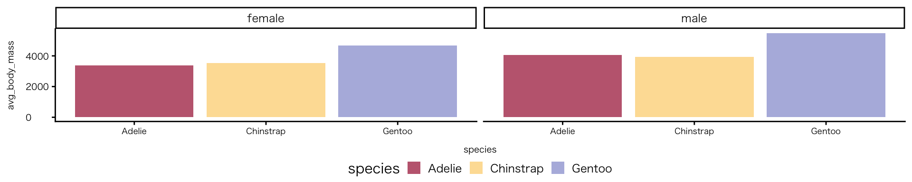
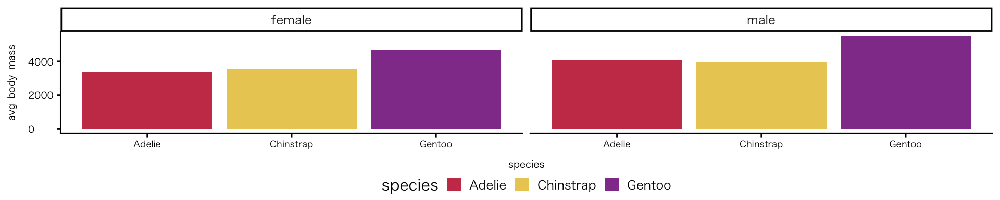
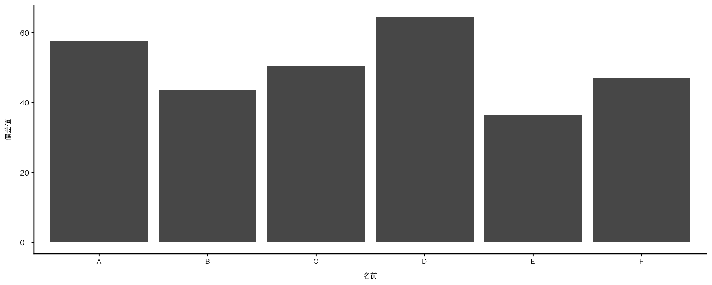
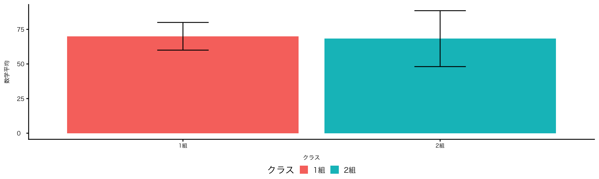
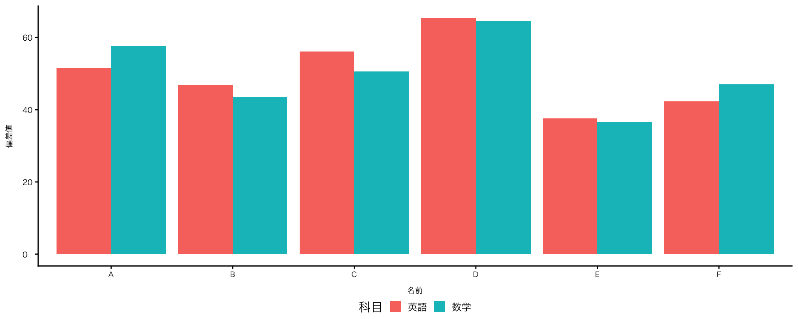
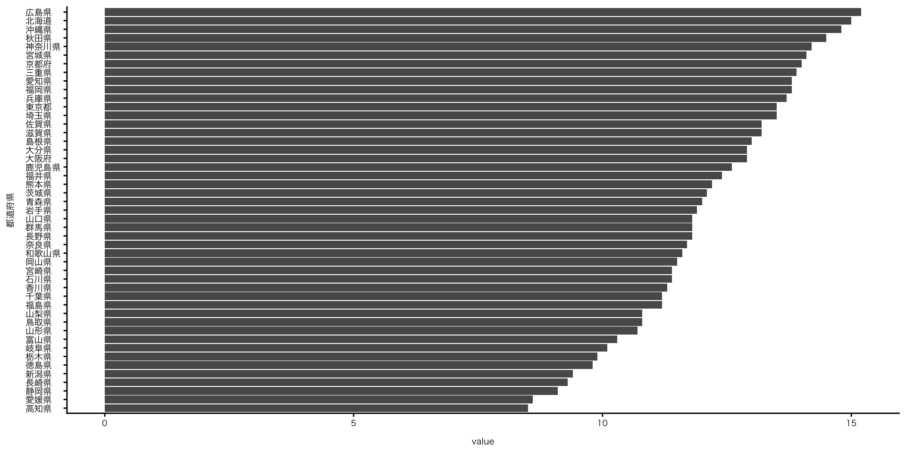
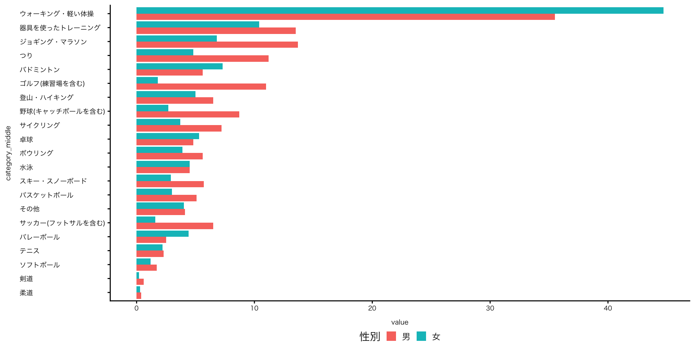

![]()
penguins |>
drop_na(species, sex, body_mass) |>
group_by(species, sex) |>
summarise(avg_body_mass = mean(body_mass), .groups = "drop") |>
ggplot(aes(x = species, y = avg_body_mass, fill = species)) +
geom_col() + # 今回説明するのはここまで。以後の見た目に関わる説明は第5回目に説明予定
facet_wrap(~ sex) +
scale_fill_paletteer_d("DresdenColor::briefcases") # "ダブルクォテーション内がパレット名"RとQuartoではじめるデータサイエンス
#4 Rの基本的な操作方法(2)
April 30, 2026
0. 本日の目標
本日の目標
- フォルダ・ファイル関係・階層を意識し、データを読み込めるようになる
- 元データを加工して（選択、結合）、必要なデータを作る流れを理解する
mutate()とsummarise()の違いを理解し、目的に応じて新しい変数を作成・集計できるようになる- 代入の考え方を理解して、使いこなせるようになる
- 水準（factor）を設定することで、並び順や可視化が変わることを体験的に理解する
- 縦持ちデータの便利さがどこにあるのかを実感してみる
Ⅰ. 前回の振り返り
授業の感想
ヒストグラムを作る際に“species”をgroup_byでグループ分けをしましたが、演習６で箱ひげ図を作る際にgroup_byが不要なことに気づき、どういうときにgroup_byの処理をする必要があるのか分からなくなってきました（寺西さん）
- 私のコード作成ミスです。すみません。ヒストグラムを作る際は不要
group_by()- データを「グループ単位」に分けて計算するための準備
mutate()やsummarise()で集計することに関わるので、geom_()と直接的な関係はありません
授業の感想
Rのコードを打つところの色がまだ初期設定のままであるため、自分がやりやすいデザインに変更したいと感じた（吉田さん）
- 5月13日の授業で説明予定だが、以下のパッケージがおすすめ
- MetBrewer; paletteer | The paletteer gallery （色指定の関数は両者で異なる）
- 要インストール・要library()で読み込み

penguins |>
drop_na(species, sex, body_mass) |>
group_by(species, sex) |>
summarise(avg_body_mass = mean(body_mass), .groups = "drop") |>
ggplot(aes(x = species, y = avg_body_mass, fill = species)) +
geom_col() + # 今回説明するのはここまで。以後の見た目に関わる説明は第5回目に説明予定
facet_wrap(~ sex) +
scale_fill_manual(values = met.brewer("Klimt", 3)) # "ダブルクォテーション内がパレット名"
演習問題④：解答例
演習問題⑥：解答例
前回の積み残し
- Ⅴ. 多変量（3変数）の作図から
Ⅱ. データを読み込む
SSDSE
SSDSE（教育用標準データセット）
SSDSEの特徴
- 簡便性：容易にダウンロードでき、特別な前処理は不要（⽋測値のない完備なデータ）
- 親近性：⽣徒・学⽣や教員になじみがある「⾃分たちのデータ」
- 具体性：個別データについても意味が分かり議論できる
- 多様性：様々な課題抽出、多様な分析が可能 → ⾃由度の⾼い「標準データ」
- （出典：統計教育のためのSSDSEの開発と活⽤）
- エクセル集計が前提となっており、まだまだRでは使いづらい
SSDSE
| 観点 | OECD / UK / US | SSDSE | e-Stat |
|---|---|---|---|
| 設計思想 | 機械処理・API前提 | 教育・閲覧（Excel）前提 | 統計統合（原データ重視） |
| データ構造 | tidy data準拠（縦持ち） | 半tidy（横持ち＋一部整理） | 非tidy（階層・注釈混在） |
| 階層情報 | 別テーブルで管理（正規化） | 一部コードに埋め込み | 行・列・コードに混在 |
| 変数設計 | 明示的（列として独立） | コードに意味が埋め込まれる | コード＋表構造に分散 |
| 可視化・分析 | そのまま可能 | 前処理が必要 | 大規模な前処理が必要 |
| 提供形式 | API / CSV / JSON / Parquet | CSV（Excel想定） | CSV / Excel / API（形式混在）/ PDF |
| 一貫性 | 高い（設計統一） | 中（教育用に整理） | 低（統計ごとに異なる） |
tidyなデータセット
オープンデータ
- UK: data.gov.uk
- USA: data.gov
- OECD: OECD Data Explorer
- UNESCO: UIS Data Brawser
- World Bank: World Bank Open Data
- Our World in Data: Our World in Data
- National Health and Nutrition Examination Survey
R package
- CKAN API: ckanr
SSDSE
- SSDSE（教育用標準データセット）を初学者が使いこなすことは難しいと思い直しましたので、tidyなデータにするコードをGoogle Driveにおいておきます。Setup Chunkにそのままコピーして下さい。ただしパスは適宜、変更して下さい
- このコードを使うと、tidyなデータになるので、penguinsを使って学んだような操作ができるはずです。特に、このデータセットを使ってレポートを書く予定の方はご確認下さい
- コードの意味は、本日または次次週の授業内で、「SSDSE-社会生活（SSDSE-D）」（都道府県別・男女別の自由時間活動・生活時間データを集めたデータセット）を例にとって説明します
SSDSE
- 地図にデータをプロットすることも可能（詳しい説明は後日行います）
- 追加するパッケージ： sf; jpndistrict * ダウンロード方法がやや特殊
ishikawa <-
jpn_pref(pref = 17, district = TRUE) |> # pref = 17 は「石川県」を意味するコード
left_join(df_a, by = c("city_code" = "市区町村コード")) # district = TRUE にすると、市区町村レベルの地図になる
ishikawa |>
filter(code_name == "第２次産業就業者数") |> # 「第２次産業就業者数」だけを取り出す
ggplot() +
geom_sf(aes(fill = value)) + # sf（地図データ）を描画。fill = value によって、値に応じて色を塗り分ける
scale_fill_viridis_c(direction = -1) # 配色の指示、デフォルトだと人数の多寡と配色の濃淡が直感に反するために、direction -1で逆に
CSVファイル
CSVファイル
- Comma-Separated Values
- カンマ（,）で区切って保存されたテキストファイル
- 書式（色・セル結合）や数式などの情報は持たない
- ExcelやRなど様々なソフトで読み書きできる、汎用性の高いデータ形式
- CSVファイルとエクセルファイルを選択できる場合は、CSVを推奨
Microsoft Excel
文字コード：Shift_JIS
- 日本語で使われてきた文字コードの一つ
- 日本語環境に最適化されたローカルな規格
- 近年は、世界中の文字を統一して扱えるユニコード（UTF-8）が主流
- OS（Windows・macOS・Linux）は内部的にUnicodeを利用
- Web、メール、プログラミング言語などで標準的に使用されている
- Windows版のRも、R 4.2.0（2022年4月）で、Unicode（UTF-8）に
- 日本語版のMicrosoft Excel：Shift_JISが前提
- 日本の業務データ（銀行CSVや公的データなど）：Shift_JISが主流
- Excelは文字コードを自動で正しく判別できないことが多々あり、UTF-8ファイルをShift_JISで読み込む（文字化けが起こる）
Microsoft Excel
Excelの勝手な挙動
- 文字列の自動変換
- 例：00123 → 123（数字先頭にあるゼロが消失）
- IDやコードが壊れる
- 長い数値を丸める
- 16桁以上の数値は後ろが丸められる
- クレジット番号や学籍番号などが破壊される
まとめ
- データサイエンスにとってExcelは危険
- CSVファイルはExcelで直接開かない
CSVエディタ
CSVエディタ
- データを「そのまま」確認するためのツール
- 文字コード変換やフィルタリングなどの基本的な機能しか備えていない
Modern CSV
- Modern CSVからModern CSVをダウンロードして下さい
- Free（無料版）で十分な機能が備わっています
データの読み込み
read_csv()関数
- tidyverseの一つreadrパッケージに組み込まれた関数
- 文字コードやデータ型の扱いが安定
- 文字列を勝手にカテゴリ（factor）にしない
- Cf.
read.csv()- 補完入力候補として挙がる
read.csv()と、read_csv()はまったく別の関数（.ドットと_アンダースコア） - base Rの関数で、今日では標準ではない
- 補完入力候補として挙がる
- Cf. Excelファイルの読み込み：readxlパッケージを追加
- 基本的な使い方は
read_csv()と同じ。詳しくは公式サイトreadxl（英語）もしくは「Rパッケージ活用事例集」readxl（日本語）を参照
- 基本的な使い方は
ファイルパス
- ファイルがどのフォルダやディレクトリに保存されているかを階層構造で表した文字列
- 絶対パス：一番上の階層（ルート）から、ファイルまでの経路をすべて書いたもの
- Windows:
C:/Users/user/Documents/大学/レポート.docx - Mac:
/Users/user/Documents/大学/レポート.docx
- Windows:
- 相対パス：基準となる場所から見たファイルの位置まで書いたもの
- ※基準：作業ディレクトリ（例：Documentsフォルダなど）
- Windows:
大学/レポート.docx - Mac:
大学/レポート.docx
- Rの相対パスの基準 - Rの相対パスの基準：プロジェクト（.Rproj）があるフォルダ。ここを基準に階層関係を考える
ファイルパス
fs::dir_tree()- フォルダの中にあるファイルやフォルダの階層構造を一覧表示する関数
.
├── RandQuarto_w1_files
│ ├── figure-html
│ │ ├── unnamed-chunk-1-1.pdf
│ │ ├── unnamed-chunk-1-1.png
│ │ ├── unnamed-chunk-10-1.pdf
│ │ ├── unnamed-chunk-10-1.png
│ │ ├── unnamed-chunk-15-1.png
│ │ ├── unnamed-chunk-16-1.png
│ │ ├── unnamed-chunk-17-1.png
│ │ ├── unnamed-chunk-18-1.pdf
│ │ ├── unnamed-chunk-18-1.png
│ │ ├── unnamed-chunk-2-1.pdf
│ │ ├── unnamed-chunk-2-1.png
│ │ ├── unnamed-chunk-3-1.pdf
│ │ ├── unnamed-chunk-3-1.png
│ │ ├── unnamed-chunk-4-1.pdf
│ │ ├── unnamed-chunk-4-1.png
│ │ ├── unnamed-chunk-5-1.png
│ │ ├── unnamed-chunk-6-1.pdf
│ │ ├── unnamed-chunk-6-1.png
│ │ ├── unnamed-chunk-7-1.pdf
│ │ ├── unnamed-chunk-7-1.png
│ │ ├── unnamed-chunk-8-1.pdf
│ │ ├── unnamed-chunk-8-1.png
│ │ ├── unnamed-chunk-9-1.pdf
│ │ └── unnamed-chunk-9-1.png
│ └── mediabag
├── _extensions
│ ├── ArthurData
│ │ └── confetti
│ │ ├── _extension.yml
│ │ └── confetti.js
│ ├── clean.pdf
│ ├── code.txt
│ ├── kazuyanagimoto
│ │ └── clean
│ │ ├── _extension.yml
│ │ ├── shortcodes.lua
│ │ ├── typst-environment.lua
│ │ ├── typst-show.typ
│ │ └── typst-template.typ
│ ├── martinomagnifico
│ │ └── multimodal
│ │ ├── _extension.yml
│ │ ├── multimodal.css
│ │ └── multimodal.js
│ ├── mcanouil
│ │ └── spotlight
│ │ ├── LICENSE
│ │ ├── _extension.yml
│ │ └── spotlight.js
│ └── quarto-ext
│ └── pointer
│ ├── _extension.yml
│ ├── pointer.css
│ └── pointer.js
├── data
│ ├── SSDSE-D-2021.csv
│ ├── SSDSE-D-2023.csv
│ ├── SSDSE.csv
│ ├── df_国の政策への民意の反映.parquet
│ ├── penguins_avg_body_mass.csv
│ ├── ratings_RandQuarto.csv
│ ├── rubric_RandQuarto.csv
│ ├── ssdse_a.csv
│ └── 家計調査報告.xlsx
├── figures
│ └── plot_scatter.png
├── final_paper.qmd
├── img
│ ├── 104.FAQs.png
│ ├── YAML_author_date.png
│ ├── YAML_execute.jpg
│ ├── YAML_toc.png
│ ├── YAML_警告・注意・コードを畳む.png
│ ├── chatGPT_散布図.png
│ ├── chunkoption.png
│ ├── data_long.png
│ ├── data_messy.png
│ ├── data_tidy.png
│ ├── data_wide.png
│ ├── dplyr.png
│ ├── eval1.png
│ ├── eval2.png
│ ├── eval=false1.png
│ ├── eval=false2.png
│ ├── eval_false.png
│ ├── geom_point_penguins.png
│ ├── gg-layers.png
│ ├── ggplot.png
│ ├── ggplot2.png
│ ├── global_option.png
│ ├── logo_金沢大学.jpg
│ ├── logo_金沢大学.png
│ ├── markdown.png
│ ├── palmerpenguins.png
│ ├── pane.png
│ ├── penguins-small.png
│ ├── poster_rpackagelogo.pdf
│ ├── restore.png
│ ├── russiandoll.jpg
│ ├── setupchunk.png
│ ├── setupチャンク.png
│ ├── table_by_j_government.png
│ ├── theme.png
│ ├── tidyverseAI.png
│ ├── tidyverse_circle.png
│ ├── toc.png
│ ├── viewer自動展開.png
│ ├── チャンクオプション（タイトル､図の縦横比､コードを折り畳む）.png
│ ├── チャンクオプション（実行しない）.png
│ ├── データの型.png
│ ├── データフレームの型.png
│ ├── メッシーなー表を作る.png
│ ├── メッシーな表で困る.png
│ ├── 段組.png
│ ├── 画面構成.png
│ ├── 空白の可視化.png
│ └── 第1引数エラー.png
├── index.qmd
├── pdf
│ ├── rubric_RandQuarto.pdf
│ ├── syllabus_RandQuarto.pdf
│ └── 家計調査報告.pdf
├── resume_RandQuarto_w1.qmd
├── resume_RandQuarto_w2.qmd
├── resume_RandQuarto_w3.qmd
├── resume_RandQuarto_w4.qmd
├── resume_RandQuarto_w5.qmd
├── resume_RandQuarto_w6.qmd
├── resume_RandQuarto_w7.qmd
├── rubric_RandQuarto.qmd
├── slide_RandQuarto_w1.qmd
├── slide_RandQuarto_w2.qmd
├── slide_RandQuarto_w3.qmd
├── slide_RandQuarto_w4.html
├── slide_RandQuarto_w4.qmd
├── slide_RandQuarto_w4.rmarkdown
├── slide_RandQuarto_w4_files
│ ├── figure-revealjs
│ │ ├── unnamed-chunk-1-1.png
│ │ ├── unnamed-chunk-10-1.png
│ │ ├── unnamed-chunk-11-1.png
│ │ ├── unnamed-chunk-2-1.png
│ │ ├── unnamed-chunk-23-1.png
│ │ ├── unnamed-chunk-24-1.png
│ │ ├── unnamed-chunk-27-1.png
│ │ ├── unnamed-chunk-28-1.png
│ │ ├── unnamed-chunk-3-1.png
│ │ ├── unnamed-chunk-30-1.png
│ │ ├── unnamed-chunk-31-1.png
│ │ ├── unnamed-chunk-33-1.png
│ │ ├── unnamed-chunk-34-1.png
│ │ ├── unnamed-chunk-35-1.png
│ │ ├── unnamed-chunk-36-1.png
│ │ ├── unnamed-chunk-4-1.png
│ │ ├── unnamed-chunk-47-1.png
│ │ ├── unnamed-chunk-48-1.png
│ │ ├── unnamed-chunk-5-1.png
│ │ ├── unnamed-chunk-53-1.png
│ │ ├── unnamed-chunk-54-1.png
│ │ ├── unnamed-chunk-55-1.png
│ │ ├── unnamed-chunk-56-1.png
│ │ ├── unnamed-chunk-6-1.png
│ │ ├── unnamed-chunk-7-1.png
│ │ └── unnamed-chunk-8-1.png
│ └── mediabag
├── slide_RandQuarto_w5.qmd
├── slide_RandQuarto_w6.qmd
├── slide_RandQuarto_w7.qmd
├── survey_initial.qmd
├── syllabus_RandQuarto.qmd
└── usefulsite.qmd準備
- 拡張子の表示（拡張子を表示させる方法参照）
- quartoファイルと同じ階層にフォルダ「data」を作る
- SSDSE（教育用標準データセット）から「SSDSE-D-2023」CSVファイルをダウンロード
- 1で作成した「data」フォルダに2のCSVファイルを入れる
- Modern CSVでファイルを開く（行列と文字コードを簡単に確認）
- Setup Chunkに以下のコードを入力
オブジェクト名は任意ですが、簡素でわかりやすい名称を選びましょう。raw_dataがそのまま使えることはないので、あとで加工することを前提に、区別できる名称がいいと思います
データの確認（復習）
- head()、colnames()、view()、skim()を使ってみよう
# A tibble: 6 × 124
`SSDSE-D-2023` `2021年` Prefecture MA00 MB00 MB01 MB011 MB012 MB02 MB021
<chr> <chr> <chr> <chr> <chr> <chr> <chr> <chr> <chr> <chr>
1 男女の別 地域コード 都道府県 推定人口… 学習・自… 外国語…… 英語 英語以外… 商業実務… パソコン…
2 0_総数 R00000 全国 1124… 39.6 14.1 12.8 4.2 20.1 16.5
3 0_総数 R01000 北海道 4614 35.0 11.1 9.9 3.3 17.0 14.1
4 0_総数 R02000 青森県 1090 25.4 7.4 6.6 2.0 12.7 10.3
5 0_総数 R03000 岩手県 1075 28.9 7.7 7.1 2.4 12.8 10.3
6 0_総数 R04000 宮城県 2065 37.5 12.4 10.9 4.0 18.9 16.0
# ℹ 114 more variables: MB022 <chr>, MB03 <chr>, MB04 <chr>, MB05 <chr>,
# MB06 <chr>, MB07 <chr>, MC00 <chr>, MC01 <chr>, MC02 <chr>, MC03 <chr>,
# MC04 <chr>, MC05 <chr>, MC06 <chr>, MC07 <chr>, MC08 <chr>, MC09 <chr>,
# MC095 <chr>, MC10 <chr>, MC11 <chr>, MC13 <chr>, MC14 <chr>, MC15 <chr>,
# MC16 <chr>, MC17 <chr>, MC18 <chr>, MC19 <chr>, MC20 <chr>, MC205 <chr>,
# MC21 <chr>, MC22 <chr>, MD00 <chr>, MD01 <chr>, MD02 <chr>, MD03 <chr>,
# MD04 <chr>, MD05 <chr>, MD06 <chr>, MD07 <chr>, MD08 <chr>, MD09 <chr>, …- 列と値の関係が壊れている
- 見出し行が複数ある
- 個別データと集計データが混在している
- このまま使うと二重集計になる
Ⅲ. 必要なデータを取り出す（基本編）
必要なデータを取り出す（基本編）
基本編
- 目標：推定人口だけのデータフレームを作る
- 使用する関数：
select()列操作;slice()行操作;mutate()列作成 - 使用する列：SSDSE-D-2023; Prefecture; MA00
- 注意：MA00列の値が文字で読み込まれている（2行目に文字がある）
raw_data |>
slice(-1) |> #1行目(ラベル)を削除
select(`SSDSE-D-2023`, Prefecture, MA00) |> # 変数名に記号が入っている場合は``で囲む
filter(`SSDSE-D-2023` == "0_総数") |> # 性別を除外
select(!`SSDSE-D-2023`) |> # 総数だけになったので、この列自体不要 !は除外を意味する
mutate(MA00 = as.numeric(MA00)) |> # 既存列の上書き（文字列を数値に）
mutate(
推定人口 = `MA00` * 1000, .before = MA00 # 単位が千人表記なので実数にするための1000をかける
) |>
select(!MA00) |>
filter_out(Prefecture == "全国")| Prefecture | 推定人口 |
|---|---|
| 北海道 | 4614000 |
| 青森県 | 1090000 |
| 岩手県 | 1075000 |
| 宮城県 | 2065000 |
| 秋田県 | 849000 |
| 山形県 | 944000 |
| 福島県 | 1632000 |
| 茨城県 | 2572000 |
| 栃木県 | 1730000 |
| 群馬県 | 1724000 |
| 埼玉県 | 6622000 |
| 千葉県 | 5670000 |
| 東京都 | 12724000 |
| 神奈川県 | 8344000 |
| 新潟県 | 1955000 |
| 富山県 | 922000 |
| 石川県 | 997000 |
| 福井県 | 677000 |
| 山梨県 | 725000 |
| 長野県 | 1824000 |
| 岐阜県 | 1764000 |
| 静岡県 | 3241000 |
| 愛知県 | 6728000 |
| 三重県 | 1574000 |
| 滋賀県 | 1261000 |
| 京都府 | 2311000 |
| 大阪府 | 7913000 |
| 兵庫県 | 4871000 |
| 奈良県 | 1183000 |
| 和歌山県 | 816000 |
| 鳥取県 | 484000 |
| 島根県 | 586000 |
| 岡山県 | 1666000 |
| 広島県 | 2474000 |
| 山口県 | 1177000 |
| 徳島県 | 632000 |
| 香川県 | 837000 |
| 愛媛県 | 1178000 |
| 高知県 | 606000 |
| 福岡県 | 4509000 |
| 佐賀県 | 703000 |
| 長崎県 | 1135000 |
| 熊本県 | 1511000 |
| 大分県 | 979000 |
| 宮崎県 | 928000 |
| 鹿児島県 | 1377000 |
| 沖縄県 | 1263000 |
新しい変数を作る
mutate()関数
- データフレームに新しい列を追加したり、既存の列を変形したりする関数
- 各行ごとに処理を行いながら、計算・水準の設定・文字の整形など多様に使える
mutate() と summarise()の相違点
- どちらも計算に使う関数だが、データのまとめ方が異なる
mutate()：行はそのまま、列が増えるsummarise()：行が減る（集約される）
データの加工
新しく作成する列の位置
- オプション引数でコントロールできる
.before = year;.after = year- 指定しないと最終行に追加される
新しい変数を作る
データフレームの作成
合計点
新しい変数を作る
平均点と偏差値
- 目標：既存のデータから、生徒個々人のデータの特徴を掘り下げる
| 名前 | クラス | 数学 | 英語 | 合計 | 平均 | 平均との差 | 偏差値 |
|---|---|---|---|---|---|---|---|
| A | 1組 | 80 | 70 | 150 | 75.0 | 10.8333333 | 57.58175 |
| B | 1組 | 60 | 65 | 125 | 62.5 | -9.1666667 | 43.58467 |
| C | 1組 | 70 | 75 | 145 | 72.5 | 0.8333333 | 50.58321 |
| D | 2組 | 90 | 85 | 175 | 87.5 | 20.8333333 | 64.58030 |
| E | 2組 | 50 | 55 | 105 | 52.5 | -19.1666667 | 36.58613 |
| F | 2組 | 65 | 60 | 125 | 62.5 | -4.1666667 | 47.08394 |

新しい変数を作る
- 目標：クラスごとの平均を算出し、図表を作成する
- 列の追加ではなく、データフレームそのものを書き換える必要あり
summarise()
- 小数が長いと読みにくいため、表やグラフでは丸めるのが普通
round()：計算結果を見やすくするために丸める関数（引数で調整可）
| クラス | 数学平均 | 英語平均 | 合計点平均 | 数学SD | 英語SD | 合計点SD |
|---|---|---|---|---|---|---|
| 1組 | 70.0 | 70.0 | 140 | 10.0 | 5.0 | 13.2 |
| 2組 | 68.3 | 66.7 | 135 | 20.2 | 16.1 | 36.1 |
df_math_eng |>
mutate(合計点 = 数学 + 英語) |>
group_by(クラス) |>
summarise(
数学平均 = round(mean(数学), 1),
英語平均 = round(mean(英語), 1),
合計点平均 = round(mean(数学 + 英語), 1),
数学SD = round(sd(数学), 1),
英語SD = round(sd(英語), 1),
合計点SD = round(sd(数学 + 英語), 1)
) |>
ggplot(aes(x = クラス, y = 数学平均, fill = クラス)) +
geom_col() +
geom_errorbar( # エラーバー関数
aes(ymin = 数学平均 - 数学SD,
ymax = 数学平均 + 数学SD),
width = 0.2
)
代入
- パイプは「処理の流れ」であり、結果を自動保存する仕組みではない
- 再利用したい場合は
<-（代入演算子）でオブジェクトに保存する
df_pop_all <-
raw_data |>
slice(-1) |> #1行目(ラベル)を削除
select(`SSDSE-D-2023`, Prefecture, MA00) |> # 変数名に記号が入っている場合は``で囲む
filter(`SSDSE-D-2023` == "0_総数") |> # 性別を除外
select(!`SSDSE-D-2023`) |> # 総数だけになったので、この列自体不要 !は除外を意味する
mutate(MA00 = as.numeric(MA00)) |> # 文字列に
mutate(
推定人口 = `MA00` * 1000, .before = MA00 # 単位が千人表記なので実数にするための1000をかける
) |>
select(!MA00) |>
filter_out(Prefecture == "全国") |>
rename(都道府県 = Prefecture)- 右上のペイン「Environment」に、作成した新しいオブジェクトdfがあることを確認（これで他のチャンクでも繰り返し使える）
代入
代入演算子ショートカット
- Windows / Linux：Alt + -
- Mac：Option + -
代入（復習）
- 代入して新しく作ったオブジェクトで図を作る
- 図を見て問題点を見つける
問題点
- 愛知県から始まっている
- （ラベル）
対応策
- 北海道から始まるようにする（元データと同じ並びにする）
- 推定人口の昇順・降順にする
カテゴリを整える：水準の設定
- 並び方（水準）の設定
- 文字ベクトルを作り、
factor()で水準を指定
- 文字ベクトルを作り、
- 以下のコードをSetup Chunkに追加（データの読み込みより下がいい）
# 水準の設定
pref_levels <- c("北海道",
"青森県","岩手県","宮城県","秋田県","山形県","福島県",
"茨城県","栃木県","群馬県","埼玉県","千葉県","東京都","神奈川県",
"新潟県","富山県","石川県","福井県","山梨県","長野県",
"岐阜県","静岡県","愛知県","三重県",
"滋賀県","京都府","大阪府","兵庫県","奈良県","和歌山県",
"鳥取県","島根県","岡山県","広島県","山口県",
"徳島県","香川県","愛媛県","高知県",
"福岡県","佐賀県","長崎県","熊本県","大分県","宮崎県","鹿児島県",
"沖縄県")カテゴリを整える：水準の設定
mutate()とfactor()を組み合わせて、水準を設定

並び替える
reorder()- 昇順（小さい → 大きい）：デフォルト
- 降順（大きい → 小さい）：マイナスの記号を入れる
演習問題⑧
- 降順に並び替えよう
- ヒント：マイナス記号を付す位置は？並べ替えたい基準は推定人口
Ⅳ. 必要なデータを取り出す（応用編）
必要なデータを取り出す（応用編）
- 目標：「性別」列を作る
- “1_男”/“2_女”を、“_“で分けて、性別だけ取り出し、性別という列を作る
- メンバーシップ演算子
%in%：値が含まれるかどうかを判断
raw_data |>
slice(-1) |> #1行目(ラベル)を削除
select(`SSDSE-D-2023`, Prefecture, MA00) |>
filter_out(`SSDSE-D-2023` == "0_総数") |> # 性別のみにする
separate(`SSDSE-D-2023`, into = c(NA, "性別"), sep = "_") |> # 性別という列を作り、アンダースコアで値を分けて入れる
filter(性別 %in% c("男", "女")) |> # すでに値は男もしくは女だけのはずだが、念の為
mutate(MA00 = as.numeric(MA00)) |>
mutate(推定人口 = MA00 * 1000) |>
mutate(Prefecture = factor(Prefecture, levels = pref_levels)) |>
mutate(性別 = factor(性別, levels = c("男", "女"))) |>
filter_out(Prefecture == "全国") |>
rename(都道府県 = Prefecture) |>
select(!MA00) |> # コードに即した値でなく、すでに推定人口は算出したので不要（ミスのもとになり得る）
drop_na(都道府県) # 総数なので不要# A tibble: 94 × 3
性別 都道府県 推定人口
<fct> <fct> <dbl>
1 男 北海道 2179000
2 男 青森県 514000
3 男 岩手県 520000
4 男 宮城県 1009000
5 男 秋田県 404000
6 男 山形県 459000
7 男 福島県 809000
8 男 茨城県 1288000
9 男 栃木県 866000
10 男 群馬県 857000
# ℹ 84 more rows演習問題⑨
- 先のコードを新しいオブジェクトに代入して、このデータフレームの特徴がよく表れている図を作ろう（代入の練習と作図の復習）
05:00
Ⅴ. 必要なデータを取り出す（発展編）
必要なデータを取り出す（発展編）
- 目標：コード番号からカテゴリ列を作り直し、縦持ちデータにする
手順
- 元データの規則性を読み解く
- 「別表 SSDSE-社会生活のデータ一覧」も参照
- 「過去１年間に活動した人の割合（行動者率）」
- コード番号の特徴
- アルファベット2文字が大カテゴリ
- 続く2桁の数字が中カテゴリ（＝00を除く）4桁コードに着目
- 最後の2桁は保留
縦持ち変換・横持ち変換
pivot_longer()：横持ちデータを縦持ちデータに変換pivot_wider()：縦持ちデータを横持ちデータに変換
横持ちデータの特徴
- 同じ種類のデータなのに列がバラバラ
- ➡︎ 一度に計算しにくい；グラフにしにくい
縦持ちデータの特徴
- 同じ種類のデータは1つの列（変数）に整理されている
- カテゴリごとに扱えるようになる
- ➡︎ 同じ処理を1回でまとめて書けるので、コードがシンプルになる
- ➡︎ 関数を自然に使えるようになる（例：
group_by()やggplot()） - ➡︎ 同じ種類のデータをまとめて扱えるようになる
縦持ち変換・横持ち変換
raw_data |>
select(`SSDSE-D-2023`, Prefecture, matches("^[A-Z]{2}[0-9]{2}$")) |> # 「MA01」「MB12」などのように、アルファベット2文字＋数字2桁 になっている列をまとめて選ぶ
select(-c(MA00, MB00, MC00, MD00, ME00, MF00)) |> # 複数の列を一括で削除するためにc()で囲む
pivot_longer( # 横に並んでいるデータ（列）を、縦に並べ替える
cols = matches("^[A-Z]{2}[0-9]{2}$"), # 対象となる列（コード列）
names_to = "code", # 列名（MA01など）を「code」という列に入れる
values_to = "value") # 中の値を「value」という列に入れる| SSDSE-D-2023 | Prefecture | code | value |
|---|---|---|---|
| 男女の別 | 都道府県 | MB01 | 外国語 |
| 男女の別 | 都道府県 | MB02 | 商業実務・ビジネス関係(総数) |
| 男女の別 | 都道府県 | MB03 | 介護関係 |
| 男女の別 | 都道府県 | MB04 | 家政・家事(料理・裁縫・家庭経営など) |
| 男女の別 | 都道府県 | MB05 | 人文・社会・自然科学(歴史・経済・数学・生物など) |
| 男女の別 | 都道府県 | MB06 | 芸術・文化 |
| 男女の別 | 都道府県 | MB07 | その他 |
| 男女の別 | 都道府県 | MC01 | 野球(キャッチボールを含む) |
| 男女の別 | 都道府県 | MC02 | ソフトボール |
| 男女の別 | 都道府県 | MC03 | バレーボール |
| 男女の別 | 都道府県 | MC04 | バスケットボール |
| 男女の別 | 都道府県 | MC05 | サッカー(フットサルを含む) |
| 男女の別 | 都道府県 | MC06 | 卓球 |
| 男女の別 | 都道府県 | MC07 | テニス |
| 男女の別 | 都道府県 | MC08 | バドミントン |
| 男女の別 | 都道府県 | MC09 | ゴルフ(練習場を含む) |
| 男女の別 | 都道府県 | MC10 | 柔道 |
| 男女の別 | 都道府県 | MC11 | 剣道 |
| 男女の別 | 都道府県 | MC13 | ボウリング |
| 男女の別 | 都道府県 | MC14 | つり |
| 男女の別 | 都道府県 | MC15 | 水泳 |
| 男女の別 | 都道府県 | MC16 | スキー・スノーボード |
| 男女の別 | 都道府県 | MC17 | 登山・ハイキング |
| 男女の別 | 都道府県 | MC18 | サイクリング |
| 男女の別 | 都道府県 | MC19 | ジョギング・マラソン |
| 男女の別 | 都道府県 | MC20 | ウォーキング・軽い体操 |
| 男女の別 | 都道府県 | MC21 | 器具を使ったトレーニング |
| 男女の別 | 都道府県 | MC22 | その他 |
| 男女の別 | 都道府県 | MD01 | スポーツ観覧・観戦(テレビ・スマートフォン・パソコンなどは除く) |
| 男女の別 | 都道府県 | MD02 | 美術鑑賞(テレビ・スマートフォン・パソコンなどは除く) |
| 男女の別 | 都道府県 | MD03 | 演芸・演劇・舞踊鑑賞(テレビ・スマートフォン・パソコンなどは除く) |
| 男女の別 | 都道府県 | MD04 | 映画館での映画鑑賞 |
| 男女の別 | 都道府県 | MD05 | 映画館以外での映画鑑賞（テレビ・DVD・パソコンなど） |
| 男女の別 | 都道府県 | MD06 | コンサートなどによるクラシック音楽鑑賞 |
| 男女の別 | 都道府県 | MD07 | コンサートなどによるポピュラー音楽・歌謡曲鑑賞 |
| 男女の別 | 都道府県 | MD08 | ＣＤ・スマートフォンなどによる音楽鑑賞 |
| 男女の別 | 都道府県 | MD09 | 楽器の演奏 |
| 男女の別 | 都道府県 | MD10 | 邦楽(民謡、日本古来の音楽を含む) |
| 男女の別 | 都道府県 | MD11 | コーラス・声楽 |
| 男女の別 | 都道府県 | MD12 | カラオケ |
| 男女の別 | 都道府県 | MD13 | 邦舞・おどり |
| 男女の別 | 都道府県 | MD14 | 洋舞・社交ダンス |
| 男女の別 | 都道府県 | MD15 | 書道 |
| 男女の別 | 都道府県 | MD16 | 華道 |
| 男女の別 | 都道府県 | MD17 | 茶道 |
| 男女の別 | 都道府県 | MD18 | 和裁・洋裁 |
| 男女の別 | 都道府県 | MD19 | 編み物・手芸 |
| 男女の別 | 都道府県 | MD20 | 趣味としての料理・菓子作り |
| 男女の別 | 都道府県 | MD21 | 園芸・庭いじり・ガーデニング |
| 男女の別 | 都道府県 | MD22 | 日曜大工 |
| 男女の別 | 都道府県 | MD23 | 絵画・彫刻の制作 |
| 男女の別 | 都道府県 | MD24 | 陶芸・工芸 |
| 男女の別 | 都道府県 | MD25 | 写真の撮影・プリント |
| 男女の別 | 都道府県 | MD26 | 詩・和歌・俳句・小説などの創作 |
| 男女の別 | 都道府県 | MD28 | 囲碁 |
| 男女の別 | 都道府県 | MD29 | 将棋 |
| 男女の別 | 都道府県 | MD30 | パチンコ |
| 男女の別 | 都道府県 | MD31 | スマートフォン・家庭用ゲーム機などによるゲーム |
| 男女の別 | 都道府県 | MD32 | 遊園地、動植物園、水族館などの見物 |
| 男女の別 | 都道府県 | MD33 | キャンプ |
| 男女の別 | 都道府県 | MD34 | その他 |
| 男女の別 | 都道府県 | ME01 | 健康や医療サービスに関係した活動 |
| 男女の別 | 都道府県 | ME02 | 高齢者を対象とした活動 |
| 男女の別 | 都道府県 | ME03 | 障害者を対象とした活動 |
| 男女の別 | 都道府県 | ME04 | 子供を対象とした活動 |
| 男女の別 | 都道府県 | ME05 | スポーツ・文化・芸術・学術に関係した活動 |
| 男女の別 | 都道府県 | ME06 | まちづくりのための活動 |
| 男女の別 | 都道府県 | ME07 | 安全な生活のための活動 |
| 男女の別 | 都道府県 | ME08 | 自然や環境を守るための活動 |
| 男女の別 | 都道府県 | ME09 | 災害に関係した活動 |
| 男女の別 | 都道府県 | ME10 | 国際協力に関係した活動 |
| 男女の別 | 都道府県 | ME11 | その他 |
| 男女の別 | 都道府県 | MF01 | 行楽(日帰り) |
| 男女の別 | 都道府県 | MF02 | 旅行(１泊２日以上) |
| 男女の別 | 都道府県 | MG01 | 睡眠 |
| 男女の別 | 都道府県 | MG02 | 身の回りの用事 |
| 男女の別 | 都道府県 | MG03 | 食事 |
| 男女の別 | 都道府県 | MG04 | 通勤・通学 |
| 男女の別 | 都道府県 | MG05 | 仕事 |
| 男女の別 | 都道府県 | MG06 | 学業 |
| 男女の別 | 都道府県 | MG07 | 家事 |
| 男女の別 | 都道府県 | MG08 | 介護・看護 |
| 男女の別 | 都道府県 | MG09 | 育児 |
| 男女の別 | 都道府県 | MG10 | 買い物 |
| 男女の別 | 都道府県 | MG11 | 移動(通勤・通学を除く) |
| 男女の別 | 都道府県 | MG12 | テレビ・ラジオ・新聞・雑誌 |
| 男女の別 | 都道府県 | MG13 | 休養・くつろぎ |
| 男女の別 | 都道府県 | MG14 | 学習・自己啓発・訓練(学業以外) |
| 男女の別 | 都道府県 | MG15 | 趣味・娯楽 |
| 男女の別 | 都道府県 | MG16 | スポーツ |
| 男女の別 | 都道府県 | MG17 | ボランティア活動・社会参加活動 |
| 男女の別 | 都道府県 | MG18 | 交際・付き合い |
| 男女の別 | 都道府県 | MG19 | 受診・療養 |
| 男女の別 | 都道府県 | MG20 | その他 |
| 男女の別 | 都道府県 | MG51 | 通勤・通学 |
| 男女の別 | 都道府県 | MG52 | 仕事 |
| 男女の別 | 都道府県 | MG53 | 学業 |
| 男女の別 | 都道府県 | MH01 | 起床 |
| 男女の別 | 都道府県 | MH02 | 朝食開始 |
| 男女の別 | 都道府県 | MH03 | 夕食開始 |
| 男女の別 | 都道府県 | MH04 | 就寝 |
| 男女の別 | 都道府県 | MH51 | 出勤 |
| 男女の別 | 都道府県 | MH52 | 仕事からの帰宅時間 |
| 0_総数 | 全国 | MB01 | 14.1 |
| 0_総数 | 全国 | MB02 | 20.1 |
| 0_総数 | 全国 | MB03 | 3.6 |
| 0_総数 | 全国 | MB04 | 13.5 |
| 0_総数 | 全国 | MB05 | 9.8 |
| 0_総数 | 全国 | MB06 | 11.2 |
| 0_総数 | 全国 | MB07 | 7.9 |
| 0_総数 | 全国 | MC01 | 6.3 |
| 0_総数 | 全国 | MC02 | 1.5 |
| 0_総数 | 全国 | MC03 | 3.5 |
| 0_総数 | 全国 | MC04 | 3.6 |
| 0_総数 | 全国 | MC05 | 4.7 |
| 0_総数 | 全国 | MC06 | 4.9 |
| 0_総数 | 全国 | MC07 | 3.4 |
| 0_総数 | 全国 | MC08 | 6.1 |
| 0_総数 | 全国 | MC09 | 6.9 |
| 0_総数 | 全国 | MC10 | 0.4 |
| 0_総数 | 全国 | MC11 | 0.5 |
| 0_総数 | 全国 | MC13 | 5.1 |
| 0_総数 | 全国 | MC14 | 7.8 |
| 0_総数 | 全国 | MC15 | 5.7 |
| 0_総数 | 全国 | MC16 | 3.2 |
| 0_総数 | 全国 | MC17 | 7.7 |
| 0_総数 | 全国 | MC18 | 8.2 |
| 0_総数 | 全国 | MC19 | 11.1 |
| 0_総数 | 全国 | MC20 | 44.3 |
| 0_総数 | 全国 | MC21 | 12.9 |
| 0_総数 | 全国 | MC22 | 4.6 |
| 0_総数 | 全国 | MD01 | 14.5 |
| 0_総数 | 全国 | MD02 | 11.4 |
| 0_総数 | 全国 | MD03 | 6.7 |
| 0_総数 | 全国 | MD04 | 29.8 |
| 0_総数 | 全国 | MD05 | 52.7 |
| 0_総数 | 全国 | MD06 | 3.9 |
| 0_総数 | 全国 | MD07 | 5.9 |
| 0_総数 | 全国 | MD08 | 53.5 |
| 0_総数 | 全国 | MD09 | 10.2 |
| 0_総数 | 全国 | MD10 | 3.0 |
| 0_総数 | 全国 | MD11 | 1.7 |
| 0_総数 | 全国 | MD12 | 13.5 |
| 0_総数 | 全国 | MD13 | 1.0 |
| 0_総数 | 全国 | MD14 | 1.1 |
| 0_総数 | 全国 | MD15 | 3.4 |
| 0_総数 | 全国 | MD16 | 1.3 |
| 0_総数 | 全国 | MD17 | 0.8 |
| 0_総数 | 全国 | MD18 | 5.5 |
| 0_総数 | 全国 | MD19 | 8.8 |
| 0_総数 | 全国 | MD20 | 19.0 |
| 0_総数 | 全国 | MD21 | 26.0 |
| 0_総数 | 全国 | MD22 | 11.0 |
| 0_総数 | 全国 | MD23 | 3.4 |
| 0_総数 | 全国 | MD24 | 1.6 |
| 0_総数 | 全国 | MD25 | 21.9 |
| 0_総数 | 全国 | MD26 | 2.2 |
| 0_総数 | 全国 | MD28 | 0.9 |
| 0_総数 | 全国 | MD29 | 3.0 |
| 0_総数 | 全国 | MD30 | 6.3 |
| 0_総数 | 全国 | MD31 | 42.9 |
| 0_総数 | 全国 | MD32 | 19.0 |
| 0_総数 | 全国 | MD33 | 6.0 |
| 0_総数 | 全国 | MD34 | 3.7 |
| 0_総数 | 全国 | ME01 | 2.1 |
| 0_総数 | 全国 | ME02 | 2.4 |
| 0_総数 | 全国 | ME03 | 0.9 |
| 0_総数 | 全国 | ME04 | 4.6 |
| 0_総数 | 全国 | ME05 | 2.8 |
| 0_総数 | 全国 | ME06 | 7.4 |
| 0_総数 | 全国 | ME07 | 3.1 |
| 0_総数 | 全国 | ME08 | 3.0 |
| 0_総数 | 全国 | ME09 | 0.8 |
| 0_総数 | 全国 | ME10 | 0.8 |
| 0_総数 | 全国 | ME11 | 2.0 |
| 0_総数 | 全国 | MF01 | 40.5 |
| 0_総数 | 全国 | MF02 | 32.3 |
| 0_総数 | 全国 | MG01 | 474 |
| 0_総数 | 全国 | MG02 | 84 |
| 0_総数 | 全国 | MG03 | 99 |
| 0_総数 | 全国 | MG04 | 31 |
| 0_総数 | 全国 | MG05 | 208 |
| 0_総数 | 全国 | MG06 | 38 |
| 0_総数 | 全国 | MG07 | 87 |
| 0_総数 | 全国 | MG08 | 3 |
| 0_総数 | 全国 | MG09 | 14 |
| 0_総数 | 全国 | MG10 | 26 |
| 0_総数 | 全国 | MG11 | 22 |
| 0_総数 | 全国 | MG12 | 128 |
| 0_総数 | 全国 | MG13 | 117 |
| 0_総数 | 全国 | MG14 | 13 |
| 0_総数 | 全国 | MG15 | 48 |
| 0_総数 | 全国 | MG16 | 13 |
| 0_総数 | 全国 | MG17 | 2 |
| 0_総数 | 全国 | MG18 | 10 |
| 0_総数 | 全国 | MG19 | 7 |
| 0_総数 | 全国 | MG20 | 16 |
| 0_総数 | 全国 | MG51 | 79 |
| 0_総数 | 全国 | MG52 | 340 |
| 0_総数 | 全国 | MG53 | 393 |
| 0_総数 | 全国 | MH01 | 6:38 |
| 0_総数 | 全国 | MH02 | 7:11 |
| 0_総数 | 全国 | MH03 | 18:58 |
| 0_総数 | 全国 | MH04 | 23:04 |
| 0_総数 | 全国 | MH51 | 8:20 |
| 0_総数 | 全国 | MH52 | 18:34 |
| 0_総数 | 北海道 | MB01 | 11.1 |
| 0_総数 | 北海道 | MB02 | 17.0 |
| 0_総数 | 北海道 | MB03 | 4.1 |
| 0_総数 | 北海道 | MB04 | 13.3 |
| 0_総数 | 北海道 | MB05 | 8.4 |
| 0_総数 | 北海道 | MB06 | 10.0 |
| 0_総数 | 北海道 | MB07 | 7.8 |
| 0_総数 | 北海道 | MC01 | 7.3 |
| 0_総数 | 北海道 | MC02 | 1.1 |
| 0_総数 | 北海道 | MC03 | 4.1 |
| 0_総数 | 北海道 | MC04 | 3.8 |
| 0_総数 | 北海道 | MC05 | 4.4 |
| 0_総数 | 北海道 | MC06 | 4.8 |
| 0_総数 | 北海道 | MC07 | 2.5 |
| 0_総数 | 北海道 | MC08 | 6.1 |
| 0_総数 | 北海道 | MC09 | 5.2 |
| 0_総数 | 北海道 | MC10 | 0.4 |
| 0_総数 | 北海道 | MC11 | 0.3 |
| 0_総数 | 北海道 | MC13 | 4.6 |
| 0_総数 | 北海道 | MC14 | 8.8 |
| 0_総数 | 北海道 | MC15 | 4.7 |
| 0_総数 | 北海道 | MC16 | 8.3 |
| 0_総数 | 北海道 | MC17 | 6.1 |
| 0_総数 | 北海道 | MC18 | 7.5 |
| 0_総数 | 北海道 | MC19 | 9.7 |
| 0_総数 | 北海道 | MC20 | 40.6 |
| 0_総数 | 北海道 | MC21 | 11.8 |
| 0_総数 | 北海道 | MC22 | 5.0 |
| 0_総数 | 北海道 | MD01 | 15.5 |
| 0_総数 | 北海道 | MD02 | 8.8 |
| 0_総数 | 北海道 | MD03 | 4.6 |
| 0_総数 | 北海道 | MD04 | 23.3 |
| 0_総数 | 北海道 | MD05 | 51.7 |
| 0_総数 | 北海道 | MD06 | 3.9 |
| 0_総数 | 北海道 | MD07 | 5.6 |
| 0_総数 | 北海道 | MD08 | 51.9 |
| 0_総数 | 北海道 | MD09 | 9.5 |
| 0_総数 | 北海道 | MD10 | 2.7 |
| 0_総数 | 北海道 | MD11 | 1.3 |
| 0_総数 | 北海道 | MD12 | 14.8 |
| 0_総数 | 北海道 | MD13 | 1.0 |
| 0_総数 | 北海道 | MD14 | 0.9 |
| 0_総数 | 北海道 | MD15 | 3.0 |
| 0_総数 | 北海道 | MD16 | 1.0 |
| 0_総数 | 北海道 | MD17 | 0.7 |
| 0_総数 | 北海道 | MD18 | 5.9 |
| 0_総数 | 北海道 | MD19 | 10.7 |
| 0_総数 | 北海道 | MD20 | 18.7 |
| 0_総数 | 北海道 | MD21 | 27.0 |
| 0_総数 | 北海道 | MD22 | 12.4 |
| 0_総数 | 北海道 | MD23 | 3.1 |
| 0_総数 | 北海道 | MD24 | 1.3 |
| 0_総数 | 北海道 | MD25 | 21.2 |
| 0_総数 | 北海道 | MD26 | 1.8 |
| 0_総数 | 北海道 | MD28 | 0.7 |
| 0_総数 | 北海道 | MD29 | 2.7 |
| 0_総数 | 北海道 | MD30 | 7.8 |
| 0_総数 | 北海道 | MD31 | 44.2 |
| 0_総数 | 北海道 | MD32 | 16.3 |
| 0_総数 | 北海道 | MD33 | 9.1 |
| 0_総数 | 北海道 | MD34 | 3.8 |
| 0_総数 | 北海道 | ME01 | 2.0 |
| 0_総数 | 北海道 | ME02 | 2.5 |
| 0_総数 | 北海道 | ME03 | 0.8 |
| 0_総数 | 北海道 | ME04 | 3.3 |
| 0_総数 | 北海道 | ME05 | 2.1 |
| 0_総数 | 北海道 | ME06 | 6.9 |
| 0_総数 | 北海道 | ME07 | 2.6 |
| 0_総数 | 北海道 | ME08 | 2.8 |
| 0_総数 | 北海道 | ME09 | 0.7 |
| 0_総数 | 北海道 | ME10 | 0.7 |
| 0_総数 | 北海道 | ME11 | 2.2 |
| 0_総数 | 北海道 | MF01 | 40.3 |
| 0_総数 | 北海道 | MF02 | 34.7 |
| 0_総数 | 北海道 | MG01 | 480 |
| 0_総数 | 北海道 | MG02 | 83 |
| 0_総数 | 北海道 | MG03 | 94 |
| 0_総数 | 北海道 | MG04 | 24 |
| 0_総数 | 北海道 | MG05 | 199 |
| 0_総数 | 北海道 | MG06 | 31 |
| 0_総数 | 北海道 | MG07 | 86 |
| 0_総数 | 北海道 | MG08 | 3 |
| 0_総数 | 北海道 | MG09 | 13 |
| 0_総数 | 北海道 | MG10 | 24 |
| 0_総数 | 北海道 | MG11 | 18 |
| 0_総数 | 北海道 | MG12 | 155 |
| 0_総数 | 北海道 | MG13 | 127 |
| 0_総数 | 北海道 | MG14 | 10 |
| 0_総数 | 北海道 | MG15 | 48 |
| 0_総数 | 北海道 | MG16 | 11 |
| 0_総数 | 北海道 | MG17 | 2 |
| 0_総数 | 北海道 | MG18 | 10 |
| 0_総数 | 北海道 | MG19 | 7 |
| 0_総数 | 北海道 | MG20 | 15 |
| 0_総数 | 北海道 | MG51 | 64 |
| 0_総数 | 北海道 | MG52 | 343 |
| 0_総数 | 北海道 | MG53 | 391 |
| 0_総数 | 北海道 | MH01 | 6:33 |
| 0_総数 | 北海道 | MH02 | 7:13 |
| 0_総数 | 北海道 | MH03 | 18:36 |
| 0_総数 | 北海道 | MH04 | 22:50 |
| 0_総数 | 北海道 | MH51 | 8:19 |
| 0_総数 | 北海道 | MH52 | 18:07 |
| 0_総数 | 青森県 | MB01 | 7.4 |
| 0_総数 | 青森県 | MB02 | 12.7 |
| 0_総数 | 青森県 | MB03 | 2.5 |
| 0_総数 | 青森県 | MB04 | 8.9 |
| 0_総数 | 青森県 | MB05 | 5.9 |
| 0_総数 | 青森県 | MB06 | 6.8 |
| 0_総数 | 青森県 | MB07 | 4.9 |
| 0_総数 | 青森県 | MC01 | 5.8 |
| 0_総数 | 青森県 | MC02 | 0.6 |
| 0_総数 | 青森県 | MC03 | 2.9 |
| 0_総数 | 青森県 | MC04 | 4.0 |
| 0_総数 | 青森県 | MC05 | 3.5 |
| 0_総数 | 青森県 | MC06 | 2.8 |
| 0_総数 | 青森県 | MC07 | 2.1 |
| 0_総数 | 青森県 | MC08 | 4.4 |
| 0_総数 | 青森県 | MC09 | 2.8 |
| 0_総数 | 青森県 | MC10 | 0.2 |
| 0_総数 | 青森県 | MC11 | 0.2 |
| 0_総数 | 青森県 | MC13 | 3.3 |
| 0_総数 | 青森県 | MC14 | 9.4 |
| 0_総数 | 青森県 | MC15 | 3.2 |
| 0_総数 | 青森県 | MC16 | 4.4 |
| 0_総数 | 青森県 | MC17 | 4.0 |
| 0_総数 | 青森県 | MC18 | 4.0 |
| 0_総数 | 青森県 | MC19 | 8.1 |
| 0_総数 | 青森県 | MC20 | 32.0 |
| 0_総数 | 青森県 | MC21 | 9.1 |
| 0_総数 | 青森県 | MC22 | 3.3 |
| 0_総数 | 青森県 | MD01 | 11.9 |
| 0_総数 | 青森県 | MD02 | 8.4 |
| 0_総数 | 青森県 | MD03 | 3.2 |
| 0_総数 | 青森県 | MD04 | 21.1 |
| 0_総数 | 青森県 | MD05 | 43.5 |
| 0_総数 | 青森県 | MD06 | 1.9 |
| 0_総数 | 青森県 | MD07 | 3.4 |
| 0_総数 | 青森県 | MD08 | 43.4 |
| 0_総数 | 青森県 | MD09 | 5.5 |
| 0_総数 | 青森県 | MD10 | 2.7 |
| 0_総数 | 青森県 | MD11 | 1.0 |
| 0_総数 | 青森県 | MD12 | 10.9 |
| 0_総数 | 青森県 | MD13 | 1.0 |
| 0_総数 | 青森県 | MD14 | 0.7 |
| 0_総数 | 青森県 | MD15 | 2.2 |
| 0_総数 | 青森県 | MD16 | 1.0 |
| 0_総数 | 青森県 | MD17 | 0.5 |
| 0_総数 | 青森県 | MD18 | 4.1 |
| 0_総数 | 青森県 | MD19 | 8.3 |
| 0_総数 | 青森県 | MD20 | 13.9 |
| 0_総数 | 青森県 | MD21 | 24.4 |
| 0_総数 | 青森県 | MD22 | 10.3 |
| 0_総数 | 青森県 | MD23 | 1.7 |
| 0_総数 | 青森県 | MD24 | 0.9 |
| 0_総数 | 青森県 | MD25 | 14.6 |
| 0_総数 | 青森県 | MD26 | 1.5 |
| 0_総数 | 青森県 | MD28 | 0.8 |
| 0_総数 | 青森県 | MD29 | 2.2 |
| 0_総数 | 青森県 | MD30 | 7.6 |
| 0_総数 | 青森県 | MD31 | 34.4 |
| 0_総数 | 青森県 | MD32 | 10.7 |
| 0_総数 | 青森県 | MD33 | 5.3 |
| 0_総数 | 青森県 | MD34 | 2.5 |
| 0_総数 | 青森県 | ME01 | 1.3 |
| 0_総数 | 青森県 | ME02 | 1.2 |
| 0_総数 | 青森県 | ME03 | 0.5 |
| 0_総数 | 青森県 | ME04 | 3.7 |
| 0_総数 | 青森県 | ME05 | 2.5 |
| 0_総数 | 青森県 | ME06 | 6.1 |
| 0_総数 | 青森県 | ME07 | 1.8 |
| 0_総数 | 青森県 | ME08 | 1.8 |
| 0_総数 | 青森県 | ME09 | 0.4 |
| 0_総数 | 青森県 | ME10 | 0.2 |
| 0_総数 | 青森県 | ME11 | 1.4 |
| 0_総数 | 青森県 | MF01 | 30.2 |
| 0_総数 | 青森県 | MF02 | 19.7 |
| 0_総数 | 青森県 | MG01 | 488 |
| 0_総数 | 青森県 | MG02 | 83 |
| 0_総数 | 青森県 | MG03 | 100 |
| 0_総数 | 青森県 | MG04 | 23 |
| 0_総数 | 青森県 | MG05 | 221 |
| 0_総数 | 青森県 | MG06 | 34 |
| 0_総数 | 青森県 | MG07 | 83 |
| 0_総数 | 青森県 | MG08 | 3 |
| 0_総数 | 青森県 | MG09 | 10 |
| 0_総数 | 青森県 | MG10 | 25 |
| 0_総数 | 青森県 | MG11 | 17 |
| 0_総数 | 青森県 | MG12 | 149 |
| 0_総数 | 青森県 | MG13 | 117 |
| 0_総数 | 青森県 | MG14 | 6 |
| 0_総数 | 青森県 | MG15 | 42 |
| 0_総数 | 青森県 | MG16 | 9 |
| 0_総数 | 青森県 | MG17 | 1 |
| 0_総数 | 青森県 | MG18 | 8 |
| 0_総数 | 青森県 | MG19 | 8 |
| 0_総数 | 青森県 | MG20 | 12 |
| 0_総数 | 青森県 | MG51 | 61 |
| 0_総数 | 青森県 | MG52 | 370 |
| 0_総数 | 青森県 | MG53 | 423 |
| 0_総数 | 青森県 | MH01 | 6:17 |
| 0_総数 | 青森県 | MH02 | 6:59 |
| 0_総数 | 青森県 | MH03 | 18:31 |
| 0_総数 | 青森県 | MH04 | 22:29 |
| 0_総数 | 青森県 | MH51 | 8:09 |
| 0_総数 | 青森県 | MH52 | 18:01 |
| 0_総数 | 岩手県 | MB01 | 7.7 |
| 0_総数 | 岩手県 | MB02 | 12.8 |
| 0_総数 | 岩手県 | MB03 | 3.0 |
| 0_総数 | 岩手県 | MB04 | 10.5 |
| 0_総数 | 岩手県 | MB05 | 6.7 |
| 0_総数 | 岩手県 | MB06 | 7.6 |
| 0_総数 | 岩手県 | MB07 | 6.0 |
| 0_総数 | 岩手県 | MC01 | 5.8 |
| 0_総数 | 岩手県 | MC02 | 1.7 |
| 0_総数 | 岩手県 | MC03 | 3.6 |
| 0_総数 | 岩手県 | MC04 | 4.2 |
| 0_総数 | 岩手県 | MC05 | 4.3 |
| 0_総数 | 岩手県 | MC06 | 5.0 |
| 0_総数 | 岩手県 | MC07 | 2.6 |
| 0_総数 | 岩手県 | MC08 | 5.8 |
| 0_総数 | 岩手県 | MC09 | 3.7 |
| 0_総数 | 岩手県 | MC10 | 0.6 |
| 0_総数 | 岩手県 | MC11 | 0.4 |
| 0_総数 | 岩手県 | MC13 | 3.6 |
| 0_総数 | 岩手県 | MC14 | 9.4 |
| 0_総数 | 岩手県 | MC15 | 5.2 |
| 0_総数 | 岩手県 | MC16 | 4.0 |
| 0_総数 | 岩手県 | MC17 | 5.7 |
| 0_総数 | 岩手県 | MC18 | 4.4 |
| 0_総数 | 岩手県 | MC19 | 9.2 |
| 0_総数 | 岩手県 | MC20 | 35.8 |
| 0_総数 | 岩手県 | MC21 | 9.8 |
| 0_総数 | 岩手県 | MC22 | 3.6 |
| 0_総数 | 岩手県 | MD01 | 13.2 |
| 0_総数 | 岩手県 | MD02 | 8.9 |
| 0_総数 | 岩手県 | MD03 | 4.5 |
| 0_総数 | 岩手県 | MD04 | 19.2 |
| 0_総数 | 岩手県 | MD05 | 45.1 |
| 0_総数 | 岩手県 | MD06 | 3.8 |
| 0_総数 | 岩手県 | MD07 | 4.5 |
| 0_総数 | 岩手県 | MD08 | 46.0 |
| 0_総数 | 岩手県 | MD09 | 7.1 |
| 0_総数 | 岩手県 | MD10 | 2.7 |
| 0_総数 | 岩手県 | MD11 | 2.1 |
| 0_総数 | 岩手県 | MD12 | 11.2 |
| 0_総数 | 岩手県 | MD13 | 1.1 |
| 0_総数 | 岩手県 | MD14 | 0.7 |
| 0_総数 | 岩手県 | MD15 | 3.2 |
| 0_総数 | 岩手県 | MD16 | 1.4 |
| 0_総数 | 岩手県 | MD17 | 0.9 |
| 0_総数 | 岩手県 | MD18 | 5.7 |
| 0_総数 | 岩手県 | MD19 | 10.5 |
| 0_総数 | 岩手県 | MD20 | 17.5 |
| 0_総数 | 岩手県 | MD21 | 28.8 |
| 0_総数 | 岩手県 | MD22 | 12.9 |
| 0_総数 | 岩手県 | MD23 | 2.6 |
| 0_総数 | 岩手県 | MD24 | 1.6 |
| 0_総数 | 岩手県 | MD25 | 18.2 |
| 0_総数 | 岩手県 | MD26 | 1.6 |
| 0_総数 | 岩手県 | MD28 | 0.9 |
| 0_総数 | 岩手県 | MD29 | 2.2 |
| 0_総数 | 岩手県 | MD30 | 8.0 |
| 0_総数 | 岩手県 | MD31 | 36.9 |
| 0_総数 | 岩手県 | MD32 | 8.2 |
| 0_総数 | 岩手県 | MD33 | 3.7 |
| 0_総数 | 岩手県 | MD34 | 2.8 |
| 0_総数 | 岩手県 | ME01 | 2.6 |
| 0_総数 | 岩手県 | ME02 | 3.1 |
| 0_総数 | 岩手県 | ME03 | 0.9 |
| 0_総数 | 岩手県 | ME04 | 5.4 |
| 0_総数 | 岩手県 | ME05 | 3.1 |
| 0_総数 | 岩手県 | ME06 | 13.7 |
| 0_総数 | 岩手県 | ME07 | 4.6 |
| 0_総数 | 岩手県 | ME08 | 4.5 |
| 0_総数 | 岩手県 | ME09 | 1.0 |
| 0_総数 | 岩手県 | ME10 | 0.6 |
| 0_総数 | 岩手県 | ME11 | 2.3 |
| 0_総数 | 岩手県 | MF01 | 37.6 |
| 0_総数 | 岩手県 | MF02 | 26.0 |
| 0_総数 | 岩手県 | MG01 | 480 |
| 0_総数 | 岩手県 | MG02 | 82 |
| 0_総数 | 岩手県 | MG03 | 100 |
| 0_総数 | 岩手県 | MG04 | 25 |
| 0_総数 | 岩手県 | MG05 | 218 |
| 0_総数 | 岩手県 | MG06 | 40 |
| 0_総数 | 岩手県 | MG07 | 85 |
| 0_総数 | 岩手県 | MG08 | 3 |
| 0_総数 | 岩手県 | MG09 | 10 |
| 0_総数 | 岩手県 | MG10 | 24 |
| 0_総数 | 岩手県 | MG11 | 21 |
| 0_総数 | 岩手県 | MG12 | 138 |
| 0_総数 | 岩手県 | MG13 | 120 |
| 0_総数 | 岩手県 | MG14 | 8 |
| 0_総数 | 岩手県 | MG15 | 40 |
| 0_総数 | 岩手県 | MG16 | 11 |
| 0_総数 | 岩手県 | MG17 | 2 |
| 0_総数 | 岩手県 | MG18 | 7 |
| 0_総数 | 岩手県 | MG19 | 6 |
| 0_総数 | 岩手県 | MG20 | 17 |
| 0_総数 | 岩手県 | MG51 | 63 |
| 0_総数 | 岩手県 | MG52 | 362 |
| 0_総数 | 岩手県 | MG53 | 472 |
| 0_総数 | 岩手県 | MH01 | 6:21 |
| 0_総数 | 岩手県 | MH02 | 6:59 |
| 0_総数 | 岩手県 | MH03 | 18:44 |
| 0_総数 | 岩手県 | MH04 | 22:35 |
| 0_総数 | 岩手県 | MH51 | 8:09 |
| 0_総数 | 岩手県 | MH52 | 18:06 |
| 0_総数 | 宮城県 | MB01 | 12.4 |
| 0_総数 | 宮城県 | MB02 | 18.9 |
| 0_総数 | 宮城県 | MB03 | 3.1 |
| 0_総数 | 宮城県 | MB04 | 13.8 |
| 0_総数 | 宮城県 | MB05 | 10.1 |
| 0_総数 | 宮城県 | MB06 | 9.6 |
| 0_総数 | 宮城県 | MB07 | 6.6 |
| 0_総数 | 宮城県 | MC01 | 7.0 |
| 0_総数 | 宮城県 | MC02 | 1.2 |
| 0_総数 | 宮城県 | MC03 | 4.1 |
| 0_総数 | 宮城県 | MC04 | 4.7 |
| 0_総数 | 宮城県 | MC05 | 5.0 |
| 0_総数 | 宮城県 | MC06 | 4.9 |
| 0_総数 | 宮城県 | MC07 | 2.7 |
| 0_総数 | 宮城県 | MC08 | 7.4 |
| 0_総数 | 宮城県 | MC09 | 5.1 |
| 0_総数 | 宮城県 | MC10 | 0.3 |
| 0_総数 | 宮城県 | MC11 | 0.4 |
| 0_総数 | 宮城県 | MC13 | 4.7 |
| 0_総数 | 宮城県 | MC14 | 9.1 |
| 0_総数 | 宮城県 | MC15 | 5.9 |
| 0_総数 | 宮城県 | MC16 | 3.9 |
| 0_総数 | 宮城県 | MC17 | 6.4 |
| 0_総数 | 宮城県 | MC18 | 6.5 |
| 0_総数 | 宮城県 | MC19 | 11.5 |
| 0_総数 | 宮城県 | MC20 | 40.9 |
| 0_総数 | 宮城県 | MC21 | 13.3 |
| 0_総数 | 宮城県 | MC22 | 4.4 |
| 0_総数 | 宮城県 | MD01 | 19.2 |
| 0_総数 | 宮城県 | MD02 | 9.2 |
| 0_総数 | 宮城県 | MD03 | 6.4 |
| 0_総数 | 宮城県 | MD04 | 29.0 |
| 0_総数 | 宮城県 | MD05 | 51.6 |
| 0_総数 | 宮城県 | MD06 | 3.8 |
| 0_総数 | 宮城県 | MD07 | 5.5 |
| 0_総数 | 宮城県 | MD08 | 54.1 |
| 0_総数 | 宮城県 | MD09 | 9.8 |
| 0_総数 | 宮城県 | MD10 | 2.9 |
| 0_総数 | 宮城県 | MD11 | 1.5 |
| 0_総数 | 宮城県 | MD12 | 13.0 |
| 0_総数 | 宮城県 | MD13 | 0.8 |
| 0_総数 | 宮城県 | MD14 | 0.7 |
| 0_総数 | 宮城県 | MD15 | 3.0 |
| 0_総数 | 宮城県 | MD16 | 0.9 |
| 0_総数 | 宮城県 | MD17 | 0.5 |
| 0_総数 | 宮城県 | MD18 | 5.2 |
| 0_総数 | 宮城県 | MD19 | 9.2 |
| 0_総数 | 宮城県 | MD20 | 20.2 |
| 0_総数 | 宮城県 | MD21 | 27.3 |
| 0_総数 | 宮城県 | MD22 | 11.4 |
| 0_総数 | 宮城県 | MD23 | 2.5 |
| 0_総数 | 宮城県 | MD24 | 1.8 |
| 0_総数 | 宮城県 | MD25 | 21.5 |
| 0_総数 | 宮城県 | MD26 | 2.7 |
| 0_総数 | 宮城県 | MD28 | 0.9 |
| 0_総数 | 宮城県 | MD29 | 2.7 |
| 0_総数 | 宮城県 | MD30 | 7.5 |
| 0_総数 | 宮城県 | MD31 | 42.5 |
| 0_総数 | 宮城県 | MD32 | 17.9 |
| 0_総数 | 宮城県 | MD33 | 6.2 |
| 0_総数 | 宮城県 | MD34 | 3.2 |
| 0_総数 | 宮城県 | ME01 | 2.0 |
| 0_総数 | 宮城県 | ME02 | 2.9 |
| 0_総数 | 宮城県 | ME03 | 1.0 |
| 0_総数 | 宮城県 | ME04 | 5.5 |
| 0_総数 | 宮城県 | ME05 | 2.7 |
| 0_総数 | 宮城県 | ME06 | 10.6 |
| 0_総数 | 宮城県 | ME07 | 4.3 |
| 0_総数 | 宮城県 | ME08 | 3.4 |
| 0_総数 | 宮城県 | ME09 | 1.2 |
| 0_総数 | 宮城県 | ME10 | 0.6 |
| 0_総数 | 宮城県 | ME11 | 2.1 |
| 0_総数 | 宮城県 | MF01 | 43.3 |
| 0_総数 | 宮城県 | MF02 | 32.2 |
| 0_総数 | 宮城県 | MG01 | 484 |
| 0_総数 | 宮城県 | MG02 | 81 |
| 0_総数 | 宮城県 | MG03 | 99 |
| 0_総数 | 宮城県 | MG04 | 30 |
| 0_総数 | 宮城県 | MG05 | 213 |
| 0_総数 | 宮城県 | MG06 | 38 |
| 0_総数 | 宮城県 | MG07 | 84 |
| 0_総数 | 宮城県 | MG08 | 3 |
| 0_総数 | 宮城県 | MG09 | 12 |
| 0_総数 | 宮城県 | MG10 | 24 |
| 0_総数 | 宮城県 | MG11 | 18 |
| 0_総数 | 宮城県 | MG12 | 121 |
| 0_総数 | 宮城県 | MG13 | 123 |
| 0_総数 | 宮城県 | MG14 | 9 |
| 0_総数 | 宮城県 | MG15 | 53 |
| 0_総数 | 宮城県 | MG16 | 12 |
| 0_総数 | 宮城県 | MG17 | 2 |
| 0_総数 | 宮城県 | MG18 | 10 |
| 0_総数 | 宮城県 | MG19 | 7 |
| 0_総数 | 宮城県 | MG20 | 16 |
| 0_総数 | 宮城県 | MG51 | 73 |
| 0_総数 | 宮城県 | MG52 | 352 |
| 0_総数 | 宮城県 | MG53 | 395 |
| 0_総数 | 宮城県 | MH01 | 6:31 |
| 0_総数 | 宮城県 | MH02 | 7:12 |
| 0_総数 | 宮城県 | MH03 | 18:49 |
| 0_総数 | 宮城県 | MH04 | 22:49 |
| 0_総数 | 宮城県 | MH51 | 8:08 |
| 0_総数 | 宮城県 | MH52 | 18:26 |
| 0_総数 | 秋田県 | MB01 | 7.4 |
| 0_総数 | 秋田県 | MB02 | 13.6 |
| 0_総数 | 秋田県 | MB03 | 2.7 |
| 0_総数 | 秋田県 | MB04 | 11.7 |
| 0_総数 | 秋田県 | MB05 | 6.6 |
| 0_総数 | 秋田県 | MB06 | 8.0 |
| 0_総数 | 秋田県 | MB07 | 6.6 |
| 0_総数 | 秋田県 | MC01 | 7.0 |
| 0_総数 | 秋田県 | MC02 | 0.9 |
| 0_総数 | 秋田県 | MC03 | 3.8 |
| 0_総数 | 秋田県 | MC04 | 5.3 |
| 0_総数 | 秋田県 | MC05 | 3.7 |
| 0_総数 | 秋田県 | MC06 | 4.8 |
| 0_総数 | 秋田県 | MC07 | 2.2 |
| 0_総数 | 秋田県 | MC08 | 5.2 |
| 0_総数 | 秋田県 | MC09 | 4.5 |
| 0_総数 | 秋田県 | MC10 | 0.6 |
| 0_総数 | 秋田県 | MC11 | 0.6 |
| 0_総数 | 秋田県 | MC13 | 2.5 |
| 0_総数 | 秋田県 | MC14 | 8.0 |
| 0_総数 | 秋田県 | MC15 | 4.3 |
| 0_総数 | 秋田県 | MC16 | 5.0 |
| 0_総数 | 秋田県 | MC17 | 4.7 |
| 0_総数 | 秋田県 | MC18 | 5.1 |
| 0_総数 | 秋田県 | MC19 | 9.4 |
| 0_総数 | 秋田県 | MC20 | 35.7 |
| 0_総数 | 秋田県 | MC21 | 9.7 |
| 0_総数 | 秋田県 | MC22 | 3.3 |
| 0_総数 | 秋田県 | MD01 | 15.0 |
| 0_総数 | 秋田県 | MD02 | 9.0 |
| 0_総数 | 秋田県 | MD03 | 4.4 |
| 0_総数 | 秋田県 | MD04 | 21.9 |
| 0_総数 | 秋田県 | MD05 | 46.6 |
| 0_総数 | 秋田県 | MD06 | 3.3 |
| 0_総数 | 秋田県 | MD07 | 3.6 |
| 0_総数 | 秋田県 | MD08 | 45.1 |
| 0_総数 | 秋田県 | MD09 | 6.9 |
| 0_総数 | 秋田県 | MD10 | 2.5 |
| 0_総数 | 秋田県 | MD11 | 1.3 |
| 0_総数 | 秋田県 | MD12 | 11.8 |
| 0_総数 | 秋田県 | MD13 | 1.0 |
| 0_総数 | 秋田県 | MD14 | 0.6 |
| 0_総数 | 秋田県 | MD15 | 2.7 |
| 0_総数 | 秋田県 | MD16 | 1.5 |
| 0_総数 | 秋田県 | MD17 | 0.9 |
| 0_総数 | 秋田県 | MD18 | 5.8 |
| 0_総数 | 秋田県 | MD19 | 9.6 |
| 0_総数 | 秋田県 | MD20 | 17.5 |
| 0_総数 | 秋田県 | MD21 | 26.9 |
| 0_総数 | 秋田県 | MD22 | 12.7 |
| 0_総数 | 秋田県 | MD23 | 2.1 |
| 0_総数 | 秋田県 | MD24 | 1.1 |
| 0_総数 | 秋田県 | MD25 | 15.9 |
| 0_総数 | 秋田県 | MD26 | 1.2 |
| 0_総数 | 秋田県 | MD28 | 0.5 |
| 0_総数 | 秋田県 | MD29 | 1.4 |
| 0_総数 | 秋田県 | MD30 | 6.7 |
| 0_総数 | 秋田県 | MD31 | 33.7 |
| 0_総数 | 秋田県 | MD32 | 14.6 |
| 0_総数 | 秋田県 | MD33 | 4.0 |
| 0_総数 | 秋田県 | MD34 | 3.1 |
| 0_総数 | 秋田県 | ME01 | 1.4 |
| 0_総数 | 秋田県 | ME02 | 2.5 |
| 0_総数 | 秋田県 | ME03 | 0.4 |
| 0_総数 | 秋田県 | ME04 | 5.0 |
| 0_総数 | 秋田県 | ME05 | 2.5 |
| 0_総数 | 秋田県 | ME06 | 10.5 |
| 0_総数 | 秋田県 | ME07 | 3.2 |
| 0_総数 | 秋田県 | ME08 | 2.8 |
| 0_総数 | 秋田県 | ME09 | 0.6 |
| 0_総数 | 秋田県 | ME10 | 0.3 |
| 0_総数 | 秋田県 | ME11 | 1.5 |
| 0_総数 | 秋田県 | MF01 | 39.5 |
| 0_総数 | 秋田県 | MF02 | 23.6 |
| 0_総数 | 秋田県 | MG01 | 486 |
| 0_総数 | 秋田県 | MG02 | 84 |
| 0_総数 | 秋田県 | MG03 | 104 |
| 0_総数 | 秋田県 | MG04 | 22 |
| 0_総数 | 秋田県 | MG05 | 200 |
| 0_総数 | 秋田県 | MG06 | 30 |
| 0_総数 | 秋田県 | MG07 | 95 |
| 0_総数 | 秋田県 | MG08 | 2 |
| 0_総数 | 秋田県 | MG09 | 8 |
| 0_総数 | 秋田県 | MG10 | 28 |
| 0_総数 | 秋田県 | MG11 | 17 |
| 0_総数 | 秋田県 | MG12 | 144 |
| 0_総数 | 秋田県 | MG13 | 123 |
| 0_総数 | 秋田県 | MG14 | 9 |
| 0_総数 | 秋田県 | MG15 | 44 |
| 0_総数 | 秋田県 | MG16 | 10 |
| 0_総数 | 秋田県 | MG17 | 2 |
| 0_総数 | 秋田県 | MG18 | 9 |
| 0_総数 | 秋田県 | MG19 | 9 |
| 0_総数 | 秋田県 | MG20 | 14 |
| 0_総数 | 秋田県 | MG51 | 60 |
| 0_総数 | 秋田県 | MG52 | 340 |
| 0_総数 | 秋田県 | MG53 | 424 |
| 0_総数 | 秋田県 | MH01 | 6:21 |
| 0_総数 | 秋田県 | MH02 | 7:08 |
| 0_総数 | 秋田県 | MH03 | 18:38 |
| 0_総数 | 秋田県 | MH04 | 22:31 |
| 0_総数 | 秋田県 | MH51 | 8:19 |
| 0_総数 | 秋田県 | MH52 | 18:02 |
| 0_総数 | 山形県 | MB01 | 8.8 |
| 0_総数 | 山形県 | MB02 | 14.7 |
| 0_総数 | 山形県 | MB03 | 3.8 |
| 0_総数 | 山形県 | MB04 | 11.9 |
| 0_総数 | 山形県 | MB05 | 7.3 |
| 0_総数 | 山形県 | MB06 | 9.1 |
| 0_総数 | 山形県 | MB07 | 6.9 |
| 0_総数 | 山形県 | MC01 | 5.3 |
| 0_総数 | 山形県 | MC02 | 1.6 |
| 0_総数 | 山形県 | MC03 | 4.0 |
| 0_総数 | 山形県 | MC04 | 3.6 |
| 0_総数 | 山形県 | MC05 | 4.5 |
| 0_総数 | 山形県 | MC06 | 5.1 |
| 0_総数 | 山形県 | MC07 | 2.4 |
| 0_総数 | 山形県 | MC08 | 5.8 |
| 0_総数 | 山形県 | MC09 | 4.1 |
| 0_総数 | 山形県 | MC10 | 0.3 |
| 0_総数 | 山形県 | MC11 | 0.9 |
| 0_総数 | 山形県 | MC13 | 3.3 |
| 0_総数 | 山形県 | MC14 | 8.3 |
| 0_総数 | 山形県 | MC15 | 3.8 |
| 0_総数 | 山形県 | MC16 | 4.9 |
| 0_総数 | 山形県 | MC17 | 7.7 |
| 0_総数 | 山形県 | MC18 | 5.0 |
| 0_総数 | 山形県 | MC19 | 9.6 |
| 0_総数 | 山形県 | MC20 | 36.2 |
| 0_総数 | 山形県 | MC21 | 10.1 |
| 0_総数 | 山形県 | MC22 | 2.9 |
| 0_総数 | 山形県 | MD01 | 13.1 |
| 0_総数 | 山形県 | MD02 | 10.9 |
| 0_総数 | 山形県 | MD03 | 4.5 |
| 0_総数 | 山形県 | MD04 | 27.1 |
| 0_総数 | 山形県 | MD05 | 46.2 |
| 0_総数 | 山形県 | MD06 | 4.1 |
| 0_総数 | 山形県 | MD07 | 4.3 |
| 0_総数 | 山形県 | MD08 | 45.0 |
| 0_総数 | 山形県 | MD09 | 7.5 |
| 0_総数 | 山形県 | MD10 | 2.9 |
| 0_総数 | 山形県 | MD11 | 1.8 |
| 0_総数 | 山形県 | MD12 | 12.5 |
| 0_総数 | 山形県 | MD13 | 0.8 |
| 0_総数 | 山形県 | MD14 | 0.8 |
| 0_総数 | 山形県 | MD15 | 3.5 |
| 0_総数 | 山形県 | MD16 | 1.9 |
| 0_総数 | 山形県 | MD17 | 1.0 |
| 0_総数 | 山形県 | MD18 | 5.7 |
| 0_総数 | 山形県 | MD19 | 9.3 |
| 0_総数 | 山形県 | MD20 | 17.1 |
| 0_総数 | 山形県 | MD21 | 29.1 |
| 0_総数 | 山形県 | MD22 | 11.3 |
| 0_総数 | 山形県 | MD23 | 2.6 |
| 0_総数 | 山形県 | MD24 | 1.9 |
| 0_総数 | 山形県 | MD25 | 17.8 |
| 0_総数 | 山形県 | MD26 | 1.9 |
| 0_総数 | 山形県 | MD28 | 0.6 |
| 0_総数 | 山形県 | MD29 | 2.2 |
| 0_総数 | 山形県 | MD30 | 6.9 |
| 0_総数 | 山形県 | MD31 | 35.8 |
| 0_総数 | 山形県 | MD32 | 12.6 |
| 0_総数 | 山形県 | MD33 | 5.9 |
| 0_総数 | 山形県 | MD34 | 2.9 |
| 0_総数 | 山形県 | ME01 | 2.1 |
| 0_総数 | 山形県 | ME02 | 3.0 |
| 0_総数 | 山形県 | ME03 | 1.0 |
| 0_総数 | 山形県 | ME04 | 6.0 |
| 0_総数 | 山形県 | ME05 | 3.1 |
| 0_総数 | 山形県 | ME06 | 13.6 |
| 0_総数 | 山形県 | ME07 | 5.1 |
| 0_総数 | 山形県 | ME08 | 4.4 |
| 0_総数 | 山形県 | ME09 | 0.9 |
| 0_総数 | 山形県 | ME10 | 0.5 |
| 0_総数 | 山形県 | ME11 | 2.1 |
| 0_総数 | 山形県 | MF01 | 38.6 |
| 0_総数 | 山形県 | MF02 | 22.7 |
| 0_総数 | 山形県 | MG01 | 483 |
| 0_総数 | 山形県 | MG02 | 81 |
| 0_総数 | 山形県 | MG03 | 100 |
| 0_総数 | 山形県 | MG04 | 22 |
| 0_総数 | 山形県 | MG05 | 219 |
| 0_総数 | 山形県 | MG06 | 35 |
| 0_総数 | 山形県 | MG07 | 86 |
| 0_総数 | 山形県 | MG08 | 4 |
| 0_総数 | 山形県 | MG09 | 15 |
| 0_総数 | 山形県 | MG10 | 26 |
| 0_総数 | 山形県 | MG11 | 17 |
| 0_総数 | 山形県 | MG12 | 139 |
| 0_総数 | 山形県 | MG13 | 119 |
| 0_総数 | 山形県 | MG14 | 7 |
| 0_総数 | 山形県 | MG15 | 41 |
| 0_総数 | 山形県 | MG16 | 11 |
| 0_総数 | 山形県 | MG17 | 2 |
| 0_総数 | 山形県 | MG18 | 9 |
| 0_総数 | 山形県 | MG19 | 9 |
| 0_総数 | 山形県 | MG20 | 16 |
| 0_総数 | 山形県 | MG51 | 56 |
| 0_総数 | 山形県 | MG52 | 357 |
| 0_総数 | 山形県 | MG53 | 429 |
| 0_総数 | 山形県 | MH01 | 6:27 |
| 0_総数 | 山形県 | MH02 | 7:10 |
| 0_総数 | 山形県 | MH03 | 18:51 |
| 0_総数 | 山形県 | MH04 | 22:41 |
| 0_総数 | 山形県 | MH51 | 8:20 |
| 0_総数 | 山形県 | MH52 | 18:27 |
| 0_総数 | 福島県 | MB01 | 8.8 |
| 0_総数 | 福島県 | MB02 | 15.0 |
| 0_総数 | 福島県 | MB03 | 3.6 |
| 0_総数 | 福島県 | MB04 | 11.7 |
| 0_総数 | 福島県 | MB05 | 7.8 |
| 0_総数 | 福島県 | MB06 | 7.7 |
| 0_総数 | 福島県 | MB07 | 6.9 |
| 0_総数 | 福島県 | MC01 | 5.6 |
| 0_総数 | 福島県 | MC02 | 2.5 |
| 0_総数 | 福島県 | MC03 | 3.6 |
| 0_総数 | 福島県 | MC04 | 3.5 |
| 0_総数 | 福島県 | MC05 | 3.3 |
| 0_総数 | 福島県 | MC06 | 4.8 |
| 0_総数 | 福島県 | MC07 | 1.8 |
| 0_総数 | 福島県 | MC08 | 6.0 |
| 0_総数 | 福島県 | MC09 | 6.7 |
| 0_総数 | 福島県 | MC10 | 0.4 |
| 0_総数 | 福島県 | MC11 | 0.4 |
| 0_総数 | 福島県 | MC13 | 3.5 |
| 0_総数 | 福島県 | MC14 | 7.0 |
| 0_総数 | 福島県 | MC15 | 4.1 |
| 0_総数 | 福島県 | MC16 | 3.4 |
| 0_総数 | 福島県 | MC17 | 6.4 |
| 0_総数 | 福島県 | MC18 | 6.1 |
| 0_総数 | 福島県 | MC19 | 8.6 |
| 0_総数 | 福島県 | MC20 | 37.4 |
| 0_総数 | 福島県 | MC21 | 12.6 |
| 0_総数 | 福島県 | MC22 | 2.9 |
| 0_総数 | 福島県 | MD01 | 11.2 |
| 0_総数 | 福島県 | MD02 | 9.8 |
| 0_総数 | 福島県 | MD03 | 3.5 |
| 0_総数 | 福島県 | MD04 | 21.2 |
| 0_総数 | 福島県 | MD05 | 46.7 |
| 0_総数 | 福島県 | MD06 | 2.5 |
| 0_総数 | 福島県 | MD07 | 3.5 |
| 0_総数 | 福島県 | MD08 | 47.7 |
| 0_総数 | 福島県 | MD09 | 7.3 |
| 0_総数 | 福島県 | MD10 | 2.7 |
| 0_総数 | 福島県 | MD11 | 1.5 |
| 0_総数 | 福島県 | MD12 | 11.1 |
| 0_総数 | 福島県 | MD13 | 1.0 |
| 0_総数 | 福島県 | MD14 | 0.9 |
| 0_総数 | 福島県 | MD15 | 2.5 |
| 0_総数 | 福島県 | MD16 | 1.1 |
| 0_総数 | 福島県 | MD17 | 0.7 |
| 0_総数 | 福島県 | MD18 | 4.3 |
| 0_総数 | 福島県 | MD19 | 8.2 |
| 0_総数 | 福島県 | MD20 | 16.0 |
| 0_総数 | 福島県 | MD21 | 27.6 |
| 0_総数 | 福島県 | MD22 | 11.4 |
| 0_総数 | 福島県 | MD23 | 2.3 |
| 0_総数 | 福島県 | MD24 | 1.4 |
| 0_総数 | 福島県 | MD25 | 17.0 |
| 0_総数 | 福島県 | MD26 | 2.1 |
| 0_総数 | 福島県 | MD28 | 0.8 |
| 0_総数 | 福島県 | MD29 | 2.6 |
| 0_総数 | 福島県 | MD30 | 7.0 |
| 0_総数 | 福島県 | MD31 | 37.4 |
| 0_総数 | 福島県 | MD32 | 13.0 |
| 0_総数 | 福島県 | MD33 | 4.7 |
| 0_総数 | 福島県 | MD34 | 2.9 |
| 0_総数 | 福島県 | ME01 | 1.9 |
| 0_総数 | 福島県 | ME02 | 2.8 |
| 0_総数 | 福島県 | ME03 | 0.7 |
| 0_総数 | 福島県 | ME04 | 4.5 |
| 0_総数 | 福島県 | ME05 | 2.6 |
| 0_総数 | 福島県 | ME06 | 10.1 |
| 0_総数 | 福島県 | ME07 | 3.6 |
| 0_総数 | 福島県 | ME08 | 3.1 |
| 0_総数 | 福島県 | ME09 | 0.9 |
| 0_総数 | 福島県 | ME10 | 0.6 |
| 0_総数 | 福島県 | ME11 | 1.3 |
| 0_総数 | 福島県 | MF01 | 38.1 |
| 0_総数 | 福島県 | MF02 | 23.1 |
| 0_総数 | 福島県 | MG01 | 479 |
| 0_総数 | 福島県 | MG02 | 78 |
| 0_総数 | 福島県 | MG03 | 99 |
| 0_総数 | 福島県 | MG04 | 27 |
| 0_総数 | 福島県 | MG05 | 218 |
| 0_総数 | 福島県 | MG06 | 38 |
| 0_総数 | 福島県 | MG07 | 82 |
| 0_総数 | 福島県 | MG08 | 3 |
| 0_総数 | 福島県 | MG09 | 10 |
| 0_総数 | 福島県 | MG10 | 24 |
| 0_総数 | 福島県 | MG11 | 21 |
| 0_総数 | 福島県 | MG12 | 141 |
| 0_総数 | 福島県 | MG13 | 116 |
| 0_総数 | 福島県 | MG14 | 10 |
| 0_総数 | 福島県 | MG15 | 46 |
| 0_総数 | 福島県 | MG16 | 12 |
| 0_総数 | 福島県 | MG17 | 2 |
| 0_総数 | 福島県 | MG18 | 8 |
| 0_総数 | 福島県 | MG19 | 8 |
| 0_総数 | 福島県 | MG20 | 18 |
| 0_総数 | 福島県 | MG51 | 66 |
| 0_総数 | 福島県 | MG52 | 351 |
| 0_総数 | 福島県 | MG53 | 439 |
| 0_総数 | 福島県 | MH01 | 6:26 |
| 0_総数 | 福島県 | MH02 | 7:03 |
| 0_総数 | 福島県 | MH03 | 18:51 |
| 0_総数 | 福島県 | MH04 | 22:42 |
| 0_総数 | 福島県 | MH51 | 8:09 |
| 0_総数 | 福島県 | MH52 | 18:18 |
| 0_総数 | 茨城県 | MB01 | 13.2 |
| 0_総数 | 茨城県 | MB02 | 20.0 |
| 0_総数 | 茨城県 | MB03 | 2.8 |
| 0_総数 | 茨城県 | MB04 | 12.8 |
| 0_総数 | 茨城県 | MB05 | 9.6 |
| 0_総数 | 茨城県 | MB06 | 9.9 |
| 0_総数 | 茨城県 | MB07 | 8.0 |
| 0_総数 | 茨城県 | MC01 | 6.0 |
| 0_総数 | 茨城県 | MC02 | 1.4 |
| 0_総数 | 茨城県 | MC03 | 3.7 |
| 0_総数 | 茨城県 | MC04 | 3.7 |
| 0_総数 | 茨城県 | MC05 | 5.7 |
| 0_総数 | 茨城県 | MC06 | 5.1 |
| 0_総数 | 茨城県 | MC07 | 3.6 |
| 0_総数 | 茨城県 | MC08 | 7.1 |
| 0_総数 | 茨城県 | MC09 | 8.1 |
| 0_総数 | 茨城県 | MC10 | 0.5 |
| 0_総数 | 茨城県 | MC11 | 0.5 |
| 0_総数 | 茨城県 | MC13 | 4.5 |
| 0_総数 | 茨城県 | MC14 | 6.6 |
| 0_総数 | 茨城県 | MC15 | 4.9 |
| 0_総数 | 茨城県 | MC16 | 2.5 |
| 0_総数 | 茨城県 | MC17 | 8.8 |
| 0_総数 | 茨城県 | MC18 | 9.2 |
| 0_総数 | 茨城県 | MC19 | 11.5 |
| 0_総数 | 茨城県 | MC20 | 45.2 |
| 0_総数 | 茨城県 | MC21 | 11.9 |
| 0_総数 | 茨城県 | MC22 | 4.3 |
| 0_総数 | 茨城県 | MD01 | 12.1 |
| 0_総数 | 茨城県 | MD02 | 8.5 |
| 0_総数 | 茨城県 | MD03 | 3.8 |
| 0_総数 | 茨城県 | MD04 | 28.6 |
| 0_総数 | 茨城県 | MD05 | 50.2 |
| 0_総数 | 茨城県 | MD06 | 2.9 |
| 0_総数 | 茨城県 | MD07 | 3.1 |
| 0_総数 | 茨城県 | MD08 | 50.3 |
| 0_総数 | 茨城県 | MD09 | 8.5 |
| 0_総数 | 茨城県 | MD10 | 2.4 |
| 0_総数 | 茨城県 | MD11 | 1.2 |
| 0_総数 | 茨城県 | MD12 | 12.0 |
| 0_総数 | 茨城県 | MD13 | 0.6 |
| 0_総数 | 茨城県 | MD14 | 1.2 |
| 0_総数 | 茨城県 | MD15 | 3.7 |
| 0_総数 | 茨城県 | MD16 | 1.2 |
| 0_総数 | 茨城県 | MD17 | 0.8 |
| 0_総数 | 茨城県 | MD18 | 4.8 |
| 0_総数 | 茨城県 | MD19 | 7.9 |
| 0_総数 | 茨城県 | MD20 | 18.8 |
| 0_総数 | 茨城県 | MD21 | 32.2 |
| 0_総数 | 茨城県 | MD22 | 13.0 |
| 0_総数 | 茨城県 | MD23 | 3.4 |
| 0_総数 | 茨城県 | MD24 | 1.4 |
| 0_総数 | 茨城県 | MD25 | 22.2 |
| 0_総数 | 茨城県 | MD26 | 1.8 |
| 0_総数 | 茨城県 | MD28 | 0.8 |
| 0_総数 | 茨城県 | MD29 | 2.7 |
| 0_総数 | 茨城県 | MD30 | 6.0 |
| 0_総数 | 茨城県 | MD31 | 41.2 |
| 0_総数 | 茨城県 | MD32 | 17.4 |
| 0_総数 | 茨城県 | MD33 | 4.9 |
| 0_総数 | 茨城県 | MD34 | 3.6 |
| 0_総数 | 茨城県 | ME01 | 1.9 |
| 0_総数 | 茨城県 | ME02 | 2.1 |
| 0_総数 | 茨城県 | ME03 | 0.8 |
| 0_総数 | 茨城県 | ME04 | 4.3 |
| 0_総数 | 茨城県 | ME05 | 3.0 |
| 0_総数 | 茨城県 | ME06 | 7.1 |
| 0_総数 | 茨城県 | ME07 | 3.0 |
| 0_総数 | 茨城県 | ME08 | 3.4 |
| 0_総数 | 茨城県 | ME09 | 0.9 |
| 0_総数 | 茨城県 | ME10 | 0.9 |
| 0_総数 | 茨城県 | ME11 | 1.7 |
| 0_総数 | 茨城県 | MF01 | 38.1 |
| 0_総数 | 茨城県 | MF02 | 25.9 |
| 0_総数 | 茨城県 | MG01 | 476 |
| 0_総数 | 茨城県 | MG02 | 82 |
| 0_総数 | 茨城県 | MG03 | 102 |
| 0_総数 | 茨城県 | MG04 | 31 |
| 0_総数 | 茨城県 | MG05 | 209 |
| 0_総数 | 茨城県 | MG06 | 39 |
| 0_総数 | 茨城県 | MG07 | 85 |
| 0_総数 | 茨城県 | MG08 | 3 |
| 0_総数 | 茨城県 | MG09 | 10 |
| 0_総数 | 茨城県 | MG10 | 27 |
| 0_総数 | 茨城県 | MG11 | 21 |
| 0_総数 | 茨城県 | MG12 | 132 |
| 0_総数 | 茨城県 | MG13 | 119 |
| 0_総数 | 茨城県 | MG14 | 10 |
| 0_総数 | 茨城県 | MG15 | 48 |
| 0_総数 | 茨城県 | MG16 | 14 |
| 0_総数 | 茨城県 | MG17 | 1 |
| 0_総数 | 茨城県 | MG18 | 8 |
| 0_総数 | 茨城県 | MG19 | 5 |
| 0_総数 | 茨城県 | MG20 | 18 |
| 0_総数 | 茨城県 | MG51 | 78 |
| 0_総数 | 茨城県 | MG52 | 342 |
| 0_総数 | 茨城県 | MG53 | 395 |
| 0_総数 | 茨城県 | MH01 | 6:35 |
| 0_総数 | 茨城県 | MH02 | 7:06 |
| 0_総数 | 茨城県 | MH03 | 19:05 |
| 0_総数 | 茨城県 | MH04 | 22:55 |
| 0_総数 | 茨城県 | MH51 | 8:15 |
| 0_総数 | 茨城県 | MH52 | 18:26 |
| 0_総数 | 栃木県 | MB01 | 10.8 |
| 0_総数 | 栃木県 | MB02 | 16.8 |
| 0_総数 | 栃木県 | MB03 | 2.5 |
| 0_総数 | 栃木県 | MB04 | 11.0 |
| 0_総数 | 栃木県 | MB05 | 7.3 |
| 0_総数 | 栃木県 | MB06 | 8.5 |
| 0_総数 | 栃木県 | MB07 | 5.9 |
| 0_総数 | 栃木県 | MC01 | 4.9 |
| 0_総数 | 栃木県 | MC02 | 1.2 |
| 0_総数 | 栃木県 | MC03 | 3.0 |
| 0_総数 | 栃木県 | MC04 | 3.6 |
| 0_総数 | 栃木県 | MC05 | 4.4 |
| 0_総数 | 栃木県 | MC06 | 3.6 |
| 0_総数 | 栃木県 | MC07 | 3.0 |
| 0_総数 | 栃木県 | MC08 | 6.0 |
| 0_総数 | 栃木県 | MC09 | 8.0 |
| 0_総数 | 栃木県 | MC10 | 0.1 |
| 0_総数 | 栃木県 | MC11 | 0.5 |
| 0_総数 | 栃木県 | MC13 | 4.6 |
| 0_総数 | 栃木県 | MC14 | 6.3 |
| 0_総数 | 栃木県 | MC15 | 4.8 |
| 0_総数 | 栃木県 | MC16 | 3.7 |
| 0_総数 | 栃木県 | MC17 | 8.5 |
| 0_総数 | 栃木県 | MC18 | 7.1 |
| 0_総数 | 栃木県 | MC19 | 9.7 |
| 0_総数 | 栃木県 | MC20 | 39.7 |
| 0_総数 | 栃木県 | MC21 | 12.7 |
| 0_総数 | 栃木県 | MC22 | 3.4 |
| 0_総数 | 栃木県 | MD01 | 13.4 |
| 0_総数 | 栃木県 | MD02 | 7.1 |
| 0_総数 | 栃木県 | MD03 | 3.9 |
| 0_総数 | 栃木県 | MD04 | 25.9 |
| 0_総数 | 栃木県 | MD05 | 47.7 |
| 0_総数 | 栃木県 | MD06 | 2.7 |
| 0_総数 | 栃木県 | MD07 | 3.9 |
| 0_総数 | 栃木県 | MD08 | 48.9 |
| 0_総数 | 栃木県 | MD09 | 8.5 |
| 0_総数 | 栃木県 | MD10 | 2.1 |
| 0_総数 | 栃木県 | MD11 | 1.3 |
| 0_総数 | 栃木県 | MD12 | 12.6 |
| 0_総数 | 栃木県 | MD13 | 0.6 |
| 0_総数 | 栃木県 | MD14 | 1.1 |
| 0_総数 | 栃木県 | MD15 | 2.7 |
| 0_総数 | 栃木県 | MD16 | 0.9 |
| 0_総数 | 栃木県 | MD17 | 0.5 |
| 0_総数 | 栃木県 | MD18 | 4.7 |
| 0_総数 | 栃木県 | MD19 | 7.4 |
| 0_総数 | 栃木県 | MD20 | 16.7 |
| 0_総数 | 栃木県 | MD21 | 29.4 |
| 0_総数 | 栃木県 | MD22 | 11.1 |
| 0_総数 | 栃木県 | MD23 | 2.9 |
| 0_総数 | 栃木県 | MD24 | 1.7 |
| 0_総数 | 栃木県 | MD25 | 19.3 |
| 0_総数 | 栃木県 | MD26 | 1.6 |
| 0_総数 | 栃木県 | MD28 | 0.6 |
| 0_総数 | 栃木県 | MD29 | 2.6 |
| 0_総数 | 栃木県 | MD30 | 6.2 |
| 0_総数 | 栃木県 | MD31 | 40.5 |
| 0_総数 | 栃木県 | MD32 | 18.5 |
| 0_総数 | 栃木県 | MD33 | 5.2 |
| 0_総数 | 栃木県 | MD34 | 3.2 |
| 0_総数 | 栃木県 | ME01 | 1.7 |
| 0_総数 | 栃木県 | ME02 | 2.2 |
| 0_総数 | 栃木県 | ME03 | 0.6 |
| 0_総数 | 栃木県 | ME04 | 4.7 |
| 0_総数 | 栃木県 | ME05 | 2.8 |
| 0_総数 | 栃木県 | ME06 | 7.2 |
| 0_総数 | 栃木県 | ME07 | 2.7 |
| 0_総数 | 栃木県 | ME08 | 3.0 |
| 0_総数 | 栃木県 | ME09 | 0.4 |
| 0_総数 | 栃木県 | ME10 | 0.3 |
| 0_総数 | 栃木県 | ME11 | 1.1 |
| 0_総数 | 栃木県 | MF01 | 40.1 |
| 0_総数 | 栃木県 | MF02 | 28.2 |
| 0_総数 | 栃木県 | MG01 | 475 |
| 0_総数 | 栃木県 | MG02 | 82 |
| 0_総数 | 栃木県 | MG03 | 102 |
| 0_総数 | 栃木県 | MG04 | 28 |
| 0_総数 | 栃木県 | MG05 | 221 |
| 0_総数 | 栃木県 | MG06 | 39 |
| 0_総数 | 栃木県 | MG07 | 85 |
| 0_総数 | 栃木県 | MG08 | 4 |
| 0_総数 | 栃木県 | MG09 | 12 |
| 0_総数 | 栃木県 | MG10 | 26 |
| 0_総数 | 栃木県 | MG11 | 18 |
| 0_総数 | 栃木県 | MG12 | 130 |
| 0_総数 | 栃木県 | MG13 | 120 |
| 0_総数 | 栃木県 | MG14 | 10 |
| 0_総数 | 栃木県 | MG15 | 43 |
| 0_総数 | 栃木県 | MG16 | 13 |
| 0_総数 | 栃木県 | MG17 | 2 |
| 0_総数 | 栃木県 | MG18 | 8 |
| 0_総数 | 栃木県 | MG19 | 8 |
| 0_総数 | 栃木県 | MG20 | 15 |
| 0_総数 | 栃木県 | MG51 | 70 |
| 0_総数 | 栃木県 | MG52 | 355 |
| 0_総数 | 栃木県 | MG53 | 442 |
| 0_総数 | 栃木県 | MH01 | 6:26 |
| 0_総数 | 栃木県 | MH02 | 7:02 |
| 0_総数 | 栃木県 | MH03 | 18:56 |
| 0_総数 | 栃木県 | MH04 | 22:49 |
| 0_総数 | 栃木県 | MH51 | 8:08 |
| 0_総数 | 栃木県 | MH52 | 18:33 |
| 0_総数 | 群馬県 | MB01 | 11.4 |
| 0_総数 | 群馬県 | MB02 | 16.8 |
| 0_総数 | 群馬県 | MB03 | 3.2 |
| 0_総数 | 群馬県 | MB04 | 13.5 |
| 0_総数 | 群馬県 | MB05 | 8.3 |
| 0_総数 | 群馬県 | MB06 | 9.4 |
| 0_総数 | 群馬県 | MB07 | 6.6 |
| 0_総数 | 群馬県 | MC01 | 5.9 |
| 0_総数 | 群馬県 | MC02 | 1.2 |
| 0_総数 | 群馬県 | MC03 | 3.2 |
| 0_総数 | 群馬県 | MC04 | 3.5 |
| 0_総数 | 群馬県 | MC05 | 4.5 |
| 0_総数 | 群馬県 | MC06 | 4.4 |
| 0_総数 | 群馬県 | MC07 | 3.2 |
| 0_総数 | 群馬県 | MC08 | 5.8 |
| 0_総数 | 群馬県 | MC09 | 7.6 |
| 0_総数 | 群馬県 | MC10 | 0.6 |
| 0_総数 | 群馬県 | MC11 | 0.4 |
| 0_総数 | 群馬県 | MC13 | 4.1 |
| 0_総数 | 群馬県 | MC14 | 5.5 |
| 0_総数 | 群馬県 | MC15 | 4.0 |
| 0_総数 | 群馬県 | MC16 | 4.5 |
| 0_総数 | 群馬県 | MC17 | 8.3 |
| 0_総数 | 群馬県 | MC18 | 7.9 |
| 0_総数 | 群馬県 | MC19 | 10.8 |
| 0_総数 | 群馬県 | MC20 | 45.8 |
| 0_総数 | 群馬県 | MC21 | 12.6 |
| 0_総数 | 群馬県 | MC22 | 4.0 |
| 0_総数 | 群馬県 | MD01 | 11.6 |
| 0_総数 | 群馬県 | MD02 | 8.7 |
| 0_総数 | 群馬県 | MD03 | 4.2 |
| 0_総数 | 群馬県 | MD04 | 27.9 |
| 0_総数 | 群馬県 | MD05 | 51.0 |
| 0_総数 | 群馬県 | MD06 | 4.0 |
| 0_総数 | 群馬県 | MD07 | 4.5 |
| 0_総数 | 群馬県 | MD08 | 52.0 |
| 0_総数 | 群馬県 | MD09 | 8.7 |
| 0_総数 | 群馬県 | MD10 | 2.4 |
| 0_総数 | 群馬県 | MD11 | 1.5 |
| 0_総数 | 群馬県 | MD12 | 13.3 |
| 0_総数 | 群馬県 | MD13 | 0.9 |
| 0_総数 | 群馬県 | MD14 | 1.2 |
| 0_総数 | 群馬県 | MD15 | 3.2 |
| 0_総数 | 群馬県 | MD16 | 1.2 |
| 0_総数 | 群馬県 | MD17 | 0.7 |
| 0_総数 | 群馬県 | MD18 | 5.0 |
| 0_総数 | 群馬県 | MD19 | 7.9 |
| 0_総数 | 群馬県 | MD20 | 17.5 |
| 0_総数 | 群馬県 | MD21 | 32.8 |
| 0_総数 | 群馬県 | MD22 | 11.6 |
| 0_総数 | 群馬県 | MD23 | 3.2 |
| 0_総数 | 群馬県 | MD24 | 1.7 |
| 0_総数 | 群馬県 | MD25 | 21.7 |
| 0_総数 | 群馬県 | MD26 | 2.1 |
| 0_総数 | 群馬県 | MD28 | 1.1 |
| 0_総数 | 群馬県 | MD29 | 2.6 |
| 0_総数 | 群馬県 | MD30 | 5.4 |
| 0_総数 | 群馬県 | MD31 | 40.1 |
| 0_総数 | 群馬県 | MD32 | 16.5 |
| 0_総数 | 群馬県 | MD33 | 4.8 |
| 0_総数 | 群馬県 | MD34 | 2.5 |
| 0_総数 | 群馬県 | ME01 | 2.1 |
| 0_総数 | 群馬県 | ME02 | 2.4 |
| 0_総数 | 群馬県 | ME03 | 0.6 |
| 0_総数 | 群馬県 | ME04 | 4.9 |
| 0_総数 | 群馬県 | ME05 | 1.7 |
| 0_総数 | 群馬県 | ME06 | 9.4 |
| 0_総数 | 群馬県 | ME07 | 3.2 |
| 0_総数 | 群馬県 | ME08 | 3.6 |
| 0_総数 | 群馬県 | ME09 | 0.6 |
| 0_総数 | 群馬県 | ME10 | 0.5 |
| 0_総数 | 群馬県 | ME11 | 2.0 |
| 0_総数 | 群馬県 | MF01 | 43.7 |
| 0_総数 | 群馬県 | MF02 | 28.8 |
| 0_総数 | 群馬県 | MG01 | 475 |
| 0_総数 | 群馬県 | MG02 | 83 |
| 0_総数 | 群馬県 | MG03 | 100 |
| 0_総数 | 群馬県 | MG04 | 27 |
| 0_総数 | 群馬県 | MG05 | 209 |
| 0_総数 | 群馬県 | MG06 | 40 |
| 0_総数 | 群馬県 | MG07 | 88 |
| 0_総数 | 群馬県 | MG08 | 2 |
| 0_総数 | 群馬県 | MG09 | 14 |
| 0_総数 | 群馬県 | MG10 | 25 |
| 0_総数 | 群馬県 | MG11 | 22 |
| 0_総数 | 群馬県 | MG12 | 135 |
| 0_総数 | 群馬県 | MG13 | 117 |
| 0_総数 | 群馬県 | MG14 | 10 |
| 0_総数 | 群馬県 | MG15 | 44 |
| 0_総数 | 群馬県 | MG16 | 15 |
| 0_総数 | 群馬県 | MG17 | 3 |
| 0_総数 | 群馬県 | MG18 | 10 |
| 0_総数 | 群馬県 | MG19 | 5 |
| 0_総数 | 群馬県 | MG20 | 17 |
| 0_総数 | 群馬県 | MG51 | 67 |
| 0_総数 | 群馬県 | MG52 | 342 |
| 0_総数 | 群馬県 | MG53 | 411 |
| 0_総数 | 群馬県 | MH01 | 6:27 |
| 0_総数 | 群馬県 | MH02 | 7:10 |
| 0_総数 | 群馬県 | MH03 | 18:54 |
| 0_総数 | 群馬県 | MH04 | 22:53 |
| 0_総数 | 群馬県 | MH51 | 8:13 |
| 0_総数 | 群馬県 | MH52 | 18:20 |
| 0_総数 | 埼玉県 | MB01 | 13.6 |
| 0_総数 | 埼玉県 | MB02 | 20.7 |
| 0_総数 | 埼玉県 | MB03 | 3.7 |
| 0_総数 | 埼玉県 | MB04 | 12.9 |
| 0_総数 | 埼玉県 | MB05 | 10.4 |
| 0_総数 | 埼玉県 | MB06 | 11.7 |
| 0_総数 | 埼玉県 | MB07 | 8.7 |
| 0_総数 | 埼玉県 | MC01 | 6.7 |
| 0_総数 | 埼玉県 | MC02 | 1.5 |
| 0_総数 | 埼玉県 | MC03 | 2.6 |
| 0_総数 | 埼玉県 | MC04 | 4.1 |
| 0_総数 | 埼玉県 | MC05 | 5.6 |
| 0_総数 | 埼玉県 | MC06 | 5.0 |
| 0_総数 | 埼玉県 | MC07 | 4.1 |
| 0_総数 | 埼玉県 | MC08 | 6.6 |
| 0_総数 | 埼玉県 | MC09 | 6.5 |
| 0_総数 | 埼玉県 | MC10 | 0.5 |
| 0_総数 | 埼玉県 | MC11 | 0.6 |
| 0_総数 | 埼玉県 | MC13 | 4.9 |
| 0_総数 | 埼玉県 | MC14 | 6.1 |
| 0_総数 | 埼玉県 | MC15 | 5.9 |
| 0_総数 | 埼玉県 | MC16 | 3.6 |
| 0_総数 | 埼玉県 | MC17 | 8.5 |
| 0_総数 | 埼玉県 | MC18 | 9.5 |
| 0_総数 | 埼玉県 | MC19 | 12.9 |
| 0_総数 | 埼玉県 | MC20 | 47.4 |
| 0_総数 | 埼玉県 | MC21 | 14.4 |
| 0_総数 | 埼玉県 | MC22 | 4.9 |
| 0_総数 | 埼玉県 | MD01 | 14.7 |
| 0_総数 | 埼玉県 | MD02 | 9.4 |
| 0_総数 | 埼玉県 | MD03 | 7.6 |
| 0_総数 | 埼玉県 | MD04 | 32.8 |
| 0_総数 | 埼玉県 | MD05 | 55.6 |
| 0_総数 | 埼玉県 | MD06 | 4.2 |
| 0_総数 | 埼玉県 | MD07 | 6.4 |
| 0_総数 | 埼玉県 | MD08 | 56.3 |
| 0_総数 | 埼玉県 | MD09 | 11.2 |
| 0_総数 | 埼玉県 | MD10 | 2.9 |
| 0_総数 | 埼玉県 | MD11 | 1.9 |
| 0_総数 | 埼玉県 | MD12 | 13.0 |
| 0_総数 | 埼玉県 | MD13 | 0.7 |
| 0_総数 | 埼玉県 | MD14 | 1.4 |
| 0_総数 | 埼玉県 | MD15 | 3.9 |
| 0_総数 | 埼玉県 | MD16 | 1.2 |
| 0_総数 | 埼玉県 | MD17 | 0.5 |
| 0_総数 | 埼玉県 | MD18 | 6.1 |
| 0_総数 | 埼玉県 | MD19 | 9.1 |
| 0_総数 | 埼玉県 | MD20 | 19.4 |
| 0_総数 | 埼玉県 | MD21 | 28.2 |
| 0_総数 | 埼玉県 | MD22 | 11.8 |
| 0_総数 | 埼玉県 | MD23 | 3.5 |
| 0_総数 | 埼玉県 | MD24 | 1.4 |
| 0_総数 | 埼玉県 | MD25 | 23.6 |
| 0_総数 | 埼玉県 | MD26 | 2.0 |
| 0_総数 | 埼玉県 | MD28 | 1.0 |
| 0_総数 | 埼玉県 | MD29 | 3.4 |
| 0_総数 | 埼玉県 | MD30 | 5.5 |
| 0_総数 | 埼玉県 | MD31 | 44.0 |
| 0_総数 | 埼玉県 | MD32 | 18.5 |
| 0_総数 | 埼玉県 | MD33 | 6.3 |
| 0_総数 | 埼玉県 | MD34 | 4.4 |
| 0_総数 | 埼玉県 | ME01 | 2.0 |
| 0_総数 | 埼玉県 | ME02 | 1.9 |
| 0_総数 | 埼玉県 | ME03 | 0.7 |
| 0_総数 | 埼玉県 | ME04 | 3.9 |
| 0_総数 | 埼玉県 | ME05 | 2.4 |
| 0_総数 | 埼玉県 | ME06 | 5.2 |
| 0_総数 | 埼玉県 | ME07 | 2.5 |
| 0_総数 | 埼玉県 | ME08 | 2.4 |
| 0_総数 | 埼玉県 | ME09 | 0.5 |
| 0_総数 | 埼玉県 | ME10 | 0.8 |
| 0_総数 | 埼玉県 | ME11 | 2.2 |
| 0_総数 | 埼玉県 | MF01 | 42.0 |
| 0_総数 | 埼玉県 | MF02 | 34.1 |
| 0_総数 | 埼玉県 | MG01 | 471 |
| 0_総数 | 埼玉県 | MG02 | 83 |
| 0_総数 | 埼玉県 | MG03 | 102 |
| 0_総数 | 埼玉県 | MG04 | 36 |
| 0_総数 | 埼玉県 | MG05 | 200 |
| 0_総数 | 埼玉県 | MG06 | 39 |
| 0_総数 | 埼玉県 | MG07 | 91 |
| 0_総数 | 埼玉県 | MG08 | 4 |
| 0_総数 | 埼玉県 | MG09 | 16 |
| 0_総数 | 埼玉県 | MG10 | 26 |
| 0_総数 | 埼玉県 | MG11 | 23 |
| 0_総数 | 埼玉県 | MG12 | 125 |
| 0_総数 | 埼玉県 | MG13 | 112 |
| 0_総数 | 埼玉県 | MG14 | 15 |
| 0_総数 | 埼玉県 | MG15 | 50 |
| 0_総数 | 埼玉県 | MG16 | 13 |
| 0_総数 | 埼玉県 | MG17 | 2 |
| 0_総数 | 埼玉県 | MG18 | 10 |
| 0_総数 | 埼玉県 | MG19 | 8 |
| 0_総数 | 埼玉県 | MG20 | 14 |
| 0_総数 | 埼玉県 | MG51 | 94 |
| 0_総数 | 埼玉県 | MG52 | 331 |
| 0_総数 | 埼玉県 | MG53 | 384 |
| 0_総数 | 埼玉県 | MH01 | 6:36 |
| 0_総数 | 埼玉県 | MH02 | 7:11 |
| 0_総数 | 埼玉県 | MH03 | 19:05 |
| 0_総数 | 埼玉県 | MH04 | 23:06 |
| 0_総数 | 埼玉県 | MH51 | 8:12 |
| 0_総数 | 埼玉県 | MH52 | 18:41 |
| 0_総数 | 千葉県 | MB01 | 15.7 |
| 0_総数 | 千葉県 | MB02 | 21.9 |
| 0_総数 | 千葉県 | MB03 | 3.3 |
| 0_総数 | 千葉県 | MB04 | 14.5 |
| 0_総数 | 千葉県 | MB05 | 10.4 |
| 0_総数 | 千葉県 | MB06 | 10.8 |
| 0_総数 | 千葉県 | MB07 | 7.4 |
| 0_総数 | 千葉県 | MC01 | 5.6 |
| 0_総数 | 千葉県 | MC02 | 0.9 |
| 0_総数 | 千葉県 | MC03 | 3.1 |
| 0_総数 | 千葉県 | MC04 | 4.0 |
| 0_総数 | 千葉県 | MC05 | 4.6 |
| 0_総数 | 千葉県 | MC06 | 4.4 |
| 0_総数 | 千葉県 | MC07 | 4.0 |
| 0_総数 | 千葉県 | MC08 | 5.7 |
| 0_総数 | 千葉県 | MC09 | 7.4 |
| 0_総数 | 千葉県 | MC10 | 0.3 |
| 0_総数 | 千葉県 | MC11 | 0.7 |
| 0_総数 | 千葉県 | MC13 | 4.2 |
| 0_総数 | 千葉県 | MC14 | 5.9 |
| 0_総数 | 千葉県 | MC15 | 5.2 |
| 0_総数 | 千葉県 | MC16 | 2.5 |
| 0_総数 | 千葉県 | MC17 | 5.7 |
| 0_総数 | 千葉県 | MC18 | 8.0 |
| 0_総数 | 千葉県 | MC19 | 12.5 |
| 0_総数 | 千葉県 | MC20 | 46.9 |
| 0_総数 | 千葉県 | MC21 | 13.2 |
| 0_総数 | 千葉県 | MC22 | 4.1 |
| 0_総数 | 千葉県 | MD01 | 13.7 |
| 0_総数 | 千葉県 | MD02 | 8.7 |
| 0_総数 | 千葉県 | MD03 | 6.3 |
| 0_総数 | 千葉県 | MD04 | 31.6 |
| 0_総数 | 千葉県 | MD05 | 53.8 |
| 0_総数 | 千葉県 | MD06 | 3.3 |
| 0_総数 | 千葉県 | MD07 | 6.3 |
| 0_総数 | 千葉県 | MD08 | 55.4 |
| 0_総数 | 千葉県 | MD09 | 9.9 |
| 0_総数 | 千葉県 | MD10 | 3.2 |
| 0_総数 | 千葉県 | MD11 | 1.5 |
| 0_総数 | 千葉県 | MD12 | 12.5 |
| 0_総数 | 千葉県 | MD13 | 1.1 |
| 0_総数 | 千葉県 | MD14 | 1.1 |
| 0_総数 | 千葉県 | MD15 | 2.8 |
| 0_総数 | 千葉県 | MD16 | 0.9 |
| 0_総数 | 千葉県 | MD17 | 0.6 |
| 0_総数 | 千葉県 | MD18 | 6.2 |
| 0_総数 | 千葉県 | MD19 | 9.2 |
| 0_総数 | 千葉県 | MD20 | 19.3 |
| 0_総数 | 千葉県 | MD21 | 26.0 |
| 0_総数 | 千葉県 | MD22 | 10.5 |
| 0_総数 | 千葉県 | MD23 | 3.4 |
| 0_総数 | 千葉県 | MD24 | 1.4 |
| 0_総数 | 千葉県 | MD25 | 22.4 |
| 0_総数 | 千葉県 | MD26 | 2.4 |
| 0_総数 | 千葉県 | MD28 | 1.0 |
| 0_総数 | 千葉県 | MD29 | 2.9 |
| 0_総数 | 千葉県 | MD30 | 5.2 |
| 0_総数 | 千葉県 | MD31 | 43.7 |
| 0_総数 | 千葉県 | MD32 | 19.1 |
| 0_総数 | 千葉県 | MD33 | 5.8 |
| 0_総数 | 千葉県 | MD34 | 3.6 |
| 0_総数 | 千葉県 | ME01 | 1.7 |
| 0_総数 | 千葉県 | ME02 | 2.1 |
| 0_総数 | 千葉県 | ME03 | 0.7 |
| 0_総数 | 千葉県 | ME04 | 4.1 |
| 0_総数 | 千葉県 | ME05 | 2.1 |
| 0_総数 | 千葉県 | ME06 | 4.6 |
| 0_総数 | 千葉県 | ME07 | 2.2 |
| 0_総数 | 千葉県 | ME08 | 2.5 |
| 0_総数 | 千葉県 | ME09 | 0.5 |
| 0_総数 | 千葉県 | ME10 | 0.8 |
| 0_総数 | 千葉県 | ME11 | 1.6 |
| 0_総数 | 千葉県 | MF01 | 38.6 |
| 0_総数 | 千葉県 | MF02 | 32.5 |
| 0_総数 | 千葉県 | MG01 | 471 |
| 0_総数 | 千葉県 | MG02 | 83 |
| 0_総数 | 千葉県 | MG03 | 102 |
| 0_総数 | 千葉県 | MG04 | 36 |
| 0_総数 | 千葉県 | MG05 | 209 |
| 0_総数 | 千葉県 | MG06 | 37 |
| 0_総数 | 千葉県 | MG07 | 87 |
| 0_総数 | 千葉県 | MG08 | 3 |
| 0_総数 | 千葉県 | MG09 | 14 |
| 0_総数 | 千葉県 | MG10 | 27 |
| 0_総数 | 千葉県 | MG11 | 22 |
| 0_総数 | 千葉県 | MG12 | 124 |
| 0_総数 | 千葉県 | MG13 | 117 |
| 0_総数 | 千葉県 | MG14 | 14 |
| 0_総数 | 千葉県 | MG15 | 50 |
| 0_総数 | 千葉県 | MG16 | 12 |
| 0_総数 | 千葉県 | MG17 | 2 |
| 0_総数 | 千葉県 | MG18 | 10 |
| 0_総数 | 千葉県 | MG19 | 5 |
| 0_総数 | 千葉県 | MG20 | 17 |
| 0_総数 | 千葉県 | MG51 | 95 |
| 0_総数 | 千葉県 | MG52 | 338 |
| 0_総数 | 千葉県 | MG53 | 387 |
| 0_総数 | 千葉県 | MH01 | 6:36 |
| 0_総数 | 千葉県 | MH02 | 7:15 |
| 0_総数 | 千葉県 | MH03 | 19:07 |
| 0_総数 | 千葉県 | MH04 | 23:08 |
| 0_総数 | 千葉県 | MH51 | 8:20 |
| 0_総数 | 千葉県 | MH52 | 18:55 |
| 0_総数 | 東京都 | MB01 | 23.3 |
| 0_総数 | 東京都 | MB02 | 29.2 |
| 0_総数 | 東京都 | MB03 | 3.9 |
| 0_総数 | 東京都 | MB04 | 15.7 |
| 0_総数 | 東京都 | MB05 | 14.6 |
| 0_総数 | 東京都 | MB06 | 17.3 |
| 0_総数 | 東京都 | MB07 | 10.0 |
| 0_総数 | 東京都 | MC01 | 6.7 |
| 0_総数 | 東京都 | MC02 | 1.0 |
| 0_総数 | 東京都 | MC03 | 2.9 |
| 0_総数 | 東京都 | MC04 | 2.7 |
| 0_総数 | 東京都 | MC05 | 4.9 |
| 0_総数 | 東京都 | MC06 | 6.2 |
| 0_総数 | 東京都 | MC07 | 3.6 |
| 0_総数 | 東京都 | MC08 | 7.1 |
| 0_総数 | 東京都 | MC09 | 7.4 |
| 0_総数 | 東京都 | MC10 | 0.2 |
| 0_総数 | 東京都 | MC11 | 0.5 |
| 0_総数 | 東京都 | MC13 | 6.6 |
| 0_総数 | 東京都 | MC14 | 5.0 |
| 0_総数 | 東京都 | MC15 | 8.6 |
| 0_総数 | 東京都 | MC16 | 4.4 |
| 0_総数 | 東京都 | MC17 | 9.8 |
| 0_総数 | 東京都 | MC18 | 14.4 |
| 0_総数 | 東京都 | MC19 | 15.3 |
| 0_総数 | 東京都 | MC20 | 52.3 |
| 0_総数 | 東京都 | MC21 | 15.0 |
| 0_総数 | 東京都 | MC22 | 6.2 |
| 0_総数 | 東京都 | MD01 | 15.1 |
| 0_総数 | 東京都 | MD02 | 17.8 |
| 0_総数 | 東京都 | MD03 | 12.6 |
| 0_総数 | 東京都 | MD04 | 37.4 |
| 0_総数 | 東京都 | MD05 | 62.4 |
| 0_総数 | 東京都 | MD06 | 6.2 |
| 0_総数 | 東京都 | MD07 | 8.3 |
| 0_総数 | 東京都 | MD08 | 64.4 |
| 0_総数 | 東京都 | MD09 | 14.5 |
| 0_総数 | 東京都 | MD10 | 3.5 |
| 0_総数 | 東京都 | MD11 | 2.1 |
| 0_総数 | 東京都 | MD12 | 16.1 |
| 0_総数 | 東京都 | MD13 | 1.5 |
| 0_総数 | 東京都 | MD14 | 1.7 |
| 0_総数 | 東京都 | MD15 | 3.0 |
| 0_総数 | 東京都 | MD16 | 1.0 |
| 0_総数 | 東京都 | MD17 | 0.8 |
| 0_総数 | 東京都 | MD18 | 5.9 |
| 0_総数 | 東京都 | MD19 | 8.4 |
| 0_総数 | 東京都 | MD20 | 21.9 |
| 0_総数 | 東京都 | MD21 | 22.3 |
| 0_総数 | 東京都 | MD22 | 9.6 |
| 0_総数 | 東京都 | MD23 | 4.5 |
| 0_総数 | 東京都 | MD24 | 2.1 |
| 0_総数 | 東京都 | MD25 | 27.2 |
| 0_総数 | 東京都 | MD26 | 3.5 |
| 0_総数 | 東京都 | MD28 | 1.1 |
| 0_総数 | 東京都 | MD29 | 3.6 |
| 0_総数 | 東京都 | MD30 | 4.4 |
| 0_総数 | 東京都 | MD31 | 48.3 |
| 0_総数 | 東京都 | MD32 | 23.7 |
| 0_総数 | 東京都 | MD33 | 6.7 |
| 0_総数 | 東京都 | MD34 | 5.0 |
| 0_総数 | 東京都 | ME01 | 2.4 |
| 0_総数 | 東京都 | ME02 | 2.1 |
| 0_総数 | 東京都 | ME03 | 1.2 |
| 0_総数 | 東京都 | ME04 | 4.5 |
| 0_総数 | 東京都 | ME05 | 3.6 |
| 0_総数 | 東京都 | ME06 | 3.4 |
| 0_総数 | 東京都 | ME07 | 2.7 |
| 0_総数 | 東京都 | ME08 | 2.2 |
| 0_総数 | 東京都 | ME09 | 0.9 |
| 0_総数 | 東京都 | ME10 | 1.4 |
| 0_総数 | 東京都 | ME11 | 2.2 |
| 0_総数 | 東京都 | MF01 | 44.5 |
| 0_総数 | 東京都 | MF02 | 41.9 |
| 0_総数 | 東京都 | MG01 | 468 |
| 0_総数 | 東京都 | MG02 | 85 |
| 0_総数 | 東京都 | MG03 | 99 |
| 0_総数 | 東京都 | MG04 | 36 |
| 0_総数 | 東京都 | MG05 | 222 |
| 0_総数 | 東京都 | MG06 | 35 |
| 0_総数 | 東京都 | MG07 | 82 |
| 0_総数 | 東京都 | MG08 | 2 |
| 0_総数 | 東京都 | MG09 | 15 |
| 0_総数 | 東京都 | MG10 | 26 |
| 0_総数 | 東京都 | MG11 | 26 |
| 0_総数 | 東京都 | MG12 | 106 |
| 0_総数 | 東京都 | MG13 | 118 |
| 0_総数 | 東京都 | MG14 | 18 |
| 0_総数 | 東京都 | MG15 | 56 |
| 0_総数 | 東京都 | MG16 | 12 |
| 0_総数 | 東京都 | MG17 | 2 |
| 0_総数 | 東京都 | MG18 | 11 |
| 0_総数 | 東京都 | MG19 | 7 |
| 0_総数 | 東京都 | MG20 | 14 |
| 0_総数 | 東京都 | MG51 | 95 |
| 0_総数 | 東京都 | MG52 | 339 |
| 0_総数 | 東京都 | MG53 | 360 |
| 0_総数 | 東京都 | MH01 | 6:59 |
| 0_総数 | 東京都 | MH02 | 7:28 |
| 0_総数 | 東京都 | MH03 | 19:17 |
| 0_総数 | 東京都 | MH04 | 23:39 |
| 0_総数 | 東京都 | MH51 | 8:43 |
| 0_総数 | 東京都 | MH52 | 19:15 |
| 0_総数 | 神奈川県 | MB01 | 18.1 |
| 0_総数 | 神奈川県 | MB02 | 25.4 |
| 0_総数 | 神奈川県 | MB03 | 3.3 |
| 0_総数 | 神奈川県 | MB04 | 14.5 |
| 0_総数 | 神奈川県 | MB05 | 12.1 |
| 0_総数 | 神奈川県 | MB06 | 13.7 |
| 0_総数 | 神奈川県 | MB07 | 9.0 |
| 0_総数 | 神奈川県 | MC01 | 7.1 |
| 0_総数 | 神奈川県 | MC02 | 1.3 |
| 0_総数 | 神奈川県 | MC03 | 3.1 |
| 0_総数 | 神奈川県 | MC04 | 3.7 |
| 0_総数 | 神奈川県 | MC05 | 5.9 |
| 0_総数 | 神奈川県 | MC06 | 5.5 |
| 0_総数 | 神奈川県 | MC07 | 4.7 |
| 0_総数 | 神奈川県 | MC08 | 6.4 |
| 0_総数 | 神奈川県 | MC09 | 7.2 |
| 0_総数 | 神奈川県 | MC10 | 0.4 |
| 0_総数 | 神奈川県 | MC11 | 0.6 |
| 0_総数 | 神奈川県 | MC13 | 5.5 |
| 0_総数 | 神奈川県 | MC14 | 6.8 |
| 0_総数 | 神奈川県 | MC15 | 6.5 |
| 0_総数 | 神奈川県 | MC16 | 3.4 |
| 0_総数 | 神奈川県 | MC17 | 9.6 |
| 0_総数 | 神奈川県 | MC18 | 9.8 |
| 0_総数 | 神奈川県 | MC19 | 12.6 |
| 0_総数 | 神奈川県 | MC20 | 49.3 |
| 0_総数 | 神奈川県 | MC21 | 15.0 |
| 0_総数 | 神奈川県 | MC22 | 5.7 |
| 0_総数 | 神奈川県 | MD01 | 15.2 |
| 0_総数 | 神奈川県 | MD02 | 12.3 |
| 0_総数 | 神奈川県 | MD03 | 7.8 |
| 0_総数 | 神奈川県 | MD04 | 34.4 |
| 0_総数 | 神奈川県 | MD05 | 58.8 |
| 0_総数 | 神奈川県 | MD06 | 4.8 |
| 0_総数 | 神奈川県 | MD07 | 7.9 |
| 0_総数 | 神奈川県 | MD08 | 59.5 |
| 0_総数 | 神奈川県 | MD09 | 12.1 |
| 0_総数 | 神奈川県 | MD10 | 3.2 |
| 0_総数 | 神奈川県 | MD11 | 2.2 |
| 0_総数 | 神奈川県 | MD12 | 14.0 |
| 0_総数 | 神奈川県 | MD13 | 0.9 |
| 0_総数 | 神奈川県 | MD14 | 1.6 |
| 0_総数 | 神奈川県 | MD15 | 3.4 |
| 0_総数 | 神奈川県 | MD16 | 1.0 |
| 0_総数 | 神奈川県 | MD17 | 0.9 |
| 0_総数 | 神奈川県 | MD18 | 6.3 |
| 0_総数 | 神奈川県 | MD19 | 9.7 |
| 0_総数 | 神奈川県 | MD20 | 20.6 |
| 0_総数 | 神奈川県 | MD21 | 25.7 |
| 0_総数 | 神奈川県 | MD22 | 10.7 |
| 0_総数 | 神奈川県 | MD23 | 4.0 |
| 0_総数 | 神奈川県 | MD24 | 1.9 |
| 0_総数 | 神奈川県 | MD25 | 26.7 |
| 0_総数 | 神奈川県 | MD26 | 2.5 |
| 0_総数 | 神奈川県 | MD28 | 0.9 |
| 0_総数 | 神奈川県 | MD29 | 3.2 |
| 0_総数 | 神奈川県 | MD30 | 5.2 |
| 0_総数 | 神奈川県 | MD31 | 47.9 |
| 0_総数 | 神奈川県 | MD32 | 24.0 |
| 0_総数 | 神奈川県 | MD33 | 6.8 |
| 0_総数 | 神奈川県 | MD34 | 3.9 |
| 0_総数 | 神奈川県 | ME01 | 1.9 |
| 0_総数 | 神奈川県 | ME02 | 2.2 |
| 0_総数 | 神奈川県 | ME03 | 0.9 |
| 0_総数 | 神奈川県 | ME04 | 5.1 |
| 0_総数 | 神奈川県 | ME05 | 3.5 |
| 0_総数 | 神奈川県 | ME06 | 5.7 |
| 0_総数 | 神奈川県 | ME07 | 2.5 |
| 0_総数 | 神奈川県 | ME08 | 2.6 |
| 0_総数 | 神奈川県 | ME09 | 0.8 |
| 0_総数 | 神奈川県 | ME10 | 1.0 |
| 0_総数 | 神奈川県 | ME11 | 1.9 |
| 0_総数 | 神奈川県 | MF01 | 43.7 |
| 0_総数 | 神奈川県 | MF02 | 38.2 |
| 0_総数 | 神奈川県 | MG01 | 468 |
| 0_総数 | 神奈川県 | MG02 | 81 |
| 0_総数 | 神奈川県 | MG03 | 101 |
| 0_総数 | 神奈川県 | MG04 | 36 |
| 0_総数 | 神奈川県 | MG05 | 206 |
| 0_総数 | 神奈川県 | MG06 | 37 |
| 0_総数 | 神奈川県 | MG07 | 89 |
| 0_総数 | 神奈川県 | MG08 | 2 |
| 0_総数 | 神奈川県 | MG09 | 14 |
| 0_総数 | 神奈川県 | MG10 | 27 |
| 0_総数 | 神奈川県 | MG11 | 23 |
| 0_総数 | 神奈川県 | MG12 | 124 |
| 0_総数 | 神奈川県 | MG13 | 119 |
| 0_総数 | 神奈川県 | MG14 | 14 |
| 0_総数 | 神奈川県 | MG15 | 53 |
| 0_総数 | 神奈川県 | MG16 | 13 |
| 0_総数 | 神奈川県 | MG17 | 2 |
| 0_総数 | 神奈川県 | MG18 | 9 |
| 0_総数 | 神奈川県 | MG19 | 7 |
| 0_総数 | 神奈川県 | MG20 | 14 |
| 0_総数 | 神奈川県 | MG51 | 100 |
| 0_総数 | 神奈川県 | MG52 | 330 |
| 0_総数 | 神奈川県 | MG53 | 362 |
| 0_総数 | 神奈川県 | MH01 | 6:43 |
| 0_総数 | 神奈川県 | MH02 | 7:16 |
| 0_総数 | 神奈川県 | MH03 | 19:08 |
| 0_総数 | 神奈川県 | MH04 | 23:14 |
| 0_総数 | 神奈川県 | MH51 | 8:19 |
| 0_総数 | 神奈川県 | MH52 | 19:00 |
| 0_総数 | 新潟県 | MB01 | 8.9 |
| 0_総数 | 新潟県 | MB02 | 16.1 |
| 0_総数 | 新潟県 | MB03 | 3.4 |
| 0_総数 | 新潟県 | MB04 | 12.6 |
| 0_総数 | 新潟県 | MB05 | 8.5 |
| 0_総数 | 新潟県 | MB06 | 9.6 |
| 0_総数 | 新潟県 | MB07 | 6.2 |
| 0_総数 | 新潟県 | MC01 | 4.7 |
| 0_総数 | 新潟県 | MC02 | 0.7 |
| 0_総数 | 新潟県 | MC03 | 3.7 |
| 0_総数 | 新潟県 | MC04 | 4.0 |
| 0_総数 | 新潟県 | MC05 | 4.3 |
| 0_総数 | 新潟県 | MC06 | 4.0 |
| 0_総数 | 新潟県 | MC07 | 1.8 |
| 0_総数 | 新潟県 | MC08 | 6.1 |
| 0_総数 | 新潟県 | MC09 | 5.1 |
| 0_総数 | 新潟県 | MC10 | 0.2 |
| 0_総数 | 新潟県 | MC11 | 0.4 |
| 0_総数 | 新潟県 | MC13 | 2.8 |
| 0_総数 | 新潟県 | MC14 | 8.5 |
| 0_総数 | 新潟県 | MC15 | 5.1 |
| 0_総数 | 新潟県 | MC16 | 6.3 |
| 0_総数 | 新潟県 | MC17 | 7.2 |
| 0_総数 | 新潟県 | MC18 | 6.1 |
| 0_総数 | 新潟県 | MC19 | 9.5 |
| 0_総数 | 新潟県 | MC20 | 37.0 |
| 0_総数 | 新潟県 | MC21 | 11.4 |
| 0_総数 | 新潟県 | MC22 | 3.4 |
| 0_総数 | 新潟県 | MD01 | 13.7 |
| 0_総数 | 新潟県 | MD02 | 12.5 |
| 0_総数 | 新潟県 | MD03 | 4.5 |
| 0_総数 | 新潟県 | MD04 | 26.6 |
| 0_総数 | 新潟県 | MD05 | 49.1 |
| 0_総数 | 新潟県 | MD06 | 2.9 |
| 0_総数 | 新潟県 | MD07 | 5.1 |
| 0_総数 | 新潟県 | MD08 | 48.2 |
| 0_総数 | 新潟県 | MD09 | 8.0 |
| 0_総数 | 新潟県 | MD10 | 2.7 |
| 0_総数 | 新潟県 | MD11 | 1.4 |
| 0_総数 | 新潟県 | MD12 | 12.1 |
| 0_総数 | 新潟県 | MD13 | 0.8 |
| 0_総数 | 新潟県 | MD14 | 1.0 |
| 0_総数 | 新潟県 | MD15 | 3.7 |
| 0_総数 | 新潟県 | MD16 | 1.4 |
| 0_総数 | 新潟県 | MD17 | 0.7 |
| 0_総数 | 新潟県 | MD18 | 5.4 |
| 0_総数 | 新潟県 | MD19 | 8.3 |
| 0_総数 | 新潟県 | MD20 | 17.5 |
| 0_総数 | 新潟県 | MD21 | 28.5 |
| 0_総数 | 新潟県 | MD22 | 10.9 |
| 0_総数 | 新潟県 | MD23 | 3.1 |
| 0_総数 | 新潟県 | MD24 | 1.1 |
| 0_総数 | 新潟県 | MD25 | 19.0 |
| 0_総数 | 新潟県 | MD26 | 1.9 |
| 0_総数 | 新潟県 | MD28 | 1.1 |
| 0_総数 | 新潟県 | MD29 | 3.1 |
| 0_総数 | 新潟県 | MD30 | 5.3 |
| 0_総数 | 新潟県 | MD31 | 38.3 |
| 0_総数 | 新潟県 | MD32 | 16.7 |
| 0_総数 | 新潟県 | MD33 | 5.1 |
| 0_総数 | 新潟県 | MD34 | 4.1 |
| 0_総数 | 新潟県 | ME01 | 1.9 |
| 0_総数 | 新潟県 | ME02 | 1.7 |
| 0_総数 | 新潟県 | ME03 | 0.6 |
| 0_総数 | 新潟県 | ME04 | 4.6 |
| 0_総数 | 新潟県 | ME05 | 2.7 |
| 0_総数 | 新潟県 | ME06 | 9.5 |
| 0_総数 | 新潟県 | ME07 | 3.5 |
| 0_総数 | 新潟県 | ME08 | 3.1 |
| 0_総数 | 新潟県 | ME09 | 0.5 |
| 0_総数 | 新潟県 | ME10 | 0.5 |
| 0_総数 | 新潟県 | ME11 | 1.5 |
| 0_総数 | 新潟県 | MF01 | 39.1 |
| 0_総数 | 新潟県 | MF02 | 29.7 |
| 0_総数 | 新潟県 | MG01 | 478 |
| 0_総数 | 新潟県 | MG02 | 85 |
| 0_総数 | 新潟県 | MG03 | 101 |
| 0_総数 | 新潟県 | MG04 | 25 |
| 0_総数 | 新潟県 | MG05 | 209 |
| 0_総数 | 新潟県 | MG06 | 35 |
| 0_総数 | 新潟県 | MG07 | 87 |
| 0_総数 | 新潟県 | MG08 | 3 |
| 0_総数 | 新潟県 | MG09 | 13 |
| 0_総数 | 新潟県 | MG10 | 25 |
| 0_総数 | 新潟県 | MG11 | 24 |
| 0_総数 | 新潟県 | MG12 | 139 |
| 0_総数 | 新潟県 | MG13 | 118 |
| 0_総数 | 新潟県 | MG14 | 8 |
| 0_総数 | 新潟県 | MG15 | 47 |
| 0_総数 | 新潟県 | MG16 | 10 |
| 0_総数 | 新潟県 | MG17 | 2 |
| 0_総数 | 新潟県 | MG18 | 10 |
| 0_総数 | 新潟県 | MG19 | 6 |
| 0_総数 | 新潟県 | MG20 | 14 |
| 0_総数 | 新潟県 | MG51 | 60 |
| 0_総数 | 新潟県 | MG52 | 339 |
| 0_総数 | 新潟県 | MG53 | 415 |
| 0_総数 | 新潟県 | MH01 | 6:30 |
| 0_総数 | 新潟県 | MH02 | 7:04 |
| 0_総数 | 新潟県 | MH03 | 18:47 |
| 0_総数 | 新潟県 | MH04 | 22:43 |
| 0_総数 | 新潟県 | MH51 | 8:18 |
| 0_総数 | 新潟県 | MH52 | 18:10 |
| 0_総数 | 富山県 | MB01 | 9.7 |
| 0_総数 | 富山県 | MB02 | 16.0 |
| 0_総数 | 富山県 | MB03 | 2.8 |
| 0_総数 | 富山県 | MB04 | 11.4 |
| 0_総数 | 富山県 | MB05 | 7.5 |
| 0_総数 | 富山県 | MB06 | 10.0 |
| 0_総数 | 富山県 | MB07 | 6.5 |
| 0_総数 | 富山県 | MC01 | 5.1 |
| 0_総数 | 富山県 | MC02 | 1.4 |
| 0_総数 | 富山県 | MC03 | 2.3 |
| 0_総数 | 富山県 | MC04 | 4.2 |
| 0_総数 | 富山県 | MC05 | 3.8 |
| 0_総数 | 富山県 | MC06 | 3.8 |
| 0_総数 | 富山県 | MC07 | 2.8 |
| 0_総数 | 富山県 | MC08 | 5.0 |
| 0_総数 | 富山県 | MC09 | 4.7 |
| 0_総数 | 富山県 | MC10 | 0.6 |
| 0_総数 | 富山県 | MC11 | 0.4 |
| 0_総数 | 富山県 | MC13 | 4.2 |
| 0_総数 | 富山県 | MC14 | 7.6 |
| 0_総数 | 富山県 | MC15 | 4.5 |
| 0_総数 | 富山県 | MC16 | 6.2 |
| 0_総数 | 富山県 | MC17 | 7.0 |
| 0_総数 | 富山県 | MC18 | 6.1 |
| 0_総数 | 富山県 | MC19 | 10.2 |
| 0_総数 | 富山県 | MC20 | 37.2 |
| 0_総数 | 富山県 | MC21 | 10.8 |
| 0_総数 | 富山県 | MC22 | 5.1 |
| 0_総数 | 富山県 | MD01 | 14.0 |
| 0_総数 | 富山県 | MD02 | 13.1 |
| 0_総数 | 富山県 | MD03 | 5.8 |
| 0_総数 | 富山県 | MD04 | 30.9 |
| 0_総数 | 富山県 | MD05 | 48.0 |
| 0_総数 | 富山県 | MD06 | 4.2 |
| 0_総数 | 富山県 | MD07 | 4.6 |
| 0_総数 | 富山県 | MD08 | 44.3 |
| 0_総数 | 富山県 | MD09 | 8.6 |
| 0_総数 | 富山県 | MD10 | 2.2 |
| 0_総数 | 富山県 | MD11 | 1.2 |
| 0_総数 | 富山県 | MD12 | 11.2 |
| 0_総数 | 富山県 | MD13 | 0.9 |
| 0_総数 | 富山県 | MD14 | 0.8 |
| 0_総数 | 富山県 | MD15 | 3.0 |
| 0_総数 | 富山県 | MD16 | 1.5 |
| 0_総数 | 富山県 | MD17 | 1.3 |
| 0_総数 | 富山県 | MD18 | 4.3 |
| 0_総数 | 富山県 | MD19 | 7.7 |
| 0_総数 | 富山県 | MD20 | 16.1 |
| 0_総数 | 富山県 | MD21 | 25.1 |
| 0_総数 | 富山県 | MD22 | 11.4 |
| 0_総数 | 富山県 | MD23 | 2.5 |
| 0_総数 | 富山県 | MD24 | 1.1 |
| 0_総数 | 富山県 | MD25 | 18.3 |
| 0_総数 | 富山県 | MD26 | 1.7 |
| 0_総数 | 富山県 | MD28 | 0.8 |
| 0_総数 | 富山県 | MD29 | 2.5 |
| 0_総数 | 富山県 | MD30 | 6.5 |
| 0_総数 | 富山県 | MD31 | 36.6 |
| 0_総数 | 富山県 | MD32 | 16.6 |
| 0_総数 | 富山県 | MD33 | 4.3 |
| 0_総数 | 富山県 | MD34 | 3.7 |
| 0_総数 | 富山県 | ME01 | 1.6 |
| 0_総数 | 富山県 | ME02 | 2.9 |
| 0_総数 | 富山県 | ME03 | 0.7 |
| 0_総数 | 富山県 | ME04 | 4.4 |
| 0_総数 | 富山県 | ME05 | 3.0 |
| 0_総数 | 富山県 | ME06 | 9.5 |
| 0_総数 | 富山県 | ME07 | 4.9 |
| 0_総数 | 富山県 | ME08 | 3.3 |
| 0_総数 | 富山県 | ME09 | 0.6 |
| 0_総数 | 富山県 | ME10 | 0.7 |
| 0_総数 | 富山県 | ME11 | 1.4 |
| 0_総数 | 富山県 | MF01 | 33.9 |
| 0_総数 | 富山県 | MF02 | 25.1 |
| 0_総数 | 富山県 | MG01 | 475 |
| 0_総数 | 富山県 | MG02 | 79 |
| 0_総数 | 富山県 | MG03 | 99 |
| 0_総数 | 富山県 | MG04 | 27 |
| 0_総数 | 富山県 | MG05 | 224 |
| 0_総数 | 富山県 | MG06 | 36 |
| 0_総数 | 富山県 | MG07 | 84 |
| 0_総数 | 富山県 | MG08 | 3 |
| 0_総数 | 富山県 | MG09 | 10 |
| 0_総数 | 富山県 | MG10 | 23 |
| 0_総数 | 富山県 | MG11 | 18 |
| 0_総数 | 富山県 | MG12 | 141 |
| 0_総数 | 富山県 | MG13 | 119 |
| 0_総数 | 富山県 | MG14 | 11 |
| 0_総数 | 富山県 | MG15 | 42 |
| 0_総数 | 富山県 | MG16 | 11 |
| 0_総数 | 富山県 | MG17 | 3 |
| 0_総数 | 富山県 | MG18 | 10 |
| 0_総数 | 富山県 | MG19 | 8 |
| 0_総数 | 富山県 | MG20 | 15 |
| 0_総数 | 富山県 | MG51 | 64 |
| 0_総数 | 富山県 | MG52 | 355 |
| 0_総数 | 富山県 | MG53 | 432 |
| 0_総数 | 富山県 | MH01 | 6:24 |
| 0_総数 | 富山県 | MH02 | 6:56 |
| 0_総数 | 富山県 | MH03 | 18:50 |
| 0_総数 | 富山県 | MH04 | 22:44 |
| 0_総数 | 富山県 | MH51 | 8:23 |
| 0_総数 | 富山県 | MH52 | 18:22 |
| 0_総数 | 石川県 | MB01 | 10.4 |
| 0_総数 | 石川県 | MB02 | 17.7 |
| 0_総数 | 石川県 | MB03 | 3.7 |
| 0_総数 | 石川県 | MB04 | 12.0 |
| 0_総数 | 石川県 | MB05 | 7.3 |
| 0_総数 | 石川県 | MB06 | 9.1 |
| 0_総数 | 石川県 | MB07 | 7.5 |
| 0_総数 | 石川県 | MC01 | 5.6 |
| 0_総数 | 石川県 | MC02 | 1.5 |
| 0_総数 | 石川県 | MC03 | 3.5 |
| 0_総数 | 石川県 | MC04 | 4.0 |
| 0_総数 | 石川県 | MC05 | 4.0 |
| 0_総数 | 石川県 | MC06 | 5.1 |
| 0_総数 | 石川県 | MC07 | 2.2 |
| 0_総数 | 石川県 | MC08 | 6.5 |
| 0_総数 | 石川県 | MC09 | 6.3 |
| 0_総数 | 石川県 | MC10 | 0.3 |
| 0_総数 | 石川県 | MC11 | 0.4 |
| 0_総数 | 石川県 | MC13 | 4.8 |
| 0_総数 | 石川県 | MC14 | 7.9 |
| 0_総数 | 石川県 | MC15 | 4.5 |
| 0_総数 | 石川県 | MC16 | 4.3 |
| 0_総数 | 石川県 | MC17 | 5.7 |
| 0_総数 | 石川県 | MC18 | 5.4 |
| 0_総数 | 石川県 | MC19 | 10.2 |
| 0_総数 | 石川県 | MC20 | 40.2 |
| 0_総数 | 石川県 | MC21 | 11.9 |
| 0_総数 | 石川県 | MC22 | 4.0 |
| 0_総数 | 石川県 | MD01 | 12.7 |
| 0_総数 | 石川県 | MD02 | 13.4 |
| 0_総数 | 石川県 | MD03 | 5.6 |
| 0_総数 | 石川県 | MD04 | 30.5 |
| 0_総数 | 石川県 | MD05 | 50.1 |
| 0_総数 | 石川県 | MD06 | 4.2 |
| 0_総数 | 石川県 | MD07 | 5.2 |
| 0_総数 | 石川県 | MD08 | 51.0 |
| 0_総数 | 石川県 | MD09 | 8.5 |
| 0_総数 | 石川県 | MD10 | 2.8 |
| 0_総数 | 石川県 | MD11 | 0.9 |
| 0_総数 | 石川県 | MD12 | 12.3 |
| 0_総数 | 石川県 | MD13 | 0.8 |
| 0_総数 | 石川県 | MD14 | 0.6 |
| 0_総数 | 石川県 | MD15 | 3.5 |
| 0_総数 | 石川県 | MD16 | 2.0 |
| 0_総数 | 石川県 | MD17 | 1.2 |
| 0_総数 | 石川県 | MD18 | 4.9 |
| 0_総数 | 石川県 | MD19 | 8.1 |
| 0_総数 | 石川県 | MD20 | 18.2 |
| 0_総数 | 石川県 | MD21 | 25.2 |
| 0_総数 | 石川県 | MD22 | 9.8 |
| 0_総数 | 石川県 | MD23 | 2.9 |
| 0_総数 | 石川県 | MD24 | 1.7 |
| 0_総数 | 石川県 | MD25 | 18.1 |
| 0_総数 | 石川県 | MD26 | 1.8 |
| 0_総数 | 石川県 | MD28 | 0.5 |
| 0_総数 | 石川県 | MD29 | 2.8 |
| 0_総数 | 石川県 | MD30 | 8.1 |
| 0_総数 | 石川県 | MD31 | 42.5 |
| 0_総数 | 石川県 | MD32 | 14.7 |
| 0_総数 | 石川県 | MD33 | 4.6 |
| 0_総数 | 石川県 | MD34 | 3.8 |
| 0_総数 | 石川県 | ME01 | 1.9 |
| 0_総数 | 石川県 | ME02 | 2.2 |
| 0_総数 | 石川県 | ME03 | 0.7 |
| 0_総数 | 石川県 | ME04 | 4.9 |
| 0_総数 | 石川県 | ME05 | 3.2 |
| 0_総数 | 石川県 | ME06 | 10.6 |
| 0_総数 | 石川県 | ME07 | 4.0 |
| 0_総数 | 石川県 | ME08 | 3.7 |
| 0_総数 | 石川県 | ME09 | 0.8 |
| 0_総数 | 石川県 | ME10 | 0.5 |
| 0_総数 | 石川県 | ME11 | 1.7 |
| 0_総数 | 石川県 | MF01 | 34.6 |
| 0_総数 | 石川県 | MF02 | 28.6 |
| 0_総数 | 石川県 | MG01 | 479 |
| 0_総数 | 石川県 | MG02 | 83 |
| 0_総数 | 石川県 | MG03 | 97 |
| 0_総数 | 石川県 | MG04 | 26 |
| 0_総数 | 石川県 | MG05 | 224 |
| 0_総数 | 石川県 | MG06 | 40 |
| 0_総数 | 石川県 | MG07 | 79 |
| 0_総数 | 石川県 | MG08 | 2 |
| 0_総数 | 石川県 | MG09 | 13 |
| 0_総数 | 石川県 | MG10 | 23 |
| 0_総数 | 石川県 | MG11 | 20 |
| 0_総数 | 石川県 | MG12 | 134 |
| 0_総数 | 石川県 | MG13 | 116 |
| 0_総数 | 石川県 | MG14 | 10 |
| 0_総数 | 石川県 | MG15 | 49 |
| 0_総数 | 石川県 | MG16 | 14 |
| 0_総数 | 石川県 | MG17 | 2 |
| 0_総数 | 石川県 | MG18 | 11 |
| 0_総数 | 石川県 | MG19 | 5 |
| 0_総数 | 石川県 | MG20 | 14 |
| 0_総数 | 石川県 | MG51 | 60 |
| 0_総数 | 石川県 | MG52 | 353 |
| 0_総数 | 石川県 | MG53 | 398 |
| 0_総数 | 石川県 | MH01 | 6:34 |
| 0_総数 | 石川県 | MH02 | 7:05 |
| 0_総数 | 石川県 | MH03 | 18:52 |
| 0_総数 | 石川県 | MH04 | 22:52 |
| 0_総数 | 石川県 | MH51 | 8:15 |
| 0_総数 | 石川県 | MH52 | 18:20 |
| 0_総数 | 福井県 | MB01 | 10.4 |
| 0_総数 | 福井県 | MB02 | 16.9 |
| 0_総数 | 福井県 | MB03 | 3.0 |
| 0_総数 | 福井県 | MB04 | 12.8 |
| 0_総数 | 福井県 | MB05 | 7.7 |
| 0_総数 | 福井県 | MB06 | 10.0 |
| 0_総数 | 福井県 | MB07 | 7.1 |
| 0_総数 | 福井県 | MC01 | 6.1 |
| 0_総数 | 福井県 | MC02 | 1.9 |
| 0_総数 | 福井県 | MC03 | 4.1 |
| 0_総数 | 福井県 | MC04 | 4.2 |
| 0_総数 | 福井県 | MC05 | 4.0 |
| 0_総数 | 福井県 | MC06 | 5.4 |
| 0_総数 | 福井県 | MC07 | 2.3 |
| 0_総数 | 福井県 | MC08 | 7.2 |
| 0_総数 | 福井県 | MC09 | 5.8 |
| 0_総数 | 福井県 | MC10 | 0.3 |
| 0_総数 | 福井県 | MC11 | 0.7 |
| 0_総数 | 福井県 | MC13 | 5.9 |
| 0_総数 | 福井県 | MC14 | 7.3 |
| 0_総数 | 福井県 | MC15 | 5.3 |
| 0_総数 | 福井県 | MC16 | 3.3 |
| 0_総数 | 福井県 | MC17 | 7.5 |
| 0_総数 | 福井県 | MC18 | 6.6 |
| 0_総数 | 福井県 | MC19 | 10.1 |
| 0_総数 | 福井県 | MC20 | 38.8 |
| 0_総数 | 福井県 | MC21 | 11.5 |
| 0_総数 | 福井県 | MC22 | 4.1 |
| 0_総数 | 福井県 | MD01 | 12.4 |
| 0_総数 | 福井県 | MD02 | 13.8 |
| 0_総数 | 福井県 | MD03 | 4.8 |
| 0_総数 | 福井県 | MD04 | 31.3 |
| 0_総数 | 福井県 | MD05 | 50.8 |
| 0_総数 | 福井県 | MD06 | 4.6 |
| 0_総数 | 福井県 | MD07 | 5.0 |
| 0_総数 | 福井県 | MD08 | 49.3 |
| 0_総数 | 福井県 | MD09 | 8.8 |
| 0_総数 | 福井県 | MD10 | 3.1 |
| 0_総数 | 福井県 | MD11 | 1.4 |
| 0_総数 | 福井県 | MD12 | 12.7 |
| 0_総数 | 福井県 | MD13 | 1.3 |
| 0_総数 | 福井県 | MD14 | 0.9 |
| 0_総数 | 福井県 | MD15 | 3.5 |
| 0_総数 | 福井県 | MD16 | 1.5 |
| 0_総数 | 福井県 | MD17 | 1.1 |
| 0_総数 | 福井県 | MD18 | 4.8 |
| 0_総数 | 福井県 | MD19 | 7.6 |
| 0_総数 | 福井県 | MD20 | 18.4 |
| 0_総数 | 福井県 | MD21 | 25.7 |
| 0_総数 | 福井県 | MD22 | 11.1 |
| 0_総数 | 福井県 | MD23 | 3.0 |
| 0_総数 | 福井県 | MD24 | 2.1 |
| 0_総数 | 福井県 | MD25 | 19.2 |
| 0_総数 | 福井県 | MD26 | 1.8 |
| 0_総数 | 福井県 | MD28 | 0.7 |
| 0_総数 | 福井県 | MD29 | 2.9 |
| 0_総数 | 福井県 | MD30 | 7.9 |
| 0_総数 | 福井県 | MD31 | 39.9 |
| 0_総数 | 福井県 | MD32 | 14.8 |
| 0_総数 | 福井県 | MD33 | 5.0 |
| 0_総数 | 福井県 | MD34 | 3.9 |
| 0_総数 | 福井県 | ME01 | 2.0 |
| 0_総数 | 福井県 | ME02 | 2.6 |
| 0_総数 | 福井県 | ME03 | 0.9 |
| 0_総数 | 福井県 | ME04 | 5.5 |
| 0_総数 | 福井県 | ME05 | 3.0 |
| 0_総数 | 福井県 | ME06 | 12.1 |
| 0_総数 | 福井県 | ME07 | 3.5 |
| 0_総数 | 福井県 | ME08 | 3.4 |
| 0_総数 | 福井県 | ME09 | 0.7 |
| 0_総数 | 福井県 | ME10 | 0.6 |
| 0_総数 | 福井県 | ME11 | 1.7 |
| 0_総数 | 福井県 | MF01 | 37.7 |
| 0_総数 | 福井県 | MF02 | 23.8 |
| 0_総数 | 福井県 | MG01 | 481 |
| 0_総数 | 福井県 | MG02 | 83 |
| 0_総数 | 福井県 | MG03 | 99 |
| 0_総数 | 福井県 | MG04 | 26 |
| 0_総数 | 福井県 | MG05 | 223 |
| 0_総数 | 福井県 | MG06 | 41 |
| 0_総数 | 福井県 | MG07 | 88 |
| 0_総数 | 福井県 | MG08 | 3 |
| 0_総数 | 福井県 | MG09 | 15 |
| 0_総数 | 福井県 | MG10 | 24 |
| 0_総数 | 福井県 | MG11 | 18 |
| 0_総数 | 福井県 | MG12 | 124 |
| 0_総数 | 福井県 | MG13 | 115 |
| 0_総数 | 福井県 | MG14 | 12 |
| 0_総数 | 福井県 | MG15 | 40 |
| 0_総数 | 福井県 | MG16 | 11 |
| 0_総数 | 福井県 | MG17 | 2 |
| 0_総数 | 福井県 | MG18 | 11 |
| 0_総数 | 福井県 | MG19 | 6 |
| 0_総数 | 福井県 | MG20 | 17 |
| 0_総数 | 福井県 | MG51 | 62 |
| 0_総数 | 福井県 | MG52 | 351 |
| 0_総数 | 福井県 | MG53 | 452 |
| 0_総数 | 福井県 | MH01 | 6:28 |
| 0_総数 | 福井県 | MH02 | 7:01 |
| 0_総数 | 福井県 | MH03 | 18:48 |
| 0_総数 | 福井県 | MH04 | 22:51 |
| 0_総数 | 福井県 | MH51 | 8:13 |
| 0_総数 | 福井県 | MH52 | 18:15 |
| 0_総数 | 山梨県 | MB01 | 13.0 |
| 0_総数 | 山梨県 | MB02 | 17.5 |
| 0_総数 | 山梨県 | MB03 | 3.5 |
| 0_総数 | 山梨県 | MB04 | 12.4 |
| 0_総数 | 山梨県 | MB05 | 9.9 |
| 0_総数 | 山梨県 | MB06 | 11.0 |
| 0_総数 | 山梨県 | MB07 | 7.0 |
| 0_総数 | 山梨県 | MC01 | 5.4 |
| 0_総数 | 山梨県 | MC02 | 2.0 |
| 0_総数 | 山梨県 | MC03 | 3.0 |
| 0_総数 | 山梨県 | MC04 | 3.1 |
| 0_総数 | 山梨県 | MC05 | 5.2 |
| 0_総数 | 山梨県 | MC06 | 3.2 |
| 0_総数 | 山梨県 | MC07 | 3.0 |
| 0_総数 | 山梨県 | MC08 | 5.6 |
| 0_総数 | 山梨県 | MC09 | 7.8 |
| 0_総数 | 山梨県 | MC10 | 0.1 |
| 0_総数 | 山梨県 | MC11 | 0.4 |
| 0_総数 | 山梨県 | MC13 | 4.4 |
| 0_総数 | 山梨県 | MC14 | 5.9 |
| 0_総数 | 山梨県 | MC15 | 4.1 |
| 0_総数 | 山梨県 | MC16 | 3.7 |
| 0_総数 | 山梨県 | MC17 | 8.8 |
| 0_総数 | 山梨県 | MC18 | 6.0 |
| 0_総数 | 山梨県 | MC19 | 9.9 |
| 0_総数 | 山梨県 | MC20 | 40.2 |
| 0_総数 | 山梨県 | MC21 | 12.1 |
| 0_総数 | 山梨県 | MC22 | 4.1 |
| 0_総数 | 山梨県 | MD01 | 14.5 |
| 0_総数 | 山梨県 | MD02 | 12.1 |
| 0_総数 | 山梨県 | MD03 | 5.4 |
| 0_総数 | 山梨県 | MD04 | 24.9 |
| 0_総数 | 山梨県 | MD05 | 47.5 |
| 0_総数 | 山梨県 | MD06 | 4.1 |
| 0_総数 | 山梨県 | MD07 | 5.3 |
| 0_総数 | 山梨県 | MD08 | 47.8 |
| 0_総数 | 山梨県 | MD09 | 9.6 |
| 0_総数 | 山梨県 | MD10 | 2.9 |
| 0_総数 | 山梨県 | MD11 | 1.6 |
| 0_総数 | 山梨県 | MD12 | 12.3 |
| 0_総数 | 山梨県 | MD13 | 0.9 |
| 0_総数 | 山梨県 | MD14 | 0.8 |
| 0_総数 | 山梨県 | MD15 | 3.9 |
| 0_総数 | 山梨県 | MD16 | 1.4 |
| 0_総数 | 山梨県 | MD17 | 0.8 |
| 0_総数 | 山梨県 | MD18 | 4.9 |
| 0_総数 | 山梨県 | MD19 | 9.1 |
| 0_総数 | 山梨県 | MD20 | 18.8 |
| 0_総数 | 山梨県 | MD21 | 29.6 |
| 0_総数 | 山梨県 | MD22 | 11.5 |
| 0_総数 | 山梨県 | MD23 | 3.9 |
| 0_総数 | 山梨県 | MD24 | 1.6 |
| 0_総数 | 山梨県 | MD25 | 19.2 |
| 0_総数 | 山梨県 | MD26 | 2.8 |
| 0_総数 | 山梨県 | MD28 | 1.0 |
| 0_総数 | 山梨県 | MD29 | 3.3 |
| 0_総数 | 山梨県 | MD30 | 5.9 |
| 0_総数 | 山梨県 | MD31 | 36.8 |
| 0_総数 | 山梨県 | MD32 | 14.7 |
| 0_総数 | 山梨県 | MD33 | 6.0 |
| 0_総数 | 山梨県 | MD34 | 3.0 |
| 0_総数 | 山梨県 | ME01 | 2.2 |
| 0_総数 | 山梨県 | ME02 | 3.1 |
| 0_総数 | 山梨県 | ME03 | 1.1 |
| 0_総数 | 山梨県 | ME04 | 4.0 |
| 0_総数 | 山梨県 | ME05 | 3.0 |
| 0_総数 | 山梨県 | ME06 | 9.4 |
| 0_総数 | 山梨県 | ME07 | 4.5 |
| 0_総数 | 山梨県 | ME08 | 4.5 |
| 0_総数 | 山梨県 | ME09 | 1.3 |
| 0_総数 | 山梨県 | ME10 | 0.7 |
| 0_総数 | 山梨県 | ME11 | 1.9 |
| 0_総数 | 山梨県 | MF01 | 39.9 |
| 0_総数 | 山梨県 | MF02 | 26.9 |
| 0_総数 | 山梨県 | MG01 | 479 |
| 0_総数 | 山梨県 | MG02 | 86 |
| 0_総数 | 山梨県 | MG03 | 105 |
| 0_総数 | 山梨県 | MG04 | 26 |
| 0_総数 | 山梨県 | MG05 | 217 |
| 0_総数 | 山梨県 | MG06 | 40 |
| 0_総数 | 山梨県 | MG07 | 87 |
| 0_総数 | 山梨県 | MG08 | 3 |
| 0_総数 | 山梨県 | MG09 | 9 |
| 0_総数 | 山梨県 | MG10 | 25 |
| 0_総数 | 山梨県 | MG11 | 21 |
| 0_総数 | 山梨県 | MG12 | 121 |
| 0_総数 | 山梨県 | MG13 | 120 |
| 0_総数 | 山梨県 | MG14 | 12 |
| 0_総数 | 山梨県 | MG15 | 39 |
| 0_総数 | 山梨県 | MG16 | 12 |
| 0_総数 | 山梨県 | MG17 | 2 |
| 0_総数 | 山梨県 | MG18 | 10 |
| 0_総数 | 山梨県 | MG19 | 8 |
| 0_総数 | 山梨県 | MG20 | 17 |
| 0_総数 | 山梨県 | MG51 | 64 |
| 0_総数 | 山梨県 | MG52 | 346 |
| 0_総数 | 山梨県 | MG53 | 431 |
| 0_総数 | 山梨県 | MH01 | 6:30 |
| 0_総数 | 山梨県 | MH02 | 7:06 |
| 0_総数 | 山梨県 | MH03 | 18:52 |
| 0_総数 | 山梨県 | MH04 | 22:49 |
| 0_総数 | 山梨県 | MH51 | 8:29 |
| 0_総数 | 山梨県 | MH52 | 18:32 |
| 0_総数 | 長野県 | MB01 | 10.8 |
| 0_総数 | 長野県 | MB02 | 17.4 |
| 0_総数 | 長野県 | MB03 | 3.5 |
| 0_総数 | 長野県 | MB04 | 12.7 |
| 0_総数 | 長野県 | MB05 | 8.0 |
| 0_総数 | 長野県 | MB06 | 10.0 |
| 0_総数 | 長野県 | MB07 | 7.0 |
| 0_総数 | 長野県 | MC01 | 5.8 |
| 0_総数 | 長野県 | MC02 | 1.6 |
| 0_総数 | 長野県 | MC03 | 4.3 |
| 0_総数 | 長野県 | MC04 | 4.3 |
| 0_総数 | 長野県 | MC05 | 4.3 |
| 0_総数 | 長野県 | MC06 | 4.2 |
| 0_総数 | 長野県 | MC07 | 2.1 |
| 0_総数 | 長野県 | MC08 | 6.1 |
| 0_総数 | 長野県 | MC09 | 7.8 |
| 0_総数 | 長野県 | MC10 | 0.3 |
| 0_総数 | 長野県 | MC11 | 0.9 |
| 0_総数 | 長野県 | MC13 | 4.5 |
| 0_総数 | 長野県 | MC14 | 6.9 |
| 0_総数 | 長野県 | MC15 | 7.0 |
| 0_総数 | 長野県 | MC16 | 7.8 |
| 0_総数 | 長野県 | MC17 | 9.7 |
| 0_総数 | 長野県 | MC18 | 6.4 |
| 0_総数 | 長野県 | MC19 | 9.3 |
| 0_総数 | 長野県 | MC20 | 40.7 |
| 0_総数 | 長野県 | MC21 | 10.5 |
| 0_総数 | 長野県 | MC22 | 5.1 |
| 0_総数 | 長野県 | MD01 | 14.3 |
| 0_総数 | 長野県 | MD02 | 11.7 |
| 0_総数 | 長野県 | MD03 | 5.9 |
| 0_総数 | 長野県 | MD04 | 26.0 |
| 0_総数 | 長野県 | MD05 | 48.2 |
| 0_総数 | 長野県 | MD06 | 4.1 |
| 0_総数 | 長野県 | MD07 | 5.1 |
| 0_総数 | 長野県 | MD08 | 49.0 |
| 0_総数 | 長野県 | MD09 | 9.7 |
| 0_総数 | 長野県 | MD10 | 2.3 |
| 0_総数 | 長野県 | MD11 | 2.1 |
| 0_総数 | 長野県 | MD12 | 14.0 |
| 0_総数 | 長野県 | MD13 | 0.8 |
| 0_総数 | 長野県 | MD14 | 1.0 |
| 0_総数 | 長野県 | MD15 | 3.7 |
| 0_総数 | 長野県 | MD16 | 2.0 |
| 0_総数 | 長野県 | MD17 | 0.7 |
| 0_総数 | 長野県 | MD18 | 5.3 |
| 0_総数 | 長野県 | MD19 | 8.9 |
| 0_総数 | 長野県 | MD20 | 20.1 |
| 0_総数 | 長野県 | MD21 | 32.3 |
| 0_総数 | 長野県 | MD22 | 12.2 |
| 0_総数 | 長野県 | MD23 | 3.1 |
| 0_総数 | 長野県 | MD24 | 1.7 |
| 0_総数 | 長野県 | MD25 | 19.8 |
| 0_総数 | 長野県 | MD26 | 2.6 |
| 0_総数 | 長野県 | MD28 | 1.1 |
| 0_総数 | 長野県 | MD29 | 2.4 |
| 0_総数 | 長野県 | MD30 | 5.8 |
| 0_総数 | 長野県 | MD31 | 36.9 |
| 0_総数 | 長野県 | MD32 | 13.4 |
| 0_総数 | 長野県 | MD33 | 5.8 |
| 0_総数 | 長野県 | MD34 | 3.3 |
| 0_総数 | 長野県 | ME01 | 1.8 |
| 0_総数 | 長野県 | ME02 | 3.2 |
| 0_総数 | 長野県 | ME03 | 0.9 |
| 0_総数 | 長野県 | ME04 | 5.2 |
| 0_総数 | 長野県 | ME05 | 3.4 |
| 0_総数 | 長野県 | ME06 | 10.4 |
| 0_総数 | 長野県 | ME07 | 4.1 |
| 0_総数 | 長野県 | ME08 | 4.7 |
| 0_総数 | 長野県 | ME09 | 1.4 |
| 0_総数 | 長野県 | ME10 | 0.4 |
| 0_総数 | 長野県 | ME11 | 2.4 |
| 0_総数 | 長野県 | MF01 | 38.7 |
| 0_総数 | 長野県 | MF02 | 28.0 |
| 0_総数 | 長野県 | MG01 | 476 |
| 0_総数 | 長野県 | MG02 | 85 |
| 0_総数 | 長野県 | MG03 | 105 |
| 0_総数 | 長野県 | MG04 | 27 |
| 0_総数 | 長野県 | MG05 | 217 |
| 0_総数 | 長野県 | MG06 | 41 |
| 0_総数 | 長野県 | MG07 | 91 |
| 0_総数 | 長野県 | MG08 | 4 |
| 0_総数 | 長野県 | MG09 | 16 |
| 0_総数 | 長野県 | MG10 | 22 |
| 0_総数 | 長野県 | MG11 | 20 |
| 0_総数 | 長野県 | MG12 | 118 |
| 0_総数 | 長野県 | MG13 | 114 |
| 0_総数 | 長野県 | MG14 | 11 |
| 0_総数 | 長野県 | MG15 | 44 |
| 0_総数 | 長野県 | MG16 | 13 |
| 0_総数 | 長野県 | MG17 | 3 |
| 0_総数 | 長野県 | MG18 | 8 |
| 0_総数 | 長野県 | MG19 | 10 |
| 0_総数 | 長野県 | MG20 | 16 |
| 0_総数 | 長野県 | MG51 | 67 |
| 0_総数 | 長野県 | MG52 | 348 |
| 0_総数 | 長野県 | MG53 | 439 |
| 0_総数 | 長野県 | MH01 | 6:22 |
| 0_総数 | 長野県 | MH02 | 6:59 |
| 0_総数 | 長野県 | MH03 | 18:51 |
| 0_総数 | 長野県 | MH04 | 22:43 |
| 0_総数 | 長野県 | MH51 | 8:02 |
| 0_総数 | 長野県 | MH52 | 18:13 |
| 0_総数 | 岐阜県 | MB01 | 11.7 |
| 0_総数 | 岐阜県 | MB02 | 17.0 |
| 0_総数 | 岐阜県 | MB03 | 4.2 |
| 0_総数 | 岐阜県 | MB04 | 12.4 |
| 0_総数 | 岐阜県 | MB05 | 8.2 |
| 0_総数 | 岐阜県 | MB06 | 8.9 |
| 0_総数 | 岐阜県 | MB07 | 7.9 |
| 0_総数 | 岐阜県 | MC01 | 5.0 |
| 0_総数 | 岐阜県 | MC02 | 1.2 |
| 0_総数 | 岐阜県 | MC03 | 4.3 |
| 0_総数 | 岐阜県 | MC04 | 3.3 |
| 0_総数 | 岐阜県 | MC05 | 2.7 |
| 0_総数 | 岐阜県 | MC06 | 4.2 |
| 0_総数 | 岐阜県 | MC07 | 3.0 |
| 0_総数 | 岐阜県 | MC08 | 6.3 |
| 0_総数 | 岐阜県 | MC09 | 7.1 |
| 0_総数 | 岐阜県 | MC10 | 0.2 |
| 0_総数 | 岐阜県 | MC11 | 0.5 |
| 0_総数 | 岐阜県 | MC13 | 4.8 |
| 0_総数 | 岐阜県 | MC14 | 8.0 |
| 0_総数 | 岐阜県 | MC15 | 3.6 |
| 0_総数 | 岐阜県 | MC16 | 3.3 |
| 0_総数 | 岐阜県 | MC17 | 8.1 |
| 0_総数 | 岐阜県 | MC18 | 6.4 |
| 0_総数 | 岐阜県 | MC19 | 7.3 |
| 0_総数 | 岐阜県 | MC20 | 41.1 |
| 0_総数 | 岐阜県 | MC21 | 11.8 |
| 0_総数 | 岐阜県 | MC22 | 4.1 |
| 0_総数 | 岐阜県 | MD01 | 11.0 |
| 0_総数 | 岐阜県 | MD02 | 8.7 |
| 0_総数 | 岐阜県 | MD03 | 5.2 |
| 0_総数 | 岐阜県 | MD04 | 27.3 |
| 0_総数 | 岐阜県 | MD05 | 48.2 |
| 0_総数 | 岐阜県 | MD06 | 2.9 |
| 0_総数 | 岐阜県 | MD07 | 4.2 |
| 0_総数 | 岐阜県 | MD08 | 48.4 |
| 0_総数 | 岐阜県 | MD09 | 8.5 |
| 0_総数 | 岐阜県 | MD10 | 2.6 |
| 0_総数 | 岐阜県 | MD11 | 1.6 |
| 0_総数 | 岐阜県 | MD12 | 11.8 |
| 0_総数 | 岐阜県 | MD13 | 0.8 |
| 0_総数 | 岐阜県 | MD14 | 0.9 |
| 0_総数 | 岐阜県 | MD15 | 3.9 |
| 0_総数 | 岐阜県 | MD16 | 1.7 |
| 0_総数 | 岐阜県 | MD17 | 1.1 |
| 0_総数 | 岐阜県 | MD18 | 4.9 |
| 0_総数 | 岐阜県 | MD19 | 7.8 |
| 0_総数 | 岐阜県 | MD20 | 17.8 |
| 0_総数 | 岐阜県 | MD21 | 27.6 |
| 0_総数 | 岐阜県 | MD22 | 12.2 |
| 0_総数 | 岐阜県 | MD23 | 2.9 |
| 0_総数 | 岐阜県 | MD24 | 1.4 |
| 0_総数 | 岐阜県 | MD25 | 18.5 |
| 0_総数 | 岐阜県 | MD26 | 2.0 |
| 0_総数 | 岐阜県 | MD28 | 0.8 |
| 0_総数 | 岐阜県 | MD29 | 2.0 |
| 0_総数 | 岐阜県 | MD30 | 7.8 |
| 0_総数 | 岐阜県 | MD31 | 41.8 |
| 0_総数 | 岐阜県 | MD32 | 15.5 |
| 0_総数 | 岐阜県 | MD33 | 5.4 |
| 0_総数 | 岐阜県 | MD34 | 3.6 |
| 0_総数 | 岐阜県 | ME01 | 2.3 |
| 0_総数 | 岐阜県 | ME02 | 3.0 |
| 0_総数 | 岐阜県 | ME03 | 1.2 |
| 0_総数 | 岐阜県 | ME04 | 5.9 |
| 0_総数 | 岐阜県 | ME05 | 3.6 |
| 0_総数 | 岐阜県 | ME06 | 10.4 |
| 0_総数 | 岐阜県 | ME07 | 4.2 |
| 0_総数 | 岐阜県 | ME08 | 4.3 |
| 0_総数 | 岐阜県 | ME09 | 1.0 |
| 0_総数 | 岐阜県 | ME10 | 0.9 |
| 0_総数 | 岐阜県 | ME11 | 2.2 |
| 0_総数 | 岐阜県 | MF01 | 42.1 |
| 0_総数 | 岐阜県 | MF02 | 27.4 |
| 0_総数 | 岐阜県 | MG01 | 474 |
| 0_総数 | 岐阜県 | MG02 | 78 |
| 0_総数 | 岐阜県 | MG03 | 96 |
| 0_総数 | 岐阜県 | MG04 | 29 |
| 0_総数 | 岐阜県 | MG05 | 210 |
| 0_総数 | 岐阜県 | MG06 | 42 |
| 0_総数 | 岐阜県 | MG07 | 88 |
| 0_総数 | 岐阜県 | MG08 | 4 |
| 0_総数 | 岐阜県 | MG09 | 12 |
| 0_総数 | 岐阜県 | MG10 | 23 |
| 0_総数 | 岐阜県 | MG11 | 21 |
| 0_総数 | 岐阜県 | MG12 | 131 |
| 0_総数 | 岐阜県 | MG13 | 121 |
| 0_総数 | 岐阜県 | MG14 | 11 |
| 0_総数 | 岐阜県 | MG15 | 49 |
| 0_総数 | 岐阜県 | MG16 | 13 |
| 0_総数 | 岐阜県 | MG17 | 2 |
| 0_総数 | 岐阜県 | MG18 | 11 |
| 0_総数 | 岐阜県 | MG19 | 7 |
| 0_総数 | 岐阜県 | MG20 | 18 |
| 0_総数 | 岐阜県 | MG51 | 70 |
| 0_総数 | 岐阜県 | MG52 | 339 |
| 0_総数 | 岐阜県 | MG53 | 413 |
| 0_総数 | 岐阜県 | MH01 | 6:30 |
| 0_総数 | 岐阜県 | MH02 | 7:04 |
| 0_総数 | 岐阜県 | MH03 | 18:44 |
| 0_総数 | 岐阜県 | MH04 | 22:54 |
| 0_総数 | 岐阜県 | MH51 | 8:14 |
| 0_総数 | 岐阜県 | MH52 | 18:02 |
| 0_総数 | 静岡県 | MB01 | 11.1 |
| 0_総数 | 静岡県 | MB02 | 18.4 |
| 0_総数 | 静岡県 | MB03 | 3.0 |
| 0_総数 | 静岡県 | MB04 | 12.3 |
| 0_総数 | 静岡県 | MB05 | 8.1 |
| 0_総数 | 静岡県 | MB06 | 10.3 |
| 0_総数 | 静岡県 | MB07 | 7.8 |
| 0_総数 | 静岡県 | MC01 | 4.5 |
| 0_総数 | 静岡県 | MC02 | 1.5 |
| 0_総数 | 静岡県 | MC03 | 4.0 |
| 0_総数 | 静岡県 | MC04 | 3.2 |
| 0_総数 | 静岡県 | MC05 | 5.2 |
| 0_総数 | 静岡県 | MC06 | 4.5 |
| 0_総数 | 静岡県 | MC07 | 3.4 |
| 0_総数 | 静岡県 | MC08 | 5.5 |
| 0_総数 | 静岡県 | MC09 | 5.8 |
| 0_総数 | 静岡県 | MC10 | 0.2 |
| 0_総数 | 静岡県 | MC11 | 0.3 |
| 0_総数 | 静岡県 | MC13 | 4.8 |
| 0_総数 | 静岡県 | MC14 | 8.0 |
| 0_総数 | 静岡県 | MC15 | 6.2 |
| 0_総数 | 静岡県 | MC16 | 1.4 |
| 0_総数 | 静岡県 | MC17 | 7.1 |
| 0_総数 | 静岡県 | MC18 | 6.6 |
| 0_総数 | 静岡県 | MC19 | 10.6 |
| 0_総数 | 静岡県 | MC20 | 44.8 |
| 0_総数 | 静岡県 | MC21 | 12.2 |
| 0_総数 | 静岡県 | MC22 | 4.2 |
| 0_総数 | 静岡県 | MD01 | 13.1 |
| 0_総数 | 静岡県 | MD02 | 10.5 |
| 0_総数 | 静岡県 | MD03 | 5.1 |
| 0_総数 | 静岡県 | MD04 | 27.5 |
| 0_総数 | 静岡県 | MD05 | 50.0 |
| 0_総数 | 静岡県 | MD06 | 3.8 |
| 0_総数 | 静岡県 | MD07 | 4.5 |
| 0_総数 | 静岡県 | MD08 | 50.1 |
| 0_総数 | 静岡県 | MD09 | 9.7 |
| 0_総数 | 静岡県 | MD10 | 3.0 |
| 0_総数 | 静岡県 | MD11 | 1.9 |
| 0_総数 | 静岡県 | MD12 | 12.8 |
| 0_総数 | 静岡県 | MD13 | 1.3 |
| 0_総数 | 静岡県 | MD14 | 1.0 |
| 0_総数 | 静岡県 | MD15 | 2.8 |
| 0_総数 | 静岡県 | MD16 | 1.6 |
| 0_総数 | 静岡県 | MD17 | 0.8 |
| 0_総数 | 静岡県 | MD18 | 5.8 |
| 0_総数 | 静岡県 | MD19 | 9.5 |
| 0_総数 | 静岡県 | MD20 | 18.5 |
| 0_総数 | 静岡県 | MD21 | 28.4 |
| 0_総数 | 静岡県 | MD22 | 10.8 |
| 0_総数 | 静岡県 | MD23 | 3.7 |
| 0_総数 | 静岡県 | MD24 | 1.7 |
| 0_総数 | 静岡県 | MD25 | 21.0 |
| 0_総数 | 静岡県 | MD26 | 2.2 |
| 0_総数 | 静岡県 | MD28 | 1.0 |
| 0_総数 | 静岡県 | MD29 | 3.3 |
| 0_総数 | 静岡県 | MD30 | 6.6 |
| 0_総数 | 静岡県 | MD31 | 42.8 |
| 0_総数 | 静岡県 | MD32 | 16.7 |
| 0_総数 | 静岡県 | MD33 | 5.6 |
| 0_総数 | 静岡県 | MD34 | 3.7 |
| 0_総数 | 静岡県 | ME01 | 1.5 |
| 0_総数 | 静岡県 | ME02 | 2.6 |
| 0_総数 | 静岡県 | ME03 | 0.6 |
| 0_総数 | 静岡県 | ME04 | 4.1 |
| 0_総数 | 静岡県 | ME05 | 2.4 |
| 0_総数 | 静岡県 | ME06 | 8.8 |
| 0_総数 | 静岡県 | ME07 | 4.3 |
| 0_総数 | 静岡県 | ME08 | 3.9 |
| 0_総数 | 静岡県 | ME09 | 1.0 |
| 0_総数 | 静岡県 | ME10 | 0.7 |
| 0_総数 | 静岡県 | ME11 | 1.4 |
| 0_総数 | 静岡県 | MF01 | 37.1 |
| 0_総数 | 静岡県 | MF02 | 23.1 |
| 0_総数 | 静岡県 | MG01 | 469 |
| 0_総数 | 静岡県 | MG02 | 86 |
| 0_総数 | 静岡県 | MG03 | 99 |
| 0_総数 | 静岡県 | MG04 | 27 |
| 0_総数 | 静岡県 | MG05 | 205 |
| 0_総数 | 静岡県 | MG06 | 39 |
| 0_総数 | 静岡県 | MG07 | 92 |
| 0_総数 | 静岡県 | MG08 | 2 |
| 0_総数 | 静岡県 | MG09 | 11 |
| 0_総数 | 静岡県 | MG10 | 26 |
| 0_総数 | 静岡県 | MG11 | 20 |
| 0_総数 | 静岡県 | MG12 | 141 |
| 0_総数 | 静岡県 | MG13 | 119 |
| 0_総数 | 静岡県 | MG14 | 9 |
| 0_総数 | 静岡県 | MG15 | 47 |
| 0_総数 | 静岡県 | MG16 | 13 |
| 0_総数 | 静岡県 | MG17 | 2 |
| 0_総数 | 静岡県 | MG18 | 10 |
| 0_総数 | 静岡県 | MG19 | 7 |
| 0_総数 | 静岡県 | MG20 | 15 |
| 0_総数 | 静岡県 | MG51 | 68 |
| 0_総数 | 静岡県 | MG52 | 333 |
| 0_総数 | 静岡県 | MG53 | 429 |
| 0_総数 | 静岡県 | MH01 | 6:24 |
| 0_総数 | 静岡県 | MH02 | 7:00 |
| 0_総数 | 静岡県 | MH03 | 18:40 |
| 0_総数 | 静岡県 | MH04 | 22:51 |
| 0_総数 | 静岡県 | MH51 | 8:07 |
| 0_総数 | 静岡県 | MH52 | 18:12 |
| 0_総数 | 愛知県 | MB01 | 15.0 |
| 0_総数 | 愛知県 | MB02 | 19.5 |
| 0_総数 | 愛知県 | MB03 | 3.2 |
| 0_総数 | 愛知県 | MB04 | 12.8 |
| 0_総数 | 愛知県 | MB05 | 8.9 |
| 0_総数 | 愛知県 | MB06 | 10.3 |
| 0_総数 | 愛知県 | MB07 | 7.1 |
| 0_総数 | 愛知県 | MC01 | 6.9 |
| 0_総数 | 愛知県 | MC02 | 1.8 |
| 0_総数 | 愛知県 | MC03 | 3.8 |
| 0_総数 | 愛知県 | MC04 | 4.3 |
| 0_総数 | 愛知県 | MC05 | 6.0 |
| 0_総数 | 愛知県 | MC06 | 6.0 |
| 0_総数 | 愛知県 | MC07 | 3.9 |
| 0_総数 | 愛知県 | MC08 | 6.4 |
| 0_総数 | 愛知県 | MC09 | 9.0 |
| 0_総数 | 愛知県 | MC10 | 0.2 |
| 0_総数 | 愛知県 | MC11 | 0.5 |
| 0_総数 | 愛知県 | MC13 | 6.6 |
| 0_総数 | 愛知県 | MC14 | 9.5 |
| 0_総数 | 愛知県 | MC15 | 6.9 |
| 0_総数 | 愛知県 | MC16 | 4.3 |
| 0_総数 | 愛知県 | MC17 | 8.0 |
| 0_総数 | 愛知県 | MC18 | 7.9 |
| 0_総数 | 愛知県 | MC19 | 11.3 |
| 0_総数 | 愛知県 | MC20 | 44.4 |
| 0_総数 | 愛知県 | MC21 | 13.5 |
| 0_総数 | 愛知県 | MC22 | 5.5 |
| 0_総数 | 愛知県 | MD01 | 16.0 |
| 0_総数 | 愛知県 | MD02 | 12.1 |
| 0_総数 | 愛知県 | MD03 | 6.8 |
| 0_総数 | 愛知県 | MD04 | 33.5 |
| 0_総数 | 愛知県 | MD05 | 56.3 |
| 0_総数 | 愛知県 | MD06 | 3.9 |
| 0_総数 | 愛知県 | MD07 | 6.7 |
| 0_総数 | 愛知県 | MD08 | 57.1 |
| 0_総数 | 愛知県 | MD09 | 11.2 |
| 0_総数 | 愛知県 | MD10 | 3.2 |
| 0_総数 | 愛知県 | MD11 | 1.6 |
| 0_総数 | 愛知県 | MD12 | 14.9 |
| 0_総数 | 愛知県 | MD13 | 1.0 |
| 0_総数 | 愛知県 | MD14 | 1.1 |
| 0_総数 | 愛知県 | MD15 | 4.1 |
| 0_総数 | 愛知県 | MD16 | 1.3 |
| 0_総数 | 愛知県 | MD17 | 0.9 |
| 0_総数 | 愛知県 | MD18 | 6.2 |
| 0_総数 | 愛知県 | MD19 | 8.8 |
| 0_総数 | 愛知県 | MD20 | 20.1 |
| 0_総数 | 愛知県 | MD21 | 26.4 |
| 0_総数 | 愛知県 | MD22 | 10.9 |
| 0_総数 | 愛知県 | MD23 | 3.5 |
| 0_総数 | 愛知県 | MD24 | 2.0 |
| 0_総数 | 愛知県 | MD25 | 23.8 |
| 0_総数 | 愛知県 | MD26 | 1.6 |
| 0_総数 | 愛知県 | MD28 | 1.0 |
| 0_総数 | 愛知県 | MD29 | 3.4 |
| 0_総数 | 愛知県 | MD30 | 7.9 |
| 0_総数 | 愛知県 | MD31 | 48.4 |
| 0_総数 | 愛知県 | MD32 | 25.5 |
| 0_総数 | 愛知県 | MD33 | 8.9 |
| 0_総数 | 愛知県 | MD34 | 4.2 |
| 0_総数 | 愛知県 | ME01 | 1.9 |
| 0_総数 | 愛知県 | ME02 | 2.1 |
| 0_総数 | 愛知県 | ME03 | 1.1 |
| 0_総数 | 愛知県 | ME04 | 4.4 |
| 0_総数 | 愛知県 | ME05 | 2.3 |
| 0_総数 | 愛知県 | ME06 | 6.6 |
| 0_総数 | 愛知県 | ME07 | 3.5 |
| 0_総数 | 愛知県 | ME08 | 2.9 |
| 0_総数 | 愛知県 | ME09 | 0.6 |
| 0_総数 | 愛知県 | ME10 | 0.7 |
| 0_総数 | 愛知県 | ME11 | 1.3 |
| 0_総数 | 愛知県 | MF01 | 47.1 |
| 0_総数 | 愛知県 | MF02 | 39.9 |
| 0_総数 | 愛知県 | MG01 | 473 |
| 0_総数 | 愛知県 | MG02 | 82 |
| 0_総数 | 愛知県 | MG03 | 97 |
| 0_総数 | 愛知県 | MG04 | 32 |
| 0_総数 | 愛知県 | MG05 | 214 |
| 0_総数 | 愛知県 | MG06 | 38 |
| 0_総数 | 愛知県 | MG07 | 86 |
| 0_総数 | 愛知県 | MG08 | 3 |
| 0_総数 | 愛知県 | MG09 | 18 |
| 0_総数 | 愛知県 | MG10 | 27 |
| 0_総数 | 愛知県 | MG11 | 24 |
| 0_総数 | 愛知県 | MG12 | 122 |
| 0_総数 | 愛知県 | MG13 | 115 |
| 0_総数 | 愛知県 | MG14 | 12 |
| 0_総数 | 愛知県 | MG15 | 50 |
| 0_総数 | 愛知県 | MG16 | 13 |
| 0_総数 | 愛知県 | MG17 | 2 |
| 0_総数 | 愛知県 | MG18 | 11 |
| 0_総数 | 愛知県 | MG19 | 7 |
| 0_総数 | 愛知県 | MG20 | 15 |
| 0_総数 | 愛知県 | MG51 | 78 |
| 0_総数 | 愛知県 | MG52 | 347 |
| 0_総数 | 愛知県 | MG53 | 390 |
| 0_総数 | 愛知県 | MH01 | 6:37 |
| 0_総数 | 愛知県 | MH02 | 7:05 |
| 0_総数 | 愛知県 | MH03 | 18:56 |
| 0_総数 | 愛知県 | MH04 | 23:02 |
| 0_総数 | 愛知県 | MH51 | 8:22 |
| 0_総数 | 愛知県 | MH52 | 18:42 |
| 0_総数 | 三重県 | MB01 | 10.7 |
| 0_総数 | 三重県 | MB02 | 15.3 |
| 0_総数 | 三重県 | MB03 | 3.0 |
| 0_総数 | 三重県 | MB04 | 12.0 |
| 0_総数 | 三重県 | MB05 | 7.5 |
| 0_総数 | 三重県 | MB06 | 9.0 |
| 0_総数 | 三重県 | MB07 | 7.1 |
| 0_総数 | 三重県 | MC01 | 6.9 |
| 0_総数 | 三重県 | MC02 | 1.9 |
| 0_総数 | 三重県 | MC03 | 3.1 |
| 0_総数 | 三重県 | MC04 | 3.2 |
| 0_総数 | 三重県 | MC05 | 5.1 |
| 0_総数 | 三重県 | MC06 | 5.3 |
| 0_総数 | 三重県 | MC07 | 3.5 |
| 0_総数 | 三重県 | MC08 | 5.9 |
| 0_総数 | 三重県 | MC09 | 7.4 |
| 0_総数 | 三重県 | MC10 | 0.1 |
| 0_総数 | 三重県 | MC11 | 0.3 |
| 0_総数 | 三重県 | MC13 | 5.1 |
| 0_総数 | 三重県 | MC14 | 9.3 |
| 0_総数 | 三重県 | MC15 | 4.1 |
| 0_総数 | 三重県 | MC16 | 2.1 |
| 0_総数 | 三重県 | MC17 | 6.5 |
| 0_総数 | 三重県 | MC18 | 6.2 |
| 0_総数 | 三重県 | MC19 | 9.8 |
| 0_総数 | 三重県 | MC20 | 42.9 |
| 0_総数 | 三重県 | MC21 | 11.4 |
| 0_総数 | 三重県 | MC22 | 4.5 |
| 0_総数 | 三重県 | MD01 | 12.2 |
| 0_総数 | 三重県 | MD02 | 8.4 |
| 0_総数 | 三重県 | MD03 | 5.1 |
| 0_総数 | 三重県 | MD04 | 27.9 |
| 0_総数 | 三重県 | MD05 | 48.9 |
| 0_総数 | 三重県 | MD06 | 2.4 |
| 0_総数 | 三重県 | MD07 | 5.5 |
| 0_総数 | 三重県 | MD08 | 49.1 |
| 0_総数 | 三重県 | MD09 | 8.3 |
| 0_総数 | 三重県 | MD10 | 2.5 |
| 0_総数 | 三重県 | MD11 | 1.5 |
| 0_総数 | 三重県 | MD12 | 12.5 |
| 0_総数 | 三重県 | MD13 | 1.2 |
| 0_総数 | 三重県 | MD14 | 1.0 |
| 0_総数 | 三重県 | MD15 | 3.8 |
| 0_総数 | 三重県 | MD16 | 1.4 |
| 0_総数 | 三重県 | MD17 | 1.1 |
| 0_総数 | 三重県 | MD18 | 5.3 |
| 0_総数 | 三重県 | MD19 | 8.5 |
| 0_総数 | 三重県 | MD20 | 18.4 |
| 0_総数 | 三重県 | MD21 | 28.4 |
| 0_総数 | 三重県 | MD22 | 12.1 |
| 0_総数 | 三重県 | MD23 | 3.0 |
| 0_総数 | 三重県 | MD24 | 1.7 |
| 0_総数 | 三重県 | MD25 | 20.0 |
| 0_総数 | 三重県 | MD26 | 1.6 |
| 0_総数 | 三重県 | MD28 | 0.7 |
| 0_総数 | 三重県 | MD29 | 3.3 |
| 0_総数 | 三重県 | MD30 | 7.9 |
| 0_総数 | 三重県 | MD31 | 41.1 |
| 0_総数 | 三重県 | MD32 | 15.0 |
| 0_総数 | 三重県 | MD33 | 4.7 |
| 0_総数 | 三重県 | MD34 | 3.6 |
| 0_総数 | 三重県 | ME01 | 1.6 |
| 0_総数 | 三重県 | ME02 | 2.7 |
| 0_総数 | 三重県 | ME03 | 0.8 |
| 0_総数 | 三重県 | ME04 | 4.2 |
| 0_総数 | 三重県 | ME05 | 2.6 |
| 0_総数 | 三重県 | ME06 | 9.7 |
| 0_総数 | 三重県 | ME07 | 3.6 |
| 0_総数 | 三重県 | ME08 | 3.1 |
| 0_総数 | 三重県 | ME09 | 0.7 |
| 0_総数 | 三重県 | ME10 | 0.3 |
| 0_総数 | 三重県 | ME11 | 1.5 |
| 0_総数 | 三重県 | MF01 | 40.0 |
| 0_総数 | 三重県 | MF02 | 28.1 |
| 0_総数 | 三重県 | MG01 | 477 |
| 0_総数 | 三重県 | MG02 | 80 |
| 0_総数 | 三重県 | MG03 | 98 |
| 0_総数 | 三重県 | MG04 | 29 |
| 0_総数 | 三重県 | MG05 | 203 |
| 0_総数 | 三重県 | MG06 | 38 |
| 0_総数 | 三重県 | MG07 | 91 |
| 0_総数 | 三重県 | MG08 | 3 |
| 0_総数 | 三重県 | MG09 | 17 |
| 0_総数 | 三重県 | MG10 | 26 |
| 0_総数 | 三重県 | MG11 | 20 |
| 0_総数 | 三重県 | MG12 | 129 |
| 0_総数 | 三重県 | MG13 | 120 |
| 0_総数 | 三重県 | MG14 | 11 |
| 0_総数 | 三重県 | MG15 | 46 |
| 0_総数 | 三重県 | MG16 | 15 |
| 0_総数 | 三重県 | MG17 | 2 |
| 0_総数 | 三重県 | MG18 | 9 |
| 0_総数 | 三重県 | MG19 | 8 |
| 0_総数 | 三重県 | MG20 | 17 |
| 0_総数 | 三重県 | MG51 | 76 |
| 0_総数 | 三重県 | MG52 | 334 |
| 0_総数 | 三重県 | MG53 | 425 |
| 0_総数 | 三重県 | MH01 | 6:35 |
| 0_総数 | 三重県 | MH02 | 7:05 |
| 0_総数 | 三重県 | MH03 | 18:43 |
| 0_総数 | 三重県 | MH04 | 23:00 |
| 0_総数 | 三重県 | MH51 | 8:16 |
| 0_総数 | 三重県 | MH52 | 18:07 |
| 0_総数 | 滋賀県 | MB01 | 12.8 |
| 0_総数 | 滋賀県 | MB02 | 19.1 |
| 0_総数 | 滋賀県 | MB03 | 3.4 |
| 0_総数 | 滋賀県 | MB04 | 14.4 |
| 0_総数 | 滋賀県 | MB05 | 9.5 |
| 0_総数 | 滋賀県 | MB06 | 10.4 |
| 0_総数 | 滋賀県 | MB07 | 9.5 |
| 0_総数 | 滋賀県 | MC01 | 6.6 |
| 0_総数 | 滋賀県 | MC02 | 1.2 |
| 0_総数 | 滋賀県 | MC03 | 3.4 |
| 0_総数 | 滋賀県 | MC04 | 3.4 |
| 0_総数 | 滋賀県 | MC05 | 4.3 |
| 0_総数 | 滋賀県 | MC06 | 4.4 |
| 0_総数 | 滋賀県 | MC07 | 4.5 |
| 0_総数 | 滋賀県 | MC08 | 7.0 |
| 0_総数 | 滋賀県 | MC09 | 7.0 |
| 0_総数 | 滋賀県 | MC10 | 0.5 |
| 0_総数 | 滋賀県 | MC11 | 0.8 |
| 0_総数 | 滋賀県 | MC13 | 4.9 |
| 0_総数 | 滋賀県 | MC14 | 7.7 |
| 0_総数 | 滋賀県 | MC15 | 4.9 |
| 0_総数 | 滋賀県 | MC16 | 4.3 |
| 0_総数 | 滋賀県 | MC17 | 8.4 |
| 0_総数 | 滋賀県 | MC18 | 8.0 |
| 0_総数 | 滋賀県 | MC19 | 11.0 |
| 0_総数 | 滋賀県 | MC20 | 44.2 |
| 0_総数 | 滋賀県 | MC21 | 12.7 |
| 0_総数 | 滋賀県 | MC22 | 4.2 |
| 0_総数 | 滋賀県 | MD01 | 14.1 |
| 0_総数 | 滋賀県 | MD02 | 11.1 |
| 0_総数 | 滋賀県 | MD03 | 5.2 |
| 0_総数 | 滋賀県 | MD04 | 29.1 |
| 0_総数 | 滋賀県 | MD05 | 50.7 |
| 0_総数 | 滋賀県 | MD06 | 3.1 |
| 0_総数 | 滋賀県 | MD07 | 4.3 |
| 0_総数 | 滋賀県 | MD08 | 52.8 |
| 0_総数 | 滋賀県 | MD09 | 10.3 |
| 0_総数 | 滋賀県 | MD10 | 2.9 |
| 0_総数 | 滋賀県 | MD11 | 1.5 |
| 0_総数 | 滋賀県 | MD12 | 14.1 |
| 0_総数 | 滋賀県 | MD13 | 0.9 |
| 0_総数 | 滋賀県 | MD14 | 0.9 |
| 0_総数 | 滋賀県 | MD15 | 3.8 |
| 0_総数 | 滋賀県 | MD16 | 1.8 |
| 0_総数 | 滋賀県 | MD17 | 0.9 |
| 0_総数 | 滋賀県 | MD18 | 5.5 |
| 0_総数 | 滋賀県 | MD19 | 9.2 |
| 0_総数 | 滋賀県 | MD20 | 20.1 |
| 0_総数 | 滋賀県 | MD21 | 27.8 |
| 0_総数 | 滋賀県 | MD22 | 13.6 |
| 0_総数 | 滋賀県 | MD23 | 3.9 |
| 0_総数 | 滋賀県 | MD24 | 2.1 |
| 0_総数 | 滋賀県 | MD25 | 21.8 |
| 0_総数 | 滋賀県 | MD26 | 2.1 |
| 0_総数 | 滋賀県 | MD28 | 0.4 |
| 0_総数 | 滋賀県 | MD29 | 3.0 |
| 0_総数 | 滋賀県 | MD30 | 5.7 |
| 0_総数 | 滋賀県 | MD31 | 43.9 |
| 0_総数 | 滋賀県 | MD32 | 16.9 |
| 0_総数 | 滋賀県 | MD33 | 7.3 |
| 0_総数 | 滋賀県 | MD34 | 3.7 |
| 0_総数 | 滋賀県 | ME01 | 2.3 |
| 0_総数 | 滋賀県 | ME02 | 2.9 |
| 0_総数 | 滋賀県 | ME03 | 1.2 |
| 0_総数 | 滋賀県 | ME04 | 6.2 |
| 0_総数 | 滋賀県 | ME05 | 3.4 |
| 0_総数 | 滋賀県 | ME06 | 13.0 |
| 0_総数 | 滋賀県 | ME07 | 5.4 |
| 0_総数 | 滋賀県 | ME08 | 3.6 |
| 0_総数 | 滋賀県 | ME09 | 1.3 |
| 0_総数 | 滋賀県 | ME10 | 0.6 |
| 0_総数 | 滋賀県 | ME11 | 3.4 |
| 0_総数 | 滋賀県 | MF01 | 42.9 |
| 0_総数 | 滋賀県 | MF02 | 34.3 |
| 0_総数 | 滋賀県 | MG01 | 478 |
| 0_総数 | 滋賀県 | MG02 | 86 |
| 0_総数 | 滋賀県 | MG03 | 96 |
| 0_総数 | 滋賀県 | MG04 | 29 |
| 0_総数 | 滋賀県 | MG05 | 206 |
| 0_総数 | 滋賀県 | MG06 | 43 |
| 0_総数 | 滋賀県 | MG07 | 93 |
| 0_総数 | 滋賀県 | MG08 | 3 |
| 0_総数 | 滋賀県 | MG09 | 15 |
| 0_総数 | 滋賀県 | MG10 | 27 |
| 0_総数 | 滋賀県 | MG11 | 20 |
| 0_総数 | 滋賀県 | MG12 | 110 |
| 0_総数 | 滋賀県 | MG13 | 121 |
| 0_総数 | 滋賀県 | MG14 | 13 |
| 0_総数 | 滋賀県 | MG15 | 48 |
| 0_総数 | 滋賀県 | MG16 | 14 |
| 0_総数 | 滋賀県 | MG17 | 3 |
| 0_総数 | 滋賀県 | MG18 | 10 |
| 0_総数 | 滋賀県 | MG19 | 7 |
| 0_総数 | 滋賀県 | MG20 | 18 |
| 0_総数 | 滋賀県 | MG51 | 72 |
| 0_総数 | 滋賀県 | MG52 | 338 |
| 0_総数 | 滋賀県 | MG53 | 402 |
| 0_総数 | 滋賀県 | MH01 | 6:40 |
| 0_総数 | 滋賀県 | MH02 | 7:06 |
| 0_総数 | 滋賀県 | MH03 | 19:03 |
| 0_総数 | 滋賀県 | MH04 | 23:04 |
| 0_総数 | 滋賀県 | MH51 | 8:21 |
| 0_総数 | 滋賀県 | MH52 | 18:35 |
| 0_総数 | 京都府 | MB01 | 15.8 |
| 0_総数 | 京都府 | MB02 | 21.7 |
| 0_総数 | 京都府 | MB03 | 4.0 |
| 0_総数 | 京都府 | MB04 | 16.1 |
| 0_総数 | 京都府 | MB05 | 12.2 |
| 0_総数 | 京都府 | MB06 | 13.7 |
| 0_総数 | 京都府 | MB07 | 10.0 |
| 0_総数 | 京都府 | MC01 | 6.8 |
| 0_総数 | 京都府 | MC02 | 1.5 |
| 0_総数 | 京都府 | MC03 | 4.0 |
| 0_総数 | 京都府 | MC04 | 2.9 |
| 0_総数 | 京都府 | MC05 | 3.8 |
| 0_総数 | 京都府 | MC06 | 5.3 |
| 0_総数 | 京都府 | MC07 | 3.9 |
| 0_総数 | 京都府 | MC08 | 6.2 |
| 0_総数 | 京都府 | MC09 | 6.4 |
| 0_総数 | 京都府 | MC10 | 0.6 |
| 0_総数 | 京都府 | MC11 | 0.3 |
| 0_総数 | 京都府 | MC13 | 5.7 |
| 0_総数 | 京都府 | MC14 | 7.1 |
| 0_総数 | 京都府 | MC15 | 5.2 |
| 0_総数 | 京都府 | MC16 | 3.4 |
| 0_総数 | 京都府 | MC17 | 9.7 |
| 0_総数 | 京都府 | MC18 | 9.7 |
| 0_総数 | 京都府 | MC19 | 10.7 |
| 0_総数 | 京都府 | MC20 | 45.0 |
| 0_総数 | 京都府 | MC21 | 11.1 |
| 0_総数 | 京都府 | MC22 | 5.3 |
| 0_総数 | 京都府 | MD01 | 15.2 |
| 0_総数 | 京都府 | MD02 | 15.4 |
| 0_総数 | 京都府 | MD03 | 8.8 |
| 0_総数 | 京都府 | MD04 | 30.3 |
| 0_総数 | 京都府 | MD05 | 53.1 |
| 0_総数 | 京都府 | MD06 | 4.4 |
| 0_総数 | 京都府 | MD07 | 7.6 |
| 0_総数 | 京都府 | MD08 | 53.7 |
| 0_総数 | 京都府 | MD09 | 11.4 |
| 0_総数 | 京都府 | MD10 | 3.3 |
| 0_総数 | 京都府 | MD11 | 1.7 |
| 0_総数 | 京都府 | MD12 | 13.4 |
| 0_総数 | 京都府 | MD13 | 0.9 |
| 0_総数 | 京都府 | MD14 | 1.3 |
| 0_総数 | 京都府 | MD15 | 3.5 |
| 0_総数 | 京都府 | MD16 | 1.7 |
| 0_総数 | 京都府 | MD17 | 1.2 |
| 0_総数 | 京都府 | MD18 | 6.1 |
| 0_総数 | 京都府 | MD19 | 9.3 |
| 0_総数 | 京都府 | MD20 | 19.5 |
| 0_総数 | 京都府 | MD21 | 24.8 |
| 0_総数 | 京都府 | MD22 | 10.6 |
| 0_総数 | 京都府 | MD23 | 4.4 |
| 0_総数 | 京都府 | MD24 | 2.0 |
| 0_総数 | 京都府 | MD25 | 23.5 |
| 0_総数 | 京都府 | MD26 | 3.1 |
| 0_総数 | 京都府 | MD28 | 1.0 |
| 0_総数 | 京都府 | MD29 | 3.2 |
| 0_総数 | 京都府 | MD30 | 4.7 |
| 0_総数 | 京都府 | MD31 | 43.2 |
| 0_総数 | 京都府 | MD32 | 23.9 |
| 0_総数 | 京都府 | MD33 | 5.8 |
| 0_総数 | 京都府 | MD34 | 3.3 |
| 0_総数 | 京都府 | ME01 | 2.5 |
| 0_総数 | 京都府 | ME02 | 2.4 |
| 0_総数 | 京都府 | ME03 | 1.0 |
| 0_総数 | 京都府 | ME04 | 3.8 |
| 0_総数 | 京都府 | ME05 | 3.0 |
| 0_総数 | 京都府 | ME06 | 5.5 |
| 0_総数 | 京都府 | ME07 | 2.5 |
| 0_総数 | 京都府 | ME08 | 2.9 |
| 0_総数 | 京都府 | ME09 | 0.4 |
| 0_総数 | 京都府 | ME10 | 0.7 |
| 0_総数 | 京都府 | ME11 | 2.5 |
| 0_総数 | 京都府 | MF01 | 43.8 |
| 0_総数 | 京都府 | MF02 | 37.7 |
| 0_総数 | 京都府 | MG01 | 476 |
| 0_総数 | 京都府 | MG02 | 87 |
| 0_総数 | 京都府 | MG03 | 100 |
| 0_総数 | 京都府 | MG04 | 31 |
| 0_総数 | 京都府 | MG05 | 186 |
| 0_総数 | 京都府 | MG06 | 43 |
| 0_総数 | 京都府 | MG07 | 94 |
| 0_総数 | 京都府 | MG08 | 3 |
| 0_総数 | 京都府 | MG09 | 15 |
| 0_総数 | 京都府 | MG10 | 27 |
| 0_総数 | 京都府 | MG11 | 24 |
| 0_総数 | 京都府 | MG12 | 125 |
| 0_総数 | 京都府 | MG13 | 116 |
| 0_総数 | 京都府 | MG14 | 13 |
| 0_総数 | 京都府 | MG15 | 44 |
| 0_総数 | 京都府 | MG16 | 14 |
| 0_総数 | 京都府 | MG17 | 2 |
| 0_総数 | 京都府 | MG18 | 11 |
| 0_総数 | 京都府 | MG19 | 8 |
| 0_総数 | 京都府 | MG20 | 21 |
| 0_総数 | 京都府 | MG51 | 81 |
| 0_総数 | 京都府 | MG52 | 321 |
| 0_総数 | 京都府 | MG53 | 380 |
| 0_総数 | 京都府 | MH01 | 6:44 |
| 0_総数 | 京都府 | MH02 | 7:15 |
| 0_総数 | 京都府 | MH03 | 18:52 |
| 0_総数 | 京都府 | MH04 | 23:11 |
| 0_総数 | 京都府 | MH51 | 8:19 |
| 0_総数 | 京都府 | MH52 | 18:22 |
| 0_総数 | 大阪府 | MB01 | 16.7 |
| 0_総数 | 大阪府 | MB02 | 21.0 |
| 0_総数 | 大阪府 | MB03 | 4.7 |
| 0_総数 | 大阪府 | MB04 | 14.8 |
| 0_総数 | 大阪府 | MB05 | 11.0 |
| 0_総数 | 大阪府 | MB06 | 11.3 |
| 0_総数 | 大阪府 | MB07 | 7.9 |
| 0_総数 | 大阪府 | MC01 | 6.3 |
| 0_総数 | 大阪府 | MC02 | 1.8 |
| 0_総数 | 大阪府 | MC03 | 3.1 |
| 0_総数 | 大阪府 | MC04 | 3.2 |
| 0_総数 | 大阪府 | MC05 | 4.6 |
| 0_総数 | 大阪府 | MC06 | 4.8 |
| 0_総数 | 大阪府 | MC07 | 3.2 |
| 0_総数 | 大阪府 | MC08 | 5.5 |
| 0_総数 | 大阪府 | MC09 | 8.4 |
| 0_総数 | 大阪府 | MC10 | 0.5 |
| 0_総数 | 大阪府 | MC11 | 0.5 |
| 0_総数 | 大阪府 | MC13 | 5.2 |
| 0_総数 | 大阪府 | MC14 | 7.1 |
| 0_総数 | 大阪府 | MC15 | 6.1 |
| 0_総数 | 大阪府 | MC16 | 2.1 |
| 0_総数 | 大阪府 | MC17 | 8.3 |
| 0_総数 | 大阪府 | MC18 | 9.1 |
| 0_総数 | 大阪府 | MC19 | 10.7 |
| 0_総数 | 大阪府 | MC20 | 44.8 |
| 0_総数 | 大阪府 | MC21 | 14.0 |
| 0_総数 | 大阪府 | MC22 | 4.1 |
| 0_総数 | 大阪府 | MD01 | 14.7 |
| 0_総数 | 大阪府 | MD02 | 11.7 |
| 0_総数 | 大阪府 | MD03 | 8.2 |
| 0_総数 | 大阪府 | MD04 | 33.5 |
| 0_総数 | 大阪府 | MD05 | 54.0 |
| 0_総数 | 大阪府 | MD06 | 3.8 |
| 0_総数 | 大阪府 | MD07 | 7.7 |
| 0_総数 | 大阪府 | MD08 | 54.2 |
| 0_総数 | 大阪府 | MD09 | 10.0 |
| 0_総数 | 大阪府 | MD10 | 3.4 |
| 0_総数 | 大阪府 | MD11 | 1.3 |
| 0_総数 | 大阪府 | MD12 | 14.6 |
| 0_総数 | 大阪府 | MD13 | 0.8 |
| 0_総数 | 大阪府 | MD14 | 1.1 |
| 0_総数 | 大阪府 | MD15 | 3.3 |
| 0_総数 | 大阪府 | MD16 | 1.2 |
| 0_総数 | 大阪府 | MD17 | 0.7 |
| 0_総数 | 大阪府 | MD18 | 5.2 |
| 0_総数 | 大阪府 | MD19 | 9.1 |
| 0_総数 | 大阪府 | MD20 | 19.3 |
| 0_総数 | 大阪府 | MD21 | 19.5 |
| 0_総数 | 大阪府 | MD22 | 10.0 |
| 0_総数 | 大阪府 | MD23 | 3.5 |
| 0_総数 | 大阪府 | MD24 | 1.4 |
| 0_総数 | 大阪府 | MD25 | 21.2 |
| 0_総数 | 大阪府 | MD26 | 1.9 |
| 0_総数 | 大阪府 | MD28 | 0.9 |
| 0_総数 | 大阪府 | MD29 | 3.4 |
| 0_総数 | 大阪府 | MD30 | 8.0 |
| 0_総数 | 大阪府 | MD31 | 45.7 |
| 0_総数 | 大阪府 | MD32 | 22.1 |
| 0_総数 | 大阪府 | MD33 | 5.5 |
| 0_総数 | 大阪府 | MD34 | 3.7 |
| 0_総数 | 大阪府 | ME01 | 3.2 |
| 0_総数 | 大阪府 | ME02 | 2.9 |
| 0_総数 | 大阪府 | ME03 | 1.2 |
| 0_総数 | 大阪府 | ME04 | 4.3 |
| 0_総数 | 大阪府 | ME05 | 2.6 |
| 0_総数 | 大阪府 | ME06 | 5.2 |
| 0_総数 | 大阪府 | ME07 | 2.7 |
| 0_総数 | 大阪府 | ME08 | 2.6 |
| 0_総数 | 大阪府 | ME09 | 1.1 |
| 0_総数 | 大阪府 | ME10 | 1.0 |
| 0_総数 | 大阪府 | ME11 | 2.0 |
| 0_総数 | 大阪府 | MF01 | 42.3 |
| 0_総数 | 大阪府 | MF02 | 35.6 |
| 0_総数 | 大阪府 | MG01 | 471 |
| 0_総数 | 大阪府 | MG02 | 85 |
| 0_総数 | 大阪府 | MG03 | 102 |
| 0_総数 | 大阪府 | MG04 | 34 |
| 0_総数 | 大阪府 | MG05 | 199 |
| 0_総数 | 大阪府 | MG06 | 37 |
| 0_総数 | 大阪府 | MG07 | 84 |
| 0_総数 | 大阪府 | MG08 | 3 |
| 0_総数 | 大阪府 | MG09 | 15 |
| 0_総数 | 大阪府 | MG10 | 27 |
| 0_総数 | 大阪府 | MG11 | 21 |
| 0_総数 | 大阪府 | MG12 | 133 |
| 0_総数 | 大阪府 | MG13 | 113 |
| 0_総数 | 大阪府 | MG14 | 15 |
| 0_総数 | 大阪府 | MG15 | 52 |
| 0_総数 | 大阪府 | MG16 | 14 |
| 0_総数 | 大阪府 | MG17 | 2 |
| 0_総数 | 大阪府 | MG18 | 11 |
| 0_総数 | 大阪府 | MG19 | 8 |
| 0_総数 | 大阪府 | MG20 | 15 |
| 0_総数 | 大阪府 | MG51 | 87 |
| 0_総数 | 大阪府 | MG52 | 331 |
| 0_総数 | 大阪府 | MG53 | 337 |
| 0_総数 | 大阪府 | MH01 | 6:48 |
| 0_総数 | 大阪府 | MH02 | 7:19 |
| 0_総数 | 大阪府 | MH03 | 19:05 |
| 0_総数 | 大阪府 | MH04 | 23:17 |
| 0_総数 | 大阪府 | MH51 | 8:21 |
| 0_総数 | 大阪府 | MH52 | 18:41 |
| 0_総数 | 兵庫県 | MB01 | 13.4 |
| 0_総数 | 兵庫県 | MB02 | 19.9 |
| 0_総数 | 兵庫県 | MB03 | 3.5 |
| 0_総数 | 兵庫県 | MB04 | 14.2 |
| 0_総数 | 兵庫県 | MB05 | 9.3 |
| 0_総数 | 兵庫県 | MB06 | 10.6 |
| 0_総数 | 兵庫県 | MB07 | 7.4 |
| 0_総数 | 兵庫県 | MC01 | 6.6 |
| 0_総数 | 兵庫県 | MC02 | 1.4 |
| 0_総数 | 兵庫県 | MC03 | 3.6 |
| 0_総数 | 兵庫県 | MC04 | 3.0 |
| 0_総数 | 兵庫県 | MC05 | 4.2 |
| 0_総数 | 兵庫県 | MC06 | 4.6 |
| 0_総数 | 兵庫県 | MC07 | 4.0 |
| 0_総数 | 兵庫県 | MC08 | 5.5 |
| 0_総数 | 兵庫県 | MC09 | 8.8 |
| 0_総数 | 兵庫県 | MC10 | 0.4 |
| 0_総数 | 兵庫県 | MC11 | 0.4 |
| 0_総数 | 兵庫県 | MC13 | 4.4 |
| 0_総数 | 兵庫県 | MC14 | 8.4 |
| 0_総数 | 兵庫県 | MC15 | 4.8 |
| 0_総数 | 兵庫県 | MC16 | 2.7 |
| 0_総数 | 兵庫県 | MC17 | 9.8 |
| 0_総数 | 兵庫県 | MC18 | 7.6 |
| 0_総数 | 兵庫県 | MC19 | 8.7 |
| 0_総数 | 兵庫県 | MC20 | 43.9 |
| 0_総数 | 兵庫県 | MC21 | 12.6 |
| 0_総数 | 兵庫県 | MC22 | 3.7 |
| 0_総数 | 兵庫県 | MD01 | 13.9 |
| 0_総数 | 兵庫県 | MD02 | 12.4 |
| 0_総数 | 兵庫県 | MD03 | 6.4 |
| 0_総数 | 兵庫県 | MD04 | 27.6 |
| 0_総数 | 兵庫県 | MD05 | 51.2 |
| 0_総数 | 兵庫県 | MD06 | 4.5 |
| 0_総数 | 兵庫県 | MD07 | 5.9 |
| 0_総数 | 兵庫県 | MD08 | 52.7 |
| 0_総数 | 兵庫県 | MD09 | 10.1 |
| 0_総数 | 兵庫県 | MD10 | 2.6 |
| 0_総数 | 兵庫県 | MD11 | 1.9 |
| 0_総数 | 兵庫県 | MD12 | 11.7 |
| 0_総数 | 兵庫県 | MD13 | 0.7 |
| 0_総数 | 兵庫県 | MD14 | 0.8 |
| 0_総数 | 兵庫県 | MD15 | 4.0 |
| 0_総数 | 兵庫県 | MD16 | 1.5 |
| 0_総数 | 兵庫県 | MD17 | 0.8 |
| 0_総数 | 兵庫県 | MD18 | 5.9 |
| 0_総数 | 兵庫県 | MD19 | 9.7 |
| 0_総数 | 兵庫県 | MD20 | 19.2 |
| 0_総数 | 兵庫県 | MD21 | 24.1 |
| 0_総数 | 兵庫県 | MD22 | 11.2 |
| 0_総数 | 兵庫県 | MD23 | 3.7 |
| 0_総数 | 兵庫県 | MD24 | 2.0 |
| 0_総数 | 兵庫県 | MD25 | 21.1 |
| 0_総数 | 兵庫県 | MD26 | 1.9 |
| 0_総数 | 兵庫県 | MD28 | 1.1 |
| 0_総数 | 兵庫県 | MD29 | 3.0 |
| 0_総数 | 兵庫県 | MD30 | 5.1 |
| 0_総数 | 兵庫県 | MD31 | 41.9 |
| 0_総数 | 兵庫県 | MD32 | 19.0 |
| 0_総数 | 兵庫県 | MD33 | 5.4 |
| 0_総数 | 兵庫県 | MD34 | 3.2 |
| 0_総数 | 兵庫県 | ME01 | 2.3 |
| 0_総数 | 兵庫県 | ME02 | 2.4 |
| 0_総数 | 兵庫県 | ME03 | 1.0 |
| 0_総数 | 兵庫県 | ME04 | 4.1 |
| 0_総数 | 兵庫県 | ME05 | 2.1 |
| 0_総数 | 兵庫県 | ME06 | 7.9 |
| 0_総数 | 兵庫県 | ME07 | 2.8 |
| 0_総数 | 兵庫県 | ME08 | 2.7 |
| 0_総数 | 兵庫県 | ME09 | 0.5 |
| 0_総数 | 兵庫県 | ME10 | 0.5 |
| 0_総数 | 兵庫県 | ME11 | 1.9 |
| 0_総数 | 兵庫県 | MF01 | 41.6 |
| 0_総数 | 兵庫県 | MF02 | 34.3 |
| 0_総数 | 兵庫県 | MG01 | 470 |
| 0_総数 | 兵庫県 | MG02 | 88 |
| 0_総数 | 兵庫県 | MG03 | 101 |
| 0_総数 | 兵庫県 | MG04 | 33 |
| 0_総数 | 兵庫県 | MG05 | 199 |
| 0_総数 | 兵庫県 | MG06 | 40 |
| 0_総数 | 兵庫県 | MG07 | 89 |
| 0_総数 | 兵庫県 | MG08 | 3 |
| 0_総数 | 兵庫県 | MG09 | 13 |
| 0_総数 | 兵庫県 | MG10 | 27 |
| 0_総数 | 兵庫県 | MG11 | 22 |
| 0_総数 | 兵庫県 | MG12 | 128 |
| 0_総数 | 兵庫県 | MG13 | 118 |
| 0_総数 | 兵庫県 | MG14 | 12 |
| 0_総数 | 兵庫県 | MG15 | 46 |
| 0_総数 | 兵庫県 | MG16 | 15 |
| 0_総数 | 兵庫県 | MG17 | 2 |
| 0_総数 | 兵庫県 | MG18 | 10 |
| 0_総数 | 兵庫県 | MG19 | 7 |
| 0_総数 | 兵庫県 | MG20 | 17 |
| 0_総数 | 兵庫県 | MG51 | 84 |
| 0_総数 | 兵庫県 | MG52 | 335 |
| 0_総数 | 兵庫県 | MG53 | 361 |
| 0_総数 | 兵庫県 | MH01 | 6:38 |
| 0_総数 | 兵庫県 | MH02 | 7:11 |
| 0_総数 | 兵庫県 | MH03 | 19:01 |
| 0_総数 | 兵庫県 | MH04 | 23:06 |
| 0_総数 | 兵庫県 | MH51 | 8:26 |
| 0_総数 | 兵庫県 | MH52 | 18:38 |
| 0_総数 | 奈良県 | MB01 | 12.0 |
| 0_総数 | 奈良県 | MB02 | 20.4 |
| 0_総数 | 奈良県 | MB03 | 4.1 |
| 0_総数 | 奈良県 | MB04 | 14.7 |
| 0_総数 | 奈良県 | MB05 | 9.4 |
| 0_総数 | 奈良県 | MB06 | 11.4 |
| 0_総数 | 奈良県 | MB07 | 8.2 |
| 0_総数 | 奈良県 | MC01 | 5.6 |
| 0_総数 | 奈良県 | MC02 | 1.0 |
| 0_総数 | 奈良県 | MC03 | 3.2 |
| 0_総数 | 奈良県 | MC04 | 2.5 |
| 0_総数 | 奈良県 | MC05 | 3.7 |
| 0_総数 | 奈良県 | MC06 | 4.1 |
| 0_総数 | 奈良県 | MC07 | 3.1 |
| 0_総数 | 奈良県 | MC08 | 5.3 |
| 0_総数 | 奈良県 | MC09 | 8.5 |
| 0_総数 | 奈良県 | MC10 | 0.3 |
| 0_総数 | 奈良県 | MC11 | 0.5 |
| 0_総数 | 奈良県 | MC13 | 5.0 |
| 0_総数 | 奈良県 | MC14 | 6.2 |
| 0_総数 | 奈良県 | MC15 | 4.7 |
| 0_総数 | 奈良県 | MC16 | 1.4 |
| 0_総数 | 奈良県 | MC17 | 9.3 |
| 0_総数 | 奈良県 | MC18 | 6.6 |
| 0_総数 | 奈良県 | MC19 | 8.6 |
| 0_総数 | 奈良県 | MC20 | 41.2 |
| 0_総数 | 奈良県 | MC21 | 11.9 |
| 0_総数 | 奈良県 | MC22 | 4.5 |
| 0_総数 | 奈良県 | MD01 | 13.3 |
| 0_総数 | 奈良県 | MD02 | 12.1 |
| 0_総数 | 奈良県 | MD03 | 6.7 |
| 0_総数 | 奈良県 | MD04 | 28.3 |
| 0_総数 | 奈良県 | MD05 | 51.1 |
| 0_総数 | 奈良県 | MD06 | 3.2 |
| 0_総数 | 奈良県 | MD07 | 6.1 |
| 0_総数 | 奈良県 | MD08 | 51.1 |
| 0_総数 | 奈良県 | MD09 | 10.4 |
| 0_総数 | 奈良県 | MD10 | 2.5 |
| 0_総数 | 奈良県 | MD11 | 1.8 |
| 0_総数 | 奈良県 | MD12 | 12.9 |
| 0_総数 | 奈良県 | MD13 | 0.8 |
| 0_総数 | 奈良県 | MD14 | 0.9 |
| 0_総数 | 奈良県 | MD15 | 3.9 |
| 0_総数 | 奈良県 | MD16 | 1.9 |
| 0_総数 | 奈良県 | MD17 | 1.3 |
| 0_総数 | 奈良県 | MD18 | 5.4 |
| 0_総数 | 奈良県 | MD19 | 9.1 |
| 0_総数 | 奈良県 | MD20 | 18.6 |
| 0_総数 | 奈良県 | MD21 | 28.4 |
| 0_総数 | 奈良県 | MD22 | 10.9 |
| 0_総数 | 奈良県 | MD23 | 3.8 |
| 0_総数 | 奈良県 | MD24 | 1.8 |
| 0_総数 | 奈良県 | MD25 | 21.4 |
| 0_総数 | 奈良県 | MD26 | 2.0 |
| 0_総数 | 奈良県 | MD28 | 1.0 |
| 0_総数 | 奈良県 | MD29 | 2.8 |
| 0_総数 | 奈良県 | MD30 | 4.6 |
| 0_総数 | 奈良県 | MD31 | 42.4 |
| 0_総数 | 奈良県 | MD32 | 18.0 |
| 0_総数 | 奈良県 | MD33 | 5.7 |
| 0_総数 | 奈良県 | MD34 | 3.4 |
| 0_総数 | 奈良県 | ME01 | 2.1 |
| 0_総数 | 奈良県 | ME02 | 2.8 |
| 0_総数 | 奈良県 | ME03 | 0.8 |
| 0_総数 | 奈良県 | ME04 | 4.4 |
| 0_総数 | 奈良県 | ME05 | 2.9 |
| 0_総数 | 奈良県 | ME06 | 7.5 |
| 0_総数 | 奈良県 | ME07 | 3.3 |
| 0_総数 | 奈良県 | ME08 | 2.3 |
| 0_総数 | 奈良県 | ME09 | 0.4 |
| 0_総数 | 奈良県 | ME10 | 0.5 |
| 0_総数 | 奈良県 | ME11 | 2.3 |
| 0_総数 | 奈良県 | MF01 | 41.8 |
| 0_総数 | 奈良県 | MF02 | 33.6 |
| 0_総数 | 奈良県 | MG01 | 473 |
| 0_総数 | 奈良県 | MG02 | 82 |
| 0_総数 | 奈良県 | MG03 | 103 |
| 0_総数 | 奈良県 | MG04 | 33 |
| 0_総数 | 奈良県 | MG05 | 189 |
| 0_総数 | 奈良県 | MG06 | 40 |
| 0_総数 | 奈良県 | MG07 | 100 |
| 0_総数 | 奈良県 | MG08 | 4 |
| 0_総数 | 奈良県 | MG09 | 13 |
| 0_総数 | 奈良県 | MG10 | 29 |
| 0_総数 | 奈良県 | MG11 | 22 |
| 0_総数 | 奈良県 | MG12 | 128 |
| 0_総数 | 奈良県 | MG13 | 114 |
| 0_総数 | 奈良県 | MG14 | 14 |
| 0_総数 | 奈良県 | MG15 | 50 |
| 0_総数 | 奈良県 | MG16 | 12 |
| 0_総数 | 奈良県 | MG17 | 3 |
| 0_総数 | 奈良県 | MG18 | 9 |
| 0_総数 | 奈良県 | MG19 | 5 |
| 0_総数 | 奈良県 | MG20 | 19 |
| 0_総数 | 奈良県 | MG51 | 88 |
| 0_総数 | 奈良県 | MG52 | 326 |
| 0_総数 | 奈良県 | MG53 | 382 |
| 0_総数 | 奈良県 | MH01 | 6:39 |
| 0_総数 | 奈良県 | MH02 | 7:10 |
| 0_総数 | 奈良県 | MH03 | 18:56 |
| 0_総数 | 奈良県 | MH04 | 23:07 |
| 0_総数 | 奈良県 | MH51 | 8:20 |
| 0_総数 | 奈良県 | MH52 | 18:33 |
| 0_総数 | 和歌山県 | MB01 | 9.5 |
| 0_総数 | 和歌山県 | MB02 | 14.7 |
| 0_総数 | 和歌山県 | MB03 | 3.4 |
| 0_総数 | 和歌山県 | MB04 | 11.1 |
| 0_総数 | 和歌山県 | MB05 | 7.1 |
| 0_総数 | 和歌山県 | MB06 | 8.9 |
| 0_総数 | 和歌山県 | MB07 | 6.9 |
| 0_総数 | 和歌山県 | MC01 | 5.6 |
| 0_総数 | 和歌山県 | MC02 | 1.5 |
| 0_総数 | 和歌山県 | MC03 | 3.0 |
| 0_総数 | 和歌山県 | MC04 | 2.6 |
| 0_総数 | 和歌山県 | MC05 | 3.2 |
| 0_総数 | 和歌山県 | MC06 | 4.6 |
| 0_総数 | 和歌山県 | MC07 | 3.1 |
| 0_総数 | 和歌山県 | MC08 | 4.7 |
| 0_総数 | 和歌山県 | MC09 | 6.1 |
| 0_総数 | 和歌山県 | MC10 | 0.4 |
| 0_総数 | 和歌山県 | MC11 | 0.6 |
| 0_総数 | 和歌山県 | MC13 | 3.3 |
| 0_総数 | 和歌山県 | MC14 | 9.5 |
| 0_総数 | 和歌山県 | MC15 | 5.1 |
| 0_総数 | 和歌山県 | MC16 | 1.3 |
| 0_総数 | 和歌山県 | MC17 | 5.5 |
| 0_総数 | 和歌山県 | MC18 | 5.2 |
| 0_総数 | 和歌山県 | MC19 | 7.8 |
| 0_総数 | 和歌山県 | MC20 | 38.2 |
| 0_総数 | 和歌山県 | MC21 | 9.6 |
| 0_総数 | 和歌山県 | MC22 | 4.5 |
| 0_総数 | 和歌山県 | MD01 | 11.9 |
| 0_総数 | 和歌山県 | MD02 | 8.1 |
| 0_総数 | 和歌山県 | MD03 | 3.8 |
| 0_総数 | 和歌山県 | MD04 | 25.0 |
| 0_総数 | 和歌山県 | MD05 | 46.3 |
| 0_総数 | 和歌山県 | MD06 | 2.8 |
| 0_総数 | 和歌山県 | MD07 | 3.8 |
| 0_総数 | 和歌山県 | MD08 | 45.8 |
| 0_総数 | 和歌山県 | MD09 | 8.3 |
| 0_総数 | 和歌山県 | MD10 | 2.9 |
| 0_総数 | 和歌山県 | MD11 | 1.1 |
| 0_総数 | 和歌山県 | MD12 | 13.0 |
| 0_総数 | 和歌山県 | MD13 | 0.8 |
| 0_総数 | 和歌山県 | MD14 | 1.2 |
| 0_総数 | 和歌山県 | MD15 | 3.6 |
| 0_総数 | 和歌山県 | MD16 | 1.8 |
| 0_総数 | 和歌山県 | MD17 | 1.0 |
| 0_総数 | 和歌山県 | MD18 | 5.2 |
| 0_総数 | 和歌山県 | MD19 | 7.6 |
| 0_総数 | 和歌山県 | MD20 | 16.2 |
| 0_総数 | 和歌山県 | MD21 | 28.6 |
| 0_総数 | 和歌山県 | MD22 | 12.0 |
| 0_総数 | 和歌山県 | MD23 | 3.0 |
| 0_総数 | 和歌山県 | MD24 | 1.7 |
| 0_総数 | 和歌山県 | MD25 | 17.8 |
| 0_総数 | 和歌山県 | MD26 | 1.7 |
| 0_総数 | 和歌山県 | MD28 | 0.8 |
| 0_総数 | 和歌山県 | MD29 | 2.3 |
| 0_総数 | 和歌山県 | MD30 | 7.4 |
| 0_総数 | 和歌山県 | MD31 | 37.7 |
| 0_総数 | 和歌山県 | MD32 | 16.3 |
| 0_総数 | 和歌山県 | MD33 | 5.2 |
| 0_総数 | 和歌山県 | MD34 | 3.3 |
| 0_総数 | 和歌山県 | ME01 | 3.0 |
| 0_総数 | 和歌山県 | ME02 | 2.7 |
| 0_総数 | 和歌山県 | ME03 | 0.8 |
| 0_総数 | 和歌山県 | ME04 | 4.9 |
| 0_総数 | 和歌山県 | ME05 | 3.4 |
| 0_総数 | 和歌山県 | ME06 | 7.9 |
| 0_総数 | 和歌山県 | ME07 | 3.0 |
| 0_総数 | 和歌山県 | ME08 | 2.7 |
| 0_総数 | 和歌山県 | ME09 | 0.9 |
| 0_総数 | 和歌山県 | ME10 | 0.5 |
| 0_総数 | 和歌山県 | ME11 | 2.6 |
| 0_総数 | 和歌山県 | MF01 | 37.3 |
| 0_総数 | 和歌山県 | MF02 | 26.8 |
| 0_総数 | 和歌山県 | MG01 | 475 |
| 0_総数 | 和歌山県 | MG02 | 87 |
| 0_総数 | 和歌山県 | MG03 | 98 |
| 0_総数 | 和歌山県 | MG04 | 23 |
| 0_総数 | 和歌山県 | MG05 | 198 |
| 0_総数 | 和歌山県 | MG06 | 36 |
| 0_総数 | 和歌山県 | MG07 | 95 |
| 0_総数 | 和歌山県 | MG08 | 4 |
| 0_総数 | 和歌山県 | MG09 | 12 |
| 0_総数 | 和歌山県 | MG10 | 26 |
| 0_総数 | 和歌山県 | MG11 | 20 |
| 0_総数 | 和歌山県 | MG12 | 138 |
| 0_総数 | 和歌山県 | MG13 | 121 |
| 0_総数 | 和歌山県 | MG14 | 12 |
| 0_総数 | 和歌山県 | MG15 | 42 |
| 0_総数 | 和歌山県 | MG16 | 13 |
| 0_総数 | 和歌山県 | MG17 | 2 |
| 0_総数 | 和歌山県 | MG18 | 11 |
| 0_総数 | 和歌山県 | MG19 | 8 |
| 0_総数 | 和歌山県 | MG20 | 18 |
| 0_総数 | 和歌山県 | MG51 | 65 |
| 0_総数 | 和歌山県 | MG52 | 341 |
| 0_総数 | 和歌山県 | MG53 | 388 |
| 0_総数 | 和歌山県 | MH01 | 6:38 |
| 0_総数 | 和歌山県 | MH02 | 7:11 |
| 0_総数 | 和歌山県 | MH03 | 18:42 |
| 0_総数 | 和歌山県 | MH04 | 22:55 |
| 0_総数 | 和歌山県 | MH51 | 8:19 |
| 0_総数 | 和歌山県 | MH52 | 18:13 |
| 0_総数 | 鳥取県 | MB01 | 9.5 |
| 0_総数 | 鳥取県 | MB02 | 14.7 |
| 0_総数 | 鳥取県 | MB03 | 3.3 |
| 0_総数 | 鳥取県 | MB04 | 11.5 |
| 0_総数 | 鳥取県 | MB05 | 8.0 |
| 0_総数 | 鳥取県 | MB06 | 9.5 |
| 0_総数 | 鳥取県 | MB07 | 8.0 |
| 0_総数 | 鳥取県 | MC01 | 5.3 |
| 0_総数 | 鳥取県 | MC02 | 1.1 |
| 0_総数 | 鳥取県 | MC03 | 4.5 |
| 0_総数 | 鳥取県 | MC04 | 3.2 |
| 0_総数 | 鳥取県 | MC05 | 4.2 |
| 0_総数 | 鳥取県 | MC06 | 4.6 |
| 0_総数 | 鳥取県 | MC07 | 2.9 |
| 0_総数 | 鳥取県 | MC08 | 5.9 |
| 0_総数 | 鳥取県 | MC09 | 4.3 |
| 0_総数 | 鳥取県 | MC10 | 0.4 |
| 0_総数 | 鳥取県 | MC11 | 0.4 |
| 0_総数 | 鳥取県 | MC13 | 4.2 |
| 0_総数 | 鳥取県 | MC14 | 10.0 |
| 0_総数 | 鳥取県 | MC15 | 6.5 |
| 0_総数 | 鳥取県 | MC16 | 4.0 |
| 0_総数 | 鳥取県 | MC17 | 6.3 |
| 0_総数 | 鳥取県 | MC18 | 6.7 |
| 0_総数 | 鳥取県 | MC19 | 8.8 |
| 0_総数 | 鳥取県 | MC20 | 37.2 |
| 0_総数 | 鳥取県 | MC21 | 9.5 |
| 0_総数 | 鳥取県 | MC22 | 4.3 |
| 0_総数 | 鳥取県 | MD01 | 12.0 |
| 0_総数 | 鳥取県 | MD02 | 12.5 |
| 0_総数 | 鳥取県 | MD03 | 4.4 |
| 0_総数 | 鳥取県 | MD04 | 23.0 |
| 0_総数 | 鳥取県 | MD05 | 44.7 |
| 0_総数 | 鳥取県 | MD06 | 2.8 |
| 0_総数 | 鳥取県 | MD07 | 3.4 |
| 0_総数 | 鳥取県 | MD08 | 47.1 |
| 0_総数 | 鳥取県 | MD09 | 9.1 |
| 0_総数 | 鳥取県 | MD10 | 2.1 |
| 0_総数 | 鳥取県 | MD11 | 1.5 |
| 0_総数 | 鳥取県 | MD12 | 12.3 |
| 0_総数 | 鳥取県 | MD13 | 1.2 |
| 0_総数 | 鳥取県 | MD14 | 1.2 |
| 0_総数 | 鳥取県 | MD15 | 3.3 |
| 0_総数 | 鳥取県 | MD16 | 1.5 |
| 0_総数 | 鳥取県 | MD17 | 1.1 |
| 0_総数 | 鳥取県 | MD18 | 4.9 |
| 0_総数 | 鳥取県 | MD19 | 8.3 |
| 0_総数 | 鳥取県 | MD20 | 18.6 |
| 0_総数 | 鳥取県 | MD21 | 26.0 |
| 0_総数 | 鳥取県 | MD22 | 10.0 |
| 0_総数 | 鳥取県 | MD23 | 3.1 |
| 0_総数 | 鳥取県 | MD24 | 1.0 |
| 0_総数 | 鳥取県 | MD25 | 17.7 |
| 0_総数 | 鳥取県 | MD26 | 1.9 |
| 0_総数 | 鳥取県 | MD28 | 1.0 |
| 0_総数 | 鳥取県 | MD29 | 3.1 |
| 0_総数 | 鳥取県 | MD30 | 6.8 |
| 0_総数 | 鳥取県 | MD31 | 34.2 |
| 0_総数 | 鳥取県 | MD32 | 10.5 |
| 0_総数 | 鳥取県 | MD33 | 4.2 |
| 0_総数 | 鳥取県 | MD34 | 3.3 |
| 0_総数 | 鳥取県 | ME01 | 1.9 |
| 0_総数 | 鳥取県 | ME02 | 3.6 |
| 0_総数 | 鳥取県 | ME03 | 0.8 |
| 0_総数 | 鳥取県 | ME04 | 6.5 |
| 0_総数 | 鳥取県 | ME05 | 3.3 |
| 0_総数 | 鳥取県 | ME06 | 13.0 |
| 0_総数 | 鳥取県 | ME07 | 4.6 |
| 0_総数 | 鳥取県 | ME08 | 4.6 |
| 0_総数 | 鳥取県 | ME09 | 0.8 |
| 0_総数 | 鳥取県 | ME10 | 0.4 |
| 0_総数 | 鳥取県 | ME11 | 2.8 |
| 0_総数 | 鳥取県 | MF01 | 31.6 |
| 0_総数 | 鳥取県 | MF02 | 20.8 |
| 0_総数 | 鳥取県 | MG01 | 480 |
| 0_総数 | 鳥取県 | MG02 | 87 |
| 0_総数 | 鳥取県 | MG03 | 95 |
| 0_総数 | 鳥取県 | MG04 | 24 |
| 0_総数 | 鳥取県 | MG05 | 213 |
| 0_総数 | 鳥取県 | MG06 | 37 |
| 0_総数 | 鳥取県 | MG07 | 84 |
| 0_総数 | 鳥取県 | MG08 | 3 |
| 0_総数 | 鳥取県 | MG09 | 9 |
| 0_総数 | 鳥取県 | MG10 | 24 |
| 0_総数 | 鳥取県 | MG11 | 20 |
| 0_総数 | 鳥取県 | MG12 | 146 |
| 0_総数 | 鳥取県 | MG13 | 119 |
| 0_総数 | 鳥取県 | MG14 | 9 |
| 0_総数 | 鳥取県 | MG15 | 41 |
| 0_総数 | 鳥取県 | MG16 | 14 |
| 0_総数 | 鳥取県 | MG17 | 3 |
| 0_総数 | 鳥取県 | MG18 | 9 |
| 0_総数 | 鳥取県 | MG19 | 6 |
| 0_総数 | 鳥取県 | MG20 | 15 |
| 0_総数 | 鳥取県 | MG51 | 59 |
| 0_総数 | 鳥取県 | MG52 | 345 |
| 0_総数 | 鳥取県 | MG53 | 443 |
| 0_総数 | 鳥取県 | MH01 | 6:29 |
| 0_総数 | 鳥取県 | MH02 | 7:04 |
| 0_総数 | 鳥取県 | MH03 | 18:53 |
| 0_総数 | 鳥取県 | MH04 | 22:51 |
| 0_総数 | 鳥取県 | MH51 | 8:15 |
| 0_総数 | 鳥取県 | MH52 | 18:15 |
| 0_総数 | 島根県 | MB01 | 8.3 |
| 0_総数 | 島根県 | MB02 | 15.1 |
| 0_総数 | 島根県 | MB03 | 3.9 |
| 0_総数 | 島根県 | MB04 | 11.9 |
| 0_総数 | 島根県 | MB05 | 8.1 |
| 0_総数 | 島根県 | MB06 | 10.2 |
| 0_総数 | 島根県 | MB07 | 7.7 |
| 0_総数 | 島根県 | MC01 | 6.4 |
| 0_総数 | 島根県 | MC02 | 1.2 |
| 0_総数 | 島根県 | MC03 | 4.2 |
| 0_総数 | 島根県 | MC04 | 4.9 |
| 0_総数 | 島根県 | MC05 | 3.9 |
| 0_総数 | 島根県 | MC06 | 5.4 |
| 0_総数 | 島根県 | MC07 | 3.9 |
| 0_総数 | 島根県 | MC08 | 6.2 |
| 0_総数 | 島根県 | MC09 | 4.7 |
| 0_総数 | 島根県 | MC10 | 0.4 |
| 0_総数 | 島根県 | MC11 | 0.6 |
| 0_総数 | 島根県 | MC13 | 4.7 |
| 0_総数 | 島根県 | MC14 | 10.1 |
| 0_総数 | 島根県 | MC15 | 4.4 |
| 0_総数 | 島根県 | MC16 | 2.4 |
| 0_総数 | 島根県 | MC17 | 6.3 |
| 0_総数 | 島根県 | MC18 | 4.6 |
| 0_総数 | 島根県 | MC19 | 8.6 |
| 0_総数 | 島根県 | MC20 | 37.3 |
| 0_総数 | 島根県 | MC21 | 11.1 |
| 0_総数 | 島根県 | MC22 | 2.8 |
| 0_総数 | 島根県 | MD01 | 12.5 |
| 0_総数 | 島根県 | MD02 | 9.8 |
| 0_総数 | 島根県 | MD03 | 4.6 |
| 0_総数 | 島根県 | MD04 | 23.3 |
| 0_総数 | 島根県 | MD05 | 44.6 |
| 0_総数 | 島根県 | MD06 | 3.2 |
| 0_総数 | 島根県 | MD07 | 3.7 |
| 0_総数 | 島根県 | MD08 | 45.4 |
| 0_総数 | 島根県 | MD09 | 8.4 |
| 0_総数 | 島根県 | MD10 | 2.4 |
| 0_総数 | 島根県 | MD11 | 1.5 |
| 0_総数 | 島根県 | MD12 | 12.5 |
| 0_総数 | 島根県 | MD13 | 1.0 |
| 0_総数 | 島根県 | MD14 | 0.6 |
| 0_総数 | 島根県 | MD15 | 2.9 |
| 0_総数 | 島根県 | MD16 | 2.1 |
| 0_総数 | 島根県 | MD17 | 1.2 |
| 0_総数 | 島根県 | MD18 | 4.4 |
| 0_総数 | 島根県 | MD19 | 8.7 |
| 0_総数 | 島根県 | MD20 | 16.7 |
| 0_総数 | 島根県 | MD21 | 28.9 |
| 0_総数 | 島根県 | MD22 | 11.8 |
| 0_総数 | 島根県 | MD23 | 2.7 |
| 0_総数 | 島根県 | MD24 | 1.7 |
| 0_総数 | 島根県 | MD25 | 17.1 |
| 0_総数 | 島根県 | MD26 | 2.0 |
| 0_総数 | 島根県 | MD28 | 1.0 |
| 0_総数 | 島根県 | MD29 | 3.3 |
| 0_総数 | 島根県 | MD30 | 7.6 |
| 0_総数 | 島根県 | MD31 | 35.6 |
| 0_総数 | 島根県 | MD32 | 12.2 |
| 0_総数 | 島根県 | MD33 | 3.6 |
| 0_総数 | 島根県 | MD34 | 2.8 |
| 0_総数 | 島根県 | ME01 | 2.3 |
| 0_総数 | 島根県 | ME02 | 4.2 |
| 0_総数 | 島根県 | ME03 | 1.3 |
| 0_総数 | 島根県 | ME04 | 6.8 |
| 0_総数 | 島根県 | ME05 | 3.4 |
| 0_総数 | 島根県 | ME06 | 13.3 |
| 0_総数 | 島根県 | ME07 | 5.3 |
| 0_総数 | 島根県 | ME08 | 4.8 |
| 0_総数 | 島根県 | ME09 | 1.0 |
| 0_総数 | 島根県 | ME10 | 0.5 |
| 0_総数 | 島根県 | ME11 | 2.2 |
| 0_総数 | 島根県 | MF01 | 32.5 |
| 0_総数 | 島根県 | MF02 | 21.2 |
| 0_総数 | 島根県 | MG01 | 479 |
| 0_総数 | 島根県 | MG02 | 87 |
| 0_総数 | 島根県 | MG03 | 97 |
| 0_総数 | 島根県 | MG04 | 28 |
| 0_総数 | 島根県 | MG05 | 227 |
| 0_総数 | 島根県 | MG06 | 42 |
| 0_総数 | 島根県 | MG07 | 84 |
| 0_総数 | 島根県 | MG08 | 2 |
| 0_総数 | 島根県 | MG09 | 11 |
| 0_総数 | 島根県 | MG10 | 22 |
| 0_総数 | 島根県 | MG11 | 18 |
| 0_総数 | 島根県 | MG12 | 127 |
| 0_総数 | 島根県 | MG13 | 119 |
| 0_総数 | 島根県 | MG14 | 11 |
| 0_総数 | 島根県 | MG15 | 38 |
| 0_総数 | 島根県 | MG16 | 11 |
| 0_総数 | 島根県 | MG17 | 3 |
| 0_総数 | 島根県 | MG18 | 10 |
| 0_総数 | 島根県 | MG19 | 7 |
| 0_総数 | 島根県 | MG20 | 17 |
| 0_総数 | 島根県 | MG51 | 63 |
| 0_総数 | 島根県 | MG52 | 355 |
| 0_総数 | 島根県 | MG53 | 469 |
| 0_総数 | 島根県 | MH01 | 6:27 |
| 0_総数 | 島根県 | MH02 | 7:03 |
| 0_総数 | 島根県 | MH03 | 18:56 |
| 0_総数 | 島根県 | MH04 | 22:47 |
| 0_総数 | 島根県 | MH51 | 8:11 |
| 0_総数 | 島根県 | MH52 | 18:07 |
| 0_総数 | 岡山県 | MB01 | 11.4 |
| 0_総数 | 岡山県 | MB02 | 17.9 |
| 0_総数 | 岡山県 | MB03 | 3.7 |
| 0_総数 | 岡山県 | MB04 | 14.9 |
| 0_総数 | 岡山県 | MB05 | 8.7 |
| 0_総数 | 岡山県 | MB06 | 10.6 |
| 0_総数 | 岡山県 | MB07 | 7.4 |
| 0_総数 | 岡山県 | MC01 | 5.7 |
| 0_総数 | 岡山県 | MC02 | 1.9 |
| 0_総数 | 岡山県 | MC03 | 3.0 |
| 0_総数 | 岡山県 | MC04 | 3.2 |
| 0_総数 | 岡山県 | MC05 | 4.9 |
| 0_総数 | 岡山県 | MC06 | 4.9 |
| 0_総数 | 岡山県 | MC07 | 3.9 |
| 0_総数 | 岡山県 | MC08 | 6.3 |
| 0_総数 | 岡山県 | MC09 | 6.7 |
| 0_総数 | 岡山県 | MC10 | 0.4 |
| 0_総数 | 岡山県 | MC11 | 0.5 |
| 0_総数 | 岡山県 | MC13 | 5.2 |
| 0_総数 | 岡山県 | MC14 | 9.1 |
| 0_総数 | 岡山県 | MC15 | 5.2 |
| 0_総数 | 岡山県 | MC16 | 2.6 |
| 0_総数 | 岡山県 | MC17 | 5.6 |
| 0_総数 | 岡山県 | MC18 | 6.0 |
| 0_総数 | 岡山県 | MC19 | 9.9 |
| 0_総数 | 岡山県 | MC20 | 42.6 |
| 0_総数 | 岡山県 | MC21 | 11.9 |
| 0_総数 | 岡山県 | MC22 | 3.2 |
| 0_総数 | 岡山県 | MD01 | 12.4 |
| 0_総数 | 岡山県 | MD02 | 11.2 |
| 0_総数 | 岡山県 | MD03 | 4.3 |
| 0_総数 | 岡山県 | MD04 | 23.9 |
| 0_総数 | 岡山県 | MD05 | 48.8 |
| 0_総数 | 岡山県 | MD06 | 3.6 |
| 0_総数 | 岡山県 | MD07 | 4.1 |
| 0_総数 | 岡山県 | MD08 | 51.2 |
| 0_総数 | 岡山県 | MD09 | 9.2 |
| 0_総数 | 岡山県 | MD10 | 2.2 |
| 0_総数 | 岡山県 | MD11 | 1.6 |
| 0_総数 | 岡山県 | MD12 | 11.2 |
| 0_総数 | 岡山県 | MD13 | 0.9 |
| 0_総数 | 岡山県 | MD14 | 0.8 |
| 0_総数 | 岡山県 | MD15 | 3.5 |
| 0_総数 | 岡山県 | MD16 | 1.7 |
| 0_総数 | 岡山県 | MD17 | 1.1 |
| 0_総数 | 岡山県 | MD18 | 5.4 |
| 0_総数 | 岡山県 | MD19 | 9.5 |
| 0_総数 | 岡山県 | MD20 | 20.0 |
| 0_総数 | 岡山県 | MD21 | 30.1 |
| 0_総数 | 岡山県 | MD22 | 11.4 |
| 0_総数 | 岡山県 | MD23 | 3.0 |
| 0_総数 | 岡山県 | MD24 | 1.5 |
| 0_総数 | 岡山県 | MD25 | 20.0 |
| 0_総数 | 岡山県 | MD26 | 2.0 |
| 0_総数 | 岡山県 | MD28 | 1.1 |
| 0_総数 | 岡山県 | MD29 | 3.4 |
| 0_総数 | 岡山県 | MD30 | 5.9 |
| 0_総数 | 岡山県 | MD31 | 39.8 |
| 0_総数 | 岡山県 | MD32 | 15.0 |
| 0_総数 | 岡山県 | MD33 | 5.6 |
| 0_総数 | 岡山県 | MD34 | 3.3 |
| 0_総数 | 岡山県 | ME01 | 2.3 |
| 0_総数 | 岡山県 | ME02 | 3.2 |
| 0_総数 | 岡山県 | ME03 | 1.0 |
| 0_総数 | 岡山県 | ME04 | 5.8 |
| 0_総数 | 岡山県 | ME05 | 2.9 |
| 0_総数 | 岡山県 | ME06 | 11.7 |
| 0_総数 | 岡山県 | ME07 | 3.7 |
| 0_総数 | 岡山県 | ME08 | 4.0 |
| 0_総数 | 岡山県 | ME09 | 0.7 |
| 0_総数 | 岡山県 | ME10 | 0.8 |
| 0_総数 | 岡山県 | ME11 | 2.1 |
| 0_総数 | 岡山県 | MF01 | 36.2 |
| 0_総数 | 岡山県 | MF02 | 24.3 |
| 0_総数 | 岡山県 | MG01 | 470 |
| 0_総数 | 岡山県 | MG02 | 86 |
| 0_総数 | 岡山県 | MG03 | 96 |
| 0_総数 | 岡山県 | MG04 | 29 |
| 0_総数 | 岡山県 | MG05 | 208 |
| 0_総数 | 岡山県 | MG06 | 41 |
| 0_総数 | 岡山県 | MG07 | 91 |
| 0_総数 | 岡山県 | MG08 | 3 |
| 0_総数 | 岡山県 | MG09 | 13 |
| 0_総数 | 岡山県 | MG10 | 24 |
| 0_総数 | 岡山県 | MG11 | 22 |
| 0_総数 | 岡山県 | MG12 | 124 |
| 0_総数 | 岡山県 | MG13 | 121 |
| 0_総数 | 岡山県 | MG14 | 13 |
| 0_総数 | 岡山県 | MG15 | 47 |
| 0_総数 | 岡山県 | MG16 | 13 |
| 0_総数 | 岡山県 | MG17 | 3 |
| 0_総数 | 岡山県 | MG18 | 10 |
| 0_総数 | 岡山県 | MG19 | 6 |
| 0_総数 | 岡山県 | MG20 | 20 |
| 0_総数 | 岡山県 | MG51 | 71 |
| 0_総数 | 岡山県 | MG52 | 336 |
| 0_総数 | 岡山県 | MG53 | 432 |
| 0_総数 | 岡山県 | MH01 | 6:28 |
| 0_総数 | 岡山県 | MH02 | 7:01 |
| 0_総数 | 岡山県 | MH03 | 18:49 |
| 0_総数 | 岡山県 | MH04 | 22:58 |
| 0_総数 | 岡山県 | MH51 | 8:18 |
| 0_総数 | 岡山県 | MH52 | 18:26 |
| 0_総数 | 広島県 | MB01 | 13.1 |
| 0_総数 | 広島県 | MB02 | 18.5 |
| 0_総数 | 広島県 | MB03 | 3.8 |
| 0_総数 | 広島県 | MB04 | 13.3 |
| 0_総数 | 広島県 | MB05 | 8.2 |
| 0_総数 | 広島県 | MB06 | 10.4 |
| 0_総数 | 広島県 | MB07 | 7.8 |
| 0_総数 | 広島県 | MC01 | 7.5 |
| 0_総数 | 広島県 | MC02 | 2.5 |
| 0_総数 | 広島県 | MC03 | 4.1 |
| 0_総数 | 広島県 | MC04 | 4.4 |
| 0_総数 | 広島県 | MC05 | 4.9 |
| 0_総数 | 広島県 | MC06 | 5.1 |
| 0_総数 | 広島県 | MC07 | 3.1 |
| 0_総数 | 広島県 | MC08 | 6.7 |
| 0_総数 | 広島県 | MC09 | 6.2 |
| 0_総数 | 広島県 | MC10 | 0.1 |
| 0_総数 | 広島県 | MC11 | 0.6 |
| 0_総数 | 広島県 | MC13 | 5.7 |
| 0_総数 | 広島県 | MC14 | 12.2 |
| 0_総数 | 広島県 | MC15 | 4.7 |
| 0_総数 | 広島県 | MC16 | 2.1 |
| 0_総数 | 広島県 | MC17 | 6.6 |
| 0_総数 | 広島県 | MC18 | 7.3 |
| 0_総数 | 広島県 | MC19 | 9.6 |
| 0_総数 | 広島県 | MC20 | 42.2 |
| 0_総数 | 広島県 | MC21 | 13.0 |
| 0_総数 | 広島県 | MC22 | 4.2 |
| 0_総数 | 広島県 | MD01 | 22.9 |
| 0_総数 | 広島県 | MD02 | 11.4 |
| 0_総数 | 広島県 | MD03 | 5.5 |
| 0_総数 | 広島県 | MD04 | 29.9 |
| 0_総数 | 広島県 | MD05 | 49.9 |
| 0_総数 | 広島県 | MD06 | 3.8 |
| 0_総数 | 広島県 | MD07 | 5.3 |
| 0_総数 | 広島県 | MD08 | 51.3 |
| 0_総数 | 広島県 | MD09 | 9.0 |
| 0_総数 | 広島県 | MD10 | 3.4 |
| 0_総数 | 広島県 | MD11 | 1.9 |
| 0_総数 | 広島県 | MD12 | 14.4 |
| 0_総数 | 広島県 | MD13 | 1.2 |
| 0_総数 | 広島県 | MD14 | 0.9 |
| 0_総数 | 広島県 | MD15 | 3.6 |
| 0_総数 | 広島県 | MD16 | 1.3 |
| 0_総数 | 広島県 | MD17 | 1.3 |
| 0_総数 | 広島県 | MD18 | 4.9 |
| 0_総数 | 広島県 | MD19 | 8.4 |
| 0_総数 | 広島県 | MD20 | 18.3 |
| 0_総数 | 広島県 | MD21 | 25.1 |
| 0_総数 | 広島県 | MD22 | 12.5 |
| 0_総数 | 広島県 | MD23 | 3.5 |
| 0_総数 | 広島県 | MD24 | 1.2 |
| 0_総数 | 広島県 | MD25 | 21.0 |
| 0_総数 | 広島県 | MD26 | 2.1 |
| 0_総数 | 広島県 | MD28 | 0.7 |
| 0_総数 | 広島県 | MD29 | 2.5 |
| 0_総数 | 広島県 | MD30 | 6.8 |
| 0_総数 | 広島県 | MD31 | 41.1 |
| 0_総数 | 広島県 | MD32 | 16.3 |
| 0_総数 | 広島県 | MD33 | 6.8 |
| 0_総数 | 広島県 | MD34 | 3.3 |
| 0_総数 | 広島県 | ME01 | 2.2 |
| 0_総数 | 広島県 | ME02 | 2.5 |
| 0_総数 | 広島県 | ME03 | 0.6 |
| 0_総数 | 広島県 | ME04 | 4.4 |
| 0_総数 | 広島県 | ME05 | 2.7 |
| 0_総数 | 広島県 | ME06 | 9.3 |
| 0_総数 | 広島県 | ME07 | 2.9 |
| 0_総数 | 広島県 | ME08 | 2.6 |
| 0_総数 | 広島県 | ME09 | 0.7 |
| 0_総数 | 広島県 | ME10 | 0.7 |
| 0_総数 | 広島県 | ME11 | 1.9 |
| 0_総数 | 広島県 | MF01 | 38.0 |
| 0_総数 | 広島県 | MF02 | 28.6 |
| 0_総数 | 広島県 | MG01 | 479 |
| 0_総数 | 広島県 | MG02 | 80 |
| 0_総数 | 広島県 | MG03 | 98 |
| 0_総数 | 広島県 | MG04 | 29 |
| 0_総数 | 広島県 | MG05 | 203 |
| 0_総数 | 広島県 | MG06 | 41 |
| 0_総数 | 広島県 | MG07 | 88 |
| 0_総数 | 広島県 | MG08 | 4 |
| 0_総数 | 広島県 | MG09 | 13 |
| 0_総数 | 広島県 | MG10 | 24 |
| 0_総数 | 広島県 | MG11 | 20 |
| 0_総数 | 広島県 | MG12 | 136 |
| 0_総数 | 広島県 | MG13 | 116 |
| 0_総数 | 広島県 | MG14 | 12 |
| 0_総数 | 広島県 | MG15 | 45 |
| 0_総数 | 広島県 | MG16 | 13 |
| 0_総数 | 広島県 | MG17 | 3 |
| 0_総数 | 広島県 | MG18 | 9 |
| 0_総数 | 広島県 | MG19 | 8 |
| 0_総数 | 広島県 | MG20 | 18 |
| 0_総数 | 広島県 | MG51 | 75 |
| 0_総数 | 広島県 | MG52 | 345 |
| 0_総数 | 広島県 | MG53 | 416 |
| 0_総数 | 広島県 | MH01 | 6:35 |
| 0_総数 | 広島県 | MH02 | 7:03 |
| 0_総数 | 広島県 | MH03 | 18:56 |
| 0_総数 | 広島県 | MH04 | 22:57 |
| 0_総数 | 広島県 | MH51 | 8:19 |
| 0_総数 | 広島県 | MH52 | 18:35 |
| 0_総数 | 山口県 | MB01 | 10.3 |
| 0_総数 | 山口県 | MB02 | 15.5 |
| 0_総数 | 山口県 | MB03 | 4.4 |
| 0_総数 | 山口県 | MB04 | 12.7 |
| 0_総数 | 山口県 | MB05 | 8.3 |
| 0_総数 | 山口県 | MB06 | 9.1 |
| 0_総数 | 山口県 | MB07 | 6.1 |
| 0_総数 | 山口県 | MC01 | 5.7 |
| 0_総数 | 山口県 | MC02 | 3.0 |
| 0_総数 | 山口県 | MC03 | 4.7 |
| 0_総数 | 山口県 | MC04 | 3.5 |
| 0_総数 | 山口県 | MC05 | 4.7 |
| 0_総数 | 山口県 | MC06 | 3.4 |
| 0_総数 | 山口県 | MC07 | 3.0 |
| 0_総数 | 山口県 | MC08 | 5.9 |
| 0_総数 | 山口県 | MC09 | 5.9 |
| 0_総数 | 山口県 | MC10 | 1.1 |
| 0_総数 | 山口県 | MC11 | 0.8 |
| 0_総数 | 山口県 | MC13 | 4.0 |
| 0_総数 | 山口県 | MC14 | 11.2 |
| 0_総数 | 山口県 | MC15 | 3.6 |
| 0_総数 | 山口県 | MC16 | 1.2 |
| 0_総数 | 山口県 | MC17 | 6.0 |
| 0_総数 | 山口県 | MC18 | 5.7 |
| 0_総数 | 山口県 | MC19 | 10.4 |
| 0_総数 | 山口県 | MC20 | 41.2 |
| 0_総数 | 山口県 | MC21 | 11.8 |
| 0_総数 | 山口県 | MC22 | 3.6 |
| 0_総数 | 山口県 | MD01 | 12.4 |
| 0_総数 | 山口県 | MD02 | 8.7 |
| 0_総数 | 山口県 | MD03 | 3.7 |
| 0_総数 | 山口県 | MD04 | 22.7 |
| 0_総数 | 山口県 | MD05 | 46.4 |
| 0_総数 | 山口県 | MD06 | 2.6 |
| 0_総数 | 山口県 | MD07 | 3.4 |
| 0_総数 | 山口県 | MD08 | 47.6 |
| 0_総数 | 山口県 | MD09 | 9.0 |
| 0_総数 | 山口県 | MD10 | 2.4 |
| 0_総数 | 山口県 | MD11 | 1.5 |
| 0_総数 | 山口県 | MD12 | 12.2 |
| 0_総数 | 山口県 | MD13 | 0.6 |
| 0_総数 | 山口県 | MD14 | 1.1 |
| 0_総数 | 山口県 | MD15 | 3.5 |
| 0_総数 | 山口県 | MD16 | 1.7 |
| 0_総数 | 山口県 | MD17 | 1.2 |
| 0_総数 | 山口県 | MD18 | 5.6 |
| 0_総数 | 山口県 | MD19 | 9.0 |
| 0_総数 | 山口県 | MD20 | 16.1 |
| 0_総数 | 山口県 | MD21 | 28.3 |
| 0_総数 | 山口県 | MD22 | 10.3 |
| 0_総数 | 山口県 | MD23 | 3.0 |
| 0_総数 | 山口県 | MD24 | 1.3 |
| 0_総数 | 山口県 | MD25 | 19.1 |
| 0_総数 | 山口県 | MD26 | 1.9 |
| 0_総数 | 山口県 | MD28 | 0.9 |
| 0_総数 | 山口県 | MD29 | 2.1 |
| 0_総数 | 山口県 | MD30 | 6.7 |
| 0_総数 | 山口県 | MD31 | 37.6 |
| 0_総数 | 山口県 | MD32 | 16.1 |
| 0_総数 | 山口県 | MD33 | 4.3 |
| 0_総数 | 山口県 | MD34 | 3.2 |
| 0_総数 | 山口県 | ME01 | 2.5 |
| 0_総数 | 山口県 | ME02 | 3.2 |
| 0_総数 | 山口県 | ME03 | 0.6 |
| 0_総数 | 山口県 | ME04 | 5.0 |
| 0_総数 | 山口県 | ME05 | 3.0 |
| 0_総数 | 山口県 | ME06 | 9.8 |
| 0_総数 | 山口県 | ME07 | 2.9 |
| 0_総数 | 山口県 | ME08 | 3.7 |
| 0_総数 | 山口県 | ME09 | 0.5 |
| 0_総数 | 山口県 | ME10 | 0.5 |
| 0_総数 | 山口県 | ME11 | 1.3 |
| 0_総数 | 山口県 | MF01 | 36.3 |
| 0_総数 | 山口県 | MF02 | 24.2 |
| 0_総数 | 山口県 | MG01 | 477 |
| 0_総数 | 山口県 | MG02 | 88 |
| 0_総数 | 山口県 | MG03 | 95 |
| 0_総数 | 山口県 | MG04 | 25 |
| 0_総数 | 山口県 | MG05 | 193 |
| 0_総数 | 山口県 | MG06 | 37 |
| 0_総数 | 山口県 | MG07 | 92 |
| 0_総数 | 山口県 | MG08 | 3 |
| 0_総数 | 山口県 | MG09 | 13 |
| 0_総数 | 山口県 | MG10 | 27 |
| 0_総数 | 山口県 | MG11 | 22 |
| 0_総数 | 山口県 | MG12 | 148 |
| 0_総数 | 山口県 | MG13 | 115 |
| 0_総数 | 山口県 | MG14 | 9 |
| 0_総数 | 山口県 | MG15 | 46 |
| 0_総数 | 山口県 | MG16 | 13 |
| 0_総数 | 山口県 | MG17 | 2 |
| 0_総数 | 山口県 | MG18 | 10 |
| 0_総数 | 山口県 | MG19 | 7 |
| 0_総数 | 山口県 | MG20 | 16 |
| 0_総数 | 山口県 | MG51 | 66 |
| 0_総数 | 山口県 | MG52 | 332 |
| 0_総数 | 山口県 | MG53 | 432 |
| 0_総数 | 山口県 | MH01 | 6:24 |
| 0_総数 | 山口県 | MH02 | 6:57 |
| 0_総数 | 山口県 | MH03 | 18:44 |
| 0_総数 | 山口県 | MH04 | 22:45 |
| 0_総数 | 山口県 | MH51 | 8:13 |
| 0_総数 | 山口県 | MH52 | 17:58 |
| 0_総数 | 徳島県 | MB01 | 10.7 |
| 0_総数 | 徳島県 | MB02 | 16.9 |
| 0_総数 | 徳島県 | MB03 | 3.6 |
| 0_総数 | 徳島県 | MB04 | 11.6 |
| 0_総数 | 徳島県 | MB05 | 8.4 |
| 0_総数 | 徳島県 | MB06 | 9.0 |
| 0_総数 | 徳島県 | MB07 | 7.1 |
| 0_総数 | 徳島県 | MC01 | 4.8 |
| 0_総数 | 徳島県 | MC02 | 0.9 |
| 0_総数 | 徳島県 | MC03 | 3.5 |
| 0_総数 | 徳島県 | MC04 | 3.1 |
| 0_総数 | 徳島県 | MC05 | 3.6 |
| 0_総数 | 徳島県 | MC06 | 4.1 |
| 0_総数 | 徳島県 | MC07 | 4.3 |
| 0_総数 | 徳島県 | MC08 | 4.4 |
| 0_総数 | 徳島県 | MC09 | 4.4 |
| 0_総数 | 徳島県 | MC10 | 0.3 |
| 0_総数 | 徳島県 | MC11 | 0.2 |
| 0_総数 | 徳島県 | MC13 | 4.5 |
| 0_総数 | 徳島県 | MC14 | 9.5 |
| 0_総数 | 徳島県 | MC15 | 3.6 |
| 0_総数 | 徳島県 | MC16 | 1.0 |
| 0_総数 | 徳島県 | MC17 | 6.1 |
| 0_総数 | 徳島県 | MC18 | 6.4 |
| 0_総数 | 徳島県 | MC19 | 8.1 |
| 0_総数 | 徳島県 | MC20 | 39.6 |
| 0_総数 | 徳島県 | MC21 | 11.6 |
| 0_総数 | 徳島県 | MC22 | 2.9 |
| 0_総数 | 徳島県 | MD01 | 12.1 |
| 0_総数 | 徳島県 | MD02 | 7.2 |
| 0_総数 | 徳島県 | MD03 | 4.0 |
| 0_総数 | 徳島県 | MD04 | 23.3 |
| 0_総数 | 徳島県 | MD05 | 43.7 |
| 0_総数 | 徳島県 | MD06 | 2.0 |
| 0_総数 | 徳島県 | MD07 | 3.0 |
| 0_総数 | 徳島県 | MD08 | 44.3 |
| 0_総数 | 徳島県 | MD09 | 7.7 |
| 0_総数 | 徳島県 | MD10 | 1.5 |
| 0_総数 | 徳島県 | MD11 | 1.1 |
| 0_総数 | 徳島県 | MD12 | 9.8 |
| 0_総数 | 徳島県 | MD13 | 0.8 |
| 0_総数 | 徳島県 | MD14 | 0.5 |
| 0_総数 | 徳島県 | MD15 | 3.2 |
| 0_総数 | 徳島県 | MD16 | 1.5 |
| 0_総数 | 徳島県 | MD17 | 0.9 |
| 0_総数 | 徳島県 | MD18 | 5.2 |
| 0_総数 | 徳島県 | MD19 | 8.3 |
| 0_総数 | 徳島県 | MD20 | 17.2 |
| 0_総数 | 徳島県 | MD21 | 27.6 |
| 0_総数 | 徳島県 | MD22 | 10.7 |
| 0_総数 | 徳島県 | MD23 | 2.5 |
| 0_総数 | 徳島県 | MD24 | 0.9 |
| 0_総数 | 徳島県 | MD25 | 16.0 |
| 0_総数 | 徳島県 | MD26 | 1.6 |
| 0_総数 | 徳島県 | MD28 | 0.7 |
| 0_総数 | 徳島県 | MD29 | 3.3 |
| 0_総数 | 徳島県 | MD30 | 5.3 |
| 0_総数 | 徳島県 | MD31 | 37.3 |
| 0_総数 | 徳島県 | MD32 | 12.2 |
| 0_総数 | 徳島県 | MD33 | 4.1 |
| 0_総数 | 徳島県 | MD34 | 2.9 |
| 0_総数 | 徳島県 | ME01 | 1.8 |
| 0_総数 | 徳島県 | ME02 | 1.9 |
| 0_総数 | 徳島県 | ME03 | 0.6 |
| 0_総数 | 徳島県 | ME04 | 4.0 |
| 0_総数 | 徳島県 | ME05 | 2.5 |
| 0_総数 | 徳島県 | ME06 | 8.1 |
| 0_総数 | 徳島県 | ME07 | 3.1 |
| 0_総数 | 徳島県 | ME08 | 2.7 |
| 0_総数 | 徳島県 | ME09 | 0.7 |
| 0_総数 | 徳島県 | ME10 | 0.6 |
| 0_総数 | 徳島県 | ME11 | 1.9 |
| 0_総数 | 徳島県 | MF01 | 26.7 |
| 0_総数 | 徳島県 | MF02 | 16.4 |
| 0_総数 | 徳島県 | MG01 | 472 |
| 0_総数 | 徳島県 | MG02 | 90 |
| 0_総数 | 徳島県 | MG03 | 100 |
| 0_総数 | 徳島県 | MG04 | 23 |
| 0_総数 | 徳島県 | MG05 | 203 |
| 0_総数 | 徳島県 | MG06 | 39 |
| 0_総数 | 徳島県 | MG07 | 87 |
| 0_総数 | 徳島県 | MG08 | 3 |
| 0_総数 | 徳島県 | MG09 | 10 |
| 0_総数 | 徳島県 | MG10 | 26 |
| 0_総数 | 徳島県 | MG11 | 18 |
| 0_総数 | 徳島県 | MG12 | 140 |
| 0_総数 | 徳島県 | MG13 | 120 |
| 0_総数 | 徳島県 | MG14 | 13 |
| 0_総数 | 徳島県 | MG15 | 44 |
| 0_総数 | 徳島県 | MG16 | 13 |
| 0_総数 | 徳島県 | MG17 | 2 |
| 0_総数 | 徳島県 | MG18 | 9 |
| 0_総数 | 徳島県 | MG19 | 8 |
| 0_総数 | 徳島県 | MG20 | 19 |
| 0_総数 | 徳島県 | MG51 | 61 |
| 0_総数 | 徳島県 | MG52 | 345 |
| 0_総数 | 徳島県 | MG53 | 434 |
| 0_総数 | 徳島県 | MH01 | 6:31 |
| 0_総数 | 徳島県 | MH02 | 7:06 |
| 0_総数 | 徳島県 | MH03 | 18:44 |
| 0_総数 | 徳島県 | MH04 | 22:51 |
| 0_総数 | 徳島県 | MH51 | 8:09 |
| 0_総数 | 徳島県 | MH52 | 18:03 |
| 0_総数 | 香川県 | MB01 | 10.2 |
| 0_総数 | 香川県 | MB02 | 16.9 |
| 0_総数 | 香川県 | MB03 | 3.8 |
| 0_総数 | 香川県 | MB04 | 12.1 |
| 0_総数 | 香川県 | MB05 | 7.9 |
| 0_総数 | 香川県 | MB06 | 9.4 |
| 0_総数 | 香川県 | MB07 | 7.9 |
| 0_総数 | 香川県 | MC01 | 5.5 |
| 0_総数 | 香川県 | MC02 | 2.0 |
| 0_総数 | 香川県 | MC03 | 4.2 |
| 0_総数 | 香川県 | MC04 | 3.5 |
| 0_総数 | 香川県 | MC05 | 4.5 |
| 0_総数 | 香川県 | MC06 | 5.2 |
| 0_総数 | 香川県 | MC07 | 3.0 |
| 0_総数 | 香川県 | MC08 | 6.2 |
| 0_総数 | 香川県 | MC09 | 6.2 |
| 0_総数 | 香川県 | MC10 | 0.5 |
| 0_総数 | 香川県 | MC11 | 0.6 |
| 0_総数 | 香川県 | MC13 | 4.7 |
| 0_総数 | 香川県 | MC14 | 9.7 |
| 0_総数 | 香川県 | MC15 | 5.7 |
| 0_総数 | 香川県 | MC16 | 0.6 |
| 0_総数 | 香川県 | MC17 | 7.1 |
| 0_総数 | 香川県 | MC18 | 6.9 |
| 0_総数 | 香川県 | MC19 | 9.2 |
| 0_総数 | 香川県 | MC20 | 39.6 |
| 0_総数 | 香川県 | MC21 | 10.0 |
| 0_総数 | 香川県 | MC22 | 3.4 |
| 0_総数 | 香川県 | MD01 | 11.5 |
| 0_総数 | 香川県 | MD02 | 9.3 |
| 0_総数 | 香川県 | MD03 | 4.2 |
| 0_総数 | 香川県 | MD04 | 25.5 |
| 0_総数 | 香川県 | MD05 | 46.9 |
| 0_総数 | 香川県 | MD06 | 3.2 |
| 0_総数 | 香川県 | MD07 | 3.8 |
| 0_総数 | 香川県 | MD08 | 47.6 |
| 0_総数 | 香川県 | MD09 | 8.2 |
| 0_総数 | 香川県 | MD10 | 2.5 |
| 0_総数 | 香川県 | MD11 | 1.7 |
| 0_総数 | 香川県 | MD12 | 13.7 |
| 0_総数 | 香川県 | MD13 | 1.2 |
| 0_総数 | 香川県 | MD14 | 0.8 |
| 0_総数 | 香川県 | MD15 | 4.2 |
| 0_総数 | 香川県 | MD16 | 1.8 |
| 0_総数 | 香川県 | MD17 | 1.0 |
| 0_総数 | 香川県 | MD18 | 4.9 |
| 0_総数 | 香川県 | MD19 | 7.9 |
| 0_総数 | 香川県 | MD20 | 17.5 |
| 0_総数 | 香川県 | MD21 | 27.4 |
| 0_総数 | 香川県 | MD22 | 9.9 |
| 0_総数 | 香川県 | MD23 | 3.3 |
| 0_総数 | 香川県 | MD24 | 1.1 |
| 0_総数 | 香川県 | MD25 | 18.0 |
| 0_総数 | 香川県 | MD26 | 2.0 |
| 0_総数 | 香川県 | MD28 | 1.0 |
| 0_総数 | 香川県 | MD29 | 3.8 |
| 0_総数 | 香川県 | MD30 | 6.5 |
| 0_総数 | 香川県 | MD31 | 39.6 |
| 0_総数 | 香川県 | MD32 | 17.6 |
| 0_総数 | 香川県 | MD33 | 4.7 |
| 0_総数 | 香川県 | MD34 | 2.8 |
| 0_総数 | 香川県 | ME01 | 1.9 |
| 0_総数 | 香川県 | ME02 | 2.1 |
| 0_総数 | 香川県 | ME03 | 0.6 |
| 0_総数 | 香川県 | ME04 | 4.6 |
| 0_総数 | 香川県 | ME05 | 2.3 |
| 0_総数 | 香川県 | ME06 | 8.7 |
| 0_総数 | 香川県 | ME07 | 2.9 |
| 0_総数 | 香川県 | ME08 | 3.7 |
| 0_総数 | 香川県 | ME09 | 0.6 |
| 0_総数 | 香川県 | ME10 | 0.5 |
| 0_総数 | 香川県 | ME11 | 1.9 |
| 0_総数 | 香川県 | MF01 | 32.1 |
| 0_総数 | 香川県 | MF02 | 21.3 |
| 0_総数 | 香川県 | MG01 | 477 |
| 0_総数 | 香川県 | MG02 | 83 |
| 0_総数 | 香川県 | MG03 | 94 |
| 0_総数 | 香川県 | MG04 | 26 |
| 0_総数 | 香川県 | MG05 | 204 |
| 0_総数 | 香川県 | MG06 | 41 |
| 0_総数 | 香川県 | MG07 | 88 |
| 0_総数 | 香川県 | MG08 | 3 |
| 0_総数 | 香川県 | MG09 | 15 |
| 0_総数 | 香川県 | MG10 | 27 |
| 0_総数 | 香川県 | MG11 | 23 |
| 0_総数 | 香川県 | MG12 | 144 |
| 0_総数 | 香川県 | MG13 | 111 |
| 0_総数 | 香川県 | MG14 | 11 |
| 0_総数 | 香川県 | MG15 | 44 |
| 0_総数 | 香川県 | MG16 | 13 |
| 0_総数 | 香川県 | MG17 | 2 |
| 0_総数 | 香川県 | MG18 | 11 |
| 0_総数 | 香川県 | MG19 | 6 |
| 0_総数 | 香川県 | MG20 | 17 |
| 0_総数 | 香川県 | MG51 | 64 |
| 0_総数 | 香川県 | MG52 | 344 |
| 0_総数 | 香川県 | MG53 | 419 |
| 0_総数 | 香川県 | MH01 | 6:27 |
| 0_総数 | 香川県 | MH02 | 7:00 |
| 0_総数 | 香川県 | MH03 | 18:46 |
| 0_総数 | 香川県 | MH04 | 22:47 |
| 0_総数 | 香川県 | MH51 | 8:00 |
| 0_総数 | 香川県 | MH52 | 17:57 |
| 0_総数 | 愛媛県 | MB01 | 10.2 |
| 0_総数 | 愛媛県 | MB02 | 16.2 |
| 0_総数 | 愛媛県 | MB03 | 3.1 |
| 0_総数 | 愛媛県 | MB04 | 12.0 |
| 0_総数 | 愛媛県 | MB05 | 7.1 |
| 0_総数 | 愛媛県 | MB06 | 7.7 |
| 0_総数 | 愛媛県 | MB07 | 6.6 |
| 0_総数 | 愛媛県 | MC01 | 4.2 |
| 0_総数 | 愛媛県 | MC02 | 2.1 |
| 0_総数 | 愛媛県 | MC03 | 4.0 |
| 0_総数 | 愛媛県 | MC04 | 2.6 |
| 0_総数 | 愛媛県 | MC05 | 4.2 |
| 0_総数 | 愛媛県 | MC06 | 4.5 |
| 0_総数 | 愛媛県 | MC07 | 3.0 |
| 0_総数 | 愛媛県 | MC08 | 5.9 |
| 0_総数 | 愛媛県 | MC09 | 4.7 |
| 0_総数 | 愛媛県 | MC10 | 0.2 |
| 0_総数 | 愛媛県 | MC11 | 0.6 |
| 0_総数 | 愛媛県 | MC13 | 4.1 |
| 0_総数 | 愛媛県 | MC14 | 11.9 |
| 0_総数 | 愛媛県 | MC15 | 5.2 |
| 0_総数 | 愛媛県 | MC16 | 1.3 |
| 0_総数 | 愛媛県 | MC17 | 4.9 |
| 0_総数 | 愛媛県 | MC18 | 5.4 |
| 0_総数 | 愛媛県 | MC19 | 9.2 |
| 0_総数 | 愛媛県 | MC20 | 42.2 |
| 0_総数 | 愛媛県 | MC21 | 11.5 |
| 0_総数 | 愛媛県 | MC22 | 3.9 |
| 0_総数 | 愛媛県 | MD01 | 13.0 |
| 0_総数 | 愛媛県 | MD02 | 8.8 |
| 0_総数 | 愛媛県 | MD03 | 3.9 |
| 0_総数 | 愛媛県 | MD04 | 23.1 |
| 0_総数 | 愛媛県 | MD05 | 48.9 |
| 0_総数 | 愛媛県 | MD06 | 2.2 |
| 0_総数 | 愛媛県 | MD07 | 3.3 |
| 0_総数 | 愛媛県 | MD08 | 48.2 |
| 0_総数 | 愛媛県 | MD09 | 7.4 |
| 0_総数 | 愛媛県 | MD10 | 2.1 |
| 0_総数 | 愛媛県 | MD11 | 1.4 |
| 0_総数 | 愛媛県 | MD12 | 14.0 |
| 0_総数 | 愛媛県 | MD13 | 0.7 |
| 0_総数 | 愛媛県 | MD14 | 0.7 |
| 0_総数 | 愛媛県 | MD15 | 2.8 |
| 0_総数 | 愛媛県 | MD16 | 1.3 |
| 0_総数 | 愛媛県 | MD17 | 0.7 |
| 0_総数 | 愛媛県 | MD18 | 4.1 |
| 0_総数 | 愛媛県 | MD19 | 7.9 |
| 0_総数 | 愛媛県 | MD20 | 17.1 |
| 0_総数 | 愛媛県 | MD21 | 28.7 |
| 0_総数 | 愛媛県 | MD22 | 10.9 |
| 0_総数 | 愛媛県 | MD23 | 2.3 |
| 0_総数 | 愛媛県 | MD24 | 1.0 |
| 0_総数 | 愛媛県 | MD25 | 18.9 |
| 0_総数 | 愛媛県 | MD26 | 2.4 |
| 0_総数 | 愛媛県 | MD28 | 0.6 |
| 0_総数 | 愛媛県 | MD29 | 2.6 |
| 0_総数 | 愛媛県 | MD30 | 6.8 |
| 0_総数 | 愛媛県 | MD31 | 39.4 |
| 0_総数 | 愛媛県 | MD32 | 13.2 |
| 0_総数 | 愛媛県 | MD33 | 3.8 |
| 0_総数 | 愛媛県 | MD34 | 2.8 |
| 0_総数 | 愛媛県 | ME01 | 2.5 |
| 0_総数 | 愛媛県 | ME02 | 2.4 |
| 0_総数 | 愛媛県 | ME03 | 0.7 |
| 0_総数 | 愛媛県 | ME04 | 4.6 |
| 0_総数 | 愛媛県 | ME05 | 2.5 |
| 0_総数 | 愛媛県 | ME06 | 9.3 |
| 0_総数 | 愛媛県 | ME07 | 3.4 |
| 0_総数 | 愛媛県 | ME08 | 3.2 |
| 0_総数 | 愛媛県 | ME09 | 0.5 |
| 0_総数 | 愛媛県 | ME10 | 0.4 |
| 0_総数 | 愛媛県 | ME11 | 2.1 |
| 0_総数 | 愛媛県 | MF01 | 31.0 |
| 0_総数 | 愛媛県 | MF02 | 18.1 |
| 0_総数 | 愛媛県 | MG01 | 473 |
| 0_総数 | 愛媛県 | MG02 | 86 |
| 0_総数 | 愛媛県 | MG03 | 96 |
| 0_総数 | 愛媛県 | MG04 | 22 |
| 0_総数 | 愛媛県 | MG05 | 198 |
| 0_総数 | 愛媛県 | MG06 | 37 |
| 0_総数 | 愛媛県 | MG07 | 93 |
| 0_総数 | 愛媛県 | MG08 | 4 |
| 0_総数 | 愛媛県 | MG09 | 11 |
| 0_総数 | 愛媛県 | MG10 | 25 |
| 0_総数 | 愛媛県 | MG11 | 19 |
| 0_総数 | 愛媛県 | MG12 | 152 |
| 0_総数 | 愛媛県 | MG13 | 117 |
| 0_総数 | 愛媛県 | MG14 | 11 |
| 0_総数 | 愛媛県 | MG15 | 48 |
| 0_総数 | 愛媛県 | MG16 | 13 |
| 0_総数 | 愛媛県 | MG17 | 2 |
| 0_総数 | 愛媛県 | MG18 | 10 |
| 0_総数 | 愛媛県 | MG19 | 7 |
| 0_総数 | 愛媛県 | MG20 | 16 |
| 0_総数 | 愛媛県 | MG51 | 57 |
| 0_総数 | 愛媛県 | MG52 | 340 |
| 0_総数 | 愛媛県 | MG53 | 434 |
| 0_総数 | 愛媛県 | MH01 | 6:31 |
| 0_総数 | 愛媛県 | MH02 | 7:09 |
| 0_総数 | 愛媛県 | MH03 | 18:43 |
| 0_総数 | 愛媛県 | MH04 | 22:57 |
| 0_総数 | 愛媛県 | MH51 | 8:15 |
| 0_総数 | 愛媛県 | MH52 | 17:54 |
| 0_総数 | 高知県 | MB01 | 8.7 |
| 0_総数 | 高知県 | MB02 | 14.3 |
| 0_総数 | 高知県 | MB03 | 4.3 |
| 0_総数 | 高知県 | MB04 | 10.4 |
| 0_総数 | 高知県 | MB05 | 7.9 |
| 0_総数 | 高知県 | MB06 | 8.9 |
| 0_総数 | 高知県 | MB07 | 6.9 |
| 0_総数 | 高知県 | MC01 | 4.1 |
| 0_総数 | 高知県 | MC02 | 1.1 |
| 0_総数 | 高知県 | MC03 | 3.1 |
| 0_総数 | 高知県 | MC04 | 2.8 |
| 0_総数 | 高知県 | MC05 | 3.4 |
| 0_総数 | 高知県 | MC06 | 3.7 |
| 0_総数 | 高知県 | MC07 | 2.4 |
| 0_総数 | 高知県 | MC08 | 5.6 |
| 0_総数 | 高知県 | MC09 | 4.9 |
| 0_総数 | 高知県 | MC10 | 0.4 |
| 0_総数 | 高知県 | MC11 | 0.6 |
| 0_総数 | 高知県 | MC13 | 3.0 |
| 0_総数 | 高知県 | MC14 | 10.8 |
| 0_総数 | 高知県 | MC15 | 6.8 |
| 0_総数 | 高知県 | MC16 | 1.1 |
| 0_総数 | 高知県 | MC17 | 4.1 |
| 0_総数 | 高知県 | MC18 | 5.3 |
| 0_総数 | 高知県 | MC19 | 8.0 |
| 0_総数 | 高知県 | MC20 | 36.9 |
| 0_総数 | 高知県 | MC21 | 10.4 |
| 0_総数 | 高知県 | MC22 | 3.3 |
| 0_総数 | 高知県 | MD01 | 10.8 |
| 0_総数 | 高知県 | MD02 | 9.9 |
| 0_総数 | 高知県 | MD03 | 3.5 |
| 0_総数 | 高知県 | MD04 | 24.2 |
| 0_総数 | 高知県 | MD05 | 47.6 |
| 0_総数 | 高知県 | MD06 | 2.2 |
| 0_総数 | 高知県 | MD07 | 4.3 |
| 0_総数 | 高知県 | MD08 | 45.7 |
| 0_総数 | 高知県 | MD09 | 8.6 |
| 0_総数 | 高知県 | MD10 | 2.5 |
| 0_総数 | 高知県 | MD11 | 0.9 |
| 0_総数 | 高知県 | MD12 | 12.0 |
| 0_総数 | 高知県 | MD13 | 1.3 |
| 0_総数 | 高知県 | MD14 | 0.7 |
| 0_総数 | 高知県 | MD15 | 2.9 |
| 0_総数 | 高知県 | MD16 | 1.1 |
| 0_総数 | 高知県 | MD17 | 0.6 |
| 0_総数 | 高知県 | MD18 | 4.9 |
| 0_総数 | 高知県 | MD19 | 8.1 |
| 0_総数 | 高知県 | MD20 | 15.6 |
| 0_総数 | 高知県 | MD21 | 26.0 |
| 0_総数 | 高知県 | MD22 | 10.3 |
| 0_総数 | 高知県 | MD23 | 2.4 |
| 0_総数 | 高知県 | MD24 | 1.3 |
| 0_総数 | 高知県 | MD25 | 16.9 |
| 0_総数 | 高知県 | MD26 | 1.6 |
| 0_総数 | 高知県 | MD28 | 1.0 |
| 0_総数 | 高知県 | MD29 | 2.8 |
| 0_総数 | 高知県 | MD30 | 7.7 |
| 0_総数 | 高知県 | MD31 | 37.2 |
| 0_総数 | 高知県 | MD32 | 18.1 |
| 0_総数 | 高知県 | MD33 | 6.5 |
| 0_総数 | 高知県 | MD34 | 2.9 |
| 0_総数 | 高知県 | ME01 | 1.8 |
| 0_総数 | 高知県 | ME02 | 2.5 |
| 0_総数 | 高知県 | ME03 | 0.8 |
| 0_総数 | 高知県 | ME04 | 4.4 |
| 0_総数 | 高知県 | ME05 | 2.3 |
| 0_総数 | 高知県 | ME06 | 8.2 |
| 0_総数 | 高知県 | ME07 | 2.9 |
| 0_総数 | 高知県 | ME08 | 2.5 |
| 0_総数 | 高知県 | ME09 | 0.7 |
| 0_総数 | 高知県 | ME10 | 0.4 |
| 0_総数 | 高知県 | ME11 | 2.3 |
| 0_総数 | 高知県 | MF01 | 31.2 |
| 0_総数 | 高知県 | MF02 | 21.0 |
| 0_総数 | 高知県 | MG01 | 484 |
| 0_総数 | 高知県 | MG02 | 88 |
| 0_総数 | 高知県 | MG03 | 97 |
| 0_総数 | 高知県 | MG04 | 25 |
| 0_総数 | 高知県 | MG05 | 207 |
| 0_総数 | 高知県 | MG06 | 35 |
| 0_総数 | 高知県 | MG07 | 86 |
| 0_総数 | 高知県 | MG08 | 4 |
| 0_総数 | 高知県 | MG09 | 14 |
| 0_総数 | 高知県 | MG10 | 23 |
| 0_総数 | 高知県 | MG11 | 21 |
| 0_総数 | 高知県 | MG12 | 131 |
| 0_総数 | 高知県 | MG13 | 115 |
| 0_総数 | 高知県 | MG14 | 8 |
| 0_総数 | 高知県 | MG15 | 50 |
| 0_総数 | 高知県 | MG16 | 13 |
| 0_総数 | 高知県 | MG17 | 2 |
| 0_総数 | 高知県 | MG18 | 9 |
| 0_総数 | 高知県 | MG19 | 9 |
| 0_総数 | 高知県 | MG20 | 17 |
| 0_総数 | 高知県 | MG51 | 62 |
| 0_総数 | 高知県 | MG52 | 340 |
| 0_総数 | 高知県 | MG53 | 398 |
| 0_総数 | 高知県 | MH01 | 6:37 |
| 0_総数 | 高知県 | MH02 | 7:09 |
| 0_総数 | 高知県 | MH03 | 18:48 |
| 0_総数 | 高知県 | MH04 | 22:42 |
| 0_総数 | 高知県 | MH51 | 8:26 |
| 0_総数 | 高知県 | MH52 | 17:56 |
| 0_総数 | 福岡県 | MB01 | 12.6 |
| 0_総数 | 福岡県 | MB02 | 19.0 |
| 0_総数 | 福岡県 | MB03 | 3.7 |
| 0_総数 | 福岡県 | MB04 | 14.1 |
| 0_総数 | 福岡県 | MB05 | 8.7 |
| 0_総数 | 福岡県 | MB06 | 9.8 |
| 0_総数 | 福岡県 | MB07 | 7.7 |
| 0_総数 | 福岡県 | MC01 | 6.7 |
| 0_総数 | 福岡県 | MC02 | 2.5 |
| 0_総数 | 福岡県 | MC03 | 3.7 |
| 0_総数 | 福岡県 | MC04 | 4.5 |
| 0_総数 | 福岡県 | MC05 | 4.6 |
| 0_総数 | 福岡県 | MC06 | 4.1 |
| 0_総数 | 福岡県 | MC07 | 2.8 |
| 0_総数 | 福岡県 | MC08 | 4.8 |
| 0_総数 | 福岡県 | MC09 | 6.3 |
| 0_総数 | 福岡県 | MC10 | 0.5 |
| 0_総数 | 福岡県 | MC11 | 0.3 |
| 0_総数 | 福岡県 | MC13 | 6.2 |
| 0_総数 | 福岡県 | MC14 | 8.6 |
| 0_総数 | 福岡県 | MC15 | 3.8 |
| 0_総数 | 福岡県 | MC16 | 0.6 |
| 0_総数 | 福岡県 | MC17 | 6.4 |
| 0_総数 | 福岡県 | MC18 | 7.7 |
| 0_総数 | 福岡県 | MC19 | 10.2 |
| 0_総数 | 福岡県 | MC20 | 45.7 |
| 0_総数 | 福岡県 | MC21 | 14.0 |
| 0_総数 | 福岡県 | MC22 | 4.4 |
| 0_総数 | 福岡県 | MD01 | 17.4 |
| 0_総数 | 福岡県 | MD02 | 11.1 |
| 0_総数 | 福岡県 | MD03 | 7.1 |
| 0_総数 | 福岡県 | MD04 | 31.1 |
| 0_総数 | 福岡県 | MD05 | 52.8 |
| 0_総数 | 福岡県 | MD06 | 3.5 |
| 0_総数 | 福岡県 | MD07 | 6.1 |
| 0_総数 | 福岡県 | MD08 | 52.5 |
| 0_総数 | 福岡県 | MD09 | 8.6 |
| 0_総数 | 福岡県 | MD10 | 3.5 |
| 0_総数 | 福岡県 | MD11 | 1.4 |
| 0_総数 | 福岡県 | MD12 | 13.9 |
| 0_総数 | 福岡県 | MD13 | 1.2 |
| 0_総数 | 福岡県 | MD14 | 1.6 |
| 0_総数 | 福岡県 | MD15 | 3.0 |
| 0_総数 | 福岡県 | MD16 | 1.2 |
| 0_総数 | 福岡県 | MD17 | 1.1 |
| 0_総数 | 福岡県 | MD18 | 5.1 |
| 0_総数 | 福岡県 | MD19 | 8.2 |
| 0_総数 | 福岡県 | MD20 | 18.9 |
| 0_総数 | 福岡県 | MD21 | 23.1 |
| 0_総数 | 福岡県 | MD22 | 9.3 |
| 0_総数 | 福岡県 | MD23 | 3.2 |
| 0_総数 | 福岡県 | MD24 | 1.5 |
| 0_総数 | 福岡県 | MD25 | 21.2 |
| 0_総数 | 福岡県 | MD26 | 2.0 |
| 0_総数 | 福岡県 | MD28 | 1.1 |
| 0_総数 | 福岡県 | MD29 | 2.4 |
| 0_総数 | 福岡県 | MD30 | 6.6 |
| 0_総数 | 福岡県 | MD31 | 42.5 |
| 0_総数 | 福岡県 | MD32 | 19.5 |
| 0_総数 | 福岡県 | MD33 | 6.0 |
| 0_総数 | 福岡県 | MD34 | 4.2 |
| 0_総数 | 福岡県 | ME01 | 2.2 |
| 0_総数 | 福岡県 | ME02 | 2.8 |
| 0_総数 | 福岡県 | ME03 | 1.1 |
| 0_総数 | 福岡県 | ME04 | 4.2 |
| 0_総数 | 福岡県 | ME05 | 2.8 |
| 0_総数 | 福岡県 | ME06 | 9.0 |
| 0_総数 | 福岡県 | ME07 | 2.6 |
| 0_総数 | 福岡県 | ME08 | 3.8 |
| 0_総数 | 福岡県 | ME09 | 0.8 |
| 0_総数 | 福岡県 | ME10 | 0.8 |
| 0_総数 | 福岡県 | ME11 | 2.3 |
| 0_総数 | 福岡県 | MF01 | 40.8 |
| 0_総数 | 福岡県 | MF02 | 36.5 |
| 0_総数 | 福岡県 | MG01 | 476 |
| 0_総数 | 福岡県 | MG02 | 84 |
| 0_総数 | 福岡県 | MG03 | 95 |
| 0_総数 | 福岡県 | MG04 | 28 |
| 0_総数 | 福岡県 | MG05 | 203 |
| 0_総数 | 福岡県 | MG06 | 44 |
| 0_総数 | 福岡県 | MG07 | 84 |
| 0_総数 | 福岡県 | MG08 | 3 |
| 0_総数 | 福岡県 | MG09 | 17 |
| 0_総数 | 福岡県 | MG10 | 25 |
| 0_総数 | 福岡県 | MG11 | 23 |
| 0_総数 | 福岡県 | MG12 | 131 |
| 0_総数 | 福岡県 | MG13 | 118 |
| 0_総数 | 福岡県 | MG14 | 11 |
| 0_総数 | 福岡県 | MG15 | 49 |
| 0_総数 | 福岡県 | MG16 | 13 |
| 0_総数 | 福岡県 | MG17 | 2 |
| 0_総数 | 福岡県 | MG18 | 10 |
| 0_総数 | 福岡県 | MG19 | 8 |
| 0_総数 | 福岡県 | MG20 | 15 |
| 0_総数 | 福岡県 | MG51 | 69 |
| 0_総数 | 福岡県 | MG52 | 342 |
| 0_総数 | 福岡県 | MG53 | 407 |
| 0_総数 | 福岡県 | MH01 | 6:48 |
| 0_総数 | 福岡県 | MH02 | 7:20 |
| 0_総数 | 福岡県 | MH03 | 18:59 |
| 0_総数 | 福岡県 | MH04 | 23:09 |
| 0_総数 | 福岡県 | MH51 | 8:20 |
| 0_総数 | 福岡県 | MH52 | 18:30 |
| 0_総数 | 佐賀県 | MB01 | 11.0 |
| 0_総数 | 佐賀県 | MB02 | 18.2 |
| 0_総数 | 佐賀県 | MB03 | 4.6 |
| 0_総数 | 佐賀県 | MB04 | 15.0 |
| 0_総数 | 佐賀県 | MB05 | 9.3 |
| 0_総数 | 佐賀県 | MB06 | 10.5 |
| 0_総数 | 佐賀県 | MB07 | 7.7 |
| 0_総数 | 佐賀県 | MC01 | 6.4 |
| 0_総数 | 佐賀県 | MC02 | 2.3 |
| 0_総数 | 佐賀県 | MC03 | 4.5 |
| 0_総数 | 佐賀県 | MC04 | 4.0 |
| 0_総数 | 佐賀県 | MC05 | 4.7 |
| 0_総数 | 佐賀県 | MC06 | 3.8 |
| 0_総数 | 佐賀県 | MC07 | 3.5 |
| 0_総数 | 佐賀県 | MC08 | 6.0 |
| 0_総数 | 佐賀県 | MC09 | 5.1 |
| 0_総数 | 佐賀県 | MC10 | 0.4 |
| 0_総数 | 佐賀県 | MC11 | 0.7 |
| 0_総数 | 佐賀県 | MC13 | 5.1 |
| 0_総数 | 佐賀県 | MC14 | 10.4 |
| 0_総数 | 佐賀県 | MC15 | 4.7 |
| 0_総数 | 佐賀県 | MC16 | 0.7 |
| 0_総数 | 佐賀県 | MC17 | 5.9 |
| 0_総数 | 佐賀県 | MC18 | 5.7 |
| 0_総数 | 佐賀県 | MC19 | 9.5 |
| 0_総数 | 佐賀県 | MC20 | 38.6 |
| 0_総数 | 佐賀県 | MC21 | 13.1 |
| 0_総数 | 佐賀県 | MC22 | 3.7 |
| 0_総数 | 佐賀県 | MD01 | 13.6 |
| 0_総数 | 佐賀県 | MD02 | 10.3 |
| 0_総数 | 佐賀県 | MD03 | 5.4 |
| 0_総数 | 佐賀県 | MD04 | 25.7 |
| 0_総数 | 佐賀県 | MD05 | 45.0 |
| 0_総数 | 佐賀県 | MD06 | 3.7 |
| 0_総数 | 佐賀県 | MD07 | 4.4 |
| 0_総数 | 佐賀県 | MD08 | 46.8 |
| 0_総数 | 佐賀県 | MD09 | 7.8 |
| 0_総数 | 佐賀県 | MD10 | 2.8 |
| 0_総数 | 佐賀県 | MD11 | 1.6 |
| 0_総数 | 佐賀県 | MD12 | 12.2 |
| 0_総数 | 佐賀県 | MD13 | 1.0 |
| 0_総数 | 佐賀県 | MD14 | 0.8 |
| 0_総数 | 佐賀県 | MD15 | 4.5 |
| 0_総数 | 佐賀県 | MD16 | 1.3 |
| 0_総数 | 佐賀県 | MD17 | 0.8 |
| 0_総数 | 佐賀県 | MD18 | 5.4 |
| 0_総数 | 佐賀県 | MD19 | 8.3 |
| 0_総数 | 佐賀県 | MD20 | 17.6 |
| 0_総数 | 佐賀県 | MD21 | 27.6 |
| 0_総数 | 佐賀県 | MD22 | 11.3 |
| 0_総数 | 佐賀県 | MD23 | 3.2 |
| 0_総数 | 佐賀県 | MD24 | 1.3 |
| 0_総数 | 佐賀県 | MD25 | 18.9 |
| 0_総数 | 佐賀県 | MD26 | 1.5 |
| 0_総数 | 佐賀県 | MD28 | 0.7 |
| 0_総数 | 佐賀県 | MD29 | 2.8 |
| 0_総数 | 佐賀県 | MD30 | 8.6 |
| 0_総数 | 佐賀県 | MD31 | 36.8 |
| 0_総数 | 佐賀県 | MD32 | 16.4 |
| 0_総数 | 佐賀県 | MD33 | 5.4 |
| 0_総数 | 佐賀県 | MD34 | 3.0 |
| 0_総数 | 佐賀県 | ME01 | 2.3 |
| 0_総数 | 佐賀県 | ME02 | 3.6 |
| 0_総数 | 佐賀県 | ME03 | 1.1 |
| 0_総数 | 佐賀県 | ME04 | 5.5 |
| 0_総数 | 佐賀県 | ME05 | 3.2 |
| 0_総数 | 佐賀県 | ME06 | 14.0 |
| 0_総数 | 佐賀県 | ME07 | 4.5 |
| 0_総数 | 佐賀県 | ME08 | 4.9 |
| 0_総数 | 佐賀県 | ME09 | 1.8 |
| 0_総数 | 佐賀県 | ME10 | 0.7 |
| 0_総数 | 佐賀県 | ME11 | 1.6 |
| 0_総数 | 佐賀県 | MF01 | 40.5 |
| 0_総数 | 佐賀県 | MF02 | 29.4 |
| 0_総数 | 佐賀県 | MG01 | 478 |
| 0_総数 | 佐賀県 | MG02 | 86 |
| 0_総数 | 佐賀県 | MG03 | 95 |
| 0_総数 | 佐賀県 | MG04 | 28 |
| 0_総数 | 佐賀県 | MG05 | 223 |
| 0_総数 | 佐賀県 | MG06 | 47 |
| 0_総数 | 佐賀県 | MG07 | 83 |
| 0_総数 | 佐賀県 | MG08 | 3 |
| 0_総数 | 佐賀県 | MG09 | 12 |
| 0_総数 | 佐賀県 | MG10 | 23 |
| 0_総数 | 佐賀県 | MG11 | 20 |
| 0_総数 | 佐賀県 | MG12 | 128 |
| 0_総数 | 佐賀県 | MG13 | 111 |
| 0_総数 | 佐賀県 | MG14 | 9 |
| 0_総数 | 佐賀県 | MG15 | 41 |
| 0_総数 | 佐賀県 | MG16 | 14 |
| 0_総数 | 佐賀県 | MG17 | 4 |
| 0_総数 | 佐賀県 | MG18 | 11 |
| 0_総数 | 佐賀県 | MG19 | 7 |
| 0_総数 | 佐賀県 | MG20 | 16 |
| 0_総数 | 佐賀県 | MG51 | 65 |
| 0_総数 | 佐賀県 | MG52 | 357 |
| 0_総数 | 佐賀県 | MG53 | 460 |
| 0_総数 | 佐賀県 | MH01 | 6:35 |
| 0_総数 | 佐賀県 | MH02 | 7:09 |
| 0_総数 | 佐賀県 | MH03 | 18:57 |
| 0_総数 | 佐賀県 | MH04 | 22:54 |
| 0_総数 | 佐賀県 | MH51 | 8:13 |
| 0_総数 | 佐賀県 | MH52 | 18:15 |
| 0_総数 | 長崎県 | MB01 | 8.6 |
| 0_総数 | 長崎県 | MB02 | 15.3 |
| 0_総数 | 長崎県 | MB03 | 4.1 |
| 0_総数 | 長崎県 | MB04 | 11.7 |
| 0_総数 | 長崎県 | MB05 | 7.6 |
| 0_総数 | 長崎県 | MB06 | 8.0 |
| 0_総数 | 長崎県 | MB07 | 6.9 |
| 0_総数 | 長崎県 | MC01 | 4.5 |
| 0_総数 | 長崎県 | MC02 | 1.9 |
| 0_総数 | 長崎県 | MC03 | 3.0 |
| 0_総数 | 長崎県 | MC04 | 2.5 |
| 0_総数 | 長崎県 | MC05 | 3.8 |
| 0_総数 | 長崎県 | MC06 | 3.2 |
| 0_総数 | 長崎県 | MC07 | 2.2 |
| 0_総数 | 長崎県 | MC08 | 3.8 |
| 0_総数 | 長崎県 | MC09 | 3.5 |
| 0_総数 | 長崎県 | MC10 | 0.3 |
| 0_総数 | 長崎県 | MC11 | 0.6 |
| 0_総数 | 長崎県 | MC13 | 3.1 |
| 0_総数 | 長崎県 | MC14 | 10.9 |
| 0_総数 | 長崎県 | MC15 | 4.9 |
| 0_総数 | 長崎県 | MC16 | 0.2 |
| 0_総数 | 長崎県 | MC17 | 4.3 |
| 0_総数 | 長崎県 | MC18 | 2.7 |
| 0_総数 | 長崎県 | MC19 | 7.7 |
| 0_総数 | 長崎県 | MC20 | 37.0 |
| 0_総数 | 長崎県 | MC21 | 8.3 |
| 0_総数 | 長崎県 | MC22 | 3.8 |
| 0_総数 | 長崎県 | MD01 | 13.0 |
| 0_総数 | 長崎県 | MD02 | 8.9 |
| 0_総数 | 長崎県 | MD03 | 3.6 |
| 0_総数 | 長崎県 | MD04 | 20.9 |
| 0_総数 | 長崎県 | MD05 | 43.6 |
| 0_総数 | 長崎県 | MD06 | 2.7 |
| 0_総数 | 長崎県 | MD07 | 3.5 |
| 0_総数 | 長崎県 | MD08 | 44.3 |
| 0_総数 | 長崎県 | MD09 | 7.1 |
| 0_総数 | 長崎県 | MD10 | 2.2 |
| 0_総数 | 長崎県 | MD11 | 1.7 |
| 0_総数 | 長崎県 | MD12 | 12.0 |
| 0_総数 | 長崎県 | MD13 | 1.2 |
| 0_総数 | 長崎県 | MD14 | 0.9 |
| 0_総数 | 長崎県 | MD15 | 3.8 |
| 0_総数 | 長崎県 | MD16 | 1.1 |
| 0_総数 | 長崎県 | MD17 | 0.7 |
| 0_総数 | 長崎県 | MD18 | 5.0 |
| 0_総数 | 長崎県 | MD19 | 7.5 |
| 0_総数 | 長崎県 | MD20 | 15.7 |
| 0_総数 | 長崎県 | MD21 | 26.1 |
| 0_総数 | 長崎県 | MD22 | 10.5 |
| 0_総数 | 長崎県 | MD23 | 2.5 |
| 0_総数 | 長崎県 | MD24 | 1.2 |
| 0_総数 | 長崎県 | MD25 | 16.6 |
| 0_総数 | 長崎県 | MD26 | 1.5 |
| 0_総数 | 長崎県 | MD28 | 1.3 |
| 0_総数 | 長崎県 | MD29 | 3.0 |
| 0_総数 | 長崎県 | MD30 | 7.3 |
| 0_総数 | 長崎県 | MD31 | 34.9 |
| 0_総数 | 長崎県 | MD32 | 13.0 |
| 0_総数 | 長崎県 | MD33 | 3.3 |
| 0_総数 | 長崎県 | MD34 | 2.7 |
| 0_総数 | 長崎県 | ME01 | 2.3 |
| 0_総数 | 長崎県 | ME02 | 3.1 |
| 0_総数 | 長崎県 | ME03 | 1.1 |
| 0_総数 | 長崎県 | ME04 | 5.7 |
| 0_総数 | 長崎県 | ME05 | 2.9 |
| 0_総数 | 長崎県 | ME06 | 11.0 |
| 0_総数 | 長崎県 | ME07 | 3.6 |
| 0_総数 | 長崎県 | ME08 | 3.9 |
| 0_総数 | 長崎県 | ME09 | 0.9 |
| 0_総数 | 長崎県 | ME10 | 0.6 |
| 0_総数 | 長崎県 | ME11 | 2.5 |
| 0_総数 | 長崎県 | MF01 | 29.2 |
| 0_総数 | 長崎県 | MF02 | 21.6 |
| 0_総数 | 長崎県 | MG01 | 472 |
| 0_総数 | 長崎県 | MG02 | 83 |
| 0_総数 | 長崎県 | MG03 | 99 |
| 0_総数 | 長崎県 | MG04 | 26 |
| 0_総数 | 長崎県 | MG05 | 212 |
| 0_総数 | 長崎県 | MG06 | 40 |
| 0_総数 | 長崎県 | MG07 | 93 |
| 0_総数 | 長崎県 | MG08 | 4 |
| 0_総数 | 長崎県 | MG09 | 12 |
| 0_総数 | 長崎県 | MG10 | 24 |
| 0_総数 | 長崎県 | MG11 | 19 |
| 0_総数 | 長崎県 | MG12 | 137 |
| 0_総数 | 長崎県 | MG13 | 119 |
| 0_総数 | 長崎県 | MG14 | 9 |
| 0_総数 | 長崎県 | MG15 | 43 |
| 0_総数 | 長崎県 | MG16 | 12 |
| 0_総数 | 長崎県 | MG17 | 3 |
| 0_総数 | 長崎県 | MG18 | 8 |
| 0_総数 | 長崎県 | MG19 | 7 |
| 0_総数 | 長崎県 | MG20 | 16 |
| 0_総数 | 長崎県 | MG51 | 69 |
| 0_総数 | 長崎県 | MG52 | 357 |
| 0_総数 | 長崎県 | MG53 | 460 |
| 0_総数 | 長崎県 | MH01 | 6:32 |
| 0_総数 | 長崎県 | MH02 | 7:06 |
| 0_総数 | 長崎県 | MH03 | 18:49 |
| 0_総数 | 長崎県 | MH04 | 22:55 |
| 0_総数 | 長崎県 | MH51 | 8:01 |
| 0_総数 | 長崎県 | MH52 | 18:01 |
| 0_総数 | 熊本県 | MB01 | 10.9 |
| 0_総数 | 熊本県 | MB02 | 17.2 |
| 0_総数 | 熊本県 | MB03 | 4.1 |
| 0_総数 | 熊本県 | MB04 | 12.8 |
| 0_総数 | 熊本県 | MB05 | 7.5 |
| 0_総数 | 熊本県 | MB06 | 8.8 |
| 0_総数 | 熊本県 | MB07 | 7.3 |
| 0_総数 | 熊本県 | MC01 | 5.9 |
| 0_総数 | 熊本県 | MC02 | 1.6 |
| 0_総数 | 熊本県 | MC03 | 3.9 |
| 0_総数 | 熊本県 | MC04 | 3.6 |
| 0_総数 | 熊本県 | MC05 | 4.5 |
| 0_総数 | 熊本県 | MC06 | 4.0 |
| 0_総数 | 熊本県 | MC07 | 2.7 |
| 0_総数 | 熊本県 | MC08 | 5.7 |
| 0_総数 | 熊本県 | MC09 | 5.8 |
| 0_総数 | 熊本県 | MC10 | 0.5 |
| 0_総数 | 熊本県 | MC11 | 0.4 |
| 0_総数 | 熊本県 | MC13 | 4.6 |
| 0_総数 | 熊本県 | MC14 | 11.8 |
| 0_総数 | 熊本県 | MC15 | 5.3 |
| 0_総数 | 熊本県 | MC16 | 0.5 |
| 0_総数 | 熊本県 | MC17 | 5.4 |
| 0_総数 | 熊本県 | MC18 | 5.9 |
| 0_総数 | 熊本県 | MC19 | 11.6 |
| 0_総数 | 熊本県 | MC20 | 44.3 |
| 0_総数 | 熊本県 | MC21 | 12.5 |
| 0_総数 | 熊本県 | MC22 | 4.3 |
| 0_総数 | 熊本県 | MD01 | 15.3 |
| 0_総数 | 熊本県 | MD02 | 9.6 |
| 0_総数 | 熊本県 | MD03 | 5.4 |
| 0_総数 | 熊本県 | MD04 | 29.6 |
| 0_総数 | 熊本県 | MD05 | 47.8 |
| 0_総数 | 熊本県 | MD06 | 2.9 |
| 0_総数 | 熊本県 | MD07 | 5.1 |
| 0_総数 | 熊本県 | MD08 | 48.3 |
| 0_総数 | 熊本県 | MD09 | 8.5 |
| 0_総数 | 熊本県 | MD10 | 2.0 |
| 0_総数 | 熊本県 | MD11 | 1.6 |
| 0_総数 | 熊本県 | MD12 | 14.6 |
| 0_総数 | 熊本県 | MD13 | 0.9 |
| 0_総数 | 熊本県 | MD14 | 0.8 |
| 0_総数 | 熊本県 | MD15 | 3.9 |
| 0_総数 | 熊本県 | MD16 | 1.2 |
| 0_総数 | 熊本県 | MD17 | 0.7 |
| 0_総数 | 熊本県 | MD18 | 5.4 |
| 0_総数 | 熊本県 | MD19 | 8.6 |
| 0_総数 | 熊本県 | MD20 | 17.2 |
| 0_総数 | 熊本県 | MD21 | 29.2 |
| 0_総数 | 熊本県 | MD22 | 12.0 |
| 0_総数 | 熊本県 | MD23 | 3.0 |
| 0_総数 | 熊本県 | MD24 | 0.8 |
| 0_総数 | 熊本県 | MD25 | 21.3 |
| 0_総数 | 熊本県 | MD26 | 1.6 |
| 0_総数 | 熊本県 | MD28 | 0.8 |
| 0_総数 | 熊本県 | MD29 | 2.6 |
| 0_総数 | 熊本県 | MD30 | 8.2 |
| 0_総数 | 熊本県 | MD31 | 38.2 |
| 0_総数 | 熊本県 | MD32 | 17.1 |
| 0_総数 | 熊本県 | MD33 | 6.5 |
| 0_総数 | 熊本県 | MD34 | 2.9 |
| 0_総数 | 熊本県 | ME01 | 2.6 |
| 0_総数 | 熊本県 | ME02 | 2.9 |
| 0_総数 | 熊本県 | ME03 | 1.2 |
| 0_総数 | 熊本県 | ME04 | 5.8 |
| 0_総数 | 熊本県 | ME05 | 2.3 |
| 0_総数 | 熊本県 | ME06 | 11.3 |
| 0_総数 | 熊本県 | ME07 | 3.7 |
| 0_総数 | 熊本県 | ME08 | 4.3 |
| 0_総数 | 熊本県 | ME09 | 2.5 |
| 0_総数 | 熊本県 | ME10 | 0.6 |
| 0_総数 | 熊本県 | ME11 | 1.9 |
| 0_総数 | 熊本県 | MF01 | 42.5 |
| 0_総数 | 熊本県 | MF02 | 29.9 |
| 0_総数 | 熊本県 | MG01 | 476 |
| 0_総数 | 熊本県 | MG02 | 81 |
| 0_総数 | 熊本県 | MG03 | 98 |
| 0_総数 | 熊本県 | MG04 | 27 |
| 0_総数 | 熊本県 | MG05 | 205 |
| 0_総数 | 熊本県 | MG06 | 45 |
| 0_総数 | 熊本県 | MG07 | 88 |
| 0_総数 | 熊本県 | MG08 | 5 |
| 0_総数 | 熊本県 | MG09 | 12 |
| 0_総数 | 熊本県 | MG10 | 24 |
| 0_総数 | 熊本県 | MG11 | 22 |
| 0_総数 | 熊本県 | MG12 | 135 |
| 0_総数 | 熊本県 | MG13 | 120 |
| 0_総数 | 熊本県 | MG14 | 11 |
| 0_総数 | 熊本県 | MG15 | 40 |
| 0_総数 | 熊本県 | MG16 | 14 |
| 0_総数 | 熊本県 | MG17 | 2 |
| 0_総数 | 熊本県 | MG18 | 9 |
| 0_総数 | 熊本県 | MG19 | 9 |
| 0_総数 | 熊本県 | MG20 | 18 |
| 0_総数 | 熊本県 | MG51 | 68 |
| 0_総数 | 熊本県 | MG52 | 349 |
| 0_総数 | 熊本県 | MG53 | 436 |
| 0_総数 | 熊本県 | MH01 | 6:31 |
| 0_総数 | 熊本県 | MH02 | 7:11 |
| 0_総数 | 熊本県 | MH03 | 18:49 |
| 0_総数 | 熊本県 | MH04 | 22:49 |
| 0_総数 | 熊本県 | MH51 | 8:16 |
| 0_総数 | 熊本県 | MH52 | 18:14 |
| 0_総数 | 大分県 | MB01 | 9.5 |
| 0_総数 | 大分県 | MB02 | 15.1 |
| 0_総数 | 大分県 | MB03 | 3.4 |
| 0_総数 | 大分県 | MB04 | 11.4 |
| 0_総数 | 大分県 | MB05 | 7.6 |
| 0_総数 | 大分県 | MB06 | 8.5 |
| 0_総数 | 大分県 | MB07 | 7.7 |
| 0_総数 | 大分県 | MC01 | 6.3 |
| 0_総数 | 大分県 | MC02 | 1.3 |
| 0_総数 | 大分県 | MC03 | 3.5 |
| 0_総数 | 大分県 | MC04 | 2.4 |
| 0_総数 | 大分県 | MC05 | 4.0 |
| 0_総数 | 大分県 | MC06 | 4.2 |
| 0_総数 | 大分県 | MC07 | 2.6 |
| 0_総数 | 大分県 | MC08 | 4.8 |
| 0_総数 | 大分県 | MC09 | 6.1 |
| 0_総数 | 大分県 | MC10 | 0.3 |
| 0_総数 | 大分県 | MC11 | 0.4 |
| 0_総数 | 大分県 | MC13 | 4.3 |
| 0_総数 | 大分県 | MC14 | 8.1 |
| 0_総数 | 大分県 | MC15 | 4.0 |
| 0_総数 | 大分県 | MC16 | 0.7 |
| 0_総数 | 大分県 | MC17 | 5.3 |
| 0_総数 | 大分県 | MC18 | 5.9 |
| 0_総数 | 大分県 | MC19 | 8.5 |
| 0_総数 | 大分県 | MC20 | 40.7 |
| 0_総数 | 大分県 | MC21 | 10.4 |
| 0_総数 | 大分県 | MC22 | 3.3 |
| 0_総数 | 大分県 | MD01 | 17.1 |
| 0_総数 | 大分県 | MD02 | 12.8 |
| 0_総数 | 大分県 | MD03 | 5.4 |
| 0_総数 | 大分県 | MD04 | 25.2 |
| 0_総数 | 大分県 | MD05 | 45.2 |
| 0_総数 | 大分県 | MD06 | 3.6 |
| 0_総数 | 大分県 | MD07 | 4.4 |
| 0_総数 | 大分県 | MD08 | 47.5 |
| 0_総数 | 大分県 | MD09 | 6.7 |
| 0_総数 | 大分県 | MD10 | 2.9 |
| 0_総数 | 大分県 | MD11 | 1.1 |
| 0_総数 | 大分県 | MD12 | 11.3 |
| 0_総数 | 大分県 | MD13 | 0.8 |
| 0_総数 | 大分県 | MD14 | 0.6 |
| 0_総数 | 大分県 | MD15 | 3.3 |
| 0_総数 | 大分県 | MD16 | 1.1 |
| 0_総数 | 大分県 | MD17 | 0.6 |
| 0_総数 | 大分県 | MD18 | 4.5 |
| 0_総数 | 大分県 | MD19 | 6.8 |
| 0_総数 | 大分県 | MD20 | 16.5 |
| 0_総数 | 大分県 | MD21 | 26.4 |
| 0_総数 | 大分県 | MD22 | 9.3 |
| 0_総数 | 大分県 | MD23 | 2.7 |
| 0_総数 | 大分県 | MD24 | 1.3 |
| 0_総数 | 大分県 | MD25 | 17.5 |
| 0_総数 | 大分県 | MD26 | 1.5 |
| 0_総数 | 大分県 | MD28 | 1.0 |
| 0_総数 | 大分県 | MD29 | 2.8 |
| 0_総数 | 大分県 | MD30 | 7.4 |
| 0_総数 | 大分県 | MD31 | 36.0 |
| 0_総数 | 大分県 | MD32 | 16.4 |
| 0_総数 | 大分県 | MD33 | 4.7 |
| 0_総数 | 大分県 | MD34 | 2.3 |
| 0_総数 | 大分県 | ME01 | 2.5 |
| 0_総数 | 大分県 | ME02 | 2.7 |
| 0_総数 | 大分県 | ME03 | 0.9 |
| 0_総数 | 大分県 | ME04 | 4.7 |
| 0_総数 | 大分県 | ME05 | 2.8 |
| 0_総数 | 大分県 | ME06 | 9.1 |
| 0_総数 | 大分県 | ME07 | 3.4 |
| 0_総数 | 大分県 | ME08 | 3.1 |
| 0_総数 | 大分県 | ME09 | 1.0 |
| 0_総数 | 大分県 | ME10 | 0.6 |
| 0_総数 | 大分県 | ME11 | 2.6 |
| 0_総数 | 大分県 | MF01 | 38.5 |
| 0_総数 | 大分県 | MF02 | 24.8 |
| 0_総数 | 大分県 | MG01 | 475 |
| 0_総数 | 大分県 | MG02 | 87 |
| 0_総数 | 大分県 | MG03 | 97 |
| 0_総数 | 大分県 | MG04 | 26 |
| 0_総数 | 大分県 | MG05 | 201 |
| 0_総数 | 大分県 | MG06 | 43 |
| 0_総数 | 大分県 | MG07 | 90 |
| 0_総数 | 大分県 | MG08 | 3 |
| 0_総数 | 大分県 | MG09 | 11 |
| 0_総数 | 大分県 | MG10 | 24 |
| 0_総数 | 大分県 | MG11 | 22 |
| 0_総数 | 大分県 | MG12 | 139 |
| 0_総数 | 大分県 | MG13 | 120 |
| 0_総数 | 大分県 | MG14 | 8 |
| 0_総数 | 大分県 | MG15 | 46 |
| 0_総数 | 大分県 | MG16 | 15 |
| 0_総数 | 大分県 | MG17 | 3 |
| 0_総数 | 大分県 | MG18 | 10 |
| 0_総数 | 大分県 | MG19 | 8 |
| 0_総数 | 大分県 | MG20 | 13 |
| 0_総数 | 大分県 | MG51 | 66 |
| 0_総数 | 大分県 | MG52 | 352 |
| 0_総数 | 大分県 | MG53 | 466 |
| 0_総数 | 大分県 | MH01 | 6:29 |
| 0_総数 | 大分県 | MH02 | 7:08 |
| 0_総数 | 大分県 | MH03 | 18:48 |
| 0_総数 | 大分県 | MH04 | 22:53 |
| 0_総数 | 大分県 | MH51 | 8:10 |
| 0_総数 | 大分県 | MH52 | 18:02 |
| 0_総数 | 宮崎県 | MB01 | 8.5 |
| 0_総数 | 宮崎県 | MB02 | 14.4 |
| 0_総数 | 宮崎県 | MB03 | 3.5 |
| 0_総数 | 宮崎県 | MB04 | 10.6 |
| 0_総数 | 宮崎県 | MB05 | 5.7 |
| 0_総数 | 宮崎県 | MB06 | 7.4 |
| 0_総数 | 宮崎県 | MB07 | 7.9 |
| 0_総数 | 宮崎県 | MC01 | 5.5 |
| 0_総数 | 宮崎県 | MC02 | 1.6 |
| 0_総数 | 宮崎県 | MC03 | 5.9 |
| 0_総数 | 宮崎県 | MC04 | 4.0 |
| 0_総数 | 宮崎県 | MC05 | 4.8 |
| 0_総数 | 宮崎県 | MC06 | 3.1 |
| 0_総数 | 宮崎県 | MC07 | 3.2 |
| 0_総数 | 宮崎県 | MC08 | 6.1 |
| 0_総数 | 宮崎県 | MC09 | 8.4 |
| 0_総数 | 宮崎県 | MC10 | 0.4 |
| 0_総数 | 宮崎県 | MC11 | 0.7 |
| 0_総数 | 宮崎県 | MC13 | 4.4 |
| 0_総数 | 宮崎県 | MC14 | 10.5 |
| 0_総数 | 宮崎県 | MC15 | 4.6 |
| 0_総数 | 宮崎県 | MC16 | 0.7 |
| 0_総数 | 宮崎県 | MC17 | 4.3 |
| 0_総数 | 宮崎県 | MC18 | 4.0 |
| 0_総数 | 宮崎県 | MC19 | 10.3 |
| 0_総数 | 宮崎県 | MC20 | 42.4 |
| 0_総数 | 宮崎県 | MC21 | 11.7 |
| 0_総数 | 宮崎県 | MC22 | 4.4 |
| 0_総数 | 宮崎県 | MD01 | 13.7 |
| 0_総数 | 宮崎県 | MD02 | 9.7 |
| 0_総数 | 宮崎県 | MD03 | 4.2 |
| 0_総数 | 宮崎県 | MD04 | 20.8 |
| 0_総数 | 宮崎県 | MD05 | 44.3 |
| 0_総数 | 宮崎県 | MD06 | 3.9 |
| 0_総数 | 宮崎県 | MD07 | 3.9 |
| 0_総数 | 宮崎県 | MD08 | 47.1 |
| 0_総数 | 宮崎県 | MD09 | 8.5 |
| 0_総数 | 宮崎県 | MD10 | 2.7 |
| 0_総数 | 宮崎県 | MD11 | 2.0 |
| 0_総数 | 宮崎県 | MD12 | 12.7 |
| 0_総数 | 宮崎県 | MD13 | 1.1 |
| 0_総数 | 宮崎県 | MD14 | 0.6 |
| 0_総数 | 宮崎県 | MD15 | 3.3 |
| 0_総数 | 宮崎県 | MD16 | 1.4 |
| 0_総数 | 宮崎県 | MD17 | 0.6 |
| 0_総数 | 宮崎県 | MD18 | 4.9 |
| 0_総数 | 宮崎県 | MD19 | 6.8 |
| 0_総数 | 宮崎県 | MD20 | 16.3 |
| 0_総数 | 宮崎県 | MD21 | 28.1 |
| 0_総数 | 宮崎県 | MD22 | 11.9 |
| 0_総数 | 宮崎県 | MD23 | 3.0 |
| 0_総数 | 宮崎県 | MD24 | 1.4 |
| 0_総数 | 宮崎県 | MD25 | 18.6 |
| 0_総数 | 宮崎県 | MD26 | 1.6 |
| 0_総数 | 宮崎県 | MD28 | 0.8 |
| 0_総数 | 宮崎県 | MD29 | 2.2 |
| 0_総数 | 宮崎県 | MD30 | 8.4 |
| 0_総数 | 宮崎県 | MD31 | 35.9 |
| 0_総数 | 宮崎県 | MD32 | 13.4 |
| 0_総数 | 宮崎県 | MD33 | 5.3 |
| 0_総数 | 宮崎県 | MD34 | 2.5 |
| 0_総数 | 宮崎県 | ME01 | 1.9 |
| 0_総数 | 宮崎県 | ME02 | 3.3 |
| 0_総数 | 宮崎県 | ME03 | 1.1 |
| 0_総数 | 宮崎県 | ME04 | 6.0 |
| 0_総数 | 宮崎県 | ME05 | 3.3 |
| 0_総数 | 宮崎県 | ME06 | 8.5 |
| 0_総数 | 宮崎県 | ME07 | 3.2 |
| 0_総数 | 宮崎県 | ME08 | 3.6 |
| 0_総数 | 宮崎県 | ME09 | 0.9 |
| 0_総数 | 宮崎県 | ME10 | 0.6 |
| 0_総数 | 宮崎県 | ME11 | 1.9 |
| 0_総数 | 宮崎県 | MF01 | 35.9 |
| 0_総数 | 宮崎県 | MF02 | 22.2 |
| 0_総数 | 宮崎県 | MG01 | 479 |
| 0_総数 | 宮崎県 | MG02 | 87 |
| 0_総数 | 宮崎県 | MG03 | 98 |
| 0_総数 | 宮崎県 | MG04 | 23 |
| 0_総数 | 宮崎県 | MG05 | 213 |
| 0_総数 | 宮崎県 | MG06 | 43 |
| 0_総数 | 宮崎県 | MG07 | 89 |
| 0_総数 | 宮崎県 | MG08 | 2 |
| 0_総数 | 宮崎県 | MG09 | 10 |
| 0_総数 | 宮崎県 | MG10 | 24 |
| 0_総数 | 宮崎県 | MG11 | 20 |
| 0_総数 | 宮崎県 | MG12 | 132 |
| 0_総数 | 宮崎県 | MG13 | 118 |
| 0_総数 | 宮崎県 | MG14 | 9 |
| 0_総数 | 宮崎県 | MG15 | 41 |
| 0_総数 | 宮崎県 | MG16 | 15 |
| 0_総数 | 宮崎県 | MG17 | 2 |
| 0_総数 | 宮崎県 | MG18 | 10 |
| 0_総数 | 宮崎県 | MG19 | 7 |
| 0_総数 | 宮崎県 | MG20 | 17 |
| 0_総数 | 宮崎県 | MG51 | 56 |
| 0_総数 | 宮崎県 | MG52 | 356 |
| 0_総数 | 宮崎県 | MG53 | 507 |
| 0_総数 | 宮崎県 | MH01 | 6:24 |
| 0_総数 | 宮崎県 | MH02 | 7:00 |
| 0_総数 | 宮崎県 | MH03 | 18:45 |
| 0_総数 | 宮崎県 | MH04 | 22:41 |
| 0_総数 | 宮崎県 | MH51 | 8:08 |
| 0_総数 | 宮崎県 | MH52 | 17:57 |
| 0_総数 | 鹿児島県 | MB01 | 10.9 |
| 0_総数 | 鹿児島県 | MB02 | 17.0 |
| 0_総数 | 鹿児島県 | MB03 | 4.3 |
| 0_総数 | 鹿児島県 | MB04 | 13.3 |
| 0_総数 | 鹿児島県 | MB05 | 8.3 |
| 0_総数 | 鹿児島県 | MB06 | 9.2 |
| 0_総数 | 鹿児島県 | MB07 | 7.2 |
| 0_総数 | 鹿児島県 | MC01 | 6.1 |
| 0_総数 | 鹿児島県 | MC02 | 2.1 |
| 0_総数 | 鹿児島県 | MC03 | 5.1 |
| 0_総数 | 鹿児島県 | MC04 | 3.9 |
| 0_総数 | 鹿児島県 | MC05 | 5.3 |
| 0_総数 | 鹿児島県 | MC06 | 4.0 |
| 0_総数 | 鹿児島県 | MC07 | 3.9 |
| 0_総数 | 鹿児島県 | MC08 | 5.9 |
| 0_総数 | 鹿児島県 | MC09 | 6.2 |
| 0_総数 | 鹿児島県 | MC10 | 0.4 |
| 0_総数 | 鹿児島県 | MC11 | 0.5 |
| 0_総数 | 鹿児島県 | MC13 | 5.3 |
| 0_総数 | 鹿児島県 | MC14 | 10.2 |
| 0_総数 | 鹿児島県 | MC15 | 6.1 |
| 0_総数 | 鹿児島県 | MC16 | 0.2 |
| 0_総数 | 鹿児島県 | MC17 | 5.6 |
| 0_総数 | 鹿児島県 | MC18 | 6.0 |
| 0_総数 | 鹿児島県 | MC19 | 11.2 |
| 0_総数 | 鹿児島県 | MC20 | 42.4 |
| 0_総数 | 鹿児島県 | MC21 | 10.6 |
| 0_総数 | 鹿児島県 | MC22 | 3.5 |
| 0_総数 | 鹿児島県 | MD01 | 13.3 |
| 0_総数 | 鹿児島県 | MD02 | 8.7 |
| 0_総数 | 鹿児島県 | MD03 | 4.0 |
| 0_総数 | 鹿児島県 | MD04 | 24.2 |
| 0_総数 | 鹿児島県 | MD05 | 45.3 |
| 0_総数 | 鹿児島県 | MD06 | 2.6 |
| 0_総数 | 鹿児島県 | MD07 | 4.3 |
| 0_総数 | 鹿児島県 | MD08 | 45.7 |
| 0_総数 | 鹿児島県 | MD09 | 8.9 |
| 0_総数 | 鹿児島県 | MD10 | 2.7 |
| 0_総数 | 鹿児島県 | MD11 | 1.6 |
| 0_総数 | 鹿児島県 | MD12 | 15.0 |
| 0_総数 | 鹿児島県 | MD13 | 1.5 |
| 0_総数 | 鹿児島県 | MD14 | 1.0 |
| 0_総数 | 鹿児島県 | MD15 | 4.0 |
| 0_総数 | 鹿児島県 | MD16 | 1.3 |
| 0_総数 | 鹿児島県 | MD17 | 0.5 |
| 0_総数 | 鹿児島県 | MD18 | 5.3 |
| 0_総数 | 鹿児島県 | MD19 | 8.7 |
| 0_総数 | 鹿児島県 | MD20 | 17.9 |
| 0_総数 | 鹿児島県 | MD21 | 28.9 |
| 0_総数 | 鹿児島県 | MD22 | 12.5 |
| 0_総数 | 鹿児島県 | MD23 | 2.6 |
| 0_総数 | 鹿児島県 | MD24 | 1.8 |
| 0_総数 | 鹿児島県 | MD25 | 19.6 |
| 0_総数 | 鹿児島県 | MD26 | 1.9 |
| 0_総数 | 鹿児島県 | MD28 | 0.7 |
| 0_総数 | 鹿児島県 | MD29 | 2.7 |
| 0_総数 | 鹿児島県 | MD30 | 8.6 |
| 0_総数 | 鹿児島県 | MD31 | 35.2 |
| 0_総数 | 鹿児島県 | MD32 | 16.0 |
| 0_総数 | 鹿児島県 | MD33 | 6.6 |
| 0_総数 | 鹿児島県 | MD34 | 2.4 |
| 0_総数 | 鹿児島県 | ME01 | 2.7 |
| 0_総数 | 鹿児島県 | ME02 | 3.5 |
| 0_総数 | 鹿児島県 | ME03 | 0.9 |
| 0_総数 | 鹿児島県 | ME04 | 6.1 |
| 0_総数 | 鹿児島県 | ME05 | 2.6 |
| 0_総数 | 鹿児島県 | ME06 | 11.2 |
| 0_総数 | 鹿児島県 | ME07 | 3.7 |
| 0_総数 | 鹿児島県 | ME08 | 4.3 |
| 0_総数 | 鹿児島県 | ME09 | 0.8 |
| 0_総数 | 鹿児島県 | ME10 | 0.6 |
| 0_総数 | 鹿児島県 | ME11 | 1.9 |
| 0_総数 | 鹿児島県 | MF01 | 35.9 |
| 0_総数 | 鹿児島県 | MF02 | 23.6 |
| 0_総数 | 鹿児島県 | MG01 | 485 |
| 0_総数 | 鹿児島県 | MG02 | 83 |
| 0_総数 | 鹿児島県 | MG03 | 102 |
| 0_総数 | 鹿児島県 | MG04 | 23 |
| 0_総数 | 鹿児島県 | MG05 | 204 |
| 0_総数 | 鹿児島県 | MG06 | 43 |
| 0_総数 | 鹿児島県 | MG07 | 90 |
| 0_総数 | 鹿児島県 | MG08 | 4 |
| 0_総数 | 鹿児島県 | MG09 | 12 |
| 0_総数 | 鹿児島県 | MG10 | 23 |
| 0_総数 | 鹿児島県 | MG11 | 20 |
| 0_総数 | 鹿児島県 | MG12 | 134 |
| 0_総数 | 鹿児島県 | MG13 | 112 |
| 0_総数 | 鹿児島県 | MG14 | 11 |
| 0_総数 | 鹿児島県 | MG15 | 39 |
| 0_総数 | 鹿児島県 | MG16 | 14 |
| 0_総数 | 鹿児島県 | MG17 | 2 |
| 0_総数 | 鹿児島県 | MG18 | 10 |
| 0_総数 | 鹿児島県 | MG19 | 12 |
| 0_総数 | 鹿児島県 | MG20 | 17 |
| 0_総数 | 鹿児島県 | MG51 | 61 |
| 0_総数 | 鹿児島県 | MG52 | 347 |
| 0_総数 | 鹿児島県 | MG53 | 461 |
| 0_総数 | 鹿児島県 | MH01 | 6:30 |
| 0_総数 | 鹿児島県 | MH02 | 7:06 |
| 0_総数 | 鹿児島県 | MH03 | 18:56 |
| 0_総数 | 鹿児島県 | MH04 | 22:47 |
| 0_総数 | 鹿児島県 | MH51 | 8:11 |
| 0_総数 | 鹿児島県 | MH52 | 17:56 |
| 0_総数 | 沖縄県 | MB01 | 14.4 |
| 0_総数 | 沖縄県 | MB02 | 17.7 |
| 0_総数 | 沖縄県 | MB03 | 2.2 |
| 0_総数 | 沖縄県 | MB04 | 10.9 |
| 0_総数 | 沖縄県 | MB05 | 8.6 |
| 0_総数 | 沖縄県 | MB06 | 8.2 |
| 0_総数 | 沖縄県 | MB07 | 9.3 |
| 0_総数 | 沖縄県 | MC01 | 7.3 |
| 0_総数 | 沖縄県 | MC02 | 0.9 |
| 0_総数 | 沖縄県 | MC03 | 4.1 |
| 0_総数 | 沖縄県 | MC04 | 5.1 |
| 0_総数 | 沖縄県 | MC05 | 4.3 |
| 0_総数 | 沖縄県 | MC06 | 3.7 |
| 0_総数 | 沖縄県 | MC07 | 2.7 |
| 0_総数 | 沖縄県 | MC08 | 5.3 |
| 0_総数 | 沖縄県 | MC09 | 7.5 |
| 0_総数 | 沖縄県 | MC10 | 0.4 |
| 0_総数 | 沖縄県 | MC11 | 0.6 |
| 0_総数 | 沖縄県 | MC13 | 6.7 |
| 0_総数 | 沖縄県 | MC14 | 10.4 |
| 0_総数 | 沖縄県 | MC15 | 5.6 |
| 0_総数 | 沖縄県 | MC16 | 0.2 |
| 0_総数 | 沖縄県 | MC17 | 2.4 |
| 0_総数 | 沖縄県 | MC18 | 4.9 |
| 0_総数 | 沖縄県 | MC19 | 11.7 |
| 0_総数 | 沖縄県 | MC20 | 42.0 |
| 0_総数 | 沖縄県 | MC21 | 13.8 |
| 0_総数 | 沖縄県 | MC22 | 4.0 |
| 0_総数 | 沖縄県 | MD01 | 14.1 |
| 0_総数 | 沖縄県 | MD02 | 6.4 |
| 0_総数 | 沖縄県 | MD03 | 3.5 |
| 0_総数 | 沖縄県 | MD04 | 22.5 |
| 0_総数 | 沖縄県 | MD05 | 48.4 |
| 0_総数 | 沖縄県 | MD06 | 2.3 |
| 0_総数 | 沖縄県 | MD07 | 2.4 |
| 0_総数 | 沖縄県 | MD08 | 49.2 |
| 0_総数 | 沖縄県 | MD09 | 10.2 |
| 0_総数 | 沖縄県 | MD10 | 5.5 |
| 0_総数 | 沖縄県 | MD11 | 1.1 |
| 0_総数 | 沖縄県 | MD12 | 13.4 |
| 0_総数 | 沖縄県 | MD13 | 1.1 |
| 0_総数 | 沖縄県 | MD14 | 0.9 |
| 0_総数 | 沖縄県 | MD15 | 3.9 |
| 0_総数 | 沖縄県 | MD16 | 0.7 |
| 0_総数 | 沖縄県 | MD17 | 0.5 |
| 0_総数 | 沖縄県 | MD18 | 4.2 |
| 0_総数 | 沖縄県 | MD19 | 6.7 |
| 0_総数 | 沖縄県 | MD20 | 16.1 |
| 0_総数 | 沖縄県 | MD21 | 20.2 |
| 0_総数 | 沖縄県 | MD22 | 12.1 |
| 0_総数 | 沖縄県 | MD23 | 2.7 |
| 0_総数 | 沖縄県 | MD24 | 0.8 |
| 0_総数 | 沖縄県 | MD25 | 15.9 |
| 0_総数 | 沖縄県 | MD26 | 1.3 |
| 0_総数 | 沖縄県 | MD28 | 0.8 |
| 0_総数 | 沖縄県 | MD29 | 2.1 |
| 0_総数 | 沖縄県 | MD30 | 3.6 |
| 0_総数 | 沖縄県 | MD31 | 36.5 |
| 0_総数 | 沖縄県 | MD32 | 13.7 |
| 0_総数 | 沖縄県 | MD33 | 4.1 |
| 0_総数 | 沖縄県 | MD34 | 2.1 |
| 0_総数 | 沖縄県 | ME01 | 2.1 |
| 0_総数 | 沖縄県 | ME02 | 1.5 |
| 0_総数 | 沖縄県 | ME03 | 0.6 |
| 0_総数 | 沖縄県 | ME04 | 5.2 |
| 0_総数 | 沖縄県 | ME05 | 1.6 |
| 0_総数 | 沖縄県 | ME06 | 7.1 |
| 0_総数 | 沖縄県 | ME07 | 1.8 |
| 0_総数 | 沖縄県 | ME08 | 3.0 |
| 0_総数 | 沖縄県 | ME09 | 0.5 |
| 0_総数 | 沖縄県 | ME10 | 0.5 |
| 0_総数 | 沖縄県 | ME11 | 2.7 |
| 0_総数 | 沖縄県 | MF01 | 23.6 |
| 0_総数 | 沖縄県 | MF02 | 16.8 |
| 0_総数 | 沖縄県 | MG01 | 481 |
| 0_総数 | 沖縄県 | MG02 | 77 |
| 0_総数 | 沖縄県 | MG03 | 94 |
| 0_総数 | 沖縄県 | MG04 | 30 |
| 0_総数 | 沖縄県 | MG05 | 215 |
| 0_総数 | 沖縄県 | MG06 | 47 |
| 0_総数 | 沖縄県 | MG07 | 82 |
| 0_総数 | 沖縄県 | MG08 | 3 |
| 0_総数 | 沖縄県 | MG09 | 21 |
| 0_総数 | 沖縄県 | MG10 | 26 |
| 0_総数 | 沖縄県 | MG11 | 19 |
| 0_総数 | 沖縄県 | MG12 | 126 |
| 0_総数 | 沖縄県 | MG13 | 111 |
| 0_総数 | 沖縄県 | MG14 | 11 |
| 0_総数 | 沖縄県 | MG15 | 38 |
| 0_総数 | 沖縄県 | MG16 | 17 |
| 0_総数 | 沖縄県 | MG17 | 2 |
| 0_総数 | 沖縄県 | MG18 | 12 |
| 0_総数 | 沖縄県 | MG19 | 6 |
| 0_総数 | 沖縄県 | MG20 | 21 |
| 0_総数 | 沖縄県 | MG51 | 65 |
| 0_総数 | 沖縄県 | MG52 | 348 |
| 0_総数 | 沖縄県 | MG53 | 400 |
| 0_総数 | 沖縄県 | MH01 | 6:32 |
| 0_総数 | 沖縄県 | MH02 | 7:14 |
| 0_総数 | 沖縄県 | MH03 | 19:03 |
| 0_総数 | 沖縄県 | MH04 | 22:58 |
| 0_総数 | 沖縄県 | MH51 | 8:21 |
| 0_総数 | 沖縄県 | MH52 | 18:01 |
| 1_男 | 全国 | MB01 | 14.3 |
| 1_男 | 全国 | MB02 | 25.0 |
| 1_男 | 全国 | MB03 | 2.8 |
| 1_男 | 全国 | MB04 | 9.1 |
| 1_男 | 全国 | MB05 | 11.9 |
| 1_男 | 全国 | MB06 | 9.7 |
| 1_男 | 全国 | MB07 | 8.3 |
| 1_男 | 全国 | MC01 | 9.9 |
| 1_男 | 全国 | MC02 | 2.1 |
| 1_男 | 全国 | MC03 | 3.2 |
| 1_男 | 全国 | MC04 | 4.7 |
| 1_男 | 全国 | MC05 | 7.7 |
| 1_男 | 全国 | MC06 | 5.3 |
| 1_男 | 全国 | MC07 | 3.8 |
| 1_男 | 全国 | MC08 | 5.4 |
| 1_男 | 全国 | MC09 | 11.7 |
| 1_男 | 全国 | MC10 | 0.6 |
| 1_男 | 全国 | MC11 | 0.8 |
| 1_男 | 全国 | MC13 | 6.3 |
| 1_男 | 全国 | MC14 | 12.1 |
| 1_男 | 全国 | MC15 | 6.2 |
| 1_男 | 全国 | MC16 | 4.3 |
| 1_男 | 全国 | MC17 | 8.4 |
| 1_男 | 全国 | MC18 | 10.5 |
| 1_男 | 全国 | MC19 | 14.9 |
| 1_男 | 全国 | MC20 | 40.3 |
| 1_男 | 全国 | MC21 | 14.8 |
| 1_男 | 全国 | MC22 | 4.7 |
| 1_男 | 全国 | MD01 | 18.2 |
| 1_男 | 全国 | MD02 | 9.8 |
| 1_男 | 全国 | MD03 | 4.9 |
| 1_男 | 全国 | MD04 | 28.8 |
| 1_男 | 全国 | MD05 | 53.0 |
| 1_男 | 全国 | MD06 | 3.0 |
| 1_男 | 全国 | MD07 | 4.5 |
| 1_男 | 全国 | MD08 | 53.3 |
| 1_男 | 全国 | MD09 | 8.4 |
| 1_男 | 全国 | MD10 | 2.8 |
| 1_男 | 全国 | MD11 | 1.0 |
| 1_男 | 全国 | MD12 | 13.3 |
| 1_男 | 全国 | MD13 | 0.5 |
| 1_男 | 全国 | MD14 | 0.5 |
| 1_男 | 全国 | MD15 | 2.1 |
| 1_男 | 全国 | MD16 | 0.2 |
| 1_男 | 全国 | MD17 | 0.3 |
| 1_男 | 全国 | MD18 | 0.7 |
| 1_男 | 全国 | MD19 | 0.8 |
| 1_男 | 全国 | MD20 | 9.0 |
| 1_男 | 全国 | MD21 | 20.3 |
| 1_男 | 全国 | MD22 | 17.4 |
| 1_男 | 全国 | MD23 | 2.5 |
| 1_男 | 全国 | MD24 | 1.2 |
| 1_男 | 全国 | MD25 | 18.9 |
| 1_男 | 全国 | MD26 | 1.7 |
| 1_男 | 全国 | MD28 | 1.5 |
| 1_男 | 全国 | MD29 | 5.0 |
| 1_男 | 全国 | MD30 | 10.3 |
| 1_男 | 全国 | MD31 | 46.6 |
| 1_男 | 全国 | MD32 | 17.0 |
| 1_男 | 全国 | MD33 | 7.3 |
| 1_男 | 全国 | MD34 | 3.8 |
| 1_男 | 全国 | ME01 | 2.2 |
| 1_男 | 全国 | ME02 | 2.0 |
| 1_男 | 全国 | ME03 | 0.8 |
| 1_男 | 全国 | ME04 | 3.6 |
| 1_男 | 全国 | ME05 | 3.6 |
| 1_男 | 全国 | ME06 | 8.5 |
| 1_男 | 全国 | ME07 | 3.8 |
| 1_男 | 全国 | ME08 | 3.3 |
| 1_男 | 全国 | ME09 | 0.9 |
| 1_男 | 全国 | ME10 | 0.7 |
| 1_男 | 全国 | ME11 | 1.8 |
| 1_男 | 全国 | MF01 | 40.1 |
| 1_男 | 全国 | MF02 | 32.1 |
| 1_男 | 全国 | MG01 | 478 |
| 1_男 | 全国 | MG02 | 74 |
| 1_男 | 全国 | MG03 | 97 |
| 1_男 | 全国 | MG04 | 38 |
| 1_男 | 全国 | MG05 | 267 |
| 1_男 | 全国 | MG06 | 40 |
| 1_男 | 全国 | MG07 | 25 |
| 1_男 | 全国 | MG08 | 2 |
| 1_男 | 全国 | MG09 | 6 |
| 1_男 | 全国 | MG10 | 18 |
| 1_男 | 全国 | MG11 | 21 |
| 1_男 | 全国 | MG12 | 131 |
| 1_男 | 全国 | MG13 | 119 |
| 1_男 | 全国 | MG14 | 13 |
| 1_男 | 全国 | MG15 | 60 |
| 1_男 | 全国 | MG16 | 16 |
| 1_男 | 全国 | MG17 | 2 |
| 1_男 | 全国 | MG18 | 8 |
| 1_男 | 全国 | MG19 | 6 |
| 1_男 | 全国 | MG20 | 15 |
| 1_男 | 全国 | MG51 | 84 |
| 1_男 | 全国 | MG52 | 387 |
| 1_男 | 全国 | MG53 | 383 |
| 1_男 | 全国 | MH01 | 6:43 |
| 1_男 | 全国 | MH02 | 7:05 |
| 1_男 | 全国 | MH03 | 19:07 |
| 1_男 | 全国 | MH04 | 23:06 |
| 1_男 | 全国 | MH51 | 8:02 |
| 1_男 | 全国 | MH52 | 19:08 |
| 1_男 | 北海道 | MB01 | 11.1 |
| 1_男 | 北海道 | MB02 | 21.9 |
| 1_男 | 北海道 | MB03 | 2.8 |
| 1_男 | 北海道 | MB04 | 8.1 |
| 1_男 | 北海道 | MB05 | 9.9 |
| 1_男 | 北海道 | MB06 | 8.8 |
| 1_男 | 北海道 | MB07 | 8.4 |
| 1_男 | 北海道 | MC01 | 11.4 |
| 1_男 | 北海道 | MC02 | 1.1 |
| 1_男 | 北海道 | MC03 | 3.8 |
| 1_男 | 北海道 | MC04 | 4.8 |
| 1_男 | 北海道 | MC05 | 6.9 |
| 1_男 | 北海道 | MC06 | 5.1 |
| 1_男 | 北海道 | MC07 | 2.7 |
| 1_男 | 北海道 | MC08 | 5.5 |
| 1_男 | 北海道 | MC09 | 9.4 |
| 1_男 | 北海道 | MC10 | 0.6 |
| 1_男 | 北海道 | MC11 | 0.4 |
| 1_男 | 北海道 | MC13 | 6.0 |
| 1_男 | 北海道 | MC14 | 13.2 |
| 1_男 | 北海道 | MC15 | 4.9 |
| 1_男 | 北海道 | MC16 | 10.4 |
| 1_男 | 北海道 | MC17 | 7.4 |
| 1_男 | 北海道 | MC18 | 10.4 |
| 1_男 | 北海道 | MC19 | 13.4 |
| 1_男 | 北海道 | MC20 | 37.0 |
| 1_男 | 北海道 | MC21 | 13.5 |
| 1_男 | 北海道 | MC22 | 5.8 |
| 1_男 | 北海道 | MD01 | 19.6 |
| 1_男 | 北海道 | MD02 | 7.7 |
| 1_男 | 北海道 | MD03 | 4.1 |
| 1_男 | 北海道 | MD04 | 23.5 |
| 1_男 | 北海道 | MD05 | 53.4 |
| 1_男 | 北海道 | MD06 | 3.0 |
| 1_男 | 北海道 | MD07 | 4.4 |
| 1_男 | 北海道 | MD08 | 52.2 |
| 1_男 | 北海道 | MD09 | 9.2 |
| 1_男 | 北海道 | MD10 | 2.3 |
| 1_男 | 北海道 | MD11 | 1.1 |
| 1_男 | 北海道 | MD12 | 13.9 |
| 1_男 | 北海道 | MD13 | 0.7 |
| 1_男 | 北海道 | MD14 | 0.5 |
| 1_男 | 北海道 | MD15 | 2.2 |
| 1_男 | 北海道 | MD16 | 0.3 |
| 1_男 | 北海道 | MD17 | 0.2 |
| 1_男 | 北海道 | MD18 | 0.8 |
| 1_男 | 北海道 | MD19 | 1.4 |
| 1_男 | 北海道 | MD20 | 9.3 |
| 1_男 | 北海道 | MD21 | 22.5 |
| 1_男 | 北海道 | MD22 | 20.5 |
| 1_男 | 北海道 | MD23 | 2.5 |
| 1_男 | 北海道 | MD24 | 1.4 |
| 1_男 | 北海道 | MD25 | 18.3 |
| 1_男 | 北海道 | MD26 | 1.3 |
| 1_男 | 北海道 | MD28 | 1.2 |
| 1_男 | 北海道 | MD29 | 4.6 |
| 1_男 | 北海道 | MD30 | 12.1 |
| 1_男 | 北海道 | MD31 | 47.1 |
| 1_男 | 北海道 | MD32 | 15.4 |
| 1_男 | 北海道 | MD33 | 10.6 |
| 1_男 | 北海道 | MD34 | 4.1 |
| 1_男 | 北海道 | ME01 | 2.4 |
| 1_男 | 北海道 | ME02 | 2.1 |
| 1_男 | 北海道 | ME03 | 0.7 |
| 1_男 | 北海道 | ME04 | 2.5 |
| 1_男 | 北海道 | ME05 | 2.2 |
| 1_男 | 北海道 | ME06 | 8.2 |
| 1_男 | 北海道 | ME07 | 3.9 |
| 1_男 | 北海道 | ME08 | 3.5 |
| 1_男 | 北海道 | ME09 | 0.7 |
| 1_男 | 北海道 | ME10 | 0.7 |
| 1_男 | 北海道 | ME11 | 2.2 |
| 1_男 | 北海道 | MF01 | 40.1 |
| 1_男 | 北海道 | MF02 | 35.3 |
| 1_男 | 北海道 | MG01 | 481 |
| 1_男 | 北海道 | MG02 | 74 |
| 1_男 | 北海道 | MG03 | 93 |
| 1_男 | 北海道 | MG04 | 31 |
| 1_男 | 北海道 | MG05 | 260 |
| 1_男 | 北海道 | MG06 | 34 |
| 1_男 | 北海道 | MG07 | 22 |
| 1_男 | 北海道 | MG08 | 1 |
| 1_男 | 北海道 | MG09 | 7 |
| 1_男 | 北海道 | MG10 | 18 |
| 1_男 | 北海道 | MG11 | 19 |
| 1_男 | 北海道 | MG12 | 157 |
| 1_男 | 北海道 | MG13 | 131 |
| 1_男 | 北海道 | MG14 | 10 |
| 1_男 | 北海道 | MG15 | 57 |
| 1_男 | 北海道 | MG16 | 15 |
| 1_男 | 北海道 | MG17 | 2 |
| 1_男 | 北海道 | MG18 | 9 |
| 1_男 | 北海道 | MG19 | 6 |
| 1_男 | 北海道 | MG20 | 14 |
| 1_男 | 北海道 | MG51 | 70 |
| 1_男 | 北海道 | MG52 | 389 |
| 1_男 | 北海道 | MG53 | 392 |
| 1_男 | 北海道 | MH01 | 6:35 |
| 1_男 | 北海道 | MH02 | 7:03 |
| 1_男 | 北海道 | MH03 | 18:45 |
| 1_男 | 北海道 | MH04 | 22:49 |
| 1_男 | 北海道 | MH51 | 8:00 |
| 1_男 | 北海道 | MH52 | 18:39 |
| 1_男 | 青森県 | MB01 | 8.5 |
| 1_男 | 青森県 | MB02 | 16.6 |
| 1_男 | 青森県 | MB03 | 1.5 |
| 1_男 | 青森県 | MB04 | 6.0 |
| 1_男 | 青森県 | MB05 | 7.9 |
| 1_男 | 青森県 | MB06 | 5.6 |
| 1_男 | 青森県 | MB07 | 5.8 |
| 1_男 | 青森県 | MC01 | 9.7 |
| 1_男 | 青森県 | MC02 | 0.8 |
| 1_男 | 青森県 | MC03 | 2.4 |
| 1_男 | 青森県 | MC04 | 5.3 |
| 1_男 | 青森県 | MC05 | 6.1 |
| 1_男 | 青森県 | MC06 | 3.3 |
| 1_男 | 青森県 | MC07 | 2.5 |
| 1_男 | 青森県 | MC08 | 4.2 |
| 1_男 | 青森県 | MC09 | 4.8 |
| 1_男 | 青森県 | MC10 | 0.4 |
| 1_男 | 青森県 | MC11 | 0.2 |
| 1_男 | 青森県 | MC13 | 4.7 |
| 1_男 | 青森県 | MC14 | 14.9 |
| 1_男 | 青森県 | MC15 | 3.4 |
| 1_男 | 青森県 | MC16 | 5.9 |
| 1_男 | 青森県 | MC17 | 4.2 |
| 1_男 | 青森県 | MC18 | 5.9 |
| 1_男 | 青森県 | MC19 | 10.3 |
| 1_男 | 青森県 | MC20 | 29.7 |
| 1_男 | 青森県 | MC21 | 11.1 |
| 1_男 | 青森県 | MC22 | 4.0 |
| 1_男 | 青森県 | MD01 | 15.2 |
| 1_男 | 青森県 | MD02 | 7.9 |
| 1_男 | 青森県 | MD03 | 2.7 |
| 1_男 | 青森県 | MD04 | 20.5 |
| 1_男 | 青森県 | MD05 | 45.2 |
| 1_男 | 青森県 | MD06 | 1.3 |
| 1_男 | 青森県 | MD07 | 3.1 |
| 1_男 | 青森県 | MD08 | 43.9 |
| 1_男 | 青森県 | MD09 | 4.9 |
| 1_男 | 青森県 | MD10 | 2.1 |
| 1_男 | 青森県 | MD11 | 0.6 |
| 1_男 | 青森県 | MD12 | 11.1 |
| 1_男 | 青森県 | MD13 | 0.3 |
| 1_男 | 青森県 | MD14 | 0.4 |
| 1_男 | 青森県 | MD15 | 1.5 |
| 1_男 | 青森県 | MD16 | 0.1 |
| 1_男 | 青森県 | MD17 | 0.2 |
| 1_男 | 青森県 | MD18 | 0.1 |
| 1_男 | 青森県 | MD19 | 0.4 |
| 1_男 | 青森県 | MD20 | 5.6 |
| 1_男 | 青森県 | MD21 | 19.0 |
| 1_男 | 青森県 | MD22 | 18.5 |
| 1_男 | 青森県 | MD23 | 1.4 |
| 1_男 | 青森県 | MD24 | 0.8 |
| 1_男 | 青森県 | MD25 | 12.6 |
| 1_男 | 青森県 | MD26 | 1.2 |
| 1_男 | 青森県 | MD28 | 1.7 |
| 1_男 | 青森県 | MD29 | 4.0 |
| 1_男 | 青森県 | MD30 | 13.3 |
| 1_男 | 青森県 | MD31 | 38.6 |
| 1_男 | 青森県 | MD32 | 10.1 |
| 1_男 | 青森県 | MD33 | 7.1 |
| 1_男 | 青森県 | MD34 | 2.8 |
| 1_男 | 青森県 | ME01 | 1.6 |
| 1_男 | 青森県 | ME02 | 1.1 |
| 1_男 | 青森県 | ME03 | 0.3 |
| 1_男 | 青森県 | ME04 | 2.9 |
| 1_男 | 青森県 | ME05 | 3.6 |
| 1_男 | 青森県 | ME06 | 7.5 |
| 1_男 | 青森県 | ME07 | 2.5 |
| 1_男 | 青森県 | ME08 | 2.5 |
| 1_男 | 青森県 | ME09 | 0.6 |
| 1_男 | 青森県 | ME10 | 0.4 |
| 1_男 | 青森県 | ME11 | 1.9 |
| 1_男 | 青森県 | MF01 | 30.3 |
| 1_男 | 青森県 | MF02 | 20.0 |
| 1_男 | 青森県 | MG01 | 493 |
| 1_男 | 青森県 | MG02 | 75 |
| 1_男 | 青森県 | MG03 | 99 |
| 1_男 | 青森県 | MG04 | 29 |
| 1_男 | 青森県 | MG05 | 279 |
| 1_男 | 青森県 | MG06 | 32 |
| 1_男 | 青森県 | MG07 | 19 |
| 1_男 | 青森県 | MG08 | 2 |
| 1_男 | 青森県 | MG09 | 6 |
| 1_男 | 青森県 | MG10 | 18 |
| 1_男 | 青森県 | MG11 | 16 |
| 1_男 | 青森県 | MG12 | 151 |
| 1_男 | 青森県 | MG13 | 120 |
| 1_男 | 青森県 | MG14 | 5 |
| 1_男 | 青森県 | MG15 | 54 |
| 1_男 | 青森県 | MG16 | 13 |
| 1_男 | 青森県 | MG17 | 2 |
| 1_男 | 青森県 | MG18 | 6 |
| 1_男 | 青森県 | MG19 | 8 |
| 1_男 | 青森県 | MG20 | 13 |
| 1_男 | 青森県 | MG51 | 65 |
| 1_男 | 青森県 | MG52 | 405 |
| 1_男 | 青森県 | MG53 | 411 |
| 1_男 | 青森県 | MH01 | 6:27 |
| 1_男 | 青森県 | MH02 | 6:53 |
| 1_男 | 青森県 | MH03 | 18:38 |
| 1_男 | 青森県 | MH04 | 22:33 |
| 1_男 | 青森県 | MH51 | 7:56 |
| 1_男 | 青森県 | MH52 | 18:31 |
| 1_男 | 岩手県 | MB01 | 7.6 |
| 1_男 | 岩手県 | MB02 | 15.1 |
| 1_男 | 岩手県 | MB03 | 2.0 |
| 1_男 | 岩手県 | MB04 | 6.8 |
| 1_男 | 岩手県 | MB05 | 7.5 |
| 1_男 | 岩手県 | MB06 | 6.5 |
| 1_男 | 岩手県 | MB07 | 6.2 |
| 1_男 | 岩手県 | MC01 | 8.9 |
| 1_男 | 岩手県 | MC02 | 2.1 |
| 1_男 | 岩手県 | MC03 | 3.9 |
| 1_男 | 岩手県 | MC04 | 5.2 |
| 1_男 | 岩手県 | MC05 | 6.7 |
| 1_男 | 岩手県 | MC06 | 5.2 |
| 1_男 | 岩手県 | MC07 | 2.8 |
| 1_男 | 岩手県 | MC08 | 4.6 |
| 1_男 | 岩手県 | MC09 | 6.7 |
| 1_男 | 岩手県 | MC10 | 1.1 |
| 1_男 | 岩手県 | MC11 | 0.3 |
| 1_男 | 岩手県 | MC13 | 4.6 |
| 1_男 | 岩手県 | MC14 | 14.8 |
| 1_男 | 岩手県 | MC15 | 5.6 |
| 1_男 | 岩手県 | MC16 | 5.0 |
| 1_男 | 岩手県 | MC17 | 6.3 |
| 1_男 | 岩手県 | MC18 | 5.4 |
| 1_男 | 岩手県 | MC19 | 11.5 |
| 1_男 | 岩手県 | MC20 | 31.2 |
| 1_男 | 岩手県 | MC21 | 10.5 |
| 1_男 | 岩手県 | MC22 | 3.6 |
| 1_男 | 岩手県 | MD01 | 15.6 |
| 1_男 | 岩手県 | MD02 | 6.8 |
| 1_男 | 岩手県 | MD03 | 3.8 |
| 1_男 | 岩手県 | MD04 | 17.4 |
| 1_男 | 岩手県 | MD05 | 46.0 |
| 1_男 | 岩手県 | MD06 | 2.7 |
| 1_男 | 岩手県 | MD07 | 2.9 |
| 1_男 | 岩手県 | MD08 | 45.9 |
| 1_男 | 岩手県 | MD09 | 5.0 |
| 1_男 | 岩手県 | MD10 | 2.6 |
| 1_男 | 岩手県 | MD11 | 1.4 |
| 1_男 | 岩手県 | MD12 | 11.4 |
| 1_男 | 岩手県 | MD13 | 0.5 |
| 1_男 | 岩手県 | MD14 | 0.3 |
| 1_男 | 岩手県 | MD15 | 2.3 |
| 1_男 | 岩手県 | MD16 | 0.1 |
| 1_男 | 岩手県 | MD17 | 0.6 |
| 1_男 | 岩手県 | MD18 | 0.6 |
| 1_男 | 岩手県 | MD19 | 0.7 |
| 1_男 | 岩手県 | MD20 | 6.8 |
| 1_男 | 岩手県 | MD21 | 21.0 |
| 1_男 | 岩手県 | MD22 | 21.0 |
| 1_男 | 岩手県 | MD23 | 1.9 |
| 1_男 | 岩手県 | MD24 | 0.9 |
| 1_男 | 岩手県 | MD25 | 15.2 |
| 1_男 | 岩手県 | MD26 | 1.3 |
| 1_男 | 岩手県 | MD28 | 1.3 |
| 1_男 | 岩手県 | MD29 | 3.8 |
| 1_男 | 岩手県 | MD30 | 13.2 |
| 1_男 | 岩手県 | MD31 | 40.5 |
| 1_男 | 岩手県 | MD32 | 7.5 |
| 1_男 | 岩手県 | MD33 | 4.6 |
| 1_男 | 岩手県 | MD34 | 2.8 |
| 1_男 | 岩手県 | ME01 | 2.4 |
| 1_男 | 岩手県 | ME02 | 2.7 |
| 1_男 | 岩手県 | ME03 | 0.9 |
| 1_男 | 岩手県 | ME04 | 4.6 |
| 1_男 | 岩手県 | ME05 | 4.1 |
| 1_男 | 岩手県 | ME06 | 14.6 |
| 1_男 | 岩手県 | ME07 | 4.9 |
| 1_男 | 岩手県 | ME08 | 5.2 |
| 1_男 | 岩手県 | ME09 | 1.3 |
| 1_男 | 岩手県 | ME10 | 0.5 |
| 1_男 | 岩手県 | ME11 | 2.3 |
| 1_男 | 岩手県 | MF01 | 35.5 |
| 1_男 | 岩手県 | MF02 | 23.9 |
| 1_男 | 岩手県 | MG01 | 484 |
| 1_男 | 岩手県 | MG02 | 74 |
| 1_男 | 岩手県 | MG03 | 99 |
| 1_男 | 岩手県 | MG04 | 29 |
| 1_男 | 岩手県 | MG05 | 260 |
| 1_男 | 岩手県 | MG06 | 39 |
| 1_男 | 岩手県 | MG07 | 29 |
| 1_男 | 岩手県 | MG08 | 2 |
| 1_男 | 岩手県 | MG09 | 5 |
| 1_男 | 岩手県 | MG10 | 19 |
| 1_男 | 岩手県 | MG11 | 23 |
| 1_男 | 岩手県 | MG12 | 149 |
| 1_男 | 岩手県 | MG13 | 122 |
| 1_男 | 岩手県 | MG14 | 9 |
| 1_男 | 岩手県 | MG15 | 49 |
| 1_男 | 岩手県 | MG16 | 15 |
| 1_男 | 岩手県 | MG17 | 3 |
| 1_男 | 岩手県 | MG18 | 6 |
| 1_男 | 岩手県 | MG19 | 5 |
| 1_男 | 岩手県 | MG20 | 18 |
| 1_男 | 岩手県 | MG51 | 68 |
| 1_男 | 岩手県 | MG52 | 396 |
| 1_男 | 岩手県 | MG53 | 437 |
| 1_男 | 岩手県 | MH01 | 6:28 |
| 1_男 | 岩手県 | MH02 | 6:54 |
| 1_男 | 岩手県 | MH03 | 18:46 |
| 1_男 | 岩手県 | MH04 | 22:40 |
| 1_男 | 岩手県 | MH51 | 7:57 |
| 1_男 | 岩手県 | MH52 | 18:35 |
| 1_男 | 宮城県 | MB01 | 11.7 |
| 1_男 | 宮城県 | MB02 | 22.6 |
| 1_男 | 宮城県 | MB03 | 1.9 |
| 1_男 | 宮城県 | MB04 | 8.8 |
| 1_男 | 宮城県 | MB05 | 12.6 |
| 1_男 | 宮城県 | MB06 | 8.2 |
| 1_男 | 宮城県 | MB07 | 6.5 |
| 1_男 | 宮城県 | MC01 | 10.0 |
| 1_男 | 宮城県 | MC02 | 1.4 |
| 1_男 | 宮城県 | MC03 | 4.2 |
| 1_男 | 宮城県 | MC04 | 4.7 |
| 1_男 | 宮城県 | MC05 | 7.3 |
| 1_男 | 宮城県 | MC06 | 5.2 |
| 1_男 | 宮城県 | MC07 | 3.3 |
| 1_男 | 宮城県 | MC08 | 7.0 |
| 1_男 | 宮城県 | MC09 | 9.0 |
| 1_男 | 宮城県 | MC10 | 0.4 |
| 1_男 | 宮城県 | MC11 | 0.6 |
| 1_男 | 宮城県 | MC13 | 5.7 |
| 1_男 | 宮城県 | MC14 | 14.2 |
| 1_男 | 宮城県 | MC15 | 6.7 |
| 1_男 | 宮城県 | MC16 | 5.1 |
| 1_男 | 宮城県 | MC17 | 7.7 |
| 1_男 | 宮城県 | MC18 | 9.0 |
| 1_男 | 宮城県 | MC19 | 15.0 |
| 1_男 | 宮城県 | MC20 | 37.6 |
| 1_男 | 宮城県 | MC21 | 15.3 |
| 1_男 | 宮城県 | MC22 | 5.0 |
| 1_男 | 宮城県 | MD01 | 22.6 |
| 1_男 | 宮城県 | MD02 | 8.7 |
| 1_男 | 宮城県 | MD03 | 5.2 |
| 1_男 | 宮城県 | MD04 | 28.2 |
| 1_男 | 宮城県 | MD05 | 52.2 |
| 1_男 | 宮城県 | MD06 | 3.0 |
| 1_男 | 宮城県 | MD07 | 4.4 |
| 1_男 | 宮城県 | MD08 | 53.6 |
| 1_男 | 宮城県 | MD09 | 8.7 |
| 1_男 | 宮城県 | MD10 | 3.0 |
| 1_男 | 宮城県 | MD11 | 1.1 |
| 1_男 | 宮城県 | MD12 | 12.7 |
| 1_男 | 宮城県 | MD13 | 0.4 |
| 1_男 | 宮城県 | MD14 | 0.4 |
| 1_男 | 宮城県 | MD15 | 2.4 |
| 1_男 | 宮城県 | MD16 | 0.0 |
| 1_男 | 宮城県 | MD17 | 0.1 |
| 1_男 | 宮城県 | MD18 | 0.4 |
| 1_男 | 宮城県 | MD19 | 0.5 |
| 1_男 | 宮城県 | MD20 | 9.7 |
| 1_男 | 宮城県 | MD21 | 23.0 |
| 1_男 | 宮城県 | MD22 | 18.4 |
| 1_男 | 宮城県 | MD23 | 1.5 |
| 1_男 | 宮城県 | MD24 | 1.4 |
| 1_男 | 宮城県 | MD25 | 17.2 |
| 1_男 | 宮城県 | MD26 | 2.1 |
| 1_男 | 宮城県 | MD28 | 1.4 |
| 1_男 | 宮城県 | MD29 | 4.4 |
| 1_男 | 宮城県 | MD30 | 11.8 |
| 1_男 | 宮城県 | MD31 | 47.2 |
| 1_男 | 宮城県 | MD32 | 16.4 |
| 1_男 | 宮城県 | MD33 | 7.5 |
| 1_男 | 宮城県 | MD34 | 3.3 |
| 1_男 | 宮城県 | ME01 | 2.3 |
| 1_男 | 宮城県 | ME02 | 2.6 |
| 1_男 | 宮城県 | ME03 | 0.8 |
| 1_男 | 宮城県 | ME04 | 4.2 |
| 1_男 | 宮城県 | ME05 | 3.5 |
| 1_男 | 宮城県 | ME06 | 12.1 |
| 1_男 | 宮城県 | ME07 | 4.8 |
| 1_男 | 宮城県 | ME08 | 4.0 |
| 1_男 | 宮城県 | ME09 | 1.3 |
| 1_男 | 宮城県 | ME10 | 0.4 |
| 1_男 | 宮城県 | ME11 | 1.8 |
| 1_男 | 宮城県 | MF01 | 43.6 |
| 1_男 | 宮城県 | MF02 | 30.4 |
| 1_男 | 宮城県 | MG01 | 484 |
| 1_男 | 宮城県 | MG02 | 71 |
| 1_男 | 宮城県 | MG03 | 97 |
| 1_男 | 宮城県 | MG04 | 36 |
| 1_男 | 宮城県 | MG05 | 276 |
| 1_男 | 宮城県 | MG06 | 45 |
| 1_男 | 宮城県 | MG07 | 23 |
| 1_男 | 宮城県 | MG08 | 2 |
| 1_男 | 宮城県 | MG09 | 5 |
| 1_男 | 宮城県 | MG10 | 18 |
| 1_男 | 宮城県 | MG11 | 16 |
| 1_男 | 宮城県 | MG12 | 122 |
| 1_男 | 宮城県 | MG13 | 124 |
| 1_男 | 宮城県 | MG14 | 10 |
| 1_男 | 宮城県 | MG15 | 63 |
| 1_男 | 宮城県 | MG16 | 13 |
| 1_男 | 宮城県 | MG17 | 3 |
| 1_男 | 宮城県 | MG18 | 8 |
| 1_男 | 宮城県 | MG19 | 6 |
| 1_男 | 宮城県 | MG20 | 16 |
| 1_男 | 宮城県 | MG51 | 75 |
| 1_男 | 宮城県 | MG52 | 400 |
| 1_男 | 宮城県 | MG53 | 420 |
| 1_男 | 宮城県 | MH01 | 6:37 |
| 1_男 | 宮城県 | MH02 | 7:05 |
| 1_男 | 宮城県 | MH03 | 18:55 |
| 1_男 | 宮城県 | MH04 | 22:58 |
| 1_男 | 宮城県 | MH51 | 7:37 |
| 1_男 | 宮城県 | MH52 | 18:52 |
| 1_男 | 秋田県 | MB01 | 6.9 |
| 1_男 | 秋田県 | MB02 | 17.5 |
| 1_男 | 秋田県 | MB03 | 1.8 |
| 1_男 | 秋田県 | MB04 | 7.5 |
| 1_男 | 秋田県 | MB05 | 7.7 |
| 1_男 | 秋田県 | MB06 | 7.3 |
| 1_男 | 秋田県 | MB07 | 7.8 |
| 1_男 | 秋田県 | MC01 | 12.0 |
| 1_男 | 秋田県 | MC02 | 1.3 |
| 1_男 | 秋田県 | MC03 | 3.7 |
| 1_男 | 秋田県 | MC04 | 6.9 |
| 1_男 | 秋田県 | MC05 | 6.2 |
| 1_男 | 秋田県 | MC06 | 5.3 |
| 1_男 | 秋田県 | MC07 | 3.0 |
| 1_男 | 秋田県 | MC08 | 5.2 |
| 1_男 | 秋田県 | MC09 | 8.8 |
| 1_男 | 秋田県 | MC10 | 1.0 |
| 1_男 | 秋田県 | MC11 | 1.0 |
| 1_男 | 秋田県 | MC13 | 3.5 |
| 1_男 | 秋田県 | MC14 | 14.4 |
| 1_男 | 秋田県 | MC15 | 4.4 |
| 1_男 | 秋田県 | MC16 | 7.2 |
| 1_男 | 秋田県 | MC17 | 5.5 |
| 1_男 | 秋田県 | MC18 | 7.3 |
| 1_男 | 秋田県 | MC19 | 13.1 |
| 1_男 | 秋田県 | MC20 | 33.4 |
| 1_男 | 秋田県 | MC21 | 12.6 |
| 1_男 | 秋田県 | MC22 | 4.0 |
| 1_男 | 秋田県 | MD01 | 20.0 |
| 1_男 | 秋田県 | MD02 | 7.8 |
| 1_男 | 秋田県 | MD03 | 3.8 |
| 1_男 | 秋田県 | MD04 | 21.1 |
| 1_男 | 秋田県 | MD05 | 48.6 |
| 1_男 | 秋田県 | MD06 | 2.4 |
| 1_男 | 秋田県 | MD07 | 3.3 |
| 1_男 | 秋田県 | MD08 | 45.7 |
| 1_男 | 秋田県 | MD09 | 6.0 |
| 1_男 | 秋田県 | MD10 | 2.7 |
| 1_男 | 秋田県 | MD11 | 0.7 |
| 1_男 | 秋田県 | MD12 | 12.5 |
| 1_男 | 秋田県 | MD13 | 0.4 |
| 1_男 | 秋田県 | MD14 | 0.2 |
| 1_男 | 秋田県 | MD15 | 2.0 |
| 1_男 | 秋田県 | MD16 | 0.0 |
| 1_男 | 秋田県 | MD17 | 0.2 |
| 1_男 | 秋田県 | MD18 | 0.5 |
| 1_男 | 秋田県 | MD19 | 0.4 |
| 1_男 | 秋田県 | MD20 | 6.6 |
| 1_男 | 秋田県 | MD21 | 21.4 |
| 1_男 | 秋田県 | MD22 | 22.8 |
| 1_男 | 秋田県 | MD23 | 1.1 |
| 1_男 | 秋田県 | MD24 | 0.7 |
| 1_男 | 秋田県 | MD25 | 13.7 |
| 1_男 | 秋田県 | MD26 | 1.0 |
| 1_男 | 秋田県 | MD28 | 0.9 |
| 1_男 | 秋田県 | MD29 | 2.6 |
| 1_男 | 秋田県 | MD30 | 12.2 |
| 1_男 | 秋田県 | MD31 | 38.5 |
| 1_男 | 秋田県 | MD32 | 13.2 |
| 1_男 | 秋田県 | MD33 | 5.4 |
| 1_男 | 秋田県 | MD34 | 3.7 |
| 1_男 | 秋田県 | ME01 | 1.6 |
| 1_男 | 秋田県 | ME02 | 2.2 |
| 1_男 | 秋田県 | ME03 | 0.2 |
| 1_男 | 秋田県 | ME04 | 4.1 |
| 1_男 | 秋田県 | ME05 | 3.7 |
| 1_男 | 秋田県 | ME06 | 13.3 |
| 1_男 | 秋田県 | ME07 | 5.2 |
| 1_男 | 秋田県 | ME08 | 3.9 |
| 1_男 | 秋田県 | ME09 | 0.7 |
| 1_男 | 秋田県 | ME10 | 0.3 |
| 1_男 | 秋田県 | ME11 | 1.9 |
| 1_男 | 秋田県 | MF01 | 39.9 |
| 1_男 | 秋田県 | MF02 | 23.9 |
| 1_男 | 秋田県 | MG01 | 493 |
| 1_男 | 秋田県 | MG02 | 78 |
| 1_男 | 秋田県 | MG03 | 102 |
| 1_男 | 秋田県 | MG04 | 28 |
| 1_男 | 秋田県 | MG05 | 261 |
| 1_男 | 秋田県 | MG06 | 32 |
| 1_男 | 秋田県 | MG07 | 26 |
| 1_男 | 秋田県 | MG08 | 1 |
| 1_男 | 秋田県 | MG09 | 4 |
| 1_男 | 秋田県 | MG10 | 20 |
| 1_男 | 秋田県 | MG11 | 16 |
| 1_男 | 秋田県 | MG12 | 147 |
| 1_男 | 秋田県 | MG13 | 123 |
| 1_男 | 秋田県 | MG14 | 9 |
| 1_男 | 秋田県 | MG15 | 55 |
| 1_男 | 秋田県 | MG16 | 14 |
| 1_男 | 秋田県 | MG17 | 2 |
| 1_男 | 秋田県 | MG18 | 9 |
| 1_男 | 秋田県 | MG19 | 11 |
| 1_男 | 秋田県 | MG20 | 12 |
| 1_男 | 秋田県 | MG51 | 63 |
| 1_男 | 秋田県 | MG52 | 378 |
| 1_男 | 秋田県 | MG53 | 436 |
| 1_男 | 秋田県 | MH01 | 6:29 |
| 1_男 | 秋田県 | MH02 | 6:59 |
| 1_男 | 秋田県 | MH03 | 18:43 |
| 1_男 | 秋田県 | MH04 | 22:34 |
| 1_男 | 秋田県 | MH51 | 7:59 |
| 1_男 | 秋田県 | MH52 | 18:21 |
| 1_男 | 山形県 | MB01 | 7.9 |
| 1_男 | 山形県 | MB02 | 17.0 |
| 1_男 | 山形県 | MB03 | 2.8 |
| 1_男 | 山形県 | MB04 | 6.4 |
| 1_男 | 山形県 | MB05 | 8.8 |
| 1_男 | 山形県 | MB06 | 7.3 |
| 1_男 | 山形県 | MB07 | 7.7 |
| 1_男 | 山形県 | MC01 | 8.5 |
| 1_男 | 山形県 | MC02 | 1.9 |
| 1_男 | 山形県 | MC03 | 3.8 |
| 1_男 | 山形県 | MC04 | 4.7 |
| 1_男 | 山形県 | MC05 | 7.1 |
| 1_男 | 山形県 | MC06 | 5.4 |
| 1_男 | 山形県 | MC07 | 2.5 |
| 1_男 | 山形県 | MC08 | 5.2 |
| 1_男 | 山形県 | MC09 | 7.5 |
| 1_男 | 山形県 | MC10 | 0.4 |
| 1_男 | 山形県 | MC11 | 1.3 |
| 1_男 | 山形県 | MC13 | 4.0 |
| 1_男 | 山形県 | MC14 | 12.8 |
| 1_男 | 山形県 | MC15 | 4.1 |
| 1_男 | 山形県 | MC16 | 6.8 |
| 1_男 | 山形県 | MC17 | 8.3 |
| 1_男 | 山形県 | MC18 | 7.3 |
| 1_男 | 山形県 | MC19 | 12.2 |
| 1_男 | 山形県 | MC20 | 31.4 |
| 1_男 | 山形県 | MC21 | 10.9 |
| 1_男 | 山形県 | MC22 | 3.0 |
| 1_男 | 山形県 | MD01 | 16.0 |
| 1_男 | 山形県 | MD02 | 10.1 |
| 1_男 | 山形県 | MD03 | 3.7 |
| 1_男 | 山形県 | MD04 | 25.6 |
| 1_男 | 山形県 | MD05 | 47.4 |
| 1_男 | 山形県 | MD06 | 2.7 |
| 1_男 | 山形県 | MD07 | 3.3 |
| 1_男 | 山形県 | MD08 | 45.6 |
| 1_男 | 山形県 | MD09 | 5.7 |
| 1_男 | 山形県 | MD10 | 3.0 |
| 1_男 | 山形県 | MD11 | 1.1 |
| 1_男 | 山形県 | MD12 | 12.7 |
| 1_男 | 山形県 | MD13 | 0.5 |
| 1_男 | 山形県 | MD14 | 0.5 |
| 1_男 | 山形県 | MD15 | 2.1 |
| 1_男 | 山形県 | MD16 | 0.1 |
| 1_男 | 山形県 | MD17 | 0.4 |
| 1_男 | 山形県 | MD18 | 0.6 |
| 1_男 | 山形県 | MD19 | 0.3 |
| 1_男 | 山形県 | MD20 | 7.6 |
| 1_男 | 山形県 | MD21 | 24.6 |
| 1_男 | 山形県 | MD22 | 19.3 |
| 1_男 | 山形県 | MD23 | 2.3 |
| 1_男 | 山形県 | MD24 | 1.0 |
| 1_男 | 山形県 | MD25 | 15.4 |
| 1_男 | 山形県 | MD26 | 1.5 |
| 1_男 | 山形県 | MD28 | 1.0 |
| 1_男 | 山形県 | MD29 | 3.8 |
| 1_男 | 山形県 | MD30 | 12.4 |
| 1_男 | 山形県 | MD31 | 39.6 |
| 1_男 | 山形県 | MD32 | 11.6 |
| 1_男 | 山形県 | MD33 | 7.4 |
| 1_男 | 山形県 | MD34 | 2.9 |
| 1_男 | 山形県 | ME01 | 1.9 |
| 1_男 | 山形県 | ME02 | 2.8 |
| 1_男 | 山形県 | ME03 | 0.9 |
| 1_男 | 山形県 | ME04 | 5.9 |
| 1_男 | 山形県 | ME05 | 4.2 |
| 1_男 | 山形県 | ME06 | 18.5 |
| 1_男 | 山形県 | ME07 | 7.5 |
| 1_男 | 山形県 | ME08 | 5.5 |
| 1_男 | 山形県 | ME09 | 1.2 |
| 1_男 | 山形県 | ME10 | 0.5 |
| 1_男 | 山形県 | ME11 | 2.3 |
| 1_男 | 山形県 | MF01 | 37.2 |
| 1_男 | 山形県 | MF02 | 21.2 |
| 1_男 | 山形県 | MG01 | 490 |
| 1_男 | 山形県 | MG02 | 74 |
| 1_男 | 山形県 | MG03 | 98 |
| 1_男 | 山形県 | MG04 | 27 |
| 1_男 | 山形県 | MG05 | 280 |
| 1_男 | 山形県 | MG06 | 37 |
| 1_男 | 山形県 | MG07 | 28 |
| 1_男 | 山形県 | MG08 | 2 |
| 1_男 | 山形県 | MG09 | 6 |
| 1_男 | 山形県 | MG10 | 18 |
| 1_男 | 山形県 | MG11 | 16 |
| 1_男 | 山形県 | MG12 | 143 |
| 1_男 | 山形県 | MG13 | 118 |
| 1_男 | 山形県 | MG14 | 7 |
| 1_男 | 山形県 | MG15 | 51 |
| 1_男 | 山形県 | MG16 | 13 |
| 1_男 | 山形県 | MG17 | 3 |
| 1_男 | 山形県 | MG18 | 7 |
| 1_男 | 山形県 | MG19 | 6 |
| 1_男 | 山形県 | MG20 | 15 |
| 1_男 | 山形県 | MG51 | 59 |
| 1_男 | 山形県 | MG52 | 403 |
| 1_男 | 山形県 | MG53 | 455 |
| 1_男 | 山形県 | MH01 | 6:34 |
| 1_男 | 山形県 | MH02 | 7:03 |
| 1_男 | 山形県 | MH03 | 18:56 |
| 1_男 | 山形県 | MH04 | 22:40 |
| 1_男 | 山形県 | MH51 | 7:57 |
| 1_男 | 山形県 | MH52 | 18:55 |
| 1_男 | 福島県 | MB01 | 9.7 |
| 1_男 | 福島県 | MB02 | 20.9 |
| 1_男 | 福島県 | MB03 | 3.2 |
| 1_男 | 福島県 | MB04 | 8.4 |
| 1_男 | 福島県 | MB05 | 9.8 |
| 1_男 | 福島県 | MB06 | 7.6 |
| 1_男 | 福島県 | MB07 | 7.7 |
| 1_男 | 福島県 | MC01 | 9.2 |
| 1_男 | 福島県 | MC02 | 4.1 |
| 1_男 | 福島県 | MC03 | 3.7 |
| 1_男 | 福島県 | MC04 | 4.8 |
| 1_男 | 福島県 | MC05 | 5.4 |
| 1_男 | 福島県 | MC06 | 5.4 |
| 1_男 | 福島県 | MC07 | 2.1 |
| 1_男 | 福島県 | MC08 | 5.6 |
| 1_男 | 福島県 | MC09 | 11.7 |
| 1_男 | 福島県 | MC10 | 0.7 |
| 1_男 | 福島県 | MC11 | 0.6 |
| 1_男 | 福島県 | MC13 | 4.3 |
| 1_男 | 福島県 | MC14 | 11.1 |
| 1_男 | 福島県 | MC15 | 4.7 |
| 1_男 | 福島県 | MC16 | 4.8 |
| 1_男 | 福島県 | MC17 | 7.7 |
| 1_男 | 福島県 | MC18 | 8.3 |
| 1_男 | 福島県 | MC19 | 11.8 |
| 1_男 | 福島県 | MC20 | 35.5 |
| 1_男 | 福島県 | MC21 | 14.0 |
| 1_男 | 福島県 | MC22 | 3.6 |
| 1_男 | 福島県 | MD01 | 13.9 |
| 1_男 | 福島県 | MD02 | 8.7 |
| 1_男 | 福島県 | MD03 | 3.0 |
| 1_男 | 福島県 | MD04 | 20.3 |
| 1_男 | 福島県 | MD05 | 48.9 |
| 1_男 | 福島県 | MD06 | 2.0 |
| 1_男 | 福島県 | MD07 | 2.6 |
| 1_男 | 福島県 | MD08 | 48.8 |
| 1_男 | 福島県 | MD09 | 6.1 |
| 1_男 | 福島県 | MD10 | 2.8 |
| 1_男 | 福島県 | MD11 | 1.1 |
| 1_男 | 福島県 | MD12 | 10.4 |
| 1_男 | 福島県 | MD13 | 0.5 |
| 1_男 | 福島県 | MD14 | 0.4 |
| 1_男 | 福島県 | MD15 | 2.2 |
| 1_男 | 福島県 | MD16 | 0.3 |
| 1_男 | 福島県 | MD17 | 0.4 |
| 1_男 | 福島県 | MD18 | 1.0 |
| 1_男 | 福島県 | MD19 | 0.9 |
| 1_男 | 福島県 | MD20 | 7.4 |
| 1_男 | 福島県 | MD21 | 21.4 |
| 1_男 | 福島県 | MD22 | 19.7 |
| 1_男 | 福島県 | MD23 | 2.0 |
| 1_男 | 福島県 | MD24 | 1.3 |
| 1_男 | 福島県 | MD25 | 16.0 |
| 1_男 | 福島県 | MD26 | 1.7 |
| 1_男 | 福島県 | MD28 | 1.3 |
| 1_男 | 福島県 | MD29 | 4.9 |
| 1_男 | 福島県 | MD30 | 11.4 |
| 1_男 | 福島県 | MD31 | 41.7 |
| 1_男 | 福島県 | MD32 | 12.3 |
| 1_男 | 福島県 | MD33 | 6.3 |
| 1_男 | 福島県 | MD34 | 3.1 |
| 1_男 | 福島県 | ME01 | 2.0 |
| 1_男 | 福島県 | ME02 | 2.7 |
| 1_男 | 福島県 | ME03 | 0.5 |
| 1_男 | 福島県 | ME04 | 4.1 |
| 1_男 | 福島県 | ME05 | 4.0 |
| 1_男 | 福島県 | ME06 | 12.2 |
| 1_男 | 福島県 | ME07 | 4.6 |
| 1_男 | 福島県 | ME08 | 3.5 |
| 1_男 | 福島県 | ME09 | 1.2 |
| 1_男 | 福島県 | ME10 | 0.4 |
| 1_男 | 福島県 | ME11 | 1.5 |
| 1_男 | 福島県 | MF01 | 38.3 |
| 1_男 | 福島県 | MF02 | 24.3 |
| 1_男 | 福島県 | MG01 | 490 |
| 1_男 | 福島県 | MG02 | 72 |
| 1_男 | 福島県 | MG03 | 96 |
| 1_男 | 福島県 | MG04 | 31 |
| 1_男 | 福島県 | MG05 | 270 |
| 1_男 | 福島県 | MG06 | 38 |
| 1_男 | 福島県 | MG07 | 24 |
| 1_男 | 福島県 | MG08 | 1 |
| 1_男 | 福島県 | MG09 | 5 |
| 1_男 | 福島県 | MG10 | 18 |
| 1_男 | 福島県 | MG11 | 20 |
| 1_男 | 福島県 | MG12 | 143 |
| 1_男 | 福島県 | MG13 | 118 |
| 1_男 | 福島県 | MG14 | 11 |
| 1_男 | 福島県 | MG15 | 56 |
| 1_男 | 福島県 | MG16 | 16 |
| 1_男 | 福島県 | MG17 | 2 |
| 1_男 | 福島県 | MG18 | 5 |
| 1_男 | 福島県 | MG19 | 8 |
| 1_男 | 福島県 | MG20 | 16 |
| 1_男 | 福島県 | MG51 | 69 |
| 1_男 | 福島県 | MG52 | 389 |
| 1_男 | 福島県 | MG53 | 431 |
| 1_男 | 福島県 | MH01 | 6:35 |
| 1_男 | 福島県 | MH02 | 7:00 |
| 1_男 | 福島県 | MH03 | 19:00 |
| 1_男 | 福島県 | MH04 | 22:41 |
| 1_男 | 福島県 | MH51 | 7:47 |
| 1_男 | 福島県 | MH52 | 18:49 |
| 1_男 | 茨城県 | MB01 | 13.3 |
| 1_男 | 茨城県 | MB02 | 25.3 |
| 1_男 | 茨城県 | MB03 | 2.2 |
| 1_男 | 茨城県 | MB04 | 8.1 |
| 1_男 | 茨城県 | MB05 | 11.6 |
| 1_男 | 茨城県 | MB06 | 7.9 |
| 1_男 | 茨城県 | MB07 | 8.3 |
| 1_男 | 茨城県 | MC01 | 9.5 |
| 1_男 | 茨城県 | MC02 | 2.0 |
| 1_男 | 茨城県 | MC03 | 3.0 |
| 1_男 | 茨城県 | MC04 | 3.8 |
| 1_男 | 茨城県 | MC05 | 9.9 |
| 1_男 | 茨城県 | MC06 | 6.3 |
| 1_男 | 茨城県 | MC07 | 4.4 |
| 1_男 | 茨城県 | MC08 | 5.6 |
| 1_男 | 茨城県 | MC09 | 13.1 |
| 1_男 | 茨城県 | MC10 | 0.7 |
| 1_男 | 茨城県 | MC11 | 0.5 |
| 1_男 | 茨城県 | MC13 | 5.2 |
| 1_男 | 茨城県 | MC14 | 10.8 |
| 1_男 | 茨城県 | MC15 | 4.6 |
| 1_男 | 茨城県 | MC16 | 3.6 |
| 1_男 | 茨城県 | MC17 | 9.5 |
| 1_男 | 茨城県 | MC18 | 11.3 |
| 1_男 | 茨城県 | MC19 | 14.5 |
| 1_男 | 茨城県 | MC20 | 40.8 |
| 1_男 | 茨城県 | MC21 | 13.7 |
| 1_男 | 茨城県 | MC22 | 4.2 |
| 1_男 | 茨城県 | MD01 | 15.8 |
| 1_男 | 茨城県 | MD02 | 7.8 |
| 1_男 | 茨城県 | MD03 | 2.5 |
| 1_男 | 茨城県 | MD04 | 27.4 |
| 1_男 | 茨城県 | MD05 | 50.5 |
| 1_男 | 茨城県 | MD06 | 2.0 |
| 1_男 | 茨城県 | MD07 | 1.8 |
| 1_男 | 茨城県 | MD08 | 49.3 |
| 1_男 | 茨城県 | MD09 | 6.1 |
| 1_男 | 茨城県 | MD10 | 2.4 |
| 1_男 | 茨城県 | MD11 | 0.7 |
| 1_男 | 茨城県 | MD12 | 12.2 |
| 1_男 | 茨城県 | MD13 | 0.2 |
| 1_男 | 茨城県 | MD14 | 0.2 |
| 1_男 | 茨城県 | MD15 | 2.1 |
| 1_男 | 茨城県 | MD16 | 0.2 |
| 1_男 | 茨城県 | MD17 | 0.3 |
| 1_男 | 茨城県 | MD18 | 0.9 |
| 1_男 | 茨城県 | MD19 | 0.9 |
| 1_男 | 茨城県 | MD20 | 9.2 |
| 1_男 | 茨城県 | MD21 | 27.3 |
| 1_男 | 茨城県 | MD22 | 20.9 |
| 1_男 | 茨城県 | MD23 | 2.4 |
| 1_男 | 茨城県 | MD24 | 1.2 |
| 1_男 | 茨城県 | MD25 | 19.3 |
| 1_男 | 茨城県 | MD26 | 1.5 |
| 1_男 | 茨城県 | MD28 | 1.5 |
| 1_男 | 茨城県 | MD29 | 4.4 |
| 1_男 | 茨城県 | MD30 | 10.1 |
| 1_男 | 茨城県 | MD31 | 44.0 |
| 1_男 | 茨城県 | MD32 | 15.4 |
| 1_男 | 茨城県 | MD33 | 5.7 |
| 1_男 | 茨城県 | MD34 | 4.1 |
| 1_男 | 茨城県 | ME01 | 1.8 |
| 1_男 | 茨城県 | ME02 | 1.8 |
| 1_男 | 茨城県 | ME03 | 0.5 |
| 1_男 | 茨城県 | ME04 | 3.1 |
| 1_男 | 茨城県 | ME05 | 4.1 |
| 1_男 | 茨城県 | ME06 | 8.6 |
| 1_男 | 茨城県 | ME07 | 3.6 |
| 1_男 | 茨城県 | ME08 | 3.4 |
| 1_男 | 茨城県 | ME09 | 0.8 |
| 1_男 | 茨城県 | ME10 | 0.7 |
| 1_男 | 茨城県 | ME11 | 1.6 |
| 1_男 | 茨城県 | MF01 | 37.5 |
| 1_男 | 茨城県 | MF02 | 27.1 |
| 1_男 | 茨城県 | MG01 | 480 |
| 1_男 | 茨城県 | MG02 | 73 |
| 1_男 | 茨城県 | MG03 | 99 |
| 1_男 | 茨城県 | MG04 | 38 |
| 1_男 | 茨城県 | MG05 | 261 |
| 1_男 | 茨城県 | MG06 | 40 |
| 1_男 | 茨城県 | MG07 | 23 |
| 1_男 | 茨城県 | MG08 | 1 |
| 1_男 | 茨城県 | MG09 | 4 |
| 1_男 | 茨城県 | MG10 | 20 |
| 1_男 | 茨城県 | MG11 | 19 |
| 1_男 | 茨城県 | MG12 | 132 |
| 1_男 | 茨城県 | MG13 | 125 |
| 1_男 | 茨城県 | MG14 | 10 |
| 1_男 | 茨城県 | MG15 | 62 |
| 1_男 | 茨城県 | MG16 | 18 |
| 1_男 | 茨城県 | MG17 | 2 |
| 1_男 | 茨城県 | MG18 | 8 |
| 1_男 | 茨城県 | MG19 | 4 |
| 1_男 | 茨城県 | MG20 | 20 |
| 1_男 | 茨城県 | MG51 | 85 |
| 1_男 | 茨城県 | MG52 | 383 |
| 1_男 | 茨城県 | MG53 | 385 |
| 1_男 | 茨城県 | MH01 | 6:42 |
| 1_男 | 茨城県 | MH02 | 7:00 |
| 1_男 | 茨城県 | MH03 | 19:12 |
| 1_男 | 茨城県 | MH04 | 22:54 |
| 1_男 | 茨城県 | MH51 | 7:57 |
| 1_男 | 茨城県 | MH52 | 19:01 |
| 1_男 | 栃木県 | MB01 | 9.8 |
| 1_男 | 栃木県 | MB02 | 21.0 |
| 1_男 | 栃木県 | MB03 | 1.8 |
| 1_男 | 栃木県 | MB04 | 7.4 |
| 1_男 | 栃木県 | MB05 | 8.3 |
| 1_男 | 栃木県 | MB06 | 7.5 |
| 1_男 | 栃木県 | MB07 | 6.0 |
| 1_男 | 栃木県 | MC01 | 7.9 |
| 1_男 | 栃木県 | MC02 | 1.6 |
| 1_男 | 栃木県 | MC03 | 2.0 |
| 1_男 | 栃木県 | MC04 | 4.0 |
| 1_男 | 栃木県 | MC05 | 7.2 |
| 1_男 | 栃木県 | MC06 | 3.7 |
| 1_男 | 栃木県 | MC07 | 3.2 |
| 1_男 | 栃木県 | MC08 | 5.2 |
| 1_男 | 栃木県 | MC09 | 13.7 |
| 1_男 | 栃木県 | MC10 | 0.2 |
| 1_男 | 栃木県 | MC11 | 0.8 |
| 1_男 | 栃木県 | MC13 | 5.1 |
| 1_男 | 栃木県 | MC14 | 9.0 |
| 1_男 | 栃木県 | MC15 | 5.1 |
| 1_男 | 栃木県 | MC16 | 4.6 |
| 1_男 | 栃木県 | MC17 | 9.4 |
| 1_男 | 栃木県 | MC18 | 9.3 |
| 1_男 | 栃木県 | MC19 | 12.3 |
| 1_男 | 栃木県 | MC20 | 34.4 |
| 1_男 | 栃木県 | MC21 | 13.8 |
| 1_男 | 栃木県 | MC22 | 3.5 |
| 1_男 | 栃木県 | MD01 | 17.0 |
| 1_男 | 栃木県 | MD02 | 6.1 |
| 1_男 | 栃木県 | MD03 | 3.1 |
| 1_男 | 栃木県 | MD04 | 24.7 |
| 1_男 | 栃木県 | MD05 | 48.4 |
| 1_男 | 栃木県 | MD06 | 2.3 |
| 1_男 | 栃木県 | MD07 | 2.7 |
| 1_男 | 栃木県 | MD08 | 48.7 |
| 1_男 | 栃木県 | MD09 | 6.4 |
| 1_男 | 栃木県 | MD10 | 1.7 |
| 1_男 | 栃木県 | MD11 | 0.7 |
| 1_男 | 栃木県 | MD12 | 11.4 |
| 1_男 | 栃木県 | MD13 | 0.3 |
| 1_男 | 栃木県 | MD14 | 0.3 |
| 1_男 | 栃木県 | MD15 | 1.7 |
| 1_男 | 栃木県 | MD16 | 0.1 |
| 1_男 | 栃木県 | MD17 | 0.2 |
| 1_男 | 栃木県 | MD18 | 0.5 |
| 1_男 | 栃木県 | MD19 | 0.3 |
| 1_男 | 栃木県 | MD20 | 8.1 |
| 1_男 | 栃木県 | MD21 | 24.4 |
| 1_男 | 栃木県 | MD22 | 18.2 |
| 1_男 | 栃木県 | MD23 | 2.2 |
| 1_男 | 栃木県 | MD24 | 0.9 |
| 1_男 | 栃木県 | MD25 | 17.9 |
| 1_男 | 栃木県 | MD26 | 0.7 |
| 1_男 | 栃木県 | MD28 | 1.0 |
| 1_男 | 栃木県 | MD29 | 3.9 |
| 1_男 | 栃木県 | MD30 | 10.5 |
| 1_男 | 栃木県 | MD31 | 43.9 |
| 1_男 | 栃木県 | MD32 | 16.3 |
| 1_男 | 栃木県 | MD33 | 6.1 |
| 1_男 | 栃木県 | MD34 | 3.6 |
| 1_男 | 栃木県 | ME01 | 1.6 |
| 1_男 | 栃木県 | ME02 | 1.7 |
| 1_男 | 栃木県 | ME03 | 0.5 |
| 1_男 | 栃木県 | ME04 | 4.0 |
| 1_男 | 栃木県 | ME05 | 3.5 |
| 1_男 | 栃木県 | ME06 | 7.7 |
| 1_男 | 栃木県 | ME07 | 3.5 |
| 1_男 | 栃木県 | ME08 | 3.3 |
| 1_男 | 栃木県 | ME09 | 0.5 |
| 1_男 | 栃木県 | ME10 | 0.5 |
| 1_男 | 栃木県 | ME11 | 1.2 |
| 1_男 | 栃木県 | MF01 | 38.7 |
| 1_男 | 栃木県 | MF02 | 27.2 |
| 1_男 | 栃木県 | MG01 | 480 |
| 1_男 | 栃木県 | MG02 | 75 |
| 1_男 | 栃木県 | MG03 | 100 |
| 1_男 | 栃木県 | MG04 | 32 |
| 1_男 | 栃木県 | MG05 | 281 |
| 1_男 | 栃木県 | MG06 | 40 |
| 1_男 | 栃木県 | MG07 | 23 |
| 1_男 | 栃木県 | MG08 | 3 |
| 1_男 | 栃木県 | MG09 | 6 |
| 1_男 | 栃木県 | MG10 | 20 |
| 1_男 | 栃木県 | MG11 | 17 |
| 1_男 | 栃木県 | MG12 | 132 |
| 1_男 | 栃木県 | MG13 | 121 |
| 1_男 | 栃木県 | MG14 | 11 |
| 1_男 | 栃木県 | MG15 | 53 |
| 1_男 | 栃木県 | MG16 | 17 |
| 1_男 | 栃木県 | MG17 | 3 |
| 1_男 | 栃木県 | MG18 | 7 |
| 1_男 | 栃木県 | MG19 | 6 |
| 1_男 | 栃木県 | MG20 | 14 |
| 1_男 | 栃木県 | MG51 | 72 |
| 1_男 | 栃木県 | MG52 | 403 |
| 1_男 | 栃木県 | MG53 | 451 |
| 1_男 | 栃木県 | MH01 | 6:29 |
| 1_男 | 栃木県 | MH02 | 6:56 |
| 1_男 | 栃木県 | MH03 | 19:06 |
| 1_男 | 栃木県 | MH04 | 22:47 |
| 1_男 | 栃木県 | MH51 | 7:46 |
| 1_男 | 栃木県 | MH52 | 18:56 |
| 1_男 | 群馬県 | MB01 | 11.9 |
| 1_男 | 群馬県 | MB02 | 21.5 |
| 1_男 | 群馬県 | MB03 | 2.5 |
| 1_男 | 群馬県 | MB04 | 10.4 |
| 1_男 | 群馬県 | MB05 | 10.1 |
| 1_男 | 群馬県 | MB06 | 8.7 |
| 1_男 | 群馬県 | MB07 | 6.9 |
| 1_男 | 群馬県 | MC01 | 9.8 |
| 1_男 | 群馬県 | MC02 | 1.7 |
| 1_男 | 群馬県 | MC03 | 3.6 |
| 1_男 | 群馬県 | MC04 | 4.7 |
| 1_男 | 群馬県 | MC05 | 7.7 |
| 1_男 | 群馬県 | MC06 | 4.8 |
| 1_男 | 群馬県 | MC07 | 3.6 |
| 1_男 | 群馬県 | MC08 | 5.0 |
| 1_男 | 群馬県 | MC09 | 12.7 |
| 1_男 | 群馬県 | MC10 | 1.1 |
| 1_男 | 群馬県 | MC11 | 0.7 |
| 1_男 | 群馬県 | MC13 | 4.9 |
| 1_男 | 群馬県 | MC14 | 8.7 |
| 1_男 | 群馬県 | MC15 | 4.7 |
| 1_男 | 群馬県 | MC16 | 6.2 |
| 1_男 | 群馬県 | MC17 | 9.2 |
| 1_男 | 群馬県 | MC18 | 10.1 |
| 1_男 | 群馬県 | MC19 | 14.8 |
| 1_男 | 群馬県 | MC20 | 41.9 |
| 1_男 | 群馬県 | MC21 | 14.1 |
| 1_男 | 群馬県 | MC22 | 4.2 |
| 1_男 | 群馬県 | MD01 | 14.7 |
| 1_男 | 群馬県 | MD02 | 7.8 |
| 1_男 | 群馬県 | MD03 | 3.3 |
| 1_男 | 群馬県 | MD04 | 27.3 |
| 1_男 | 群馬県 | MD05 | 51.9 |
| 1_男 | 群馬県 | MD06 | 3.2 |
| 1_男 | 群馬県 | MD07 | 3.3 |
| 1_男 | 群馬県 | MD08 | 53.2 |
| 1_男 | 群馬県 | MD09 | 7.6 |
| 1_男 | 群馬県 | MD10 | 1.9 |
| 1_男 | 群馬県 | MD11 | 0.7 |
| 1_男 | 群馬県 | MD12 | 12.8 |
| 1_男 | 群馬県 | MD13 | 0.4 |
| 1_男 | 群馬県 | MD14 | 0.4 |
| 1_男 | 群馬県 | MD15 | 2.4 |
| 1_男 | 群馬県 | MD16 | 0.2 |
| 1_男 | 群馬県 | MD17 | 0.1 |
| 1_男 | 群馬県 | MD18 | 0.6 |
| 1_男 | 群馬県 | MD19 | 1.1 |
| 1_男 | 群馬県 | MD20 | 8.9 |
| 1_男 | 群馬県 | MD21 | 28.4 |
| 1_男 | 群馬県 | MD22 | 17.9 |
| 1_男 | 群馬県 | MD23 | 2.6 |
| 1_男 | 群馬県 | MD24 | 1.4 |
| 1_男 | 群馬県 | MD25 | 20.2 |
| 1_男 | 群馬県 | MD26 | 1.6 |
| 1_男 | 群馬県 | MD28 | 1.7 |
| 1_男 | 群馬県 | MD29 | 4.4 |
| 1_男 | 群馬県 | MD30 | 9.0 |
| 1_男 | 群馬県 | MD31 | 44.0 |
| 1_男 | 群馬県 | MD32 | 14.7 |
| 1_男 | 群馬県 | MD33 | 6.1 |
| 1_男 | 群馬県 | MD34 | 2.6 |
| 1_男 | 群馬県 | ME01 | 2.3 |
| 1_男 | 群馬県 | ME02 | 2.2 |
| 1_男 | 群馬県 | ME03 | 0.6 |
| 1_男 | 群馬県 | ME04 | 3.8 |
| 1_男 | 群馬県 | ME05 | 2.2 |
| 1_男 | 群馬県 | ME06 | 11.7 |
| 1_男 | 群馬県 | ME07 | 3.2 |
| 1_男 | 群馬県 | ME08 | 3.5 |
| 1_男 | 群馬県 | ME09 | 0.7 |
| 1_男 | 群馬県 | ME10 | 0.4 |
| 1_男 | 群馬県 | ME11 | 2.1 |
| 1_男 | 群馬県 | MF01 | 42.7 |
| 1_男 | 群馬県 | MF02 | 28.4 |
| 1_男 | 群馬県 | MG01 | 477 |
| 1_男 | 群馬県 | MG02 | 76 |
| 1_男 | 群馬県 | MG03 | 96 |
| 1_男 | 群馬県 | MG04 | 34 |
| 1_男 | 群馬県 | MG05 | 272 |
| 1_男 | 群馬県 | MG06 | 40 |
| 1_男 | 群馬県 | MG07 | 27 |
| 1_男 | 群馬県 | MG08 | 1 |
| 1_男 | 群馬県 | MG09 | 5 |
| 1_男 | 群馬県 | MG10 | 19 |
| 1_男 | 群馬県 | MG11 | 21 |
| 1_男 | 群馬県 | MG12 | 140 |
| 1_男 | 群馬県 | MG13 | 114 |
| 1_男 | 群馬県 | MG14 | 11 |
| 1_男 | 群馬県 | MG15 | 58 |
| 1_男 | 群馬県 | MG16 | 19 |
| 1_男 | 群馬県 | MG17 | 3 |
| 1_男 | 群馬県 | MG18 | 8 |
| 1_男 | 群馬県 | MG19 | 4 |
| 1_男 | 群馬県 | MG20 | 15 |
| 1_男 | 群馬県 | MG51 | 73 |
| 1_男 | 群馬県 | MG52 | 393 |
| 1_男 | 群馬県 | MG53 | 393 |
| 1_男 | 群馬県 | MH01 | 6:31 |
| 1_男 | 群馬県 | MH02 | 7:02 |
| 1_男 | 群馬県 | MH03 | 19:02 |
| 1_男 | 群馬県 | MH04 | 22:56 |
| 1_男 | 群馬県 | MH51 | 7:57 |
| 1_男 | 群馬県 | MH52 | 19:04 |
| 1_男 | 埼玉県 | MB01 | 14.4 |
| 1_男 | 埼玉県 | MB02 | 27.2 |
| 1_男 | 埼玉県 | MB03 | 2.8 |
| 1_男 | 埼玉県 | MB04 | 9.5 |
| 1_男 | 埼玉県 | MB05 | 12.9 |
| 1_男 | 埼玉県 | MB06 | 11.5 |
| 1_男 | 埼玉県 | MB07 | 9.8 |
| 1_男 | 埼玉県 | MC01 | 10.5 |
| 1_男 | 埼玉県 | MC02 | 2.3 |
| 1_男 | 埼玉県 | MC03 | 2.5 |
| 1_男 | 埼玉県 | MC04 | 5.4 |
| 1_男 | 埼玉県 | MC05 | 9.0 |
| 1_男 | 埼玉県 | MC06 | 5.5 |
| 1_男 | 埼玉県 | MC07 | 4.5 |
| 1_男 | 埼玉県 | MC08 | 5.9 |
| 1_男 | 埼玉県 | MC09 | 11.2 |
| 1_男 | 埼玉県 | MC10 | 0.8 |
| 1_男 | 埼玉県 | MC11 | 0.8 |
| 1_男 | 埼玉県 | MC13 | 6.2 |
| 1_男 | 埼玉県 | MC14 | 9.5 |
| 1_男 | 埼玉県 | MC15 | 6.5 |
| 1_男 | 埼玉県 | MC16 | 4.7 |
| 1_男 | 埼玉県 | MC17 | 9.7 |
| 1_男 | 埼玉県 | MC18 | 13.0 |
| 1_男 | 埼玉県 | MC19 | 17.9 |
| 1_男 | 埼玉県 | MC20 | 44.2 |
| 1_男 | 埼玉県 | MC21 | 16.8 |
| 1_男 | 埼玉県 | MC22 | 5.1 |
| 1_男 | 埼玉県 | MD01 | 19.4 |
| 1_男 | 埼玉県 | MD02 | 8.8 |
| 1_男 | 埼玉県 | MD03 | 5.6 |
| 1_男 | 埼玉県 | MD04 | 31.1 |
| 1_男 | 埼玉県 | MD05 | 56.2 |
| 1_男 | 埼玉県 | MD06 | 3.3 |
| 1_男 | 埼玉県 | MD07 | 4.6 |
| 1_男 | 埼玉県 | MD08 | 55.7 |
| 1_男 | 埼玉県 | MD09 | 9.3 |
| 1_男 | 埼玉県 | MD10 | 2.9 |
| 1_男 | 埼玉県 | MD11 | 1.6 |
| 1_男 | 埼玉県 | MD12 | 12.5 |
| 1_男 | 埼玉県 | MD13 | 0.4 |
| 1_男 | 埼玉県 | MD14 | 0.5 |
| 1_男 | 埼玉県 | MD15 | 2.2 |
| 1_男 | 埼玉県 | MD16 | 0.2 |
| 1_男 | 埼玉県 | MD17 | 0.4 |
| 1_男 | 埼玉県 | MD18 | 1.1 |
| 1_男 | 埼玉県 | MD19 | 1.3 |
| 1_男 | 埼玉県 | MD20 | 9.7 |
| 1_男 | 埼玉県 | MD21 | 23.1 |
| 1_男 | 埼玉県 | MD22 | 19.4 |
| 1_男 | 埼玉県 | MD23 | 3.0 |
| 1_男 | 埼玉県 | MD24 | 1.1 |
| 1_男 | 埼玉県 | MD25 | 21.6 |
| 1_男 | 埼玉県 | MD26 | 2.1 |
| 1_男 | 埼玉県 | MD28 | 1.7 |
| 1_男 | 埼玉県 | MD29 | 5.9 |
| 1_男 | 埼玉県 | MD30 | 8.6 |
| 1_男 | 埼玉県 | MD31 | 47.9 |
| 1_男 | 埼玉県 | MD32 | 16.9 |
| 1_男 | 埼玉県 | MD33 | 8.1 |
| 1_男 | 埼玉県 | MD34 | 4.6 |
| 1_男 | 埼玉県 | ME01 | 2.3 |
| 1_男 | 埼玉県 | ME02 | 1.4 |
| 1_男 | 埼玉県 | ME03 | 0.6 |
| 1_男 | 埼玉県 | ME04 | 2.4 |
| 1_男 | 埼玉県 | ME05 | 2.9 |
| 1_男 | 埼玉県 | ME06 | 5.8 |
| 1_男 | 埼玉県 | ME07 | 2.6 |
| 1_男 | 埼玉県 | ME08 | 2.6 |
| 1_男 | 埼玉県 | ME09 | 0.5 |
| 1_男 | 埼玉県 | ME10 | 0.8 |
| 1_男 | 埼玉県 | ME11 | 2.0 |
| 1_男 | 埼玉県 | MF01 | 41.9 |
| 1_男 | 埼玉県 | MF02 | 34.3 |
| 1_男 | 埼玉県 | MG01 | 475 |
| 1_男 | 埼玉県 | MG02 | 74 |
| 1_男 | 埼玉県 | MG03 | 101 |
| 1_男 | 埼玉県 | MG04 | 46 |
| 1_男 | 埼玉県 | MG05 | 263 |
| 1_男 | 埼玉県 | MG06 | 39 |
| 1_男 | 埼玉県 | MG07 | 28 |
| 1_男 | 埼玉県 | MG08 | 3 |
| 1_男 | 埼玉県 | MG09 | 7 |
| 1_男 | 埼玉県 | MG10 | 19 |
| 1_男 | 埼玉県 | MG11 | 23 |
| 1_男 | 埼玉県 | MG12 | 125 |
| 1_男 | 埼玉県 | MG13 | 115 |
| 1_男 | 埼玉県 | MG14 | 17 |
| 1_男 | 埼玉県 | MG15 | 61 |
| 1_男 | 埼玉県 | MG16 | 15 |
| 1_男 | 埼玉県 | MG17 | 2 |
| 1_男 | 埼玉県 | MG18 | 8 |
| 1_男 | 埼玉県 | MG19 | 6 |
| 1_男 | 埼玉県 | MG20 | 14 |
| 1_男 | 埼玉県 | MG51 | 103 |
| 1_男 | 埼玉県 | MG52 | 382 |
| 1_男 | 埼玉県 | MG53 | 364 |
| 1_男 | 埼玉県 | MH01 | 6:41 |
| 1_男 | 埼玉県 | MH02 | 7:04 |
| 1_男 | 埼玉県 | MH03 | 19:17 |
| 1_男 | 埼玉県 | MH04 | 23:04 |
| 1_男 | 埼玉県 | MH51 | 7:57 |
| 1_男 | 埼玉県 | MH52 | 19:18 |
| 1_男 | 千葉県 | MB01 | 16.3 |
| 1_男 | 千葉県 | MB02 | 27.3 |
| 1_男 | 千葉県 | MB03 | 2.8 |
| 1_男 | 千葉県 | MB04 | 10.8 |
| 1_男 | 千葉県 | MB05 | 12.9 |
| 1_男 | 千葉県 | MB06 | 9.4 |
| 1_男 | 千葉県 | MB07 | 7.9 |
| 1_男 | 千葉県 | MC01 | 8.5 |
| 1_男 | 千葉県 | MC02 | 1.1 |
| 1_男 | 千葉県 | MC03 | 2.9 |
| 1_男 | 千葉県 | MC04 | 5.0 |
| 1_男 | 千葉県 | MC05 | 7.6 |
| 1_男 | 千葉県 | MC06 | 4.9 |
| 1_男 | 千葉県 | MC07 | 4.3 |
| 1_男 | 千葉県 | MC08 | 5.1 |
| 1_男 | 千葉県 | MC09 | 12.1 |
| 1_男 | 千葉県 | MC10 | 0.4 |
| 1_男 | 千葉県 | MC11 | 0.9 |
| 1_男 | 千葉県 | MC13 | 5.5 |
| 1_男 | 千葉県 | MC14 | 9.4 |
| 1_男 | 千葉県 | MC15 | 5.9 |
| 1_男 | 千葉県 | MC16 | 3.3 |
| 1_男 | 千葉県 | MC17 | 6.4 |
| 1_男 | 千葉県 | MC18 | 10.1 |
| 1_男 | 千葉県 | MC19 | 16.7 |
| 1_男 | 千葉県 | MC20 | 43.4 |
| 1_男 | 千葉県 | MC21 | 15.0 |
| 1_男 | 千葉県 | MC22 | 4.2 |
| 1_男 | 千葉県 | MD01 | 17.8 |
| 1_男 | 千葉県 | MD02 | 7.0 |
| 1_男 | 千葉県 | MD03 | 4.5 |
| 1_男 | 千葉県 | MD04 | 30.0 |
| 1_男 | 千葉県 | MD05 | 53.4 |
| 1_男 | 千葉県 | MD06 | 3.0 |
| 1_男 | 千葉県 | MD07 | 5.4 |
| 1_男 | 千葉県 | MD08 | 55.4 |
| 1_男 | 千葉県 | MD09 | 7.0 |
| 1_男 | 千葉県 | MD10 | 3.0 |
| 1_男 | 千葉県 | MD11 | 0.6 |
| 1_男 | 千葉県 | MD12 | 12.6 |
| 1_男 | 千葉県 | MD13 | 0.3 |
| 1_男 | 千葉県 | MD14 | 0.4 |
| 1_男 | 千葉県 | MD15 | 1.8 |
| 1_男 | 千葉県 | MD16 | 0.1 |
| 1_男 | 千葉県 | MD17 | 0.3 |
| 1_男 | 千葉県 | MD18 | 0.6 |
| 1_男 | 千葉県 | MD19 | 0.7 |
| 1_男 | 千葉県 | MD20 | 9.2 |
| 1_男 | 千葉県 | MD21 | 21.0 |
| 1_男 | 千葉県 | MD22 | 16.0 |
| 1_男 | 千葉県 | MD23 | 2.2 |
| 1_男 | 千葉県 | MD24 | 1.0 |
| 1_男 | 千葉県 | MD25 | 18.4 |
| 1_男 | 千葉県 | MD26 | 1.8 |
| 1_男 | 千葉県 | MD28 | 1.5 |
| 1_男 | 千葉県 | MD29 | 4.8 |
| 1_男 | 千葉県 | MD30 | 8.4 |
| 1_男 | 千葉県 | MD31 | 46.8 |
| 1_男 | 千葉県 | MD32 | 16.6 |
| 1_男 | 千葉県 | MD33 | 7.2 |
| 1_男 | 千葉県 | MD34 | 4.0 |
| 1_男 | 千葉県 | ME01 | 1.0 |
| 1_男 | 千葉県 | ME02 | 1.7 |
| 1_男 | 千葉県 | ME03 | 0.6 |
| 1_男 | 千葉県 | ME04 | 2.7 |
| 1_男 | 千葉県 | ME05 | 2.7 |
| 1_男 | 千葉県 | ME06 | 5.2 |
| 1_男 | 千葉県 | ME07 | 2.7 |
| 1_男 | 千葉県 | ME08 | 2.4 |
| 1_男 | 千葉県 | ME09 | 0.5 |
| 1_男 | 千葉県 | ME10 | 0.6 |
| 1_男 | 千葉県 | ME11 | 1.6 |
| 1_男 | 千葉県 | MF01 | 38.0 |
| 1_男 | 千葉県 | MF02 | 32.6 |
| 1_男 | 千葉県 | MG01 | 475 |
| 1_男 | 千葉県 | MG02 | 74 |
| 1_男 | 千葉県 | MG03 | 98 |
| 1_男 | 千葉県 | MG04 | 45 |
| 1_男 | 千葉県 | MG05 | 276 |
| 1_男 | 千葉県 | MG06 | 39 |
| 1_男 | 千葉県 | MG07 | 24 |
| 1_男 | 千葉県 | MG08 | 2 |
| 1_男 | 千葉県 | MG09 | 7 |
| 1_男 | 千葉県 | MG10 | 20 |
| 1_男 | 千葉県 | MG11 | 21 |
| 1_男 | 千葉県 | MG12 | 124 |
| 1_男 | 千葉県 | MG13 | 115 |
| 1_男 | 千葉県 | MG14 | 14 |
| 1_男 | 千葉県 | MG15 | 61 |
| 1_男 | 千葉県 | MG16 | 16 |
| 1_男 | 千葉県 | MG17 | 1 |
| 1_男 | 千葉県 | MG18 | 8 |
| 1_男 | 千葉県 | MG19 | 4 |
| 1_男 | 千葉県 | MG20 | 15 |
| 1_男 | 千葉県 | MG51 | 102 |
| 1_男 | 千葉県 | MG52 | 392 |
| 1_男 | 千葉県 | MG53 | 368 |
| 1_男 | 千葉県 | MH01 | 6:39 |
| 1_男 | 千葉県 | MH02 | 7:06 |
| 1_男 | 千葉県 | MH03 | 19:18 |
| 1_男 | 千葉県 | MH04 | 23:12 |
| 1_男 | 千葉県 | MH51 | 7:58 |
| 1_男 | 千葉県 | MH52 | 19:29 |
| 1_男 | 東京都 | MB01 | 23.7 |
| 1_男 | 東京都 | MB02 | 35.9 |
| 1_男 | 東京都 | MB03 | 3.1 |
| 1_男 | 東京都 | MB04 | 11.0 |
| 1_男 | 東京都 | MB05 | 17.4 |
| 1_男 | 東京都 | MB06 | 14.7 |
| 1_男 | 東京都 | MB07 | 10.1 |
| 1_男 | 東京都 | MC01 | 10.6 |
| 1_男 | 東京都 | MC02 | 1.3 |
| 1_男 | 東京都 | MC03 | 2.2 |
| 1_男 | 東京都 | MC04 | 3.8 |
| 1_男 | 東京都 | MC05 | 7.8 |
| 1_男 | 東京都 | MC06 | 6.1 |
| 1_男 | 東京都 | MC07 | 2.8 |
| 1_男 | 東京都 | MC08 | 5.7 |
| 1_男 | 東京都 | MC09 | 11.8 |
| 1_男 | 東京都 | MC10 | 0.3 |
| 1_男 | 東京都 | MC11 | 1.0 |
| 1_男 | 東京都 | MC13 | 8.0 |
| 1_男 | 東京都 | MC14 | 6.9 |
| 1_男 | 東京都 | MC15 | 8.5 |
| 1_男 | 東京都 | MC16 | 4.9 |
| 1_男 | 東京都 | MC17 | 10.2 |
| 1_男 | 東京都 | MC18 | 16.2 |
| 1_男 | 東京都 | MC19 | 19.2 |
| 1_男 | 東京都 | MC20 | 45.8 |
| 1_男 | 東京都 | MC21 | 16.8 |
| 1_男 | 東京都 | MC22 | 5.3 |
| 1_男 | 東京都 | MD01 | 17.8 |
| 1_男 | 東京都 | MD02 | 14.8 |
| 1_男 | 東京都 | MD03 | 8.6 |
| 1_男 | 東京都 | MD04 | 36.1 |
| 1_男 | 東京都 | MD05 | 61.4 |
| 1_男 | 東京都 | MD06 | 4.7 |
| 1_男 | 東京都 | MD07 | 6.9 |
| 1_男 | 東京都 | MD08 | 64.7 |
| 1_男 | 東京都 | MD09 | 12.5 |
| 1_男 | 東京都 | MD10 | 2.9 |
| 1_男 | 東京都 | MD11 | 1.4 |
| 1_男 | 東京都 | MD12 | 15.9 |
| 1_男 | 東京都 | MD13 | 0.5 |
| 1_男 | 東京都 | MD14 | 0.4 |
| 1_男 | 東京都 | MD15 | 1.4 |
| 1_男 | 東京都 | MD16 | 0.2 |
| 1_男 | 東京都 | MD17 | 0.4 |
| 1_男 | 東京都 | MD18 | 0.6 |
| 1_男 | 東京都 | MD19 | 0.7 |
| 1_男 | 東京都 | MD20 | 10.4 |
| 1_男 | 東京都 | MD21 | 15.2 |
| 1_男 | 東京都 | MD22 | 14.1 |
| 1_男 | 東京都 | MD23 | 3.3 |
| 1_男 | 東京都 | MD24 | 1.1 |
| 1_男 | 東京都 | MD25 | 24.7 |
| 1_男 | 東京都 | MD26 | 3.0 |
| 1_男 | 東京都 | MD28 | 1.9 |
| 1_男 | 東京都 | MD29 | 5.7 |
| 1_男 | 東京都 | MD30 | 7.3 |
| 1_男 | 東京都 | MD31 | 51.6 |
| 1_男 | 東京都 | MD32 | 19.7 |
| 1_男 | 東京都 | MD33 | 7.6 |
| 1_男 | 東京都 | MD34 | 3.9 |
| 1_男 | 東京都 | ME01 | 2.2 |
| 1_男 | 東京都 | ME02 | 1.9 |
| 1_男 | 東京都 | ME03 | 1.2 |
| 1_男 | 東京都 | ME04 | 2.8 |
| 1_男 | 東京都 | ME05 | 5.2 |
| 1_男 | 東京都 | ME06 | 3.7 |
| 1_男 | 東京都 | ME07 | 3.1 |
| 1_男 | 東京都 | ME08 | 2.5 |
| 1_男 | 東京都 | ME09 | 1.2 |
| 1_男 | 東京都 | ME10 | 1.2 |
| 1_男 | 東京都 | ME11 | 1.8 |
| 1_男 | 東京都 | MF01 | 44.7 |
| 1_男 | 東京都 | MF02 | 40.7 |
| 1_男 | 東京都 | MG01 | 468 |
| 1_男 | 東京都 | MG02 | 79 |
| 1_男 | 東京都 | MG03 | 97 |
| 1_男 | 東京都 | MG04 | 44 |
| 1_男 | 東京都 | MG05 | 272 |
| 1_男 | 東京都 | MG06 | 39 |
| 1_男 | 東京都 | MG07 | 26 |
| 1_男 | 東京都 | MG08 | 2 |
| 1_男 | 東京都 | MG09 | 7 |
| 1_男 | 東京都 | MG10 | 19 |
| 1_男 | 東京都 | MG11 | 25 |
| 1_男 | 東京都 | MG12 | 108 |
| 1_男 | 東京都 | MG13 | 118 |
| 1_男 | 東京都 | MG14 | 21 |
| 1_男 | 東京都 | MG15 | 69 |
| 1_男 | 東京都 | MG16 | 15 |
| 1_男 | 東京都 | MG17 | 2 |
| 1_男 | 東京都 | MG18 | 8 |
| 1_男 | 東京都 | MG19 | 7 |
| 1_男 | 東京都 | MG20 | 13 |
| 1_男 | 東京都 | MG51 | 105 |
| 1_男 | 東京都 | MG52 | 377 |
| 1_男 | 東京都 | MG53 | 351 |
| 1_男 | 東京都 | MH01 | 7:02 |
| 1_男 | 東京都 | MH02 | 7:24 |
| 1_男 | 東京都 | MH03 | 19:27 |
| 1_男 | 東京都 | MH04 | 23:43 |
| 1_男 | 東京都 | MH51 | 8:35 |
| 1_男 | 東京都 | MH52 | 19:43 |
| 1_男 | 神奈川県 | MB01 | 18.7 |
| 1_男 | 神奈川県 | MB02 | 30.6 |
| 1_男 | 神奈川県 | MB03 | 2.4 |
| 1_男 | 神奈川県 | MB04 | 9.7 |
| 1_男 | 神奈川県 | MB05 | 14.3 |
| 1_男 | 神奈川県 | MB06 | 11.9 |
| 1_男 | 神奈川県 | MB07 | 8.9 |
| 1_男 | 神奈川県 | MC01 | 10.6 |
| 1_男 | 神奈川県 | MC02 | 1.7 |
| 1_男 | 神奈川県 | MC03 | 3.3 |
| 1_男 | 神奈川県 | MC04 | 4.8 |
| 1_男 | 神奈川県 | MC05 | 9.5 |
| 1_男 | 神奈川県 | MC06 | 5.9 |
| 1_男 | 神奈川県 | MC07 | 5.2 |
| 1_男 | 神奈川県 | MC08 | 5.4 |
| 1_男 | 神奈川県 | MC09 | 11.7 |
| 1_男 | 神奈川県 | MC10 | 0.4 |
| 1_男 | 神奈川県 | MC11 | 0.9 |
| 1_男 | 神奈川県 | MC13 | 6.8 |
| 1_男 | 神奈川県 | MC14 | 10.2 |
| 1_男 | 神奈川県 | MC15 | 7.7 |
| 1_男 | 神奈川県 | MC16 | 4.6 |
| 1_男 | 神奈川県 | MC17 | 10.0 |
| 1_男 | 神奈川県 | MC18 | 12.6 |
| 1_男 | 神奈川県 | MC19 | 17.7 |
| 1_男 | 神奈川県 | MC20 | 47.0 |
| 1_男 | 神奈川県 | MC21 | 16.8 |
| 1_男 | 神奈川県 | MC22 | 5.7 |
| 1_男 | 神奈川県 | MD01 | 19.5 |
| 1_男 | 神奈川県 | MD02 | 11.1 |
| 1_男 | 神奈川県 | MD03 | 5.6 |
| 1_男 | 神奈川県 | MD04 | 33.1 |
| 1_男 | 神奈川県 | MD05 | 59.9 |
| 1_男 | 神奈川県 | MD06 | 3.6 |
| 1_男 | 神奈川県 | MD07 | 5.9 |
| 1_男 | 神奈川県 | MD08 | 60.1 |
| 1_男 | 神奈川県 | MD09 | 10.7 |
| 1_男 | 神奈川県 | MD10 | 3.6 |
| 1_男 | 神奈川県 | MD11 | 1.2 |
| 1_男 | 神奈川県 | MD12 | 13.7 |
| 1_男 | 神奈川県 | MD13 | 0.5 |
| 1_男 | 神奈川県 | MD14 | 0.7 |
| 1_男 | 神奈川県 | MD15 | 2.5 |
| 1_男 | 神奈川県 | MD16 | 0.1 |
| 1_男 | 神奈川県 | MD17 | 0.6 |
| 1_男 | 神奈川県 | MD18 | 0.5 |
| 1_男 | 神奈川県 | MD19 | 0.8 |
| 1_男 | 神奈川県 | MD20 | 11.0 |
| 1_男 | 神奈川県 | MD21 | 20.7 |
| 1_男 | 神奈川県 | MD22 | 15.8 |
| 1_男 | 神奈川県 | MD23 | 2.8 |
| 1_男 | 神奈川県 | MD24 | 1.3 |
| 1_男 | 神奈川県 | MD25 | 24.0 |
| 1_男 | 神奈川県 | MD26 | 1.7 |
| 1_男 | 神奈川県 | MD28 | 1.5 |
| 1_男 | 神奈川県 | MD29 | 5.0 |
| 1_男 | 神奈川県 | MD30 | 8.2 |
| 1_男 | 神奈川県 | MD31 | 51.7 |
| 1_男 | 神奈川県 | MD32 | 21.7 |
| 1_男 | 神奈川県 | MD33 | 8.4 |
| 1_男 | 神奈川県 | MD34 | 3.9 |
| 1_男 | 神奈川県 | ME01 | 2.0 |
| 1_男 | 神奈川県 | ME02 | 1.5 |
| 1_男 | 神奈川県 | ME03 | 0.9 |
| 1_男 | 神奈川県 | ME04 | 3.7 |
| 1_男 | 神奈川県 | ME05 | 4.4 |
| 1_男 | 神奈川県 | ME06 | 6.0 |
| 1_男 | 神奈川県 | ME07 | 2.8 |
| 1_男 | 神奈川県 | ME08 | 2.4 |
| 1_男 | 神奈川県 | ME09 | 0.8 |
| 1_男 | 神奈川県 | ME10 | 0.7 |
| 1_男 | 神奈川県 | ME11 | 1.5 |
| 1_男 | 神奈川県 | MF01 | 44.0 |
| 1_男 | 神奈川県 | MF02 | 39.4 |
| 1_男 | 神奈川県 | MG01 | 471 |
| 1_男 | 神奈川県 | MG02 | 72 |
| 1_男 | 神奈川県 | MG03 | 99 |
| 1_男 | 神奈川県 | MG04 | 45 |
| 1_男 | 神奈川県 | MG05 | 268 |
| 1_男 | 神奈川県 | MG06 | 36 |
| 1_男 | 神奈川県 | MG07 | 27 |
| 1_男 | 神奈川県 | MG08 | 1 |
| 1_男 | 神奈川県 | MG09 | 7 |
| 1_男 | 神奈川県 | MG10 | 20 |
| 1_男 | 神奈川県 | MG11 | 23 |
| 1_男 | 神奈川県 | MG12 | 125 |
| 1_男 | 神奈川県 | MG13 | 119 |
| 1_男 | 神奈川県 | MG14 | 15 |
| 1_男 | 神奈川県 | MG15 | 66 |
| 1_男 | 神奈川県 | MG16 | 16 |
| 1_男 | 神奈川県 | MG17 | 2 |
| 1_男 | 神奈川県 | MG18 | 7 |
| 1_男 | 神奈川県 | MG19 | 6 |
| 1_男 | 神奈川県 | MG20 | 15 |
| 1_男 | 神奈川県 | MG51 | 109 |
| 1_男 | 神奈川県 | MG52 | 381 |
| 1_男 | 神奈川県 | MG53 | 340 |
| 1_男 | 神奈川県 | MH01 | 6:46 |
| 1_男 | 神奈川県 | MH02 | 7:08 |
| 1_男 | 神奈川県 | MH03 | 19:21 |
| 1_男 | 神奈川県 | MH04 | 23:12 |
| 1_男 | 神奈川県 | MH51 | 7:50 |
| 1_男 | 神奈川県 | MH52 | 19:29 |
| 1_男 | 新潟県 | MB01 | 9.2 |
| 1_男 | 新潟県 | MB02 | 20.2 |
| 1_男 | 新潟県 | MB03 | 2.7 |
| 1_男 | 新潟県 | MB04 | 9.1 |
| 1_男 | 新潟県 | MB05 | 10.0 |
| 1_男 | 新潟県 | MB06 | 8.0 |
| 1_男 | 新潟県 | MB07 | 6.9 |
| 1_男 | 新潟県 | MC01 | 7.4 |
| 1_男 | 新潟県 | MC02 | 0.8 |
| 1_男 | 新潟県 | MC03 | 3.1 |
| 1_男 | 新潟県 | MC04 | 5.3 |
| 1_男 | 新潟県 | MC05 | 7.1 |
| 1_男 | 新潟県 | MC06 | 4.2 |
| 1_男 | 新潟県 | MC07 | 2.1 |
| 1_男 | 新潟県 | MC08 | 5.9 |
| 1_男 | 新潟県 | MC09 | 8.9 |
| 1_男 | 新潟県 | MC10 | 0.5 |
| 1_男 | 新潟県 | MC11 | 0.8 |
| 1_男 | 新潟県 | MC13 | 3.5 |
| 1_男 | 新潟県 | MC14 | 13.6 |
| 1_男 | 新潟県 | MC15 | 5.4 |
| 1_男 | 新潟県 | MC16 | 8.4 |
| 1_男 | 新潟県 | MC17 | 8.1 |
| 1_男 | 新潟県 | MC18 | 7.8 |
| 1_男 | 新潟県 | MC19 | 12.9 |
| 1_男 | 新潟県 | MC20 | 34.0 |
| 1_男 | 新潟県 | MC21 | 14.3 |
| 1_男 | 新潟県 | MC22 | 3.9 |
| 1_男 | 新潟県 | MD01 | 16.9 |
| 1_男 | 新潟県 | MD02 | 11.5 |
| 1_男 | 新潟県 | MD03 | 3.7 |
| 1_男 | 新潟県 | MD04 | 25.0 |
| 1_男 | 新潟県 | MD05 | 49.1 |
| 1_男 | 新潟県 | MD06 | 2.1 |
| 1_男 | 新潟県 | MD07 | 4.4 |
| 1_男 | 新潟県 | MD08 | 48.3 |
| 1_男 | 新潟県 | MD09 | 6.8 |
| 1_男 | 新潟県 | MD10 | 2.7 |
| 1_男 | 新潟県 | MD11 | 1.0 |
| 1_男 | 新潟県 | MD12 | 12.4 |
| 1_男 | 新潟県 | MD13 | 0.4 |
| 1_男 | 新潟県 | MD14 | 0.8 |
| 1_男 | 新潟県 | MD15 | 2.7 |
| 1_男 | 新潟県 | MD16 | 0.3 |
| 1_男 | 新潟県 | MD17 | 0.3 |
| 1_男 | 新潟県 | MD18 | 0.5 |
| 1_男 | 新潟県 | MD19 | 0.3 |
| 1_男 | 新潟県 | MD20 | 9.4 |
| 1_男 | 新潟県 | MD21 | 22.1 |
| 1_男 | 新潟県 | MD22 | 18.8 |
| 1_男 | 新潟県 | MD23 | 2.7 |
| 1_男 | 新潟県 | MD24 | 1.0 |
| 1_男 | 新潟県 | MD25 | 17.1 |
| 1_男 | 新潟県 | MD26 | 1.9 |
| 1_男 | 新潟県 | MD28 | 2.0 |
| 1_男 | 新潟県 | MD29 | 5.2 |
| 1_男 | 新潟県 | MD30 | 9.4 |
| 1_男 | 新潟県 | MD31 | 42.4 |
| 1_男 | 新潟県 | MD32 | 15.4 |
| 1_男 | 新潟県 | MD33 | 6.0 |
| 1_男 | 新潟県 | MD34 | 4.1 |
| 1_男 | 新潟県 | ME01 | 2.2 |
| 1_男 | 新潟県 | ME02 | 1.3 |
| 1_男 | 新潟県 | ME03 | 0.3 |
| 1_男 | 新潟県 | ME04 | 4.2 |
| 1_男 | 新潟県 | ME05 | 3.5 |
| 1_男 | 新潟県 | ME06 | 11.4 |
| 1_男 | 新潟県 | ME07 | 4.8 |
| 1_男 | 新潟県 | ME08 | 3.9 |
| 1_男 | 新潟県 | ME09 | 0.6 |
| 1_男 | 新潟県 | ME10 | 0.2 |
| 1_男 | 新潟県 | ME11 | 2.0 |
| 1_男 | 新潟県 | MF01 | 38.4 |
| 1_男 | 新潟県 | MF02 | 29.8 |
| 1_男 | 新潟県 | MG01 | 483 |
| 1_男 | 新潟県 | MG02 | 78 |
| 1_男 | 新潟県 | MG03 | 98 |
| 1_男 | 新潟県 | MG04 | 29 |
| 1_男 | 新潟県 | MG05 | 261 |
| 1_男 | 新潟県 | MG06 | 34 |
| 1_男 | 新潟県 | MG07 | 29 |
| 1_男 | 新潟県 | MG08 | 1 |
| 1_男 | 新潟県 | MG09 | 8 |
| 1_男 | 新潟県 | MG10 | 21 |
| 1_男 | 新潟県 | MG11 | 24 |
| 1_男 | 新潟県 | MG12 | 143 |
| 1_男 | 新潟県 | MG13 | 125 |
| 1_男 | 新潟県 | MG14 | 7 |
| 1_男 | 新潟県 | MG15 | 57 |
| 1_男 | 新潟県 | MG16 | 12 |
| 1_男 | 新潟県 | MG17 | 2 |
| 1_男 | 新潟県 | MG18 | 8 |
| 1_男 | 新潟県 | MG19 | 6 |
| 1_男 | 新潟県 | MG20 | 14 |
| 1_男 | 新潟県 | MG51 | 65 |
| 1_男 | 新潟県 | MG52 | 381 |
| 1_男 | 新潟県 | MG53 | 407 |
| 1_男 | 新潟県 | MH01 | 6:36 |
| 1_男 | 新潟県 | MH02 | 7:00 |
| 1_男 | 新潟県 | MH03 | 18:53 |
| 1_男 | 新潟県 | MH04 | 22:44 |
| 1_男 | 新潟県 | MH51 | 8:06 |
| 1_男 | 新潟県 | MH52 | 18:55 |
| 1_男 | 富山県 | MB01 | 9.7 |
| 1_男 | 富山県 | MB02 | 20.5 |
| 1_男 | 富山県 | MB03 | 1.2 |
| 1_男 | 富山県 | MB04 | 7.5 |
| 1_男 | 富山県 | MB05 | 9.5 |
| 1_男 | 富山県 | MB06 | 8.3 |
| 1_男 | 富山県 | MB07 | 6.7 |
| 1_男 | 富山県 | MC01 | 8.0 |
| 1_男 | 富山県 | MC02 | 2.1 |
| 1_男 | 富山県 | MC03 | 2.3 |
| 1_男 | 富山県 | MC04 | 5.6 |
| 1_男 | 富山県 | MC05 | 6.9 |
| 1_男 | 富山県 | MC06 | 4.4 |
| 1_男 | 富山県 | MC07 | 3.3 |
| 1_男 | 富山県 | MC08 | 4.8 |
| 1_男 | 富山県 | MC09 | 8.8 |
| 1_男 | 富山県 | MC10 | 0.9 |
| 1_男 | 富山県 | MC11 | 0.7 |
| 1_男 | 富山県 | MC13 | 4.9 |
| 1_男 | 富山県 | MC14 | 12.3 |
| 1_男 | 富山県 | MC15 | 4.2 |
| 1_男 | 富山県 | MC16 | 8.0 |
| 1_男 | 富山県 | MC17 | 7.7 |
| 1_男 | 富山県 | MC18 | 8.3 |
| 1_男 | 富山県 | MC19 | 13.0 |
| 1_男 | 富山県 | MC20 | 34.7 |
| 1_男 | 富山県 | MC21 | 12.3 |
| 1_男 | 富山県 | MC22 | 5.8 |
| 1_男 | 富山県 | MD01 | 17.5 |
| 1_男 | 富山県 | MD02 | 11.3 |
| 1_男 | 富山県 | MD03 | 3.7 |
| 1_男 | 富山県 | MD04 | 29.4 |
| 1_男 | 富山県 | MD05 | 47.6 |
| 1_男 | 富山県 | MD06 | 3.2 |
| 1_男 | 富山県 | MD07 | 3.4 |
| 1_男 | 富山県 | MD08 | 44.6 |
| 1_男 | 富山県 | MD09 | 6.8 |
| 1_男 | 富山県 | MD10 | 1.8 |
| 1_男 | 富山県 | MD11 | 0.6 |
| 1_男 | 富山県 | MD12 | 10.8 |
| 1_男 | 富山県 | MD13 | 0.5 |
| 1_男 | 富山県 | MD14 | 0.4 |
| 1_男 | 富山県 | MD15 | 2.0 |
| 1_男 | 富山県 | MD16 | 0.2 |
| 1_男 | 富山県 | MD17 | 0.5 |
| 1_男 | 富山県 | MD18 | 0.7 |
| 1_男 | 富山県 | MD19 | 0.6 |
| 1_男 | 富山県 | MD20 | 6.1 |
| 1_男 | 富山県 | MD21 | 18.9 |
| 1_男 | 富山県 | MD22 | 18.8 |
| 1_男 | 富山県 | MD23 | 1.6 |
| 1_男 | 富山県 | MD24 | 0.6 |
| 1_男 | 富山県 | MD25 | 16.0 |
| 1_男 | 富山県 | MD26 | 1.3 |
| 1_男 | 富山県 | MD28 | 1.3 |
| 1_男 | 富山県 | MD29 | 4.5 |
| 1_男 | 富山県 | MD30 | 11.1 |
| 1_男 | 富山県 | MD31 | 40.8 |
| 1_男 | 富山県 | MD32 | 14.6 |
| 1_男 | 富山県 | MD33 | 5.2 |
| 1_男 | 富山県 | MD34 | 4.3 |
| 1_男 | 富山県 | ME01 | 1.6 |
| 1_男 | 富山県 | ME02 | 2.4 |
| 1_男 | 富山県 | ME03 | 0.5 |
| 1_男 | 富山県 | ME04 | 4.0 |
| 1_男 | 富山県 | ME05 | 3.8 |
| 1_男 | 富山県 | ME06 | 11.1 |
| 1_男 | 富山県 | ME07 | 6.8 |
| 1_男 | 富山県 | ME08 | 3.5 |
| 1_男 | 富山県 | ME09 | 0.7 |
| 1_男 | 富山県 | ME10 | 0.7 |
| 1_男 | 富山県 | ME11 | 1.2 |
| 1_男 | 富山県 | MF01 | 32.6 |
| 1_男 | 富山県 | MF02 | 24.9 |
| 1_男 | 富山県 | MG01 | 484 |
| 1_男 | 富山県 | MG02 | 70 |
| 1_男 | 富山県 | MG03 | 97 |
| 1_男 | 富山県 | MG04 | 34 |
| 1_男 | 富山県 | MG05 | 275 |
| 1_男 | 富山県 | MG06 | 36 |
| 1_男 | 富山県 | MG07 | 23 |
| 1_男 | 富山県 | MG08 | 2 |
| 1_男 | 富山県 | MG09 | 5 |
| 1_男 | 富山県 | MG10 | 16 |
| 1_男 | 富山県 | MG11 | 17 |
| 1_男 | 富山県 | MG12 | 141 |
| 1_男 | 富山県 | MG13 | 127 |
| 1_男 | 富山県 | MG14 | 12 |
| 1_男 | 富山県 | MG15 | 54 |
| 1_男 | 富山県 | MG16 | 14 |
| 1_男 | 富山県 | MG17 | 3 |
| 1_男 | 富山県 | MG18 | 8 |
| 1_男 | 富山県 | MG19 | 8 |
| 1_男 | 富山県 | MG20 | 15 |
| 1_男 | 富山県 | MG51 | 70 |
| 1_男 | 富山県 | MG52 | 397 |
| 1_男 | 富山県 | MG53 | 436 |
| 1_男 | 富山県 | MH01 | 6:36 |
| 1_男 | 富山県 | MH02 | 6:47 |
| 1_男 | 富山県 | MH03 | 18:55 |
| 1_男 | 富山県 | MH04 | 22:49 |
| 1_男 | 富山県 | MH51 | 8:13 |
| 1_男 | 富山県 | MH52 | 19:05 |
| 1_男 | 石川県 | MB01 | 9.8 |
| 1_男 | 石川県 | MB02 | 21.2 |
| 1_男 | 石川県 | MB03 | 2.0 |
| 1_男 | 石川県 | MB04 | 7.5 |
| 1_男 | 石川県 | MB05 | 8.1 |
| 1_男 | 石川県 | MB06 | 7.4 |
| 1_男 | 石川県 | MB07 | 7.6 |
| 1_男 | 石川県 | MC01 | 8.7 |
| 1_男 | 石川県 | MC02 | 1.7 |
| 1_男 | 石川県 | MC03 | 2.5 |
| 1_男 | 石川県 | MC04 | 5.1 |
| 1_男 | 石川県 | MC05 | 6.5 |
| 1_男 | 石川県 | MC06 | 4.8 |
| 1_男 | 石川県 | MC07 | 2.3 |
| 1_男 | 石川県 | MC08 | 5.6 |
| 1_男 | 石川県 | MC09 | 11.0 |
| 1_男 | 石川県 | MC10 | 0.4 |
| 1_男 | 石川県 | MC11 | 0.6 |
| 1_男 | 石川県 | MC13 | 5.6 |
| 1_男 | 石川県 | MC14 | 11.2 |
| 1_男 | 石川県 | MC15 | 4.5 |
| 1_男 | 石川県 | MC16 | 5.7 |
| 1_男 | 石川県 | MC17 | 6.5 |
| 1_男 | 石川県 | MC18 | 7.2 |
| 1_男 | 石川県 | MC19 | 13.7 |
| 1_男 | 石川県 | MC20 | 35.5 |
| 1_男 | 石川県 | MC21 | 13.5 |
| 1_男 | 石川県 | MC22 | 4.1 |
| 1_男 | 石川県 | MD01 | 16.0 |
| 1_男 | 石川県 | MD02 | 11.3 |
| 1_男 | 石川県 | MD03 | 4.2 |
| 1_男 | 石川県 | MD04 | 28.4 |
| 1_男 | 石川県 | MD05 | 50.2 |
| 1_男 | 石川県 | MD06 | 3.0 |
| 1_男 | 石川県 | MD07 | 4.0 |
| 1_男 | 石川県 | MD08 | 50.4 |
| 1_男 | 石川県 | MD09 | 6.5 |
| 1_男 | 石川県 | MD10 | 2.1 |
| 1_男 | 石川県 | MD11 | 0.7 |
| 1_男 | 石川県 | MD12 | 12.6 |
| 1_男 | 石川県 | MD13 | 0.5 |
| 1_男 | 石川県 | MD14 | 0.0 |
| 1_男 | 石川県 | MD15 | 1.9 |
| 1_男 | 石川県 | MD16 | 0.0 |
| 1_男 | 石川県 | MD17 | 0.1 |
| 1_男 | 石川県 | MD18 | 0.4 |
| 1_男 | 石川県 | MD19 | 0.3 |
| 1_男 | 石川県 | MD20 | 7.0 |
| 1_男 | 石川県 | MD21 | 18.5 |
| 1_男 | 石川県 | MD22 | 16.1 |
| 1_男 | 石川県 | MD23 | 1.8 |
| 1_男 | 石川県 | MD24 | 0.7 |
| 1_男 | 石川県 | MD25 | 15.1 |
| 1_男 | 石川県 | MD26 | 0.6 |
| 1_男 | 石川県 | MD28 | 0.9 |
| 1_男 | 石川県 | MD29 | 4.7 |
| 1_男 | 石川県 | MD30 | 13.7 |
| 1_男 | 石川県 | MD31 | 47.8 |
| 1_男 | 石川県 | MD32 | 12.9 |
| 1_男 | 石川県 | MD33 | 4.8 |
| 1_男 | 石川県 | MD34 | 4.4 |
| 1_男 | 石川県 | ME01 | 1.9 |
| 1_男 | 石川県 | ME02 | 1.5 |
| 1_男 | 石川県 | ME03 | 0.7 |
| 1_男 | 石川県 | ME04 | 4.9 |
| 1_男 | 石川県 | ME05 | 4.2 |
| 1_男 | 石川県 | ME06 | 11.5 |
| 1_男 | 石川県 | ME07 | 5.6 |
| 1_男 | 石川県 | ME08 | 4.1 |
| 1_男 | 石川県 | ME09 | 1.0 |
| 1_男 | 石川県 | ME10 | 0.3 |
| 1_男 | 石川県 | ME11 | 1.8 |
| 1_男 | 石川県 | MF01 | 33.4 |
| 1_男 | 石川県 | MF02 | 28.2 |
| 1_男 | 石川県 | MG01 | 485 |
| 1_男 | 石川県 | MG02 | 74 |
| 1_男 | 石川県 | MG03 | 96 |
| 1_男 | 石川県 | MG04 | 32 |
| 1_男 | 石川県 | MG05 | 282 |
| 1_男 | 石川県 | MG06 | 41 |
| 1_男 | 石川県 | MG07 | 17 |
| 1_男 | 石川県 | MG08 | 1 |
| 1_男 | 石川県 | MG09 | 3 |
| 1_男 | 石川県 | MG10 | 15 |
| 1_男 | 石川県 | MG11 | 20 |
| 1_男 | 石川県 | MG12 | 138 |
| 1_男 | 石川県 | MG13 | 122 |
| 1_男 | 石川県 | MG14 | 10 |
| 1_男 | 石川県 | MG15 | 59 |
| 1_男 | 石川県 | MG16 | 17 |
| 1_男 | 石川県 | MG17 | 3 |
| 1_男 | 石川県 | MG18 | 9 |
| 1_男 | 石川県 | MG19 | 4 |
| 1_男 | 石川県 | MG20 | 12 |
| 1_男 | 石川県 | MG51 | 64 |
| 1_男 | 石川県 | MG52 | 401 |
| 1_男 | 石川県 | MG53 | 387 |
| 1_男 | 石川県 | MH01 | 6:40 |
| 1_男 | 石川県 | MH02 | 6:58 |
| 1_男 | 石川県 | MH03 | 18:58 |
| 1_男 | 石川県 | MH04 | 22:53 |
| 1_男 | 石川県 | MH51 | 7:56 |
| 1_男 | 石川県 | MH52 | 18:48 |
| 1_男 | 福井県 | MB01 | 10.4 |
| 1_男 | 福井県 | MB02 | 20.5 |
| 1_男 | 福井県 | MB03 | 2.2 |
| 1_男 | 福井県 | MB04 | 8.6 |
| 1_男 | 福井県 | MB05 | 10.0 |
| 1_男 | 福井県 | MB06 | 9.1 |
| 1_男 | 福井県 | MB07 | 7.3 |
| 1_男 | 福井県 | MC01 | 9.8 |
| 1_男 | 福井県 | MC02 | 3.0 |
| 1_男 | 福井県 | MC03 | 3.8 |
| 1_男 | 福井県 | MC04 | 5.4 |
| 1_男 | 福井県 | MC05 | 6.1 |
| 1_男 | 福井県 | MC06 | 5.8 |
| 1_男 | 福井県 | MC07 | 2.3 |
| 1_男 | 福井県 | MC08 | 6.4 |
| 1_男 | 福井県 | MC09 | 9.8 |
| 1_男 | 福井県 | MC10 | 0.5 |
| 1_男 | 福井県 | MC11 | 0.9 |
| 1_男 | 福井県 | MC13 | 6.5 |
| 1_男 | 福井県 | MC14 | 11.3 |
| 1_男 | 福井県 | MC15 | 5.6 |
| 1_男 | 福井県 | MC16 | 4.4 |
| 1_男 | 福井県 | MC17 | 7.8 |
| 1_男 | 福井県 | MC18 | 8.5 |
| 1_男 | 福井県 | MC19 | 12.9 |
| 1_男 | 福井県 | MC20 | 35.1 |
| 1_男 | 福井県 | MC21 | 14.0 |
| 1_男 | 福井県 | MC22 | 4.7 |
| 1_男 | 福井県 | MD01 | 16.0 |
| 1_男 | 福井県 | MD02 | 11.0 |
| 1_男 | 福井県 | MD03 | 3.9 |
| 1_男 | 福井県 | MD04 | 30.6 |
| 1_男 | 福井県 | MD05 | 51.8 |
| 1_男 | 福井県 | MD06 | 3.6 |
| 1_男 | 福井県 | MD07 | 4.0 |
| 1_男 | 福井県 | MD08 | 47.5 |
| 1_男 | 福井県 | MD09 | 6.6 |
| 1_男 | 福井県 | MD10 | 2.7 |
| 1_男 | 福井県 | MD11 | 1.1 |
| 1_男 | 福井県 | MD12 | 12.5 |
| 1_男 | 福井県 | MD13 | 0.7 |
| 1_男 | 福井県 | MD14 | 0.2 |
| 1_男 | 福井県 | MD15 | 2.2 |
| 1_男 | 福井県 | MD16 | 0.2 |
| 1_男 | 福井県 | MD17 | 0.3 |
| 1_男 | 福井県 | MD18 | 1.0 |
| 1_男 | 福井県 | MD19 | 0.4 |
| 1_男 | 福井県 | MD20 | 8.6 |
| 1_男 | 福井県 | MD21 | 20.2 |
| 1_男 | 福井県 | MD22 | 18.6 |
| 1_男 | 福井県 | MD23 | 2.4 |
| 1_男 | 福井県 | MD24 | 1.7 |
| 1_男 | 福井県 | MD25 | 16.1 |
| 1_男 | 福井県 | MD26 | 1.3 |
| 1_男 | 福井県 | MD28 | 1.3 |
| 1_男 | 福井県 | MD29 | 4.6 |
| 1_男 | 福井県 | MD30 | 13.7 |
| 1_男 | 福井県 | MD31 | 44.7 |
| 1_男 | 福井県 | MD32 | 12.9 |
| 1_男 | 福井県 | MD33 | 6.0 |
| 1_男 | 福井県 | MD34 | 4.3 |
| 1_男 | 福井県 | ME01 | 2.0 |
| 1_男 | 福井県 | ME02 | 2.3 |
| 1_男 | 福井県 | ME03 | 1.0 |
| 1_男 | 福井県 | ME04 | 5.4 |
| 1_男 | 福井県 | ME05 | 4.1 |
| 1_男 | 福井県 | ME06 | 15.7 |
| 1_男 | 福井県 | ME07 | 5.1 |
| 1_男 | 福井県 | ME08 | 4.5 |
| 1_男 | 福井県 | ME09 | 0.9 |
| 1_男 | 福井県 | ME10 | 0.7 |
| 1_男 | 福井県 | ME11 | 1.5 |
| 1_男 | 福井県 | MF01 | 36.8 |
| 1_男 | 福井県 | MF02 | 23.2 |
| 1_男 | 福井県 | MG01 | 490 |
| 1_男 | 福井県 | MG02 | 74 |
| 1_男 | 福井県 | MG03 | 97 |
| 1_男 | 福井県 | MG04 | 29 |
| 1_男 | 福井県 | MG05 | 271 |
| 1_男 | 福井県 | MG06 | 40 |
| 1_男 | 福井県 | MG07 | 28 |
| 1_男 | 福井県 | MG08 | 2 |
| 1_男 | 福井県 | MG09 | 8 |
| 1_男 | 福井県 | MG10 | 16 |
| 1_男 | 福井県 | MG11 | 19 |
| 1_男 | 福井県 | MG12 | 133 |
| 1_男 | 福井県 | MG13 | 120 |
| 1_男 | 福井県 | MG14 | 14 |
| 1_男 | 福井県 | MG15 | 52 |
| 1_男 | 福井県 | MG16 | 15 |
| 1_男 | 福井県 | MG17 | 3 |
| 1_男 | 福井県 | MG18 | 9 |
| 1_男 | 福井県 | MG19 | 5 |
| 1_男 | 福井県 | MG20 | 16 |
| 1_男 | 福井県 | MG51 | 63 |
| 1_男 | 福井県 | MG52 | 387 |
| 1_男 | 福井県 | MG53 | 447 |
| 1_男 | 福井県 | MH01 | 6:38 |
| 1_男 | 福井県 | MH02 | 6:59 |
| 1_男 | 福井県 | MH03 | 18:53 |
| 1_男 | 福井県 | MH04 | 22:55 |
| 1_男 | 福井県 | MH51 | 8:06 |
| 1_男 | 福井県 | MH52 | 18:54 |
| 1_男 | 山梨県 | MB01 | 12.3 |
| 1_男 | 山梨県 | MB02 | 21.5 |
| 1_男 | 山梨県 | MB03 | 2.7 |
| 1_男 | 山梨県 | MB04 | 7.8 |
| 1_男 | 山梨県 | MB05 | 11.8 |
| 1_男 | 山梨県 | MB06 | 9.3 |
| 1_男 | 山梨県 | MB07 | 7.2 |
| 1_男 | 山梨県 | MC01 | 8.1 |
| 1_男 | 山梨県 | MC02 | 3.1 |
| 1_男 | 山梨県 | MC03 | 2.7 |
| 1_男 | 山梨県 | MC04 | 4.7 |
| 1_男 | 山梨県 | MC05 | 8.6 |
| 1_男 | 山梨県 | MC06 | 3.5 |
| 1_男 | 山梨県 | MC07 | 3.5 |
| 1_男 | 山梨県 | MC08 | 4.8 |
| 1_男 | 山梨県 | MC09 | 13.8 |
| 1_男 | 山梨県 | MC10 | 0.2 |
| 1_男 | 山梨県 | MC11 | 0.5 |
| 1_男 | 山梨県 | MC13 | 4.7 |
| 1_男 | 山梨県 | MC14 | 8.8 |
| 1_男 | 山梨県 | MC15 | 4.7 |
| 1_男 | 山梨県 | MC16 | 5.0 |
| 1_男 | 山梨県 | MC17 | 9.4 |
| 1_男 | 山梨県 | MC18 | 8.3 |
| 1_男 | 山梨県 | MC19 | 13.1 |
| 1_男 | 山梨県 | MC20 | 34.7 |
| 1_男 | 山梨県 | MC21 | 14.5 |
| 1_男 | 山梨県 | MC22 | 4.6 |
| 1_男 | 山梨県 | MD01 | 18.7 |
| 1_男 | 山梨県 | MD02 | 10.4 |
| 1_男 | 山梨県 | MD03 | 4.1 |
| 1_男 | 山梨県 | MD04 | 23.7 |
| 1_男 | 山梨県 | MD05 | 47.9 |
| 1_男 | 山梨県 | MD06 | 3.1 |
| 1_男 | 山梨県 | MD07 | 4.0 |
| 1_男 | 山梨県 | MD08 | 47.5 |
| 1_男 | 山梨県 | MD09 | 7.4 |
| 1_男 | 山梨県 | MD10 | 3.4 |
| 1_男 | 山梨県 | MD11 | 1.0 |
| 1_男 | 山梨県 | MD12 | 12.3 |
| 1_男 | 山梨県 | MD13 | 0.5 |
| 1_男 | 山梨県 | MD14 | 0.3 |
| 1_男 | 山梨県 | MD15 | 2.6 |
| 1_男 | 山梨県 | MD16 | 0.4 |
| 1_男 | 山梨県 | MD17 | 0.3 |
| 1_男 | 山梨県 | MD18 | 0.9 |
| 1_男 | 山梨県 | MD19 | 1.2 |
| 1_男 | 山梨県 | MD20 | 9.5 |
| 1_男 | 山梨県 | MD21 | 24.2 |
| 1_男 | 山梨県 | MD22 | 18.8 |
| 1_男 | 山梨県 | MD23 | 2.5 |
| 1_男 | 山梨県 | MD24 | 1.1 |
| 1_男 | 山梨県 | MD25 | 17.1 |
| 1_男 | 山梨県 | MD26 | 2.2 |
| 1_男 | 山梨県 | MD28 | 1.5 |
| 1_男 | 山梨県 | MD29 | 5.5 |
| 1_男 | 山梨県 | MD30 | 9.8 |
| 1_男 | 山梨県 | MD31 | 42.2 |
| 1_男 | 山梨県 | MD32 | 13.2 |
| 1_男 | 山梨県 | MD33 | 7.2 |
| 1_男 | 山梨県 | MD34 | 3.6 |
| 1_男 | 山梨県 | ME01 | 2.3 |
| 1_男 | 山梨県 | ME02 | 2.7 |
| 1_男 | 山梨県 | ME03 | 0.5 |
| 1_男 | 山梨県 | ME04 | 3.9 |
| 1_男 | 山梨県 | ME05 | 4.5 |
| 1_男 | 山梨県 | ME06 | 11.7 |
| 1_男 | 山梨県 | ME07 | 6.7 |
| 1_男 | 山梨県 | ME08 | 4.7 |
| 1_男 | 山梨県 | ME09 | 1.4 |
| 1_男 | 山梨県 | ME10 | 0.7 |
| 1_男 | 山梨県 | ME11 | 2.1 |
| 1_男 | 山梨県 | MF01 | 38.6 |
| 1_男 | 山梨県 | MF02 | 27.2 |
| 1_男 | 山梨県 | MG01 | 483 |
| 1_男 | 山梨県 | MG02 | 77 |
| 1_男 | 山梨県 | MG03 | 101 |
| 1_男 | 山梨県 | MG04 | 31 |
| 1_男 | 山梨県 | MG05 | 276 |
| 1_男 | 山梨県 | MG06 | 42 |
| 1_男 | 山梨県 | MG07 | 28 |
| 1_男 | 山梨県 | MG08 | 1 |
| 1_男 | 山梨県 | MG09 | 5 |
| 1_男 | 山梨県 | MG10 | 18 |
| 1_男 | 山梨県 | MG11 | 21 |
| 1_男 | 山梨県 | MG12 | 121 |
| 1_男 | 山梨県 | MG13 | 124 |
| 1_男 | 山梨県 | MG14 | 10 |
| 1_男 | 山梨県 | MG15 | 50 |
| 1_男 | 山梨県 | MG16 | 14 |
| 1_男 | 山梨県 | MG17 | 2 |
| 1_男 | 山梨県 | MG18 | 10 |
| 1_男 | 山梨県 | MG19 | 8 |
| 1_男 | 山梨県 | MG20 | 15 |
| 1_男 | 山梨県 | MG51 | 67 |
| 1_男 | 山梨県 | MG52 | 389 |
| 1_男 | 山梨県 | MG53 | 463 |
| 1_男 | 山梨県 | MH01 | 6:30 |
| 1_男 | 山梨県 | MH02 | 6:59 |
| 1_男 | 山梨県 | MH03 | 18:58 |
| 1_男 | 山梨県 | MH04 | 22:46 |
| 1_男 | 山梨県 | MH51 | 8:11 |
| 1_男 | 山梨県 | MH52 | 18:49 |
| 1_男 | 長野県 | MB01 | 10.7 |
| 1_男 | 長野県 | MB02 | 23.1 |
| 1_男 | 長野県 | MB03 | 2.5 |
| 1_男 | 長野県 | MB04 | 9.6 |
| 1_男 | 長野県 | MB05 | 10.4 |
| 1_男 | 長野県 | MB06 | 8.6 |
| 1_男 | 長野県 | MB07 | 6.6 |
| 1_男 | 長野県 | MC01 | 9.2 |
| 1_男 | 長野県 | MC02 | 2.5 |
| 1_男 | 長野県 | MC03 | 4.4 |
| 1_男 | 長野県 | MC04 | 5.4 |
| 1_男 | 長野県 | MC05 | 6.9 |
| 1_男 | 長野県 | MC06 | 4.4 |
| 1_男 | 長野県 | MC07 | 2.2 |
| 1_男 | 長野県 | MC08 | 6.2 |
| 1_男 | 長野県 | MC09 | 12.8 |
| 1_男 | 長野県 | MC10 | 0.4 |
| 1_男 | 長野県 | MC11 | 1.3 |
| 1_男 | 長野県 | MC13 | 5.1 |
| 1_男 | 長野県 | MC14 | 10.8 |
| 1_男 | 長野県 | MC15 | 7.7 |
| 1_男 | 長野県 | MC16 | 10.7 |
| 1_男 | 長野県 | MC17 | 10.0 |
| 1_男 | 長野県 | MC18 | 8.6 |
| 1_男 | 長野県 | MC19 | 11.9 |
| 1_男 | 長野県 | MC20 | 35.7 |
| 1_男 | 長野県 | MC21 | 12.2 |
| 1_男 | 長野県 | MC22 | 4.3 |
| 1_男 | 長野県 | MD01 | 17.9 |
| 1_男 | 長野県 | MD02 | 10.2 |
| 1_男 | 長野県 | MD03 | 4.6 |
| 1_男 | 長野県 | MD04 | 25.4 |
| 1_男 | 長野県 | MD05 | 49.7 |
| 1_男 | 長野県 | MD06 | 2.6 |
| 1_男 | 長野県 | MD07 | 3.7 |
| 1_男 | 長野県 | MD08 | 48.9 |
| 1_男 | 長野県 | MD09 | 7.4 |
| 1_男 | 長野県 | MD10 | 2.2 |
| 1_男 | 長野県 | MD11 | 0.8 |
| 1_男 | 長野県 | MD12 | 13.3 |
| 1_男 | 長野県 | MD13 | 0.2 |
| 1_男 | 長野県 | MD14 | 0.3 |
| 1_男 | 長野県 | MD15 | 2.5 |
| 1_男 | 長野県 | MD16 | 0.2 |
| 1_男 | 長野県 | MD17 | 0.1 |
| 1_男 | 長野県 | MD18 | 0.7 |
| 1_男 | 長野県 | MD19 | 1.0 |
| 1_男 | 長野県 | MD20 | 8.6 |
| 1_男 | 長野県 | MD21 | 26.5 |
| 1_男 | 長野県 | MD22 | 20.6 |
| 1_男 | 長野県 | MD23 | 2.2 |
| 1_男 | 長野県 | MD24 | 1.0 |
| 1_男 | 長野県 | MD25 | 16.5 |
| 1_男 | 長野県 | MD26 | 2.5 |
| 1_男 | 長野県 | MD28 | 1.8 |
| 1_男 | 長野県 | MD29 | 4.3 |
| 1_男 | 長野県 | MD30 | 9.5 |
| 1_男 | 長野県 | MD31 | 40.9 |
| 1_男 | 長野県 | MD32 | 12.2 |
| 1_男 | 長野県 | MD33 | 7.0 |
| 1_男 | 長野県 | MD34 | 3.2 |
| 1_男 | 長野県 | ME01 | 1.8 |
| 1_男 | 長野県 | ME02 | 2.6 |
| 1_男 | 長野県 | ME03 | 1.0 |
| 1_男 | 長野県 | ME04 | 4.3 |
| 1_男 | 長野県 | ME05 | 4.4 |
| 1_男 | 長野県 | ME06 | 12.8 |
| 1_男 | 長野県 | ME07 | 5.6 |
| 1_男 | 長野県 | ME08 | 6.4 |
| 1_男 | 長野県 | ME09 | 1.5 |
| 1_男 | 長野県 | ME10 | 0.5 |
| 1_男 | 長野県 | ME11 | 2.4 |
| 1_男 | 長野県 | MF01 | 36.3 |
| 1_男 | 長野県 | MF02 | 27.4 |
| 1_男 | 長野県 | MG01 | 485 |
| 1_男 | 長野県 | MG02 | 76 |
| 1_男 | 長野県 | MG03 | 103 |
| 1_男 | 長野県 | MG04 | 32 |
| 1_男 | 長野県 | MG05 | 272 |
| 1_男 | 長野県 | MG06 | 41 |
| 1_男 | 長野県 | MG07 | 29 |
| 1_男 | 長野県 | MG08 | 3 |
| 1_男 | 長野県 | MG09 | 6 |
| 1_男 | 長野県 | MG10 | 16 |
| 1_男 | 長野県 | MG11 | 19 |
| 1_男 | 長野県 | MG12 | 126 |
| 1_男 | 長野県 | MG13 | 116 |
| 1_男 | 長野県 | MG14 | 11 |
| 1_男 | 長野県 | MG15 | 54 |
| 1_男 | 長野県 | MG16 | 16 |
| 1_男 | 長野県 | MG17 | 3 |
| 1_男 | 長野県 | MG18 | 6 |
| 1_男 | 長野県 | MG19 | 9 |
| 1_男 | 長野県 | MG20 | 16 |
| 1_男 | 長野県 | MG51 | 71 |
| 1_男 | 長野県 | MG52 | 399 |
| 1_男 | 長野県 | MG53 | 423 |
| 1_男 | 長野県 | MH01 | 6:32 |
| 1_男 | 長野県 | MH02 | 6:55 |
| 1_男 | 長野県 | MH03 | 19:00 |
| 1_男 | 長野県 | MH04 | 22:45 |
| 1_男 | 長野県 | MH51 | 7:47 |
| 1_男 | 長野県 | MH52 | 18:50 |
| 1_男 | 岐阜県 | MB01 | 11.9 |
| 1_男 | 岐阜県 | MB02 | 20.7 |
| 1_男 | 岐阜県 | MB03 | 3.0 |
| 1_男 | 岐阜県 | MB04 | 8.1 |
| 1_男 | 岐阜県 | MB05 | 9.6 |
| 1_男 | 岐阜県 | MB06 | 7.5 |
| 1_男 | 岐阜県 | MB07 | 8.1 |
| 1_男 | 岐阜県 | MC01 | 7.6 |
| 1_男 | 岐阜県 | MC02 | 1.5 |
| 1_男 | 岐阜県 | MC03 | 3.3 |
| 1_男 | 岐阜県 | MC04 | 4.1 |
| 1_男 | 岐阜県 | MC05 | 4.4 |
| 1_男 | 岐阜県 | MC06 | 4.6 |
| 1_男 | 岐阜県 | MC07 | 3.8 |
| 1_男 | 岐阜県 | MC08 | 5.4 |
| 1_男 | 岐阜県 | MC09 | 11.4 |
| 1_男 | 岐阜県 | MC10 | 0.4 |
| 1_男 | 岐阜県 | MC11 | 0.8 |
| 1_男 | 岐阜県 | MC13 | 5.6 |
| 1_男 | 岐阜県 | MC14 | 12.9 |
| 1_男 | 岐阜県 | MC15 | 4.1 |
| 1_男 | 岐阜県 | MC16 | 4.6 |
| 1_男 | 岐阜県 | MC17 | 8.7 |
| 1_男 | 岐阜県 | MC18 | 8.3 |
| 1_男 | 岐阜県 | MC19 | 10.0 |
| 1_男 | 岐阜県 | MC20 | 35.9 |
| 1_男 | 岐阜県 | MC21 | 13.2 |
| 1_男 | 岐阜県 | MC22 | 4.1 |
| 1_男 | 岐阜県 | MD01 | 13.7 |
| 1_男 | 岐阜県 | MD02 | 8.1 |
| 1_男 | 岐阜県 | MD03 | 3.6 |
| 1_男 | 岐阜県 | MD04 | 24.7 |
| 1_男 | 岐阜県 | MD05 | 47.8 |
| 1_男 | 岐阜県 | MD06 | 2.3 |
| 1_男 | 岐阜県 | MD07 | 2.4 |
| 1_男 | 岐阜県 | MD08 | 47.7 |
| 1_男 | 岐阜県 | MD09 | 6.2 |
| 1_男 | 岐阜県 | MD10 | 2.4 |
| 1_男 | 岐阜県 | MD11 | 1.3 |
| 1_男 | 岐阜県 | MD12 | 10.3 |
| 1_男 | 岐阜県 | MD13 | 0.3 |
| 1_男 | 岐阜県 | MD14 | 0.3 |
| 1_男 | 岐阜県 | MD15 | 2.7 |
| 1_男 | 岐阜県 | MD16 | 0.2 |
| 1_男 | 岐阜県 | MD17 | 0.4 |
| 1_男 | 岐阜県 | MD18 | 0.4 |
| 1_男 | 岐阜県 | MD19 | 0.5 |
| 1_男 | 岐阜県 | MD20 | 7.0 |
| 1_男 | 岐阜県 | MD21 | 22.4 |
| 1_男 | 岐阜県 | MD22 | 20.9 |
| 1_男 | 岐阜県 | MD23 | 2.0 |
| 1_男 | 岐阜県 | MD24 | 1.1 |
| 1_男 | 岐阜県 | MD25 | 15.9 |
| 1_男 | 岐阜県 | MD26 | 1.8 |
| 1_男 | 岐阜県 | MD28 | 1.3 |
| 1_男 | 岐阜県 | MD29 | 3.3 |
| 1_男 | 岐阜県 | MD30 | 12.8 |
| 1_男 | 岐阜県 | MD31 | 44.9 |
| 1_男 | 岐阜県 | MD32 | 13.8 |
| 1_男 | 岐阜県 | MD33 | 7.1 |
| 1_男 | 岐阜県 | MD34 | 3.8 |
| 1_男 | 岐阜県 | ME01 | 2.4 |
| 1_男 | 岐阜県 | ME02 | 2.2 |
| 1_男 | 岐阜県 | ME03 | 1.1 |
| 1_男 | 岐阜県 | ME04 | 5.0 |
| 1_男 | 岐阜県 | ME05 | 4.4 |
| 1_男 | 岐阜県 | ME06 | 12.2 |
| 1_男 | 岐阜県 | ME07 | 5.2 |
| 1_男 | 岐阜県 | ME08 | 5.3 |
| 1_男 | 岐阜県 | ME09 | 1.1 |
| 1_男 | 岐阜県 | ME10 | 0.7 |
| 1_男 | 岐阜県 | ME11 | 2.1 |
| 1_男 | 岐阜県 | MF01 | 41.3 |
| 1_男 | 岐阜県 | MF02 | 26.3 |
| 1_男 | 岐阜県 | MG01 | 483 |
| 1_男 | 岐阜県 | MG02 | 69 |
| 1_男 | 岐阜県 | MG03 | 94 |
| 1_男 | 岐阜県 | MG04 | 35 |
| 1_男 | 岐阜県 | MG05 | 261 |
| 1_男 | 岐阜県 | MG06 | 42 |
| 1_男 | 岐阜県 | MG07 | 25 |
| 1_男 | 岐阜県 | MG08 | 2 |
| 1_男 | 岐阜県 | MG09 | 5 |
| 1_男 | 岐阜県 | MG10 | 16 |
| 1_男 | 岐阜県 | MG11 | 20 |
| 1_男 | 岐阜県 | MG12 | 136 |
| 1_男 | 岐阜県 | MG13 | 122 |
| 1_男 | 岐阜県 | MG14 | 12 |
| 1_男 | 岐阜県 | MG15 | 64 |
| 1_男 | 岐阜県 | MG16 | 17 |
| 1_男 | 岐阜県 | MG17 | 3 |
| 1_男 | 岐阜県 | MG18 | 10 |
| 1_男 | 岐阜県 | MG19 | 6 |
| 1_男 | 岐阜県 | MG20 | 18 |
| 1_男 | 岐阜県 | MG51 | 75 |
| 1_男 | 岐阜県 | MG52 | 382 |
| 1_男 | 岐阜県 | MG53 | 394 |
| 1_男 | 岐阜県 | MH01 | 6:35 |
| 1_男 | 岐阜県 | MH02 | 7:01 |
| 1_男 | 岐阜県 | MH03 | 18:56 |
| 1_男 | 岐阜県 | MH04 | 22:54 |
| 1_男 | 岐阜県 | MH51 | 7:51 |
| 1_男 | 岐阜県 | MH52 | 18:41 |
| 1_男 | 静岡県 | MB01 | 10.1 |
| 1_男 | 静岡県 | MB02 | 22.7 |
| 1_男 | 静岡県 | MB03 | 2.4 |
| 1_男 | 静岡県 | MB04 | 8.1 |
| 1_男 | 静岡県 | MB05 | 9.8 |
| 1_男 | 静岡県 | MB06 | 8.9 |
| 1_男 | 静岡県 | MB07 | 8.2 |
| 1_男 | 静岡県 | MC01 | 6.5 |
| 1_男 | 静岡県 | MC02 | 2.3 |
| 1_男 | 静岡県 | MC03 | 3.7 |
| 1_男 | 静岡県 | MC04 | 3.4 |
| 1_男 | 静岡県 | MC05 | 8.0 |
| 1_男 | 静岡県 | MC06 | 4.7 |
| 1_男 | 静岡県 | MC07 | 3.7 |
| 1_男 | 静岡県 | MC08 | 4.5 |
| 1_男 | 静岡県 | MC09 | 10.0 |
| 1_男 | 静岡県 | MC10 | 0.3 |
| 1_男 | 静岡県 | MC11 | 0.4 |
| 1_男 | 静岡県 | MC13 | 5.2 |
| 1_男 | 静岡県 | MC14 | 12.6 |
| 1_男 | 静岡県 | MC15 | 6.5 |
| 1_男 | 静岡県 | MC16 | 2.1 |
| 1_男 | 静岡県 | MC17 | 7.7 |
| 1_男 | 静岡県 | MC18 | 8.3 |
| 1_男 | 静岡県 | MC19 | 13.5 |
| 1_男 | 静岡県 | MC20 | 40.5 |
| 1_男 | 静岡県 | MC21 | 12.9 |
| 1_男 | 静岡県 | MC22 | 4.2 |
| 1_男 | 静岡県 | MD01 | 16.2 |
| 1_男 | 静岡県 | MD02 | 8.5 |
| 1_男 | 静岡県 | MD03 | 3.5 |
| 1_男 | 静岡県 | MD04 | 26.6 |
| 1_男 | 静岡県 | MD05 | 50.9 |
| 1_男 | 静岡県 | MD06 | 3.0 |
| 1_男 | 静岡県 | MD07 | 3.2 |
| 1_男 | 静岡県 | MD08 | 49.7 |
| 1_男 | 静岡県 | MD09 | 8.3 |
| 1_男 | 静岡県 | MD10 | 3.3 |
| 1_男 | 静岡県 | MD11 | 1.1 |
| 1_男 | 静岡県 | MD12 | 12.3 |
| 1_男 | 静岡県 | MD13 | 0.8 |
| 1_男 | 静岡県 | MD14 | 0.4 |
| 1_男 | 静岡県 | MD15 | 1.7 |
| 1_男 | 静岡県 | MD16 | 0.2 |
| 1_男 | 静岡県 | MD17 | 0.4 |
| 1_男 | 静岡県 | MD18 | 0.9 |
| 1_男 | 静岡県 | MD19 | 0.8 |
| 1_男 | 静岡県 | MD20 | 9.2 |
| 1_男 | 静岡県 | MD21 | 22.1 |
| 1_男 | 静岡県 | MD22 | 17.0 |
| 1_男 | 静岡県 | MD23 | 2.6 |
| 1_男 | 静岡県 | MD24 | 1.5 |
| 1_男 | 静岡県 | MD25 | 18.1 |
| 1_男 | 静岡県 | MD26 | 2.3 |
| 1_男 | 静岡県 | MD28 | 1.8 |
| 1_男 | 静岡県 | MD29 | 6.0 |
| 1_男 | 静岡県 | MD30 | 10.7 |
| 1_男 | 静岡県 | MD31 | 47.2 |
| 1_男 | 静岡県 | MD32 | 15.2 |
| 1_男 | 静岡県 | MD33 | 7.0 |
| 1_男 | 静岡県 | MD34 | 4.5 |
| 1_男 | 静岡県 | ME01 | 1.5 |
| 1_男 | 静岡県 | ME02 | 2.5 |
| 1_男 | 静岡県 | ME03 | 0.6 |
| 1_男 | 静岡県 | ME04 | 3.5 |
| 1_男 | 静岡県 | ME05 | 3.3 |
| 1_男 | 静岡県 | ME06 | 10.5 |
| 1_男 | 静岡県 | ME07 | 6.3 |
| 1_男 | 静岡県 | ME08 | 4.5 |
| 1_男 | 静岡県 | ME09 | 1.4 |
| 1_男 | 静岡県 | ME10 | 0.5 |
| 1_男 | 静岡県 | ME11 | 1.5 |
| 1_男 | 静岡県 | MF01 | 36.6 |
| 1_男 | 静岡県 | MF02 | 23.5 |
| 1_男 | 静岡県 | MG01 | 476 |
| 1_男 | 静岡県 | MG02 | 76 |
| 1_男 | 静岡県 | MG03 | 96 |
| 1_男 | 静岡県 | MG04 | 34 |
| 1_男 | 静岡県 | MG05 | 265 |
| 1_男 | 静岡県 | MG06 | 37 |
| 1_男 | 静岡県 | MG07 | 26 |
| 1_男 | 静岡県 | MG08 | 3 |
| 1_男 | 静岡県 | MG09 | 5 |
| 1_男 | 静岡県 | MG10 | 19 |
| 1_男 | 静岡県 | MG11 | 19 |
| 1_男 | 静岡県 | MG12 | 147 |
| 1_男 | 静岡県 | MG13 | 123 |
| 1_男 | 静岡県 | MG14 | 9 |
| 1_男 | 静岡県 | MG15 | 60 |
| 1_男 | 静岡県 | MG16 | 16 |
| 1_男 | 静岡県 | MG17 | 3 |
| 1_男 | 静岡県 | MG18 | 7 |
| 1_男 | 静岡県 | MG19 | 6 |
| 1_男 | 静岡県 | MG20 | 15 |
| 1_男 | 静岡県 | MG51 | 73 |
| 1_男 | 静岡県 | MG52 | 383 |
| 1_男 | 静岡県 | MG53 | 413 |
| 1_男 | 静岡県 | MH01 | 6:32 |
| 1_男 | 静岡県 | MH02 | 6:53 |
| 1_男 | 静岡県 | MH03 | 18:48 |
| 1_男 | 静岡県 | MH04 | 22:53 |
| 1_男 | 静岡県 | MH51 | 7:48 |
| 1_男 | 静岡県 | MH52 | 18:51 |
| 1_男 | 愛知県 | MB01 | 15.6 |
| 1_男 | 愛知県 | MB02 | 23.8 |
| 1_男 | 愛知県 | MB03 | 2.3 |
| 1_男 | 愛知県 | MB04 | 8.2 |
| 1_男 | 愛知県 | MB05 | 10.3 |
| 1_男 | 愛知県 | MB06 | 8.4 |
| 1_男 | 愛知県 | MB07 | 7.5 |
| 1_男 | 愛知県 | MC01 | 10.5 |
| 1_男 | 愛知県 | MC02 | 2.2 |
| 1_男 | 愛知県 | MC03 | 3.7 |
| 1_男 | 愛知県 | MC04 | 5.4 |
| 1_男 | 愛知県 | MC05 | 9.7 |
| 1_男 | 愛知県 | MC06 | 6.7 |
| 1_男 | 愛知県 | MC07 | 4.4 |
| 1_男 | 愛知県 | MC08 | 5.8 |
| 1_男 | 愛知県 | MC09 | 14.7 |
| 1_男 | 愛知県 | MC10 | 0.4 |
| 1_男 | 愛知県 | MC11 | 0.7 |
| 1_男 | 愛知県 | MC13 | 7.9 |
| 1_男 | 愛知県 | MC14 | 14.6 |
| 1_男 | 愛知県 | MC15 | 7.8 |
| 1_男 | 愛知県 | MC16 | 5.8 |
| 1_男 | 愛知県 | MC17 | 8.2 |
| 1_男 | 愛知県 | MC18 | 10.5 |
| 1_男 | 愛知県 | MC19 | 15.5 |
| 1_男 | 愛知県 | MC20 | 40.7 |
| 1_男 | 愛知県 | MC21 | 15.9 |
| 1_男 | 愛知県 | MC22 | 6.1 |
| 1_男 | 愛知県 | MD01 | 20.4 |
| 1_男 | 愛知県 | MD02 | 10.3 |
| 1_男 | 愛知県 | MD03 | 4.3 |
| 1_男 | 愛知県 | MD04 | 33.1 |
| 1_男 | 愛知県 | MD05 | 57.3 |
| 1_男 | 愛知県 | MD06 | 2.9 |
| 1_男 | 愛知県 | MD07 | 4.2 |
| 1_男 | 愛知県 | MD08 | 56.6 |
| 1_男 | 愛知県 | MD09 | 8.8 |
| 1_男 | 愛知県 | MD10 | 3.1 |
| 1_男 | 愛知県 | MD11 | 0.9 |
| 1_男 | 愛知県 | MD12 | 14.3 |
| 1_男 | 愛知県 | MD13 | 0.4 |
| 1_男 | 愛知県 | MD14 | 0.6 |
| 1_男 | 愛知県 | MD15 | 2.3 |
| 1_男 | 愛知県 | MD16 | 0.2 |
| 1_男 | 愛知県 | MD17 | 0.5 |
| 1_男 | 愛知県 | MD18 | 1.0 |
| 1_男 | 愛知県 | MD19 | 0.8 |
| 1_男 | 愛知県 | MD20 | 10.1 |
| 1_男 | 愛知県 | MD21 | 20.1 |
| 1_男 | 愛知県 | MD22 | 16.4 |
| 1_男 | 愛知県 | MD23 | 2.3 |
| 1_男 | 愛知県 | MD24 | 1.5 |
| 1_男 | 愛知県 | MD25 | 20.1 |
| 1_男 | 愛知県 | MD26 | 1.2 |
| 1_男 | 愛知県 | MD28 | 1.4 |
| 1_男 | 愛知県 | MD29 | 5.8 |
| 1_男 | 愛知県 | MD30 | 13.0 |
| 1_男 | 愛知県 | MD31 | 52.7 |
| 1_男 | 愛知県 | MD32 | 24.2 |
| 1_男 | 愛知県 | MD33 | 10.4 |
| 1_男 | 愛知県 | MD34 | 4.4 |
| 1_男 | 愛知県 | ME01 | 2.0 |
| 1_男 | 愛知県 | ME02 | 1.9 |
| 1_男 | 愛知県 | ME03 | 0.8 |
| 1_男 | 愛知県 | ME04 | 3.1 |
| 1_男 | 愛知県 | ME05 | 2.9 |
| 1_男 | 愛知県 | ME06 | 7.3 |
| 1_男 | 愛知県 | ME07 | 3.7 |
| 1_男 | 愛知県 | ME08 | 3.1 |
| 1_男 | 愛知県 | ME09 | 0.7 |
| 1_男 | 愛知県 | ME10 | 0.6 |
| 1_男 | 愛知県 | ME11 | 1.2 |
| 1_男 | 愛知県 | MF01 | 46.4 |
| 1_男 | 愛知県 | MF02 | 39.9 |
| 1_男 | 愛知県 | MG01 | 476 |
| 1_男 | 愛知県 | MG02 | 72 |
| 1_男 | 愛知県 | MG03 | 94 |
| 1_男 | 愛知県 | MG04 | 40 |
| 1_男 | 愛知県 | MG05 | 286 |
| 1_男 | 愛知県 | MG06 | 39 |
| 1_男 | 愛知県 | MG07 | 22 |
| 1_男 | 愛知県 | MG08 | 2 |
| 1_男 | 愛知県 | MG09 | 7 |
| 1_男 | 愛知県 | MG10 | 18 |
| 1_男 | 愛知県 | MG11 | 23 |
| 1_男 | 愛知県 | MG12 | 126 |
| 1_男 | 愛知県 | MG13 | 117 |
| 1_男 | 愛知県 | MG14 | 12 |
| 1_男 | 愛知県 | MG15 | 59 |
| 1_男 | 愛知県 | MG16 | 16 |
| 1_男 | 愛知県 | MG17 | 2 |
| 1_男 | 愛知県 | MG18 | 10 |
| 1_男 | 愛知県 | MG19 | 5 |
| 1_男 | 愛知県 | MG20 | 13 |
| 1_男 | 愛知県 | MG51 | 83 |
| 1_男 | 愛知県 | MG52 | 400 |
| 1_男 | 愛知県 | MG53 | 404 |
| 1_男 | 愛知県 | MH01 | 6:45 |
| 1_男 | 愛知県 | MH02 | 6:57 |
| 1_男 | 愛知県 | MH03 | 19:07 |
| 1_男 | 愛知県 | MH04 | 23:11 |
| 1_男 | 愛知県 | MH51 | 8:06 |
| 1_男 | 愛知県 | MH52 | 19:28 |
| 1_男 | 三重県 | MB01 | 10.4 |
| 1_男 | 三重県 | MB02 | 20.2 |
| 1_男 | 三重県 | MB03 | 2.3 |
| 1_男 | 三重県 | MB04 | 6.9 |
| 1_男 | 三重県 | MB05 | 9.0 |
| 1_男 | 三重県 | MB06 | 7.4 |
| 1_男 | 三重県 | MB07 | 8.1 |
| 1_男 | 三重県 | MC01 | 10.8 |
| 1_男 | 三重県 | MC02 | 2.6 |
| 1_男 | 三重県 | MC03 | 2.6 |
| 1_男 | 三重県 | MC04 | 4.3 |
| 1_男 | 三重県 | MC05 | 8.0 |
| 1_男 | 三重県 | MC06 | 6.6 |
| 1_男 | 三重県 | MC07 | 4.2 |
| 1_男 | 三重県 | MC08 | 6.2 |
| 1_男 | 三重県 | MC09 | 13.5 |
| 1_男 | 三重県 | MC10 | 0.2 |
| 1_男 | 三重県 | MC11 | 0.4 |
| 1_男 | 三重県 | MC13 | 6.9 |
| 1_男 | 三重県 | MC14 | 15.7 |
| 1_男 | 三重県 | MC15 | 4.3 |
| 1_男 | 三重県 | MC16 | 3.2 |
| 1_男 | 三重県 | MC17 | 7.5 |
| 1_男 | 三重県 | MC18 | 8.7 |
| 1_男 | 三重県 | MC19 | 13.4 |
| 1_男 | 三重県 | MC20 | 38.3 |
| 1_男 | 三重県 | MC21 | 13.3 |
| 1_男 | 三重県 | MC22 | 4.4 |
| 1_男 | 三重県 | MD01 | 15.2 |
| 1_男 | 三重県 | MD02 | 7.3 |
| 1_男 | 三重県 | MD03 | 4.3 |
| 1_男 | 三重県 | MD04 | 27.9 |
| 1_男 | 三重県 | MD05 | 48.8 |
| 1_男 | 三重県 | MD06 | 2.0 |
| 1_男 | 三重県 | MD07 | 4.0 |
| 1_男 | 三重県 | MD08 | 48.6 |
| 1_男 | 三重県 | MD09 | 6.8 |
| 1_男 | 三重県 | MD10 | 2.6 |
| 1_男 | 三重県 | MD11 | 0.8 |
| 1_男 | 三重県 | MD12 | 13.1 |
| 1_男 | 三重県 | MD13 | 0.5 |
| 1_男 | 三重県 | MD14 | 0.3 |
| 1_男 | 三重県 | MD15 | 3.2 |
| 1_男 | 三重県 | MD16 | 0.1 |
| 1_男 | 三重県 | MD17 | 0.5 |
| 1_男 | 三重県 | MD18 | 0.5 |
| 1_男 | 三重県 | MD19 | 0.3 |
| 1_男 | 三重県 | MD20 | 7.6 |
| 1_男 | 三重県 | MD21 | 21.9 |
| 1_男 | 三重県 | MD22 | 19.9 |
| 1_男 | 三重県 | MD23 | 2.4 |
| 1_男 | 三重県 | MD24 | 1.4 |
| 1_男 | 三重県 | MD25 | 16.9 |
| 1_男 | 三重県 | MD26 | 1.2 |
| 1_男 | 三重県 | MD28 | 1.2 |
| 1_男 | 三重県 | MD29 | 5.8 |
| 1_男 | 三重県 | MD30 | 13.7 |
| 1_男 | 三重県 | MD31 | 44.6 |
| 1_男 | 三重県 | MD32 | 14.5 |
| 1_男 | 三重県 | MD33 | 6.4 |
| 1_男 | 三重県 | MD34 | 4.1 |
| 1_男 | 三重県 | ME01 | 2.1 |
| 1_男 | 三重県 | ME02 | 2.2 |
| 1_男 | 三重県 | ME03 | 0.8 |
| 1_男 | 三重県 | ME04 | 3.7 |
| 1_男 | 三重県 | ME05 | 3.5 |
| 1_男 | 三重県 | ME06 | 11.8 |
| 1_男 | 三重県 | ME07 | 4.6 |
| 1_男 | 三重県 | ME08 | 3.8 |
| 1_男 | 三重県 | ME09 | 0.8 |
| 1_男 | 三重県 | ME10 | 0.5 |
| 1_男 | 三重県 | ME11 | 1.3 |
| 1_男 | 三重県 | MF01 | 39.3 |
| 1_男 | 三重県 | MF02 | 28.4 |
| 1_男 | 三重県 | MG01 | 488 |
| 1_男 | 三重県 | MG02 | 70 |
| 1_男 | 三重県 | MG03 | 96 |
| 1_男 | 三重県 | MG04 | 37 |
| 1_男 | 三重県 | MG05 | 263 |
| 1_男 | 三重県 | MG06 | 39 |
| 1_男 | 三重県 | MG07 | 25 |
| 1_男 | 三重県 | MG08 | 1 |
| 1_男 | 三重県 | MG09 | 6 |
| 1_男 | 三重県 | MG10 | 18 |
| 1_男 | 三重県 | MG11 | 19 |
| 1_男 | 三重県 | MG12 | 130 |
| 1_男 | 三重県 | MG13 | 125 |
| 1_男 | 三重県 | MG14 | 10 |
| 1_男 | 三重県 | MG15 | 58 |
| 1_男 | 三重県 | MG16 | 19 |
| 1_男 | 三重県 | MG17 | 3 |
| 1_男 | 三重県 | MG18 | 7 |
| 1_男 | 三重県 | MG19 | 8 |
| 1_男 | 三重県 | MG20 | 17 |
| 1_男 | 三重県 | MG51 | 81 |
| 1_男 | 三重県 | MG52 | 381 |
| 1_男 | 三重県 | MG53 | 406 |
| 1_男 | 三重県 | MH01 | 6:47 |
| 1_男 | 三重県 | MH02 | 6:59 |
| 1_男 | 三重県 | MH03 | 18:50 |
| 1_男 | 三重県 | MH04 | 23:01 |
| 1_男 | 三重県 | MH51 | 7:59 |
| 1_男 | 三重県 | MH52 | 18:41 |
| 1_男 | 滋賀県 | MB01 | 13.1 |
| 1_男 | 滋賀県 | MB02 | 23.3 |
| 1_男 | 滋賀県 | MB03 | 2.8 |
| 1_男 | 滋賀県 | MB04 | 9.7 |
| 1_男 | 滋賀県 | MB05 | 11.7 |
| 1_男 | 滋賀県 | MB06 | 9.3 |
| 1_男 | 滋賀県 | MB07 | 11.1 |
| 1_男 | 滋賀県 | MC01 | 9.9 |
| 1_男 | 滋賀県 | MC02 | 1.6 |
| 1_男 | 滋賀県 | MC03 | 2.8 |
| 1_男 | 滋賀県 | MC04 | 4.6 |
| 1_男 | 滋賀県 | MC05 | 7.2 |
| 1_男 | 滋賀県 | MC06 | 4.8 |
| 1_男 | 滋賀県 | MC07 | 4.8 |
| 1_男 | 滋賀県 | MC08 | 5.8 |
| 1_男 | 滋賀県 | MC09 | 11.6 |
| 1_男 | 滋賀県 | MC10 | 0.5 |
| 1_男 | 滋賀県 | MC11 | 1.1 |
| 1_男 | 滋賀県 | MC13 | 5.9 |
| 1_男 | 滋賀県 | MC14 | 11.5 |
| 1_男 | 滋賀県 | MC15 | 5.6 |
| 1_男 | 滋賀県 | MC16 | 6.0 |
| 1_男 | 滋賀県 | MC17 | 9.3 |
| 1_男 | 滋賀県 | MC18 | 10.0 |
| 1_男 | 滋賀県 | MC19 | 14.0 |
| 1_男 | 滋賀県 | MC20 | 39.8 |
| 1_男 | 滋賀県 | MC21 | 15.1 |
| 1_男 | 滋賀県 | MC22 | 4.2 |
| 1_男 | 滋賀県 | MD01 | 18.0 |
| 1_男 | 滋賀県 | MD02 | 10.2 |
| 1_男 | 滋賀県 | MD03 | 3.8 |
| 1_男 | 滋賀県 | MD04 | 29.3 |
| 1_男 | 滋賀県 | MD05 | 51.2 |
| 1_男 | 滋賀県 | MD06 | 2.3 |
| 1_男 | 滋賀県 | MD07 | 3.2 |
| 1_男 | 滋賀県 | MD08 | 51.5 |
| 1_男 | 滋賀県 | MD09 | 8.4 |
| 1_男 | 滋賀県 | MD10 | 2.3 |
| 1_男 | 滋賀県 | MD11 | 0.8 |
| 1_男 | 滋賀県 | MD12 | 14.5 |
| 1_男 | 滋賀県 | MD13 | 0.6 |
| 1_男 | 滋賀県 | MD14 | 0.3 |
| 1_男 | 滋賀県 | MD15 | 3.0 |
| 1_男 | 滋賀県 | MD16 | 0.3 |
| 1_男 | 滋賀県 | MD17 | 0.3 |
| 1_男 | 滋賀県 | MD18 | 0.5 |
| 1_男 | 滋賀県 | MD19 | 1.1 |
| 1_男 | 滋賀県 | MD20 | 8.9 |
| 1_男 | 滋賀県 | MD21 | 19.9 |
| 1_男 | 滋賀県 | MD22 | 20.9 |
| 1_男 | 滋賀県 | MD23 | 2.5 |
| 1_男 | 滋賀県 | MD24 | 1.8 |
| 1_男 | 滋賀県 | MD25 | 19.1 |
| 1_男 | 滋賀県 | MD26 | 1.7 |
| 1_男 | 滋賀県 | MD28 | 0.7 |
| 1_男 | 滋賀県 | MD29 | 4.8 |
| 1_男 | 滋賀県 | MD30 | 8.8 |
| 1_男 | 滋賀県 | MD31 | 48.1 |
| 1_男 | 滋賀県 | MD32 | 16.0 |
| 1_男 | 滋賀県 | MD33 | 7.9 |
| 1_男 | 滋賀県 | MD34 | 4.3 |
| 1_男 | 滋賀県 | ME01 | 2.4 |
| 1_男 | 滋賀県 | ME02 | 2.7 |
| 1_男 | 滋賀県 | ME03 | 1.0 |
| 1_男 | 滋賀県 | ME04 | 5.8 |
| 1_男 | 滋賀県 | ME05 | 4.6 |
| 1_男 | 滋賀県 | ME06 | 15.0 |
| 1_男 | 滋賀県 | ME07 | 6.8 |
| 1_男 | 滋賀県 | ME08 | 4.2 |
| 1_男 | 滋賀県 | ME09 | 1.7 |
| 1_男 | 滋賀県 | ME10 | 0.8 |
| 1_男 | 滋賀県 | ME11 | 3.3 |
| 1_男 | 滋賀県 | MF01 | 40.6 |
| 1_男 | 滋賀県 | MF02 | 32.8 |
| 1_男 | 滋賀県 | MG01 | 484 |
| 1_男 | 滋賀県 | MG02 | 73 |
| 1_男 | 滋賀県 | MG03 | 93 |
| 1_男 | 滋賀県 | MG04 | 37 |
| 1_男 | 滋賀県 | MG05 | 277 |
| 1_男 | 滋賀県 | MG06 | 44 |
| 1_男 | 滋賀県 | MG07 | 23 |
| 1_男 | 滋賀県 | MG08 | 2 |
| 1_男 | 滋賀県 | MG09 | 7 |
| 1_男 | 滋賀県 | MG10 | 17 |
| 1_男 | 滋賀県 | MG11 | 19 |
| 1_男 | 滋賀県 | MG12 | 115 |
| 1_男 | 滋賀県 | MG13 | 120 |
| 1_男 | 滋賀県 | MG14 | 14 |
| 1_男 | 滋賀県 | MG15 | 61 |
| 1_男 | 滋賀県 | MG16 | 19 |
| 1_男 | 滋賀県 | MG17 | 3 |
| 1_男 | 滋賀県 | MG18 | 8 |
| 1_男 | 滋賀県 | MG19 | 6 |
| 1_男 | 滋賀県 | MG20 | 17 |
| 1_男 | 滋賀県 | MG51 | 76 |
| 1_男 | 滋賀県 | MG52 | 398 |
| 1_男 | 滋賀県 | MG53 | 418 |
| 1_男 | 滋賀県 | MH01 | 6:45 |
| 1_男 | 滋賀県 | MH02 | 7:00 |
| 1_男 | 滋賀県 | MH03 | 19:18 |
| 1_男 | 滋賀県 | MH04 | 23:09 |
| 1_男 | 滋賀県 | MH51 | 8:00 |
| 1_男 | 滋賀県 | MH52 | 19:23 |
| 1_男 | 京都府 | MB01 | 17.1 |
| 1_男 | 京都府 | MB02 | 26.0 |
| 1_男 | 京都府 | MB03 | 3.5 |
| 1_男 | 京都府 | MB04 | 10.7 |
| 1_男 | 京都府 | MB05 | 14.2 |
| 1_男 | 京都府 | MB06 | 12.2 |
| 1_男 | 京都府 | MB07 | 11.9 |
| 1_男 | 京都府 | MC01 | 11.3 |
| 1_男 | 京都府 | MC02 | 2.5 |
| 1_男 | 京都府 | MC03 | 3.5 |
| 1_男 | 京都府 | MC04 | 3.8 |
| 1_男 | 京都府 | MC05 | 6.8 |
| 1_男 | 京都府 | MC06 | 5.5 |
| 1_男 | 京都府 | MC07 | 4.3 |
| 1_男 | 京都府 | MC08 | 5.5 |
| 1_男 | 京都府 | MC09 | 11.3 |
| 1_男 | 京都府 | MC10 | 1.1 |
| 1_男 | 京都府 | MC11 | 0.5 |
| 1_男 | 京都府 | MC13 | 7.4 |
| 1_男 | 京都府 | MC14 | 10.7 |
| 1_男 | 京都府 | MC15 | 6.6 |
| 1_男 | 京都府 | MC16 | 4.6 |
| 1_男 | 京都府 | MC17 | 10.8 |
| 1_男 | 京都府 | MC18 | 12.3 |
| 1_男 | 京都府 | MC19 | 14.9 |
| 1_男 | 京都府 | MC20 | 42.3 |
| 1_男 | 京都府 | MC21 | 12.8 |
| 1_男 | 京都府 | MC22 | 6.2 |
| 1_男 | 京都府 | MD01 | 18.8 |
| 1_男 | 京都府 | MD02 | 13.3 |
| 1_男 | 京都府 | MD03 | 7.0 |
| 1_男 | 京都府 | MD04 | 29.9 |
| 1_男 | 京都府 | MD05 | 51.6 |
| 1_男 | 京都府 | MD06 | 2.9 |
| 1_男 | 京都府 | MD07 | 6.0 |
| 1_男 | 京都府 | MD08 | 53.6 |
| 1_男 | 京都府 | MD09 | 10.1 |
| 1_男 | 京都府 | MD10 | 3.7 |
| 1_男 | 京都府 | MD11 | 0.8 |
| 1_男 | 京都府 | MD12 | 14.3 |
| 1_男 | 京都府 | MD13 | 0.3 |
| 1_男 | 京都府 | MD14 | 0.8 |
| 1_男 | 京都府 | MD15 | 2.1 |
| 1_男 | 京都府 | MD16 | 0.2 |
| 1_男 | 京都府 | MD17 | 0.8 |
| 1_男 | 京都府 | MD18 | 1.0 |
| 1_男 | 京都府 | MD19 | 1.2 |
| 1_男 | 京都府 | MD20 | 10.1 |
| 1_男 | 京都府 | MD21 | 18.8 |
| 1_男 | 京都府 | MD22 | 16.7 |
| 1_男 | 京都府 | MD23 | 3.3 |
| 1_男 | 京都府 | MD24 | 1.4 |
| 1_男 | 京都府 | MD25 | 20.2 |
| 1_男 | 京都府 | MD26 | 2.0 |
| 1_男 | 京都府 | MD28 | 1.7 |
| 1_男 | 京都府 | MD29 | 5.4 |
| 1_男 | 京都府 | MD30 | 7.4 |
| 1_男 | 京都府 | MD31 | 46.4 |
| 1_男 | 京都府 | MD32 | 20.5 |
| 1_男 | 京都府 | MD33 | 6.9 |
| 1_男 | 京都府 | MD34 | 3.6 |
| 1_男 | 京都府 | ME01 | 2.5 |
| 1_男 | 京都府 | ME02 | 1.7 |
| 1_男 | 京都府 | ME03 | 0.7 |
| 1_男 | 京都府 | ME04 | 3.7 |
| 1_男 | 京都府 | ME05 | 3.6 |
| 1_男 | 京都府 | ME06 | 6.4 |
| 1_男 | 京都府 | ME07 | 3.0 |
| 1_男 | 京都府 | ME08 | 3.7 |
| 1_男 | 京都府 | ME09 | 0.4 |
| 1_男 | 京都府 | ME10 | 0.4 |
| 1_男 | 京都府 | ME11 | 2.2 |
| 1_男 | 京都府 | MF01 | 41.0 |
| 1_男 | 京都府 | MF02 | 36.0 |
| 1_男 | 京都府 | MG01 | 484 |
| 1_男 | 京都府 | MG02 | 76 |
| 1_男 | 京都府 | MG03 | 99 |
| 1_男 | 京都府 | MG04 | 38 |
| 1_男 | 京都府 | MG05 | 248 |
| 1_男 | 京都府 | MG06 | 45 |
| 1_男 | 京都府 | MG07 | 26 |
| 1_男 | 京都府 | MG08 | 2 |
| 1_男 | 京都府 | MG09 | 6 |
| 1_男 | 京都府 | MG10 | 19 |
| 1_男 | 京都府 | MG11 | 22 |
| 1_男 | 京都府 | MG12 | 133 |
| 1_男 | 京都府 | MG13 | 116 |
| 1_男 | 京都府 | MG14 | 14 |
| 1_男 | 京都府 | MG15 | 54 |
| 1_男 | 京都府 | MG16 | 18 |
| 1_男 | 京都府 | MG17 | 2 |
| 1_男 | 京都府 | MG18 | 9 |
| 1_男 | 京都府 | MG19 | 7 |
| 1_男 | 京都府 | MG20 | 21 |
| 1_男 | 京都府 | MG51 | 86 |
| 1_男 | 京都府 | MG52 | 375 |
| 1_男 | 京都府 | MG53 | 371 |
| 1_男 | 京都府 | MH01 | 6:54 |
| 1_男 | 京都府 | MH02 | 7:11 |
| 1_男 | 京都府 | MH03 | 19:01 |
| 1_男 | 京都府 | MH04 | 23:12 |
| 1_男 | 京都府 | MH51 | 8:05 |
| 1_男 | 京都府 | MH52 | 19:03 |
| 1_男 | 大阪府 | MB01 | 17.1 |
| 1_男 | 大阪府 | MB02 | 26.3 |
| 1_男 | 大阪府 | MB03 | 4.4 |
| 1_男 | 大阪府 | MB04 | 10.3 |
| 1_男 | 大阪府 | MB05 | 13.3 |
| 1_男 | 大阪府 | MB06 | 10.5 |
| 1_男 | 大阪府 | MB07 | 7.6 |
| 1_男 | 大阪府 | MC01 | 10.0 |
| 1_男 | 大阪府 | MC02 | 3.1 |
| 1_男 | 大阪府 | MC03 | 2.9 |
| 1_男 | 大阪府 | MC04 | 4.6 |
| 1_男 | 大阪府 | MC05 | 7.7 |
| 1_男 | 大阪府 | MC06 | 5.6 |
| 1_男 | 大阪府 | MC07 | 4.2 |
| 1_男 | 大阪府 | MC08 | 5.0 |
| 1_男 | 大阪府 | MC09 | 13.5 |
| 1_男 | 大阪府 | MC10 | 1.0 |
| 1_男 | 大阪府 | MC11 | 0.8 |
| 1_男 | 大阪府 | MC13 | 7.9 |
| 1_男 | 大阪府 | MC14 | 11.3 |
| 1_男 | 大阪府 | MC15 | 6.8 |
| 1_男 | 大阪府 | MC16 | 3.3 |
| 1_男 | 大阪府 | MC17 | 9.0 |
| 1_男 | 大阪府 | MC18 | 11.9 |
| 1_男 | 大阪府 | MC19 | 15.1 |
| 1_男 | 大阪府 | MC20 | 41.0 |
| 1_男 | 大阪府 | MC21 | 16.2 |
| 1_男 | 大阪府 | MC22 | 3.9 |
| 1_男 | 大阪府 | MD01 | 18.7 |
| 1_男 | 大阪府 | MD02 | 9.8 |
| 1_男 | 大阪府 | MD03 | 5.5 |
| 1_男 | 大阪府 | MD04 | 32.5 |
| 1_男 | 大阪府 | MD05 | 53.3 |
| 1_男 | 大阪府 | MD06 | 3.4 |
| 1_男 | 大阪府 | MD07 | 5.7 |
| 1_男 | 大阪府 | MD08 | 53.4 |
| 1_男 | 大阪府 | MD09 | 8.5 |
| 1_男 | 大阪府 | MD10 | 3.2 |
| 1_男 | 大阪府 | MD11 | 0.3 |
| 1_男 | 大阪府 | MD12 | 15.2 |
| 1_男 | 大阪府 | MD13 | 0.3 |
| 1_男 | 大阪府 | MD14 | 0.5 |
| 1_男 | 大阪府 | MD15 | 1.5 |
| 1_男 | 大阪府 | MD16 | 0.2 |
| 1_男 | 大阪府 | MD17 | 0.1 |
| 1_男 | 大阪府 | MD18 | 0.5 |
| 1_男 | 大阪府 | MD19 | 0.5 |
| 1_男 | 大阪府 | MD20 | 9.7 |
| 1_男 | 大阪府 | MD21 | 13.1 |
| 1_男 | 大阪府 | MD22 | 14.9 |
| 1_男 | 大阪府 | MD23 | 2.1 |
| 1_男 | 大阪府 | MD24 | 0.9 |
| 1_男 | 大阪府 | MD25 | 17.3 |
| 1_男 | 大阪府 | MD26 | 1.1 |
| 1_男 | 大阪府 | MD28 | 1.0 |
| 1_男 | 大阪府 | MD29 | 5.3 |
| 1_男 | 大阪府 | MD30 | 12.5 |
| 1_男 | 大阪府 | MD31 | 47.7 |
| 1_男 | 大阪府 | MD32 | 20.7 |
| 1_男 | 大阪府 | MD33 | 6.9 |
| 1_男 | 大阪府 | MD34 | 4.2 |
| 1_男 | 大阪府 | ME01 | 3.3 |
| 1_男 | 大阪府 | ME02 | 2.3 |
| 1_男 | 大阪府 | ME03 | 1.1 |
| 1_男 | 大阪府 | ME04 | 3.6 |
| 1_男 | 大阪府 | ME05 | 2.9 |
| 1_男 | 大阪府 | ME06 | 5.1 |
| 1_男 | 大阪府 | ME07 | 3.0 |
| 1_男 | 大阪府 | ME08 | 2.8 |
| 1_男 | 大阪府 | ME09 | 1.3 |
| 1_男 | 大阪府 | ME10 | 1.2 |
| 1_男 | 大阪府 | ME11 | 1.6 |
| 1_男 | 大阪府 | MF01 | 43.7 |
| 1_男 | 大阪府 | MF02 | 34.3 |
| 1_男 | 大阪府 | MG01 | 476 |
| 1_男 | 大阪府 | MG02 | 73 |
| 1_男 | 大阪府 | MG03 | 100 |
| 1_男 | 大阪府 | MG04 | 43 |
| 1_男 | 大阪府 | MG05 | 256 |
| 1_男 | 大阪府 | MG06 | 41 |
| 1_男 | 大阪府 | MG07 | 24 |
| 1_男 | 大阪府 | MG08 | 1 |
| 1_男 | 大阪府 | MG09 | 6 |
| 1_男 | 大阪府 | MG10 | 19 |
| 1_男 | 大阪府 | MG11 | 20 |
| 1_男 | 大阪府 | MG12 | 139 |
| 1_男 | 大阪府 | MG13 | 114 |
| 1_男 | 大阪府 | MG14 | 16 |
| 1_男 | 大阪府 | MG15 | 63 |
| 1_男 | 大阪府 | MG16 | 17 |
| 1_男 | 大阪府 | MG17 | 2 |
| 1_男 | 大阪府 | MG18 | 9 |
| 1_男 | 大阪府 | MG19 | 6 |
| 1_男 | 大阪府 | MG20 | 13 |
| 1_男 | 大阪府 | MG51 | 91 |
| 1_男 | 大阪府 | MG52 | 375 |
| 1_男 | 大阪府 | MG53 | 344 |
| 1_男 | 大阪府 | MH01 | 6:53 |
| 1_男 | 大阪府 | MH02 | 7:11 |
| 1_男 | 大阪府 | MH03 | 19:18 |
| 1_男 | 大阪府 | MH04 | 23:20 |
| 1_男 | 大阪府 | MH51 | 8:05 |
| 1_男 | 大阪府 | MH52 | 19:14 |
| 1_男 | 兵庫県 | MB01 | 14.3 |
| 1_男 | 兵庫県 | MB02 | 25.4 |
| 1_男 | 兵庫県 | MB03 | 2.2 |
| 1_男 | 兵庫県 | MB04 | 8.4 |
| 1_男 | 兵庫県 | MB05 | 12.4 |
| 1_男 | 兵庫県 | MB06 | 9.0 |
| 1_男 | 兵庫県 | MB07 | 6.9 |
| 1_男 | 兵庫県 | MC01 | 11.3 |
| 1_男 | 兵庫県 | MC02 | 1.9 |
| 1_男 | 兵庫県 | MC03 | 3.2 |
| 1_男 | 兵庫県 | MC04 | 4.2 |
| 1_男 | 兵庫県 | MC05 | 7.0 |
| 1_男 | 兵庫県 | MC06 | 5.0 |
| 1_男 | 兵庫県 | MC07 | 5.1 |
| 1_男 | 兵庫県 | MC08 | 5.6 |
| 1_男 | 兵庫県 | MC09 | 15.3 |
| 1_男 | 兵庫県 | MC10 | 0.7 |
| 1_男 | 兵庫県 | MC11 | 0.5 |
| 1_男 | 兵庫県 | MC13 | 5.7 |
| 1_男 | 兵庫県 | MC14 | 13.1 |
| 1_男 | 兵庫県 | MC15 | 5.8 |
| 1_男 | 兵庫県 | MC16 | 3.7 |
| 1_男 | 兵庫県 | MC17 | 11.0 |
| 1_男 | 兵庫県 | MC18 | 9.6 |
| 1_男 | 兵庫県 | MC19 | 12.2 |
| 1_男 | 兵庫県 | MC20 | 39.0 |
| 1_男 | 兵庫県 | MC21 | 14.1 |
| 1_男 | 兵庫県 | MC22 | 4.1 |
| 1_男 | 兵庫県 | MD01 | 18.7 |
| 1_男 | 兵庫県 | MD02 | 10.3 |
| 1_男 | 兵庫県 | MD03 | 4.5 |
| 1_男 | 兵庫県 | MD04 | 27.2 |
| 1_男 | 兵庫県 | MD05 | 51.9 |
| 1_男 | 兵庫県 | MD06 | 3.4 |
| 1_男 | 兵庫県 | MD07 | 4.5 |
| 1_男 | 兵庫県 | MD08 | 52.8 |
| 1_男 | 兵庫県 | MD09 | 8.0 |
| 1_男 | 兵庫県 | MD10 | 2.3 |
| 1_男 | 兵庫県 | MD11 | 1.2 |
| 1_男 | 兵庫県 | MD12 | 11.0 |
| 1_男 | 兵庫県 | MD13 | 0.3 |
| 1_男 | 兵庫県 | MD14 | 0.3 |
| 1_男 | 兵庫県 | MD15 | 3.0 |
| 1_男 | 兵庫県 | MD16 | 0.2 |
| 1_男 | 兵庫県 | MD17 | 0.4 |
| 1_男 | 兵庫県 | MD18 | 1.4 |
| 1_男 | 兵庫県 | MD19 | 0.7 |
| 1_男 | 兵庫県 | MD20 | 9.2 |
| 1_男 | 兵庫県 | MD21 | 18.7 |
| 1_男 | 兵庫県 | MD22 | 18.0 |
| 1_男 | 兵庫県 | MD23 | 2.7 |
| 1_男 | 兵庫県 | MD24 | 1.6 |
| 1_男 | 兵庫県 | MD25 | 18.4 |
| 1_男 | 兵庫県 | MD26 | 1.3 |
| 1_男 | 兵庫県 | MD28 | 2.1 |
| 1_男 | 兵庫県 | MD29 | 5.5 |
| 1_男 | 兵庫県 | MD30 | 9.1 |
| 1_男 | 兵庫県 | MD31 | 46.1 |
| 1_男 | 兵庫県 | MD32 | 17.2 |
| 1_男 | 兵庫県 | MD33 | 7.0 |
| 1_男 | 兵庫県 | MD34 | 3.5 |
| 1_男 | 兵庫県 | ME01 | 2.8 |
| 1_男 | 兵庫県 | ME02 | 1.7 |
| 1_男 | 兵庫県 | ME03 | 1.0 |
| 1_男 | 兵庫県 | ME04 | 3.8 |
| 1_男 | 兵庫県 | ME05 | 2.6 |
| 1_男 | 兵庫県 | ME06 | 8.5 |
| 1_男 | 兵庫県 | ME07 | 3.4 |
| 1_男 | 兵庫県 | ME08 | 2.6 |
| 1_男 | 兵庫県 | ME09 | 0.6 |
| 1_男 | 兵庫県 | ME10 | 0.5 |
| 1_男 | 兵庫県 | ME11 | 2.0 |
| 1_男 | 兵庫県 | MF01 | 41.1 |
| 1_男 | 兵庫県 | MF02 | 34.2 |
| 1_男 | 兵庫県 | MG01 | 474 |
| 1_男 | 兵庫県 | MG02 | 75 |
| 1_男 | 兵庫県 | MG03 | 99 |
| 1_男 | 兵庫県 | MG04 | 42 |
| 1_男 | 兵庫県 | MG05 | 260 |
| 1_男 | 兵庫県 | MG06 | 41 |
| 1_男 | 兵庫県 | MG07 | 21 |
| 1_男 | 兵庫県 | MG08 | 2 |
| 1_男 | 兵庫県 | MG09 | 6 |
| 1_男 | 兵庫県 | MG10 | 18 |
| 1_男 | 兵庫県 | MG11 | 22 |
| 1_男 | 兵庫県 | MG12 | 133 |
| 1_男 | 兵庫県 | MG13 | 125 |
| 1_男 | 兵庫県 | MG14 | 13 |
| 1_男 | 兵庫県 | MG15 | 56 |
| 1_男 | 兵庫県 | MG16 | 19 |
| 1_男 | 兵庫県 | MG17 | 2 |
| 1_男 | 兵庫県 | MG18 | 9 |
| 1_男 | 兵庫県 | MG19 | 7 |
| 1_男 | 兵庫県 | MG20 | 15 |
| 1_男 | 兵庫県 | MG51 | 93 |
| 1_男 | 兵庫県 | MG52 | 389 |
| 1_男 | 兵庫県 | MG53 | 347 |
| 1_男 | 兵庫県 | MH01 | 6:38 |
| 1_男 | 兵庫県 | MH02 | 7:02 |
| 1_男 | 兵庫県 | MH03 | 19:08 |
| 1_男 | 兵庫県 | MH04 | 23:07 |
| 1_男 | 兵庫県 | MH51 | 7:58 |
| 1_男 | 兵庫県 | MH52 | 19:18 |
| 1_男 | 奈良県 | MB01 | 11.3 |
| 1_男 | 奈良県 | MB02 | 24.3 |
| 1_男 | 奈良県 | MB03 | 3.2 |
| 1_男 | 奈良県 | MB04 | 9.4 |
| 1_男 | 奈良県 | MB05 | 12.0 |
| 1_男 | 奈良県 | MB06 | 9.6 |
| 1_男 | 奈良県 | MB07 | 8.0 |
| 1_男 | 奈良県 | MC01 | 9.6 |
| 1_男 | 奈良県 | MC02 | 1.4 |
| 1_男 | 奈良県 | MC03 | 2.9 |
| 1_男 | 奈良県 | MC04 | 2.9 |
| 1_男 | 奈良県 | MC05 | 5.8 |
| 1_男 | 奈良県 | MC06 | 4.6 |
| 1_男 | 奈良県 | MC07 | 3.9 |
| 1_男 | 奈良県 | MC08 | 4.3 |
| 1_男 | 奈良県 | MC09 | 15.4 |
| 1_男 | 奈良県 | MC10 | 0.6 |
| 1_男 | 奈良県 | MC11 | 0.6 |
| 1_男 | 奈良県 | MC13 | 5.8 |
| 1_男 | 奈良県 | MC14 | 9.9 |
| 1_男 | 奈良県 | MC15 | 5.6 |
| 1_男 | 奈良県 | MC16 | 1.4 |
| 1_男 | 奈良県 | MC17 | 9.1 |
| 1_男 | 奈良県 | MC18 | 8.5 |
| 1_男 | 奈良県 | MC19 | 12.0 |
| 1_男 | 奈良県 | MC20 | 37.8 |
| 1_男 | 奈良県 | MC21 | 13.6 |
| 1_男 | 奈良県 | MC22 | 4.9 |
| 1_男 | 奈良県 | MD01 | 16.7 |
| 1_男 | 奈良県 | MD02 | 11.3 |
| 1_男 | 奈良県 | MD03 | 5.0 |
| 1_男 | 奈良県 | MD04 | 27.1 |
| 1_男 | 奈良県 | MD05 | 50.7 |
| 1_男 | 奈良県 | MD06 | 2.4 |
| 1_男 | 奈良県 | MD07 | 4.1 |
| 1_男 | 奈良県 | MD08 | 50.1 |
| 1_男 | 奈良県 | MD09 | 7.3 |
| 1_男 | 奈良県 | MD10 | 1.9 |
| 1_男 | 奈良県 | MD11 | 0.9 |
| 1_男 | 奈良県 | MD12 | 13.1 |
| 1_男 | 奈良県 | MD13 | 0.6 |
| 1_男 | 奈良県 | MD14 | 0.4 |
| 1_男 | 奈良県 | MD15 | 1.4 |
| 1_男 | 奈良県 | MD16 | 0.3 |
| 1_男 | 奈良県 | MD17 | 0.3 |
| 1_男 | 奈良県 | MD18 | 0.6 |
| 1_男 | 奈良県 | MD19 | 0.4 |
| 1_男 | 奈良県 | MD20 | 9.0 |
| 1_男 | 奈良県 | MD21 | 23.4 |
| 1_男 | 奈良県 | MD22 | 18.1 |
| 1_男 | 奈良県 | MD23 | 2.6 |
| 1_男 | 奈良県 | MD24 | 1.5 |
| 1_男 | 奈良県 | MD25 | 18.4 |
| 1_男 | 奈良県 | MD26 | 1.5 |
| 1_男 | 奈良県 | MD28 | 2.0 |
| 1_男 | 奈良県 | MD29 | 4.7 |
| 1_男 | 奈良県 | MD30 | 8.4 |
| 1_男 | 奈良県 | MD31 | 44.1 |
| 1_男 | 奈良県 | MD32 | 15.5 |
| 1_男 | 奈良県 | MD33 | 6.2 |
| 1_男 | 奈良県 | MD34 | 3.4 |
| 1_男 | 奈良県 | ME01 | 1.8 |
| 1_男 | 奈良県 | ME02 | 1.6 |
| 1_男 | 奈良県 | ME03 | 0.7 |
| 1_男 | 奈良県 | ME04 | 3.1 |
| 1_男 | 奈良県 | ME05 | 3.0 |
| 1_男 | 奈良県 | ME06 | 8.5 |
| 1_男 | 奈良県 | ME07 | 3.4 |
| 1_男 | 奈良県 | ME08 | 2.4 |
| 1_男 | 奈良県 | ME09 | 0.4 |
| 1_男 | 奈良県 | ME10 | 0.3 |
| 1_男 | 奈良県 | ME11 | 2.3 |
| 1_男 | 奈良県 | MF01 | 39.9 |
| 1_男 | 奈良県 | MF02 | 32.4 |
| 1_男 | 奈良県 | MG01 | 479 |
| 1_男 | 奈良県 | MG02 | 69 |
| 1_男 | 奈良県 | MG03 | 100 |
| 1_男 | 奈良県 | MG04 | 41 |
| 1_男 | 奈良県 | MG05 | 256 |
| 1_男 | 奈良県 | MG06 | 44 |
| 1_男 | 奈良県 | MG07 | 22 |
| 1_男 | 奈良県 | MG08 | 2 |
| 1_男 | 奈良県 | MG09 | 8 |
| 1_男 | 奈良県 | MG10 | 20 |
| 1_男 | 奈良県 | MG11 | 21 |
| 1_男 | 奈良県 | MG12 | 131 |
| 1_男 | 奈良県 | MG13 | 117 |
| 1_男 | 奈良県 | MG14 | 17 |
| 1_男 | 奈良県 | MG15 | 62 |
| 1_男 | 奈良県 | MG16 | 16 |
| 1_男 | 奈良県 | MG17 | 3 |
| 1_男 | 奈良県 | MG18 | 6 |
| 1_男 | 奈良県 | MG19 | 4 |
| 1_男 | 奈良県 | MG20 | 21 |
| 1_男 | 奈良県 | MG51 | 93 |
| 1_男 | 奈良県 | MG52 | 385 |
| 1_男 | 奈良県 | MG53 | 416 |
| 1_男 | 奈良県 | MH01 | 6:45 |
| 1_男 | 奈良県 | MH02 | 7:04 |
| 1_男 | 奈良県 | MH03 | 19:03 |
| 1_男 | 奈良県 | MH04 | 23:02 |
| 1_男 | 奈良県 | MH51 | 7:55 |
| 1_男 | 奈良県 | MH52 | 19:00 |
| 1_男 | 和歌山県 | MB01 | 10.1 |
| 1_男 | 和歌山県 | MB02 | 18.9 |
| 1_男 | 和歌山県 | MB03 | 2.4 |
| 1_男 | 和歌山県 | MB04 | 7.3 |
| 1_男 | 和歌山県 | MB05 | 9.2 |
| 1_男 | 和歌山県 | MB06 | 6.9 |
| 1_男 | 和歌山県 | MB07 | 7.5 |
| 1_男 | 和歌山県 | MC01 | 9.5 |
| 1_男 | 和歌山県 | MC02 | 2.2 |
| 1_男 | 和歌山県 | MC03 | 3.2 |
| 1_男 | 和歌山県 | MC04 | 3.5 |
| 1_男 | 和歌山県 | MC05 | 5.4 |
| 1_男 | 和歌山県 | MC06 | 4.5 |
| 1_男 | 和歌山県 | MC07 | 4.1 |
| 1_男 | 和歌山県 | MC08 | 4.2 |
| 1_男 | 和歌山県 | MC09 | 10.8 |
| 1_男 | 和歌山県 | MC10 | 0.6 |
| 1_男 | 和歌山県 | MC11 | 0.9 |
| 1_男 | 和歌山県 | MC13 | 3.9 |
| 1_男 | 和歌山県 | MC14 | 15.2 |
| 1_男 | 和歌山県 | MC15 | 6.0 |
| 1_男 | 和歌山県 | MC16 | 1.7 |
| 1_男 | 和歌山県 | MC17 | 6.5 |
| 1_男 | 和歌山県 | MC18 | 6.8 |
| 1_男 | 和歌山県 | MC19 | 10.8 |
| 1_男 | 和歌山県 | MC20 | 35.2 |
| 1_男 | 和歌山県 | MC21 | 11.7 |
| 1_男 | 和歌山県 | MC22 | 4.1 |
| 1_男 | 和歌山県 | MD01 | 16.2 |
| 1_男 | 和歌山県 | MD02 | 7.4 |
| 1_男 | 和歌山県 | MD03 | 3.0 |
| 1_男 | 和歌山県 | MD04 | 23.6 |
| 1_男 | 和歌山県 | MD05 | 44.8 |
| 1_男 | 和歌山県 | MD06 | 2.1 |
| 1_男 | 和歌山県 | MD07 | 3.0 |
| 1_男 | 和歌山県 | MD08 | 45.2 |
| 1_男 | 和歌山県 | MD09 | 7.3 |
| 1_男 | 和歌山県 | MD10 | 2.9 |
| 1_男 | 和歌山県 | MD11 | 0.4 |
| 1_男 | 和歌山県 | MD12 | 13.8 |
| 1_男 | 和歌山県 | MD13 | 0.1 |
| 1_男 | 和歌山県 | MD14 | 0.5 |
| 1_男 | 和歌山県 | MD15 | 1.9 |
| 1_男 | 和歌山県 | MD16 | 0.5 |
| 1_男 | 和歌山県 | MD17 | 0.6 |
| 1_男 | 和歌山県 | MD18 | 0.5 |
| 1_男 | 和歌山県 | MD19 | 0.7 |
| 1_男 | 和歌山県 | MD20 | 6.3 |
| 1_男 | 和歌山県 | MD21 | 20.8 |
| 1_男 | 和歌山県 | MD22 | 19.6 |
| 1_男 | 和歌山県 | MD23 | 1.8 |
| 1_男 | 和歌山県 | MD24 | 1.4 |
| 1_男 | 和歌山県 | MD25 | 14.8 |
| 1_男 | 和歌山県 | MD26 | 1.2 |
| 1_男 | 和歌山県 | MD28 | 1.3 |
| 1_男 | 和歌山県 | MD29 | 4.0 |
| 1_男 | 和歌山県 | MD30 | 12.4 |
| 1_男 | 和歌山県 | MD31 | 41.0 |
| 1_男 | 和歌山県 | MD32 | 14.9 |
| 1_男 | 和歌山県 | MD33 | 6.0 |
| 1_男 | 和歌山県 | MD34 | 3.7 |
| 1_男 | 和歌山県 | ME01 | 3.6 |
| 1_男 | 和歌山県 | ME02 | 2.2 |
| 1_男 | 和歌山県 | ME03 | 0.9 |
| 1_男 | 和歌山県 | ME04 | 4.5 |
| 1_男 | 和歌山県 | ME05 | 4.9 |
| 1_男 | 和歌山県 | ME06 | 9.8 |
| 1_男 | 和歌山県 | ME07 | 3.8 |
| 1_男 | 和歌山県 | ME08 | 3.0 |
| 1_男 | 和歌山県 | ME09 | 1.2 |
| 1_男 | 和歌山県 | ME10 | 0.4 |
| 1_男 | 和歌山県 | ME11 | 2.6 |
| 1_男 | 和歌山県 | MF01 | 36.3 |
| 1_男 | 和歌山県 | MF02 | 26.3 |
| 1_男 | 和歌山県 | MG01 | 483 |
| 1_男 | 和歌山県 | MG02 | 74 |
| 1_男 | 和歌山県 | MG03 | 96 |
| 1_男 | 和歌山県 | MG04 | 29 |
| 1_男 | 和歌山県 | MG05 | 257 |
| 1_男 | 和歌山県 | MG06 | 38 |
| 1_男 | 和歌山県 | MG07 | 26 |
| 1_男 | 和歌山県 | MG08 | 2 |
| 1_男 | 和歌山県 | MG09 | 6 |
| 1_男 | 和歌山県 | MG10 | 19 |
| 1_男 | 和歌山県 | MG11 | 20 |
| 1_男 | 和歌山県 | MG12 | 144 |
| 1_男 | 和歌山県 | MG13 | 122 |
| 1_男 | 和歌山県 | MG14 | 16 |
| 1_男 | 和歌山県 | MG15 | 51 |
| 1_男 | 和歌山県 | MG16 | 17 |
| 1_男 | 和歌山県 | MG17 | 2 |
| 1_男 | 和歌山県 | MG18 | 11 |
| 1_男 | 和歌山県 | MG19 | 8 |
| 1_男 | 和歌山県 | MG20 | 18 |
| 1_男 | 和歌山県 | MG51 | 73 |
| 1_男 | 和歌山県 | MG52 | 400 |
| 1_男 | 和歌山県 | MG53 | 387 |
| 1_男 | 和歌山県 | MH01 | 6:42 |
| 1_男 | 和歌山県 | MH02 | 7:04 |
| 1_男 | 和歌山県 | MH03 | 18:51 |
| 1_男 | 和歌山県 | MH04 | 22:54 |
| 1_男 | 和歌山県 | MH51 | 7:55 |
| 1_男 | 和歌山県 | MH52 | 18:47 |
| 1_男 | 鳥取県 | MB01 | 9.7 |
| 1_男 | 鳥取県 | MB02 | 17.7 |
| 1_男 | 鳥取県 | MB03 | 2.4 |
| 1_男 | 鳥取県 | MB04 | 7.3 |
| 1_男 | 鳥取県 | MB05 | 9.7 |
| 1_男 | 鳥取県 | MB06 | 7.9 |
| 1_男 | 鳥取県 | MB07 | 7.7 |
| 1_男 | 鳥取県 | MC01 | 8.2 |
| 1_男 | 鳥取県 | MC02 | 1.4 |
| 1_男 | 鳥取県 | MC03 | 4.5 |
| 1_男 | 鳥取県 | MC04 | 4.2 |
| 1_男 | 鳥取県 | MC05 | 6.8 |
| 1_男 | 鳥取県 | MC06 | 5.8 |
| 1_男 | 鳥取県 | MC07 | 3.3 |
| 1_男 | 鳥取県 | MC08 | 6.2 |
| 1_男 | 鳥取県 | MC09 | 7.6 |
| 1_男 | 鳥取県 | MC10 | 0.7 |
| 1_男 | 鳥取県 | MC11 | 0.6 |
| 1_男 | 鳥取県 | MC13 | 5.2 |
| 1_男 | 鳥取県 | MC14 | 16.0 |
| 1_男 | 鳥取県 | MC15 | 6.7 |
| 1_男 | 鳥取県 | MC16 | 5.9 |
| 1_男 | 鳥取県 | MC17 | 6.8 |
| 1_男 | 鳥取県 | MC18 | 9.2 |
| 1_男 | 鳥取県 | MC19 | 11.6 |
| 1_男 | 鳥取県 | MC20 | 31.8 |
| 1_男 | 鳥取県 | MC21 | 11.4 |
| 1_男 | 鳥取県 | MC22 | 4.4 |
| 1_男 | 鳥取県 | MD01 | 13.8 |
| 1_男 | 鳥取県 | MD02 | 11.8 |
| 1_男 | 鳥取県 | MD03 | 4.0 |
| 1_男 | 鳥取県 | MD04 | 20.8 |
| 1_男 | 鳥取県 | MD05 | 44.1 |
| 1_男 | 鳥取県 | MD06 | 2.2 |
| 1_男 | 鳥取県 | MD07 | 2.1 |
| 1_男 | 鳥取県 | MD08 | 47.3 |
| 1_男 | 鳥取県 | MD09 | 7.8 |
| 1_男 | 鳥取県 | MD10 | 2.1 |
| 1_男 | 鳥取県 | MD11 | 0.8 |
| 1_男 | 鳥取県 | MD12 | 12.6 |
| 1_男 | 鳥取県 | MD13 | 0.6 |
| 1_男 | 鳥取県 | MD14 | 0.6 |
| 1_男 | 鳥取県 | MD15 | 2.0 |
| 1_男 | 鳥取県 | MD16 | 0.5 |
| 1_男 | 鳥取県 | MD17 | 0.2 |
| 1_男 | 鳥取県 | MD18 | 0.9 |
| 1_男 | 鳥取県 | MD19 | 0.7 |
| 1_男 | 鳥取県 | MD20 | 8.0 |
| 1_男 | 鳥取県 | MD21 | 17.9 |
| 1_男 | 鳥取県 | MD22 | 16.2 |
| 1_男 | 鳥取県 | MD23 | 2.4 |
| 1_男 | 鳥取県 | MD24 | 0.8 |
| 1_男 | 鳥取県 | MD25 | 14.2 |
| 1_男 | 鳥取県 | MD26 | 1.0 |
| 1_男 | 鳥取県 | MD28 | 1.9 |
| 1_男 | 鳥取県 | MD29 | 5.4 |
| 1_男 | 鳥取県 | MD30 | 12.1 |
| 1_男 | 鳥取県 | MD31 | 38.9 |
| 1_男 | 鳥取県 | MD32 | 8.3 |
| 1_男 | 鳥取県 | MD33 | 5.3 |
| 1_男 | 鳥取県 | MD34 | 3.3 |
| 1_男 | 鳥取県 | ME01 | 2.1 |
| 1_男 | 鳥取県 | ME02 | 3.2 |
| 1_男 | 鳥取県 | ME03 | 0.7 |
| 1_男 | 鳥取県 | ME04 | 6.3 |
| 1_男 | 鳥取県 | ME05 | 4.2 |
| 1_男 | 鳥取県 | ME06 | 16.1 |
| 1_男 | 鳥取県 | ME07 | 6.0 |
| 1_男 | 鳥取県 | ME08 | 6.0 |
| 1_男 | 鳥取県 | ME09 | 0.9 |
| 1_男 | 鳥取県 | ME10 | 0.3 |
| 1_男 | 鳥取県 | ME11 | 2.9 |
| 1_男 | 鳥取県 | MF01 | 31.5 |
| 1_男 | 鳥取県 | MF02 | 20.7 |
| 1_男 | 鳥取県 | MG01 | 490 |
| 1_男 | 鳥取県 | MG02 | 77 |
| 1_男 | 鳥取県 | MG03 | 91 |
| 1_男 | 鳥取県 | MG04 | 29 |
| 1_男 | 鳥取県 | MG05 | 264 |
| 1_男 | 鳥取県 | MG06 | 39 |
| 1_男 | 鳥取県 | MG07 | 24 |
| 1_男 | 鳥取県 | MG08 | 2 |
| 1_男 | 鳥取県 | MG09 | 5 |
| 1_男 | 鳥取県 | MG10 | 17 |
| 1_男 | 鳥取県 | MG11 | 18 |
| 1_男 | 鳥取県 | MG12 | 154 |
| 1_男 | 鳥取県 | MG13 | 122 |
| 1_男 | 鳥取県 | MG14 | 9 |
| 1_男 | 鳥取県 | MG15 | 49 |
| 1_男 | 鳥取県 | MG16 | 19 |
| 1_男 | 鳥取県 | MG17 | 4 |
| 1_男 | 鳥取県 | MG18 | 8 |
| 1_男 | 鳥取県 | MG19 | 7 |
| 1_男 | 鳥取県 | MG20 | 12 |
| 1_男 | 鳥取県 | MG51 | 61 |
| 1_男 | 鳥取県 | MG52 | 382 |
| 1_男 | 鳥取県 | MG53 | 459 |
| 1_男 | 鳥取県 | MH01 | 6:43 |
| 1_男 | 鳥取県 | MH02 | 7:02 |
| 1_男 | 鳥取県 | MH03 | 18:56 |
| 1_男 | 鳥取県 | MH04 | 23:00 |
| 1_男 | 鳥取県 | MH51 | 8:07 |
| 1_男 | 鳥取県 | MH52 | 18:52 |
| 1_男 | 島根県 | MB01 | 9.1 |
| 1_男 | 島根県 | MB02 | 18.2 |
| 1_男 | 島根県 | MB03 | 2.8 |
| 1_男 | 島根県 | MB04 | 7.3 |
| 1_男 | 島根県 | MB05 | 10.9 |
| 1_男 | 島根県 | MB06 | 9.3 |
| 1_男 | 島根県 | MB07 | 8.2 |
| 1_男 | 島根県 | MC01 | 9.9 |
| 1_男 | 島根県 | MC02 | 2.0 |
| 1_男 | 島根県 | MC03 | 4.1 |
| 1_男 | 島根県 | MC04 | 6.8 |
| 1_男 | 島根県 | MC05 | 6.4 |
| 1_男 | 島根県 | MC06 | 6.6 |
| 1_男 | 島根県 | MC07 | 4.1 |
| 1_男 | 島根県 | MC08 | 6.1 |
| 1_男 | 島根県 | MC09 | 8.5 |
| 1_男 | 島根県 | MC10 | 0.7 |
| 1_男 | 島根県 | MC11 | 1.2 |
| 1_男 | 島根県 | MC13 | 6.7 |
| 1_男 | 島根県 | MC14 | 15.2 |
| 1_男 | 島根県 | MC15 | 5.0 |
| 1_男 | 島根県 | MC16 | 3.7 |
| 1_男 | 島根県 | MC17 | 7.5 |
| 1_男 | 島根県 | MC18 | 6.1 |
| 1_男 | 島根県 | MC19 | 11.8 |
| 1_男 | 島根県 | MC20 | 33.4 |
| 1_男 | 島根県 | MC21 | 13.0 |
| 1_男 | 島根県 | MC22 | 3.1 |
| 1_男 | 島根県 | MD01 | 15.5 |
| 1_男 | 島根県 | MD02 | 8.7 |
| 1_男 | 島根県 | MD03 | 3.5 |
| 1_男 | 島根県 | MD04 | 23.1 |
| 1_男 | 島根県 | MD05 | 47.6 |
| 1_男 | 島根県 | MD06 | 2.0 |
| 1_男 | 島根県 | MD07 | 3.1 |
| 1_男 | 島根県 | MD08 | 46.6 |
| 1_男 | 島根県 | MD09 | 7.4 |
| 1_男 | 島根県 | MD10 | 2.6 |
| 1_男 | 島根県 | MD11 | 0.8 |
| 1_男 | 島根県 | MD12 | 13.6 |
| 1_男 | 島根県 | MD13 | 0.7 |
| 1_男 | 島根県 | MD14 | 0.3 |
| 1_男 | 島根県 | MD15 | 1.8 |
| 1_男 | 島根県 | MD16 | 0.2 |
| 1_男 | 島根県 | MD17 | 0.5 |
| 1_男 | 島根県 | MD18 | 0.3 |
| 1_男 | 島根県 | MD19 | 0.7 |
| 1_男 | 島根県 | MD20 | 7.9 |
| 1_男 | 島根県 | MD21 | 22.6 |
| 1_男 | 島根県 | MD22 | 19.5 |
| 1_男 | 島根県 | MD23 | 1.5 |
| 1_男 | 島根県 | MD24 | 1.4 |
| 1_男 | 島根県 | MD25 | 15.4 |
| 1_男 | 島根県 | MD26 | 1.3 |
| 1_男 | 島根県 | MD28 | 1.9 |
| 1_男 | 島根県 | MD29 | 5.6 |
| 1_男 | 島根県 | MD30 | 13.1 |
| 1_男 | 島根県 | MD31 | 41.4 |
| 1_男 | 島根県 | MD32 | 11.8 |
| 1_男 | 島根県 | MD33 | 4.4 |
| 1_男 | 島根県 | MD34 | 3.2 |
| 1_男 | 島根県 | ME01 | 2.8 |
| 1_男 | 島根県 | ME02 | 3.5 |
| 1_男 | 島根県 | ME03 | 1.1 |
| 1_男 | 島根県 | ME04 | 7.0 |
| 1_男 | 島根県 | ME05 | 4.6 |
| 1_男 | 島根県 | ME06 | 18.6 |
| 1_男 | 島根県 | ME07 | 7.8 |
| 1_男 | 島根県 | ME08 | 5.8 |
| 1_男 | 島根県 | ME09 | 1.4 |
| 1_男 | 島根県 | ME10 | 0.8 |
| 1_男 | 島根県 | ME11 | 2.7 |
| 1_男 | 島根県 | MF01 | 32.5 |
| 1_男 | 島根県 | MF02 | 21.9 |
| 1_男 | 島根県 | MG01 | 488 |
| 1_男 | 島根県 | MG02 | 79 |
| 1_男 | 島根県 | MG03 | 97 |
| 1_男 | 島根県 | MG04 | 32 |
| 1_男 | 島根県 | MG05 | 277 |
| 1_男 | 島根県 | MG06 | 38 |
| 1_男 | 島根県 | MG07 | 27 |
| 1_男 | 島根県 | MG08 | 1 |
| 1_男 | 島根県 | MG09 | 6 |
| 1_男 | 島根県 | MG10 | 17 |
| 1_男 | 島根県 | MG11 | 18 |
| 1_男 | 島根県 | MG12 | 134 |
| 1_男 | 島根県 | MG13 | 120 |
| 1_男 | 島根県 | MG14 | 11 |
| 1_男 | 島根県 | MG15 | 48 |
| 1_男 | 島根県 | MG16 | 14 |
| 1_男 | 島根県 | MG17 | 3 |
| 1_男 | 島根県 | MG18 | 8 |
| 1_男 | 島根県 | MG19 | 6 |
| 1_男 | 島根県 | MG20 | 16 |
| 1_男 | 島根県 | MG51 | 65 |
| 1_男 | 島根県 | MG52 | 383 |
| 1_男 | 島根県 | MG53 | 445 |
| 1_男 | 島根県 | MH01 | 6:33 |
| 1_男 | 島根県 | MH02 | 6:59 |
| 1_男 | 島根県 | MH03 | 19:04 |
| 1_男 | 島根県 | MH04 | 22:46 |
| 1_男 | 島根県 | MH51 | 7:56 |
| 1_男 | 島根県 | MH52 | 18:19 |
| 1_男 | 岡山県 | MB01 | 11.5 |
| 1_男 | 岡山県 | MB02 | 20.1 |
| 1_男 | 岡山県 | MB03 | 2.9 |
| 1_男 | 岡山県 | MB04 | 9.5 |
| 1_男 | 岡山県 | MB05 | 11.1 |
| 1_男 | 岡山県 | MB06 | 9.4 |
| 1_男 | 岡山県 | MB07 | 8.9 |
| 1_男 | 岡山県 | MC01 | 8.6 |
| 1_男 | 岡山県 | MC02 | 2.6 |
| 1_男 | 岡山県 | MC03 | 2.6 |
| 1_男 | 岡山県 | MC04 | 4.0 |
| 1_男 | 岡山県 | MC05 | 7.3 |
| 1_男 | 岡山県 | MC06 | 5.0 |
| 1_男 | 岡山県 | MC07 | 4.0 |
| 1_男 | 岡山県 | MC08 | 6.1 |
| 1_男 | 岡山県 | MC09 | 11.6 |
| 1_男 | 岡山県 | MC10 | 0.6 |
| 1_男 | 岡山県 | MC11 | 0.9 |
| 1_男 | 岡山県 | MC13 | 6.4 |
| 1_男 | 岡山県 | MC14 | 14.7 |
| 1_男 | 岡山県 | MC15 | 6.0 |
| 1_男 | 岡山県 | MC16 | 2.9 |
| 1_男 | 岡山県 | MC17 | 6.6 |
| 1_男 | 岡山県 | MC18 | 7.8 |
| 1_男 | 岡山県 | MC19 | 13.6 |
| 1_男 | 岡山県 | MC20 | 38.0 |
| 1_男 | 岡山県 | MC21 | 13.8 |
| 1_男 | 岡山県 | MC22 | 2.9 |
| 1_男 | 岡山県 | MD01 | 14.6 |
| 1_男 | 岡山県 | MD02 | 9.4 |
| 1_男 | 岡山県 | MD03 | 3.6 |
| 1_男 | 岡山県 | MD04 | 22.0 |
| 1_男 | 岡山県 | MD05 | 50.1 |
| 1_男 | 岡山県 | MD06 | 3.6 |
| 1_男 | 岡山県 | MD07 | 3.2 |
| 1_男 | 岡山県 | MD08 | 51.7 |
| 1_男 | 岡山県 | MD09 | 7.7 |
| 1_男 | 岡山県 | MD10 | 2.3 |
| 1_男 | 岡山県 | MD11 | 1.0 |
| 1_男 | 岡山県 | MD12 | 10.3 |
| 1_男 | 岡山県 | MD13 | 0.5 |
| 1_男 | 岡山県 | MD14 | 0.6 |
| 1_男 | 岡山県 | MD15 | 2.1 |
| 1_男 | 岡山県 | MD16 | 0.1 |
| 1_男 | 岡山県 | MD17 | 0.3 |
| 1_男 | 岡山県 | MD18 | 0.7 |
| 1_男 | 岡山県 | MD19 | 0.8 |
| 1_男 | 岡山県 | MD20 | 7.7 |
| 1_男 | 岡山県 | MD21 | 24.1 |
| 1_男 | 岡山県 | MD22 | 18.8 |
| 1_男 | 岡山県 | MD23 | 2.4 |
| 1_男 | 岡山県 | MD24 | 0.9 |
| 1_男 | 岡山県 | MD25 | 16.6 |
| 1_男 | 岡山県 | MD26 | 1.2 |
| 1_男 | 岡山県 | MD28 | 1.9 |
| 1_男 | 岡山県 | MD29 | 5.9 |
| 1_男 | 岡山県 | MD30 | 10.6 |
| 1_男 | 岡山県 | MD31 | 44.5 |
| 1_男 | 岡山県 | MD32 | 13.2 |
| 1_男 | 岡山県 | MD33 | 7.0 |
| 1_男 | 岡山県 | MD34 | 3.8 |
| 1_男 | 岡山県 | ME01 | 2.6 |
| 1_男 | 岡山県 | ME02 | 2.5 |
| 1_男 | 岡山県 | ME03 | 0.6 |
| 1_男 | 岡山県 | ME04 | 4.5 |
| 1_男 | 岡山県 | ME05 | 4.0 |
| 1_男 | 岡山県 | ME06 | 13.7 |
| 1_男 | 岡山県 | ME07 | 4.7 |
| 1_男 | 岡山県 | ME08 | 4.4 |
| 1_男 | 岡山県 | ME09 | 0.7 |
| 1_男 | 岡山県 | ME10 | 0.5 |
| 1_男 | 岡山県 | ME11 | 2.0 |
| 1_男 | 岡山県 | MF01 | 35.9 |
| 1_男 | 岡山県 | MF02 | 24.6 |
| 1_男 | 岡山県 | MG01 | 481 |
| 1_男 | 岡山県 | MG02 | 70 |
| 1_男 | 岡山県 | MG03 | 95 |
| 1_男 | 岡山県 | MG04 | 35 |
| 1_男 | 岡山県 | MG05 | 265 |
| 1_男 | 岡山県 | MG06 | 40 |
| 1_男 | 岡山県 | MG07 | 26 |
| 1_男 | 岡山県 | MG08 | 2 |
| 1_男 | 岡山県 | MG09 | 7 |
| 1_男 | 岡山県 | MG10 | 17 |
| 1_男 | 岡山県 | MG11 | 23 |
| 1_男 | 岡山県 | MG12 | 127 |
| 1_男 | 岡山県 | MG13 | 128 |
| 1_男 | 岡山県 | MG14 | 14 |
| 1_男 | 岡山県 | MG15 | 59 |
| 1_男 | 岡山県 | MG16 | 16 |
| 1_男 | 岡山県 | MG17 | 3 |
| 1_男 | 岡山県 | MG18 | 8 |
| 1_男 | 岡山県 | MG19 | 6 |
| 1_男 | 岡山県 | MG20 | 19 |
| 1_男 | 岡山県 | MG51 | 73 |
| 1_男 | 岡山県 | MG52 | 380 |
| 1_男 | 岡山県 | MG53 | 409 |
| 1_男 | 岡山県 | MH01 | 6:37 |
| 1_男 | 岡山県 | MH02 | 6:55 |
| 1_男 | 岡山県 | MH03 | 18:51 |
| 1_男 | 岡山県 | MH04 | 22:59 |
| 1_男 | 岡山県 | MH51 | 8:04 |
| 1_男 | 岡山県 | MH52 | 18:51 |
| 1_男 | 広島県 | MB01 | 13.9 |
| 1_男 | 広島県 | MB02 | 22.7 |
| 1_男 | 広島県 | MB03 | 3.1 |
| 1_男 | 広島県 | MB04 | 9.8 |
| 1_男 | 広島県 | MB05 | 10.0 |
| 1_男 | 広島県 | MB06 | 8.7 |
| 1_男 | 広島県 | MB07 | 8.4 |
| 1_男 | 広島県 | MC01 | 11.6 |
| 1_男 | 広島県 | MC02 | 3.8 |
| 1_男 | 広島県 | MC03 | 4.4 |
| 1_男 | 広島県 | MC04 | 6.0 |
| 1_男 | 広島県 | MC05 | 8.5 |
| 1_男 | 広島県 | MC06 | 5.6 |
| 1_男 | 広島県 | MC07 | 3.3 |
| 1_男 | 広島県 | MC08 | 6.1 |
| 1_男 | 広島県 | MC09 | 11.1 |
| 1_男 | 広島県 | MC10 | 0.2 |
| 1_男 | 広島県 | MC11 | 1.0 |
| 1_男 | 広島県 | MC13 | 6.4 |
| 1_男 | 広島県 | MC14 | 19.3 |
| 1_男 | 広島県 | MC15 | 5.3 |
| 1_男 | 広島県 | MC16 | 3.1 |
| 1_男 | 広島県 | MC17 | 7.5 |
| 1_男 | 広島県 | MC18 | 9.2 |
| 1_男 | 広島県 | MC19 | 13.1 |
| 1_男 | 広島県 | MC20 | 39.0 |
| 1_男 | 広島県 | MC21 | 14.5 |
| 1_男 | 広島県 | MC22 | 4.7 |
| 1_男 | 広島県 | MD01 | 26.7 |
| 1_男 | 広島県 | MD02 | 10.4 |
| 1_男 | 広島県 | MD03 | 3.8 |
| 1_男 | 広島県 | MD04 | 28.7 |
| 1_男 | 広島県 | MD05 | 48.9 |
| 1_男 | 広島県 | MD06 | 2.7 |
| 1_男 | 広島県 | MD07 | 3.8 |
| 1_男 | 広島県 | MD08 | 50.5 |
| 1_男 | 広島県 | MD09 | 6.5 |
| 1_男 | 広島県 | MD10 | 3.2 |
| 1_男 | 広島県 | MD11 | 1.3 |
| 1_男 | 広島県 | MD12 | 14.4 |
| 1_男 | 広島県 | MD13 | 1.0 |
| 1_男 | 広島県 | MD14 | 0.4 |
| 1_男 | 広島県 | MD15 | 2.5 |
| 1_男 | 広島県 | MD16 | 0.2 |
| 1_男 | 広島県 | MD17 | 0.5 |
| 1_男 | 広島県 | MD18 | 0.8 |
| 1_男 | 広島県 | MD19 | 1.1 |
| 1_男 | 広島県 | MD20 | 8.7 |
| 1_男 | 広島県 | MD21 | 20.4 |
| 1_男 | 広島県 | MD22 | 19.6 |
| 1_男 | 広島県 | MD23 | 3.2 |
| 1_男 | 広島県 | MD24 | 0.9 |
| 1_男 | 広島県 | MD25 | 18.0 |
| 1_男 | 広島県 | MD26 | 1.4 |
| 1_男 | 広島県 | MD28 | 1.2 |
| 1_男 | 広島県 | MD29 | 4.1 |
| 1_男 | 広島県 | MD30 | 11.2 |
| 1_男 | 広島県 | MD31 | 45.5 |
| 1_男 | 広島県 | MD32 | 15.3 |
| 1_男 | 広島県 | MD33 | 9.0 |
| 1_男 | 広島県 | MD34 | 3.4 |
| 1_男 | 広島県 | ME01 | 2.5 |
| 1_男 | 広島県 | ME02 | 2.2 |
| 1_男 | 広島県 | ME03 | 0.7 |
| 1_男 | 広島県 | ME04 | 3.7 |
| 1_男 | 広島県 | ME05 | 3.7 |
| 1_男 | 広島県 | ME06 | 10.9 |
| 1_男 | 広島県 | ME07 | 4.2 |
| 1_男 | 広島県 | ME08 | 3.4 |
| 1_男 | 広島県 | ME09 | 1.0 |
| 1_男 | 広島県 | ME10 | 0.5 |
| 1_男 | 広島県 | ME11 | 1.8 |
| 1_男 | 広島県 | MF01 | 37.2 |
| 1_男 | 広島県 | MF02 | 28.3 |
| 1_男 | 広島県 | MG01 | 484 |
| 1_男 | 広島県 | MG02 | 69 |
| 1_男 | 広島県 | MG03 | 97 |
| 1_男 | 広島県 | MG04 | 36 |
| 1_男 | 広島県 | MG05 | 267 |
| 1_男 | 広島県 | MG06 | 40 |
| 1_男 | 広島県 | MG07 | 28 |
| 1_男 | 広島県 | MG08 | 2 |
| 1_男 | 広島県 | MG09 | 6 |
| 1_男 | 広島県 | MG10 | 18 |
| 1_男 | 広島県 | MG11 | 20 |
| 1_男 | 広島県 | MG12 | 135 |
| 1_男 | 広島県 | MG13 | 117 |
| 1_男 | 広島県 | MG14 | 14 |
| 1_男 | 広島県 | MG15 | 56 |
| 1_男 | 広島県 | MG16 | 17 |
| 1_男 | 広島県 | MG17 | 3 |
| 1_男 | 広島県 | MG18 | 7 |
| 1_男 | 広島県 | MG19 | 5 |
| 1_男 | 広島県 | MG20 | 17 |
| 1_男 | 広島県 | MG51 | 80 |
| 1_男 | 広島県 | MG52 | 391 |
| 1_男 | 広島県 | MG53 | 376 |
| 1_男 | 広島県 | MH01 | 6:38 |
| 1_男 | 広島県 | MH02 | 6:59 |
| 1_男 | 広島県 | MH03 | 19:05 |
| 1_男 | 広島県 | MH04 | 22:55 |
| 1_男 | 広島県 | MH51 | 7:50 |
| 1_男 | 広島県 | MH52 | 19:17 |
| 1_男 | 山口県 | MB01 | 9.6 |
| 1_男 | 山口県 | MB02 | 19.3 |
| 1_男 | 山口県 | MB03 | 2.8 |
| 1_男 | 山口県 | MB04 | 7.4 |
| 1_男 | 山口県 | MB05 | 10.3 |
| 1_男 | 山口県 | MB06 | 7.0 |
| 1_男 | 山口県 | MB07 | 6.4 |
| 1_男 | 山口県 | MC01 | 9.4 |
| 1_男 | 山口県 | MC02 | 4.1 |
| 1_男 | 山口県 | MC03 | 4.1 |
| 1_男 | 山口県 | MC04 | 5.2 |
| 1_男 | 山口県 | MC05 | 8.3 |
| 1_男 | 山口県 | MC06 | 3.4 |
| 1_男 | 山口県 | MC07 | 3.4 |
| 1_男 | 山口県 | MC08 | 6.3 |
| 1_男 | 山口県 | MC09 | 11.2 |
| 1_男 | 山口県 | MC10 | 1.8 |
| 1_男 | 山口県 | MC11 | 1.5 |
| 1_男 | 山口県 | MC13 | 4.9 |
| 1_男 | 山口県 | MC14 | 17.4 |
| 1_男 | 山口県 | MC15 | 4.9 |
| 1_男 | 山口県 | MC16 | 1.7 |
| 1_男 | 山口県 | MC17 | 7.8 |
| 1_男 | 山口県 | MC18 | 7.9 |
| 1_男 | 山口県 | MC19 | 14.6 |
| 1_男 | 山口県 | MC20 | 38.4 |
| 1_男 | 山口県 | MC21 | 13.8 |
| 1_男 | 山口県 | MC22 | 3.9 |
| 1_男 | 山口県 | MD01 | 16.0 |
| 1_男 | 山口県 | MD02 | 7.5 |
| 1_男 | 山口県 | MD03 | 2.3 |
| 1_男 | 山口県 | MD04 | 22.8 |
| 1_男 | 山口県 | MD05 | 46.7 |
| 1_男 | 山口県 | MD06 | 1.8 |
| 1_男 | 山口県 | MD07 | 2.6 |
| 1_男 | 山口県 | MD08 | 47.1 |
| 1_男 | 山口県 | MD09 | 7.3 |
| 1_男 | 山口県 | MD10 | 2.7 |
| 1_男 | 山口県 | MD11 | 0.8 |
| 1_男 | 山口県 | MD12 | 12.7 |
| 1_男 | 山口県 | MD13 | 0.1 |
| 1_男 | 山口県 | MD14 | 0.9 |
| 1_男 | 山口県 | MD15 | 2.0 |
| 1_男 | 山口県 | MD16 | 0.4 |
| 1_男 | 山口県 | MD17 | 0.4 |
| 1_男 | 山口県 | MD18 | 0.8 |
| 1_男 | 山口県 | MD19 | 0.3 |
| 1_男 | 山口県 | MD20 | 6.8 |
| 1_男 | 山口県 | MD21 | 21.0 |
| 1_男 | 山口県 | MD22 | 17.8 |
| 1_男 | 山口県 | MD23 | 2.3 |
| 1_男 | 山口県 | MD24 | 0.9 |
| 1_男 | 山口県 | MD25 | 18.1 |
| 1_男 | 山口県 | MD26 | 1.1 |
| 1_男 | 山口県 | MD28 | 1.7 |
| 1_男 | 山口県 | MD29 | 4.0 |
| 1_男 | 山口県 | MD30 | 11.1 |
| 1_男 | 山口県 | MD31 | 42.4 |
| 1_男 | 山口県 | MD32 | 14.2 |
| 1_男 | 山口県 | MD33 | 5.8 |
| 1_男 | 山口県 | MD34 | 3.2 |
| 1_男 | 山口県 | ME01 | 2.5 |
| 1_男 | 山口県 | ME02 | 3.0 |
| 1_男 | 山口県 | ME03 | 0.5 |
| 1_男 | 山口県 | ME04 | 4.2 |
| 1_男 | 山口県 | ME05 | 3.6 |
| 1_男 | 山口県 | ME06 | 10.8 |
| 1_男 | 山口県 | ME07 | 4.1 |
| 1_男 | 山口県 | ME08 | 4.7 |
| 1_男 | 山口県 | ME09 | 0.6 |
| 1_男 | 山口県 | ME10 | 0.5 |
| 1_男 | 山口県 | ME11 | 1.5 |
| 1_男 | 山口県 | MF01 | 35.0 |
| 1_男 | 山口県 | MF02 | 24.9 |
| 1_男 | 山口県 | MG01 | 485 |
| 1_男 | 山口県 | MG02 | 77 |
| 1_男 | 山口県 | MG03 | 94 |
| 1_男 | 山口県 | MG04 | 31 |
| 1_男 | 山口県 | MG05 | 248 |
| 1_男 | 山口県 | MG06 | 39 |
| 1_男 | 山口県 | MG07 | 25 |
| 1_男 | 山口県 | MG08 | 2 |
| 1_男 | 山口県 | MG09 | 4 |
| 1_男 | 山口県 | MG10 | 20 |
| 1_男 | 山口県 | MG11 | 22 |
| 1_男 | 山口県 | MG12 | 158 |
| 1_男 | 山口県 | MG13 | 119 |
| 1_男 | 山口県 | MG14 | 9 |
| 1_男 | 山口県 | MG15 | 59 |
| 1_男 | 山口県 | MG16 | 18 |
| 1_男 | 山口県 | MG17 | 2 |
| 1_男 | 山口県 | MG18 | 9 |
| 1_男 | 山口県 | MG19 | 6 |
| 1_男 | 山口県 | MG20 | 14 |
| 1_男 | 山口県 | MG51 | 70 |
| 1_男 | 山口県 | MG52 | 373 |
| 1_男 | 山口県 | MG53 | 439 |
| 1_男 | 山口県 | MH01 | 6:27 |
| 1_男 | 山口県 | MH02 | 6:44 |
| 1_男 | 山口県 | MH03 | 18:50 |
| 1_男 | 山口県 | MH04 | 22:42 |
| 1_男 | 山口県 | MH51 | 7:53 |
| 1_男 | 山口県 | MH52 | 18:31 |
| 1_男 | 徳島県 | MB01 | 11.3 |
| 1_男 | 徳島県 | MB02 | 21.3 |
| 1_男 | 徳島県 | MB03 | 2.3 |
| 1_男 | 徳島県 | MB04 | 7.9 |
| 1_男 | 徳島県 | MB05 | 10.4 |
| 1_男 | 徳島県 | MB06 | 8.6 |
| 1_男 | 徳島県 | MB07 | 7.2 |
| 1_男 | 徳島県 | MC01 | 7.9 |
| 1_男 | 徳島県 | MC02 | 1.9 |
| 1_男 | 徳島県 | MC03 | 3.2 |
| 1_男 | 徳島県 | MC04 | 3.7 |
| 1_男 | 徳島県 | MC05 | 5.4 |
| 1_男 | 徳島県 | MC06 | 4.3 |
| 1_男 | 徳島県 | MC07 | 5.2 |
| 1_男 | 徳島県 | MC08 | 3.8 |
| 1_男 | 徳島県 | MC09 | 8.2 |
| 1_男 | 徳島県 | MC10 | 0.4 |
| 1_男 | 徳島県 | MC11 | 0.3 |
| 1_男 | 徳島県 | MC13 | 5.9 |
| 1_男 | 徳島県 | MC14 | 15.8 |
| 1_男 | 徳島県 | MC15 | 3.7 |
| 1_男 | 徳島県 | MC16 | 1.7 |
| 1_男 | 徳島県 | MC17 | 7.8 |
| 1_男 | 徳島県 | MC18 | 8.9 |
| 1_男 | 徳島県 | MC19 | 11.2 |
| 1_男 | 徳島県 | MC20 | 36.7 |
| 1_男 | 徳島県 | MC21 | 13.1 |
| 1_男 | 徳島県 | MC22 | 3.2 |
| 1_男 | 徳島県 | MD01 | 16.2 |
| 1_男 | 徳島県 | MD02 | 6.5 |
| 1_男 | 徳島県 | MD03 | 3.2 |
| 1_男 | 徳島県 | MD04 | 22.5 |
| 1_男 | 徳島県 | MD05 | 45.0 |
| 1_男 | 徳島県 | MD06 | 1.4 |
| 1_男 | 徳島県 | MD07 | 2.1 |
| 1_男 | 徳島県 | MD08 | 44.4 |
| 1_男 | 徳島県 | MD09 | 5.5 |
| 1_男 | 徳島県 | MD10 | 1.0 |
| 1_男 | 徳島県 | MD11 | 0.7 |
| 1_男 | 徳島県 | MD12 | 9.7 |
| 1_男 | 徳島県 | MD13 | 0.4 |
| 1_男 | 徳島県 | MD14 | 0.0 |
| 1_男 | 徳島県 | MD15 | 2.1 |
| 1_男 | 徳島県 | MD16 | 0.2 |
| 1_男 | 徳島県 | MD17 | 0.4 |
| 1_男 | 徳島県 | MD18 | 1.1 |
| 1_男 | 徳島県 | MD19 | 0.5 |
| 1_男 | 徳島県 | MD20 | 6.8 |
| 1_男 | 徳島県 | MD21 | 19.3 |
| 1_男 | 徳島県 | MD22 | 16.5 |
| 1_男 | 徳島県 | MD23 | 1.6 |
| 1_男 | 徳島県 | MD24 | 0.4 |
| 1_男 | 徳島県 | MD25 | 13.6 |
| 1_男 | 徳島県 | MD26 | 0.8 |
| 1_男 | 徳島県 | MD28 | 1.3 |
| 1_男 | 徳島県 | MD29 | 5.8 |
| 1_男 | 徳島県 | MD30 | 9.2 |
| 1_男 | 徳島県 | MD31 | 40.7 |
| 1_男 | 徳島県 | MD32 | 11.5 |
| 1_男 | 徳島県 | MD33 | 5.0 |
| 1_男 | 徳島県 | MD34 | 3.1 |
| 1_男 | 徳島県 | ME01 | 1.8 |
| 1_男 | 徳島県 | ME02 | 1.6 |
| 1_男 | 徳島県 | ME03 | 0.4 |
| 1_男 | 徳島県 | ME04 | 3.5 |
| 1_男 | 徳島県 | ME05 | 2.5 |
| 1_男 | 徳島県 | ME06 | 8.7 |
| 1_男 | 徳島県 | ME07 | 4.2 |
| 1_男 | 徳島県 | ME08 | 3.2 |
| 1_男 | 徳島県 | ME09 | 0.9 |
| 1_男 | 徳島県 | ME10 | 0.4 |
| 1_男 | 徳島県 | ME11 | 2.0 |
| 1_男 | 徳島県 | MF01 | 25.5 |
| 1_男 | 徳島県 | MF02 | 17.2 |
| 1_男 | 徳島県 | MG01 | 479 |
| 1_男 | 徳島県 | MG02 | 81 |
| 1_男 | 徳島県 | MG03 | 99 |
| 1_男 | 徳島県 | MG04 | 27 |
| 1_男 | 徳島県 | MG05 | 245 |
| 1_男 | 徳島県 | MG06 | 44 |
| 1_男 | 徳島県 | MG07 | 24 |
| 1_男 | 徳島県 | MG08 | 1 |
| 1_男 | 徳島県 | MG09 | 6 |
| 1_男 | 徳島県 | MG10 | 19 |
| 1_男 | 徳島県 | MG11 | 18 |
| 1_男 | 徳島県 | MG12 | 149 |
| 1_男 | 徳島県 | MG13 | 125 |
| 1_男 | 徳島県 | MG14 | 12 |
| 1_男 | 徳島県 | MG15 | 55 |
| 1_男 | 徳島県 | MG16 | 18 |
| 1_男 | 徳島県 | MG17 | 2 |
| 1_男 | 徳島県 | MG18 | 9 |
| 1_男 | 徳島県 | MG19 | 6 |
| 1_男 | 徳島県 | MG20 | 21 |
| 1_男 | 徳島県 | MG51 | 65 |
| 1_男 | 徳島県 | MG52 | 382 |
| 1_男 | 徳島県 | MG53 | 440 |
| 1_男 | 徳島県 | MH01 | 6:44 |
| 1_男 | 徳島県 | MH02 | 7:05 |
| 1_男 | 徳島県 | MH03 | 18:47 |
| 1_男 | 徳島県 | MH04 | 22:54 |
| 1_男 | 徳島県 | MH51 | 8:03 |
| 1_男 | 徳島県 | MH52 | 18:25 |
| 1_男 | 香川県 | MB01 | 10.3 |
| 1_男 | 香川県 | MB02 | 20.8 |
| 1_男 | 香川県 | MB03 | 3.9 |
| 1_男 | 香川県 | MB04 | 7.7 |
| 1_男 | 香川県 | MB05 | 10.4 |
| 1_男 | 香川県 | MB06 | 9.2 |
| 1_男 | 香川県 | MB07 | 9.4 |
| 1_男 | 香川県 | MC01 | 9.2 |
| 1_男 | 香川県 | MC02 | 2.6 |
| 1_男 | 香川県 | MC03 | 4.0 |
| 1_男 | 香川県 | MC04 | 4.8 |
| 1_男 | 香川県 | MC05 | 7.4 |
| 1_男 | 香川県 | MC06 | 5.9 |
| 1_男 | 香川県 | MC07 | 3.3 |
| 1_男 | 香川県 | MC08 | 5.4 |
| 1_男 | 香川県 | MC09 | 11.1 |
| 1_男 | 香川県 | MC10 | 0.5 |
| 1_男 | 香川県 | MC11 | 0.8 |
| 1_男 | 香川県 | MC13 | 5.8 |
| 1_男 | 香川県 | MC14 | 16.0 |
| 1_男 | 香川県 | MC15 | 6.0 |
| 1_男 | 香川県 | MC16 | 0.7 |
| 1_男 | 香川県 | MC17 | 7.7 |
| 1_男 | 香川県 | MC18 | 8.2 |
| 1_男 | 香川県 | MC19 | 12.5 |
| 1_男 | 香川県 | MC20 | 36.4 |
| 1_男 | 香川県 | MC21 | 11.5 |
| 1_男 | 香川県 | MC22 | 3.4 |
| 1_男 | 香川県 | MD01 | 15.4 |
| 1_男 | 香川県 | MD02 | 8.8 |
| 1_男 | 香川県 | MD03 | 3.3 |
| 1_男 | 香川県 | MD04 | 23.8 |
| 1_男 | 香川県 | MD05 | 47.8 |
| 1_男 | 香川県 | MD06 | 2.5 |
| 1_男 | 香川県 | MD07 | 3.6 |
| 1_男 | 香川県 | MD08 | 45.9 |
| 1_男 | 香川県 | MD09 | 5.9 |
| 1_男 | 香川県 | MD10 | 2.5 |
| 1_男 | 香川県 | MD11 | 0.7 |
| 1_男 | 香川県 | MD12 | 13.2 |
| 1_男 | 香川県 | MD13 | 1.0 |
| 1_男 | 香川県 | MD14 | 0.1 |
| 1_男 | 香川県 | MD15 | 2.4 |
| 1_男 | 香川県 | MD16 | 0.2 |
| 1_男 | 香川県 | MD17 | 0.2 |
| 1_男 | 香川県 | MD18 | 0.8 |
| 1_男 | 香川県 | MD19 | 0.6 |
| 1_男 | 香川県 | MD20 | 7.6 |
| 1_男 | 香川県 | MD21 | 21.3 |
| 1_男 | 香川県 | MD22 | 16.2 |
| 1_男 | 香川県 | MD23 | 2.6 |
| 1_男 | 香川県 | MD24 | 0.8 |
| 1_男 | 香川県 | MD25 | 14.1 |
| 1_男 | 香川県 | MD26 | 1.7 |
| 1_男 | 香川県 | MD28 | 1.8 |
| 1_男 | 香川県 | MD29 | 6.3 |
| 1_男 | 香川県 | MD30 | 11.1 |
| 1_男 | 香川県 | MD31 | 42.1 |
| 1_男 | 香川県 | MD32 | 14.7 |
| 1_男 | 香川県 | MD33 | 5.7 |
| 1_男 | 香川県 | MD34 | 2.9 |
| 1_男 | 香川県 | ME01 | 2.4 |
| 1_男 | 香川県 | ME02 | 1.5 |
| 1_男 | 香川県 | ME03 | 0.4 |
| 1_男 | 香川県 | ME04 | 4.0 |
| 1_男 | 香川県 | ME05 | 3.0 |
| 1_男 | 香川県 | ME06 | 9.5 |
| 1_男 | 香川県 | ME07 | 3.8 |
| 1_男 | 香川県 | ME08 | 4.0 |
| 1_男 | 香川県 | ME09 | 0.6 |
| 1_男 | 香川県 | ME10 | 0.6 |
| 1_男 | 香川県 | ME11 | 2.0 |
| 1_男 | 香川県 | MF01 | 32.0 |
| 1_男 | 香川県 | MF02 | 21.4 |
| 1_男 | 香川県 | MG01 | 484 |
| 1_男 | 香川県 | MG02 | 71 |
| 1_男 | 香川県 | MG03 | 93 |
| 1_男 | 香川県 | MG04 | 32 |
| 1_男 | 香川県 | MG05 | 259 |
| 1_男 | 香川県 | MG06 | 48 |
| 1_男 | 香川県 | MG07 | 28 |
| 1_男 | 香川県 | MG08 | 2 |
| 1_男 | 香川県 | MG09 | 7 |
| 1_男 | 香川県 | MG10 | 19 |
| 1_男 | 香川県 | MG11 | 20 |
| 1_男 | 香川県 | MG12 | 151 |
| 1_男 | 香川県 | MG13 | 110 |
| 1_男 | 香川県 | MG14 | 11 |
| 1_男 | 香川県 | MG15 | 58 |
| 1_男 | 香川県 | MG16 | 17 |
| 1_男 | 香川県 | MG17 | 3 |
| 1_男 | 香川県 | MG18 | 9 |
| 1_男 | 香川県 | MG19 | 5 |
| 1_男 | 香川県 | MG20 | 15 |
| 1_男 | 香川県 | MG51 | 68 |
| 1_男 | 香川県 | MG52 | 399 |
| 1_男 | 香川県 | MG53 | 428 |
| 1_男 | 香川県 | MH01 | 6:26 |
| 1_男 | 香川県 | MH02 | 6:56 |
| 1_男 | 香川県 | MH03 | 18:56 |
| 1_男 | 香川県 | MH04 | 22:43 |
| 1_男 | 香川県 | MH51 | 7:48 |
| 1_男 | 香川県 | MH52 | 18:28 |
| 1_男 | 愛媛県 | MB01 | 8.8 |
| 1_男 | 愛媛県 | MB02 | 19.6 |
| 1_男 | 愛媛県 | MB03 | 2.3 |
| 1_男 | 愛媛県 | MB04 | 7.0 |
| 1_男 | 愛媛県 | MB05 | 7.6 |
| 1_男 | 愛媛県 | MB06 | 6.2 |
| 1_男 | 愛媛県 | MB07 | 7.5 |
| 1_男 | 愛媛県 | MC01 | 6.7 |
| 1_男 | 愛媛県 | MC02 | 3.4 |
| 1_男 | 愛媛県 | MC03 | 3.0 |
| 1_男 | 愛媛県 | MC04 | 2.5 |
| 1_男 | 愛媛県 | MC05 | 6.6 |
| 1_男 | 愛媛県 | MC06 | 4.7 |
| 1_男 | 愛媛県 | MC07 | 3.6 |
| 1_男 | 愛媛県 | MC08 | 5.6 |
| 1_男 | 愛媛県 | MC09 | 8.5 |
| 1_男 | 愛媛県 | MC10 | 0.3 |
| 1_男 | 愛媛県 | MC11 | 0.9 |
| 1_男 | 愛媛県 | MC13 | 4.7 |
| 1_男 | 愛媛県 | MC14 | 18.0 |
| 1_男 | 愛媛県 | MC15 | 5.7 |
| 1_男 | 愛媛県 | MC16 | 1.8 |
| 1_男 | 愛媛県 | MC17 | 5.8 |
| 1_男 | 愛媛県 | MC18 | 8.0 |
| 1_男 | 愛媛県 | MC19 | 12.5 |
| 1_男 | 愛媛県 | MC20 | 35.2 |
| 1_男 | 愛媛県 | MC21 | 11.9 |
| 1_男 | 愛媛県 | MC22 | 4.2 |
| 1_男 | 愛媛県 | MD01 | 15.7 |
| 1_男 | 愛媛県 | MD02 | 6.9 |
| 1_男 | 愛媛県 | MD03 | 2.6 |
| 1_男 | 愛媛県 | MD04 | 21.4 |
| 1_男 | 愛媛県 | MD05 | 48.8 |
| 1_男 | 愛媛県 | MD06 | 1.9 |
| 1_男 | 愛媛県 | MD07 | 2.7 |
| 1_男 | 愛媛県 | MD08 | 47.0 |
| 1_男 | 愛媛県 | MD09 | 4.9 |
| 1_男 | 愛媛県 | MD10 | 1.8 |
| 1_男 | 愛媛県 | MD11 | 0.7 |
| 1_男 | 愛媛県 | MD12 | 12.5 |
| 1_男 | 愛媛県 | MD13 | 0.5 |
| 1_男 | 愛媛県 | MD14 | 0.2 |
| 1_男 | 愛媛県 | MD15 | 1.4 |
| 1_男 | 愛媛県 | MD16 | 0.2 |
| 1_男 | 愛媛県 | MD17 | 0.4 |
| 1_男 | 愛媛県 | MD18 | 0.3 |
| 1_男 | 愛媛県 | MD19 | 0.3 |
| 1_男 | 愛媛県 | MD20 | 5.6 |
| 1_男 | 愛媛県 | MD21 | 19.8 |
| 1_男 | 愛媛県 | MD22 | 17.9 |
| 1_男 | 愛媛県 | MD23 | 1.6 |
| 1_男 | 愛媛県 | MD24 | 0.8 |
| 1_男 | 愛媛県 | MD25 | 14.5 |
| 1_男 | 愛媛県 | MD26 | 1.3 |
| 1_男 | 愛媛県 | MD28 | 1.2 |
| 1_男 | 愛媛県 | MD29 | 4.9 |
| 1_男 | 愛媛県 | MD30 | 11.3 |
| 1_男 | 愛媛県 | MD31 | 44.0 |
| 1_男 | 愛媛県 | MD32 | 11.6 |
| 1_男 | 愛媛県 | MD33 | 4.4 |
| 1_男 | 愛媛県 | MD34 | 2.8 |
| 1_男 | 愛媛県 | ME01 | 2.7 |
| 1_男 | 愛媛県 | ME02 | 1.6 |
| 1_男 | 愛媛県 | ME03 | 0.3 |
| 1_男 | 愛媛県 | ME04 | 3.6 |
| 1_男 | 愛媛県 | ME05 | 3.5 |
| 1_男 | 愛媛県 | ME06 | 10.8 |
| 1_男 | 愛媛県 | ME07 | 4.0 |
| 1_男 | 愛媛県 | ME08 | 3.3 |
| 1_男 | 愛媛県 | ME09 | 0.8 |
| 1_男 | 愛媛県 | ME10 | 0.2 |
| 1_男 | 愛媛県 | ME11 | 2.0 |
| 1_男 | 愛媛県 | MF01 | 30.2 |
| 1_男 | 愛媛県 | MF02 | 18.0 |
| 1_男 | 愛媛県 | MG01 | 479 |
| 1_男 | 愛媛県 | MG02 | 75 |
| 1_男 | 愛媛県 | MG03 | 93 |
| 1_男 | 愛媛県 | MG04 | 28 |
| 1_男 | 愛媛県 | MG05 | 256 |
| 1_男 | 愛媛県 | MG06 | 40 |
| 1_男 | 愛媛県 | MG07 | 27 |
| 1_男 | 愛媛県 | MG08 | 5 |
| 1_男 | 愛媛県 | MG09 | 4 |
| 1_男 | 愛媛県 | MG10 | 18 |
| 1_男 | 愛媛県 | MG11 | 19 |
| 1_男 | 愛媛県 | MG12 | 157 |
| 1_男 | 愛媛県 | MG13 | 118 |
| 1_男 | 愛媛県 | MG14 | 11 |
| 1_男 | 愛媛県 | MG15 | 62 |
| 1_男 | 愛媛県 | MG16 | 16 |
| 1_男 | 愛媛県 | MG17 | 3 |
| 1_男 | 愛媛県 | MG18 | 9 |
| 1_男 | 愛媛県 | MG19 | 7 |
| 1_男 | 愛媛県 | MG20 | 14 |
| 1_男 | 愛媛県 | MG51 | 62 |
| 1_男 | 愛媛県 | MG52 | 393 |
| 1_男 | 愛媛県 | MG53 | 443 |
| 1_男 | 愛媛県 | MH01 | 6:36 |
| 1_男 | 愛媛県 | MH02 | 7:03 |
| 1_男 | 愛媛県 | MH03 | 18:51 |
| 1_男 | 愛媛県 | MH04 | 22:58 |
| 1_男 | 愛媛県 | MH51 | 8:00 |
| 1_男 | 愛媛県 | MH52 | 18:41 |
| 1_男 | 高知県 | MB01 | 8.5 |
| 1_男 | 高知県 | MB02 | 17.6 |
| 1_男 | 高知県 | MB03 | 2.9 |
| 1_男 | 高知県 | MB04 | 6.7 |
| 1_男 | 高知県 | MB05 | 9.9 |
| 1_男 | 高知県 | MB06 | 8.1 |
| 1_男 | 高知県 | MB07 | 7.4 |
| 1_男 | 高知県 | MC01 | 7.5 |
| 1_男 | 高知県 | MC02 | 1.6 |
| 1_男 | 高知県 | MC03 | 3.1 |
| 1_男 | 高知県 | MC04 | 3.8 |
| 1_男 | 高知県 | MC05 | 6.3 |
| 1_男 | 高知県 | MC06 | 4.8 |
| 1_男 | 高知県 | MC07 | 2.3 |
| 1_男 | 高知県 | MC08 | 5.7 |
| 1_男 | 高知県 | MC09 | 8.8 |
| 1_男 | 高知県 | MC10 | 0.8 |
| 1_男 | 高知県 | MC11 | 0.9 |
| 1_男 | 高知県 | MC13 | 3.9 |
| 1_男 | 高知県 | MC14 | 19.4 |
| 1_男 | 高知県 | MC15 | 8.1 |
| 1_男 | 高知県 | MC16 | 1.1 |
| 1_男 | 高知県 | MC17 | 4.8 |
| 1_男 | 高知県 | MC18 | 8.1 |
| 1_男 | 高知県 | MC19 | 11.4 |
| 1_男 | 高知県 | MC20 | 32.5 |
| 1_男 | 高知県 | MC21 | 11.5 |
| 1_男 | 高知県 | MC22 | 4.2 |
| 1_男 | 高知県 | MD01 | 13.5 |
| 1_男 | 高知県 | MD02 | 7.1 |
| 1_男 | 高知県 | MD03 | 2.8 |
| 1_男 | 高知県 | MD04 | 22.9 |
| 1_男 | 高知県 | MD05 | 47.8 |
| 1_男 | 高知県 | MD06 | 1.7 |
| 1_男 | 高知県 | MD07 | 3.0 |
| 1_男 | 高知県 | MD08 | 45.0 |
| 1_男 | 高知県 | MD09 | 7.7 |
| 1_男 | 高知県 | MD10 | 2.5 |
| 1_男 | 高知県 | MD11 | 0.2 |
| 1_男 | 高知県 | MD12 | 11.6 |
| 1_男 | 高知県 | MD13 | 0.9 |
| 1_男 | 高知県 | MD14 | 0.1 |
| 1_男 | 高知県 | MD15 | 2.0 |
| 1_男 | 高知県 | MD16 | 0.1 |
| 1_男 | 高知県 | MD17 | 0.2 |
| 1_男 | 高知県 | MD18 | 0.4 |
| 1_男 | 高知県 | MD19 | 0.6 |
| 1_男 | 高知県 | MD20 | 6.8 |
| 1_男 | 高知県 | MD21 | 19.1 |
| 1_男 | 高知県 | MD22 | 17.5 |
| 1_男 | 高知県 | MD23 | 1.7 |
| 1_男 | 高知県 | MD24 | 0.7 |
| 1_男 | 高知県 | MD25 | 12.6 |
| 1_男 | 高知県 | MD26 | 1.3 |
| 1_男 | 高知県 | MD28 | 1.3 |
| 1_男 | 高知県 | MD29 | 5.3 |
| 1_男 | 高知県 | MD30 | 11.7 |
| 1_男 | 高知県 | MD31 | 39.3 |
| 1_男 | 高知県 | MD32 | 14.8 |
| 1_男 | 高知県 | MD33 | 7.7 |
| 1_男 | 高知県 | MD34 | 3.2 |
| 1_男 | 高知県 | ME01 | 1.8 |
| 1_男 | 高知県 | ME02 | 1.7 |
| 1_男 | 高知県 | ME03 | 0.7 |
| 1_男 | 高知県 | ME04 | 3.9 |
| 1_男 | 高知県 | ME05 | 3.3 |
| 1_男 | 高知県 | ME06 | 9.9 |
| 1_男 | 高知県 | ME07 | 3.9 |
| 1_男 | 高知県 | ME08 | 3.0 |
| 1_男 | 高知県 | ME09 | 1.2 |
| 1_男 | 高知県 | ME10 | 0.3 |
| 1_男 | 高知県 | ME11 | 2.4 |
| 1_男 | 高知県 | MF01 | 31.1 |
| 1_男 | 高知県 | MF02 | 20.0 |
| 1_男 | 高知県 | MG01 | 494 |
| 1_男 | 高知県 | MG02 | 76 |
| 1_男 | 高知県 | MG03 | 95 |
| 1_男 | 高知県 | MG04 | 30 |
| 1_男 | 高知県 | MG05 | 255 |
| 1_男 | 高知県 | MG06 | 39 |
| 1_男 | 高知県 | MG07 | 26 |
| 1_男 | 高知県 | MG08 | 2 |
| 1_男 | 高知県 | MG09 | 9 |
| 1_男 | 高知県 | MG10 | 15 |
| 1_男 | 高知県 | MG11 | 19 |
| 1_男 | 高知県 | MG12 | 142 |
| 1_男 | 高知県 | MG13 | 112 |
| 1_男 | 高知県 | MG14 | 8 |
| 1_男 | 高知県 | MG15 | 61 |
| 1_男 | 高知県 | MG16 | 16 |
| 1_男 | 高知県 | MG17 | 2 |
| 1_男 | 高知県 | MG18 | 9 |
| 1_男 | 高知県 | MG19 | 10 |
| 1_男 | 高知県 | MG20 | 18 |
| 1_男 | 高知県 | MG51 | 67 |
| 1_男 | 高知県 | MG52 | 378 |
| 1_男 | 高知県 | MG53 | 398 |
| 1_男 | 高知県 | MH01 | 6:42 |
| 1_男 | 高知県 | MH02 | 7:05 |
| 1_男 | 高知県 | MH03 | 18:54 |
| 1_男 | 高知県 | MH04 | 22:40 |
| 1_男 | 高知県 | MH51 | 8:03 |
| 1_男 | 高知県 | MH52 | 18:04 |
| 1_男 | 福岡県 | MB01 | 11.9 |
| 1_男 | 福岡県 | MB02 | 23.5 |
| 1_男 | 福岡県 | MB03 | 3.2 |
| 1_男 | 福岡県 | MB04 | 9.7 |
| 1_男 | 福岡県 | MB05 | 10.8 |
| 1_男 | 福岡県 | MB06 | 8.1 |
| 1_男 | 福岡県 | MB07 | 7.5 |
| 1_男 | 福岡県 | MC01 | 10.7 |
| 1_男 | 福岡県 | MC02 | 2.8 |
| 1_男 | 福岡県 | MC03 | 3.0 |
| 1_男 | 福岡県 | MC04 | 6.0 |
| 1_男 | 福岡県 | MC05 | 7.5 |
| 1_男 | 福岡県 | MC06 | 4.5 |
| 1_男 | 福岡県 | MC07 | 4.0 |
| 1_男 | 福岡県 | MC08 | 4.2 |
| 1_男 | 福岡県 | MC09 | 10.9 |
| 1_男 | 福岡県 | MC10 | 0.8 |
| 1_男 | 福岡県 | MC11 | 0.4 |
| 1_男 | 福岡県 | MC13 | 7.0 |
| 1_男 | 福岡県 | MC14 | 14.4 |
| 1_男 | 福岡県 | MC15 | 3.9 |
| 1_男 | 福岡県 | MC16 | 0.6 |
| 1_男 | 福岡県 | MC17 | 6.9 |
| 1_男 | 福岡県 | MC18 | 9.1 |
| 1_男 | 福岡県 | MC19 | 14.0 |
| 1_男 | 福岡県 | MC20 | 41.9 |
| 1_男 | 福岡県 | MC21 | 17.3 |
| 1_男 | 福岡県 | MC22 | 5.3 |
| 1_男 | 福岡県 | MD01 | 21.0 |
| 1_男 | 福岡県 | MD02 | 9.2 |
| 1_男 | 福岡県 | MD03 | 5.6 |
| 1_男 | 福岡県 | MD04 | 31.0 |
| 1_男 | 福岡県 | MD05 | 52.7 |
| 1_男 | 福岡県 | MD06 | 2.7 |
| 1_男 | 福岡県 | MD07 | 4.7 |
| 1_男 | 福岡県 | MD08 | 50.8 |
| 1_男 | 福岡県 | MD09 | 6.7 |
| 1_男 | 福岡県 | MD10 | 3.5 |
| 1_男 | 福岡県 | MD11 | 0.7 |
| 1_男 | 福岡県 | MD12 | 12.3 |
| 1_男 | 福岡県 | MD13 | 0.7 |
| 1_男 | 福岡県 | MD14 | 0.6 |
| 1_男 | 福岡県 | MD15 | 1.3 |
| 1_男 | 福岡県 | MD16 | 0.0 |
| 1_男 | 福岡県 | MD17 | 0.2 |
| 1_男 | 福岡県 | MD18 | 0.5 |
| 1_男 | 福岡県 | MD19 | 0.8 |
| 1_男 | 福岡県 | MD20 | 8.8 |
| 1_男 | 福岡県 | MD21 | 18.8 |
| 1_男 | 福岡県 | MD22 | 15.3 |
| 1_男 | 福岡県 | MD23 | 2.2 |
| 1_男 | 福岡県 | MD24 | 1.6 |
| 1_男 | 福岡県 | MD25 | 16.8 |
| 1_男 | 福岡県 | MD26 | 1.5 |
| 1_男 | 福岡県 | MD28 | 2.0 |
| 1_男 | 福岡県 | MD29 | 4.4 |
| 1_男 | 福岡県 | MD30 | 10.6 |
| 1_男 | 福岡県 | MD31 | 47.6 |
| 1_男 | 福岡県 | MD32 | 17.1 |
| 1_男 | 福岡県 | MD33 | 7.4 |
| 1_男 | 福岡県 | MD34 | 4.9 |
| 1_男 | 福岡県 | ME01 | 1.9 |
| 1_男 | 福岡県 | ME02 | 2.3 |
| 1_男 | 福岡県 | ME03 | 0.9 |
| 1_男 | 福岡県 | ME04 | 3.3 |
| 1_男 | 福岡県 | ME05 | 3.8 |
| 1_男 | 福岡県 | ME06 | 10.2 |
| 1_男 | 福岡県 | ME07 | 3.1 |
| 1_男 | 福岡県 | ME08 | 3.5 |
| 1_男 | 福岡県 | ME09 | 1.1 |
| 1_男 | 福岡県 | ME10 | 0.4 |
| 1_男 | 福岡県 | ME11 | 2.5 |
| 1_男 | 福岡県 | MF01 | 39.2 |
| 1_男 | 福岡県 | MF02 | 36.2 |
| 1_男 | 福岡県 | MG01 | 480 |
| 1_男 | 福岡県 | MG02 | 78 |
| 1_男 | 福岡県 | MG03 | 93 |
| 1_男 | 福岡県 | MG04 | 35 |
| 1_男 | 福岡県 | MG05 | 264 |
| 1_男 | 福岡県 | MG06 | 47 |
| 1_男 | 福岡県 | MG07 | 21 |
| 1_男 | 福岡県 | MG08 | 1 |
| 1_男 | 福岡県 | MG09 | 7 |
| 1_男 | 福岡県 | MG10 | 17 |
| 1_男 | 福岡県 | MG11 | 20 |
| 1_男 | 福岡県 | MG12 | 134 |
| 1_男 | 福岡県 | MG13 | 117 |
| 1_男 | 福岡県 | MG14 | 12 |
| 1_男 | 福岡県 | MG15 | 65 |
| 1_男 | 福岡県 | MG16 | 17 |
| 1_男 | 福岡県 | MG17 | 3 |
| 1_男 | 福岡県 | MG18 | 7 |
| 1_男 | 福岡県 | MG19 | 9 |
| 1_男 | 福岡県 | MG20 | 14 |
| 1_男 | 福岡県 | MG51 | 73 |
| 1_男 | 福岡県 | MG52 | 398 |
| 1_男 | 福岡県 | MG53 | 368 |
| 1_男 | 福岡県 | MH01 | 6:55 |
| 1_男 | 福岡県 | MH02 | 7:16 |
| 1_男 | 福岡県 | MH03 | 19:09 |
| 1_男 | 福岡県 | MH04 | 23:13 |
| 1_男 | 福岡県 | MH51 | 8:05 |
| 1_男 | 福岡県 | MH52 | 19:13 |
| 1_男 | 佐賀県 | MB01 | 10.3 |
| 1_男 | 佐賀県 | MB02 | 22.9 |
| 1_男 | 佐賀県 | MB03 | 3.0 |
| 1_男 | 佐賀県 | MB04 | 10.4 |
| 1_男 | 佐賀県 | MB05 | 10.7 |
| 1_男 | 佐賀県 | MB06 | 10.1 |
| 1_男 | 佐賀県 | MB07 | 8.1 |
| 1_男 | 佐賀県 | MC01 | 11.0 |
| 1_男 | 佐賀県 | MC02 | 3.7 |
| 1_男 | 佐賀県 | MC03 | 4.6 |
| 1_男 | 佐賀県 | MC04 | 5.8 |
| 1_男 | 佐賀県 | MC05 | 7.9 |
| 1_男 | 佐賀県 | MC06 | 3.7 |
| 1_男 | 佐賀県 | MC07 | 3.8 |
| 1_男 | 佐賀県 | MC08 | 5.3 |
| 1_男 | 佐賀県 | MC09 | 10.0 |
| 1_男 | 佐賀県 | MC10 | 0.6 |
| 1_男 | 佐賀県 | MC11 | 1.3 |
| 1_男 | 佐賀県 | MC13 | 6.9 |
| 1_男 | 佐賀県 | MC14 | 17.1 |
| 1_男 | 佐賀県 | MC15 | 5.8 |
| 1_男 | 佐賀県 | MC16 | 1.0 |
| 1_男 | 佐賀県 | MC17 | 6.9 |
| 1_男 | 佐賀県 | MC18 | 7.9 |
| 1_男 | 佐賀県 | MC19 | 13.5 |
| 1_男 | 佐賀県 | MC20 | 36.1 |
| 1_男 | 佐賀県 | MC21 | 14.6 |
| 1_男 | 佐賀県 | MC22 | 3.9 |
| 1_男 | 佐賀県 | MD01 | 16.2 |
| 1_男 | 佐賀県 | MD02 | 8.8 |
| 1_男 | 佐賀県 | MD03 | 3.5 |
| 1_男 | 佐賀県 | MD04 | 23.4 |
| 1_男 | 佐賀県 | MD05 | 46.2 |
| 1_男 | 佐賀県 | MD06 | 2.2 |
| 1_男 | 佐賀県 | MD07 | 3.2 |
| 1_男 | 佐賀県 | MD08 | 45.0 |
| 1_男 | 佐賀県 | MD09 | 4.9 |
| 1_男 | 佐賀県 | MD10 | 3.1 |
| 1_男 | 佐賀県 | MD11 | 1.1 |
| 1_男 | 佐賀県 | MD12 | 13.0 |
| 1_男 | 佐賀県 | MD13 | 0.4 |
| 1_男 | 佐賀県 | MD14 | 0.3 |
| 1_男 | 佐賀県 | MD15 | 3.0 |
| 1_男 | 佐賀県 | MD16 | 0.1 |
| 1_男 | 佐賀県 | MD17 | 0.1 |
| 1_男 | 佐賀県 | MD18 | 0.6 |
| 1_男 | 佐賀県 | MD19 | 0.7 |
| 1_男 | 佐賀県 | MD20 | 7.3 |
| 1_男 | 佐賀県 | MD21 | 22.3 |
| 1_男 | 佐賀県 | MD22 | 19.4 |
| 1_男 | 佐賀県 | MD23 | 2.7 |
| 1_男 | 佐賀県 | MD24 | 1.1 |
| 1_男 | 佐賀県 | MD25 | 15.0 |
| 1_男 | 佐賀県 | MD26 | 0.8 |
| 1_男 | 佐賀県 | MD28 | 1.3 |
| 1_男 | 佐賀県 | MD29 | 4.5 |
| 1_男 | 佐賀県 | MD30 | 14.8 |
| 1_男 | 佐賀県 | MD31 | 40.8 |
| 1_男 | 佐賀県 | MD32 | 14.8 |
| 1_男 | 佐賀県 | MD33 | 6.3 |
| 1_男 | 佐賀県 | MD34 | 4.3 |
| 1_男 | 佐賀県 | ME01 | 2.8 |
| 1_男 | 佐賀県 | ME02 | 3.3 |
| 1_男 | 佐賀県 | ME03 | 0.9 |
| 1_男 | 佐賀県 | ME04 | 4.5 |
| 1_男 | 佐賀県 | ME05 | 4.3 |
| 1_男 | 佐賀県 | ME06 | 16.7 |
| 1_男 | 佐賀県 | ME07 | 5.5 |
| 1_男 | 佐賀県 | ME08 | 5.2 |
| 1_男 | 佐賀県 | ME09 | 2.2 |
| 1_男 | 佐賀県 | ME10 | 0.7 |
| 1_男 | 佐賀県 | ME11 | 1.8 |
| 1_男 | 佐賀県 | MF01 | 39.8 |
| 1_男 | 佐賀県 | MF02 | 30.2 |
| 1_男 | 佐賀県 | MG01 | 487 |
| 1_男 | 佐賀県 | MG02 | 78 |
| 1_男 | 佐賀県 | MG03 | 94 |
| 1_男 | 佐賀県 | MG04 | 33 |
| 1_男 | 佐賀県 | MG05 | 278 |
| 1_男 | 佐賀県 | MG06 | 45 |
| 1_男 | 佐賀県 | MG07 | 23 |
| 1_男 | 佐賀県 | MG08 | 2 |
| 1_男 | 佐賀県 | MG09 | 6 |
| 1_男 | 佐賀県 | MG10 | 16 |
| 1_男 | 佐賀県 | MG11 | 19 |
| 1_男 | 佐賀県 | MG12 | 133 |
| 1_男 | 佐賀県 | MG13 | 112 |
| 1_男 | 佐賀県 | MG14 | 10 |
| 1_男 | 佐賀県 | MG15 | 51 |
| 1_男 | 佐賀県 | MG16 | 19 |
| 1_男 | 佐賀県 | MG17 | 6 |
| 1_男 | 佐賀県 | MG18 | 9 |
| 1_男 | 佐賀県 | MG19 | 5 |
| 1_男 | 佐賀県 | MG20 | 16 |
| 1_男 | 佐賀県 | MG51 | 68 |
| 1_男 | 佐賀県 | MG52 | 397 |
| 1_男 | 佐賀県 | MG53 | 439 |
| 1_男 | 佐賀県 | MH01 | 6:38 |
| 1_男 | 佐賀県 | MH02 | 7:01 |
| 1_男 | 佐賀県 | MH03 | 19:02 |
| 1_男 | 佐賀県 | MH04 | 22:53 |
| 1_男 | 佐賀県 | MH51 | 7:54 |
| 1_男 | 佐賀県 | MH52 | 18:50 |
| 1_男 | 長崎県 | MB01 | 8.7 |
| 1_男 | 長崎県 | MB02 | 17.7 |
| 1_男 | 長崎県 | MB03 | 2.9 |
| 1_男 | 長崎県 | MB04 | 8.1 |
| 1_男 | 長崎県 | MB05 | 8.5 |
| 1_男 | 長崎県 | MB06 | 6.4 |
| 1_男 | 長崎県 | MB07 | 7.5 |
| 1_男 | 長崎県 | MC01 | 7.7 |
| 1_男 | 長崎県 | MC02 | 3.4 |
| 1_男 | 長崎県 | MC03 | 2.4 |
| 1_男 | 長崎県 | MC04 | 3.2 |
| 1_男 | 長崎県 | MC05 | 6.6 |
| 1_男 | 長崎県 | MC06 | 2.5 |
| 1_男 | 長崎県 | MC07 | 2.9 |
| 1_男 | 長崎県 | MC08 | 2.9 |
| 1_男 | 長崎県 | MC09 | 6.6 |
| 1_男 | 長崎県 | MC10 | 0.3 |
| 1_男 | 長崎県 | MC11 | 0.9 |
| 1_男 | 長崎県 | MC13 | 3.8 |
| 1_男 | 長崎県 | MC14 | 17.9 |
| 1_男 | 長崎県 | MC15 | 5.6 |
| 1_男 | 長崎県 | MC16 | 0.4 |
| 1_男 | 長崎県 | MC17 | 5.3 |
| 1_男 | 長崎県 | MC18 | 3.7 |
| 1_男 | 長崎県 | MC19 | 11.1 |
| 1_男 | 長崎県 | MC20 | 33.6 |
| 1_男 | 長崎県 | MC21 | 9.6 |
| 1_男 | 長崎県 | MC22 | 4.5 |
| 1_男 | 長崎県 | MD01 | 16.3 |
| 1_男 | 長崎県 | MD02 | 7.4 |
| 1_男 | 長崎県 | MD03 | 2.7 |
| 1_男 | 長崎県 | MD04 | 20.4 |
| 1_男 | 長崎県 | MD05 | 43.9 |
| 1_男 | 長崎県 | MD06 | 2.0 |
| 1_男 | 長崎県 | MD07 | 2.5 |
| 1_男 | 長崎県 | MD08 | 43.4 |
| 1_男 | 長崎県 | MD09 | 5.0 |
| 1_男 | 長崎県 | MD10 | 2.0 |
| 1_男 | 長崎県 | MD11 | 0.6 |
| 1_男 | 長崎県 | MD12 | 11.7 |
| 1_男 | 長崎県 | MD13 | 0.7 |
| 1_男 | 長崎県 | MD14 | 0.4 |
| 1_男 | 長崎県 | MD15 | 2.2 |
| 1_男 | 長崎県 | MD16 | 0.2 |
| 1_男 | 長崎県 | MD17 | 0.1 |
| 1_男 | 長崎県 | MD18 | 0.6 |
| 1_男 | 長崎県 | MD19 | 0.5 |
| 1_男 | 長崎県 | MD20 | 5.7 |
| 1_男 | 長崎県 | MD21 | 21.6 |
| 1_男 | 長崎県 | MD22 | 18.0 |
| 1_男 | 長崎県 | MD23 | 2.1 |
| 1_男 | 長崎県 | MD24 | 0.7 |
| 1_男 | 長崎県 | MD25 | 13.3 |
| 1_男 | 長崎県 | MD26 | 0.7 |
| 1_男 | 長崎県 | MD28 | 2.6 |
| 1_男 | 長崎県 | MD29 | 5.4 |
| 1_男 | 長崎県 | MD30 | 12.2 |
| 1_男 | 長崎県 | MD31 | 40.0 |
| 1_男 | 長崎県 | MD32 | 12.5 |
| 1_男 | 長崎県 | MD33 | 4.3 |
| 1_男 | 長崎県 | MD34 | 2.4 |
| 1_男 | 長崎県 | ME01 | 2.8 |
| 1_男 | 長崎県 | ME02 | 2.7 |
| 1_男 | 長崎県 | ME03 | 1.1 |
| 1_男 | 長崎県 | ME04 | 4.8 |
| 1_男 | 長崎県 | ME05 | 4.0 |
| 1_男 | 長崎県 | ME06 | 12.7 |
| 1_男 | 長崎県 | ME07 | 4.8 |
| 1_男 | 長崎県 | ME08 | 4.5 |
| 1_男 | 長崎県 | ME09 | 1.3 |
| 1_男 | 長崎県 | ME10 | 0.5 |
| 1_男 | 長崎県 | ME11 | 2.1 |
| 1_男 | 長崎県 | MF01 | 26.6 |
| 1_男 | 長崎県 | MF02 | 20.9 |
| 1_男 | 長崎県 | MG01 | 482 |
| 1_男 | 長崎県 | MG02 | 76 |
| 1_男 | 長崎県 | MG03 | 98 |
| 1_男 | 長崎県 | MG04 | 33 |
| 1_男 | 長崎県 | MG05 | 269 |
| 1_男 | 長崎県 | MG06 | 42 |
| 1_男 | 長崎県 | MG07 | 23 |
| 1_男 | 長崎県 | MG08 | 3 |
| 1_男 | 長崎県 | MG09 | 6 |
| 1_男 | 長崎県 | MG10 | 17 |
| 1_男 | 長崎県 | MG11 | 19 |
| 1_男 | 長崎県 | MG12 | 144 |
| 1_男 | 長崎県 | MG13 | 119 |
| 1_男 | 長崎県 | MG14 | 8 |
| 1_男 | 長崎県 | MG15 | 54 |
| 1_男 | 長崎県 | MG16 | 15 |
| 1_男 | 長崎県 | MG17 | 4 |
| 1_男 | 長崎県 | MG18 | 7 |
| 1_男 | 長崎県 | MG19 | 7 |
| 1_男 | 長崎県 | MG20 | 14 |
| 1_男 | 長崎県 | MG51 | 74 |
| 1_男 | 長崎県 | MG52 | 406 |
| 1_男 | 長崎県 | MG53 | 469 |
| 1_男 | 長崎県 | MH01 | 6:39 |
| 1_男 | 長崎県 | MH02 | 7:00 |
| 1_男 | 長崎県 | MH03 | 18:56 |
| 1_男 | 長崎県 | MH04 | 22:55 |
| 1_男 | 長崎県 | MH51 | 7:49 |
| 1_男 | 長崎県 | MH52 | 18:27 |
| 1_男 | 熊本県 | MB01 | 11.4 |
| 1_男 | 熊本県 | MB02 | 21.6 |
| 1_男 | 熊本県 | MB03 | 2.8 |
| 1_男 | 熊本県 | MB04 | 9.4 |
| 1_男 | 熊本県 | MB05 | 9.3 |
| 1_男 | 熊本県 | MB06 | 7.6 |
| 1_男 | 熊本県 | MB07 | 8.8 |
| 1_男 | 熊本県 | MC01 | 10.0 |
| 1_男 | 熊本県 | MC02 | 2.7 |
| 1_男 | 熊本県 | MC03 | 3.9 |
| 1_男 | 熊本県 | MC04 | 4.6 |
| 1_男 | 熊本県 | MC05 | 7.2 |
| 1_男 | 熊本県 | MC06 | 4.4 |
| 1_男 | 熊本県 | MC07 | 3.0 |
| 1_男 | 熊本県 | MC08 | 5.7 |
| 1_男 | 熊本県 | MC09 | 10.1 |
| 1_男 | 熊本県 | MC10 | 0.8 |
| 1_男 | 熊本県 | MC11 | 0.7 |
| 1_男 | 熊本県 | MC13 | 6.0 |
| 1_男 | 熊本県 | MC14 | 19.2 |
| 1_男 | 熊本県 | MC15 | 6.4 |
| 1_男 | 熊本県 | MC16 | 0.9 |
| 1_男 | 熊本県 | MC17 | 6.2 |
| 1_男 | 熊本県 | MC18 | 8.3 |
| 1_男 | 熊本県 | MC19 | 16.0 |
| 1_男 | 熊本県 | MC20 | 41.7 |
| 1_男 | 熊本県 | MC21 | 14.7 |
| 1_男 | 熊本県 | MC22 | 4.5 |
| 1_男 | 熊本県 | MD01 | 19.4 |
| 1_男 | 熊本県 | MD02 | 8.7 |
| 1_男 | 熊本県 | MD03 | 4.7 |
| 1_男 | 熊本県 | MD04 | 28.8 |
| 1_男 | 熊本県 | MD05 | 49.2 |
| 1_男 | 熊本県 | MD06 | 2.2 |
| 1_男 | 熊本県 | MD07 | 3.9 |
| 1_男 | 熊本県 | MD08 | 47.6 |
| 1_男 | 熊本県 | MD09 | 6.8 |
| 1_男 | 熊本県 | MD10 | 2.3 |
| 1_男 | 熊本県 | MD11 | 0.9 |
| 1_男 | 熊本県 | MD12 | 14.9 |
| 1_男 | 熊本県 | MD13 | 0.1 |
| 1_男 | 熊本県 | MD14 | 0.3 |
| 1_男 | 熊本県 | MD15 | 2.0 |
| 1_男 | 熊本県 | MD16 | 0.1 |
| 1_男 | 熊本県 | MD17 | 0.3 |
| 1_男 | 熊本県 | MD18 | 0.7 |
| 1_男 | 熊本県 | MD19 | 0.9 |
| 1_男 | 熊本県 | MD20 | 7.4 |
| 1_男 | 熊本県 | MD21 | 23.7 |
| 1_男 | 熊本県 | MD22 | 20.3 |
| 1_男 | 熊本県 | MD23 | 2.5 |
| 1_男 | 熊本県 | MD24 | 0.6 |
| 1_男 | 熊本県 | MD25 | 18.6 |
| 1_男 | 熊本県 | MD26 | 1.1 |
| 1_男 | 熊本県 | MD28 | 1.5 |
| 1_男 | 熊本県 | MD29 | 4.2 |
| 1_男 | 熊本県 | MD30 | 12.7 |
| 1_男 | 熊本県 | MD31 | 42.2 |
| 1_男 | 熊本県 | MD32 | 16.2 |
| 1_男 | 熊本県 | MD33 | 7.7 |
| 1_男 | 熊本県 | MD34 | 3.1 |
| 1_男 | 熊本県 | ME01 | 3.2 |
| 1_男 | 熊本県 | ME02 | 2.1 |
| 1_男 | 熊本県 | ME03 | 1.0 |
| 1_男 | 熊本県 | ME04 | 5.7 |
| 1_男 | 熊本県 | ME05 | 3.3 |
| 1_男 | 熊本県 | ME06 | 13.9 |
| 1_男 | 熊本県 | ME07 | 5.2 |
| 1_男 | 熊本県 | ME08 | 4.2 |
| 1_男 | 熊本県 | ME09 | 2.8 |
| 1_男 | 熊本県 | ME10 | 0.4 |
| 1_男 | 熊本県 | ME11 | 2.1 |
| 1_男 | 熊本県 | MF01 | 42.6 |
| 1_男 | 熊本県 | MF02 | 29.8 |
| 1_男 | 熊本県 | MG01 | 484 |
| 1_男 | 熊本県 | MG02 | 72 |
| 1_男 | 熊本県 | MG03 | 97 |
| 1_男 | 熊本県 | MG04 | 32 |
| 1_男 | 熊本県 | MG05 | 263 |
| 1_男 | 熊本県 | MG06 | 49 |
| 1_男 | 熊本県 | MG07 | 23 |
| 1_男 | 熊本県 | MG08 | 4 |
| 1_男 | 熊本県 | MG09 | 6 |
| 1_男 | 熊本県 | MG10 | 16 |
| 1_男 | 熊本県 | MG11 | 22 |
| 1_男 | 熊本県 | MG12 | 135 |
| 1_男 | 熊本県 | MG13 | 124 |
| 1_男 | 熊本県 | MG14 | 12 |
| 1_男 | 熊本県 | MG15 | 49 |
| 1_男 | 熊本県 | MG16 | 19 |
| 1_男 | 熊本県 | MG17 | 3 |
| 1_男 | 熊本県 | MG18 | 7 |
| 1_男 | 熊本県 | MG19 | 8 |
| 1_男 | 熊本県 | MG20 | 16 |
| 1_男 | 熊本県 | MG51 | 69 |
| 1_男 | 熊本県 | MG52 | 392 |
| 1_男 | 熊本県 | MG53 | 445 |
| 1_男 | 熊本県 | MH01 | 6:36 |
| 1_男 | 熊本県 | MH02 | 7:06 |
| 1_男 | 熊本県 | MH03 | 18:53 |
| 1_男 | 熊本県 | MH04 | 22:46 |
| 1_男 | 熊本県 | MH51 | 7:55 |
| 1_男 | 熊本県 | MH52 | 18:38 |
| 1_男 | 大分県 | MB01 | 10.7 |
| 1_男 | 大分県 | MB02 | 18.7 |
| 1_男 | 大分県 | MB03 | 2.5 |
| 1_男 | 大分県 | MB04 | 7.2 |
| 1_男 | 大分県 | MB05 | 10.2 |
| 1_男 | 大分県 | MB06 | 7.2 |
| 1_男 | 大分県 | MB07 | 8.6 |
| 1_男 | 大分県 | MC01 | 10.3 |
| 1_男 | 大分県 | MC02 | 2.3 |
| 1_男 | 大分県 | MC03 | 3.2 |
| 1_男 | 大分県 | MC04 | 3.1 |
| 1_男 | 大分県 | MC05 | 7.2 |
| 1_男 | 大分県 | MC06 | 4.3 |
| 1_男 | 大分県 | MC07 | 2.8 |
| 1_男 | 大分県 | MC08 | 3.8 |
| 1_男 | 大分県 | MC09 | 11.4 |
| 1_男 | 大分県 | MC10 | 0.5 |
| 1_男 | 大分県 | MC11 | 0.7 |
| 1_男 | 大分県 | MC13 | 5.8 |
| 1_男 | 大分県 | MC14 | 14.2 |
| 1_男 | 大分県 | MC15 | 4.5 |
| 1_男 | 大分県 | MC16 | 1.4 |
| 1_男 | 大分県 | MC17 | 6.3 |
| 1_男 | 大分県 | MC18 | 8.3 |
| 1_男 | 大分県 | MC19 | 12.2 |
| 1_男 | 大分県 | MC20 | 36.9 |
| 1_男 | 大分県 | MC21 | 10.6 |
| 1_男 | 大分県 | MC22 | 3.5 |
| 1_男 | 大分県 | MD01 | 21.9 |
| 1_男 | 大分県 | MD02 | 10.5 |
| 1_男 | 大分県 | MD03 | 4.1 |
| 1_男 | 大分県 | MD04 | 24.1 |
| 1_男 | 大分県 | MD05 | 45.3 |
| 1_男 | 大分県 | MD06 | 2.6 |
| 1_男 | 大分県 | MD07 | 3.5 |
| 1_男 | 大分県 | MD08 | 46.3 |
| 1_男 | 大分県 | MD09 | 5.4 |
| 1_男 | 大分県 | MD10 | 2.7 |
| 1_男 | 大分県 | MD11 | 0.7 |
| 1_男 | 大分県 | MD12 | 11.1 |
| 1_男 | 大分県 | MD13 | 0.4 |
| 1_男 | 大分県 | MD14 | 0.4 |
| 1_男 | 大分県 | MD15 | 1.9 |
| 1_男 | 大分県 | MD16 | 0.1 |
| 1_男 | 大分県 | MD17 | 0.1 |
| 1_男 | 大分県 | MD18 | 0.4 |
| 1_男 | 大分県 | MD19 | 0.6 |
| 1_男 | 大分県 | MD20 | 6.1 |
| 1_男 | 大分県 | MD21 | 20.2 |
| 1_男 | 大分県 | MD22 | 15.7 |
| 1_男 | 大分県 | MD23 | 1.3 |
| 1_男 | 大分県 | MD24 | 0.8 |
| 1_男 | 大分県 | MD25 | 14.1 |
| 1_男 | 大分県 | MD26 | 1.4 |
| 1_男 | 大分県 | MD28 | 1.9 |
| 1_男 | 大分県 | MD29 | 5.4 |
| 1_男 | 大分県 | MD30 | 13.0 |
| 1_男 | 大分県 | MD31 | 41.1 |
| 1_男 | 大分県 | MD32 | 14.8 |
| 1_男 | 大分県 | MD33 | 6.3 |
| 1_男 | 大分県 | MD34 | 2.6 |
| 1_男 | 大分県 | ME01 | 2.7 |
| 1_男 | 大分県 | ME02 | 2.7 |
| 1_男 | 大分県 | ME03 | 1.0 |
| 1_男 | 大分県 | ME04 | 4.3 |
| 1_男 | 大分県 | ME05 | 3.5 |
| 1_男 | 大分県 | ME06 | 11.0 |
| 1_男 | 大分県 | ME07 | 4.1 |
| 1_男 | 大分県 | ME08 | 4.2 |
| 1_男 | 大分県 | ME09 | 1.4 |
| 1_男 | 大分県 | ME10 | 0.6 |
| 1_男 | 大分県 | ME11 | 2.7 |
| 1_男 | 大分県 | MF01 | 37.3 |
| 1_男 | 大分県 | MF02 | 24.5 |
| 1_男 | 大分県 | MG01 | 481 |
| 1_男 | 大分県 | MG02 | 81 |
| 1_男 | 大分県 | MG03 | 93 |
| 1_男 | 大分県 | MG04 | 32 |
| 1_男 | 大分県 | MG05 | 254 |
| 1_男 | 大分県 | MG06 | 46 |
| 1_男 | 大分県 | MG07 | 27 |
| 1_男 | 大分県 | MG08 | 2 |
| 1_男 | 大分県 | MG09 | 6 |
| 1_男 | 大分県 | MG10 | 15 |
| 1_男 | 大分県 | MG11 | 21 |
| 1_男 | 大分県 | MG12 | 143 |
| 1_男 | 大分県 | MG13 | 123 |
| 1_男 | 大分県 | MG14 | 8 |
| 1_男 | 大分県 | MG15 | 59 |
| 1_男 | 大分県 | MG16 | 19 |
| 1_男 | 大分県 | MG17 | 3 |
| 1_男 | 大分県 | MG18 | 9 |
| 1_男 | 大分県 | MG19 | 7 |
| 1_男 | 大分県 | MG20 | 12 |
| 1_男 | 大分県 | MG51 | 70 |
| 1_男 | 大分県 | MG52 | 405 |
| 1_男 | 大分県 | MG53 | 457 |
| 1_男 | 大分県 | MH01 | 6:40 |
| 1_男 | 大分県 | MH02 | 7:03 |
| 1_男 | 大分県 | MH03 | 18:55 |
| 1_男 | 大分県 | MH04 | 22:56 |
| 1_男 | 大分県 | MH51 | 8:04 |
| 1_男 | 大分県 | MH52 | 18:49 |
| 1_男 | 宮崎県 | MB01 | 7.5 |
| 1_男 | 宮崎県 | MB02 | 17.2 |
| 1_男 | 宮崎県 | MB03 | 2.7 |
| 1_男 | 宮崎県 | MB04 | 7.2 |
| 1_男 | 宮崎県 | MB05 | 6.5 |
| 1_男 | 宮崎県 | MB06 | 6.6 |
| 1_男 | 宮崎県 | MB07 | 8.1 |
| 1_男 | 宮崎県 | MC01 | 9.2 |
| 1_男 | 宮崎県 | MC02 | 2.1 |
| 1_男 | 宮崎県 | MC03 | 5.5 |
| 1_男 | 宮崎県 | MC04 | 4.7 |
| 1_男 | 宮崎県 | MC05 | 7.7 |
| 1_男 | 宮崎県 | MC06 | 3.2 |
| 1_男 | 宮崎県 | MC07 | 3.7 |
| 1_男 | 宮崎県 | MC08 | 5.1 |
| 1_男 | 宮崎県 | MC09 | 14.7 |
| 1_男 | 宮崎県 | MC10 | 0.5 |
| 1_男 | 宮崎県 | MC11 | 0.9 |
| 1_男 | 宮崎県 | MC13 | 4.8 |
| 1_男 | 宮崎県 | MC14 | 17.3 |
| 1_男 | 宮崎県 | MC15 | 4.7 |
| 1_男 | 宮崎県 | MC16 | 0.7 |
| 1_男 | 宮崎県 | MC17 | 4.8 |
| 1_男 | 宮崎県 | MC18 | 5.5 |
| 1_男 | 宮崎県 | MC19 | 13.8 |
| 1_男 | 宮崎県 | MC20 | 37.2 |
| 1_男 | 宮崎県 | MC21 | 14.1 |
| 1_男 | 宮崎県 | MC22 | 4.9 |
| 1_男 | 宮崎県 | MD01 | 16.8 |
| 1_男 | 宮崎県 | MD02 | 7.4 |
| 1_男 | 宮崎県 | MD03 | 2.7 |
| 1_男 | 宮崎県 | MD04 | 20.0 |
| 1_男 | 宮崎県 | MD05 | 44.8 |
| 1_男 | 宮崎県 | MD06 | 2.3 |
| 1_男 | 宮崎県 | MD07 | 2.3 |
| 1_男 | 宮崎県 | MD08 | 45.6 |
| 1_男 | 宮崎県 | MD09 | 6.5 |
| 1_男 | 宮崎県 | MD10 | 2.4 |
| 1_男 | 宮崎県 | MD11 | 1.4 |
| 1_男 | 宮崎県 | MD12 | 12.0 |
| 1_男 | 宮崎県 | MD13 | 0.6 |
| 1_男 | 宮崎県 | MD14 | 0.4 |
| 1_男 | 宮崎県 | MD15 | 1.7 |
| 1_男 | 宮崎県 | MD16 | 0.1 |
| 1_男 | 宮崎県 | MD17 | 0.1 |
| 1_男 | 宮崎県 | MD18 | 0.5 |
| 1_男 | 宮崎県 | MD19 | 0.9 |
| 1_男 | 宮崎県 | MD20 | 7.3 |
| 1_男 | 宮崎県 | MD21 | 22.8 |
| 1_男 | 宮崎県 | MD22 | 19.1 |
| 1_男 | 宮崎県 | MD23 | 2.1 |
| 1_男 | 宮崎県 | MD24 | 0.8 |
| 1_男 | 宮崎県 | MD25 | 15.5 |
| 1_男 | 宮崎県 | MD26 | 1.2 |
| 1_男 | 宮崎県 | MD28 | 1.2 |
| 1_男 | 宮崎県 | MD29 | 3.6 |
| 1_男 | 宮崎県 | MD30 | 14.1 |
| 1_男 | 宮崎県 | MD31 | 39.2 |
| 1_男 | 宮崎県 | MD32 | 11.8 |
| 1_男 | 宮崎県 | MD33 | 6.5 |
| 1_男 | 宮崎県 | MD34 | 2.4 |
| 1_男 | 宮崎県 | ME01 | 2.2 |
| 1_男 | 宮崎県 | ME02 | 2.7 |
| 1_男 | 宮崎県 | ME03 | 0.8 |
| 1_男 | 宮崎県 | ME04 | 5.0 |
| 1_男 | 宮崎県 | ME05 | 3.8 |
| 1_男 | 宮崎県 | ME06 | 9.8 |
| 1_男 | 宮崎県 | ME07 | 4.4 |
| 1_男 | 宮崎県 | ME08 | 3.5 |
| 1_男 | 宮崎県 | ME09 | 0.9 |
| 1_男 | 宮崎県 | ME10 | 0.5 |
| 1_男 | 宮崎県 | ME11 | 1.8 |
| 1_男 | 宮崎県 | MF01 | 33.9 |
| 1_男 | 宮崎県 | MF02 | 21.9 |
| 1_男 | 宮崎県 | MG01 | 486 |
| 1_男 | 宮崎県 | MG02 | 80 |
| 1_男 | 宮崎県 | MG03 | 95 |
| 1_男 | 宮崎県 | MG04 | 27 |
| 1_男 | 宮崎県 | MG05 | 263 |
| 1_男 | 宮崎県 | MG06 | 45 |
| 1_男 | 宮崎県 | MG07 | 24 |
| 1_男 | 宮崎県 | MG08 | 1 |
| 1_男 | 宮崎県 | MG09 | 6 |
| 1_男 | 宮崎県 | MG10 | 15 |
| 1_男 | 宮崎県 | MG11 | 19 |
| 1_男 | 宮崎県 | MG12 | 135 |
| 1_男 | 宮崎県 | MG13 | 124 |
| 1_男 | 宮崎県 | MG14 | 10 |
| 1_男 | 宮崎県 | MG15 | 58 |
| 1_男 | 宮崎県 | MG16 | 20 |
| 1_男 | 宮崎県 | MG17 | 2 |
| 1_男 | 宮崎県 | MG18 | 8 |
| 1_男 | 宮崎県 | MG19 | 7 |
| 1_男 | 宮崎県 | MG20 | 15 |
| 1_男 | 宮崎県 | MG51 | 58 |
| 1_男 | 宮崎県 | MG52 | 401 |
| 1_男 | 宮崎県 | MG53 | 489 |
| 1_男 | 宮崎県 | MH01 | 6:30 |
| 1_男 | 宮崎県 | MH02 | 6:52 |
| 1_男 | 宮崎県 | MH03 | 18:47 |
| 1_男 | 宮崎県 | MH04 | 22:40 |
| 1_男 | 宮崎県 | MH51 | 7:54 |
| 1_男 | 宮崎県 | MH52 | 18:41 |
| 1_男 | 鹿児島県 | MB01 | 9.9 |
| 1_男 | 鹿児島県 | MB02 | 20.9 |
| 1_男 | 鹿児島県 | MB03 | 3.8 |
| 1_男 | 鹿児島県 | MB04 | 8.4 |
| 1_男 | 鹿児島県 | MB05 | 10.7 |
| 1_男 | 鹿児島県 | MB06 | 8.2 |
| 1_男 | 鹿児島県 | MB07 | 7.5 |
| 1_男 | 鹿児島県 | MC01 | 9.6 |
| 1_男 | 鹿児島県 | MC02 | 2.8 |
| 1_男 | 鹿児島県 | MC03 | 3.9 |
| 1_男 | 鹿児島県 | MC04 | 4.8 |
| 1_男 | 鹿児島県 | MC05 | 8.1 |
| 1_男 | 鹿児島県 | MC06 | 4.4 |
| 1_男 | 鹿児島県 | MC07 | 4.3 |
| 1_男 | 鹿児島県 | MC08 | 4.2 |
| 1_男 | 鹿児島県 | MC09 | 10.9 |
| 1_男 | 鹿児島県 | MC10 | 0.6 |
| 1_男 | 鹿児島県 | MC11 | 0.7 |
| 1_男 | 鹿児島県 | MC13 | 5.7 |
| 1_男 | 鹿児島県 | MC14 | 16.2 |
| 1_男 | 鹿児島県 | MC15 | 6.3 |
| 1_男 | 鹿児島県 | MC16 | 0.2 |
| 1_男 | 鹿児島県 | MC17 | 5.9 |
| 1_男 | 鹿児島県 | MC18 | 7.3 |
| 1_男 | 鹿児島県 | MC19 | 14.5 |
| 1_男 | 鹿児島県 | MC20 | 36.0 |
| 1_男 | 鹿児島県 | MC21 | 11.8 |
| 1_男 | 鹿児島県 | MC22 | 4.2 |
| 1_男 | 鹿児島県 | MD01 | 17.0 |
| 1_男 | 鹿児島県 | MD02 | 7.1 |
| 1_男 | 鹿児島県 | MD03 | 2.9 |
| 1_男 | 鹿児島県 | MD04 | 23.4 |
| 1_男 | 鹿児島県 | MD05 | 44.7 |
| 1_男 | 鹿児島県 | MD06 | 1.8 |
| 1_男 | 鹿児島県 | MD07 | 2.6 |
| 1_男 | 鹿児島県 | MD08 | 44.2 |
| 1_男 | 鹿児島県 | MD09 | 6.4 |
| 1_男 | 鹿児島県 | MD10 | 2.7 |
| 1_男 | 鹿児島県 | MD11 | 0.9 |
| 1_男 | 鹿児島県 | MD12 | 14.8 |
| 1_男 | 鹿児島県 | MD13 | 0.7 |
| 1_男 | 鹿児島県 | MD14 | 0.7 |
| 1_男 | 鹿児島県 | MD15 | 2.3 |
| 1_男 | 鹿児島県 | MD16 | 0.4 |
| 1_男 | 鹿児島県 | MD17 | 0.4 |
| 1_男 | 鹿児島県 | MD18 | 0.6 |
| 1_男 | 鹿児島県 | MD19 | 1.7 |
| 1_男 | 鹿児島県 | MD20 | 7.9 |
| 1_男 | 鹿児島県 | MD21 | 24.0 |
| 1_男 | 鹿児島県 | MD22 | 21.0 |
| 1_男 | 鹿児島県 | MD23 | 1.6 |
| 1_男 | 鹿児島県 | MD24 | 1.5 |
| 1_男 | 鹿児島県 | MD25 | 16.7 |
| 1_男 | 鹿児島県 | MD26 | 1.1 |
| 1_男 | 鹿児島県 | MD28 | 1.3 |
| 1_男 | 鹿児島県 | MD29 | 4.3 |
| 1_男 | 鹿児島県 | MD30 | 13.2 |
| 1_男 | 鹿児島県 | MD31 | 38.6 |
| 1_男 | 鹿児島県 | MD32 | 14.6 |
| 1_男 | 鹿児島県 | MD33 | 6.4 |
| 1_男 | 鹿児島県 | MD34 | 2.2 |
| 1_男 | 鹿児島県 | ME01 | 3.5 |
| 1_男 | 鹿児島県 | ME02 | 3.1 |
| 1_男 | 鹿児島県 | ME03 | 1.0 |
| 1_男 | 鹿児島県 | ME04 | 5.0 |
| 1_男 | 鹿児島県 | ME05 | 2.8 |
| 1_男 | 鹿児島県 | ME06 | 13.9 |
| 1_男 | 鹿児島県 | ME07 | 3.9 |
| 1_男 | 鹿児島県 | ME08 | 4.7 |
| 1_男 | 鹿児島県 | ME09 | 1.1 |
| 1_男 | 鹿児島県 | ME10 | 0.7 |
| 1_男 | 鹿児島県 | ME11 | 1.9 |
| 1_男 | 鹿児島県 | MF01 | 36.7 |
| 1_男 | 鹿児島県 | MF02 | 22.8 |
| 1_男 | 鹿児島県 | MG01 | 492 |
| 1_男 | 鹿児島県 | MG02 | 74 |
| 1_男 | 鹿児島県 | MG03 | 99 |
| 1_男 | 鹿児島県 | MG04 | 27 |
| 1_男 | 鹿児島県 | MG05 | 260 |
| 1_男 | 鹿児島県 | MG06 | 46 |
| 1_男 | 鹿児島県 | MG07 | 26 |
| 1_男 | 鹿児島県 | MG08 | 2 |
| 1_男 | 鹿児島県 | MG09 | 6 |
| 1_男 | 鹿児島県 | MG10 | 17 |
| 1_男 | 鹿児島県 | MG11 | 19 |
| 1_男 | 鹿児島県 | MG12 | 138 |
| 1_男 | 鹿児島県 | MG13 | 118 |
| 1_男 | 鹿児島県 | MG14 | 11 |
| 1_男 | 鹿児島県 | MG15 | 48 |
| 1_男 | 鹿児島県 | MG16 | 19 |
| 1_男 | 鹿児島県 | MG17 | 2 |
| 1_男 | 鹿児島県 | MG18 | 8 |
| 1_男 | 鹿児島県 | MG19 | 11 |
| 1_男 | 鹿児島県 | MG20 | 16 |
| 1_男 | 鹿児島県 | MG51 | 62 |
| 1_男 | 鹿児島県 | MG52 | 387 |
| 1_男 | 鹿児島県 | MG53 | 448 |
| 1_男 | 鹿児島県 | MH01 | 6:33 |
| 1_男 | 鹿児島県 | MH02 | 7:01 |
| 1_男 | 鹿児島県 | MH03 | 19:00 |
| 1_男 | 鹿児島県 | MH04 | 22:47 |
| 1_男 | 鹿児島県 | MH51 | 7:52 |
| 1_男 | 鹿児島県 | MH52 | 18:28 |
| 1_男 | 沖縄県 | MB01 | 12.5 |
| 1_男 | 沖縄県 | MB02 | 18.6 |
| 1_男 | 沖縄県 | MB03 | 1.2 |
| 1_男 | 沖縄県 | MB04 | 7.5 |
| 1_男 | 沖縄県 | MB05 | 9.2 |
| 1_男 | 沖縄県 | MB06 | 7.0 |
| 1_男 | 沖縄県 | MB07 | 9.1 |
| 1_男 | 沖縄県 | MC01 | 12.9 |
| 1_男 | 沖縄県 | MC02 | 1.2 |
| 1_男 | 沖縄県 | MC03 | 2.8 |
| 1_男 | 沖縄県 | MC04 | 6.4 |
| 1_男 | 沖縄県 | MC05 | 6.7 |
| 1_男 | 沖縄県 | MC06 | 4.4 |
| 1_男 | 沖縄県 | MC07 | 2.8 |
| 1_男 | 沖縄県 | MC08 | 5.0 |
| 1_男 | 沖縄県 | MC09 | 13.3 |
| 1_男 | 沖縄県 | MC10 | 0.7 |
| 1_男 | 沖縄県 | MC11 | 1.1 |
| 1_男 | 沖縄県 | MC13 | 9.2 |
| 1_男 | 沖縄県 | MC14 | 15.9 |
| 1_男 | 沖縄県 | MC15 | 6.6 |
| 1_男 | 沖縄県 | MC16 | 0.4 |
| 1_男 | 沖縄県 | MC17 | 2.1 |
| 1_男 | 沖縄県 | MC18 | 7.2 |
| 1_男 | 沖縄県 | MC19 | 14.9 |
| 1_男 | 沖縄県 | MC20 | 36.8 |
| 1_男 | 沖縄県 | MC21 | 16.2 |
| 1_男 | 沖縄県 | MC22 | 4.4 |
| 1_男 | 沖縄県 | MD01 | 16.8 |
| 1_男 | 沖縄県 | MD02 | 5.5 |
| 1_男 | 沖縄県 | MD03 | 2.7 |
| 1_男 | 沖縄県 | MD04 | 19.6 |
| 1_男 | 沖縄県 | MD05 | 46.9 |
| 1_男 | 沖縄県 | MD06 | 1.8 |
| 1_男 | 沖縄県 | MD07 | 1.9 |
| 1_男 | 沖縄県 | MD08 | 45.9 |
| 1_男 | 沖縄県 | MD09 | 8.7 |
| 1_男 | 沖縄県 | MD10 | 4.4 |
| 1_男 | 沖縄県 | MD11 | 1.1 |
| 1_男 | 沖縄県 | MD12 | 12.1 |
| 1_男 | 沖縄県 | MD13 | 0.3 |
| 1_男 | 沖縄県 | MD14 | 0.5 |
| 1_男 | 沖縄県 | MD15 | 3.8 |
| 1_男 | 沖縄県 | MD16 | 0.2 |
| 1_男 | 沖縄県 | MD17 | 0.1 |
| 1_男 | 沖縄県 | MD18 | 0.1 |
| 1_男 | 沖縄県 | MD19 | 0.6 |
| 1_男 | 沖縄県 | MD20 | 6.1 |
| 1_男 | 沖縄県 | MD21 | 17.5 |
| 1_男 | 沖縄県 | MD22 | 19.2 |
| 1_男 | 沖縄県 | MD23 | 1.9 |
| 1_男 | 沖縄県 | MD24 | 0.4 |
| 1_男 | 沖縄県 | MD25 | 11.1 |
| 1_男 | 沖縄県 | MD26 | 0.5 |
| 1_男 | 沖縄県 | MD28 | 1.4 |
| 1_男 | 沖縄県 | MD29 | 3.3 |
| 1_男 | 沖縄県 | MD30 | 5.7 |
| 1_男 | 沖縄県 | MD31 | 38.2 |
| 1_男 | 沖縄県 | MD32 | 9.2 |
| 1_男 | 沖縄県 | MD33 | 4.3 |
| 1_男 | 沖縄県 | MD34 | 2.1 |
| 1_男 | 沖縄県 | ME01 | 2.4 |
| 1_男 | 沖縄県 | ME02 | 1.0 |
| 1_男 | 沖縄県 | ME03 | 0.3 |
| 1_男 | 沖縄県 | ME04 | 4.6 |
| 1_男 | 沖縄県 | ME05 | 2.2 |
| 1_男 | 沖縄県 | ME06 | 8.5 |
| 1_男 | 沖縄県 | ME07 | 2.3 |
| 1_男 | 沖縄県 | ME08 | 2.9 |
| 1_男 | 沖縄県 | ME09 | 0.6 |
| 1_男 | 沖縄県 | ME10 | 0.1 |
| 1_男 | 沖縄県 | ME11 | 2.5 |
| 1_男 | 沖縄県 | MF01 | 21.2 |
| 1_男 | 沖縄県 | MF02 | 14.3 |
| 1_男 | 沖縄県 | MG01 | 484 |
| 1_男 | 沖縄県 | MG02 | 71 |
| 1_男 | 沖縄県 | MG03 | 93 |
| 1_男 | 沖縄県 | MG04 | 35 |
| 1_男 | 沖縄県 | MG05 | 268 |
| 1_男 | 沖縄県 | MG06 | 50 |
| 1_男 | 沖縄県 | MG07 | 26 |
| 1_男 | 沖縄県 | MG08 | 2 |
| 1_男 | 沖縄県 | MG09 | 7 |
| 1_男 | 沖縄県 | MG10 | 18 |
| 1_男 | 沖縄県 | MG11 | 18 |
| 1_男 | 沖縄県 | MG12 | 130 |
| 1_男 | 沖縄県 | MG13 | 114 |
| 1_男 | 沖縄県 | MG14 | 12 |
| 1_男 | 沖縄県 | MG15 | 49 |
| 1_男 | 沖縄県 | MG16 | 21 |
| 1_男 | 沖縄県 | MG17 | 2 |
| 1_男 | 沖縄県 | MG18 | 13 |
| 1_男 | 沖縄県 | MG19 | 6 |
| 1_男 | 沖縄県 | MG20 | 21 |
| 1_男 | 沖縄県 | MG51 | 70 |
| 1_男 | 沖縄県 | MG52 | 400 |
| 1_男 | 沖縄県 | MG53 | 392 |
| 1_男 | 沖縄県 | MH01 | 6:32 |
| 1_男 | 沖縄県 | MH02 | 7:07 |
| 1_男 | 沖縄県 | MH03 | 19:04 |
| 1_男 | 沖縄県 | MH04 | 22:53 |
| 1_男 | 沖縄県 | MH51 | 7:56 |
| 1_男 | 沖縄県 | MH52 | 18:25 |
| 2_女 | 全国 | MB01 | 13.9 |
| 2_女 | 全国 | MB02 | 15.5 |
| 2_女 | 全国 | MB03 | 4.4 |
| 2_女 | 全国 | MB04 | 17.7 |
| 2_女 | 全国 | MB05 | 7.8 |
| 2_女 | 全国 | MB06 | 12.5 |
| 2_女 | 全国 | MB07 | 7.6 |
| 2_女 | 全国 | MC01 | 2.8 |
| 2_女 | 全国 | MC02 | 0.9 |
| 2_女 | 全国 | MC03 | 3.8 |
| 2_女 | 全国 | MC04 | 2.6 |
| 2_女 | 全国 | MC05 | 1.9 |
| 2_女 | 全国 | MC06 | 4.5 |
| 2_女 | 全国 | MC07 | 3.0 |
| 2_女 | 全国 | MC08 | 6.7 |
| 2_女 | 全国 | MC09 | 2.3 |
| 2_女 | 全国 | MC10 | 0.2 |
| 2_女 | 全国 | MC11 | 0.2 |
| 2_女 | 全国 | MC13 | 3.9 |
| 2_女 | 全国 | MC14 | 3.7 |
| 2_女 | 全国 | MC15 | 5.1 |
| 2_女 | 全国 | MC16 | 2.3 |
| 2_女 | 全国 | MC17 | 7.0 |
| 2_女 | 全国 | MC18 | 6.1 |
| 2_女 | 全国 | MC19 | 7.4 |
| 2_女 | 全国 | MC20 | 48.2 |
| 2_女 | 全国 | MC21 | 11.1 |
| 2_女 | 全国 | MC22 | 4.4 |
| 2_女 | 全国 | MD01 | 11.0 |
| 2_女 | 全国 | MD02 | 12.9 |
| 2_女 | 全国 | MD03 | 8.4 |
| 2_女 | 全国 | MD04 | 30.8 |
| 2_女 | 全国 | MD05 | 52.4 |
| 2_女 | 全国 | MD06 | 4.8 |
| 2_女 | 全国 | MD07 | 7.2 |
| 2_女 | 全国 | MD08 | 53.7 |
| 2_女 | 全国 | MD09 | 11.9 |
| 2_女 | 全国 | MD10 | 3.1 |
| 2_女 | 全国 | MD11 | 2.3 |
| 2_女 | 全国 | MD12 | 13.8 |
| 2_女 | 全国 | MD13 | 1.5 |
| 2_女 | 全国 | MD14 | 1.8 |
| 2_女 | 全国 | MD15 | 4.6 |
| 2_女 | 全国 | MD16 | 2.3 |
| 2_女 | 全国 | MD17 | 1.3 |
| 2_女 | 全国 | MD18 | 10.1 |
| 2_女 | 全国 | MD19 | 16.5 |
| 2_女 | 全国 | MD20 | 28.5 |
| 2_女 | 全国 | MD21 | 31.4 |
| 2_女 | 全国 | MD22 | 4.8 |
| 2_女 | 全国 | MD23 | 4.3 |
| 2_女 | 全国 | MD24 | 2.0 |
| 2_女 | 全国 | MD25 | 24.7 |
| 2_女 | 全国 | MD26 | 2.7 |
| 2_女 | 全国 | MD28 | 0.3 |
| 2_女 | 全国 | MD29 | 1.1 |
| 2_女 | 全国 | MD30 | 2.5 |
| 2_女 | 全国 | MD31 | 39.3 |
| 2_女 | 全国 | MD32 | 20.8 |
| 2_女 | 全国 | MD33 | 4.8 |
| 2_女 | 全国 | MD34 | 3.6 |
| 2_女 | 全国 | ME01 | 2.1 |
| 2_女 | 全国 | ME02 | 2.9 |
| 2_女 | 全国 | ME03 | 1.0 |
| 2_女 | 全国 | ME04 | 5.5 |
| 2_女 | 全国 | ME05 | 2.0 |
| 2_女 | 全国 | ME06 | 6.4 |
| 2_女 | 全国 | ME07 | 2.4 |
| 2_女 | 全国 | ME08 | 2.7 |
| 2_女 | 全国 | ME09 | 0.7 |
| 2_女 | 全国 | ME10 | 0.9 |
| 2_女 | 全国 | ME11 | 2.1 |
| 2_女 | 全国 | MF01 | 40.9 |
| 2_女 | 全国 | MF02 | 32.5 |
| 2_女 | 全国 | MG01 | 469 |
| 2_女 | 全国 | MG02 | 92 |
| 2_女 | 全国 | MG03 | 101 |
| 2_女 | 全国 | MG04 | 24 |
| 2_女 | 全国 | MG05 | 152 |
| 2_女 | 全国 | MG06 | 37 |
| 2_女 | 全国 | MG07 | 146 |
| 2_女 | 全国 | MG08 | 4 |
| 2_女 | 全国 | MG09 | 21 |
| 2_女 | 全国 | MG10 | 33 |
| 2_女 | 全国 | MG11 | 23 |
| 2_女 | 全国 | MG12 | 125 |
| 2_女 | 全国 | MG13 | 116 |
| 2_女 | 全国 | MG14 | 12 |
| 2_女 | 全国 | MG15 | 37 |
| 2_女 | 全国 | MG16 | 10 |
| 2_女 | 全国 | MG17 | 2 |
| 2_女 | 全国 | MG18 | 12 |
| 2_女 | 全国 | MG19 | 8 |
| 2_女 | 全国 | MG20 | 17 |
| 2_女 | 全国 | MG51 | 71 |
| 2_女 | 全国 | MG52 | 282 |
| 2_女 | 全国 | MG53 | 404 |
| 2_女 | 全国 | MH01 | 6:33 |
| 2_女 | 全国 | MH02 | 7:17 |
| 2_女 | 全国 | MH03 | 18:49 |
| 2_女 | 全国 | MH04 | 23:02 |
| 2_女 | 全国 | MH51 | 8:44 |
| 2_女 | 全国 | MH52 | 17:47 |
| 2_女 | 北海道 | MB01 | 11.1 |
| 2_女 | 北海道 | MB02 | 12.6 |
| 2_女 | 北海道 | MB03 | 5.2 |
| 2_女 | 北海道 | MB04 | 17.9 |
| 2_女 | 北海道 | MB05 | 7.0 |
| 2_女 | 北海道 | MB06 | 11.1 |
| 2_女 | 北海道 | MB07 | 7.2 |
| 2_女 | 北海道 | MC01 | 3.6 |
| 2_女 | 北海道 | MC02 | 1.0 |
| 2_女 | 北海道 | MC03 | 4.3 |
| 2_女 | 北海道 | MC04 | 3.0 |
| 2_女 | 北海道 | MC05 | 2.2 |
| 2_女 | 北海道 | MC06 | 4.5 |
| 2_女 | 北海道 | MC07 | 2.4 |
| 2_女 | 北海道 | MC08 | 6.8 |
| 2_女 | 北海道 | MC09 | 1.4 |
| 2_女 | 北海道 | MC10 | 0.2 |
| 2_女 | 北海道 | MC11 | 0.2 |
| 2_女 | 北海道 | MC13 | 3.4 |
| 2_女 | 北海道 | MC14 | 4.8 |
| 2_女 | 北海道 | MC15 | 4.6 |
| 2_女 | 北海道 | MC16 | 6.3 |
| 2_女 | 北海道 | MC17 | 5.0 |
| 2_女 | 北海道 | MC18 | 4.9 |
| 2_女 | 北海道 | MC19 | 6.4 |
| 2_女 | 北海道 | MC20 | 43.8 |
| 2_女 | 北海道 | MC21 | 10.3 |
| 2_女 | 北海道 | MC22 | 4.3 |
| 2_女 | 北海道 | MD01 | 11.7 |
| 2_女 | 北海道 | MD02 | 9.9 |
| 2_女 | 北海道 | MD03 | 5.1 |
| 2_女 | 北海道 | MD04 | 23.2 |
| 2_女 | 北海道 | MD05 | 50.2 |
| 2_女 | 北海道 | MD06 | 4.7 |
| 2_女 | 北海道 | MD07 | 6.6 |
| 2_女 | 北海道 | MD08 | 51.6 |
| 2_女 | 北海道 | MD09 | 9.7 |
| 2_女 | 北海道 | MD10 | 3.1 |
| 2_女 | 北海道 | MD11 | 1.5 |
| 2_女 | 北海道 | MD12 | 15.6 |
| 2_女 | 北海道 | MD13 | 1.3 |
| 2_女 | 北海道 | MD14 | 1.3 |
| 2_女 | 北海道 | MD15 | 3.7 |
| 2_女 | 北海道 | MD16 | 1.6 |
| 2_女 | 北海道 | MD17 | 1.2 |
| 2_女 | 北海道 | MD18 | 10.5 |
| 2_女 | 北海道 | MD19 | 19.0 |
| 2_女 | 北海道 | MD20 | 27.0 |
| 2_女 | 北海道 | MD21 | 31.0 |
| 2_女 | 北海道 | MD22 | 5.2 |
| 2_女 | 北海道 | MD23 | 3.6 |
| 2_女 | 北海道 | MD24 | 1.3 |
| 2_女 | 北海道 | MD25 | 23.7 |
| 2_女 | 北海道 | MD26 | 2.3 |
| 2_女 | 北海道 | MD28 | 0.3 |
| 2_女 | 北海道 | MD29 | 1.0 |
| 2_女 | 北海道 | MD30 | 3.9 |
| 2_女 | 北海道 | MD31 | 41.6 |
| 2_女 | 北海道 | MD32 | 17.1 |
| 2_女 | 北海道 | MD33 | 7.7 |
| 2_女 | 北海道 | MD34 | 3.5 |
| 2_女 | 北海道 | ME01 | 1.5 |
| 2_女 | 北海道 | ME02 | 2.8 |
| 2_女 | 北海道 | ME03 | 1.0 |
| 2_女 | 北海道 | ME04 | 4.1 |
| 2_女 | 北海道 | ME05 | 2.0 |
| 2_女 | 北海道 | ME06 | 5.7 |
| 2_女 | 北海道 | ME07 | 1.4 |
| 2_女 | 北海道 | ME08 | 2.2 |
| 2_女 | 北海道 | ME09 | 0.6 |
| 2_女 | 北海道 | ME10 | 0.7 |
| 2_女 | 北海道 | ME11 | 2.2 |
| 2_女 | 北海道 | MF01 | 40.4 |
| 2_女 | 北海道 | MF02 | 34.2 |
| 2_女 | 北海道 | MG01 | 479 |
| 2_女 | 北海道 | MG02 | 91 |
| 2_女 | 北海道 | MG03 | 96 |
| 2_女 | 北海道 | MG04 | 18 |
| 2_女 | 北海道 | MG05 | 143 |
| 2_女 | 北海道 | MG06 | 29 |
| 2_女 | 北海道 | MG07 | 143 |
| 2_女 | 北海道 | MG08 | 5 |
| 2_女 | 北海道 | MG09 | 19 |
| 2_女 | 北海道 | MG10 | 30 |
| 2_女 | 北海道 | MG11 | 18 |
| 2_女 | 北海道 | MG12 | 152 |
| 2_女 | 北海道 | MG13 | 123 |
| 2_女 | 北海道 | MG14 | 9 |
| 2_女 | 北海道 | MG15 | 40 |
| 2_女 | 北海道 | MG16 | 8 |
| 2_女 | 北海道 | MG17 | 2 |
| 2_女 | 北海道 | MG18 | 10 |
| 2_女 | 北海道 | MG19 | 8 |
| 2_女 | 北海道 | MG20 | 15 |
| 2_女 | 北海道 | MG51 | 57 |
| 2_女 | 北海道 | MG52 | 288 |
| 2_女 | 北海道 | MG53 | 390 |
| 2_女 | 北海道 | MH01 | 6:32 |
| 2_女 | 北海道 | MH02 | 7:21 |
| 2_女 | 北海道 | MH03 | 18:28 |
| 2_女 | 北海道 | MH04 | 22:51 |
| 2_女 | 北海道 | MH51 | 8:44 |
| 2_女 | 北海道 | MH52 | 17:23 |
| 2_女 | 青森県 | MB01 | 6.4 |
| 2_女 | 青森県 | MB02 | 9.2 |
| 2_女 | 青森県 | MB03 | 3.3 |
| 2_女 | 青森県 | MB04 | 11.5 |
| 2_女 | 青森県 | MB05 | 4.0 |
| 2_女 | 青森県 | MB06 | 7.9 |
| 2_女 | 青森県 | MB07 | 4.1 |
| 2_女 | 青森県 | MC01 | 2.3 |
| 2_女 | 青森県 | MC02 | 0.4 |
| 2_女 | 青森県 | MC03 | 3.4 |
| 2_女 | 青森県 | MC04 | 2.7 |
| 2_女 | 青森県 | MC05 | 1.2 |
| 2_女 | 青森県 | MC06 | 2.4 |
| 2_女 | 青森県 | MC07 | 1.6 |
| 2_女 | 青森県 | MC08 | 4.7 |
| 2_女 | 青森県 | MC09 | 0.9 |
| 2_女 | 青森県 | MC10 | 0.0 |
| 2_女 | 青森県 | MC11 | 0.2 |
| 2_女 | 青森県 | MC13 | 2.0 |
| 2_女 | 青森県 | MC14 | 4.5 |
| 2_女 | 青森県 | MC15 | 2.9 |
| 2_女 | 青森県 | MC16 | 3.1 |
| 2_女 | 青森県 | MC17 | 3.9 |
| 2_女 | 青森県 | MC18 | 2.4 |
| 2_女 | 青森県 | MC19 | 6.0 |
| 2_女 | 青森県 | MC20 | 34.0 |
| 2_女 | 青森県 | MC21 | 7.3 |
| 2_女 | 青森県 | MC22 | 2.7 |
| 2_女 | 青森県 | MD01 | 8.9 |
| 2_女 | 青森県 | MD02 | 8.9 |
| 2_女 | 青森県 | MD03 | 3.7 |
| 2_女 | 青森県 | MD04 | 21.6 |
| 2_女 | 青森県 | MD05 | 42.0 |
| 2_女 | 青森県 | MD06 | 2.4 |
| 2_女 | 青森県 | MD07 | 3.7 |
| 2_女 | 青森県 | MD08 | 43.0 |
| 2_女 | 青森県 | MD09 | 6.1 |
| 2_女 | 青森県 | MD10 | 3.1 |
| 2_女 | 青森県 | MD11 | 1.4 |
| 2_女 | 青森県 | MD12 | 10.7 |
| 2_女 | 青森県 | MD13 | 1.6 |
| 2_女 | 青森県 | MD14 | 1.0 |
| 2_女 | 青森県 | MD15 | 2.9 |
| 2_女 | 青森県 | MD16 | 1.8 |
| 2_女 | 青森県 | MD17 | 0.8 |
| 2_女 | 青森県 | MD18 | 7.7 |
| 2_女 | 青森県 | MD19 | 15.3 |
| 2_女 | 青森県 | MD20 | 21.3 |
| 2_女 | 青森県 | MD21 | 29.2 |
| 2_女 | 青森県 | MD22 | 3.0 |
| 2_女 | 青森県 | MD23 | 1.9 |
| 2_女 | 青森県 | MD24 | 0.9 |
| 2_女 | 青森県 | MD25 | 16.4 |
| 2_女 | 青森県 | MD26 | 1.8 |
| 2_女 | 青森県 | MD28 | 0.1 |
| 2_女 | 青森県 | MD29 | 0.6 |
| 2_女 | 青森県 | MD30 | 2.6 |
| 2_女 | 青森県 | MD31 | 30.7 |
| 2_女 | 青森県 | MD32 | 11.3 |
| 2_女 | 青森県 | MD33 | 3.7 |
| 2_女 | 青森県 | MD34 | 2.3 |
| 2_女 | 青森県 | ME01 | 1.1 |
| 2_女 | 青森県 | ME02 | 1.3 |
| 2_女 | 青森県 | ME03 | 0.6 |
| 2_女 | 青森県 | ME04 | 4.4 |
| 2_女 | 青森県 | ME05 | 1.4 |
| 2_女 | 青森県 | ME06 | 4.9 |
| 2_女 | 青森県 | ME07 | 1.2 |
| 2_女 | 青森県 | ME08 | 1.2 |
| 2_女 | 青森県 | ME09 | 0.2 |
| 2_女 | 青森県 | ME10 | 0.1 |
| 2_女 | 青森県 | ME11 | 1.0 |
| 2_女 | 青森県 | MF01 | 30.0 |
| 2_女 | 青森県 | MF02 | 19.4 |
| 2_女 | 青森県 | MG01 | 484 |
| 2_女 | 青森県 | MG02 | 90 |
| 2_女 | 青森県 | MG03 | 101 |
| 2_女 | 青森県 | MG04 | 18 |
| 2_女 | 青森県 | MG05 | 169 |
| 2_女 | 青森県 | MG06 | 35 |
| 2_女 | 青森県 | MG07 | 141 |
| 2_女 | 青森県 | MG08 | 3 |
| 2_女 | 青森県 | MG09 | 15 |
| 2_女 | 青森県 | MG10 | 31 |
| 2_女 | 青森県 | MG11 | 18 |
| 2_女 | 青森県 | MG12 | 147 |
| 2_女 | 青森県 | MG13 | 115 |
| 2_女 | 青森県 | MG14 | 7 |
| 2_女 | 青森県 | MG15 | 31 |
| 2_女 | 青森県 | MG16 | 6 |
| 2_女 | 青森県 | MG17 | 1 |
| 2_女 | 青森県 | MG18 | 9 |
| 2_女 | 青森県 | MG19 | 8 |
| 2_女 | 青森県 | MG20 | 12 |
| 2_女 | 青森県 | MG51 | 56 |
| 2_女 | 青森県 | MG52 | 327 |
| 2_女 | 青森県 | MG53 | 438 |
| 2_女 | 青森県 | MH01 | 6:08 |
| 2_女 | 青森県 | MH02 | 7:04 |
| 2_女 | 青森県 | MH03 | 18:25 |
| 2_女 | 青森県 | MH04 | 22:25 |
| 2_女 | 青森県 | MH51 | 8:24 |
| 2_女 | 青森県 | MH52 | 17:23 |
| 2_女 | 岩手県 | MB01 | 7.9 |
| 2_女 | 岩手県 | MB02 | 10.7 |
| 2_女 | 岩手県 | MB03 | 4.0 |
| 2_女 | 岩手県 | MB04 | 14.0 |
| 2_女 | 岩手県 | MB05 | 5.9 |
| 2_女 | 岩手県 | MB06 | 8.7 |
| 2_女 | 岩手県 | MB07 | 5.7 |
| 2_女 | 岩手県 | MC01 | 3.0 |
| 2_女 | 岩手県 | MC02 | 1.3 |
| 2_女 | 岩手県 | MC03 | 3.2 |
| 2_女 | 岩手県 | MC04 | 3.3 |
| 2_女 | 岩手県 | MC05 | 2.0 |
| 2_女 | 岩手県 | MC06 | 4.8 |
| 2_女 | 岩手県 | MC07 | 2.5 |
| 2_女 | 岩手県 | MC08 | 7.0 |
| 2_女 | 岩手県 | MC09 | 0.8 |
| 2_女 | 岩手県 | MC10 | 0.2 |
| 2_女 | 岩手県 | MC11 | 0.4 |
| 2_女 | 岩手県 | MC13 | 2.7 |
| 2_女 | 岩手県 | MC14 | 4.3 |
| 2_女 | 岩手県 | MC15 | 4.8 |
| 2_女 | 岩手県 | MC16 | 3.0 |
| 2_女 | 岩手県 | MC17 | 5.1 |
| 2_女 | 岩手県 | MC18 | 3.6 |
| 2_女 | 岩手県 | MC19 | 7.0 |
| 2_女 | 岩手県 | MC20 | 40.3 |
| 2_女 | 岩手県 | MC21 | 9.2 |
| 2_女 | 岩手県 | MC22 | 3.6 |
| 2_女 | 岩手県 | MD01 | 10.8 |
| 2_女 | 岩手県 | MD02 | 10.8 |
| 2_女 | 岩手県 | MD03 | 5.1 |
| 2_女 | 岩手県 | MD04 | 20.8 |
| 2_女 | 岩手県 | MD05 | 44.2 |
| 2_女 | 岩手県 | MD06 | 4.9 |
| 2_女 | 岩手県 | MD07 | 5.9 |
| 2_女 | 岩手県 | MD08 | 46.0 |
| 2_女 | 岩手県 | MD09 | 9.1 |
| 2_女 | 岩手県 | MD10 | 2.7 |
| 2_女 | 岩手県 | MD11 | 2.7 |
| 2_女 | 岩手県 | MD12 | 10.9 |
| 2_女 | 岩手県 | MD13 | 1.6 |
| 2_女 | 岩手県 | MD14 | 1.1 |
| 2_女 | 岩手県 | MD15 | 4.1 |
| 2_女 | 岩手県 | MD16 | 2.7 |
| 2_女 | 岩手県 | MD17 | 1.2 |
| 2_女 | 岩手県 | MD18 | 10.5 |
| 2_女 | 岩手県 | MD19 | 19.7 |
| 2_女 | 岩手県 | MD20 | 27.5 |
| 2_女 | 岩手県 | MD21 | 36.2 |
| 2_女 | 岩手県 | MD22 | 5.2 |
| 2_女 | 岩手県 | MD23 | 3.2 |
| 2_女 | 岩手県 | MD24 | 2.2 |
| 2_女 | 岩手県 | MD25 | 21.1 |
| 2_女 | 岩手県 | MD26 | 1.9 |
| 2_女 | 岩手県 | MD28 | 0.4 |
| 2_女 | 岩手県 | MD29 | 0.8 |
| 2_女 | 岩手県 | MD30 | 3.0 |
| 2_女 | 岩手県 | MD31 | 33.5 |
| 2_女 | 岩手県 | MD32 | 8.9 |
| 2_女 | 岩手県 | MD33 | 2.8 |
| 2_女 | 岩手県 | MD34 | 2.8 |
| 2_女 | 岩手県 | ME01 | 2.7 |
| 2_女 | 岩手県 | ME02 | 3.5 |
| 2_女 | 岩手県 | ME03 | 0.9 |
| 2_女 | 岩手県 | ME04 | 6.2 |
| 2_女 | 岩手県 | ME05 | 2.2 |
| 2_女 | 岩手県 | ME06 | 12.8 |
| 2_女 | 岩手県 | ME07 | 4.3 |
| 2_女 | 岩手県 | ME08 | 3.9 |
| 2_女 | 岩手県 | ME09 | 0.8 |
| 2_女 | 岩手県 | ME10 | 0.7 |
| 2_女 | 岩手県 | ME11 | 2.3 |
| 2_女 | 岩手県 | MF01 | 39.5 |
| 2_女 | 岩手県 | MF02 | 28.0 |
| 2_女 | 岩手県 | MG01 | 476 |
| 2_女 | 岩手県 | MG02 | 90 |
| 2_女 | 岩手県 | MG03 | 101 |
| 2_女 | 岩手県 | MG04 | 20 |
| 2_女 | 岩手県 | MG05 | 179 |
| 2_女 | 岩手県 | MG06 | 41 |
| 2_女 | 岩手県 | MG07 | 137 |
| 2_女 | 岩手県 | MG08 | 3 |
| 2_女 | 岩手県 | MG09 | 14 |
| 2_女 | 岩手県 | MG10 | 30 |
| 2_女 | 岩手県 | MG11 | 20 |
| 2_女 | 岩手県 | MG12 | 127 |
| 2_女 | 岩手県 | MG13 | 119 |
| 2_女 | 岩手県 | MG14 | 8 |
| 2_女 | 岩手県 | MG15 | 32 |
| 2_女 | 岩手県 | MG16 | 8 |
| 2_女 | 岩手県 | MG17 | 2 |
| 2_女 | 岩手県 | MG18 | 9 |
| 2_女 | 岩手県 | MG19 | 7 |
| 2_女 | 岩手県 | MG20 | 16 |
| 2_女 | 岩手県 | MG51 | 58 |
| 2_女 | 岩手県 | MG52 | 324 |
| 2_女 | 岩手県 | MG53 | 514 |
| 2_女 | 岩手県 | MH01 | 6:14 |
| 2_女 | 岩手県 | MH02 | 7:04 |
| 2_女 | 岩手県 | MH03 | 18:41 |
| 2_女 | 岩手県 | MH04 | 22:30 |
| 2_女 | 岩手県 | MH51 | 8:24 |
| 2_女 | 岩手県 | MH52 | 17:31 |
| 2_女 | 宮城県 | MB01 | 13.1 |
| 2_女 | 宮城県 | MB02 | 15.3 |
| 2_女 | 宮城県 | MB03 | 4.2 |
| 2_女 | 宮城県 | MB04 | 18.7 |
| 2_女 | 宮城県 | MB05 | 7.6 |
| 2_女 | 宮城県 | MB06 | 10.9 |
| 2_女 | 宮城県 | MB07 | 6.6 |
| 2_女 | 宮城県 | MC01 | 4.1 |
| 2_女 | 宮城県 | MC02 | 1.1 |
| 2_女 | 宮城県 | MC03 | 3.9 |
| 2_女 | 宮城県 | MC04 | 4.6 |
| 2_女 | 宮城県 | MC05 | 2.7 |
| 2_女 | 宮城県 | MC06 | 4.7 |
| 2_女 | 宮城県 | MC07 | 2.2 |
| 2_女 | 宮城県 | MC08 | 7.7 |
| 2_女 | 宮城県 | MC09 | 1.4 |
| 2_女 | 宮城県 | MC10 | 0.3 |
| 2_女 | 宮城県 | MC11 | 0.2 |
| 2_女 | 宮城県 | MC13 | 3.8 |
| 2_女 | 宮城県 | MC14 | 4.3 |
| 2_女 | 宮城県 | MC15 | 5.2 |
| 2_女 | 宮城県 | MC16 | 2.7 |
| 2_女 | 宮城県 | MC17 | 5.1 |
| 2_女 | 宮城県 | MC18 | 4.1 |
| 2_女 | 宮城県 | MC19 | 8.2 |
| 2_女 | 宮城県 | MC20 | 44.1 |
| 2_女 | 宮城県 | MC21 | 11.5 |
| 2_女 | 宮城県 | MC22 | 3.9 |
| 2_女 | 宮城県 | MD01 | 16.0 |
| 2_女 | 宮城県 | MD02 | 9.6 |
| 2_女 | 宮城県 | MD03 | 7.6 |
| 2_女 | 宮城県 | MD04 | 29.8 |
| 2_女 | 宮城県 | MD05 | 51.0 |
| 2_女 | 宮城県 | MD06 | 4.4 |
| 2_女 | 宮城県 | MD07 | 6.6 |
| 2_女 | 宮城県 | MD08 | 54.5 |
| 2_女 | 宮城県 | MD09 | 11.0 |
| 2_女 | 宮城県 | MD10 | 2.8 |
| 2_女 | 宮城県 | MD11 | 1.8 |
| 2_女 | 宮城県 | MD12 | 13.3 |
| 2_女 | 宮城県 | MD13 | 1.3 |
| 2_女 | 宮城県 | MD14 | 1.1 |
| 2_女 | 宮城県 | MD15 | 3.5 |
| 2_女 | 宮城県 | MD16 | 1.8 |
| 2_女 | 宮城県 | MD17 | 0.9 |
| 2_女 | 宮城県 | MD18 | 9.7 |
| 2_女 | 宮城県 | MD19 | 17.4 |
| 2_女 | 宮城県 | MD20 | 30.2 |
| 2_女 | 宮城県 | MD21 | 31.3 |
| 2_女 | 宮城県 | MD22 | 4.8 |
| 2_女 | 宮城県 | MD23 | 3.5 |
| 2_女 | 宮城県 | MD24 | 2.1 |
| 2_女 | 宮城県 | MD25 | 25.6 |
| 2_女 | 宮城県 | MD26 | 3.1 |
| 2_女 | 宮城県 | MD28 | 0.4 |
| 2_女 | 宮城県 | MD29 | 1.0 |
| 2_女 | 宮城県 | MD30 | 3.3 |
| 2_女 | 宮城県 | MD31 | 38.1 |
| 2_女 | 宮城県 | MD32 | 19.2 |
| 2_女 | 宮城県 | MD33 | 5.0 |
| 2_女 | 宮城県 | MD34 | 3.2 |
| 2_女 | 宮城県 | ME01 | 1.6 |
| 2_女 | 宮城県 | ME02 | 3.1 |
| 2_女 | 宮城県 | ME03 | 1.2 |
| 2_女 | 宮城県 | ME04 | 6.7 |
| 2_女 | 宮城県 | ME05 | 1.9 |
| 2_女 | 宮城県 | ME06 | 9.2 |
| 2_女 | 宮城県 | ME07 | 3.7 |
| 2_女 | 宮城県 | ME08 | 2.9 |
| 2_女 | 宮城県 | ME09 | 1.1 |
| 2_女 | 宮城県 | ME10 | 0.8 |
| 2_女 | 宮城県 | ME11 | 2.4 |
| 2_女 | 宮城県 | MF01 | 43.1 |
| 2_女 | 宮城県 | MF02 | 33.9 |
| 2_女 | 宮城県 | MG01 | 483 |
| 2_女 | 宮城県 | MG02 | 90 |
| 2_女 | 宮城県 | MG03 | 100 |
| 2_女 | 宮城県 | MG04 | 25 |
| 2_女 | 宮城県 | MG05 | 153 |
| 2_女 | 宮城県 | MG06 | 31 |
| 2_女 | 宮城県 | MG07 | 142 |
| 2_女 | 宮城県 | MG08 | 3 |
| 2_女 | 宮城県 | MG09 | 19 |
| 2_女 | 宮城県 | MG10 | 30 |
| 2_女 | 宮城県 | MG11 | 20 |
| 2_女 | 宮城県 | MG12 | 120 |
| 2_女 | 宮城県 | MG13 | 122 |
| 2_女 | 宮城県 | MG14 | 9 |
| 2_女 | 宮城県 | MG15 | 44 |
| 2_女 | 宮城県 | MG16 | 11 |
| 2_女 | 宮城県 | MG17 | 2 |
| 2_女 | 宮城県 | MG18 | 12 |
| 2_女 | 宮城県 | MG19 | 8 |
| 2_女 | 宮城県 | MG20 | 16 |
| 2_女 | 宮城県 | MG51 | 71 |
| 2_女 | 宮城県 | MG52 | 291 |
| 2_女 | 宮城県 | MG53 | 369 |
| 2_女 | 宮城県 | MH01 | 6:26 |
| 2_女 | 宮城県 | MH02 | 7:17 |
| 2_女 | 宮城県 | MH03 | 18:43 |
| 2_女 | 宮城県 | MH04 | 22:41 |
| 2_女 | 宮城県 | MH51 | 8:51 |
| 2_女 | 宮城県 | MH52 | 17:51 |
| 2_女 | 秋田県 | MB01 | 7.8 |
| 2_女 | 秋田県 | MB02 | 10.0 |
| 2_女 | 秋田県 | MB03 | 3.5 |
| 2_女 | 秋田県 | MB04 | 15.4 |
| 2_女 | 秋田県 | MB05 | 5.5 |
| 2_女 | 秋田県 | MB06 | 8.7 |
| 2_女 | 秋田県 | MB07 | 5.6 |
| 2_女 | 秋田県 | MC01 | 2.5 |
| 2_女 | 秋田県 | MC02 | 0.6 |
| 2_女 | 秋田県 | MC03 | 4.0 |
| 2_女 | 秋田県 | MC04 | 3.8 |
| 2_女 | 秋田県 | MC05 | 1.4 |
| 2_女 | 秋田県 | MC06 | 4.4 |
| 2_女 | 秋田県 | MC07 | 1.4 |
| 2_女 | 秋田県 | MC08 | 5.3 |
| 2_女 | 秋田県 | MC09 | 0.6 |
| 2_女 | 秋田県 | MC10 | 0.3 |
| 2_女 | 秋田県 | MC11 | 0.3 |
| 2_女 | 秋田県 | MC13 | 1.7 |
| 2_女 | 秋田県 | MC14 | 2.3 |
| 2_女 | 秋田県 | MC15 | 4.1 |
| 2_女 | 秋田県 | MC16 | 3.1 |
| 2_女 | 秋田県 | MC17 | 3.9 |
| 2_女 | 秋田県 | MC18 | 3.0 |
| 2_女 | 秋田県 | MC19 | 6.1 |
| 2_女 | 秋田県 | MC20 | 37.8 |
| 2_女 | 秋田県 | MC21 | 7.0 |
| 2_女 | 秋田県 | MC22 | 2.7 |
| 2_女 | 秋田県 | MD01 | 10.5 |
| 2_女 | 秋田県 | MD02 | 10.0 |
| 2_女 | 秋田県 | MD03 | 5.0 |
| 2_女 | 秋田県 | MD04 | 22.7 |
| 2_女 | 秋田県 | MD05 | 44.7 |
| 2_女 | 秋田県 | MD06 | 4.0 |
| 2_女 | 秋田県 | MD07 | 3.9 |
| 2_女 | 秋田県 | MD08 | 44.6 |
| 2_女 | 秋田県 | MD09 | 7.6 |
| 2_女 | 秋田県 | MD10 | 2.2 |
| 2_女 | 秋田県 | MD11 | 1.9 |
| 2_女 | 秋田県 | MD12 | 11.1 |
| 2_女 | 秋田県 | MD13 | 1.5 |
| 2_女 | 秋田県 | MD14 | 1.0 |
| 2_女 | 秋田県 | MD15 | 3.4 |
| 2_女 | 秋田県 | MD16 | 2.8 |
| 2_女 | 秋田県 | MD17 | 1.5 |
| 2_女 | 秋田県 | MD18 | 10.6 |
| 2_女 | 秋田県 | MD19 | 17.9 |
| 2_女 | 秋田県 | MD20 | 27.3 |
| 2_女 | 秋田県 | MD21 | 32.0 |
| 2_女 | 秋田県 | MD22 | 3.5 |
| 2_女 | 秋田県 | MD23 | 3.0 |
| 2_女 | 秋田県 | MD24 | 1.5 |
| 2_女 | 秋田県 | MD25 | 17.9 |
| 2_女 | 秋田県 | MD26 | 1.4 |
| 2_女 | 秋田県 | MD28 | 0.1 |
| 2_女 | 秋田県 | MD29 | 0.2 |
| 2_女 | 秋田県 | MD30 | 1.7 |
| 2_女 | 秋田県 | MD31 | 29.3 |
| 2_女 | 秋田県 | MD32 | 15.8 |
| 2_女 | 秋田県 | MD33 | 2.8 |
| 2_女 | 秋田県 | MD34 | 2.6 |
| 2_女 | 秋田県 | ME01 | 1.3 |
| 2_女 | 秋田県 | ME02 | 2.8 |
| 2_女 | 秋田県 | ME03 | 0.6 |
| 2_女 | 秋田県 | ME04 | 5.9 |
| 2_女 | 秋田県 | ME05 | 1.5 |
| 2_女 | 秋田県 | ME06 | 8.0 |
| 2_女 | 秋田県 | ME07 | 1.4 |
| 2_女 | 秋田県 | ME08 | 1.9 |
| 2_女 | 秋田県 | ME09 | 0.6 |
| 2_女 | 秋田県 | ME10 | 0.3 |
| 2_女 | 秋田県 | ME11 | 1.2 |
| 2_女 | 秋田県 | MF01 | 39.0 |
| 2_女 | 秋田県 | MF02 | 23.3 |
| 2_女 | 秋田県 | MG01 | 479 |
| 2_女 | 秋田県 | MG02 | 90 |
| 2_女 | 秋田県 | MG03 | 105 |
| 2_女 | 秋田県 | MG04 | 18 |
| 2_女 | 秋田県 | MG05 | 146 |
| 2_女 | 秋田県 | MG06 | 28 |
| 2_女 | 秋田県 | MG07 | 158 |
| 2_女 | 秋田県 | MG08 | 3 |
| 2_女 | 秋田県 | MG09 | 12 |
| 2_女 | 秋田県 | MG10 | 35 |
| 2_女 | 秋田県 | MG11 | 18 |
| 2_女 | 秋田県 | MG12 | 141 |
| 2_女 | 秋田県 | MG13 | 124 |
| 2_女 | 秋田県 | MG14 | 9 |
| 2_女 | 秋田県 | MG15 | 34 |
| 2_女 | 秋田県 | MG16 | 6 |
| 2_女 | 秋田県 | MG17 | 1 |
| 2_女 | 秋田県 | MG18 | 10 |
| 2_女 | 秋田県 | MG19 | 8 |
| 2_女 | 秋田県 | MG20 | 15 |
| 2_女 | 秋田県 | MG51 | 55 |
| 2_女 | 秋田県 | MG52 | 293 |
| 2_女 | 秋田県 | MG53 | 413 |
| 2_女 | 秋田県 | MH01 | 6:14 |
| 2_女 | 秋田県 | MH02 | 7:15 |
| 2_女 | 秋田県 | MH03 | 18:34 |
| 2_女 | 秋田県 | MH04 | 22:29 |
| 2_女 | 秋田県 | MH51 | 8:46 |
| 2_女 | 秋田県 | MH52 | 17:36 |
| 2_女 | 山形県 | MB01 | 9.6 |
| 2_女 | 山形県 | MB02 | 12.5 |
| 2_女 | 山形県 | MB03 | 4.8 |
| 2_女 | 山形県 | MB04 | 17.0 |
| 2_女 | 山形県 | MB05 | 6.0 |
| 2_女 | 山形県 | MB06 | 10.7 |
| 2_女 | 山形県 | MB07 | 6.1 |
| 2_女 | 山形県 | MC01 | 2.2 |
| 2_女 | 山形県 | MC02 | 1.3 |
| 2_女 | 山形県 | MC03 | 4.2 |
| 2_女 | 山形県 | MC04 | 2.7 |
| 2_女 | 山形県 | MC05 | 2.0 |
| 2_女 | 山形県 | MC06 | 4.8 |
| 2_女 | 山形県 | MC07 | 2.2 |
| 2_女 | 山形県 | MC08 | 6.5 |
| 2_女 | 山形県 | MC09 | 0.9 |
| 2_女 | 山形県 | MC10 | 0.2 |
| 2_女 | 山形県 | MC11 | 0.4 |
| 2_女 | 山形県 | MC13 | 2.6 |
| 2_女 | 山形県 | MC14 | 4.0 |
| 2_女 | 山形県 | MC15 | 3.5 |
| 2_女 | 山形県 | MC16 | 3.1 |
| 2_女 | 山形県 | MC17 | 7.2 |
| 2_女 | 山形県 | MC18 | 2.7 |
| 2_女 | 山形県 | MC19 | 7.1 |
| 2_女 | 山形県 | MC20 | 40.7 |
| 2_女 | 山形県 | MC21 | 9.3 |
| 2_女 | 山形県 | MC22 | 2.8 |
| 2_女 | 山形県 | MD01 | 10.4 |
| 2_女 | 山形県 | MD02 | 11.6 |
| 2_女 | 山形県 | MD03 | 5.2 |
| 2_女 | 山形県 | MD04 | 28.4 |
| 2_女 | 山形県 | MD05 | 45.1 |
| 2_女 | 山形県 | MD06 | 5.5 |
| 2_女 | 山形県 | MD07 | 5.3 |
| 2_女 | 山形県 | MD08 | 44.5 |
| 2_女 | 山形県 | MD09 | 9.2 |
| 2_女 | 山形県 | MD10 | 2.8 |
| 2_女 | 山形県 | MD11 | 2.4 |
| 2_女 | 山形県 | MD12 | 12.3 |
| 2_女 | 山形県 | MD13 | 1.1 |
| 2_女 | 山形県 | MD14 | 1.1 |
| 2_女 | 山形県 | MD15 | 4.9 |
| 2_女 | 山形県 | MD16 | 3.5 |
| 2_女 | 山形県 | MD17 | 1.6 |
| 2_女 | 山形県 | MD18 | 10.5 |
| 2_女 | 山形県 | MD19 | 17.8 |
| 2_女 | 山形県 | MD20 | 26.1 |
| 2_女 | 山形県 | MD21 | 33.4 |
| 2_女 | 山形県 | MD22 | 3.8 |
| 2_女 | 山形県 | MD23 | 2.8 |
| 2_女 | 山形県 | MD24 | 2.8 |
| 2_女 | 山形県 | MD25 | 20.1 |
| 2_女 | 山形県 | MD26 | 2.3 |
| 2_女 | 山形県 | MD28 | 0.2 |
| 2_女 | 山形県 | MD29 | 0.6 |
| 2_女 | 山形県 | MD30 | 1.8 |
| 2_女 | 山形県 | MD31 | 32.1 |
| 2_女 | 山形県 | MD32 | 13.5 |
| 2_女 | 山形県 | MD33 | 4.5 |
| 2_女 | 山形県 | MD34 | 2.8 |
| 2_女 | 山形県 | ME01 | 2.3 |
| 2_女 | 山形県 | ME02 | 3.2 |
| 2_女 | 山形県 | ME03 | 1.0 |
| 2_女 | 山形県 | ME04 | 6.0 |
| 2_女 | 山形県 | ME05 | 2.1 |
| 2_女 | 山形県 | ME06 | 8.9 |
| 2_女 | 山形県 | ME07 | 2.9 |
| 2_女 | 山形県 | ME08 | 3.2 |
| 2_女 | 山形県 | ME09 | 0.6 |
| 2_女 | 山形県 | ME10 | 0.5 |
| 2_女 | 山形県 | ME11 | 2.0 |
| 2_女 | 山形県 | MF01 | 39.8 |
| 2_女 | 山形県 | MF02 | 24.1 |
| 2_女 | 山形県 | MG01 | 477 |
| 2_女 | 山形県 | MG02 | 87 |
| 2_女 | 山形県 | MG03 | 101 |
| 2_女 | 山形県 | MG04 | 17 |
| 2_女 | 山形県 | MG05 | 161 |
| 2_女 | 山形県 | MG06 | 33 |
| 2_女 | 山形県 | MG07 | 141 |
| 2_女 | 山形県 | MG08 | 5 |
| 2_女 | 山形県 | MG09 | 23 |
| 2_女 | 山形県 | MG10 | 32 |
| 2_女 | 山形県 | MG11 | 19 |
| 2_女 | 山形県 | MG12 | 136 |
| 2_女 | 山形県 | MG13 | 120 |
| 2_女 | 山形県 | MG14 | 8 |
| 2_女 | 山形県 | MG15 | 31 |
| 2_女 | 山形県 | MG16 | 9 |
| 2_女 | 山形県 | MG17 | 1 |
| 2_女 | 山形県 | MG18 | 11 |
| 2_女 | 山形県 | MG19 | 11 |
| 2_女 | 山形県 | MG20 | 17 |
| 2_女 | 山形県 | MG51 | 51 |
| 2_女 | 山形県 | MG52 | 300 |
| 2_女 | 山形県 | MG53 | 409 |
| 2_女 | 山形県 | MH01 | 6:22 |
| 2_女 | 山形県 | MH02 | 7:17 |
| 2_女 | 山形県 | MH03 | 18:45 |
| 2_女 | 山形県 | MH04 | 22:42 |
| 2_女 | 山形県 | MH51 | 8:53 |
| 2_女 | 山形県 | MH52 | 17:48 |
| 2_女 | 福島県 | MB01 | 7.9 |
| 2_女 | 福島県 | MB02 | 9.1 |
| 2_女 | 福島県 | MB03 | 4.0 |
| 2_女 | 福島県 | MB04 | 15.0 |
| 2_女 | 福島県 | MB05 | 5.8 |
| 2_女 | 福島県 | MB06 | 7.9 |
| 2_女 | 福島県 | MB07 | 6.1 |
| 2_女 | 福島県 | MC01 | 2.0 |
| 2_女 | 福島県 | MC02 | 0.9 |
| 2_女 | 福島県 | MC03 | 3.4 |
| 2_女 | 福島県 | MC04 | 2.2 |
| 2_女 | 福島県 | MC05 | 1.1 |
| 2_女 | 福島県 | MC06 | 4.3 |
| 2_女 | 福島県 | MC07 | 1.6 |
| 2_女 | 福島県 | MC08 | 6.4 |
| 2_女 | 福島県 | MC09 | 1.7 |
| 2_女 | 福島県 | MC10 | 0.0 |
| 2_女 | 福島県 | MC11 | 0.1 |
| 2_女 | 福島県 | MC13 | 2.7 |
| 2_女 | 福島県 | MC14 | 3.0 |
| 2_女 | 福島県 | MC15 | 3.5 |
| 2_女 | 福島県 | MC16 | 2.0 |
| 2_女 | 福島県 | MC17 | 5.1 |
| 2_女 | 福島県 | MC18 | 3.9 |
| 2_女 | 福島県 | MC19 | 5.5 |
| 2_女 | 福島県 | MC20 | 39.3 |
| 2_女 | 福島県 | MC21 | 11.1 |
| 2_女 | 福島県 | MC22 | 2.2 |
| 2_女 | 福島県 | MD01 | 8.6 |
| 2_女 | 福島県 | MD02 | 10.9 |
| 2_女 | 福島県 | MD03 | 4.1 |
| 2_女 | 福島県 | MD04 | 22.0 |
| 2_女 | 福島県 | MD05 | 44.6 |
| 2_女 | 福島県 | MD06 | 3.0 |
| 2_女 | 福島県 | MD07 | 4.3 |
| 2_女 | 福島県 | MD08 | 46.6 |
| 2_女 | 福島県 | MD09 | 8.4 |
| 2_女 | 福島県 | MD10 | 2.6 |
| 2_女 | 福島県 | MD11 | 1.8 |
| 2_女 | 福島県 | MD12 | 11.9 |
| 2_女 | 福島県 | MD13 | 1.4 |
| 2_女 | 福島県 | MD14 | 1.3 |
| 2_女 | 福島県 | MD15 | 2.8 |
| 2_女 | 福島県 | MD16 | 1.9 |
| 2_女 | 福島県 | MD17 | 0.9 |
| 2_女 | 福島県 | MD18 | 7.6 |
| 2_女 | 福島県 | MD19 | 15.4 |
| 2_女 | 福島県 | MD20 | 24.5 |
| 2_女 | 福島県 | MD21 | 33.6 |
| 2_女 | 福島県 | MD22 | 3.2 |
| 2_女 | 福島県 | MD23 | 2.7 |
| 2_女 | 福島県 | MD24 | 1.6 |
| 2_女 | 福島県 | MD25 | 17.9 |
| 2_女 | 福島県 | MD26 | 2.5 |
| 2_女 | 福島県 | MD28 | 0.2 |
| 2_女 | 福島県 | MD29 | 0.4 |
| 2_女 | 福島県 | MD30 | 2.6 |
| 2_女 | 福島県 | MD31 | 33.2 |
| 2_女 | 福島県 | MD32 | 13.8 |
| 2_女 | 福島県 | MD33 | 3.1 |
| 2_女 | 福島県 | MD34 | 2.7 |
| 2_女 | 福島県 | ME01 | 1.7 |
| 2_女 | 福島県 | ME02 | 3.0 |
| 2_女 | 福島県 | ME03 | 0.9 |
| 2_女 | 福島県 | ME04 | 4.8 |
| 2_女 | 福島県 | ME05 | 1.3 |
| 2_女 | 福島県 | ME06 | 7.9 |
| 2_女 | 福島県 | ME07 | 2.6 |
| 2_女 | 福島県 | ME08 | 2.8 |
| 2_女 | 福島県 | ME09 | 0.7 |
| 2_女 | 福島県 | ME10 | 0.8 |
| 2_女 | 福島県 | ME11 | 1.0 |
| 2_女 | 福島県 | MF01 | 37.9 |
| 2_女 | 福島県 | MF02 | 22.0 |
| 2_女 | 福島県 | MG01 | 469 |
| 2_女 | 福島県 | MG02 | 85 |
| 2_女 | 福島県 | MG03 | 102 |
| 2_女 | 福島県 | MG04 | 22 |
| 2_女 | 福島県 | MG05 | 166 |
| 2_女 | 福島県 | MG06 | 39 |
| 2_女 | 福島県 | MG07 | 140 |
| 2_女 | 福島県 | MG08 | 5 |
| 2_女 | 福島県 | MG09 | 16 |
| 2_女 | 福島県 | MG10 | 31 |
| 2_女 | 福島県 | MG11 | 21 |
| 2_女 | 福島県 | MG12 | 139 |
| 2_女 | 福島県 | MG13 | 114 |
| 2_女 | 福島県 | MG14 | 9 |
| 2_女 | 福島県 | MG15 | 37 |
| 2_女 | 福島県 | MG16 | 8 |
| 2_女 | 福島県 | MG17 | 1 |
| 2_女 | 福島県 | MG18 | 11 |
| 2_女 | 福島県 | MG19 | 8 |
| 2_女 | 福島県 | MG20 | 20 |
| 2_女 | 福島県 | MG51 | 63 |
| 2_女 | 福島県 | MG52 | 304 |
| 2_女 | 福島県 | MG53 | 449 |
| 2_女 | 福島県 | MH01 | 6:18 |
| 2_女 | 福島県 | MH02 | 7:05 |
| 2_女 | 福島県 | MH03 | 18:43 |
| 2_女 | 福島県 | MH04 | 22:44 |
| 2_女 | 福島県 | MH51 | 8:37 |
| 2_女 | 福島県 | MH52 | 17:36 |
| 2_女 | 茨城県 | MB01 | 13.0 |
| 2_女 | 茨城県 | MB02 | 14.6 |
| 2_女 | 茨城県 | MB03 | 3.5 |
| 2_女 | 茨城県 | MB04 | 17.6 |
| 2_女 | 茨城県 | MB05 | 7.6 |
| 2_女 | 茨城県 | MB06 | 11.8 |
| 2_女 | 茨城県 | MB07 | 7.7 |
| 2_女 | 茨城県 | MC01 | 2.6 |
| 2_女 | 茨城県 | MC02 | 0.8 |
| 2_女 | 茨城県 | MC03 | 4.3 |
| 2_女 | 茨城県 | MC04 | 3.6 |
| 2_女 | 茨城県 | MC05 | 1.6 |
| 2_女 | 茨城県 | MC06 | 3.9 |
| 2_女 | 茨城県 | MC07 | 2.8 |
| 2_女 | 茨城県 | MC08 | 8.7 |
| 2_女 | 茨城県 | MC09 | 3.1 |
| 2_女 | 茨城県 | MC10 | 0.3 |
| 2_女 | 茨城県 | MC11 | 0.5 |
| 2_女 | 茨城県 | MC13 | 3.8 |
| 2_女 | 茨城県 | MC14 | 2.3 |
| 2_女 | 茨城県 | MC15 | 5.3 |
| 2_女 | 茨城県 | MC16 | 1.4 |
| 2_女 | 茨城県 | MC17 | 8.0 |
| 2_女 | 茨城県 | MC18 | 7.0 |
| 2_女 | 茨城県 | MC19 | 8.5 |
| 2_女 | 茨城県 | MC20 | 49.6 |
| 2_女 | 茨城県 | MC21 | 10.0 |
| 2_女 | 茨城県 | MC22 | 4.5 |
| 2_女 | 茨城県 | MD01 | 8.5 |
| 2_女 | 茨城県 | MD02 | 9.1 |
| 2_女 | 茨城県 | MD03 | 5.1 |
| 2_女 | 茨城県 | MD04 | 29.7 |
| 2_女 | 茨城県 | MD05 | 50.0 |
| 2_女 | 茨城県 | MD06 | 3.7 |
| 2_女 | 茨城県 | MD07 | 4.4 |
| 2_女 | 茨城県 | MD08 | 51.3 |
| 2_女 | 茨城県 | MD09 | 10.9 |
| 2_女 | 茨城県 | MD10 | 2.4 |
| 2_女 | 茨城県 | MD11 | 1.8 |
| 2_女 | 茨城県 | MD12 | 11.8 |
| 2_女 | 茨城県 | MD13 | 1.0 |
| 2_女 | 茨城県 | MD14 | 2.1 |
| 2_女 | 茨城県 | MD15 | 5.3 |
| 2_女 | 茨城県 | MD16 | 2.2 |
| 2_女 | 茨城県 | MD17 | 1.4 |
| 2_女 | 茨城県 | MD18 | 8.8 |
| 2_女 | 茨城県 | MD19 | 15.0 |
| 2_女 | 茨城県 | MD20 | 28.4 |
| 2_女 | 茨城県 | MD21 | 37.2 |
| 2_女 | 茨城県 | MD22 | 5.0 |
| 2_女 | 茨城県 | MD23 | 4.5 |
| 2_女 | 茨城県 | MD24 | 1.5 |
| 2_女 | 茨城県 | MD25 | 25.2 |
| 2_女 | 茨城県 | MD26 | 2.2 |
| 2_女 | 茨城県 | MD28 | 0.2 |
| 2_女 | 茨城県 | MD29 | 1.1 |
| 2_女 | 茨城県 | MD30 | 1.9 |
| 2_女 | 茨城県 | MD31 | 38.5 |
| 2_女 | 茨城県 | MD32 | 19.4 |
| 2_女 | 茨城県 | MD33 | 4.0 |
| 2_女 | 茨城県 | MD34 | 3.1 |
| 2_女 | 茨城県 | ME01 | 2.1 |
| 2_女 | 茨城県 | ME02 | 2.4 |
| 2_女 | 茨城県 | ME03 | 1.0 |
| 2_女 | 茨城県 | ME04 | 5.4 |
| 2_女 | 茨城県 | ME05 | 1.9 |
| 2_女 | 茨城県 | ME06 | 5.5 |
| 2_女 | 茨城県 | ME07 | 2.4 |
| 2_女 | 茨城県 | ME08 | 3.4 |
| 2_女 | 茨城県 | ME09 | 1.1 |
| 2_女 | 茨城県 | ME10 | 1.1 |
| 2_女 | 茨城県 | ME11 | 1.8 |
| 2_女 | 茨城県 | MF01 | 38.7 |
| 2_女 | 茨城県 | MF02 | 24.7 |
| 2_女 | 茨城県 | MG01 | 472 |
| 2_女 | 茨城県 | MG02 | 92 |
| 2_女 | 茨城県 | MG03 | 104 |
| 2_女 | 茨城県 | MG04 | 24 |
| 2_女 | 茨城県 | MG05 | 156 |
| 2_女 | 茨城県 | MG06 | 38 |
| 2_女 | 茨城県 | MG07 | 148 |
| 2_女 | 茨城県 | MG08 | 4 |
| 2_女 | 茨城県 | MG09 | 16 |
| 2_女 | 茨城県 | MG10 | 33 |
| 2_女 | 茨城県 | MG11 | 22 |
| 2_女 | 茨城県 | MG12 | 131 |
| 2_女 | 茨城県 | MG13 | 113 |
| 2_女 | 茨城県 | MG14 | 10 |
| 2_女 | 茨城県 | MG15 | 35 |
| 2_女 | 茨城県 | MG16 | 9 |
| 2_女 | 茨城県 | MG17 | 1 |
| 2_女 | 茨城県 | MG18 | 8 |
| 2_女 | 茨城県 | MG19 | 6 |
| 2_女 | 茨城県 | MG20 | 17 |
| 2_女 | 茨城県 | MG51 | 70 |
| 2_女 | 茨城県 | MG52 | 290 |
| 2_女 | 茨城県 | MG53 | 408 |
| 2_女 | 茨城県 | MH01 | 6:29 |
| 2_女 | 茨城県 | MH02 | 7:11 |
| 2_女 | 茨城県 | MH03 | 18:58 |
| 2_女 | 茨城県 | MH04 | 22:56 |
| 2_女 | 茨城県 | MH51 | 8:38 |
| 2_女 | 茨城県 | MH52 | 17:42 |
| 2_女 | 栃木県 | MB01 | 11.9 |
| 2_女 | 栃木県 | MB02 | 12.6 |
| 2_女 | 栃木県 | MB03 | 3.2 |
| 2_女 | 栃木県 | MB04 | 14.6 |
| 2_女 | 栃木県 | MB05 | 6.3 |
| 2_女 | 栃木県 | MB06 | 9.5 |
| 2_女 | 栃木県 | MB07 | 5.7 |
| 2_女 | 栃木県 | MC01 | 2.0 |
| 2_女 | 栃木県 | MC02 | 0.8 |
| 2_女 | 栃木県 | MC03 | 4.0 |
| 2_女 | 栃木県 | MC04 | 3.1 |
| 2_女 | 栃木県 | MC05 | 1.6 |
| 2_女 | 栃木県 | MC06 | 3.5 |
| 2_女 | 栃木県 | MC07 | 2.7 |
| 2_女 | 栃木県 | MC08 | 6.8 |
| 2_女 | 栃木県 | MC09 | 2.2 |
| 2_女 | 栃木県 | MC10 | 0.1 |
| 2_女 | 栃木県 | MC11 | 0.1 |
| 2_女 | 栃木県 | MC13 | 4.1 |
| 2_女 | 栃木県 | MC14 | 3.7 |
| 2_女 | 栃木県 | MC15 | 4.5 |
| 2_女 | 栃木県 | MC16 | 2.7 |
| 2_女 | 栃木県 | MC17 | 7.6 |
| 2_女 | 栃木県 | MC18 | 4.9 |
| 2_女 | 栃木県 | MC19 | 7.2 |
| 2_女 | 栃木県 | MC20 | 45.0 |
| 2_女 | 栃木県 | MC21 | 11.5 |
| 2_女 | 栃木県 | MC22 | 3.4 |
| 2_女 | 栃木県 | MD01 | 9.8 |
| 2_女 | 栃木県 | MD02 | 8.0 |
| 2_女 | 栃木県 | MD03 | 4.7 |
| 2_女 | 栃木県 | MD04 | 27.1 |
| 2_女 | 栃木県 | MD05 | 47.1 |
| 2_女 | 栃木県 | MD06 | 3.2 |
| 2_女 | 栃木県 | MD07 | 5.2 |
| 2_女 | 栃木県 | MD08 | 49.1 |
| 2_女 | 栃木県 | MD09 | 10.6 |
| 2_女 | 栃木県 | MD10 | 2.5 |
| 2_女 | 栃木県 | MD11 | 1.9 |
| 2_女 | 栃木県 | MD12 | 13.9 |
| 2_女 | 栃木県 | MD13 | 0.9 |
| 2_女 | 栃木県 | MD14 | 2.0 |
| 2_女 | 栃木県 | MD15 | 3.6 |
| 2_女 | 栃木県 | MD16 | 1.6 |
| 2_女 | 栃木県 | MD17 | 0.8 |
| 2_女 | 栃木県 | MD18 | 9.0 |
| 2_女 | 栃木県 | MD19 | 14.4 |
| 2_女 | 栃木県 | MD20 | 25.4 |
| 2_女 | 栃木県 | MD21 | 34.5 |
| 2_女 | 栃木県 | MD22 | 4.0 |
| 2_女 | 栃木県 | MD23 | 3.7 |
| 2_女 | 栃木県 | MD24 | 2.5 |
| 2_女 | 栃木県 | MD25 | 20.8 |
| 2_女 | 栃木県 | MD26 | 2.5 |
| 2_女 | 栃木県 | MD28 | 0.2 |
| 2_女 | 栃木県 | MD29 | 1.3 |
| 2_女 | 栃木県 | MD30 | 2.0 |
| 2_女 | 栃木県 | MD31 | 37.1 |
| 2_女 | 栃木県 | MD32 | 20.8 |
| 2_女 | 栃木県 | MD33 | 4.4 |
| 2_女 | 栃木県 | MD34 | 2.9 |
| 2_女 | 栃木県 | ME01 | 1.9 |
| 2_女 | 栃木県 | ME02 | 2.7 |
| 2_女 | 栃木県 | ME03 | 0.8 |
| 2_女 | 栃木県 | ME04 | 5.4 |
| 2_女 | 栃木県 | ME05 | 2.2 |
| 2_女 | 栃木県 | ME06 | 6.6 |
| 2_女 | 栃木県 | ME07 | 2.0 |
| 2_女 | 栃木県 | ME08 | 2.7 |
| 2_女 | 栃木県 | ME09 | 0.3 |
| 2_女 | 栃木県 | ME10 | 0.0 |
| 2_女 | 栃木県 | ME11 | 1.0 |
| 2_女 | 栃木県 | MF01 | 41.5 |
| 2_女 | 栃木県 | MF02 | 29.3 |
| 2_女 | 栃木県 | MG01 | 470 |
| 2_女 | 栃木県 | MG02 | 89 |
| 2_女 | 栃木県 | MG03 | 104 |
| 2_女 | 栃木県 | MG04 | 24 |
| 2_女 | 栃木県 | MG05 | 162 |
| 2_女 | 栃木県 | MG06 | 39 |
| 2_女 | 栃木県 | MG07 | 147 |
| 2_女 | 栃木県 | MG08 | 5 |
| 2_女 | 栃木県 | MG09 | 17 |
| 2_女 | 栃木県 | MG10 | 32 |
| 2_女 | 栃木県 | MG11 | 19 |
| 2_女 | 栃木県 | MG12 | 128 |
| 2_女 | 栃木県 | MG13 | 119 |
| 2_女 | 栃木県 | MG14 | 8 |
| 2_女 | 栃木県 | MG15 | 32 |
| 2_女 | 栃木県 | MG16 | 9 |
| 2_女 | 栃木県 | MG17 | 1 |
| 2_女 | 栃木県 | MG18 | 9 |
| 2_女 | 栃木県 | MG19 | 10 |
| 2_女 | 栃木県 | MG20 | 15 |
| 2_女 | 栃木県 | MG51 | 67 |
| 2_女 | 栃木県 | MG52 | 295 |
| 2_女 | 栃木県 | MG53 | 433 |
| 2_女 | 栃木県 | MH01 | 6:23 |
| 2_女 | 栃木県 | MH02 | 7:08 |
| 2_女 | 栃木県 | MH03 | 18:47 |
| 2_女 | 栃木県 | MH04 | 22:51 |
| 2_女 | 栃木県 | MH51 | 8:39 |
| 2_女 | 栃木県 | MH52 | 17:58 |
| 2_女 | 群馬県 | MB01 | 10.8 |
| 2_女 | 群馬県 | MB02 | 12.1 |
| 2_女 | 群馬県 | MB03 | 4.0 |
| 2_女 | 群馬県 | MB04 | 16.5 |
| 2_女 | 群馬県 | MB05 | 6.5 |
| 2_女 | 群馬県 | MB06 | 10.1 |
| 2_女 | 群馬県 | MB07 | 6.4 |
| 2_女 | 群馬県 | MC01 | 2.0 |
| 2_女 | 群馬県 | MC02 | 0.8 |
| 2_女 | 群馬県 | MC03 | 2.8 |
| 2_女 | 群馬県 | MC04 | 2.3 |
| 2_女 | 群馬県 | MC05 | 1.3 |
| 2_女 | 群馬県 | MC06 | 4.0 |
| 2_女 | 群馬県 | MC07 | 2.9 |
| 2_女 | 群馬県 | MC08 | 6.6 |
| 2_女 | 群馬県 | MC09 | 2.6 |
| 2_女 | 群馬県 | MC10 | 0.1 |
| 2_女 | 群馬県 | MC11 | 0.2 |
| 2_女 | 群馬県 | MC13 | 3.3 |
| 2_女 | 群馬県 | MC14 | 2.3 |
| 2_女 | 群馬県 | MC15 | 3.3 |
| 2_女 | 群馬県 | MC16 | 2.8 |
| 2_女 | 群馬県 | MC17 | 7.4 |
| 2_女 | 群馬県 | MC18 | 5.8 |
| 2_女 | 群馬県 | MC19 | 6.9 |
| 2_女 | 群馬県 | MC20 | 49.6 |
| 2_女 | 群馬県 | MC21 | 11.0 |
| 2_女 | 群馬県 | MC22 | 3.8 |
| 2_女 | 群馬県 | MD01 | 8.6 |
| 2_女 | 群馬県 | MD02 | 9.6 |
| 2_女 | 群馬県 | MD03 | 5.1 |
| 2_女 | 群馬県 | MD04 | 28.4 |
| 2_女 | 群馬県 | MD05 | 50.2 |
| 2_女 | 群馬県 | MD06 | 4.7 |
| 2_女 | 群馬県 | MD07 | 5.6 |
| 2_女 | 群馬県 | MD08 | 50.9 |
| 2_女 | 群馬県 | MD09 | 9.8 |
| 2_女 | 群馬県 | MD10 | 3.0 |
| 2_女 | 群馬県 | MD11 | 2.2 |
| 2_女 | 群馬県 | MD12 | 13.7 |
| 2_女 | 群馬県 | MD13 | 1.4 |
| 2_女 | 群馬県 | MD14 | 2.0 |
| 2_女 | 群馬県 | MD15 | 4.0 |
| 2_女 | 群馬県 | MD16 | 2.2 |
| 2_女 | 群馬県 | MD17 | 1.2 |
| 2_女 | 群馬県 | MD18 | 9.4 |
| 2_女 | 群馬県 | MD19 | 14.5 |
| 2_女 | 群馬県 | MD20 | 26.0 |
| 2_女 | 群馬県 | MD21 | 37.2 |
| 2_女 | 群馬県 | MD22 | 5.3 |
| 2_女 | 群馬県 | MD23 | 3.9 |
| 2_女 | 群馬県 | MD24 | 2.0 |
| 2_女 | 群馬県 | MD25 | 23.3 |
| 2_女 | 群馬県 | MD26 | 2.6 |
| 2_女 | 群馬県 | MD28 | 0.4 |
| 2_女 | 群馬県 | MD29 | 0.8 |
| 2_女 | 群馬県 | MD30 | 1.8 |
| 2_女 | 群馬県 | MD31 | 36.4 |
| 2_女 | 群馬県 | MD32 | 18.3 |
| 2_女 | 群馬県 | MD33 | 3.6 |
| 2_女 | 群馬県 | MD34 | 2.4 |
| 2_女 | 群馬県 | ME01 | 2.0 |
| 2_女 | 群馬県 | ME02 | 2.7 |
| 2_女 | 群馬県 | ME03 | 0.5 |
| 2_女 | 群馬県 | ME04 | 6.0 |
| 2_女 | 群馬県 | ME05 | 1.1 |
| 2_女 | 群馬県 | ME06 | 7.0 |
| 2_女 | 群馬県 | ME07 | 3.1 |
| 2_女 | 群馬県 | ME08 | 3.7 |
| 2_女 | 群馬県 | ME09 | 0.5 |
| 2_女 | 群馬県 | ME10 | 0.6 |
| 2_女 | 群馬県 | ME11 | 2.0 |
| 2_女 | 群馬県 | MF01 | 44.6 |
| 2_女 | 群馬県 | MF02 | 29.2 |
| 2_女 | 群馬県 | MG01 | 473 |
| 2_女 | 群馬県 | MG02 | 91 |
| 2_女 | 群馬県 | MG03 | 103 |
| 2_女 | 群馬県 | MG04 | 20 |
| 2_女 | 群馬県 | MG05 | 146 |
| 2_女 | 群馬県 | MG06 | 40 |
| 2_女 | 群馬県 | MG07 | 147 |
| 2_女 | 群馬県 | MG08 | 3 |
| 2_女 | 群馬県 | MG09 | 24 |
| 2_女 | 群馬県 | MG10 | 32 |
| 2_女 | 群馬県 | MG11 | 23 |
| 2_女 | 群馬県 | MG12 | 130 |
| 2_女 | 群馬県 | MG13 | 120 |
| 2_女 | 群馬県 | MG14 | 10 |
| 2_女 | 群馬県 | MG15 | 30 |
| 2_女 | 群馬県 | MG16 | 11 |
| 2_女 | 群馬県 | MG17 | 2 |
| 2_女 | 群馬県 | MG18 | 11 |
| 2_女 | 群馬県 | MG19 | 6 |
| 2_女 | 群馬県 | MG20 | 19 |
| 2_女 | 群馬県 | MG51 | 58 |
| 2_女 | 群馬県 | MG52 | 276 |
| 2_女 | 群馬県 | MG53 | 430 |
| 2_女 | 群馬県 | MH01 | 6:24 |
| 2_女 | 群馬県 | MH02 | 7:17 |
| 2_女 | 群馬県 | MH03 | 18:46 |
| 2_女 | 群馬県 | MH04 | 22:49 |
| 2_女 | 群馬県 | MH51 | 8:38 |
| 2_女 | 群馬県 | MH52 | 17:15 |
| 2_女 | 埼玉県 | MB01 | 12.8 |
| 2_女 | 埼玉県 | MB02 | 14.3 |
| 2_女 | 埼玉県 | MB03 | 4.7 |
| 2_女 | 埼玉県 | MB04 | 16.2 |
| 2_女 | 埼玉県 | MB05 | 7.9 |
| 2_女 | 埼玉県 | MB06 | 12.0 |
| 2_女 | 埼玉県 | MB07 | 7.6 |
| 2_女 | 埼玉県 | MC01 | 3.0 |
| 2_女 | 埼玉県 | MC02 | 0.8 |
| 2_女 | 埼玉県 | MC03 | 2.7 |
| 2_女 | 埼玉県 | MC04 | 2.8 |
| 2_女 | 埼玉県 | MC05 | 2.2 |
| 2_女 | 埼玉県 | MC06 | 4.4 |
| 2_女 | 埼玉県 | MC07 | 3.6 |
| 2_女 | 埼玉県 | MC08 | 7.3 |
| 2_女 | 埼玉県 | MC09 | 1.8 |
| 2_女 | 埼玉県 | MC10 | 0.3 |
| 2_女 | 埼玉県 | MC11 | 0.3 |
| 2_女 | 埼玉県 | MC13 | 3.6 |
| 2_女 | 埼玉県 | MC14 | 2.7 |
| 2_女 | 埼玉県 | MC15 | 5.3 |
| 2_女 | 埼玉県 | MC16 | 2.5 |
| 2_女 | 埼玉県 | MC17 | 7.4 |
| 2_女 | 埼玉県 | MC18 | 6.1 |
| 2_女 | 埼玉県 | MC19 | 8.1 |
| 2_女 | 埼玉県 | MC20 | 50.6 |
| 2_女 | 埼玉県 | MC21 | 12.1 |
| 2_女 | 埼玉県 | MC22 | 4.7 |
| 2_女 | 埼玉県 | MD01 | 10.0 |
| 2_女 | 埼玉県 | MD02 | 10.0 |
| 2_女 | 埼玉県 | MD03 | 9.6 |
| 2_女 | 埼玉県 | MD04 | 34.6 |
| 2_女 | 埼玉県 | MD05 | 55.1 |
| 2_女 | 埼玉県 | MD06 | 5.1 |
| 2_女 | 埼玉県 | MD07 | 8.1 |
| 2_女 | 埼玉県 | MD08 | 56.8 |
| 2_女 | 埼玉県 | MD09 | 13.2 |
| 2_女 | 埼玉県 | MD10 | 2.9 |
| 2_女 | 埼玉県 | MD11 | 2.2 |
| 2_女 | 埼玉県 | MD12 | 13.5 |
| 2_女 | 埼玉県 | MD13 | 1.0 |
| 2_女 | 埼玉県 | MD14 | 2.3 |
| 2_女 | 埼玉県 | MD15 | 5.6 |
| 2_女 | 埼玉県 | MD16 | 2.2 |
| 2_女 | 埼玉県 | MD17 | 0.7 |
| 2_女 | 埼玉県 | MD18 | 11.0 |
| 2_女 | 埼玉県 | MD19 | 16.9 |
| 2_女 | 埼玉県 | MD20 | 29.0 |
| 2_女 | 埼玉県 | MD21 | 33.3 |
| 2_女 | 埼玉県 | MD22 | 4.3 |
| 2_女 | 埼玉県 | MD23 | 4.1 |
| 2_女 | 埼玉県 | MD24 | 1.8 |
| 2_女 | 埼玉県 | MD25 | 25.7 |
| 2_女 | 埼玉県 | MD26 | 2.0 |
| 2_女 | 埼玉県 | MD28 | 0.3 |
| 2_女 | 埼玉県 | MD29 | 1.0 |
| 2_女 | 埼玉県 | MD30 | 2.4 |
| 2_女 | 埼玉県 | MD31 | 40.1 |
| 2_女 | 埼玉県 | MD32 | 20.0 |
| 2_女 | 埼玉県 | MD33 | 4.6 |
| 2_女 | 埼玉県 | MD34 | 4.2 |
| 2_女 | 埼玉県 | ME01 | 1.7 |
| 2_女 | 埼玉県 | ME02 | 2.3 |
| 2_女 | 埼玉県 | ME03 | 0.8 |
| 2_女 | 埼玉県 | ME04 | 5.4 |
| 2_女 | 埼玉県 | ME05 | 1.8 |
| 2_女 | 埼玉県 | ME06 | 4.6 |
| 2_女 | 埼玉県 | ME07 | 2.4 |
| 2_女 | 埼玉県 | ME08 | 2.2 |
| 2_女 | 埼玉県 | ME09 | 0.5 |
| 2_女 | 埼玉県 | ME10 | 0.7 |
| 2_女 | 埼玉県 | ME11 | 2.4 |
| 2_女 | 埼玉県 | MF01 | 42.2 |
| 2_女 | 埼玉県 | MF02 | 34.0 |
| 2_女 | 埼玉県 | MG01 | 467 |
| 2_女 | 埼玉県 | MG02 | 93 |
| 2_女 | 埼玉県 | MG03 | 104 |
| 2_女 | 埼玉県 | MG04 | 26 |
| 2_女 | 埼玉県 | MG05 | 138 |
| 2_女 | 埼玉県 | MG06 | 38 |
| 2_女 | 埼玉県 | MG07 | 153 |
| 2_女 | 埼玉県 | MG08 | 6 |
| 2_女 | 埼玉県 | MG09 | 25 |
| 2_女 | 埼玉県 | MG10 | 33 |
| 2_女 | 埼玉県 | MG11 | 24 |
| 2_女 | 埼玉県 | MG12 | 125 |
| 2_女 | 埼玉県 | MG13 | 110 |
| 2_女 | 埼玉県 | MG14 | 13 |
| 2_女 | 埼玉県 | MG15 | 39 |
| 2_女 | 埼玉県 | MG16 | 10 |
| 2_女 | 埼玉県 | MG17 | 2 |
| 2_女 | 埼玉県 | MG18 | 12 |
| 2_女 | 埼玉県 | MG19 | 9 |
| 2_女 | 埼玉県 | MG20 | 14 |
| 2_女 | 埼玉県 | MG51 | 82 |
| 2_女 | 埼玉県 | MG52 | 264 |
| 2_女 | 埼玉県 | MG53 | 405 |
| 2_女 | 埼玉県 | MH01 | 6:32 |
| 2_女 | 埼玉県 | MH02 | 7:18 |
| 2_女 | 埼玉県 | MH03 | 18:53 |
| 2_女 | 埼玉県 | MH04 | 23:08 |
| 2_女 | 埼玉県 | MH51 | 8:35 |
| 2_女 | 埼玉県 | MH52 | 17:45 |
| 2_女 | 千葉県 | MB01 | 15.1 |
| 2_女 | 千葉県 | MB02 | 16.5 |
| 2_女 | 千葉県 | MB03 | 3.9 |
| 2_女 | 千葉県 | MB04 | 18.2 |
| 2_女 | 千葉県 | MB05 | 7.9 |
| 2_女 | 千葉県 | MB06 | 12.2 |
| 2_女 | 千葉県 | MB07 | 6.8 |
| 2_女 | 千葉県 | MC01 | 2.7 |
| 2_女 | 千葉県 | MC02 | 0.7 |
| 2_女 | 千葉県 | MC03 | 3.3 |
| 2_女 | 千葉県 | MC04 | 3.1 |
| 2_女 | 千葉県 | MC05 | 1.6 |
| 2_女 | 千葉県 | MC06 | 3.8 |
| 2_女 | 千葉県 | MC07 | 3.7 |
| 2_女 | 千葉県 | MC08 | 6.2 |
| 2_女 | 千葉県 | MC09 | 2.9 |
| 2_女 | 千葉県 | MC10 | 0.2 |
| 2_女 | 千葉県 | MC11 | 0.5 |
| 2_女 | 千葉県 | MC13 | 3.0 |
| 2_女 | 千葉県 | MC14 | 2.5 |
| 2_女 | 千葉県 | MC15 | 4.5 |
| 2_女 | 千葉県 | MC16 | 1.7 |
| 2_女 | 千葉県 | MC17 | 4.9 |
| 2_女 | 千葉県 | MC18 | 5.9 |
| 2_女 | 千葉県 | MC19 | 8.3 |
| 2_女 | 千葉県 | MC20 | 50.3 |
| 2_女 | 千葉県 | MC21 | 11.4 |
| 2_女 | 千葉県 | MC22 | 3.9 |
| 2_女 | 千葉県 | MD01 | 9.6 |
| 2_女 | 千葉県 | MD02 | 10.3 |
| 2_女 | 千葉県 | MD03 | 8.1 |
| 2_女 | 千葉県 | MD04 | 33.2 |
| 2_女 | 千葉県 | MD05 | 54.1 |
| 2_女 | 千葉県 | MD06 | 3.6 |
| 2_女 | 千葉県 | MD07 | 7.1 |
| 2_女 | 千葉県 | MD08 | 55.4 |
| 2_女 | 千葉県 | MD09 | 12.7 |
| 2_女 | 千葉県 | MD10 | 3.4 |
| 2_女 | 千葉県 | MD11 | 2.5 |
| 2_女 | 千葉県 | MD12 | 12.3 |
| 2_女 | 千葉県 | MD13 | 1.9 |
| 2_女 | 千葉県 | MD14 | 1.7 |
| 2_女 | 千葉県 | MD15 | 3.9 |
| 2_女 | 千葉県 | MD16 | 1.8 |
| 2_女 | 千葉県 | MD17 | 1.0 |
| 2_女 | 千葉県 | MD18 | 11.7 |
| 2_女 | 千葉県 | MD19 | 17.6 |
| 2_女 | 千葉県 | MD20 | 29.2 |
| 2_女 | 千葉県 | MD21 | 30.9 |
| 2_女 | 千葉県 | MD22 | 5.0 |
| 2_女 | 千葉県 | MD23 | 4.6 |
| 2_女 | 千葉県 | MD24 | 1.8 |
| 2_女 | 千葉県 | MD25 | 26.3 |
| 2_女 | 千葉県 | MD26 | 3.0 |
| 2_女 | 千葉県 | MD28 | 0.4 |
| 2_女 | 千葉県 | MD29 | 1.0 |
| 2_女 | 千葉県 | MD30 | 2.1 |
| 2_女 | 千葉県 | MD31 | 40.5 |
| 2_女 | 千葉県 | MD32 | 21.5 |
| 2_女 | 千葉県 | MD33 | 4.3 |
| 2_女 | 千葉県 | MD34 | 3.3 |
| 2_女 | 千葉県 | ME01 | 2.5 |
| 2_女 | 千葉県 | ME02 | 2.4 |
| 2_女 | 千葉県 | ME03 | 0.9 |
| 2_女 | 千葉県 | ME04 | 5.6 |
| 2_女 | 千葉県 | ME05 | 1.6 |
| 2_女 | 千葉県 | ME06 | 4.1 |
| 2_女 | 千葉県 | ME07 | 1.8 |
| 2_女 | 千葉県 | ME08 | 2.6 |
| 2_女 | 千葉県 | ME09 | 0.6 |
| 2_女 | 千葉県 | ME10 | 1.0 |
| 2_女 | 千葉県 | ME11 | 1.7 |
| 2_女 | 千葉県 | MF01 | 39.1 |
| 2_女 | 千葉県 | MF02 | 32.4 |
| 2_女 | 千葉県 | MG01 | 467 |
| 2_女 | 千葉県 | MG02 | 92 |
| 2_女 | 千葉県 | MG03 | 105 |
| 2_女 | 千葉県 | MG04 | 28 |
| 2_女 | 千葉県 | MG05 | 142 |
| 2_女 | 千葉県 | MG06 | 35 |
| 2_女 | 千葉県 | MG07 | 150 |
| 2_女 | 千葉県 | MG08 | 4 |
| 2_女 | 千葉県 | MG09 | 21 |
| 2_女 | 千葉県 | MG10 | 33 |
| 2_女 | 千葉県 | MG11 | 22 |
| 2_女 | 千葉県 | MG12 | 124 |
| 2_女 | 千葉県 | MG13 | 119 |
| 2_女 | 千葉県 | MG14 | 13 |
| 2_女 | 千葉県 | MG15 | 39 |
| 2_女 | 千葉県 | MG16 | 9 |
| 2_女 | 千葉県 | MG17 | 2 |
| 2_女 | 千葉県 | MG18 | 11 |
| 2_女 | 千葉県 | MG19 | 7 |
| 2_女 | 千葉県 | MG20 | 18 |
| 2_女 | 千葉県 | MG51 | 86 |
| 2_女 | 千葉県 | MG52 | 267 |
| 2_女 | 千葉県 | MG53 | 405 |
| 2_女 | 千葉県 | MH01 | 6:34 |
| 2_女 | 千葉県 | MH02 | 7:24 |
| 2_女 | 千葉県 | MH03 | 18:57 |
| 2_女 | 千葉県 | MH04 | 23:05 |
| 2_女 | 千葉県 | MH51 | 8:54 |
| 2_女 | 千葉県 | MH52 | 18:01 |
| 2_女 | 東京都 | MB01 | 22.9 |
| 2_女 | 東京都 | MB02 | 22.8 |
| 2_女 | 東京都 | MB03 | 4.7 |
| 2_女 | 東京都 | MB04 | 20.1 |
| 2_女 | 東京都 | MB05 | 11.9 |
| 2_女 | 東京都 | MB06 | 19.9 |
| 2_女 | 東京都 | MB07 | 9.9 |
| 2_女 | 東京都 | MC01 | 2.9 |
| 2_女 | 東京都 | MC02 | 0.7 |
| 2_女 | 東京都 | MC03 | 3.5 |
| 2_女 | 東京都 | MC04 | 1.7 |
| 2_女 | 東京都 | MC05 | 2.1 |
| 2_女 | 東京都 | MC06 | 6.2 |
| 2_女 | 東京都 | MC07 | 4.4 |
| 2_女 | 東京都 | MC08 | 8.5 |
| 2_女 | 東京都 | MC09 | 3.1 |
| 2_女 | 東京都 | MC10 | 0.1 |
| 2_女 | 東京都 | MC11 | 0.0 |
| 2_女 | 東京都 | MC13 | 5.3 |
| 2_女 | 東京都 | MC14 | 3.3 |
| 2_女 | 東京都 | MC15 | 8.6 |
| 2_女 | 東京都 | MC16 | 3.8 |
| 2_女 | 東京都 | MC17 | 9.5 |
| 2_女 | 東京都 | MC18 | 12.7 |
| 2_女 | 東京都 | MC19 | 11.5 |
| 2_女 | 東京都 | MC20 | 58.6 |
| 2_女 | 東京都 | MC21 | 13.3 |
| 2_女 | 東京都 | MC22 | 7.1 |
| 2_女 | 東京都 | MD01 | 12.5 |
| 2_女 | 東京都 | MD02 | 20.7 |
| 2_女 | 東京都 | MD03 | 16.4 |
| 2_女 | 東京都 | MD04 | 38.6 |
| 2_女 | 東京都 | MD05 | 63.4 |
| 2_女 | 東京都 | MD06 | 7.6 |
| 2_女 | 東京都 | MD07 | 9.6 |
| 2_女 | 東京都 | MD08 | 64.0 |
| 2_女 | 東京都 | MD09 | 16.4 |
| 2_女 | 東京都 | MD10 | 4.1 |
| 2_女 | 東京都 | MD11 | 2.8 |
| 2_女 | 東京都 | MD12 | 16.3 |
| 2_女 | 東京都 | MD13 | 2.5 |
| 2_女 | 東京都 | MD14 | 3.0 |
| 2_女 | 東京都 | MD15 | 4.7 |
| 2_女 | 東京都 | MD16 | 1.8 |
| 2_女 | 東京都 | MD17 | 1.2 |
| 2_女 | 東京都 | MD18 | 11.0 |
| 2_女 | 東京都 | MD19 | 16.0 |
| 2_女 | 東京都 | MD20 | 32.9 |
| 2_女 | 東京都 | MD21 | 29.1 |
| 2_女 | 東京都 | MD22 | 5.2 |
| 2_女 | 東京都 | MD23 | 5.6 |
| 2_女 | 東京都 | MD24 | 3.1 |
| 2_女 | 東京都 | MD25 | 29.7 |
| 2_女 | 東京都 | MD26 | 3.9 |
| 2_女 | 東京都 | MD28 | 0.3 |
| 2_女 | 東京都 | MD29 | 1.6 |
| 2_女 | 東京都 | MD30 | 1.6 |
| 2_女 | 東京都 | MD31 | 45.2 |
| 2_女 | 東京都 | MD32 | 27.6 |
| 2_女 | 東京都 | MD33 | 5.7 |
| 2_女 | 東京都 | MD34 | 6.0 |
| 2_女 | 東京都 | ME01 | 2.6 |
| 2_女 | 東京都 | ME02 | 2.3 |
| 2_女 | 東京都 | ME03 | 1.3 |
| 2_女 | 東京都 | ME04 | 6.1 |
| 2_女 | 東京都 | ME05 | 2.2 |
| 2_女 | 東京都 | ME06 | 3.1 |
| 2_女 | 東京都 | ME07 | 2.2 |
| 2_女 | 東京都 | ME08 | 1.9 |
| 2_女 | 東京都 | ME09 | 0.5 |
| 2_女 | 東京都 | ME10 | 1.6 |
| 2_女 | 東京都 | ME11 | 2.6 |
| 2_女 | 東京都 | MF01 | 44.3 |
| 2_女 | 東京都 | MF02 | 43.0 |
| 2_女 | 東京都 | MG01 | 467 |
| 2_女 | 東京都 | MG02 | 91 |
| 2_女 | 東京都 | MG03 | 101 |
| 2_女 | 東京都 | MG04 | 28 |
| 2_女 | 東京都 | MG05 | 173 |
| 2_女 | 東京都 | MG06 | 32 |
| 2_女 | 東京都 | MG07 | 136 |
| 2_女 | 東京都 | MG08 | 3 |
| 2_女 | 東京都 | MG09 | 22 |
| 2_女 | 東京都 | MG10 | 32 |
| 2_女 | 東京都 | MG11 | 27 |
| 2_女 | 東京都 | MG12 | 104 |
| 2_女 | 東京都 | MG13 | 118 |
| 2_女 | 東京都 | MG14 | 16 |
| 2_女 | 東京都 | MG15 | 43 |
| 2_女 | 東京都 | MG16 | 10 |
| 2_女 | 東京都 | MG17 | 1 |
| 2_女 | 東京都 | MG18 | 15 |
| 2_女 | 東京都 | MG19 | 7 |
| 2_女 | 東京都 | MG20 | 16 |
| 2_女 | 東京都 | MG51 | 84 |
| 2_女 | 東京都 | MG52 | 292 |
| 2_女 | 東京都 | MG53 | 372 |
| 2_女 | 東京都 | MH01 | 6:55 |
| 2_女 | 東京都 | MH02 | 7:31 |
| 2_女 | 東京都 | MH03 | 19:08 |
| 2_女 | 東京都 | MH04 | 23:34 |
| 2_女 | 東京都 | MH51 | 8:55 |
| 2_女 | 東京都 | MH52 | 18:41 |
| 2_女 | 神奈川県 | MB01 | 17.4 |
| 2_女 | 神奈川県 | MB02 | 20.1 |
| 2_女 | 神奈川県 | MB03 | 4.3 |
| 2_女 | 神奈川県 | MB04 | 19.3 |
| 2_女 | 神奈川県 | MB05 | 9.9 |
| 2_女 | 神奈川県 | MB06 | 15.4 |
| 2_女 | 神奈川県 | MB07 | 9.2 |
| 2_女 | 神奈川県 | MC01 | 3.6 |
| 2_女 | 神奈川県 | MC02 | 1.0 |
| 2_女 | 神奈川県 | MC03 | 2.9 |
| 2_女 | 神奈川県 | MC04 | 2.5 |
| 2_女 | 神奈川県 | MC05 | 2.3 |
| 2_女 | 神奈川県 | MC06 | 5.2 |
| 2_女 | 神奈川県 | MC07 | 4.2 |
| 2_女 | 神奈川県 | MC08 | 7.5 |
| 2_女 | 神奈川県 | MC09 | 2.9 |
| 2_女 | 神奈川県 | MC10 | 0.3 |
| 2_女 | 神奈川県 | MC11 | 0.3 |
| 2_女 | 神奈川県 | MC13 | 4.3 |
| 2_女 | 神奈川県 | MC14 | 3.4 |
| 2_女 | 神奈川県 | MC15 | 5.3 |
| 2_女 | 神奈川県 | MC16 | 2.2 |
| 2_女 | 神奈川県 | MC17 | 9.2 |
| 2_女 | 神奈川県 | MC18 | 7.0 |
| 2_女 | 神奈川県 | MC19 | 7.6 |
| 2_女 | 神奈川県 | MC20 | 51.7 |
| 2_女 | 神奈川県 | MC21 | 13.2 |
| 2_女 | 神奈川県 | MC22 | 5.7 |
| 2_女 | 神奈川県 | MD01 | 11.1 |
| 2_女 | 神奈川県 | MD02 | 13.5 |
| 2_女 | 神奈川県 | MD03 | 10.0 |
| 2_女 | 神奈川県 | MD04 | 35.6 |
| 2_女 | 神奈川県 | MD05 | 57.8 |
| 2_女 | 神奈川県 | MD06 | 6.0 |
| 2_女 | 神奈川県 | MD07 | 9.9 |
| 2_女 | 神奈川県 | MD08 | 58.9 |
| 2_女 | 神奈川県 | MD09 | 13.6 |
| 2_女 | 神奈川県 | MD10 | 2.8 |
| 2_女 | 神奈川県 | MD11 | 3.1 |
| 2_女 | 神奈川県 | MD12 | 14.3 |
| 2_女 | 神奈川県 | MD13 | 1.4 |
| 2_女 | 神奈川県 | MD14 | 2.5 |
| 2_女 | 神奈川県 | MD15 | 4.2 |
| 2_女 | 神奈川県 | MD16 | 1.9 |
| 2_女 | 神奈川県 | MD17 | 1.3 |
| 2_女 | 神奈川県 | MD18 | 12.1 |
| 2_女 | 神奈川県 | MD19 | 18.6 |
| 2_女 | 神奈川県 | MD20 | 30.2 |
| 2_女 | 神奈川県 | MD21 | 30.6 |
| 2_女 | 神奈川県 | MD22 | 5.5 |
| 2_女 | 神奈川県 | MD23 | 5.2 |
| 2_女 | 神奈川県 | MD24 | 2.4 |
| 2_女 | 神奈川県 | MD25 | 29.3 |
| 2_女 | 神奈川県 | MD26 | 3.2 |
| 2_女 | 神奈川県 | MD28 | 0.3 |
| 2_女 | 神奈川県 | MD29 | 1.3 |
| 2_女 | 神奈川県 | MD30 | 2.2 |
| 2_女 | 神奈川県 | MD31 | 44.2 |
| 2_女 | 神奈川県 | MD32 | 26.3 |
| 2_女 | 神奈川県 | MD33 | 5.2 |
| 2_女 | 神奈川県 | MD34 | 3.8 |
| 2_女 | 神奈川県 | ME01 | 1.8 |
| 2_女 | 神奈川県 | ME02 | 2.9 |
| 2_女 | 神奈川県 | ME03 | 0.9 |
| 2_女 | 神奈川県 | ME04 | 6.5 |
| 2_女 | 神奈川県 | ME05 | 2.7 |
| 2_女 | 神奈川県 | ME06 | 5.3 |
| 2_女 | 神奈川県 | ME07 | 2.3 |
| 2_女 | 神奈川県 | ME08 | 2.9 |
| 2_女 | 神奈川県 | ME09 | 0.9 |
| 2_女 | 神奈川県 | ME10 | 1.3 |
| 2_女 | 神奈川県 | ME11 | 2.4 |
| 2_女 | 神奈川県 | MF01 | 43.4 |
| 2_女 | 神奈川県 | MF02 | 37.1 |
| 2_女 | 神奈川県 | MG01 | 464 |
| 2_女 | 神奈川県 | MG02 | 90 |
| 2_女 | 神奈川県 | MG03 | 104 |
| 2_女 | 神奈川県 | MG04 | 27 |
| 2_女 | 神奈川県 | MG05 | 145 |
| 2_女 | 神奈川県 | MG06 | 38 |
| 2_女 | 神奈川県 | MG07 | 152 |
| 2_女 | 神奈川県 | MG08 | 4 |
| 2_女 | 神奈川県 | MG09 | 21 |
| 2_女 | 神奈川県 | MG10 | 35 |
| 2_女 | 神奈川県 | MG11 | 24 |
| 2_女 | 神奈川県 | MG12 | 123 |
| 2_女 | 神奈川県 | MG13 | 119 |
| 2_女 | 神奈川県 | MG14 | 13 |
| 2_女 | 神奈川県 | MG15 | 41 |
| 2_女 | 神奈川県 | MG16 | 10 |
| 2_女 | 神奈川県 | MG17 | 1 |
| 2_女 | 神奈川県 | MG18 | 11 |
| 2_女 | 神奈川県 | MG19 | 7 |
| 2_女 | 神奈川県 | MG20 | 13 |
| 2_女 | 神奈川県 | MG51 | 87 |
| 2_女 | 神奈川県 | MG52 | 266 |
| 2_女 | 神奈川県 | MG53 | 386 |
| 2_女 | 神奈川県 | MH01 | 6:39 |
| 2_女 | 神奈川県 | MH02 | 7:23 |
| 2_女 | 神奈川県 | MH03 | 18:55 |
| 2_女 | 神奈川県 | MH04 | 23:17 |
| 2_女 | 神奈川県 | MH51 | 9:00 |
| 2_女 | 神奈川県 | MH52 | 18:17 |
| 2_女 | 新潟県 | MB01 | 8.5 |
| 2_女 | 新潟県 | MB02 | 12.2 |
| 2_女 | 新潟県 | MB03 | 4.1 |
| 2_女 | 新潟県 | MB04 | 16.0 |
| 2_女 | 新潟県 | MB05 | 7.0 |
| 2_女 | 新潟県 | MB06 | 11.2 |
| 2_女 | 新潟県 | MB07 | 5.5 |
| 2_女 | 新潟県 | MC01 | 2.0 |
| 2_女 | 新潟県 | MC02 | 0.7 |
| 2_女 | 新潟県 | MC03 | 4.3 |
| 2_女 | 新潟県 | MC04 | 2.8 |
| 2_女 | 新潟県 | MC05 | 1.7 |
| 2_女 | 新潟県 | MC06 | 3.9 |
| 2_女 | 新潟県 | MC07 | 1.6 |
| 2_女 | 新潟県 | MC08 | 6.3 |
| 2_女 | 新潟県 | MC09 | 1.5 |
| 2_女 | 新潟県 | MC10 | 0.0 |
| 2_女 | 新潟県 | MC11 | 0.1 |
| 2_女 | 新潟県 | MC13 | 2.2 |
| 2_女 | 新潟県 | MC14 | 3.7 |
| 2_女 | 新潟県 | MC15 | 4.9 |
| 2_女 | 新潟県 | MC16 | 4.4 |
| 2_女 | 新潟県 | MC17 | 6.3 |
| 2_女 | 新潟県 | MC18 | 4.4 |
| 2_女 | 新潟県 | MC19 | 6.3 |
| 2_女 | 新潟県 | MC20 | 39.9 |
| 2_女 | 新潟県 | MC21 | 8.6 |
| 2_女 | 新潟県 | MC22 | 3.0 |
| 2_女 | 新潟県 | MD01 | 10.6 |
| 2_女 | 新潟県 | MD02 | 13.4 |
| 2_女 | 新潟県 | MD03 | 5.3 |
| 2_女 | 新潟県 | MD04 | 28.1 |
| 2_女 | 新潟県 | MD05 | 49.1 |
| 2_女 | 新潟県 | MD06 | 3.7 |
| 2_女 | 新潟県 | MD07 | 5.8 |
| 2_女 | 新潟県 | MD08 | 48.1 |
| 2_女 | 新潟県 | MD09 | 9.1 |
| 2_女 | 新潟県 | MD10 | 2.7 |
| 2_女 | 新潟県 | MD11 | 1.7 |
| 2_女 | 新潟県 | MD12 | 11.7 |
| 2_女 | 新潟県 | MD13 | 1.2 |
| 2_女 | 新潟県 | MD14 | 1.3 |
| 2_女 | 新潟県 | MD15 | 4.7 |
| 2_女 | 新潟県 | MD16 | 2.5 |
| 2_女 | 新潟県 | MD17 | 1.2 |
| 2_女 | 新潟県 | MD18 | 10.2 |
| 2_女 | 新潟県 | MD19 | 16.0 |
| 2_女 | 新潟県 | MD20 | 25.2 |
| 2_女 | 新潟県 | MD21 | 34.6 |
| 2_女 | 新潟県 | MD22 | 3.4 |
| 2_女 | 新潟県 | MD23 | 3.5 |
| 2_女 | 新潟県 | MD24 | 1.3 |
| 2_女 | 新潟県 | MD25 | 20.9 |
| 2_女 | 新潟県 | MD26 | 1.9 |
| 2_女 | 新潟県 | MD28 | 0.4 |
| 2_女 | 新潟県 | MD29 | 1.1 |
| 2_女 | 新潟県 | MD30 | 1.5 |
| 2_女 | 新潟県 | MD31 | 34.3 |
| 2_女 | 新潟県 | MD32 | 17.8 |
| 2_女 | 新潟県 | MD33 | 4.1 |
| 2_女 | 新潟県 | MD34 | 4.0 |
| 2_女 | 新潟県 | ME01 | 1.6 |
| 2_女 | 新潟県 | ME02 | 2.0 |
| 2_女 | 新潟県 | ME03 | 0.9 |
| 2_女 | 新潟県 | ME04 | 4.9 |
| 2_女 | 新潟県 | ME05 | 1.9 |
| 2_女 | 新潟県 | ME06 | 7.7 |
| 2_女 | 新潟県 | ME07 | 2.3 |
| 2_女 | 新潟県 | ME08 | 2.4 |
| 2_女 | 新潟県 | ME09 | 0.4 |
| 2_女 | 新潟県 | ME10 | 0.8 |
| 2_女 | 新潟県 | ME11 | 1.0 |
| 2_女 | 新潟県 | MF01 | 39.8 |
| 2_女 | 新潟県 | MF02 | 29.5 |
| 2_女 | 新潟県 | MG01 | 474 |
| 2_女 | 新潟県 | MG02 | 93 |
| 2_女 | 新潟県 | MG03 | 103 |
| 2_女 | 新潟県 | MG04 | 20 |
| 2_女 | 新潟県 | MG05 | 160 |
| 2_女 | 新潟県 | MG06 | 37 |
| 2_女 | 新潟県 | MG07 | 142 |
| 2_女 | 新潟県 | MG08 | 4 |
| 2_女 | 新潟県 | MG09 | 18 |
| 2_女 | 新潟県 | MG10 | 29 |
| 2_女 | 新潟県 | MG11 | 23 |
| 2_女 | 新潟県 | MG12 | 135 |
| 2_女 | 新潟県 | MG13 | 112 |
| 2_女 | 新潟県 | MG14 | 10 |
| 2_女 | 新潟県 | MG15 | 38 |
| 2_女 | 新潟県 | MG16 | 8 |
| 2_女 | 新潟県 | MG17 | 2 |
| 2_女 | 新潟県 | MG18 | 13 |
| 2_女 | 新潟県 | MG19 | 7 |
| 2_女 | 新潟県 | MG20 | 15 |
| 2_女 | 新潟県 | MG51 | 55 |
| 2_女 | 新潟県 | MG52 | 288 |
| 2_女 | 新潟県 | MG53 | 421 |
| 2_女 | 新潟県 | MH01 | 6:24 |
| 2_女 | 新潟県 | MH02 | 7:09 |
| 2_女 | 新潟県 | MH03 | 18:41 |
| 2_女 | 新潟県 | MH04 | 22:41 |
| 2_女 | 新潟県 | MH51 | 8:35 |
| 2_女 | 新潟県 | MH52 | 17:11 |
| 2_女 | 富山県 | MB01 | 9.7 |
| 2_女 | 富山県 | MB02 | 11.8 |
| 2_女 | 富山県 | MB03 | 4.3 |
| 2_女 | 富山県 | MB04 | 15.1 |
| 2_女 | 富山県 | MB05 | 5.6 |
| 2_女 | 富山県 | MB06 | 11.7 |
| 2_女 | 富山県 | MB07 | 6.3 |
| 2_女 | 富山県 | MC01 | 2.3 |
| 2_女 | 富山県 | MC02 | 0.7 |
| 2_女 | 富山県 | MC03 | 2.3 |
| 2_女 | 富山県 | MC04 | 2.8 |
| 2_女 | 富山県 | MC05 | 0.9 |
| 2_女 | 富山県 | MC06 | 3.4 |
| 2_女 | 富山県 | MC07 | 2.4 |
| 2_女 | 富山県 | MC08 | 5.2 |
| 2_女 | 富山県 | MC09 | 0.8 |
| 2_女 | 富山県 | MC10 | 0.3 |
| 2_女 | 富山県 | MC11 | 0.2 |
| 2_女 | 富山県 | MC13 | 3.4 |
| 2_女 | 富山県 | MC14 | 3.1 |
| 2_女 | 富山県 | MC15 | 4.7 |
| 2_女 | 富山県 | MC16 | 4.4 |
| 2_女 | 富山県 | MC17 | 6.4 |
| 2_女 | 富山県 | MC18 | 3.9 |
| 2_女 | 富山県 | MC19 | 7.4 |
| 2_女 | 富山県 | MC20 | 39.5 |
| 2_女 | 富山県 | MC21 | 9.3 |
| 2_女 | 富山県 | MC22 | 4.4 |
| 2_女 | 富山県 | MD01 | 10.6 |
| 2_女 | 富山県 | MD02 | 14.7 |
| 2_女 | 富山県 | MD03 | 7.8 |
| 2_女 | 富山県 | MD04 | 32.3 |
| 2_女 | 富山県 | MD05 | 48.4 |
| 2_女 | 富山県 | MD06 | 5.3 |
| 2_女 | 富山県 | MD07 | 5.7 |
| 2_女 | 富山県 | MD08 | 44.1 |
| 2_女 | 富山県 | MD09 | 10.4 |
| 2_女 | 富山県 | MD10 | 2.6 |
| 2_女 | 富山県 | MD11 | 1.8 |
| 2_女 | 富山県 | MD12 | 11.6 |
| 2_女 | 富山県 | MD13 | 1.3 |
| 2_女 | 富山県 | MD14 | 1.1 |
| 2_女 | 富山県 | MD15 | 4.0 |
| 2_女 | 富山県 | MD16 | 2.8 |
| 2_女 | 富山県 | MD17 | 2.1 |
| 2_女 | 富山県 | MD18 | 7.8 |
| 2_女 | 富山県 | MD19 | 14.4 |
| 2_女 | 富山県 | MD20 | 25.7 |
| 2_女 | 富山県 | MD21 | 30.9 |
| 2_女 | 富山県 | MD22 | 4.4 |
| 2_女 | 富山県 | MD23 | 3.5 |
| 2_女 | 富山県 | MD24 | 1.6 |
| 2_女 | 富山県 | MD25 | 20.5 |
| 2_女 | 富山県 | MD26 | 2.2 |
| 2_女 | 富山県 | MD28 | 0.3 |
| 2_女 | 富山県 | MD29 | 0.6 |
| 2_女 | 富山県 | MD30 | 2.2 |
| 2_女 | 富山県 | MD31 | 32.7 |
| 2_女 | 富山県 | MD32 | 18.6 |
| 2_女 | 富山県 | MD33 | 3.4 |
| 2_女 | 富山県 | MD34 | 3.2 |
| 2_女 | 富山県 | ME01 | 1.5 |
| 2_女 | 富山県 | ME02 | 3.4 |
| 2_女 | 富山県 | ME03 | 1.0 |
| 2_女 | 富山県 | ME04 | 4.9 |
| 2_女 | 富山県 | ME05 | 2.2 |
| 2_女 | 富山県 | ME06 | 8.0 |
| 2_女 | 富山県 | ME07 | 3.1 |
| 2_女 | 富山県 | ME08 | 3.1 |
| 2_女 | 富山県 | ME09 | 0.4 |
| 2_女 | 富山県 | ME10 | 0.7 |
| 2_女 | 富山県 | ME11 | 1.5 |
| 2_女 | 富山県 | MF01 | 35.1 |
| 2_女 | 富山県 | MF02 | 25.3 |
| 2_女 | 富山県 | MG01 | 467 |
| 2_女 | 富山県 | MG02 | 88 |
| 2_女 | 富山県 | MG03 | 102 |
| 2_女 | 富山県 | MG04 | 21 |
| 2_女 | 富山県 | MG05 | 176 |
| 2_女 | 富山県 | MG06 | 35 |
| 2_女 | 富山県 | MG07 | 142 |
| 2_女 | 富山県 | MG08 | 5 |
| 2_女 | 富山県 | MG09 | 14 |
| 2_女 | 富山県 | MG10 | 31 |
| 2_女 | 富山県 | MG11 | 20 |
| 2_女 | 富山県 | MG12 | 141 |
| 2_女 | 富山県 | MG13 | 111 |
| 2_女 | 富山県 | MG14 | 10 |
| 2_女 | 富山県 | MG15 | 32 |
| 2_女 | 富山県 | MG16 | 8 |
| 2_女 | 富山県 | MG17 | 2 |
| 2_女 | 富山県 | MG18 | 12 |
| 2_女 | 富山県 | MG19 | 9 |
| 2_女 | 富山県 | MG20 | 16 |
| 2_女 | 富山県 | MG51 | 56 |
| 2_女 | 富山県 | MG52 | 307 |
| 2_女 | 富山県 | MG53 | 427 |
| 2_女 | 富山県 | MH01 | 6:13 |
| 2_女 | 富山県 | MH02 | 7:03 |
| 2_女 | 富山県 | MH03 | 18:45 |
| 2_女 | 富山県 | MH04 | 22:40 |
| 2_女 | 富山県 | MH51 | 8:35 |
| 2_女 | 富山県 | MH52 | 17:28 |
| 2_女 | 石川県 | MB01 | 11.0 |
| 2_女 | 石川県 | MB02 | 14.4 |
| 2_女 | 石川県 | MB03 | 5.4 |
| 2_女 | 石川県 | MB04 | 16.3 |
| 2_女 | 石川県 | MB05 | 6.5 |
| 2_女 | 石川県 | MB06 | 10.6 |
| 2_女 | 石川県 | MB07 | 7.4 |
| 2_女 | 石川県 | MC01 | 2.7 |
| 2_女 | 石川県 | MC02 | 1.2 |
| 2_女 | 石川県 | MC03 | 4.4 |
| 2_女 | 石川県 | MC04 | 3.0 |
| 2_女 | 石川県 | MC05 | 1.6 |
| 2_女 | 石川県 | MC06 | 5.3 |
| 2_女 | 石川県 | MC07 | 2.2 |
| 2_女 | 石川県 | MC08 | 7.3 |
| 2_女 | 石川県 | MC09 | 1.8 |
| 2_女 | 石川県 | MC10 | 0.3 |
| 2_女 | 石川県 | MC11 | 0.2 |
| 2_女 | 石川県 | MC13 | 3.9 |
| 2_女 | 石川県 | MC14 | 4.8 |
| 2_女 | 石川県 | MC15 | 4.5 |
| 2_女 | 石川県 | MC16 | 2.9 |
| 2_女 | 石川県 | MC17 | 5.0 |
| 2_女 | 石川県 | MC18 | 3.7 |
| 2_女 | 石川県 | MC19 | 6.8 |
| 2_女 | 石川県 | MC20 | 44.7 |
| 2_女 | 石川県 | MC21 | 10.4 |
| 2_女 | 石川県 | MC22 | 4.0 |
| 2_女 | 石川県 | MD01 | 9.6 |
| 2_女 | 石川県 | MD02 | 15.4 |
| 2_女 | 石川県 | MD03 | 7.0 |
| 2_女 | 石川県 | MD04 | 32.6 |
| 2_女 | 石川県 | MD05 | 49.9 |
| 2_女 | 石川県 | MD06 | 5.4 |
| 2_女 | 石川県 | MD07 | 6.3 |
| 2_女 | 石川県 | MD08 | 51.5 |
| 2_女 | 石川県 | MD09 | 10.4 |
| 2_女 | 石川県 | MD10 | 3.4 |
| 2_女 | 石川県 | MD11 | 1.1 |
| 2_女 | 石川県 | MD12 | 12.0 |
| 2_女 | 石川県 | MD13 | 1.1 |
| 2_女 | 石川県 | MD14 | 1.2 |
| 2_女 | 石川県 | MD15 | 5.1 |
| 2_女 | 石川県 | MD16 | 4.0 |
| 2_女 | 石川県 | MD17 | 2.2 |
| 2_女 | 石川県 | MD18 | 9.2 |
| 2_女 | 石川県 | MD19 | 15.5 |
| 2_女 | 石川県 | MD20 | 28.8 |
| 2_女 | 石川県 | MD21 | 31.7 |
| 2_女 | 石川県 | MD22 | 3.9 |
| 2_女 | 石川県 | MD23 | 3.8 |
| 2_女 | 石川県 | MD24 | 2.6 |
| 2_女 | 石川県 | MD25 | 21.0 |
| 2_女 | 石川県 | MD26 | 2.9 |
| 2_女 | 石川県 | MD28 | 0.1 |
| 2_女 | 石川県 | MD29 | 1.0 |
| 2_女 | 石川県 | MD30 | 2.7 |
| 2_女 | 石川県 | MD31 | 37.4 |
| 2_女 | 石川県 | MD32 | 16.4 |
| 2_女 | 石川県 | MD33 | 4.3 |
| 2_女 | 石川県 | MD34 | 3.2 |
| 2_女 | 石川県 | ME01 | 1.9 |
| 2_女 | 石川県 | ME02 | 2.9 |
| 2_女 | 石川県 | ME03 | 0.7 |
| 2_女 | 石川県 | ME04 | 5.0 |
| 2_女 | 石川県 | ME05 | 2.2 |
| 2_女 | 石川県 | ME06 | 9.7 |
| 2_女 | 石川県 | ME07 | 2.4 |
| 2_女 | 石川県 | ME08 | 3.3 |
| 2_女 | 石川県 | ME09 | 0.6 |
| 2_女 | 石川県 | ME10 | 0.7 |
| 2_女 | 石川県 | ME11 | 1.6 |
| 2_女 | 石川県 | MF01 | 35.6 |
| 2_女 | 石川県 | MF02 | 29.0 |
| 2_女 | 石川県 | MG01 | 473 |
| 2_女 | 石川県 | MG02 | 91 |
| 2_女 | 石川県 | MG03 | 98 |
| 2_女 | 石川県 | MG04 | 21 |
| 2_女 | 石川県 | MG05 | 169 |
| 2_女 | 石川県 | MG06 | 39 |
| 2_女 | 石川県 | MG07 | 137 |
| 2_女 | 石川県 | MG08 | 3 |
| 2_女 | 石川県 | MG09 | 22 |
| 2_女 | 石川県 | MG10 | 31 |
| 2_女 | 石川県 | MG11 | 20 |
| 2_女 | 石川県 | MG12 | 130 |
| 2_女 | 石川県 | MG13 | 110 |
| 2_女 | 石川県 | MG14 | 10 |
| 2_女 | 石川県 | MG15 | 38 |
| 2_女 | 石川県 | MG16 | 11 |
| 2_女 | 石川県 | MG17 | 2 |
| 2_女 | 石川県 | MG18 | 14 |
| 2_女 | 石川県 | MG19 | 5 |
| 2_女 | 石川県 | MG20 | 15 |
| 2_女 | 石川県 | MG51 | 56 |
| 2_女 | 石川県 | MG52 | 296 |
| 2_女 | 石川県 | MG53 | 411 |
| 2_女 | 石川県 | MH01 | 6:27 |
| 2_女 | 石川県 | MH02 | 7:11 |
| 2_女 | 石川県 | MH03 | 18:47 |
| 2_女 | 石川県 | MH04 | 22:51 |
| 2_女 | 石川県 | MH51 | 8:40 |
| 2_女 | 石川県 | MH52 | 17:43 |
| 2_女 | 福井県 | MB01 | 10.3 |
| 2_女 | 福井県 | MB02 | 13.4 |
| 2_女 | 福井県 | MB03 | 3.7 |
| 2_女 | 福井県 | MB04 | 16.8 |
| 2_女 | 福井県 | MB05 | 5.4 |
| 2_女 | 福井県 | MB06 | 10.9 |
| 2_女 | 福井県 | MB07 | 6.9 |
| 2_女 | 福井県 | MC01 | 2.6 |
| 2_女 | 福井県 | MC02 | 0.9 |
| 2_女 | 福井県 | MC03 | 4.3 |
| 2_女 | 福井県 | MC04 | 3.1 |
| 2_女 | 福井県 | MC05 | 2.0 |
| 2_女 | 福井県 | MC06 | 5.0 |
| 2_女 | 福井県 | MC07 | 2.3 |
| 2_女 | 福井県 | MC08 | 7.9 |
| 2_女 | 福井県 | MC09 | 1.8 |
| 2_女 | 福井県 | MC10 | 0.1 |
| 2_女 | 福井県 | MC11 | 0.4 |
| 2_女 | 福井県 | MC13 | 5.3 |
| 2_女 | 福井県 | MC14 | 3.4 |
| 2_女 | 福井県 | MC15 | 5.0 |
| 2_女 | 福井県 | MC16 | 2.3 |
| 2_女 | 福井県 | MC17 | 7.3 |
| 2_女 | 福井県 | MC18 | 4.8 |
| 2_女 | 福井県 | MC19 | 7.5 |
| 2_女 | 福井県 | MC20 | 42.4 |
| 2_女 | 福井県 | MC21 | 9.2 |
| 2_女 | 福井県 | MC22 | 3.6 |
| 2_女 | 福井県 | MD01 | 8.8 |
| 2_女 | 福井県 | MD02 | 16.4 |
| 2_女 | 福井県 | MD03 | 5.6 |
| 2_女 | 福井県 | MD04 | 32.0 |
| 2_女 | 福井県 | MD05 | 49.9 |
| 2_女 | 福井県 | MD06 | 5.5 |
| 2_女 | 福井県 | MD07 | 6.0 |
| 2_女 | 福井県 | MD08 | 51.1 |
| 2_女 | 福井県 | MD09 | 11.0 |
| 2_女 | 福井県 | MD10 | 3.4 |
| 2_女 | 福井県 | MD11 | 1.7 |
| 2_女 | 福井県 | MD12 | 12.8 |
| 2_女 | 福井県 | MD13 | 1.9 |
| 2_女 | 福井県 | MD14 | 1.5 |
| 2_女 | 福井県 | MD15 | 4.8 |
| 2_女 | 福井県 | MD16 | 2.8 |
| 2_女 | 福井県 | MD17 | 1.8 |
| 2_女 | 福井県 | MD18 | 8.5 |
| 2_女 | 福井県 | MD19 | 14.6 |
| 2_女 | 福井県 | MD20 | 27.9 |
| 2_女 | 福井県 | MD21 | 31.0 |
| 2_女 | 福井県 | MD22 | 3.9 |
| 2_女 | 福井県 | MD23 | 3.5 |
| 2_女 | 福井県 | MD24 | 2.5 |
| 2_女 | 福井県 | MD25 | 22.2 |
| 2_女 | 福井県 | MD26 | 2.3 |
| 2_女 | 福井県 | MD28 | 0.2 |
| 2_女 | 福井県 | MD29 | 1.2 |
| 2_女 | 福井県 | MD30 | 2.3 |
| 2_女 | 福井県 | MD31 | 35.2 |
| 2_女 | 福井県 | MD32 | 16.5 |
| 2_女 | 福井県 | MD33 | 4.0 |
| 2_女 | 福井県 | MD34 | 3.6 |
| 2_女 | 福井県 | ME01 | 1.9 |
| 2_女 | 福井県 | ME02 | 2.9 |
| 2_女 | 福井県 | ME03 | 0.8 |
| 2_女 | 福井県 | ME04 | 5.5 |
| 2_女 | 福井県 | ME05 | 2.0 |
| 2_女 | 福井県 | ME06 | 8.7 |
| 2_女 | 福井県 | ME07 | 2.0 |
| 2_女 | 福井県 | ME08 | 2.4 |
| 2_女 | 福井県 | ME09 | 0.5 |
| 2_女 | 福井県 | ME10 | 0.6 |
| 2_女 | 福井県 | ME11 | 1.9 |
| 2_女 | 福井県 | MF01 | 38.5 |
| 2_女 | 福井県 | MF02 | 24.4 |
| 2_女 | 福井県 | MG01 | 473 |
| 2_女 | 福井県 | MG02 | 92 |
| 2_女 | 福井県 | MG03 | 100 |
| 2_女 | 福井県 | MG04 | 23 |
| 2_女 | 福井県 | MG05 | 177 |
| 2_女 | 福井県 | MG06 | 41 |
| 2_女 | 福井県 | MG07 | 146 |
| 2_女 | 福井県 | MG08 | 3 |
| 2_女 | 福井県 | MG09 | 22 |
| 2_女 | 福井県 | MG10 | 31 |
| 2_女 | 福井県 | MG11 | 18 |
| 2_女 | 福井県 | MG12 | 115 |
| 2_女 | 福井県 | MG13 | 111 |
| 2_女 | 福井県 | MG14 | 10 |
| 2_女 | 福井県 | MG15 | 29 |
| 2_女 | 福井県 | MG16 | 8 |
| 2_女 | 福井県 | MG17 | 2 |
| 2_女 | 福井県 | MG18 | 13 |
| 2_女 | 福井県 | MG19 | 7 |
| 2_女 | 福井県 | MG20 | 18 |
| 2_女 | 福井県 | MG51 | 60 |
| 2_女 | 福井県 | MG52 | 308 |
| 2_女 | 福井県 | MG53 | 458 |
| 2_女 | 福井県 | MH01 | 6:19 |
| 2_女 | 福井県 | MH02 | 7:03 |
| 2_女 | 福井県 | MH03 | 18:43 |
| 2_女 | 福井県 | MH04 | 22:47 |
| 2_女 | 福井県 | MH51 | 8:20 |
| 2_女 | 福井県 | MH52 | 17:27 |
| 2_女 | 山梨県 | MB01 | 13.6 |
| 2_女 | 山梨県 | MB02 | 13.6 |
| 2_女 | 山梨県 | MB03 | 4.2 |
| 2_女 | 山梨県 | MB04 | 16.9 |
| 2_女 | 山梨県 | MB05 | 8.1 |
| 2_女 | 山梨県 | MB06 | 12.6 |
| 2_女 | 山梨県 | MB07 | 6.7 |
| 2_女 | 山梨県 | MC01 | 2.7 |
| 2_女 | 山梨県 | MC02 | 0.9 |
| 2_女 | 山梨県 | MC03 | 3.2 |
| 2_女 | 山梨県 | MC04 | 1.6 |
| 2_女 | 山梨県 | MC05 | 1.8 |
| 2_女 | 山梨県 | MC06 | 2.9 |
| 2_女 | 山梨県 | MC07 | 2.5 |
| 2_女 | 山梨県 | MC08 | 6.4 |
| 2_女 | 山梨県 | MC09 | 2.0 |
| 2_女 | 山梨県 | MC10 | 0.1 |
| 2_女 | 山梨県 | MC11 | 0.3 |
| 2_女 | 山梨県 | MC13 | 4.1 |
| 2_女 | 山梨県 | MC14 | 3.0 |
| 2_女 | 山梨県 | MC15 | 3.6 |
| 2_女 | 山梨県 | MC16 | 2.5 |
| 2_女 | 山梨県 | MC17 | 8.3 |
| 2_女 | 山梨県 | MC18 | 3.8 |
| 2_女 | 山梨県 | MC19 | 6.7 |
| 2_女 | 山梨県 | MC20 | 45.4 |
| 2_女 | 山梨県 | MC21 | 9.7 |
| 2_女 | 山梨県 | MC22 | 3.7 |
| 2_女 | 山梨県 | MD01 | 10.4 |
| 2_女 | 山梨県 | MD02 | 13.9 |
| 2_女 | 山梨県 | MD03 | 6.7 |
| 2_女 | 山梨県 | MD04 | 26.0 |
| 2_女 | 山梨県 | MD05 | 47.1 |
| 2_女 | 山梨県 | MD06 | 5.0 |
| 2_女 | 山梨県 | MD07 | 6.6 |
| 2_女 | 山梨県 | MD08 | 48.0 |
| 2_女 | 山梨県 | MD09 | 11.8 |
| 2_女 | 山梨県 | MD10 | 2.4 |
| 2_女 | 山梨県 | MD11 | 2.1 |
| 2_女 | 山梨県 | MD12 | 12.2 |
| 2_女 | 山梨県 | MD13 | 1.4 |
| 2_女 | 山梨県 | MD14 | 1.3 |
| 2_女 | 山梨県 | MD15 | 5.1 |
| 2_女 | 山梨県 | MD16 | 2.4 |
| 2_女 | 山梨県 | MD17 | 1.3 |
| 2_女 | 山梨県 | MD18 | 8.8 |
| 2_女 | 山梨県 | MD19 | 16.8 |
| 2_女 | 山梨県 | MD20 | 28.0 |
| 2_女 | 山梨県 | MD21 | 34.8 |
| 2_女 | 山梨県 | MD22 | 4.3 |
| 2_女 | 山梨県 | MD23 | 5.3 |
| 2_女 | 山梨県 | MD24 | 2.2 |
| 2_女 | 山梨県 | MD25 | 21.3 |
| 2_女 | 山梨県 | MD26 | 3.3 |
| 2_女 | 山梨県 | MD28 | 0.4 |
| 2_女 | 山梨県 | MD29 | 1.0 |
| 2_女 | 山梨県 | MD30 | 2.2 |
| 2_女 | 山梨県 | MD31 | 31.7 |
| 2_女 | 山梨県 | MD32 | 16.2 |
| 2_女 | 山梨県 | MD33 | 4.7 |
| 2_女 | 山梨県 | MD34 | 2.3 |
| 2_女 | 山梨県 | ME01 | 2.1 |
| 2_女 | 山梨県 | ME02 | 3.5 |
| 2_女 | 山梨県 | ME03 | 1.7 |
| 2_女 | 山梨県 | ME04 | 4.0 |
| 2_女 | 山梨県 | ME05 | 1.7 |
| 2_女 | 山梨県 | ME06 | 7.2 |
| 2_女 | 山梨県 | ME07 | 2.3 |
| 2_女 | 山梨県 | ME08 | 4.2 |
| 2_女 | 山梨県 | ME09 | 1.1 |
| 2_女 | 山梨県 | ME10 | 0.8 |
| 2_女 | 山梨県 | ME11 | 1.6 |
| 2_女 | 山梨県 | MF01 | 41.2 |
| 2_女 | 山梨県 | MF02 | 26.7 |
| 2_女 | 山梨県 | MG01 | 476 |
| 2_女 | 山梨県 | MG02 | 95 |
| 2_女 | 山梨県 | MG03 | 108 |
| 2_女 | 山梨県 | MG04 | 21 |
| 2_女 | 山梨県 | MG05 | 160 |
| 2_女 | 山梨県 | MG06 | 38 |
| 2_女 | 山梨県 | MG07 | 143 |
| 2_女 | 山梨県 | MG08 | 4 |
| 2_女 | 山梨県 | MG09 | 14 |
| 2_女 | 山梨県 | MG10 | 31 |
| 2_女 | 山梨県 | MG11 | 21 |
| 2_女 | 山梨県 | MG12 | 122 |
| 2_女 | 山梨県 | MG13 | 117 |
| 2_女 | 山梨県 | MG14 | 13 |
| 2_女 | 山梨県 | MG15 | 28 |
| 2_女 | 山梨県 | MG16 | 9 |
| 2_女 | 山梨県 | MG17 | 2 |
| 2_女 | 山梨県 | MG18 | 10 |
| 2_女 | 山梨県 | MG19 | 9 |
| 2_女 | 山梨県 | MG20 | 19 |
| 2_女 | 山梨県 | MG51 | 61 |
| 2_女 | 山梨県 | MG52 | 292 |
| 2_女 | 山梨県 | MG53 | 400 |
| 2_女 | 山梨県 | MH01 | 6:31 |
| 2_女 | 山梨県 | MH02 | 7:13 |
| 2_女 | 山梨県 | MH03 | 18:46 |
| 2_女 | 山梨県 | MH04 | 22:52 |
| 2_女 | 山梨県 | MH51 | 8:53 |
| 2_女 | 山梨県 | MH52 | 18:08 |
| 2_女 | 長野県 | MB01 | 10.9 |
| 2_女 | 長野県 | MB02 | 11.8 |
| 2_女 | 長野県 | MB03 | 4.4 |
| 2_女 | 長野県 | MB04 | 15.7 |
| 2_女 | 長野県 | MB05 | 5.7 |
| 2_女 | 長野県 | MB06 | 11.4 |
| 2_女 | 長野県 | MB07 | 7.3 |
| 2_女 | 長野県 | MC01 | 2.6 |
| 2_女 | 長野県 | MC02 | 0.8 |
| 2_女 | 長野県 | MC03 | 4.2 |
| 2_女 | 長野県 | MC04 | 3.2 |
| 2_女 | 長野県 | MC05 | 1.8 |
| 2_女 | 長野県 | MC06 | 4.1 |
| 2_女 | 長野県 | MC07 | 1.9 |
| 2_女 | 長野県 | MC08 | 6.0 |
| 2_女 | 長野県 | MC09 | 2.9 |
| 2_女 | 長野県 | MC10 | 0.1 |
| 2_女 | 長野県 | MC11 | 0.5 |
| 2_女 | 長野県 | MC13 | 4.0 |
| 2_女 | 長野県 | MC14 | 3.1 |
| 2_女 | 長野県 | MC15 | 6.2 |
| 2_女 | 長野県 | MC16 | 4.9 |
| 2_女 | 長野県 | MC17 | 9.5 |
| 2_女 | 長野県 | MC18 | 4.2 |
| 2_女 | 長野県 | MC19 | 6.8 |
| 2_女 | 長野県 | MC20 | 45.6 |
| 2_女 | 長野県 | MC21 | 8.9 |
| 2_女 | 長野県 | MC22 | 5.9 |
| 2_女 | 長野県 | MD01 | 10.8 |
| 2_女 | 長野県 | MD02 | 13.1 |
| 2_女 | 長野県 | MD03 | 7.1 |
| 2_女 | 長野県 | MD04 | 26.6 |
| 2_女 | 長野県 | MD05 | 46.8 |
| 2_女 | 長野県 | MD06 | 5.4 |
| 2_女 | 長野県 | MD07 | 6.4 |
| 2_女 | 長野県 | MD08 | 49.1 |
| 2_女 | 長野県 | MD09 | 11.9 |
| 2_女 | 長野県 | MD10 | 2.3 |
| 2_女 | 長野県 | MD11 | 3.4 |
| 2_女 | 長野県 | MD12 | 14.6 |
| 2_女 | 長野県 | MD13 | 1.5 |
| 2_女 | 長野県 | MD14 | 1.7 |
| 2_女 | 長野県 | MD15 | 4.8 |
| 2_女 | 長野県 | MD16 | 3.7 |
| 2_女 | 長野県 | MD17 | 1.4 |
| 2_女 | 長野県 | MD18 | 9.6 |
| 2_女 | 長野県 | MD19 | 16.6 |
| 2_女 | 長野県 | MD20 | 31.3 |
| 2_女 | 長野県 | MD21 | 37.8 |
| 2_女 | 長野県 | MD22 | 4.2 |
| 2_女 | 長野県 | MD23 | 3.9 |
| 2_女 | 長野県 | MD24 | 2.4 |
| 2_女 | 長野県 | MD25 | 23.0 |
| 2_女 | 長野県 | MD26 | 2.8 |
| 2_女 | 長野県 | MD28 | 0.4 |
| 2_女 | 長野県 | MD29 | 0.6 |
| 2_女 | 長野県 | MD30 | 2.2 |
| 2_女 | 長野県 | MD31 | 33.0 |
| 2_女 | 長野県 | MD32 | 14.6 |
| 2_女 | 長野県 | MD33 | 4.6 |
| 2_女 | 長野県 | MD34 | 3.4 |
| 2_女 | 長野県 | ME01 | 1.8 |
| 2_女 | 長野県 | ME02 | 3.7 |
| 2_女 | 長野県 | ME03 | 0.8 |
| 2_女 | 長野県 | ME04 | 6.1 |
| 2_女 | 長野県 | ME05 | 2.3 |
| 2_女 | 長野県 | ME06 | 8.1 |
| 2_女 | 長野県 | ME07 | 2.6 |
| 2_女 | 長野県 | ME08 | 3.2 |
| 2_女 | 長野県 | ME09 | 1.3 |
| 2_女 | 長野県 | ME10 | 0.4 |
| 2_女 | 長野県 | ME11 | 2.4 |
| 2_女 | 長野県 | MF01 | 41.0 |
| 2_女 | 長野県 | MF02 | 28.6 |
| 2_女 | 長野県 | MG01 | 468 |
| 2_女 | 長野県 | MG02 | 93 |
| 2_女 | 長野県 | MG03 | 106 |
| 2_女 | 長野県 | MG04 | 22 |
| 2_女 | 長野県 | MG05 | 163 |
| 2_女 | 長野県 | MG06 | 40 |
| 2_女 | 長野県 | MG07 | 151 |
| 2_女 | 長野県 | MG08 | 5 |
| 2_女 | 長野県 | MG09 | 25 |
| 2_女 | 長野県 | MG10 | 28 |
| 2_女 | 長野県 | MG11 | 21 |
| 2_女 | 長野県 | MG12 | 111 |
| 2_女 | 長野県 | MG13 | 112 |
| 2_女 | 長野県 | MG14 | 10 |
| 2_女 | 長野県 | MG15 | 35 |
| 2_女 | 長野県 | MG16 | 11 |
| 2_女 | 長野県 | MG17 | 2 |
| 2_女 | 長野県 | MG18 | 10 |
| 2_女 | 長野県 | MG19 | 11 |
| 2_女 | 長野県 | MG20 | 15 |
| 2_女 | 長野県 | MG51 | 62 |
| 2_女 | 長野県 | MG52 | 290 |
| 2_女 | 長野県 | MG53 | 457 |
| 2_女 | 長野県 | MH01 | 6:12 |
| 2_女 | 長野県 | MH02 | 7:02 |
| 2_女 | 長野県 | MH03 | 18:44 |
| 2_女 | 長野県 | MH04 | 22:42 |
| 2_女 | 長野県 | MH51 | 8:22 |
| 2_女 | 長野県 | MH52 | 17:25 |
| 2_女 | 岐阜県 | MB01 | 11.6 |
| 2_女 | 岐阜県 | MB02 | 13.4 |
| 2_女 | 岐阜県 | MB03 | 5.2 |
| 2_女 | 岐阜県 | MB04 | 16.5 |
| 2_女 | 岐阜県 | MB05 | 6.8 |
| 2_女 | 岐阜県 | MB06 | 10.3 |
| 2_女 | 岐阜県 | MB07 | 7.8 |
| 2_女 | 岐阜県 | MC01 | 2.5 |
| 2_女 | 岐阜県 | MC02 | 0.9 |
| 2_女 | 岐阜県 | MC03 | 5.1 |
| 2_女 | 岐阜県 | MC04 | 2.4 |
| 2_女 | 岐阜県 | MC05 | 1.0 |
| 2_女 | 岐阜県 | MC06 | 3.8 |
| 2_女 | 岐阜県 | MC07 | 2.3 |
| 2_女 | 岐阜県 | MC08 | 7.1 |
| 2_女 | 岐阜県 | MC09 | 3.0 |
| 2_女 | 岐阜県 | MC10 | 0.1 |
| 2_女 | 岐阜県 | MC11 | 0.2 |
| 2_女 | 岐阜県 | MC13 | 4.0 |
| 2_女 | 岐阜県 | MC14 | 3.4 |
| 2_女 | 岐阜県 | MC15 | 3.2 |
| 2_女 | 岐阜県 | MC16 | 2.1 |
| 2_女 | 岐阜県 | MC17 | 7.5 |
| 2_女 | 岐阜県 | MC18 | 4.6 |
| 2_女 | 岐阜県 | MC19 | 4.8 |
| 2_女 | 岐阜県 | MC20 | 46.0 |
| 2_女 | 岐阜県 | MC21 | 10.6 |
| 2_女 | 岐阜県 | MC22 | 4.1 |
| 2_女 | 岐阜県 | MD01 | 8.4 |
| 2_女 | 岐阜県 | MD02 | 9.3 |
| 2_女 | 岐阜県 | MD03 | 6.7 |
| 2_女 | 岐阜県 | MD04 | 29.8 |
| 2_女 | 岐阜県 | MD05 | 48.6 |
| 2_女 | 岐阜県 | MD06 | 3.4 |
| 2_女 | 岐阜県 | MD07 | 5.8 |
| 2_女 | 岐阜県 | MD08 | 49.0 |
| 2_女 | 岐阜県 | MD09 | 10.7 |
| 2_女 | 岐阜県 | MD10 | 2.9 |
| 2_女 | 岐阜県 | MD11 | 2.0 |
| 2_女 | 岐阜県 | MD12 | 13.1 |
| 2_女 | 岐阜県 | MD13 | 1.2 |
| 2_女 | 岐阜県 | MD14 | 1.5 |
| 2_女 | 岐阜県 | MD15 | 5.0 |
| 2_女 | 岐阜県 | MD16 | 3.2 |
| 2_女 | 岐阜県 | MD17 | 1.9 |
| 2_女 | 岐阜県 | MD18 | 9.2 |
| 2_女 | 岐阜県 | MD19 | 14.7 |
| 2_女 | 岐阜県 | MD20 | 28.0 |
| 2_女 | 岐阜県 | MD21 | 32.4 |
| 2_女 | 岐阜県 | MD22 | 4.0 |
| 2_女 | 岐阜県 | MD23 | 3.6 |
| 2_女 | 岐阜県 | MD24 | 1.8 |
| 2_女 | 岐阜県 | MD25 | 21.0 |
| 2_女 | 岐阜県 | MD26 | 2.2 |
| 2_女 | 岐阜県 | MD28 | 0.4 |
| 2_女 | 岐阜県 | MD29 | 0.8 |
| 2_女 | 岐阜県 | MD30 | 3.0 |
| 2_女 | 岐阜県 | MD31 | 39.0 |
| 2_女 | 岐阜県 | MD32 | 17.2 |
| 2_女 | 岐阜県 | MD33 | 3.9 |
| 2_女 | 岐阜県 | MD34 | 3.4 |
| 2_女 | 岐阜県 | ME01 | 2.2 |
| 2_女 | 岐阜県 | ME02 | 3.7 |
| 2_女 | 岐阜県 | ME03 | 1.3 |
| 2_女 | 岐阜県 | ME04 | 6.7 |
| 2_女 | 岐阜県 | ME05 | 2.8 |
| 2_女 | 岐阜県 | ME06 | 8.8 |
| 2_女 | 岐阜県 | ME07 | 3.3 |
| 2_女 | 岐阜県 | ME08 | 3.3 |
| 2_女 | 岐阜県 | ME09 | 0.8 |
| 2_女 | 岐阜県 | ME10 | 1.1 |
| 2_女 | 岐阜県 | ME11 | 2.4 |
| 2_女 | 岐阜県 | MF01 | 42.9 |
| 2_女 | 岐阜県 | MF02 | 28.4 |
| 2_女 | 岐阜県 | MG01 | 465 |
| 2_女 | 岐阜県 | MG02 | 87 |
| 2_女 | 岐阜県 | MG03 | 97 |
| 2_女 | 岐阜県 | MG04 | 23 |
| 2_女 | 岐阜県 | MG05 | 162 |
| 2_女 | 岐阜県 | MG06 | 42 |
| 2_女 | 岐阜県 | MG07 | 148 |
| 2_女 | 岐阜県 | MG08 | 6 |
| 2_女 | 岐阜県 | MG09 | 18 |
| 2_女 | 岐阜県 | MG10 | 30 |
| 2_女 | 岐阜県 | MG11 | 21 |
| 2_女 | 岐阜県 | MG12 | 127 |
| 2_女 | 岐阜県 | MG13 | 120 |
| 2_女 | 岐阜県 | MG14 | 10 |
| 2_女 | 岐阜県 | MG15 | 35 |
| 2_女 | 岐阜県 | MG16 | 9 |
| 2_女 | 岐阜県 | MG17 | 2 |
| 2_女 | 岐阜県 | MG18 | 13 |
| 2_女 | 岐阜県 | MG19 | 8 |
| 2_女 | 岐阜県 | MG20 | 18 |
| 2_女 | 岐阜県 | MG51 | 64 |
| 2_女 | 岐阜県 | MG52 | 289 |
| 2_女 | 岐阜県 | MG53 | 435 |
| 2_女 | 岐阜県 | MH01 | 6:26 |
| 2_女 | 岐阜県 | MH02 | 7:07 |
| 2_女 | 岐阜県 | MH03 | 18:32 |
| 2_女 | 岐阜県 | MH04 | 22:54 |
| 2_女 | 岐阜県 | MH51 | 8:44 |
| 2_女 | 岐阜県 | MH52 | 17:10 |
| 2_女 | 静岡県 | MB01 | 12.1 |
| 2_女 | 静岡県 | MB02 | 14.2 |
| 2_女 | 静岡県 | MB03 | 3.6 |
| 2_女 | 静岡県 | MB04 | 16.5 |
| 2_女 | 静岡県 | MB05 | 6.5 |
| 2_女 | 静岡県 | MB06 | 11.6 |
| 2_女 | 静岡県 | MB07 | 7.5 |
| 2_女 | 静岡県 | MC01 | 2.6 |
| 2_女 | 静岡県 | MC02 | 0.7 |
| 2_女 | 静岡県 | MC03 | 4.3 |
| 2_女 | 静岡県 | MC04 | 3.0 |
| 2_女 | 静岡県 | MC05 | 2.4 |
| 2_女 | 静岡県 | MC06 | 4.3 |
| 2_女 | 静岡県 | MC07 | 3.1 |
| 2_女 | 静岡県 | MC08 | 6.6 |
| 2_女 | 静岡県 | MC09 | 1.6 |
| 2_女 | 静岡県 | MC10 | 0.1 |
| 2_女 | 静岡県 | MC11 | 0.2 |
| 2_女 | 静岡県 | MC13 | 4.3 |
| 2_女 | 静岡県 | MC14 | 3.6 |
| 2_女 | 静岡県 | MC15 | 5.9 |
| 2_女 | 静岡県 | MC16 | 0.7 |
| 2_女 | 静岡県 | MC17 | 6.6 |
| 2_女 | 静岡県 | MC18 | 5.0 |
| 2_女 | 静岡県 | MC19 | 7.8 |
| 2_女 | 静岡県 | MC20 | 49.0 |
| 2_女 | 静岡県 | MC21 | 11.5 |
| 2_女 | 静岡県 | MC22 | 4.2 |
| 2_女 | 静岡県 | MD01 | 10.2 |
| 2_女 | 静岡県 | MD02 | 12.4 |
| 2_女 | 静岡県 | MD03 | 6.7 |
| 2_女 | 静岡県 | MD04 | 28.3 |
| 2_女 | 静岡県 | MD05 | 49.2 |
| 2_女 | 静岡県 | MD06 | 4.6 |
| 2_女 | 静岡県 | MD07 | 5.7 |
| 2_女 | 静岡県 | MD08 | 50.5 |
| 2_女 | 静岡県 | MD09 | 11.0 |
| 2_女 | 静岡県 | MD10 | 2.7 |
| 2_女 | 静岡県 | MD11 | 2.7 |
| 2_女 | 静岡県 | MD12 | 13.2 |
| 2_女 | 静岡県 | MD13 | 1.8 |
| 2_女 | 静岡県 | MD14 | 1.5 |
| 2_女 | 静岡県 | MD15 | 3.8 |
| 2_女 | 静岡県 | MD16 | 3.0 |
| 2_女 | 静岡県 | MD17 | 1.3 |
| 2_女 | 静岡県 | MD18 | 10.6 |
| 2_女 | 静岡県 | MD19 | 18.0 |
| 2_女 | 静岡県 | MD20 | 27.7 |
| 2_女 | 静岡県 | MD21 | 34.6 |
| 2_女 | 静岡県 | MD22 | 4.8 |
| 2_女 | 静岡県 | MD23 | 4.8 |
| 2_女 | 静岡県 | MD24 | 2.0 |
| 2_女 | 静岡県 | MD25 | 23.9 |
| 2_女 | 静岡県 | MD26 | 2.1 |
| 2_女 | 静岡県 | MD28 | 0.2 |
| 2_女 | 静岡県 | MD29 | 0.8 |
| 2_女 | 静岡県 | MD30 | 2.6 |
| 2_女 | 静岡県 | MD31 | 38.4 |
| 2_女 | 静岡県 | MD32 | 18.2 |
| 2_女 | 静岡県 | MD33 | 4.1 |
| 2_女 | 静岡県 | MD34 | 3.0 |
| 2_女 | 静岡県 | ME01 | 1.6 |
| 2_女 | 静岡県 | ME02 | 2.8 |
| 2_女 | 静岡県 | ME03 | 0.7 |
| 2_女 | 静岡県 | ME04 | 4.7 |
| 2_女 | 静岡県 | ME05 | 1.5 |
| 2_女 | 静岡県 | ME06 | 7.2 |
| 2_女 | 静岡県 | ME07 | 2.3 |
| 2_女 | 静岡県 | ME08 | 3.3 |
| 2_女 | 静岡県 | ME09 | 0.7 |
| 2_女 | 静岡県 | ME10 | 0.9 |
| 2_女 | 静岡県 | ME11 | 1.4 |
| 2_女 | 静岡県 | MF01 | 37.7 |
| 2_女 | 静岡県 | MF02 | 22.6 |
| 2_女 | 静岡県 | MG01 | 463 |
| 2_女 | 静岡県 | MG02 | 96 |
| 2_女 | 静岡県 | MG03 | 101 |
| 2_女 | 静岡県 | MG04 | 20 |
| 2_女 | 静岡県 | MG05 | 147 |
| 2_女 | 静岡県 | MG06 | 41 |
| 2_女 | 静岡県 | MG07 | 158 |
| 2_女 | 静岡県 | MG08 | 2 |
| 2_女 | 静岡県 | MG09 | 17 |
| 2_女 | 静岡県 | MG10 | 34 |
| 2_女 | 静岡県 | MG11 | 21 |
| 2_女 | 静岡県 | MG12 | 135 |
| 2_女 | 静岡県 | MG13 | 115 |
| 2_女 | 静岡県 | MG14 | 10 |
| 2_女 | 静岡県 | MG15 | 35 |
| 2_女 | 静岡県 | MG16 | 10 |
| 2_女 | 静岡県 | MG17 | 2 |
| 2_女 | 静岡県 | MG18 | 13 |
| 2_女 | 静岡県 | MG19 | 7 |
| 2_女 | 静岡県 | MG20 | 15 |
| 2_女 | 静岡県 | MG51 | 60 |
| 2_女 | 静岡県 | MG52 | 272 |
| 2_女 | 静岡県 | MG53 | 443 |
| 2_女 | 静岡県 | MH01 | 6:17 |
| 2_女 | 静岡県 | MH02 | 7:06 |
| 2_女 | 静岡県 | MH03 | 18:31 |
| 2_女 | 静岡県 | MH04 | 22:49 |
| 2_女 | 静岡県 | MH51 | 8:34 |
| 2_女 | 静岡県 | MH52 | 17:16 |
| 2_女 | 愛知県 | MB01 | 14.4 |
| 2_女 | 愛知県 | MB02 | 15.2 |
| 2_女 | 愛知県 | MB03 | 4.0 |
| 2_女 | 愛知県 | MB04 | 17.4 |
| 2_女 | 愛知県 | MB05 | 7.6 |
| 2_女 | 愛知県 | MB06 | 12.2 |
| 2_女 | 愛知県 | MB07 | 6.7 |
| 2_女 | 愛知県 | MC01 | 3.3 |
| 2_女 | 愛知県 | MC02 | 1.3 |
| 2_女 | 愛知県 | MC03 | 4.0 |
| 2_女 | 愛知県 | MC04 | 3.2 |
| 2_女 | 愛知県 | MC05 | 2.3 |
| 2_女 | 愛知県 | MC06 | 5.2 |
| 2_女 | 愛知県 | MC07 | 3.5 |
| 2_女 | 愛知県 | MC08 | 7.0 |
| 2_女 | 愛知県 | MC09 | 3.3 |
| 2_女 | 愛知県 | MC10 | 0.0 |
| 2_女 | 愛知県 | MC11 | 0.2 |
| 2_女 | 愛知県 | MC13 | 5.2 |
| 2_女 | 愛知県 | MC14 | 4.3 |
| 2_女 | 愛知県 | MC15 | 6.0 |
| 2_女 | 愛知県 | MC16 | 2.8 |
| 2_女 | 愛知県 | MC17 | 7.8 |
| 2_女 | 愛知県 | MC18 | 5.2 |
| 2_女 | 愛知県 | MC19 | 7.2 |
| 2_女 | 愛知県 | MC20 | 48.2 |
| 2_女 | 愛知県 | MC21 | 11.2 |
| 2_女 | 愛知県 | MC22 | 4.9 |
| 2_女 | 愛知県 | MD01 | 11.5 |
| 2_女 | 愛知県 | MD02 | 13.9 |
| 2_女 | 愛知県 | MD03 | 9.4 |
| 2_女 | 愛知県 | MD04 | 34.0 |
| 2_女 | 愛知県 | MD05 | 55.3 |
| 2_女 | 愛知県 | MD06 | 5.0 |
| 2_女 | 愛知県 | MD07 | 9.3 |
| 2_女 | 愛知県 | MD08 | 57.7 |
| 2_女 | 愛知県 | MD09 | 13.6 |
| 2_女 | 愛知県 | MD10 | 3.3 |
| 2_女 | 愛知県 | MD11 | 2.2 |
| 2_女 | 愛知県 | MD12 | 15.5 |
| 2_女 | 愛知県 | MD13 | 1.7 |
| 2_女 | 愛知県 | MD14 | 1.7 |
| 2_女 | 愛知県 | MD15 | 6.0 |
| 2_女 | 愛知県 | MD16 | 2.4 |
| 2_女 | 愛知県 | MD17 | 1.3 |
| 2_女 | 愛知県 | MD18 | 11.3 |
| 2_女 | 愛知県 | MD19 | 16.7 |
| 2_女 | 愛知県 | MD20 | 30.0 |
| 2_女 | 愛知県 | MD21 | 32.7 |
| 2_女 | 愛知県 | MD22 | 5.4 |
| 2_女 | 愛知県 | MD23 | 4.7 |
| 2_女 | 愛知県 | MD24 | 2.4 |
| 2_女 | 愛知県 | MD25 | 27.5 |
| 2_女 | 愛知県 | MD26 | 2.1 |
| 2_女 | 愛知県 | MD28 | 0.5 |
| 2_女 | 愛知県 | MD29 | 1.0 |
| 2_女 | 愛知県 | MD30 | 2.9 |
| 2_女 | 愛知県 | MD31 | 44.1 |
| 2_女 | 愛知県 | MD32 | 26.8 |
| 2_女 | 愛知県 | MD33 | 7.4 |
| 2_女 | 愛知県 | MD34 | 4.0 |
| 2_女 | 愛知県 | ME01 | 1.7 |
| 2_女 | 愛知県 | ME02 | 2.2 |
| 2_女 | 愛知県 | ME03 | 1.3 |
| 2_女 | 愛知県 | ME04 | 5.7 |
| 2_女 | 愛知県 | ME05 | 1.8 |
| 2_女 | 愛知県 | ME06 | 5.8 |
| 2_女 | 愛知県 | ME07 | 3.3 |
| 2_女 | 愛知県 | ME08 | 2.6 |
| 2_女 | 愛知県 | ME09 | 0.5 |
| 2_女 | 愛知県 | ME10 | 0.9 |
| 2_女 | 愛知県 | ME11 | 1.5 |
| 2_女 | 愛知県 | MF01 | 47.8 |
| 2_女 | 愛知県 | MF02 | 40.0 |
| 2_女 | 愛知県 | MG01 | 470 |
| 2_女 | 愛知県 | MG02 | 92 |
| 2_女 | 愛知県 | MG03 | 99 |
| 2_女 | 愛知県 | MG04 | 23 |
| 2_女 | 愛知県 | MG05 | 143 |
| 2_女 | 愛知県 | MG06 | 38 |
| 2_女 | 愛知県 | MG07 | 151 |
| 2_女 | 愛知県 | MG08 | 3 |
| 2_女 | 愛知県 | MG09 | 29 |
| 2_女 | 愛知県 | MG10 | 35 |
| 2_女 | 愛知県 | MG11 | 25 |
| 2_女 | 愛知県 | MG12 | 118 |
| 2_女 | 愛知県 | MG13 | 113 |
| 2_女 | 愛知県 | MG14 | 12 |
| 2_女 | 愛知県 | MG15 | 40 |
| 2_女 | 愛知県 | MG16 | 9 |
| 2_女 | 愛知県 | MG17 | 2 |
| 2_女 | 愛知県 | MG18 | 12 |
| 2_女 | 愛知県 | MG19 | 8 |
| 2_女 | 愛知県 | MG20 | 16 |
| 2_女 | 愛知県 | MG51 | 70 |
| 2_女 | 愛知県 | MG52 | 274 |
| 2_女 | 愛知県 | MG53 | 378 |
| 2_女 | 愛知県 | MH01 | 6:28 |
| 2_女 | 愛知県 | MH02 | 7:12 |
| 2_女 | 愛知県 | MH03 | 18:45 |
| 2_女 | 愛知県 | MH04 | 22:53 |
| 2_女 | 愛知県 | MH51 | 8:47 |
| 2_女 | 愛知県 | MH52 | 17:28 |
| 2_女 | 三重県 | MB01 | 10.9 |
| 2_女 | 三重県 | MB02 | 10.6 |
| 2_女 | 三重県 | MB03 | 3.7 |
| 2_女 | 三重県 | MB04 | 17.0 |
| 2_女 | 三重県 | MB05 | 6.1 |
| 2_女 | 三重県 | MB06 | 10.6 |
| 2_女 | 三重県 | MB07 | 6.1 |
| 2_女 | 三重県 | MC01 | 3.1 |
| 2_女 | 三重県 | MC02 | 1.2 |
| 2_女 | 三重県 | MC03 | 3.5 |
| 2_女 | 三重県 | MC04 | 2.2 |
| 2_女 | 三重県 | MC05 | 2.2 |
| 2_女 | 三重県 | MC06 | 4.0 |
| 2_女 | 三重県 | MC07 | 2.8 |
| 2_女 | 三重県 | MC08 | 5.5 |
| 2_女 | 三重県 | MC09 | 1.6 |
| 2_女 | 三重県 | MC10 | 0.0 |
| 2_女 | 三重県 | MC11 | 0.2 |
| 2_女 | 三重県 | MC13 | 3.4 |
| 2_女 | 三重県 | MC14 | 3.2 |
| 2_女 | 三重県 | MC15 | 3.9 |
| 2_女 | 三重県 | MC16 | 1.0 |
| 2_女 | 三重県 | MC17 | 5.5 |
| 2_女 | 三重県 | MC18 | 3.7 |
| 2_女 | 三重県 | MC19 | 6.4 |
| 2_女 | 三重県 | MC20 | 47.3 |
| 2_女 | 三重県 | MC21 | 9.7 |
| 2_女 | 三重県 | MC22 | 4.6 |
| 2_女 | 三重県 | MD01 | 9.4 |
| 2_女 | 三重県 | MD02 | 9.5 |
| 2_女 | 三重県 | MD03 | 5.8 |
| 2_女 | 三重県 | MD04 | 27.8 |
| 2_女 | 三重県 | MD05 | 48.9 |
| 2_女 | 三重県 | MD06 | 2.7 |
| 2_女 | 三重県 | MD07 | 7.0 |
| 2_女 | 三重県 | MD08 | 49.7 |
| 2_女 | 三重県 | MD09 | 9.8 |
| 2_女 | 三重県 | MD10 | 2.4 |
| 2_女 | 三重県 | MD11 | 2.2 |
| 2_女 | 三重県 | MD12 | 12.0 |
| 2_女 | 三重県 | MD13 | 2.0 |
| 2_女 | 三重県 | MD14 | 1.6 |
| 2_女 | 三重県 | MD15 | 4.4 |
| 2_女 | 三重県 | MD16 | 2.7 |
| 2_女 | 三重県 | MD17 | 1.8 |
| 2_女 | 三重県 | MD18 | 9.8 |
| 2_女 | 三重県 | MD19 | 16.4 |
| 2_女 | 三重県 | MD20 | 28.7 |
| 2_女 | 三重県 | MD21 | 34.6 |
| 2_女 | 三重県 | MD22 | 4.7 |
| 2_女 | 三重県 | MD23 | 3.6 |
| 2_女 | 三重県 | MD24 | 2.0 |
| 2_女 | 三重県 | MD25 | 22.9 |
| 2_女 | 三重県 | MD26 | 2.0 |
| 2_女 | 三重県 | MD28 | 0.2 |
| 2_女 | 三重県 | MD29 | 1.0 |
| 2_女 | 三重県 | MD30 | 2.3 |
| 2_女 | 三重県 | MD31 | 37.8 |
| 2_女 | 三重県 | MD32 | 15.5 |
| 2_女 | 三重県 | MD33 | 3.2 |
| 2_女 | 三重県 | MD34 | 3.1 |
| 2_女 | 三重県 | ME01 | 1.1 |
| 2_女 | 三重県 | ME02 | 3.2 |
| 2_女 | 三重県 | ME03 | 0.8 |
| 2_女 | 三重県 | ME04 | 4.8 |
| 2_女 | 三重県 | ME05 | 1.8 |
| 2_女 | 三重県 | ME06 | 7.7 |
| 2_女 | 三重県 | ME07 | 2.6 |
| 2_女 | 三重県 | ME08 | 2.5 |
| 2_女 | 三重県 | ME09 | 0.6 |
| 2_女 | 三重県 | ME10 | 0.1 |
| 2_女 | 三重県 | ME11 | 1.7 |
| 2_女 | 三重県 | MF01 | 40.6 |
| 2_女 | 三重県 | MF02 | 27.7 |
| 2_女 | 三重県 | MG01 | 466 |
| 2_女 | 三重県 | MG02 | 90 |
| 2_女 | 三重県 | MG03 | 99 |
| 2_女 | 三重県 | MG04 | 23 |
| 2_女 | 三重県 | MG05 | 145 |
| 2_女 | 三重県 | MG06 | 37 |
| 2_女 | 三重県 | MG07 | 156 |
| 2_女 | 三重県 | MG08 | 5 |
| 2_女 | 三重県 | MG09 | 28 |
| 2_女 | 三重県 | MG10 | 33 |
| 2_女 | 三重県 | MG11 | 21 |
| 2_女 | 三重県 | MG12 | 129 |
| 2_女 | 三重県 | MG13 | 116 |
| 2_女 | 三重県 | MG14 | 11 |
| 2_女 | 三重県 | MG15 | 33 |
| 2_女 | 三重県 | MG16 | 10 |
| 2_女 | 三重県 | MG17 | 2 |
| 2_女 | 三重県 | MG18 | 10 |
| 2_女 | 三重県 | MG19 | 9 |
| 2_女 | 三重県 | MG20 | 18 |
| 2_女 | 三重県 | MG51 | 69 |
| 2_女 | 三重県 | MG52 | 275 |
| 2_女 | 三重県 | MG53 | 446 |
| 2_女 | 三重県 | MH01 | 6:24 |
| 2_女 | 三重県 | MH02 | 7:10 |
| 2_女 | 三重県 | MH03 | 18:37 |
| 2_女 | 三重県 | MH04 | 22:59 |
| 2_女 | 三重県 | MH51 | 8:40 |
| 2_女 | 三重県 | MH52 | 17:20 |
| 2_女 | 滋賀県 | MB01 | 12.5 |
| 2_女 | 滋賀県 | MB02 | 14.9 |
| 2_女 | 滋賀県 | MB03 | 3.9 |
| 2_女 | 滋賀県 | MB04 | 19.0 |
| 2_女 | 滋賀県 | MB05 | 7.4 |
| 2_女 | 滋賀県 | MB06 | 11.4 |
| 2_女 | 滋賀県 | MB07 | 7.9 |
| 2_女 | 滋賀県 | MC01 | 3.3 |
| 2_女 | 滋賀県 | MC02 | 0.9 |
| 2_女 | 滋賀県 | MC03 | 4.1 |
| 2_女 | 滋賀県 | MC04 | 2.3 |
| 2_女 | 滋賀県 | MC05 | 1.5 |
| 2_女 | 滋賀県 | MC06 | 4.0 |
| 2_女 | 滋賀県 | MC07 | 4.1 |
| 2_女 | 滋賀県 | MC08 | 8.2 |
| 2_女 | 滋賀県 | MC09 | 2.5 |
| 2_女 | 滋賀県 | MC10 | 0.4 |
| 2_女 | 滋賀県 | MC11 | 0.4 |
| 2_女 | 滋賀県 | MC13 | 3.9 |
| 2_女 | 滋賀県 | MC14 | 4.0 |
| 2_女 | 滋賀県 | MC15 | 4.3 |
| 2_女 | 滋賀県 | MC16 | 2.7 |
| 2_女 | 滋賀県 | MC17 | 7.4 |
| 2_女 | 滋賀県 | MC18 | 6.0 |
| 2_女 | 滋賀県 | MC19 | 8.1 |
| 2_女 | 滋賀県 | MC20 | 48.4 |
| 2_女 | 滋賀県 | MC21 | 10.3 |
| 2_女 | 滋賀県 | MC22 | 4.2 |
| 2_女 | 滋賀県 | MD01 | 10.3 |
| 2_女 | 滋賀県 | MD02 | 12.0 |
| 2_女 | 滋賀県 | MD03 | 6.5 |
| 2_女 | 滋賀県 | MD04 | 28.9 |
| 2_女 | 滋賀県 | MD05 | 50.3 |
| 2_女 | 滋賀県 | MD06 | 3.8 |
| 2_女 | 滋賀県 | MD07 | 5.4 |
| 2_女 | 滋賀県 | MD08 | 54.2 |
| 2_女 | 滋賀県 | MD09 | 12.2 |
| 2_女 | 滋賀県 | MD10 | 3.4 |
| 2_女 | 滋賀県 | MD11 | 2.3 |
| 2_女 | 滋賀県 | MD12 | 13.6 |
| 2_女 | 滋賀県 | MD13 | 1.1 |
| 2_女 | 滋賀県 | MD14 | 1.5 |
| 2_女 | 滋賀県 | MD15 | 4.6 |
| 2_女 | 滋賀県 | MD16 | 3.3 |
| 2_女 | 滋賀県 | MD17 | 1.5 |
| 2_女 | 滋賀県 | MD18 | 10.3 |
| 2_女 | 滋賀県 | MD19 | 17.2 |
| 2_女 | 滋賀県 | MD20 | 31.1 |
| 2_女 | 滋賀県 | MD21 | 35.4 |
| 2_女 | 滋賀県 | MD22 | 6.4 |
| 2_女 | 滋賀県 | MD23 | 5.3 |
| 2_女 | 滋賀県 | MD24 | 2.4 |
| 2_女 | 滋賀県 | MD25 | 24.5 |
| 2_女 | 滋賀県 | MD26 | 2.5 |
| 2_女 | 滋賀県 | MD28 | 0.2 |
| 2_女 | 滋賀県 | MD29 | 1.3 |
| 2_女 | 滋賀県 | MD30 | 2.7 |
| 2_女 | 滋賀県 | MD31 | 39.8 |
| 2_女 | 滋賀県 | MD32 | 17.7 |
| 2_女 | 滋賀県 | MD33 | 6.7 |
| 2_女 | 滋賀県 | MD34 | 3.2 |
| 2_女 | 滋賀県 | ME01 | 2.1 |
| 2_女 | 滋賀県 | ME02 | 3.0 |
| 2_女 | 滋賀県 | ME03 | 1.3 |
| 2_女 | 滋賀県 | ME04 | 6.5 |
| 2_女 | 滋賀県 | ME05 | 2.3 |
| 2_女 | 滋賀県 | ME06 | 11.0 |
| 2_女 | 滋賀県 | ME07 | 4.0 |
| 2_女 | 滋賀県 | ME08 | 3.0 |
| 2_女 | 滋賀県 | ME09 | 0.9 |
| 2_女 | 滋賀県 | ME10 | 0.5 |
| 2_女 | 滋賀県 | ME11 | 3.6 |
| 2_女 | 滋賀県 | MF01 | 45.1 |
| 2_女 | 滋賀県 | MF02 | 35.7 |
| 2_女 | 滋賀県 | MG01 | 472 |
| 2_女 | 滋賀県 | MG02 | 100 |
| 2_女 | 滋賀県 | MG03 | 99 |
| 2_女 | 滋賀県 | MG04 | 22 |
| 2_女 | 滋賀県 | MG05 | 137 |
| 2_女 | 滋賀県 | MG06 | 42 |
| 2_女 | 滋賀県 | MG07 | 160 |
| 2_女 | 滋賀県 | MG08 | 4 |
| 2_女 | 滋賀県 | MG09 | 23 |
| 2_女 | 滋賀県 | MG10 | 37 |
| 2_女 | 滋賀県 | MG11 | 21 |
| 2_女 | 滋賀県 | MG12 | 105 |
| 2_女 | 滋賀県 | MG13 | 121 |
| 2_女 | 滋賀県 | MG14 | 12 |
| 2_女 | 滋賀県 | MG15 | 34 |
| 2_女 | 滋賀県 | MG16 | 10 |
| 2_女 | 滋賀県 | MG17 | 2 |
| 2_女 | 滋賀県 | MG18 | 12 |
| 2_女 | 滋賀県 | MG19 | 8 |
| 2_女 | 滋賀県 | MG20 | 18 |
| 2_女 | 滋賀県 | MG51 | 66 |
| 2_女 | 滋賀県 | MG52 | 259 |
| 2_女 | 滋賀県 | MG53 | 385 |
| 2_女 | 滋賀県 | MH01 | 6:34 |
| 2_女 | 滋賀県 | MH02 | 7:13 |
| 2_女 | 滋賀県 | MH03 | 18:49 |
| 2_女 | 滋賀県 | MH04 | 22:59 |
| 2_女 | 滋賀県 | MH51 | 8:53 |
| 2_女 | 滋賀県 | MH52 | 17:20 |
| 2_女 | 京都府 | MB01 | 14.7 |
| 2_女 | 京都府 | MB02 | 17.8 |
| 2_女 | 京都府 | MB03 | 4.4 |
| 2_女 | 京都府 | MB04 | 21.0 |
| 2_女 | 京都府 | MB05 | 10.5 |
| 2_女 | 京都府 | MB06 | 15.1 |
| 2_女 | 京都府 | MB07 | 8.3 |
| 2_女 | 京都府 | MC01 | 2.7 |
| 2_女 | 京都府 | MC02 | 0.7 |
| 2_女 | 京都府 | MC03 | 4.3 |
| 2_女 | 京都府 | MC04 | 2.0 |
| 2_女 | 京都府 | MC05 | 1.1 |
| 2_女 | 京都府 | MC06 | 5.0 |
| 2_女 | 京都府 | MC07 | 3.6 |
| 2_女 | 京都府 | MC08 | 6.8 |
| 2_女 | 京都府 | MC09 | 1.9 |
| 2_女 | 京都府 | MC10 | 0.2 |
| 2_女 | 京都府 | MC11 | 0.1 |
| 2_女 | 京都府 | MC13 | 4.1 |
| 2_女 | 京都府 | MC14 | 3.9 |
| 2_女 | 京都府 | MC15 | 4.0 |
| 2_女 | 京都府 | MC16 | 2.2 |
| 2_女 | 京都府 | MC17 | 8.8 |
| 2_女 | 京都府 | MC18 | 7.2 |
| 2_女 | 京都府 | MC19 | 6.9 |
| 2_女 | 京都府 | MC20 | 47.5 |
| 2_女 | 京都府 | MC21 | 9.5 |
| 2_女 | 京都府 | MC22 | 4.4 |
| 2_女 | 京都府 | MD01 | 11.9 |
| 2_女 | 京都府 | MD02 | 17.3 |
| 2_女 | 京都府 | MD03 | 10.4 |
| 2_女 | 京都府 | MD04 | 30.8 |
| 2_女 | 京都府 | MD05 | 54.5 |
| 2_女 | 京都府 | MD06 | 5.9 |
| 2_女 | 京都府 | MD07 | 9.1 |
| 2_女 | 京都府 | MD08 | 53.7 |
| 2_女 | 京都府 | MD09 | 12.7 |
| 2_女 | 京都府 | MD10 | 2.9 |
| 2_女 | 京都府 | MD11 | 2.6 |
| 2_女 | 京都府 | MD12 | 12.5 |
| 2_女 | 京都府 | MD13 | 1.5 |
| 2_女 | 京都府 | MD14 | 1.8 |
| 2_女 | 京都府 | MD15 | 4.8 |
| 2_女 | 京都府 | MD16 | 3.1 |
| 2_女 | 京都府 | MD17 | 1.5 |
| 2_女 | 京都府 | MD18 | 10.9 |
| 2_女 | 京都府 | MD19 | 16.7 |
| 2_女 | 京都府 | MD20 | 28.1 |
| 2_女 | 京都府 | MD21 | 30.4 |
| 2_女 | 京都府 | MD22 | 5.1 |
| 2_女 | 京都府 | MD23 | 5.3 |
| 2_女 | 京都府 | MD24 | 2.5 |
| 2_女 | 京都府 | MD25 | 26.5 |
| 2_女 | 京都府 | MD26 | 4.0 |
| 2_女 | 京都府 | MD28 | 0.3 |
| 2_女 | 京都府 | MD29 | 1.2 |
| 2_女 | 京都府 | MD30 | 2.1 |
| 2_女 | 京都府 | MD31 | 40.2 |
| 2_女 | 京都府 | MD32 | 27.0 |
| 2_女 | 京都府 | MD33 | 4.9 |
| 2_女 | 京都府 | MD34 | 3.0 |
| 2_女 | 京都府 | ME01 | 2.5 |
| 2_女 | 京都府 | ME02 | 3.0 |
| 2_女 | 京都府 | ME03 | 1.2 |
| 2_女 | 京都府 | ME04 | 3.8 |
| 2_女 | 京都府 | ME05 | 2.5 |
| 2_女 | 京都府 | ME06 | 4.7 |
| 2_女 | 京都府 | ME07 | 2.1 |
| 2_女 | 京都府 | ME08 | 2.2 |
| 2_女 | 京都府 | ME09 | 0.4 |
| 2_女 | 京都府 | ME10 | 1.0 |
| 2_女 | 京都府 | ME11 | 2.7 |
| 2_女 | 京都府 | MF01 | 46.3 |
| 2_女 | 京都府 | MF02 | 39.2 |
| 2_女 | 京都府 | MG01 | 469 |
| 2_女 | 京都府 | MG02 | 97 |
| 2_女 | 京都府 | MG03 | 101 |
| 2_女 | 京都府 | MG04 | 24 |
| 2_女 | 京都府 | MG05 | 130 |
| 2_女 | 京都府 | MG06 | 41 |
| 2_女 | 京都府 | MG07 | 157 |
| 2_女 | 京都府 | MG08 | 4 |
| 2_女 | 京都府 | MG09 | 22 |
| 2_女 | 京都府 | MG10 | 34 |
| 2_女 | 京都府 | MG11 | 25 |
| 2_女 | 京都府 | MG12 | 118 |
| 2_女 | 京都府 | MG13 | 116 |
| 2_女 | 京都府 | MG14 | 12 |
| 2_女 | 京都府 | MG15 | 35 |
| 2_女 | 京都府 | MG16 | 10 |
| 2_女 | 京都府 | MG17 | 2 |
| 2_女 | 京都府 | MG18 | 13 |
| 2_女 | 京都府 | MG19 | 9 |
| 2_女 | 京都府 | MG20 | 21 |
| 2_女 | 京都府 | MG51 | 74 |
| 2_女 | 京都府 | MG52 | 257 |
| 2_女 | 京都府 | MG53 | 390 |
| 2_女 | 京都府 | MH01 | 6:35 |
| 2_女 | 京都府 | MH02 | 7:19 |
| 2_女 | 京都府 | MH03 | 18:44 |
| 2_女 | 京都府 | MH04 | 23:11 |
| 2_女 | 京都府 | MH51 | 8:37 |
| 2_女 | 京都府 | MH52 | 17:27 |
| 2_女 | 大阪府 | MB01 | 16.2 |
| 2_女 | 大阪府 | MB02 | 16.1 |
| 2_女 | 大阪府 | MB03 | 4.9 |
| 2_女 | 大阪府 | MB04 | 18.9 |
| 2_女 | 大阪府 | MB05 | 8.8 |
| 2_女 | 大阪府 | MB06 | 12.0 |
| 2_女 | 大阪府 | MB07 | 8.1 |
| 2_女 | 大阪府 | MC01 | 2.9 |
| 2_女 | 大阪府 | MC02 | 0.6 |
| 2_女 | 大阪府 | MC03 | 3.3 |
| 2_女 | 大阪府 | MC04 | 1.9 |
| 2_女 | 大阪府 | MC05 | 1.9 |
| 2_女 | 大阪府 | MC06 | 4.0 |
| 2_女 | 大阪府 | MC07 | 2.2 |
| 2_女 | 大阪府 | MC08 | 6.0 |
| 2_女 | 大阪府 | MC09 | 3.6 |
| 2_女 | 大阪府 | MC10 | 0.1 |
| 2_女 | 大阪府 | MC11 | 0.2 |
| 2_女 | 大阪府 | MC13 | 2.8 |
| 2_女 | 大阪府 | MC14 | 3.2 |
| 2_女 | 大阪府 | MC15 | 5.4 |
| 2_女 | 大阪府 | MC16 | 1.0 |
| 2_女 | 大阪府 | MC17 | 7.7 |
| 2_女 | 大阪府 | MC18 | 6.6 |
| 2_女 | 大阪府 | MC19 | 6.6 |
| 2_女 | 大阪府 | MC20 | 48.3 |
| 2_女 | 大阪府 | MC21 | 12.0 |
| 2_女 | 大阪府 | MC22 | 4.2 |
| 2_女 | 大阪府 | MD01 | 11.0 |
| 2_女 | 大阪府 | MD02 | 13.5 |
| 2_女 | 大阪府 | MD03 | 10.6 |
| 2_女 | 大阪府 | MD04 | 34.3 |
| 2_女 | 大阪府 | MD05 | 54.7 |
| 2_女 | 大阪府 | MD06 | 4.1 |
| 2_女 | 大阪府 | MD07 | 9.4 |
| 2_女 | 大阪府 | MD08 | 55.0 |
| 2_女 | 大阪府 | MD09 | 11.5 |
| 2_女 | 大阪府 | MD10 | 3.6 |
| 2_女 | 大阪府 | MD11 | 2.3 |
| 2_女 | 大阪府 | MD12 | 14.1 |
| 2_女 | 大阪府 | MD13 | 1.3 |
| 2_女 | 大阪府 | MD14 | 1.6 |
| 2_女 | 大阪府 | MD15 | 4.9 |
| 2_女 | 大阪府 | MD16 | 2.2 |
| 2_女 | 大阪府 | MD17 | 1.1 |
| 2_女 | 大阪府 | MD18 | 9.5 |
| 2_女 | 大阪府 | MD19 | 17.1 |
| 2_女 | 大阪府 | MD20 | 28.2 |
| 2_女 | 大阪府 | MD21 | 25.5 |
| 2_女 | 大阪府 | MD22 | 5.6 |
| 2_女 | 大阪府 | MD23 | 4.7 |
| 2_女 | 大阪府 | MD24 | 1.9 |
| 2_女 | 大阪府 | MD25 | 24.8 |
| 2_女 | 大阪府 | MD26 | 2.6 |
| 2_女 | 大阪府 | MD28 | 0.9 |
| 2_女 | 大阪府 | MD29 | 1.6 |
| 2_女 | 大阪府 | MD30 | 3.8 |
| 2_女 | 大阪府 | MD31 | 43.9 |
| 2_女 | 大阪府 | MD32 | 23.4 |
| 2_女 | 大阪府 | MD33 | 4.2 |
| 2_女 | 大阪府 | MD34 | 3.3 |
| 2_女 | 大阪府 | ME01 | 3.1 |
| 2_女 | 大阪府 | ME02 | 3.4 |
| 2_女 | 大阪府 | ME03 | 1.4 |
| 2_女 | 大阪府 | ME04 | 5.0 |
| 2_女 | 大阪府 | ME05 | 2.3 |
| 2_女 | 大阪府 | ME06 | 5.3 |
| 2_女 | 大阪府 | ME07 | 2.3 |
| 2_女 | 大阪府 | ME08 | 2.4 |
| 2_女 | 大阪府 | ME09 | 0.9 |
| 2_女 | 大阪府 | ME10 | 0.8 |
| 2_女 | 大阪府 | ME11 | 2.4 |
| 2_女 | 大阪府 | MF01 | 41.1 |
| 2_女 | 大阪府 | MF02 | 36.7 |
| 2_女 | 大阪府 | MG01 | 467 |
| 2_女 | 大阪府 | MG02 | 95 |
| 2_女 | 大阪府 | MG03 | 103 |
| 2_女 | 大阪府 | MG04 | 27 |
| 2_女 | 大阪府 | MG05 | 146 |
| 2_女 | 大阪府 | MG06 | 34 |
| 2_女 | 大阪府 | MG07 | 139 |
| 2_女 | 大阪府 | MG08 | 5 |
| 2_女 | 大阪府 | MG09 | 22 |
| 2_女 | 大阪府 | MG10 | 34 |
| 2_女 | 大阪府 | MG11 | 22 |
| 2_女 | 大阪府 | MG12 | 128 |
| 2_女 | 大阪府 | MG13 | 112 |
| 2_女 | 大阪府 | MG14 | 14 |
| 2_女 | 大阪府 | MG15 | 42 |
| 2_女 | 大阪府 | MG16 | 11 |
| 2_女 | 大阪府 | MG17 | 2 |
| 2_女 | 大阪府 | MG18 | 13 |
| 2_女 | 大阪府 | MG19 | 9 |
| 2_女 | 大阪府 | MG20 | 17 |
| 2_女 | 大阪府 | MG51 | 81 |
| 2_女 | 大阪府 | MG52 | 278 |
| 2_女 | 大阪府 | MG53 | 335 |
| 2_女 | 大阪府 | MH01 | 6:43 |
| 2_女 | 大阪府 | MH02 | 7:26 |
| 2_女 | 大阪府 | MH03 | 18:54 |
| 2_女 | 大阪府 | MH04 | 23:14 |
| 2_女 | 大阪府 | MH51 | 8:41 |
| 2_女 | 大阪府 | MH52 | 17:57 |
| 2_女 | 兵庫県 | MB01 | 12.5 |
| 2_女 | 兵庫県 | MB02 | 15.0 |
| 2_女 | 兵庫県 | MB03 | 4.7 |
| 2_女 | 兵庫県 | MB04 | 19.5 |
| 2_女 | 兵庫県 | MB05 | 6.5 |
| 2_女 | 兵庫県 | MB06 | 12.1 |
| 2_女 | 兵庫県 | MB07 | 7.9 |
| 2_女 | 兵庫県 | MC01 | 2.4 |
| 2_女 | 兵庫県 | MC02 | 1.0 |
| 2_女 | 兵庫県 | MC03 | 3.9 |
| 2_女 | 兵庫県 | MC04 | 1.9 |
| 2_女 | 兵庫県 | MC05 | 1.7 |
| 2_女 | 兵庫県 | MC06 | 4.2 |
| 2_女 | 兵庫県 | MC07 | 3.1 |
| 2_女 | 兵庫県 | MC08 | 5.4 |
| 2_女 | 兵庫県 | MC09 | 2.9 |
| 2_女 | 兵庫県 | MC10 | 0.2 |
| 2_女 | 兵庫県 | MC11 | 0.3 |
| 2_女 | 兵庫県 | MC13 | 3.2 |
| 2_女 | 兵庫県 | MC14 | 4.1 |
| 2_女 | 兵庫県 | MC15 | 3.8 |
| 2_女 | 兵庫県 | MC16 | 1.9 |
| 2_女 | 兵庫県 | MC17 | 8.7 |
| 2_女 | 兵庫県 | MC18 | 5.9 |
| 2_女 | 兵庫県 | MC19 | 5.5 |
| 2_女 | 兵庫県 | MC20 | 48.3 |
| 2_女 | 兵庫県 | MC21 | 11.4 |
| 2_女 | 兵庫県 | MC22 | 3.3 |
| 2_女 | 兵庫県 | MD01 | 9.6 |
| 2_女 | 兵庫県 | MD02 | 14.2 |
| 2_女 | 兵庫県 | MD03 | 8.2 |
| 2_女 | 兵庫県 | MD04 | 27.9 |
| 2_女 | 兵庫県 | MD05 | 50.6 |
| 2_女 | 兵庫県 | MD06 | 5.5 |
| 2_女 | 兵庫県 | MD07 | 7.1 |
| 2_女 | 兵庫県 | MD08 | 52.6 |
| 2_女 | 兵庫県 | MD09 | 12.0 |
| 2_女 | 兵庫県 | MD10 | 2.9 |
| 2_女 | 兵庫県 | MD11 | 2.6 |
| 2_女 | 兵庫県 | MD12 | 12.3 |
| 2_女 | 兵庫県 | MD13 | 1.2 |
| 2_女 | 兵庫県 | MD14 | 1.3 |
| 2_女 | 兵庫県 | MD15 | 5.0 |
| 2_女 | 兵庫県 | MD16 | 2.6 |
| 2_女 | 兵庫県 | MD17 | 1.2 |
| 2_女 | 兵庫県 | MD18 | 10.1 |
| 2_女 | 兵庫県 | MD19 | 17.9 |
| 2_女 | 兵庫県 | MD20 | 28.2 |
| 2_女 | 兵庫県 | MD21 | 29.1 |
| 2_女 | 兵庫県 | MD22 | 5.0 |
| 2_女 | 兵庫県 | MD23 | 4.7 |
| 2_女 | 兵庫県 | MD24 | 2.3 |
| 2_女 | 兵庫県 | MD25 | 23.6 |
| 2_女 | 兵庫県 | MD26 | 2.5 |
| 2_女 | 兵庫県 | MD28 | 0.3 |
| 2_女 | 兵庫県 | MD29 | 0.7 |
| 2_女 | 兵庫県 | MD30 | 1.6 |
| 2_女 | 兵庫県 | MD31 | 38.0 |
| 2_女 | 兵庫県 | MD32 | 20.6 |
| 2_女 | 兵庫県 | MD33 | 4.0 |
| 2_女 | 兵庫県 | MD34 | 3.0 |
| 2_女 | 兵庫県 | ME01 | 1.9 |
| 2_女 | 兵庫県 | ME02 | 3.0 |
| 2_女 | 兵庫県 | ME03 | 1.0 |
| 2_女 | 兵庫県 | ME04 | 4.4 |
| 2_女 | 兵庫県 | ME05 | 1.6 |
| 2_女 | 兵庫県 | ME06 | 7.5 |
| 2_女 | 兵庫県 | ME07 | 2.3 |
| 2_女 | 兵庫県 | ME08 | 2.9 |
| 2_女 | 兵庫県 | ME09 | 0.4 |
| 2_女 | 兵庫県 | ME10 | 0.6 |
| 2_女 | 兵庫県 | ME11 | 1.9 |
| 2_女 | 兵庫県 | MF01 | 42.0 |
| 2_女 | 兵庫県 | MF02 | 34.3 |
| 2_女 | 兵庫県 | MG01 | 467 |
| 2_女 | 兵庫県 | MG02 | 100 |
| 2_女 | 兵庫県 | MG03 | 103 |
| 2_女 | 兵庫県 | MG04 | 25 |
| 2_女 | 兵庫県 | MG05 | 143 |
| 2_女 | 兵庫県 | MG06 | 38 |
| 2_女 | 兵庫県 | MG07 | 150 |
| 2_女 | 兵庫県 | MG08 | 4 |
| 2_女 | 兵庫県 | MG09 | 19 |
| 2_女 | 兵庫県 | MG10 | 35 |
| 2_女 | 兵庫県 | MG11 | 22 |
| 2_女 | 兵庫県 | MG12 | 123 |
| 2_女 | 兵庫県 | MG13 | 112 |
| 2_女 | 兵庫県 | MG14 | 12 |
| 2_女 | 兵庫県 | MG15 | 36 |
| 2_女 | 兵庫県 | MG16 | 11 |
| 2_女 | 兵庫県 | MG17 | 2 |
| 2_女 | 兵庫県 | MG18 | 11 |
| 2_女 | 兵庫県 | MG19 | 8 |
| 2_女 | 兵庫県 | MG20 | 18 |
| 2_女 | 兵庫県 | MG51 | 75 |
| 2_女 | 兵庫県 | MG52 | 273 |
| 2_女 | 兵庫県 | MG53 | 376 |
| 2_女 | 兵庫県 | MH01 | 6:37 |
| 2_女 | 兵庫県 | MH02 | 7:18 |
| 2_女 | 兵庫県 | MH03 | 18:55 |
| 2_女 | 兵庫県 | MH04 | 23:05 |
| 2_女 | 兵庫県 | MH51 | 9:03 |
| 2_女 | 兵庫県 | MH52 | 17:45 |
| 2_女 | 奈良県 | MB01 | 12.7 |
| 2_女 | 奈良県 | MB02 | 16.9 |
| 2_女 | 奈良県 | MB03 | 4.9 |
| 2_女 | 奈良県 | MB04 | 19.4 |
| 2_女 | 奈良県 | MB05 | 7.1 |
| 2_女 | 奈良県 | MB06 | 13.0 |
| 2_女 | 奈良県 | MB07 | 8.3 |
| 2_女 | 奈良県 | MC01 | 2.1 |
| 2_女 | 奈良県 | MC02 | 0.7 |
| 2_女 | 奈良県 | MC03 | 3.5 |
| 2_女 | 奈良県 | MC04 | 2.2 |
| 2_女 | 奈良県 | MC05 | 1.7 |
| 2_女 | 奈良県 | MC06 | 3.7 |
| 2_女 | 奈良県 | MC07 | 2.4 |
| 2_女 | 奈良県 | MC08 | 6.2 |
| 2_女 | 奈良県 | MC09 | 2.3 |
| 2_女 | 奈良県 | MC10 | 0.1 |
| 2_女 | 奈良県 | MC11 | 0.3 |
| 2_女 | 奈良県 | MC13 | 4.3 |
| 2_女 | 奈良県 | MC14 | 3.0 |
| 2_女 | 奈良県 | MC15 | 3.9 |
| 2_女 | 奈良県 | MC16 | 1.3 |
| 2_女 | 奈良県 | MC17 | 9.4 |
| 2_女 | 奈良県 | MC18 | 4.9 |
| 2_女 | 奈良県 | MC19 | 5.5 |
| 2_女 | 奈良県 | MC20 | 44.3 |
| 2_女 | 奈良県 | MC21 | 10.4 |
| 2_女 | 奈良県 | MC22 | 4.2 |
| 2_女 | 奈良県 | MD01 | 10.4 |
| 2_女 | 奈良県 | MD02 | 12.7 |
| 2_女 | 奈良県 | MD03 | 8.2 |
| 2_女 | 奈良県 | MD04 | 29.3 |
| 2_女 | 奈良県 | MD05 | 51.5 |
| 2_女 | 奈良県 | MD06 | 4.0 |
| 2_女 | 奈良県 | MD07 | 7.9 |
| 2_女 | 奈良県 | MD08 | 52.0 |
| 2_女 | 奈良県 | MD09 | 13.1 |
| 2_女 | 奈良県 | MD10 | 3.0 |
| 2_女 | 奈良県 | MD11 | 2.6 |
| 2_女 | 奈良県 | MD12 | 12.7 |
| 2_女 | 奈良県 | MD13 | 1.0 |
| 2_女 | 奈良県 | MD14 | 1.3 |
| 2_女 | 奈良県 | MD15 | 6.1 |
| 2_女 | 奈良県 | MD16 | 3.4 |
| 2_女 | 奈良県 | MD17 | 2.2 |
| 2_女 | 奈良県 | MD18 | 9.6 |
| 2_女 | 奈良県 | MD19 | 16.9 |
| 2_女 | 奈良県 | MD20 | 27.2 |
| 2_女 | 奈良県 | MD21 | 33.0 |
| 2_女 | 奈良県 | MD22 | 4.4 |
| 2_女 | 奈良県 | MD23 | 4.9 |
| 2_女 | 奈良県 | MD24 | 2.2 |
| 2_女 | 奈良県 | MD25 | 24.1 |
| 2_女 | 奈良県 | MD26 | 2.4 |
| 2_女 | 奈良県 | MD28 | 0.2 |
| 2_女 | 奈良県 | MD29 | 1.0 |
| 2_女 | 奈良県 | MD30 | 1.3 |
| 2_女 | 奈良県 | MD31 | 40.9 |
| 2_女 | 奈良県 | MD32 | 20.1 |
| 2_女 | 奈良県 | MD33 | 5.3 |
| 2_女 | 奈良県 | MD34 | 3.5 |
| 2_女 | 奈良県 | ME01 | 2.3 |
| 2_女 | 奈良県 | ME02 | 3.8 |
| 2_女 | 奈良県 | ME03 | 0.9 |
| 2_女 | 奈良県 | ME04 | 5.6 |
| 2_女 | 奈良県 | ME05 | 2.7 |
| 2_女 | 奈良県 | ME06 | 6.5 |
| 2_女 | 奈良県 | ME07 | 3.2 |
| 2_女 | 奈良県 | ME08 | 2.3 |
| 2_女 | 奈良県 | ME09 | 0.3 |
| 2_女 | 奈良県 | ME10 | 0.7 |
| 2_女 | 奈良県 | ME11 | 2.4 |
| 2_女 | 奈良県 | MF01 | 43.5 |
| 2_女 | 奈良県 | MF02 | 34.7 |
| 2_女 | 奈良県 | MG01 | 468 |
| 2_女 | 奈良県 | MG02 | 94 |
| 2_女 | 奈良県 | MG03 | 105 |
| 2_女 | 奈良県 | MG04 | 25 |
| 2_女 | 奈良県 | MG05 | 129 |
| 2_女 | 奈良県 | MG06 | 36 |
| 2_女 | 奈良県 | MG07 | 170 |
| 2_女 | 奈良県 | MG08 | 5 |
| 2_女 | 奈良県 | MG09 | 17 |
| 2_女 | 奈良県 | MG10 | 37 |
| 2_女 | 奈良県 | MG11 | 23 |
| 2_女 | 奈良県 | MG12 | 125 |
| 2_女 | 奈良県 | MG13 | 110 |
| 2_女 | 奈良県 | MG14 | 11 |
| 2_女 | 奈良県 | MG15 | 39 |
| 2_女 | 奈良県 | MG16 | 9 |
| 2_女 | 奈良県 | MG17 | 2 |
| 2_女 | 奈良県 | MG18 | 11 |
| 2_女 | 奈良県 | MG19 | 6 |
| 2_女 | 奈良県 | MG20 | 18 |
| 2_女 | 奈良県 | MG51 | 82 |
| 2_女 | 奈良県 | MG52 | 257 |
| 2_女 | 奈良県 | MG53 | 357 |
| 2_女 | 奈良県 | MH01 | 6:33 |
| 2_女 | 奈良県 | MH02 | 7:16 |
| 2_女 | 奈良県 | MH03 | 18:50 |
| 2_女 | 奈良県 | MH04 | 23:11 |
| 2_女 | 奈良県 | MH51 | 8:55 |
| 2_女 | 奈良県 | MH52 | 17:56 |
| 2_女 | 和歌山県 | MB01 | 9.0 |
| 2_女 | 和歌山県 | MB02 | 10.8 |
| 2_女 | 和歌山県 | MB03 | 4.3 |
| 2_女 | 和歌山県 | MB04 | 14.6 |
| 2_女 | 和歌山県 | MB05 | 5.3 |
| 2_女 | 和歌山県 | MB06 | 10.7 |
| 2_女 | 和歌山県 | MB07 | 6.3 |
| 2_女 | 和歌山県 | MC01 | 2.1 |
| 2_女 | 和歌山県 | MC02 | 0.9 |
| 2_女 | 和歌山県 | MC03 | 2.7 |
| 2_女 | 和歌山県 | MC04 | 1.8 |
| 2_女 | 和歌山県 | MC05 | 1.1 |
| 2_女 | 和歌山県 | MC06 | 4.6 |
| 2_女 | 和歌山県 | MC07 | 2.1 |
| 2_女 | 和歌山県 | MC08 | 5.2 |
| 2_女 | 和歌山県 | MC09 | 1.9 |
| 2_女 | 和歌山県 | MC10 | 0.3 |
| 2_女 | 和歌山県 | MC11 | 0.4 |
| 2_女 | 和歌山県 | MC13 | 2.8 |
| 2_女 | 和歌山県 | MC14 | 4.3 |
| 2_女 | 和歌山県 | MC15 | 4.2 |
| 2_女 | 和歌山県 | MC16 | 1.0 |
| 2_女 | 和歌山県 | MC17 | 4.6 |
| 2_女 | 和歌山県 | MC18 | 3.8 |
| 2_女 | 和歌山県 | MC19 | 5.0 |
| 2_女 | 和歌山県 | MC20 | 40.9 |
| 2_女 | 和歌山県 | MC21 | 7.8 |
| 2_女 | 和歌山県 | MC22 | 4.9 |
| 2_女 | 和歌山県 | MD01 | 8.1 |
| 2_女 | 和歌山県 | MD02 | 8.8 |
| 2_女 | 和歌山県 | MD03 | 4.5 |
| 2_女 | 和歌山県 | MD04 | 26.3 |
| 2_女 | 和歌山県 | MD05 | 47.7 |
| 2_女 | 和歌山県 | MD06 | 3.4 |
| 2_女 | 和歌山県 | MD07 | 4.5 |
| 2_女 | 和歌山県 | MD08 | 46.4 |
| 2_女 | 和歌山県 | MD09 | 9.1 |
| 2_女 | 和歌山県 | MD10 | 2.9 |
| 2_女 | 和歌山県 | MD11 | 1.6 |
| 2_女 | 和歌山県 | MD12 | 12.3 |
| 2_女 | 和歌山県 | MD13 | 1.5 |
| 2_女 | 和歌山県 | MD14 | 1.8 |
| 2_女 | 和歌山県 | MD15 | 5.2 |
| 2_女 | 和歌山県 | MD16 | 2.9 |
| 2_女 | 和歌山県 | MD17 | 1.4 |
| 2_女 | 和歌山県 | MD18 | 9.5 |
| 2_女 | 和歌山県 | MD19 | 13.8 |
| 2_女 | 和歌山県 | MD20 | 25.1 |
| 2_女 | 和歌山県 | MD21 | 35.6 |
| 2_女 | 和歌山県 | MD22 | 5.1 |
| 2_女 | 和歌山県 | MD23 | 4.0 |
| 2_女 | 和歌山県 | MD24 | 2.0 |
| 2_女 | 和歌山県 | MD25 | 20.5 |
| 2_女 | 和歌山県 | MD26 | 2.2 |
| 2_女 | 和歌山県 | MD28 | 0.3 |
| 2_女 | 和歌山県 | MD29 | 0.8 |
| 2_女 | 和歌山県 | MD30 | 2.8 |
| 2_女 | 和歌山県 | MD31 | 34.8 |
| 2_女 | 和歌山県 | MD32 | 17.5 |
| 2_女 | 和歌山県 | MD33 | 4.5 |
| 2_女 | 和歌山県 | MD34 | 2.9 |
| 2_女 | 和歌山県 | ME01 | 2.3 |
| 2_女 | 和歌山県 | ME02 | 3.1 |
| 2_女 | 和歌山県 | ME03 | 0.8 |
| 2_女 | 和歌山県 | ME04 | 5.2 |
| 2_女 | 和歌山県 | ME05 | 2.0 |
| 2_女 | 和歌山県 | ME06 | 6.2 |
| 2_女 | 和歌山県 | ME07 | 2.2 |
| 2_女 | 和歌山県 | ME08 | 2.5 |
| 2_女 | 和歌山県 | ME09 | 0.7 |
| 2_女 | 和歌山県 | ME10 | 0.7 |
| 2_女 | 和歌山県 | ME11 | 2.5 |
| 2_女 | 和歌山県 | MF01 | 38.1 |
| 2_女 | 和歌山県 | MF02 | 27.2 |
| 2_女 | 和歌山県 | MG01 | 469 |
| 2_女 | 和歌山県 | MG02 | 98 |
| 2_女 | 和歌山県 | MG03 | 100 |
| 2_女 | 和歌山県 | MG04 | 17 |
| 2_女 | 和歌山県 | MG05 | 144 |
| 2_女 | 和歌山県 | MG06 | 34 |
| 2_女 | 和歌山県 | MG07 | 157 |
| 2_女 | 和歌山県 | MG08 | 7 |
| 2_女 | 和歌山県 | MG09 | 17 |
| 2_女 | 和歌山県 | MG10 | 32 |
| 2_女 | 和歌山県 | MG11 | 20 |
| 2_女 | 和歌山県 | MG12 | 133 |
| 2_女 | 和歌山県 | MG13 | 120 |
| 2_女 | 和歌山県 | MG14 | 9 |
| 2_女 | 和歌山県 | MG15 | 33 |
| 2_女 | 和歌山県 | MG16 | 10 |
| 2_女 | 和歌山県 | MG17 | 2 |
| 2_女 | 和歌山県 | MG18 | 12 |
| 2_女 | 和歌山県 | MG19 | 8 |
| 2_女 | 和歌山県 | MG20 | 18 |
| 2_女 | 和歌山県 | MG51 | 56 |
| 2_女 | 和歌山県 | MG52 | 276 |
| 2_女 | 和歌山県 | MG53 | 389 |
| 2_女 | 和歌山県 | MH01 | 6:35 |
| 2_女 | 和歌山県 | MH02 | 7:16 |
| 2_女 | 和歌山県 | MH03 | 18:34 |
| 2_女 | 和歌山県 | MH04 | 22:55 |
| 2_女 | 和歌山県 | MH51 | 8:50 |
| 2_女 | 和歌山県 | MH52 | 17:30 |
| 2_女 | 鳥取県 | MB01 | 9.2 |
| 2_女 | 鳥取県 | MB02 | 11.9 |
| 2_女 | 鳥取県 | MB03 | 4.2 |
| 2_女 | 鳥取県 | MB04 | 15.4 |
| 2_女 | 鳥取県 | MB05 | 6.6 |
| 2_女 | 鳥取県 | MB06 | 11.0 |
| 2_女 | 鳥取県 | MB07 | 8.2 |
| 2_女 | 鳥取県 | MC01 | 2.6 |
| 2_女 | 鳥取県 | MC02 | 0.8 |
| 2_女 | 鳥取県 | MC03 | 4.4 |
| 2_女 | 鳥取県 | MC04 | 2.2 |
| 2_女 | 鳥取県 | MC05 | 1.8 |
| 2_女 | 鳥取県 | MC06 | 3.5 |
| 2_女 | 鳥取県 | MC07 | 2.5 |
| 2_女 | 鳥取県 | MC08 | 5.7 |
| 2_女 | 鳥取県 | MC09 | 1.3 |
| 2_女 | 鳥取県 | MC10 | 0.1 |
| 2_女 | 鳥取県 | MC11 | 0.3 |
| 2_女 | 鳥取県 | MC13 | 3.3 |
| 2_女 | 鳥取県 | MC14 | 4.6 |
| 2_女 | 鳥取県 | MC15 | 6.4 |
| 2_女 | 鳥取県 | MC16 | 2.2 |
| 2_女 | 鳥取県 | MC17 | 5.8 |
| 2_女 | 鳥取県 | MC18 | 4.3 |
| 2_女 | 鳥取県 | MC19 | 6.1 |
| 2_女 | 鳥取県 | MC20 | 42.2 |
| 2_女 | 鳥取県 | MC21 | 7.8 |
| 2_女 | 鳥取県 | MC22 | 4.2 |
| 2_女 | 鳥取県 | MD01 | 10.3 |
| 2_女 | 鳥取県 | MD02 | 13.1 |
| 2_女 | 鳥取県 | MD03 | 4.7 |
| 2_女 | 鳥取県 | MD04 | 25.0 |
| 2_女 | 鳥取県 | MD05 | 45.3 |
| 2_女 | 鳥取県 | MD06 | 3.4 |
| 2_女 | 鳥取県 | MD07 | 4.5 |
| 2_女 | 鳥取県 | MD08 | 46.9 |
| 2_女 | 鳥取県 | MD09 | 10.2 |
| 2_女 | 鳥取県 | MD10 | 2.1 |
| 2_女 | 鳥取県 | MD11 | 2.1 |
| 2_女 | 鳥取県 | MD12 | 12.1 |
| 2_女 | 鳥取県 | MD13 | 1.7 |
| 2_女 | 鳥取県 | MD14 | 1.8 |
| 2_女 | 鳥取県 | MD15 | 4.5 |
| 2_女 | 鳥取県 | MD16 | 2.4 |
| 2_女 | 鳥取県 | MD17 | 1.9 |
| 2_女 | 鳥取県 | MD18 | 8.6 |
| 2_女 | 鳥取県 | MD19 | 15.2 |
| 2_女 | 鳥取県 | MD20 | 28.5 |
| 2_女 | 鳥取県 | MD21 | 33.4 |
| 2_女 | 鳥取県 | MD22 | 4.2 |
| 2_女 | 鳥取県 | MD23 | 3.7 |
| 2_女 | 鳥取県 | MD24 | 1.3 |
| 2_女 | 鳥取県 | MD25 | 20.9 |
| 2_女 | 鳥取県 | MD26 | 2.6 |
| 2_女 | 鳥取県 | MD28 | 0.2 |
| 2_女 | 鳥取県 | MD29 | 1.0 |
| 2_女 | 鳥取県 | MD30 | 2.0 |
| 2_女 | 鳥取県 | MD31 | 29.8 |
| 2_女 | 鳥取県 | MD32 | 12.6 |
| 2_女 | 鳥取県 | MD33 | 3.1 |
| 2_女 | 鳥取県 | MD34 | 3.2 |
| 2_女 | 鳥取県 | ME01 | 1.7 |
| 2_女 | 鳥取県 | ME02 | 3.9 |
| 2_女 | 鳥取県 | ME03 | 0.9 |
| 2_女 | 鳥取県 | ME04 | 6.7 |
| 2_女 | 鳥取県 | ME05 | 2.4 |
| 2_女 | 鳥取県 | ME06 | 10.2 |
| 2_女 | 鳥取県 | ME07 | 3.3 |
| 2_女 | 鳥取県 | ME08 | 3.3 |
| 2_女 | 鳥取県 | ME09 | 0.7 |
| 2_女 | 鳥取県 | ME10 | 0.5 |
| 2_女 | 鳥取県 | ME11 | 2.7 |
| 2_女 | 鳥取県 | MF01 | 31.7 |
| 2_女 | 鳥取県 | MF02 | 20.9 |
| 2_女 | 鳥取県 | MG01 | 470 |
| 2_女 | 鳥取県 | MG02 | 97 |
| 2_女 | 鳥取県 | MG03 | 99 |
| 2_女 | 鳥取県 | MG04 | 20 |
| 2_女 | 鳥取県 | MG05 | 165 |
| 2_女 | 鳥取県 | MG06 | 36 |
| 2_女 | 鳥取県 | MG07 | 140 |
| 2_女 | 鳥取県 | MG08 | 4 |
| 2_女 | 鳥取県 | MG09 | 13 |
| 2_女 | 鳥取県 | MG10 | 31 |
| 2_女 | 鳥取県 | MG11 | 22 |
| 2_女 | 鳥取県 | MG12 | 139 |
| 2_女 | 鳥取県 | MG13 | 115 |
| 2_女 | 鳥取県 | MG14 | 10 |
| 2_女 | 鳥取県 | MG15 | 33 |
| 2_女 | 鳥取県 | MG16 | 10 |
| 2_女 | 鳥取県 | MG17 | 2 |
| 2_女 | 鳥取県 | MG18 | 10 |
| 2_女 | 鳥取県 | MG19 | 5 |
| 2_女 | 鳥取県 | MG20 | 18 |
| 2_女 | 鳥取県 | MG51 | 56 |
| 2_女 | 鳥取県 | MG52 | 302 |
| 2_女 | 鳥取県 | MG53 | 428 |
| 2_女 | 鳥取県 | MH01 | 6:16 |
| 2_女 | 鳥取県 | MH02 | 7:05 |
| 2_女 | 鳥取県 | MH03 | 18:49 |
| 2_女 | 鳥取県 | MH04 | 22:43 |
| 2_女 | 鳥取県 | MH51 | 8:24 |
| 2_女 | 鳥取県 | MH52 | 17:27 |
| 2_女 | 島根県 | MB01 | 7.6 |
| 2_女 | 島根県 | MB02 | 12.1 |
| 2_女 | 島根県 | MB03 | 4.9 |
| 2_女 | 島根県 | MB04 | 16.4 |
| 2_女 | 島根県 | MB05 | 5.5 |
| 2_女 | 島根県 | MB06 | 11.0 |
| 2_女 | 島根県 | MB07 | 7.2 |
| 2_女 | 島根県 | MC01 | 3.1 |
| 2_女 | 島根県 | MC02 | 0.4 |
| 2_女 | 島根県 | MC03 | 4.3 |
| 2_女 | 島根県 | MC04 | 3.1 |
| 2_女 | 島根県 | MC05 | 1.7 |
| 2_女 | 島根県 | MC06 | 4.3 |
| 2_女 | 島根県 | MC07 | 3.8 |
| 2_女 | 島根県 | MC08 | 6.3 |
| 2_女 | 島根県 | MC09 | 1.0 |
| 2_女 | 島根県 | MC10 | 0.1 |
| 2_女 | 島根県 | MC11 | 0.0 |
| 2_女 | 島根県 | MC13 | 2.7 |
| 2_女 | 島根県 | MC14 | 5.3 |
| 2_女 | 島根県 | MC15 | 3.9 |
| 2_女 | 島根県 | MC16 | 1.2 |
| 2_女 | 島根県 | MC17 | 5.3 |
| 2_女 | 島根県 | MC18 | 3.2 |
| 2_女 | 島根県 | MC19 | 5.6 |
| 2_女 | 島根県 | MC20 | 41.0 |
| 2_女 | 島根県 | MC21 | 9.4 |
| 2_女 | 島根県 | MC22 | 2.7 |
| 2_女 | 島根県 | MD01 | 9.8 |
| 2_女 | 島根県 | MD02 | 10.8 |
| 2_女 | 島根県 | MD03 | 5.6 |
| 2_女 | 島根県 | MD04 | 23.6 |
| 2_女 | 島根県 | MD05 | 41.9 |
| 2_女 | 島根県 | MD06 | 4.3 |
| 2_女 | 島根県 | MD07 | 4.2 |
| 2_女 | 島根県 | MD08 | 44.3 |
| 2_女 | 島根県 | MD09 | 9.3 |
| 2_女 | 島根県 | MD10 | 2.2 |
| 2_女 | 島根県 | MD11 | 2.1 |
| 2_女 | 島根県 | MD12 | 11.6 |
| 2_女 | 島根県 | MD13 | 1.4 |
| 2_女 | 島根県 | MD14 | 0.9 |
| 2_女 | 島根県 | MD15 | 3.8 |
| 2_女 | 島根県 | MD16 | 3.9 |
| 2_女 | 島根県 | MD17 | 1.9 |
| 2_女 | 島根県 | MD18 | 8.2 |
| 2_女 | 島根県 | MD19 | 16.1 |
| 2_女 | 島根県 | MD20 | 25.1 |
| 2_女 | 島根県 | MD21 | 34.9 |
| 2_女 | 島根県 | MD22 | 4.5 |
| 2_女 | 島根県 | MD23 | 3.7 |
| 2_女 | 島根県 | MD24 | 2.0 |
| 2_女 | 島根県 | MD25 | 18.8 |
| 2_女 | 島根県 | MD26 | 2.7 |
| 2_女 | 島根県 | MD28 | 0.2 |
| 2_女 | 島根県 | MD29 | 1.0 |
| 2_女 | 島根県 | MD30 | 2.4 |
| 2_女 | 島根県 | MD31 | 30.2 |
| 2_女 | 島根県 | MD32 | 12.5 |
| 2_女 | 島根県 | MD33 | 2.8 |
| 2_女 | 島根県 | MD34 | 2.4 |
| 2_女 | 島根県 | ME01 | 1.8 |
| 2_女 | 島根県 | ME02 | 4.9 |
| 2_女 | 島根県 | ME03 | 1.5 |
| 2_女 | 島根県 | ME04 | 6.7 |
| 2_女 | 島根県 | ME05 | 2.3 |
| 2_女 | 島根県 | ME06 | 8.4 |
| 2_女 | 島根県 | ME07 | 2.9 |
| 2_女 | 島根県 | ME08 | 3.8 |
| 2_女 | 島根県 | ME09 | 0.7 |
| 2_女 | 島根県 | ME10 | 0.3 |
| 2_女 | 島根県 | ME11 | 1.8 |
| 2_女 | 島根県 | MF01 | 32.4 |
| 2_女 | 島根県 | MF02 | 20.6 |
| 2_女 | 島根県 | MG01 | 471 |
| 2_女 | 島根県 | MG02 | 94 |
| 2_女 | 島根県 | MG03 | 98 |
| 2_女 | 島根県 | MG04 | 24 |
| 2_女 | 島根県 | MG05 | 179 |
| 2_女 | 島根県 | MG06 | 45 |
| 2_女 | 島根県 | MG07 | 138 |
| 2_女 | 島根県 | MG08 | 4 |
| 2_女 | 島根県 | MG09 | 15 |
| 2_女 | 島根県 | MG10 | 27 |
| 2_女 | 島根県 | MG11 | 18 |
| 2_女 | 島根県 | MG12 | 119 |
| 2_女 | 島根県 | MG13 | 119 |
| 2_女 | 島根県 | MG14 | 10 |
| 2_女 | 島根県 | MG15 | 29 |
| 2_女 | 島根県 | MG16 | 8 |
| 2_女 | 島根県 | MG17 | 2 |
| 2_女 | 島根県 | MG18 | 12 |
| 2_女 | 島根県 | MG19 | 9 |
| 2_女 | 島根県 | MG20 | 18 |
| 2_女 | 島根県 | MG51 | 60 |
| 2_女 | 島根県 | MG52 | 322 |
| 2_女 | 島根県 | MG53 | 490 |
| 2_女 | 島根県 | MH01 | 6:22 |
| 2_女 | 島根県 | MH02 | 7:06 |
| 2_女 | 島根県 | MH03 | 18:49 |
| 2_女 | 島根県 | MH04 | 22:48 |
| 2_女 | 島根県 | MH51 | 8:31 |
| 2_女 | 島根県 | MH52 | 17:51 |
| 2_女 | 岡山県 | MB01 | 11.3 |
| 2_女 | 岡山県 | MB02 | 15.8 |
| 2_女 | 岡山県 | MB03 | 4.5 |
| 2_女 | 岡山県 | MB04 | 20.0 |
| 2_女 | 岡山県 | MB05 | 6.4 |
| 2_女 | 岡山県 | MB06 | 11.7 |
| 2_女 | 岡山県 | MB07 | 6.0 |
| 2_女 | 岡山県 | MC01 | 2.9 |
| 2_女 | 岡山県 | MC02 | 1.2 |
| 2_女 | 岡山県 | MC03 | 3.5 |
| 2_女 | 岡山県 | MC04 | 2.4 |
| 2_女 | 岡山県 | MC05 | 2.7 |
| 2_女 | 岡山県 | MC06 | 4.8 |
| 2_女 | 岡山県 | MC07 | 3.9 |
| 2_女 | 岡山県 | MC08 | 6.4 |
| 2_女 | 岡山県 | MC09 | 2.1 |
| 2_女 | 岡山県 | MC10 | 0.2 |
| 2_女 | 岡山県 | MC11 | 0.1 |
| 2_女 | 岡山県 | MC13 | 4.0 |
| 2_女 | 岡山県 | MC14 | 3.9 |
| 2_女 | 岡山県 | MC15 | 4.5 |
| 2_女 | 岡山県 | MC16 | 2.3 |
| 2_女 | 岡山県 | MC17 | 4.6 |
| 2_女 | 岡山県 | MC18 | 4.2 |
| 2_女 | 岡山県 | MC19 | 6.4 |
| 2_女 | 岡山県 | MC20 | 46.9 |
| 2_女 | 岡山県 | MC21 | 10.1 |
| 2_女 | 岡山県 | MC22 | 3.5 |
| 2_女 | 岡山県 | MD01 | 10.4 |
| 2_女 | 岡山県 | MD02 | 13.0 |
| 2_女 | 岡山県 | MD03 | 4.9 |
| 2_女 | 岡山県 | MD04 | 25.7 |
| 2_女 | 岡山県 | MD05 | 47.5 |
| 2_女 | 岡山県 | MD06 | 3.7 |
| 2_女 | 岡山県 | MD07 | 4.9 |
| 2_女 | 岡山県 | MD08 | 50.8 |
| 2_女 | 岡山県 | MD09 | 10.7 |
| 2_女 | 岡山県 | MD10 | 2.2 |
| 2_女 | 岡山県 | MD11 | 2.1 |
| 2_女 | 岡山県 | MD12 | 12.1 |
| 2_女 | 岡山県 | MD13 | 1.3 |
| 2_女 | 岡山県 | MD14 | 1.0 |
| 2_女 | 岡山県 | MD15 | 4.9 |
| 2_女 | 岡山県 | MD16 | 3.2 |
| 2_女 | 岡山県 | MD17 | 1.8 |
| 2_女 | 岡山県 | MD18 | 9.9 |
| 2_女 | 岡山県 | MD19 | 17.7 |
| 2_女 | 岡山県 | MD20 | 31.6 |
| 2_女 | 岡山県 | MD21 | 35.7 |
| 2_女 | 岡山県 | MD22 | 4.4 |
| 2_女 | 岡山県 | MD23 | 3.7 |
| 2_女 | 岡山県 | MD24 | 2.0 |
| 2_女 | 岡山県 | MD25 | 23.2 |
| 2_女 | 岡山県 | MD26 | 2.8 |
| 2_女 | 岡山県 | MD28 | 0.3 |
| 2_女 | 岡山県 | MD29 | 1.0 |
| 2_女 | 岡山県 | MD30 | 1.5 |
| 2_女 | 岡山県 | MD31 | 35.3 |
| 2_女 | 岡山県 | MD32 | 16.7 |
| 2_女 | 岡山県 | MD33 | 4.3 |
| 2_女 | 岡山県 | MD34 | 2.8 |
| 2_女 | 岡山県 | ME01 | 2.0 |
| 2_女 | 岡山県 | ME02 | 3.8 |
| 2_女 | 岡山県 | ME03 | 1.3 |
| 2_女 | 岡山県 | ME04 | 7.0 |
| 2_女 | 岡山県 | ME05 | 1.9 |
| 2_女 | 岡山県 | ME06 | 9.8 |
| 2_女 | 岡山県 | ME07 | 2.8 |
| 2_女 | 岡山県 | ME08 | 3.7 |
| 2_女 | 岡山県 | ME09 | 0.7 |
| 2_女 | 岡山県 | ME10 | 1.1 |
| 2_女 | 岡山県 | ME11 | 2.2 |
| 2_女 | 岡山県 | MF01 | 36.4 |
| 2_女 | 岡山県 | MF02 | 24.1 |
| 2_女 | 岡山県 | MG01 | 461 |
| 2_女 | 岡山県 | MG02 | 101 |
| 2_女 | 岡山県 | MG03 | 97 |
| 2_女 | 岡山県 | MG04 | 24 |
| 2_女 | 岡山県 | MG05 | 155 |
| 2_女 | 岡山県 | MG06 | 42 |
| 2_女 | 岡山県 | MG07 | 152 |
| 2_女 | 岡山県 | MG08 | 4 |
| 2_女 | 岡山県 | MG09 | 20 |
| 2_女 | 岡山県 | MG10 | 31 |
| 2_女 | 岡山県 | MG11 | 22 |
| 2_女 | 岡山県 | MG12 | 120 |
| 2_女 | 岡山県 | MG13 | 114 |
| 2_女 | 岡山県 | MG14 | 12 |
| 2_女 | 岡山県 | MG15 | 35 |
| 2_女 | 岡山県 | MG16 | 10 |
| 2_女 | 岡山県 | MG17 | 2 |
| 2_女 | 岡山県 | MG18 | 12 |
| 2_女 | 岡山県 | MG19 | 7 |
| 2_女 | 岡山県 | MG20 | 20 |
| 2_女 | 岡山県 | MG51 | 68 |
| 2_女 | 岡山県 | MG52 | 283 |
| 2_女 | 岡山県 | MG53 | 453 |
| 2_女 | 岡山県 | MH01 | 6:19 |
| 2_女 | 岡山県 | MH02 | 7:06 |
| 2_女 | 岡山県 | MH03 | 18:47 |
| 2_女 | 岡山県 | MH04 | 22:58 |
| 2_女 | 岡山県 | MH51 | 8:37 |
| 2_女 | 岡山県 | MH52 | 17:52 |
| 2_女 | 広島県 | MB01 | 12.3 |
| 2_女 | 広島県 | MB02 | 14.5 |
| 2_女 | 広島県 | MB03 | 4.5 |
| 2_女 | 広島県 | MB04 | 16.7 |
| 2_女 | 広島県 | MB05 | 6.5 |
| 2_女 | 広島県 | MB06 | 12.1 |
| 2_女 | 広島県 | MB07 | 7.2 |
| 2_女 | 広島県 | MC01 | 3.6 |
| 2_女 | 広島県 | MC02 | 1.3 |
| 2_女 | 広島県 | MC03 | 3.8 |
| 2_女 | 広島県 | MC04 | 2.8 |
| 2_女 | 広島県 | MC05 | 1.4 |
| 2_女 | 広島県 | MC06 | 4.8 |
| 2_女 | 広島県 | MC07 | 2.8 |
| 2_女 | 広島県 | MC08 | 7.2 |
| 2_女 | 広島県 | MC09 | 1.6 |
| 2_女 | 広島県 | MC10 | 0.1 |
| 2_女 | 広島県 | MC11 | 0.1 |
| 2_女 | 広島県 | MC13 | 5.0 |
| 2_女 | 広島県 | MC14 | 5.4 |
| 2_女 | 広島県 | MC15 | 4.1 |
| 2_女 | 広島県 | MC16 | 1.1 |
| 2_女 | 広島県 | MC17 | 5.7 |
| 2_女 | 広島県 | MC18 | 5.5 |
| 2_女 | 広島県 | MC19 | 6.3 |
| 2_女 | 広島県 | MC20 | 45.3 |
| 2_女 | 広島県 | MC21 | 11.6 |
| 2_女 | 広島県 | MC22 | 3.7 |
| 2_女 | 広島県 | MD01 | 19.3 |
| 2_女 | 広島県 | MD02 | 12.3 |
| 2_女 | 広島県 | MD03 | 7.2 |
| 2_女 | 広島県 | MD04 | 31.0 |
| 2_女 | 広島県 | MD05 | 50.9 |
| 2_女 | 広島県 | MD06 | 4.8 |
| 2_女 | 広島県 | MD07 | 6.6 |
| 2_女 | 広島県 | MD08 | 52.0 |
| 2_女 | 広島県 | MD09 | 11.3 |
| 2_女 | 広島県 | MD10 | 3.7 |
| 2_女 | 広島県 | MD11 | 2.4 |
| 2_女 | 広島県 | MD12 | 14.4 |
| 2_女 | 広島県 | MD13 | 1.3 |
| 2_女 | 広島県 | MD14 | 1.4 |
| 2_女 | 広島県 | MD15 | 4.6 |
| 2_女 | 広島県 | MD16 | 2.2 |
| 2_女 | 広島県 | MD17 | 2.0 |
| 2_女 | 広島県 | MD18 | 8.7 |
| 2_女 | 広島県 | MD19 | 15.3 |
| 2_女 | 広島県 | MD20 | 27.3 |
| 2_女 | 広島県 | MD21 | 29.6 |
| 2_女 | 広島県 | MD22 | 5.7 |
| 2_女 | 広島県 | MD23 | 3.9 |
| 2_女 | 広島県 | MD24 | 1.4 |
| 2_女 | 広島県 | MD25 | 23.9 |
| 2_女 | 広島県 | MD26 | 2.7 |
| 2_女 | 広島県 | MD28 | 0.3 |
| 2_女 | 広島県 | MD29 | 1.0 |
| 2_女 | 広島県 | MD30 | 2.6 |
| 2_女 | 広島県 | MD31 | 36.9 |
| 2_女 | 広島県 | MD32 | 17.3 |
| 2_女 | 広島県 | MD33 | 4.8 |
| 2_女 | 広島県 | MD34 | 3.2 |
| 2_女 | 広島県 | ME01 | 1.9 |
| 2_女 | 広島県 | ME02 | 2.8 |
| 2_女 | 広島県 | ME03 | 0.6 |
| 2_女 | 広島県 | ME04 | 5.1 |
| 2_女 | 広島県 | ME05 | 1.8 |
| 2_女 | 広島県 | ME06 | 7.9 |
| 2_女 | 広島県 | ME07 | 1.7 |
| 2_女 | 広島県 | ME08 | 1.8 |
| 2_女 | 広島県 | ME09 | 0.3 |
| 2_女 | 広島県 | ME10 | 0.8 |
| 2_女 | 広島県 | ME11 | 2.1 |
| 2_女 | 広島県 | MF01 | 38.7 |
| 2_女 | 広島県 | MF02 | 28.8 |
| 2_女 | 広島県 | MG01 | 474 |
| 2_女 | 広島県 | MG02 | 91 |
| 2_女 | 広島県 | MG03 | 100 |
| 2_女 | 広島県 | MG04 | 23 |
| 2_女 | 広島県 | MG05 | 143 |
| 2_女 | 広島県 | MG06 | 41 |
| 2_女 | 広島県 | MG07 | 145 |
| 2_女 | 広島県 | MG08 | 5 |
| 2_女 | 広島県 | MG09 | 20 |
| 2_女 | 広島県 | MG10 | 30 |
| 2_女 | 広島県 | MG11 | 21 |
| 2_女 | 広島県 | MG12 | 137 |
| 2_女 | 広島県 | MG13 | 115 |
| 2_女 | 広島県 | MG14 | 11 |
| 2_女 | 広島県 | MG15 | 35 |
| 2_女 | 広島県 | MG16 | 8 |
| 2_女 | 広島県 | MG17 | 2 |
| 2_女 | 広島県 | MG18 | 11 |
| 2_女 | 広島県 | MG19 | 9 |
| 2_女 | 広島県 | MG20 | 19 |
| 2_女 | 広島県 | MG51 | 69 |
| 2_女 | 広島県 | MG52 | 287 |
| 2_女 | 広島県 | MG53 | 464 |
| 2_女 | 広島県 | MH01 | 6:32 |
| 2_女 | 広島県 | MH02 | 7:07 |
| 2_女 | 広島県 | MH03 | 18:47 |
| 2_女 | 広島県 | MH04 | 22:59 |
| 2_女 | 広島県 | MH51 | 8:56 |
| 2_女 | 広島県 | MH52 | 17:41 |
| 2_女 | 山口県 | MB01 | 10.9 |
| 2_女 | 山口県 | MB02 | 12.0 |
| 2_女 | 山口県 | MB03 | 5.8 |
| 2_女 | 山口県 | MB04 | 17.5 |
| 2_女 | 山口県 | MB05 | 6.5 |
| 2_女 | 山口県 | MB06 | 11.1 |
| 2_女 | 山口県 | MB07 | 5.8 |
| 2_女 | 山口県 | MC01 | 2.4 |
| 2_女 | 山口県 | MC02 | 2.0 |
| 2_女 | 山口県 | MC03 | 5.1 |
| 2_女 | 山口県 | MC04 | 2.0 |
| 2_女 | 山口県 | MC05 | 1.4 |
| 2_女 | 山口県 | MC06 | 3.5 |
| 2_女 | 山口県 | MC07 | 2.5 |
| 2_女 | 山口県 | MC08 | 5.5 |
| 2_女 | 山口県 | MC09 | 1.1 |
| 2_女 | 山口県 | MC10 | 0.4 |
| 2_女 | 山口県 | MC11 | 0.1 |
| 2_女 | 山口県 | MC13 | 3.1 |
| 2_女 | 山口県 | MC14 | 5.5 |
| 2_女 | 山口県 | MC15 | 2.5 |
| 2_女 | 山口県 | MC16 | 0.8 |
| 2_女 | 山口県 | MC17 | 4.3 |
| 2_女 | 山口県 | MC18 | 3.7 |
| 2_女 | 山口県 | MC19 | 6.5 |
| 2_女 | 山口県 | MC20 | 43.8 |
| 2_女 | 山口県 | MC21 | 9.9 |
| 2_女 | 山口県 | MC22 | 3.4 |
| 2_女 | 山口県 | MD01 | 9.2 |
| 2_女 | 山口県 | MD02 | 9.7 |
| 2_女 | 山口県 | MD03 | 5.0 |
| 2_女 | 山口県 | MD04 | 22.7 |
| 2_女 | 山口県 | MD05 | 46.2 |
| 2_女 | 山口県 | MD06 | 3.3 |
| 2_女 | 山口県 | MD07 | 4.2 |
| 2_女 | 山口県 | MD08 | 48.1 |
| 2_女 | 山口県 | MD09 | 10.5 |
| 2_女 | 山口県 | MD10 | 2.2 |
| 2_女 | 山口県 | MD11 | 2.1 |
| 2_女 | 山口県 | MD12 | 11.7 |
| 2_女 | 山口県 | MD13 | 1.0 |
| 2_女 | 山口県 | MD14 | 1.4 |
| 2_女 | 山口県 | MD15 | 4.9 |
| 2_女 | 山口県 | MD16 | 2.9 |
| 2_女 | 山口県 | MD17 | 1.8 |
| 2_女 | 山口県 | MD18 | 10.0 |
| 2_女 | 山口県 | MD19 | 17.0 |
| 2_女 | 山口県 | MD20 | 24.6 |
| 2_女 | 山口県 | MD21 | 35.0 |
| 2_女 | 山口県 | MD22 | 3.5 |
| 2_女 | 山口県 | MD23 | 3.8 |
| 2_女 | 山口県 | MD24 | 1.6 |
| 2_女 | 山口県 | MD25 | 20.0 |
| 2_女 | 山口県 | MD26 | 2.6 |
| 2_女 | 山口県 | MD28 | 0.1 |
| 2_女 | 山口県 | MD29 | 0.4 |
| 2_女 | 山口県 | MD30 | 2.7 |
| 2_女 | 山口県 | MD31 | 33.2 |
| 2_女 | 山口県 | MD32 | 17.9 |
| 2_女 | 山口県 | MD33 | 3.0 |
| 2_女 | 山口県 | MD34 | 3.2 |
| 2_女 | 山口県 | ME01 | 2.5 |
| 2_女 | 山口県 | ME02 | 3.4 |
| 2_女 | 山口県 | ME03 | 0.6 |
| 2_女 | 山口県 | ME04 | 5.7 |
| 2_女 | 山口県 | ME05 | 2.4 |
| 2_女 | 山口県 | ME06 | 8.8 |
| 2_女 | 山口県 | ME07 | 1.8 |
| 2_女 | 山口県 | ME08 | 2.7 |
| 2_女 | 山口県 | ME09 | 0.5 |
| 2_女 | 山口県 | ME10 | 0.6 |
| 2_女 | 山口県 | ME11 | 1.1 |
| 2_女 | 山口県 | MF01 | 37.5 |
| 2_女 | 山口県 | MF02 | 23.6 |
| 2_女 | 山口県 | MG01 | 470 |
| 2_女 | 山口県 | MG02 | 99 |
| 2_女 | 山口県 | MG03 | 96 |
| 2_女 | 山口県 | MG04 | 20 |
| 2_女 | 山口県 | MG05 | 143 |
| 2_女 | 山口県 | MG06 | 35 |
| 2_女 | 山口県 | MG07 | 153 |
| 2_女 | 山口県 | MG08 | 4 |
| 2_女 | 山口県 | MG09 | 20 |
| 2_女 | 山口県 | MG10 | 34 |
| 2_女 | 山口県 | MG11 | 22 |
| 2_女 | 山口県 | MG12 | 139 |
| 2_女 | 山口県 | MG13 | 111 |
| 2_女 | 山口県 | MG14 | 10 |
| 2_女 | 山口県 | MG15 | 34 |
| 2_女 | 山口県 | MG16 | 9 |
| 2_女 | 山口県 | MG17 | 2 |
| 2_女 | 山口県 | MG18 | 12 |
| 2_女 | 山口県 | MG19 | 7 |
| 2_女 | 山口県 | MG20 | 18 |
| 2_女 | 山口県 | MG51 | 61 |
| 2_女 | 山口県 | MG52 | 282 |
| 2_女 | 山口県 | MG53 | 426 |
| 2_女 | 山口県 | MH01 | 6:21 |
| 2_女 | 山口県 | MH02 | 7:08 |
| 2_女 | 山口県 | MH03 | 18:38 |
| 2_女 | 山口県 | MH04 | 22:48 |
| 2_女 | 山口県 | MH51 | 8:40 |
| 2_女 | 山口県 | MH52 | 17:14 |
| 2_女 | 徳島県 | MB01 | 10.1 |
| 2_女 | 徳島県 | MB02 | 12.9 |
| 2_女 | 徳島県 | MB03 | 4.8 |
| 2_女 | 徳島県 | MB04 | 14.9 |
| 2_女 | 徳島県 | MB05 | 6.5 |
| 2_女 | 徳島県 | MB06 | 9.4 |
| 2_女 | 徳島県 | MB07 | 7.0 |
| 2_女 | 徳島県 | MC01 | 1.9 |
| 2_女 | 徳島県 | MC02 | 0.1 |
| 2_女 | 徳島県 | MC03 | 3.9 |
| 2_女 | 徳島県 | MC04 | 2.6 |
| 2_女 | 徳島県 | MC05 | 2.0 |
| 2_女 | 徳島県 | MC06 | 3.9 |
| 2_女 | 徳島県 | MC07 | 3.4 |
| 2_女 | 徳島県 | MC08 | 4.9 |
| 2_女 | 徳島県 | MC09 | 0.9 |
| 2_女 | 徳島県 | MC10 | 0.2 |
| 2_女 | 徳島県 | MC11 | 0.1 |
| 2_女 | 徳島県 | MC13 | 3.3 |
| 2_女 | 徳島県 | MC14 | 3.7 |
| 2_女 | 徳島県 | MC15 | 3.4 |
| 2_女 | 徳島県 | MC16 | 0.5 |
| 2_女 | 徳島県 | MC17 | 4.5 |
| 2_女 | 徳島県 | MC18 | 4.1 |
| 2_女 | 徳島県 | MC19 | 5.3 |
| 2_女 | 徳島県 | MC20 | 42.3 |
| 2_女 | 徳島県 | MC21 | 10.2 |
| 2_女 | 徳島県 | MC22 | 2.6 |
| 2_女 | 徳島県 | MD01 | 8.4 |
| 2_女 | 徳島県 | MD02 | 7.8 |
| 2_女 | 徳島県 | MD03 | 4.7 |
| 2_女 | 徳島県 | MD04 | 24.0 |
| 2_女 | 徳島県 | MD05 | 42.6 |
| 2_女 | 徳島県 | MD06 | 2.6 |
| 2_女 | 徳島県 | MD07 | 3.9 |
| 2_女 | 徳島県 | MD08 | 44.2 |
| 2_女 | 徳島県 | MD09 | 9.8 |
| 2_女 | 徳島県 | MD10 | 2.0 |
| 2_女 | 徳島県 | MD11 | 1.5 |
| 2_女 | 徳島県 | MD12 | 9.8 |
| 2_女 | 徳島県 | MD13 | 1.2 |
| 2_女 | 徳島県 | MD14 | 0.9 |
| 2_女 | 徳島県 | MD15 | 4.2 |
| 2_女 | 徳島県 | MD16 | 2.8 |
| 2_女 | 徳島県 | MD17 | 1.4 |
| 2_女 | 徳島県 | MD18 | 9.1 |
| 2_女 | 徳島県 | MD19 | 15.5 |
| 2_女 | 徳島県 | MD20 | 26.8 |
| 2_女 | 徳島県 | MD21 | 35.3 |
| 2_女 | 徳島県 | MD22 | 5.3 |
| 2_女 | 徳島県 | MD23 | 3.3 |
| 2_女 | 徳島県 | MD24 | 1.3 |
| 2_女 | 徳島県 | MD25 | 18.2 |
| 2_女 | 徳島県 | MD26 | 2.4 |
| 2_女 | 徳島県 | MD28 | 0.2 |
| 2_女 | 徳島県 | MD29 | 0.9 |
| 2_女 | 徳島県 | MD30 | 1.6 |
| 2_女 | 徳島県 | MD31 | 34.1 |
| 2_女 | 徳島県 | MD32 | 12.8 |
| 2_女 | 徳島県 | MD33 | 3.2 |
| 2_女 | 徳島県 | MD34 | 2.8 |
| 2_女 | 徳島県 | ME01 | 1.7 |
| 2_女 | 徳島県 | ME02 | 2.2 |
| 2_女 | 徳島県 | ME03 | 0.9 |
| 2_女 | 徳島県 | ME04 | 4.4 |
| 2_女 | 徳島県 | ME05 | 2.4 |
| 2_女 | 徳島県 | ME06 | 7.5 |
| 2_女 | 徳島県 | ME07 | 2.0 |
| 2_女 | 徳島県 | ME08 | 2.3 |
| 2_女 | 徳島県 | ME09 | 0.5 |
| 2_女 | 徳島県 | ME10 | 0.7 |
| 2_女 | 徳島県 | ME11 | 1.8 |
| 2_女 | 徳島県 | MF01 | 27.8 |
| 2_女 | 徳島県 | MF02 | 15.6 |
| 2_女 | 徳島県 | MG01 | 466 |
| 2_女 | 徳島県 | MG02 | 98 |
| 2_女 | 徳島県 | MG03 | 102 |
| 2_女 | 徳島県 | MG04 | 19 |
| 2_女 | 徳島県 | MG05 | 163 |
| 2_女 | 徳島県 | MG06 | 35 |
| 2_女 | 徳島県 | MG07 | 145 |
| 2_女 | 徳島県 | MG08 | 5 |
| 2_女 | 徳島県 | MG09 | 15 |
| 2_女 | 徳島県 | MG10 | 32 |
| 2_女 | 徳島県 | MG11 | 18 |
| 2_女 | 徳島県 | MG12 | 131 |
| 2_女 | 徳島県 | MG13 | 115 |
| 2_女 | 徳島県 | MG14 | 13 |
| 2_女 | 徳島県 | MG15 | 35 |
| 2_女 | 徳島県 | MG16 | 9 |
| 2_女 | 徳島県 | MG17 | 2 |
| 2_女 | 徳島県 | MG18 | 9 |
| 2_女 | 徳島県 | MG19 | 9 |
| 2_女 | 徳島県 | MG20 | 18 |
| 2_女 | 徳島県 | MG51 | 56 |
| 2_女 | 徳島県 | MG52 | 302 |
| 2_女 | 徳島県 | MG53 | 429 |
| 2_女 | 徳島県 | MH01 | 6:20 |
| 2_女 | 徳島県 | MH02 | 7:07 |
| 2_女 | 徳島県 | MH03 | 18:42 |
| 2_女 | 徳島県 | MH04 | 22:49 |
| 2_女 | 徳島県 | MH51 | 8:16 |
| 2_女 | 徳島県 | MH52 | 17:37 |
| 2_女 | 香川県 | MB01 | 10.1 |
| 2_女 | 香川県 | MB02 | 13.2 |
| 2_女 | 香川県 | MB03 | 3.8 |
| 2_女 | 香川県 | MB04 | 16.2 |
| 2_女 | 香川県 | MB05 | 5.6 |
| 2_女 | 香川県 | MB06 | 9.6 |
| 2_女 | 香川県 | MB07 | 6.5 |
| 2_女 | 香川県 | MC01 | 2.1 |
| 2_女 | 香川県 | MC02 | 1.4 |
| 2_女 | 香川県 | MC03 | 4.4 |
| 2_女 | 香川県 | MC04 | 2.4 |
| 2_女 | 香川県 | MC05 | 1.7 |
| 2_女 | 香川県 | MC06 | 4.5 |
| 2_女 | 香川県 | MC07 | 2.7 |
| 2_女 | 香川県 | MC08 | 6.9 |
| 2_女 | 香川県 | MC09 | 1.6 |
| 2_女 | 香川県 | MC10 | 0.4 |
| 2_女 | 香川県 | MC11 | 0.4 |
| 2_女 | 香川県 | MC13 | 3.6 |
| 2_女 | 香川県 | MC14 | 3.8 |
| 2_女 | 香川県 | MC15 | 5.3 |
| 2_女 | 香川県 | MC16 | 0.5 |
| 2_女 | 香川県 | MC17 | 6.5 |
| 2_女 | 香川県 | MC18 | 5.7 |
| 2_女 | 香川県 | MC19 | 6.1 |
| 2_女 | 香川県 | MC20 | 42.6 |
| 2_女 | 香川県 | MC21 | 8.6 |
| 2_女 | 香川県 | MC22 | 3.4 |
| 2_女 | 香川県 | MD01 | 7.9 |
| 2_女 | 香川県 | MD02 | 9.8 |
| 2_女 | 香川県 | MD03 | 5.0 |
| 2_女 | 香川県 | MD04 | 27.2 |
| 2_女 | 香川県 | MD05 | 46.1 |
| 2_女 | 香川県 | MD06 | 3.9 |
| 2_女 | 香川県 | MD07 | 3.9 |
| 2_女 | 香川県 | MD08 | 49.1 |
| 2_女 | 香川県 | MD09 | 10.4 |
| 2_女 | 香川県 | MD10 | 2.5 |
| 2_女 | 香川県 | MD11 | 2.5 |
| 2_女 | 香川県 | MD12 | 14.3 |
| 2_女 | 香川県 | MD13 | 1.5 |
| 2_女 | 香川県 | MD14 | 1.5 |
| 2_女 | 香川県 | MD15 | 5.8 |
| 2_女 | 香川県 | MD16 | 3.4 |
| 2_女 | 香川県 | MD17 | 1.7 |
| 2_女 | 香川県 | MD18 | 8.9 |
| 2_女 | 香川県 | MD19 | 14.7 |
| 2_女 | 香川県 | MD20 | 26.8 |
| 2_女 | 香川県 | MD21 | 33.1 |
| 2_女 | 香川県 | MD22 | 4.0 |
| 2_女 | 香川県 | MD23 | 3.9 |
| 2_女 | 香川県 | MD24 | 1.5 |
| 2_女 | 香川県 | MD25 | 21.6 |
| 2_女 | 香川県 | MD26 | 2.4 |
| 2_女 | 香川県 | MD28 | 0.2 |
| 2_女 | 香川県 | MD29 | 1.4 |
| 2_女 | 香川県 | MD30 | 2.2 |
| 2_女 | 香川県 | MD31 | 37.3 |
| 2_女 | 香川県 | MD32 | 20.3 |
| 2_女 | 香川県 | MD33 | 3.8 |
| 2_女 | 香川県 | MD34 | 2.6 |
| 2_女 | 香川県 | ME01 | 1.5 |
| 2_女 | 香川県 | ME02 | 2.7 |
| 2_女 | 香川県 | ME03 | 0.8 |
| 2_女 | 香川県 | ME04 | 5.2 |
| 2_女 | 香川県 | ME05 | 1.6 |
| 2_女 | 香川県 | ME06 | 7.9 |
| 2_女 | 香川県 | ME07 | 2.1 |
| 2_女 | 香川県 | ME08 | 3.5 |
| 2_女 | 香川県 | ME09 | 0.6 |
| 2_女 | 香川県 | ME10 | 0.4 |
| 2_女 | 香川県 | ME11 | 1.9 |
| 2_女 | 香川県 | MF01 | 32.2 |
| 2_女 | 香川県 | MF02 | 21.2 |
| 2_女 | 香川県 | MG01 | 471 |
| 2_女 | 香川県 | MG02 | 95 |
| 2_女 | 香川県 | MG03 | 96 |
| 2_女 | 香川県 | MG04 | 20 |
| 2_女 | 香川県 | MG05 | 152 |
| 2_女 | 香川県 | MG06 | 36 |
| 2_女 | 香川県 | MG07 | 145 |
| 2_女 | 香川県 | MG08 | 4 |
| 2_女 | 香川県 | MG09 | 22 |
| 2_女 | 香川県 | MG10 | 35 |
| 2_女 | 香川県 | MG11 | 25 |
| 2_女 | 香川県 | MG12 | 138 |
| 2_女 | 香川県 | MG13 | 112 |
| 2_女 | 香川県 | MG14 | 11 |
| 2_女 | 香川県 | MG15 | 31 |
| 2_女 | 香川県 | MG16 | 8 |
| 2_女 | 香川県 | MG17 | 1 |
| 2_女 | 香川県 | MG18 | 12 |
| 2_女 | 香川県 | MG19 | 7 |
| 2_女 | 香川県 | MG20 | 18 |
| 2_女 | 香川県 | MG51 | 59 |
| 2_女 | 香川県 | MG52 | 282 |
| 2_女 | 香川県 | MG53 | 407 |
| 2_女 | 香川県 | MH01 | 6:27 |
| 2_女 | 香川県 | MH02 | 7:03 |
| 2_女 | 香川県 | MH03 | 18:37 |
| 2_女 | 香川県 | MH04 | 22:51 |
| 2_女 | 香川県 | MH51 | 8:17 |
| 2_女 | 香川県 | MH52 | 17:13 |
| 2_女 | 愛媛県 | MB01 | 11.4 |
| 2_女 | 愛媛県 | MB02 | 13.1 |
| 2_女 | 愛媛県 | MB03 | 3.9 |
| 2_女 | 愛媛県 | MB04 | 16.6 |
| 2_女 | 愛媛県 | MB05 | 6.6 |
| 2_女 | 愛媛県 | MB06 | 9.1 |
| 2_女 | 愛媛県 | MB07 | 5.7 |
| 2_女 | 愛媛県 | MC01 | 1.9 |
| 2_女 | 愛媛県 | MC02 | 0.8 |
| 2_女 | 愛媛県 | MC03 | 4.9 |
| 2_女 | 愛媛県 | MC04 | 2.6 |
| 2_女 | 愛媛県 | MC05 | 2.0 |
| 2_女 | 愛媛県 | MC06 | 4.3 |
| 2_女 | 愛媛県 | MC07 | 2.4 |
| 2_女 | 愛媛県 | MC08 | 6.2 |
| 2_女 | 愛媛県 | MC09 | 1.3 |
| 2_女 | 愛媛県 | MC10 | 0.2 |
| 2_女 | 愛媛県 | MC11 | 0.3 |
| 2_女 | 愛媛県 | MC13 | 3.6 |
| 2_女 | 愛媛県 | MC14 | 6.4 |
| 2_女 | 愛媛県 | MC15 | 4.8 |
| 2_女 | 愛媛県 | MC16 | 0.9 |
| 2_女 | 愛媛県 | MC17 | 4.0 |
| 2_女 | 愛媛県 | MC18 | 3.0 |
| 2_女 | 愛媛県 | MC19 | 6.2 |
| 2_女 | 愛媛県 | MC20 | 48.5 |
| 2_女 | 愛媛県 | MC21 | 11.1 |
| 2_女 | 愛媛県 | MC22 | 3.8 |
| 2_女 | 愛媛県 | MD01 | 10.5 |
| 2_女 | 愛媛県 | MD02 | 10.5 |
| 2_女 | 愛媛県 | MD03 | 5.1 |
| 2_女 | 愛媛県 | MD04 | 24.6 |
| 2_女 | 愛媛県 | MD05 | 49.0 |
| 2_女 | 愛媛県 | MD06 | 2.4 |
| 2_女 | 愛媛県 | MD07 | 3.9 |
| 2_女 | 愛媛県 | MD08 | 49.2 |
| 2_女 | 愛媛県 | MD09 | 9.7 |
| 2_女 | 愛媛県 | MD10 | 2.4 |
| 2_女 | 愛媛県 | MD11 | 2.0 |
| 2_女 | 愛媛県 | MD12 | 15.4 |
| 2_女 | 愛媛県 | MD13 | 1.0 |
| 2_女 | 愛媛県 | MD14 | 1.2 |
| 2_女 | 愛媛県 | MD15 | 4.1 |
| 2_女 | 愛媛県 | MD16 | 2.3 |
| 2_女 | 愛媛県 | MD17 | 0.9 |
| 2_女 | 愛媛県 | MD18 | 7.6 |
| 2_女 | 愛媛県 | MD19 | 14.9 |
| 2_女 | 愛媛県 | MD20 | 27.6 |
| 2_女 | 愛媛県 | MD21 | 36.7 |
| 2_女 | 愛媛県 | MD22 | 4.5 |
| 2_女 | 愛媛県 | MD23 | 3.0 |
| 2_女 | 愛媛県 | MD24 | 1.2 |
| 2_女 | 愛媛県 | MD25 | 23.0 |
| 2_女 | 愛媛県 | MD26 | 3.4 |
| 2_女 | 愛媛県 | MD28 | 0.0 |
| 2_女 | 愛媛県 | MD29 | 0.6 |
| 2_女 | 愛媛県 | MD30 | 2.8 |
| 2_女 | 愛媛県 | MD31 | 35.2 |
| 2_女 | 愛媛県 | MD32 | 14.6 |
| 2_女 | 愛媛県 | MD33 | 3.2 |
| 2_女 | 愛媛県 | MD34 | 2.7 |
| 2_女 | 愛媛県 | ME01 | 2.2 |
| 2_女 | 愛媛県 | ME02 | 3.1 |
| 2_女 | 愛媛県 | ME03 | 1.1 |
| 2_女 | 愛媛県 | ME04 | 5.5 |
| 2_女 | 愛媛県 | ME05 | 1.6 |
| 2_女 | 愛媛県 | ME06 | 8.0 |
| 2_女 | 愛媛県 | ME07 | 2.8 |
| 2_女 | 愛媛県 | ME08 | 3.1 |
| 2_女 | 愛媛県 | ME09 | 0.2 |
| 2_女 | 愛媛県 | ME10 | 0.7 |
| 2_女 | 愛媛県 | ME11 | 2.3 |
| 2_女 | 愛媛県 | MF01 | 31.6 |
| 2_女 | 愛媛県 | MF02 | 18.2 |
| 2_女 | 愛媛県 | MG01 | 467 |
| 2_女 | 愛媛県 | MG02 | 96 |
| 2_女 | 愛媛県 | MG03 | 99 |
| 2_女 | 愛媛県 | MG04 | 17 |
| 2_女 | 愛媛県 | MG05 | 145 |
| 2_女 | 愛媛県 | MG06 | 34 |
| 2_女 | 愛媛県 | MG07 | 153 |
| 2_女 | 愛媛県 | MG08 | 4 |
| 2_女 | 愛媛県 | MG09 | 17 |
| 2_女 | 愛媛県 | MG10 | 32 |
| 2_女 | 愛媛県 | MG11 | 20 |
| 2_女 | 愛媛県 | MG12 | 146 |
| 2_女 | 愛媛県 | MG13 | 115 |
| 2_女 | 愛媛県 | MG14 | 12 |
| 2_女 | 愛媛県 | MG15 | 35 |
| 2_女 | 愛媛県 | MG16 | 11 |
| 2_女 | 愛媛県 | MG17 | 2 |
| 2_女 | 愛媛県 | MG18 | 12 |
| 2_女 | 愛媛県 | MG19 | 6 |
| 2_女 | 愛媛県 | MG20 | 18 |
| 2_女 | 愛媛県 | MG51 | 52 |
| 2_女 | 愛媛県 | MG52 | 280 |
| 2_女 | 愛媛県 | MG53 | 426 |
| 2_女 | 愛媛県 | MH01 | 6:26 |
| 2_女 | 愛媛県 | MH02 | 7:15 |
| 2_女 | 愛媛県 | MH03 | 18:36 |
| 2_女 | 愛媛県 | MH04 | 22:55 |
| 2_女 | 愛媛県 | MH51 | 8:34 |
| 2_女 | 愛媛県 | MH52 | 16:52 |
| 2_女 | 高知県 | MB01 | 8.9 |
| 2_女 | 高知県 | MB02 | 11.3 |
| 2_女 | 高知県 | MB03 | 5.5 |
| 2_女 | 高知県 | MB04 | 13.7 |
| 2_女 | 高知県 | MB05 | 6.2 |
| 2_女 | 高知県 | MB06 | 9.6 |
| 2_女 | 高知県 | MB07 | 6.4 |
| 2_女 | 高知県 | MC01 | 1.0 |
| 2_女 | 高知県 | MC02 | 0.6 |
| 2_女 | 高知県 | MC03 | 3.0 |
| 2_女 | 高知県 | MC04 | 1.9 |
| 2_女 | 高知県 | MC05 | 0.7 |
| 2_女 | 高知県 | MC06 | 2.6 |
| 2_女 | 高知県 | MC07 | 2.4 |
| 2_女 | 高知県 | MC08 | 5.4 |
| 2_女 | 高知県 | MC09 | 1.4 |
| 2_女 | 高知県 | MC10 | 0.1 |
| 2_女 | 高知県 | MC11 | 0.3 |
| 2_女 | 高知県 | MC13 | 2.2 |
| 2_女 | 高知県 | MC14 | 3.1 |
| 2_女 | 高知県 | MC15 | 5.7 |
| 2_女 | 高知県 | MC16 | 1.0 |
| 2_女 | 高知県 | MC17 | 3.5 |
| 2_女 | 高知県 | MC18 | 2.9 |
| 2_女 | 高知県 | MC19 | 4.9 |
| 2_女 | 高知県 | MC20 | 40.8 |
| 2_女 | 高知県 | MC21 | 9.4 |
| 2_女 | 高知県 | MC22 | 2.5 |
| 2_女 | 高知県 | MD01 | 8.4 |
| 2_女 | 高知県 | MD02 | 12.4 |
| 2_女 | 高知県 | MD03 | 4.2 |
| 2_女 | 高知県 | MD04 | 25.3 |
| 2_女 | 高知県 | MD05 | 47.3 |
| 2_女 | 高知県 | MD06 | 2.7 |
| 2_女 | 高知県 | MD07 | 5.4 |
| 2_女 | 高知県 | MD08 | 46.4 |
| 2_女 | 高知県 | MD09 | 9.5 |
| 2_女 | 高知県 | MD10 | 2.4 |
| 2_女 | 高知県 | MD11 | 1.5 |
| 2_女 | 高知県 | MD12 | 12.3 |
| 2_女 | 高知県 | MD13 | 1.7 |
| 2_女 | 高知県 | MD14 | 1.3 |
| 2_女 | 高知県 | MD15 | 3.8 |
| 2_女 | 高知県 | MD16 | 2.1 |
| 2_女 | 高知県 | MD17 | 0.9 |
| 2_女 | 高知県 | MD18 | 9.0 |
| 2_女 | 高知県 | MD19 | 15.0 |
| 2_女 | 高知県 | MD20 | 23.6 |
| 2_女 | 高知県 | MD21 | 32.1 |
| 2_女 | 高知県 | MD22 | 3.7 |
| 2_女 | 高知県 | MD23 | 2.9 |
| 2_女 | 高知県 | MD24 | 1.9 |
| 2_女 | 高知県 | MD25 | 20.9 |
| 2_女 | 高知県 | MD26 | 1.9 |
| 2_女 | 高知県 | MD28 | 0.7 |
| 2_女 | 高知県 | MD29 | 0.6 |
| 2_女 | 高知県 | MD30 | 4.1 |
| 2_女 | 高知県 | MD31 | 35.4 |
| 2_女 | 高知県 | MD32 | 21.2 |
| 2_女 | 高知県 | MD33 | 5.5 |
| 2_女 | 高知県 | MD34 | 2.7 |
| 2_女 | 高知県 | ME01 | 1.7 |
| 2_女 | 高知県 | ME02 | 3.1 |
| 2_女 | 高知県 | ME03 | 0.8 |
| 2_女 | 高知県 | ME04 | 4.8 |
| 2_女 | 高知県 | ME05 | 1.4 |
| 2_女 | 高知県 | ME06 | 6.5 |
| 2_女 | 高知県 | ME07 | 2.0 |
| 2_女 | 高知県 | ME08 | 2.1 |
| 2_女 | 高知県 | ME09 | 0.2 |
| 2_女 | 高知県 | ME10 | 0.4 |
| 2_女 | 高知県 | ME11 | 2.1 |
| 2_女 | 高知県 | MF01 | 31.2 |
| 2_女 | 高知県 | MF02 | 22.0 |
| 2_女 | 高知県 | MG01 | 476 |
| 2_女 | 高知県 | MG02 | 99 |
| 2_女 | 高知県 | MG03 | 99 |
| 2_女 | 高知県 | MG04 | 20 |
| 2_女 | 高知県 | MG05 | 164 |
| 2_女 | 高知県 | MG06 | 31 |
| 2_女 | 高知県 | MG07 | 141 |
| 2_女 | 高知県 | MG08 | 6 |
| 2_女 | 高知県 | MG09 | 19 |
| 2_女 | 高知県 | MG10 | 30 |
| 2_女 | 高知県 | MG11 | 23 |
| 2_女 | 高知県 | MG12 | 121 |
| 2_女 | 高知県 | MG13 | 117 |
| 2_女 | 高知県 | MG14 | 8 |
| 2_女 | 高知県 | MG15 | 41 |
| 2_女 | 高知県 | MG16 | 10 |
| 2_女 | 高知県 | MG17 | 1 |
| 2_女 | 高知県 | MG18 | 9 |
| 2_女 | 高知県 | MG19 | 8 |
| 2_女 | 高知県 | MG20 | 17 |
| 2_女 | 高知県 | MG51 | 57 |
| 2_女 | 高知県 | MG52 | 298 |
| 2_女 | 高知県 | MG53 | 397 |
| 2_女 | 高知県 | MH01 | 6:31 |
| 2_女 | 高知県 | MH02 | 7:12 |
| 2_女 | 高知県 | MH03 | 18:43 |
| 2_女 | 高知県 | MH04 | 22:44 |
| 2_女 | 高知県 | MH51 | 8:53 |
| 2_女 | 高知県 | MH52 | 17:46 |
| 2_女 | 福岡県 | MB01 | 13.2 |
| 2_女 | 福岡県 | MB02 | 14.9 |
| 2_女 | 福岡県 | MB03 | 4.1 |
| 2_女 | 福岡県 | MB04 | 18.0 |
| 2_女 | 福岡県 | MB05 | 6.8 |
| 2_女 | 福岡県 | MB06 | 11.4 |
| 2_女 | 福岡県 | MB07 | 7.9 |
| 2_女 | 福岡県 | MC01 | 3.1 |
| 2_女 | 福岡県 | MC02 | 2.2 |
| 2_女 | 福岡県 | MC03 | 4.3 |
| 2_女 | 福岡県 | MC04 | 3.2 |
| 2_女 | 福岡県 | MC05 | 2.0 |
| 2_女 | 福岡県 | MC06 | 3.7 |
| 2_女 | 福岡県 | MC07 | 1.7 |
| 2_女 | 福岡県 | MC08 | 5.3 |
| 2_女 | 福岡県 | MC09 | 2.1 |
| 2_女 | 福岡県 | MC10 | 0.3 |
| 2_女 | 福岡県 | MC11 | 0.1 |
| 2_女 | 福岡県 | MC13 | 5.4 |
| 2_女 | 福岡県 | MC14 | 3.4 |
| 2_女 | 福岡県 | MC15 | 3.7 |
| 2_女 | 福岡県 | MC16 | 0.5 |
| 2_女 | 福岡県 | MC17 | 5.9 |
| 2_女 | 福岡県 | MC18 | 6.5 |
| 2_女 | 福岡県 | MC19 | 6.7 |
| 2_女 | 福岡県 | MC20 | 49.1 |
| 2_女 | 福岡県 | MC21 | 11.0 |
| 2_女 | 福岡県 | MC22 | 3.6 |
| 2_女 | 福岡県 | MD01 | 14.2 |
| 2_女 | 福岡県 | MD02 | 12.8 |
| 2_女 | 福岡県 | MD03 | 8.5 |
| 2_女 | 福岡県 | MD04 | 31.2 |
| 2_女 | 福岡県 | MD05 | 52.8 |
| 2_女 | 福岡県 | MD06 | 4.2 |
| 2_女 | 福岡県 | MD07 | 7.3 |
| 2_女 | 福岡県 | MD08 | 54.0 |
| 2_女 | 福岡県 | MD09 | 10.4 |
| 2_女 | 福岡県 | MD10 | 3.5 |
| 2_女 | 福岡県 | MD11 | 2.0 |
| 2_女 | 福岡県 | MD12 | 15.2 |
| 2_女 | 福岡県 | MD13 | 1.7 |
| 2_女 | 福岡県 | MD14 | 2.5 |
| 2_女 | 福岡県 | MD15 | 4.5 |
| 2_女 | 福岡県 | MD16 | 2.2 |
| 2_女 | 福岡県 | MD17 | 1.8 |
| 2_女 | 福岡県 | MD18 | 9.3 |
| 2_女 | 福岡県 | MD19 | 14.9 |
| 2_女 | 福岡県 | MD20 | 28.0 |
| 2_女 | 福岡県 | MD21 | 27.1 |
| 2_女 | 福岡県 | MD22 | 3.9 |
| 2_女 | 福岡県 | MD23 | 4.0 |
| 2_女 | 福岡県 | MD24 | 1.5 |
| 2_女 | 福岡県 | MD25 | 25.2 |
| 2_女 | 福岡県 | MD26 | 2.5 |
| 2_女 | 福岡県 | MD28 | 0.2 |
| 2_女 | 福岡県 | MD29 | 0.5 |
| 2_女 | 福岡県 | MD30 | 3.1 |
| 2_女 | 福岡県 | MD31 | 38.0 |
| 2_女 | 福岡県 | MD32 | 21.6 |
| 2_女 | 福岡県 | MD33 | 4.7 |
| 2_女 | 福岡県 | MD34 | 3.5 |
| 2_女 | 福岡県 | ME01 | 2.4 |
| 2_女 | 福岡県 | ME02 | 3.2 |
| 2_女 | 福岡県 | ME03 | 1.2 |
| 2_女 | 福岡県 | ME04 | 5.0 |
| 2_女 | 福岡県 | ME05 | 1.8 |
| 2_女 | 福岡県 | ME06 | 7.9 |
| 2_女 | 福岡県 | ME07 | 2.1 |
| 2_女 | 福岡県 | ME08 | 4.1 |
| 2_女 | 福岡県 | ME09 | 0.6 |
| 2_女 | 福岡県 | ME10 | 1.3 |
| 2_女 | 福岡県 | ME11 | 2.0 |
| 2_女 | 福岡県 | MF01 | 42.2 |
| 2_女 | 福岡県 | MF02 | 36.8 |
| 2_女 | 福岡県 | MG01 | 472 |
| 2_女 | 福岡県 | MG02 | 90 |
| 2_女 | 福岡県 | MG03 | 98 |
| 2_女 | 福岡県 | MG04 | 23 |
| 2_女 | 福岡県 | MG05 | 149 |
| 2_女 | 福岡県 | MG06 | 41 |
| 2_女 | 福岡県 | MG07 | 142 |
| 2_女 | 福岡県 | MG08 | 5 |
| 2_女 | 福岡県 | MG09 | 25 |
| 2_女 | 福岡県 | MG10 | 32 |
| 2_女 | 福岡県 | MG11 | 25 |
| 2_女 | 福岡県 | MG12 | 128 |
| 2_女 | 福岡県 | MG13 | 118 |
| 2_女 | 福岡県 | MG14 | 10 |
| 2_女 | 福岡県 | MG15 | 34 |
| 2_女 | 福岡県 | MG16 | 9 |
| 2_女 | 福岡県 | MG17 | 2 |
| 2_女 | 福岡県 | MG18 | 12 |
| 2_女 | 福岡県 | MG19 | 7 |
| 2_女 | 福岡県 | MG20 | 17 |
| 2_女 | 福岡県 | MG51 | 64 |
| 2_女 | 福岡県 | MG52 | 279 |
| 2_女 | 福岡県 | MG53 | 450 |
| 2_女 | 福岡県 | MH01 | 6:41 |
| 2_女 | 福岡県 | MH02 | 7:23 |
| 2_女 | 福岡県 | MH03 | 18:51 |
| 2_女 | 福岡県 | MH04 | 23:06 |
| 2_女 | 福岡県 | MH51 | 8:38 |
| 2_女 | 福岡県 | MH52 | 17:33 |
| 2_女 | 佐賀県 | MB01 | 11.7 |
| 2_女 | 佐賀県 | MB02 | 13.9 |
| 2_女 | 佐賀県 | MB03 | 6.0 |
| 2_女 | 佐賀県 | MB04 | 19.2 |
| 2_女 | 佐賀県 | MB05 | 8.0 |
| 2_女 | 佐賀県 | MB06 | 11.0 |
| 2_女 | 佐賀県 | MB07 | 7.3 |
| 2_女 | 佐賀県 | MC01 | 2.2 |
| 2_女 | 佐賀県 | MC02 | 1.0 |
| 2_女 | 佐賀県 | MC03 | 4.4 |
| 2_女 | 佐賀県 | MC04 | 2.4 |
| 2_女 | 佐賀県 | MC05 | 1.7 |
| 2_女 | 佐賀県 | MC06 | 3.8 |
| 2_女 | 佐賀県 | MC07 | 3.1 |
| 2_女 | 佐賀県 | MC08 | 6.6 |
| 2_女 | 佐賀県 | MC09 | 0.7 |
| 2_女 | 佐賀県 | MC10 | 0.3 |
| 2_女 | 佐賀県 | MC11 | 0.1 |
| 2_女 | 佐賀県 | MC13 | 3.5 |
| 2_女 | 佐賀県 | MC14 | 4.3 |
| 2_女 | 佐賀県 | MC15 | 3.8 |
| 2_女 | 佐賀県 | MC16 | 0.5 |
| 2_女 | 佐賀県 | MC17 | 5.0 |
| 2_女 | 佐賀県 | MC18 | 3.6 |
| 2_女 | 佐賀県 | MC19 | 5.8 |
| 2_女 | 佐賀県 | MC20 | 40.9 |
| 2_女 | 佐賀県 | MC21 | 11.6 |
| 2_女 | 佐賀県 | MC22 | 3.5 |
| 2_女 | 佐賀県 | MD01 | 11.3 |
| 2_女 | 佐賀県 | MD02 | 11.7 |
| 2_女 | 佐賀県 | MD03 | 7.2 |
| 2_女 | 佐賀県 | MD04 | 27.9 |
| 2_女 | 佐賀県 | MD05 | 43.8 |
| 2_女 | 佐賀県 | MD06 | 5.0 |
| 2_女 | 佐賀県 | MD07 | 5.5 |
| 2_女 | 佐賀県 | MD08 | 48.3 |
| 2_女 | 佐賀県 | MD09 | 10.4 |
| 2_女 | 佐賀県 | MD10 | 2.5 |
| 2_女 | 佐賀県 | MD11 | 2.0 |
| 2_女 | 佐賀県 | MD12 | 11.5 |
| 2_女 | 佐賀県 | MD13 | 1.6 |
| 2_女 | 佐賀県 | MD14 | 1.2 |
| 2_女 | 佐賀県 | MD15 | 5.8 |
| 2_女 | 佐賀県 | MD16 | 2.4 |
| 2_女 | 佐賀県 | MD17 | 1.4 |
| 2_女 | 佐賀県 | MD18 | 9.8 |
| 2_女 | 佐賀県 | MD19 | 15.2 |
| 2_女 | 佐賀県 | MD20 | 26.9 |
| 2_女 | 佐賀県 | MD21 | 32.4 |
| 2_女 | 佐賀県 | MD22 | 3.9 |
| 2_女 | 佐賀県 | MD23 | 3.6 |
| 2_女 | 佐賀県 | MD24 | 1.4 |
| 2_女 | 佐賀県 | MD25 | 22.3 |
| 2_女 | 佐賀県 | MD26 | 2.2 |
| 2_女 | 佐賀県 | MD28 | 0.2 |
| 2_女 | 佐賀県 | MD29 | 1.2 |
| 2_女 | 佐賀県 | MD30 | 3.0 |
| 2_女 | 佐賀県 | MD31 | 33.2 |
| 2_女 | 佐賀県 | MD32 | 17.8 |
| 2_女 | 佐賀県 | MD33 | 4.6 |
| 2_女 | 佐賀県 | MD34 | 1.8 |
| 2_女 | 佐賀県 | ME01 | 1.8 |
| 2_女 | 佐賀県 | ME02 | 3.9 |
| 2_女 | 佐賀県 | ME03 | 1.3 |
| 2_女 | 佐賀県 | ME04 | 6.4 |
| 2_女 | 佐賀県 | ME05 | 2.2 |
| 2_女 | 佐賀県 | ME06 | 11.5 |
| 2_女 | 佐賀県 | ME07 | 3.6 |
| 2_女 | 佐賀県 | ME08 | 4.6 |
| 2_女 | 佐賀県 | ME09 | 1.5 |
| 2_女 | 佐賀県 | ME10 | 0.7 |
| 2_女 | 佐賀県 | ME11 | 1.5 |
| 2_女 | 佐賀県 | MF01 | 41.1 |
| 2_女 | 佐賀県 | MF02 | 28.6 |
| 2_女 | 佐賀県 | MG01 | 470 |
| 2_女 | 佐賀県 | MG02 | 94 |
| 2_女 | 佐賀県 | MG03 | 96 |
| 2_女 | 佐賀県 | MG04 | 24 |
| 2_女 | 佐賀県 | MG05 | 174 |
| 2_女 | 佐賀県 | MG06 | 48 |
| 2_女 | 佐賀県 | MG07 | 137 |
| 2_女 | 佐賀県 | MG08 | 3 |
| 2_女 | 佐賀県 | MG09 | 18 |
| 2_女 | 佐賀県 | MG10 | 29 |
| 2_女 | 佐賀県 | MG11 | 21 |
| 2_女 | 佐賀県 | MG12 | 125 |
| 2_女 | 佐賀県 | MG13 | 110 |
| 2_女 | 佐賀県 | MG14 | 8 |
| 2_女 | 佐賀県 | MG15 | 33 |
| 2_女 | 佐賀県 | MG16 | 10 |
| 2_女 | 佐賀県 | MG17 | 3 |
| 2_女 | 佐賀県 | MG18 | 14 |
| 2_女 | 佐賀県 | MG19 | 9 |
| 2_女 | 佐賀県 | MG20 | 16 |
| 2_女 | 佐賀県 | MG51 | 61 |
| 2_女 | 佐賀県 | MG52 | 310 |
| 2_女 | 佐賀県 | MG53 | 479 |
| 2_女 | 佐賀県 | MH01 | 6:32 |
| 2_女 | 佐賀県 | MH02 | 7:16 |
| 2_女 | 佐賀県 | MH03 | 18:53 |
| 2_女 | 佐賀県 | MH04 | 22:55 |
| 2_女 | 佐賀県 | MH51 | 8:37 |
| 2_女 | 佐賀県 | MH52 | 17:32 |
| 2_女 | 長崎県 | MB01 | 8.4 |
| 2_女 | 長崎県 | MB02 | 13.2 |
| 2_女 | 長崎県 | MB03 | 5.2 |
| 2_女 | 長崎県 | MB04 | 14.9 |
| 2_女 | 長崎県 | MB05 | 6.9 |
| 2_女 | 長崎県 | MB06 | 9.3 |
| 2_女 | 長崎県 | MB07 | 6.3 |
| 2_女 | 長崎県 | MC01 | 1.6 |
| 2_女 | 長崎県 | MC02 | 0.6 |
| 2_女 | 長崎県 | MC03 | 3.6 |
| 2_女 | 長崎県 | MC04 | 1.9 |
| 2_女 | 長崎県 | MC05 | 1.2 |
| 2_女 | 長崎県 | MC06 | 3.7 |
| 2_女 | 長崎県 | MC07 | 1.6 |
| 2_女 | 長崎県 | MC08 | 4.7 |
| 2_女 | 長崎県 | MC09 | 0.7 |
| 2_女 | 長崎県 | MC10 | 0.2 |
| 2_女 | 長崎県 | MC11 | 0.4 |
| 2_女 | 長崎県 | MC13 | 2.4 |
| 2_女 | 長崎県 | MC14 | 4.8 |
| 2_女 | 長崎県 | MC15 | 4.3 |
| 2_女 | 長崎県 | MC16 | 0.0 |
| 2_女 | 長崎県 | MC17 | 3.5 |
| 2_女 | 長崎県 | MC18 | 1.7 |
| 2_女 | 長崎県 | MC19 | 4.7 |
| 2_女 | 長崎県 | MC20 | 40.1 |
| 2_女 | 長崎県 | MC21 | 7.1 |
| 2_女 | 長崎県 | MC22 | 3.1 |
| 2_女 | 長崎県 | MD01 | 10.0 |
| 2_女 | 長崎県 | MD02 | 10.3 |
| 2_女 | 長崎県 | MD03 | 4.4 |
| 2_女 | 長崎県 | MD04 | 21.4 |
| 2_女 | 長崎県 | MD05 | 43.3 |
| 2_女 | 長崎県 | MD06 | 3.3 |
| 2_女 | 長崎県 | MD07 | 4.5 |
| 2_女 | 長崎県 | MD08 | 45.1 |
| 2_女 | 長崎県 | MD09 | 8.9 |
| 2_女 | 長崎県 | MD10 | 2.4 |
| 2_女 | 長崎県 | MD11 | 2.7 |
| 2_女 | 長崎県 | MD12 | 12.3 |
| 2_女 | 長崎県 | MD13 | 1.7 |
| 2_女 | 長崎県 | MD14 | 1.4 |
| 2_女 | 長崎県 | MD15 | 5.1 |
| 2_女 | 長崎県 | MD16 | 1.9 |
| 2_女 | 長崎県 | MD17 | 1.2 |
| 2_女 | 長崎県 | MD18 | 9.0 |
| 2_女 | 長崎県 | MD19 | 13.7 |
| 2_女 | 長崎県 | MD20 | 24.7 |
| 2_女 | 長崎県 | MD21 | 30.2 |
| 2_女 | 長崎県 | MD22 | 3.8 |
| 2_女 | 長崎県 | MD23 | 2.7 |
| 2_女 | 長崎県 | MD24 | 1.6 |
| 2_女 | 長崎県 | MD25 | 19.5 |
| 2_女 | 長崎県 | MD26 | 2.2 |
| 2_女 | 長崎県 | MD28 | 0.2 |
| 2_女 | 長崎県 | MD29 | 0.9 |
| 2_女 | 長崎県 | MD30 | 3.0 |
| 2_女 | 長崎県 | MD31 | 30.4 |
| 2_女 | 長崎県 | MD32 | 13.5 |
| 2_女 | 長崎県 | MD33 | 2.5 |
| 2_女 | 長崎県 | MD34 | 2.9 |
| 2_女 | 長崎県 | ME01 | 1.8 |
| 2_女 | 長崎県 | ME02 | 3.4 |
| 2_女 | 長崎県 | ME03 | 1.2 |
| 2_女 | 長崎県 | ME04 | 6.6 |
| 2_女 | 長崎県 | ME05 | 2.0 |
| 2_女 | 長崎県 | ME06 | 9.4 |
| 2_女 | 長崎県 | ME07 | 2.5 |
| 2_女 | 長崎県 | ME08 | 3.2 |
| 2_女 | 長崎県 | ME09 | 0.6 |
| 2_女 | 長崎県 | ME10 | 0.7 |
| 2_女 | 長崎県 | ME11 | 2.9 |
| 2_女 | 長崎県 | MF01 | 31.5 |
| 2_女 | 長崎県 | MF02 | 22.2 |
| 2_女 | 長崎県 | MG01 | 462 |
| 2_女 | 長崎県 | MG02 | 90 |
| 2_女 | 長崎県 | MG03 | 101 |
| 2_女 | 長崎県 | MG04 | 21 |
| 2_女 | 長崎県 | MG05 | 162 |
| 2_女 | 長崎県 | MG06 | 39 |
| 2_女 | 長崎県 | MG07 | 155 |
| 2_女 | 長崎県 | MG08 | 5 |
| 2_女 | 長崎県 | MG09 | 18 |
| 2_女 | 長崎県 | MG10 | 31 |
| 2_女 | 長崎県 | MG11 | 19 |
| 2_女 | 長崎県 | MG12 | 131 |
| 2_女 | 長崎県 | MG13 | 119 |
| 2_女 | 長崎県 | MG14 | 10 |
| 2_女 | 長崎県 | MG15 | 33 |
| 2_女 | 長崎県 | MG16 | 10 |
| 2_女 | 長崎県 | MG17 | 2 |
| 2_女 | 長崎県 | MG18 | 10 |
| 2_女 | 長崎県 | MG19 | 6 |
| 2_女 | 長崎県 | MG20 | 17 |
| 2_女 | 長崎県 | MG51 | 62 |
| 2_女 | 長崎県 | MG52 | 302 |
| 2_女 | 長崎県 | MG53 | 452 |
| 2_女 | 長崎県 | MH01 | 6:26 |
| 2_女 | 長崎県 | MH02 | 7:11 |
| 2_女 | 長崎県 | MH03 | 18:42 |
| 2_女 | 長崎県 | MH04 | 22:54 |
| 2_女 | 長崎県 | MH51 | 8:17 |
| 2_女 | 長崎県 | MH52 | 17:27 |
| 2_女 | 熊本県 | MB01 | 10.5 |
| 2_女 | 熊本県 | MB02 | 13.3 |
| 2_女 | 熊本県 | MB03 | 5.2 |
| 2_女 | 熊本県 | MB04 | 15.9 |
| 2_女 | 熊本県 | MB05 | 5.8 |
| 2_女 | 熊本県 | MB06 | 9.9 |
| 2_女 | 熊本県 | MB07 | 6.1 |
| 2_女 | 熊本県 | MC01 | 2.2 |
| 2_女 | 熊本県 | MC02 | 0.6 |
| 2_女 | 熊本県 | MC03 | 4.0 |
| 2_女 | 熊本県 | MC04 | 2.7 |
| 2_女 | 熊本県 | MC05 | 2.1 |
| 2_女 | 熊本県 | MC06 | 3.6 |
| 2_女 | 熊本県 | MC07 | 2.5 |
| 2_女 | 熊本県 | MC08 | 5.7 |
| 2_女 | 熊本県 | MC09 | 1.8 |
| 2_女 | 熊本県 | MC10 | 0.1 |
| 2_女 | 熊本県 | MC11 | 0.1 |
| 2_女 | 熊本県 | MC13 | 3.4 |
| 2_女 | 熊本県 | MC14 | 5.2 |
| 2_女 | 熊本県 | MC15 | 4.4 |
| 2_女 | 熊本県 | MC16 | 0.1 |
| 2_女 | 熊本県 | MC17 | 4.6 |
| 2_女 | 熊本県 | MC18 | 3.8 |
| 2_女 | 熊本県 | MC19 | 7.7 |
| 2_女 | 熊本県 | MC20 | 46.7 |
| 2_女 | 熊本県 | MC21 | 10.5 |
| 2_女 | 熊本県 | MC22 | 4.0 |
| 2_女 | 熊本県 | MD01 | 11.7 |
| 2_女 | 熊本県 | MD02 | 10.4 |
| 2_女 | 熊本県 | MD03 | 6.1 |
| 2_女 | 熊本県 | MD04 | 30.3 |
| 2_女 | 熊本県 | MD05 | 46.5 |
| 2_女 | 熊本県 | MD06 | 3.6 |
| 2_女 | 熊本県 | MD07 | 6.2 |
| 2_女 | 熊本県 | MD08 | 48.8 |
| 2_女 | 熊本県 | MD09 | 10.1 |
| 2_女 | 熊本県 | MD10 | 1.6 |
| 2_女 | 熊本県 | MD11 | 2.2 |
| 2_女 | 熊本県 | MD12 | 14.4 |
| 2_女 | 熊本県 | MD13 | 1.5 |
| 2_女 | 熊本県 | MD14 | 1.2 |
| 2_女 | 熊本県 | MD15 | 5.5 |
| 2_女 | 熊本県 | MD16 | 2.3 |
| 2_女 | 熊本県 | MD17 | 1.0 |
| 2_女 | 熊本県 | MD18 | 9.6 |
| 2_女 | 熊本県 | MD19 | 15.5 |
| 2_女 | 熊本県 | MD20 | 26.0 |
| 2_女 | 熊本県 | MD21 | 34.1 |
| 2_女 | 熊本県 | MD22 | 4.6 |
| 2_女 | 熊本県 | MD23 | 3.4 |
| 2_女 | 熊本県 | MD24 | 1.0 |
| 2_女 | 熊本県 | MD25 | 23.7 |
| 2_女 | 熊本県 | MD26 | 2.0 |
| 2_女 | 熊本県 | MD28 | 0.2 |
| 2_女 | 熊本県 | MD29 | 1.1 |
| 2_女 | 熊本県 | MD30 | 4.1 |
| 2_女 | 熊本県 | MD31 | 34.7 |
| 2_女 | 熊本県 | MD32 | 17.9 |
| 2_女 | 熊本県 | MD33 | 5.3 |
| 2_女 | 熊本県 | MD34 | 2.7 |
| 2_女 | 熊本県 | ME01 | 2.0 |
| 2_女 | 熊本県 | ME02 | 3.6 |
| 2_女 | 熊本県 | ME03 | 1.4 |
| 2_女 | 熊本県 | ME04 | 5.9 |
| 2_女 | 熊本県 | ME05 | 1.3 |
| 2_女 | 熊本県 | ME06 | 9.0 |
| 2_女 | 熊本県 | ME07 | 2.3 |
| 2_女 | 熊本県 | ME08 | 4.4 |
| 2_女 | 熊本県 | ME09 | 2.2 |
| 2_女 | 熊本県 | ME10 | 0.8 |
| 2_女 | 熊本県 | ME11 | 1.8 |
| 2_女 | 熊本県 | MF01 | 42.4 |
| 2_女 | 熊本県 | MF02 | 30.1 |
| 2_女 | 熊本県 | MG01 | 469 |
| 2_女 | 熊本県 | MG02 | 88 |
| 2_女 | 熊本県 | MG03 | 100 |
| 2_女 | 熊本県 | MG04 | 22 |
| 2_女 | 熊本県 | MG05 | 152 |
| 2_女 | 熊本県 | MG06 | 41 |
| 2_女 | 熊本県 | MG07 | 147 |
| 2_女 | 熊本県 | MG08 | 5 |
| 2_女 | 熊本県 | MG09 | 18 |
| 2_女 | 熊本県 | MG10 | 31 |
| 2_女 | 熊本県 | MG11 | 21 |
| 2_女 | 熊本県 | MG12 | 135 |
| 2_女 | 熊本県 | MG13 | 116 |
| 2_女 | 熊本県 | MG14 | 10 |
| 2_女 | 熊本県 | MG15 | 32 |
| 2_女 | 熊本県 | MG16 | 10 |
| 2_女 | 熊本県 | MG17 | 1 |
| 2_女 | 熊本県 | MG18 | 11 |
| 2_女 | 熊本県 | MG19 | 10 |
| 2_女 | 熊本県 | MG20 | 20 |
| 2_女 | 熊本県 | MG51 | 66 |
| 2_女 | 熊本県 | MG52 | 297 |
| 2_女 | 熊本県 | MG53 | 428 |
| 2_女 | 熊本県 | MH01 | 6:26 |
| 2_女 | 熊本県 | MH02 | 7:15 |
| 2_女 | 熊本県 | MH03 | 18:45 |
| 2_女 | 熊本県 | MH04 | 22:51 |
| 2_女 | 熊本県 | MH51 | 8:43 |
| 2_女 | 熊本県 | MH52 | 17:43 |
| 2_女 | 大分県 | MB01 | 8.5 |
| 2_女 | 大分県 | MB02 | 11.9 |
| 2_女 | 大分県 | MB03 | 4.2 |
| 2_女 | 大分県 | MB04 | 15.2 |
| 2_女 | 大分県 | MB05 | 5.1 |
| 2_女 | 大分県 | MB06 | 9.6 |
| 2_女 | 大分県 | MB07 | 6.9 |
| 2_女 | 大分県 | MC01 | 2.6 |
| 2_女 | 大分県 | MC02 | 0.5 |
| 2_女 | 大分県 | MC03 | 3.7 |
| 2_女 | 大分県 | MC04 | 1.7 |
| 2_女 | 大分県 | MC05 | 1.1 |
| 2_女 | 大分県 | MC06 | 4.2 |
| 2_女 | 大分県 | MC07 | 2.5 |
| 2_女 | 大分県 | MC08 | 5.7 |
| 2_女 | 大分県 | MC09 | 1.2 |
| 2_女 | 大分県 | MC10 | 0.1 |
| 2_女 | 大分県 | MC11 | 0.1 |
| 2_女 | 大分県 | MC13 | 3.0 |
| 2_女 | 大分県 | MC14 | 2.5 |
| 2_女 | 大分県 | MC15 | 3.5 |
| 2_女 | 大分県 | MC16 | 0.2 |
| 2_女 | 大分県 | MC17 | 4.3 |
| 2_女 | 大分県 | MC18 | 3.6 |
| 2_女 | 大分県 | MC19 | 5.2 |
| 2_女 | 大分県 | MC20 | 44.2 |
| 2_女 | 大分県 | MC21 | 10.2 |
| 2_女 | 大分県 | MC22 | 3.2 |
| 2_女 | 大分県 | MD01 | 12.7 |
| 2_女 | 大分県 | MD02 | 14.8 |
| 2_女 | 大分県 | MD03 | 6.6 |
| 2_女 | 大分県 | MD04 | 26.2 |
| 2_女 | 大分県 | MD05 | 45.1 |
| 2_女 | 大分県 | MD06 | 4.4 |
| 2_女 | 大分県 | MD07 | 5.3 |
| 2_女 | 大分県 | MD08 | 48.6 |
| 2_女 | 大分県 | MD09 | 8.0 |
| 2_女 | 大分県 | MD10 | 3.0 |
| 2_女 | 大分県 | MD11 | 1.5 |
| 2_女 | 大分県 | MD12 | 11.5 |
| 2_女 | 大分県 | MD13 | 1.1 |
| 2_女 | 大分県 | MD14 | 0.8 |
| 2_女 | 大分県 | MD15 | 4.5 |
| 2_女 | 大分県 | MD16 | 2.0 |
| 2_女 | 大分県 | MD17 | 1.1 |
| 2_女 | 大分県 | MD18 | 8.2 |
| 2_女 | 大分県 | MD19 | 12.6 |
| 2_女 | 大分県 | MD20 | 26.0 |
| 2_女 | 大分県 | MD21 | 32.0 |
| 2_女 | 大分県 | MD22 | 3.5 |
| 2_女 | 大分県 | MD23 | 4.0 |
| 2_女 | 大分県 | MD24 | 1.7 |
| 2_女 | 大分県 | MD25 | 20.7 |
| 2_女 | 大分県 | MD26 | 1.5 |
| 2_女 | 大分県 | MD28 | 0.1 |
| 2_女 | 大分県 | MD29 | 0.4 |
| 2_女 | 大分県 | MD30 | 2.3 |
| 2_女 | 大分県 | MD31 | 31.4 |
| 2_女 | 大分県 | MD32 | 17.7 |
| 2_女 | 大分県 | MD33 | 3.3 |
| 2_女 | 大分県 | MD34 | 2.0 |
| 2_女 | 大分県 | ME01 | 2.4 |
| 2_女 | 大分県 | ME02 | 2.7 |
| 2_女 | 大分県 | ME03 | 0.7 |
| 2_女 | 大分県 | ME04 | 5.0 |
| 2_女 | 大分県 | ME05 | 2.2 |
| 2_女 | 大分県 | ME06 | 7.5 |
| 2_女 | 大分県 | ME07 | 2.8 |
| 2_女 | 大分県 | ME08 | 2.1 |
| 2_女 | 大分県 | ME09 | 0.5 |
| 2_女 | 大分県 | ME10 | 0.6 |
| 2_女 | 大分県 | ME11 | 2.5 |
| 2_女 | 大分県 | MF01 | 39.5 |
| 2_女 | 大分県 | MF02 | 25.0 |
| 2_女 | 大分県 | MG01 | 470 |
| 2_女 | 大分県 | MG02 | 94 |
| 2_女 | 大分県 | MG03 | 100 |
| 2_女 | 大分県 | MG04 | 21 |
| 2_女 | 大分県 | MG05 | 153 |
| 2_女 | 大分県 | MG06 | 39 |
| 2_女 | 大分県 | MG07 | 147 |
| 2_女 | 大分県 | MG08 | 3 |
| 2_女 | 大分県 | MG09 | 16 |
| 2_女 | 大分県 | MG10 | 33 |
| 2_女 | 大分県 | MG11 | 23 |
| 2_女 | 大分県 | MG12 | 135 |
| 2_女 | 大分県 | MG13 | 117 |
| 2_女 | 大分県 | MG14 | 8 |
| 2_女 | 大分県 | MG15 | 35 |
| 2_女 | 大分県 | MG16 | 11 |
| 2_女 | 大分県 | MG17 | 2 |
| 2_女 | 大分県 | MG18 | 10 |
| 2_女 | 大分県 | MG19 | 8 |
| 2_女 | 大分県 | MG20 | 14 |
| 2_女 | 大分県 | MG51 | 61 |
| 2_女 | 大分県 | MG52 | 294 |
| 2_女 | 大分県 | MG53 | 476 |
| 2_女 | 大分県 | MH01 | 6:19 |
| 2_女 | 大分県 | MH02 | 7:11 |
| 2_女 | 大分県 | MH03 | 18:42 |
| 2_女 | 大分県 | MH04 | 22:50 |
| 2_女 | 大分県 | MH51 | 8:18 |
| 2_女 | 大分県 | MH52 | 17:04 |
| 2_女 | 宮崎県 | MB01 | 9.5 |
| 2_女 | 宮崎県 | MB02 | 11.9 |
| 2_女 | 宮崎県 | MB03 | 4.2 |
| 2_女 | 宮崎県 | MB04 | 13.6 |
| 2_女 | 宮崎県 | MB05 | 5.0 |
| 2_女 | 宮崎県 | MB06 | 8.0 |
| 2_女 | 宮崎県 | MB07 | 7.7 |
| 2_女 | 宮崎県 | MC01 | 2.2 |
| 2_女 | 宮崎県 | MC02 | 1.1 |
| 2_女 | 宮崎県 | MC03 | 6.2 |
| 2_女 | 宮崎県 | MC04 | 3.4 |
| 2_女 | 宮崎県 | MC05 | 2.2 |
| 2_女 | 宮崎県 | MC06 | 3.0 |
| 2_女 | 宮崎県 | MC07 | 2.8 |
| 2_女 | 宮崎県 | MC08 | 7.0 |
| 2_女 | 宮崎県 | MC09 | 2.7 |
| 2_女 | 宮崎県 | MC10 | 0.3 |
| 2_女 | 宮崎県 | MC11 | 0.5 |
| 2_女 | 宮崎県 | MC13 | 4.0 |
| 2_女 | 宮崎県 | MC14 | 4.5 |
| 2_女 | 宮崎県 | MC15 | 4.5 |
| 2_女 | 宮崎県 | MC16 | 0.7 |
| 2_女 | 宮崎県 | MC17 | 3.9 |
| 2_女 | 宮崎県 | MC18 | 2.8 |
| 2_女 | 宮崎県 | MC19 | 7.0 |
| 2_女 | 宮崎県 | MC20 | 47.1 |
| 2_女 | 宮崎県 | MC21 | 9.6 |
| 2_女 | 宮崎県 | MC22 | 4.1 |
| 2_女 | 宮崎県 | MD01 | 11.0 |
| 2_女 | 宮崎県 | MD02 | 11.7 |
| 2_女 | 宮崎県 | MD03 | 5.6 |
| 2_女 | 宮崎県 | MD04 | 21.5 |
| 2_女 | 宮崎県 | MD05 | 43.7 |
| 2_女 | 宮崎県 | MD06 | 5.3 |
| 2_女 | 宮崎県 | MD07 | 5.3 |
| 2_女 | 宮崎県 | MD08 | 48.5 |
| 2_女 | 宮崎県 | MD09 | 10.2 |
| 2_女 | 宮崎県 | MD10 | 2.9 |
| 2_女 | 宮崎県 | MD11 | 2.6 |
| 2_女 | 宮崎県 | MD12 | 13.3 |
| 2_女 | 宮崎県 | MD13 | 1.7 |
| 2_女 | 宮崎県 | MD14 | 0.9 |
| 2_女 | 宮崎県 | MD15 | 4.7 |
| 2_女 | 宮崎県 | MD16 | 2.7 |
| 2_女 | 宮崎県 | MD17 | 1.1 |
| 2_女 | 宮崎県 | MD18 | 8.8 |
| 2_女 | 宮崎県 | MD19 | 12.2 |
| 2_女 | 宮崎県 | MD20 | 24.5 |
| 2_女 | 宮崎県 | MD21 | 32.8 |
| 2_女 | 宮崎県 | MD22 | 5.5 |
| 2_女 | 宮崎県 | MD23 | 3.8 |
| 2_女 | 宮崎県 | MD24 | 2.0 |
| 2_女 | 宮崎県 | MD25 | 21.5 |
| 2_女 | 宮崎県 | MD26 | 2.0 |
| 2_女 | 宮崎県 | MD28 | 0.4 |
| 2_女 | 宮崎県 | MD29 | 0.9 |
| 2_女 | 宮崎県 | MD30 | 3.3 |
| 2_女 | 宮崎県 | MD31 | 33.0 |
| 2_女 | 宮崎県 | MD32 | 14.7 |
| 2_女 | 宮崎県 | MD33 | 4.3 |
| 2_女 | 宮崎県 | MD34 | 2.5 |
| 2_女 | 宮崎県 | ME01 | 1.6 |
| 2_女 | 宮崎県 | ME02 | 3.9 |
| 2_女 | 宮崎県 | ME03 | 1.4 |
| 2_女 | 宮崎県 | ME04 | 6.9 |
| 2_女 | 宮崎県 | ME05 | 2.8 |
| 2_女 | 宮崎県 | ME06 | 7.4 |
| 2_女 | 宮崎県 | ME07 | 2.2 |
| 2_女 | 宮崎県 | ME08 | 3.6 |
| 2_女 | 宮崎県 | ME09 | 0.9 |
| 2_女 | 宮崎県 | ME10 | 0.6 |
| 2_女 | 宮崎県 | ME11 | 2.0 |
| 2_女 | 宮崎県 | MF01 | 37.6 |
| 2_女 | 宮崎県 | MF02 | 22.5 |
| 2_女 | 宮崎県 | MG01 | 473 |
| 2_女 | 宮崎県 | MG02 | 93 |
| 2_女 | 宮崎県 | MG03 | 100 |
| 2_女 | 宮崎県 | MG04 | 19 |
| 2_女 | 宮崎県 | MG05 | 168 |
| 2_女 | 宮崎県 | MG06 | 42 |
| 2_女 | 宮崎県 | MG07 | 147 |
| 2_女 | 宮崎県 | MG08 | 3 |
| 2_女 | 宮崎県 | MG09 | 14 |
| 2_女 | 宮崎県 | MG10 | 32 |
| 2_女 | 宮崎県 | MG11 | 21 |
| 2_女 | 宮崎県 | MG12 | 130 |
| 2_女 | 宮崎県 | MG13 | 113 |
| 2_女 | 宮崎県 | MG14 | 8 |
| 2_女 | 宮崎県 | MG15 | 26 |
| 2_女 | 宮崎県 | MG16 | 10 |
| 2_女 | 宮崎県 | MG17 | 2 |
| 2_女 | 宮崎県 | MG18 | 13 |
| 2_女 | 宮崎県 | MG19 | 7 |
| 2_女 | 宮崎県 | MG20 | 19 |
| 2_女 | 宮崎県 | MG51 | 53 |
| 2_女 | 宮崎県 | MG52 | 307 |
| 2_女 | 宮崎県 | MG53 | 525 |
| 2_女 | 宮崎県 | MH01 | 6:18 |
| 2_女 | 宮崎県 | MH02 | 7:06 |
| 2_女 | 宮崎県 | MH03 | 18:43 |
| 2_女 | 宮崎県 | MH04 | 22:42 |
| 2_女 | 宮崎県 | MH51 | 8:24 |
| 2_女 | 宮崎県 | MH52 | 17:05 |
| 2_女 | 鹿児島県 | MB01 | 11.7 |
| 2_女 | 鹿児島県 | MB02 | 13.5 |
| 2_女 | 鹿児島県 | MB03 | 4.8 |
| 2_女 | 鹿児島県 | MB04 | 17.7 |
| 2_女 | 鹿児島県 | MB05 | 6.2 |
| 2_女 | 鹿児島県 | MB06 | 10.2 |
| 2_女 | 鹿児島県 | MB07 | 7.0 |
| 2_女 | 鹿児島県 | MC01 | 3.0 |
| 2_女 | 鹿児島県 | MC02 | 1.4 |
| 2_女 | 鹿児島県 | MC03 | 6.1 |
| 2_女 | 鹿児島県 | MC04 | 3.1 |
| 2_女 | 鹿児島県 | MC05 | 2.9 |
| 2_女 | 鹿児島県 | MC06 | 3.7 |
| 2_女 | 鹿児島県 | MC07 | 3.5 |
| 2_女 | 鹿児島県 | MC08 | 7.5 |
| 2_女 | 鹿児島県 | MC09 | 2.0 |
| 2_女 | 鹿児島県 | MC10 | 0.3 |
| 2_女 | 鹿児島県 | MC11 | 0.4 |
| 2_女 | 鹿児島県 | MC13 | 4.9 |
| 2_女 | 鹿児島県 | MC14 | 4.8 |
| 2_女 | 鹿児島県 | MC15 | 5.9 |
| 2_女 | 鹿児島県 | MC16 | 0.1 |
| 2_女 | 鹿児島県 | MC17 | 5.3 |
| 2_女 | 鹿児島県 | MC18 | 4.7 |
| 2_女 | 鹿児島県 | MC19 | 8.1 |
| 2_女 | 鹿児島県 | MC20 | 48.1 |
| 2_女 | 鹿児島県 | MC21 | 9.5 |
| 2_女 | 鹿児島県 | MC22 | 3.0 |
| 2_女 | 鹿児島県 | MD01 | 10.0 |
| 2_女 | 鹿児島県 | MD02 | 10.1 |
| 2_女 | 鹿児島県 | MD03 | 4.9 |
| 2_女 | 鹿児島県 | MD04 | 25.0 |
| 2_女 | 鹿児島県 | MD05 | 45.8 |
| 2_女 | 鹿児島県 | MD06 | 3.4 |
| 2_女 | 鹿児島県 | MD07 | 5.8 |
| 2_女 | 鹿児島県 | MD08 | 47.1 |
| 2_女 | 鹿児島県 | MD09 | 11.2 |
| 2_女 | 鹿児島県 | MD10 | 2.8 |
| 2_女 | 鹿児島県 | MD11 | 2.1 |
| 2_女 | 鹿児島県 | MD12 | 15.2 |
| 2_女 | 鹿児島県 | MD13 | 2.2 |
| 2_女 | 鹿児島県 | MD14 | 1.3 |
| 2_女 | 鹿児島県 | MD15 | 5.5 |
| 2_女 | 鹿児島県 | MD16 | 2.1 |
| 2_女 | 鹿児島県 | MD17 | 0.7 |
| 2_女 | 鹿児島県 | MD18 | 9.4 |
| 2_女 | 鹿児島県 | MD19 | 15.0 |
| 2_女 | 鹿児島県 | MD20 | 26.9 |
| 2_女 | 鹿児島県 | MD21 | 33.2 |
| 2_女 | 鹿児島県 | MD22 | 4.8 |
| 2_女 | 鹿児島県 | MD23 | 3.5 |
| 2_女 | 鹿児島県 | MD24 | 2.0 |
| 2_女 | 鹿児島県 | MD25 | 22.1 |
| 2_女 | 鹿児島県 | MD26 | 2.7 |
| 2_女 | 鹿児島県 | MD28 | 0.2 |
| 2_女 | 鹿児島県 | MD29 | 1.2 |
| 2_女 | 鹿児島県 | MD30 | 4.4 |
| 2_女 | 鹿児島県 | MD31 | 32.3 |
| 2_女 | 鹿児島県 | MD32 | 17.2 |
| 2_女 | 鹿児島県 | MD33 | 6.8 |
| 2_女 | 鹿児島県 | MD34 | 2.6 |
| 2_女 | 鹿児島県 | ME01 | 1.9 |
| 2_女 | 鹿児島県 | ME02 | 3.9 |
| 2_女 | 鹿児島県 | ME03 | 0.9 |
| 2_女 | 鹿児島県 | ME04 | 7.0 |
| 2_女 | 鹿児島県 | ME05 | 2.5 |
| 2_女 | 鹿児島県 | ME06 | 8.8 |
| 2_女 | 鹿児島県 | ME07 | 3.5 |
| 2_女 | 鹿児島県 | ME08 | 4.0 |
| 2_女 | 鹿児島県 | ME09 | 0.5 |
| 2_女 | 鹿児島県 | ME10 | 0.5 |
| 2_女 | 鹿児島県 | ME11 | 2.0 |
| 2_女 | 鹿児島県 | MF01 | 35.1 |
| 2_女 | 鹿児島県 | MF02 | 24.3 |
| 2_女 | 鹿児島県 | MG01 | 479 |
| 2_女 | 鹿児島県 | MG02 | 90 |
| 2_女 | 鹿児島県 | MG03 | 105 |
| 2_女 | 鹿児島県 | MG04 | 20 |
| 2_女 | 鹿児島県 | MG05 | 153 |
| 2_女 | 鹿児島県 | MG06 | 41 |
| 2_女 | 鹿児島県 | MG07 | 146 |
| 2_女 | 鹿児島県 | MG08 | 5 |
| 2_女 | 鹿児島県 | MG09 | 17 |
| 2_女 | 鹿児島県 | MG10 | 30 |
| 2_女 | 鹿児島県 | MG11 | 22 |
| 2_女 | 鹿児島県 | MG12 | 130 |
| 2_女 | 鹿児島県 | MG13 | 107 |
| 2_女 | 鹿児島県 | MG14 | 11 |
| 2_女 | 鹿児島県 | MG15 | 31 |
| 2_女 | 鹿児島県 | MG16 | 9 |
| 2_女 | 鹿児島県 | MG17 | 1 |
| 2_女 | 鹿児島県 | MG18 | 12 |
| 2_女 | 鹿児島県 | MG19 | 12 |
| 2_女 | 鹿児島県 | MG20 | 17 |
| 2_女 | 鹿児島県 | MG51 | 60 |
| 2_女 | 鹿児島県 | MG52 | 298 |
| 2_女 | 鹿児島県 | MG53 | 481 |
| 2_女 | 鹿児島県 | MH01 | 6:28 |
| 2_女 | 鹿児島県 | MH02 | 7:11 |
| 2_女 | 鹿児島県 | MH03 | 18:53 |
| 2_女 | 鹿児島県 | MH04 | 22:46 |
| 2_女 | 鹿児島県 | MH51 | 8:34 |
| 2_女 | 鹿児島県 | MH52 | 17:16 |
| 2_女 | 沖縄県 | MB01 | 16.3 |
| 2_女 | 沖縄県 | MB02 | 16.9 |
| 2_女 | 沖縄県 | MB03 | 3.2 |
| 2_女 | 沖縄県 | MB04 | 14.3 |
| 2_女 | 沖縄県 | MB05 | 8.0 |
| 2_女 | 沖縄県 | MB06 | 9.3 |
| 2_女 | 沖縄県 | MB07 | 9.5 |
| 2_女 | 沖縄県 | MC01 | 1.9 |
| 2_女 | 沖縄県 | MC02 | 0.6 |
| 2_女 | 沖縄県 | MC03 | 5.4 |
| 2_女 | 沖縄県 | MC04 | 3.8 |
| 2_女 | 沖縄県 | MC05 | 1.9 |
| 2_女 | 沖縄県 | MC06 | 3.1 |
| 2_女 | 沖縄県 | MC07 | 2.6 |
| 2_女 | 沖縄県 | MC08 | 5.6 |
| 2_女 | 沖縄県 | MC09 | 2.0 |
| 2_女 | 沖縄県 | MC10 | 0.1 |
| 2_女 | 沖縄県 | MC11 | 0.1 |
| 2_女 | 沖縄県 | MC13 | 4.3 |
| 2_女 | 沖縄県 | MC14 | 5.1 |
| 2_女 | 沖縄県 | MC15 | 4.6 |
| 2_女 | 沖縄県 | MC16 | 0.1 |
| 2_女 | 沖縄県 | MC17 | 2.7 |
| 2_女 | 沖縄県 | MC18 | 2.8 |
| 2_女 | 沖縄県 | MC19 | 8.6 |
| 2_女 | 沖縄県 | MC20 | 47.0 |
| 2_女 | 沖縄県 | MC21 | 11.4 |
| 2_女 | 沖縄県 | MC22 | 3.7 |
| 2_女 | 沖縄県 | MD01 | 11.4 |
| 2_女 | 沖縄県 | MD02 | 7.2 |
| 2_女 | 沖縄県 | MD03 | 4.2 |
| 2_女 | 沖縄県 | MD04 | 25.3 |
| 2_女 | 沖縄県 | MD05 | 49.8 |
| 2_女 | 沖縄県 | MD06 | 2.7 |
| 2_女 | 沖縄県 | MD07 | 2.8 |
| 2_女 | 沖縄県 | MD08 | 52.3 |
| 2_女 | 沖縄県 | MD09 | 11.6 |
| 2_女 | 沖縄県 | MD10 | 6.5 |
| 2_女 | 沖縄県 | MD11 | 1.0 |
| 2_女 | 沖縄県 | MD12 | 14.8 |
| 2_女 | 沖縄県 | MD13 | 1.8 |
| 2_女 | 沖縄県 | MD14 | 1.3 |
| 2_女 | 沖縄県 | MD15 | 3.9 |
| 2_女 | 沖縄県 | MD16 | 1.1 |
| 2_女 | 沖縄県 | MD17 | 0.8 |
| 2_女 | 沖縄県 | MD18 | 8.2 |
| 2_女 | 沖縄県 | MD19 | 12.6 |
| 2_女 | 沖縄県 | MD20 | 25.8 |
| 2_女 | 沖縄県 | MD21 | 22.8 |
| 2_女 | 沖縄県 | MD22 | 5.2 |
| 2_女 | 沖縄県 | MD23 | 3.5 |
| 2_女 | 沖縄県 | MD24 | 1.2 |
| 2_女 | 沖縄県 | MD25 | 20.6 |
| 2_女 | 沖縄県 | MD26 | 2.0 |
| 2_女 | 沖縄県 | MD28 | 0.2 |
| 2_女 | 沖縄県 | MD29 | 1.0 |
| 2_女 | 沖縄県 | MD30 | 1.4 |
| 2_女 | 沖縄県 | MD31 | 34.9 |
| 2_女 | 沖縄県 | MD32 | 18.0 |
| 2_女 | 沖縄県 | MD33 | 3.9 |
| 2_女 | 沖縄県 | MD34 | 2.0 |
| 2_女 | 沖縄県 | ME01 | 1.8 |
| 2_女 | 沖縄県 | ME02 | 2.1 |
| 2_女 | 沖縄県 | ME03 | 0.9 |
| 2_女 | 沖縄県 | ME04 | 5.7 |
| 2_女 | 沖縄県 | ME05 | 1.1 |
| 2_女 | 沖縄県 | ME06 | 5.8 |
| 2_女 | 沖縄県 | ME07 | 1.3 |
| 2_女 | 沖縄県 | ME08 | 3.2 |
| 2_女 | 沖縄県 | ME09 | 0.5 |
| 2_女 | 沖縄県 | ME10 | 0.9 |
| 2_女 | 沖縄県 | ME11 | 2.9 |
| 2_女 | 沖縄県 | MF01 | 25.9 |
| 2_女 | 沖縄県 | MF02 | 19.3 |
| 2_女 | 沖縄県 | MG01 | 478 |
| 2_女 | 沖縄県 | MG02 | 83 |
| 2_女 | 沖縄県 | MG03 | 95 |
| 2_女 | 沖縄県 | MG04 | 25 |
| 2_女 | 沖縄県 | MG05 | 164 |
| 2_女 | 沖縄県 | MG06 | 45 |
| 2_女 | 沖縄県 | MG07 | 135 |
| 2_女 | 沖縄県 | MG08 | 5 |
| 2_女 | 沖縄県 | MG09 | 35 |
| 2_女 | 沖縄県 | MG10 | 33 |
| 2_女 | 沖縄県 | MG11 | 20 |
| 2_女 | 沖縄県 | MG12 | 123 |
| 2_女 | 沖縄県 | MG13 | 108 |
| 2_女 | 沖縄県 | MG14 | 11 |
| 2_女 | 沖縄県 | MG15 | 27 |
| 2_女 | 沖縄県 | MG16 | 13 |
| 2_女 | 沖縄県 | MG17 | 1 |
| 2_女 | 沖縄県 | MG18 | 11 |
| 2_女 | 沖縄県 | MG19 | 7 |
| 2_女 | 沖縄県 | MG20 | 20 |
| 2_女 | 沖縄県 | MG51 | 59 |
| 2_女 | 沖縄県 | MG52 | 288 |
| 2_女 | 沖縄県 | MG53 | 407 |
| 2_女 | 沖縄県 | MH01 | 6:32 |
| 2_女 | 沖縄県 | MH02 | 7:21 |
| 2_女 | 沖縄県 | MH03 | 19:02 |
| 2_女 | 沖縄県 | MH04 | 23:02 |
| 2_女 | 沖縄県 | MH51 | 8:53 |
| 2_女 | 沖縄県 | MH52 | 17:31 |
縦持ち変換・横持ち変換
問題点
- 数学と英語が別の列
- ➡︎ 科目というカテゴリに整理できる
- 同じような計算を何度も書いている
mutate(平均との差 = 数学 - mean(数学))と同じコードを英語でも書く必要あり
| 名前 | クラス | 数学 | 英語 | 合計 | 平均 | 平均との差 | 偏差値 |
|---|---|---|---|---|---|---|---|
| A | 1組 | 80 | 70 | 150 | 75.0 | 10.8333333 | 57.58175 |
| B | 1組 | 60 | 65 | 125 | 62.5 | -9.1666667 | 43.58467 |
| C | 1組 | 70 | 75 | 145 | 72.5 | 0.8333333 | 50.58321 |
| D | 2組 | 90 | 85 | 175 | 87.5 | 20.8333333 | 64.58030 |
| E | 2組 | 50 | 55 | 105 | 52.5 | -19.1666667 | 36.58613 |
| F | 2組 | 65 | 60 | 125 | 62.5 | -4.1666667 | 47.08394 |
縦持ち変換・横持ち変換
# A tibble: 12 × 7
# Groups: 科目 [2]
名前 クラス 科目 点数 平均 平均差 偏差値
<chr> <chr> <chr> <dbl> <dbl> <dbl> <dbl>
1 A 1組 数学 80 69.2 10.8 57.6
2 A 1組 英語 70 68.3 1.67 51.5
3 B 1組 数学 60 69.2 -9.17 43.6
4 B 1組 英語 65 68.3 -3.33 46.9
5 C 1組 数学 70 69.2 0.833 50.6
6 C 1組 英語 75 68.3 6.67 56.2
7 D 2組 数学 90 69.2 20.8 64.6
8 D 2組 英語 85 68.3 16.7 65.4
9 E 2組 数学 50 69.2 -19.2 36.6
10 E 2組 英語 55 68.3 -13.3 37.7
11 F 2組 数学 65 69.2 -4.17 47.1
12 F 2組 英語 60 68.3 -8.33 42.3
- 横持ちデータのままでは、dodgeが使いにくい
- dodge：1つの列（カテゴリ）でグループ分けされていることが前提
コードからカテゴリ変数を作る
SSDSEのデータセット
- コードとその意味が、同じ列の中で縦に並んで対応するように作られている
方針：
- データフレームからカテゴリに関する列のみ取り出して、カテゴリだけのデータフレームを作る
- データ本体のデータフレームと「code」をキーに結合する
left_join()- メインのデータフレームに、追加的なデータフレームを足す
- キーで行を探して、該当する行の「列を横に貼る」操作
- 結合条件は by で列を指定（今回は「code」を共通するキーとする）
コードからカテゴリ変数を作る
| code | category_middle |
|---|---|
| MB01 | 外国語 |
| MB02 | 商業実務・ビジネス関係(総数) |
| MB03 | 介護関係 |
| MB04 | 家政・家事(料理・裁縫・家庭経営など) |
| MB05 | 人文・社会・自然科学(歴史・経済・数学・生物など) |
| MB06 | 芸術・文化 |
| MB07 | その他 |
| MC01 | 野球(キャッチボールを含む) |
| MC02 | ソフトボール |
| MC03 | バレーボール |
| MC04 | バスケットボール |
| MC05 | サッカー(フットサルを含む) |
| MC06 | 卓球 |
| MC07 | テニス |
| MC08 | バドミントン |
| MC09 | ゴルフ(練習場を含む) |
| MC10 | 柔道 |
| MC11 | 剣道 |
| MC13 | ボウリング |
| MC14 | つり |
| MC15 | 水泳 |
| MC16 | スキー・スノーボード |
| MC17 | 登山・ハイキング |
| MC18 | サイクリング |
| MC19 | ジョギング・マラソン |
| MC20 | ウォーキング・軽い体操 |
| MC21 | 器具を使ったトレーニング |
| MC22 | その他 |
| MD01 | スポーツ観覧・観戦(テレビ・スマートフォン・パソコンなどは除く) |
| MD02 | 美術鑑賞(テレビ・スマートフォン・パソコンなどは除く) |
| MD03 | 演芸・演劇・舞踊鑑賞(テレビ・スマートフォン・パソコンなどは除く) |
| MD04 | 映画館での映画鑑賞 |
| MD05 | 映画館以外での映画鑑賞（テレビ・DVD・パソコンなど） |
| MD06 | コンサートなどによるクラシック音楽鑑賞 |
| MD07 | コンサートなどによるポピュラー音楽・歌謡曲鑑賞 |
| MD08 | ＣＤ・スマートフォンなどによる音楽鑑賞 |
| MD09 | 楽器の演奏 |
| MD10 | 邦楽(民謡、日本古来の音楽を含む) |
| MD11 | コーラス・声楽 |
| MD12 | カラオケ |
| MD13 | 邦舞・おどり |
| MD14 | 洋舞・社交ダンス |
| MD15 | 書道 |
| MD16 | 華道 |
| MD17 | 茶道 |
| MD18 | 和裁・洋裁 |
| MD19 | 編み物・手芸 |
| MD20 | 趣味としての料理・菓子作り |
| MD21 | 園芸・庭いじり・ガーデニング |
| MD22 | 日曜大工 |
| MD23 | 絵画・彫刻の制作 |
| MD24 | 陶芸・工芸 |
| MD25 | 写真の撮影・プリント |
| MD26 | 詩・和歌・俳句・小説などの創作 |
| MD28 | 囲碁 |
| MD29 | 将棋 |
| MD30 | パチンコ |
| MD31 | スマートフォン・家庭用ゲーム機などによるゲーム |
| MD32 | 遊園地、動植物園、水族館などの見物 |
| MD33 | キャンプ |
| MD34 | その他 |
| ME01 | 健康や医療サービスに関係した活動 |
| ME02 | 高齢者を対象とした活動 |
| ME03 | 障害者を対象とした活動 |
| ME04 | 子供を対象とした活動 |
| ME05 | スポーツ・文化・芸術・学術に関係した活動 |
| ME06 | まちづくりのための活動 |
| ME07 | 安全な生活のための活動 |
| ME08 | 自然や環境を守るための活動 |
| ME09 | 災害に関係した活動 |
| ME10 | 国際協力に関係した活動 |
| ME11 | その他 |
| MF01 | 行楽(日帰り) |
| MF02 | 旅行(１泊２日以上) |
| MG01 | 睡眠 |
| MG02 | 身の回りの用事 |
| MG03 | 食事 |
| MG04 | 通勤・通学 |
| MG05 | 仕事 |
| MG06 | 学業 |
| MG07 | 家事 |
| MG08 | 介護・看護 |
| MG09 | 育児 |
| MG10 | 買い物 |
| MG11 | 移動(通勤・通学を除く) |
| MG12 | テレビ・ラジオ・新聞・雑誌 |
| MG13 | 休養・くつろぎ |
| MG14 | 学習・自己啓発・訓練(学業以外) |
| MG15 | 趣味・娯楽 |
| MG16 | スポーツ |
| MG17 | ボランティア活動・社会参加活動 |
| MG18 | 交際・付き合い |
| MG19 | 受診・療養 |
| MG20 | その他 |
| MG51 | 通勤・通学 |
| MG52 | 仕事 |
| MG53 | 学業 |
| MH01 | 起床 |
| MH02 | 朝食開始 |
| MH03 | 夕食開始 |
| MH04 | 就寝 |
| MH51 | 出勤 |
| MH52 | 仕事からの帰宅時間 |
コードからカテゴリ変数を作る
df_long |>
filter_out(Prefecture == "都道府県") |>
left_join(middle_category, by = "code") |> # 先に作ったカテゴリのデータフレームを結合
relocate(category_middle, .after = code) |>
mutate(
category_major = case_when(
substr(code, 1, 2) == "MB" ~ "学習・自己啓発・訓練",
substr(code, 1, 2) == "MC" ~ "スポーツ",
substr(code, 1, 2) == "MD" ~ "趣味・娯楽",
substr(code, 1, 2) == "ME" ~ "ボランティア",
substr(code, 1, 2) == "MF" ~ "旅行・行楽",
substr(code, 1, 2) == "MG" ~ "行動種別",
substr(code, 1, 2) == "MH" ~ "平均時刻",
.default = NA_character_
)
) |>
relocate(category_major, .after = code) |>
rename(都道府県 = Prefecture) |>
filter_out(`SSDSE-D-2023` == "0_総数") |>
separate_wider_delim(
`SSDSE-D-2023`,
delim = "_",
names = c(NA, "性別")
) |>
filter(性別 %in% c("男", "女")) |>
mutate(都道府県 = factor(都道府県, levels = pref_levels)) |>
mutate(性別 = factor(性別, levels = c("男", "女"))) |>
filter_out(都道府県 == "全国") |>
drop_na(都道府県) | 性別 | 都道府県 | code | category_major | category_middle | value |
|---|---|---|---|---|---|
| 男 | 北海道 | MB01 | 学習・自己啓発・訓練 | 外国語 | 11.1 |
| 男 | 北海道 | MB02 | 学習・自己啓発・訓練 | 商業実務・ビジネス関係(総数) | 21.9 |
| 男 | 北海道 | MB03 | 学習・自己啓発・訓練 | 介護関係 | 2.8 |
| 男 | 北海道 | MB04 | 学習・自己啓発・訓練 | 家政・家事(料理・裁縫・家庭経営など) | 8.1 |
| 男 | 北海道 | MB05 | 学習・自己啓発・訓練 | 人文・社会・自然科学(歴史・経済・数学・生物など) | 9.9 |
| 男 | 北海道 | MB06 | 学習・自己啓発・訓練 | 芸術・文化 | 8.8 |
| 男 | 北海道 | MB07 | 学習・自己啓発・訓練 | その他 | 8.4 |
| 男 | 北海道 | MC01 | スポーツ | 野球(キャッチボールを含む) | 11.4 |
| 男 | 北海道 | MC02 | スポーツ | ソフトボール | 1.1 |
| 男 | 北海道 | MC03 | スポーツ | バレーボール | 3.8 |
| 男 | 北海道 | MC04 | スポーツ | バスケットボール | 4.8 |
| 男 | 北海道 | MC05 | スポーツ | サッカー(フットサルを含む) | 6.9 |
| 男 | 北海道 | MC06 | スポーツ | 卓球 | 5.1 |
| 男 | 北海道 | MC07 | スポーツ | テニス | 2.7 |
| 男 | 北海道 | MC08 | スポーツ | バドミントン | 5.5 |
| 男 | 北海道 | MC09 | スポーツ | ゴルフ(練習場を含む) | 9.4 |
| 男 | 北海道 | MC10 | スポーツ | 柔道 | 0.6 |
| 男 | 北海道 | MC11 | スポーツ | 剣道 | 0.4 |
| 男 | 北海道 | MC13 | スポーツ | ボウリング | 6.0 |
| 男 | 北海道 | MC14 | スポーツ | つり | 13.2 |
| 男 | 北海道 | MC15 | スポーツ | 水泳 | 4.9 |
| 男 | 北海道 | MC16 | スポーツ | スキー・スノーボード | 10.4 |
| 男 | 北海道 | MC17 | スポーツ | 登山・ハイキング | 7.4 |
| 男 | 北海道 | MC18 | スポーツ | サイクリング | 10.4 |
| 男 | 北海道 | MC19 | スポーツ | ジョギング・マラソン | 13.4 |
| 男 | 北海道 | MC20 | スポーツ | ウォーキング・軽い体操 | 37.0 |
| 男 | 北海道 | MC21 | スポーツ | 器具を使ったトレーニング | 13.5 |
| 男 | 北海道 | MC22 | スポーツ | その他 | 5.8 |
| 男 | 北海道 | MD01 | 趣味・娯楽 | スポーツ観覧・観戦(テレビ・スマートフォン・パソコンなどは除く) | 19.6 |
| 男 | 北海道 | MD02 | 趣味・娯楽 | 美術鑑賞(テレビ・スマートフォン・パソコンなどは除く) | 7.7 |
| 男 | 北海道 | MD03 | 趣味・娯楽 | 演芸・演劇・舞踊鑑賞(テレビ・スマートフォン・パソコンなどは除く) | 4.1 |
| 男 | 北海道 | MD04 | 趣味・娯楽 | 映画館での映画鑑賞 | 23.5 |
| 男 | 北海道 | MD05 | 趣味・娯楽 | 映画館以外での映画鑑賞（テレビ・DVD・パソコンなど） | 53.4 |
| 男 | 北海道 | MD06 | 趣味・娯楽 | コンサートなどによるクラシック音楽鑑賞 | 3.0 |
| 男 | 北海道 | MD07 | 趣味・娯楽 | コンサートなどによるポピュラー音楽・歌謡曲鑑賞 | 4.4 |
| 男 | 北海道 | MD08 | 趣味・娯楽 | ＣＤ・スマートフォンなどによる音楽鑑賞 | 52.2 |
| 男 | 北海道 | MD09 | 趣味・娯楽 | 楽器の演奏 | 9.2 |
| 男 | 北海道 | MD10 | 趣味・娯楽 | 邦楽(民謡、日本古来の音楽を含む) | 2.3 |
| 男 | 北海道 | MD11 | 趣味・娯楽 | コーラス・声楽 | 1.1 |
| 男 | 北海道 | MD12 | 趣味・娯楽 | カラオケ | 13.9 |
| 男 | 北海道 | MD13 | 趣味・娯楽 | 邦舞・おどり | 0.7 |
| 男 | 北海道 | MD14 | 趣味・娯楽 | 洋舞・社交ダンス | 0.5 |
| 男 | 北海道 | MD15 | 趣味・娯楽 | 書道 | 2.2 |
| 男 | 北海道 | MD16 | 趣味・娯楽 | 華道 | 0.3 |
| 男 | 北海道 | MD17 | 趣味・娯楽 | 茶道 | 0.2 |
| 男 | 北海道 | MD18 | 趣味・娯楽 | 和裁・洋裁 | 0.8 |
| 男 | 北海道 | MD19 | 趣味・娯楽 | 編み物・手芸 | 1.4 |
| 男 | 北海道 | MD20 | 趣味・娯楽 | 趣味としての料理・菓子作り | 9.3 |
| 男 | 北海道 | MD21 | 趣味・娯楽 | 園芸・庭いじり・ガーデニング | 22.5 |
| 男 | 北海道 | MD22 | 趣味・娯楽 | 日曜大工 | 20.5 |
| 男 | 北海道 | MD23 | 趣味・娯楽 | 絵画・彫刻の制作 | 2.5 |
| 男 | 北海道 | MD24 | 趣味・娯楽 | 陶芸・工芸 | 1.4 |
| 男 | 北海道 | MD25 | 趣味・娯楽 | 写真の撮影・プリント | 18.3 |
| 男 | 北海道 | MD26 | 趣味・娯楽 | 詩・和歌・俳句・小説などの創作 | 1.3 |
| 男 | 北海道 | MD28 | 趣味・娯楽 | 囲碁 | 1.2 |
| 男 | 北海道 | MD29 | 趣味・娯楽 | 将棋 | 4.6 |
| 男 | 北海道 | MD30 | 趣味・娯楽 | パチンコ | 12.1 |
| 男 | 北海道 | MD31 | 趣味・娯楽 | スマートフォン・家庭用ゲーム機などによるゲーム | 47.1 |
| 男 | 北海道 | MD32 | 趣味・娯楽 | 遊園地、動植物園、水族館などの見物 | 15.4 |
| 男 | 北海道 | MD33 | 趣味・娯楽 | キャンプ | 10.6 |
| 男 | 北海道 | MD34 | 趣味・娯楽 | その他 | 4.1 |
| 男 | 北海道 | ME01 | ボランティア | 健康や医療サービスに関係した活動 | 2.4 |
| 男 | 北海道 | ME02 | ボランティア | 高齢者を対象とした活動 | 2.1 |
| 男 | 北海道 | ME03 | ボランティア | 障害者を対象とした活動 | 0.7 |
| 男 | 北海道 | ME04 | ボランティア | 子供を対象とした活動 | 2.5 |
| 男 | 北海道 | ME05 | ボランティア | スポーツ・文化・芸術・学術に関係した活動 | 2.2 |
| 男 | 北海道 | ME06 | ボランティア | まちづくりのための活動 | 8.2 |
| 男 | 北海道 | ME07 | ボランティア | 安全な生活のための活動 | 3.9 |
| 男 | 北海道 | ME08 | ボランティア | 自然や環境を守るための活動 | 3.5 |
| 男 | 北海道 | ME09 | ボランティア | 災害に関係した活動 | 0.7 |
| 男 | 北海道 | ME10 | ボランティア | 国際協力に関係した活動 | 0.7 |
| 男 | 北海道 | ME11 | ボランティア | その他 | 2.2 |
| 男 | 北海道 | MF01 | 旅行・行楽 | 行楽(日帰り) | 40.1 |
| 男 | 北海道 | MF02 | 旅行・行楽 | 旅行(１泊２日以上) | 35.3 |
| 男 | 北海道 | MG01 | 行動種別 | 睡眠 | 481 |
| 男 | 北海道 | MG02 | 行動種別 | 身の回りの用事 | 74 |
| 男 | 北海道 | MG03 | 行動種別 | 食事 | 93 |
| 男 | 北海道 | MG04 | 行動種別 | 通勤・通学 | 31 |
| 男 | 北海道 | MG05 | 行動種別 | 仕事 | 260 |
| 男 | 北海道 | MG06 | 行動種別 | 学業 | 34 |
| 男 | 北海道 | MG07 | 行動種別 | 家事 | 22 |
| 男 | 北海道 | MG08 | 行動種別 | 介護・看護 | 1 |
| 男 | 北海道 | MG09 | 行動種別 | 育児 | 7 |
| 男 | 北海道 | MG10 | 行動種別 | 買い物 | 18 |
| 男 | 北海道 | MG11 | 行動種別 | 移動(通勤・通学を除く) | 19 |
| 男 | 北海道 | MG12 | 行動種別 | テレビ・ラジオ・新聞・雑誌 | 157 |
| 男 | 北海道 | MG13 | 行動種別 | 休養・くつろぎ | 131 |
| 男 | 北海道 | MG14 | 行動種別 | 学習・自己啓発・訓練(学業以外) | 10 |
| 男 | 北海道 | MG15 | 行動種別 | 趣味・娯楽 | 57 |
| 男 | 北海道 | MG16 | 行動種別 | スポーツ | 15 |
| 男 | 北海道 | MG17 | 行動種別 | ボランティア活動・社会参加活動 | 2 |
| 男 | 北海道 | MG18 | 行動種別 | 交際・付き合い | 9 |
| 男 | 北海道 | MG19 | 行動種別 | 受診・療養 | 6 |
| 男 | 北海道 | MG20 | 行動種別 | その他 | 14 |
| 男 | 北海道 | MG51 | 行動種別 | 通勤・通学 | 70 |
| 男 | 北海道 | MG52 | 行動種別 | 仕事 | 389 |
| 男 | 北海道 | MG53 | 行動種別 | 学業 | 392 |
| 男 | 北海道 | MH01 | 平均時刻 | 起床 | 6:35 |
| 男 | 北海道 | MH02 | 平均時刻 | 朝食開始 | 7:03 |
| 男 | 北海道 | MH03 | 平均時刻 | 夕食開始 | 18:45 |
| 男 | 北海道 | MH04 | 平均時刻 | 就寝 | 22:49 |
| 男 | 北海道 | MH51 | 平均時刻 | 出勤 | 8:00 |
| 男 | 北海道 | MH52 | 平均時刻 | 仕事からの帰宅時間 | 18:39 |
| 男 | 青森県 | MB01 | 学習・自己啓発・訓練 | 外国語 | 8.5 |
| 男 | 青森県 | MB02 | 学習・自己啓発・訓練 | 商業実務・ビジネス関係(総数) | 16.6 |
| 男 | 青森県 | MB03 | 学習・自己啓発・訓練 | 介護関係 | 1.5 |
| 男 | 青森県 | MB04 | 学習・自己啓発・訓練 | 家政・家事(料理・裁縫・家庭経営など) | 6.0 |
| 男 | 青森県 | MB05 | 学習・自己啓発・訓練 | 人文・社会・自然科学(歴史・経済・数学・生物など) | 7.9 |
| 男 | 青森県 | MB06 | 学習・自己啓発・訓練 | 芸術・文化 | 5.6 |
| 男 | 青森県 | MB07 | 学習・自己啓発・訓練 | その他 | 5.8 |
| 男 | 青森県 | MC01 | スポーツ | 野球(キャッチボールを含む) | 9.7 |
| 男 | 青森県 | MC02 | スポーツ | ソフトボール | 0.8 |
| 男 | 青森県 | MC03 | スポーツ | バレーボール | 2.4 |
| 男 | 青森県 | MC04 | スポーツ | バスケットボール | 5.3 |
| 男 | 青森県 | MC05 | スポーツ | サッカー(フットサルを含む) | 6.1 |
| 男 | 青森県 | MC06 | スポーツ | 卓球 | 3.3 |
| 男 | 青森県 | MC07 | スポーツ | テニス | 2.5 |
| 男 | 青森県 | MC08 | スポーツ | バドミントン | 4.2 |
| 男 | 青森県 | MC09 | スポーツ | ゴルフ(練習場を含む) | 4.8 |
| 男 | 青森県 | MC10 | スポーツ | 柔道 | 0.4 |
| 男 | 青森県 | MC11 | スポーツ | 剣道 | 0.2 |
| 男 | 青森県 | MC13 | スポーツ | ボウリング | 4.7 |
| 男 | 青森県 | MC14 | スポーツ | つり | 14.9 |
| 男 | 青森県 | MC15 | スポーツ | 水泳 | 3.4 |
| 男 | 青森県 | MC16 | スポーツ | スキー・スノーボード | 5.9 |
| 男 | 青森県 | MC17 | スポーツ | 登山・ハイキング | 4.2 |
| 男 | 青森県 | MC18 | スポーツ | サイクリング | 5.9 |
| 男 | 青森県 | MC19 | スポーツ | ジョギング・マラソン | 10.3 |
| 男 | 青森県 | MC20 | スポーツ | ウォーキング・軽い体操 | 29.7 |
| 男 | 青森県 | MC21 | スポーツ | 器具を使ったトレーニング | 11.1 |
| 男 | 青森県 | MC22 | スポーツ | その他 | 4.0 |
| 男 | 青森県 | MD01 | 趣味・娯楽 | スポーツ観覧・観戦(テレビ・スマートフォン・パソコンなどは除く) | 15.2 |
| 男 | 青森県 | MD02 | 趣味・娯楽 | 美術鑑賞(テレビ・スマートフォン・パソコンなどは除く) | 7.9 |
| 男 | 青森県 | MD03 | 趣味・娯楽 | 演芸・演劇・舞踊鑑賞(テレビ・スマートフォン・パソコンなどは除く) | 2.7 |
| 男 | 青森県 | MD04 | 趣味・娯楽 | 映画館での映画鑑賞 | 20.5 |
| 男 | 青森県 | MD05 | 趣味・娯楽 | 映画館以外での映画鑑賞（テレビ・DVD・パソコンなど） | 45.2 |
| 男 | 青森県 | MD06 | 趣味・娯楽 | コンサートなどによるクラシック音楽鑑賞 | 1.3 |
| 男 | 青森県 | MD07 | 趣味・娯楽 | コンサートなどによるポピュラー音楽・歌謡曲鑑賞 | 3.1 |
| 男 | 青森県 | MD08 | 趣味・娯楽 | ＣＤ・スマートフォンなどによる音楽鑑賞 | 43.9 |
| 男 | 青森県 | MD09 | 趣味・娯楽 | 楽器の演奏 | 4.9 |
| 男 | 青森県 | MD10 | 趣味・娯楽 | 邦楽(民謡、日本古来の音楽を含む) | 2.1 |
| 男 | 青森県 | MD11 | 趣味・娯楽 | コーラス・声楽 | 0.6 |
| 男 | 青森県 | MD12 | 趣味・娯楽 | カラオケ | 11.1 |
| 男 | 青森県 | MD13 | 趣味・娯楽 | 邦舞・おどり | 0.3 |
| 男 | 青森県 | MD14 | 趣味・娯楽 | 洋舞・社交ダンス | 0.4 |
| 男 | 青森県 | MD15 | 趣味・娯楽 | 書道 | 1.5 |
| 男 | 青森県 | MD16 | 趣味・娯楽 | 華道 | 0.1 |
| 男 | 青森県 | MD17 | 趣味・娯楽 | 茶道 | 0.2 |
| 男 | 青森県 | MD18 | 趣味・娯楽 | 和裁・洋裁 | 0.1 |
| 男 | 青森県 | MD19 | 趣味・娯楽 | 編み物・手芸 | 0.4 |
| 男 | 青森県 | MD20 | 趣味・娯楽 | 趣味としての料理・菓子作り | 5.6 |
| 男 | 青森県 | MD21 | 趣味・娯楽 | 園芸・庭いじり・ガーデニング | 19.0 |
| 男 | 青森県 | MD22 | 趣味・娯楽 | 日曜大工 | 18.5 |
| 男 | 青森県 | MD23 | 趣味・娯楽 | 絵画・彫刻の制作 | 1.4 |
| 男 | 青森県 | MD24 | 趣味・娯楽 | 陶芸・工芸 | 0.8 |
| 男 | 青森県 | MD25 | 趣味・娯楽 | 写真の撮影・プリント | 12.6 |
| 男 | 青森県 | MD26 | 趣味・娯楽 | 詩・和歌・俳句・小説などの創作 | 1.2 |
| 男 | 青森県 | MD28 | 趣味・娯楽 | 囲碁 | 1.7 |
| 男 | 青森県 | MD29 | 趣味・娯楽 | 将棋 | 4.0 |
| 男 | 青森県 | MD30 | 趣味・娯楽 | パチンコ | 13.3 |
| 男 | 青森県 | MD31 | 趣味・娯楽 | スマートフォン・家庭用ゲーム機などによるゲーム | 38.6 |
| 男 | 青森県 | MD32 | 趣味・娯楽 | 遊園地、動植物園、水族館などの見物 | 10.1 |
| 男 | 青森県 | MD33 | 趣味・娯楽 | キャンプ | 7.1 |
| 男 | 青森県 | MD34 | 趣味・娯楽 | その他 | 2.8 |
| 男 | 青森県 | ME01 | ボランティア | 健康や医療サービスに関係した活動 | 1.6 |
| 男 | 青森県 | ME02 | ボランティア | 高齢者を対象とした活動 | 1.1 |
| 男 | 青森県 | ME03 | ボランティア | 障害者を対象とした活動 | 0.3 |
| 男 | 青森県 | ME04 | ボランティア | 子供を対象とした活動 | 2.9 |
| 男 | 青森県 | ME05 | ボランティア | スポーツ・文化・芸術・学術に関係した活動 | 3.6 |
| 男 | 青森県 | ME06 | ボランティア | まちづくりのための活動 | 7.5 |
| 男 | 青森県 | ME07 | ボランティア | 安全な生活のための活動 | 2.5 |
| 男 | 青森県 | ME08 | ボランティア | 自然や環境を守るための活動 | 2.5 |
| 男 | 青森県 | ME09 | ボランティア | 災害に関係した活動 | 0.6 |
| 男 | 青森県 | ME10 | ボランティア | 国際協力に関係した活動 | 0.4 |
| 男 | 青森県 | ME11 | ボランティア | その他 | 1.9 |
| 男 | 青森県 | MF01 | 旅行・行楽 | 行楽(日帰り) | 30.3 |
| 男 | 青森県 | MF02 | 旅行・行楽 | 旅行(１泊２日以上) | 20.0 |
| 男 | 青森県 | MG01 | 行動種別 | 睡眠 | 493 |
| 男 | 青森県 | MG02 | 行動種別 | 身の回りの用事 | 75 |
| 男 | 青森県 | MG03 | 行動種別 | 食事 | 99 |
| 男 | 青森県 | MG04 | 行動種別 | 通勤・通学 | 29 |
| 男 | 青森県 | MG05 | 行動種別 | 仕事 | 279 |
| 男 | 青森県 | MG06 | 行動種別 | 学業 | 32 |
| 男 | 青森県 | MG07 | 行動種別 | 家事 | 19 |
| 男 | 青森県 | MG08 | 行動種別 | 介護・看護 | 2 |
| 男 | 青森県 | MG09 | 行動種別 | 育児 | 6 |
| 男 | 青森県 | MG10 | 行動種別 | 買い物 | 18 |
| 男 | 青森県 | MG11 | 行動種別 | 移動(通勤・通学を除く) | 16 |
| 男 | 青森県 | MG12 | 行動種別 | テレビ・ラジオ・新聞・雑誌 | 151 |
| 男 | 青森県 | MG13 | 行動種別 | 休養・くつろぎ | 120 |
| 男 | 青森県 | MG14 | 行動種別 | 学習・自己啓発・訓練(学業以外) | 5 |
| 男 | 青森県 | MG15 | 行動種別 | 趣味・娯楽 | 54 |
| 男 | 青森県 | MG16 | 行動種別 | スポーツ | 13 |
| 男 | 青森県 | MG17 | 行動種別 | ボランティア活動・社会参加活動 | 2 |
| 男 | 青森県 | MG18 | 行動種別 | 交際・付き合い | 6 |
| 男 | 青森県 | MG19 | 行動種別 | 受診・療養 | 8 |
| 男 | 青森県 | MG20 | 行動種別 | その他 | 13 |
| 男 | 青森県 | MG51 | 行動種別 | 通勤・通学 | 65 |
| 男 | 青森県 | MG52 | 行動種別 | 仕事 | 405 |
| 男 | 青森県 | MG53 | 行動種別 | 学業 | 411 |
| 男 | 青森県 | MH01 | 平均時刻 | 起床 | 6:27 |
| 男 | 青森県 | MH02 | 平均時刻 | 朝食開始 | 6:53 |
| 男 | 青森県 | MH03 | 平均時刻 | 夕食開始 | 18:38 |
| 男 | 青森県 | MH04 | 平均時刻 | 就寝 | 22:33 |
| 男 | 青森県 | MH51 | 平均時刻 | 出勤 | 7:56 |
| 男 | 青森県 | MH52 | 平均時刻 | 仕事からの帰宅時間 | 18:31 |
| 男 | 岩手県 | MB01 | 学習・自己啓発・訓練 | 外国語 | 7.6 |
| 男 | 岩手県 | MB02 | 学習・自己啓発・訓練 | 商業実務・ビジネス関係(総数) | 15.1 |
| 男 | 岩手県 | MB03 | 学習・自己啓発・訓練 | 介護関係 | 2.0 |
| 男 | 岩手県 | MB04 | 学習・自己啓発・訓練 | 家政・家事(料理・裁縫・家庭経営など) | 6.8 |
| 男 | 岩手県 | MB05 | 学習・自己啓発・訓練 | 人文・社会・自然科学(歴史・経済・数学・生物など) | 7.5 |
| 男 | 岩手県 | MB06 | 学習・自己啓発・訓練 | 芸術・文化 | 6.5 |
| 男 | 岩手県 | MB07 | 学習・自己啓発・訓練 | その他 | 6.2 |
| 男 | 岩手県 | MC01 | スポーツ | 野球(キャッチボールを含む) | 8.9 |
| 男 | 岩手県 | MC02 | スポーツ | ソフトボール | 2.1 |
| 男 | 岩手県 | MC03 | スポーツ | バレーボール | 3.9 |
| 男 | 岩手県 | MC04 | スポーツ | バスケットボール | 5.2 |
| 男 | 岩手県 | MC05 | スポーツ | サッカー(フットサルを含む) | 6.7 |
| 男 | 岩手県 | MC06 | スポーツ | 卓球 | 5.2 |
| 男 | 岩手県 | MC07 | スポーツ | テニス | 2.8 |
| 男 | 岩手県 | MC08 | スポーツ | バドミントン | 4.6 |
| 男 | 岩手県 | MC09 | スポーツ | ゴルフ(練習場を含む) | 6.7 |
| 男 | 岩手県 | MC10 | スポーツ | 柔道 | 1.1 |
| 男 | 岩手県 | MC11 | スポーツ | 剣道 | 0.3 |
| 男 | 岩手県 | MC13 | スポーツ | ボウリング | 4.6 |
| 男 | 岩手県 | MC14 | スポーツ | つり | 14.8 |
| 男 | 岩手県 | MC15 | スポーツ | 水泳 | 5.6 |
| 男 | 岩手県 | MC16 | スポーツ | スキー・スノーボード | 5.0 |
| 男 | 岩手県 | MC17 | スポーツ | 登山・ハイキング | 6.3 |
| 男 | 岩手県 | MC18 | スポーツ | サイクリング | 5.4 |
| 男 | 岩手県 | MC19 | スポーツ | ジョギング・マラソン | 11.5 |
| 男 | 岩手県 | MC20 | スポーツ | ウォーキング・軽い体操 | 31.2 |
| 男 | 岩手県 | MC21 | スポーツ | 器具を使ったトレーニング | 10.5 |
| 男 | 岩手県 | MC22 | スポーツ | その他 | 3.6 |
| 男 | 岩手県 | MD01 | 趣味・娯楽 | スポーツ観覧・観戦(テレビ・スマートフォン・パソコンなどは除く) | 15.6 |
| 男 | 岩手県 | MD02 | 趣味・娯楽 | 美術鑑賞(テレビ・スマートフォン・パソコンなどは除く) | 6.8 |
| 男 | 岩手県 | MD03 | 趣味・娯楽 | 演芸・演劇・舞踊鑑賞(テレビ・スマートフォン・パソコンなどは除く) | 3.8 |
| 男 | 岩手県 | MD04 | 趣味・娯楽 | 映画館での映画鑑賞 | 17.4 |
| 男 | 岩手県 | MD05 | 趣味・娯楽 | 映画館以外での映画鑑賞（テレビ・DVD・パソコンなど） | 46.0 |
| 男 | 岩手県 | MD06 | 趣味・娯楽 | コンサートなどによるクラシック音楽鑑賞 | 2.7 |
| 男 | 岩手県 | MD07 | 趣味・娯楽 | コンサートなどによるポピュラー音楽・歌謡曲鑑賞 | 2.9 |
| 男 | 岩手県 | MD08 | 趣味・娯楽 | ＣＤ・スマートフォンなどによる音楽鑑賞 | 45.9 |
| 男 | 岩手県 | MD09 | 趣味・娯楽 | 楽器の演奏 | 5.0 |
| 男 | 岩手県 | MD10 | 趣味・娯楽 | 邦楽(民謡、日本古来の音楽を含む) | 2.6 |
| 男 | 岩手県 | MD11 | 趣味・娯楽 | コーラス・声楽 | 1.4 |
| 男 | 岩手県 | MD12 | 趣味・娯楽 | カラオケ | 11.4 |
| 男 | 岩手県 | MD13 | 趣味・娯楽 | 邦舞・おどり | 0.5 |
| 男 | 岩手県 | MD14 | 趣味・娯楽 | 洋舞・社交ダンス | 0.3 |
| 男 | 岩手県 | MD15 | 趣味・娯楽 | 書道 | 2.3 |
| 男 | 岩手県 | MD16 | 趣味・娯楽 | 華道 | 0.1 |
| 男 | 岩手県 | MD17 | 趣味・娯楽 | 茶道 | 0.6 |
| 男 | 岩手県 | MD18 | 趣味・娯楽 | 和裁・洋裁 | 0.6 |
| 男 | 岩手県 | MD19 | 趣味・娯楽 | 編み物・手芸 | 0.7 |
| 男 | 岩手県 | MD20 | 趣味・娯楽 | 趣味としての料理・菓子作り | 6.8 |
| 男 | 岩手県 | MD21 | 趣味・娯楽 | 園芸・庭いじり・ガーデニング | 21.0 |
| 男 | 岩手県 | MD22 | 趣味・娯楽 | 日曜大工 | 21.0 |
| 男 | 岩手県 | MD23 | 趣味・娯楽 | 絵画・彫刻の制作 | 1.9 |
| 男 | 岩手県 | MD24 | 趣味・娯楽 | 陶芸・工芸 | 0.9 |
| 男 | 岩手県 | MD25 | 趣味・娯楽 | 写真の撮影・プリント | 15.2 |
| 男 | 岩手県 | MD26 | 趣味・娯楽 | 詩・和歌・俳句・小説などの創作 | 1.3 |
| 男 | 岩手県 | MD28 | 趣味・娯楽 | 囲碁 | 1.3 |
| 男 | 岩手県 | MD29 | 趣味・娯楽 | 将棋 | 3.8 |
| 男 | 岩手県 | MD30 | 趣味・娯楽 | パチンコ | 13.2 |
| 男 | 岩手県 | MD31 | 趣味・娯楽 | スマートフォン・家庭用ゲーム機などによるゲーム | 40.5 |
| 男 | 岩手県 | MD32 | 趣味・娯楽 | 遊園地、動植物園、水族館などの見物 | 7.5 |
| 男 | 岩手県 | MD33 | 趣味・娯楽 | キャンプ | 4.6 |
| 男 | 岩手県 | MD34 | 趣味・娯楽 | その他 | 2.8 |
| 男 | 岩手県 | ME01 | ボランティア | 健康や医療サービスに関係した活動 | 2.4 |
| 男 | 岩手県 | ME02 | ボランティア | 高齢者を対象とした活動 | 2.7 |
| 男 | 岩手県 | ME03 | ボランティア | 障害者を対象とした活動 | 0.9 |
| 男 | 岩手県 | ME04 | ボランティア | 子供を対象とした活動 | 4.6 |
| 男 | 岩手県 | ME05 | ボランティア | スポーツ・文化・芸術・学術に関係した活動 | 4.1 |
| 男 | 岩手県 | ME06 | ボランティア | まちづくりのための活動 | 14.6 |
| 男 | 岩手県 | ME07 | ボランティア | 安全な生活のための活動 | 4.9 |
| 男 | 岩手県 | ME08 | ボランティア | 自然や環境を守るための活動 | 5.2 |
| 男 | 岩手県 | ME09 | ボランティア | 災害に関係した活動 | 1.3 |
| 男 | 岩手県 | ME10 | ボランティア | 国際協力に関係した活動 | 0.5 |
| 男 | 岩手県 | ME11 | ボランティア | その他 | 2.3 |
| 男 | 岩手県 | MF01 | 旅行・行楽 | 行楽(日帰り) | 35.5 |
| 男 | 岩手県 | MF02 | 旅行・行楽 | 旅行(１泊２日以上) | 23.9 |
| 男 | 岩手県 | MG01 | 行動種別 | 睡眠 | 484 |
| 男 | 岩手県 | MG02 | 行動種別 | 身の回りの用事 | 74 |
| 男 | 岩手県 | MG03 | 行動種別 | 食事 | 99 |
| 男 | 岩手県 | MG04 | 行動種別 | 通勤・通学 | 29 |
| 男 | 岩手県 | MG05 | 行動種別 | 仕事 | 260 |
| 男 | 岩手県 | MG06 | 行動種別 | 学業 | 39 |
| 男 | 岩手県 | MG07 | 行動種別 | 家事 | 29 |
| 男 | 岩手県 | MG08 | 行動種別 | 介護・看護 | 2 |
| 男 | 岩手県 | MG09 | 行動種別 | 育児 | 5 |
| 男 | 岩手県 | MG10 | 行動種別 | 買い物 | 19 |
| 男 | 岩手県 | MG11 | 行動種別 | 移動(通勤・通学を除く) | 23 |
| 男 | 岩手県 | MG12 | 行動種別 | テレビ・ラジオ・新聞・雑誌 | 149 |
| 男 | 岩手県 | MG13 | 行動種別 | 休養・くつろぎ | 122 |
| 男 | 岩手県 | MG14 | 行動種別 | 学習・自己啓発・訓練(学業以外) | 9 |
| 男 | 岩手県 | MG15 | 行動種別 | 趣味・娯楽 | 49 |
| 男 | 岩手県 | MG16 | 行動種別 | スポーツ | 15 |
| 男 | 岩手県 | MG17 | 行動種別 | ボランティア活動・社会参加活動 | 3 |
| 男 | 岩手県 | MG18 | 行動種別 | 交際・付き合い | 6 |
| 男 | 岩手県 | MG19 | 行動種別 | 受診・療養 | 5 |
| 男 | 岩手県 | MG20 | 行動種別 | その他 | 18 |
| 男 | 岩手県 | MG51 | 行動種別 | 通勤・通学 | 68 |
| 男 | 岩手県 | MG52 | 行動種別 | 仕事 | 396 |
| 男 | 岩手県 | MG53 | 行動種別 | 学業 | 437 |
| 男 | 岩手県 | MH01 | 平均時刻 | 起床 | 6:28 |
| 男 | 岩手県 | MH02 | 平均時刻 | 朝食開始 | 6:54 |
| 男 | 岩手県 | MH03 | 平均時刻 | 夕食開始 | 18:46 |
| 男 | 岩手県 | MH04 | 平均時刻 | 就寝 | 22:40 |
| 男 | 岩手県 | MH51 | 平均時刻 | 出勤 | 7:57 |
| 男 | 岩手県 | MH52 | 平均時刻 | 仕事からの帰宅時間 | 18:35 |
| 男 | 宮城県 | MB01 | 学習・自己啓発・訓練 | 外国語 | 11.7 |
| 男 | 宮城県 | MB02 | 学習・自己啓発・訓練 | 商業実務・ビジネス関係(総数) | 22.6 |
| 男 | 宮城県 | MB03 | 学習・自己啓発・訓練 | 介護関係 | 1.9 |
| 男 | 宮城県 | MB04 | 学習・自己啓発・訓練 | 家政・家事(料理・裁縫・家庭経営など) | 8.8 |
| 男 | 宮城県 | MB05 | 学習・自己啓発・訓練 | 人文・社会・自然科学(歴史・経済・数学・生物など) | 12.6 |
| 男 | 宮城県 | MB06 | 学習・自己啓発・訓練 | 芸術・文化 | 8.2 |
| 男 | 宮城県 | MB07 | 学習・自己啓発・訓練 | その他 | 6.5 |
| 男 | 宮城県 | MC01 | スポーツ | 野球(キャッチボールを含む) | 10.0 |
| 男 | 宮城県 | MC02 | スポーツ | ソフトボール | 1.4 |
| 男 | 宮城県 | MC03 | スポーツ | バレーボール | 4.2 |
| 男 | 宮城県 | MC04 | スポーツ | バスケットボール | 4.7 |
| 男 | 宮城県 | MC05 | スポーツ | サッカー(フットサルを含む) | 7.3 |
| 男 | 宮城県 | MC06 | スポーツ | 卓球 | 5.2 |
| 男 | 宮城県 | MC07 | スポーツ | テニス | 3.3 |
| 男 | 宮城県 | MC08 | スポーツ | バドミントン | 7.0 |
| 男 | 宮城県 | MC09 | スポーツ | ゴルフ(練習場を含む) | 9.0 |
| 男 | 宮城県 | MC10 | スポーツ | 柔道 | 0.4 |
| 男 | 宮城県 | MC11 | スポーツ | 剣道 | 0.6 |
| 男 | 宮城県 | MC13 | スポーツ | ボウリング | 5.7 |
| 男 | 宮城県 | MC14 | スポーツ | つり | 14.2 |
| 男 | 宮城県 | MC15 | スポーツ | 水泳 | 6.7 |
| 男 | 宮城県 | MC16 | スポーツ | スキー・スノーボード | 5.1 |
| 男 | 宮城県 | MC17 | スポーツ | 登山・ハイキング | 7.7 |
| 男 | 宮城県 | MC18 | スポーツ | サイクリング | 9.0 |
| 男 | 宮城県 | MC19 | スポーツ | ジョギング・マラソン | 15.0 |
| 男 | 宮城県 | MC20 | スポーツ | ウォーキング・軽い体操 | 37.6 |
| 男 | 宮城県 | MC21 | スポーツ | 器具を使ったトレーニング | 15.3 |
| 男 | 宮城県 | MC22 | スポーツ | その他 | 5.0 |
| 男 | 宮城県 | MD01 | 趣味・娯楽 | スポーツ観覧・観戦(テレビ・スマートフォン・パソコンなどは除く) | 22.6 |
| 男 | 宮城県 | MD02 | 趣味・娯楽 | 美術鑑賞(テレビ・スマートフォン・パソコンなどは除く) | 8.7 |
| 男 | 宮城県 | MD03 | 趣味・娯楽 | 演芸・演劇・舞踊鑑賞(テレビ・スマートフォン・パソコンなどは除く) | 5.2 |
| 男 | 宮城県 | MD04 | 趣味・娯楽 | 映画館での映画鑑賞 | 28.2 |
| 男 | 宮城県 | MD05 | 趣味・娯楽 | 映画館以外での映画鑑賞（テレビ・DVD・パソコンなど） | 52.2 |
| 男 | 宮城県 | MD06 | 趣味・娯楽 | コンサートなどによるクラシック音楽鑑賞 | 3.0 |
| 男 | 宮城県 | MD07 | 趣味・娯楽 | コンサートなどによるポピュラー音楽・歌謡曲鑑賞 | 4.4 |
| 男 | 宮城県 | MD08 | 趣味・娯楽 | ＣＤ・スマートフォンなどによる音楽鑑賞 | 53.6 |
| 男 | 宮城県 | MD09 | 趣味・娯楽 | 楽器の演奏 | 8.7 |
| 男 | 宮城県 | MD10 | 趣味・娯楽 | 邦楽(民謡、日本古来の音楽を含む) | 3.0 |
| 男 | 宮城県 | MD11 | 趣味・娯楽 | コーラス・声楽 | 1.1 |
| 男 | 宮城県 | MD12 | 趣味・娯楽 | カラオケ | 12.7 |
| 男 | 宮城県 | MD13 | 趣味・娯楽 | 邦舞・おどり | 0.4 |
| 男 | 宮城県 | MD14 | 趣味・娯楽 | 洋舞・社交ダンス | 0.4 |
| 男 | 宮城県 | MD15 | 趣味・娯楽 | 書道 | 2.4 |
| 男 | 宮城県 | MD16 | 趣味・娯楽 | 華道 | 0.0 |
| 男 | 宮城県 | MD17 | 趣味・娯楽 | 茶道 | 0.1 |
| 男 | 宮城県 | MD18 | 趣味・娯楽 | 和裁・洋裁 | 0.4 |
| 男 | 宮城県 | MD19 | 趣味・娯楽 | 編み物・手芸 | 0.5 |
| 男 | 宮城県 | MD20 | 趣味・娯楽 | 趣味としての料理・菓子作り | 9.7 |
| 男 | 宮城県 | MD21 | 趣味・娯楽 | 園芸・庭いじり・ガーデニング | 23.0 |
| 男 | 宮城県 | MD22 | 趣味・娯楽 | 日曜大工 | 18.4 |
| 男 | 宮城県 | MD23 | 趣味・娯楽 | 絵画・彫刻の制作 | 1.5 |
| 男 | 宮城県 | MD24 | 趣味・娯楽 | 陶芸・工芸 | 1.4 |
| 男 | 宮城県 | MD25 | 趣味・娯楽 | 写真の撮影・プリント | 17.2 |
| 男 | 宮城県 | MD26 | 趣味・娯楽 | 詩・和歌・俳句・小説などの創作 | 2.1 |
| 男 | 宮城県 | MD28 | 趣味・娯楽 | 囲碁 | 1.4 |
| 男 | 宮城県 | MD29 | 趣味・娯楽 | 将棋 | 4.4 |
| 男 | 宮城県 | MD30 | 趣味・娯楽 | パチンコ | 11.8 |
| 男 | 宮城県 | MD31 | 趣味・娯楽 | スマートフォン・家庭用ゲーム機などによるゲーム | 47.2 |
| 男 | 宮城県 | MD32 | 趣味・娯楽 | 遊園地、動植物園、水族館などの見物 | 16.4 |
| 男 | 宮城県 | MD33 | 趣味・娯楽 | キャンプ | 7.5 |
| 男 | 宮城県 | MD34 | 趣味・娯楽 | その他 | 3.3 |
| 男 | 宮城県 | ME01 | ボランティア | 健康や医療サービスに関係した活動 | 2.3 |
| 男 | 宮城県 | ME02 | ボランティア | 高齢者を対象とした活動 | 2.6 |
| 男 | 宮城県 | ME03 | ボランティア | 障害者を対象とした活動 | 0.8 |
| 男 | 宮城県 | ME04 | ボランティア | 子供を対象とした活動 | 4.2 |
| 男 | 宮城県 | ME05 | ボランティア | スポーツ・文化・芸術・学術に関係した活動 | 3.5 |
| 男 | 宮城県 | ME06 | ボランティア | まちづくりのための活動 | 12.1 |
| 男 | 宮城県 | ME07 | ボランティア | 安全な生活のための活動 | 4.8 |
| 男 | 宮城県 | ME08 | ボランティア | 自然や環境を守るための活動 | 4.0 |
| 男 | 宮城県 | ME09 | ボランティア | 災害に関係した活動 | 1.3 |
| 男 | 宮城県 | ME10 | ボランティア | 国際協力に関係した活動 | 0.4 |
| 男 | 宮城県 | ME11 | ボランティア | その他 | 1.8 |
| 男 | 宮城県 | MF01 | 旅行・行楽 | 行楽(日帰り) | 43.6 |
| 男 | 宮城県 | MF02 | 旅行・行楽 | 旅行(１泊２日以上) | 30.4 |
| 男 | 宮城県 | MG01 | 行動種別 | 睡眠 | 484 |
| 男 | 宮城県 | MG02 | 行動種別 | 身の回りの用事 | 71 |
| 男 | 宮城県 | MG03 | 行動種別 | 食事 | 97 |
| 男 | 宮城県 | MG04 | 行動種別 | 通勤・通学 | 36 |
| 男 | 宮城県 | MG05 | 行動種別 | 仕事 | 276 |
| 男 | 宮城県 | MG06 | 行動種別 | 学業 | 45 |
| 男 | 宮城県 | MG07 | 行動種別 | 家事 | 23 |
| 男 | 宮城県 | MG08 | 行動種別 | 介護・看護 | 2 |
| 男 | 宮城県 | MG09 | 行動種別 | 育児 | 5 |
| 男 | 宮城県 | MG10 | 行動種別 | 買い物 | 18 |
| 男 | 宮城県 | MG11 | 行動種別 | 移動(通勤・通学を除く) | 16 |
| 男 | 宮城県 | MG12 | 行動種別 | テレビ・ラジオ・新聞・雑誌 | 122 |
| 男 | 宮城県 | MG13 | 行動種別 | 休養・くつろぎ | 124 |
| 男 | 宮城県 | MG14 | 行動種別 | 学習・自己啓発・訓練(学業以外) | 10 |
| 男 | 宮城県 | MG15 | 行動種別 | 趣味・娯楽 | 63 |
| 男 | 宮城県 | MG16 | 行動種別 | スポーツ | 13 |
| 男 | 宮城県 | MG17 | 行動種別 | ボランティア活動・社会参加活動 | 3 |
| 男 | 宮城県 | MG18 | 行動種別 | 交際・付き合い | 8 |
| 男 | 宮城県 | MG19 | 行動種別 | 受診・療養 | 6 |
| 男 | 宮城県 | MG20 | 行動種別 | その他 | 16 |
| 男 | 宮城県 | MG51 | 行動種別 | 通勤・通学 | 75 |
| 男 | 宮城県 | MG52 | 行動種別 | 仕事 | 400 |
| 男 | 宮城県 | MG53 | 行動種別 | 学業 | 420 |
| 男 | 宮城県 | MH01 | 平均時刻 | 起床 | 6:37 |
| 男 | 宮城県 | MH02 | 平均時刻 | 朝食開始 | 7:05 |
| 男 | 宮城県 | MH03 | 平均時刻 | 夕食開始 | 18:55 |
| 男 | 宮城県 | MH04 | 平均時刻 | 就寝 | 22:58 |
| 男 | 宮城県 | MH51 | 平均時刻 | 出勤 | 7:37 |
| 男 | 宮城県 | MH52 | 平均時刻 | 仕事からの帰宅時間 | 18:52 |
| 男 | 秋田県 | MB01 | 学習・自己啓発・訓練 | 外国語 | 6.9 |
| 男 | 秋田県 | MB02 | 学習・自己啓発・訓練 | 商業実務・ビジネス関係(総数) | 17.5 |
| 男 | 秋田県 | MB03 | 学習・自己啓発・訓練 | 介護関係 | 1.8 |
| 男 | 秋田県 | MB04 | 学習・自己啓発・訓練 | 家政・家事(料理・裁縫・家庭経営など) | 7.5 |
| 男 | 秋田県 | MB05 | 学習・自己啓発・訓練 | 人文・社会・自然科学(歴史・経済・数学・生物など) | 7.7 |
| 男 | 秋田県 | MB06 | 学習・自己啓発・訓練 | 芸術・文化 | 7.3 |
| 男 | 秋田県 | MB07 | 学習・自己啓発・訓練 | その他 | 7.8 |
| 男 | 秋田県 | MC01 | スポーツ | 野球(キャッチボールを含む) | 12.0 |
| 男 | 秋田県 | MC02 | スポーツ | ソフトボール | 1.3 |
| 男 | 秋田県 | MC03 | スポーツ | バレーボール | 3.7 |
| 男 | 秋田県 | MC04 | スポーツ | バスケットボール | 6.9 |
| 男 | 秋田県 | MC05 | スポーツ | サッカー(フットサルを含む) | 6.2 |
| 男 | 秋田県 | MC06 | スポーツ | 卓球 | 5.3 |
| 男 | 秋田県 | MC07 | スポーツ | テニス | 3.0 |
| 男 | 秋田県 | MC08 | スポーツ | バドミントン | 5.2 |
| 男 | 秋田県 | MC09 | スポーツ | ゴルフ(練習場を含む) | 8.8 |
| 男 | 秋田県 | MC10 | スポーツ | 柔道 | 1.0 |
| 男 | 秋田県 | MC11 | スポーツ | 剣道 | 1.0 |
| 男 | 秋田県 | MC13 | スポーツ | ボウリング | 3.5 |
| 男 | 秋田県 | MC14 | スポーツ | つり | 14.4 |
| 男 | 秋田県 | MC15 | スポーツ | 水泳 | 4.4 |
| 男 | 秋田県 | MC16 | スポーツ | スキー・スノーボード | 7.2 |
| 男 | 秋田県 | MC17 | スポーツ | 登山・ハイキング | 5.5 |
| 男 | 秋田県 | MC18 | スポーツ | サイクリング | 7.3 |
| 男 | 秋田県 | MC19 | スポーツ | ジョギング・マラソン | 13.1 |
| 男 | 秋田県 | MC20 | スポーツ | ウォーキング・軽い体操 | 33.4 |
| 男 | 秋田県 | MC21 | スポーツ | 器具を使ったトレーニング | 12.6 |
| 男 | 秋田県 | MC22 | スポーツ | その他 | 4.0 |
| 男 | 秋田県 | MD01 | 趣味・娯楽 | スポーツ観覧・観戦(テレビ・スマートフォン・パソコンなどは除く) | 20.0 |
| 男 | 秋田県 | MD02 | 趣味・娯楽 | 美術鑑賞(テレビ・スマートフォン・パソコンなどは除く) | 7.8 |
| 男 | 秋田県 | MD03 | 趣味・娯楽 | 演芸・演劇・舞踊鑑賞(テレビ・スマートフォン・パソコンなどは除く) | 3.8 |
| 男 | 秋田県 | MD04 | 趣味・娯楽 | 映画館での映画鑑賞 | 21.1 |
| 男 | 秋田県 | MD05 | 趣味・娯楽 | 映画館以外での映画鑑賞（テレビ・DVD・パソコンなど） | 48.6 |
| 男 | 秋田県 | MD06 | 趣味・娯楽 | コンサートなどによるクラシック音楽鑑賞 | 2.4 |
| 男 | 秋田県 | MD07 | 趣味・娯楽 | コンサートなどによるポピュラー音楽・歌謡曲鑑賞 | 3.3 |
| 男 | 秋田県 | MD08 | 趣味・娯楽 | ＣＤ・スマートフォンなどによる音楽鑑賞 | 45.7 |
| 男 | 秋田県 | MD09 | 趣味・娯楽 | 楽器の演奏 | 6.0 |
| 男 | 秋田県 | MD10 | 趣味・娯楽 | 邦楽(民謡、日本古来の音楽を含む) | 2.7 |
| 男 | 秋田県 | MD11 | 趣味・娯楽 | コーラス・声楽 | 0.7 |
| 男 | 秋田県 | MD12 | 趣味・娯楽 | カラオケ | 12.5 |
| 男 | 秋田県 | MD13 | 趣味・娯楽 | 邦舞・おどり | 0.4 |
| 男 | 秋田県 | MD14 | 趣味・娯楽 | 洋舞・社交ダンス | 0.2 |
| 男 | 秋田県 | MD15 | 趣味・娯楽 | 書道 | 2.0 |
| 男 | 秋田県 | MD16 | 趣味・娯楽 | 華道 | 0.0 |
| 男 | 秋田県 | MD17 | 趣味・娯楽 | 茶道 | 0.2 |
| 男 | 秋田県 | MD18 | 趣味・娯楽 | 和裁・洋裁 | 0.5 |
| 男 | 秋田県 | MD19 | 趣味・娯楽 | 編み物・手芸 | 0.4 |
| 男 | 秋田県 | MD20 | 趣味・娯楽 | 趣味としての料理・菓子作り | 6.6 |
| 男 | 秋田県 | MD21 | 趣味・娯楽 | 園芸・庭いじり・ガーデニング | 21.4 |
| 男 | 秋田県 | MD22 | 趣味・娯楽 | 日曜大工 | 22.8 |
| 男 | 秋田県 | MD23 | 趣味・娯楽 | 絵画・彫刻の制作 | 1.1 |
| 男 | 秋田県 | MD24 | 趣味・娯楽 | 陶芸・工芸 | 0.7 |
| 男 | 秋田県 | MD25 | 趣味・娯楽 | 写真の撮影・プリント | 13.7 |
| 男 | 秋田県 | MD26 | 趣味・娯楽 | 詩・和歌・俳句・小説などの創作 | 1.0 |
| 男 | 秋田県 | MD28 | 趣味・娯楽 | 囲碁 | 0.9 |
| 男 | 秋田県 | MD29 | 趣味・娯楽 | 将棋 | 2.6 |
| 男 | 秋田県 | MD30 | 趣味・娯楽 | パチンコ | 12.2 |
| 男 | 秋田県 | MD31 | 趣味・娯楽 | スマートフォン・家庭用ゲーム機などによるゲーム | 38.5 |
| 男 | 秋田県 | MD32 | 趣味・娯楽 | 遊園地、動植物園、水族館などの見物 | 13.2 |
| 男 | 秋田県 | MD33 | 趣味・娯楽 | キャンプ | 5.4 |
| 男 | 秋田県 | MD34 | 趣味・娯楽 | その他 | 3.7 |
| 男 | 秋田県 | ME01 | ボランティア | 健康や医療サービスに関係した活動 | 1.6 |
| 男 | 秋田県 | ME02 | ボランティア | 高齢者を対象とした活動 | 2.2 |
| 男 | 秋田県 | ME03 | ボランティア | 障害者を対象とした活動 | 0.2 |
| 男 | 秋田県 | ME04 | ボランティア | 子供を対象とした活動 | 4.1 |
| 男 | 秋田県 | ME05 | ボランティア | スポーツ・文化・芸術・学術に関係した活動 | 3.7 |
| 男 | 秋田県 | ME06 | ボランティア | まちづくりのための活動 | 13.3 |
| 男 | 秋田県 | ME07 | ボランティア | 安全な生活のための活動 | 5.2 |
| 男 | 秋田県 | ME08 | ボランティア | 自然や環境を守るための活動 | 3.9 |
| 男 | 秋田県 | ME09 | ボランティア | 災害に関係した活動 | 0.7 |
| 男 | 秋田県 | ME10 | ボランティア | 国際協力に関係した活動 | 0.3 |
| 男 | 秋田県 | ME11 | ボランティア | その他 | 1.9 |
| 男 | 秋田県 | MF01 | 旅行・行楽 | 行楽(日帰り) | 39.9 |
| 男 | 秋田県 | MF02 | 旅行・行楽 | 旅行(１泊２日以上) | 23.9 |
| 男 | 秋田県 | MG01 | 行動種別 | 睡眠 | 493 |
| 男 | 秋田県 | MG02 | 行動種別 | 身の回りの用事 | 78 |
| 男 | 秋田県 | MG03 | 行動種別 | 食事 | 102 |
| 男 | 秋田県 | MG04 | 行動種別 | 通勤・通学 | 28 |
| 男 | 秋田県 | MG05 | 行動種別 | 仕事 | 261 |
| 男 | 秋田県 | MG06 | 行動種別 | 学業 | 32 |
| 男 | 秋田県 | MG07 | 行動種別 | 家事 | 26 |
| 男 | 秋田県 | MG08 | 行動種別 | 介護・看護 | 1 |
| 男 | 秋田県 | MG09 | 行動種別 | 育児 | 4 |
| 男 | 秋田県 | MG10 | 行動種別 | 買い物 | 20 |
| 男 | 秋田県 | MG11 | 行動種別 | 移動(通勤・通学を除く) | 16 |
| 男 | 秋田県 | MG12 | 行動種別 | テレビ・ラジオ・新聞・雑誌 | 147 |
| 男 | 秋田県 | MG13 | 行動種別 | 休養・くつろぎ | 123 |
| 男 | 秋田県 | MG14 | 行動種別 | 学習・自己啓発・訓練(学業以外) | 9 |
| 男 | 秋田県 | MG15 | 行動種別 | 趣味・娯楽 | 55 |
| 男 | 秋田県 | MG16 | 行動種別 | スポーツ | 14 |
| 男 | 秋田県 | MG17 | 行動種別 | ボランティア活動・社会参加活動 | 2 |
| 男 | 秋田県 | MG18 | 行動種別 | 交際・付き合い | 9 |
| 男 | 秋田県 | MG19 | 行動種別 | 受診・療養 | 11 |
| 男 | 秋田県 | MG20 | 行動種別 | その他 | 12 |
| 男 | 秋田県 | MG51 | 行動種別 | 通勤・通学 | 63 |
| 男 | 秋田県 | MG52 | 行動種別 | 仕事 | 378 |
| 男 | 秋田県 | MG53 | 行動種別 | 学業 | 436 |
| 男 | 秋田県 | MH01 | 平均時刻 | 起床 | 6:29 |
| 男 | 秋田県 | MH02 | 平均時刻 | 朝食開始 | 6:59 |
| 男 | 秋田県 | MH03 | 平均時刻 | 夕食開始 | 18:43 |
| 男 | 秋田県 | MH04 | 平均時刻 | 就寝 | 22:34 |
| 男 | 秋田県 | MH51 | 平均時刻 | 出勤 | 7:59 |
| 男 | 秋田県 | MH52 | 平均時刻 | 仕事からの帰宅時間 | 18:21 |
| 男 | 山形県 | MB01 | 学習・自己啓発・訓練 | 外国語 | 7.9 |
| 男 | 山形県 | MB02 | 学習・自己啓発・訓練 | 商業実務・ビジネス関係(総数) | 17.0 |
| 男 | 山形県 | MB03 | 学習・自己啓発・訓練 | 介護関係 | 2.8 |
| 男 | 山形県 | MB04 | 学習・自己啓発・訓練 | 家政・家事(料理・裁縫・家庭経営など) | 6.4 |
| 男 | 山形県 | MB05 | 学習・自己啓発・訓練 | 人文・社会・自然科学(歴史・経済・数学・生物など) | 8.8 |
| 男 | 山形県 | MB06 | 学習・自己啓発・訓練 | 芸術・文化 | 7.3 |
| 男 | 山形県 | MB07 | 学習・自己啓発・訓練 | その他 | 7.7 |
| 男 | 山形県 | MC01 | スポーツ | 野球(キャッチボールを含む) | 8.5 |
| 男 | 山形県 | MC02 | スポーツ | ソフトボール | 1.9 |
| 男 | 山形県 | MC03 | スポーツ | バレーボール | 3.8 |
| 男 | 山形県 | MC04 | スポーツ | バスケットボール | 4.7 |
| 男 | 山形県 | MC05 | スポーツ | サッカー(フットサルを含む) | 7.1 |
| 男 | 山形県 | MC06 | スポーツ | 卓球 | 5.4 |
| 男 | 山形県 | MC07 | スポーツ | テニス | 2.5 |
| 男 | 山形県 | MC08 | スポーツ | バドミントン | 5.2 |
| 男 | 山形県 | MC09 | スポーツ | ゴルフ(練習場を含む) | 7.5 |
| 男 | 山形県 | MC10 | スポーツ | 柔道 | 0.4 |
| 男 | 山形県 | MC11 | スポーツ | 剣道 | 1.3 |
| 男 | 山形県 | MC13 | スポーツ | ボウリング | 4.0 |
| 男 | 山形県 | MC14 | スポーツ | つり | 12.8 |
| 男 | 山形県 | MC15 | スポーツ | 水泳 | 4.1 |
| 男 | 山形県 | MC16 | スポーツ | スキー・スノーボード | 6.8 |
| 男 | 山形県 | MC17 | スポーツ | 登山・ハイキング | 8.3 |
| 男 | 山形県 | MC18 | スポーツ | サイクリング | 7.3 |
| 男 | 山形県 | MC19 | スポーツ | ジョギング・マラソン | 12.2 |
| 男 | 山形県 | MC20 | スポーツ | ウォーキング・軽い体操 | 31.4 |
| 男 | 山形県 | MC21 | スポーツ | 器具を使ったトレーニング | 10.9 |
| 男 | 山形県 | MC22 | スポーツ | その他 | 3.0 |
| 男 | 山形県 | MD01 | 趣味・娯楽 | スポーツ観覧・観戦(テレビ・スマートフォン・パソコンなどは除く) | 16.0 |
| 男 | 山形県 | MD02 | 趣味・娯楽 | 美術鑑賞(テレビ・スマートフォン・パソコンなどは除く) | 10.1 |
| 男 | 山形県 | MD03 | 趣味・娯楽 | 演芸・演劇・舞踊鑑賞(テレビ・スマートフォン・パソコンなどは除く) | 3.7 |
| 男 | 山形県 | MD04 | 趣味・娯楽 | 映画館での映画鑑賞 | 25.6 |
| 男 | 山形県 | MD05 | 趣味・娯楽 | 映画館以外での映画鑑賞（テレビ・DVD・パソコンなど） | 47.4 |
| 男 | 山形県 | MD06 | 趣味・娯楽 | コンサートなどによるクラシック音楽鑑賞 | 2.7 |
| 男 | 山形県 | MD07 | 趣味・娯楽 | コンサートなどによるポピュラー音楽・歌謡曲鑑賞 | 3.3 |
| 男 | 山形県 | MD08 | 趣味・娯楽 | ＣＤ・スマートフォンなどによる音楽鑑賞 | 45.6 |
| 男 | 山形県 | MD09 | 趣味・娯楽 | 楽器の演奏 | 5.7 |
| 男 | 山形県 | MD10 | 趣味・娯楽 | 邦楽(民謡、日本古来の音楽を含む) | 3.0 |
| 男 | 山形県 | MD11 | 趣味・娯楽 | コーラス・声楽 | 1.1 |
| 男 | 山形県 | MD12 | 趣味・娯楽 | カラオケ | 12.7 |
| 男 | 山形県 | MD13 | 趣味・娯楽 | 邦舞・おどり | 0.5 |
| 男 | 山形県 | MD14 | 趣味・娯楽 | 洋舞・社交ダンス | 0.5 |
| 男 | 山形県 | MD15 | 趣味・娯楽 | 書道 | 2.1 |
| 男 | 山形県 | MD16 | 趣味・娯楽 | 華道 | 0.1 |
| 男 | 山形県 | MD17 | 趣味・娯楽 | 茶道 | 0.4 |
| 男 | 山形県 | MD18 | 趣味・娯楽 | 和裁・洋裁 | 0.6 |
| 男 | 山形県 | MD19 | 趣味・娯楽 | 編み物・手芸 | 0.3 |
| 男 | 山形県 | MD20 | 趣味・娯楽 | 趣味としての料理・菓子作り | 7.6 |
| 男 | 山形県 | MD21 | 趣味・娯楽 | 園芸・庭いじり・ガーデニング | 24.6 |
| 男 | 山形県 | MD22 | 趣味・娯楽 | 日曜大工 | 19.3 |
| 男 | 山形県 | MD23 | 趣味・娯楽 | 絵画・彫刻の制作 | 2.3 |
| 男 | 山形県 | MD24 | 趣味・娯楽 | 陶芸・工芸 | 1.0 |
| 男 | 山形県 | MD25 | 趣味・娯楽 | 写真の撮影・プリント | 15.4 |
| 男 | 山形県 | MD26 | 趣味・娯楽 | 詩・和歌・俳句・小説などの創作 | 1.5 |
| 男 | 山形県 | MD28 | 趣味・娯楽 | 囲碁 | 1.0 |
| 男 | 山形県 | MD29 | 趣味・娯楽 | 将棋 | 3.8 |
| 男 | 山形県 | MD30 | 趣味・娯楽 | パチンコ | 12.4 |
| 男 | 山形県 | MD31 | 趣味・娯楽 | スマートフォン・家庭用ゲーム機などによるゲーム | 39.6 |
| 男 | 山形県 | MD32 | 趣味・娯楽 | 遊園地、動植物園、水族館などの見物 | 11.6 |
| 男 | 山形県 | MD33 | 趣味・娯楽 | キャンプ | 7.4 |
| 男 | 山形県 | MD34 | 趣味・娯楽 | その他 | 2.9 |
| 男 | 山形県 | ME01 | ボランティア | 健康や医療サービスに関係した活動 | 1.9 |
| 男 | 山形県 | ME02 | ボランティア | 高齢者を対象とした活動 | 2.8 |
| 男 | 山形県 | ME03 | ボランティア | 障害者を対象とした活動 | 0.9 |
| 男 | 山形県 | ME04 | ボランティア | 子供を対象とした活動 | 5.9 |
| 男 | 山形県 | ME05 | ボランティア | スポーツ・文化・芸術・学術に関係した活動 | 4.2 |
| 男 | 山形県 | ME06 | ボランティア | まちづくりのための活動 | 18.5 |
| 男 | 山形県 | ME07 | ボランティア | 安全な生活のための活動 | 7.5 |
| 男 | 山形県 | ME08 | ボランティア | 自然や環境を守るための活動 | 5.5 |
| 男 | 山形県 | ME09 | ボランティア | 災害に関係した活動 | 1.2 |
| 男 | 山形県 | ME10 | ボランティア | 国際協力に関係した活動 | 0.5 |
| 男 | 山形県 | ME11 | ボランティア | その他 | 2.3 |
| 男 | 山形県 | MF01 | 旅行・行楽 | 行楽(日帰り) | 37.2 |
| 男 | 山形県 | MF02 | 旅行・行楽 | 旅行(１泊２日以上) | 21.2 |
| 男 | 山形県 | MG01 | 行動種別 | 睡眠 | 490 |
| 男 | 山形県 | MG02 | 行動種別 | 身の回りの用事 | 74 |
| 男 | 山形県 | MG03 | 行動種別 | 食事 | 98 |
| 男 | 山形県 | MG04 | 行動種別 | 通勤・通学 | 27 |
| 男 | 山形県 | MG05 | 行動種別 | 仕事 | 280 |
| 男 | 山形県 | MG06 | 行動種別 | 学業 | 37 |
| 男 | 山形県 | MG07 | 行動種別 | 家事 | 28 |
| 男 | 山形県 | MG08 | 行動種別 | 介護・看護 | 2 |
| 男 | 山形県 | MG09 | 行動種別 | 育児 | 6 |
| 男 | 山形県 | MG10 | 行動種別 | 買い物 | 18 |
| 男 | 山形県 | MG11 | 行動種別 | 移動(通勤・通学を除く) | 16 |
| 男 | 山形県 | MG12 | 行動種別 | テレビ・ラジオ・新聞・雑誌 | 143 |
| 男 | 山形県 | MG13 | 行動種別 | 休養・くつろぎ | 118 |
| 男 | 山形県 | MG14 | 行動種別 | 学習・自己啓発・訓練(学業以外) | 7 |
| 男 | 山形県 | MG15 | 行動種別 | 趣味・娯楽 | 51 |
| 男 | 山形県 | MG16 | 行動種別 | スポーツ | 13 |
| 男 | 山形県 | MG17 | 行動種別 | ボランティア活動・社会参加活動 | 3 |
| 男 | 山形県 | MG18 | 行動種別 | 交際・付き合い | 7 |
| 男 | 山形県 | MG19 | 行動種別 | 受診・療養 | 6 |
| 男 | 山形県 | MG20 | 行動種別 | その他 | 15 |
| 男 | 山形県 | MG51 | 行動種別 | 通勤・通学 | 59 |
| 男 | 山形県 | MG52 | 行動種別 | 仕事 | 403 |
| 男 | 山形県 | MG53 | 行動種別 | 学業 | 455 |
| 男 | 山形県 | MH01 | 平均時刻 | 起床 | 6:34 |
| 男 | 山形県 | MH02 | 平均時刻 | 朝食開始 | 7:03 |
| 男 | 山形県 | MH03 | 平均時刻 | 夕食開始 | 18:56 |
| 男 | 山形県 | MH04 | 平均時刻 | 就寝 | 22:40 |
| 男 | 山形県 | MH51 | 平均時刻 | 出勤 | 7:57 |
| 男 | 山形県 | MH52 | 平均時刻 | 仕事からの帰宅時間 | 18:55 |
| 男 | 福島県 | MB01 | 学習・自己啓発・訓練 | 外国語 | 9.7 |
| 男 | 福島県 | MB02 | 学習・自己啓発・訓練 | 商業実務・ビジネス関係(総数) | 20.9 |
| 男 | 福島県 | MB03 | 学習・自己啓発・訓練 | 介護関係 | 3.2 |
| 男 | 福島県 | MB04 | 学習・自己啓発・訓練 | 家政・家事(料理・裁縫・家庭経営など) | 8.4 |
| 男 | 福島県 | MB05 | 学習・自己啓発・訓練 | 人文・社会・自然科学(歴史・経済・数学・生物など) | 9.8 |
| 男 | 福島県 | MB06 | 学習・自己啓発・訓練 | 芸術・文化 | 7.6 |
| 男 | 福島県 | MB07 | 学習・自己啓発・訓練 | その他 | 7.7 |
| 男 | 福島県 | MC01 | スポーツ | 野球(キャッチボールを含む) | 9.2 |
| 男 | 福島県 | MC02 | スポーツ | ソフトボール | 4.1 |
| 男 | 福島県 | MC03 | スポーツ | バレーボール | 3.7 |
| 男 | 福島県 | MC04 | スポーツ | バスケットボール | 4.8 |
| 男 | 福島県 | MC05 | スポーツ | サッカー(フットサルを含む) | 5.4 |
| 男 | 福島県 | MC06 | スポーツ | 卓球 | 5.4 |
| 男 | 福島県 | MC07 | スポーツ | テニス | 2.1 |
| 男 | 福島県 | MC08 | スポーツ | バドミントン | 5.6 |
| 男 | 福島県 | MC09 | スポーツ | ゴルフ(練習場を含む) | 11.7 |
| 男 | 福島県 | MC10 | スポーツ | 柔道 | 0.7 |
| 男 | 福島県 | MC11 | スポーツ | 剣道 | 0.6 |
| 男 | 福島県 | MC13 | スポーツ | ボウリング | 4.3 |
| 男 | 福島県 | MC14 | スポーツ | つり | 11.1 |
| 男 | 福島県 | MC15 | スポーツ | 水泳 | 4.7 |
| 男 | 福島県 | MC16 | スポーツ | スキー・スノーボード | 4.8 |
| 男 | 福島県 | MC17 | スポーツ | 登山・ハイキング | 7.7 |
| 男 | 福島県 | MC18 | スポーツ | サイクリング | 8.3 |
| 男 | 福島県 | MC19 | スポーツ | ジョギング・マラソン | 11.8 |
| 男 | 福島県 | MC20 | スポーツ | ウォーキング・軽い体操 | 35.5 |
| 男 | 福島県 | MC21 | スポーツ | 器具を使ったトレーニング | 14.0 |
| 男 | 福島県 | MC22 | スポーツ | その他 | 3.6 |
| 男 | 福島県 | MD01 | 趣味・娯楽 | スポーツ観覧・観戦(テレビ・スマートフォン・パソコンなどは除く) | 13.9 |
| 男 | 福島県 | MD02 | 趣味・娯楽 | 美術鑑賞(テレビ・スマートフォン・パソコンなどは除く) | 8.7 |
| 男 | 福島県 | MD03 | 趣味・娯楽 | 演芸・演劇・舞踊鑑賞(テレビ・スマートフォン・パソコンなどは除く) | 3.0 |
| 男 | 福島県 | MD04 | 趣味・娯楽 | 映画館での映画鑑賞 | 20.3 |
| 男 | 福島県 | MD05 | 趣味・娯楽 | 映画館以外での映画鑑賞（テレビ・DVD・パソコンなど） | 48.9 |
| 男 | 福島県 | MD06 | 趣味・娯楽 | コンサートなどによるクラシック音楽鑑賞 | 2.0 |
| 男 | 福島県 | MD07 | 趣味・娯楽 | コンサートなどによるポピュラー音楽・歌謡曲鑑賞 | 2.6 |
| 男 | 福島県 | MD08 | 趣味・娯楽 | ＣＤ・スマートフォンなどによる音楽鑑賞 | 48.8 |
| 男 | 福島県 | MD09 | 趣味・娯楽 | 楽器の演奏 | 6.1 |
| 男 | 福島県 | MD10 | 趣味・娯楽 | 邦楽(民謡、日本古来の音楽を含む) | 2.8 |
| 男 | 福島県 | MD11 | 趣味・娯楽 | コーラス・声楽 | 1.1 |
| 男 | 福島県 | MD12 | 趣味・娯楽 | カラオケ | 10.4 |
| 男 | 福島県 | MD13 | 趣味・娯楽 | 邦舞・おどり | 0.5 |
| 男 | 福島県 | MD14 | 趣味・娯楽 | 洋舞・社交ダンス | 0.4 |
| 男 | 福島県 | MD15 | 趣味・娯楽 | 書道 | 2.2 |
| 男 | 福島県 | MD16 | 趣味・娯楽 | 華道 | 0.3 |
| 男 | 福島県 | MD17 | 趣味・娯楽 | 茶道 | 0.4 |
| 男 | 福島県 | MD18 | 趣味・娯楽 | 和裁・洋裁 | 1.0 |
| 男 | 福島県 | MD19 | 趣味・娯楽 | 編み物・手芸 | 0.9 |
| 男 | 福島県 | MD20 | 趣味・娯楽 | 趣味としての料理・菓子作り | 7.4 |
| 男 | 福島県 | MD21 | 趣味・娯楽 | 園芸・庭いじり・ガーデニング | 21.4 |
| 男 | 福島県 | MD22 | 趣味・娯楽 | 日曜大工 | 19.7 |
| 男 | 福島県 | MD23 | 趣味・娯楽 | 絵画・彫刻の制作 | 2.0 |
| 男 | 福島県 | MD24 | 趣味・娯楽 | 陶芸・工芸 | 1.3 |
| 男 | 福島県 | MD25 | 趣味・娯楽 | 写真の撮影・プリント | 16.0 |
| 男 | 福島県 | MD26 | 趣味・娯楽 | 詩・和歌・俳句・小説などの創作 | 1.7 |
| 男 | 福島県 | MD28 | 趣味・娯楽 | 囲碁 | 1.3 |
| 男 | 福島県 | MD29 | 趣味・娯楽 | 将棋 | 4.9 |
| 男 | 福島県 | MD30 | 趣味・娯楽 | パチンコ | 11.4 |
| 男 | 福島県 | MD31 | 趣味・娯楽 | スマートフォン・家庭用ゲーム機などによるゲーム | 41.7 |
| 男 | 福島県 | MD32 | 趣味・娯楽 | 遊園地、動植物園、水族館などの見物 | 12.3 |
| 男 | 福島県 | MD33 | 趣味・娯楽 | キャンプ | 6.3 |
| 男 | 福島県 | MD34 | 趣味・娯楽 | その他 | 3.1 |
| 男 | 福島県 | ME01 | ボランティア | 健康や医療サービスに関係した活動 | 2.0 |
| 男 | 福島県 | ME02 | ボランティア | 高齢者を対象とした活動 | 2.7 |
| 男 | 福島県 | ME03 | ボランティア | 障害者を対象とした活動 | 0.5 |
| 男 | 福島県 | ME04 | ボランティア | 子供を対象とした活動 | 4.1 |
| 男 | 福島県 | ME05 | ボランティア | スポーツ・文化・芸術・学術に関係した活動 | 4.0 |
| 男 | 福島県 | ME06 | ボランティア | まちづくりのための活動 | 12.2 |
| 男 | 福島県 | ME07 | ボランティア | 安全な生活のための活動 | 4.6 |
| 男 | 福島県 | ME08 | ボランティア | 自然や環境を守るための活動 | 3.5 |
| 男 | 福島県 | ME09 | ボランティア | 災害に関係した活動 | 1.2 |
| 男 | 福島県 | ME10 | ボランティア | 国際協力に関係した活動 | 0.4 |
| 男 | 福島県 | ME11 | ボランティア | その他 | 1.5 |
| 男 | 福島県 | MF01 | 旅行・行楽 | 行楽(日帰り) | 38.3 |
| 男 | 福島県 | MF02 | 旅行・行楽 | 旅行(１泊２日以上) | 24.3 |
| 男 | 福島県 | MG01 | 行動種別 | 睡眠 | 490 |
| 男 | 福島県 | MG02 | 行動種別 | 身の回りの用事 | 72 |
| 男 | 福島県 | MG03 | 行動種別 | 食事 | 96 |
| 男 | 福島県 | MG04 | 行動種別 | 通勤・通学 | 31 |
| 男 | 福島県 | MG05 | 行動種別 | 仕事 | 270 |
| 男 | 福島県 | MG06 | 行動種別 | 学業 | 38 |
| 男 | 福島県 | MG07 | 行動種別 | 家事 | 24 |
| 男 | 福島県 | MG08 | 行動種別 | 介護・看護 | 1 |
| 男 | 福島県 | MG09 | 行動種別 | 育児 | 5 |
| 男 | 福島県 | MG10 | 行動種別 | 買い物 | 18 |
| 男 | 福島県 | MG11 | 行動種別 | 移動(通勤・通学を除く) | 20 |
| 男 | 福島県 | MG12 | 行動種別 | テレビ・ラジオ・新聞・雑誌 | 143 |
| 男 | 福島県 | MG13 | 行動種別 | 休養・くつろぎ | 118 |
| 男 | 福島県 | MG14 | 行動種別 | 学習・自己啓発・訓練(学業以外) | 11 |
| 男 | 福島県 | MG15 | 行動種別 | 趣味・娯楽 | 56 |
| 男 | 福島県 | MG16 | 行動種別 | スポーツ | 16 |
| 男 | 福島県 | MG17 | 行動種別 | ボランティア活動・社会参加活動 | 2 |
| 男 | 福島県 | MG18 | 行動種別 | 交際・付き合い | 5 |
| 男 | 福島県 | MG19 | 行動種別 | 受診・療養 | 8 |
| 男 | 福島県 | MG20 | 行動種別 | その他 | 16 |
| 男 | 福島県 | MG51 | 行動種別 | 通勤・通学 | 69 |
| 男 | 福島県 | MG52 | 行動種別 | 仕事 | 389 |
| 男 | 福島県 | MG53 | 行動種別 | 学業 | 431 |
| 男 | 福島県 | MH01 | 平均時刻 | 起床 | 6:35 |
| 男 | 福島県 | MH02 | 平均時刻 | 朝食開始 | 7:00 |
| 男 | 福島県 | MH03 | 平均時刻 | 夕食開始 | 19:00 |
| 男 | 福島県 | MH04 | 平均時刻 | 就寝 | 22:41 |
| 男 | 福島県 | MH51 | 平均時刻 | 出勤 | 7:47 |
| 男 | 福島県 | MH52 | 平均時刻 | 仕事からの帰宅時間 | 18:49 |
| 男 | 茨城県 | MB01 | 学習・自己啓発・訓練 | 外国語 | 13.3 |
| 男 | 茨城県 | MB02 | 学習・自己啓発・訓練 | 商業実務・ビジネス関係(総数) | 25.3 |
| 男 | 茨城県 | MB03 | 学習・自己啓発・訓練 | 介護関係 | 2.2 |
| 男 | 茨城県 | MB04 | 学習・自己啓発・訓練 | 家政・家事(料理・裁縫・家庭経営など) | 8.1 |
| 男 | 茨城県 | MB05 | 学習・自己啓発・訓練 | 人文・社会・自然科学(歴史・経済・数学・生物など) | 11.6 |
| 男 | 茨城県 | MB06 | 学習・自己啓発・訓練 | 芸術・文化 | 7.9 |
| 男 | 茨城県 | MB07 | 学習・自己啓発・訓練 | その他 | 8.3 |
| 男 | 茨城県 | MC01 | スポーツ | 野球(キャッチボールを含む) | 9.5 |
| 男 | 茨城県 | MC02 | スポーツ | ソフトボール | 2.0 |
| 男 | 茨城県 | MC03 | スポーツ | バレーボール | 3.0 |
| 男 | 茨城県 | MC04 | スポーツ | バスケットボール | 3.8 |
| 男 | 茨城県 | MC05 | スポーツ | サッカー(フットサルを含む) | 9.9 |
| 男 | 茨城県 | MC06 | スポーツ | 卓球 | 6.3 |
| 男 | 茨城県 | MC07 | スポーツ | テニス | 4.4 |
| 男 | 茨城県 | MC08 | スポーツ | バドミントン | 5.6 |
| 男 | 茨城県 | MC09 | スポーツ | ゴルフ(練習場を含む) | 13.1 |
| 男 | 茨城県 | MC10 | スポーツ | 柔道 | 0.7 |
| 男 | 茨城県 | MC11 | スポーツ | 剣道 | 0.5 |
| 男 | 茨城県 | MC13 | スポーツ | ボウリング | 5.2 |
| 男 | 茨城県 | MC14 | スポーツ | つり | 10.8 |
| 男 | 茨城県 | MC15 | スポーツ | 水泳 | 4.6 |
| 男 | 茨城県 | MC16 | スポーツ | スキー・スノーボード | 3.6 |
| 男 | 茨城県 | MC17 | スポーツ | 登山・ハイキング | 9.5 |
| 男 | 茨城県 | MC18 | スポーツ | サイクリング | 11.3 |
| 男 | 茨城県 | MC19 | スポーツ | ジョギング・マラソン | 14.5 |
| 男 | 茨城県 | MC20 | スポーツ | ウォーキング・軽い体操 | 40.8 |
| 男 | 茨城県 | MC21 | スポーツ | 器具を使ったトレーニング | 13.7 |
| 男 | 茨城県 | MC22 | スポーツ | その他 | 4.2 |
| 男 | 茨城県 | MD01 | 趣味・娯楽 | スポーツ観覧・観戦(テレビ・スマートフォン・パソコンなどは除く) | 15.8 |
| 男 | 茨城県 | MD02 | 趣味・娯楽 | 美術鑑賞(テレビ・スマートフォン・パソコンなどは除く) | 7.8 |
| 男 | 茨城県 | MD03 | 趣味・娯楽 | 演芸・演劇・舞踊鑑賞(テレビ・スマートフォン・パソコンなどは除く) | 2.5 |
| 男 | 茨城県 | MD04 | 趣味・娯楽 | 映画館での映画鑑賞 | 27.4 |
| 男 | 茨城県 | MD05 | 趣味・娯楽 | 映画館以外での映画鑑賞（テレビ・DVD・パソコンなど） | 50.5 |
| 男 | 茨城県 | MD06 | 趣味・娯楽 | コンサートなどによるクラシック音楽鑑賞 | 2.0 |
| 男 | 茨城県 | MD07 | 趣味・娯楽 | コンサートなどによるポピュラー音楽・歌謡曲鑑賞 | 1.8 |
| 男 | 茨城県 | MD08 | 趣味・娯楽 | ＣＤ・スマートフォンなどによる音楽鑑賞 | 49.3 |
| 男 | 茨城県 | MD09 | 趣味・娯楽 | 楽器の演奏 | 6.1 |
| 男 | 茨城県 | MD10 | 趣味・娯楽 | 邦楽(民謡、日本古来の音楽を含む) | 2.4 |
| 男 | 茨城県 | MD11 | 趣味・娯楽 | コーラス・声楽 | 0.7 |
| 男 | 茨城県 | MD12 | 趣味・娯楽 | カラオケ | 12.2 |
| 男 | 茨城県 | MD13 | 趣味・娯楽 | 邦舞・おどり | 0.2 |
| 男 | 茨城県 | MD14 | 趣味・娯楽 | 洋舞・社交ダンス | 0.2 |
| 男 | 茨城県 | MD15 | 趣味・娯楽 | 書道 | 2.1 |
| 男 | 茨城県 | MD16 | 趣味・娯楽 | 華道 | 0.2 |
| 男 | 茨城県 | MD17 | 趣味・娯楽 | 茶道 | 0.3 |
| 男 | 茨城県 | MD18 | 趣味・娯楽 | 和裁・洋裁 | 0.9 |
| 男 | 茨城県 | MD19 | 趣味・娯楽 | 編み物・手芸 | 0.9 |
| 男 | 茨城県 | MD20 | 趣味・娯楽 | 趣味としての料理・菓子作り | 9.2 |
| 男 | 茨城県 | MD21 | 趣味・娯楽 | 園芸・庭いじり・ガーデニング | 27.3 |
| 男 | 茨城県 | MD22 | 趣味・娯楽 | 日曜大工 | 20.9 |
| 男 | 茨城県 | MD23 | 趣味・娯楽 | 絵画・彫刻の制作 | 2.4 |
| 男 | 茨城県 | MD24 | 趣味・娯楽 | 陶芸・工芸 | 1.2 |
| 男 | 茨城県 | MD25 | 趣味・娯楽 | 写真の撮影・プリント | 19.3 |
| 男 | 茨城県 | MD26 | 趣味・娯楽 | 詩・和歌・俳句・小説などの創作 | 1.5 |
| 男 | 茨城県 | MD28 | 趣味・娯楽 | 囲碁 | 1.5 |
| 男 | 茨城県 | MD29 | 趣味・娯楽 | 将棋 | 4.4 |
| 男 | 茨城県 | MD30 | 趣味・娯楽 | パチンコ | 10.1 |
| 男 | 茨城県 | MD31 | 趣味・娯楽 | スマートフォン・家庭用ゲーム機などによるゲーム | 44.0 |
| 男 | 茨城県 | MD32 | 趣味・娯楽 | 遊園地、動植物園、水族館などの見物 | 15.4 |
| 男 | 茨城県 | MD33 | 趣味・娯楽 | キャンプ | 5.7 |
| 男 | 茨城県 | MD34 | 趣味・娯楽 | その他 | 4.1 |
| 男 | 茨城県 | ME01 | ボランティア | 健康や医療サービスに関係した活動 | 1.8 |
| 男 | 茨城県 | ME02 | ボランティア | 高齢者を対象とした活動 | 1.8 |
| 男 | 茨城県 | ME03 | ボランティア | 障害者を対象とした活動 | 0.5 |
| 男 | 茨城県 | ME04 | ボランティア | 子供を対象とした活動 | 3.1 |
| 男 | 茨城県 | ME05 | ボランティア | スポーツ・文化・芸術・学術に関係した活動 | 4.1 |
| 男 | 茨城県 | ME06 | ボランティア | まちづくりのための活動 | 8.6 |
| 男 | 茨城県 | ME07 | ボランティア | 安全な生活のための活動 | 3.6 |
| 男 | 茨城県 | ME08 | ボランティア | 自然や環境を守るための活動 | 3.4 |
| 男 | 茨城県 | ME09 | ボランティア | 災害に関係した活動 | 0.8 |
| 男 | 茨城県 | ME10 | ボランティア | 国際協力に関係した活動 | 0.7 |
| 男 | 茨城県 | ME11 | ボランティア | その他 | 1.6 |
| 男 | 茨城県 | MF01 | 旅行・行楽 | 行楽(日帰り) | 37.5 |
| 男 | 茨城県 | MF02 | 旅行・行楽 | 旅行(１泊２日以上) | 27.1 |
| 男 | 茨城県 | MG01 | 行動種別 | 睡眠 | 480 |
| 男 | 茨城県 | MG02 | 行動種別 | 身の回りの用事 | 73 |
| 男 | 茨城県 | MG03 | 行動種別 | 食事 | 99 |
| 男 | 茨城県 | MG04 | 行動種別 | 通勤・通学 | 38 |
| 男 | 茨城県 | MG05 | 行動種別 | 仕事 | 261 |
| 男 | 茨城県 | MG06 | 行動種別 | 学業 | 40 |
| 男 | 茨城県 | MG07 | 行動種別 | 家事 | 23 |
| 男 | 茨城県 | MG08 | 行動種別 | 介護・看護 | 1 |
| 男 | 茨城県 | MG09 | 行動種別 | 育児 | 4 |
| 男 | 茨城県 | MG10 | 行動種別 | 買い物 | 20 |
| 男 | 茨城県 | MG11 | 行動種別 | 移動(通勤・通学を除く) | 19 |
| 男 | 茨城県 | MG12 | 行動種別 | テレビ・ラジオ・新聞・雑誌 | 132 |
| 男 | 茨城県 | MG13 | 行動種別 | 休養・くつろぎ | 125 |
| 男 | 茨城県 | MG14 | 行動種別 | 学習・自己啓発・訓練(学業以外) | 10 |
| 男 | 茨城県 | MG15 | 行動種別 | 趣味・娯楽 | 62 |
| 男 | 茨城県 | MG16 | 行動種別 | スポーツ | 18 |
| 男 | 茨城県 | MG17 | 行動種別 | ボランティア活動・社会参加活動 | 2 |
| 男 | 茨城県 | MG18 | 行動種別 | 交際・付き合い | 8 |
| 男 | 茨城県 | MG19 | 行動種別 | 受診・療養 | 4 |
| 男 | 茨城県 | MG20 | 行動種別 | その他 | 20 |
| 男 | 茨城県 | MG51 | 行動種別 | 通勤・通学 | 85 |
| 男 | 茨城県 | MG52 | 行動種別 | 仕事 | 383 |
| 男 | 茨城県 | MG53 | 行動種別 | 学業 | 385 |
| 男 | 茨城県 | MH01 | 平均時刻 | 起床 | 6:42 |
| 男 | 茨城県 | MH02 | 平均時刻 | 朝食開始 | 7:00 |
| 男 | 茨城県 | MH03 | 平均時刻 | 夕食開始 | 19:12 |
| 男 | 茨城県 | MH04 | 平均時刻 | 就寝 | 22:54 |
| 男 | 茨城県 | MH51 | 平均時刻 | 出勤 | 7:57 |
| 男 | 茨城県 | MH52 | 平均時刻 | 仕事からの帰宅時間 | 19:01 |
| 男 | 栃木県 | MB01 | 学習・自己啓発・訓練 | 外国語 | 9.8 |
| 男 | 栃木県 | MB02 | 学習・自己啓発・訓練 | 商業実務・ビジネス関係(総数) | 21.0 |
| 男 | 栃木県 | MB03 | 学習・自己啓発・訓練 | 介護関係 | 1.8 |
| 男 | 栃木県 | MB04 | 学習・自己啓発・訓練 | 家政・家事(料理・裁縫・家庭経営など) | 7.4 |
| 男 | 栃木県 | MB05 | 学習・自己啓発・訓練 | 人文・社会・自然科学(歴史・経済・数学・生物など) | 8.3 |
| 男 | 栃木県 | MB06 | 学習・自己啓発・訓練 | 芸術・文化 | 7.5 |
| 男 | 栃木県 | MB07 | 学習・自己啓発・訓練 | その他 | 6.0 |
| 男 | 栃木県 | MC01 | スポーツ | 野球(キャッチボールを含む) | 7.9 |
| 男 | 栃木県 | MC02 | スポーツ | ソフトボール | 1.6 |
| 男 | 栃木県 | MC03 | スポーツ | バレーボール | 2.0 |
| 男 | 栃木県 | MC04 | スポーツ | バスケットボール | 4.0 |
| 男 | 栃木県 | MC05 | スポーツ | サッカー(フットサルを含む) | 7.2 |
| 男 | 栃木県 | MC06 | スポーツ | 卓球 | 3.7 |
| 男 | 栃木県 | MC07 | スポーツ | テニス | 3.2 |
| 男 | 栃木県 | MC08 | スポーツ | バドミントン | 5.2 |
| 男 | 栃木県 | MC09 | スポーツ | ゴルフ(練習場を含む) | 13.7 |
| 男 | 栃木県 | MC10 | スポーツ | 柔道 | 0.2 |
| 男 | 栃木県 | MC11 | スポーツ | 剣道 | 0.8 |
| 男 | 栃木県 | MC13 | スポーツ | ボウリング | 5.1 |
| 男 | 栃木県 | MC14 | スポーツ | つり | 9.0 |
| 男 | 栃木県 | MC15 | スポーツ | 水泳 | 5.1 |
| 男 | 栃木県 | MC16 | スポーツ | スキー・スノーボード | 4.6 |
| 男 | 栃木県 | MC17 | スポーツ | 登山・ハイキング | 9.4 |
| 男 | 栃木県 | MC18 | スポーツ | サイクリング | 9.3 |
| 男 | 栃木県 | MC19 | スポーツ | ジョギング・マラソン | 12.3 |
| 男 | 栃木県 | MC20 | スポーツ | ウォーキング・軽い体操 | 34.4 |
| 男 | 栃木県 | MC21 | スポーツ | 器具を使ったトレーニング | 13.8 |
| 男 | 栃木県 | MC22 | スポーツ | その他 | 3.5 |
| 男 | 栃木県 | MD01 | 趣味・娯楽 | スポーツ観覧・観戦(テレビ・スマートフォン・パソコンなどは除く) | 17.0 |
| 男 | 栃木県 | MD02 | 趣味・娯楽 | 美術鑑賞(テレビ・スマートフォン・パソコンなどは除く) | 6.1 |
| 男 | 栃木県 | MD03 | 趣味・娯楽 | 演芸・演劇・舞踊鑑賞(テレビ・スマートフォン・パソコンなどは除く) | 3.1 |
| 男 | 栃木県 | MD04 | 趣味・娯楽 | 映画館での映画鑑賞 | 24.7 |
| 男 | 栃木県 | MD05 | 趣味・娯楽 | 映画館以外での映画鑑賞（テレビ・DVD・パソコンなど） | 48.4 |
| 男 | 栃木県 | MD06 | 趣味・娯楽 | コンサートなどによるクラシック音楽鑑賞 | 2.3 |
| 男 | 栃木県 | MD07 | 趣味・娯楽 | コンサートなどによるポピュラー音楽・歌謡曲鑑賞 | 2.7 |
| 男 | 栃木県 | MD08 | 趣味・娯楽 | ＣＤ・スマートフォンなどによる音楽鑑賞 | 48.7 |
| 男 | 栃木県 | MD09 | 趣味・娯楽 | 楽器の演奏 | 6.4 |
| 男 | 栃木県 | MD10 | 趣味・娯楽 | 邦楽(民謡、日本古来の音楽を含む) | 1.7 |
| 男 | 栃木県 | MD11 | 趣味・娯楽 | コーラス・声楽 | 0.7 |
| 男 | 栃木県 | MD12 | 趣味・娯楽 | カラオケ | 11.4 |
| 男 | 栃木県 | MD13 | 趣味・娯楽 | 邦舞・おどり | 0.3 |
| 男 | 栃木県 | MD14 | 趣味・娯楽 | 洋舞・社交ダンス | 0.3 |
| 男 | 栃木県 | MD15 | 趣味・娯楽 | 書道 | 1.7 |
| 男 | 栃木県 | MD16 | 趣味・娯楽 | 華道 | 0.1 |
| 男 | 栃木県 | MD17 | 趣味・娯楽 | 茶道 | 0.2 |
| 男 | 栃木県 | MD18 | 趣味・娯楽 | 和裁・洋裁 | 0.5 |
| 男 | 栃木県 | MD19 | 趣味・娯楽 | 編み物・手芸 | 0.3 |
| 男 | 栃木県 | MD20 | 趣味・娯楽 | 趣味としての料理・菓子作り | 8.1 |
| 男 | 栃木県 | MD21 | 趣味・娯楽 | 園芸・庭いじり・ガーデニング | 24.4 |
| 男 | 栃木県 | MD22 | 趣味・娯楽 | 日曜大工 | 18.2 |
| 男 | 栃木県 | MD23 | 趣味・娯楽 | 絵画・彫刻の制作 | 2.2 |
| 男 | 栃木県 | MD24 | 趣味・娯楽 | 陶芸・工芸 | 0.9 |
| 男 | 栃木県 | MD25 | 趣味・娯楽 | 写真の撮影・プリント | 17.9 |
| 男 | 栃木県 | MD26 | 趣味・娯楽 | 詩・和歌・俳句・小説などの創作 | 0.7 |
| 男 | 栃木県 | MD28 | 趣味・娯楽 | 囲碁 | 1.0 |
| 男 | 栃木県 | MD29 | 趣味・娯楽 | 将棋 | 3.9 |
| 男 | 栃木県 | MD30 | 趣味・娯楽 | パチンコ | 10.5 |
| 男 | 栃木県 | MD31 | 趣味・娯楽 | スマートフォン・家庭用ゲーム機などによるゲーム | 43.9 |
| 男 | 栃木県 | MD32 | 趣味・娯楽 | 遊園地、動植物園、水族館などの見物 | 16.3 |
| 男 | 栃木県 | MD33 | 趣味・娯楽 | キャンプ | 6.1 |
| 男 | 栃木県 | MD34 | 趣味・娯楽 | その他 | 3.6 |
| 男 | 栃木県 | ME01 | ボランティア | 健康や医療サービスに関係した活動 | 1.6 |
| 男 | 栃木県 | ME02 | ボランティア | 高齢者を対象とした活動 | 1.7 |
| 男 | 栃木県 | ME03 | ボランティア | 障害者を対象とした活動 | 0.5 |
| 男 | 栃木県 | ME04 | ボランティア | 子供を対象とした活動 | 4.0 |
| 男 | 栃木県 | ME05 | ボランティア | スポーツ・文化・芸術・学術に関係した活動 | 3.5 |
| 男 | 栃木県 | ME06 | ボランティア | まちづくりのための活動 | 7.7 |
| 男 | 栃木県 | ME07 | ボランティア | 安全な生活のための活動 | 3.5 |
| 男 | 栃木県 | ME08 | ボランティア | 自然や環境を守るための活動 | 3.3 |
| 男 | 栃木県 | ME09 | ボランティア | 災害に関係した活動 | 0.5 |
| 男 | 栃木県 | ME10 | ボランティア | 国際協力に関係した活動 | 0.5 |
| 男 | 栃木県 | ME11 | ボランティア | その他 | 1.2 |
| 男 | 栃木県 | MF01 | 旅行・行楽 | 行楽(日帰り) | 38.7 |
| 男 | 栃木県 | MF02 | 旅行・行楽 | 旅行(１泊２日以上) | 27.2 |
| 男 | 栃木県 | MG01 | 行動種別 | 睡眠 | 480 |
| 男 | 栃木県 | MG02 | 行動種別 | 身の回りの用事 | 75 |
| 男 | 栃木県 | MG03 | 行動種別 | 食事 | 100 |
| 男 | 栃木県 | MG04 | 行動種別 | 通勤・通学 | 32 |
| 男 | 栃木県 | MG05 | 行動種別 | 仕事 | 281 |
| 男 | 栃木県 | MG06 | 行動種別 | 学業 | 40 |
| 男 | 栃木県 | MG07 | 行動種別 | 家事 | 23 |
| 男 | 栃木県 | MG08 | 行動種別 | 介護・看護 | 3 |
| 男 | 栃木県 | MG09 | 行動種別 | 育児 | 6 |
| 男 | 栃木県 | MG10 | 行動種別 | 買い物 | 20 |
| 男 | 栃木県 | MG11 | 行動種別 | 移動(通勤・通学を除く) | 17 |
| 男 | 栃木県 | MG12 | 行動種別 | テレビ・ラジオ・新聞・雑誌 | 132 |
| 男 | 栃木県 | MG13 | 行動種別 | 休養・くつろぎ | 121 |
| 男 | 栃木県 | MG14 | 行動種別 | 学習・自己啓発・訓練(学業以外) | 11 |
| 男 | 栃木県 | MG15 | 行動種別 | 趣味・娯楽 | 53 |
| 男 | 栃木県 | MG16 | 行動種別 | スポーツ | 17 |
| 男 | 栃木県 | MG17 | 行動種別 | ボランティア活動・社会参加活動 | 3 |
| 男 | 栃木県 | MG18 | 行動種別 | 交際・付き合い | 7 |
| 男 | 栃木県 | MG19 | 行動種別 | 受診・療養 | 6 |
| 男 | 栃木県 | MG20 | 行動種別 | その他 | 14 |
| 男 | 栃木県 | MG51 | 行動種別 | 通勤・通学 | 72 |
| 男 | 栃木県 | MG52 | 行動種別 | 仕事 | 403 |
| 男 | 栃木県 | MG53 | 行動種別 | 学業 | 451 |
| 男 | 栃木県 | MH01 | 平均時刻 | 起床 | 6:29 |
| 男 | 栃木県 | MH02 | 平均時刻 | 朝食開始 | 6:56 |
| 男 | 栃木県 | MH03 | 平均時刻 | 夕食開始 | 19:06 |
| 男 | 栃木県 | MH04 | 平均時刻 | 就寝 | 22:47 |
| 男 | 栃木県 | MH51 | 平均時刻 | 出勤 | 7:46 |
| 男 | 栃木県 | MH52 | 平均時刻 | 仕事からの帰宅時間 | 18:56 |
| 男 | 群馬県 | MB01 | 学習・自己啓発・訓練 | 外国語 | 11.9 |
| 男 | 群馬県 | MB02 | 学習・自己啓発・訓練 | 商業実務・ビジネス関係(総数) | 21.5 |
| 男 | 群馬県 | MB03 | 学習・自己啓発・訓練 | 介護関係 | 2.5 |
| 男 | 群馬県 | MB04 | 学習・自己啓発・訓練 | 家政・家事(料理・裁縫・家庭経営など) | 10.4 |
| 男 | 群馬県 | MB05 | 学習・自己啓発・訓練 | 人文・社会・自然科学(歴史・経済・数学・生物など) | 10.1 |
| 男 | 群馬県 | MB06 | 学習・自己啓発・訓練 | 芸術・文化 | 8.7 |
| 男 | 群馬県 | MB07 | 学習・自己啓発・訓練 | その他 | 6.9 |
| 男 | 群馬県 | MC01 | スポーツ | 野球(キャッチボールを含む) | 9.8 |
| 男 | 群馬県 | MC02 | スポーツ | ソフトボール | 1.7 |
| 男 | 群馬県 | MC03 | スポーツ | バレーボール | 3.6 |
| 男 | 群馬県 | MC04 | スポーツ | バスケットボール | 4.7 |
| 男 | 群馬県 | MC05 | スポーツ | サッカー(フットサルを含む) | 7.7 |
| 男 | 群馬県 | MC06 | スポーツ | 卓球 | 4.8 |
| 男 | 群馬県 | MC07 | スポーツ | テニス | 3.6 |
| 男 | 群馬県 | MC08 | スポーツ | バドミントン | 5.0 |
| 男 | 群馬県 | MC09 | スポーツ | ゴルフ(練習場を含む) | 12.7 |
| 男 | 群馬県 | MC10 | スポーツ | 柔道 | 1.1 |
| 男 | 群馬県 | MC11 | スポーツ | 剣道 | 0.7 |
| 男 | 群馬県 | MC13 | スポーツ | ボウリング | 4.9 |
| 男 | 群馬県 | MC14 | スポーツ | つり | 8.7 |
| 男 | 群馬県 | MC15 | スポーツ | 水泳 | 4.7 |
| 男 | 群馬県 | MC16 | スポーツ | スキー・スノーボード | 6.2 |
| 男 | 群馬県 | MC17 | スポーツ | 登山・ハイキング | 9.2 |
| 男 | 群馬県 | MC18 | スポーツ | サイクリング | 10.1 |
| 男 | 群馬県 | MC19 | スポーツ | ジョギング・マラソン | 14.8 |
| 男 | 群馬県 | MC20 | スポーツ | ウォーキング・軽い体操 | 41.9 |
| 男 | 群馬県 | MC21 | スポーツ | 器具を使ったトレーニング | 14.1 |
| 男 | 群馬県 | MC22 | スポーツ | その他 | 4.2 |
| 男 | 群馬県 | MD01 | 趣味・娯楽 | スポーツ観覧・観戦(テレビ・スマートフォン・パソコンなどは除く) | 14.7 |
| 男 | 群馬県 | MD02 | 趣味・娯楽 | 美術鑑賞(テレビ・スマートフォン・パソコンなどは除く) | 7.8 |
| 男 | 群馬県 | MD03 | 趣味・娯楽 | 演芸・演劇・舞踊鑑賞(テレビ・スマートフォン・パソコンなどは除く) | 3.3 |
| 男 | 群馬県 | MD04 | 趣味・娯楽 | 映画館での映画鑑賞 | 27.3 |
| 男 | 群馬県 | MD05 | 趣味・娯楽 | 映画館以外での映画鑑賞（テレビ・DVD・パソコンなど） | 51.9 |
| 男 | 群馬県 | MD06 | 趣味・娯楽 | コンサートなどによるクラシック音楽鑑賞 | 3.2 |
| 男 | 群馬県 | MD07 | 趣味・娯楽 | コンサートなどによるポピュラー音楽・歌謡曲鑑賞 | 3.3 |
| 男 | 群馬県 | MD08 | 趣味・娯楽 | ＣＤ・スマートフォンなどによる音楽鑑賞 | 53.2 |
| 男 | 群馬県 | MD09 | 趣味・娯楽 | 楽器の演奏 | 7.6 |
| 男 | 群馬県 | MD10 | 趣味・娯楽 | 邦楽(民謡、日本古来の音楽を含む) | 1.9 |
| 男 | 群馬県 | MD11 | 趣味・娯楽 | コーラス・声楽 | 0.7 |
| 男 | 群馬県 | MD12 | 趣味・娯楽 | カラオケ | 12.8 |
| 男 | 群馬県 | MD13 | 趣味・娯楽 | 邦舞・おどり | 0.4 |
| 男 | 群馬県 | MD14 | 趣味・娯楽 | 洋舞・社交ダンス | 0.4 |
| 男 | 群馬県 | MD15 | 趣味・娯楽 | 書道 | 2.4 |
| 男 | 群馬県 | MD16 | 趣味・娯楽 | 華道 | 0.2 |
| 男 | 群馬県 | MD17 | 趣味・娯楽 | 茶道 | 0.1 |
| 男 | 群馬県 | MD18 | 趣味・娯楽 | 和裁・洋裁 | 0.6 |
| 男 | 群馬県 | MD19 | 趣味・娯楽 | 編み物・手芸 | 1.1 |
| 男 | 群馬県 | MD20 | 趣味・娯楽 | 趣味としての料理・菓子作り | 8.9 |
| 男 | 群馬県 | MD21 | 趣味・娯楽 | 園芸・庭いじり・ガーデニング | 28.4 |
| 男 | 群馬県 | MD22 | 趣味・娯楽 | 日曜大工 | 17.9 |
| 男 | 群馬県 | MD23 | 趣味・娯楽 | 絵画・彫刻の制作 | 2.6 |
| 男 | 群馬県 | MD24 | 趣味・娯楽 | 陶芸・工芸 | 1.4 |
| 男 | 群馬県 | MD25 | 趣味・娯楽 | 写真の撮影・プリント | 20.2 |
| 男 | 群馬県 | MD26 | 趣味・娯楽 | 詩・和歌・俳句・小説などの創作 | 1.6 |
| 男 | 群馬県 | MD28 | 趣味・娯楽 | 囲碁 | 1.7 |
| 男 | 群馬県 | MD29 | 趣味・娯楽 | 将棋 | 4.4 |
| 男 | 群馬県 | MD30 | 趣味・娯楽 | パチンコ | 9.0 |
| 男 | 群馬県 | MD31 | 趣味・娯楽 | スマートフォン・家庭用ゲーム機などによるゲーム | 44.0 |
| 男 | 群馬県 | MD32 | 趣味・娯楽 | 遊園地、動植物園、水族館などの見物 | 14.7 |
| 男 | 群馬県 | MD33 | 趣味・娯楽 | キャンプ | 6.1 |
| 男 | 群馬県 | MD34 | 趣味・娯楽 | その他 | 2.6 |
| 男 | 群馬県 | ME01 | ボランティア | 健康や医療サービスに関係した活動 | 2.3 |
| 男 | 群馬県 | ME02 | ボランティア | 高齢者を対象とした活動 | 2.2 |
| 男 | 群馬県 | ME03 | ボランティア | 障害者を対象とした活動 | 0.6 |
| 男 | 群馬県 | ME04 | ボランティア | 子供を対象とした活動 | 3.8 |
| 男 | 群馬県 | ME05 | ボランティア | スポーツ・文化・芸術・学術に関係した活動 | 2.2 |
| 男 | 群馬県 | ME06 | ボランティア | まちづくりのための活動 | 11.7 |
| 男 | 群馬県 | ME07 | ボランティア | 安全な生活のための活動 | 3.2 |
| 男 | 群馬県 | ME08 | ボランティア | 自然や環境を守るための活動 | 3.5 |
| 男 | 群馬県 | ME09 | ボランティア | 災害に関係した活動 | 0.7 |
| 男 | 群馬県 | ME10 | ボランティア | 国際協力に関係した活動 | 0.4 |
| 男 | 群馬県 | ME11 | ボランティア | その他 | 2.1 |
| 男 | 群馬県 | MF01 | 旅行・行楽 | 行楽(日帰り) | 42.7 |
| 男 | 群馬県 | MF02 | 旅行・行楽 | 旅行(１泊２日以上) | 28.4 |
| 男 | 群馬県 | MG01 | 行動種別 | 睡眠 | 477 |
| 男 | 群馬県 | MG02 | 行動種別 | 身の回りの用事 | 76 |
| 男 | 群馬県 | MG03 | 行動種別 | 食事 | 96 |
| 男 | 群馬県 | MG04 | 行動種別 | 通勤・通学 | 34 |
| 男 | 群馬県 | MG05 | 行動種別 | 仕事 | 272 |
| 男 | 群馬県 | MG06 | 行動種別 | 学業 | 40 |
| 男 | 群馬県 | MG07 | 行動種別 | 家事 | 27 |
| 男 | 群馬県 | MG08 | 行動種別 | 介護・看護 | 1 |
| 男 | 群馬県 | MG09 | 行動種別 | 育児 | 5 |
| 男 | 群馬県 | MG10 | 行動種別 | 買い物 | 19 |
| 男 | 群馬県 | MG11 | 行動種別 | 移動(通勤・通学を除く) | 21 |
| 男 | 群馬県 | MG12 | 行動種別 | テレビ・ラジオ・新聞・雑誌 | 140 |
| 男 | 群馬県 | MG13 | 行動種別 | 休養・くつろぎ | 114 |
| 男 | 群馬県 | MG14 | 行動種別 | 学習・自己啓発・訓練(学業以外) | 11 |
| 男 | 群馬県 | MG15 | 行動種別 | 趣味・娯楽 | 58 |
| 男 | 群馬県 | MG16 | 行動種別 | スポーツ | 19 |
| 男 | 群馬県 | MG17 | 行動種別 | ボランティア活動・社会参加活動 | 3 |
| 男 | 群馬県 | MG18 | 行動種別 | 交際・付き合い | 8 |
| 男 | 群馬県 | MG19 | 行動種別 | 受診・療養 | 4 |
| 男 | 群馬県 | MG20 | 行動種別 | その他 | 15 |
| 男 | 群馬県 | MG51 | 行動種別 | 通勤・通学 | 73 |
| 男 | 群馬県 | MG52 | 行動種別 | 仕事 | 393 |
| 男 | 群馬県 | MG53 | 行動種別 | 学業 | 393 |
| 男 | 群馬県 | MH01 | 平均時刻 | 起床 | 6:31 |
| 男 | 群馬県 | MH02 | 平均時刻 | 朝食開始 | 7:02 |
| 男 | 群馬県 | MH03 | 平均時刻 | 夕食開始 | 19:02 |
| 男 | 群馬県 | MH04 | 平均時刻 | 就寝 | 22:56 |
| 男 | 群馬県 | MH51 | 平均時刻 | 出勤 | 7:57 |
| 男 | 群馬県 | MH52 | 平均時刻 | 仕事からの帰宅時間 | 19:04 |
| 男 | 埼玉県 | MB01 | 学習・自己啓発・訓練 | 外国語 | 14.4 |
| 男 | 埼玉県 | MB02 | 学習・自己啓発・訓練 | 商業実務・ビジネス関係(総数) | 27.2 |
| 男 | 埼玉県 | MB03 | 学習・自己啓発・訓練 | 介護関係 | 2.8 |
| 男 | 埼玉県 | MB04 | 学習・自己啓発・訓練 | 家政・家事(料理・裁縫・家庭経営など) | 9.5 |
| 男 | 埼玉県 | MB05 | 学習・自己啓発・訓練 | 人文・社会・自然科学(歴史・経済・数学・生物など) | 12.9 |
| 男 | 埼玉県 | MB06 | 学習・自己啓発・訓練 | 芸術・文化 | 11.5 |
| 男 | 埼玉県 | MB07 | 学習・自己啓発・訓練 | その他 | 9.8 |
| 男 | 埼玉県 | MC01 | スポーツ | 野球(キャッチボールを含む) | 10.5 |
| 男 | 埼玉県 | MC02 | スポーツ | ソフトボール | 2.3 |
| 男 | 埼玉県 | MC03 | スポーツ | バレーボール | 2.5 |
| 男 | 埼玉県 | MC04 | スポーツ | バスケットボール | 5.4 |
| 男 | 埼玉県 | MC05 | スポーツ | サッカー(フットサルを含む) | 9.0 |
| 男 | 埼玉県 | MC06 | スポーツ | 卓球 | 5.5 |
| 男 | 埼玉県 | MC07 | スポーツ | テニス | 4.5 |
| 男 | 埼玉県 | MC08 | スポーツ | バドミントン | 5.9 |
| 男 | 埼玉県 | MC09 | スポーツ | ゴルフ(練習場を含む) | 11.2 |
| 男 | 埼玉県 | MC10 | スポーツ | 柔道 | 0.8 |
| 男 | 埼玉県 | MC11 | スポーツ | 剣道 | 0.8 |
| 男 | 埼玉県 | MC13 | スポーツ | ボウリング | 6.2 |
| 男 | 埼玉県 | MC14 | スポーツ | つり | 9.5 |
| 男 | 埼玉県 | MC15 | スポーツ | 水泳 | 6.5 |
| 男 | 埼玉県 | MC16 | スポーツ | スキー・スノーボード | 4.7 |
| 男 | 埼玉県 | MC17 | スポーツ | 登山・ハイキング | 9.7 |
| 男 | 埼玉県 | MC18 | スポーツ | サイクリング | 13.0 |
| 男 | 埼玉県 | MC19 | スポーツ | ジョギング・マラソン | 17.9 |
| 男 | 埼玉県 | MC20 | スポーツ | ウォーキング・軽い体操 | 44.2 |
| 男 | 埼玉県 | MC21 | スポーツ | 器具を使ったトレーニング | 16.8 |
| 男 | 埼玉県 | MC22 | スポーツ | その他 | 5.1 |
| 男 | 埼玉県 | MD01 | 趣味・娯楽 | スポーツ観覧・観戦(テレビ・スマートフォン・パソコンなどは除く) | 19.4 |
| 男 | 埼玉県 | MD02 | 趣味・娯楽 | 美術鑑賞(テレビ・スマートフォン・パソコンなどは除く) | 8.8 |
| 男 | 埼玉県 | MD03 | 趣味・娯楽 | 演芸・演劇・舞踊鑑賞(テレビ・スマートフォン・パソコンなどは除く) | 5.6 |
| 男 | 埼玉県 | MD04 | 趣味・娯楽 | 映画館での映画鑑賞 | 31.1 |
| 男 | 埼玉県 | MD05 | 趣味・娯楽 | 映画館以外での映画鑑賞（テレビ・DVD・パソコンなど） | 56.2 |
| 男 | 埼玉県 | MD06 | 趣味・娯楽 | コンサートなどによるクラシック音楽鑑賞 | 3.3 |
| 男 | 埼玉県 | MD07 | 趣味・娯楽 | コンサートなどによるポピュラー音楽・歌謡曲鑑賞 | 4.6 |
| 男 | 埼玉県 | MD08 | 趣味・娯楽 | ＣＤ・スマートフォンなどによる音楽鑑賞 | 55.7 |
| 男 | 埼玉県 | MD09 | 趣味・娯楽 | 楽器の演奏 | 9.3 |
| 男 | 埼玉県 | MD10 | 趣味・娯楽 | 邦楽(民謡、日本古来の音楽を含む) | 2.9 |
| 男 | 埼玉県 | MD11 | 趣味・娯楽 | コーラス・声楽 | 1.6 |
| 男 | 埼玉県 | MD12 | 趣味・娯楽 | カラオケ | 12.5 |
| 男 | 埼玉県 | MD13 | 趣味・娯楽 | 邦舞・おどり | 0.4 |
| 男 | 埼玉県 | MD14 | 趣味・娯楽 | 洋舞・社交ダンス | 0.5 |
| 男 | 埼玉県 | MD15 | 趣味・娯楽 | 書道 | 2.2 |
| 男 | 埼玉県 | MD16 | 趣味・娯楽 | 華道 | 0.2 |
| 男 | 埼玉県 | MD17 | 趣味・娯楽 | 茶道 | 0.4 |
| 男 | 埼玉県 | MD18 | 趣味・娯楽 | 和裁・洋裁 | 1.1 |
| 男 | 埼玉県 | MD19 | 趣味・娯楽 | 編み物・手芸 | 1.3 |
| 男 | 埼玉県 | MD20 | 趣味・娯楽 | 趣味としての料理・菓子作り | 9.7 |
| 男 | 埼玉県 | MD21 | 趣味・娯楽 | 園芸・庭いじり・ガーデニング | 23.1 |
| 男 | 埼玉県 | MD22 | 趣味・娯楽 | 日曜大工 | 19.4 |
| 男 | 埼玉県 | MD23 | 趣味・娯楽 | 絵画・彫刻の制作 | 3.0 |
| 男 | 埼玉県 | MD24 | 趣味・娯楽 | 陶芸・工芸 | 1.1 |
| 男 | 埼玉県 | MD25 | 趣味・娯楽 | 写真の撮影・プリント | 21.6 |
| 男 | 埼玉県 | MD26 | 趣味・娯楽 | 詩・和歌・俳句・小説などの創作 | 2.1 |
| 男 | 埼玉県 | MD28 | 趣味・娯楽 | 囲碁 | 1.7 |
| 男 | 埼玉県 | MD29 | 趣味・娯楽 | 将棋 | 5.9 |
| 男 | 埼玉県 | MD30 | 趣味・娯楽 | パチンコ | 8.6 |
| 男 | 埼玉県 | MD31 | 趣味・娯楽 | スマートフォン・家庭用ゲーム機などによるゲーム | 47.9 |
| 男 | 埼玉県 | MD32 | 趣味・娯楽 | 遊園地、動植物園、水族館などの見物 | 16.9 |
| 男 | 埼玉県 | MD33 | 趣味・娯楽 | キャンプ | 8.1 |
| 男 | 埼玉県 | MD34 | 趣味・娯楽 | その他 | 4.6 |
| 男 | 埼玉県 | ME01 | ボランティア | 健康や医療サービスに関係した活動 | 2.3 |
| 男 | 埼玉県 | ME02 | ボランティア | 高齢者を対象とした活動 | 1.4 |
| 男 | 埼玉県 | ME03 | ボランティア | 障害者を対象とした活動 | 0.6 |
| 男 | 埼玉県 | ME04 | ボランティア | 子供を対象とした活動 | 2.4 |
| 男 | 埼玉県 | ME05 | ボランティア | スポーツ・文化・芸術・学術に関係した活動 | 2.9 |
| 男 | 埼玉県 | ME06 | ボランティア | まちづくりのための活動 | 5.8 |
| 男 | 埼玉県 | ME07 | ボランティア | 安全な生活のための活動 | 2.6 |
| 男 | 埼玉県 | ME08 | ボランティア | 自然や環境を守るための活動 | 2.6 |
| 男 | 埼玉県 | ME09 | ボランティア | 災害に関係した活動 | 0.5 |
| 男 | 埼玉県 | ME10 | ボランティア | 国際協力に関係した活動 | 0.8 |
| 男 | 埼玉県 | ME11 | ボランティア | その他 | 2.0 |
| 男 | 埼玉県 | MF01 | 旅行・行楽 | 行楽(日帰り) | 41.9 |
| 男 | 埼玉県 | MF02 | 旅行・行楽 | 旅行(１泊２日以上) | 34.3 |
| 男 | 埼玉県 | MG01 | 行動種別 | 睡眠 | 475 |
| 男 | 埼玉県 | MG02 | 行動種別 | 身の回りの用事 | 74 |
| 男 | 埼玉県 | MG03 | 行動種別 | 食事 | 101 |
| 男 | 埼玉県 | MG04 | 行動種別 | 通勤・通学 | 46 |
| 男 | 埼玉県 | MG05 | 行動種別 | 仕事 | 263 |
| 男 | 埼玉県 | MG06 | 行動種別 | 学業 | 39 |
| 男 | 埼玉県 | MG07 | 行動種別 | 家事 | 28 |
| 男 | 埼玉県 | MG08 | 行動種別 | 介護・看護 | 3 |
| 男 | 埼玉県 | MG09 | 行動種別 | 育児 | 7 |
| 男 | 埼玉県 | MG10 | 行動種別 | 買い物 | 19 |
| 男 | 埼玉県 | MG11 | 行動種別 | 移動(通勤・通学を除く) | 23 |
| 男 | 埼玉県 | MG12 | 行動種別 | テレビ・ラジオ・新聞・雑誌 | 125 |
| 男 | 埼玉県 | MG13 | 行動種別 | 休養・くつろぎ | 115 |
| 男 | 埼玉県 | MG14 | 行動種別 | 学習・自己啓発・訓練(学業以外) | 17 |
| 男 | 埼玉県 | MG15 | 行動種別 | 趣味・娯楽 | 61 |
| 男 | 埼玉県 | MG16 | 行動種別 | スポーツ | 15 |
| 男 | 埼玉県 | MG17 | 行動種別 | ボランティア活動・社会参加活動 | 2 |
| 男 | 埼玉県 | MG18 | 行動種別 | 交際・付き合い | 8 |
| 男 | 埼玉県 | MG19 | 行動種別 | 受診・療養 | 6 |
| 男 | 埼玉県 | MG20 | 行動種別 | その他 | 14 |
| 男 | 埼玉県 | MG51 | 行動種別 | 通勤・通学 | 103 |
| 男 | 埼玉県 | MG52 | 行動種別 | 仕事 | 382 |
| 男 | 埼玉県 | MG53 | 行動種別 | 学業 | 364 |
| 男 | 埼玉県 | MH01 | 平均時刻 | 起床 | 6:41 |
| 男 | 埼玉県 | MH02 | 平均時刻 | 朝食開始 | 7:04 |
| 男 | 埼玉県 | MH03 | 平均時刻 | 夕食開始 | 19:17 |
| 男 | 埼玉県 | MH04 | 平均時刻 | 就寝 | 23:04 |
| 男 | 埼玉県 | MH51 | 平均時刻 | 出勤 | 7:57 |
| 男 | 埼玉県 | MH52 | 平均時刻 | 仕事からの帰宅時間 | 19:18 |
| 男 | 千葉県 | MB01 | 学習・自己啓発・訓練 | 外国語 | 16.3 |
| 男 | 千葉県 | MB02 | 学習・自己啓発・訓練 | 商業実務・ビジネス関係(総数) | 27.3 |
| 男 | 千葉県 | MB03 | 学習・自己啓発・訓練 | 介護関係 | 2.8 |
| 男 | 千葉県 | MB04 | 学習・自己啓発・訓練 | 家政・家事(料理・裁縫・家庭経営など) | 10.8 |
| 男 | 千葉県 | MB05 | 学習・自己啓発・訓練 | 人文・社会・自然科学(歴史・経済・数学・生物など) | 12.9 |
| 男 | 千葉県 | MB06 | 学習・自己啓発・訓練 | 芸術・文化 | 9.4 |
| 男 | 千葉県 | MB07 | 学習・自己啓発・訓練 | その他 | 7.9 |
| 男 | 千葉県 | MC01 | スポーツ | 野球(キャッチボールを含む) | 8.5 |
| 男 | 千葉県 | MC02 | スポーツ | ソフトボール | 1.1 |
| 男 | 千葉県 | MC03 | スポーツ | バレーボール | 2.9 |
| 男 | 千葉県 | MC04 | スポーツ | バスケットボール | 5.0 |
| 男 | 千葉県 | MC05 | スポーツ | サッカー(フットサルを含む) | 7.6 |
| 男 | 千葉県 | MC06 | スポーツ | 卓球 | 4.9 |
| 男 | 千葉県 | MC07 | スポーツ | テニス | 4.3 |
| 男 | 千葉県 | MC08 | スポーツ | バドミントン | 5.1 |
| 男 | 千葉県 | MC09 | スポーツ | ゴルフ(練習場を含む) | 12.1 |
| 男 | 千葉県 | MC10 | スポーツ | 柔道 | 0.4 |
| 男 | 千葉県 | MC11 | スポーツ | 剣道 | 0.9 |
| 男 | 千葉県 | MC13 | スポーツ | ボウリング | 5.5 |
| 男 | 千葉県 | MC14 | スポーツ | つり | 9.4 |
| 男 | 千葉県 | MC15 | スポーツ | 水泳 | 5.9 |
| 男 | 千葉県 | MC16 | スポーツ | スキー・スノーボード | 3.3 |
| 男 | 千葉県 | MC17 | スポーツ | 登山・ハイキング | 6.4 |
| 男 | 千葉県 | MC18 | スポーツ | サイクリング | 10.1 |
| 男 | 千葉県 | MC19 | スポーツ | ジョギング・マラソン | 16.7 |
| 男 | 千葉県 | MC20 | スポーツ | ウォーキング・軽い体操 | 43.4 |
| 男 | 千葉県 | MC21 | スポーツ | 器具を使ったトレーニング | 15.0 |
| 男 | 千葉県 | MC22 | スポーツ | その他 | 4.2 |
| 男 | 千葉県 | MD01 | 趣味・娯楽 | スポーツ観覧・観戦(テレビ・スマートフォン・パソコンなどは除く) | 17.8 |
| 男 | 千葉県 | MD02 | 趣味・娯楽 | 美術鑑賞(テレビ・スマートフォン・パソコンなどは除く) | 7.0 |
| 男 | 千葉県 | MD03 | 趣味・娯楽 | 演芸・演劇・舞踊鑑賞(テレビ・スマートフォン・パソコンなどは除く) | 4.5 |
| 男 | 千葉県 | MD04 | 趣味・娯楽 | 映画館での映画鑑賞 | 30.0 |
| 男 | 千葉県 | MD05 | 趣味・娯楽 | 映画館以外での映画鑑賞（テレビ・DVD・パソコンなど） | 53.4 |
| 男 | 千葉県 | MD06 | 趣味・娯楽 | コンサートなどによるクラシック音楽鑑賞 | 3.0 |
| 男 | 千葉県 | MD07 | 趣味・娯楽 | コンサートなどによるポピュラー音楽・歌謡曲鑑賞 | 5.4 |
| 男 | 千葉県 | MD08 | 趣味・娯楽 | ＣＤ・スマートフォンなどによる音楽鑑賞 | 55.4 |
| 男 | 千葉県 | MD09 | 趣味・娯楽 | 楽器の演奏 | 7.0 |
| 男 | 千葉県 | MD10 | 趣味・娯楽 | 邦楽(民謡、日本古来の音楽を含む) | 3.0 |
| 男 | 千葉県 | MD11 | 趣味・娯楽 | コーラス・声楽 | 0.6 |
| 男 | 千葉県 | MD12 | 趣味・娯楽 | カラオケ | 12.6 |
| 男 | 千葉県 | MD13 | 趣味・娯楽 | 邦舞・おどり | 0.3 |
| 男 | 千葉県 | MD14 | 趣味・娯楽 | 洋舞・社交ダンス | 0.4 |
| 男 | 千葉県 | MD15 | 趣味・娯楽 | 書道 | 1.8 |
| 男 | 千葉県 | MD16 | 趣味・娯楽 | 華道 | 0.1 |
| 男 | 千葉県 | MD17 | 趣味・娯楽 | 茶道 | 0.3 |
| 男 | 千葉県 | MD18 | 趣味・娯楽 | 和裁・洋裁 | 0.6 |
| 男 | 千葉県 | MD19 | 趣味・娯楽 | 編み物・手芸 | 0.7 |
| 男 | 千葉県 | MD20 | 趣味・娯楽 | 趣味としての料理・菓子作り | 9.2 |
| 男 | 千葉県 | MD21 | 趣味・娯楽 | 園芸・庭いじり・ガーデニング | 21.0 |
| 男 | 千葉県 | MD22 | 趣味・娯楽 | 日曜大工 | 16.0 |
| 男 | 千葉県 | MD23 | 趣味・娯楽 | 絵画・彫刻の制作 | 2.2 |
| 男 | 千葉県 | MD24 | 趣味・娯楽 | 陶芸・工芸 | 1.0 |
| 男 | 千葉県 | MD25 | 趣味・娯楽 | 写真の撮影・プリント | 18.4 |
| 男 | 千葉県 | MD26 | 趣味・娯楽 | 詩・和歌・俳句・小説などの創作 | 1.8 |
| 男 | 千葉県 | MD28 | 趣味・娯楽 | 囲碁 | 1.5 |
| 男 | 千葉県 | MD29 | 趣味・娯楽 | 将棋 | 4.8 |
| 男 | 千葉県 | MD30 | 趣味・娯楽 | パチンコ | 8.4 |
| 男 | 千葉県 | MD31 | 趣味・娯楽 | スマートフォン・家庭用ゲーム機などによるゲーム | 46.8 |
| 男 | 千葉県 | MD32 | 趣味・娯楽 | 遊園地、動植物園、水族館などの見物 | 16.6 |
| 男 | 千葉県 | MD33 | 趣味・娯楽 | キャンプ | 7.2 |
| 男 | 千葉県 | MD34 | 趣味・娯楽 | その他 | 4.0 |
| 男 | 千葉県 | ME01 | ボランティア | 健康や医療サービスに関係した活動 | 1.0 |
| 男 | 千葉県 | ME02 | ボランティア | 高齢者を対象とした活動 | 1.7 |
| 男 | 千葉県 | ME03 | ボランティア | 障害者を対象とした活動 | 0.6 |
| 男 | 千葉県 | ME04 | ボランティア | 子供を対象とした活動 | 2.7 |
| 男 | 千葉県 | ME05 | ボランティア | スポーツ・文化・芸術・学術に関係した活動 | 2.7 |
| 男 | 千葉県 | ME06 | ボランティア | まちづくりのための活動 | 5.2 |
| 男 | 千葉県 | ME07 | ボランティア | 安全な生活のための活動 | 2.7 |
| 男 | 千葉県 | ME08 | ボランティア | 自然や環境を守るための活動 | 2.4 |
| 男 | 千葉県 | ME09 | ボランティア | 災害に関係した活動 | 0.5 |
| 男 | 千葉県 | ME10 | ボランティア | 国際協力に関係した活動 | 0.6 |
| 男 | 千葉県 | ME11 | ボランティア | その他 | 1.6 |
| 男 | 千葉県 | MF01 | 旅行・行楽 | 行楽(日帰り) | 38.0 |
| 男 | 千葉県 | MF02 | 旅行・行楽 | 旅行(１泊２日以上) | 32.6 |
| 男 | 千葉県 | MG01 | 行動種別 | 睡眠 | 475 |
| 男 | 千葉県 | MG02 | 行動種別 | 身の回りの用事 | 74 |
| 男 | 千葉県 | MG03 | 行動種別 | 食事 | 98 |
| 男 | 千葉県 | MG04 | 行動種別 | 通勤・通学 | 45 |
| 男 | 千葉県 | MG05 | 行動種別 | 仕事 | 276 |
| 男 | 千葉県 | MG06 | 行動種別 | 学業 | 39 |
| 男 | 千葉県 | MG07 | 行動種別 | 家事 | 24 |
| 男 | 千葉県 | MG08 | 行動種別 | 介護・看護 | 2 |
| 男 | 千葉県 | MG09 | 行動種別 | 育児 | 7 |
| 男 | 千葉県 | MG10 | 行動種別 | 買い物 | 20 |
| 男 | 千葉県 | MG11 | 行動種別 | 移動(通勤・通学を除く) | 21 |
| 男 | 千葉県 | MG12 | 行動種別 | テレビ・ラジオ・新聞・雑誌 | 124 |
| 男 | 千葉県 | MG13 | 行動種別 | 休養・くつろぎ | 115 |
| 男 | 千葉県 | MG14 | 行動種別 | 学習・自己啓発・訓練(学業以外) | 14 |
| 男 | 千葉県 | MG15 | 行動種別 | 趣味・娯楽 | 61 |
| 男 | 千葉県 | MG16 | 行動種別 | スポーツ | 16 |
| 男 | 千葉県 | MG17 | 行動種別 | ボランティア活動・社会参加活動 | 1 |
| 男 | 千葉県 | MG18 | 行動種別 | 交際・付き合い | 8 |
| 男 | 千葉県 | MG19 | 行動種別 | 受診・療養 | 4 |
| 男 | 千葉県 | MG20 | 行動種別 | その他 | 15 |
| 男 | 千葉県 | MG51 | 行動種別 | 通勤・通学 | 102 |
| 男 | 千葉県 | MG52 | 行動種別 | 仕事 | 392 |
| 男 | 千葉県 | MG53 | 行動種別 | 学業 | 368 |
| 男 | 千葉県 | MH01 | 平均時刻 | 起床 | 6:39 |
| 男 | 千葉県 | MH02 | 平均時刻 | 朝食開始 | 7:06 |
| 男 | 千葉県 | MH03 | 平均時刻 | 夕食開始 | 19:18 |
| 男 | 千葉県 | MH04 | 平均時刻 | 就寝 | 23:12 |
| 男 | 千葉県 | MH51 | 平均時刻 | 出勤 | 7:58 |
| 男 | 千葉県 | MH52 | 平均時刻 | 仕事からの帰宅時間 | 19:29 |
| 男 | 東京都 | MB01 | 学習・自己啓発・訓練 | 外国語 | 23.7 |
| 男 | 東京都 | MB02 | 学習・自己啓発・訓練 | 商業実務・ビジネス関係(総数) | 35.9 |
| 男 | 東京都 | MB03 | 学習・自己啓発・訓練 | 介護関係 | 3.1 |
| 男 | 東京都 | MB04 | 学習・自己啓発・訓練 | 家政・家事(料理・裁縫・家庭経営など) | 11.0 |
| 男 | 東京都 | MB05 | 学習・自己啓発・訓練 | 人文・社会・自然科学(歴史・経済・数学・生物など) | 17.4 |
| 男 | 東京都 | MB06 | 学習・自己啓発・訓練 | 芸術・文化 | 14.7 |
| 男 | 東京都 | MB07 | 学習・自己啓発・訓練 | その他 | 10.1 |
| 男 | 東京都 | MC01 | スポーツ | 野球(キャッチボールを含む) | 10.6 |
| 男 | 東京都 | MC02 | スポーツ | ソフトボール | 1.3 |
| 男 | 東京都 | MC03 | スポーツ | バレーボール | 2.2 |
| 男 | 東京都 | MC04 | スポーツ | バスケットボール | 3.8 |
| 男 | 東京都 | MC05 | スポーツ | サッカー(フットサルを含む) | 7.8 |
| 男 | 東京都 | MC06 | スポーツ | 卓球 | 6.1 |
| 男 | 東京都 | MC07 | スポーツ | テニス | 2.8 |
| 男 | 東京都 | MC08 | スポーツ | バドミントン | 5.7 |
| 男 | 東京都 | MC09 | スポーツ | ゴルフ(練習場を含む) | 11.8 |
| 男 | 東京都 | MC10 | スポーツ | 柔道 | 0.3 |
| 男 | 東京都 | MC11 | スポーツ | 剣道 | 1.0 |
| 男 | 東京都 | MC13 | スポーツ | ボウリング | 8.0 |
| 男 | 東京都 | MC14 | スポーツ | つり | 6.9 |
| 男 | 東京都 | MC15 | スポーツ | 水泳 | 8.5 |
| 男 | 東京都 | MC16 | スポーツ | スキー・スノーボード | 4.9 |
| 男 | 東京都 | MC17 | スポーツ | 登山・ハイキング | 10.2 |
| 男 | 東京都 | MC18 | スポーツ | サイクリング | 16.2 |
| 男 | 東京都 | MC19 | スポーツ | ジョギング・マラソン | 19.2 |
| 男 | 東京都 | MC20 | スポーツ | ウォーキング・軽い体操 | 45.8 |
| 男 | 東京都 | MC21 | スポーツ | 器具を使ったトレーニング | 16.8 |
| 男 | 東京都 | MC22 | スポーツ | その他 | 5.3 |
| 男 | 東京都 | MD01 | 趣味・娯楽 | スポーツ観覧・観戦(テレビ・スマートフォン・パソコンなどは除く) | 17.8 |
| 男 | 東京都 | MD02 | 趣味・娯楽 | 美術鑑賞(テレビ・スマートフォン・パソコンなどは除く) | 14.8 |
| 男 | 東京都 | MD03 | 趣味・娯楽 | 演芸・演劇・舞踊鑑賞(テレビ・スマートフォン・パソコンなどは除く) | 8.6 |
| 男 | 東京都 | MD04 | 趣味・娯楽 | 映画館での映画鑑賞 | 36.1 |
| 男 | 東京都 | MD05 | 趣味・娯楽 | 映画館以外での映画鑑賞（テレビ・DVD・パソコンなど） | 61.4 |
| 男 | 東京都 | MD06 | 趣味・娯楽 | コンサートなどによるクラシック音楽鑑賞 | 4.7 |
| 男 | 東京都 | MD07 | 趣味・娯楽 | コンサートなどによるポピュラー音楽・歌謡曲鑑賞 | 6.9 |
| 男 | 東京都 | MD08 | 趣味・娯楽 | ＣＤ・スマートフォンなどによる音楽鑑賞 | 64.7 |
| 男 | 東京都 | MD09 | 趣味・娯楽 | 楽器の演奏 | 12.5 |
| 男 | 東京都 | MD10 | 趣味・娯楽 | 邦楽(民謡、日本古来の音楽を含む) | 2.9 |
| 男 | 東京都 | MD11 | 趣味・娯楽 | コーラス・声楽 | 1.4 |
| 男 | 東京都 | MD12 | 趣味・娯楽 | カラオケ | 15.9 |
| 男 | 東京都 | MD13 | 趣味・娯楽 | 邦舞・おどり | 0.5 |
| 男 | 東京都 | MD14 | 趣味・娯楽 | 洋舞・社交ダンス | 0.4 |
| 男 | 東京都 | MD15 | 趣味・娯楽 | 書道 | 1.4 |
| 男 | 東京都 | MD16 | 趣味・娯楽 | 華道 | 0.2 |
| 男 | 東京都 | MD17 | 趣味・娯楽 | 茶道 | 0.4 |
| 男 | 東京都 | MD18 | 趣味・娯楽 | 和裁・洋裁 | 0.6 |
| 男 | 東京都 | MD19 | 趣味・娯楽 | 編み物・手芸 | 0.7 |
| 男 | 東京都 | MD20 | 趣味・娯楽 | 趣味としての料理・菓子作り | 10.4 |
| 男 | 東京都 | MD21 | 趣味・娯楽 | 園芸・庭いじり・ガーデニング | 15.2 |
| 男 | 東京都 | MD22 | 趣味・娯楽 | 日曜大工 | 14.1 |
| 男 | 東京都 | MD23 | 趣味・娯楽 | 絵画・彫刻の制作 | 3.3 |
| 男 | 東京都 | MD24 | 趣味・娯楽 | 陶芸・工芸 | 1.1 |
| 男 | 東京都 | MD25 | 趣味・娯楽 | 写真の撮影・プリント | 24.7 |
| 男 | 東京都 | MD26 | 趣味・娯楽 | 詩・和歌・俳句・小説などの創作 | 3.0 |
| 男 | 東京都 | MD28 | 趣味・娯楽 | 囲碁 | 1.9 |
| 男 | 東京都 | MD29 | 趣味・娯楽 | 将棋 | 5.7 |
| 男 | 東京都 | MD30 | 趣味・娯楽 | パチンコ | 7.3 |
| 男 | 東京都 | MD31 | 趣味・娯楽 | スマートフォン・家庭用ゲーム機などによるゲーム | 51.6 |
| 男 | 東京都 | MD32 | 趣味・娯楽 | 遊園地、動植物園、水族館などの見物 | 19.7 |
| 男 | 東京都 | MD33 | 趣味・娯楽 | キャンプ | 7.6 |
| 男 | 東京都 | MD34 | 趣味・娯楽 | その他 | 3.9 |
| 男 | 東京都 | ME01 | ボランティア | 健康や医療サービスに関係した活動 | 2.2 |
| 男 | 東京都 | ME02 | ボランティア | 高齢者を対象とした活動 | 1.9 |
| 男 | 東京都 | ME03 | ボランティア | 障害者を対象とした活動 | 1.2 |
| 男 | 東京都 | ME04 | ボランティア | 子供を対象とした活動 | 2.8 |
| 男 | 東京都 | ME05 | ボランティア | スポーツ・文化・芸術・学術に関係した活動 | 5.2 |
| 男 | 東京都 | ME06 | ボランティア | まちづくりのための活動 | 3.7 |
| 男 | 東京都 | ME07 | ボランティア | 安全な生活のための活動 | 3.1 |
| 男 | 東京都 | ME08 | ボランティア | 自然や環境を守るための活動 | 2.5 |
| 男 | 東京都 | ME09 | ボランティア | 災害に関係した活動 | 1.2 |
| 男 | 東京都 | ME10 | ボランティア | 国際協力に関係した活動 | 1.2 |
| 男 | 東京都 | ME11 | ボランティア | その他 | 1.8 |
| 男 | 東京都 | MF01 | 旅行・行楽 | 行楽(日帰り) | 44.7 |
| 男 | 東京都 | MF02 | 旅行・行楽 | 旅行(１泊２日以上) | 40.7 |
| 男 | 東京都 | MG01 | 行動種別 | 睡眠 | 468 |
| 男 | 東京都 | MG02 | 行動種別 | 身の回りの用事 | 79 |
| 男 | 東京都 | MG03 | 行動種別 | 食事 | 97 |
| 男 | 東京都 | MG04 | 行動種別 | 通勤・通学 | 44 |
| 男 | 東京都 | MG05 | 行動種別 | 仕事 | 272 |
| 男 | 東京都 | MG06 | 行動種別 | 学業 | 39 |
| 男 | 東京都 | MG07 | 行動種別 | 家事 | 26 |
| 男 | 東京都 | MG08 | 行動種別 | 介護・看護 | 2 |
| 男 | 東京都 | MG09 | 行動種別 | 育児 | 7 |
| 男 | 東京都 | MG10 | 行動種別 | 買い物 | 19 |
| 男 | 東京都 | MG11 | 行動種別 | 移動(通勤・通学を除く) | 25 |
| 男 | 東京都 | MG12 | 行動種別 | テレビ・ラジオ・新聞・雑誌 | 108 |
| 男 | 東京都 | MG13 | 行動種別 | 休養・くつろぎ | 118 |
| 男 | 東京都 | MG14 | 行動種別 | 学習・自己啓発・訓練(学業以外) | 21 |
| 男 | 東京都 | MG15 | 行動種別 | 趣味・娯楽 | 69 |
| 男 | 東京都 | MG16 | 行動種別 | スポーツ | 15 |
| 男 | 東京都 | MG17 | 行動種別 | ボランティア活動・社会参加活動 | 2 |
| 男 | 東京都 | MG18 | 行動種別 | 交際・付き合い | 8 |
| 男 | 東京都 | MG19 | 行動種別 | 受診・療養 | 7 |
| 男 | 東京都 | MG20 | 行動種別 | その他 | 13 |
| 男 | 東京都 | MG51 | 行動種別 | 通勤・通学 | 105 |
| 男 | 東京都 | MG52 | 行動種別 | 仕事 | 377 |
| 男 | 東京都 | MG53 | 行動種別 | 学業 | 351 |
| 男 | 東京都 | MH01 | 平均時刻 | 起床 | 7:02 |
| 男 | 東京都 | MH02 | 平均時刻 | 朝食開始 | 7:24 |
| 男 | 東京都 | MH03 | 平均時刻 | 夕食開始 | 19:27 |
| 男 | 東京都 | MH04 | 平均時刻 | 就寝 | 23:43 |
| 男 | 東京都 | MH51 | 平均時刻 | 出勤 | 8:35 |
| 男 | 東京都 | MH52 | 平均時刻 | 仕事からの帰宅時間 | 19:43 |
| 男 | 神奈川県 | MB01 | 学習・自己啓発・訓練 | 外国語 | 18.7 |
| 男 | 神奈川県 | MB02 | 学習・自己啓発・訓練 | 商業実務・ビジネス関係(総数) | 30.6 |
| 男 | 神奈川県 | MB03 | 学習・自己啓発・訓練 | 介護関係 | 2.4 |
| 男 | 神奈川県 | MB04 | 学習・自己啓発・訓練 | 家政・家事(料理・裁縫・家庭経営など) | 9.7 |
| 男 | 神奈川県 | MB05 | 学習・自己啓発・訓練 | 人文・社会・自然科学(歴史・経済・数学・生物など) | 14.3 |
| 男 | 神奈川県 | MB06 | 学習・自己啓発・訓練 | 芸術・文化 | 11.9 |
| 男 | 神奈川県 | MB07 | 学習・自己啓発・訓練 | その他 | 8.9 |
| 男 | 神奈川県 | MC01 | スポーツ | 野球(キャッチボールを含む) | 10.6 |
| 男 | 神奈川県 | MC02 | スポーツ | ソフトボール | 1.7 |
| 男 | 神奈川県 | MC03 | スポーツ | バレーボール | 3.3 |
| 男 | 神奈川県 | MC04 | スポーツ | バスケットボール | 4.8 |
| 男 | 神奈川県 | MC05 | スポーツ | サッカー(フットサルを含む) | 9.5 |
| 男 | 神奈川県 | MC06 | スポーツ | 卓球 | 5.9 |
| 男 | 神奈川県 | MC07 | スポーツ | テニス | 5.2 |
| 男 | 神奈川県 | MC08 | スポーツ | バドミントン | 5.4 |
| 男 | 神奈川県 | MC09 | スポーツ | ゴルフ(練習場を含む) | 11.7 |
| 男 | 神奈川県 | MC10 | スポーツ | 柔道 | 0.4 |
| 男 | 神奈川県 | MC11 | スポーツ | 剣道 | 0.9 |
| 男 | 神奈川県 | MC13 | スポーツ | ボウリング | 6.8 |
| 男 | 神奈川県 | MC14 | スポーツ | つり | 10.2 |
| 男 | 神奈川県 | MC15 | スポーツ | 水泳 | 7.7 |
| 男 | 神奈川県 | MC16 | スポーツ | スキー・スノーボード | 4.6 |
| 男 | 神奈川県 | MC17 | スポーツ | 登山・ハイキング | 10.0 |
| 男 | 神奈川県 | MC18 | スポーツ | サイクリング | 12.6 |
| 男 | 神奈川県 | MC19 | スポーツ | ジョギング・マラソン | 17.7 |
| 男 | 神奈川県 | MC20 | スポーツ | ウォーキング・軽い体操 | 47.0 |
| 男 | 神奈川県 | MC21 | スポーツ | 器具を使ったトレーニング | 16.8 |
| 男 | 神奈川県 | MC22 | スポーツ | その他 | 5.7 |
| 男 | 神奈川県 | MD01 | 趣味・娯楽 | スポーツ観覧・観戦(テレビ・スマートフォン・パソコンなどは除く) | 19.5 |
| 男 | 神奈川県 | MD02 | 趣味・娯楽 | 美術鑑賞(テレビ・スマートフォン・パソコンなどは除く) | 11.1 |
| 男 | 神奈川県 | MD03 | 趣味・娯楽 | 演芸・演劇・舞踊鑑賞(テレビ・スマートフォン・パソコンなどは除く) | 5.6 |
| 男 | 神奈川県 | MD04 | 趣味・娯楽 | 映画館での映画鑑賞 | 33.1 |
| 男 | 神奈川県 | MD05 | 趣味・娯楽 | 映画館以外での映画鑑賞（テレビ・DVD・パソコンなど） | 59.9 |
| 男 | 神奈川県 | MD06 | 趣味・娯楽 | コンサートなどによるクラシック音楽鑑賞 | 3.6 |
| 男 | 神奈川県 | MD07 | 趣味・娯楽 | コンサートなどによるポピュラー音楽・歌謡曲鑑賞 | 5.9 |
| 男 | 神奈川県 | MD08 | 趣味・娯楽 | ＣＤ・スマートフォンなどによる音楽鑑賞 | 60.1 |
| 男 | 神奈川県 | MD09 | 趣味・娯楽 | 楽器の演奏 | 10.7 |
| 男 | 神奈川県 | MD10 | 趣味・娯楽 | 邦楽(民謡、日本古来の音楽を含む) | 3.6 |
| 男 | 神奈川県 | MD11 | 趣味・娯楽 | コーラス・声楽 | 1.2 |
| 男 | 神奈川県 | MD12 | 趣味・娯楽 | カラオケ | 13.7 |
| 男 | 神奈川県 | MD13 | 趣味・娯楽 | 邦舞・おどり | 0.5 |
| 男 | 神奈川県 | MD14 | 趣味・娯楽 | 洋舞・社交ダンス | 0.7 |
| 男 | 神奈川県 | MD15 | 趣味・娯楽 | 書道 | 2.5 |
| 男 | 神奈川県 | MD16 | 趣味・娯楽 | 華道 | 0.1 |
| 男 | 神奈川県 | MD17 | 趣味・娯楽 | 茶道 | 0.6 |
| 男 | 神奈川県 | MD18 | 趣味・娯楽 | 和裁・洋裁 | 0.5 |
| 男 | 神奈川県 | MD19 | 趣味・娯楽 | 編み物・手芸 | 0.8 |
| 男 | 神奈川県 | MD20 | 趣味・娯楽 | 趣味としての料理・菓子作り | 11.0 |
| 男 | 神奈川県 | MD21 | 趣味・娯楽 | 園芸・庭いじり・ガーデニング | 20.7 |
| 男 | 神奈川県 | MD22 | 趣味・娯楽 | 日曜大工 | 15.8 |
| 男 | 神奈川県 | MD23 | 趣味・娯楽 | 絵画・彫刻の制作 | 2.8 |
| 男 | 神奈川県 | MD24 | 趣味・娯楽 | 陶芸・工芸 | 1.3 |
| 男 | 神奈川県 | MD25 | 趣味・娯楽 | 写真の撮影・プリント | 24.0 |
| 男 | 神奈川県 | MD26 | 趣味・娯楽 | 詩・和歌・俳句・小説などの創作 | 1.7 |
| 男 | 神奈川県 | MD28 | 趣味・娯楽 | 囲碁 | 1.5 |
| 男 | 神奈川県 | MD29 | 趣味・娯楽 | 将棋 | 5.0 |
| 男 | 神奈川県 | MD30 | 趣味・娯楽 | パチンコ | 8.2 |
| 男 | 神奈川県 | MD31 | 趣味・娯楽 | スマートフォン・家庭用ゲーム機などによるゲーム | 51.7 |
| 男 | 神奈川県 | MD32 | 趣味・娯楽 | 遊園地、動植物園、水族館などの見物 | 21.7 |
| 男 | 神奈川県 | MD33 | 趣味・娯楽 | キャンプ | 8.4 |
| 男 | 神奈川県 | MD34 | 趣味・娯楽 | その他 | 3.9 |
| 男 | 神奈川県 | ME01 | ボランティア | 健康や医療サービスに関係した活動 | 2.0 |
| 男 | 神奈川県 | ME02 | ボランティア | 高齢者を対象とした活動 | 1.5 |
| 男 | 神奈川県 | ME03 | ボランティア | 障害者を対象とした活動 | 0.9 |
| 男 | 神奈川県 | ME04 | ボランティア | 子供を対象とした活動 | 3.7 |
| 男 | 神奈川県 | ME05 | ボランティア | スポーツ・文化・芸術・学術に関係した活動 | 4.4 |
| 男 | 神奈川県 | ME06 | ボランティア | まちづくりのための活動 | 6.0 |
| 男 | 神奈川県 | ME07 | ボランティア | 安全な生活のための活動 | 2.8 |
| 男 | 神奈川県 | ME08 | ボランティア | 自然や環境を守るための活動 | 2.4 |
| 男 | 神奈川県 | ME09 | ボランティア | 災害に関係した活動 | 0.8 |
| 男 | 神奈川県 | ME10 | ボランティア | 国際協力に関係した活動 | 0.7 |
| 男 | 神奈川県 | ME11 | ボランティア | その他 | 1.5 |
| 男 | 神奈川県 | MF01 | 旅行・行楽 | 行楽(日帰り) | 44.0 |
| 男 | 神奈川県 | MF02 | 旅行・行楽 | 旅行(１泊２日以上) | 39.4 |
| 男 | 神奈川県 | MG01 | 行動種別 | 睡眠 | 471 |
| 男 | 神奈川県 | MG02 | 行動種別 | 身の回りの用事 | 72 |
| 男 | 神奈川県 | MG03 | 行動種別 | 食事 | 99 |
| 男 | 神奈川県 | MG04 | 行動種別 | 通勤・通学 | 45 |
| 男 | 神奈川県 | MG05 | 行動種別 | 仕事 | 268 |
| 男 | 神奈川県 | MG06 | 行動種別 | 学業 | 36 |
| 男 | 神奈川県 | MG07 | 行動種別 | 家事 | 27 |
| 男 | 神奈川県 | MG08 | 行動種別 | 介護・看護 | 1 |
| 男 | 神奈川県 | MG09 | 行動種別 | 育児 | 7 |
| 男 | 神奈川県 | MG10 | 行動種別 | 買い物 | 20 |
| 男 | 神奈川県 | MG11 | 行動種別 | 移動(通勤・通学を除く) | 23 |
| 男 | 神奈川県 | MG12 | 行動種別 | テレビ・ラジオ・新聞・雑誌 | 125 |
| 男 | 神奈川県 | MG13 | 行動種別 | 休養・くつろぎ | 119 |
| 男 | 神奈川県 | MG14 | 行動種別 | 学習・自己啓発・訓練(学業以外) | 15 |
| 男 | 神奈川県 | MG15 | 行動種別 | 趣味・娯楽 | 66 |
| 男 | 神奈川県 | MG16 | 行動種別 | スポーツ | 16 |
| 男 | 神奈川県 | MG17 | 行動種別 | ボランティア活動・社会参加活動 | 2 |
| 男 | 神奈川県 | MG18 | 行動種別 | 交際・付き合い | 7 |
| 男 | 神奈川県 | MG19 | 行動種別 | 受診・療養 | 6 |
| 男 | 神奈川県 | MG20 | 行動種別 | その他 | 15 |
| 男 | 神奈川県 | MG51 | 行動種別 | 通勤・通学 | 109 |
| 男 | 神奈川県 | MG52 | 行動種別 | 仕事 | 381 |
| 男 | 神奈川県 | MG53 | 行動種別 | 学業 | 340 |
| 男 | 神奈川県 | MH01 | 平均時刻 | 起床 | 6:46 |
| 男 | 神奈川県 | MH02 | 平均時刻 | 朝食開始 | 7:08 |
| 男 | 神奈川県 | MH03 | 平均時刻 | 夕食開始 | 19:21 |
| 男 | 神奈川県 | MH04 | 平均時刻 | 就寝 | 23:12 |
| 男 | 神奈川県 | MH51 | 平均時刻 | 出勤 | 7:50 |
| 男 | 神奈川県 | MH52 | 平均時刻 | 仕事からの帰宅時間 | 19:29 |
| 男 | 新潟県 | MB01 | 学習・自己啓発・訓練 | 外国語 | 9.2 |
| 男 | 新潟県 | MB02 | 学習・自己啓発・訓練 | 商業実務・ビジネス関係(総数) | 20.2 |
| 男 | 新潟県 | MB03 | 学習・自己啓発・訓練 | 介護関係 | 2.7 |
| 男 | 新潟県 | MB04 | 学習・自己啓発・訓練 | 家政・家事(料理・裁縫・家庭経営など) | 9.1 |
| 男 | 新潟県 | MB05 | 学習・自己啓発・訓練 | 人文・社会・自然科学(歴史・経済・数学・生物など) | 10.0 |
| 男 | 新潟県 | MB06 | 学習・自己啓発・訓練 | 芸術・文化 | 8.0 |
| 男 | 新潟県 | MB07 | 学習・自己啓発・訓練 | その他 | 6.9 |
| 男 | 新潟県 | MC01 | スポーツ | 野球(キャッチボールを含む) | 7.4 |
| 男 | 新潟県 | MC02 | スポーツ | ソフトボール | 0.8 |
| 男 | 新潟県 | MC03 | スポーツ | バレーボール | 3.1 |
| 男 | 新潟県 | MC04 | スポーツ | バスケットボール | 5.3 |
| 男 | 新潟県 | MC05 | スポーツ | サッカー(フットサルを含む) | 7.1 |
| 男 | 新潟県 | MC06 | スポーツ | 卓球 | 4.2 |
| 男 | 新潟県 | MC07 | スポーツ | テニス | 2.1 |
| 男 | 新潟県 | MC08 | スポーツ | バドミントン | 5.9 |
| 男 | 新潟県 | MC09 | スポーツ | ゴルフ(練習場を含む) | 8.9 |
| 男 | 新潟県 | MC10 | スポーツ | 柔道 | 0.5 |
| 男 | 新潟県 | MC11 | スポーツ | 剣道 | 0.8 |
| 男 | 新潟県 | MC13 | スポーツ | ボウリング | 3.5 |
| 男 | 新潟県 | MC14 | スポーツ | つり | 13.6 |
| 男 | 新潟県 | MC15 | スポーツ | 水泳 | 5.4 |
| 男 | 新潟県 | MC16 | スポーツ | スキー・スノーボード | 8.4 |
| 男 | 新潟県 | MC17 | スポーツ | 登山・ハイキング | 8.1 |
| 男 | 新潟県 | MC18 | スポーツ | サイクリング | 7.8 |
| 男 | 新潟県 | MC19 | スポーツ | ジョギング・マラソン | 12.9 |
| 男 | 新潟県 | MC20 | スポーツ | ウォーキング・軽い体操 | 34.0 |
| 男 | 新潟県 | MC21 | スポーツ | 器具を使ったトレーニング | 14.3 |
| 男 | 新潟県 | MC22 | スポーツ | その他 | 3.9 |
| 男 | 新潟県 | MD01 | 趣味・娯楽 | スポーツ観覧・観戦(テレビ・スマートフォン・パソコンなどは除く) | 16.9 |
| 男 | 新潟県 | MD02 | 趣味・娯楽 | 美術鑑賞(テレビ・スマートフォン・パソコンなどは除く) | 11.5 |
| 男 | 新潟県 | MD03 | 趣味・娯楽 | 演芸・演劇・舞踊鑑賞(テレビ・スマートフォン・パソコンなどは除く) | 3.7 |
| 男 | 新潟県 | MD04 | 趣味・娯楽 | 映画館での映画鑑賞 | 25.0 |
| 男 | 新潟県 | MD05 | 趣味・娯楽 | 映画館以外での映画鑑賞（テレビ・DVD・パソコンなど） | 49.1 |
| 男 | 新潟県 | MD06 | 趣味・娯楽 | コンサートなどによるクラシック音楽鑑賞 | 2.1 |
| 男 | 新潟県 | MD07 | 趣味・娯楽 | コンサートなどによるポピュラー音楽・歌謡曲鑑賞 | 4.4 |
| 男 | 新潟県 | MD08 | 趣味・娯楽 | ＣＤ・スマートフォンなどによる音楽鑑賞 | 48.3 |
| 男 | 新潟県 | MD09 | 趣味・娯楽 | 楽器の演奏 | 6.8 |
| 男 | 新潟県 | MD10 | 趣味・娯楽 | 邦楽(民謡、日本古来の音楽を含む) | 2.7 |
| 男 | 新潟県 | MD11 | 趣味・娯楽 | コーラス・声楽 | 1.0 |
| 男 | 新潟県 | MD12 | 趣味・娯楽 | カラオケ | 12.4 |
| 男 | 新潟県 | MD13 | 趣味・娯楽 | 邦舞・おどり | 0.4 |
| 男 | 新潟県 | MD14 | 趣味・娯楽 | 洋舞・社交ダンス | 0.8 |
| 男 | 新潟県 | MD15 | 趣味・娯楽 | 書道 | 2.7 |
| 男 | 新潟県 | MD16 | 趣味・娯楽 | 華道 | 0.3 |
| 男 | 新潟県 | MD17 | 趣味・娯楽 | 茶道 | 0.3 |
| 男 | 新潟県 | MD18 | 趣味・娯楽 | 和裁・洋裁 | 0.5 |
| 男 | 新潟県 | MD19 | 趣味・娯楽 | 編み物・手芸 | 0.3 |
| 男 | 新潟県 | MD20 | 趣味・娯楽 | 趣味としての料理・菓子作り | 9.4 |
| 男 | 新潟県 | MD21 | 趣味・娯楽 | 園芸・庭いじり・ガーデニング | 22.1 |
| 男 | 新潟県 | MD22 | 趣味・娯楽 | 日曜大工 | 18.8 |
| 男 | 新潟県 | MD23 | 趣味・娯楽 | 絵画・彫刻の制作 | 2.7 |
| 男 | 新潟県 | MD24 | 趣味・娯楽 | 陶芸・工芸 | 1.0 |
| 男 | 新潟県 | MD25 | 趣味・娯楽 | 写真の撮影・プリント | 17.1 |
| 男 | 新潟県 | MD26 | 趣味・娯楽 | 詩・和歌・俳句・小説などの創作 | 1.9 |
| 男 | 新潟県 | MD28 | 趣味・娯楽 | 囲碁 | 2.0 |
| 男 | 新潟県 | MD29 | 趣味・娯楽 | 将棋 | 5.2 |
| 男 | 新潟県 | MD30 | 趣味・娯楽 | パチンコ | 9.4 |
| 男 | 新潟県 | MD31 | 趣味・娯楽 | スマートフォン・家庭用ゲーム機などによるゲーム | 42.4 |
| 男 | 新潟県 | MD32 | 趣味・娯楽 | 遊園地、動植物園、水族館などの見物 | 15.4 |
| 男 | 新潟県 | MD33 | 趣味・娯楽 | キャンプ | 6.0 |
| 男 | 新潟県 | MD34 | 趣味・娯楽 | その他 | 4.1 |
| 男 | 新潟県 | ME01 | ボランティア | 健康や医療サービスに関係した活動 | 2.2 |
| 男 | 新潟県 | ME02 | ボランティア | 高齢者を対象とした活動 | 1.3 |
| 男 | 新潟県 | ME03 | ボランティア | 障害者を対象とした活動 | 0.3 |
| 男 | 新潟県 | ME04 | ボランティア | 子供を対象とした活動 | 4.2 |
| 男 | 新潟県 | ME05 | ボランティア | スポーツ・文化・芸術・学術に関係した活動 | 3.5 |
| 男 | 新潟県 | ME06 | ボランティア | まちづくりのための活動 | 11.4 |
| 男 | 新潟県 | ME07 | ボランティア | 安全な生活のための活動 | 4.8 |
| 男 | 新潟県 | ME08 | ボランティア | 自然や環境を守るための活動 | 3.9 |
| 男 | 新潟県 | ME09 | ボランティア | 災害に関係した活動 | 0.6 |
| 男 | 新潟県 | ME10 | ボランティア | 国際協力に関係した活動 | 0.2 |
| 男 | 新潟県 | ME11 | ボランティア | その他 | 2.0 |
| 男 | 新潟県 | MF01 | 旅行・行楽 | 行楽(日帰り) | 38.4 |
| 男 | 新潟県 | MF02 | 旅行・行楽 | 旅行(１泊２日以上) | 29.8 |
| 男 | 新潟県 | MG01 | 行動種別 | 睡眠 | 483 |
| 男 | 新潟県 | MG02 | 行動種別 | 身の回りの用事 | 78 |
| 男 | 新潟県 | MG03 | 行動種別 | 食事 | 98 |
| 男 | 新潟県 | MG04 | 行動種別 | 通勤・通学 | 29 |
| 男 | 新潟県 | MG05 | 行動種別 | 仕事 | 261 |
| 男 | 新潟県 | MG06 | 行動種別 | 学業 | 34 |
| 男 | 新潟県 | MG07 | 行動種別 | 家事 | 29 |
| 男 | 新潟県 | MG08 | 行動種別 | 介護・看護 | 1 |
| 男 | 新潟県 | MG09 | 行動種別 | 育児 | 8 |
| 男 | 新潟県 | MG10 | 行動種別 | 買い物 | 21 |
| 男 | 新潟県 | MG11 | 行動種別 | 移動(通勤・通学を除く) | 24 |
| 男 | 新潟県 | MG12 | 行動種別 | テレビ・ラジオ・新聞・雑誌 | 143 |
| 男 | 新潟県 | MG13 | 行動種別 | 休養・くつろぎ | 125 |
| 男 | 新潟県 | MG14 | 行動種別 | 学習・自己啓発・訓練(学業以外) | 7 |
| 男 | 新潟県 | MG15 | 行動種別 | 趣味・娯楽 | 57 |
| 男 | 新潟県 | MG16 | 行動種別 | スポーツ | 12 |
| 男 | 新潟県 | MG17 | 行動種別 | ボランティア活動・社会参加活動 | 2 |
| 男 | 新潟県 | MG18 | 行動種別 | 交際・付き合い | 8 |
| 男 | 新潟県 | MG19 | 行動種別 | 受診・療養 | 6 |
| 男 | 新潟県 | MG20 | 行動種別 | その他 | 14 |
| 男 | 新潟県 | MG51 | 行動種別 | 通勤・通学 | 65 |
| 男 | 新潟県 | MG52 | 行動種別 | 仕事 | 381 |
| 男 | 新潟県 | MG53 | 行動種別 | 学業 | 407 |
| 男 | 新潟県 | MH01 | 平均時刻 | 起床 | 6:36 |
| 男 | 新潟県 | MH02 | 平均時刻 | 朝食開始 | 7:00 |
| 男 | 新潟県 | MH03 | 平均時刻 | 夕食開始 | 18:53 |
| 男 | 新潟県 | MH04 | 平均時刻 | 就寝 | 22:44 |
| 男 | 新潟県 | MH51 | 平均時刻 | 出勤 | 8:06 |
| 男 | 新潟県 | MH52 | 平均時刻 | 仕事からの帰宅時間 | 18:55 |
| 男 | 富山県 | MB01 | 学習・自己啓発・訓練 | 外国語 | 9.7 |
| 男 | 富山県 | MB02 | 学習・自己啓発・訓練 | 商業実務・ビジネス関係(総数) | 20.5 |
| 男 | 富山県 | MB03 | 学習・自己啓発・訓練 | 介護関係 | 1.2 |
| 男 | 富山県 | MB04 | 学習・自己啓発・訓練 | 家政・家事(料理・裁縫・家庭経営など) | 7.5 |
| 男 | 富山県 | MB05 | 学習・自己啓発・訓練 | 人文・社会・自然科学(歴史・経済・数学・生物など) | 9.5 |
| 男 | 富山県 | MB06 | 学習・自己啓発・訓練 | 芸術・文化 | 8.3 |
| 男 | 富山県 | MB07 | 学習・自己啓発・訓練 | その他 | 6.7 |
| 男 | 富山県 | MC01 | スポーツ | 野球(キャッチボールを含む) | 8.0 |
| 男 | 富山県 | MC02 | スポーツ | ソフトボール | 2.1 |
| 男 | 富山県 | MC03 | スポーツ | バレーボール | 2.3 |
| 男 | 富山県 | MC04 | スポーツ | バスケットボール | 5.6 |
| 男 | 富山県 | MC05 | スポーツ | サッカー(フットサルを含む) | 6.9 |
| 男 | 富山県 | MC06 | スポーツ | 卓球 | 4.4 |
| 男 | 富山県 | MC07 | スポーツ | テニス | 3.3 |
| 男 | 富山県 | MC08 | スポーツ | バドミントン | 4.8 |
| 男 | 富山県 | MC09 | スポーツ | ゴルフ(練習場を含む) | 8.8 |
| 男 | 富山県 | MC10 | スポーツ | 柔道 | 0.9 |
| 男 | 富山県 | MC11 | スポーツ | 剣道 | 0.7 |
| 男 | 富山県 | MC13 | スポーツ | ボウリング | 4.9 |
| 男 | 富山県 | MC14 | スポーツ | つり | 12.3 |
| 男 | 富山県 | MC15 | スポーツ | 水泳 | 4.2 |
| 男 | 富山県 | MC16 | スポーツ | スキー・スノーボード | 8.0 |
| 男 | 富山県 | MC17 | スポーツ | 登山・ハイキング | 7.7 |
| 男 | 富山県 | MC18 | スポーツ | サイクリング | 8.3 |
| 男 | 富山県 | MC19 | スポーツ | ジョギング・マラソン | 13.0 |
| 男 | 富山県 | MC20 | スポーツ | ウォーキング・軽い体操 | 34.7 |
| 男 | 富山県 | MC21 | スポーツ | 器具を使ったトレーニング | 12.3 |
| 男 | 富山県 | MC22 | スポーツ | その他 | 5.8 |
| 男 | 富山県 | MD01 | 趣味・娯楽 | スポーツ観覧・観戦(テレビ・スマートフォン・パソコンなどは除く) | 17.5 |
| 男 | 富山県 | MD02 | 趣味・娯楽 | 美術鑑賞(テレビ・スマートフォン・パソコンなどは除く) | 11.3 |
| 男 | 富山県 | MD03 | 趣味・娯楽 | 演芸・演劇・舞踊鑑賞(テレビ・スマートフォン・パソコンなどは除く) | 3.7 |
| 男 | 富山県 | MD04 | 趣味・娯楽 | 映画館での映画鑑賞 | 29.4 |
| 男 | 富山県 | MD05 | 趣味・娯楽 | 映画館以外での映画鑑賞（テレビ・DVD・パソコンなど） | 47.6 |
| 男 | 富山県 | MD06 | 趣味・娯楽 | コンサートなどによるクラシック音楽鑑賞 | 3.2 |
| 男 | 富山県 | MD07 | 趣味・娯楽 | コンサートなどによるポピュラー音楽・歌謡曲鑑賞 | 3.4 |
| 男 | 富山県 | MD08 | 趣味・娯楽 | ＣＤ・スマートフォンなどによる音楽鑑賞 | 44.6 |
| 男 | 富山県 | MD09 | 趣味・娯楽 | 楽器の演奏 | 6.8 |
| 男 | 富山県 | MD10 | 趣味・娯楽 | 邦楽(民謡、日本古来の音楽を含む) | 1.8 |
| 男 | 富山県 | MD11 | 趣味・娯楽 | コーラス・声楽 | 0.6 |
| 男 | 富山県 | MD12 | 趣味・娯楽 | カラオケ | 10.8 |
| 男 | 富山県 | MD13 | 趣味・娯楽 | 邦舞・おどり | 0.5 |
| 男 | 富山県 | MD14 | 趣味・娯楽 | 洋舞・社交ダンス | 0.4 |
| 男 | 富山県 | MD15 | 趣味・娯楽 | 書道 | 2.0 |
| 男 | 富山県 | MD16 | 趣味・娯楽 | 華道 | 0.2 |
| 男 | 富山県 | MD17 | 趣味・娯楽 | 茶道 | 0.5 |
| 男 | 富山県 | MD18 | 趣味・娯楽 | 和裁・洋裁 | 0.7 |
| 男 | 富山県 | MD19 | 趣味・娯楽 | 編み物・手芸 | 0.6 |
| 男 | 富山県 | MD20 | 趣味・娯楽 | 趣味としての料理・菓子作り | 6.1 |
| 男 | 富山県 | MD21 | 趣味・娯楽 | 園芸・庭いじり・ガーデニング | 18.9 |
| 男 | 富山県 | MD22 | 趣味・娯楽 | 日曜大工 | 18.8 |
| 男 | 富山県 | MD23 | 趣味・娯楽 | 絵画・彫刻の制作 | 1.6 |
| 男 | 富山県 | MD24 | 趣味・娯楽 | 陶芸・工芸 | 0.6 |
| 男 | 富山県 | MD25 | 趣味・娯楽 | 写真の撮影・プリント | 16.0 |
| 男 | 富山県 | MD26 | 趣味・娯楽 | 詩・和歌・俳句・小説などの創作 | 1.3 |
| 男 | 富山県 | MD28 | 趣味・娯楽 | 囲碁 | 1.3 |
| 男 | 富山県 | MD29 | 趣味・娯楽 | 将棋 | 4.5 |
| 男 | 富山県 | MD30 | 趣味・娯楽 | パチンコ | 11.1 |
| 男 | 富山県 | MD31 | 趣味・娯楽 | スマートフォン・家庭用ゲーム機などによるゲーム | 40.8 |
| 男 | 富山県 | MD32 | 趣味・娯楽 | 遊園地、動植物園、水族館などの見物 | 14.6 |
| 男 | 富山県 | MD33 | 趣味・娯楽 | キャンプ | 5.2 |
| 男 | 富山県 | MD34 | 趣味・娯楽 | その他 | 4.3 |
| 男 | 富山県 | ME01 | ボランティア | 健康や医療サービスに関係した活動 | 1.6 |
| 男 | 富山県 | ME02 | ボランティア | 高齢者を対象とした活動 | 2.4 |
| 男 | 富山県 | ME03 | ボランティア | 障害者を対象とした活動 | 0.5 |
| 男 | 富山県 | ME04 | ボランティア | 子供を対象とした活動 | 4.0 |
| 男 | 富山県 | ME05 | ボランティア | スポーツ・文化・芸術・学術に関係した活動 | 3.8 |
| 男 | 富山県 | ME06 | ボランティア | まちづくりのための活動 | 11.1 |
| 男 | 富山県 | ME07 | ボランティア | 安全な生活のための活動 | 6.8 |
| 男 | 富山県 | ME08 | ボランティア | 自然や環境を守るための活動 | 3.5 |
| 男 | 富山県 | ME09 | ボランティア | 災害に関係した活動 | 0.7 |
| 男 | 富山県 | ME10 | ボランティア | 国際協力に関係した活動 | 0.7 |
| 男 | 富山県 | ME11 | ボランティア | その他 | 1.2 |
| 男 | 富山県 | MF01 | 旅行・行楽 | 行楽(日帰り) | 32.6 |
| 男 | 富山県 | MF02 | 旅行・行楽 | 旅行(１泊２日以上) | 24.9 |
| 男 | 富山県 | MG01 | 行動種別 | 睡眠 | 484 |
| 男 | 富山県 | MG02 | 行動種別 | 身の回りの用事 | 70 |
| 男 | 富山県 | MG03 | 行動種別 | 食事 | 97 |
| 男 | 富山県 | MG04 | 行動種別 | 通勤・通学 | 34 |
| 男 | 富山県 | MG05 | 行動種別 | 仕事 | 275 |
| 男 | 富山県 | MG06 | 行動種別 | 学業 | 36 |
| 男 | 富山県 | MG07 | 行動種別 | 家事 | 23 |
| 男 | 富山県 | MG08 | 行動種別 | 介護・看護 | 2 |
| 男 | 富山県 | MG09 | 行動種別 | 育児 | 5 |
| 男 | 富山県 | MG10 | 行動種別 | 買い物 | 16 |
| 男 | 富山県 | MG11 | 行動種別 | 移動(通勤・通学を除く) | 17 |
| 男 | 富山県 | MG12 | 行動種別 | テレビ・ラジオ・新聞・雑誌 | 141 |
| 男 | 富山県 | MG13 | 行動種別 | 休養・くつろぎ | 127 |
| 男 | 富山県 | MG14 | 行動種別 | 学習・自己啓発・訓練(学業以外) | 12 |
| 男 | 富山県 | MG15 | 行動種別 | 趣味・娯楽 | 54 |
| 男 | 富山県 | MG16 | 行動種別 | スポーツ | 14 |
| 男 | 富山県 | MG17 | 行動種別 | ボランティア活動・社会参加活動 | 3 |
| 男 | 富山県 | MG18 | 行動種別 | 交際・付き合い | 8 |
| 男 | 富山県 | MG19 | 行動種別 | 受診・療養 | 8 |
| 男 | 富山県 | MG20 | 行動種別 | その他 | 15 |
| 男 | 富山県 | MG51 | 行動種別 | 通勤・通学 | 70 |
| 男 | 富山県 | MG52 | 行動種別 | 仕事 | 397 |
| 男 | 富山県 | MG53 | 行動種別 | 学業 | 436 |
| 男 | 富山県 | MH01 | 平均時刻 | 起床 | 6:36 |
| 男 | 富山県 | MH02 | 平均時刻 | 朝食開始 | 6:47 |
| 男 | 富山県 | MH03 | 平均時刻 | 夕食開始 | 18:55 |
| 男 | 富山県 | MH04 | 平均時刻 | 就寝 | 22:49 |
| 男 | 富山県 | MH51 | 平均時刻 | 出勤 | 8:13 |
| 男 | 富山県 | MH52 | 平均時刻 | 仕事からの帰宅時間 | 19:05 |
| 男 | 石川県 | MB01 | 学習・自己啓発・訓練 | 外国語 | 9.8 |
| 男 | 石川県 | MB02 | 学習・自己啓発・訓練 | 商業実務・ビジネス関係(総数) | 21.2 |
| 男 | 石川県 | MB03 | 学習・自己啓発・訓練 | 介護関係 | 2.0 |
| 男 | 石川県 | MB04 | 学習・自己啓発・訓練 | 家政・家事(料理・裁縫・家庭経営など) | 7.5 |
| 男 | 石川県 | MB05 | 学習・自己啓発・訓練 | 人文・社会・自然科学(歴史・経済・数学・生物など) | 8.1 |
| 男 | 石川県 | MB06 | 学習・自己啓発・訓練 | 芸術・文化 | 7.4 |
| 男 | 石川県 | MB07 | 学習・自己啓発・訓練 | その他 | 7.6 |
| 男 | 石川県 | MC01 | スポーツ | 野球(キャッチボールを含む) | 8.7 |
| 男 | 石川県 | MC02 | スポーツ | ソフトボール | 1.7 |
| 男 | 石川県 | MC03 | スポーツ | バレーボール | 2.5 |
| 男 | 石川県 | MC04 | スポーツ | バスケットボール | 5.1 |
| 男 | 石川県 | MC05 | スポーツ | サッカー(フットサルを含む) | 6.5 |
| 男 | 石川県 | MC06 | スポーツ | 卓球 | 4.8 |
| 男 | 石川県 | MC07 | スポーツ | テニス | 2.3 |
| 男 | 石川県 | MC08 | スポーツ | バドミントン | 5.6 |
| 男 | 石川県 | MC09 | スポーツ | ゴルフ(練習場を含む) | 11.0 |
| 男 | 石川県 | MC10 | スポーツ | 柔道 | 0.4 |
| 男 | 石川県 | MC11 | スポーツ | 剣道 | 0.6 |
| 男 | 石川県 | MC13 | スポーツ | ボウリング | 5.6 |
| 男 | 石川県 | MC14 | スポーツ | つり | 11.2 |
| 男 | 石川県 | MC15 | スポーツ | 水泳 | 4.5 |
| 男 | 石川県 | MC16 | スポーツ | スキー・スノーボード | 5.7 |
| 男 | 石川県 | MC17 | スポーツ | 登山・ハイキング | 6.5 |
| 男 | 石川県 | MC18 | スポーツ | サイクリング | 7.2 |
| 男 | 石川県 | MC19 | スポーツ | ジョギング・マラソン | 13.7 |
| 男 | 石川県 | MC20 | スポーツ | ウォーキング・軽い体操 | 35.5 |
| 男 | 石川県 | MC21 | スポーツ | 器具を使ったトレーニング | 13.5 |
| 男 | 石川県 | MC22 | スポーツ | その他 | 4.1 |
| 男 | 石川県 | MD01 | 趣味・娯楽 | スポーツ観覧・観戦(テレビ・スマートフォン・パソコンなどは除く) | 16.0 |
| 男 | 石川県 | MD02 | 趣味・娯楽 | 美術鑑賞(テレビ・スマートフォン・パソコンなどは除く) | 11.3 |
| 男 | 石川県 | MD03 | 趣味・娯楽 | 演芸・演劇・舞踊鑑賞(テレビ・スマートフォン・パソコンなどは除く) | 4.2 |
| 男 | 石川県 | MD04 | 趣味・娯楽 | 映画館での映画鑑賞 | 28.4 |
| 男 | 石川県 | MD05 | 趣味・娯楽 | 映画館以外での映画鑑賞（テレビ・DVD・パソコンなど） | 50.2 |
| 男 | 石川県 | MD06 | 趣味・娯楽 | コンサートなどによるクラシック音楽鑑賞 | 3.0 |
| 男 | 石川県 | MD07 | 趣味・娯楽 | コンサートなどによるポピュラー音楽・歌謡曲鑑賞 | 4.0 |
| 男 | 石川県 | MD08 | 趣味・娯楽 | ＣＤ・スマートフォンなどによる音楽鑑賞 | 50.4 |
| 男 | 石川県 | MD09 | 趣味・娯楽 | 楽器の演奏 | 6.5 |
| 男 | 石川県 | MD10 | 趣味・娯楽 | 邦楽(民謡、日本古来の音楽を含む) | 2.1 |
| 男 | 石川県 | MD11 | 趣味・娯楽 | コーラス・声楽 | 0.7 |
| 男 | 石川県 | MD12 | 趣味・娯楽 | カラオケ | 12.6 |
| 男 | 石川県 | MD13 | 趣味・娯楽 | 邦舞・おどり | 0.5 |
| 男 | 石川県 | MD14 | 趣味・娯楽 | 洋舞・社交ダンス | 0.0 |
| 男 | 石川県 | MD15 | 趣味・娯楽 | 書道 | 1.9 |
| 男 | 石川県 | MD16 | 趣味・娯楽 | 華道 | 0.0 |
| 男 | 石川県 | MD17 | 趣味・娯楽 | 茶道 | 0.1 |
| 男 | 石川県 | MD18 | 趣味・娯楽 | 和裁・洋裁 | 0.4 |
| 男 | 石川県 | MD19 | 趣味・娯楽 | 編み物・手芸 | 0.3 |
| 男 | 石川県 | MD20 | 趣味・娯楽 | 趣味としての料理・菓子作り | 7.0 |
| 男 | 石川県 | MD21 | 趣味・娯楽 | 園芸・庭いじり・ガーデニング | 18.5 |
| 男 | 石川県 | MD22 | 趣味・娯楽 | 日曜大工 | 16.1 |
| 男 | 石川県 | MD23 | 趣味・娯楽 | 絵画・彫刻の制作 | 1.8 |
| 男 | 石川県 | MD24 | 趣味・娯楽 | 陶芸・工芸 | 0.7 |
| 男 | 石川県 | MD25 | 趣味・娯楽 | 写真の撮影・プリント | 15.1 |
| 男 | 石川県 | MD26 | 趣味・娯楽 | 詩・和歌・俳句・小説などの創作 | 0.6 |
| 男 | 石川県 | MD28 | 趣味・娯楽 | 囲碁 | 0.9 |
| 男 | 石川県 | MD29 | 趣味・娯楽 | 将棋 | 4.7 |
| 男 | 石川県 | MD30 | 趣味・娯楽 | パチンコ | 13.7 |
| 男 | 石川県 | MD31 | 趣味・娯楽 | スマートフォン・家庭用ゲーム機などによるゲーム | 47.8 |
| 男 | 石川県 | MD32 | 趣味・娯楽 | 遊園地、動植物園、水族館などの見物 | 12.9 |
| 男 | 石川県 | MD33 | 趣味・娯楽 | キャンプ | 4.8 |
| 男 | 石川県 | MD34 | 趣味・娯楽 | その他 | 4.4 |
| 男 | 石川県 | ME01 | ボランティア | 健康や医療サービスに関係した活動 | 1.9 |
| 男 | 石川県 | ME02 | ボランティア | 高齢者を対象とした活動 | 1.5 |
| 男 | 石川県 | ME03 | ボランティア | 障害者を対象とした活動 | 0.7 |
| 男 | 石川県 | ME04 | ボランティア | 子供を対象とした活動 | 4.9 |
| 男 | 石川県 | ME05 | ボランティア | スポーツ・文化・芸術・学術に関係した活動 | 4.2 |
| 男 | 石川県 | ME06 | ボランティア | まちづくりのための活動 | 11.5 |
| 男 | 石川県 | ME07 | ボランティア | 安全な生活のための活動 | 5.6 |
| 男 | 石川県 | ME08 | ボランティア | 自然や環境を守るための活動 | 4.1 |
| 男 | 石川県 | ME09 | ボランティア | 災害に関係した活動 | 1.0 |
| 男 | 石川県 | ME10 | ボランティア | 国際協力に関係した活動 | 0.3 |
| 男 | 石川県 | ME11 | ボランティア | その他 | 1.8 |
| 男 | 石川県 | MF01 | 旅行・行楽 | 行楽(日帰り) | 33.4 |
| 男 | 石川県 | MF02 | 旅行・行楽 | 旅行(１泊２日以上) | 28.2 |
| 男 | 石川県 | MG01 | 行動種別 | 睡眠 | 485 |
| 男 | 石川県 | MG02 | 行動種別 | 身の回りの用事 | 74 |
| 男 | 石川県 | MG03 | 行動種別 | 食事 | 96 |
| 男 | 石川県 | MG04 | 行動種別 | 通勤・通学 | 32 |
| 男 | 石川県 | MG05 | 行動種別 | 仕事 | 282 |
| 男 | 石川県 | MG06 | 行動種別 | 学業 | 41 |
| 男 | 石川県 | MG07 | 行動種別 | 家事 | 17 |
| 男 | 石川県 | MG08 | 行動種別 | 介護・看護 | 1 |
| 男 | 石川県 | MG09 | 行動種別 | 育児 | 3 |
| 男 | 石川県 | MG10 | 行動種別 | 買い物 | 15 |
| 男 | 石川県 | MG11 | 行動種別 | 移動(通勤・通学を除く) | 20 |
| 男 | 石川県 | MG12 | 行動種別 | テレビ・ラジオ・新聞・雑誌 | 138 |
| 男 | 石川県 | MG13 | 行動種別 | 休養・くつろぎ | 122 |
| 男 | 石川県 | MG14 | 行動種別 | 学習・自己啓発・訓練(学業以外) | 10 |
| 男 | 石川県 | MG15 | 行動種別 | 趣味・娯楽 | 59 |
| 男 | 石川県 | MG16 | 行動種別 | スポーツ | 17 |
| 男 | 石川県 | MG17 | 行動種別 | ボランティア活動・社会参加活動 | 3 |
| 男 | 石川県 | MG18 | 行動種別 | 交際・付き合い | 9 |
| 男 | 石川県 | MG19 | 行動種別 | 受診・療養 | 4 |
| 男 | 石川県 | MG20 | 行動種別 | その他 | 12 |
| 男 | 石川県 | MG51 | 行動種別 | 通勤・通学 | 64 |
| 男 | 石川県 | MG52 | 行動種別 | 仕事 | 401 |
| 男 | 石川県 | MG53 | 行動種別 | 学業 | 387 |
| 男 | 石川県 | MH01 | 平均時刻 | 起床 | 6:40 |
| 男 | 石川県 | MH02 | 平均時刻 | 朝食開始 | 6:58 |
| 男 | 石川県 | MH03 | 平均時刻 | 夕食開始 | 18:58 |
| 男 | 石川県 | MH04 | 平均時刻 | 就寝 | 22:53 |
| 男 | 石川県 | MH51 | 平均時刻 | 出勤 | 7:56 |
| 男 | 石川県 | MH52 | 平均時刻 | 仕事からの帰宅時間 | 18:48 |
| 男 | 福井県 | MB01 | 学習・自己啓発・訓練 | 外国語 | 10.4 |
| 男 | 福井県 | MB02 | 学習・自己啓発・訓練 | 商業実務・ビジネス関係(総数) | 20.5 |
| 男 | 福井県 | MB03 | 学習・自己啓発・訓練 | 介護関係 | 2.2 |
| 男 | 福井県 | MB04 | 学習・自己啓発・訓練 | 家政・家事(料理・裁縫・家庭経営など) | 8.6 |
| 男 | 福井県 | MB05 | 学習・自己啓発・訓練 | 人文・社会・自然科学(歴史・経済・数学・生物など) | 10.0 |
| 男 | 福井県 | MB06 | 学習・自己啓発・訓練 | 芸術・文化 | 9.1 |
| 男 | 福井県 | MB07 | 学習・自己啓発・訓練 | その他 | 7.3 |
| 男 | 福井県 | MC01 | スポーツ | 野球(キャッチボールを含む) | 9.8 |
| 男 | 福井県 | MC02 | スポーツ | ソフトボール | 3.0 |
| 男 | 福井県 | MC03 | スポーツ | バレーボール | 3.8 |
| 男 | 福井県 | MC04 | スポーツ | バスケットボール | 5.4 |
| 男 | 福井県 | MC05 | スポーツ | サッカー(フットサルを含む) | 6.1 |
| 男 | 福井県 | MC06 | スポーツ | 卓球 | 5.8 |
| 男 | 福井県 | MC07 | スポーツ | テニス | 2.3 |
| 男 | 福井県 | MC08 | スポーツ | バドミントン | 6.4 |
| 男 | 福井県 | MC09 | スポーツ | ゴルフ(練習場を含む) | 9.8 |
| 男 | 福井県 | MC10 | スポーツ | 柔道 | 0.5 |
| 男 | 福井県 | MC11 | スポーツ | 剣道 | 0.9 |
| 男 | 福井県 | MC13 | スポーツ | ボウリング | 6.5 |
| 男 | 福井県 | MC14 | スポーツ | つり | 11.3 |
| 男 | 福井県 | MC15 | スポーツ | 水泳 | 5.6 |
| 男 | 福井県 | MC16 | スポーツ | スキー・スノーボード | 4.4 |
| 男 | 福井県 | MC17 | スポーツ | 登山・ハイキング | 7.8 |
| 男 | 福井県 | MC18 | スポーツ | サイクリング | 8.5 |
| 男 | 福井県 | MC19 | スポーツ | ジョギング・マラソン | 12.9 |
| 男 | 福井県 | MC20 | スポーツ | ウォーキング・軽い体操 | 35.1 |
| 男 | 福井県 | MC21 | スポーツ | 器具を使ったトレーニング | 14.0 |
| 男 | 福井県 | MC22 | スポーツ | その他 | 4.7 |
| 男 | 福井県 | MD01 | 趣味・娯楽 | スポーツ観覧・観戦(テレビ・スマートフォン・パソコンなどは除く) | 16.0 |
| 男 | 福井県 | MD02 | 趣味・娯楽 | 美術鑑賞(テレビ・スマートフォン・パソコンなどは除く) | 11.0 |
| 男 | 福井県 | MD03 | 趣味・娯楽 | 演芸・演劇・舞踊鑑賞(テレビ・スマートフォン・パソコンなどは除く) | 3.9 |
| 男 | 福井県 | MD04 | 趣味・娯楽 | 映画館での映画鑑賞 | 30.6 |
| 男 | 福井県 | MD05 | 趣味・娯楽 | 映画館以外での映画鑑賞（テレビ・DVD・パソコンなど） | 51.8 |
| 男 | 福井県 | MD06 | 趣味・娯楽 | コンサートなどによるクラシック音楽鑑賞 | 3.6 |
| 男 | 福井県 | MD07 | 趣味・娯楽 | コンサートなどによるポピュラー音楽・歌謡曲鑑賞 | 4.0 |
| 男 | 福井県 | MD08 | 趣味・娯楽 | ＣＤ・スマートフォンなどによる音楽鑑賞 | 47.5 |
| 男 | 福井県 | MD09 | 趣味・娯楽 | 楽器の演奏 | 6.6 |
| 男 | 福井県 | MD10 | 趣味・娯楽 | 邦楽(民謡、日本古来の音楽を含む) | 2.7 |
| 男 | 福井県 | MD11 | 趣味・娯楽 | コーラス・声楽 | 1.1 |
| 男 | 福井県 | MD12 | 趣味・娯楽 | カラオケ | 12.5 |
| 男 | 福井県 | MD13 | 趣味・娯楽 | 邦舞・おどり | 0.7 |
| 男 | 福井県 | MD14 | 趣味・娯楽 | 洋舞・社交ダンス | 0.2 |
| 男 | 福井県 | MD15 | 趣味・娯楽 | 書道 | 2.2 |
| 男 | 福井県 | MD16 | 趣味・娯楽 | 華道 | 0.2 |
| 男 | 福井県 | MD17 | 趣味・娯楽 | 茶道 | 0.3 |
| 男 | 福井県 | MD18 | 趣味・娯楽 | 和裁・洋裁 | 1.0 |
| 男 | 福井県 | MD19 | 趣味・娯楽 | 編み物・手芸 | 0.4 |
| 男 | 福井県 | MD20 | 趣味・娯楽 | 趣味としての料理・菓子作り | 8.6 |
| 男 | 福井県 | MD21 | 趣味・娯楽 | 園芸・庭いじり・ガーデニング | 20.2 |
| 男 | 福井県 | MD22 | 趣味・娯楽 | 日曜大工 | 18.6 |
| 男 | 福井県 | MD23 | 趣味・娯楽 | 絵画・彫刻の制作 | 2.4 |
| 男 | 福井県 | MD24 | 趣味・娯楽 | 陶芸・工芸 | 1.7 |
| 男 | 福井県 | MD25 | 趣味・娯楽 | 写真の撮影・プリント | 16.1 |
| 男 | 福井県 | MD26 | 趣味・娯楽 | 詩・和歌・俳句・小説などの創作 | 1.3 |
| 男 | 福井県 | MD28 | 趣味・娯楽 | 囲碁 | 1.3 |
| 男 | 福井県 | MD29 | 趣味・娯楽 | 将棋 | 4.6 |
| 男 | 福井県 | MD30 | 趣味・娯楽 | パチンコ | 13.7 |
| 男 | 福井県 | MD31 | 趣味・娯楽 | スマートフォン・家庭用ゲーム機などによるゲーム | 44.7 |
| 男 | 福井県 | MD32 | 趣味・娯楽 | 遊園地、動植物園、水族館などの見物 | 12.9 |
| 男 | 福井県 | MD33 | 趣味・娯楽 | キャンプ | 6.0 |
| 男 | 福井県 | MD34 | 趣味・娯楽 | その他 | 4.3 |
| 男 | 福井県 | ME01 | ボランティア | 健康や医療サービスに関係した活動 | 2.0 |
| 男 | 福井県 | ME02 | ボランティア | 高齢者を対象とした活動 | 2.3 |
| 男 | 福井県 | ME03 | ボランティア | 障害者を対象とした活動 | 1.0 |
| 男 | 福井県 | ME04 | ボランティア | 子供を対象とした活動 | 5.4 |
| 男 | 福井県 | ME05 | ボランティア | スポーツ・文化・芸術・学術に関係した活動 | 4.1 |
| 男 | 福井県 | ME06 | ボランティア | まちづくりのための活動 | 15.7 |
| 男 | 福井県 | ME07 | ボランティア | 安全な生活のための活動 | 5.1 |
| 男 | 福井県 | ME08 | ボランティア | 自然や環境を守るための活動 | 4.5 |
| 男 | 福井県 | ME09 | ボランティア | 災害に関係した活動 | 0.9 |
| 男 | 福井県 | ME10 | ボランティア | 国際協力に関係した活動 | 0.7 |
| 男 | 福井県 | ME11 | ボランティア | その他 | 1.5 |
| 男 | 福井県 | MF01 | 旅行・行楽 | 行楽(日帰り) | 36.8 |
| 男 | 福井県 | MF02 | 旅行・行楽 | 旅行(１泊２日以上) | 23.2 |
| 男 | 福井県 | MG01 | 行動種別 | 睡眠 | 490 |
| 男 | 福井県 | MG02 | 行動種別 | 身の回りの用事 | 74 |
| 男 | 福井県 | MG03 | 行動種別 | 食事 | 97 |
| 男 | 福井県 | MG04 | 行動種別 | 通勤・通学 | 29 |
| 男 | 福井県 | MG05 | 行動種別 | 仕事 | 271 |
| 男 | 福井県 | MG06 | 行動種別 | 学業 | 40 |
| 男 | 福井県 | MG07 | 行動種別 | 家事 | 28 |
| 男 | 福井県 | MG08 | 行動種別 | 介護・看護 | 2 |
| 男 | 福井県 | MG09 | 行動種別 | 育児 | 8 |
| 男 | 福井県 | MG10 | 行動種別 | 買い物 | 16 |
| 男 | 福井県 | MG11 | 行動種別 | 移動(通勤・通学を除く) | 19 |
| 男 | 福井県 | MG12 | 行動種別 | テレビ・ラジオ・新聞・雑誌 | 133 |
| 男 | 福井県 | MG13 | 行動種別 | 休養・くつろぎ | 120 |
| 男 | 福井県 | MG14 | 行動種別 | 学習・自己啓発・訓練(学業以外) | 14 |
| 男 | 福井県 | MG15 | 行動種別 | 趣味・娯楽 | 52 |
| 男 | 福井県 | MG16 | 行動種別 | スポーツ | 15 |
| 男 | 福井県 | MG17 | 行動種別 | ボランティア活動・社会参加活動 | 3 |
| 男 | 福井県 | MG18 | 行動種別 | 交際・付き合い | 9 |
| 男 | 福井県 | MG19 | 行動種別 | 受診・療養 | 5 |
| 男 | 福井県 | MG20 | 行動種別 | その他 | 16 |
| 男 | 福井県 | MG51 | 行動種別 | 通勤・通学 | 63 |
| 男 | 福井県 | MG52 | 行動種別 | 仕事 | 387 |
| 男 | 福井県 | MG53 | 行動種別 | 学業 | 447 |
| 男 | 福井県 | MH01 | 平均時刻 | 起床 | 6:38 |
| 男 | 福井県 | MH02 | 平均時刻 | 朝食開始 | 6:59 |
| 男 | 福井県 | MH03 | 平均時刻 | 夕食開始 | 18:53 |
| 男 | 福井県 | MH04 | 平均時刻 | 就寝 | 22:55 |
| 男 | 福井県 | MH51 | 平均時刻 | 出勤 | 8:06 |
| 男 | 福井県 | MH52 | 平均時刻 | 仕事からの帰宅時間 | 18:54 |
| 男 | 山梨県 | MB01 | 学習・自己啓発・訓練 | 外国語 | 12.3 |
| 男 | 山梨県 | MB02 | 学習・自己啓発・訓練 | 商業実務・ビジネス関係(総数) | 21.5 |
| 男 | 山梨県 | MB03 | 学習・自己啓発・訓練 | 介護関係 | 2.7 |
| 男 | 山梨県 | MB04 | 学習・自己啓発・訓練 | 家政・家事(料理・裁縫・家庭経営など) | 7.8 |
| 男 | 山梨県 | MB05 | 学習・自己啓発・訓練 | 人文・社会・自然科学(歴史・経済・数学・生物など) | 11.8 |
| 男 | 山梨県 | MB06 | 学習・自己啓発・訓練 | 芸術・文化 | 9.3 |
| 男 | 山梨県 | MB07 | 学習・自己啓発・訓練 | その他 | 7.2 |
| 男 | 山梨県 | MC01 | スポーツ | 野球(キャッチボールを含む) | 8.1 |
| 男 | 山梨県 | MC02 | スポーツ | ソフトボール | 3.1 |
| 男 | 山梨県 | MC03 | スポーツ | バレーボール | 2.7 |
| 男 | 山梨県 | MC04 | スポーツ | バスケットボール | 4.7 |
| 男 | 山梨県 | MC05 | スポーツ | サッカー(フットサルを含む) | 8.6 |
| 男 | 山梨県 | MC06 | スポーツ | 卓球 | 3.5 |
| 男 | 山梨県 | MC07 | スポーツ | テニス | 3.5 |
| 男 | 山梨県 | MC08 | スポーツ | バドミントン | 4.8 |
| 男 | 山梨県 | MC09 | スポーツ | ゴルフ(練習場を含む) | 13.8 |
| 男 | 山梨県 | MC10 | スポーツ | 柔道 | 0.2 |
| 男 | 山梨県 | MC11 | スポーツ | 剣道 | 0.5 |
| 男 | 山梨県 | MC13 | スポーツ | ボウリング | 4.7 |
| 男 | 山梨県 | MC14 | スポーツ | つり | 8.8 |
| 男 | 山梨県 | MC15 | スポーツ | 水泳 | 4.7 |
| 男 | 山梨県 | MC16 | スポーツ | スキー・スノーボード | 5.0 |
| 男 | 山梨県 | MC17 | スポーツ | 登山・ハイキング | 9.4 |
| 男 | 山梨県 | MC18 | スポーツ | サイクリング | 8.3 |
| 男 | 山梨県 | MC19 | スポーツ | ジョギング・マラソン | 13.1 |
| 男 | 山梨県 | MC20 | スポーツ | ウォーキング・軽い体操 | 34.7 |
| 男 | 山梨県 | MC21 | スポーツ | 器具を使ったトレーニング | 14.5 |
| 男 | 山梨県 | MC22 | スポーツ | その他 | 4.6 |
| 男 | 山梨県 | MD01 | 趣味・娯楽 | スポーツ観覧・観戦(テレビ・スマートフォン・パソコンなどは除く) | 18.7 |
| 男 | 山梨県 | MD02 | 趣味・娯楽 | 美術鑑賞(テレビ・スマートフォン・パソコンなどは除く) | 10.4 |
| 男 | 山梨県 | MD03 | 趣味・娯楽 | 演芸・演劇・舞踊鑑賞(テレビ・スマートフォン・パソコンなどは除く) | 4.1 |
| 男 | 山梨県 | MD04 | 趣味・娯楽 | 映画館での映画鑑賞 | 23.7 |
| 男 | 山梨県 | MD05 | 趣味・娯楽 | 映画館以外での映画鑑賞（テレビ・DVD・パソコンなど） | 47.9 |
| 男 | 山梨県 | MD06 | 趣味・娯楽 | コンサートなどによるクラシック音楽鑑賞 | 3.1 |
| 男 | 山梨県 | MD07 | 趣味・娯楽 | コンサートなどによるポピュラー音楽・歌謡曲鑑賞 | 4.0 |
| 男 | 山梨県 | MD08 | 趣味・娯楽 | ＣＤ・スマートフォンなどによる音楽鑑賞 | 47.5 |
| 男 | 山梨県 | MD09 | 趣味・娯楽 | 楽器の演奏 | 7.4 |
| 男 | 山梨県 | MD10 | 趣味・娯楽 | 邦楽(民謡、日本古来の音楽を含む) | 3.4 |
| 男 | 山梨県 | MD11 | 趣味・娯楽 | コーラス・声楽 | 1.0 |
| 男 | 山梨県 | MD12 | 趣味・娯楽 | カラオケ | 12.3 |
| 男 | 山梨県 | MD13 | 趣味・娯楽 | 邦舞・おどり | 0.5 |
| 男 | 山梨県 | MD14 | 趣味・娯楽 | 洋舞・社交ダンス | 0.3 |
| 男 | 山梨県 | MD15 | 趣味・娯楽 | 書道 | 2.6 |
| 男 | 山梨県 | MD16 | 趣味・娯楽 | 華道 | 0.4 |
| 男 | 山梨県 | MD17 | 趣味・娯楽 | 茶道 | 0.3 |
| 男 | 山梨県 | MD18 | 趣味・娯楽 | 和裁・洋裁 | 0.9 |
| 男 | 山梨県 | MD19 | 趣味・娯楽 | 編み物・手芸 | 1.2 |
| 男 | 山梨県 | MD20 | 趣味・娯楽 | 趣味としての料理・菓子作り | 9.5 |
| 男 | 山梨県 | MD21 | 趣味・娯楽 | 園芸・庭いじり・ガーデニング | 24.2 |
| 男 | 山梨県 | MD22 | 趣味・娯楽 | 日曜大工 | 18.8 |
| 男 | 山梨県 | MD23 | 趣味・娯楽 | 絵画・彫刻の制作 | 2.5 |
| 男 | 山梨県 | MD24 | 趣味・娯楽 | 陶芸・工芸 | 1.1 |
| 男 | 山梨県 | MD25 | 趣味・娯楽 | 写真の撮影・プリント | 17.1 |
| 男 | 山梨県 | MD26 | 趣味・娯楽 | 詩・和歌・俳句・小説などの創作 | 2.2 |
| 男 | 山梨県 | MD28 | 趣味・娯楽 | 囲碁 | 1.5 |
| 男 | 山梨県 | MD29 | 趣味・娯楽 | 将棋 | 5.5 |
| 男 | 山梨県 | MD30 | 趣味・娯楽 | パチンコ | 9.8 |
| 男 | 山梨県 | MD31 | 趣味・娯楽 | スマートフォン・家庭用ゲーム機などによるゲーム | 42.2 |
| 男 | 山梨県 | MD32 | 趣味・娯楽 | 遊園地、動植物園、水族館などの見物 | 13.2 |
| 男 | 山梨県 | MD33 | 趣味・娯楽 | キャンプ | 7.2 |
| 男 | 山梨県 | MD34 | 趣味・娯楽 | その他 | 3.6 |
| 男 | 山梨県 | ME01 | ボランティア | 健康や医療サービスに関係した活動 | 2.3 |
| 男 | 山梨県 | ME02 | ボランティア | 高齢者を対象とした活動 | 2.7 |
| 男 | 山梨県 | ME03 | ボランティア | 障害者を対象とした活動 | 0.5 |
| 男 | 山梨県 | ME04 | ボランティア | 子供を対象とした活動 | 3.9 |
| 男 | 山梨県 | ME05 | ボランティア | スポーツ・文化・芸術・学術に関係した活動 | 4.5 |
| 男 | 山梨県 | ME06 | ボランティア | まちづくりのための活動 | 11.7 |
| 男 | 山梨県 | ME07 | ボランティア | 安全な生活のための活動 | 6.7 |
| 男 | 山梨県 | ME08 | ボランティア | 自然や環境を守るための活動 | 4.7 |
| 男 | 山梨県 | ME09 | ボランティア | 災害に関係した活動 | 1.4 |
| 男 | 山梨県 | ME10 | ボランティア | 国際協力に関係した活動 | 0.7 |
| 男 | 山梨県 | ME11 | ボランティア | その他 | 2.1 |
| 男 | 山梨県 | MF01 | 旅行・行楽 | 行楽(日帰り) | 38.6 |
| 男 | 山梨県 | MF02 | 旅行・行楽 | 旅行(１泊２日以上) | 27.2 |
| 男 | 山梨県 | MG01 | 行動種別 | 睡眠 | 483 |
| 男 | 山梨県 | MG02 | 行動種別 | 身の回りの用事 | 77 |
| 男 | 山梨県 | MG03 | 行動種別 | 食事 | 101 |
| 男 | 山梨県 | MG04 | 行動種別 | 通勤・通学 | 31 |
| 男 | 山梨県 | MG05 | 行動種別 | 仕事 | 276 |
| 男 | 山梨県 | MG06 | 行動種別 | 学業 | 42 |
| 男 | 山梨県 | MG07 | 行動種別 | 家事 | 28 |
| 男 | 山梨県 | MG08 | 行動種別 | 介護・看護 | 1 |
| 男 | 山梨県 | MG09 | 行動種別 | 育児 | 5 |
| 男 | 山梨県 | MG10 | 行動種別 | 買い物 | 18 |
| 男 | 山梨県 | MG11 | 行動種別 | 移動(通勤・通学を除く) | 21 |
| 男 | 山梨県 | MG12 | 行動種別 | テレビ・ラジオ・新聞・雑誌 | 121 |
| 男 | 山梨県 | MG13 | 行動種別 | 休養・くつろぎ | 124 |
| 男 | 山梨県 | MG14 | 行動種別 | 学習・自己啓発・訓練(学業以外) | 10 |
| 男 | 山梨県 | MG15 | 行動種別 | 趣味・娯楽 | 50 |
| 男 | 山梨県 | MG16 | 行動種別 | スポーツ | 14 |
| 男 | 山梨県 | MG17 | 行動種別 | ボランティア活動・社会参加活動 | 2 |
| 男 | 山梨県 | MG18 | 行動種別 | 交際・付き合い | 10 |
| 男 | 山梨県 | MG19 | 行動種別 | 受診・療養 | 8 |
| 男 | 山梨県 | MG20 | 行動種別 | その他 | 15 |
| 男 | 山梨県 | MG51 | 行動種別 | 通勤・通学 | 67 |
| 男 | 山梨県 | MG52 | 行動種別 | 仕事 | 389 |
| 男 | 山梨県 | MG53 | 行動種別 | 学業 | 463 |
| 男 | 山梨県 | MH01 | 平均時刻 | 起床 | 6:30 |
| 男 | 山梨県 | MH02 | 平均時刻 | 朝食開始 | 6:59 |
| 男 | 山梨県 | MH03 | 平均時刻 | 夕食開始 | 18:58 |
| 男 | 山梨県 | MH04 | 平均時刻 | 就寝 | 22:46 |
| 男 | 山梨県 | MH51 | 平均時刻 | 出勤 | 8:11 |
| 男 | 山梨県 | MH52 | 平均時刻 | 仕事からの帰宅時間 | 18:49 |
| 男 | 長野県 | MB01 | 学習・自己啓発・訓練 | 外国語 | 10.7 |
| 男 | 長野県 | MB02 | 学習・自己啓発・訓練 | 商業実務・ビジネス関係(総数) | 23.1 |
| 男 | 長野県 | MB03 | 学習・自己啓発・訓練 | 介護関係 | 2.5 |
| 男 | 長野県 | MB04 | 学習・自己啓発・訓練 | 家政・家事(料理・裁縫・家庭経営など) | 9.6 |
| 男 | 長野県 | MB05 | 学習・自己啓発・訓練 | 人文・社会・自然科学(歴史・経済・数学・生物など) | 10.4 |
| 男 | 長野県 | MB06 | 学習・自己啓発・訓練 | 芸術・文化 | 8.6 |
| 男 | 長野県 | MB07 | 学習・自己啓発・訓練 | その他 | 6.6 |
| 男 | 長野県 | MC01 | スポーツ | 野球(キャッチボールを含む) | 9.2 |
| 男 | 長野県 | MC02 | スポーツ | ソフトボール | 2.5 |
| 男 | 長野県 | MC03 | スポーツ | バレーボール | 4.4 |
| 男 | 長野県 | MC04 | スポーツ | バスケットボール | 5.4 |
| 男 | 長野県 | MC05 | スポーツ | サッカー(フットサルを含む) | 6.9 |
| 男 | 長野県 | MC06 | スポーツ | 卓球 | 4.4 |
| 男 | 長野県 | MC07 | スポーツ | テニス | 2.2 |
| 男 | 長野県 | MC08 | スポーツ | バドミントン | 6.2 |
| 男 | 長野県 | MC09 | スポーツ | ゴルフ(練習場を含む) | 12.8 |
| 男 | 長野県 | MC10 | スポーツ | 柔道 | 0.4 |
| 男 | 長野県 | MC11 | スポーツ | 剣道 | 1.3 |
| 男 | 長野県 | MC13 | スポーツ | ボウリング | 5.1 |
| 男 | 長野県 | MC14 | スポーツ | つり | 10.8 |
| 男 | 長野県 | MC15 | スポーツ | 水泳 | 7.7 |
| 男 | 長野県 | MC16 | スポーツ | スキー・スノーボード | 10.7 |
| 男 | 長野県 | MC17 | スポーツ | 登山・ハイキング | 10.0 |
| 男 | 長野県 | MC18 | スポーツ | サイクリング | 8.6 |
| 男 | 長野県 | MC19 | スポーツ | ジョギング・マラソン | 11.9 |
| 男 | 長野県 | MC20 | スポーツ | ウォーキング・軽い体操 | 35.7 |
| 男 | 長野県 | MC21 | スポーツ | 器具を使ったトレーニング | 12.2 |
| 男 | 長野県 | MC22 | スポーツ | その他 | 4.3 |
| 男 | 長野県 | MD01 | 趣味・娯楽 | スポーツ観覧・観戦(テレビ・スマートフォン・パソコンなどは除く) | 17.9 |
| 男 | 長野県 | MD02 | 趣味・娯楽 | 美術鑑賞(テレビ・スマートフォン・パソコンなどは除く) | 10.2 |
| 男 | 長野県 | MD03 | 趣味・娯楽 | 演芸・演劇・舞踊鑑賞(テレビ・スマートフォン・パソコンなどは除く) | 4.6 |
| 男 | 長野県 | MD04 | 趣味・娯楽 | 映画館での映画鑑賞 | 25.4 |
| 男 | 長野県 | MD05 | 趣味・娯楽 | 映画館以外での映画鑑賞（テレビ・DVD・パソコンなど） | 49.7 |
| 男 | 長野県 | MD06 | 趣味・娯楽 | コンサートなどによるクラシック音楽鑑賞 | 2.6 |
| 男 | 長野県 | MD07 | 趣味・娯楽 | コンサートなどによるポピュラー音楽・歌謡曲鑑賞 | 3.7 |
| 男 | 長野県 | MD08 | 趣味・娯楽 | ＣＤ・スマートフォンなどによる音楽鑑賞 | 48.9 |
| 男 | 長野県 | MD09 | 趣味・娯楽 | 楽器の演奏 | 7.4 |
| 男 | 長野県 | MD10 | 趣味・娯楽 | 邦楽(民謡、日本古来の音楽を含む) | 2.2 |
| 男 | 長野県 | MD11 | 趣味・娯楽 | コーラス・声楽 | 0.8 |
| 男 | 長野県 | MD12 | 趣味・娯楽 | カラオケ | 13.3 |
| 男 | 長野県 | MD13 | 趣味・娯楽 | 邦舞・おどり | 0.2 |
| 男 | 長野県 | MD14 | 趣味・娯楽 | 洋舞・社交ダンス | 0.3 |
| 男 | 長野県 | MD15 | 趣味・娯楽 | 書道 | 2.5 |
| 男 | 長野県 | MD16 | 趣味・娯楽 | 華道 | 0.2 |
| 男 | 長野県 | MD17 | 趣味・娯楽 | 茶道 | 0.1 |
| 男 | 長野県 | MD18 | 趣味・娯楽 | 和裁・洋裁 | 0.7 |
| 男 | 長野県 | MD19 | 趣味・娯楽 | 編み物・手芸 | 1.0 |
| 男 | 長野県 | MD20 | 趣味・娯楽 | 趣味としての料理・菓子作り | 8.6 |
| 男 | 長野県 | MD21 | 趣味・娯楽 | 園芸・庭いじり・ガーデニング | 26.5 |
| 男 | 長野県 | MD22 | 趣味・娯楽 | 日曜大工 | 20.6 |
| 男 | 長野県 | MD23 | 趣味・娯楽 | 絵画・彫刻の制作 | 2.2 |
| 男 | 長野県 | MD24 | 趣味・娯楽 | 陶芸・工芸 | 1.0 |
| 男 | 長野県 | MD25 | 趣味・娯楽 | 写真の撮影・プリント | 16.5 |
| 男 | 長野県 | MD26 | 趣味・娯楽 | 詩・和歌・俳句・小説などの創作 | 2.5 |
| 男 | 長野県 | MD28 | 趣味・娯楽 | 囲碁 | 1.8 |
| 男 | 長野県 | MD29 | 趣味・娯楽 | 将棋 | 4.3 |
| 男 | 長野県 | MD30 | 趣味・娯楽 | パチンコ | 9.5 |
| 男 | 長野県 | MD31 | 趣味・娯楽 | スマートフォン・家庭用ゲーム機などによるゲーム | 40.9 |
| 男 | 長野県 | MD32 | 趣味・娯楽 | 遊園地、動植物園、水族館などの見物 | 12.2 |
| 男 | 長野県 | MD33 | 趣味・娯楽 | キャンプ | 7.0 |
| 男 | 長野県 | MD34 | 趣味・娯楽 | その他 | 3.2 |
| 男 | 長野県 | ME01 | ボランティア | 健康や医療サービスに関係した活動 | 1.8 |
| 男 | 長野県 | ME02 | ボランティア | 高齢者を対象とした活動 | 2.6 |
| 男 | 長野県 | ME03 | ボランティア | 障害者を対象とした活動 | 1.0 |
| 男 | 長野県 | ME04 | ボランティア | 子供を対象とした活動 | 4.3 |
| 男 | 長野県 | ME05 | ボランティア | スポーツ・文化・芸術・学術に関係した活動 | 4.4 |
| 男 | 長野県 | ME06 | ボランティア | まちづくりのための活動 | 12.8 |
| 男 | 長野県 | ME07 | ボランティア | 安全な生活のための活動 | 5.6 |
| 男 | 長野県 | ME08 | ボランティア | 自然や環境を守るための活動 | 6.4 |
| 男 | 長野県 | ME09 | ボランティア | 災害に関係した活動 | 1.5 |
| 男 | 長野県 | ME10 | ボランティア | 国際協力に関係した活動 | 0.5 |
| 男 | 長野県 | ME11 | ボランティア | その他 | 2.4 |
| 男 | 長野県 | MF01 | 旅行・行楽 | 行楽(日帰り) | 36.3 |
| 男 | 長野県 | MF02 | 旅行・行楽 | 旅行(１泊２日以上) | 27.4 |
| 男 | 長野県 | MG01 | 行動種別 | 睡眠 | 485 |
| 男 | 長野県 | MG02 | 行動種別 | 身の回りの用事 | 76 |
| 男 | 長野県 | MG03 | 行動種別 | 食事 | 103 |
| 男 | 長野県 | MG04 | 行動種別 | 通勤・通学 | 32 |
| 男 | 長野県 | MG05 | 行動種別 | 仕事 | 272 |
| 男 | 長野県 | MG06 | 行動種別 | 学業 | 41 |
| 男 | 長野県 | MG07 | 行動種別 | 家事 | 29 |
| 男 | 長野県 | MG08 | 行動種別 | 介護・看護 | 3 |
| 男 | 長野県 | MG09 | 行動種別 | 育児 | 6 |
| 男 | 長野県 | MG10 | 行動種別 | 買い物 | 16 |
| 男 | 長野県 | MG11 | 行動種別 | 移動(通勤・通学を除く) | 19 |
| 男 | 長野県 | MG12 | 行動種別 | テレビ・ラジオ・新聞・雑誌 | 126 |
| 男 | 長野県 | MG13 | 行動種別 | 休養・くつろぎ | 116 |
| 男 | 長野県 | MG14 | 行動種別 | 学習・自己啓発・訓練(学業以外) | 11 |
| 男 | 長野県 | MG15 | 行動種別 | 趣味・娯楽 | 54 |
| 男 | 長野県 | MG16 | 行動種別 | スポーツ | 16 |
| 男 | 長野県 | MG17 | 行動種別 | ボランティア活動・社会参加活動 | 3 |
| 男 | 長野県 | MG18 | 行動種別 | 交際・付き合い | 6 |
| 男 | 長野県 | MG19 | 行動種別 | 受診・療養 | 9 |
| 男 | 長野県 | MG20 | 行動種別 | その他 | 16 |
| 男 | 長野県 | MG51 | 行動種別 | 通勤・通学 | 71 |
| 男 | 長野県 | MG52 | 行動種別 | 仕事 | 399 |
| 男 | 長野県 | MG53 | 行動種別 | 学業 | 423 |
| 男 | 長野県 | MH01 | 平均時刻 | 起床 | 6:32 |
| 男 | 長野県 | MH02 | 平均時刻 | 朝食開始 | 6:55 |
| 男 | 長野県 | MH03 | 平均時刻 | 夕食開始 | 19:00 |
| 男 | 長野県 | MH04 | 平均時刻 | 就寝 | 22:45 |
| 男 | 長野県 | MH51 | 平均時刻 | 出勤 | 7:47 |
| 男 | 長野県 | MH52 | 平均時刻 | 仕事からの帰宅時間 | 18:50 |
| 男 | 岐阜県 | MB01 | 学習・自己啓発・訓練 | 外国語 | 11.9 |
| 男 | 岐阜県 | MB02 | 学習・自己啓発・訓練 | 商業実務・ビジネス関係(総数) | 20.7 |
| 男 | 岐阜県 | MB03 | 学習・自己啓発・訓練 | 介護関係 | 3.0 |
| 男 | 岐阜県 | MB04 | 学習・自己啓発・訓練 | 家政・家事(料理・裁縫・家庭経営など) | 8.1 |
| 男 | 岐阜県 | MB05 | 学習・自己啓発・訓練 | 人文・社会・自然科学(歴史・経済・数学・生物など) | 9.6 |
| 男 | 岐阜県 | MB06 | 学習・自己啓発・訓練 | 芸術・文化 | 7.5 |
| 男 | 岐阜県 | MB07 | 学習・自己啓発・訓練 | その他 | 8.1 |
| 男 | 岐阜県 | MC01 | スポーツ | 野球(キャッチボールを含む) | 7.6 |
| 男 | 岐阜県 | MC02 | スポーツ | ソフトボール | 1.5 |
| 男 | 岐阜県 | MC03 | スポーツ | バレーボール | 3.3 |
| 男 | 岐阜県 | MC04 | スポーツ | バスケットボール | 4.1 |
| 男 | 岐阜県 | MC05 | スポーツ | サッカー(フットサルを含む) | 4.4 |
| 男 | 岐阜県 | MC06 | スポーツ | 卓球 | 4.6 |
| 男 | 岐阜県 | MC07 | スポーツ | テニス | 3.8 |
| 男 | 岐阜県 | MC08 | スポーツ | バドミントン | 5.4 |
| 男 | 岐阜県 | MC09 | スポーツ | ゴルフ(練習場を含む) | 11.4 |
| 男 | 岐阜県 | MC10 | スポーツ | 柔道 | 0.4 |
| 男 | 岐阜県 | MC11 | スポーツ | 剣道 | 0.8 |
| 男 | 岐阜県 | MC13 | スポーツ | ボウリング | 5.6 |
| 男 | 岐阜県 | MC14 | スポーツ | つり | 12.9 |
| 男 | 岐阜県 | MC15 | スポーツ | 水泳 | 4.1 |
| 男 | 岐阜県 | MC16 | スポーツ | スキー・スノーボード | 4.6 |
| 男 | 岐阜県 | MC17 | スポーツ | 登山・ハイキング | 8.7 |
| 男 | 岐阜県 | MC18 | スポーツ | サイクリング | 8.3 |
| 男 | 岐阜県 | MC19 | スポーツ | ジョギング・マラソン | 10.0 |
| 男 | 岐阜県 | MC20 | スポーツ | ウォーキング・軽い体操 | 35.9 |
| 男 | 岐阜県 | MC21 | スポーツ | 器具を使ったトレーニング | 13.2 |
| 男 | 岐阜県 | MC22 | スポーツ | その他 | 4.1 |
| 男 | 岐阜県 | MD01 | 趣味・娯楽 | スポーツ観覧・観戦(テレビ・スマートフォン・パソコンなどは除く) | 13.7 |
| 男 | 岐阜県 | MD02 | 趣味・娯楽 | 美術鑑賞(テレビ・スマートフォン・パソコンなどは除く) | 8.1 |
| 男 | 岐阜県 | MD03 | 趣味・娯楽 | 演芸・演劇・舞踊鑑賞(テレビ・スマートフォン・パソコンなどは除く) | 3.6 |
| 男 | 岐阜県 | MD04 | 趣味・娯楽 | 映画館での映画鑑賞 | 24.7 |
| 男 | 岐阜県 | MD05 | 趣味・娯楽 | 映画館以外での映画鑑賞（テレビ・DVD・パソコンなど） | 47.8 |
| 男 | 岐阜県 | MD06 | 趣味・娯楽 | コンサートなどによるクラシック音楽鑑賞 | 2.3 |
| 男 | 岐阜県 | MD07 | 趣味・娯楽 | コンサートなどによるポピュラー音楽・歌謡曲鑑賞 | 2.4 |
| 男 | 岐阜県 | MD08 | 趣味・娯楽 | ＣＤ・スマートフォンなどによる音楽鑑賞 | 47.7 |
| 男 | 岐阜県 | MD09 | 趣味・娯楽 | 楽器の演奏 | 6.2 |
| 男 | 岐阜県 | MD10 | 趣味・娯楽 | 邦楽(民謡、日本古来の音楽を含む) | 2.4 |
| 男 | 岐阜県 | MD11 | 趣味・娯楽 | コーラス・声楽 | 1.3 |
| 男 | 岐阜県 | MD12 | 趣味・娯楽 | カラオケ | 10.3 |
| 男 | 岐阜県 | MD13 | 趣味・娯楽 | 邦舞・おどり | 0.3 |
| 男 | 岐阜県 | MD14 | 趣味・娯楽 | 洋舞・社交ダンス | 0.3 |
| 男 | 岐阜県 | MD15 | 趣味・娯楽 | 書道 | 2.7 |
| 男 | 岐阜県 | MD16 | 趣味・娯楽 | 華道 | 0.2 |
| 男 | 岐阜県 | MD17 | 趣味・娯楽 | 茶道 | 0.4 |
| 男 | 岐阜県 | MD18 | 趣味・娯楽 | 和裁・洋裁 | 0.4 |
| 男 | 岐阜県 | MD19 | 趣味・娯楽 | 編み物・手芸 | 0.5 |
| 男 | 岐阜県 | MD20 | 趣味・娯楽 | 趣味としての料理・菓子作り | 7.0 |
| 男 | 岐阜県 | MD21 | 趣味・娯楽 | 園芸・庭いじり・ガーデニング | 22.4 |
| 男 | 岐阜県 | MD22 | 趣味・娯楽 | 日曜大工 | 20.9 |
| 男 | 岐阜県 | MD23 | 趣味・娯楽 | 絵画・彫刻の制作 | 2.0 |
| 男 | 岐阜県 | MD24 | 趣味・娯楽 | 陶芸・工芸 | 1.1 |
| 男 | 岐阜県 | MD25 | 趣味・娯楽 | 写真の撮影・プリント | 15.9 |
| 男 | 岐阜県 | MD26 | 趣味・娯楽 | 詩・和歌・俳句・小説などの創作 | 1.8 |
| 男 | 岐阜県 | MD28 | 趣味・娯楽 | 囲碁 | 1.3 |
| 男 | 岐阜県 | MD29 | 趣味・娯楽 | 将棋 | 3.3 |
| 男 | 岐阜県 | MD30 | 趣味・娯楽 | パチンコ | 12.8 |
| 男 | 岐阜県 | MD31 | 趣味・娯楽 | スマートフォン・家庭用ゲーム機などによるゲーム | 44.9 |
| 男 | 岐阜県 | MD32 | 趣味・娯楽 | 遊園地、動植物園、水族館などの見物 | 13.8 |
| 男 | 岐阜県 | MD33 | 趣味・娯楽 | キャンプ | 7.1 |
| 男 | 岐阜県 | MD34 | 趣味・娯楽 | その他 | 3.8 |
| 男 | 岐阜県 | ME01 | ボランティア | 健康や医療サービスに関係した活動 | 2.4 |
| 男 | 岐阜県 | ME02 | ボランティア | 高齢者を対象とした活動 | 2.2 |
| 男 | 岐阜県 | ME03 | ボランティア | 障害者を対象とした活動 | 1.1 |
| 男 | 岐阜県 | ME04 | ボランティア | 子供を対象とした活動 | 5.0 |
| 男 | 岐阜県 | ME05 | ボランティア | スポーツ・文化・芸術・学術に関係した活動 | 4.4 |
| 男 | 岐阜県 | ME06 | ボランティア | まちづくりのための活動 | 12.2 |
| 男 | 岐阜県 | ME07 | ボランティア | 安全な生活のための活動 | 5.2 |
| 男 | 岐阜県 | ME08 | ボランティア | 自然や環境を守るための活動 | 5.3 |
| 男 | 岐阜県 | ME09 | ボランティア | 災害に関係した活動 | 1.1 |
| 男 | 岐阜県 | ME10 | ボランティア | 国際協力に関係した活動 | 0.7 |
| 男 | 岐阜県 | ME11 | ボランティア | その他 | 2.1 |
| 男 | 岐阜県 | MF01 | 旅行・行楽 | 行楽(日帰り) | 41.3 |
| 男 | 岐阜県 | MF02 | 旅行・行楽 | 旅行(１泊２日以上) | 26.3 |
| 男 | 岐阜県 | MG01 | 行動種別 | 睡眠 | 483 |
| 男 | 岐阜県 | MG02 | 行動種別 | 身の回りの用事 | 69 |
| 男 | 岐阜県 | MG03 | 行動種別 | 食事 | 94 |
| 男 | 岐阜県 | MG04 | 行動種別 | 通勤・通学 | 35 |
| 男 | 岐阜県 | MG05 | 行動種別 | 仕事 | 261 |
| 男 | 岐阜県 | MG06 | 行動種別 | 学業 | 42 |
| 男 | 岐阜県 | MG07 | 行動種別 | 家事 | 25 |
| 男 | 岐阜県 | MG08 | 行動種別 | 介護・看護 | 2 |
| 男 | 岐阜県 | MG09 | 行動種別 | 育児 | 5 |
| 男 | 岐阜県 | MG10 | 行動種別 | 買い物 | 16 |
| 男 | 岐阜県 | MG11 | 行動種別 | 移動(通勤・通学を除く) | 20 |
| 男 | 岐阜県 | MG12 | 行動種別 | テレビ・ラジオ・新聞・雑誌 | 136 |
| 男 | 岐阜県 | MG13 | 行動種別 | 休養・くつろぎ | 122 |
| 男 | 岐阜県 | MG14 | 行動種別 | 学習・自己啓発・訓練(学業以外) | 12 |
| 男 | 岐阜県 | MG15 | 行動種別 | 趣味・娯楽 | 64 |
| 男 | 岐阜県 | MG16 | 行動種別 | スポーツ | 17 |
| 男 | 岐阜県 | MG17 | 行動種別 | ボランティア活動・社会参加活動 | 3 |
| 男 | 岐阜県 | MG18 | 行動種別 | 交際・付き合い | 10 |
| 男 | 岐阜県 | MG19 | 行動種別 | 受診・療養 | 6 |
| 男 | 岐阜県 | MG20 | 行動種別 | その他 | 18 |
| 男 | 岐阜県 | MG51 | 行動種別 | 通勤・通学 | 75 |
| 男 | 岐阜県 | MG52 | 行動種別 | 仕事 | 382 |
| 男 | 岐阜県 | MG53 | 行動種別 | 学業 | 394 |
| 男 | 岐阜県 | MH01 | 平均時刻 | 起床 | 6:35 |
| 男 | 岐阜県 | MH02 | 平均時刻 | 朝食開始 | 7:01 |
| 男 | 岐阜県 | MH03 | 平均時刻 | 夕食開始 | 18:56 |
| 男 | 岐阜県 | MH04 | 平均時刻 | 就寝 | 22:54 |
| 男 | 岐阜県 | MH51 | 平均時刻 | 出勤 | 7:51 |
| 男 | 岐阜県 | MH52 | 平均時刻 | 仕事からの帰宅時間 | 18:41 |
| 男 | 静岡県 | MB01 | 学習・自己啓発・訓練 | 外国語 | 10.1 |
| 男 | 静岡県 | MB02 | 学習・自己啓発・訓練 | 商業実務・ビジネス関係(総数) | 22.7 |
| 男 | 静岡県 | MB03 | 学習・自己啓発・訓練 | 介護関係 | 2.4 |
| 男 | 静岡県 | MB04 | 学習・自己啓発・訓練 | 家政・家事(料理・裁縫・家庭経営など) | 8.1 |
| 男 | 静岡県 | MB05 | 学習・自己啓発・訓練 | 人文・社会・自然科学(歴史・経済・数学・生物など) | 9.8 |
| 男 | 静岡県 | MB06 | 学習・自己啓発・訓練 | 芸術・文化 | 8.9 |
| 男 | 静岡県 | MB07 | 学習・自己啓発・訓練 | その他 | 8.2 |
| 男 | 静岡県 | MC01 | スポーツ | 野球(キャッチボールを含む) | 6.5 |
| 男 | 静岡県 | MC02 | スポーツ | ソフトボール | 2.3 |
| 男 | 静岡県 | MC03 | スポーツ | バレーボール | 3.7 |
| 男 | 静岡県 | MC04 | スポーツ | バスケットボール | 3.4 |
| 男 | 静岡県 | MC05 | スポーツ | サッカー(フットサルを含む) | 8.0 |
| 男 | 静岡県 | MC06 | スポーツ | 卓球 | 4.7 |
| 男 | 静岡県 | MC07 | スポーツ | テニス | 3.7 |
| 男 | 静岡県 | MC08 | スポーツ | バドミントン | 4.5 |
| 男 | 静岡県 | MC09 | スポーツ | ゴルフ(練習場を含む) | 10.0 |
| 男 | 静岡県 | MC10 | スポーツ | 柔道 | 0.3 |
| 男 | 静岡県 | MC11 | スポーツ | 剣道 | 0.4 |
| 男 | 静岡県 | MC13 | スポーツ | ボウリング | 5.2 |
| 男 | 静岡県 | MC14 | スポーツ | つり | 12.6 |
| 男 | 静岡県 | MC15 | スポーツ | 水泳 | 6.5 |
| 男 | 静岡県 | MC16 | スポーツ | スキー・スノーボード | 2.1 |
| 男 | 静岡県 | MC17 | スポーツ | 登山・ハイキング | 7.7 |
| 男 | 静岡県 | MC18 | スポーツ | サイクリング | 8.3 |
| 男 | 静岡県 | MC19 | スポーツ | ジョギング・マラソン | 13.5 |
| 男 | 静岡県 | MC20 | スポーツ | ウォーキング・軽い体操 | 40.5 |
| 男 | 静岡県 | MC21 | スポーツ | 器具を使ったトレーニング | 12.9 |
| 男 | 静岡県 | MC22 | スポーツ | その他 | 4.2 |
| 男 | 静岡県 | MD01 | 趣味・娯楽 | スポーツ観覧・観戦(テレビ・スマートフォン・パソコンなどは除く) | 16.2 |
| 男 | 静岡県 | MD02 | 趣味・娯楽 | 美術鑑賞(テレビ・スマートフォン・パソコンなどは除く) | 8.5 |
| 男 | 静岡県 | MD03 | 趣味・娯楽 | 演芸・演劇・舞踊鑑賞(テレビ・スマートフォン・パソコンなどは除く) | 3.5 |
| 男 | 静岡県 | MD04 | 趣味・娯楽 | 映画館での映画鑑賞 | 26.6 |
| 男 | 静岡県 | MD05 | 趣味・娯楽 | 映画館以外での映画鑑賞（テレビ・DVD・パソコンなど） | 50.9 |
| 男 | 静岡県 | MD06 | 趣味・娯楽 | コンサートなどによるクラシック音楽鑑賞 | 3.0 |
| 男 | 静岡県 | MD07 | 趣味・娯楽 | コンサートなどによるポピュラー音楽・歌謡曲鑑賞 | 3.2 |
| 男 | 静岡県 | MD08 | 趣味・娯楽 | ＣＤ・スマートフォンなどによる音楽鑑賞 | 49.7 |
| 男 | 静岡県 | MD09 | 趣味・娯楽 | 楽器の演奏 | 8.3 |
| 男 | 静岡県 | MD10 | 趣味・娯楽 | 邦楽(民謡、日本古来の音楽を含む) | 3.3 |
| 男 | 静岡県 | MD11 | 趣味・娯楽 | コーラス・声楽 | 1.1 |
| 男 | 静岡県 | MD12 | 趣味・娯楽 | カラオケ | 12.3 |
| 男 | 静岡県 | MD13 | 趣味・娯楽 | 邦舞・おどり | 0.8 |
| 男 | 静岡県 | MD14 | 趣味・娯楽 | 洋舞・社交ダンス | 0.4 |
| 男 | 静岡県 | MD15 | 趣味・娯楽 | 書道 | 1.7 |
| 男 | 静岡県 | MD16 | 趣味・娯楽 | 華道 | 0.2 |
| 男 | 静岡県 | MD17 | 趣味・娯楽 | 茶道 | 0.4 |
| 男 | 静岡県 | MD18 | 趣味・娯楽 | 和裁・洋裁 | 0.9 |
| 男 | 静岡県 | MD19 | 趣味・娯楽 | 編み物・手芸 | 0.8 |
| 男 | 静岡県 | MD20 | 趣味・娯楽 | 趣味としての料理・菓子作り | 9.2 |
| 男 | 静岡県 | MD21 | 趣味・娯楽 | 園芸・庭いじり・ガーデニング | 22.1 |
| 男 | 静岡県 | MD22 | 趣味・娯楽 | 日曜大工 | 17.0 |
| 男 | 静岡県 | MD23 | 趣味・娯楽 | 絵画・彫刻の制作 | 2.6 |
| 男 | 静岡県 | MD24 | 趣味・娯楽 | 陶芸・工芸 | 1.5 |
| 男 | 静岡県 | MD25 | 趣味・娯楽 | 写真の撮影・プリント | 18.1 |
| 男 | 静岡県 | MD26 | 趣味・娯楽 | 詩・和歌・俳句・小説などの創作 | 2.3 |
| 男 | 静岡県 | MD28 | 趣味・娯楽 | 囲碁 | 1.8 |
| 男 | 静岡県 | MD29 | 趣味・娯楽 | 将棋 | 6.0 |
| 男 | 静岡県 | MD30 | 趣味・娯楽 | パチンコ | 10.7 |
| 男 | 静岡県 | MD31 | 趣味・娯楽 | スマートフォン・家庭用ゲーム機などによるゲーム | 47.2 |
| 男 | 静岡県 | MD32 | 趣味・娯楽 | 遊園地、動植物園、水族館などの見物 | 15.2 |
| 男 | 静岡県 | MD33 | 趣味・娯楽 | キャンプ | 7.0 |
| 男 | 静岡県 | MD34 | 趣味・娯楽 | その他 | 4.5 |
| 男 | 静岡県 | ME01 | ボランティア | 健康や医療サービスに関係した活動 | 1.5 |
| 男 | 静岡県 | ME02 | ボランティア | 高齢者を対象とした活動 | 2.5 |
| 男 | 静岡県 | ME03 | ボランティア | 障害者を対象とした活動 | 0.6 |
| 男 | 静岡県 | ME04 | ボランティア | 子供を対象とした活動 | 3.5 |
| 男 | 静岡県 | ME05 | ボランティア | スポーツ・文化・芸術・学術に関係した活動 | 3.3 |
| 男 | 静岡県 | ME06 | ボランティア | まちづくりのための活動 | 10.5 |
| 男 | 静岡県 | ME07 | ボランティア | 安全な生活のための活動 | 6.3 |
| 男 | 静岡県 | ME08 | ボランティア | 自然や環境を守るための活動 | 4.5 |
| 男 | 静岡県 | ME09 | ボランティア | 災害に関係した活動 | 1.4 |
| 男 | 静岡県 | ME10 | ボランティア | 国際協力に関係した活動 | 0.5 |
| 男 | 静岡県 | ME11 | ボランティア | その他 | 1.5 |
| 男 | 静岡県 | MF01 | 旅行・行楽 | 行楽(日帰り) | 36.6 |
| 男 | 静岡県 | MF02 | 旅行・行楽 | 旅行(１泊２日以上) | 23.5 |
| 男 | 静岡県 | MG01 | 行動種別 | 睡眠 | 476 |
| 男 | 静岡県 | MG02 | 行動種別 | 身の回りの用事 | 76 |
| 男 | 静岡県 | MG03 | 行動種別 | 食事 | 96 |
| 男 | 静岡県 | MG04 | 行動種別 | 通勤・通学 | 34 |
| 男 | 静岡県 | MG05 | 行動種別 | 仕事 | 265 |
| 男 | 静岡県 | MG06 | 行動種別 | 学業 | 37 |
| 男 | 静岡県 | MG07 | 行動種別 | 家事 | 26 |
| 男 | 静岡県 | MG08 | 行動種別 | 介護・看護 | 3 |
| 男 | 静岡県 | MG09 | 行動種別 | 育児 | 5 |
| 男 | 静岡県 | MG10 | 行動種別 | 買い物 | 19 |
| 男 | 静岡県 | MG11 | 行動種別 | 移動(通勤・通学を除く) | 19 |
| 男 | 静岡県 | MG12 | 行動種別 | テレビ・ラジオ・新聞・雑誌 | 147 |
| 男 | 静岡県 | MG13 | 行動種別 | 休養・くつろぎ | 123 |
| 男 | 静岡県 | MG14 | 行動種別 | 学習・自己啓発・訓練(学業以外) | 9 |
| 男 | 静岡県 | MG15 | 行動種別 | 趣味・娯楽 | 60 |
| 男 | 静岡県 | MG16 | 行動種別 | スポーツ | 16 |
| 男 | 静岡県 | MG17 | 行動種別 | ボランティア活動・社会参加活動 | 3 |
| 男 | 静岡県 | MG18 | 行動種別 | 交際・付き合い | 7 |
| 男 | 静岡県 | MG19 | 行動種別 | 受診・療養 | 6 |
| 男 | 静岡県 | MG20 | 行動種別 | その他 | 15 |
| 男 | 静岡県 | MG51 | 行動種別 | 通勤・通学 | 73 |
| 男 | 静岡県 | MG52 | 行動種別 | 仕事 | 383 |
| 男 | 静岡県 | MG53 | 行動種別 | 学業 | 413 |
| 男 | 静岡県 | MH01 | 平均時刻 | 起床 | 6:32 |
| 男 | 静岡県 | MH02 | 平均時刻 | 朝食開始 | 6:53 |
| 男 | 静岡県 | MH03 | 平均時刻 | 夕食開始 | 18:48 |
| 男 | 静岡県 | MH04 | 平均時刻 | 就寝 | 22:53 |
| 男 | 静岡県 | MH51 | 平均時刻 | 出勤 | 7:48 |
| 男 | 静岡県 | MH52 | 平均時刻 | 仕事からの帰宅時間 | 18:51 |
| 男 | 愛知県 | MB01 | 学習・自己啓発・訓練 | 外国語 | 15.6 |
| 男 | 愛知県 | MB02 | 学習・自己啓発・訓練 | 商業実務・ビジネス関係(総数) | 23.8 |
| 男 | 愛知県 | MB03 | 学習・自己啓発・訓練 | 介護関係 | 2.3 |
| 男 | 愛知県 | MB04 | 学習・自己啓発・訓練 | 家政・家事(料理・裁縫・家庭経営など) | 8.2 |
| 男 | 愛知県 | MB05 | 学習・自己啓発・訓練 | 人文・社会・自然科学(歴史・経済・数学・生物など) | 10.3 |
| 男 | 愛知県 | MB06 | 学習・自己啓発・訓練 | 芸術・文化 | 8.4 |
| 男 | 愛知県 | MB07 | 学習・自己啓発・訓練 | その他 | 7.5 |
| 男 | 愛知県 | MC01 | スポーツ | 野球(キャッチボールを含む) | 10.5 |
| 男 | 愛知県 | MC02 | スポーツ | ソフトボール | 2.2 |
| 男 | 愛知県 | MC03 | スポーツ | バレーボール | 3.7 |
| 男 | 愛知県 | MC04 | スポーツ | バスケットボール | 5.4 |
| 男 | 愛知県 | MC05 | スポーツ | サッカー(フットサルを含む) | 9.7 |
| 男 | 愛知県 | MC06 | スポーツ | 卓球 | 6.7 |
| 男 | 愛知県 | MC07 | スポーツ | テニス | 4.4 |
| 男 | 愛知県 | MC08 | スポーツ | バドミントン | 5.8 |
| 男 | 愛知県 | MC09 | スポーツ | ゴルフ(練習場を含む) | 14.7 |
| 男 | 愛知県 | MC10 | スポーツ | 柔道 | 0.4 |
| 男 | 愛知県 | MC11 | スポーツ | 剣道 | 0.7 |
| 男 | 愛知県 | MC13 | スポーツ | ボウリング | 7.9 |
| 男 | 愛知県 | MC14 | スポーツ | つり | 14.6 |
| 男 | 愛知県 | MC15 | スポーツ | 水泳 | 7.8 |
| 男 | 愛知県 | MC16 | スポーツ | スキー・スノーボード | 5.8 |
| 男 | 愛知県 | MC17 | スポーツ | 登山・ハイキング | 8.2 |
| 男 | 愛知県 | MC18 | スポーツ | サイクリング | 10.5 |
| 男 | 愛知県 | MC19 | スポーツ | ジョギング・マラソン | 15.5 |
| 男 | 愛知県 | MC20 | スポーツ | ウォーキング・軽い体操 | 40.7 |
| 男 | 愛知県 | MC21 | スポーツ | 器具を使ったトレーニング | 15.9 |
| 男 | 愛知県 | MC22 | スポーツ | その他 | 6.1 |
| 男 | 愛知県 | MD01 | 趣味・娯楽 | スポーツ観覧・観戦(テレビ・スマートフォン・パソコンなどは除く) | 20.4 |
| 男 | 愛知県 | MD02 | 趣味・娯楽 | 美術鑑賞(テレビ・スマートフォン・パソコンなどは除く) | 10.3 |
| 男 | 愛知県 | MD03 | 趣味・娯楽 | 演芸・演劇・舞踊鑑賞(テレビ・スマートフォン・パソコンなどは除く) | 4.3 |
| 男 | 愛知県 | MD04 | 趣味・娯楽 | 映画館での映画鑑賞 | 33.1 |
| 男 | 愛知県 | MD05 | 趣味・娯楽 | 映画館以外での映画鑑賞（テレビ・DVD・パソコンなど） | 57.3 |
| 男 | 愛知県 | MD06 | 趣味・娯楽 | コンサートなどによるクラシック音楽鑑賞 | 2.9 |
| 男 | 愛知県 | MD07 | 趣味・娯楽 | コンサートなどによるポピュラー音楽・歌謡曲鑑賞 | 4.2 |
| 男 | 愛知県 | MD08 | 趣味・娯楽 | ＣＤ・スマートフォンなどによる音楽鑑賞 | 56.6 |
| 男 | 愛知県 | MD09 | 趣味・娯楽 | 楽器の演奏 | 8.8 |
| 男 | 愛知県 | MD10 | 趣味・娯楽 | 邦楽(民謡、日本古来の音楽を含む) | 3.1 |
| 男 | 愛知県 | MD11 | 趣味・娯楽 | コーラス・声楽 | 0.9 |
| 男 | 愛知県 | MD12 | 趣味・娯楽 | カラオケ | 14.3 |
| 男 | 愛知県 | MD13 | 趣味・娯楽 | 邦舞・おどり | 0.4 |
| 男 | 愛知県 | MD14 | 趣味・娯楽 | 洋舞・社交ダンス | 0.6 |
| 男 | 愛知県 | MD15 | 趣味・娯楽 | 書道 | 2.3 |
| 男 | 愛知県 | MD16 | 趣味・娯楽 | 華道 | 0.2 |
| 男 | 愛知県 | MD17 | 趣味・娯楽 | 茶道 | 0.5 |
| 男 | 愛知県 | MD18 | 趣味・娯楽 | 和裁・洋裁 | 1.0 |
| 男 | 愛知県 | MD19 | 趣味・娯楽 | 編み物・手芸 | 0.8 |
| 男 | 愛知県 | MD20 | 趣味・娯楽 | 趣味としての料理・菓子作り | 10.1 |
| 男 | 愛知県 | MD21 | 趣味・娯楽 | 園芸・庭いじり・ガーデニング | 20.1 |
| 男 | 愛知県 | MD22 | 趣味・娯楽 | 日曜大工 | 16.4 |
| 男 | 愛知県 | MD23 | 趣味・娯楽 | 絵画・彫刻の制作 | 2.3 |
| 男 | 愛知県 | MD24 | 趣味・娯楽 | 陶芸・工芸 | 1.5 |
| 男 | 愛知県 | MD25 | 趣味・娯楽 | 写真の撮影・プリント | 20.1 |
| 男 | 愛知県 | MD26 | 趣味・娯楽 | 詩・和歌・俳句・小説などの創作 | 1.2 |
| 男 | 愛知県 | MD28 | 趣味・娯楽 | 囲碁 | 1.4 |
| 男 | 愛知県 | MD29 | 趣味・娯楽 | 将棋 | 5.8 |
| 男 | 愛知県 | MD30 | 趣味・娯楽 | パチンコ | 13.0 |
| 男 | 愛知県 | MD31 | 趣味・娯楽 | スマートフォン・家庭用ゲーム機などによるゲーム | 52.7 |
| 男 | 愛知県 | MD32 | 趣味・娯楽 | 遊園地、動植物園、水族館などの見物 | 24.2 |
| 男 | 愛知県 | MD33 | 趣味・娯楽 | キャンプ | 10.4 |
| 男 | 愛知県 | MD34 | 趣味・娯楽 | その他 | 4.4 |
| 男 | 愛知県 | ME01 | ボランティア | 健康や医療サービスに関係した活動 | 2.0 |
| 男 | 愛知県 | ME02 | ボランティア | 高齢者を対象とした活動 | 1.9 |
| 男 | 愛知県 | ME03 | ボランティア | 障害者を対象とした活動 | 0.8 |
| 男 | 愛知県 | ME04 | ボランティア | 子供を対象とした活動 | 3.1 |
| 男 | 愛知県 | ME05 | ボランティア | スポーツ・文化・芸術・学術に関係した活動 | 2.9 |
| 男 | 愛知県 | ME06 | ボランティア | まちづくりのための活動 | 7.3 |
| 男 | 愛知県 | ME07 | ボランティア | 安全な生活のための活動 | 3.7 |
| 男 | 愛知県 | ME08 | ボランティア | 自然や環境を守るための活動 | 3.1 |
| 男 | 愛知県 | ME09 | ボランティア | 災害に関係した活動 | 0.7 |
| 男 | 愛知県 | ME10 | ボランティア | 国際協力に関係した活動 | 0.6 |
| 男 | 愛知県 | ME11 | ボランティア | その他 | 1.2 |
| 男 | 愛知県 | MF01 | 旅行・行楽 | 行楽(日帰り) | 46.4 |
| 男 | 愛知県 | MF02 | 旅行・行楽 | 旅行(１泊２日以上) | 39.9 |
| 男 | 愛知県 | MG01 | 行動種別 | 睡眠 | 476 |
| 男 | 愛知県 | MG02 | 行動種別 | 身の回りの用事 | 72 |
| 男 | 愛知県 | MG03 | 行動種別 | 食事 | 94 |
| 男 | 愛知県 | MG04 | 行動種別 | 通勤・通学 | 40 |
| 男 | 愛知県 | MG05 | 行動種別 | 仕事 | 286 |
| 男 | 愛知県 | MG06 | 行動種別 | 学業 | 39 |
| 男 | 愛知県 | MG07 | 行動種別 | 家事 | 22 |
| 男 | 愛知県 | MG08 | 行動種別 | 介護・看護 | 2 |
| 男 | 愛知県 | MG09 | 行動種別 | 育児 | 7 |
| 男 | 愛知県 | MG10 | 行動種別 | 買い物 | 18 |
| 男 | 愛知県 | MG11 | 行動種別 | 移動(通勤・通学を除く) | 23 |
| 男 | 愛知県 | MG12 | 行動種別 | テレビ・ラジオ・新聞・雑誌 | 126 |
| 男 | 愛知県 | MG13 | 行動種別 | 休養・くつろぎ | 117 |
| 男 | 愛知県 | MG14 | 行動種別 | 学習・自己啓発・訓練(学業以外) | 12 |
| 男 | 愛知県 | MG15 | 行動種別 | 趣味・娯楽 | 59 |
| 男 | 愛知県 | MG16 | 行動種別 | スポーツ | 16 |
| 男 | 愛知県 | MG17 | 行動種別 | ボランティア活動・社会参加活動 | 2 |
| 男 | 愛知県 | MG18 | 行動種別 | 交際・付き合い | 10 |
| 男 | 愛知県 | MG19 | 行動種別 | 受診・療養 | 5 |
| 男 | 愛知県 | MG20 | 行動種別 | その他 | 13 |
| 男 | 愛知県 | MG51 | 行動種別 | 通勤・通学 | 83 |
| 男 | 愛知県 | MG52 | 行動種別 | 仕事 | 400 |
| 男 | 愛知県 | MG53 | 行動種別 | 学業 | 404 |
| 男 | 愛知県 | MH01 | 平均時刻 | 起床 | 6:45 |
| 男 | 愛知県 | MH02 | 平均時刻 | 朝食開始 | 6:57 |
| 男 | 愛知県 | MH03 | 平均時刻 | 夕食開始 | 19:07 |
| 男 | 愛知県 | MH04 | 平均時刻 | 就寝 | 23:11 |
| 男 | 愛知県 | MH51 | 平均時刻 | 出勤 | 8:06 |
| 男 | 愛知県 | MH52 | 平均時刻 | 仕事からの帰宅時間 | 19:28 |
| 男 | 三重県 | MB01 | 学習・自己啓発・訓練 | 外国語 | 10.4 |
| 男 | 三重県 | MB02 | 学習・自己啓発・訓練 | 商業実務・ビジネス関係(総数) | 20.2 |
| 男 | 三重県 | MB03 | 学習・自己啓発・訓練 | 介護関係 | 2.3 |
| 男 | 三重県 | MB04 | 学習・自己啓発・訓練 | 家政・家事(料理・裁縫・家庭経営など) | 6.9 |
| 男 | 三重県 | MB05 | 学習・自己啓発・訓練 | 人文・社会・自然科学(歴史・経済・数学・生物など) | 9.0 |
| 男 | 三重県 | MB06 | 学習・自己啓発・訓練 | 芸術・文化 | 7.4 |
| 男 | 三重県 | MB07 | 学習・自己啓発・訓練 | その他 | 8.1 |
| 男 | 三重県 | MC01 | スポーツ | 野球(キャッチボールを含む) | 10.8 |
| 男 | 三重県 | MC02 | スポーツ | ソフトボール | 2.6 |
| 男 | 三重県 | MC03 | スポーツ | バレーボール | 2.6 |
| 男 | 三重県 | MC04 | スポーツ | バスケットボール | 4.3 |
| 男 | 三重県 | MC05 | スポーツ | サッカー(フットサルを含む) | 8.0 |
| 男 | 三重県 | MC06 | スポーツ | 卓球 | 6.6 |
| 男 | 三重県 | MC07 | スポーツ | テニス | 4.2 |
| 男 | 三重県 | MC08 | スポーツ | バドミントン | 6.2 |
| 男 | 三重県 | MC09 | スポーツ | ゴルフ(練習場を含む) | 13.5 |
| 男 | 三重県 | MC10 | スポーツ | 柔道 | 0.2 |
| 男 | 三重県 | MC11 | スポーツ | 剣道 | 0.4 |
| 男 | 三重県 | MC13 | スポーツ | ボウリング | 6.9 |
| 男 | 三重県 | MC14 | スポーツ | つり | 15.7 |
| 男 | 三重県 | MC15 | スポーツ | 水泳 | 4.3 |
| 男 | 三重県 | MC16 | スポーツ | スキー・スノーボード | 3.2 |
| 男 | 三重県 | MC17 | スポーツ | 登山・ハイキング | 7.5 |
| 男 | 三重県 | MC18 | スポーツ | サイクリング | 8.7 |
| 男 | 三重県 | MC19 | スポーツ | ジョギング・マラソン | 13.4 |
| 男 | 三重県 | MC20 | スポーツ | ウォーキング・軽い体操 | 38.3 |
| 男 | 三重県 | MC21 | スポーツ | 器具を使ったトレーニング | 13.3 |
| 男 | 三重県 | MC22 | スポーツ | その他 | 4.4 |
| 男 | 三重県 | MD01 | 趣味・娯楽 | スポーツ観覧・観戦(テレビ・スマートフォン・パソコンなどは除く) | 15.2 |
| 男 | 三重県 | MD02 | 趣味・娯楽 | 美術鑑賞(テレビ・スマートフォン・パソコンなどは除く) | 7.3 |
| 男 | 三重県 | MD03 | 趣味・娯楽 | 演芸・演劇・舞踊鑑賞(テレビ・スマートフォン・パソコンなどは除く) | 4.3 |
| 男 | 三重県 | MD04 | 趣味・娯楽 | 映画館での映画鑑賞 | 27.9 |
| 男 | 三重県 | MD05 | 趣味・娯楽 | 映画館以外での映画鑑賞（テレビ・DVD・パソコンなど） | 48.8 |
| 男 | 三重県 | MD06 | 趣味・娯楽 | コンサートなどによるクラシック音楽鑑賞 | 2.0 |
| 男 | 三重県 | MD07 | 趣味・娯楽 | コンサートなどによるポピュラー音楽・歌謡曲鑑賞 | 4.0 |
| 男 | 三重県 | MD08 | 趣味・娯楽 | ＣＤ・スマートフォンなどによる音楽鑑賞 | 48.6 |
| 男 | 三重県 | MD09 | 趣味・娯楽 | 楽器の演奏 | 6.8 |
| 男 | 三重県 | MD10 | 趣味・娯楽 | 邦楽(民謡、日本古来の音楽を含む) | 2.6 |
| 男 | 三重県 | MD11 | 趣味・娯楽 | コーラス・声楽 | 0.8 |
| 男 | 三重県 | MD12 | 趣味・娯楽 | カラオケ | 13.1 |
| 男 | 三重県 | MD13 | 趣味・娯楽 | 邦舞・おどり | 0.5 |
| 男 | 三重県 | MD14 | 趣味・娯楽 | 洋舞・社交ダンス | 0.3 |
| 男 | 三重県 | MD15 | 趣味・娯楽 | 書道 | 3.2 |
| 男 | 三重県 | MD16 | 趣味・娯楽 | 華道 | 0.1 |
| 男 | 三重県 | MD17 | 趣味・娯楽 | 茶道 | 0.5 |
| 男 | 三重県 | MD18 | 趣味・娯楽 | 和裁・洋裁 | 0.5 |
| 男 | 三重県 | MD19 | 趣味・娯楽 | 編み物・手芸 | 0.3 |
| 男 | 三重県 | MD20 | 趣味・娯楽 | 趣味としての料理・菓子作り | 7.6 |
| 男 | 三重県 | MD21 | 趣味・娯楽 | 園芸・庭いじり・ガーデニング | 21.9 |
| 男 | 三重県 | MD22 | 趣味・娯楽 | 日曜大工 | 19.9 |
| 男 | 三重県 | MD23 | 趣味・娯楽 | 絵画・彫刻の制作 | 2.4 |
| 男 | 三重県 | MD24 | 趣味・娯楽 | 陶芸・工芸 | 1.4 |
| 男 | 三重県 | MD25 | 趣味・娯楽 | 写真の撮影・プリント | 16.9 |
| 男 | 三重県 | MD26 | 趣味・娯楽 | 詩・和歌・俳句・小説などの創作 | 1.2 |
| 男 | 三重県 | MD28 | 趣味・娯楽 | 囲碁 | 1.2 |
| 男 | 三重県 | MD29 | 趣味・娯楽 | 将棋 | 5.8 |
| 男 | 三重県 | MD30 | 趣味・娯楽 | パチンコ | 13.7 |
| 男 | 三重県 | MD31 | 趣味・娯楽 | スマートフォン・家庭用ゲーム機などによるゲーム | 44.6 |
| 男 | 三重県 | MD32 | 趣味・娯楽 | 遊園地、動植物園、水族館などの見物 | 14.5 |
| 男 | 三重県 | MD33 | 趣味・娯楽 | キャンプ | 6.4 |
| 男 | 三重県 | MD34 | 趣味・娯楽 | その他 | 4.1 |
| 男 | 三重県 | ME01 | ボランティア | 健康や医療サービスに関係した活動 | 2.1 |
| 男 | 三重県 | ME02 | ボランティア | 高齢者を対象とした活動 | 2.2 |
| 男 | 三重県 | ME03 | ボランティア | 障害者を対象とした活動 | 0.8 |
| 男 | 三重県 | ME04 | ボランティア | 子供を対象とした活動 | 3.7 |
| 男 | 三重県 | ME05 | ボランティア | スポーツ・文化・芸術・学術に関係した活動 | 3.5 |
| 男 | 三重県 | ME06 | ボランティア | まちづくりのための活動 | 11.8 |
| 男 | 三重県 | ME07 | ボランティア | 安全な生活のための活動 | 4.6 |
| 男 | 三重県 | ME08 | ボランティア | 自然や環境を守るための活動 | 3.8 |
| 男 | 三重県 | ME09 | ボランティア | 災害に関係した活動 | 0.8 |
| 男 | 三重県 | ME10 | ボランティア | 国際協力に関係した活動 | 0.5 |
| 男 | 三重県 | ME11 | ボランティア | その他 | 1.3 |
| 男 | 三重県 | MF01 | 旅行・行楽 | 行楽(日帰り) | 39.3 |
| 男 | 三重県 | MF02 | 旅行・行楽 | 旅行(１泊２日以上) | 28.4 |
| 男 | 三重県 | MG01 | 行動種別 | 睡眠 | 488 |
| 男 | 三重県 | MG02 | 行動種別 | 身の回りの用事 | 70 |
| 男 | 三重県 | MG03 | 行動種別 | 食事 | 96 |
| 男 | 三重県 | MG04 | 行動種別 | 通勤・通学 | 37 |
| 男 | 三重県 | MG05 | 行動種別 | 仕事 | 263 |
| 男 | 三重県 | MG06 | 行動種別 | 学業 | 39 |
| 男 | 三重県 | MG07 | 行動種別 | 家事 | 25 |
| 男 | 三重県 | MG08 | 行動種別 | 介護・看護 | 1 |
| 男 | 三重県 | MG09 | 行動種別 | 育児 | 6 |
| 男 | 三重県 | MG10 | 行動種別 | 買い物 | 18 |
| 男 | 三重県 | MG11 | 行動種別 | 移動(通勤・通学を除く) | 19 |
| 男 | 三重県 | MG12 | 行動種別 | テレビ・ラジオ・新聞・雑誌 | 130 |
| 男 | 三重県 | MG13 | 行動種別 | 休養・くつろぎ | 125 |
| 男 | 三重県 | MG14 | 行動種別 | 学習・自己啓発・訓練(学業以外) | 10 |
| 男 | 三重県 | MG15 | 行動種別 | 趣味・娯楽 | 58 |
| 男 | 三重県 | MG16 | 行動種別 | スポーツ | 19 |
| 男 | 三重県 | MG17 | 行動種別 | ボランティア活動・社会参加活動 | 3 |
| 男 | 三重県 | MG18 | 行動種別 | 交際・付き合い | 7 |
| 男 | 三重県 | MG19 | 行動種別 | 受診・療養 | 8 |
| 男 | 三重県 | MG20 | 行動種別 | その他 | 17 |
| 男 | 三重県 | MG51 | 行動種別 | 通勤・通学 | 81 |
| 男 | 三重県 | MG52 | 行動種別 | 仕事 | 381 |
| 男 | 三重県 | MG53 | 行動種別 | 学業 | 406 |
| 男 | 三重県 | MH01 | 平均時刻 | 起床 | 6:47 |
| 男 | 三重県 | MH02 | 平均時刻 | 朝食開始 | 6:59 |
| 男 | 三重県 | MH03 | 平均時刻 | 夕食開始 | 18:50 |
| 男 | 三重県 | MH04 | 平均時刻 | 就寝 | 23:01 |
| 男 | 三重県 | MH51 | 平均時刻 | 出勤 | 7:59 |
| 男 | 三重県 | MH52 | 平均時刻 | 仕事からの帰宅時間 | 18:41 |
| 男 | 滋賀県 | MB01 | 学習・自己啓発・訓練 | 外国語 | 13.1 |
| 男 | 滋賀県 | MB02 | 学習・自己啓発・訓練 | 商業実務・ビジネス関係(総数) | 23.3 |
| 男 | 滋賀県 | MB03 | 学習・自己啓発・訓練 | 介護関係 | 2.8 |
| 男 | 滋賀県 | MB04 | 学習・自己啓発・訓練 | 家政・家事(料理・裁縫・家庭経営など) | 9.7 |
| 男 | 滋賀県 | MB05 | 学習・自己啓発・訓練 | 人文・社会・自然科学(歴史・経済・数学・生物など) | 11.7 |
| 男 | 滋賀県 | MB06 | 学習・自己啓発・訓練 | 芸術・文化 | 9.3 |
| 男 | 滋賀県 | MB07 | 学習・自己啓発・訓練 | その他 | 11.1 |
| 男 | 滋賀県 | MC01 | スポーツ | 野球(キャッチボールを含む) | 9.9 |
| 男 | 滋賀県 | MC02 | スポーツ | ソフトボール | 1.6 |
| 男 | 滋賀県 | MC03 | スポーツ | バレーボール | 2.8 |
| 男 | 滋賀県 | MC04 | スポーツ | バスケットボール | 4.6 |
| 男 | 滋賀県 | MC05 | スポーツ | サッカー(フットサルを含む) | 7.2 |
| 男 | 滋賀県 | MC06 | スポーツ | 卓球 | 4.8 |
| 男 | 滋賀県 | MC07 | スポーツ | テニス | 4.8 |
| 男 | 滋賀県 | MC08 | スポーツ | バドミントン | 5.8 |
| 男 | 滋賀県 | MC09 | スポーツ | ゴルフ(練習場を含む) | 11.6 |
| 男 | 滋賀県 | MC10 | スポーツ | 柔道 | 0.5 |
| 男 | 滋賀県 | MC11 | スポーツ | 剣道 | 1.1 |
| 男 | 滋賀県 | MC13 | スポーツ | ボウリング | 5.9 |
| 男 | 滋賀県 | MC14 | スポーツ | つり | 11.5 |
| 男 | 滋賀県 | MC15 | スポーツ | 水泳 | 5.6 |
| 男 | 滋賀県 | MC16 | スポーツ | スキー・スノーボード | 6.0 |
| 男 | 滋賀県 | MC17 | スポーツ | 登山・ハイキング | 9.3 |
| 男 | 滋賀県 | MC18 | スポーツ | サイクリング | 10.0 |
| 男 | 滋賀県 | MC19 | スポーツ | ジョギング・マラソン | 14.0 |
| 男 | 滋賀県 | MC20 | スポーツ | ウォーキング・軽い体操 | 39.8 |
| 男 | 滋賀県 | MC21 | スポーツ | 器具を使ったトレーニング | 15.1 |
| 男 | 滋賀県 | MC22 | スポーツ | その他 | 4.2 |
| 男 | 滋賀県 | MD01 | 趣味・娯楽 | スポーツ観覧・観戦(テレビ・スマートフォン・パソコンなどは除く) | 18.0 |
| 男 | 滋賀県 | MD02 | 趣味・娯楽 | 美術鑑賞(テレビ・スマートフォン・パソコンなどは除く) | 10.2 |
| 男 | 滋賀県 | MD03 | 趣味・娯楽 | 演芸・演劇・舞踊鑑賞(テレビ・スマートフォン・パソコンなどは除く) | 3.8 |
| 男 | 滋賀県 | MD04 | 趣味・娯楽 | 映画館での映画鑑賞 | 29.3 |
| 男 | 滋賀県 | MD05 | 趣味・娯楽 | 映画館以外での映画鑑賞（テレビ・DVD・パソコンなど） | 51.2 |
| 男 | 滋賀県 | MD06 | 趣味・娯楽 | コンサートなどによるクラシック音楽鑑賞 | 2.3 |
| 男 | 滋賀県 | MD07 | 趣味・娯楽 | コンサートなどによるポピュラー音楽・歌謡曲鑑賞 | 3.2 |
| 男 | 滋賀県 | MD08 | 趣味・娯楽 | ＣＤ・スマートフォンなどによる音楽鑑賞 | 51.5 |
| 男 | 滋賀県 | MD09 | 趣味・娯楽 | 楽器の演奏 | 8.4 |
| 男 | 滋賀県 | MD10 | 趣味・娯楽 | 邦楽(民謡、日本古来の音楽を含む) | 2.3 |
| 男 | 滋賀県 | MD11 | 趣味・娯楽 | コーラス・声楽 | 0.8 |
| 男 | 滋賀県 | MD12 | 趣味・娯楽 | カラオケ | 14.5 |
| 男 | 滋賀県 | MD13 | 趣味・娯楽 | 邦舞・おどり | 0.6 |
| 男 | 滋賀県 | MD14 | 趣味・娯楽 | 洋舞・社交ダンス | 0.3 |
| 男 | 滋賀県 | MD15 | 趣味・娯楽 | 書道 | 3.0 |
| 男 | 滋賀県 | MD16 | 趣味・娯楽 | 華道 | 0.3 |
| 男 | 滋賀県 | MD17 | 趣味・娯楽 | 茶道 | 0.3 |
| 男 | 滋賀県 | MD18 | 趣味・娯楽 | 和裁・洋裁 | 0.5 |
| 男 | 滋賀県 | MD19 | 趣味・娯楽 | 編み物・手芸 | 1.1 |
| 男 | 滋賀県 | MD20 | 趣味・娯楽 | 趣味としての料理・菓子作り | 8.9 |
| 男 | 滋賀県 | MD21 | 趣味・娯楽 | 園芸・庭いじり・ガーデニング | 19.9 |
| 男 | 滋賀県 | MD22 | 趣味・娯楽 | 日曜大工 | 20.9 |
| 男 | 滋賀県 | MD23 | 趣味・娯楽 | 絵画・彫刻の制作 | 2.5 |
| 男 | 滋賀県 | MD24 | 趣味・娯楽 | 陶芸・工芸 | 1.8 |
| 男 | 滋賀県 | MD25 | 趣味・娯楽 | 写真の撮影・プリント | 19.1 |
| 男 | 滋賀県 | MD26 | 趣味・娯楽 | 詩・和歌・俳句・小説などの創作 | 1.7 |
| 男 | 滋賀県 | MD28 | 趣味・娯楽 | 囲碁 | 0.7 |
| 男 | 滋賀県 | MD29 | 趣味・娯楽 | 将棋 | 4.8 |
| 男 | 滋賀県 | MD30 | 趣味・娯楽 | パチンコ | 8.8 |
| 男 | 滋賀県 | MD31 | 趣味・娯楽 | スマートフォン・家庭用ゲーム機などによるゲーム | 48.1 |
| 男 | 滋賀県 | MD32 | 趣味・娯楽 | 遊園地、動植物園、水族館などの見物 | 16.0 |
| 男 | 滋賀県 | MD33 | 趣味・娯楽 | キャンプ | 7.9 |
| 男 | 滋賀県 | MD34 | 趣味・娯楽 | その他 | 4.3 |
| 男 | 滋賀県 | ME01 | ボランティア | 健康や医療サービスに関係した活動 | 2.4 |
| 男 | 滋賀県 | ME02 | ボランティア | 高齢者を対象とした活動 | 2.7 |
| 男 | 滋賀県 | ME03 | ボランティア | 障害者を対象とした活動 | 1.0 |
| 男 | 滋賀県 | ME04 | ボランティア | 子供を対象とした活動 | 5.8 |
| 男 | 滋賀県 | ME05 | ボランティア | スポーツ・文化・芸術・学術に関係した活動 | 4.6 |
| 男 | 滋賀県 | ME06 | ボランティア | まちづくりのための活動 | 15.0 |
| 男 | 滋賀県 | ME07 | ボランティア | 安全な生活のための活動 | 6.8 |
| 男 | 滋賀県 | ME08 | ボランティア | 自然や環境を守るための活動 | 4.2 |
| 男 | 滋賀県 | ME09 | ボランティア | 災害に関係した活動 | 1.7 |
| 男 | 滋賀県 | ME10 | ボランティア | 国際協力に関係した活動 | 0.8 |
| 男 | 滋賀県 | ME11 | ボランティア | その他 | 3.3 |
| 男 | 滋賀県 | MF01 | 旅行・行楽 | 行楽(日帰り) | 40.6 |
| 男 | 滋賀県 | MF02 | 旅行・行楽 | 旅行(１泊２日以上) | 32.8 |
| 男 | 滋賀県 | MG01 | 行動種別 | 睡眠 | 484 |
| 男 | 滋賀県 | MG02 | 行動種別 | 身の回りの用事 | 73 |
| 男 | 滋賀県 | MG03 | 行動種別 | 食事 | 93 |
| 男 | 滋賀県 | MG04 | 行動種別 | 通勤・通学 | 37 |
| 男 | 滋賀県 | MG05 | 行動種別 | 仕事 | 277 |
| 男 | 滋賀県 | MG06 | 行動種別 | 学業 | 44 |
| 男 | 滋賀県 | MG07 | 行動種別 | 家事 | 23 |
| 男 | 滋賀県 | MG08 | 行動種別 | 介護・看護 | 2 |
| 男 | 滋賀県 | MG09 | 行動種別 | 育児 | 7 |
| 男 | 滋賀県 | MG10 | 行動種別 | 買い物 | 17 |
| 男 | 滋賀県 | MG11 | 行動種別 | 移動(通勤・通学を除く) | 19 |
| 男 | 滋賀県 | MG12 | 行動種別 | テレビ・ラジオ・新聞・雑誌 | 115 |
| 男 | 滋賀県 | MG13 | 行動種別 | 休養・くつろぎ | 120 |
| 男 | 滋賀県 | MG14 | 行動種別 | 学習・自己啓発・訓練(学業以外) | 14 |
| 男 | 滋賀県 | MG15 | 行動種別 | 趣味・娯楽 | 61 |
| 男 | 滋賀県 | MG16 | 行動種別 | スポーツ | 19 |
| 男 | 滋賀県 | MG17 | 行動種別 | ボランティア活動・社会参加活動 | 3 |
| 男 | 滋賀県 | MG18 | 行動種別 | 交際・付き合い | 8 |
| 男 | 滋賀県 | MG19 | 行動種別 | 受診・療養 | 6 |
| 男 | 滋賀県 | MG20 | 行動種別 | その他 | 17 |
| 男 | 滋賀県 | MG51 | 行動種別 | 通勤・通学 | 76 |
| 男 | 滋賀県 | MG52 | 行動種別 | 仕事 | 398 |
| 男 | 滋賀県 | MG53 | 行動種別 | 学業 | 418 |
| 男 | 滋賀県 | MH01 | 平均時刻 | 起床 | 6:45 |
| 男 | 滋賀県 | MH02 | 平均時刻 | 朝食開始 | 7:00 |
| 男 | 滋賀県 | MH03 | 平均時刻 | 夕食開始 | 19:18 |
| 男 | 滋賀県 | MH04 | 平均時刻 | 就寝 | 23:09 |
| 男 | 滋賀県 | MH51 | 平均時刻 | 出勤 | 8:00 |
| 男 | 滋賀県 | MH52 | 平均時刻 | 仕事からの帰宅時間 | 19:23 |
| 男 | 京都府 | MB01 | 学習・自己啓発・訓練 | 外国語 | 17.1 |
| 男 | 京都府 | MB02 | 学習・自己啓発・訓練 | 商業実務・ビジネス関係(総数) | 26.0 |
| 男 | 京都府 | MB03 | 学習・自己啓発・訓練 | 介護関係 | 3.5 |
| 男 | 京都府 | MB04 | 学習・自己啓発・訓練 | 家政・家事(料理・裁縫・家庭経営など) | 10.7 |
| 男 | 京都府 | MB05 | 学習・自己啓発・訓練 | 人文・社会・自然科学(歴史・経済・数学・生物など) | 14.2 |
| 男 | 京都府 | MB06 | 学習・自己啓発・訓練 | 芸術・文化 | 12.2 |
| 男 | 京都府 | MB07 | 学習・自己啓発・訓練 | その他 | 11.9 |
| 男 | 京都府 | MC01 | スポーツ | 野球(キャッチボールを含む) | 11.3 |
| 男 | 京都府 | MC02 | スポーツ | ソフトボール | 2.5 |
| 男 | 京都府 | MC03 | スポーツ | バレーボール | 3.5 |
| 男 | 京都府 | MC04 | スポーツ | バスケットボール | 3.8 |
| 男 | 京都府 | MC05 | スポーツ | サッカー(フットサルを含む) | 6.8 |
| 男 | 京都府 | MC06 | スポーツ | 卓球 | 5.5 |
| 男 | 京都府 | MC07 | スポーツ | テニス | 4.3 |
| 男 | 京都府 | MC08 | スポーツ | バドミントン | 5.5 |
| 男 | 京都府 | MC09 | スポーツ | ゴルフ(練習場を含む) | 11.3 |
| 男 | 京都府 | MC10 | スポーツ | 柔道 | 1.1 |
| 男 | 京都府 | MC11 | スポーツ | 剣道 | 0.5 |
| 男 | 京都府 | MC13 | スポーツ | ボウリング | 7.4 |
| 男 | 京都府 | MC14 | スポーツ | つり | 10.7 |
| 男 | 京都府 | MC15 | スポーツ | 水泳 | 6.6 |
| 男 | 京都府 | MC16 | スポーツ | スキー・スノーボード | 4.6 |
| 男 | 京都府 | MC17 | スポーツ | 登山・ハイキング | 10.8 |
| 男 | 京都府 | MC18 | スポーツ | サイクリング | 12.3 |
| 男 | 京都府 | MC19 | スポーツ | ジョギング・マラソン | 14.9 |
| 男 | 京都府 | MC20 | スポーツ | ウォーキング・軽い体操 | 42.3 |
| 男 | 京都府 | MC21 | スポーツ | 器具を使ったトレーニング | 12.8 |
| 男 | 京都府 | MC22 | スポーツ | その他 | 6.2 |
| 男 | 京都府 | MD01 | 趣味・娯楽 | スポーツ観覧・観戦(テレビ・スマートフォン・パソコンなどは除く) | 18.8 |
| 男 | 京都府 | MD02 | 趣味・娯楽 | 美術鑑賞(テレビ・スマートフォン・パソコンなどは除く) | 13.3 |
| 男 | 京都府 | MD03 | 趣味・娯楽 | 演芸・演劇・舞踊鑑賞(テレビ・スマートフォン・パソコンなどは除く) | 7.0 |
| 男 | 京都府 | MD04 | 趣味・娯楽 | 映画館での映画鑑賞 | 29.9 |
| 男 | 京都府 | MD05 | 趣味・娯楽 | 映画館以外での映画鑑賞（テレビ・DVD・パソコンなど） | 51.6 |
| 男 | 京都府 | MD06 | 趣味・娯楽 | コンサートなどによるクラシック音楽鑑賞 | 2.9 |
| 男 | 京都府 | MD07 | 趣味・娯楽 | コンサートなどによるポピュラー音楽・歌謡曲鑑賞 | 6.0 |
| 男 | 京都府 | MD08 | 趣味・娯楽 | ＣＤ・スマートフォンなどによる音楽鑑賞 | 53.6 |
| 男 | 京都府 | MD09 | 趣味・娯楽 | 楽器の演奏 | 10.1 |
| 男 | 京都府 | MD10 | 趣味・娯楽 | 邦楽(民謡、日本古来の音楽を含む) | 3.7 |
| 男 | 京都府 | MD11 | 趣味・娯楽 | コーラス・声楽 | 0.8 |
| 男 | 京都府 | MD12 | 趣味・娯楽 | カラオケ | 14.3 |
| 男 | 京都府 | MD13 | 趣味・娯楽 | 邦舞・おどり | 0.3 |
| 男 | 京都府 | MD14 | 趣味・娯楽 | 洋舞・社交ダンス | 0.8 |
| 男 | 京都府 | MD15 | 趣味・娯楽 | 書道 | 2.1 |
| 男 | 京都府 | MD16 | 趣味・娯楽 | 華道 | 0.2 |
| 男 | 京都府 | MD17 | 趣味・娯楽 | 茶道 | 0.8 |
| 男 | 京都府 | MD18 | 趣味・娯楽 | 和裁・洋裁 | 1.0 |
| 男 | 京都府 | MD19 | 趣味・娯楽 | 編み物・手芸 | 1.2 |
| 男 | 京都府 | MD20 | 趣味・娯楽 | 趣味としての料理・菓子作り | 10.1 |
| 男 | 京都府 | MD21 | 趣味・娯楽 | 園芸・庭いじり・ガーデニング | 18.8 |
| 男 | 京都府 | MD22 | 趣味・娯楽 | 日曜大工 | 16.7 |
| 男 | 京都府 | MD23 | 趣味・娯楽 | 絵画・彫刻の制作 | 3.3 |
| 男 | 京都府 | MD24 | 趣味・娯楽 | 陶芸・工芸 | 1.4 |
| 男 | 京都府 | MD25 | 趣味・娯楽 | 写真の撮影・プリント | 20.2 |
| 男 | 京都府 | MD26 | 趣味・娯楽 | 詩・和歌・俳句・小説などの創作 | 2.0 |
| 男 | 京都府 | MD28 | 趣味・娯楽 | 囲碁 | 1.7 |
| 男 | 京都府 | MD29 | 趣味・娯楽 | 将棋 | 5.4 |
| 男 | 京都府 | MD30 | 趣味・娯楽 | パチンコ | 7.4 |
| 男 | 京都府 | MD31 | 趣味・娯楽 | スマートフォン・家庭用ゲーム機などによるゲーム | 46.4 |
| 男 | 京都府 | MD32 | 趣味・娯楽 | 遊園地、動植物園、水族館などの見物 | 20.5 |
| 男 | 京都府 | MD33 | 趣味・娯楽 | キャンプ | 6.9 |
| 男 | 京都府 | MD34 | 趣味・娯楽 | その他 | 3.6 |
| 男 | 京都府 | ME01 | ボランティア | 健康や医療サービスに関係した活動 | 2.5 |
| 男 | 京都府 | ME02 | ボランティア | 高齢者を対象とした活動 | 1.7 |
| 男 | 京都府 | ME03 | ボランティア | 障害者を対象とした活動 | 0.7 |
| 男 | 京都府 | ME04 | ボランティア | 子供を対象とした活動 | 3.7 |
| 男 | 京都府 | ME05 | ボランティア | スポーツ・文化・芸術・学術に関係した活動 | 3.6 |
| 男 | 京都府 | ME06 | ボランティア | まちづくりのための活動 | 6.4 |
| 男 | 京都府 | ME07 | ボランティア | 安全な生活のための活動 | 3.0 |
| 男 | 京都府 | ME08 | ボランティア | 自然や環境を守るための活動 | 3.7 |
| 男 | 京都府 | ME09 | ボランティア | 災害に関係した活動 | 0.4 |
| 男 | 京都府 | ME10 | ボランティア | 国際協力に関係した活動 | 0.4 |
| 男 | 京都府 | ME11 | ボランティア | その他 | 2.2 |
| 男 | 京都府 | MF01 | 旅行・行楽 | 行楽(日帰り) | 41.0 |
| 男 | 京都府 | MF02 | 旅行・行楽 | 旅行(１泊２日以上) | 36.0 |
| 男 | 京都府 | MG01 | 行動種別 | 睡眠 | 484 |
| 男 | 京都府 | MG02 | 行動種別 | 身の回りの用事 | 76 |
| 男 | 京都府 | MG03 | 行動種別 | 食事 | 99 |
| 男 | 京都府 | MG04 | 行動種別 | 通勤・通学 | 38 |
| 男 | 京都府 | MG05 | 行動種別 | 仕事 | 248 |
| 男 | 京都府 | MG06 | 行動種別 | 学業 | 45 |
| 男 | 京都府 | MG07 | 行動種別 | 家事 | 26 |
| 男 | 京都府 | MG08 | 行動種別 | 介護・看護 | 2 |
| 男 | 京都府 | MG09 | 行動種別 | 育児 | 6 |
| 男 | 京都府 | MG10 | 行動種別 | 買い物 | 19 |
| 男 | 京都府 | MG11 | 行動種別 | 移動(通勤・通学を除く) | 22 |
| 男 | 京都府 | MG12 | 行動種別 | テレビ・ラジオ・新聞・雑誌 | 133 |
| 男 | 京都府 | MG13 | 行動種別 | 休養・くつろぎ | 116 |
| 男 | 京都府 | MG14 | 行動種別 | 学習・自己啓発・訓練(学業以外) | 14 |
| 男 | 京都府 | MG15 | 行動種別 | 趣味・娯楽 | 54 |
| 男 | 京都府 | MG16 | 行動種別 | スポーツ | 18 |
| 男 | 京都府 | MG17 | 行動種別 | ボランティア活動・社会参加活動 | 2 |
| 男 | 京都府 | MG18 | 行動種別 | 交際・付き合い | 9 |
| 男 | 京都府 | MG19 | 行動種別 | 受診・療養 | 7 |
| 男 | 京都府 | MG20 | 行動種別 | その他 | 21 |
| 男 | 京都府 | MG51 | 行動種別 | 通勤・通学 | 86 |
| 男 | 京都府 | MG52 | 行動種別 | 仕事 | 375 |
| 男 | 京都府 | MG53 | 行動種別 | 学業 | 371 |
| 男 | 京都府 | MH01 | 平均時刻 | 起床 | 6:54 |
| 男 | 京都府 | MH02 | 平均時刻 | 朝食開始 | 7:11 |
| 男 | 京都府 | MH03 | 平均時刻 | 夕食開始 | 19:01 |
| 男 | 京都府 | MH04 | 平均時刻 | 就寝 | 23:12 |
| 男 | 京都府 | MH51 | 平均時刻 | 出勤 | 8:05 |
| 男 | 京都府 | MH52 | 平均時刻 | 仕事からの帰宅時間 | 19:03 |
| 男 | 大阪府 | MB01 | 学習・自己啓発・訓練 | 外国語 | 17.1 |
| 男 | 大阪府 | MB02 | 学習・自己啓発・訓練 | 商業実務・ビジネス関係(総数) | 26.3 |
| 男 | 大阪府 | MB03 | 学習・自己啓発・訓練 | 介護関係 | 4.4 |
| 男 | 大阪府 | MB04 | 学習・自己啓発・訓練 | 家政・家事(料理・裁縫・家庭経営など) | 10.3 |
| 男 | 大阪府 | MB05 | 学習・自己啓発・訓練 | 人文・社会・自然科学(歴史・経済・数学・生物など) | 13.3 |
| 男 | 大阪府 | MB06 | 学習・自己啓発・訓練 | 芸術・文化 | 10.5 |
| 男 | 大阪府 | MB07 | 学習・自己啓発・訓練 | その他 | 7.6 |
| 男 | 大阪府 | MC01 | スポーツ | 野球(キャッチボールを含む) | 10.0 |
| 男 | 大阪府 | MC02 | スポーツ | ソフトボール | 3.1 |
| 男 | 大阪府 | MC03 | スポーツ | バレーボール | 2.9 |
| 男 | 大阪府 | MC04 | スポーツ | バスケットボール | 4.6 |
| 男 | 大阪府 | MC05 | スポーツ | サッカー(フットサルを含む) | 7.7 |
| 男 | 大阪府 | MC06 | スポーツ | 卓球 | 5.6 |
| 男 | 大阪府 | MC07 | スポーツ | テニス | 4.2 |
| 男 | 大阪府 | MC08 | スポーツ | バドミントン | 5.0 |
| 男 | 大阪府 | MC09 | スポーツ | ゴルフ(練習場を含む) | 13.5 |
| 男 | 大阪府 | MC10 | スポーツ | 柔道 | 1.0 |
| 男 | 大阪府 | MC11 | スポーツ | 剣道 | 0.8 |
| 男 | 大阪府 | MC13 | スポーツ | ボウリング | 7.9 |
| 男 | 大阪府 | MC14 | スポーツ | つり | 11.3 |
| 男 | 大阪府 | MC15 | スポーツ | 水泳 | 6.8 |
| 男 | 大阪府 | MC16 | スポーツ | スキー・スノーボード | 3.3 |
| 男 | 大阪府 | MC17 | スポーツ | 登山・ハイキング | 9.0 |
| 男 | 大阪府 | MC18 | スポーツ | サイクリング | 11.9 |
| 男 | 大阪府 | MC19 | スポーツ | ジョギング・マラソン | 15.1 |
| 男 | 大阪府 | MC20 | スポーツ | ウォーキング・軽い体操 | 41.0 |
| 男 | 大阪府 | MC21 | スポーツ | 器具を使ったトレーニング | 16.2 |
| 男 | 大阪府 | MC22 | スポーツ | その他 | 3.9 |
| 男 | 大阪府 | MD01 | 趣味・娯楽 | スポーツ観覧・観戦(テレビ・スマートフォン・パソコンなどは除く) | 18.7 |
| 男 | 大阪府 | MD02 | 趣味・娯楽 | 美術鑑賞(テレビ・スマートフォン・パソコンなどは除く) | 9.8 |
| 男 | 大阪府 | MD03 | 趣味・娯楽 | 演芸・演劇・舞踊鑑賞(テレビ・スマートフォン・パソコンなどは除く) | 5.5 |
| 男 | 大阪府 | MD04 | 趣味・娯楽 | 映画館での映画鑑賞 | 32.5 |
| 男 | 大阪府 | MD05 | 趣味・娯楽 | 映画館以外での映画鑑賞（テレビ・DVD・パソコンなど） | 53.3 |
| 男 | 大阪府 | MD06 | 趣味・娯楽 | コンサートなどによるクラシック音楽鑑賞 | 3.4 |
| 男 | 大阪府 | MD07 | 趣味・娯楽 | コンサートなどによるポピュラー音楽・歌謡曲鑑賞 | 5.7 |
| 男 | 大阪府 | MD08 | 趣味・娯楽 | ＣＤ・スマートフォンなどによる音楽鑑賞 | 53.4 |
| 男 | 大阪府 | MD09 | 趣味・娯楽 | 楽器の演奏 | 8.5 |
| 男 | 大阪府 | MD10 | 趣味・娯楽 | 邦楽(民謡、日本古来の音楽を含む) | 3.2 |
| 男 | 大阪府 | MD11 | 趣味・娯楽 | コーラス・声楽 | 0.3 |
| 男 | 大阪府 | MD12 | 趣味・娯楽 | カラオケ | 15.2 |
| 男 | 大阪府 | MD13 | 趣味・娯楽 | 邦舞・おどり | 0.3 |
| 男 | 大阪府 | MD14 | 趣味・娯楽 | 洋舞・社交ダンス | 0.5 |
| 男 | 大阪府 | MD15 | 趣味・娯楽 | 書道 | 1.5 |
| 男 | 大阪府 | MD16 | 趣味・娯楽 | 華道 | 0.2 |
| 男 | 大阪府 | MD17 | 趣味・娯楽 | 茶道 | 0.1 |
| 男 | 大阪府 | MD18 | 趣味・娯楽 | 和裁・洋裁 | 0.5 |
| 男 | 大阪府 | MD19 | 趣味・娯楽 | 編み物・手芸 | 0.5 |
| 男 | 大阪府 | MD20 | 趣味・娯楽 | 趣味としての料理・菓子作り | 9.7 |
| 男 | 大阪府 | MD21 | 趣味・娯楽 | 園芸・庭いじり・ガーデニング | 13.1 |
| 男 | 大阪府 | MD22 | 趣味・娯楽 | 日曜大工 | 14.9 |
| 男 | 大阪府 | MD23 | 趣味・娯楽 | 絵画・彫刻の制作 | 2.1 |
| 男 | 大阪府 | MD24 | 趣味・娯楽 | 陶芸・工芸 | 0.9 |
| 男 | 大阪府 | MD25 | 趣味・娯楽 | 写真の撮影・プリント | 17.3 |
| 男 | 大阪府 | MD26 | 趣味・娯楽 | 詩・和歌・俳句・小説などの創作 | 1.1 |
| 男 | 大阪府 | MD28 | 趣味・娯楽 | 囲碁 | 1.0 |
| 男 | 大阪府 | MD29 | 趣味・娯楽 | 将棋 | 5.3 |
| 男 | 大阪府 | MD30 | 趣味・娯楽 | パチンコ | 12.5 |
| 男 | 大阪府 | MD31 | 趣味・娯楽 | スマートフォン・家庭用ゲーム機などによるゲーム | 47.7 |
| 男 | 大阪府 | MD32 | 趣味・娯楽 | 遊園地、動植物園、水族館などの見物 | 20.7 |
| 男 | 大阪府 | MD33 | 趣味・娯楽 | キャンプ | 6.9 |
| 男 | 大阪府 | MD34 | 趣味・娯楽 | その他 | 4.2 |
| 男 | 大阪府 | ME01 | ボランティア | 健康や医療サービスに関係した活動 | 3.3 |
| 男 | 大阪府 | ME02 | ボランティア | 高齢者を対象とした活動 | 2.3 |
| 男 | 大阪府 | ME03 | ボランティア | 障害者を対象とした活動 | 1.1 |
| 男 | 大阪府 | ME04 | ボランティア | 子供を対象とした活動 | 3.6 |
| 男 | 大阪府 | ME05 | ボランティア | スポーツ・文化・芸術・学術に関係した活動 | 2.9 |
| 男 | 大阪府 | ME06 | ボランティア | まちづくりのための活動 | 5.1 |
| 男 | 大阪府 | ME07 | ボランティア | 安全な生活のための活動 | 3.0 |
| 男 | 大阪府 | ME08 | ボランティア | 自然や環境を守るための活動 | 2.8 |
| 男 | 大阪府 | ME09 | ボランティア | 災害に関係した活動 | 1.3 |
| 男 | 大阪府 | ME10 | ボランティア | 国際協力に関係した活動 | 1.2 |
| 男 | 大阪府 | ME11 | ボランティア | その他 | 1.6 |
| 男 | 大阪府 | MF01 | 旅行・行楽 | 行楽(日帰り) | 43.7 |
| 男 | 大阪府 | MF02 | 旅行・行楽 | 旅行(１泊２日以上) | 34.3 |
| 男 | 大阪府 | MG01 | 行動種別 | 睡眠 | 476 |
| 男 | 大阪府 | MG02 | 行動種別 | 身の回りの用事 | 73 |
| 男 | 大阪府 | MG03 | 行動種別 | 食事 | 100 |
| 男 | 大阪府 | MG04 | 行動種別 | 通勤・通学 | 43 |
| 男 | 大阪府 | MG05 | 行動種別 | 仕事 | 256 |
| 男 | 大阪府 | MG06 | 行動種別 | 学業 | 41 |
| 男 | 大阪府 | MG07 | 行動種別 | 家事 | 24 |
| 男 | 大阪府 | MG08 | 行動種別 | 介護・看護 | 1 |
| 男 | 大阪府 | MG09 | 行動種別 | 育児 | 6 |
| 男 | 大阪府 | MG10 | 行動種別 | 買い物 | 19 |
| 男 | 大阪府 | MG11 | 行動種別 | 移動(通勤・通学を除く) | 20 |
| 男 | 大阪府 | MG12 | 行動種別 | テレビ・ラジオ・新聞・雑誌 | 139 |
| 男 | 大阪府 | MG13 | 行動種別 | 休養・くつろぎ | 114 |
| 男 | 大阪府 | MG14 | 行動種別 | 学習・自己啓発・訓練(学業以外) | 16 |
| 男 | 大阪府 | MG15 | 行動種別 | 趣味・娯楽 | 63 |
| 男 | 大阪府 | MG16 | 行動種別 | スポーツ | 17 |
| 男 | 大阪府 | MG17 | 行動種別 | ボランティア活動・社会参加活動 | 2 |
| 男 | 大阪府 | MG18 | 行動種別 | 交際・付き合い | 9 |
| 男 | 大阪府 | MG19 | 行動種別 | 受診・療養 | 6 |
| 男 | 大阪府 | MG20 | 行動種別 | その他 | 13 |
| 男 | 大阪府 | MG51 | 行動種別 | 通勤・通学 | 91 |
| 男 | 大阪府 | MG52 | 行動種別 | 仕事 | 375 |
| 男 | 大阪府 | MG53 | 行動種別 | 学業 | 344 |
| 男 | 大阪府 | MH01 | 平均時刻 | 起床 | 6:53 |
| 男 | 大阪府 | MH02 | 平均時刻 | 朝食開始 | 7:11 |
| 男 | 大阪府 | MH03 | 平均時刻 | 夕食開始 | 19:18 |
| 男 | 大阪府 | MH04 | 平均時刻 | 就寝 | 23:20 |
| 男 | 大阪府 | MH51 | 平均時刻 | 出勤 | 8:05 |
| 男 | 大阪府 | MH52 | 平均時刻 | 仕事からの帰宅時間 | 19:14 |
| 男 | 兵庫県 | MB01 | 学習・自己啓発・訓練 | 外国語 | 14.3 |
| 男 | 兵庫県 | MB02 | 学習・自己啓発・訓練 | 商業実務・ビジネス関係(総数) | 25.4 |
| 男 | 兵庫県 | MB03 | 学習・自己啓発・訓練 | 介護関係 | 2.2 |
| 男 | 兵庫県 | MB04 | 学習・自己啓発・訓練 | 家政・家事(料理・裁縫・家庭経営など) | 8.4 |
| 男 | 兵庫県 | MB05 | 学習・自己啓発・訓練 | 人文・社会・自然科学(歴史・経済・数学・生物など) | 12.4 |
| 男 | 兵庫県 | MB06 | 学習・自己啓発・訓練 | 芸術・文化 | 9.0 |
| 男 | 兵庫県 | MB07 | 学習・自己啓発・訓練 | その他 | 6.9 |
| 男 | 兵庫県 | MC01 | スポーツ | 野球(キャッチボールを含む) | 11.3 |
| 男 | 兵庫県 | MC02 | スポーツ | ソフトボール | 1.9 |
| 男 | 兵庫県 | MC03 | スポーツ | バレーボール | 3.2 |
| 男 | 兵庫県 | MC04 | スポーツ | バスケットボール | 4.2 |
| 男 | 兵庫県 | MC05 | スポーツ | サッカー(フットサルを含む) | 7.0 |
| 男 | 兵庫県 | MC06 | スポーツ | 卓球 | 5.0 |
| 男 | 兵庫県 | MC07 | スポーツ | テニス | 5.1 |
| 男 | 兵庫県 | MC08 | スポーツ | バドミントン | 5.6 |
| 男 | 兵庫県 | MC09 | スポーツ | ゴルフ(練習場を含む) | 15.3 |
| 男 | 兵庫県 | MC10 | スポーツ | 柔道 | 0.7 |
| 男 | 兵庫県 | MC11 | スポーツ | 剣道 | 0.5 |
| 男 | 兵庫県 | MC13 | スポーツ | ボウリング | 5.7 |
| 男 | 兵庫県 | MC14 | スポーツ | つり | 13.1 |
| 男 | 兵庫県 | MC15 | スポーツ | 水泳 | 5.8 |
| 男 | 兵庫県 | MC16 | スポーツ | スキー・スノーボード | 3.7 |
| 男 | 兵庫県 | MC17 | スポーツ | 登山・ハイキング | 11.0 |
| 男 | 兵庫県 | MC18 | スポーツ | サイクリング | 9.6 |
| 男 | 兵庫県 | MC19 | スポーツ | ジョギング・マラソン | 12.2 |
| 男 | 兵庫県 | MC20 | スポーツ | ウォーキング・軽い体操 | 39.0 |
| 男 | 兵庫県 | MC21 | スポーツ | 器具を使ったトレーニング | 14.1 |
| 男 | 兵庫県 | MC22 | スポーツ | その他 | 4.1 |
| 男 | 兵庫県 | MD01 | 趣味・娯楽 | スポーツ観覧・観戦(テレビ・スマートフォン・パソコンなどは除く) | 18.7 |
| 男 | 兵庫県 | MD02 | 趣味・娯楽 | 美術鑑賞(テレビ・スマートフォン・パソコンなどは除く) | 10.3 |
| 男 | 兵庫県 | MD03 | 趣味・娯楽 | 演芸・演劇・舞踊鑑賞(テレビ・スマートフォン・パソコンなどは除く) | 4.5 |
| 男 | 兵庫県 | MD04 | 趣味・娯楽 | 映画館での映画鑑賞 | 27.2 |
| 男 | 兵庫県 | MD05 | 趣味・娯楽 | 映画館以外での映画鑑賞（テレビ・DVD・パソコンなど） | 51.9 |
| 男 | 兵庫県 | MD06 | 趣味・娯楽 | コンサートなどによるクラシック音楽鑑賞 | 3.4 |
| 男 | 兵庫県 | MD07 | 趣味・娯楽 | コンサートなどによるポピュラー音楽・歌謡曲鑑賞 | 4.5 |
| 男 | 兵庫県 | MD08 | 趣味・娯楽 | ＣＤ・スマートフォンなどによる音楽鑑賞 | 52.8 |
| 男 | 兵庫県 | MD09 | 趣味・娯楽 | 楽器の演奏 | 8.0 |
| 男 | 兵庫県 | MD10 | 趣味・娯楽 | 邦楽(民謡、日本古来の音楽を含む) | 2.3 |
| 男 | 兵庫県 | MD11 | 趣味・娯楽 | コーラス・声楽 | 1.2 |
| 男 | 兵庫県 | MD12 | 趣味・娯楽 | カラオケ | 11.0 |
| 男 | 兵庫県 | MD13 | 趣味・娯楽 | 邦舞・おどり | 0.3 |
| 男 | 兵庫県 | MD14 | 趣味・娯楽 | 洋舞・社交ダンス | 0.3 |
| 男 | 兵庫県 | MD15 | 趣味・娯楽 | 書道 | 3.0 |
| 男 | 兵庫県 | MD16 | 趣味・娯楽 | 華道 | 0.2 |
| 男 | 兵庫県 | MD17 | 趣味・娯楽 | 茶道 | 0.4 |
| 男 | 兵庫県 | MD18 | 趣味・娯楽 | 和裁・洋裁 | 1.4 |
| 男 | 兵庫県 | MD19 | 趣味・娯楽 | 編み物・手芸 | 0.7 |
| 男 | 兵庫県 | MD20 | 趣味・娯楽 | 趣味としての料理・菓子作り | 9.2 |
| 男 | 兵庫県 | MD21 | 趣味・娯楽 | 園芸・庭いじり・ガーデニング | 18.7 |
| 男 | 兵庫県 | MD22 | 趣味・娯楽 | 日曜大工 | 18.0 |
| 男 | 兵庫県 | MD23 | 趣味・娯楽 | 絵画・彫刻の制作 | 2.7 |
| 男 | 兵庫県 | MD24 | 趣味・娯楽 | 陶芸・工芸 | 1.6 |
| 男 | 兵庫県 | MD25 | 趣味・娯楽 | 写真の撮影・プリント | 18.4 |
| 男 | 兵庫県 | MD26 | 趣味・娯楽 | 詩・和歌・俳句・小説などの創作 | 1.3 |
| 男 | 兵庫県 | MD28 | 趣味・娯楽 | 囲碁 | 2.1 |
| 男 | 兵庫県 | MD29 | 趣味・娯楽 | 将棋 | 5.5 |
| 男 | 兵庫県 | MD30 | 趣味・娯楽 | パチンコ | 9.1 |
| 男 | 兵庫県 | MD31 | 趣味・娯楽 | スマートフォン・家庭用ゲーム機などによるゲーム | 46.1 |
| 男 | 兵庫県 | MD32 | 趣味・娯楽 | 遊園地、動植物園、水族館などの見物 | 17.2 |
| 男 | 兵庫県 | MD33 | 趣味・娯楽 | キャンプ | 7.0 |
| 男 | 兵庫県 | MD34 | 趣味・娯楽 | その他 | 3.5 |
| 男 | 兵庫県 | ME01 | ボランティア | 健康や医療サービスに関係した活動 | 2.8 |
| 男 | 兵庫県 | ME02 | ボランティア | 高齢者を対象とした活動 | 1.7 |
| 男 | 兵庫県 | ME03 | ボランティア | 障害者を対象とした活動 | 1.0 |
| 男 | 兵庫県 | ME04 | ボランティア | 子供を対象とした活動 | 3.8 |
| 男 | 兵庫県 | ME05 | ボランティア | スポーツ・文化・芸術・学術に関係した活動 | 2.6 |
| 男 | 兵庫県 | ME06 | ボランティア | まちづくりのための活動 | 8.5 |
| 男 | 兵庫県 | ME07 | ボランティア | 安全な生活のための活動 | 3.4 |
| 男 | 兵庫県 | ME08 | ボランティア | 自然や環境を守るための活動 | 2.6 |
| 男 | 兵庫県 | ME09 | ボランティア | 災害に関係した活動 | 0.6 |
| 男 | 兵庫県 | ME10 | ボランティア | 国際協力に関係した活動 | 0.5 |
| 男 | 兵庫県 | ME11 | ボランティア | その他 | 2.0 |
| 男 | 兵庫県 | MF01 | 旅行・行楽 | 行楽(日帰り) | 41.1 |
| 男 | 兵庫県 | MF02 | 旅行・行楽 | 旅行(１泊２日以上) | 34.2 |
| 男 | 兵庫県 | MG01 | 行動種別 | 睡眠 | 474 |
| 男 | 兵庫県 | MG02 | 行動種別 | 身の回りの用事 | 75 |
| 男 | 兵庫県 | MG03 | 行動種別 | 食事 | 99 |
| 男 | 兵庫県 | MG04 | 行動種別 | 通勤・通学 | 42 |
| 男 | 兵庫県 | MG05 | 行動種別 | 仕事 | 260 |
| 男 | 兵庫県 | MG06 | 行動種別 | 学業 | 41 |
| 男 | 兵庫県 | MG07 | 行動種別 | 家事 | 21 |
| 男 | 兵庫県 | MG08 | 行動種別 | 介護・看護 | 2 |
| 男 | 兵庫県 | MG09 | 行動種別 | 育児 | 6 |
| 男 | 兵庫県 | MG10 | 行動種別 | 買い物 | 18 |
| 男 | 兵庫県 | MG11 | 行動種別 | 移動(通勤・通学を除く) | 22 |
| 男 | 兵庫県 | MG12 | 行動種別 | テレビ・ラジオ・新聞・雑誌 | 133 |
| 男 | 兵庫県 | MG13 | 行動種別 | 休養・くつろぎ | 125 |
| 男 | 兵庫県 | MG14 | 行動種別 | 学習・自己啓発・訓練(学業以外) | 13 |
| 男 | 兵庫県 | MG15 | 行動種別 | 趣味・娯楽 | 56 |
| 男 | 兵庫県 | MG16 | 行動種別 | スポーツ | 19 |
| 男 | 兵庫県 | MG17 | 行動種別 | ボランティア活動・社会参加活動 | 2 |
| 男 | 兵庫県 | MG18 | 行動種別 | 交際・付き合い | 9 |
| 男 | 兵庫県 | MG19 | 行動種別 | 受診・療養 | 7 |
| 男 | 兵庫県 | MG20 | 行動種別 | その他 | 15 |
| 男 | 兵庫県 | MG51 | 行動種別 | 通勤・通学 | 93 |
| 男 | 兵庫県 | MG52 | 行動種別 | 仕事 | 389 |
| 男 | 兵庫県 | MG53 | 行動種別 | 学業 | 347 |
| 男 | 兵庫県 | MH01 | 平均時刻 | 起床 | 6:38 |
| 男 | 兵庫県 | MH02 | 平均時刻 | 朝食開始 | 7:02 |
| 男 | 兵庫県 | MH03 | 平均時刻 | 夕食開始 | 19:08 |
| 男 | 兵庫県 | MH04 | 平均時刻 | 就寝 | 23:07 |
| 男 | 兵庫県 | MH51 | 平均時刻 | 出勤 | 7:58 |
| 男 | 兵庫県 | MH52 | 平均時刻 | 仕事からの帰宅時間 | 19:18 |
| 男 | 奈良県 | MB01 | 学習・自己啓発・訓練 | 外国語 | 11.3 |
| 男 | 奈良県 | MB02 | 学習・自己啓発・訓練 | 商業実務・ビジネス関係(総数) | 24.3 |
| 男 | 奈良県 | MB03 | 学習・自己啓発・訓練 | 介護関係 | 3.2 |
| 男 | 奈良県 | MB04 | 学習・自己啓発・訓練 | 家政・家事(料理・裁縫・家庭経営など) | 9.4 |
| 男 | 奈良県 | MB05 | 学習・自己啓発・訓練 | 人文・社会・自然科学(歴史・経済・数学・生物など) | 12.0 |
| 男 | 奈良県 | MB06 | 学習・自己啓発・訓練 | 芸術・文化 | 9.6 |
| 男 | 奈良県 | MB07 | 学習・自己啓発・訓練 | その他 | 8.0 |
| 男 | 奈良県 | MC01 | スポーツ | 野球(キャッチボールを含む) | 9.6 |
| 男 | 奈良県 | MC02 | スポーツ | ソフトボール | 1.4 |
| 男 | 奈良県 | MC03 | スポーツ | バレーボール | 2.9 |
| 男 | 奈良県 | MC04 | スポーツ | バスケットボール | 2.9 |
| 男 | 奈良県 | MC05 | スポーツ | サッカー(フットサルを含む) | 5.8 |
| 男 | 奈良県 | MC06 | スポーツ | 卓球 | 4.6 |
| 男 | 奈良県 | MC07 | スポーツ | テニス | 3.9 |
| 男 | 奈良県 | MC08 | スポーツ | バドミントン | 4.3 |
| 男 | 奈良県 | MC09 | スポーツ | ゴルフ(練習場を含む) | 15.4 |
| 男 | 奈良県 | MC10 | スポーツ | 柔道 | 0.6 |
| 男 | 奈良県 | MC11 | スポーツ | 剣道 | 0.6 |
| 男 | 奈良県 | MC13 | スポーツ | ボウリング | 5.8 |
| 男 | 奈良県 | MC14 | スポーツ | つり | 9.9 |
| 男 | 奈良県 | MC15 | スポーツ | 水泳 | 5.6 |
| 男 | 奈良県 | MC16 | スポーツ | スキー・スノーボード | 1.4 |
| 男 | 奈良県 | MC17 | スポーツ | 登山・ハイキング | 9.1 |
| 男 | 奈良県 | MC18 | スポーツ | サイクリング | 8.5 |
| 男 | 奈良県 | MC19 | スポーツ | ジョギング・マラソン | 12.0 |
| 男 | 奈良県 | MC20 | スポーツ | ウォーキング・軽い体操 | 37.8 |
| 男 | 奈良県 | MC21 | スポーツ | 器具を使ったトレーニング | 13.6 |
| 男 | 奈良県 | MC22 | スポーツ | その他 | 4.9 |
| 男 | 奈良県 | MD01 | 趣味・娯楽 | スポーツ観覧・観戦(テレビ・スマートフォン・パソコンなどは除く) | 16.7 |
| 男 | 奈良県 | MD02 | 趣味・娯楽 | 美術鑑賞(テレビ・スマートフォン・パソコンなどは除く) | 11.3 |
| 男 | 奈良県 | MD03 | 趣味・娯楽 | 演芸・演劇・舞踊鑑賞(テレビ・スマートフォン・パソコンなどは除く) | 5.0 |
| 男 | 奈良県 | MD04 | 趣味・娯楽 | 映画館での映画鑑賞 | 27.1 |
| 男 | 奈良県 | MD05 | 趣味・娯楽 | 映画館以外での映画鑑賞（テレビ・DVD・パソコンなど） | 50.7 |
| 男 | 奈良県 | MD06 | 趣味・娯楽 | コンサートなどによるクラシック音楽鑑賞 | 2.4 |
| 男 | 奈良県 | MD07 | 趣味・娯楽 | コンサートなどによるポピュラー音楽・歌謡曲鑑賞 | 4.1 |
| 男 | 奈良県 | MD08 | 趣味・娯楽 | ＣＤ・スマートフォンなどによる音楽鑑賞 | 50.1 |
| 男 | 奈良県 | MD09 | 趣味・娯楽 | 楽器の演奏 | 7.3 |
| 男 | 奈良県 | MD10 | 趣味・娯楽 | 邦楽(民謡、日本古来の音楽を含む) | 1.9 |
| 男 | 奈良県 | MD11 | 趣味・娯楽 | コーラス・声楽 | 0.9 |
| 男 | 奈良県 | MD12 | 趣味・娯楽 | カラオケ | 13.1 |
| 男 | 奈良県 | MD13 | 趣味・娯楽 | 邦舞・おどり | 0.6 |
| 男 | 奈良県 | MD14 | 趣味・娯楽 | 洋舞・社交ダンス | 0.4 |
| 男 | 奈良県 | MD15 | 趣味・娯楽 | 書道 | 1.4 |
| 男 | 奈良県 | MD16 | 趣味・娯楽 | 華道 | 0.3 |
| 男 | 奈良県 | MD17 | 趣味・娯楽 | 茶道 | 0.3 |
| 男 | 奈良県 | MD18 | 趣味・娯楽 | 和裁・洋裁 | 0.6 |
| 男 | 奈良県 | MD19 | 趣味・娯楽 | 編み物・手芸 | 0.4 |
| 男 | 奈良県 | MD20 | 趣味・娯楽 | 趣味としての料理・菓子作り | 9.0 |
| 男 | 奈良県 | MD21 | 趣味・娯楽 | 園芸・庭いじり・ガーデニング | 23.4 |
| 男 | 奈良県 | MD22 | 趣味・娯楽 | 日曜大工 | 18.1 |
| 男 | 奈良県 | MD23 | 趣味・娯楽 | 絵画・彫刻の制作 | 2.6 |
| 男 | 奈良県 | MD24 | 趣味・娯楽 | 陶芸・工芸 | 1.5 |
| 男 | 奈良県 | MD25 | 趣味・娯楽 | 写真の撮影・プリント | 18.4 |
| 男 | 奈良県 | MD26 | 趣味・娯楽 | 詩・和歌・俳句・小説などの創作 | 1.5 |
| 男 | 奈良県 | MD28 | 趣味・娯楽 | 囲碁 | 2.0 |
| 男 | 奈良県 | MD29 | 趣味・娯楽 | 将棋 | 4.7 |
| 男 | 奈良県 | MD30 | 趣味・娯楽 | パチンコ | 8.4 |
| 男 | 奈良県 | MD31 | 趣味・娯楽 | スマートフォン・家庭用ゲーム機などによるゲーム | 44.1 |
| 男 | 奈良県 | MD32 | 趣味・娯楽 | 遊園地、動植物園、水族館などの見物 | 15.5 |
| 男 | 奈良県 | MD33 | 趣味・娯楽 | キャンプ | 6.2 |
| 男 | 奈良県 | MD34 | 趣味・娯楽 | その他 | 3.4 |
| 男 | 奈良県 | ME01 | ボランティア | 健康や医療サービスに関係した活動 | 1.8 |
| 男 | 奈良県 | ME02 | ボランティア | 高齢者を対象とした活動 | 1.6 |
| 男 | 奈良県 | ME03 | ボランティア | 障害者を対象とした活動 | 0.7 |
| 男 | 奈良県 | ME04 | ボランティア | 子供を対象とした活動 | 3.1 |
| 男 | 奈良県 | ME05 | ボランティア | スポーツ・文化・芸術・学術に関係した活動 | 3.0 |
| 男 | 奈良県 | ME06 | ボランティア | まちづくりのための活動 | 8.5 |
| 男 | 奈良県 | ME07 | ボランティア | 安全な生活のための活動 | 3.4 |
| 男 | 奈良県 | ME08 | ボランティア | 自然や環境を守るための活動 | 2.4 |
| 男 | 奈良県 | ME09 | ボランティア | 災害に関係した活動 | 0.4 |
| 男 | 奈良県 | ME10 | ボランティア | 国際協力に関係した活動 | 0.3 |
| 男 | 奈良県 | ME11 | ボランティア | その他 | 2.3 |
| 男 | 奈良県 | MF01 | 旅行・行楽 | 行楽(日帰り) | 39.9 |
| 男 | 奈良県 | MF02 | 旅行・行楽 | 旅行(１泊２日以上) | 32.4 |
| 男 | 奈良県 | MG01 | 行動種別 | 睡眠 | 479 |
| 男 | 奈良県 | MG02 | 行動種別 | 身の回りの用事 | 69 |
| 男 | 奈良県 | MG03 | 行動種別 | 食事 | 100 |
| 男 | 奈良県 | MG04 | 行動種別 | 通勤・通学 | 41 |
| 男 | 奈良県 | MG05 | 行動種別 | 仕事 | 256 |
| 男 | 奈良県 | MG06 | 行動種別 | 学業 | 44 |
| 男 | 奈良県 | MG07 | 行動種別 | 家事 | 22 |
| 男 | 奈良県 | MG08 | 行動種別 | 介護・看護 | 2 |
| 男 | 奈良県 | MG09 | 行動種別 | 育児 | 8 |
| 男 | 奈良県 | MG10 | 行動種別 | 買い物 | 20 |
| 男 | 奈良県 | MG11 | 行動種別 | 移動(通勤・通学を除く) | 21 |
| 男 | 奈良県 | MG12 | 行動種別 | テレビ・ラジオ・新聞・雑誌 | 131 |
| 男 | 奈良県 | MG13 | 行動種別 | 休養・くつろぎ | 117 |
| 男 | 奈良県 | MG14 | 行動種別 | 学習・自己啓発・訓練(学業以外) | 17 |
| 男 | 奈良県 | MG15 | 行動種別 | 趣味・娯楽 | 62 |
| 男 | 奈良県 | MG16 | 行動種別 | スポーツ | 16 |
| 男 | 奈良県 | MG17 | 行動種別 | ボランティア活動・社会参加活動 | 3 |
| 男 | 奈良県 | MG18 | 行動種別 | 交際・付き合い | 6 |
| 男 | 奈良県 | MG19 | 行動種別 | 受診・療養 | 4 |
| 男 | 奈良県 | MG20 | 行動種別 | その他 | 21 |
| 男 | 奈良県 | MG51 | 行動種別 | 通勤・通学 | 93 |
| 男 | 奈良県 | MG52 | 行動種別 | 仕事 | 385 |
| 男 | 奈良県 | MG53 | 行動種別 | 学業 | 416 |
| 男 | 奈良県 | MH01 | 平均時刻 | 起床 | 6:45 |
| 男 | 奈良県 | MH02 | 平均時刻 | 朝食開始 | 7:04 |
| 男 | 奈良県 | MH03 | 平均時刻 | 夕食開始 | 19:03 |
| 男 | 奈良県 | MH04 | 平均時刻 | 就寝 | 23:02 |
| 男 | 奈良県 | MH51 | 平均時刻 | 出勤 | 7:55 |
| 男 | 奈良県 | MH52 | 平均時刻 | 仕事からの帰宅時間 | 19:00 |
| 男 | 和歌山県 | MB01 | 学習・自己啓発・訓練 | 外国語 | 10.1 |
| 男 | 和歌山県 | MB02 | 学習・自己啓発・訓練 | 商業実務・ビジネス関係(総数) | 18.9 |
| 男 | 和歌山県 | MB03 | 学習・自己啓発・訓練 | 介護関係 | 2.4 |
| 男 | 和歌山県 | MB04 | 学習・自己啓発・訓練 | 家政・家事(料理・裁縫・家庭経営など) | 7.3 |
| 男 | 和歌山県 | MB05 | 学習・自己啓発・訓練 | 人文・社会・自然科学(歴史・経済・数学・生物など) | 9.2 |
| 男 | 和歌山県 | MB06 | 学習・自己啓発・訓練 | 芸術・文化 | 6.9 |
| 男 | 和歌山県 | MB07 | 学習・自己啓発・訓練 | その他 | 7.5 |
| 男 | 和歌山県 | MC01 | スポーツ | 野球(キャッチボールを含む) | 9.5 |
| 男 | 和歌山県 | MC02 | スポーツ | ソフトボール | 2.2 |
| 男 | 和歌山県 | MC03 | スポーツ | バレーボール | 3.2 |
| 男 | 和歌山県 | MC04 | スポーツ | バスケットボール | 3.5 |
| 男 | 和歌山県 | MC05 | スポーツ | サッカー(フットサルを含む) | 5.4 |
| 男 | 和歌山県 | MC06 | スポーツ | 卓球 | 4.5 |
| 男 | 和歌山県 | MC07 | スポーツ | テニス | 4.1 |
| 男 | 和歌山県 | MC08 | スポーツ | バドミントン | 4.2 |
| 男 | 和歌山県 | MC09 | スポーツ | ゴルフ(練習場を含む) | 10.8 |
| 男 | 和歌山県 | MC10 | スポーツ | 柔道 | 0.6 |
| 男 | 和歌山県 | MC11 | スポーツ | 剣道 | 0.9 |
| 男 | 和歌山県 | MC13 | スポーツ | ボウリング | 3.9 |
| 男 | 和歌山県 | MC14 | スポーツ | つり | 15.2 |
| 男 | 和歌山県 | MC15 | スポーツ | 水泳 | 6.0 |
| 男 | 和歌山県 | MC16 | スポーツ | スキー・スノーボード | 1.7 |
| 男 | 和歌山県 | MC17 | スポーツ | 登山・ハイキング | 6.5 |
| 男 | 和歌山県 | MC18 | スポーツ | サイクリング | 6.8 |
| 男 | 和歌山県 | MC19 | スポーツ | ジョギング・マラソン | 10.8 |
| 男 | 和歌山県 | MC20 | スポーツ | ウォーキング・軽い体操 | 35.2 |
| 男 | 和歌山県 | MC21 | スポーツ | 器具を使ったトレーニング | 11.7 |
| 男 | 和歌山県 | MC22 | スポーツ | その他 | 4.1 |
| 男 | 和歌山県 | MD01 | 趣味・娯楽 | スポーツ観覧・観戦(テレビ・スマートフォン・パソコンなどは除く) | 16.2 |
| 男 | 和歌山県 | MD02 | 趣味・娯楽 | 美術鑑賞(テレビ・スマートフォン・パソコンなどは除く) | 7.4 |
| 男 | 和歌山県 | MD03 | 趣味・娯楽 | 演芸・演劇・舞踊鑑賞(テレビ・スマートフォン・パソコンなどは除く) | 3.0 |
| 男 | 和歌山県 | MD04 | 趣味・娯楽 | 映画館での映画鑑賞 | 23.6 |
| 男 | 和歌山県 | MD05 | 趣味・娯楽 | 映画館以外での映画鑑賞（テレビ・DVD・パソコンなど） | 44.8 |
| 男 | 和歌山県 | MD06 | 趣味・娯楽 | コンサートなどによるクラシック音楽鑑賞 | 2.1 |
| 男 | 和歌山県 | MD07 | 趣味・娯楽 | コンサートなどによるポピュラー音楽・歌謡曲鑑賞 | 3.0 |
| 男 | 和歌山県 | MD08 | 趣味・娯楽 | ＣＤ・スマートフォンなどによる音楽鑑賞 | 45.2 |
| 男 | 和歌山県 | MD09 | 趣味・娯楽 | 楽器の演奏 | 7.3 |
| 男 | 和歌山県 | MD10 | 趣味・娯楽 | 邦楽(民謡、日本古来の音楽を含む) | 2.9 |
| 男 | 和歌山県 | MD11 | 趣味・娯楽 | コーラス・声楽 | 0.4 |
| 男 | 和歌山県 | MD12 | 趣味・娯楽 | カラオケ | 13.8 |
| 男 | 和歌山県 | MD13 | 趣味・娯楽 | 邦舞・おどり | 0.1 |
| 男 | 和歌山県 | MD14 | 趣味・娯楽 | 洋舞・社交ダンス | 0.5 |
| 男 | 和歌山県 | MD15 | 趣味・娯楽 | 書道 | 1.9 |
| 男 | 和歌山県 | MD16 | 趣味・娯楽 | 華道 | 0.5 |
| 男 | 和歌山県 | MD17 | 趣味・娯楽 | 茶道 | 0.6 |
| 男 | 和歌山県 | MD18 | 趣味・娯楽 | 和裁・洋裁 | 0.5 |
| 男 | 和歌山県 | MD19 | 趣味・娯楽 | 編み物・手芸 | 0.7 |
| 男 | 和歌山県 | MD20 | 趣味・娯楽 | 趣味としての料理・菓子作り | 6.3 |
| 男 | 和歌山県 | MD21 | 趣味・娯楽 | 園芸・庭いじり・ガーデニング | 20.8 |
| 男 | 和歌山県 | MD22 | 趣味・娯楽 | 日曜大工 | 19.6 |
| 男 | 和歌山県 | MD23 | 趣味・娯楽 | 絵画・彫刻の制作 | 1.8 |
| 男 | 和歌山県 | MD24 | 趣味・娯楽 | 陶芸・工芸 | 1.4 |
| 男 | 和歌山県 | MD25 | 趣味・娯楽 | 写真の撮影・プリント | 14.8 |
| 男 | 和歌山県 | MD26 | 趣味・娯楽 | 詩・和歌・俳句・小説などの創作 | 1.2 |
| 男 | 和歌山県 | MD28 | 趣味・娯楽 | 囲碁 | 1.3 |
| 男 | 和歌山県 | MD29 | 趣味・娯楽 | 将棋 | 4.0 |
| 男 | 和歌山県 | MD30 | 趣味・娯楽 | パチンコ | 12.4 |
| 男 | 和歌山県 | MD31 | 趣味・娯楽 | スマートフォン・家庭用ゲーム機などによるゲーム | 41.0 |
| 男 | 和歌山県 | MD32 | 趣味・娯楽 | 遊園地、動植物園、水族館などの見物 | 14.9 |
| 男 | 和歌山県 | MD33 | 趣味・娯楽 | キャンプ | 6.0 |
| 男 | 和歌山県 | MD34 | 趣味・娯楽 | その他 | 3.7 |
| 男 | 和歌山県 | ME01 | ボランティア | 健康や医療サービスに関係した活動 | 3.6 |
| 男 | 和歌山県 | ME02 | ボランティア | 高齢者を対象とした活動 | 2.2 |
| 男 | 和歌山県 | ME03 | ボランティア | 障害者を対象とした活動 | 0.9 |
| 男 | 和歌山県 | ME04 | ボランティア | 子供を対象とした活動 | 4.5 |
| 男 | 和歌山県 | ME05 | ボランティア | スポーツ・文化・芸術・学術に関係した活動 | 4.9 |
| 男 | 和歌山県 | ME06 | ボランティア | まちづくりのための活動 | 9.8 |
| 男 | 和歌山県 | ME07 | ボランティア | 安全な生活のための活動 | 3.8 |
| 男 | 和歌山県 | ME08 | ボランティア | 自然や環境を守るための活動 | 3.0 |
| 男 | 和歌山県 | ME09 | ボランティア | 災害に関係した活動 | 1.2 |
| 男 | 和歌山県 | ME10 | ボランティア | 国際協力に関係した活動 | 0.4 |
| 男 | 和歌山県 | ME11 | ボランティア | その他 | 2.6 |
| 男 | 和歌山県 | MF01 | 旅行・行楽 | 行楽(日帰り) | 36.3 |
| 男 | 和歌山県 | MF02 | 旅行・行楽 | 旅行(１泊２日以上) | 26.3 |
| 男 | 和歌山県 | MG01 | 行動種別 | 睡眠 | 483 |
| 男 | 和歌山県 | MG02 | 行動種別 | 身の回りの用事 | 74 |
| 男 | 和歌山県 | MG03 | 行動種別 | 食事 | 96 |
| 男 | 和歌山県 | MG04 | 行動種別 | 通勤・通学 | 29 |
| 男 | 和歌山県 | MG05 | 行動種別 | 仕事 | 257 |
| 男 | 和歌山県 | MG06 | 行動種別 | 学業 | 38 |
| 男 | 和歌山県 | MG07 | 行動種別 | 家事 | 26 |
| 男 | 和歌山県 | MG08 | 行動種別 | 介護・看護 | 2 |
| 男 | 和歌山県 | MG09 | 行動種別 | 育児 | 6 |
| 男 | 和歌山県 | MG10 | 行動種別 | 買い物 | 19 |
| 男 | 和歌山県 | MG11 | 行動種別 | 移動(通勤・通学を除く) | 20 |
| 男 | 和歌山県 | MG12 | 行動種別 | テレビ・ラジオ・新聞・雑誌 | 144 |
| 男 | 和歌山県 | MG13 | 行動種別 | 休養・くつろぎ | 122 |
| 男 | 和歌山県 | MG14 | 行動種別 | 学習・自己啓発・訓練(学業以外) | 16 |
| 男 | 和歌山県 | MG15 | 行動種別 | 趣味・娯楽 | 51 |
| 男 | 和歌山県 | MG16 | 行動種別 | スポーツ | 17 |
| 男 | 和歌山県 | MG17 | 行動種別 | ボランティア活動・社会参加活動 | 2 |
| 男 | 和歌山県 | MG18 | 行動種別 | 交際・付き合い | 11 |
| 男 | 和歌山県 | MG19 | 行動種別 | 受診・療養 | 8 |
| 男 | 和歌山県 | MG20 | 行動種別 | その他 | 18 |
| 男 | 和歌山県 | MG51 | 行動種別 | 通勤・通学 | 73 |
| 男 | 和歌山県 | MG52 | 行動種別 | 仕事 | 400 |
| 男 | 和歌山県 | MG53 | 行動種別 | 学業 | 387 |
| 男 | 和歌山県 | MH01 | 平均時刻 | 起床 | 6:42 |
| 男 | 和歌山県 | MH02 | 平均時刻 | 朝食開始 | 7:04 |
| 男 | 和歌山県 | MH03 | 平均時刻 | 夕食開始 | 18:51 |
| 男 | 和歌山県 | MH04 | 平均時刻 | 就寝 | 22:54 |
| 男 | 和歌山県 | MH51 | 平均時刻 | 出勤 | 7:55 |
| 男 | 和歌山県 | MH52 | 平均時刻 | 仕事からの帰宅時間 | 18:47 |
| 男 | 鳥取県 | MB01 | 学習・自己啓発・訓練 | 外国語 | 9.7 |
| 男 | 鳥取県 | MB02 | 学習・自己啓発・訓練 | 商業実務・ビジネス関係(総数) | 17.7 |
| 男 | 鳥取県 | MB03 | 学習・自己啓発・訓練 | 介護関係 | 2.4 |
| 男 | 鳥取県 | MB04 | 学習・自己啓発・訓練 | 家政・家事(料理・裁縫・家庭経営など) | 7.3 |
| 男 | 鳥取県 | MB05 | 学習・自己啓発・訓練 | 人文・社会・自然科学(歴史・経済・数学・生物など) | 9.7 |
| 男 | 鳥取県 | MB06 | 学習・自己啓発・訓練 | 芸術・文化 | 7.9 |
| 男 | 鳥取県 | MB07 | 学習・自己啓発・訓練 | その他 | 7.7 |
| 男 | 鳥取県 | MC01 | スポーツ | 野球(キャッチボールを含む) | 8.2 |
| 男 | 鳥取県 | MC02 | スポーツ | ソフトボール | 1.4 |
| 男 | 鳥取県 | MC03 | スポーツ | バレーボール | 4.5 |
| 男 | 鳥取県 | MC04 | スポーツ | バスケットボール | 4.2 |
| 男 | 鳥取県 | MC05 | スポーツ | サッカー(フットサルを含む) | 6.8 |
| 男 | 鳥取県 | MC06 | スポーツ | 卓球 | 5.8 |
| 男 | 鳥取県 | MC07 | スポーツ | テニス | 3.3 |
| 男 | 鳥取県 | MC08 | スポーツ | バドミントン | 6.2 |
| 男 | 鳥取県 | MC09 | スポーツ | ゴルフ(練習場を含む) | 7.6 |
| 男 | 鳥取県 | MC10 | スポーツ | 柔道 | 0.7 |
| 男 | 鳥取県 | MC11 | スポーツ | 剣道 | 0.6 |
| 男 | 鳥取県 | MC13 | スポーツ | ボウリング | 5.2 |
| 男 | 鳥取県 | MC14 | スポーツ | つり | 16.0 |
| 男 | 鳥取県 | MC15 | スポーツ | 水泳 | 6.7 |
| 男 | 鳥取県 | MC16 | スポーツ | スキー・スノーボード | 5.9 |
| 男 | 鳥取県 | MC17 | スポーツ | 登山・ハイキング | 6.8 |
| 男 | 鳥取県 | MC18 | スポーツ | サイクリング | 9.2 |
| 男 | 鳥取県 | MC19 | スポーツ | ジョギング・マラソン | 11.6 |
| 男 | 鳥取県 | MC20 | スポーツ | ウォーキング・軽い体操 | 31.8 |
| 男 | 鳥取県 | MC21 | スポーツ | 器具を使ったトレーニング | 11.4 |
| 男 | 鳥取県 | MC22 | スポーツ | その他 | 4.4 |
| 男 | 鳥取県 | MD01 | 趣味・娯楽 | スポーツ観覧・観戦(テレビ・スマートフォン・パソコンなどは除く) | 13.8 |
| 男 | 鳥取県 | MD02 | 趣味・娯楽 | 美術鑑賞(テレビ・スマートフォン・パソコンなどは除く) | 11.8 |
| 男 | 鳥取県 | MD03 | 趣味・娯楽 | 演芸・演劇・舞踊鑑賞(テレビ・スマートフォン・パソコンなどは除く) | 4.0 |
| 男 | 鳥取県 | MD04 | 趣味・娯楽 | 映画館での映画鑑賞 | 20.8 |
| 男 | 鳥取県 | MD05 | 趣味・娯楽 | 映画館以外での映画鑑賞（テレビ・DVD・パソコンなど） | 44.1 |
| 男 | 鳥取県 | MD06 | 趣味・娯楽 | コンサートなどによるクラシック音楽鑑賞 | 2.2 |
| 男 | 鳥取県 | MD07 | 趣味・娯楽 | コンサートなどによるポピュラー音楽・歌謡曲鑑賞 | 2.1 |
| 男 | 鳥取県 | MD08 | 趣味・娯楽 | ＣＤ・スマートフォンなどによる音楽鑑賞 | 47.3 |
| 男 | 鳥取県 | MD09 | 趣味・娯楽 | 楽器の演奏 | 7.8 |
| 男 | 鳥取県 | MD10 | 趣味・娯楽 | 邦楽(民謡、日本古来の音楽を含む) | 2.1 |
| 男 | 鳥取県 | MD11 | 趣味・娯楽 | コーラス・声楽 | 0.8 |
| 男 | 鳥取県 | MD12 | 趣味・娯楽 | カラオケ | 12.6 |
| 男 | 鳥取県 | MD13 | 趣味・娯楽 | 邦舞・おどり | 0.6 |
| 男 | 鳥取県 | MD14 | 趣味・娯楽 | 洋舞・社交ダンス | 0.6 |
| 男 | 鳥取県 | MD15 | 趣味・娯楽 | 書道 | 2.0 |
| 男 | 鳥取県 | MD16 | 趣味・娯楽 | 華道 | 0.5 |
| 男 | 鳥取県 | MD17 | 趣味・娯楽 | 茶道 | 0.2 |
| 男 | 鳥取県 | MD18 | 趣味・娯楽 | 和裁・洋裁 | 0.9 |
| 男 | 鳥取県 | MD19 | 趣味・娯楽 | 編み物・手芸 | 0.7 |
| 男 | 鳥取県 | MD20 | 趣味・娯楽 | 趣味としての料理・菓子作り | 8.0 |
| 男 | 鳥取県 | MD21 | 趣味・娯楽 | 園芸・庭いじり・ガーデニング | 17.9 |
| 男 | 鳥取県 | MD22 | 趣味・娯楽 | 日曜大工 | 16.2 |
| 男 | 鳥取県 | MD23 | 趣味・娯楽 | 絵画・彫刻の制作 | 2.4 |
| 男 | 鳥取県 | MD24 | 趣味・娯楽 | 陶芸・工芸 | 0.8 |
| 男 | 鳥取県 | MD25 | 趣味・娯楽 | 写真の撮影・プリント | 14.2 |
| 男 | 鳥取県 | MD26 | 趣味・娯楽 | 詩・和歌・俳句・小説などの創作 | 1.0 |
| 男 | 鳥取県 | MD28 | 趣味・娯楽 | 囲碁 | 1.9 |
| 男 | 鳥取県 | MD29 | 趣味・娯楽 | 将棋 | 5.4 |
| 男 | 鳥取県 | MD30 | 趣味・娯楽 | パチンコ | 12.1 |
| 男 | 鳥取県 | MD31 | 趣味・娯楽 | スマートフォン・家庭用ゲーム機などによるゲーム | 38.9 |
| 男 | 鳥取県 | MD32 | 趣味・娯楽 | 遊園地、動植物園、水族館などの見物 | 8.3 |
| 男 | 鳥取県 | MD33 | 趣味・娯楽 | キャンプ | 5.3 |
| 男 | 鳥取県 | MD34 | 趣味・娯楽 | その他 | 3.3 |
| 男 | 鳥取県 | ME01 | ボランティア | 健康や医療サービスに関係した活動 | 2.1 |
| 男 | 鳥取県 | ME02 | ボランティア | 高齢者を対象とした活動 | 3.2 |
| 男 | 鳥取県 | ME03 | ボランティア | 障害者を対象とした活動 | 0.7 |
| 男 | 鳥取県 | ME04 | ボランティア | 子供を対象とした活動 | 6.3 |
| 男 | 鳥取県 | ME05 | ボランティア | スポーツ・文化・芸術・学術に関係した活動 | 4.2 |
| 男 | 鳥取県 | ME06 | ボランティア | まちづくりのための活動 | 16.1 |
| 男 | 鳥取県 | ME07 | ボランティア | 安全な生活のための活動 | 6.0 |
| 男 | 鳥取県 | ME08 | ボランティア | 自然や環境を守るための活動 | 6.0 |
| 男 | 鳥取県 | ME09 | ボランティア | 災害に関係した活動 | 0.9 |
| 男 | 鳥取県 | ME10 | ボランティア | 国際協力に関係した活動 | 0.3 |
| 男 | 鳥取県 | ME11 | ボランティア | その他 | 2.9 |
| 男 | 鳥取県 | MF01 | 旅行・行楽 | 行楽(日帰り) | 31.5 |
| 男 | 鳥取県 | MF02 | 旅行・行楽 | 旅行(１泊２日以上) | 20.7 |
| 男 | 鳥取県 | MG01 | 行動種別 | 睡眠 | 490 |
| 男 | 鳥取県 | MG02 | 行動種別 | 身の回りの用事 | 77 |
| 男 | 鳥取県 | MG03 | 行動種別 | 食事 | 91 |
| 男 | 鳥取県 | MG04 | 行動種別 | 通勤・通学 | 29 |
| 男 | 鳥取県 | MG05 | 行動種別 | 仕事 | 264 |
| 男 | 鳥取県 | MG06 | 行動種別 | 学業 | 39 |
| 男 | 鳥取県 | MG07 | 行動種別 | 家事 | 24 |
| 男 | 鳥取県 | MG08 | 行動種別 | 介護・看護 | 2 |
| 男 | 鳥取県 | MG09 | 行動種別 | 育児 | 5 |
| 男 | 鳥取県 | MG10 | 行動種別 | 買い物 | 17 |
| 男 | 鳥取県 | MG11 | 行動種別 | 移動(通勤・通学を除く) | 18 |
| 男 | 鳥取県 | MG12 | 行動種別 | テレビ・ラジオ・新聞・雑誌 | 154 |
| 男 | 鳥取県 | MG13 | 行動種別 | 休養・くつろぎ | 122 |
| 男 | 鳥取県 | MG14 | 行動種別 | 学習・自己啓発・訓練(学業以外) | 9 |
| 男 | 鳥取県 | MG15 | 行動種別 | 趣味・娯楽 | 49 |
| 男 | 鳥取県 | MG16 | 行動種別 | スポーツ | 19 |
| 男 | 鳥取県 | MG17 | 行動種別 | ボランティア活動・社会参加活動 | 4 |
| 男 | 鳥取県 | MG18 | 行動種別 | 交際・付き合い | 8 |
| 男 | 鳥取県 | MG19 | 行動種別 | 受診・療養 | 7 |
| 男 | 鳥取県 | MG20 | 行動種別 | その他 | 12 |
| 男 | 鳥取県 | MG51 | 行動種別 | 通勤・通学 | 61 |
| 男 | 鳥取県 | MG52 | 行動種別 | 仕事 | 382 |
| 男 | 鳥取県 | MG53 | 行動種別 | 学業 | 459 |
| 男 | 鳥取県 | MH01 | 平均時刻 | 起床 | 6:43 |
| 男 | 鳥取県 | MH02 | 平均時刻 | 朝食開始 | 7:02 |
| 男 | 鳥取県 | MH03 | 平均時刻 | 夕食開始 | 18:56 |
| 男 | 鳥取県 | MH04 | 平均時刻 | 就寝 | 23:00 |
| 男 | 鳥取県 | MH51 | 平均時刻 | 出勤 | 8:07 |
| 男 | 鳥取県 | MH52 | 平均時刻 | 仕事からの帰宅時間 | 18:52 |
| 男 | 島根県 | MB01 | 学習・自己啓発・訓練 | 外国語 | 9.1 |
| 男 | 島根県 | MB02 | 学習・自己啓発・訓練 | 商業実務・ビジネス関係(総数) | 18.2 |
| 男 | 島根県 | MB03 | 学習・自己啓発・訓練 | 介護関係 | 2.8 |
| 男 | 島根県 | MB04 | 学習・自己啓発・訓練 | 家政・家事(料理・裁縫・家庭経営など) | 7.3 |
| 男 | 島根県 | MB05 | 学習・自己啓発・訓練 | 人文・社会・自然科学(歴史・経済・数学・生物など) | 10.9 |
| 男 | 島根県 | MB06 | 学習・自己啓発・訓練 | 芸術・文化 | 9.3 |
| 男 | 島根県 | MB07 | 学習・自己啓発・訓練 | その他 | 8.2 |
| 男 | 島根県 | MC01 | スポーツ | 野球(キャッチボールを含む) | 9.9 |
| 男 | 島根県 | MC02 | スポーツ | ソフトボール | 2.0 |
| 男 | 島根県 | MC03 | スポーツ | バレーボール | 4.1 |
| 男 | 島根県 | MC04 | スポーツ | バスケットボール | 6.8 |
| 男 | 島根県 | MC05 | スポーツ | サッカー(フットサルを含む) | 6.4 |
| 男 | 島根県 | MC06 | スポーツ | 卓球 | 6.6 |
| 男 | 島根県 | MC07 | スポーツ | テニス | 4.1 |
| 男 | 島根県 | MC08 | スポーツ | バドミントン | 6.1 |
| 男 | 島根県 | MC09 | スポーツ | ゴルフ(練習場を含む) | 8.5 |
| 男 | 島根県 | MC10 | スポーツ | 柔道 | 0.7 |
| 男 | 島根県 | MC11 | スポーツ | 剣道 | 1.2 |
| 男 | 島根県 | MC13 | スポーツ | ボウリング | 6.7 |
| 男 | 島根県 | MC14 | スポーツ | つり | 15.2 |
| 男 | 島根県 | MC15 | スポーツ | 水泳 | 5.0 |
| 男 | 島根県 | MC16 | スポーツ | スキー・スノーボード | 3.7 |
| 男 | 島根県 | MC17 | スポーツ | 登山・ハイキング | 7.5 |
| 男 | 島根県 | MC18 | スポーツ | サイクリング | 6.1 |
| 男 | 島根県 | MC19 | スポーツ | ジョギング・マラソン | 11.8 |
| 男 | 島根県 | MC20 | スポーツ | ウォーキング・軽い体操 | 33.4 |
| 男 | 島根県 | MC21 | スポーツ | 器具を使ったトレーニング | 13.0 |
| 男 | 島根県 | MC22 | スポーツ | その他 | 3.1 |
| 男 | 島根県 | MD01 | 趣味・娯楽 | スポーツ観覧・観戦(テレビ・スマートフォン・パソコンなどは除く) | 15.5 |
| 男 | 島根県 | MD02 | 趣味・娯楽 | 美術鑑賞(テレビ・スマートフォン・パソコンなどは除く) | 8.7 |
| 男 | 島根県 | MD03 | 趣味・娯楽 | 演芸・演劇・舞踊鑑賞(テレビ・スマートフォン・パソコンなどは除く) | 3.5 |
| 男 | 島根県 | MD04 | 趣味・娯楽 | 映画館での映画鑑賞 | 23.1 |
| 男 | 島根県 | MD05 | 趣味・娯楽 | 映画館以外での映画鑑賞（テレビ・DVD・パソコンなど） | 47.6 |
| 男 | 島根県 | MD06 | 趣味・娯楽 | コンサートなどによるクラシック音楽鑑賞 | 2.0 |
| 男 | 島根県 | MD07 | 趣味・娯楽 | コンサートなどによるポピュラー音楽・歌謡曲鑑賞 | 3.1 |
| 男 | 島根県 | MD08 | 趣味・娯楽 | ＣＤ・スマートフォンなどによる音楽鑑賞 | 46.6 |
| 男 | 島根県 | MD09 | 趣味・娯楽 | 楽器の演奏 | 7.4 |
| 男 | 島根県 | MD10 | 趣味・娯楽 | 邦楽(民謡、日本古来の音楽を含む) | 2.6 |
| 男 | 島根県 | MD11 | 趣味・娯楽 | コーラス・声楽 | 0.8 |
| 男 | 島根県 | MD12 | 趣味・娯楽 | カラオケ | 13.6 |
| 男 | 島根県 | MD13 | 趣味・娯楽 | 邦舞・おどり | 0.7 |
| 男 | 島根県 | MD14 | 趣味・娯楽 | 洋舞・社交ダンス | 0.3 |
| 男 | 島根県 | MD15 | 趣味・娯楽 | 書道 | 1.8 |
| 男 | 島根県 | MD16 | 趣味・娯楽 | 華道 | 0.2 |
| 男 | 島根県 | MD17 | 趣味・娯楽 | 茶道 | 0.5 |
| 男 | 島根県 | MD18 | 趣味・娯楽 | 和裁・洋裁 | 0.3 |
| 男 | 島根県 | MD19 | 趣味・娯楽 | 編み物・手芸 | 0.7 |
| 男 | 島根県 | MD20 | 趣味・娯楽 | 趣味としての料理・菓子作り | 7.9 |
| 男 | 島根県 | MD21 | 趣味・娯楽 | 園芸・庭いじり・ガーデニング | 22.6 |
| 男 | 島根県 | MD22 | 趣味・娯楽 | 日曜大工 | 19.5 |
| 男 | 島根県 | MD23 | 趣味・娯楽 | 絵画・彫刻の制作 | 1.5 |
| 男 | 島根県 | MD24 | 趣味・娯楽 | 陶芸・工芸 | 1.4 |
| 男 | 島根県 | MD25 | 趣味・娯楽 | 写真の撮影・プリント | 15.4 |
| 男 | 島根県 | MD26 | 趣味・娯楽 | 詩・和歌・俳句・小説などの創作 | 1.3 |
| 男 | 島根県 | MD28 | 趣味・娯楽 | 囲碁 | 1.9 |
| 男 | 島根県 | MD29 | 趣味・娯楽 | 将棋 | 5.6 |
| 男 | 島根県 | MD30 | 趣味・娯楽 | パチンコ | 13.1 |
| 男 | 島根県 | MD31 | 趣味・娯楽 | スマートフォン・家庭用ゲーム機などによるゲーム | 41.4 |
| 男 | 島根県 | MD32 | 趣味・娯楽 | 遊園地、動植物園、水族館などの見物 | 11.8 |
| 男 | 島根県 | MD33 | 趣味・娯楽 | キャンプ | 4.4 |
| 男 | 島根県 | MD34 | 趣味・娯楽 | その他 | 3.2 |
| 男 | 島根県 | ME01 | ボランティア | 健康や医療サービスに関係した活動 | 2.8 |
| 男 | 島根県 | ME02 | ボランティア | 高齢者を対象とした活動 | 3.5 |
| 男 | 島根県 | ME03 | ボランティア | 障害者を対象とした活動 | 1.1 |
| 男 | 島根県 | ME04 | ボランティア | 子供を対象とした活動 | 7.0 |
| 男 | 島根県 | ME05 | ボランティア | スポーツ・文化・芸術・学術に関係した活動 | 4.6 |
| 男 | 島根県 | ME06 | ボランティア | まちづくりのための活動 | 18.6 |
| 男 | 島根県 | ME07 | ボランティア | 安全な生活のための活動 | 7.8 |
| 男 | 島根県 | ME08 | ボランティア | 自然や環境を守るための活動 | 5.8 |
| 男 | 島根県 | ME09 | ボランティア | 災害に関係した活動 | 1.4 |
| 男 | 島根県 | ME10 | ボランティア | 国際協力に関係した活動 | 0.8 |
| 男 | 島根県 | ME11 | ボランティア | その他 | 2.7 |
| 男 | 島根県 | MF01 | 旅行・行楽 | 行楽(日帰り) | 32.5 |
| 男 | 島根県 | MF02 | 旅行・行楽 | 旅行(１泊２日以上) | 21.9 |
| 男 | 島根県 | MG01 | 行動種別 | 睡眠 | 488 |
| 男 | 島根県 | MG02 | 行動種別 | 身の回りの用事 | 79 |
| 男 | 島根県 | MG03 | 行動種別 | 食事 | 97 |
| 男 | 島根県 | MG04 | 行動種別 | 通勤・通学 | 32 |
| 男 | 島根県 | MG05 | 行動種別 | 仕事 | 277 |
| 男 | 島根県 | MG06 | 行動種別 | 学業 | 38 |
| 男 | 島根県 | MG07 | 行動種別 | 家事 | 27 |
| 男 | 島根県 | MG08 | 行動種別 | 介護・看護 | 1 |
| 男 | 島根県 | MG09 | 行動種別 | 育児 | 6 |
| 男 | 島根県 | MG10 | 行動種別 | 買い物 | 17 |
| 男 | 島根県 | MG11 | 行動種別 | 移動(通勤・通学を除く) | 18 |
| 男 | 島根県 | MG12 | 行動種別 | テレビ・ラジオ・新聞・雑誌 | 134 |
| 男 | 島根県 | MG13 | 行動種別 | 休養・くつろぎ | 120 |
| 男 | 島根県 | MG14 | 行動種別 | 学習・自己啓発・訓練(学業以外) | 11 |
| 男 | 島根県 | MG15 | 行動種別 | 趣味・娯楽 | 48 |
| 男 | 島根県 | MG16 | 行動種別 | スポーツ | 14 |
| 男 | 島根県 | MG17 | 行動種別 | ボランティア活動・社会参加活動 | 3 |
| 男 | 島根県 | MG18 | 行動種別 | 交際・付き合い | 8 |
| 男 | 島根県 | MG19 | 行動種別 | 受診・療養 | 6 |
| 男 | 島根県 | MG20 | 行動種別 | その他 | 16 |
| 男 | 島根県 | MG51 | 行動種別 | 通勤・通学 | 65 |
| 男 | 島根県 | MG52 | 行動種別 | 仕事 | 383 |
| 男 | 島根県 | MG53 | 行動種別 | 学業 | 445 |
| 男 | 島根県 | MH01 | 平均時刻 | 起床 | 6:33 |
| 男 | 島根県 | MH02 | 平均時刻 | 朝食開始 | 6:59 |
| 男 | 島根県 | MH03 | 平均時刻 | 夕食開始 | 19:04 |
| 男 | 島根県 | MH04 | 平均時刻 | 就寝 | 22:46 |
| 男 | 島根県 | MH51 | 平均時刻 | 出勤 | 7:56 |
| 男 | 島根県 | MH52 | 平均時刻 | 仕事からの帰宅時間 | 18:19 |
| 男 | 岡山県 | MB01 | 学習・自己啓発・訓練 | 外国語 | 11.5 |
| 男 | 岡山県 | MB02 | 学習・自己啓発・訓練 | 商業実務・ビジネス関係(総数) | 20.1 |
| 男 | 岡山県 | MB03 | 学習・自己啓発・訓練 | 介護関係 | 2.9 |
| 男 | 岡山県 | MB04 | 学習・自己啓発・訓練 | 家政・家事(料理・裁縫・家庭経営など) | 9.5 |
| 男 | 岡山県 | MB05 | 学習・自己啓発・訓練 | 人文・社会・自然科学(歴史・経済・数学・生物など) | 11.1 |
| 男 | 岡山県 | MB06 | 学習・自己啓発・訓練 | 芸術・文化 | 9.4 |
| 男 | 岡山県 | MB07 | 学習・自己啓発・訓練 | その他 | 8.9 |
| 男 | 岡山県 | MC01 | スポーツ | 野球(キャッチボールを含む) | 8.6 |
| 男 | 岡山県 | MC02 | スポーツ | ソフトボール | 2.6 |
| 男 | 岡山県 | MC03 | スポーツ | バレーボール | 2.6 |
| 男 | 岡山県 | MC04 | スポーツ | バスケットボール | 4.0 |
| 男 | 岡山県 | MC05 | スポーツ | サッカー(フットサルを含む) | 7.3 |
| 男 | 岡山県 | MC06 | スポーツ | 卓球 | 5.0 |
| 男 | 岡山県 | MC07 | スポーツ | テニス | 4.0 |
| 男 | 岡山県 | MC08 | スポーツ | バドミントン | 6.1 |
| 男 | 岡山県 | MC09 | スポーツ | ゴルフ(練習場を含む) | 11.6 |
| 男 | 岡山県 | MC10 | スポーツ | 柔道 | 0.6 |
| 男 | 岡山県 | MC11 | スポーツ | 剣道 | 0.9 |
| 男 | 岡山県 | MC13 | スポーツ | ボウリング | 6.4 |
| 男 | 岡山県 | MC14 | スポーツ | つり | 14.7 |
| 男 | 岡山県 | MC15 | スポーツ | 水泳 | 6.0 |
| 男 | 岡山県 | MC16 | スポーツ | スキー・スノーボード | 2.9 |
| 男 | 岡山県 | MC17 | スポーツ | 登山・ハイキング | 6.6 |
| 男 | 岡山県 | MC18 | スポーツ | サイクリング | 7.8 |
| 男 | 岡山県 | MC19 | スポーツ | ジョギング・マラソン | 13.6 |
| 男 | 岡山県 | MC20 | スポーツ | ウォーキング・軽い体操 | 38.0 |
| 男 | 岡山県 | MC21 | スポーツ | 器具を使ったトレーニング | 13.8 |
| 男 | 岡山県 | MC22 | スポーツ | その他 | 2.9 |
| 男 | 岡山県 | MD01 | 趣味・娯楽 | スポーツ観覧・観戦(テレビ・スマートフォン・パソコンなどは除く) | 14.6 |
| 男 | 岡山県 | MD02 | 趣味・娯楽 | 美術鑑賞(テレビ・スマートフォン・パソコンなどは除く) | 9.4 |
| 男 | 岡山県 | MD03 | 趣味・娯楽 | 演芸・演劇・舞踊鑑賞(テレビ・スマートフォン・パソコンなどは除く) | 3.6 |
| 男 | 岡山県 | MD04 | 趣味・娯楽 | 映画館での映画鑑賞 | 22.0 |
| 男 | 岡山県 | MD05 | 趣味・娯楽 | 映画館以外での映画鑑賞（テレビ・DVD・パソコンなど） | 50.1 |
| 男 | 岡山県 | MD06 | 趣味・娯楽 | コンサートなどによるクラシック音楽鑑賞 | 3.6 |
| 男 | 岡山県 | MD07 | 趣味・娯楽 | コンサートなどによるポピュラー音楽・歌謡曲鑑賞 | 3.2 |
| 男 | 岡山県 | MD08 | 趣味・娯楽 | ＣＤ・スマートフォンなどによる音楽鑑賞 | 51.7 |
| 男 | 岡山県 | MD09 | 趣味・娯楽 | 楽器の演奏 | 7.7 |
| 男 | 岡山県 | MD10 | 趣味・娯楽 | 邦楽(民謡、日本古来の音楽を含む) | 2.3 |
| 男 | 岡山県 | MD11 | 趣味・娯楽 | コーラス・声楽 | 1.0 |
| 男 | 岡山県 | MD12 | 趣味・娯楽 | カラオケ | 10.3 |
| 男 | 岡山県 | MD13 | 趣味・娯楽 | 邦舞・おどり | 0.5 |
| 男 | 岡山県 | MD14 | 趣味・娯楽 | 洋舞・社交ダンス | 0.6 |
| 男 | 岡山県 | MD15 | 趣味・娯楽 | 書道 | 2.1 |
| 男 | 岡山県 | MD16 | 趣味・娯楽 | 華道 | 0.1 |
| 男 | 岡山県 | MD17 | 趣味・娯楽 | 茶道 | 0.3 |
| 男 | 岡山県 | MD18 | 趣味・娯楽 | 和裁・洋裁 | 0.7 |
| 男 | 岡山県 | MD19 | 趣味・娯楽 | 編み物・手芸 | 0.8 |
| 男 | 岡山県 | MD20 | 趣味・娯楽 | 趣味としての料理・菓子作り | 7.7 |
| 男 | 岡山県 | MD21 | 趣味・娯楽 | 園芸・庭いじり・ガーデニング | 24.1 |
| 男 | 岡山県 | MD22 | 趣味・娯楽 | 日曜大工 | 18.8 |
| 男 | 岡山県 | MD23 | 趣味・娯楽 | 絵画・彫刻の制作 | 2.4 |
| 男 | 岡山県 | MD24 | 趣味・娯楽 | 陶芸・工芸 | 0.9 |
| 男 | 岡山県 | MD25 | 趣味・娯楽 | 写真の撮影・プリント | 16.6 |
| 男 | 岡山県 | MD26 | 趣味・娯楽 | 詩・和歌・俳句・小説などの創作 | 1.2 |
| 男 | 岡山県 | MD28 | 趣味・娯楽 | 囲碁 | 1.9 |
| 男 | 岡山県 | MD29 | 趣味・娯楽 | 将棋 | 5.9 |
| 男 | 岡山県 | MD30 | 趣味・娯楽 | パチンコ | 10.6 |
| 男 | 岡山県 | MD31 | 趣味・娯楽 | スマートフォン・家庭用ゲーム機などによるゲーム | 44.5 |
| 男 | 岡山県 | MD32 | 趣味・娯楽 | 遊園地、動植物園、水族館などの見物 | 13.2 |
| 男 | 岡山県 | MD33 | 趣味・娯楽 | キャンプ | 7.0 |
| 男 | 岡山県 | MD34 | 趣味・娯楽 | その他 | 3.8 |
| 男 | 岡山県 | ME01 | ボランティア | 健康や医療サービスに関係した活動 | 2.6 |
| 男 | 岡山県 | ME02 | ボランティア | 高齢者を対象とした活動 | 2.5 |
| 男 | 岡山県 | ME03 | ボランティア | 障害者を対象とした活動 | 0.6 |
| 男 | 岡山県 | ME04 | ボランティア | 子供を対象とした活動 | 4.5 |
| 男 | 岡山県 | ME05 | ボランティア | スポーツ・文化・芸術・学術に関係した活動 | 4.0 |
| 男 | 岡山県 | ME06 | ボランティア | まちづくりのための活動 | 13.7 |
| 男 | 岡山県 | ME07 | ボランティア | 安全な生活のための活動 | 4.7 |
| 男 | 岡山県 | ME08 | ボランティア | 自然や環境を守るための活動 | 4.4 |
| 男 | 岡山県 | ME09 | ボランティア | 災害に関係した活動 | 0.7 |
| 男 | 岡山県 | ME10 | ボランティア | 国際協力に関係した活動 | 0.5 |
| 男 | 岡山県 | ME11 | ボランティア | その他 | 2.0 |
| 男 | 岡山県 | MF01 | 旅行・行楽 | 行楽(日帰り) | 35.9 |
| 男 | 岡山県 | MF02 | 旅行・行楽 | 旅行(１泊２日以上) | 24.6 |
| 男 | 岡山県 | MG01 | 行動種別 | 睡眠 | 481 |
| 男 | 岡山県 | MG02 | 行動種別 | 身の回りの用事 | 70 |
| 男 | 岡山県 | MG03 | 行動種別 | 食事 | 95 |
| 男 | 岡山県 | MG04 | 行動種別 | 通勤・通学 | 35 |
| 男 | 岡山県 | MG05 | 行動種別 | 仕事 | 265 |
| 男 | 岡山県 | MG06 | 行動種別 | 学業 | 40 |
| 男 | 岡山県 | MG07 | 行動種別 | 家事 | 26 |
| 男 | 岡山県 | MG08 | 行動種別 | 介護・看護 | 2 |
| 男 | 岡山県 | MG09 | 行動種別 | 育児 | 7 |
| 男 | 岡山県 | MG10 | 行動種別 | 買い物 | 17 |
| 男 | 岡山県 | MG11 | 行動種別 | 移動(通勤・通学を除く) | 23 |
| 男 | 岡山県 | MG12 | 行動種別 | テレビ・ラジオ・新聞・雑誌 | 127 |
| 男 | 岡山県 | MG13 | 行動種別 | 休養・くつろぎ | 128 |
| 男 | 岡山県 | MG14 | 行動種別 | 学習・自己啓発・訓練(学業以外) | 14 |
| 男 | 岡山県 | MG15 | 行動種別 | 趣味・娯楽 | 59 |
| 男 | 岡山県 | MG16 | 行動種別 | スポーツ | 16 |
| 男 | 岡山県 | MG17 | 行動種別 | ボランティア活動・社会参加活動 | 3 |
| 男 | 岡山県 | MG18 | 行動種別 | 交際・付き合い | 8 |
| 男 | 岡山県 | MG19 | 行動種別 | 受診・療養 | 6 |
| 男 | 岡山県 | MG20 | 行動種別 | その他 | 19 |
| 男 | 岡山県 | MG51 | 行動種別 | 通勤・通学 | 73 |
| 男 | 岡山県 | MG52 | 行動種別 | 仕事 | 380 |
| 男 | 岡山県 | MG53 | 行動種別 | 学業 | 409 |
| 男 | 岡山県 | MH01 | 平均時刻 | 起床 | 6:37 |
| 男 | 岡山県 | MH02 | 平均時刻 | 朝食開始 | 6:55 |
| 男 | 岡山県 | MH03 | 平均時刻 | 夕食開始 | 18:51 |
| 男 | 岡山県 | MH04 | 平均時刻 | 就寝 | 22:59 |
| 男 | 岡山県 | MH51 | 平均時刻 | 出勤 | 8:04 |
| 男 | 岡山県 | MH52 | 平均時刻 | 仕事からの帰宅時間 | 18:51 |
| 男 | 広島県 | MB01 | 学習・自己啓発・訓練 | 外国語 | 13.9 |
| 男 | 広島県 | MB02 | 学習・自己啓発・訓練 | 商業実務・ビジネス関係(総数) | 22.7 |
| 男 | 広島県 | MB03 | 学習・自己啓発・訓練 | 介護関係 | 3.1 |
| 男 | 広島県 | MB04 | 学習・自己啓発・訓練 | 家政・家事(料理・裁縫・家庭経営など) | 9.8 |
| 男 | 広島県 | MB05 | 学習・自己啓発・訓練 | 人文・社会・自然科学(歴史・経済・数学・生物など) | 10.0 |
| 男 | 広島県 | MB06 | 学習・自己啓発・訓練 | 芸術・文化 | 8.7 |
| 男 | 広島県 | MB07 | 学習・自己啓発・訓練 | その他 | 8.4 |
| 男 | 広島県 | MC01 | スポーツ | 野球(キャッチボールを含む) | 11.6 |
| 男 | 広島県 | MC02 | スポーツ | ソフトボール | 3.8 |
| 男 | 広島県 | MC03 | スポーツ | バレーボール | 4.4 |
| 男 | 広島県 | MC04 | スポーツ | バスケットボール | 6.0 |
| 男 | 広島県 | MC05 | スポーツ | サッカー(フットサルを含む) | 8.5 |
| 男 | 広島県 | MC06 | スポーツ | 卓球 | 5.6 |
| 男 | 広島県 | MC07 | スポーツ | テニス | 3.3 |
| 男 | 広島県 | MC08 | スポーツ | バドミントン | 6.1 |
| 男 | 広島県 | MC09 | スポーツ | ゴルフ(練習場を含む) | 11.1 |
| 男 | 広島県 | MC10 | スポーツ | 柔道 | 0.2 |
| 男 | 広島県 | MC11 | スポーツ | 剣道 | 1.0 |
| 男 | 広島県 | MC13 | スポーツ | ボウリング | 6.4 |
| 男 | 広島県 | MC14 | スポーツ | つり | 19.3 |
| 男 | 広島県 | MC15 | スポーツ | 水泳 | 5.3 |
| 男 | 広島県 | MC16 | スポーツ | スキー・スノーボード | 3.1 |
| 男 | 広島県 | MC17 | スポーツ | 登山・ハイキング | 7.5 |
| 男 | 広島県 | MC18 | スポーツ | サイクリング | 9.2 |
| 男 | 広島県 | MC19 | スポーツ | ジョギング・マラソン | 13.1 |
| 男 | 広島県 | MC20 | スポーツ | ウォーキング・軽い体操 | 39.0 |
| 男 | 広島県 | MC21 | スポーツ | 器具を使ったトレーニング | 14.5 |
| 男 | 広島県 | MC22 | スポーツ | その他 | 4.7 |
| 男 | 広島県 | MD01 | 趣味・娯楽 | スポーツ観覧・観戦(テレビ・スマートフォン・パソコンなどは除く) | 26.7 |
| 男 | 広島県 | MD02 | 趣味・娯楽 | 美術鑑賞(テレビ・スマートフォン・パソコンなどは除く) | 10.4 |
| 男 | 広島県 | MD03 | 趣味・娯楽 | 演芸・演劇・舞踊鑑賞(テレビ・スマートフォン・パソコンなどは除く) | 3.8 |
| 男 | 広島県 | MD04 | 趣味・娯楽 | 映画館での映画鑑賞 | 28.7 |
| 男 | 広島県 | MD05 | 趣味・娯楽 | 映画館以外での映画鑑賞（テレビ・DVD・パソコンなど） | 48.9 |
| 男 | 広島県 | MD06 | 趣味・娯楽 | コンサートなどによるクラシック音楽鑑賞 | 2.7 |
| 男 | 広島県 | MD07 | 趣味・娯楽 | コンサートなどによるポピュラー音楽・歌謡曲鑑賞 | 3.8 |
| 男 | 広島県 | MD08 | 趣味・娯楽 | ＣＤ・スマートフォンなどによる音楽鑑賞 | 50.5 |
| 男 | 広島県 | MD09 | 趣味・娯楽 | 楽器の演奏 | 6.5 |
| 男 | 広島県 | MD10 | 趣味・娯楽 | 邦楽(民謡、日本古来の音楽を含む) | 3.2 |
| 男 | 広島県 | MD11 | 趣味・娯楽 | コーラス・声楽 | 1.3 |
| 男 | 広島県 | MD12 | 趣味・娯楽 | カラオケ | 14.4 |
| 男 | 広島県 | MD13 | 趣味・娯楽 | 邦舞・おどり | 1.0 |
| 男 | 広島県 | MD14 | 趣味・娯楽 | 洋舞・社交ダンス | 0.4 |
| 男 | 広島県 | MD15 | 趣味・娯楽 | 書道 | 2.5 |
| 男 | 広島県 | MD16 | 趣味・娯楽 | 華道 | 0.2 |
| 男 | 広島県 | MD17 | 趣味・娯楽 | 茶道 | 0.5 |
| 男 | 広島県 | MD18 | 趣味・娯楽 | 和裁・洋裁 | 0.8 |
| 男 | 広島県 | MD19 | 趣味・娯楽 | 編み物・手芸 | 1.1 |
| 男 | 広島県 | MD20 | 趣味・娯楽 | 趣味としての料理・菓子作り | 8.7 |
| 男 | 広島県 | MD21 | 趣味・娯楽 | 園芸・庭いじり・ガーデニング | 20.4 |
| 男 | 広島県 | MD22 | 趣味・娯楽 | 日曜大工 | 19.6 |
| 男 | 広島県 | MD23 | 趣味・娯楽 | 絵画・彫刻の制作 | 3.2 |
| 男 | 広島県 | MD24 | 趣味・娯楽 | 陶芸・工芸 | 0.9 |
| 男 | 広島県 | MD25 | 趣味・娯楽 | 写真の撮影・プリント | 18.0 |
| 男 | 広島県 | MD26 | 趣味・娯楽 | 詩・和歌・俳句・小説などの創作 | 1.4 |
| 男 | 広島県 | MD28 | 趣味・娯楽 | 囲碁 | 1.2 |
| 男 | 広島県 | MD29 | 趣味・娯楽 | 将棋 | 4.1 |
| 男 | 広島県 | MD30 | 趣味・娯楽 | パチンコ | 11.2 |
| 男 | 広島県 | MD31 | 趣味・娯楽 | スマートフォン・家庭用ゲーム機などによるゲーム | 45.5 |
| 男 | 広島県 | MD32 | 趣味・娯楽 | 遊園地、動植物園、水族館などの見物 | 15.3 |
| 男 | 広島県 | MD33 | 趣味・娯楽 | キャンプ | 9.0 |
| 男 | 広島県 | MD34 | 趣味・娯楽 | その他 | 3.4 |
| 男 | 広島県 | ME01 | ボランティア | 健康や医療サービスに関係した活動 | 2.5 |
| 男 | 広島県 | ME02 | ボランティア | 高齢者を対象とした活動 | 2.2 |
| 男 | 広島県 | ME03 | ボランティア | 障害者を対象とした活動 | 0.7 |
| 男 | 広島県 | ME04 | ボランティア | 子供を対象とした活動 | 3.7 |
| 男 | 広島県 | ME05 | ボランティア | スポーツ・文化・芸術・学術に関係した活動 | 3.7 |
| 男 | 広島県 | ME06 | ボランティア | まちづくりのための活動 | 10.9 |
| 男 | 広島県 | ME07 | ボランティア | 安全な生活のための活動 | 4.2 |
| 男 | 広島県 | ME08 | ボランティア | 自然や環境を守るための活動 | 3.4 |
| 男 | 広島県 | ME09 | ボランティア | 災害に関係した活動 | 1.0 |
| 男 | 広島県 | ME10 | ボランティア | 国際協力に関係した活動 | 0.5 |
| 男 | 広島県 | ME11 | ボランティア | その他 | 1.8 |
| 男 | 広島県 | MF01 | 旅行・行楽 | 行楽(日帰り) | 37.2 |
| 男 | 広島県 | MF02 | 旅行・行楽 | 旅行(１泊２日以上) | 28.3 |
| 男 | 広島県 | MG01 | 行動種別 | 睡眠 | 484 |
| 男 | 広島県 | MG02 | 行動種別 | 身の回りの用事 | 69 |
| 男 | 広島県 | MG03 | 行動種別 | 食事 | 97 |
| 男 | 広島県 | MG04 | 行動種別 | 通勤・通学 | 36 |
| 男 | 広島県 | MG05 | 行動種別 | 仕事 | 267 |
| 男 | 広島県 | MG06 | 行動種別 | 学業 | 40 |
| 男 | 広島県 | MG07 | 行動種別 | 家事 | 28 |
| 男 | 広島県 | MG08 | 行動種別 | 介護・看護 | 2 |
| 男 | 広島県 | MG09 | 行動種別 | 育児 | 6 |
| 男 | 広島県 | MG10 | 行動種別 | 買い物 | 18 |
| 男 | 広島県 | MG11 | 行動種別 | 移動(通勤・通学を除く) | 20 |
| 男 | 広島県 | MG12 | 行動種別 | テレビ・ラジオ・新聞・雑誌 | 135 |
| 男 | 広島県 | MG13 | 行動種別 | 休養・くつろぎ | 117 |
| 男 | 広島県 | MG14 | 行動種別 | 学習・自己啓発・訓練(学業以外) | 14 |
| 男 | 広島県 | MG15 | 行動種別 | 趣味・娯楽 | 56 |
| 男 | 広島県 | MG16 | 行動種別 | スポーツ | 17 |
| 男 | 広島県 | MG17 | 行動種別 | ボランティア活動・社会参加活動 | 3 |
| 男 | 広島県 | MG18 | 行動種別 | 交際・付き合い | 7 |
| 男 | 広島県 | MG19 | 行動種別 | 受診・療養 | 5 |
| 男 | 広島県 | MG20 | 行動種別 | その他 | 17 |
| 男 | 広島県 | MG51 | 行動種別 | 通勤・通学 | 80 |
| 男 | 広島県 | MG52 | 行動種別 | 仕事 | 391 |
| 男 | 広島県 | MG53 | 行動種別 | 学業 | 376 |
| 男 | 広島県 | MH01 | 平均時刻 | 起床 | 6:38 |
| 男 | 広島県 | MH02 | 平均時刻 | 朝食開始 | 6:59 |
| 男 | 広島県 | MH03 | 平均時刻 | 夕食開始 | 19:05 |
| 男 | 広島県 | MH04 | 平均時刻 | 就寝 | 22:55 |
| 男 | 広島県 | MH51 | 平均時刻 | 出勤 | 7:50 |
| 男 | 広島県 | MH52 | 平均時刻 | 仕事からの帰宅時間 | 19:17 |
| 男 | 山口県 | MB01 | 学習・自己啓発・訓練 | 外国語 | 9.6 |
| 男 | 山口県 | MB02 | 学習・自己啓発・訓練 | 商業実務・ビジネス関係(総数) | 19.3 |
| 男 | 山口県 | MB03 | 学習・自己啓発・訓練 | 介護関係 | 2.8 |
| 男 | 山口県 | MB04 | 学習・自己啓発・訓練 | 家政・家事(料理・裁縫・家庭経営など) | 7.4 |
| 男 | 山口県 | MB05 | 学習・自己啓発・訓練 | 人文・社会・自然科学(歴史・経済・数学・生物など) | 10.3 |
| 男 | 山口県 | MB06 | 学習・自己啓発・訓練 | 芸術・文化 | 7.0 |
| 男 | 山口県 | MB07 | 学習・自己啓発・訓練 | その他 | 6.4 |
| 男 | 山口県 | MC01 | スポーツ | 野球(キャッチボールを含む) | 9.4 |
| 男 | 山口県 | MC02 | スポーツ | ソフトボール | 4.1 |
| 男 | 山口県 | MC03 | スポーツ | バレーボール | 4.1 |
| 男 | 山口県 | MC04 | スポーツ | バスケットボール | 5.2 |
| 男 | 山口県 | MC05 | スポーツ | サッカー(フットサルを含む) | 8.3 |
| 男 | 山口県 | MC06 | スポーツ | 卓球 | 3.4 |
| 男 | 山口県 | MC07 | スポーツ | テニス | 3.4 |
| 男 | 山口県 | MC08 | スポーツ | バドミントン | 6.3 |
| 男 | 山口県 | MC09 | スポーツ | ゴルフ(練習場を含む) | 11.2 |
| 男 | 山口県 | MC10 | スポーツ | 柔道 | 1.8 |
| 男 | 山口県 | MC11 | スポーツ | 剣道 | 1.5 |
| 男 | 山口県 | MC13 | スポーツ | ボウリング | 4.9 |
| 男 | 山口県 | MC14 | スポーツ | つり | 17.4 |
| 男 | 山口県 | MC15 | スポーツ | 水泳 | 4.9 |
| 男 | 山口県 | MC16 | スポーツ | スキー・スノーボード | 1.7 |
| 男 | 山口県 | MC17 | スポーツ | 登山・ハイキング | 7.8 |
| 男 | 山口県 | MC18 | スポーツ | サイクリング | 7.9 |
| 男 | 山口県 | MC19 | スポーツ | ジョギング・マラソン | 14.6 |
| 男 | 山口県 | MC20 | スポーツ | ウォーキング・軽い体操 | 38.4 |
| 男 | 山口県 | MC21 | スポーツ | 器具を使ったトレーニング | 13.8 |
| 男 | 山口県 | MC22 | スポーツ | その他 | 3.9 |
| 男 | 山口県 | MD01 | 趣味・娯楽 | スポーツ観覧・観戦(テレビ・スマートフォン・パソコンなどは除く) | 16.0 |
| 男 | 山口県 | MD02 | 趣味・娯楽 | 美術鑑賞(テレビ・スマートフォン・パソコンなどは除く) | 7.5 |
| 男 | 山口県 | MD03 | 趣味・娯楽 | 演芸・演劇・舞踊鑑賞(テレビ・スマートフォン・パソコンなどは除く) | 2.3 |
| 男 | 山口県 | MD04 | 趣味・娯楽 | 映画館での映画鑑賞 | 22.8 |
| 男 | 山口県 | MD05 | 趣味・娯楽 | 映画館以外での映画鑑賞（テレビ・DVD・パソコンなど） | 46.7 |
| 男 | 山口県 | MD06 | 趣味・娯楽 | コンサートなどによるクラシック音楽鑑賞 | 1.8 |
| 男 | 山口県 | MD07 | 趣味・娯楽 | コンサートなどによるポピュラー音楽・歌謡曲鑑賞 | 2.6 |
| 男 | 山口県 | MD08 | 趣味・娯楽 | ＣＤ・スマートフォンなどによる音楽鑑賞 | 47.1 |
| 男 | 山口県 | MD09 | 趣味・娯楽 | 楽器の演奏 | 7.3 |
| 男 | 山口県 | MD10 | 趣味・娯楽 | 邦楽(民謡、日本古来の音楽を含む) | 2.7 |
| 男 | 山口県 | MD11 | 趣味・娯楽 | コーラス・声楽 | 0.8 |
| 男 | 山口県 | MD12 | 趣味・娯楽 | カラオケ | 12.7 |
| 男 | 山口県 | MD13 | 趣味・娯楽 | 邦舞・おどり | 0.1 |
| 男 | 山口県 | MD14 | 趣味・娯楽 | 洋舞・社交ダンス | 0.9 |
| 男 | 山口県 | MD15 | 趣味・娯楽 | 書道 | 2.0 |
| 男 | 山口県 | MD16 | 趣味・娯楽 | 華道 | 0.4 |
| 男 | 山口県 | MD17 | 趣味・娯楽 | 茶道 | 0.4 |
| 男 | 山口県 | MD18 | 趣味・娯楽 | 和裁・洋裁 | 0.8 |
| 男 | 山口県 | MD19 | 趣味・娯楽 | 編み物・手芸 | 0.3 |
| 男 | 山口県 | MD20 | 趣味・娯楽 | 趣味としての料理・菓子作り | 6.8 |
| 男 | 山口県 | MD21 | 趣味・娯楽 | 園芸・庭いじり・ガーデニング | 21.0 |
| 男 | 山口県 | MD22 | 趣味・娯楽 | 日曜大工 | 17.8 |
| 男 | 山口県 | MD23 | 趣味・娯楽 | 絵画・彫刻の制作 | 2.3 |
| 男 | 山口県 | MD24 | 趣味・娯楽 | 陶芸・工芸 | 0.9 |
| 男 | 山口県 | MD25 | 趣味・娯楽 | 写真の撮影・プリント | 18.1 |
| 男 | 山口県 | MD26 | 趣味・娯楽 | 詩・和歌・俳句・小説などの創作 | 1.1 |
| 男 | 山口県 | MD28 | 趣味・娯楽 | 囲碁 | 1.7 |
| 男 | 山口県 | MD29 | 趣味・娯楽 | 将棋 | 4.0 |
| 男 | 山口県 | MD30 | 趣味・娯楽 | パチンコ | 11.1 |
| 男 | 山口県 | MD31 | 趣味・娯楽 | スマートフォン・家庭用ゲーム機などによるゲーム | 42.4 |
| 男 | 山口県 | MD32 | 趣味・娯楽 | 遊園地、動植物園、水族館などの見物 | 14.2 |
| 男 | 山口県 | MD33 | 趣味・娯楽 | キャンプ | 5.8 |
| 男 | 山口県 | MD34 | 趣味・娯楽 | その他 | 3.2 |
| 男 | 山口県 | ME01 | ボランティア | 健康や医療サービスに関係した活動 | 2.5 |
| 男 | 山口県 | ME02 | ボランティア | 高齢者を対象とした活動 | 3.0 |
| 男 | 山口県 | ME03 | ボランティア | 障害者を対象とした活動 | 0.5 |
| 男 | 山口県 | ME04 | ボランティア | 子供を対象とした活動 | 4.2 |
| 男 | 山口県 | ME05 | ボランティア | スポーツ・文化・芸術・学術に関係した活動 | 3.6 |
| 男 | 山口県 | ME06 | ボランティア | まちづくりのための活動 | 10.8 |
| 男 | 山口県 | ME07 | ボランティア | 安全な生活のための活動 | 4.1 |
| 男 | 山口県 | ME08 | ボランティア | 自然や環境を守るための活動 | 4.7 |
| 男 | 山口県 | ME09 | ボランティア | 災害に関係した活動 | 0.6 |
| 男 | 山口県 | ME10 | ボランティア | 国際協力に関係した活動 | 0.5 |
| 男 | 山口県 | ME11 | ボランティア | その他 | 1.5 |
| 男 | 山口県 | MF01 | 旅行・行楽 | 行楽(日帰り) | 35.0 |
| 男 | 山口県 | MF02 | 旅行・行楽 | 旅行(１泊２日以上) | 24.9 |
| 男 | 山口県 | MG01 | 行動種別 | 睡眠 | 485 |
| 男 | 山口県 | MG02 | 行動種別 | 身の回りの用事 | 77 |
| 男 | 山口県 | MG03 | 行動種別 | 食事 | 94 |
| 男 | 山口県 | MG04 | 行動種別 | 通勤・通学 | 31 |
| 男 | 山口県 | MG05 | 行動種別 | 仕事 | 248 |
| 男 | 山口県 | MG06 | 行動種別 | 学業 | 39 |
| 男 | 山口県 | MG07 | 行動種別 | 家事 | 25 |
| 男 | 山口県 | MG08 | 行動種別 | 介護・看護 | 2 |
| 男 | 山口県 | MG09 | 行動種別 | 育児 | 4 |
| 男 | 山口県 | MG10 | 行動種別 | 買い物 | 20 |
| 男 | 山口県 | MG11 | 行動種別 | 移動(通勤・通学を除く) | 22 |
| 男 | 山口県 | MG12 | 行動種別 | テレビ・ラジオ・新聞・雑誌 | 158 |
| 男 | 山口県 | MG13 | 行動種別 | 休養・くつろぎ | 119 |
| 男 | 山口県 | MG14 | 行動種別 | 学習・自己啓発・訓練(学業以外) | 9 |
| 男 | 山口県 | MG15 | 行動種別 | 趣味・娯楽 | 59 |
| 男 | 山口県 | MG16 | 行動種別 | スポーツ | 18 |
| 男 | 山口県 | MG17 | 行動種別 | ボランティア活動・社会参加活動 | 2 |
| 男 | 山口県 | MG18 | 行動種別 | 交際・付き合い | 9 |
| 男 | 山口県 | MG19 | 行動種別 | 受診・療養 | 6 |
| 男 | 山口県 | MG20 | 行動種別 | その他 | 14 |
| 男 | 山口県 | MG51 | 行動種別 | 通勤・通学 | 70 |
| 男 | 山口県 | MG52 | 行動種別 | 仕事 | 373 |
| 男 | 山口県 | MG53 | 行動種別 | 学業 | 439 |
| 男 | 山口県 | MH01 | 平均時刻 | 起床 | 6:27 |
| 男 | 山口県 | MH02 | 平均時刻 | 朝食開始 | 6:44 |
| 男 | 山口県 | MH03 | 平均時刻 | 夕食開始 | 18:50 |
| 男 | 山口県 | MH04 | 平均時刻 | 就寝 | 22:42 |
| 男 | 山口県 | MH51 | 平均時刻 | 出勤 | 7:53 |
| 男 | 山口県 | MH52 | 平均時刻 | 仕事からの帰宅時間 | 18:31 |
| 男 | 徳島県 | MB01 | 学習・自己啓発・訓練 | 外国語 | 11.3 |
| 男 | 徳島県 | MB02 | 学習・自己啓発・訓練 | 商業実務・ビジネス関係(総数) | 21.3 |
| 男 | 徳島県 | MB03 | 学習・自己啓発・訓練 | 介護関係 | 2.3 |
| 男 | 徳島県 | MB04 | 学習・自己啓発・訓練 | 家政・家事(料理・裁縫・家庭経営など) | 7.9 |
| 男 | 徳島県 | MB05 | 学習・自己啓発・訓練 | 人文・社会・自然科学(歴史・経済・数学・生物など) | 10.4 |
| 男 | 徳島県 | MB06 | 学習・自己啓発・訓練 | 芸術・文化 | 8.6 |
| 男 | 徳島県 | MB07 | 学習・自己啓発・訓練 | その他 | 7.2 |
| 男 | 徳島県 | MC01 | スポーツ | 野球(キャッチボールを含む) | 7.9 |
| 男 | 徳島県 | MC02 | スポーツ | ソフトボール | 1.9 |
| 男 | 徳島県 | MC03 | スポーツ | バレーボール | 3.2 |
| 男 | 徳島県 | MC04 | スポーツ | バスケットボール | 3.7 |
| 男 | 徳島県 | MC05 | スポーツ | サッカー(フットサルを含む) | 5.4 |
| 男 | 徳島県 | MC06 | スポーツ | 卓球 | 4.3 |
| 男 | 徳島県 | MC07 | スポーツ | テニス | 5.2 |
| 男 | 徳島県 | MC08 | スポーツ | バドミントン | 3.8 |
| 男 | 徳島県 | MC09 | スポーツ | ゴルフ(練習場を含む) | 8.2 |
| 男 | 徳島県 | MC10 | スポーツ | 柔道 | 0.4 |
| 男 | 徳島県 | MC11 | スポーツ | 剣道 | 0.3 |
| 男 | 徳島県 | MC13 | スポーツ | ボウリング | 5.9 |
| 男 | 徳島県 | MC14 | スポーツ | つり | 15.8 |
| 男 | 徳島県 | MC15 | スポーツ | 水泳 | 3.7 |
| 男 | 徳島県 | MC16 | スポーツ | スキー・スノーボード | 1.7 |
| 男 | 徳島県 | MC17 | スポーツ | 登山・ハイキング | 7.8 |
| 男 | 徳島県 | MC18 | スポーツ | サイクリング | 8.9 |
| 男 | 徳島県 | MC19 | スポーツ | ジョギング・マラソン | 11.2 |
| 男 | 徳島県 | MC20 | スポーツ | ウォーキング・軽い体操 | 36.7 |
| 男 | 徳島県 | MC21 | スポーツ | 器具を使ったトレーニング | 13.1 |
| 男 | 徳島県 | MC22 | スポーツ | その他 | 3.2 |
| 男 | 徳島県 | MD01 | 趣味・娯楽 | スポーツ観覧・観戦(テレビ・スマートフォン・パソコンなどは除く) | 16.2 |
| 男 | 徳島県 | MD02 | 趣味・娯楽 | 美術鑑賞(テレビ・スマートフォン・パソコンなどは除く) | 6.5 |
| 男 | 徳島県 | MD03 | 趣味・娯楽 | 演芸・演劇・舞踊鑑賞(テレビ・スマートフォン・パソコンなどは除く) | 3.2 |
| 男 | 徳島県 | MD04 | 趣味・娯楽 | 映画館での映画鑑賞 | 22.5 |
| 男 | 徳島県 | MD05 | 趣味・娯楽 | 映画館以外での映画鑑賞（テレビ・DVD・パソコンなど） | 45.0 |
| 男 | 徳島県 | MD06 | 趣味・娯楽 | コンサートなどによるクラシック音楽鑑賞 | 1.4 |
| 男 | 徳島県 | MD07 | 趣味・娯楽 | コンサートなどによるポピュラー音楽・歌謡曲鑑賞 | 2.1 |
| 男 | 徳島県 | MD08 | 趣味・娯楽 | ＣＤ・スマートフォンなどによる音楽鑑賞 | 44.4 |
| 男 | 徳島県 | MD09 | 趣味・娯楽 | 楽器の演奏 | 5.5 |
| 男 | 徳島県 | MD10 | 趣味・娯楽 | 邦楽(民謡、日本古来の音楽を含む) | 1.0 |
| 男 | 徳島県 | MD11 | 趣味・娯楽 | コーラス・声楽 | 0.7 |
| 男 | 徳島県 | MD12 | 趣味・娯楽 | カラオケ | 9.7 |
| 男 | 徳島県 | MD13 | 趣味・娯楽 | 邦舞・おどり | 0.4 |
| 男 | 徳島県 | MD14 | 趣味・娯楽 | 洋舞・社交ダンス | 0.0 |
| 男 | 徳島県 | MD15 | 趣味・娯楽 | 書道 | 2.1 |
| 男 | 徳島県 | MD16 | 趣味・娯楽 | 華道 | 0.2 |
| 男 | 徳島県 | MD17 | 趣味・娯楽 | 茶道 | 0.4 |
| 男 | 徳島県 | MD18 | 趣味・娯楽 | 和裁・洋裁 | 1.1 |
| 男 | 徳島県 | MD19 | 趣味・娯楽 | 編み物・手芸 | 0.5 |
| 男 | 徳島県 | MD20 | 趣味・娯楽 | 趣味としての料理・菓子作り | 6.8 |
| 男 | 徳島県 | MD21 | 趣味・娯楽 | 園芸・庭いじり・ガーデニング | 19.3 |
| 男 | 徳島県 | MD22 | 趣味・娯楽 | 日曜大工 | 16.5 |
| 男 | 徳島県 | MD23 | 趣味・娯楽 | 絵画・彫刻の制作 | 1.6 |
| 男 | 徳島県 | MD24 | 趣味・娯楽 | 陶芸・工芸 | 0.4 |
| 男 | 徳島県 | MD25 | 趣味・娯楽 | 写真の撮影・プリント | 13.6 |
| 男 | 徳島県 | MD26 | 趣味・娯楽 | 詩・和歌・俳句・小説などの創作 | 0.8 |
| 男 | 徳島県 | MD28 | 趣味・娯楽 | 囲碁 | 1.3 |
| 男 | 徳島県 | MD29 | 趣味・娯楽 | 将棋 | 5.8 |
| 男 | 徳島県 | MD30 | 趣味・娯楽 | パチンコ | 9.2 |
| 男 | 徳島県 | MD31 | 趣味・娯楽 | スマートフォン・家庭用ゲーム機などによるゲーム | 40.7 |
| 男 | 徳島県 | MD32 | 趣味・娯楽 | 遊園地、動植物園、水族館などの見物 | 11.5 |
| 男 | 徳島県 | MD33 | 趣味・娯楽 | キャンプ | 5.0 |
| 男 | 徳島県 | MD34 | 趣味・娯楽 | その他 | 3.1 |
| 男 | 徳島県 | ME01 | ボランティア | 健康や医療サービスに関係した活動 | 1.8 |
| 男 | 徳島県 | ME02 | ボランティア | 高齢者を対象とした活動 | 1.6 |
| 男 | 徳島県 | ME03 | ボランティア | 障害者を対象とした活動 | 0.4 |
| 男 | 徳島県 | ME04 | ボランティア | 子供を対象とした活動 | 3.5 |
| 男 | 徳島県 | ME05 | ボランティア | スポーツ・文化・芸術・学術に関係した活動 | 2.5 |
| 男 | 徳島県 | ME06 | ボランティア | まちづくりのための活動 | 8.7 |
| 男 | 徳島県 | ME07 | ボランティア | 安全な生活のための活動 | 4.2 |
| 男 | 徳島県 | ME08 | ボランティア | 自然や環境を守るための活動 | 3.2 |
| 男 | 徳島県 | ME09 | ボランティア | 災害に関係した活動 | 0.9 |
| 男 | 徳島県 | ME10 | ボランティア | 国際協力に関係した活動 | 0.4 |
| 男 | 徳島県 | ME11 | ボランティア | その他 | 2.0 |
| 男 | 徳島県 | MF01 | 旅行・行楽 | 行楽(日帰り) | 25.5 |
| 男 | 徳島県 | MF02 | 旅行・行楽 | 旅行(１泊２日以上) | 17.2 |
| 男 | 徳島県 | MG01 | 行動種別 | 睡眠 | 479 |
| 男 | 徳島県 | MG02 | 行動種別 | 身の回りの用事 | 81 |
| 男 | 徳島県 | MG03 | 行動種別 | 食事 | 99 |
| 男 | 徳島県 | MG04 | 行動種別 | 通勤・通学 | 27 |
| 男 | 徳島県 | MG05 | 行動種別 | 仕事 | 245 |
| 男 | 徳島県 | MG06 | 行動種別 | 学業 | 44 |
| 男 | 徳島県 | MG07 | 行動種別 | 家事 | 24 |
| 男 | 徳島県 | MG08 | 行動種別 | 介護・看護 | 1 |
| 男 | 徳島県 | MG09 | 行動種別 | 育児 | 6 |
| 男 | 徳島県 | MG10 | 行動種別 | 買い物 | 19 |
| 男 | 徳島県 | MG11 | 行動種別 | 移動(通勤・通学を除く) | 18 |
| 男 | 徳島県 | MG12 | 行動種別 | テレビ・ラジオ・新聞・雑誌 | 149 |
| 男 | 徳島県 | MG13 | 行動種別 | 休養・くつろぎ | 125 |
| 男 | 徳島県 | MG14 | 行動種別 | 学習・自己啓発・訓練(学業以外) | 12 |
| 男 | 徳島県 | MG15 | 行動種別 | 趣味・娯楽 | 55 |
| 男 | 徳島県 | MG16 | 行動種別 | スポーツ | 18 |
| 男 | 徳島県 | MG17 | 行動種別 | ボランティア活動・社会参加活動 | 2 |
| 男 | 徳島県 | MG18 | 行動種別 | 交際・付き合い | 9 |
| 男 | 徳島県 | MG19 | 行動種別 | 受診・療養 | 6 |
| 男 | 徳島県 | MG20 | 行動種別 | その他 | 21 |
| 男 | 徳島県 | MG51 | 行動種別 | 通勤・通学 | 65 |
| 男 | 徳島県 | MG52 | 行動種別 | 仕事 | 382 |
| 男 | 徳島県 | MG53 | 行動種別 | 学業 | 440 |
| 男 | 徳島県 | MH01 | 平均時刻 | 起床 | 6:44 |
| 男 | 徳島県 | MH02 | 平均時刻 | 朝食開始 | 7:05 |
| 男 | 徳島県 | MH03 | 平均時刻 | 夕食開始 | 18:47 |
| 男 | 徳島県 | MH04 | 平均時刻 | 就寝 | 22:54 |
| 男 | 徳島県 | MH51 | 平均時刻 | 出勤 | 8:03 |
| 男 | 徳島県 | MH52 | 平均時刻 | 仕事からの帰宅時間 | 18:25 |
| 男 | 香川県 | MB01 | 学習・自己啓発・訓練 | 外国語 | 10.3 |
| 男 | 香川県 | MB02 | 学習・自己啓発・訓練 | 商業実務・ビジネス関係(総数) | 20.8 |
| 男 | 香川県 | MB03 | 学習・自己啓発・訓練 | 介護関係 | 3.9 |
| 男 | 香川県 | MB04 | 学習・自己啓発・訓練 | 家政・家事(料理・裁縫・家庭経営など) | 7.7 |
| 男 | 香川県 | MB05 | 学習・自己啓発・訓練 | 人文・社会・自然科学(歴史・経済・数学・生物など) | 10.4 |
| 男 | 香川県 | MB06 | 学習・自己啓発・訓練 | 芸術・文化 | 9.2 |
| 男 | 香川県 | MB07 | 学習・自己啓発・訓練 | その他 | 9.4 |
| 男 | 香川県 | MC01 | スポーツ | 野球(キャッチボールを含む) | 9.2 |
| 男 | 香川県 | MC02 | スポーツ | ソフトボール | 2.6 |
| 男 | 香川県 | MC03 | スポーツ | バレーボール | 4.0 |
| 男 | 香川県 | MC04 | スポーツ | バスケットボール | 4.8 |
| 男 | 香川県 | MC05 | スポーツ | サッカー(フットサルを含む) | 7.4 |
| 男 | 香川県 | MC06 | スポーツ | 卓球 | 5.9 |
| 男 | 香川県 | MC07 | スポーツ | テニス | 3.3 |
| 男 | 香川県 | MC08 | スポーツ | バドミントン | 5.4 |
| 男 | 香川県 | MC09 | スポーツ | ゴルフ(練習場を含む) | 11.1 |
| 男 | 香川県 | MC10 | スポーツ | 柔道 | 0.5 |
| 男 | 香川県 | MC11 | スポーツ | 剣道 | 0.8 |
| 男 | 香川県 | MC13 | スポーツ | ボウリング | 5.8 |
| 男 | 香川県 | MC14 | スポーツ | つり | 16.0 |
| 男 | 香川県 | MC15 | スポーツ | 水泳 | 6.0 |
| 男 | 香川県 | MC16 | スポーツ | スキー・スノーボード | 0.7 |
| 男 | 香川県 | MC17 | スポーツ | 登山・ハイキング | 7.7 |
| 男 | 香川県 | MC18 | スポーツ | サイクリング | 8.2 |
| 男 | 香川県 | MC19 | スポーツ | ジョギング・マラソン | 12.5 |
| 男 | 香川県 | MC20 | スポーツ | ウォーキング・軽い体操 | 36.4 |
| 男 | 香川県 | MC21 | スポーツ | 器具を使ったトレーニング | 11.5 |
| 男 | 香川県 | MC22 | スポーツ | その他 | 3.4 |
| 男 | 香川県 | MD01 | 趣味・娯楽 | スポーツ観覧・観戦(テレビ・スマートフォン・パソコンなどは除く) | 15.4 |
| 男 | 香川県 | MD02 | 趣味・娯楽 | 美術鑑賞(テレビ・スマートフォン・パソコンなどは除く) | 8.8 |
| 男 | 香川県 | MD03 | 趣味・娯楽 | 演芸・演劇・舞踊鑑賞(テレビ・スマートフォン・パソコンなどは除く) | 3.3 |
| 男 | 香川県 | MD04 | 趣味・娯楽 | 映画館での映画鑑賞 | 23.8 |
| 男 | 香川県 | MD05 | 趣味・娯楽 | 映画館以外での映画鑑賞（テレビ・DVD・パソコンなど） | 47.8 |
| 男 | 香川県 | MD06 | 趣味・娯楽 | コンサートなどによるクラシック音楽鑑賞 | 2.5 |
| 男 | 香川県 | MD07 | 趣味・娯楽 | コンサートなどによるポピュラー音楽・歌謡曲鑑賞 | 3.6 |
| 男 | 香川県 | MD08 | 趣味・娯楽 | ＣＤ・スマートフォンなどによる音楽鑑賞 | 45.9 |
| 男 | 香川県 | MD09 | 趣味・娯楽 | 楽器の演奏 | 5.9 |
| 男 | 香川県 | MD10 | 趣味・娯楽 | 邦楽(民謡、日本古来の音楽を含む) | 2.5 |
| 男 | 香川県 | MD11 | 趣味・娯楽 | コーラス・声楽 | 0.7 |
| 男 | 香川県 | MD12 | 趣味・娯楽 | カラオケ | 13.2 |
| 男 | 香川県 | MD13 | 趣味・娯楽 | 邦舞・おどり | 1.0 |
| 男 | 香川県 | MD14 | 趣味・娯楽 | 洋舞・社交ダンス | 0.1 |
| 男 | 香川県 | MD15 | 趣味・娯楽 | 書道 | 2.4 |
| 男 | 香川県 | MD16 | 趣味・娯楽 | 華道 | 0.2 |
| 男 | 香川県 | MD17 | 趣味・娯楽 | 茶道 | 0.2 |
| 男 | 香川県 | MD18 | 趣味・娯楽 | 和裁・洋裁 | 0.8 |
| 男 | 香川県 | MD19 | 趣味・娯楽 | 編み物・手芸 | 0.6 |
| 男 | 香川県 | MD20 | 趣味・娯楽 | 趣味としての料理・菓子作り | 7.6 |
| 男 | 香川県 | MD21 | 趣味・娯楽 | 園芸・庭いじり・ガーデニング | 21.3 |
| 男 | 香川県 | MD22 | 趣味・娯楽 | 日曜大工 | 16.2 |
| 男 | 香川県 | MD23 | 趣味・娯楽 | 絵画・彫刻の制作 | 2.6 |
| 男 | 香川県 | MD24 | 趣味・娯楽 | 陶芸・工芸 | 0.8 |
| 男 | 香川県 | MD25 | 趣味・娯楽 | 写真の撮影・プリント | 14.1 |
| 男 | 香川県 | MD26 | 趣味・娯楽 | 詩・和歌・俳句・小説などの創作 | 1.7 |
| 男 | 香川県 | MD28 | 趣味・娯楽 | 囲碁 | 1.8 |
| 男 | 香川県 | MD29 | 趣味・娯楽 | 将棋 | 6.3 |
| 男 | 香川県 | MD30 | 趣味・娯楽 | パチンコ | 11.1 |
| 男 | 香川県 | MD31 | 趣味・娯楽 | スマートフォン・家庭用ゲーム機などによるゲーム | 42.1 |
| 男 | 香川県 | MD32 | 趣味・娯楽 | 遊園地、動植物園、水族館などの見物 | 14.7 |
| 男 | 香川県 | MD33 | 趣味・娯楽 | キャンプ | 5.7 |
| 男 | 香川県 | MD34 | 趣味・娯楽 | その他 | 2.9 |
| 男 | 香川県 | ME01 | ボランティア | 健康や医療サービスに関係した活動 | 2.4 |
| 男 | 香川県 | ME02 | ボランティア | 高齢者を対象とした活動 | 1.5 |
| 男 | 香川県 | ME03 | ボランティア | 障害者を対象とした活動 | 0.4 |
| 男 | 香川県 | ME04 | ボランティア | 子供を対象とした活動 | 4.0 |
| 男 | 香川県 | ME05 | ボランティア | スポーツ・文化・芸術・学術に関係した活動 | 3.0 |
| 男 | 香川県 | ME06 | ボランティア | まちづくりのための活動 | 9.5 |
| 男 | 香川県 | ME07 | ボランティア | 安全な生活のための活動 | 3.8 |
| 男 | 香川県 | ME08 | ボランティア | 自然や環境を守るための活動 | 4.0 |
| 男 | 香川県 | ME09 | ボランティア | 災害に関係した活動 | 0.6 |
| 男 | 香川県 | ME10 | ボランティア | 国際協力に関係した活動 | 0.6 |
| 男 | 香川県 | ME11 | ボランティア | その他 | 2.0 |
| 男 | 香川県 | MF01 | 旅行・行楽 | 行楽(日帰り) | 32.0 |
| 男 | 香川県 | MF02 | 旅行・行楽 | 旅行(１泊２日以上) | 21.4 |
| 男 | 香川県 | MG01 | 行動種別 | 睡眠 | 484 |
| 男 | 香川県 | MG02 | 行動種別 | 身の回りの用事 | 71 |
| 男 | 香川県 | MG03 | 行動種別 | 食事 | 93 |
| 男 | 香川県 | MG04 | 行動種別 | 通勤・通学 | 32 |
| 男 | 香川県 | MG05 | 行動種別 | 仕事 | 259 |
| 男 | 香川県 | MG06 | 行動種別 | 学業 | 48 |
| 男 | 香川県 | MG07 | 行動種別 | 家事 | 28 |
| 男 | 香川県 | MG08 | 行動種別 | 介護・看護 | 2 |
| 男 | 香川県 | MG09 | 行動種別 | 育児 | 7 |
| 男 | 香川県 | MG10 | 行動種別 | 買い物 | 19 |
| 男 | 香川県 | MG11 | 行動種別 | 移動(通勤・通学を除く) | 20 |
| 男 | 香川県 | MG12 | 行動種別 | テレビ・ラジオ・新聞・雑誌 | 151 |
| 男 | 香川県 | MG13 | 行動種別 | 休養・くつろぎ | 110 |
| 男 | 香川県 | MG14 | 行動種別 | 学習・自己啓発・訓練(学業以外) | 11 |
| 男 | 香川県 | MG15 | 行動種別 | 趣味・娯楽 | 58 |
| 男 | 香川県 | MG16 | 行動種別 | スポーツ | 17 |
| 男 | 香川県 | MG17 | 行動種別 | ボランティア活動・社会参加活動 | 3 |
| 男 | 香川県 | MG18 | 行動種別 | 交際・付き合い | 9 |
| 男 | 香川県 | MG19 | 行動種別 | 受診・療養 | 5 |
| 男 | 香川県 | MG20 | 行動種別 | その他 | 15 |
| 男 | 香川県 | MG51 | 行動種別 | 通勤・通学 | 68 |
| 男 | 香川県 | MG52 | 行動種別 | 仕事 | 399 |
| 男 | 香川県 | MG53 | 行動種別 | 学業 | 428 |
| 男 | 香川県 | MH01 | 平均時刻 | 起床 | 6:26 |
| 男 | 香川県 | MH02 | 平均時刻 | 朝食開始 | 6:56 |
| 男 | 香川県 | MH03 | 平均時刻 | 夕食開始 | 18:56 |
| 男 | 香川県 | MH04 | 平均時刻 | 就寝 | 22:43 |
| 男 | 香川県 | MH51 | 平均時刻 | 出勤 | 7:48 |
| 男 | 香川県 | MH52 | 平均時刻 | 仕事からの帰宅時間 | 18:28 |
| 男 | 愛媛県 | MB01 | 学習・自己啓発・訓練 | 外国語 | 8.8 |
| 男 | 愛媛県 | MB02 | 学習・自己啓発・訓練 | 商業実務・ビジネス関係(総数) | 19.6 |
| 男 | 愛媛県 | MB03 | 学習・自己啓発・訓練 | 介護関係 | 2.3 |
| 男 | 愛媛県 | MB04 | 学習・自己啓発・訓練 | 家政・家事(料理・裁縫・家庭経営など) | 7.0 |
| 男 | 愛媛県 | MB05 | 学習・自己啓発・訓練 | 人文・社会・自然科学(歴史・経済・数学・生物など) | 7.6 |
| 男 | 愛媛県 | MB06 | 学習・自己啓発・訓練 | 芸術・文化 | 6.2 |
| 男 | 愛媛県 | MB07 | 学習・自己啓発・訓練 | その他 | 7.5 |
| 男 | 愛媛県 | MC01 | スポーツ | 野球(キャッチボールを含む) | 6.7 |
| 男 | 愛媛県 | MC02 | スポーツ | ソフトボール | 3.4 |
| 男 | 愛媛県 | MC03 | スポーツ | バレーボール | 3.0 |
| 男 | 愛媛県 | MC04 | スポーツ | バスケットボール | 2.5 |
| 男 | 愛媛県 | MC05 | スポーツ | サッカー(フットサルを含む) | 6.6 |
| 男 | 愛媛県 | MC06 | スポーツ | 卓球 | 4.7 |
| 男 | 愛媛県 | MC07 | スポーツ | テニス | 3.6 |
| 男 | 愛媛県 | MC08 | スポーツ | バドミントン | 5.6 |
| 男 | 愛媛県 | MC09 | スポーツ | ゴルフ(練習場を含む) | 8.5 |
| 男 | 愛媛県 | MC10 | スポーツ | 柔道 | 0.3 |
| 男 | 愛媛県 | MC11 | スポーツ | 剣道 | 0.9 |
| 男 | 愛媛県 | MC13 | スポーツ | ボウリング | 4.7 |
| 男 | 愛媛県 | MC14 | スポーツ | つり | 18.0 |
| 男 | 愛媛県 | MC15 | スポーツ | 水泳 | 5.7 |
| 男 | 愛媛県 | MC16 | スポーツ | スキー・スノーボード | 1.8 |
| 男 | 愛媛県 | MC17 | スポーツ | 登山・ハイキング | 5.8 |
| 男 | 愛媛県 | MC18 | スポーツ | サイクリング | 8.0 |
| 男 | 愛媛県 | MC19 | スポーツ | ジョギング・マラソン | 12.5 |
| 男 | 愛媛県 | MC20 | スポーツ | ウォーキング・軽い体操 | 35.2 |
| 男 | 愛媛県 | MC21 | スポーツ | 器具を使ったトレーニング | 11.9 |
| 男 | 愛媛県 | MC22 | スポーツ | その他 | 4.2 |
| 男 | 愛媛県 | MD01 | 趣味・娯楽 | スポーツ観覧・観戦(テレビ・スマートフォン・パソコンなどは除く) | 15.7 |
| 男 | 愛媛県 | MD02 | 趣味・娯楽 | 美術鑑賞(テレビ・スマートフォン・パソコンなどは除く) | 6.9 |
| 男 | 愛媛県 | MD03 | 趣味・娯楽 | 演芸・演劇・舞踊鑑賞(テレビ・スマートフォン・パソコンなどは除く) | 2.6 |
| 男 | 愛媛県 | MD04 | 趣味・娯楽 | 映画館での映画鑑賞 | 21.4 |
| 男 | 愛媛県 | MD05 | 趣味・娯楽 | 映画館以外での映画鑑賞（テレビ・DVD・パソコンなど） | 48.8 |
| 男 | 愛媛県 | MD06 | 趣味・娯楽 | コンサートなどによるクラシック音楽鑑賞 | 1.9 |
| 男 | 愛媛県 | MD07 | 趣味・娯楽 | コンサートなどによるポピュラー音楽・歌謡曲鑑賞 | 2.7 |
| 男 | 愛媛県 | MD08 | 趣味・娯楽 | ＣＤ・スマートフォンなどによる音楽鑑賞 | 47.0 |
| 男 | 愛媛県 | MD09 | 趣味・娯楽 | 楽器の演奏 | 4.9 |
| 男 | 愛媛県 | MD10 | 趣味・娯楽 | 邦楽(民謡、日本古来の音楽を含む) | 1.8 |
| 男 | 愛媛県 | MD11 | 趣味・娯楽 | コーラス・声楽 | 0.7 |
| 男 | 愛媛県 | MD12 | 趣味・娯楽 | カラオケ | 12.5 |
| 男 | 愛媛県 | MD13 | 趣味・娯楽 | 邦舞・おどり | 0.5 |
| 男 | 愛媛県 | MD14 | 趣味・娯楽 | 洋舞・社交ダンス | 0.2 |
| 男 | 愛媛県 | MD15 | 趣味・娯楽 | 書道 | 1.4 |
| 男 | 愛媛県 | MD16 | 趣味・娯楽 | 華道 | 0.2 |
| 男 | 愛媛県 | MD17 | 趣味・娯楽 | 茶道 | 0.4 |
| 男 | 愛媛県 | MD18 | 趣味・娯楽 | 和裁・洋裁 | 0.3 |
| 男 | 愛媛県 | MD19 | 趣味・娯楽 | 編み物・手芸 | 0.3 |
| 男 | 愛媛県 | MD20 | 趣味・娯楽 | 趣味としての料理・菓子作り | 5.6 |
| 男 | 愛媛県 | MD21 | 趣味・娯楽 | 園芸・庭いじり・ガーデニング | 19.8 |
| 男 | 愛媛県 | MD22 | 趣味・娯楽 | 日曜大工 | 17.9 |
| 男 | 愛媛県 | MD23 | 趣味・娯楽 | 絵画・彫刻の制作 | 1.6 |
| 男 | 愛媛県 | MD24 | 趣味・娯楽 | 陶芸・工芸 | 0.8 |
| 男 | 愛媛県 | MD25 | 趣味・娯楽 | 写真の撮影・プリント | 14.5 |
| 男 | 愛媛県 | MD26 | 趣味・娯楽 | 詩・和歌・俳句・小説などの創作 | 1.3 |
| 男 | 愛媛県 | MD28 | 趣味・娯楽 | 囲碁 | 1.2 |
| 男 | 愛媛県 | MD29 | 趣味・娯楽 | 将棋 | 4.9 |
| 男 | 愛媛県 | MD30 | 趣味・娯楽 | パチンコ | 11.3 |
| 男 | 愛媛県 | MD31 | 趣味・娯楽 | スマートフォン・家庭用ゲーム機などによるゲーム | 44.0 |
| 男 | 愛媛県 | MD32 | 趣味・娯楽 | 遊園地、動植物園、水族館などの見物 | 11.6 |
| 男 | 愛媛県 | MD33 | 趣味・娯楽 | キャンプ | 4.4 |
| 男 | 愛媛県 | MD34 | 趣味・娯楽 | その他 | 2.8 |
| 男 | 愛媛県 | ME01 | ボランティア | 健康や医療サービスに関係した活動 | 2.7 |
| 男 | 愛媛県 | ME02 | ボランティア | 高齢者を対象とした活動 | 1.6 |
| 男 | 愛媛県 | ME03 | ボランティア | 障害者を対象とした活動 | 0.3 |
| 男 | 愛媛県 | ME04 | ボランティア | 子供を対象とした活動 | 3.6 |
| 男 | 愛媛県 | ME05 | ボランティア | スポーツ・文化・芸術・学術に関係した活動 | 3.5 |
| 男 | 愛媛県 | ME06 | ボランティア | まちづくりのための活動 | 10.8 |
| 男 | 愛媛県 | ME07 | ボランティア | 安全な生活のための活動 | 4.0 |
| 男 | 愛媛県 | ME08 | ボランティア | 自然や環境を守るための活動 | 3.3 |
| 男 | 愛媛県 | ME09 | ボランティア | 災害に関係した活動 | 0.8 |
| 男 | 愛媛県 | ME10 | ボランティア | 国際協力に関係した活動 | 0.2 |
| 男 | 愛媛県 | ME11 | ボランティア | その他 | 2.0 |
| 男 | 愛媛県 | MF01 | 旅行・行楽 | 行楽(日帰り) | 30.2 |
| 男 | 愛媛県 | MF02 | 旅行・行楽 | 旅行(１泊２日以上) | 18.0 |
| 男 | 愛媛県 | MG01 | 行動種別 | 睡眠 | 479 |
| 男 | 愛媛県 | MG02 | 行動種別 | 身の回りの用事 | 75 |
| 男 | 愛媛県 | MG03 | 行動種別 | 食事 | 93 |
| 男 | 愛媛県 | MG04 | 行動種別 | 通勤・通学 | 28 |
| 男 | 愛媛県 | MG05 | 行動種別 | 仕事 | 256 |
| 男 | 愛媛県 | MG06 | 行動種別 | 学業 | 40 |
| 男 | 愛媛県 | MG07 | 行動種別 | 家事 | 27 |
| 男 | 愛媛県 | MG08 | 行動種別 | 介護・看護 | 5 |
| 男 | 愛媛県 | MG09 | 行動種別 | 育児 | 4 |
| 男 | 愛媛県 | MG10 | 行動種別 | 買い物 | 18 |
| 男 | 愛媛県 | MG11 | 行動種別 | 移動(通勤・通学を除く) | 19 |
| 男 | 愛媛県 | MG12 | 行動種別 | テレビ・ラジオ・新聞・雑誌 | 157 |
| 男 | 愛媛県 | MG13 | 行動種別 | 休養・くつろぎ | 118 |
| 男 | 愛媛県 | MG14 | 行動種別 | 学習・自己啓発・訓練(学業以外) | 11 |
| 男 | 愛媛県 | MG15 | 行動種別 | 趣味・娯楽 | 62 |
| 男 | 愛媛県 | MG16 | 行動種別 | スポーツ | 16 |
| 男 | 愛媛県 | MG17 | 行動種別 | ボランティア活動・社会参加活動 | 3 |
| 男 | 愛媛県 | MG18 | 行動種別 | 交際・付き合い | 9 |
| 男 | 愛媛県 | MG19 | 行動種別 | 受診・療養 | 7 |
| 男 | 愛媛県 | MG20 | 行動種別 | その他 | 14 |
| 男 | 愛媛県 | MG51 | 行動種別 | 通勤・通学 | 62 |
| 男 | 愛媛県 | MG52 | 行動種別 | 仕事 | 393 |
| 男 | 愛媛県 | MG53 | 行動種別 | 学業 | 443 |
| 男 | 愛媛県 | MH01 | 平均時刻 | 起床 | 6:36 |
| 男 | 愛媛県 | MH02 | 平均時刻 | 朝食開始 | 7:03 |
| 男 | 愛媛県 | MH03 | 平均時刻 | 夕食開始 | 18:51 |
| 男 | 愛媛県 | MH04 | 平均時刻 | 就寝 | 22:58 |
| 男 | 愛媛県 | MH51 | 平均時刻 | 出勤 | 8:00 |
| 男 | 愛媛県 | MH52 | 平均時刻 | 仕事からの帰宅時間 | 18:41 |
| 男 | 高知県 | MB01 | 学習・自己啓発・訓練 | 外国語 | 8.5 |
| 男 | 高知県 | MB02 | 学習・自己啓発・訓練 | 商業実務・ビジネス関係(総数) | 17.6 |
| 男 | 高知県 | MB03 | 学習・自己啓発・訓練 | 介護関係 | 2.9 |
| 男 | 高知県 | MB04 | 学習・自己啓発・訓練 | 家政・家事(料理・裁縫・家庭経営など) | 6.7 |
| 男 | 高知県 | MB05 | 学習・自己啓発・訓練 | 人文・社会・自然科学(歴史・経済・数学・生物など) | 9.9 |
| 男 | 高知県 | MB06 | 学習・自己啓発・訓練 | 芸術・文化 | 8.1 |
| 男 | 高知県 | MB07 | 学習・自己啓発・訓練 | その他 | 7.4 |
| 男 | 高知県 | MC01 | スポーツ | 野球(キャッチボールを含む) | 7.5 |
| 男 | 高知県 | MC02 | スポーツ | ソフトボール | 1.6 |
| 男 | 高知県 | MC03 | スポーツ | バレーボール | 3.1 |
| 男 | 高知県 | MC04 | スポーツ | バスケットボール | 3.8 |
| 男 | 高知県 | MC05 | スポーツ | サッカー(フットサルを含む) | 6.3 |
| 男 | 高知県 | MC06 | スポーツ | 卓球 | 4.8 |
| 男 | 高知県 | MC07 | スポーツ | テニス | 2.3 |
| 男 | 高知県 | MC08 | スポーツ | バドミントン | 5.7 |
| 男 | 高知県 | MC09 | スポーツ | ゴルフ(練習場を含む) | 8.8 |
| 男 | 高知県 | MC10 | スポーツ | 柔道 | 0.8 |
| 男 | 高知県 | MC11 | スポーツ | 剣道 | 0.9 |
| 男 | 高知県 | MC13 | スポーツ | ボウリング | 3.9 |
| 男 | 高知県 | MC14 | スポーツ | つり | 19.4 |
| 男 | 高知県 | MC15 | スポーツ | 水泳 | 8.1 |
| 男 | 高知県 | MC16 | スポーツ | スキー・スノーボード | 1.1 |
| 男 | 高知県 | MC17 | スポーツ | 登山・ハイキング | 4.8 |
| 男 | 高知県 | MC18 | スポーツ | サイクリング | 8.1 |
| 男 | 高知県 | MC19 | スポーツ | ジョギング・マラソン | 11.4 |
| 男 | 高知県 | MC20 | スポーツ | ウォーキング・軽い体操 | 32.5 |
| 男 | 高知県 | MC21 | スポーツ | 器具を使ったトレーニング | 11.5 |
| 男 | 高知県 | MC22 | スポーツ | その他 | 4.2 |
| 男 | 高知県 | MD01 | 趣味・娯楽 | スポーツ観覧・観戦(テレビ・スマートフォン・パソコンなどは除く) | 13.5 |
| 男 | 高知県 | MD02 | 趣味・娯楽 | 美術鑑賞(テレビ・スマートフォン・パソコンなどは除く) | 7.1 |
| 男 | 高知県 | MD03 | 趣味・娯楽 | 演芸・演劇・舞踊鑑賞(テレビ・スマートフォン・パソコンなどは除く) | 2.8 |
| 男 | 高知県 | MD04 | 趣味・娯楽 | 映画館での映画鑑賞 | 22.9 |
| 男 | 高知県 | MD05 | 趣味・娯楽 | 映画館以外での映画鑑賞（テレビ・DVD・パソコンなど） | 47.8 |
| 男 | 高知県 | MD06 | 趣味・娯楽 | コンサートなどによるクラシック音楽鑑賞 | 1.7 |
| 男 | 高知県 | MD07 | 趣味・娯楽 | コンサートなどによるポピュラー音楽・歌謡曲鑑賞 | 3.0 |
| 男 | 高知県 | MD08 | 趣味・娯楽 | ＣＤ・スマートフォンなどによる音楽鑑賞 | 45.0 |
| 男 | 高知県 | MD09 | 趣味・娯楽 | 楽器の演奏 | 7.7 |
| 男 | 高知県 | MD10 | 趣味・娯楽 | 邦楽(民謡、日本古来の音楽を含む) | 2.5 |
| 男 | 高知県 | MD11 | 趣味・娯楽 | コーラス・声楽 | 0.2 |
| 男 | 高知県 | MD12 | 趣味・娯楽 | カラオケ | 11.6 |
| 男 | 高知県 | MD13 | 趣味・娯楽 | 邦舞・おどり | 0.9 |
| 男 | 高知県 | MD14 | 趣味・娯楽 | 洋舞・社交ダンス | 0.1 |
| 男 | 高知県 | MD15 | 趣味・娯楽 | 書道 | 2.0 |
| 男 | 高知県 | MD16 | 趣味・娯楽 | 華道 | 0.1 |
| 男 | 高知県 | MD17 | 趣味・娯楽 | 茶道 | 0.2 |
| 男 | 高知県 | MD18 | 趣味・娯楽 | 和裁・洋裁 | 0.4 |
| 男 | 高知県 | MD19 | 趣味・娯楽 | 編み物・手芸 | 0.6 |
| 男 | 高知県 | MD20 | 趣味・娯楽 | 趣味としての料理・菓子作り | 6.8 |
| 男 | 高知県 | MD21 | 趣味・娯楽 | 園芸・庭いじり・ガーデニング | 19.1 |
| 男 | 高知県 | MD22 | 趣味・娯楽 | 日曜大工 | 17.5 |
| 男 | 高知県 | MD23 | 趣味・娯楽 | 絵画・彫刻の制作 | 1.7 |
| 男 | 高知県 | MD24 | 趣味・娯楽 | 陶芸・工芸 | 0.7 |
| 男 | 高知県 | MD25 | 趣味・娯楽 | 写真の撮影・プリント | 12.6 |
| 男 | 高知県 | MD26 | 趣味・娯楽 | 詩・和歌・俳句・小説などの創作 | 1.3 |
| 男 | 高知県 | MD28 | 趣味・娯楽 | 囲碁 | 1.3 |
| 男 | 高知県 | MD29 | 趣味・娯楽 | 将棋 | 5.3 |
| 男 | 高知県 | MD30 | 趣味・娯楽 | パチンコ | 11.7 |
| 男 | 高知県 | MD31 | 趣味・娯楽 | スマートフォン・家庭用ゲーム機などによるゲーム | 39.3 |
| 男 | 高知県 | MD32 | 趣味・娯楽 | 遊園地、動植物園、水族館などの見物 | 14.8 |
| 男 | 高知県 | MD33 | 趣味・娯楽 | キャンプ | 7.7 |
| 男 | 高知県 | MD34 | 趣味・娯楽 | その他 | 3.2 |
| 男 | 高知県 | ME01 | ボランティア | 健康や医療サービスに関係した活動 | 1.8 |
| 男 | 高知県 | ME02 | ボランティア | 高齢者を対象とした活動 | 1.7 |
| 男 | 高知県 | ME03 | ボランティア | 障害者を対象とした活動 | 0.7 |
| 男 | 高知県 | ME04 | ボランティア | 子供を対象とした活動 | 3.9 |
| 男 | 高知県 | ME05 | ボランティア | スポーツ・文化・芸術・学術に関係した活動 | 3.3 |
| 男 | 高知県 | ME06 | ボランティア | まちづくりのための活動 | 9.9 |
| 男 | 高知県 | ME07 | ボランティア | 安全な生活のための活動 | 3.9 |
| 男 | 高知県 | ME08 | ボランティア | 自然や環境を守るための活動 | 3.0 |
| 男 | 高知県 | ME09 | ボランティア | 災害に関係した活動 | 1.2 |
| 男 | 高知県 | ME10 | ボランティア | 国際協力に関係した活動 | 0.3 |
| 男 | 高知県 | ME11 | ボランティア | その他 | 2.4 |
| 男 | 高知県 | MF01 | 旅行・行楽 | 行楽(日帰り) | 31.1 |
| 男 | 高知県 | MF02 | 旅行・行楽 | 旅行(１泊２日以上) | 20.0 |
| 男 | 高知県 | MG01 | 行動種別 | 睡眠 | 494 |
| 男 | 高知県 | MG02 | 行動種別 | 身の回りの用事 | 76 |
| 男 | 高知県 | MG03 | 行動種別 | 食事 | 95 |
| 男 | 高知県 | MG04 | 行動種別 | 通勤・通学 | 30 |
| 男 | 高知県 | MG05 | 行動種別 | 仕事 | 255 |
| 男 | 高知県 | MG06 | 行動種別 | 学業 | 39 |
| 男 | 高知県 | MG07 | 行動種別 | 家事 | 26 |
| 男 | 高知県 | MG08 | 行動種別 | 介護・看護 | 2 |
| 男 | 高知県 | MG09 | 行動種別 | 育児 | 9 |
| 男 | 高知県 | MG10 | 行動種別 | 買い物 | 15 |
| 男 | 高知県 | MG11 | 行動種別 | 移動(通勤・通学を除く) | 19 |
| 男 | 高知県 | MG12 | 行動種別 | テレビ・ラジオ・新聞・雑誌 | 142 |
| 男 | 高知県 | MG13 | 行動種別 | 休養・くつろぎ | 112 |
| 男 | 高知県 | MG14 | 行動種別 | 学習・自己啓発・訓練(学業以外) | 8 |
| 男 | 高知県 | MG15 | 行動種別 | 趣味・娯楽 | 61 |
| 男 | 高知県 | MG16 | 行動種別 | スポーツ | 16 |
| 男 | 高知県 | MG17 | 行動種別 | ボランティア活動・社会参加活動 | 2 |
| 男 | 高知県 | MG18 | 行動種別 | 交際・付き合い | 9 |
| 男 | 高知県 | MG19 | 行動種別 | 受診・療養 | 10 |
| 男 | 高知県 | MG20 | 行動種別 | その他 | 18 |
| 男 | 高知県 | MG51 | 行動種別 | 通勤・通学 | 67 |
| 男 | 高知県 | MG52 | 行動種別 | 仕事 | 378 |
| 男 | 高知県 | MG53 | 行動種別 | 学業 | 398 |
| 男 | 高知県 | MH01 | 平均時刻 | 起床 | 6:42 |
| 男 | 高知県 | MH02 | 平均時刻 | 朝食開始 | 7:05 |
| 男 | 高知県 | MH03 | 平均時刻 | 夕食開始 | 18:54 |
| 男 | 高知県 | MH04 | 平均時刻 | 就寝 | 22:40 |
| 男 | 高知県 | MH51 | 平均時刻 | 出勤 | 8:03 |
| 男 | 高知県 | MH52 | 平均時刻 | 仕事からの帰宅時間 | 18:04 |
| 男 | 福岡県 | MB01 | 学習・自己啓発・訓練 | 外国語 | 11.9 |
| 男 | 福岡県 | MB02 | 学習・自己啓発・訓練 | 商業実務・ビジネス関係(総数) | 23.5 |
| 男 | 福岡県 | MB03 | 学習・自己啓発・訓練 | 介護関係 | 3.2 |
| 男 | 福岡県 | MB04 | 学習・自己啓発・訓練 | 家政・家事(料理・裁縫・家庭経営など) | 9.7 |
| 男 | 福岡県 | MB05 | 学習・自己啓発・訓練 | 人文・社会・自然科学(歴史・経済・数学・生物など) | 10.8 |
| 男 | 福岡県 | MB06 | 学習・自己啓発・訓練 | 芸術・文化 | 8.1 |
| 男 | 福岡県 | MB07 | 学習・自己啓発・訓練 | その他 | 7.5 |
| 男 | 福岡県 | MC01 | スポーツ | 野球(キャッチボールを含む) | 10.7 |
| 男 | 福岡県 | MC02 | スポーツ | ソフトボール | 2.8 |
| 男 | 福岡県 | MC03 | スポーツ | バレーボール | 3.0 |
| 男 | 福岡県 | MC04 | スポーツ | バスケットボール | 6.0 |
| 男 | 福岡県 | MC05 | スポーツ | サッカー(フットサルを含む) | 7.5 |
| 男 | 福岡県 | MC06 | スポーツ | 卓球 | 4.5 |
| 男 | 福岡県 | MC07 | スポーツ | テニス | 4.0 |
| 男 | 福岡県 | MC08 | スポーツ | バドミントン | 4.2 |
| 男 | 福岡県 | MC09 | スポーツ | ゴルフ(練習場を含む) | 10.9 |
| 男 | 福岡県 | MC10 | スポーツ | 柔道 | 0.8 |
| 男 | 福岡県 | MC11 | スポーツ | 剣道 | 0.4 |
| 男 | 福岡県 | MC13 | スポーツ | ボウリング | 7.0 |
| 男 | 福岡県 | MC14 | スポーツ | つり | 14.4 |
| 男 | 福岡県 | MC15 | スポーツ | 水泳 | 3.9 |
| 男 | 福岡県 | MC16 | スポーツ | スキー・スノーボード | 0.6 |
| 男 | 福岡県 | MC17 | スポーツ | 登山・ハイキング | 6.9 |
| 男 | 福岡県 | MC18 | スポーツ | サイクリング | 9.1 |
| 男 | 福岡県 | MC19 | スポーツ | ジョギング・マラソン | 14.0 |
| 男 | 福岡県 | MC20 | スポーツ | ウォーキング・軽い体操 | 41.9 |
| 男 | 福岡県 | MC21 | スポーツ | 器具を使ったトレーニング | 17.3 |
| 男 | 福岡県 | MC22 | スポーツ | その他 | 5.3 |
| 男 | 福岡県 | MD01 | 趣味・娯楽 | スポーツ観覧・観戦(テレビ・スマートフォン・パソコンなどは除く) | 21.0 |
| 男 | 福岡県 | MD02 | 趣味・娯楽 | 美術鑑賞(テレビ・スマートフォン・パソコンなどは除く) | 9.2 |
| 男 | 福岡県 | MD03 | 趣味・娯楽 | 演芸・演劇・舞踊鑑賞(テレビ・スマートフォン・パソコンなどは除く) | 5.6 |
| 男 | 福岡県 | MD04 | 趣味・娯楽 | 映画館での映画鑑賞 | 31.0 |
| 男 | 福岡県 | MD05 | 趣味・娯楽 | 映画館以外での映画鑑賞（テレビ・DVD・パソコンなど） | 52.7 |
| 男 | 福岡県 | MD06 | 趣味・娯楽 | コンサートなどによるクラシック音楽鑑賞 | 2.7 |
| 男 | 福岡県 | MD07 | 趣味・娯楽 | コンサートなどによるポピュラー音楽・歌謡曲鑑賞 | 4.7 |
| 男 | 福岡県 | MD08 | 趣味・娯楽 | ＣＤ・スマートフォンなどによる音楽鑑賞 | 50.8 |
| 男 | 福岡県 | MD09 | 趣味・娯楽 | 楽器の演奏 | 6.7 |
| 男 | 福岡県 | MD10 | 趣味・娯楽 | 邦楽(民謡、日本古来の音楽を含む) | 3.5 |
| 男 | 福岡県 | MD11 | 趣味・娯楽 | コーラス・声楽 | 0.7 |
| 男 | 福岡県 | MD12 | 趣味・娯楽 | カラオケ | 12.3 |
| 男 | 福岡県 | MD13 | 趣味・娯楽 | 邦舞・おどり | 0.7 |
| 男 | 福岡県 | MD14 | 趣味・娯楽 | 洋舞・社交ダンス | 0.6 |
| 男 | 福岡県 | MD15 | 趣味・娯楽 | 書道 | 1.3 |
| 男 | 福岡県 | MD16 | 趣味・娯楽 | 華道 | 0.0 |
| 男 | 福岡県 | MD17 | 趣味・娯楽 | 茶道 | 0.2 |
| 男 | 福岡県 | MD18 | 趣味・娯楽 | 和裁・洋裁 | 0.5 |
| 男 | 福岡県 | MD19 | 趣味・娯楽 | 編み物・手芸 | 0.8 |
| 男 | 福岡県 | MD20 | 趣味・娯楽 | 趣味としての料理・菓子作り | 8.8 |
| 男 | 福岡県 | MD21 | 趣味・娯楽 | 園芸・庭いじり・ガーデニング | 18.8 |
| 男 | 福岡県 | MD22 | 趣味・娯楽 | 日曜大工 | 15.3 |
| 男 | 福岡県 | MD23 | 趣味・娯楽 | 絵画・彫刻の制作 | 2.2 |
| 男 | 福岡県 | MD24 | 趣味・娯楽 | 陶芸・工芸 | 1.6 |
| 男 | 福岡県 | MD25 | 趣味・娯楽 | 写真の撮影・プリント | 16.8 |
| 男 | 福岡県 | MD26 | 趣味・娯楽 | 詩・和歌・俳句・小説などの創作 | 1.5 |
| 男 | 福岡県 | MD28 | 趣味・娯楽 | 囲碁 | 2.0 |
| 男 | 福岡県 | MD29 | 趣味・娯楽 | 将棋 | 4.4 |
| 男 | 福岡県 | MD30 | 趣味・娯楽 | パチンコ | 10.6 |
| 男 | 福岡県 | MD31 | 趣味・娯楽 | スマートフォン・家庭用ゲーム機などによるゲーム | 47.6 |
| 男 | 福岡県 | MD32 | 趣味・娯楽 | 遊園地、動植物園、水族館などの見物 | 17.1 |
| 男 | 福岡県 | MD33 | 趣味・娯楽 | キャンプ | 7.4 |
| 男 | 福岡県 | MD34 | 趣味・娯楽 | その他 | 4.9 |
| 男 | 福岡県 | ME01 | ボランティア | 健康や医療サービスに関係した活動 | 1.9 |
| 男 | 福岡県 | ME02 | ボランティア | 高齢者を対象とした活動 | 2.3 |
| 男 | 福岡県 | ME03 | ボランティア | 障害者を対象とした活動 | 0.9 |
| 男 | 福岡県 | ME04 | ボランティア | 子供を対象とした活動 | 3.3 |
| 男 | 福岡県 | ME05 | ボランティア | スポーツ・文化・芸術・学術に関係した活動 | 3.8 |
| 男 | 福岡県 | ME06 | ボランティア | まちづくりのための活動 | 10.2 |
| 男 | 福岡県 | ME07 | ボランティア | 安全な生活のための活動 | 3.1 |
| 男 | 福岡県 | ME08 | ボランティア | 自然や環境を守るための活動 | 3.5 |
| 男 | 福岡県 | ME09 | ボランティア | 災害に関係した活動 | 1.1 |
| 男 | 福岡県 | ME10 | ボランティア | 国際協力に関係した活動 | 0.4 |
| 男 | 福岡県 | ME11 | ボランティア | その他 | 2.5 |
| 男 | 福岡県 | MF01 | 旅行・行楽 | 行楽(日帰り) | 39.2 |
| 男 | 福岡県 | MF02 | 旅行・行楽 | 旅行(１泊２日以上) | 36.2 |
| 男 | 福岡県 | MG01 | 行動種別 | 睡眠 | 480 |
| 男 | 福岡県 | MG02 | 行動種別 | 身の回りの用事 | 78 |
| 男 | 福岡県 | MG03 | 行動種別 | 食事 | 93 |
| 男 | 福岡県 | MG04 | 行動種別 | 通勤・通学 | 35 |
| 男 | 福岡県 | MG05 | 行動種別 | 仕事 | 264 |
| 男 | 福岡県 | MG06 | 行動種別 | 学業 | 47 |
| 男 | 福岡県 | MG07 | 行動種別 | 家事 | 21 |
| 男 | 福岡県 | MG08 | 行動種別 | 介護・看護 | 1 |
| 男 | 福岡県 | MG09 | 行動種別 | 育児 | 7 |
| 男 | 福岡県 | MG10 | 行動種別 | 買い物 | 17 |
| 男 | 福岡県 | MG11 | 行動種別 | 移動(通勤・通学を除く) | 20 |
| 男 | 福岡県 | MG12 | 行動種別 | テレビ・ラジオ・新聞・雑誌 | 134 |
| 男 | 福岡県 | MG13 | 行動種別 | 休養・くつろぎ | 117 |
| 男 | 福岡県 | MG14 | 行動種別 | 学習・自己啓発・訓練(学業以外) | 12 |
| 男 | 福岡県 | MG15 | 行動種別 | 趣味・娯楽 | 65 |
| 男 | 福岡県 | MG16 | 行動種別 | スポーツ | 17 |
| 男 | 福岡県 | MG17 | 行動種別 | ボランティア活動・社会参加活動 | 3 |
| 男 | 福岡県 | MG18 | 行動種別 | 交際・付き合い | 7 |
| 男 | 福岡県 | MG19 | 行動種別 | 受診・療養 | 9 |
| 男 | 福岡県 | MG20 | 行動種別 | その他 | 14 |
| 男 | 福岡県 | MG51 | 行動種別 | 通勤・通学 | 73 |
| 男 | 福岡県 | MG52 | 行動種別 | 仕事 | 398 |
| 男 | 福岡県 | MG53 | 行動種別 | 学業 | 368 |
| 男 | 福岡県 | MH01 | 平均時刻 | 起床 | 6:55 |
| 男 | 福岡県 | MH02 | 平均時刻 | 朝食開始 | 7:16 |
| 男 | 福岡県 | MH03 | 平均時刻 | 夕食開始 | 19:09 |
| 男 | 福岡県 | MH04 | 平均時刻 | 就寝 | 23:13 |
| 男 | 福岡県 | MH51 | 平均時刻 | 出勤 | 8:05 |
| 男 | 福岡県 | MH52 | 平均時刻 | 仕事からの帰宅時間 | 19:13 |
| 男 | 佐賀県 | MB01 | 学習・自己啓発・訓練 | 外国語 | 10.3 |
| 男 | 佐賀県 | MB02 | 学習・自己啓発・訓練 | 商業実務・ビジネス関係(総数) | 22.9 |
| 男 | 佐賀県 | MB03 | 学習・自己啓発・訓練 | 介護関係 | 3.0 |
| 男 | 佐賀県 | MB04 | 学習・自己啓発・訓練 | 家政・家事(料理・裁縫・家庭経営など) | 10.4 |
| 男 | 佐賀県 | MB05 | 学習・自己啓発・訓練 | 人文・社会・自然科学(歴史・経済・数学・生物など) | 10.7 |
| 男 | 佐賀県 | MB06 | 学習・自己啓発・訓練 | 芸術・文化 | 10.1 |
| 男 | 佐賀県 | MB07 | 学習・自己啓発・訓練 | その他 | 8.1 |
| 男 | 佐賀県 | MC01 | スポーツ | 野球(キャッチボールを含む) | 11.0 |
| 男 | 佐賀県 | MC02 | スポーツ | ソフトボール | 3.7 |
| 男 | 佐賀県 | MC03 | スポーツ | バレーボール | 4.6 |
| 男 | 佐賀県 | MC04 | スポーツ | バスケットボール | 5.8 |
| 男 | 佐賀県 | MC05 | スポーツ | サッカー(フットサルを含む) | 7.9 |
| 男 | 佐賀県 | MC06 | スポーツ | 卓球 | 3.7 |
| 男 | 佐賀県 | MC07 | スポーツ | テニス | 3.8 |
| 男 | 佐賀県 | MC08 | スポーツ | バドミントン | 5.3 |
| 男 | 佐賀県 | MC09 | スポーツ | ゴルフ(練習場を含む) | 10.0 |
| 男 | 佐賀県 | MC10 | スポーツ | 柔道 | 0.6 |
| 男 | 佐賀県 | MC11 | スポーツ | 剣道 | 1.3 |
| 男 | 佐賀県 | MC13 | スポーツ | ボウリング | 6.9 |
| 男 | 佐賀県 | MC14 | スポーツ | つり | 17.1 |
| 男 | 佐賀県 | MC15 | スポーツ | 水泳 | 5.8 |
| 男 | 佐賀県 | MC16 | スポーツ | スキー・スノーボード | 1.0 |
| 男 | 佐賀県 | MC17 | スポーツ | 登山・ハイキング | 6.9 |
| 男 | 佐賀県 | MC18 | スポーツ | サイクリング | 7.9 |
| 男 | 佐賀県 | MC19 | スポーツ | ジョギング・マラソン | 13.5 |
| 男 | 佐賀県 | MC20 | スポーツ | ウォーキング・軽い体操 | 36.1 |
| 男 | 佐賀県 | MC21 | スポーツ | 器具を使ったトレーニング | 14.6 |
| 男 | 佐賀県 | MC22 | スポーツ | その他 | 3.9 |
| 男 | 佐賀県 | MD01 | 趣味・娯楽 | スポーツ観覧・観戦(テレビ・スマートフォン・パソコンなどは除く) | 16.2 |
| 男 | 佐賀県 | MD02 | 趣味・娯楽 | 美術鑑賞(テレビ・スマートフォン・パソコンなどは除く) | 8.8 |
| 男 | 佐賀県 | MD03 | 趣味・娯楽 | 演芸・演劇・舞踊鑑賞(テレビ・スマートフォン・パソコンなどは除く) | 3.5 |
| 男 | 佐賀県 | MD04 | 趣味・娯楽 | 映画館での映画鑑賞 | 23.4 |
| 男 | 佐賀県 | MD05 | 趣味・娯楽 | 映画館以外での映画鑑賞（テレビ・DVD・パソコンなど） | 46.2 |
| 男 | 佐賀県 | MD06 | 趣味・娯楽 | コンサートなどによるクラシック音楽鑑賞 | 2.2 |
| 男 | 佐賀県 | MD07 | 趣味・娯楽 | コンサートなどによるポピュラー音楽・歌謡曲鑑賞 | 3.2 |
| 男 | 佐賀県 | MD08 | 趣味・娯楽 | ＣＤ・スマートフォンなどによる音楽鑑賞 | 45.0 |
| 男 | 佐賀県 | MD09 | 趣味・娯楽 | 楽器の演奏 | 4.9 |
| 男 | 佐賀県 | MD10 | 趣味・娯楽 | 邦楽(民謡、日本古来の音楽を含む) | 3.1 |
| 男 | 佐賀県 | MD11 | 趣味・娯楽 | コーラス・声楽 | 1.1 |
| 男 | 佐賀県 | MD12 | 趣味・娯楽 | カラオケ | 13.0 |
| 男 | 佐賀県 | MD13 | 趣味・娯楽 | 邦舞・おどり | 0.4 |
| 男 | 佐賀県 | MD14 | 趣味・娯楽 | 洋舞・社交ダンス | 0.3 |
| 男 | 佐賀県 | MD15 | 趣味・娯楽 | 書道 | 3.0 |
| 男 | 佐賀県 | MD16 | 趣味・娯楽 | 華道 | 0.1 |
| 男 | 佐賀県 | MD17 | 趣味・娯楽 | 茶道 | 0.1 |
| 男 | 佐賀県 | MD18 | 趣味・娯楽 | 和裁・洋裁 | 0.6 |
| 男 | 佐賀県 | MD19 | 趣味・娯楽 | 編み物・手芸 | 0.7 |
| 男 | 佐賀県 | MD20 | 趣味・娯楽 | 趣味としての料理・菓子作り | 7.3 |
| 男 | 佐賀県 | MD21 | 趣味・娯楽 | 園芸・庭いじり・ガーデニング | 22.3 |
| 男 | 佐賀県 | MD22 | 趣味・娯楽 | 日曜大工 | 19.4 |
| 男 | 佐賀県 | MD23 | 趣味・娯楽 | 絵画・彫刻の制作 | 2.7 |
| 男 | 佐賀県 | MD24 | 趣味・娯楽 | 陶芸・工芸 | 1.1 |
| 男 | 佐賀県 | MD25 | 趣味・娯楽 | 写真の撮影・プリント | 15.0 |
| 男 | 佐賀県 | MD26 | 趣味・娯楽 | 詩・和歌・俳句・小説などの創作 | 0.8 |
| 男 | 佐賀県 | MD28 | 趣味・娯楽 | 囲碁 | 1.3 |
| 男 | 佐賀県 | MD29 | 趣味・娯楽 | 将棋 | 4.5 |
| 男 | 佐賀県 | MD30 | 趣味・娯楽 | パチンコ | 14.8 |
| 男 | 佐賀県 | MD31 | 趣味・娯楽 | スマートフォン・家庭用ゲーム機などによるゲーム | 40.8 |
| 男 | 佐賀県 | MD32 | 趣味・娯楽 | 遊園地、動植物園、水族館などの見物 | 14.8 |
| 男 | 佐賀県 | MD33 | 趣味・娯楽 | キャンプ | 6.3 |
| 男 | 佐賀県 | MD34 | 趣味・娯楽 | その他 | 4.3 |
| 男 | 佐賀県 | ME01 | ボランティア | 健康や医療サービスに関係した活動 | 2.8 |
| 男 | 佐賀県 | ME02 | ボランティア | 高齢者を対象とした活動 | 3.3 |
| 男 | 佐賀県 | ME03 | ボランティア | 障害者を対象とした活動 | 0.9 |
| 男 | 佐賀県 | ME04 | ボランティア | 子供を対象とした活動 | 4.5 |
| 男 | 佐賀県 | ME05 | ボランティア | スポーツ・文化・芸術・学術に関係した活動 | 4.3 |
| 男 | 佐賀県 | ME06 | ボランティア | まちづくりのための活動 | 16.7 |
| 男 | 佐賀県 | ME07 | ボランティア | 安全な生活のための活動 | 5.5 |
| 男 | 佐賀県 | ME08 | ボランティア | 自然や環境を守るための活動 | 5.2 |
| 男 | 佐賀県 | ME09 | ボランティア | 災害に関係した活動 | 2.2 |
| 男 | 佐賀県 | ME10 | ボランティア | 国際協力に関係した活動 | 0.7 |
| 男 | 佐賀県 | ME11 | ボランティア | その他 | 1.8 |
| 男 | 佐賀県 | MF01 | 旅行・行楽 | 行楽(日帰り) | 39.8 |
| 男 | 佐賀県 | MF02 | 旅行・行楽 | 旅行(１泊２日以上) | 30.2 |
| 男 | 佐賀県 | MG01 | 行動種別 | 睡眠 | 487 |
| 男 | 佐賀県 | MG02 | 行動種別 | 身の回りの用事 | 78 |
| 男 | 佐賀県 | MG03 | 行動種別 | 食事 | 94 |
| 男 | 佐賀県 | MG04 | 行動種別 | 通勤・通学 | 33 |
| 男 | 佐賀県 | MG05 | 行動種別 | 仕事 | 278 |
| 男 | 佐賀県 | MG06 | 行動種別 | 学業 | 45 |
| 男 | 佐賀県 | MG07 | 行動種別 | 家事 | 23 |
| 男 | 佐賀県 | MG08 | 行動種別 | 介護・看護 | 2 |
| 男 | 佐賀県 | MG09 | 行動種別 | 育児 | 6 |
| 男 | 佐賀県 | MG10 | 行動種別 | 買い物 | 16 |
| 男 | 佐賀県 | MG11 | 行動種別 | 移動(通勤・通学を除く) | 19 |
| 男 | 佐賀県 | MG12 | 行動種別 | テレビ・ラジオ・新聞・雑誌 | 133 |
| 男 | 佐賀県 | MG13 | 行動種別 | 休養・くつろぎ | 112 |
| 男 | 佐賀県 | MG14 | 行動種別 | 学習・自己啓発・訓練(学業以外) | 10 |
| 男 | 佐賀県 | MG15 | 行動種別 | 趣味・娯楽 | 51 |
| 男 | 佐賀県 | MG16 | 行動種別 | スポーツ | 19 |
| 男 | 佐賀県 | MG17 | 行動種別 | ボランティア活動・社会参加活動 | 6 |
| 男 | 佐賀県 | MG18 | 行動種別 | 交際・付き合い | 9 |
| 男 | 佐賀県 | MG19 | 行動種別 | 受診・療養 | 5 |
| 男 | 佐賀県 | MG20 | 行動種別 | その他 | 16 |
| 男 | 佐賀県 | MG51 | 行動種別 | 通勤・通学 | 68 |
| 男 | 佐賀県 | MG52 | 行動種別 | 仕事 | 397 |
| 男 | 佐賀県 | MG53 | 行動種別 | 学業 | 439 |
| 男 | 佐賀県 | MH01 | 平均時刻 | 起床 | 6:38 |
| 男 | 佐賀県 | MH02 | 平均時刻 | 朝食開始 | 7:01 |
| 男 | 佐賀県 | MH03 | 平均時刻 | 夕食開始 | 19:02 |
| 男 | 佐賀県 | MH04 | 平均時刻 | 就寝 | 22:53 |
| 男 | 佐賀県 | MH51 | 平均時刻 | 出勤 | 7:54 |
| 男 | 佐賀県 | MH52 | 平均時刻 | 仕事からの帰宅時間 | 18:50 |
| 男 | 長崎県 | MB01 | 学習・自己啓発・訓練 | 外国語 | 8.7 |
| 男 | 長崎県 | MB02 | 学習・自己啓発・訓練 | 商業実務・ビジネス関係(総数) | 17.7 |
| 男 | 長崎県 | MB03 | 学習・自己啓発・訓練 | 介護関係 | 2.9 |
| 男 | 長崎県 | MB04 | 学習・自己啓発・訓練 | 家政・家事(料理・裁縫・家庭経営など) | 8.1 |
| 男 | 長崎県 | MB05 | 学習・自己啓発・訓練 | 人文・社会・自然科学(歴史・経済・数学・生物など) | 8.5 |
| 男 | 長崎県 | MB06 | 学習・自己啓発・訓練 | 芸術・文化 | 6.4 |
| 男 | 長崎県 | MB07 | 学習・自己啓発・訓練 | その他 | 7.5 |
| 男 | 長崎県 | MC01 | スポーツ | 野球(キャッチボールを含む) | 7.7 |
| 男 | 長崎県 | MC02 | スポーツ | ソフトボール | 3.4 |
| 男 | 長崎県 | MC03 | スポーツ | バレーボール | 2.4 |
| 男 | 長崎県 | MC04 | スポーツ | バスケットボール | 3.2 |
| 男 | 長崎県 | MC05 | スポーツ | サッカー(フットサルを含む) | 6.6 |
| 男 | 長崎県 | MC06 | スポーツ | 卓球 | 2.5 |
| 男 | 長崎県 | MC07 | スポーツ | テニス | 2.9 |
| 男 | 長崎県 | MC08 | スポーツ | バドミントン | 2.9 |
| 男 | 長崎県 | MC09 | スポーツ | ゴルフ(練習場を含む) | 6.6 |
| 男 | 長崎県 | MC10 | スポーツ | 柔道 | 0.3 |
| 男 | 長崎県 | MC11 | スポーツ | 剣道 | 0.9 |
| 男 | 長崎県 | MC13 | スポーツ | ボウリング | 3.8 |
| 男 | 長崎県 | MC14 | スポーツ | つり | 17.9 |
| 男 | 長崎県 | MC15 | スポーツ | 水泳 | 5.6 |
| 男 | 長崎県 | MC16 | スポーツ | スキー・スノーボード | 0.4 |
| 男 | 長崎県 | MC17 | スポーツ | 登山・ハイキング | 5.3 |
| 男 | 長崎県 | MC18 | スポーツ | サイクリング | 3.7 |
| 男 | 長崎県 | MC19 | スポーツ | ジョギング・マラソン | 11.1 |
| 男 | 長崎県 | MC20 | スポーツ | ウォーキング・軽い体操 | 33.6 |
| 男 | 長崎県 | MC21 | スポーツ | 器具を使ったトレーニング | 9.6 |
| 男 | 長崎県 | MC22 | スポーツ | その他 | 4.5 |
| 男 | 長崎県 | MD01 | 趣味・娯楽 | スポーツ観覧・観戦(テレビ・スマートフォン・パソコンなどは除く) | 16.3 |
| 男 | 長崎県 | MD02 | 趣味・娯楽 | 美術鑑賞(テレビ・スマートフォン・パソコンなどは除く) | 7.4 |
| 男 | 長崎県 | MD03 | 趣味・娯楽 | 演芸・演劇・舞踊鑑賞(テレビ・スマートフォン・パソコンなどは除く) | 2.7 |
| 男 | 長崎県 | MD04 | 趣味・娯楽 | 映画館での映画鑑賞 | 20.4 |
| 男 | 長崎県 | MD05 | 趣味・娯楽 | 映画館以外での映画鑑賞（テレビ・DVD・パソコンなど） | 43.9 |
| 男 | 長崎県 | MD06 | 趣味・娯楽 | コンサートなどによるクラシック音楽鑑賞 | 2.0 |
| 男 | 長崎県 | MD07 | 趣味・娯楽 | コンサートなどによるポピュラー音楽・歌謡曲鑑賞 | 2.5 |
| 男 | 長崎県 | MD08 | 趣味・娯楽 | ＣＤ・スマートフォンなどによる音楽鑑賞 | 43.4 |
| 男 | 長崎県 | MD09 | 趣味・娯楽 | 楽器の演奏 | 5.0 |
| 男 | 長崎県 | MD10 | 趣味・娯楽 | 邦楽(民謡、日本古来の音楽を含む) | 2.0 |
| 男 | 長崎県 | MD11 | 趣味・娯楽 | コーラス・声楽 | 0.6 |
| 男 | 長崎県 | MD12 | 趣味・娯楽 | カラオケ | 11.7 |
| 男 | 長崎県 | MD13 | 趣味・娯楽 | 邦舞・おどり | 0.7 |
| 男 | 長崎県 | MD14 | 趣味・娯楽 | 洋舞・社交ダンス | 0.4 |
| 男 | 長崎県 | MD15 | 趣味・娯楽 | 書道 | 2.2 |
| 男 | 長崎県 | MD16 | 趣味・娯楽 | 華道 | 0.2 |
| 男 | 長崎県 | MD17 | 趣味・娯楽 | 茶道 | 0.1 |
| 男 | 長崎県 | MD18 | 趣味・娯楽 | 和裁・洋裁 | 0.6 |
| 男 | 長崎県 | MD19 | 趣味・娯楽 | 編み物・手芸 | 0.5 |
| 男 | 長崎県 | MD20 | 趣味・娯楽 | 趣味としての料理・菓子作り | 5.7 |
| 男 | 長崎県 | MD21 | 趣味・娯楽 | 園芸・庭いじり・ガーデニング | 21.6 |
| 男 | 長崎県 | MD22 | 趣味・娯楽 | 日曜大工 | 18.0 |
| 男 | 長崎県 | MD23 | 趣味・娯楽 | 絵画・彫刻の制作 | 2.1 |
| 男 | 長崎県 | MD24 | 趣味・娯楽 | 陶芸・工芸 | 0.7 |
| 男 | 長崎県 | MD25 | 趣味・娯楽 | 写真の撮影・プリント | 13.3 |
| 男 | 長崎県 | MD26 | 趣味・娯楽 | 詩・和歌・俳句・小説などの創作 | 0.7 |
| 男 | 長崎県 | MD28 | 趣味・娯楽 | 囲碁 | 2.6 |
| 男 | 長崎県 | MD29 | 趣味・娯楽 | 将棋 | 5.4 |
| 男 | 長崎県 | MD30 | 趣味・娯楽 | パチンコ | 12.2 |
| 男 | 長崎県 | MD31 | 趣味・娯楽 | スマートフォン・家庭用ゲーム機などによるゲーム | 40.0 |
| 男 | 長崎県 | MD32 | 趣味・娯楽 | 遊園地、動植物園、水族館などの見物 | 12.5 |
| 男 | 長崎県 | MD33 | 趣味・娯楽 | キャンプ | 4.3 |
| 男 | 長崎県 | MD34 | 趣味・娯楽 | その他 | 2.4 |
| 男 | 長崎県 | ME01 | ボランティア | 健康や医療サービスに関係した活動 | 2.8 |
| 男 | 長崎県 | ME02 | ボランティア | 高齢者を対象とした活動 | 2.7 |
| 男 | 長崎県 | ME03 | ボランティア | 障害者を対象とした活動 | 1.1 |
| 男 | 長崎県 | ME04 | ボランティア | 子供を対象とした活動 | 4.8 |
| 男 | 長崎県 | ME05 | ボランティア | スポーツ・文化・芸術・学術に関係した活動 | 4.0 |
| 男 | 長崎県 | ME06 | ボランティア | まちづくりのための活動 | 12.7 |
| 男 | 長崎県 | ME07 | ボランティア | 安全な生活のための活動 | 4.8 |
| 男 | 長崎県 | ME08 | ボランティア | 自然や環境を守るための活動 | 4.5 |
| 男 | 長崎県 | ME09 | ボランティア | 災害に関係した活動 | 1.3 |
| 男 | 長崎県 | ME10 | ボランティア | 国際協力に関係した活動 | 0.5 |
| 男 | 長崎県 | ME11 | ボランティア | その他 | 2.1 |
| 男 | 長崎県 | MF01 | 旅行・行楽 | 行楽(日帰り) | 26.6 |
| 男 | 長崎県 | MF02 | 旅行・行楽 | 旅行(１泊２日以上) | 20.9 |
| 男 | 長崎県 | MG01 | 行動種別 | 睡眠 | 482 |
| 男 | 長崎県 | MG02 | 行動種別 | 身の回りの用事 | 76 |
| 男 | 長崎県 | MG03 | 行動種別 | 食事 | 98 |
| 男 | 長崎県 | MG04 | 行動種別 | 通勤・通学 | 33 |
| 男 | 長崎県 | MG05 | 行動種別 | 仕事 | 269 |
| 男 | 長崎県 | MG06 | 行動種別 | 学業 | 42 |
| 男 | 長崎県 | MG07 | 行動種別 | 家事 | 23 |
| 男 | 長崎県 | MG08 | 行動種別 | 介護・看護 | 3 |
| 男 | 長崎県 | MG09 | 行動種別 | 育児 | 6 |
| 男 | 長崎県 | MG10 | 行動種別 | 買い物 | 17 |
| 男 | 長崎県 | MG11 | 行動種別 | 移動(通勤・通学を除く) | 19 |
| 男 | 長崎県 | MG12 | 行動種別 | テレビ・ラジオ・新聞・雑誌 | 144 |
| 男 | 長崎県 | MG13 | 行動種別 | 休養・くつろぎ | 119 |
| 男 | 長崎県 | MG14 | 行動種別 | 学習・自己啓発・訓練(学業以外) | 8 |
| 男 | 長崎県 | MG15 | 行動種別 | 趣味・娯楽 | 54 |
| 男 | 長崎県 | MG16 | 行動種別 | スポーツ | 15 |
| 男 | 長崎県 | MG17 | 行動種別 | ボランティア活動・社会参加活動 | 4 |
| 男 | 長崎県 | MG18 | 行動種別 | 交際・付き合い | 7 |
| 男 | 長崎県 | MG19 | 行動種別 | 受診・療養 | 7 |
| 男 | 長崎県 | MG20 | 行動種別 | その他 | 14 |
| 男 | 長崎県 | MG51 | 行動種別 | 通勤・通学 | 74 |
| 男 | 長崎県 | MG52 | 行動種別 | 仕事 | 406 |
| 男 | 長崎県 | MG53 | 行動種別 | 学業 | 469 |
| 男 | 長崎県 | MH01 | 平均時刻 | 起床 | 6:39 |
| 男 | 長崎県 | MH02 | 平均時刻 | 朝食開始 | 7:00 |
| 男 | 長崎県 | MH03 | 平均時刻 | 夕食開始 | 18:56 |
| 男 | 長崎県 | MH04 | 平均時刻 | 就寝 | 22:55 |
| 男 | 長崎県 | MH51 | 平均時刻 | 出勤 | 7:49 |
| 男 | 長崎県 | MH52 | 平均時刻 | 仕事からの帰宅時間 | 18:27 |
| 男 | 熊本県 | MB01 | 学習・自己啓発・訓練 | 外国語 | 11.4 |
| 男 | 熊本県 | MB02 | 学習・自己啓発・訓練 | 商業実務・ビジネス関係(総数) | 21.6 |
| 男 | 熊本県 | MB03 | 学習・自己啓発・訓練 | 介護関係 | 2.8 |
| 男 | 熊本県 | MB04 | 学習・自己啓発・訓練 | 家政・家事(料理・裁縫・家庭経営など) | 9.4 |
| 男 | 熊本県 | MB05 | 学習・自己啓発・訓練 | 人文・社会・自然科学(歴史・経済・数学・生物など) | 9.3 |
| 男 | 熊本県 | MB06 | 学習・自己啓発・訓練 | 芸術・文化 | 7.6 |
| 男 | 熊本県 | MB07 | 学習・自己啓発・訓練 | その他 | 8.8 |
| 男 | 熊本県 | MC01 | スポーツ | 野球(キャッチボールを含む) | 10.0 |
| 男 | 熊本県 | MC02 | スポーツ | ソフトボール | 2.7 |
| 男 | 熊本県 | MC03 | スポーツ | バレーボール | 3.9 |
| 男 | 熊本県 | MC04 | スポーツ | バスケットボール | 4.6 |
| 男 | 熊本県 | MC05 | スポーツ | サッカー(フットサルを含む) | 7.2 |
| 男 | 熊本県 | MC06 | スポーツ | 卓球 | 4.4 |
| 男 | 熊本県 | MC07 | スポーツ | テニス | 3.0 |
| 男 | 熊本県 | MC08 | スポーツ | バドミントン | 5.7 |
| 男 | 熊本県 | MC09 | スポーツ | ゴルフ(練習場を含む) | 10.1 |
| 男 | 熊本県 | MC10 | スポーツ | 柔道 | 0.8 |
| 男 | 熊本県 | MC11 | スポーツ | 剣道 | 0.7 |
| 男 | 熊本県 | MC13 | スポーツ | ボウリング | 6.0 |
| 男 | 熊本県 | MC14 | スポーツ | つり | 19.2 |
| 男 | 熊本県 | MC15 | スポーツ | 水泳 | 6.4 |
| 男 | 熊本県 | MC16 | スポーツ | スキー・スノーボード | 0.9 |
| 男 | 熊本県 | MC17 | スポーツ | 登山・ハイキング | 6.2 |
| 男 | 熊本県 | MC18 | スポーツ | サイクリング | 8.3 |
| 男 | 熊本県 | MC19 | スポーツ | ジョギング・マラソン | 16.0 |
| 男 | 熊本県 | MC20 | スポーツ | ウォーキング・軽い体操 | 41.7 |
| 男 | 熊本県 | MC21 | スポーツ | 器具を使ったトレーニング | 14.7 |
| 男 | 熊本県 | MC22 | スポーツ | その他 | 4.5 |
| 男 | 熊本県 | MD01 | 趣味・娯楽 | スポーツ観覧・観戦(テレビ・スマートフォン・パソコンなどは除く) | 19.4 |
| 男 | 熊本県 | MD02 | 趣味・娯楽 | 美術鑑賞(テレビ・スマートフォン・パソコンなどは除く) | 8.7 |
| 男 | 熊本県 | MD03 | 趣味・娯楽 | 演芸・演劇・舞踊鑑賞(テレビ・スマートフォン・パソコンなどは除く) | 4.7 |
| 男 | 熊本県 | MD04 | 趣味・娯楽 | 映画館での映画鑑賞 | 28.8 |
| 男 | 熊本県 | MD05 | 趣味・娯楽 | 映画館以外での映画鑑賞（テレビ・DVD・パソコンなど） | 49.2 |
| 男 | 熊本県 | MD06 | 趣味・娯楽 | コンサートなどによるクラシック音楽鑑賞 | 2.2 |
| 男 | 熊本県 | MD07 | 趣味・娯楽 | コンサートなどによるポピュラー音楽・歌謡曲鑑賞 | 3.9 |
| 男 | 熊本県 | MD08 | 趣味・娯楽 | ＣＤ・スマートフォンなどによる音楽鑑賞 | 47.6 |
| 男 | 熊本県 | MD09 | 趣味・娯楽 | 楽器の演奏 | 6.8 |
| 男 | 熊本県 | MD10 | 趣味・娯楽 | 邦楽(民謡、日本古来の音楽を含む) | 2.3 |
| 男 | 熊本県 | MD11 | 趣味・娯楽 | コーラス・声楽 | 0.9 |
| 男 | 熊本県 | MD12 | 趣味・娯楽 | カラオケ | 14.9 |
| 男 | 熊本県 | MD13 | 趣味・娯楽 | 邦舞・おどり | 0.1 |
| 男 | 熊本県 | MD14 | 趣味・娯楽 | 洋舞・社交ダンス | 0.3 |
| 男 | 熊本県 | MD15 | 趣味・娯楽 | 書道 | 2.0 |
| 男 | 熊本県 | MD16 | 趣味・娯楽 | 華道 | 0.1 |
| 男 | 熊本県 | MD17 | 趣味・娯楽 | 茶道 | 0.3 |
| 男 | 熊本県 | MD18 | 趣味・娯楽 | 和裁・洋裁 | 0.7 |
| 男 | 熊本県 | MD19 | 趣味・娯楽 | 編み物・手芸 | 0.9 |
| 男 | 熊本県 | MD20 | 趣味・娯楽 | 趣味としての料理・菓子作り | 7.4 |
| 男 | 熊本県 | MD21 | 趣味・娯楽 | 園芸・庭いじり・ガーデニング | 23.7 |
| 男 | 熊本県 | MD22 | 趣味・娯楽 | 日曜大工 | 20.3 |
| 男 | 熊本県 | MD23 | 趣味・娯楽 | 絵画・彫刻の制作 | 2.5 |
| 男 | 熊本県 | MD24 | 趣味・娯楽 | 陶芸・工芸 | 0.6 |
| 男 | 熊本県 | MD25 | 趣味・娯楽 | 写真の撮影・プリント | 18.6 |
| 男 | 熊本県 | MD26 | 趣味・娯楽 | 詩・和歌・俳句・小説などの創作 | 1.1 |
| 男 | 熊本県 | MD28 | 趣味・娯楽 | 囲碁 | 1.5 |
| 男 | 熊本県 | MD29 | 趣味・娯楽 | 将棋 | 4.2 |
| 男 | 熊本県 | MD30 | 趣味・娯楽 | パチンコ | 12.7 |
| 男 | 熊本県 | MD31 | 趣味・娯楽 | スマートフォン・家庭用ゲーム機などによるゲーム | 42.2 |
| 男 | 熊本県 | MD32 | 趣味・娯楽 | 遊園地、動植物園、水族館などの見物 | 16.2 |
| 男 | 熊本県 | MD33 | 趣味・娯楽 | キャンプ | 7.7 |
| 男 | 熊本県 | MD34 | 趣味・娯楽 | その他 | 3.1 |
| 男 | 熊本県 | ME01 | ボランティア | 健康や医療サービスに関係した活動 | 3.2 |
| 男 | 熊本県 | ME02 | ボランティア | 高齢者を対象とした活動 | 2.1 |
| 男 | 熊本県 | ME03 | ボランティア | 障害者を対象とした活動 | 1.0 |
| 男 | 熊本県 | ME04 | ボランティア | 子供を対象とした活動 | 5.7 |
| 男 | 熊本県 | ME05 | ボランティア | スポーツ・文化・芸術・学術に関係した活動 | 3.3 |
| 男 | 熊本県 | ME06 | ボランティア | まちづくりのための活動 | 13.9 |
| 男 | 熊本県 | ME07 | ボランティア | 安全な生活のための活動 | 5.2 |
| 男 | 熊本県 | ME08 | ボランティア | 自然や環境を守るための活動 | 4.2 |
| 男 | 熊本県 | ME09 | ボランティア | 災害に関係した活動 | 2.8 |
| 男 | 熊本県 | ME10 | ボランティア | 国際協力に関係した活動 | 0.4 |
| 男 | 熊本県 | ME11 | ボランティア | その他 | 2.1 |
| 男 | 熊本県 | MF01 | 旅行・行楽 | 行楽(日帰り) | 42.6 |
| 男 | 熊本県 | MF02 | 旅行・行楽 | 旅行(１泊２日以上) | 29.8 |
| 男 | 熊本県 | MG01 | 行動種別 | 睡眠 | 484 |
| 男 | 熊本県 | MG02 | 行動種別 | 身の回りの用事 | 72 |
| 男 | 熊本県 | MG03 | 行動種別 | 食事 | 97 |
| 男 | 熊本県 | MG04 | 行動種別 | 通勤・通学 | 32 |
| 男 | 熊本県 | MG05 | 行動種別 | 仕事 | 263 |
| 男 | 熊本県 | MG06 | 行動種別 | 学業 | 49 |
| 男 | 熊本県 | MG07 | 行動種別 | 家事 | 23 |
| 男 | 熊本県 | MG08 | 行動種別 | 介護・看護 | 4 |
| 男 | 熊本県 | MG09 | 行動種別 | 育児 | 6 |
| 男 | 熊本県 | MG10 | 行動種別 | 買い物 | 16 |
| 男 | 熊本県 | MG11 | 行動種別 | 移動(通勤・通学を除く) | 22 |
| 男 | 熊本県 | MG12 | 行動種別 | テレビ・ラジオ・新聞・雑誌 | 135 |
| 男 | 熊本県 | MG13 | 行動種別 | 休養・くつろぎ | 124 |
| 男 | 熊本県 | MG14 | 行動種別 | 学習・自己啓発・訓練(学業以外) | 12 |
| 男 | 熊本県 | MG15 | 行動種別 | 趣味・娯楽 | 49 |
| 男 | 熊本県 | MG16 | 行動種別 | スポーツ | 19 |
| 男 | 熊本県 | MG17 | 行動種別 | ボランティア活動・社会参加活動 | 3 |
| 男 | 熊本県 | MG18 | 行動種別 | 交際・付き合い | 7 |
| 男 | 熊本県 | MG19 | 行動種別 | 受診・療養 | 8 |
| 男 | 熊本県 | MG20 | 行動種別 | その他 | 16 |
| 男 | 熊本県 | MG51 | 行動種別 | 通勤・通学 | 69 |
| 男 | 熊本県 | MG52 | 行動種別 | 仕事 | 392 |
| 男 | 熊本県 | MG53 | 行動種別 | 学業 | 445 |
| 男 | 熊本県 | MH01 | 平均時刻 | 起床 | 6:36 |
| 男 | 熊本県 | MH02 | 平均時刻 | 朝食開始 | 7:06 |
| 男 | 熊本県 | MH03 | 平均時刻 | 夕食開始 | 18:53 |
| 男 | 熊本県 | MH04 | 平均時刻 | 就寝 | 22:46 |
| 男 | 熊本県 | MH51 | 平均時刻 | 出勤 | 7:55 |
| 男 | 熊本県 | MH52 | 平均時刻 | 仕事からの帰宅時間 | 18:38 |
| 男 | 大分県 | MB01 | 学習・自己啓発・訓練 | 外国語 | 10.7 |
| 男 | 大分県 | MB02 | 学習・自己啓発・訓練 | 商業実務・ビジネス関係(総数) | 18.7 |
| 男 | 大分県 | MB03 | 学習・自己啓発・訓練 | 介護関係 | 2.5 |
| 男 | 大分県 | MB04 | 学習・自己啓発・訓練 | 家政・家事(料理・裁縫・家庭経営など) | 7.2 |
| 男 | 大分県 | MB05 | 学習・自己啓発・訓練 | 人文・社会・自然科学(歴史・経済・数学・生物など) | 10.2 |
| 男 | 大分県 | MB06 | 学習・自己啓発・訓練 | 芸術・文化 | 7.2 |
| 男 | 大分県 | MB07 | 学習・自己啓発・訓練 | その他 | 8.6 |
| 男 | 大分県 | MC01 | スポーツ | 野球(キャッチボールを含む) | 10.3 |
| 男 | 大分県 | MC02 | スポーツ | ソフトボール | 2.3 |
| 男 | 大分県 | MC03 | スポーツ | バレーボール | 3.2 |
| 男 | 大分県 | MC04 | スポーツ | バスケットボール | 3.1 |
| 男 | 大分県 | MC05 | スポーツ | サッカー(フットサルを含む) | 7.2 |
| 男 | 大分県 | MC06 | スポーツ | 卓球 | 4.3 |
| 男 | 大分県 | MC07 | スポーツ | テニス | 2.8 |
| 男 | 大分県 | MC08 | スポーツ | バドミントン | 3.8 |
| 男 | 大分県 | MC09 | スポーツ | ゴルフ(練習場を含む) | 11.4 |
| 男 | 大分県 | MC10 | スポーツ | 柔道 | 0.5 |
| 男 | 大分県 | MC11 | スポーツ | 剣道 | 0.7 |
| 男 | 大分県 | MC13 | スポーツ | ボウリング | 5.8 |
| 男 | 大分県 | MC14 | スポーツ | つり | 14.2 |
| 男 | 大分県 | MC15 | スポーツ | 水泳 | 4.5 |
| 男 | 大分県 | MC16 | スポーツ | スキー・スノーボード | 1.4 |
| 男 | 大分県 | MC17 | スポーツ | 登山・ハイキング | 6.3 |
| 男 | 大分県 | MC18 | スポーツ | サイクリング | 8.3 |
| 男 | 大分県 | MC19 | スポーツ | ジョギング・マラソン | 12.2 |
| 男 | 大分県 | MC20 | スポーツ | ウォーキング・軽い体操 | 36.9 |
| 男 | 大分県 | MC21 | スポーツ | 器具を使ったトレーニング | 10.6 |
| 男 | 大分県 | MC22 | スポーツ | その他 | 3.5 |
| 男 | 大分県 | MD01 | 趣味・娯楽 | スポーツ観覧・観戦(テレビ・スマートフォン・パソコンなどは除く) | 21.9 |
| 男 | 大分県 | MD02 | 趣味・娯楽 | 美術鑑賞(テレビ・スマートフォン・パソコンなどは除く) | 10.5 |
| 男 | 大分県 | MD03 | 趣味・娯楽 | 演芸・演劇・舞踊鑑賞(テレビ・スマートフォン・パソコンなどは除く) | 4.1 |
| 男 | 大分県 | MD04 | 趣味・娯楽 | 映画館での映画鑑賞 | 24.1 |
| 男 | 大分県 | MD05 | 趣味・娯楽 | 映画館以外での映画鑑賞（テレビ・DVD・パソコンなど） | 45.3 |
| 男 | 大分県 | MD06 | 趣味・娯楽 | コンサートなどによるクラシック音楽鑑賞 | 2.6 |
| 男 | 大分県 | MD07 | 趣味・娯楽 | コンサートなどによるポピュラー音楽・歌謡曲鑑賞 | 3.5 |
| 男 | 大分県 | MD08 | 趣味・娯楽 | ＣＤ・スマートフォンなどによる音楽鑑賞 | 46.3 |
| 男 | 大分県 | MD09 | 趣味・娯楽 | 楽器の演奏 | 5.4 |
| 男 | 大分県 | MD10 | 趣味・娯楽 | 邦楽(民謡、日本古来の音楽を含む) | 2.7 |
| 男 | 大分県 | MD11 | 趣味・娯楽 | コーラス・声楽 | 0.7 |
| 男 | 大分県 | MD12 | 趣味・娯楽 | カラオケ | 11.1 |
| 男 | 大分県 | MD13 | 趣味・娯楽 | 邦舞・おどり | 0.4 |
| 男 | 大分県 | MD14 | 趣味・娯楽 | 洋舞・社交ダンス | 0.4 |
| 男 | 大分県 | MD15 | 趣味・娯楽 | 書道 | 1.9 |
| 男 | 大分県 | MD16 | 趣味・娯楽 | 華道 | 0.1 |
| 男 | 大分県 | MD17 | 趣味・娯楽 | 茶道 | 0.1 |
| 男 | 大分県 | MD18 | 趣味・娯楽 | 和裁・洋裁 | 0.4 |
| 男 | 大分県 | MD19 | 趣味・娯楽 | 編み物・手芸 | 0.6 |
| 男 | 大分県 | MD20 | 趣味・娯楽 | 趣味としての料理・菓子作り | 6.1 |
| 男 | 大分県 | MD21 | 趣味・娯楽 | 園芸・庭いじり・ガーデニング | 20.2 |
| 男 | 大分県 | MD22 | 趣味・娯楽 | 日曜大工 | 15.7 |
| 男 | 大分県 | MD23 | 趣味・娯楽 | 絵画・彫刻の制作 | 1.3 |
| 男 | 大分県 | MD24 | 趣味・娯楽 | 陶芸・工芸 | 0.8 |
| 男 | 大分県 | MD25 | 趣味・娯楽 | 写真の撮影・プリント | 14.1 |
| 男 | 大分県 | MD26 | 趣味・娯楽 | 詩・和歌・俳句・小説などの創作 | 1.4 |
| 男 | 大分県 | MD28 | 趣味・娯楽 | 囲碁 | 1.9 |
| 男 | 大分県 | MD29 | 趣味・娯楽 | 将棋 | 5.4 |
| 男 | 大分県 | MD30 | 趣味・娯楽 | パチンコ | 13.0 |
| 男 | 大分県 | MD31 | 趣味・娯楽 | スマートフォン・家庭用ゲーム機などによるゲーム | 41.1 |
| 男 | 大分県 | MD32 | 趣味・娯楽 | 遊園地、動植物園、水族館などの見物 | 14.8 |
| 男 | 大分県 | MD33 | 趣味・娯楽 | キャンプ | 6.3 |
| 男 | 大分県 | MD34 | 趣味・娯楽 | その他 | 2.6 |
| 男 | 大分県 | ME01 | ボランティア | 健康や医療サービスに関係した活動 | 2.7 |
| 男 | 大分県 | ME02 | ボランティア | 高齢者を対象とした活動 | 2.7 |
| 男 | 大分県 | ME03 | ボランティア | 障害者を対象とした活動 | 1.0 |
| 男 | 大分県 | ME04 | ボランティア | 子供を対象とした活動 | 4.3 |
| 男 | 大分県 | ME05 | ボランティア | スポーツ・文化・芸術・学術に関係した活動 | 3.5 |
| 男 | 大分県 | ME06 | ボランティア | まちづくりのための活動 | 11.0 |
| 男 | 大分県 | ME07 | ボランティア | 安全な生活のための活動 | 4.1 |
| 男 | 大分県 | ME08 | ボランティア | 自然や環境を守るための活動 | 4.2 |
| 男 | 大分県 | ME09 | ボランティア | 災害に関係した活動 | 1.4 |
| 男 | 大分県 | ME10 | ボランティア | 国際協力に関係した活動 | 0.6 |
| 男 | 大分県 | ME11 | ボランティア | その他 | 2.7 |
| 男 | 大分県 | MF01 | 旅行・行楽 | 行楽(日帰り) | 37.3 |
| 男 | 大分県 | MF02 | 旅行・行楽 | 旅行(１泊２日以上) | 24.5 |
| 男 | 大分県 | MG01 | 行動種別 | 睡眠 | 481 |
| 男 | 大分県 | MG02 | 行動種別 | 身の回りの用事 | 81 |
| 男 | 大分県 | MG03 | 行動種別 | 食事 | 93 |
| 男 | 大分県 | MG04 | 行動種別 | 通勤・通学 | 32 |
| 男 | 大分県 | MG05 | 行動種別 | 仕事 | 254 |
| 男 | 大分県 | MG06 | 行動種別 | 学業 | 46 |
| 男 | 大分県 | MG07 | 行動種別 | 家事 | 27 |
| 男 | 大分県 | MG08 | 行動種別 | 介護・看護 | 2 |
| 男 | 大分県 | MG09 | 行動種別 | 育児 | 6 |
| 男 | 大分県 | MG10 | 行動種別 | 買い物 | 15 |
| 男 | 大分県 | MG11 | 行動種別 | 移動(通勤・通学を除く) | 21 |
| 男 | 大分県 | MG12 | 行動種別 | テレビ・ラジオ・新聞・雑誌 | 143 |
| 男 | 大分県 | MG13 | 行動種別 | 休養・くつろぎ | 123 |
| 男 | 大分県 | MG14 | 行動種別 | 学習・自己啓発・訓練(学業以外) | 8 |
| 男 | 大分県 | MG15 | 行動種別 | 趣味・娯楽 | 59 |
| 男 | 大分県 | MG16 | 行動種別 | スポーツ | 19 |
| 男 | 大分県 | MG17 | 行動種別 | ボランティア活動・社会参加活動 | 3 |
| 男 | 大分県 | MG18 | 行動種別 | 交際・付き合い | 9 |
| 男 | 大分県 | MG19 | 行動種別 | 受診・療養 | 7 |
| 男 | 大分県 | MG20 | 行動種別 | その他 | 12 |
| 男 | 大分県 | MG51 | 行動種別 | 通勤・通学 | 70 |
| 男 | 大分県 | MG52 | 行動種別 | 仕事 | 405 |
| 男 | 大分県 | MG53 | 行動種別 | 学業 | 457 |
| 男 | 大分県 | MH01 | 平均時刻 | 起床 | 6:40 |
| 男 | 大分県 | MH02 | 平均時刻 | 朝食開始 | 7:03 |
| 男 | 大分県 | MH03 | 平均時刻 | 夕食開始 | 18:55 |
| 男 | 大分県 | MH04 | 平均時刻 | 就寝 | 22:56 |
| 男 | 大分県 | MH51 | 平均時刻 | 出勤 | 8:04 |
| 男 | 大分県 | MH52 | 平均時刻 | 仕事からの帰宅時間 | 18:49 |
| 男 | 宮崎県 | MB01 | 学習・自己啓発・訓練 | 外国語 | 7.5 |
| 男 | 宮崎県 | MB02 | 学習・自己啓発・訓練 | 商業実務・ビジネス関係(総数) | 17.2 |
| 男 | 宮崎県 | MB03 | 学習・自己啓発・訓練 | 介護関係 | 2.7 |
| 男 | 宮崎県 | MB04 | 学習・自己啓発・訓練 | 家政・家事(料理・裁縫・家庭経営など) | 7.2 |
| 男 | 宮崎県 | MB05 | 学習・自己啓発・訓練 | 人文・社会・自然科学(歴史・経済・数学・生物など) | 6.5 |
| 男 | 宮崎県 | MB06 | 学習・自己啓発・訓練 | 芸術・文化 | 6.6 |
| 男 | 宮崎県 | MB07 | 学習・自己啓発・訓練 | その他 | 8.1 |
| 男 | 宮崎県 | MC01 | スポーツ | 野球(キャッチボールを含む) | 9.2 |
| 男 | 宮崎県 | MC02 | スポーツ | ソフトボール | 2.1 |
| 男 | 宮崎県 | MC03 | スポーツ | バレーボール | 5.5 |
| 男 | 宮崎県 | MC04 | スポーツ | バスケットボール | 4.7 |
| 男 | 宮崎県 | MC05 | スポーツ | サッカー(フットサルを含む) | 7.7 |
| 男 | 宮崎県 | MC06 | スポーツ | 卓球 | 3.2 |
| 男 | 宮崎県 | MC07 | スポーツ | テニス | 3.7 |
| 男 | 宮崎県 | MC08 | スポーツ | バドミントン | 5.1 |
| 男 | 宮崎県 | MC09 | スポーツ | ゴルフ(練習場を含む) | 14.7 |
| 男 | 宮崎県 | MC10 | スポーツ | 柔道 | 0.5 |
| 男 | 宮崎県 | MC11 | スポーツ | 剣道 | 0.9 |
| 男 | 宮崎県 | MC13 | スポーツ | ボウリング | 4.8 |
| 男 | 宮崎県 | MC14 | スポーツ | つり | 17.3 |
| 男 | 宮崎県 | MC15 | スポーツ | 水泳 | 4.7 |
| 男 | 宮崎県 | MC16 | スポーツ | スキー・スノーボード | 0.7 |
| 男 | 宮崎県 | MC17 | スポーツ | 登山・ハイキング | 4.8 |
| 男 | 宮崎県 | MC18 | スポーツ | サイクリング | 5.5 |
| 男 | 宮崎県 | MC19 | スポーツ | ジョギング・マラソン | 13.8 |
| 男 | 宮崎県 | MC20 | スポーツ | ウォーキング・軽い体操 | 37.2 |
| 男 | 宮崎県 | MC21 | スポーツ | 器具を使ったトレーニング | 14.1 |
| 男 | 宮崎県 | MC22 | スポーツ | その他 | 4.9 |
| 男 | 宮崎県 | MD01 | 趣味・娯楽 | スポーツ観覧・観戦(テレビ・スマートフォン・パソコンなどは除く) | 16.8 |
| 男 | 宮崎県 | MD02 | 趣味・娯楽 | 美術鑑賞(テレビ・スマートフォン・パソコンなどは除く) | 7.4 |
| 男 | 宮崎県 | MD03 | 趣味・娯楽 | 演芸・演劇・舞踊鑑賞(テレビ・スマートフォン・パソコンなどは除く) | 2.7 |
| 男 | 宮崎県 | MD04 | 趣味・娯楽 | 映画館での映画鑑賞 | 20.0 |
| 男 | 宮崎県 | MD05 | 趣味・娯楽 | 映画館以外での映画鑑賞（テレビ・DVD・パソコンなど） | 44.8 |
| 男 | 宮崎県 | MD06 | 趣味・娯楽 | コンサートなどによるクラシック音楽鑑賞 | 2.3 |
| 男 | 宮崎県 | MD07 | 趣味・娯楽 | コンサートなどによるポピュラー音楽・歌謡曲鑑賞 | 2.3 |
| 男 | 宮崎県 | MD08 | 趣味・娯楽 | ＣＤ・スマートフォンなどによる音楽鑑賞 | 45.6 |
| 男 | 宮崎県 | MD09 | 趣味・娯楽 | 楽器の演奏 | 6.5 |
| 男 | 宮崎県 | MD10 | 趣味・娯楽 | 邦楽(民謡、日本古来の音楽を含む) | 2.4 |
| 男 | 宮崎県 | MD11 | 趣味・娯楽 | コーラス・声楽 | 1.4 |
| 男 | 宮崎県 | MD12 | 趣味・娯楽 | カラオケ | 12.0 |
| 男 | 宮崎県 | MD13 | 趣味・娯楽 | 邦舞・おどり | 0.6 |
| 男 | 宮崎県 | MD14 | 趣味・娯楽 | 洋舞・社交ダンス | 0.4 |
| 男 | 宮崎県 | MD15 | 趣味・娯楽 | 書道 | 1.7 |
| 男 | 宮崎県 | MD16 | 趣味・娯楽 | 華道 | 0.1 |
| 男 | 宮崎県 | MD17 | 趣味・娯楽 | 茶道 | 0.1 |
| 男 | 宮崎県 | MD18 | 趣味・娯楽 | 和裁・洋裁 | 0.5 |
| 男 | 宮崎県 | MD19 | 趣味・娯楽 | 編み物・手芸 | 0.9 |
| 男 | 宮崎県 | MD20 | 趣味・娯楽 | 趣味としての料理・菓子作り | 7.3 |
| 男 | 宮崎県 | MD21 | 趣味・娯楽 | 園芸・庭いじり・ガーデニング | 22.8 |
| 男 | 宮崎県 | MD22 | 趣味・娯楽 | 日曜大工 | 19.1 |
| 男 | 宮崎県 | MD23 | 趣味・娯楽 | 絵画・彫刻の制作 | 2.1 |
| 男 | 宮崎県 | MD24 | 趣味・娯楽 | 陶芸・工芸 | 0.8 |
| 男 | 宮崎県 | MD25 | 趣味・娯楽 | 写真の撮影・プリント | 15.5 |
| 男 | 宮崎県 | MD26 | 趣味・娯楽 | 詩・和歌・俳句・小説などの創作 | 1.2 |
| 男 | 宮崎県 | MD28 | 趣味・娯楽 | 囲碁 | 1.2 |
| 男 | 宮崎県 | MD29 | 趣味・娯楽 | 将棋 | 3.6 |
| 男 | 宮崎県 | MD30 | 趣味・娯楽 | パチンコ | 14.1 |
| 男 | 宮崎県 | MD31 | 趣味・娯楽 | スマートフォン・家庭用ゲーム機などによるゲーム | 39.2 |
| 男 | 宮崎県 | MD32 | 趣味・娯楽 | 遊園地、動植物園、水族館などの見物 | 11.8 |
| 男 | 宮崎県 | MD33 | 趣味・娯楽 | キャンプ | 6.5 |
| 男 | 宮崎県 | MD34 | 趣味・娯楽 | その他 | 2.4 |
| 男 | 宮崎県 | ME01 | ボランティア | 健康や医療サービスに関係した活動 | 2.2 |
| 男 | 宮崎県 | ME02 | ボランティア | 高齢者を対象とした活動 | 2.7 |
| 男 | 宮崎県 | ME03 | ボランティア | 障害者を対象とした活動 | 0.8 |
| 男 | 宮崎県 | ME04 | ボランティア | 子供を対象とした活動 | 5.0 |
| 男 | 宮崎県 | ME05 | ボランティア | スポーツ・文化・芸術・学術に関係した活動 | 3.8 |
| 男 | 宮崎県 | ME06 | ボランティア | まちづくりのための活動 | 9.8 |
| 男 | 宮崎県 | ME07 | ボランティア | 安全な生活のための活動 | 4.4 |
| 男 | 宮崎県 | ME08 | ボランティア | 自然や環境を守るための活動 | 3.5 |
| 男 | 宮崎県 | ME09 | ボランティア | 災害に関係した活動 | 0.9 |
| 男 | 宮崎県 | ME10 | ボランティア | 国際協力に関係した活動 | 0.5 |
| 男 | 宮崎県 | ME11 | ボランティア | その他 | 1.8 |
| 男 | 宮崎県 | MF01 | 旅行・行楽 | 行楽(日帰り) | 33.9 |
| 男 | 宮崎県 | MF02 | 旅行・行楽 | 旅行(１泊２日以上) | 21.9 |
| 男 | 宮崎県 | MG01 | 行動種別 | 睡眠 | 486 |
| 男 | 宮崎県 | MG02 | 行動種別 | 身の回りの用事 | 80 |
| 男 | 宮崎県 | MG03 | 行動種別 | 食事 | 95 |
| 男 | 宮崎県 | MG04 | 行動種別 | 通勤・通学 | 27 |
| 男 | 宮崎県 | MG05 | 行動種別 | 仕事 | 263 |
| 男 | 宮崎県 | MG06 | 行動種別 | 学業 | 45 |
| 男 | 宮崎県 | MG07 | 行動種別 | 家事 | 24 |
| 男 | 宮崎県 | MG08 | 行動種別 | 介護・看護 | 1 |
| 男 | 宮崎県 | MG09 | 行動種別 | 育児 | 6 |
| 男 | 宮崎県 | MG10 | 行動種別 | 買い物 | 15 |
| 男 | 宮崎県 | MG11 | 行動種別 | 移動(通勤・通学を除く) | 19 |
| 男 | 宮崎県 | MG12 | 行動種別 | テレビ・ラジオ・新聞・雑誌 | 135 |
| 男 | 宮崎県 | MG13 | 行動種別 | 休養・くつろぎ | 124 |
| 男 | 宮崎県 | MG14 | 行動種別 | 学習・自己啓発・訓練(学業以外) | 10 |
| 男 | 宮崎県 | MG15 | 行動種別 | 趣味・娯楽 | 58 |
| 男 | 宮崎県 | MG16 | 行動種別 | スポーツ | 20 |
| 男 | 宮崎県 | MG17 | 行動種別 | ボランティア活動・社会参加活動 | 2 |
| 男 | 宮崎県 | MG18 | 行動種別 | 交際・付き合い | 8 |
| 男 | 宮崎県 | MG19 | 行動種別 | 受診・療養 | 7 |
| 男 | 宮崎県 | MG20 | 行動種別 | その他 | 15 |
| 男 | 宮崎県 | MG51 | 行動種別 | 通勤・通学 | 58 |
| 男 | 宮崎県 | MG52 | 行動種別 | 仕事 | 401 |
| 男 | 宮崎県 | MG53 | 行動種別 | 学業 | 489 |
| 男 | 宮崎県 | MH01 | 平均時刻 | 起床 | 6:30 |
| 男 | 宮崎県 | MH02 | 平均時刻 | 朝食開始 | 6:52 |
| 男 | 宮崎県 | MH03 | 平均時刻 | 夕食開始 | 18:47 |
| 男 | 宮崎県 | MH04 | 平均時刻 | 就寝 | 22:40 |
| 男 | 宮崎県 | MH51 | 平均時刻 | 出勤 | 7:54 |
| 男 | 宮崎県 | MH52 | 平均時刻 | 仕事からの帰宅時間 | 18:41 |
| 男 | 鹿児島県 | MB01 | 学習・自己啓発・訓練 | 外国語 | 9.9 |
| 男 | 鹿児島県 | MB02 | 学習・自己啓発・訓練 | 商業実務・ビジネス関係(総数) | 20.9 |
| 男 | 鹿児島県 | MB03 | 学習・自己啓発・訓練 | 介護関係 | 3.8 |
| 男 | 鹿児島県 | MB04 | 学習・自己啓発・訓練 | 家政・家事(料理・裁縫・家庭経営など) | 8.4 |
| 男 | 鹿児島県 | MB05 | 学習・自己啓発・訓練 | 人文・社会・自然科学(歴史・経済・数学・生物など) | 10.7 |
| 男 | 鹿児島県 | MB06 | 学習・自己啓発・訓練 | 芸術・文化 | 8.2 |
| 男 | 鹿児島県 | MB07 | 学習・自己啓発・訓練 | その他 | 7.5 |
| 男 | 鹿児島県 | MC01 | スポーツ | 野球(キャッチボールを含む) | 9.6 |
| 男 | 鹿児島県 | MC02 | スポーツ | ソフトボール | 2.8 |
| 男 | 鹿児島県 | MC03 | スポーツ | バレーボール | 3.9 |
| 男 | 鹿児島県 | MC04 | スポーツ | バスケットボール | 4.8 |
| 男 | 鹿児島県 | MC05 | スポーツ | サッカー(フットサルを含む) | 8.1 |
| 男 | 鹿児島県 | MC06 | スポーツ | 卓球 | 4.4 |
| 男 | 鹿児島県 | MC07 | スポーツ | テニス | 4.3 |
| 男 | 鹿児島県 | MC08 | スポーツ | バドミントン | 4.2 |
| 男 | 鹿児島県 | MC09 | スポーツ | ゴルフ(練習場を含む) | 10.9 |
| 男 | 鹿児島県 | MC10 | スポーツ | 柔道 | 0.6 |
| 男 | 鹿児島県 | MC11 | スポーツ | 剣道 | 0.7 |
| 男 | 鹿児島県 | MC13 | スポーツ | ボウリング | 5.7 |
| 男 | 鹿児島県 | MC14 | スポーツ | つり | 16.2 |
| 男 | 鹿児島県 | MC15 | スポーツ | 水泳 | 6.3 |
| 男 | 鹿児島県 | MC16 | スポーツ | スキー・スノーボード | 0.2 |
| 男 | 鹿児島県 | MC17 | スポーツ | 登山・ハイキング | 5.9 |
| 男 | 鹿児島県 | MC18 | スポーツ | サイクリング | 7.3 |
| 男 | 鹿児島県 | MC19 | スポーツ | ジョギング・マラソン | 14.5 |
| 男 | 鹿児島県 | MC20 | スポーツ | ウォーキング・軽い体操 | 36.0 |
| 男 | 鹿児島県 | MC21 | スポーツ | 器具を使ったトレーニング | 11.8 |
| 男 | 鹿児島県 | MC22 | スポーツ | その他 | 4.2 |
| 男 | 鹿児島県 | MD01 | 趣味・娯楽 | スポーツ観覧・観戦(テレビ・スマートフォン・パソコンなどは除く) | 17.0 |
| 男 | 鹿児島県 | MD02 | 趣味・娯楽 | 美術鑑賞(テレビ・スマートフォン・パソコンなどは除く) | 7.1 |
| 男 | 鹿児島県 | MD03 | 趣味・娯楽 | 演芸・演劇・舞踊鑑賞(テレビ・スマートフォン・パソコンなどは除く) | 2.9 |
| 男 | 鹿児島県 | MD04 | 趣味・娯楽 | 映画館での映画鑑賞 | 23.4 |
| 男 | 鹿児島県 | MD05 | 趣味・娯楽 | 映画館以外での映画鑑賞（テレビ・DVD・パソコンなど） | 44.7 |
| 男 | 鹿児島県 | MD06 | 趣味・娯楽 | コンサートなどによるクラシック音楽鑑賞 | 1.8 |
| 男 | 鹿児島県 | MD07 | 趣味・娯楽 | コンサートなどによるポピュラー音楽・歌謡曲鑑賞 | 2.6 |
| 男 | 鹿児島県 | MD08 | 趣味・娯楽 | ＣＤ・スマートフォンなどによる音楽鑑賞 | 44.2 |
| 男 | 鹿児島県 | MD09 | 趣味・娯楽 | 楽器の演奏 | 6.4 |
| 男 | 鹿児島県 | MD10 | 趣味・娯楽 | 邦楽(民謡、日本古来の音楽を含む) | 2.7 |
| 男 | 鹿児島県 | MD11 | 趣味・娯楽 | コーラス・声楽 | 0.9 |
| 男 | 鹿児島県 | MD12 | 趣味・娯楽 | カラオケ | 14.8 |
| 男 | 鹿児島県 | MD13 | 趣味・娯楽 | 邦舞・おどり | 0.7 |
| 男 | 鹿児島県 | MD14 | 趣味・娯楽 | 洋舞・社交ダンス | 0.7 |
| 男 | 鹿児島県 | MD15 | 趣味・娯楽 | 書道 | 2.3 |
| 男 | 鹿児島県 | MD16 | 趣味・娯楽 | 華道 | 0.4 |
| 男 | 鹿児島県 | MD17 | 趣味・娯楽 | 茶道 | 0.4 |
| 男 | 鹿児島県 | MD18 | 趣味・娯楽 | 和裁・洋裁 | 0.6 |
| 男 | 鹿児島県 | MD19 | 趣味・娯楽 | 編み物・手芸 | 1.7 |
| 男 | 鹿児島県 | MD20 | 趣味・娯楽 | 趣味としての料理・菓子作り | 7.9 |
| 男 | 鹿児島県 | MD21 | 趣味・娯楽 | 園芸・庭いじり・ガーデニング | 24.0 |
| 男 | 鹿児島県 | MD22 | 趣味・娯楽 | 日曜大工 | 21.0 |
| 男 | 鹿児島県 | MD23 | 趣味・娯楽 | 絵画・彫刻の制作 | 1.6 |
| 男 | 鹿児島県 | MD24 | 趣味・娯楽 | 陶芸・工芸 | 1.5 |
| 男 | 鹿児島県 | MD25 | 趣味・娯楽 | 写真の撮影・プリント | 16.7 |
| 男 | 鹿児島県 | MD26 | 趣味・娯楽 | 詩・和歌・俳句・小説などの創作 | 1.1 |
| 男 | 鹿児島県 | MD28 | 趣味・娯楽 | 囲碁 | 1.3 |
| 男 | 鹿児島県 | MD29 | 趣味・娯楽 | 将棋 | 4.3 |
| 男 | 鹿児島県 | MD30 | 趣味・娯楽 | パチンコ | 13.2 |
| 男 | 鹿児島県 | MD31 | 趣味・娯楽 | スマートフォン・家庭用ゲーム機などによるゲーム | 38.6 |
| 男 | 鹿児島県 | MD32 | 趣味・娯楽 | 遊園地、動植物園、水族館などの見物 | 14.6 |
| 男 | 鹿児島県 | MD33 | 趣味・娯楽 | キャンプ | 6.4 |
| 男 | 鹿児島県 | MD34 | 趣味・娯楽 | その他 | 2.2 |
| 男 | 鹿児島県 | ME01 | ボランティア | 健康や医療サービスに関係した活動 | 3.5 |
| 男 | 鹿児島県 | ME02 | ボランティア | 高齢者を対象とした活動 | 3.1 |
| 男 | 鹿児島県 | ME03 | ボランティア | 障害者を対象とした活動 | 1.0 |
| 男 | 鹿児島県 | ME04 | ボランティア | 子供を対象とした活動 | 5.0 |
| 男 | 鹿児島県 | ME05 | ボランティア | スポーツ・文化・芸術・学術に関係した活動 | 2.8 |
| 男 | 鹿児島県 | ME06 | ボランティア | まちづくりのための活動 | 13.9 |
| 男 | 鹿児島県 | ME07 | ボランティア | 安全な生活のための活動 | 3.9 |
| 男 | 鹿児島県 | ME08 | ボランティア | 自然や環境を守るための活動 | 4.7 |
| 男 | 鹿児島県 | ME09 | ボランティア | 災害に関係した活動 | 1.1 |
| 男 | 鹿児島県 | ME10 | ボランティア | 国際協力に関係した活動 | 0.7 |
| 男 | 鹿児島県 | ME11 | ボランティア | その他 | 1.9 |
| 男 | 鹿児島県 | MF01 | 旅行・行楽 | 行楽(日帰り) | 36.7 |
| 男 | 鹿児島県 | MF02 | 旅行・行楽 | 旅行(１泊２日以上) | 22.8 |
| 男 | 鹿児島県 | MG01 | 行動種別 | 睡眠 | 492 |
| 男 | 鹿児島県 | MG02 | 行動種別 | 身の回りの用事 | 74 |
| 男 | 鹿児島県 | MG03 | 行動種別 | 食事 | 99 |
| 男 | 鹿児島県 | MG04 | 行動種別 | 通勤・通学 | 27 |
| 男 | 鹿児島県 | MG05 | 行動種別 | 仕事 | 260 |
| 男 | 鹿児島県 | MG06 | 行動種別 | 学業 | 46 |
| 男 | 鹿児島県 | MG07 | 行動種別 | 家事 | 26 |
| 男 | 鹿児島県 | MG08 | 行動種別 | 介護・看護 | 2 |
| 男 | 鹿児島県 | MG09 | 行動種別 | 育児 | 6 |
| 男 | 鹿児島県 | MG10 | 行動種別 | 買い物 | 17 |
| 男 | 鹿児島県 | MG11 | 行動種別 | 移動(通勤・通学を除く) | 19 |
| 男 | 鹿児島県 | MG12 | 行動種別 | テレビ・ラジオ・新聞・雑誌 | 138 |
| 男 | 鹿児島県 | MG13 | 行動種別 | 休養・くつろぎ | 118 |
| 男 | 鹿児島県 | MG14 | 行動種別 | 学習・自己啓発・訓練(学業以外) | 11 |
| 男 | 鹿児島県 | MG15 | 行動種別 | 趣味・娯楽 | 48 |
| 男 | 鹿児島県 | MG16 | 行動種別 | スポーツ | 19 |
| 男 | 鹿児島県 | MG17 | 行動種別 | ボランティア活動・社会参加活動 | 2 |
| 男 | 鹿児島県 | MG18 | 行動種別 | 交際・付き合い | 8 |
| 男 | 鹿児島県 | MG19 | 行動種別 | 受診・療養 | 11 |
| 男 | 鹿児島県 | MG20 | 行動種別 | その他 | 16 |
| 男 | 鹿児島県 | MG51 | 行動種別 | 通勤・通学 | 62 |
| 男 | 鹿児島県 | MG52 | 行動種別 | 仕事 | 387 |
| 男 | 鹿児島県 | MG53 | 行動種別 | 学業 | 448 |
| 男 | 鹿児島県 | MH01 | 平均時刻 | 起床 | 6:33 |
| 男 | 鹿児島県 | MH02 | 平均時刻 | 朝食開始 | 7:01 |
| 男 | 鹿児島県 | MH03 | 平均時刻 | 夕食開始 | 19:00 |
| 男 | 鹿児島県 | MH04 | 平均時刻 | 就寝 | 22:47 |
| 男 | 鹿児島県 | MH51 | 平均時刻 | 出勤 | 7:52 |
| 男 | 鹿児島県 | MH52 | 平均時刻 | 仕事からの帰宅時間 | 18:28 |
| 男 | 沖縄県 | MB01 | 学習・自己啓発・訓練 | 外国語 | 12.5 |
| 男 | 沖縄県 | MB02 | 学習・自己啓発・訓練 | 商業実務・ビジネス関係(総数) | 18.6 |
| 男 | 沖縄県 | MB03 | 学習・自己啓発・訓練 | 介護関係 | 1.2 |
| 男 | 沖縄県 | MB04 | 学習・自己啓発・訓練 | 家政・家事(料理・裁縫・家庭経営など) | 7.5 |
| 男 | 沖縄県 | MB05 | 学習・自己啓発・訓練 | 人文・社会・自然科学(歴史・経済・数学・生物など) | 9.2 |
| 男 | 沖縄県 | MB06 | 学習・自己啓発・訓練 | 芸術・文化 | 7.0 |
| 男 | 沖縄県 | MB07 | 学習・自己啓発・訓練 | その他 | 9.1 |
| 男 | 沖縄県 | MC01 | スポーツ | 野球(キャッチボールを含む) | 12.9 |
| 男 | 沖縄県 | MC02 | スポーツ | ソフトボール | 1.2 |
| 男 | 沖縄県 | MC03 | スポーツ | バレーボール | 2.8 |
| 男 | 沖縄県 | MC04 | スポーツ | バスケットボール | 6.4 |
| 男 | 沖縄県 | MC05 | スポーツ | サッカー(フットサルを含む) | 6.7 |
| 男 | 沖縄県 | MC06 | スポーツ | 卓球 | 4.4 |
| 男 | 沖縄県 | MC07 | スポーツ | テニス | 2.8 |
| 男 | 沖縄県 | MC08 | スポーツ | バドミントン | 5.0 |
| 男 | 沖縄県 | MC09 | スポーツ | ゴルフ(練習場を含む) | 13.3 |
| 男 | 沖縄県 | MC10 | スポーツ | 柔道 | 0.7 |
| 男 | 沖縄県 | MC11 | スポーツ | 剣道 | 1.1 |
| 男 | 沖縄県 | MC13 | スポーツ | ボウリング | 9.2 |
| 男 | 沖縄県 | MC14 | スポーツ | つり | 15.9 |
| 男 | 沖縄県 | MC15 | スポーツ | 水泳 | 6.6 |
| 男 | 沖縄県 | MC16 | スポーツ | スキー・スノーボード | 0.4 |
| 男 | 沖縄県 | MC17 | スポーツ | 登山・ハイキング | 2.1 |
| 男 | 沖縄県 | MC18 | スポーツ | サイクリング | 7.2 |
| 男 | 沖縄県 | MC19 | スポーツ | ジョギング・マラソン | 14.9 |
| 男 | 沖縄県 | MC20 | スポーツ | ウォーキング・軽い体操 | 36.8 |
| 男 | 沖縄県 | MC21 | スポーツ | 器具を使ったトレーニング | 16.2 |
| 男 | 沖縄県 | MC22 | スポーツ | その他 | 4.4 |
| 男 | 沖縄県 | MD01 | 趣味・娯楽 | スポーツ観覧・観戦(テレビ・スマートフォン・パソコンなどは除く) | 16.8 |
| 男 | 沖縄県 | MD02 | 趣味・娯楽 | 美術鑑賞(テレビ・スマートフォン・パソコンなどは除く) | 5.5 |
| 男 | 沖縄県 | MD03 | 趣味・娯楽 | 演芸・演劇・舞踊鑑賞(テレビ・スマートフォン・パソコンなどは除く) | 2.7 |
| 男 | 沖縄県 | MD04 | 趣味・娯楽 | 映画館での映画鑑賞 | 19.6 |
| 男 | 沖縄県 | MD05 | 趣味・娯楽 | 映画館以外での映画鑑賞（テレビ・DVD・パソコンなど） | 46.9 |
| 男 | 沖縄県 | MD06 | 趣味・娯楽 | コンサートなどによるクラシック音楽鑑賞 | 1.8 |
| 男 | 沖縄県 | MD07 | 趣味・娯楽 | コンサートなどによるポピュラー音楽・歌謡曲鑑賞 | 1.9 |
| 男 | 沖縄県 | MD08 | 趣味・娯楽 | ＣＤ・スマートフォンなどによる音楽鑑賞 | 45.9 |
| 男 | 沖縄県 | MD09 | 趣味・娯楽 | 楽器の演奏 | 8.7 |
| 男 | 沖縄県 | MD10 | 趣味・娯楽 | 邦楽(民謡、日本古来の音楽を含む) | 4.4 |
| 男 | 沖縄県 | MD11 | 趣味・娯楽 | コーラス・声楽 | 1.1 |
| 男 | 沖縄県 | MD12 | 趣味・娯楽 | カラオケ | 12.1 |
| 男 | 沖縄県 | MD13 | 趣味・娯楽 | 邦舞・おどり | 0.3 |
| 男 | 沖縄県 | MD14 | 趣味・娯楽 | 洋舞・社交ダンス | 0.5 |
| 男 | 沖縄県 | MD15 | 趣味・娯楽 | 書道 | 3.8 |
| 男 | 沖縄県 | MD16 | 趣味・娯楽 | 華道 | 0.2 |
| 男 | 沖縄県 | MD17 | 趣味・娯楽 | 茶道 | 0.1 |
| 男 | 沖縄県 | MD18 | 趣味・娯楽 | 和裁・洋裁 | 0.1 |
| 男 | 沖縄県 | MD19 | 趣味・娯楽 | 編み物・手芸 | 0.6 |
| 男 | 沖縄県 | MD20 | 趣味・娯楽 | 趣味としての料理・菓子作り | 6.1 |
| 男 | 沖縄県 | MD21 | 趣味・娯楽 | 園芸・庭いじり・ガーデニング | 17.5 |
| 男 | 沖縄県 | MD22 | 趣味・娯楽 | 日曜大工 | 19.2 |
| 男 | 沖縄県 | MD23 | 趣味・娯楽 | 絵画・彫刻の制作 | 1.9 |
| 男 | 沖縄県 | MD24 | 趣味・娯楽 | 陶芸・工芸 | 0.4 |
| 男 | 沖縄県 | MD25 | 趣味・娯楽 | 写真の撮影・プリント | 11.1 |
| 男 | 沖縄県 | MD26 | 趣味・娯楽 | 詩・和歌・俳句・小説などの創作 | 0.5 |
| 男 | 沖縄県 | MD28 | 趣味・娯楽 | 囲碁 | 1.4 |
| 男 | 沖縄県 | MD29 | 趣味・娯楽 | 将棋 | 3.3 |
| 男 | 沖縄県 | MD30 | 趣味・娯楽 | パチンコ | 5.7 |
| 男 | 沖縄県 | MD31 | 趣味・娯楽 | スマートフォン・家庭用ゲーム機などによるゲーム | 38.2 |
| 男 | 沖縄県 | MD32 | 趣味・娯楽 | 遊園地、動植物園、水族館などの見物 | 9.2 |
| 男 | 沖縄県 | MD33 | 趣味・娯楽 | キャンプ | 4.3 |
| 男 | 沖縄県 | MD34 | 趣味・娯楽 | その他 | 2.1 |
| 男 | 沖縄県 | ME01 | ボランティア | 健康や医療サービスに関係した活動 | 2.4 |
| 男 | 沖縄県 | ME02 | ボランティア | 高齢者を対象とした活動 | 1.0 |
| 男 | 沖縄県 | ME03 | ボランティア | 障害者を対象とした活動 | 0.3 |
| 男 | 沖縄県 | ME04 | ボランティア | 子供を対象とした活動 | 4.6 |
| 男 | 沖縄県 | ME05 | ボランティア | スポーツ・文化・芸術・学術に関係した活動 | 2.2 |
| 男 | 沖縄県 | ME06 | ボランティア | まちづくりのための活動 | 8.5 |
| 男 | 沖縄県 | ME07 | ボランティア | 安全な生活のための活動 | 2.3 |
| 男 | 沖縄県 | ME08 | ボランティア | 自然や環境を守るための活動 | 2.9 |
| 男 | 沖縄県 | ME09 | ボランティア | 災害に関係した活動 | 0.6 |
| 男 | 沖縄県 | ME10 | ボランティア | 国際協力に関係した活動 | 0.1 |
| 男 | 沖縄県 | ME11 | ボランティア | その他 | 2.5 |
| 男 | 沖縄県 | MF01 | 旅行・行楽 | 行楽(日帰り) | 21.2 |
| 男 | 沖縄県 | MF02 | 旅行・行楽 | 旅行(１泊２日以上) | 14.3 |
| 男 | 沖縄県 | MG01 | 行動種別 | 睡眠 | 484 |
| 男 | 沖縄県 | MG02 | 行動種別 | 身の回りの用事 | 71 |
| 男 | 沖縄県 | MG03 | 行動種別 | 食事 | 93 |
| 男 | 沖縄県 | MG04 | 行動種別 | 通勤・通学 | 35 |
| 男 | 沖縄県 | MG05 | 行動種別 | 仕事 | 268 |
| 男 | 沖縄県 | MG06 | 行動種別 | 学業 | 50 |
| 男 | 沖縄県 | MG07 | 行動種別 | 家事 | 26 |
| 男 | 沖縄県 | MG08 | 行動種別 | 介護・看護 | 2 |
| 男 | 沖縄県 | MG09 | 行動種別 | 育児 | 7 |
| 男 | 沖縄県 | MG10 | 行動種別 | 買い物 | 18 |
| 男 | 沖縄県 | MG11 | 行動種別 | 移動(通勤・通学を除く) | 18 |
| 男 | 沖縄県 | MG12 | 行動種別 | テレビ・ラジオ・新聞・雑誌 | 130 |
| 男 | 沖縄県 | MG13 | 行動種別 | 休養・くつろぎ | 114 |
| 男 | 沖縄県 | MG14 | 行動種別 | 学習・自己啓発・訓練(学業以外) | 12 |
| 男 | 沖縄県 | MG15 | 行動種別 | 趣味・娯楽 | 49 |
| 男 | 沖縄県 | MG16 | 行動種別 | スポーツ | 21 |
| 男 | 沖縄県 | MG17 | 行動種別 | ボランティア活動・社会参加活動 | 2 |
| 男 | 沖縄県 | MG18 | 行動種別 | 交際・付き合い | 13 |
| 男 | 沖縄県 | MG19 | 行動種別 | 受診・療養 | 6 |
| 男 | 沖縄県 | MG20 | 行動種別 | その他 | 21 |
| 男 | 沖縄県 | MG51 | 行動種別 | 通勤・通学 | 70 |
| 男 | 沖縄県 | MG52 | 行動種別 | 仕事 | 400 |
| 男 | 沖縄県 | MG53 | 行動種別 | 学業 | 392 |
| 男 | 沖縄県 | MH01 | 平均時刻 | 起床 | 6:32 |
| 男 | 沖縄県 | MH02 | 平均時刻 | 朝食開始 | 7:07 |
| 男 | 沖縄県 | MH03 | 平均時刻 | 夕食開始 | 19:04 |
| 男 | 沖縄県 | MH04 | 平均時刻 | 就寝 | 22:53 |
| 男 | 沖縄県 | MH51 | 平均時刻 | 出勤 | 7:56 |
| 男 | 沖縄県 | MH52 | 平均時刻 | 仕事からの帰宅時間 | 18:25 |
| 女 | 北海道 | MB01 | 学習・自己啓発・訓練 | 外国語 | 11.1 |
| 女 | 北海道 | MB02 | 学習・自己啓発・訓練 | 商業実務・ビジネス関係(総数) | 12.6 |
| 女 | 北海道 | MB03 | 学習・自己啓発・訓練 | 介護関係 | 5.2 |
| 女 | 北海道 | MB04 | 学習・自己啓発・訓練 | 家政・家事(料理・裁縫・家庭経営など) | 17.9 |
| 女 | 北海道 | MB05 | 学習・自己啓発・訓練 | 人文・社会・自然科学(歴史・経済・数学・生物など) | 7.0 |
| 女 | 北海道 | MB06 | 学習・自己啓発・訓練 | 芸術・文化 | 11.1 |
| 女 | 北海道 | MB07 | 学習・自己啓発・訓練 | その他 | 7.2 |
| 女 | 北海道 | MC01 | スポーツ | 野球(キャッチボールを含む) | 3.6 |
| 女 | 北海道 | MC02 | スポーツ | ソフトボール | 1.0 |
| 女 | 北海道 | MC03 | スポーツ | バレーボール | 4.3 |
| 女 | 北海道 | MC04 | スポーツ | バスケットボール | 3.0 |
| 女 | 北海道 | MC05 | スポーツ | サッカー(フットサルを含む) | 2.2 |
| 女 | 北海道 | MC06 | スポーツ | 卓球 | 4.5 |
| 女 | 北海道 | MC07 | スポーツ | テニス | 2.4 |
| 女 | 北海道 | MC08 | スポーツ | バドミントン | 6.8 |
| 女 | 北海道 | MC09 | スポーツ | ゴルフ(練習場を含む) | 1.4 |
| 女 | 北海道 | MC10 | スポーツ | 柔道 | 0.2 |
| 女 | 北海道 | MC11 | スポーツ | 剣道 | 0.2 |
| 女 | 北海道 | MC13 | スポーツ | ボウリング | 3.4 |
| 女 | 北海道 | MC14 | スポーツ | つり | 4.8 |
| 女 | 北海道 | MC15 | スポーツ | 水泳 | 4.6 |
| 女 | 北海道 | MC16 | スポーツ | スキー・スノーボード | 6.3 |
| 女 | 北海道 | MC17 | スポーツ | 登山・ハイキング | 5.0 |
| 女 | 北海道 | MC18 | スポーツ | サイクリング | 4.9 |
| 女 | 北海道 | MC19 | スポーツ | ジョギング・マラソン | 6.4 |
| 女 | 北海道 | MC20 | スポーツ | ウォーキング・軽い体操 | 43.8 |
| 女 | 北海道 | MC21 | スポーツ | 器具を使ったトレーニング | 10.3 |
| 女 | 北海道 | MC22 | スポーツ | その他 | 4.3 |
| 女 | 北海道 | MD01 | 趣味・娯楽 | スポーツ観覧・観戦(テレビ・スマートフォン・パソコンなどは除く) | 11.7 |
| 女 | 北海道 | MD02 | 趣味・娯楽 | 美術鑑賞(テレビ・スマートフォン・パソコンなどは除く) | 9.9 |
| 女 | 北海道 | MD03 | 趣味・娯楽 | 演芸・演劇・舞踊鑑賞(テレビ・スマートフォン・パソコンなどは除く) | 5.1 |
| 女 | 北海道 | MD04 | 趣味・娯楽 | 映画館での映画鑑賞 | 23.2 |
| 女 | 北海道 | MD05 | 趣味・娯楽 | 映画館以外での映画鑑賞（テレビ・DVD・パソコンなど） | 50.2 |
| 女 | 北海道 | MD06 | 趣味・娯楽 | コンサートなどによるクラシック音楽鑑賞 | 4.7 |
| 女 | 北海道 | MD07 | 趣味・娯楽 | コンサートなどによるポピュラー音楽・歌謡曲鑑賞 | 6.6 |
| 女 | 北海道 | MD08 | 趣味・娯楽 | ＣＤ・スマートフォンなどによる音楽鑑賞 | 51.6 |
| 女 | 北海道 | MD09 | 趣味・娯楽 | 楽器の演奏 | 9.7 |
| 女 | 北海道 | MD10 | 趣味・娯楽 | 邦楽(民謡、日本古来の音楽を含む) | 3.1 |
| 女 | 北海道 | MD11 | 趣味・娯楽 | コーラス・声楽 | 1.5 |
| 女 | 北海道 | MD12 | 趣味・娯楽 | カラオケ | 15.6 |
| 女 | 北海道 | MD13 | 趣味・娯楽 | 邦舞・おどり | 1.3 |
| 女 | 北海道 | MD14 | 趣味・娯楽 | 洋舞・社交ダンス | 1.3 |
| 女 | 北海道 | MD15 | 趣味・娯楽 | 書道 | 3.7 |
| 女 | 北海道 | MD16 | 趣味・娯楽 | 華道 | 1.6 |
| 女 | 北海道 | MD17 | 趣味・娯楽 | 茶道 | 1.2 |
| 女 | 北海道 | MD18 | 趣味・娯楽 | 和裁・洋裁 | 10.5 |
| 女 | 北海道 | MD19 | 趣味・娯楽 | 編み物・手芸 | 19.0 |
| 女 | 北海道 | MD20 | 趣味・娯楽 | 趣味としての料理・菓子作り | 27.0 |
| 女 | 北海道 | MD21 | 趣味・娯楽 | 園芸・庭いじり・ガーデニング | 31.0 |
| 女 | 北海道 | MD22 | 趣味・娯楽 | 日曜大工 | 5.2 |
| 女 | 北海道 | MD23 | 趣味・娯楽 | 絵画・彫刻の制作 | 3.6 |
| 女 | 北海道 | MD24 | 趣味・娯楽 | 陶芸・工芸 | 1.3 |
| 女 | 北海道 | MD25 | 趣味・娯楽 | 写真の撮影・プリント | 23.7 |
| 女 | 北海道 | MD26 | 趣味・娯楽 | 詩・和歌・俳句・小説などの創作 | 2.3 |
| 女 | 北海道 | MD28 | 趣味・娯楽 | 囲碁 | 0.3 |
| 女 | 北海道 | MD29 | 趣味・娯楽 | 将棋 | 1.0 |
| 女 | 北海道 | MD30 | 趣味・娯楽 | パチンコ | 3.9 |
| 女 | 北海道 | MD31 | 趣味・娯楽 | スマートフォン・家庭用ゲーム機などによるゲーム | 41.6 |
| 女 | 北海道 | MD32 | 趣味・娯楽 | 遊園地、動植物園、水族館などの見物 | 17.1 |
| 女 | 北海道 | MD33 | 趣味・娯楽 | キャンプ | 7.7 |
| 女 | 北海道 | MD34 | 趣味・娯楽 | その他 | 3.5 |
| 女 | 北海道 | ME01 | ボランティア | 健康や医療サービスに関係した活動 | 1.5 |
| 女 | 北海道 | ME02 | ボランティア | 高齢者を対象とした活動 | 2.8 |
| 女 | 北海道 | ME03 | ボランティア | 障害者を対象とした活動 | 1.0 |
| 女 | 北海道 | ME04 | ボランティア | 子供を対象とした活動 | 4.1 |
| 女 | 北海道 | ME05 | ボランティア | スポーツ・文化・芸術・学術に関係した活動 | 2.0 |
| 女 | 北海道 | ME06 | ボランティア | まちづくりのための活動 | 5.7 |
| 女 | 北海道 | ME07 | ボランティア | 安全な生活のための活動 | 1.4 |
| 女 | 北海道 | ME08 | ボランティア | 自然や環境を守るための活動 | 2.2 |
| 女 | 北海道 | ME09 | ボランティア | 災害に関係した活動 | 0.6 |
| 女 | 北海道 | ME10 | ボランティア | 国際協力に関係した活動 | 0.7 |
| 女 | 北海道 | ME11 | ボランティア | その他 | 2.2 |
| 女 | 北海道 | MF01 | 旅行・行楽 | 行楽(日帰り) | 40.4 |
| 女 | 北海道 | MF02 | 旅行・行楽 | 旅行(１泊２日以上) | 34.2 |
| 女 | 北海道 | MG01 | 行動種別 | 睡眠 | 479 |
| 女 | 北海道 | MG02 | 行動種別 | 身の回りの用事 | 91 |
| 女 | 北海道 | MG03 | 行動種別 | 食事 | 96 |
| 女 | 北海道 | MG04 | 行動種別 | 通勤・通学 | 18 |
| 女 | 北海道 | MG05 | 行動種別 | 仕事 | 143 |
| 女 | 北海道 | MG06 | 行動種別 | 学業 | 29 |
| 女 | 北海道 | MG07 | 行動種別 | 家事 | 143 |
| 女 | 北海道 | MG08 | 行動種別 | 介護・看護 | 5 |
| 女 | 北海道 | MG09 | 行動種別 | 育児 | 19 |
| 女 | 北海道 | MG10 | 行動種別 | 買い物 | 30 |
| 女 | 北海道 | MG11 | 行動種別 | 移動(通勤・通学を除く) | 18 |
| 女 | 北海道 | MG12 | 行動種別 | テレビ・ラジオ・新聞・雑誌 | 152 |
| 女 | 北海道 | MG13 | 行動種別 | 休養・くつろぎ | 123 |
| 女 | 北海道 | MG14 | 行動種別 | 学習・自己啓発・訓練(学業以外) | 9 |
| 女 | 北海道 | MG15 | 行動種別 | 趣味・娯楽 | 40 |
| 女 | 北海道 | MG16 | 行動種別 | スポーツ | 8 |
| 女 | 北海道 | MG17 | 行動種別 | ボランティア活動・社会参加活動 | 2 |
| 女 | 北海道 | MG18 | 行動種別 | 交際・付き合い | 10 |
| 女 | 北海道 | MG19 | 行動種別 | 受診・療養 | 8 |
| 女 | 北海道 | MG20 | 行動種別 | その他 | 15 |
| 女 | 北海道 | MG51 | 行動種別 | 通勤・通学 | 57 |
| 女 | 北海道 | MG52 | 行動種別 | 仕事 | 288 |
| 女 | 北海道 | MG53 | 行動種別 | 学業 | 390 |
| 女 | 北海道 | MH01 | 平均時刻 | 起床 | 6:32 |
| 女 | 北海道 | MH02 | 平均時刻 | 朝食開始 | 7:21 |
| 女 | 北海道 | MH03 | 平均時刻 | 夕食開始 | 18:28 |
| 女 | 北海道 | MH04 | 平均時刻 | 就寝 | 22:51 |
| 女 | 北海道 | MH51 | 平均時刻 | 出勤 | 8:44 |
| 女 | 北海道 | MH52 | 平均時刻 | 仕事からの帰宅時間 | 17:23 |
| 女 | 青森県 | MB01 | 学習・自己啓発・訓練 | 外国語 | 6.4 |
| 女 | 青森県 | MB02 | 学習・自己啓発・訓練 | 商業実務・ビジネス関係(総数) | 9.2 |
| 女 | 青森県 | MB03 | 学習・自己啓発・訓練 | 介護関係 | 3.3 |
| 女 | 青森県 | MB04 | 学習・自己啓発・訓練 | 家政・家事(料理・裁縫・家庭経営など) | 11.5 |
| 女 | 青森県 | MB05 | 学習・自己啓発・訓練 | 人文・社会・自然科学(歴史・経済・数学・生物など) | 4.0 |
| 女 | 青森県 | MB06 | 学習・自己啓発・訓練 | 芸術・文化 | 7.9 |
| 女 | 青森県 | MB07 | 学習・自己啓発・訓練 | その他 | 4.1 |
| 女 | 青森県 | MC01 | スポーツ | 野球(キャッチボールを含む) | 2.3 |
| 女 | 青森県 | MC02 | スポーツ | ソフトボール | 0.4 |
| 女 | 青森県 | MC03 | スポーツ | バレーボール | 3.4 |
| 女 | 青森県 | MC04 | スポーツ | バスケットボール | 2.7 |
| 女 | 青森県 | MC05 | スポーツ | サッカー(フットサルを含む) | 1.2 |
| 女 | 青森県 | MC06 | スポーツ | 卓球 | 2.4 |
| 女 | 青森県 | MC07 | スポーツ | テニス | 1.6 |
| 女 | 青森県 | MC08 | スポーツ | バドミントン | 4.7 |
| 女 | 青森県 | MC09 | スポーツ | ゴルフ(練習場を含む) | 0.9 |
| 女 | 青森県 | MC10 | スポーツ | 柔道 | 0.0 |
| 女 | 青森県 | MC11 | スポーツ | 剣道 | 0.2 |
| 女 | 青森県 | MC13 | スポーツ | ボウリング | 2.0 |
| 女 | 青森県 | MC14 | スポーツ | つり | 4.5 |
| 女 | 青森県 | MC15 | スポーツ | 水泳 | 2.9 |
| 女 | 青森県 | MC16 | スポーツ | スキー・スノーボード | 3.1 |
| 女 | 青森県 | MC17 | スポーツ | 登山・ハイキング | 3.9 |
| 女 | 青森県 | MC18 | スポーツ | サイクリング | 2.4 |
| 女 | 青森県 | MC19 | スポーツ | ジョギング・マラソン | 6.0 |
| 女 | 青森県 | MC20 | スポーツ | ウォーキング・軽い体操 | 34.0 |
| 女 | 青森県 | MC21 | スポーツ | 器具を使ったトレーニング | 7.3 |
| 女 | 青森県 | MC22 | スポーツ | その他 | 2.7 |
| 女 | 青森県 | MD01 | 趣味・娯楽 | スポーツ観覧・観戦(テレビ・スマートフォン・パソコンなどは除く) | 8.9 |
| 女 | 青森県 | MD02 | 趣味・娯楽 | 美術鑑賞(テレビ・スマートフォン・パソコンなどは除く) | 8.9 |
| 女 | 青森県 | MD03 | 趣味・娯楽 | 演芸・演劇・舞踊鑑賞(テレビ・スマートフォン・パソコンなどは除く) | 3.7 |
| 女 | 青森県 | MD04 | 趣味・娯楽 | 映画館での映画鑑賞 | 21.6 |
| 女 | 青森県 | MD05 | 趣味・娯楽 | 映画館以外での映画鑑賞（テレビ・DVD・パソコンなど） | 42.0 |
| 女 | 青森県 | MD06 | 趣味・娯楽 | コンサートなどによるクラシック音楽鑑賞 | 2.4 |
| 女 | 青森県 | MD07 | 趣味・娯楽 | コンサートなどによるポピュラー音楽・歌謡曲鑑賞 | 3.7 |
| 女 | 青森県 | MD08 | 趣味・娯楽 | ＣＤ・スマートフォンなどによる音楽鑑賞 | 43.0 |
| 女 | 青森県 | MD09 | 趣味・娯楽 | 楽器の演奏 | 6.1 |
| 女 | 青森県 | MD10 | 趣味・娯楽 | 邦楽(民謡、日本古来の音楽を含む) | 3.1 |
| 女 | 青森県 | MD11 | 趣味・娯楽 | コーラス・声楽 | 1.4 |
| 女 | 青森県 | MD12 | 趣味・娯楽 | カラオケ | 10.7 |
| 女 | 青森県 | MD13 | 趣味・娯楽 | 邦舞・おどり | 1.6 |
| 女 | 青森県 | MD14 | 趣味・娯楽 | 洋舞・社交ダンス | 1.0 |
| 女 | 青森県 | MD15 | 趣味・娯楽 | 書道 | 2.9 |
| 女 | 青森県 | MD16 | 趣味・娯楽 | 華道 | 1.8 |
| 女 | 青森県 | MD17 | 趣味・娯楽 | 茶道 | 0.8 |
| 女 | 青森県 | MD18 | 趣味・娯楽 | 和裁・洋裁 | 7.7 |
| 女 | 青森県 | MD19 | 趣味・娯楽 | 編み物・手芸 | 15.3 |
| 女 | 青森県 | MD20 | 趣味・娯楽 | 趣味としての料理・菓子作り | 21.3 |
| 女 | 青森県 | MD21 | 趣味・娯楽 | 園芸・庭いじり・ガーデニング | 29.2 |
| 女 | 青森県 | MD22 | 趣味・娯楽 | 日曜大工 | 3.0 |
| 女 | 青森県 | MD23 | 趣味・娯楽 | 絵画・彫刻の制作 | 1.9 |
| 女 | 青森県 | MD24 | 趣味・娯楽 | 陶芸・工芸 | 0.9 |
| 女 | 青森県 | MD25 | 趣味・娯楽 | 写真の撮影・プリント | 16.4 |
| 女 | 青森県 | MD26 | 趣味・娯楽 | 詩・和歌・俳句・小説などの創作 | 1.8 |
| 女 | 青森県 | MD28 | 趣味・娯楽 | 囲碁 | 0.1 |
| 女 | 青森県 | MD29 | 趣味・娯楽 | 将棋 | 0.6 |
| 女 | 青森県 | MD30 | 趣味・娯楽 | パチンコ | 2.6 |
| 女 | 青森県 | MD31 | 趣味・娯楽 | スマートフォン・家庭用ゲーム機などによるゲーム | 30.7 |
| 女 | 青森県 | MD32 | 趣味・娯楽 | 遊園地、動植物園、水族館などの見物 | 11.3 |
| 女 | 青森県 | MD33 | 趣味・娯楽 | キャンプ | 3.7 |
| 女 | 青森県 | MD34 | 趣味・娯楽 | その他 | 2.3 |
| 女 | 青森県 | ME01 | ボランティア | 健康や医療サービスに関係した活動 | 1.1 |
| 女 | 青森県 | ME02 | ボランティア | 高齢者を対象とした活動 | 1.3 |
| 女 | 青森県 | ME03 | ボランティア | 障害者を対象とした活動 | 0.6 |
| 女 | 青森県 | ME04 | ボランティア | 子供を対象とした活動 | 4.4 |
| 女 | 青森県 | ME05 | ボランティア | スポーツ・文化・芸術・学術に関係した活動 | 1.4 |
| 女 | 青森県 | ME06 | ボランティア | まちづくりのための活動 | 4.9 |
| 女 | 青森県 | ME07 | ボランティア | 安全な生活のための活動 | 1.2 |
| 女 | 青森県 | ME08 | ボランティア | 自然や環境を守るための活動 | 1.2 |
| 女 | 青森県 | ME09 | ボランティア | 災害に関係した活動 | 0.2 |
| 女 | 青森県 | ME10 | ボランティア | 国際協力に関係した活動 | 0.1 |
| 女 | 青森県 | ME11 | ボランティア | その他 | 1.0 |
| 女 | 青森県 | MF01 | 旅行・行楽 | 行楽(日帰り) | 30.0 |
| 女 | 青森県 | MF02 | 旅行・行楽 | 旅行(１泊２日以上) | 19.4 |
| 女 | 青森県 | MG01 | 行動種別 | 睡眠 | 484 |
| 女 | 青森県 | MG02 | 行動種別 | 身の回りの用事 | 90 |
| 女 | 青森県 | MG03 | 行動種別 | 食事 | 101 |
| 女 | 青森県 | MG04 | 行動種別 | 通勤・通学 | 18 |
| 女 | 青森県 | MG05 | 行動種別 | 仕事 | 169 |
| 女 | 青森県 | MG06 | 行動種別 | 学業 | 35 |
| 女 | 青森県 | MG07 | 行動種別 | 家事 | 141 |
| 女 | 青森県 | MG08 | 行動種別 | 介護・看護 | 3 |
| 女 | 青森県 | MG09 | 行動種別 | 育児 | 15 |
| 女 | 青森県 | MG10 | 行動種別 | 買い物 | 31 |
| 女 | 青森県 | MG11 | 行動種別 | 移動(通勤・通学を除く) | 18 |
| 女 | 青森県 | MG12 | 行動種別 | テレビ・ラジオ・新聞・雑誌 | 147 |
| 女 | 青森県 | MG13 | 行動種別 | 休養・くつろぎ | 115 |
| 女 | 青森県 | MG14 | 行動種別 | 学習・自己啓発・訓練(学業以外) | 7 |
| 女 | 青森県 | MG15 | 行動種別 | 趣味・娯楽 | 31 |
| 女 | 青森県 | MG16 | 行動種別 | スポーツ | 6 |
| 女 | 青森県 | MG17 | 行動種別 | ボランティア活動・社会参加活動 | 1 |
| 女 | 青森県 | MG18 | 行動種別 | 交際・付き合い | 9 |
| 女 | 青森県 | MG19 | 行動種別 | 受診・療養 | 8 |
| 女 | 青森県 | MG20 | 行動種別 | その他 | 12 |
| 女 | 青森県 | MG51 | 行動種別 | 通勤・通学 | 56 |
| 女 | 青森県 | MG52 | 行動種別 | 仕事 | 327 |
| 女 | 青森県 | MG53 | 行動種別 | 学業 | 438 |
| 女 | 青森県 | MH01 | 平均時刻 | 起床 | 6:08 |
| 女 | 青森県 | MH02 | 平均時刻 | 朝食開始 | 7:04 |
| 女 | 青森県 | MH03 | 平均時刻 | 夕食開始 | 18:25 |
| 女 | 青森県 | MH04 | 平均時刻 | 就寝 | 22:25 |
| 女 | 青森県 | MH51 | 平均時刻 | 出勤 | 8:24 |
| 女 | 青森県 | MH52 | 平均時刻 | 仕事からの帰宅時間 | 17:23 |
| 女 | 岩手県 | MB01 | 学習・自己啓発・訓練 | 外国語 | 7.9 |
| 女 | 岩手県 | MB02 | 学習・自己啓発・訓練 | 商業実務・ビジネス関係(総数) | 10.7 |
| 女 | 岩手県 | MB03 | 学習・自己啓発・訓練 | 介護関係 | 4.0 |
| 女 | 岩手県 | MB04 | 学習・自己啓発・訓練 | 家政・家事(料理・裁縫・家庭経営など) | 14.0 |
| 女 | 岩手県 | MB05 | 学習・自己啓発・訓練 | 人文・社会・自然科学(歴史・経済・数学・生物など) | 5.9 |
| 女 | 岩手県 | MB06 | 学習・自己啓発・訓練 | 芸術・文化 | 8.7 |
| 女 | 岩手県 | MB07 | 学習・自己啓発・訓練 | その他 | 5.7 |
| 女 | 岩手県 | MC01 | スポーツ | 野球(キャッチボールを含む) | 3.0 |
| 女 | 岩手県 | MC02 | スポーツ | ソフトボール | 1.3 |
| 女 | 岩手県 | MC03 | スポーツ | バレーボール | 3.2 |
| 女 | 岩手県 | MC04 | スポーツ | バスケットボール | 3.3 |
| 女 | 岩手県 | MC05 | スポーツ | サッカー(フットサルを含む) | 2.0 |
| 女 | 岩手県 | MC06 | スポーツ | 卓球 | 4.8 |
| 女 | 岩手県 | MC07 | スポーツ | テニス | 2.5 |
| 女 | 岩手県 | MC08 | スポーツ | バドミントン | 7.0 |
| 女 | 岩手県 | MC09 | スポーツ | ゴルフ(練習場を含む) | 0.8 |
| 女 | 岩手県 | MC10 | スポーツ | 柔道 | 0.2 |
| 女 | 岩手県 | MC11 | スポーツ | 剣道 | 0.4 |
| 女 | 岩手県 | MC13 | スポーツ | ボウリング | 2.7 |
| 女 | 岩手県 | MC14 | スポーツ | つり | 4.3 |
| 女 | 岩手県 | MC15 | スポーツ | 水泳 | 4.8 |
| 女 | 岩手県 | MC16 | スポーツ | スキー・スノーボード | 3.0 |
| 女 | 岩手県 | MC17 | スポーツ | 登山・ハイキング | 5.1 |
| 女 | 岩手県 | MC18 | スポーツ | サイクリング | 3.6 |
| 女 | 岩手県 | MC19 | スポーツ | ジョギング・マラソン | 7.0 |
| 女 | 岩手県 | MC20 | スポーツ | ウォーキング・軽い体操 | 40.3 |
| 女 | 岩手県 | MC21 | スポーツ | 器具を使ったトレーニング | 9.2 |
| 女 | 岩手県 | MC22 | スポーツ | その他 | 3.6 |
| 女 | 岩手県 | MD01 | 趣味・娯楽 | スポーツ観覧・観戦(テレビ・スマートフォン・パソコンなどは除く) | 10.8 |
| 女 | 岩手県 | MD02 | 趣味・娯楽 | 美術鑑賞(テレビ・スマートフォン・パソコンなどは除く) | 10.8 |
| 女 | 岩手県 | MD03 | 趣味・娯楽 | 演芸・演劇・舞踊鑑賞(テレビ・スマートフォン・パソコンなどは除く) | 5.1 |
| 女 | 岩手県 | MD04 | 趣味・娯楽 | 映画館での映画鑑賞 | 20.8 |
| 女 | 岩手県 | MD05 | 趣味・娯楽 | 映画館以外での映画鑑賞（テレビ・DVD・パソコンなど） | 44.2 |
| 女 | 岩手県 | MD06 | 趣味・娯楽 | コンサートなどによるクラシック音楽鑑賞 | 4.9 |
| 女 | 岩手県 | MD07 | 趣味・娯楽 | コンサートなどによるポピュラー音楽・歌謡曲鑑賞 | 5.9 |
| 女 | 岩手県 | MD08 | 趣味・娯楽 | ＣＤ・スマートフォンなどによる音楽鑑賞 | 46.0 |
| 女 | 岩手県 | MD09 | 趣味・娯楽 | 楽器の演奏 | 9.1 |
| 女 | 岩手県 | MD10 | 趣味・娯楽 | 邦楽(民謡、日本古来の音楽を含む) | 2.7 |
| 女 | 岩手県 | MD11 | 趣味・娯楽 | コーラス・声楽 | 2.7 |
| 女 | 岩手県 | MD12 | 趣味・娯楽 | カラオケ | 10.9 |
| 女 | 岩手県 | MD13 | 趣味・娯楽 | 邦舞・おどり | 1.6 |
| 女 | 岩手県 | MD14 | 趣味・娯楽 | 洋舞・社交ダンス | 1.1 |
| 女 | 岩手県 | MD15 | 趣味・娯楽 | 書道 | 4.1 |
| 女 | 岩手県 | MD16 | 趣味・娯楽 | 華道 | 2.7 |
| 女 | 岩手県 | MD17 | 趣味・娯楽 | 茶道 | 1.2 |
| 女 | 岩手県 | MD18 | 趣味・娯楽 | 和裁・洋裁 | 10.5 |
| 女 | 岩手県 | MD19 | 趣味・娯楽 | 編み物・手芸 | 19.7 |
| 女 | 岩手県 | MD20 | 趣味・娯楽 | 趣味としての料理・菓子作り | 27.5 |
| 女 | 岩手県 | MD21 | 趣味・娯楽 | 園芸・庭いじり・ガーデニング | 36.2 |
| 女 | 岩手県 | MD22 | 趣味・娯楽 | 日曜大工 | 5.2 |
| 女 | 岩手県 | MD23 | 趣味・娯楽 | 絵画・彫刻の制作 | 3.2 |
| 女 | 岩手県 | MD24 | 趣味・娯楽 | 陶芸・工芸 | 2.2 |
| 女 | 岩手県 | MD25 | 趣味・娯楽 | 写真の撮影・プリント | 21.1 |
| 女 | 岩手県 | MD26 | 趣味・娯楽 | 詩・和歌・俳句・小説などの創作 | 1.9 |
| 女 | 岩手県 | MD28 | 趣味・娯楽 | 囲碁 | 0.4 |
| 女 | 岩手県 | MD29 | 趣味・娯楽 | 将棋 | 0.8 |
| 女 | 岩手県 | MD30 | 趣味・娯楽 | パチンコ | 3.0 |
| 女 | 岩手県 | MD31 | 趣味・娯楽 | スマートフォン・家庭用ゲーム機などによるゲーム | 33.5 |
| 女 | 岩手県 | MD32 | 趣味・娯楽 | 遊園地、動植物園、水族館などの見物 | 8.9 |
| 女 | 岩手県 | MD33 | 趣味・娯楽 | キャンプ | 2.8 |
| 女 | 岩手県 | MD34 | 趣味・娯楽 | その他 | 2.8 |
| 女 | 岩手県 | ME01 | ボランティア | 健康や医療サービスに関係した活動 | 2.7 |
| 女 | 岩手県 | ME02 | ボランティア | 高齢者を対象とした活動 | 3.5 |
| 女 | 岩手県 | ME03 | ボランティア | 障害者を対象とした活動 | 0.9 |
| 女 | 岩手県 | ME04 | ボランティア | 子供を対象とした活動 | 6.2 |
| 女 | 岩手県 | ME05 | ボランティア | スポーツ・文化・芸術・学術に関係した活動 | 2.2 |
| 女 | 岩手県 | ME06 | ボランティア | まちづくりのための活動 | 12.8 |
| 女 | 岩手県 | ME07 | ボランティア | 安全な生活のための活動 | 4.3 |
| 女 | 岩手県 | ME08 | ボランティア | 自然や環境を守るための活動 | 3.9 |
| 女 | 岩手県 | ME09 | ボランティア | 災害に関係した活動 | 0.8 |
| 女 | 岩手県 | ME10 | ボランティア | 国際協力に関係した活動 | 0.7 |
| 女 | 岩手県 | ME11 | ボランティア | その他 | 2.3 |
| 女 | 岩手県 | MF01 | 旅行・行楽 | 行楽(日帰り) | 39.5 |
| 女 | 岩手県 | MF02 | 旅行・行楽 | 旅行(１泊２日以上) | 28.0 |
| 女 | 岩手県 | MG01 | 行動種別 | 睡眠 | 476 |
| 女 | 岩手県 | MG02 | 行動種別 | 身の回りの用事 | 90 |
| 女 | 岩手県 | MG03 | 行動種別 | 食事 | 101 |
| 女 | 岩手県 | MG04 | 行動種別 | 通勤・通学 | 20 |
| 女 | 岩手県 | MG05 | 行動種別 | 仕事 | 179 |
| 女 | 岩手県 | MG06 | 行動種別 | 学業 | 41 |
| 女 | 岩手県 | MG07 | 行動種別 | 家事 | 137 |
| 女 | 岩手県 | MG08 | 行動種別 | 介護・看護 | 3 |
| 女 | 岩手県 | MG09 | 行動種別 | 育児 | 14 |
| 女 | 岩手県 | MG10 | 行動種別 | 買い物 | 30 |
| 女 | 岩手県 | MG11 | 行動種別 | 移動(通勤・通学を除く) | 20 |
| 女 | 岩手県 | MG12 | 行動種別 | テレビ・ラジオ・新聞・雑誌 | 127 |
| 女 | 岩手県 | MG13 | 行動種別 | 休養・くつろぎ | 119 |
| 女 | 岩手県 | MG14 | 行動種別 | 学習・自己啓発・訓練(学業以外) | 8 |
| 女 | 岩手県 | MG15 | 行動種別 | 趣味・娯楽 | 32 |
| 女 | 岩手県 | MG16 | 行動種別 | スポーツ | 8 |
| 女 | 岩手県 | MG17 | 行動種別 | ボランティア活動・社会参加活動 | 2 |
| 女 | 岩手県 | MG18 | 行動種別 | 交際・付き合い | 9 |
| 女 | 岩手県 | MG19 | 行動種別 | 受診・療養 | 7 |
| 女 | 岩手県 | MG20 | 行動種別 | その他 | 16 |
| 女 | 岩手県 | MG51 | 行動種別 | 通勤・通学 | 58 |
| 女 | 岩手県 | MG52 | 行動種別 | 仕事 | 324 |
| 女 | 岩手県 | MG53 | 行動種別 | 学業 | 514 |
| 女 | 岩手県 | MH01 | 平均時刻 | 起床 | 6:14 |
| 女 | 岩手県 | MH02 | 平均時刻 | 朝食開始 | 7:04 |
| 女 | 岩手県 | MH03 | 平均時刻 | 夕食開始 | 18:41 |
| 女 | 岩手県 | MH04 | 平均時刻 | 就寝 | 22:30 |
| 女 | 岩手県 | MH51 | 平均時刻 | 出勤 | 8:24 |
| 女 | 岩手県 | MH52 | 平均時刻 | 仕事からの帰宅時間 | 17:31 |
| 女 | 宮城県 | MB01 | 学習・自己啓発・訓練 | 外国語 | 13.1 |
| 女 | 宮城県 | MB02 | 学習・自己啓発・訓練 | 商業実務・ビジネス関係(総数) | 15.3 |
| 女 | 宮城県 | MB03 | 学習・自己啓発・訓練 | 介護関係 | 4.2 |
| 女 | 宮城県 | MB04 | 学習・自己啓発・訓練 | 家政・家事(料理・裁縫・家庭経営など) | 18.7 |
| 女 | 宮城県 | MB05 | 学習・自己啓発・訓練 | 人文・社会・自然科学(歴史・経済・数学・生物など) | 7.6 |
| 女 | 宮城県 | MB06 | 学習・自己啓発・訓練 | 芸術・文化 | 10.9 |
| 女 | 宮城県 | MB07 | 学習・自己啓発・訓練 | その他 | 6.6 |
| 女 | 宮城県 | MC01 | スポーツ | 野球(キャッチボールを含む) | 4.1 |
| 女 | 宮城県 | MC02 | スポーツ | ソフトボール | 1.1 |
| 女 | 宮城県 | MC03 | スポーツ | バレーボール | 3.9 |
| 女 | 宮城県 | MC04 | スポーツ | バスケットボール | 4.6 |
| 女 | 宮城県 | MC05 | スポーツ | サッカー(フットサルを含む) | 2.7 |
| 女 | 宮城県 | MC06 | スポーツ | 卓球 | 4.7 |
| 女 | 宮城県 | MC07 | スポーツ | テニス | 2.2 |
| 女 | 宮城県 | MC08 | スポーツ | バドミントン | 7.7 |
| 女 | 宮城県 | MC09 | スポーツ | ゴルフ(練習場を含む) | 1.4 |
| 女 | 宮城県 | MC10 | スポーツ | 柔道 | 0.3 |
| 女 | 宮城県 | MC11 | スポーツ | 剣道 | 0.2 |
| 女 | 宮城県 | MC13 | スポーツ | ボウリング | 3.8 |
| 女 | 宮城県 | MC14 | スポーツ | つり | 4.3 |
| 女 | 宮城県 | MC15 | スポーツ | 水泳 | 5.2 |
| 女 | 宮城県 | MC16 | スポーツ | スキー・スノーボード | 2.7 |
| 女 | 宮城県 | MC17 | スポーツ | 登山・ハイキング | 5.1 |
| 女 | 宮城県 | MC18 | スポーツ | サイクリング | 4.1 |
| 女 | 宮城県 | MC19 | スポーツ | ジョギング・マラソン | 8.2 |
| 女 | 宮城県 | MC20 | スポーツ | ウォーキング・軽い体操 | 44.1 |
| 女 | 宮城県 | MC21 | スポーツ | 器具を使ったトレーニング | 11.5 |
| 女 | 宮城県 | MC22 | スポーツ | その他 | 3.9 |
| 女 | 宮城県 | MD01 | 趣味・娯楽 | スポーツ観覧・観戦(テレビ・スマートフォン・パソコンなどは除く) | 16.0 |
| 女 | 宮城県 | MD02 | 趣味・娯楽 | 美術鑑賞(テレビ・スマートフォン・パソコンなどは除く) | 9.6 |
| 女 | 宮城県 | MD03 | 趣味・娯楽 | 演芸・演劇・舞踊鑑賞(テレビ・スマートフォン・パソコンなどは除く) | 7.6 |
| 女 | 宮城県 | MD04 | 趣味・娯楽 | 映画館での映画鑑賞 | 29.8 |
| 女 | 宮城県 | MD05 | 趣味・娯楽 | 映画館以外での映画鑑賞（テレビ・DVD・パソコンなど） | 51.0 |
| 女 | 宮城県 | MD06 | 趣味・娯楽 | コンサートなどによるクラシック音楽鑑賞 | 4.4 |
| 女 | 宮城県 | MD07 | 趣味・娯楽 | コンサートなどによるポピュラー音楽・歌謡曲鑑賞 | 6.6 |
| 女 | 宮城県 | MD08 | 趣味・娯楽 | ＣＤ・スマートフォンなどによる音楽鑑賞 | 54.5 |
| 女 | 宮城県 | MD09 | 趣味・娯楽 | 楽器の演奏 | 11.0 |
| 女 | 宮城県 | MD10 | 趣味・娯楽 | 邦楽(民謡、日本古来の音楽を含む) | 2.8 |
| 女 | 宮城県 | MD11 | 趣味・娯楽 | コーラス・声楽 | 1.8 |
| 女 | 宮城県 | MD12 | 趣味・娯楽 | カラオケ | 13.3 |
| 女 | 宮城県 | MD13 | 趣味・娯楽 | 邦舞・おどり | 1.3 |
| 女 | 宮城県 | MD14 | 趣味・娯楽 | 洋舞・社交ダンス | 1.1 |
| 女 | 宮城県 | MD15 | 趣味・娯楽 | 書道 | 3.5 |
| 女 | 宮城県 | MD16 | 趣味・娯楽 | 華道 | 1.8 |
| 女 | 宮城県 | MD17 | 趣味・娯楽 | 茶道 | 0.9 |
| 女 | 宮城県 | MD18 | 趣味・娯楽 | 和裁・洋裁 | 9.7 |
| 女 | 宮城県 | MD19 | 趣味・娯楽 | 編み物・手芸 | 17.4 |
| 女 | 宮城県 | MD20 | 趣味・娯楽 | 趣味としての料理・菓子作り | 30.2 |
| 女 | 宮城県 | MD21 | 趣味・娯楽 | 園芸・庭いじり・ガーデニング | 31.3 |
| 女 | 宮城県 | MD22 | 趣味・娯楽 | 日曜大工 | 4.8 |
| 女 | 宮城県 | MD23 | 趣味・娯楽 | 絵画・彫刻の制作 | 3.5 |
| 女 | 宮城県 | MD24 | 趣味・娯楽 | 陶芸・工芸 | 2.1 |
| 女 | 宮城県 | MD25 | 趣味・娯楽 | 写真の撮影・プリント | 25.6 |
| 女 | 宮城県 | MD26 | 趣味・娯楽 | 詩・和歌・俳句・小説などの創作 | 3.1 |
| 女 | 宮城県 | MD28 | 趣味・娯楽 | 囲碁 | 0.4 |
| 女 | 宮城県 | MD29 | 趣味・娯楽 | 将棋 | 1.0 |
| 女 | 宮城県 | MD30 | 趣味・娯楽 | パチンコ | 3.3 |
| 女 | 宮城県 | MD31 | 趣味・娯楽 | スマートフォン・家庭用ゲーム機などによるゲーム | 38.1 |
| 女 | 宮城県 | MD32 | 趣味・娯楽 | 遊園地、動植物園、水族館などの見物 | 19.2 |
| 女 | 宮城県 | MD33 | 趣味・娯楽 | キャンプ | 5.0 |
| 女 | 宮城県 | MD34 | 趣味・娯楽 | その他 | 3.2 |
| 女 | 宮城県 | ME01 | ボランティア | 健康や医療サービスに関係した活動 | 1.6 |
| 女 | 宮城県 | ME02 | ボランティア | 高齢者を対象とした活動 | 3.1 |
| 女 | 宮城県 | ME03 | ボランティア | 障害者を対象とした活動 | 1.2 |
| 女 | 宮城県 | ME04 | ボランティア | 子供を対象とした活動 | 6.7 |
| 女 | 宮城県 | ME05 | ボランティア | スポーツ・文化・芸術・学術に関係した活動 | 1.9 |
| 女 | 宮城県 | ME06 | ボランティア | まちづくりのための活動 | 9.2 |
| 女 | 宮城県 | ME07 | ボランティア | 安全な生活のための活動 | 3.7 |
| 女 | 宮城県 | ME08 | ボランティア | 自然や環境を守るための活動 | 2.9 |
| 女 | 宮城県 | ME09 | ボランティア | 災害に関係した活動 | 1.1 |
| 女 | 宮城県 | ME10 | ボランティア | 国際協力に関係した活動 | 0.8 |
| 女 | 宮城県 | ME11 | ボランティア | その他 | 2.4 |
| 女 | 宮城県 | MF01 | 旅行・行楽 | 行楽(日帰り) | 43.1 |
| 女 | 宮城県 | MF02 | 旅行・行楽 | 旅行(１泊２日以上) | 33.9 |
| 女 | 宮城県 | MG01 | 行動種別 | 睡眠 | 483 |
| 女 | 宮城県 | MG02 | 行動種別 | 身の回りの用事 | 90 |
| 女 | 宮城県 | MG03 | 行動種別 | 食事 | 100 |
| 女 | 宮城県 | MG04 | 行動種別 | 通勤・通学 | 25 |
| 女 | 宮城県 | MG05 | 行動種別 | 仕事 | 153 |
| 女 | 宮城県 | MG06 | 行動種別 | 学業 | 31 |
| 女 | 宮城県 | MG07 | 行動種別 | 家事 | 142 |
| 女 | 宮城県 | MG08 | 行動種別 | 介護・看護 | 3 |
| 女 | 宮城県 | MG09 | 行動種別 | 育児 | 19 |
| 女 | 宮城県 | MG10 | 行動種別 | 買い物 | 30 |
| 女 | 宮城県 | MG11 | 行動種別 | 移動(通勤・通学を除く) | 20 |
| 女 | 宮城県 | MG12 | 行動種別 | テレビ・ラジオ・新聞・雑誌 | 120 |
| 女 | 宮城県 | MG13 | 行動種別 | 休養・くつろぎ | 122 |
| 女 | 宮城県 | MG14 | 行動種別 | 学習・自己啓発・訓練(学業以外) | 9 |
| 女 | 宮城県 | MG15 | 行動種別 | 趣味・娯楽 | 44 |
| 女 | 宮城県 | MG16 | 行動種別 | スポーツ | 11 |
| 女 | 宮城県 | MG17 | 行動種別 | ボランティア活動・社会参加活動 | 2 |
| 女 | 宮城県 | MG18 | 行動種別 | 交際・付き合い | 12 |
| 女 | 宮城県 | MG19 | 行動種別 | 受診・療養 | 8 |
| 女 | 宮城県 | MG20 | 行動種別 | その他 | 16 |
| 女 | 宮城県 | MG51 | 行動種別 | 通勤・通学 | 71 |
| 女 | 宮城県 | MG52 | 行動種別 | 仕事 | 291 |
| 女 | 宮城県 | MG53 | 行動種別 | 学業 | 369 |
| 女 | 宮城県 | MH01 | 平均時刻 | 起床 | 6:26 |
| 女 | 宮城県 | MH02 | 平均時刻 | 朝食開始 | 7:17 |
| 女 | 宮城県 | MH03 | 平均時刻 | 夕食開始 | 18:43 |
| 女 | 宮城県 | MH04 | 平均時刻 | 就寝 | 22:41 |
| 女 | 宮城県 | MH51 | 平均時刻 | 出勤 | 8:51 |
| 女 | 宮城県 | MH52 | 平均時刻 | 仕事からの帰宅時間 | 17:51 |
| 女 | 秋田県 | MB01 | 学習・自己啓発・訓練 | 外国語 | 7.8 |
| 女 | 秋田県 | MB02 | 学習・自己啓発・訓練 | 商業実務・ビジネス関係(総数) | 10.0 |
| 女 | 秋田県 | MB03 | 学習・自己啓発・訓練 | 介護関係 | 3.5 |
| 女 | 秋田県 | MB04 | 学習・自己啓発・訓練 | 家政・家事(料理・裁縫・家庭経営など) | 15.4 |
| 女 | 秋田県 | MB05 | 学習・自己啓発・訓練 | 人文・社会・自然科学(歴史・経済・数学・生物など) | 5.5 |
| 女 | 秋田県 | MB06 | 学習・自己啓発・訓練 | 芸術・文化 | 8.7 |
| 女 | 秋田県 | MB07 | 学習・自己啓発・訓練 | その他 | 5.6 |
| 女 | 秋田県 | MC01 | スポーツ | 野球(キャッチボールを含む) | 2.5 |
| 女 | 秋田県 | MC02 | スポーツ | ソフトボール | 0.6 |
| 女 | 秋田県 | MC03 | スポーツ | バレーボール | 4.0 |
| 女 | 秋田県 | MC04 | スポーツ | バスケットボール | 3.8 |
| 女 | 秋田県 | MC05 | スポーツ | サッカー(フットサルを含む) | 1.4 |
| 女 | 秋田県 | MC06 | スポーツ | 卓球 | 4.4 |
| 女 | 秋田県 | MC07 | スポーツ | テニス | 1.4 |
| 女 | 秋田県 | MC08 | スポーツ | バドミントン | 5.3 |
| 女 | 秋田県 | MC09 | スポーツ | ゴルフ(練習場を含む) | 0.6 |
| 女 | 秋田県 | MC10 | スポーツ | 柔道 | 0.3 |
| 女 | 秋田県 | MC11 | スポーツ | 剣道 | 0.3 |
| 女 | 秋田県 | MC13 | スポーツ | ボウリング | 1.7 |
| 女 | 秋田県 | MC14 | スポーツ | つり | 2.3 |
| 女 | 秋田県 | MC15 | スポーツ | 水泳 | 4.1 |
| 女 | 秋田県 | MC16 | スポーツ | スキー・スノーボード | 3.1 |
| 女 | 秋田県 | MC17 | スポーツ | 登山・ハイキング | 3.9 |
| 女 | 秋田県 | MC18 | スポーツ | サイクリング | 3.0 |
| 女 | 秋田県 | MC19 | スポーツ | ジョギング・マラソン | 6.1 |
| 女 | 秋田県 | MC20 | スポーツ | ウォーキング・軽い体操 | 37.8 |
| 女 | 秋田県 | MC21 | スポーツ | 器具を使ったトレーニング | 7.0 |
| 女 | 秋田県 | MC22 | スポーツ | その他 | 2.7 |
| 女 | 秋田県 | MD01 | 趣味・娯楽 | スポーツ観覧・観戦(テレビ・スマートフォン・パソコンなどは除く) | 10.5 |
| 女 | 秋田県 | MD02 | 趣味・娯楽 | 美術鑑賞(テレビ・スマートフォン・パソコンなどは除く) | 10.0 |
| 女 | 秋田県 | MD03 | 趣味・娯楽 | 演芸・演劇・舞踊鑑賞(テレビ・スマートフォン・パソコンなどは除く) | 5.0 |
| 女 | 秋田県 | MD04 | 趣味・娯楽 | 映画館での映画鑑賞 | 22.7 |
| 女 | 秋田県 | MD05 | 趣味・娯楽 | 映画館以外での映画鑑賞（テレビ・DVD・パソコンなど） | 44.7 |
| 女 | 秋田県 | MD06 | 趣味・娯楽 | コンサートなどによるクラシック音楽鑑賞 | 4.0 |
| 女 | 秋田県 | MD07 | 趣味・娯楽 | コンサートなどによるポピュラー音楽・歌謡曲鑑賞 | 3.9 |
| 女 | 秋田県 | MD08 | 趣味・娯楽 | ＣＤ・スマートフォンなどによる音楽鑑賞 | 44.6 |
| 女 | 秋田県 | MD09 | 趣味・娯楽 | 楽器の演奏 | 7.6 |
| 女 | 秋田県 | MD10 | 趣味・娯楽 | 邦楽(民謡、日本古来の音楽を含む) | 2.2 |
| 女 | 秋田県 | MD11 | 趣味・娯楽 | コーラス・声楽 | 1.9 |
| 女 | 秋田県 | MD12 | 趣味・娯楽 | カラオケ | 11.1 |
| 女 | 秋田県 | MD13 | 趣味・娯楽 | 邦舞・おどり | 1.5 |
| 女 | 秋田県 | MD14 | 趣味・娯楽 | 洋舞・社交ダンス | 1.0 |
| 女 | 秋田県 | MD15 | 趣味・娯楽 | 書道 | 3.4 |
| 女 | 秋田県 | MD16 | 趣味・娯楽 | 華道 | 2.8 |
| 女 | 秋田県 | MD17 | 趣味・娯楽 | 茶道 | 1.5 |
| 女 | 秋田県 | MD18 | 趣味・娯楽 | 和裁・洋裁 | 10.6 |
| 女 | 秋田県 | MD19 | 趣味・娯楽 | 編み物・手芸 | 17.9 |
| 女 | 秋田県 | MD20 | 趣味・娯楽 | 趣味としての料理・菓子作り | 27.3 |
| 女 | 秋田県 | MD21 | 趣味・娯楽 | 園芸・庭いじり・ガーデニング | 32.0 |
| 女 | 秋田県 | MD22 | 趣味・娯楽 | 日曜大工 | 3.5 |
| 女 | 秋田県 | MD23 | 趣味・娯楽 | 絵画・彫刻の制作 | 3.0 |
| 女 | 秋田県 | MD24 | 趣味・娯楽 | 陶芸・工芸 | 1.5 |
| 女 | 秋田県 | MD25 | 趣味・娯楽 | 写真の撮影・プリント | 17.9 |
| 女 | 秋田県 | MD26 | 趣味・娯楽 | 詩・和歌・俳句・小説などの創作 | 1.4 |
| 女 | 秋田県 | MD28 | 趣味・娯楽 | 囲碁 | 0.1 |
| 女 | 秋田県 | MD29 | 趣味・娯楽 | 将棋 | 0.2 |
| 女 | 秋田県 | MD30 | 趣味・娯楽 | パチンコ | 1.7 |
| 女 | 秋田県 | MD31 | 趣味・娯楽 | スマートフォン・家庭用ゲーム機などによるゲーム | 29.3 |
| 女 | 秋田県 | MD32 | 趣味・娯楽 | 遊園地、動植物園、水族館などの見物 | 15.8 |
| 女 | 秋田県 | MD33 | 趣味・娯楽 | キャンプ | 2.8 |
| 女 | 秋田県 | MD34 | 趣味・娯楽 | その他 | 2.6 |
| 女 | 秋田県 | ME01 | ボランティア | 健康や医療サービスに関係した活動 | 1.3 |
| 女 | 秋田県 | ME02 | ボランティア | 高齢者を対象とした活動 | 2.8 |
| 女 | 秋田県 | ME03 | ボランティア | 障害者を対象とした活動 | 0.6 |
| 女 | 秋田県 | ME04 | ボランティア | 子供を対象とした活動 | 5.9 |
| 女 | 秋田県 | ME05 | ボランティア | スポーツ・文化・芸術・学術に関係した活動 | 1.5 |
| 女 | 秋田県 | ME06 | ボランティア | まちづくりのための活動 | 8.0 |
| 女 | 秋田県 | ME07 | ボランティア | 安全な生活のための活動 | 1.4 |
| 女 | 秋田県 | ME08 | ボランティア | 自然や環境を守るための活動 | 1.9 |
| 女 | 秋田県 | ME09 | ボランティア | 災害に関係した活動 | 0.6 |
| 女 | 秋田県 | ME10 | ボランティア | 国際協力に関係した活動 | 0.3 |
| 女 | 秋田県 | ME11 | ボランティア | その他 | 1.2 |
| 女 | 秋田県 | MF01 | 旅行・行楽 | 行楽(日帰り) | 39.0 |
| 女 | 秋田県 | MF02 | 旅行・行楽 | 旅行(１泊２日以上) | 23.3 |
| 女 | 秋田県 | MG01 | 行動種別 | 睡眠 | 479 |
| 女 | 秋田県 | MG02 | 行動種別 | 身の回りの用事 | 90 |
| 女 | 秋田県 | MG03 | 行動種別 | 食事 | 105 |
| 女 | 秋田県 | MG04 | 行動種別 | 通勤・通学 | 18 |
| 女 | 秋田県 | MG05 | 行動種別 | 仕事 | 146 |
| 女 | 秋田県 | MG06 | 行動種別 | 学業 | 28 |
| 女 | 秋田県 | MG07 | 行動種別 | 家事 | 158 |
| 女 | 秋田県 | MG08 | 行動種別 | 介護・看護 | 3 |
| 女 | 秋田県 | MG09 | 行動種別 | 育児 | 12 |
| 女 | 秋田県 | MG10 | 行動種別 | 買い物 | 35 |
| 女 | 秋田県 | MG11 | 行動種別 | 移動(通勤・通学を除く) | 18 |
| 女 | 秋田県 | MG12 | 行動種別 | テレビ・ラジオ・新聞・雑誌 | 141 |
| 女 | 秋田県 | MG13 | 行動種別 | 休養・くつろぎ | 124 |
| 女 | 秋田県 | MG14 | 行動種別 | 学習・自己啓発・訓練(学業以外) | 9 |
| 女 | 秋田県 | MG15 | 行動種別 | 趣味・娯楽 | 34 |
| 女 | 秋田県 | MG16 | 行動種別 | スポーツ | 6 |
| 女 | 秋田県 | MG17 | 行動種別 | ボランティア活動・社会参加活動 | 1 |
| 女 | 秋田県 | MG18 | 行動種別 | 交際・付き合い | 10 |
| 女 | 秋田県 | MG19 | 行動種別 | 受診・療養 | 8 |
| 女 | 秋田県 | MG20 | 行動種別 | その他 | 15 |
| 女 | 秋田県 | MG51 | 行動種別 | 通勤・通学 | 55 |
| 女 | 秋田県 | MG52 | 行動種別 | 仕事 | 293 |
| 女 | 秋田県 | MG53 | 行動種別 | 学業 | 413 |
| 女 | 秋田県 | MH01 | 平均時刻 | 起床 | 6:14 |
| 女 | 秋田県 | MH02 | 平均時刻 | 朝食開始 | 7:15 |
| 女 | 秋田県 | MH03 | 平均時刻 | 夕食開始 | 18:34 |
| 女 | 秋田県 | MH04 | 平均時刻 | 就寝 | 22:29 |
| 女 | 秋田県 | MH51 | 平均時刻 | 出勤 | 8:46 |
| 女 | 秋田県 | MH52 | 平均時刻 | 仕事からの帰宅時間 | 17:36 |
| 女 | 山形県 | MB01 | 学習・自己啓発・訓練 | 外国語 | 9.6 |
| 女 | 山形県 | MB02 | 学習・自己啓発・訓練 | 商業実務・ビジネス関係(総数) | 12.5 |
| 女 | 山形県 | MB03 | 学習・自己啓発・訓練 | 介護関係 | 4.8 |
| 女 | 山形県 | MB04 | 学習・自己啓発・訓練 | 家政・家事(料理・裁縫・家庭経営など) | 17.0 |
| 女 | 山形県 | MB05 | 学習・自己啓発・訓練 | 人文・社会・自然科学(歴史・経済・数学・生物など) | 6.0 |
| 女 | 山形県 | MB06 | 学習・自己啓発・訓練 | 芸術・文化 | 10.7 |
| 女 | 山形県 | MB07 | 学習・自己啓発・訓練 | その他 | 6.1 |
| 女 | 山形県 | MC01 | スポーツ | 野球(キャッチボールを含む) | 2.2 |
| 女 | 山形県 | MC02 | スポーツ | ソフトボール | 1.3 |
| 女 | 山形県 | MC03 | スポーツ | バレーボール | 4.2 |
| 女 | 山形県 | MC04 | スポーツ | バスケットボール | 2.7 |
| 女 | 山形県 | MC05 | スポーツ | サッカー(フットサルを含む) | 2.0 |
| 女 | 山形県 | MC06 | スポーツ | 卓球 | 4.8 |
| 女 | 山形県 | MC07 | スポーツ | テニス | 2.2 |
| 女 | 山形県 | MC08 | スポーツ | バドミントン | 6.5 |
| 女 | 山形県 | MC09 | スポーツ | ゴルフ(練習場を含む) | 0.9 |
| 女 | 山形県 | MC10 | スポーツ | 柔道 | 0.2 |
| 女 | 山形県 | MC11 | スポーツ | 剣道 | 0.4 |
| 女 | 山形県 | MC13 | スポーツ | ボウリング | 2.6 |
| 女 | 山形県 | MC14 | スポーツ | つり | 4.0 |
| 女 | 山形県 | MC15 | スポーツ | 水泳 | 3.5 |
| 女 | 山形県 | MC16 | スポーツ | スキー・スノーボード | 3.1 |
| 女 | 山形県 | MC17 | スポーツ | 登山・ハイキング | 7.2 |
| 女 | 山形県 | MC18 | スポーツ | サイクリング | 2.7 |
| 女 | 山形県 | MC19 | スポーツ | ジョギング・マラソン | 7.1 |
| 女 | 山形県 | MC20 | スポーツ | ウォーキング・軽い体操 | 40.7 |
| 女 | 山形県 | MC21 | スポーツ | 器具を使ったトレーニング | 9.3 |
| 女 | 山形県 | MC22 | スポーツ | その他 | 2.8 |
| 女 | 山形県 | MD01 | 趣味・娯楽 | スポーツ観覧・観戦(テレビ・スマートフォン・パソコンなどは除く) | 10.4 |
| 女 | 山形県 | MD02 | 趣味・娯楽 | 美術鑑賞(テレビ・スマートフォン・パソコンなどは除く) | 11.6 |
| 女 | 山形県 | MD03 | 趣味・娯楽 | 演芸・演劇・舞踊鑑賞(テレビ・スマートフォン・パソコンなどは除く) | 5.2 |
| 女 | 山形県 | MD04 | 趣味・娯楽 | 映画館での映画鑑賞 | 28.4 |
| 女 | 山形県 | MD05 | 趣味・娯楽 | 映画館以外での映画鑑賞（テレビ・DVD・パソコンなど） | 45.1 |
| 女 | 山形県 | MD06 | 趣味・娯楽 | コンサートなどによるクラシック音楽鑑賞 | 5.5 |
| 女 | 山形県 | MD07 | 趣味・娯楽 | コンサートなどによるポピュラー音楽・歌謡曲鑑賞 | 5.3 |
| 女 | 山形県 | MD08 | 趣味・娯楽 | ＣＤ・スマートフォンなどによる音楽鑑賞 | 44.5 |
| 女 | 山形県 | MD09 | 趣味・娯楽 | 楽器の演奏 | 9.2 |
| 女 | 山形県 | MD10 | 趣味・娯楽 | 邦楽(民謡、日本古来の音楽を含む) | 2.8 |
| 女 | 山形県 | MD11 | 趣味・娯楽 | コーラス・声楽 | 2.4 |
| 女 | 山形県 | MD12 | 趣味・娯楽 | カラオケ | 12.3 |
| 女 | 山形県 | MD13 | 趣味・娯楽 | 邦舞・おどり | 1.1 |
| 女 | 山形県 | MD14 | 趣味・娯楽 | 洋舞・社交ダンス | 1.1 |
| 女 | 山形県 | MD15 | 趣味・娯楽 | 書道 | 4.9 |
| 女 | 山形県 | MD16 | 趣味・娯楽 | 華道 | 3.5 |
| 女 | 山形県 | MD17 | 趣味・娯楽 | 茶道 | 1.6 |
| 女 | 山形県 | MD18 | 趣味・娯楽 | 和裁・洋裁 | 10.5 |
| 女 | 山形県 | MD19 | 趣味・娯楽 | 編み物・手芸 | 17.8 |
| 女 | 山形県 | MD20 | 趣味・娯楽 | 趣味としての料理・菓子作り | 26.1 |
| 女 | 山形県 | MD21 | 趣味・娯楽 | 園芸・庭いじり・ガーデニング | 33.4 |
| 女 | 山形県 | MD22 | 趣味・娯楽 | 日曜大工 | 3.8 |
| 女 | 山形県 | MD23 | 趣味・娯楽 | 絵画・彫刻の制作 | 2.8 |
| 女 | 山形県 | MD24 | 趣味・娯楽 | 陶芸・工芸 | 2.8 |
| 女 | 山形県 | MD25 | 趣味・娯楽 | 写真の撮影・プリント | 20.1 |
| 女 | 山形県 | MD26 | 趣味・娯楽 | 詩・和歌・俳句・小説などの創作 | 2.3 |
| 女 | 山形県 | MD28 | 趣味・娯楽 | 囲碁 | 0.2 |
| 女 | 山形県 | MD29 | 趣味・娯楽 | 将棋 | 0.6 |
| 女 | 山形県 | MD30 | 趣味・娯楽 | パチンコ | 1.8 |
| 女 | 山形県 | MD31 | 趣味・娯楽 | スマートフォン・家庭用ゲーム機などによるゲーム | 32.1 |
| 女 | 山形県 | MD32 | 趣味・娯楽 | 遊園地、動植物園、水族館などの見物 | 13.5 |
| 女 | 山形県 | MD33 | 趣味・娯楽 | キャンプ | 4.5 |
| 女 | 山形県 | MD34 | 趣味・娯楽 | その他 | 2.8 |
| 女 | 山形県 | ME01 | ボランティア | 健康や医療サービスに関係した活動 | 2.3 |
| 女 | 山形県 | ME02 | ボランティア | 高齢者を対象とした活動 | 3.2 |
| 女 | 山形県 | ME03 | ボランティア | 障害者を対象とした活動 | 1.0 |
| 女 | 山形県 | ME04 | ボランティア | 子供を対象とした活動 | 6.0 |
| 女 | 山形県 | ME05 | ボランティア | スポーツ・文化・芸術・学術に関係した活動 | 2.1 |
| 女 | 山形県 | ME06 | ボランティア | まちづくりのための活動 | 8.9 |
| 女 | 山形県 | ME07 | ボランティア | 安全な生活のための活動 | 2.9 |
| 女 | 山形県 | ME08 | ボランティア | 自然や環境を守るための活動 | 3.2 |
| 女 | 山形県 | ME09 | ボランティア | 災害に関係した活動 | 0.6 |
| 女 | 山形県 | ME10 | ボランティア | 国際協力に関係した活動 | 0.5 |
| 女 | 山形県 | ME11 | ボランティア | その他 | 2.0 |
| 女 | 山形県 | MF01 | 旅行・行楽 | 行楽(日帰り) | 39.8 |
| 女 | 山形県 | MF02 | 旅行・行楽 | 旅行(１泊２日以上) | 24.1 |
| 女 | 山形県 | MG01 | 行動種別 | 睡眠 | 477 |
| 女 | 山形県 | MG02 | 行動種別 | 身の回りの用事 | 87 |
| 女 | 山形県 | MG03 | 行動種別 | 食事 | 101 |
| 女 | 山形県 | MG04 | 行動種別 | 通勤・通学 | 17 |
| 女 | 山形県 | MG05 | 行動種別 | 仕事 | 161 |
| 女 | 山形県 | MG06 | 行動種別 | 学業 | 33 |
| 女 | 山形県 | MG07 | 行動種別 | 家事 | 141 |
| 女 | 山形県 | MG08 | 行動種別 | 介護・看護 | 5 |
| 女 | 山形県 | MG09 | 行動種別 | 育児 | 23 |
| 女 | 山形県 | MG10 | 行動種別 | 買い物 | 32 |
| 女 | 山形県 | MG11 | 行動種別 | 移動(通勤・通学を除く) | 19 |
| 女 | 山形県 | MG12 | 行動種別 | テレビ・ラジオ・新聞・雑誌 | 136 |
| 女 | 山形県 | MG13 | 行動種別 | 休養・くつろぎ | 120 |
| 女 | 山形県 | MG14 | 行動種別 | 学習・自己啓発・訓練(学業以外) | 8 |
| 女 | 山形県 | MG15 | 行動種別 | 趣味・娯楽 | 31 |
| 女 | 山形県 | MG16 | 行動種別 | スポーツ | 9 |
| 女 | 山形県 | MG17 | 行動種別 | ボランティア活動・社会参加活動 | 1 |
| 女 | 山形県 | MG18 | 行動種別 | 交際・付き合い | 11 |
| 女 | 山形県 | MG19 | 行動種別 | 受診・療養 | 11 |
| 女 | 山形県 | MG20 | 行動種別 | その他 | 17 |
| 女 | 山形県 | MG51 | 行動種別 | 通勤・通学 | 51 |
| 女 | 山形県 | MG52 | 行動種別 | 仕事 | 300 |
| 女 | 山形県 | MG53 | 行動種別 | 学業 | 409 |
| 女 | 山形県 | MH01 | 平均時刻 | 起床 | 6:22 |
| 女 | 山形県 | MH02 | 平均時刻 | 朝食開始 | 7:17 |
| 女 | 山形県 | MH03 | 平均時刻 | 夕食開始 | 18:45 |
| 女 | 山形県 | MH04 | 平均時刻 | 就寝 | 22:42 |
| 女 | 山形県 | MH51 | 平均時刻 | 出勤 | 8:53 |
| 女 | 山形県 | MH52 | 平均時刻 | 仕事からの帰宅時間 | 17:48 |
| 女 | 福島県 | MB01 | 学習・自己啓発・訓練 | 外国語 | 7.9 |
| 女 | 福島県 | MB02 | 学習・自己啓発・訓練 | 商業実務・ビジネス関係(総数) | 9.1 |
| 女 | 福島県 | MB03 | 学習・自己啓発・訓練 | 介護関係 | 4.0 |
| 女 | 福島県 | MB04 | 学習・自己啓発・訓練 | 家政・家事(料理・裁縫・家庭経営など) | 15.0 |
| 女 | 福島県 | MB05 | 学習・自己啓発・訓練 | 人文・社会・自然科学(歴史・経済・数学・生物など) | 5.8 |
| 女 | 福島県 | MB06 | 学習・自己啓発・訓練 | 芸術・文化 | 7.9 |
| 女 | 福島県 | MB07 | 学習・自己啓発・訓練 | その他 | 6.1 |
| 女 | 福島県 | MC01 | スポーツ | 野球(キャッチボールを含む) | 2.0 |
| 女 | 福島県 | MC02 | スポーツ | ソフトボール | 0.9 |
| 女 | 福島県 | MC03 | スポーツ | バレーボール | 3.4 |
| 女 | 福島県 | MC04 | スポーツ | バスケットボール | 2.2 |
| 女 | 福島県 | MC05 | スポーツ | サッカー(フットサルを含む) | 1.1 |
| 女 | 福島県 | MC06 | スポーツ | 卓球 | 4.3 |
| 女 | 福島県 | MC07 | スポーツ | テニス | 1.6 |
| 女 | 福島県 | MC08 | スポーツ | バドミントン | 6.4 |
| 女 | 福島県 | MC09 | スポーツ | ゴルフ(練習場を含む) | 1.7 |
| 女 | 福島県 | MC10 | スポーツ | 柔道 | 0.0 |
| 女 | 福島県 | MC11 | スポーツ | 剣道 | 0.1 |
| 女 | 福島県 | MC13 | スポーツ | ボウリング | 2.7 |
| 女 | 福島県 | MC14 | スポーツ | つり | 3.0 |
| 女 | 福島県 | MC15 | スポーツ | 水泳 | 3.5 |
| 女 | 福島県 | MC16 | スポーツ | スキー・スノーボード | 2.0 |
| 女 | 福島県 | MC17 | スポーツ | 登山・ハイキング | 5.1 |
| 女 | 福島県 | MC18 | スポーツ | サイクリング | 3.9 |
| 女 | 福島県 | MC19 | スポーツ | ジョギング・マラソン | 5.5 |
| 女 | 福島県 | MC20 | スポーツ | ウォーキング・軽い体操 | 39.3 |
| 女 | 福島県 | MC21 | スポーツ | 器具を使ったトレーニング | 11.1 |
| 女 | 福島県 | MC22 | スポーツ | その他 | 2.2 |
| 女 | 福島県 | MD01 | 趣味・娯楽 | スポーツ観覧・観戦(テレビ・スマートフォン・パソコンなどは除く) | 8.6 |
| 女 | 福島県 | MD02 | 趣味・娯楽 | 美術鑑賞(テレビ・スマートフォン・パソコンなどは除く) | 10.9 |
| 女 | 福島県 | MD03 | 趣味・娯楽 | 演芸・演劇・舞踊鑑賞(テレビ・スマートフォン・パソコンなどは除く) | 4.1 |
| 女 | 福島県 | MD04 | 趣味・娯楽 | 映画館での映画鑑賞 | 22.0 |
| 女 | 福島県 | MD05 | 趣味・娯楽 | 映画館以外での映画鑑賞（テレビ・DVD・パソコンなど） | 44.6 |
| 女 | 福島県 | MD06 | 趣味・娯楽 | コンサートなどによるクラシック音楽鑑賞 | 3.0 |
| 女 | 福島県 | MD07 | 趣味・娯楽 | コンサートなどによるポピュラー音楽・歌謡曲鑑賞 | 4.3 |
| 女 | 福島県 | MD08 | 趣味・娯楽 | ＣＤ・スマートフォンなどによる音楽鑑賞 | 46.6 |
| 女 | 福島県 | MD09 | 趣味・娯楽 | 楽器の演奏 | 8.4 |
| 女 | 福島県 | MD10 | 趣味・娯楽 | 邦楽(民謡、日本古来の音楽を含む) | 2.6 |
| 女 | 福島県 | MD11 | 趣味・娯楽 | コーラス・声楽 | 1.8 |
| 女 | 福島県 | MD12 | 趣味・娯楽 | カラオケ | 11.9 |
| 女 | 福島県 | MD13 | 趣味・娯楽 | 邦舞・おどり | 1.4 |
| 女 | 福島県 | MD14 | 趣味・娯楽 | 洋舞・社交ダンス | 1.3 |
| 女 | 福島県 | MD15 | 趣味・娯楽 | 書道 | 2.8 |
| 女 | 福島県 | MD16 | 趣味・娯楽 | 華道 | 1.9 |
| 女 | 福島県 | MD17 | 趣味・娯楽 | 茶道 | 0.9 |
| 女 | 福島県 | MD18 | 趣味・娯楽 | 和裁・洋裁 | 7.6 |
| 女 | 福島県 | MD19 | 趣味・娯楽 | 編み物・手芸 | 15.4 |
| 女 | 福島県 | MD20 | 趣味・娯楽 | 趣味としての料理・菓子作り | 24.5 |
| 女 | 福島県 | MD21 | 趣味・娯楽 | 園芸・庭いじり・ガーデニング | 33.6 |
| 女 | 福島県 | MD22 | 趣味・娯楽 | 日曜大工 | 3.2 |
| 女 | 福島県 | MD23 | 趣味・娯楽 | 絵画・彫刻の制作 | 2.7 |
| 女 | 福島県 | MD24 | 趣味・娯楽 | 陶芸・工芸 | 1.6 |
| 女 | 福島県 | MD25 | 趣味・娯楽 | 写真の撮影・プリント | 17.9 |
| 女 | 福島県 | MD26 | 趣味・娯楽 | 詩・和歌・俳句・小説などの創作 | 2.5 |
| 女 | 福島県 | MD28 | 趣味・娯楽 | 囲碁 | 0.2 |
| 女 | 福島県 | MD29 | 趣味・娯楽 | 将棋 | 0.4 |
| 女 | 福島県 | MD30 | 趣味・娯楽 | パチンコ | 2.6 |
| 女 | 福島県 | MD31 | 趣味・娯楽 | スマートフォン・家庭用ゲーム機などによるゲーム | 33.2 |
| 女 | 福島県 | MD32 | 趣味・娯楽 | 遊園地、動植物園、水族館などの見物 | 13.8 |
| 女 | 福島県 | MD33 | 趣味・娯楽 | キャンプ | 3.1 |
| 女 | 福島県 | MD34 | 趣味・娯楽 | その他 | 2.7 |
| 女 | 福島県 | ME01 | ボランティア | 健康や医療サービスに関係した活動 | 1.7 |
| 女 | 福島県 | ME02 | ボランティア | 高齢者を対象とした活動 | 3.0 |
| 女 | 福島県 | ME03 | ボランティア | 障害者を対象とした活動 | 0.9 |
| 女 | 福島県 | ME04 | ボランティア | 子供を対象とした活動 | 4.8 |
| 女 | 福島県 | ME05 | ボランティア | スポーツ・文化・芸術・学術に関係した活動 | 1.3 |
| 女 | 福島県 | ME06 | ボランティア | まちづくりのための活動 | 7.9 |
| 女 | 福島県 | ME07 | ボランティア | 安全な生活のための活動 | 2.6 |
| 女 | 福島県 | ME08 | ボランティア | 自然や環境を守るための活動 | 2.8 |
| 女 | 福島県 | ME09 | ボランティア | 災害に関係した活動 | 0.7 |
| 女 | 福島県 | ME10 | ボランティア | 国際協力に関係した活動 | 0.8 |
| 女 | 福島県 | ME11 | ボランティア | その他 | 1.0 |
| 女 | 福島県 | MF01 | 旅行・行楽 | 行楽(日帰り) | 37.9 |
| 女 | 福島県 | MF02 | 旅行・行楽 | 旅行(１泊２日以上) | 22.0 |
| 女 | 福島県 | MG01 | 行動種別 | 睡眠 | 469 |
| 女 | 福島県 | MG02 | 行動種別 | 身の回りの用事 | 85 |
| 女 | 福島県 | MG03 | 行動種別 | 食事 | 102 |
| 女 | 福島県 | MG04 | 行動種別 | 通勤・通学 | 22 |
| 女 | 福島県 | MG05 | 行動種別 | 仕事 | 166 |
| 女 | 福島県 | MG06 | 行動種別 | 学業 | 39 |
| 女 | 福島県 | MG07 | 行動種別 | 家事 | 140 |
| 女 | 福島県 | MG08 | 行動種別 | 介護・看護 | 5 |
| 女 | 福島県 | MG09 | 行動種別 | 育児 | 16 |
| 女 | 福島県 | MG10 | 行動種別 | 買い物 | 31 |
| 女 | 福島県 | MG11 | 行動種別 | 移動(通勤・通学を除く) | 21 |
| 女 | 福島県 | MG12 | 行動種別 | テレビ・ラジオ・新聞・雑誌 | 139 |
| 女 | 福島県 | MG13 | 行動種別 | 休養・くつろぎ | 114 |
| 女 | 福島県 | MG14 | 行動種別 | 学習・自己啓発・訓練(学業以外) | 9 |
| 女 | 福島県 | MG15 | 行動種別 | 趣味・娯楽 | 37 |
| 女 | 福島県 | MG16 | 行動種別 | スポーツ | 8 |
| 女 | 福島県 | MG17 | 行動種別 | ボランティア活動・社会参加活動 | 1 |
| 女 | 福島県 | MG18 | 行動種別 | 交際・付き合い | 11 |
| 女 | 福島県 | MG19 | 行動種別 | 受診・療養 | 8 |
| 女 | 福島県 | MG20 | 行動種別 | その他 | 20 |
| 女 | 福島県 | MG51 | 行動種別 | 通勤・通学 | 63 |
| 女 | 福島県 | MG52 | 行動種別 | 仕事 | 304 |
| 女 | 福島県 | MG53 | 行動種別 | 学業 | 449 |
| 女 | 福島県 | MH01 | 平均時刻 | 起床 | 6:18 |
| 女 | 福島県 | MH02 | 平均時刻 | 朝食開始 | 7:05 |
| 女 | 福島県 | MH03 | 平均時刻 | 夕食開始 | 18:43 |
| 女 | 福島県 | MH04 | 平均時刻 | 就寝 | 22:44 |
| 女 | 福島県 | MH51 | 平均時刻 | 出勤 | 8:37 |
| 女 | 福島県 | MH52 | 平均時刻 | 仕事からの帰宅時間 | 17:36 |
| 女 | 茨城県 | MB01 | 学習・自己啓発・訓練 | 外国語 | 13.0 |
| 女 | 茨城県 | MB02 | 学習・自己啓発・訓練 | 商業実務・ビジネス関係(総数) | 14.6 |
| 女 | 茨城県 | MB03 | 学習・自己啓発・訓練 | 介護関係 | 3.5 |
| 女 | 茨城県 | MB04 | 学習・自己啓発・訓練 | 家政・家事(料理・裁縫・家庭経営など) | 17.6 |
| 女 | 茨城県 | MB05 | 学習・自己啓発・訓練 | 人文・社会・自然科学(歴史・経済・数学・生物など) | 7.6 |
| 女 | 茨城県 | MB06 | 学習・自己啓発・訓練 | 芸術・文化 | 11.8 |
| 女 | 茨城県 | MB07 | 学習・自己啓発・訓練 | その他 | 7.7 |
| 女 | 茨城県 | MC01 | スポーツ | 野球(キャッチボールを含む) | 2.6 |
| 女 | 茨城県 | MC02 | スポーツ | ソフトボール | 0.8 |
| 女 | 茨城県 | MC03 | スポーツ | バレーボール | 4.3 |
| 女 | 茨城県 | MC04 | スポーツ | バスケットボール | 3.6 |
| 女 | 茨城県 | MC05 | スポーツ | サッカー(フットサルを含む) | 1.6 |
| 女 | 茨城県 | MC06 | スポーツ | 卓球 | 3.9 |
| 女 | 茨城県 | MC07 | スポーツ | テニス | 2.8 |
| 女 | 茨城県 | MC08 | スポーツ | バドミントン | 8.7 |
| 女 | 茨城県 | MC09 | スポーツ | ゴルフ(練習場を含む) | 3.1 |
| 女 | 茨城県 | MC10 | スポーツ | 柔道 | 0.3 |
| 女 | 茨城県 | MC11 | スポーツ | 剣道 | 0.5 |
| 女 | 茨城県 | MC13 | スポーツ | ボウリング | 3.8 |
| 女 | 茨城県 | MC14 | スポーツ | つり | 2.3 |
| 女 | 茨城県 | MC15 | スポーツ | 水泳 | 5.3 |
| 女 | 茨城県 | MC16 | スポーツ | スキー・スノーボード | 1.4 |
| 女 | 茨城県 | MC17 | スポーツ | 登山・ハイキング | 8.0 |
| 女 | 茨城県 | MC18 | スポーツ | サイクリング | 7.0 |
| 女 | 茨城県 | MC19 | スポーツ | ジョギング・マラソン | 8.5 |
| 女 | 茨城県 | MC20 | スポーツ | ウォーキング・軽い体操 | 49.6 |
| 女 | 茨城県 | MC21 | スポーツ | 器具を使ったトレーニング | 10.0 |
| 女 | 茨城県 | MC22 | スポーツ | その他 | 4.5 |
| 女 | 茨城県 | MD01 | 趣味・娯楽 | スポーツ観覧・観戦(テレビ・スマートフォン・パソコンなどは除く) | 8.5 |
| 女 | 茨城県 | MD02 | 趣味・娯楽 | 美術鑑賞(テレビ・スマートフォン・パソコンなどは除く) | 9.1 |
| 女 | 茨城県 | MD03 | 趣味・娯楽 | 演芸・演劇・舞踊鑑賞(テレビ・スマートフォン・パソコンなどは除く) | 5.1 |
| 女 | 茨城県 | MD04 | 趣味・娯楽 | 映画館での映画鑑賞 | 29.7 |
| 女 | 茨城県 | MD05 | 趣味・娯楽 | 映画館以外での映画鑑賞（テレビ・DVD・パソコンなど） | 50.0 |
| 女 | 茨城県 | MD06 | 趣味・娯楽 | コンサートなどによるクラシック音楽鑑賞 | 3.7 |
| 女 | 茨城県 | MD07 | 趣味・娯楽 | コンサートなどによるポピュラー音楽・歌謡曲鑑賞 | 4.4 |
| 女 | 茨城県 | MD08 | 趣味・娯楽 | ＣＤ・スマートフォンなどによる音楽鑑賞 | 51.3 |
| 女 | 茨城県 | MD09 | 趣味・娯楽 | 楽器の演奏 | 10.9 |
| 女 | 茨城県 | MD10 | 趣味・娯楽 | 邦楽(民謡、日本古来の音楽を含む) | 2.4 |
| 女 | 茨城県 | MD11 | 趣味・娯楽 | コーラス・声楽 | 1.8 |
| 女 | 茨城県 | MD12 | 趣味・娯楽 | カラオケ | 11.8 |
| 女 | 茨城県 | MD13 | 趣味・娯楽 | 邦舞・おどり | 1.0 |
| 女 | 茨城県 | MD14 | 趣味・娯楽 | 洋舞・社交ダンス | 2.1 |
| 女 | 茨城県 | MD15 | 趣味・娯楽 | 書道 | 5.3 |
| 女 | 茨城県 | MD16 | 趣味・娯楽 | 華道 | 2.2 |
| 女 | 茨城県 | MD17 | 趣味・娯楽 | 茶道 | 1.4 |
| 女 | 茨城県 | MD18 | 趣味・娯楽 | 和裁・洋裁 | 8.8 |
| 女 | 茨城県 | MD19 | 趣味・娯楽 | 編み物・手芸 | 15.0 |
| 女 | 茨城県 | MD20 | 趣味・娯楽 | 趣味としての料理・菓子作り | 28.4 |
| 女 | 茨城県 | MD21 | 趣味・娯楽 | 園芸・庭いじり・ガーデニング | 37.2 |
| 女 | 茨城県 | MD22 | 趣味・娯楽 | 日曜大工 | 5.0 |
| 女 | 茨城県 | MD23 | 趣味・娯楽 | 絵画・彫刻の制作 | 4.5 |
| 女 | 茨城県 | MD24 | 趣味・娯楽 | 陶芸・工芸 | 1.5 |
| 女 | 茨城県 | MD25 | 趣味・娯楽 | 写真の撮影・プリント | 25.2 |
| 女 | 茨城県 | MD26 | 趣味・娯楽 | 詩・和歌・俳句・小説などの創作 | 2.2 |
| 女 | 茨城県 | MD28 | 趣味・娯楽 | 囲碁 | 0.2 |
| 女 | 茨城県 | MD29 | 趣味・娯楽 | 将棋 | 1.1 |
| 女 | 茨城県 | MD30 | 趣味・娯楽 | パチンコ | 1.9 |
| 女 | 茨城県 | MD31 | 趣味・娯楽 | スマートフォン・家庭用ゲーム機などによるゲーム | 38.5 |
| 女 | 茨城県 | MD32 | 趣味・娯楽 | 遊園地、動植物園、水族館などの見物 | 19.4 |
| 女 | 茨城県 | MD33 | 趣味・娯楽 | キャンプ | 4.0 |
| 女 | 茨城県 | MD34 | 趣味・娯楽 | その他 | 3.1 |
| 女 | 茨城県 | ME01 | ボランティア | 健康や医療サービスに関係した活動 | 2.1 |
| 女 | 茨城県 | ME02 | ボランティア | 高齢者を対象とした活動 | 2.4 |
| 女 | 茨城県 | ME03 | ボランティア | 障害者を対象とした活動 | 1.0 |
| 女 | 茨城県 | ME04 | ボランティア | 子供を対象とした活動 | 5.4 |
| 女 | 茨城県 | ME05 | ボランティア | スポーツ・文化・芸術・学術に関係した活動 | 1.9 |
| 女 | 茨城県 | ME06 | ボランティア | まちづくりのための活動 | 5.5 |
| 女 | 茨城県 | ME07 | ボランティア | 安全な生活のための活動 | 2.4 |
| 女 | 茨城県 | ME08 | ボランティア | 自然や環境を守るための活動 | 3.4 |
| 女 | 茨城県 | ME09 | ボランティア | 災害に関係した活動 | 1.1 |
| 女 | 茨城県 | ME10 | ボランティア | 国際協力に関係した活動 | 1.1 |
| 女 | 茨城県 | ME11 | ボランティア | その他 | 1.8 |
| 女 | 茨城県 | MF01 | 旅行・行楽 | 行楽(日帰り) | 38.7 |
| 女 | 茨城県 | MF02 | 旅行・行楽 | 旅行(１泊２日以上) | 24.7 |
| 女 | 茨城県 | MG01 | 行動種別 | 睡眠 | 472 |
| 女 | 茨城県 | MG02 | 行動種別 | 身の回りの用事 | 92 |
| 女 | 茨城県 | MG03 | 行動種別 | 食事 | 104 |
| 女 | 茨城県 | MG04 | 行動種別 | 通勤・通学 | 24 |
| 女 | 茨城県 | MG05 | 行動種別 | 仕事 | 156 |
| 女 | 茨城県 | MG06 | 行動種別 | 学業 | 38 |
| 女 | 茨城県 | MG07 | 行動種別 | 家事 | 148 |
| 女 | 茨城県 | MG08 | 行動種別 | 介護・看護 | 4 |
| 女 | 茨城県 | MG09 | 行動種別 | 育児 | 16 |
| 女 | 茨城県 | MG10 | 行動種別 | 買い物 | 33 |
| 女 | 茨城県 | MG11 | 行動種別 | 移動(通勤・通学を除く) | 22 |
| 女 | 茨城県 | MG12 | 行動種別 | テレビ・ラジオ・新聞・雑誌 | 131 |
| 女 | 茨城県 | MG13 | 行動種別 | 休養・くつろぎ | 113 |
| 女 | 茨城県 | MG14 | 行動種別 | 学習・自己啓発・訓練(学業以外) | 10 |
| 女 | 茨城県 | MG15 | 行動種別 | 趣味・娯楽 | 35 |
| 女 | 茨城県 | MG16 | 行動種別 | スポーツ | 9 |
| 女 | 茨城県 | MG17 | 行動種別 | ボランティア活動・社会参加活動 | 1 |
| 女 | 茨城県 | MG18 | 行動種別 | 交際・付き合い | 8 |
| 女 | 茨城県 | MG19 | 行動種別 | 受診・療養 | 6 |
| 女 | 茨城県 | MG20 | 行動種別 | その他 | 17 |
| 女 | 茨城県 | MG51 | 行動種別 | 通勤・通学 | 70 |
| 女 | 茨城県 | MG52 | 行動種別 | 仕事 | 290 |
| 女 | 茨城県 | MG53 | 行動種別 | 学業 | 408 |
| 女 | 茨城県 | MH01 | 平均時刻 | 起床 | 6:29 |
| 女 | 茨城県 | MH02 | 平均時刻 | 朝食開始 | 7:11 |
| 女 | 茨城県 | MH03 | 平均時刻 | 夕食開始 | 18:58 |
| 女 | 茨城県 | MH04 | 平均時刻 | 就寝 | 22:56 |
| 女 | 茨城県 | MH51 | 平均時刻 | 出勤 | 8:38 |
| 女 | 茨城県 | MH52 | 平均時刻 | 仕事からの帰宅時間 | 17:42 |
| 女 | 栃木県 | MB01 | 学習・自己啓発・訓練 | 外国語 | 11.9 |
| 女 | 栃木県 | MB02 | 学習・自己啓発・訓練 | 商業実務・ビジネス関係(総数) | 12.6 |
| 女 | 栃木県 | MB03 | 学習・自己啓発・訓練 | 介護関係 | 3.2 |
| 女 | 栃木県 | MB04 | 学習・自己啓発・訓練 | 家政・家事(料理・裁縫・家庭経営など) | 14.6 |
| 女 | 栃木県 | MB05 | 学習・自己啓発・訓練 | 人文・社会・自然科学(歴史・経済・数学・生物など) | 6.3 |
| 女 | 栃木県 | MB06 | 学習・自己啓発・訓練 | 芸術・文化 | 9.5 |
| 女 | 栃木県 | MB07 | 学習・自己啓発・訓練 | その他 | 5.7 |
| 女 | 栃木県 | MC01 | スポーツ | 野球(キャッチボールを含む) | 2.0 |
| 女 | 栃木県 | MC02 | スポーツ | ソフトボール | 0.8 |
| 女 | 栃木県 | MC03 | スポーツ | バレーボール | 4.0 |
| 女 | 栃木県 | MC04 | スポーツ | バスケットボール | 3.1 |
| 女 | 栃木県 | MC05 | スポーツ | サッカー(フットサルを含む) | 1.6 |
| 女 | 栃木県 | MC06 | スポーツ | 卓球 | 3.5 |
| 女 | 栃木県 | MC07 | スポーツ | テニス | 2.7 |
| 女 | 栃木県 | MC08 | スポーツ | バドミントン | 6.8 |
| 女 | 栃木県 | MC09 | スポーツ | ゴルフ(練習場を含む) | 2.2 |
| 女 | 栃木県 | MC10 | スポーツ | 柔道 | 0.1 |
| 女 | 栃木県 | MC11 | スポーツ | 剣道 | 0.1 |
| 女 | 栃木県 | MC13 | スポーツ | ボウリング | 4.1 |
| 女 | 栃木県 | MC14 | スポーツ | つり | 3.7 |
| 女 | 栃木県 | MC15 | スポーツ | 水泳 | 4.5 |
| 女 | 栃木県 | MC16 | スポーツ | スキー・スノーボード | 2.7 |
| 女 | 栃木県 | MC17 | スポーツ | 登山・ハイキング | 7.6 |
| 女 | 栃木県 | MC18 | スポーツ | サイクリング | 4.9 |
| 女 | 栃木県 | MC19 | スポーツ | ジョギング・マラソン | 7.2 |
| 女 | 栃木県 | MC20 | スポーツ | ウォーキング・軽い体操 | 45.0 |
| 女 | 栃木県 | MC21 | スポーツ | 器具を使ったトレーニング | 11.5 |
| 女 | 栃木県 | MC22 | スポーツ | その他 | 3.4 |
| 女 | 栃木県 | MD01 | 趣味・娯楽 | スポーツ観覧・観戦(テレビ・スマートフォン・パソコンなどは除く) | 9.8 |
| 女 | 栃木県 | MD02 | 趣味・娯楽 | 美術鑑賞(テレビ・スマートフォン・パソコンなどは除く) | 8.0 |
| 女 | 栃木県 | MD03 | 趣味・娯楽 | 演芸・演劇・舞踊鑑賞(テレビ・スマートフォン・パソコンなどは除く) | 4.7 |
| 女 | 栃木県 | MD04 | 趣味・娯楽 | 映画館での映画鑑賞 | 27.1 |
| 女 | 栃木県 | MD05 | 趣味・娯楽 | 映画館以外での映画鑑賞（テレビ・DVD・パソコンなど） | 47.1 |
| 女 | 栃木県 | MD06 | 趣味・娯楽 | コンサートなどによるクラシック音楽鑑賞 | 3.2 |
| 女 | 栃木県 | MD07 | 趣味・娯楽 | コンサートなどによるポピュラー音楽・歌謡曲鑑賞 | 5.2 |
| 女 | 栃木県 | MD08 | 趣味・娯楽 | ＣＤ・スマートフォンなどによる音楽鑑賞 | 49.1 |
| 女 | 栃木県 | MD09 | 趣味・娯楽 | 楽器の演奏 | 10.6 |
| 女 | 栃木県 | MD10 | 趣味・娯楽 | 邦楽(民謡、日本古来の音楽を含む) | 2.5 |
| 女 | 栃木県 | MD11 | 趣味・娯楽 | コーラス・声楽 | 1.9 |
| 女 | 栃木県 | MD12 | 趣味・娯楽 | カラオケ | 13.9 |
| 女 | 栃木県 | MD13 | 趣味・娯楽 | 邦舞・おどり | 0.9 |
| 女 | 栃木県 | MD14 | 趣味・娯楽 | 洋舞・社交ダンス | 2.0 |
| 女 | 栃木県 | MD15 | 趣味・娯楽 | 書道 | 3.6 |
| 女 | 栃木県 | MD16 | 趣味・娯楽 | 華道 | 1.6 |
| 女 | 栃木県 | MD17 | 趣味・娯楽 | 茶道 | 0.8 |
| 女 | 栃木県 | MD18 | 趣味・娯楽 | 和裁・洋裁 | 9.0 |
| 女 | 栃木県 | MD19 | 趣味・娯楽 | 編み物・手芸 | 14.4 |
| 女 | 栃木県 | MD20 | 趣味・娯楽 | 趣味としての料理・菓子作り | 25.4 |
| 女 | 栃木県 | MD21 | 趣味・娯楽 | 園芸・庭いじり・ガーデニング | 34.5 |
| 女 | 栃木県 | MD22 | 趣味・娯楽 | 日曜大工 | 4.0 |
| 女 | 栃木県 | MD23 | 趣味・娯楽 | 絵画・彫刻の制作 | 3.7 |
| 女 | 栃木県 | MD24 | 趣味・娯楽 | 陶芸・工芸 | 2.5 |
| 女 | 栃木県 | MD25 | 趣味・娯楽 | 写真の撮影・プリント | 20.8 |
| 女 | 栃木県 | MD26 | 趣味・娯楽 | 詩・和歌・俳句・小説などの創作 | 2.5 |
| 女 | 栃木県 | MD28 | 趣味・娯楽 | 囲碁 | 0.2 |
| 女 | 栃木県 | MD29 | 趣味・娯楽 | 将棋 | 1.3 |
| 女 | 栃木県 | MD30 | 趣味・娯楽 | パチンコ | 2.0 |
| 女 | 栃木県 | MD31 | 趣味・娯楽 | スマートフォン・家庭用ゲーム機などによるゲーム | 37.1 |
| 女 | 栃木県 | MD32 | 趣味・娯楽 | 遊園地、動植物園、水族館などの見物 | 20.8 |
| 女 | 栃木県 | MD33 | 趣味・娯楽 | キャンプ | 4.4 |
| 女 | 栃木県 | MD34 | 趣味・娯楽 | その他 | 2.9 |
| 女 | 栃木県 | ME01 | ボランティア | 健康や医療サービスに関係した活動 | 1.9 |
| 女 | 栃木県 | ME02 | ボランティア | 高齢者を対象とした活動 | 2.7 |
| 女 | 栃木県 | ME03 | ボランティア | 障害者を対象とした活動 | 0.8 |
| 女 | 栃木県 | ME04 | ボランティア | 子供を対象とした活動 | 5.4 |
| 女 | 栃木県 | ME05 | ボランティア | スポーツ・文化・芸術・学術に関係した活動 | 2.2 |
| 女 | 栃木県 | ME06 | ボランティア | まちづくりのための活動 | 6.6 |
| 女 | 栃木県 | ME07 | ボランティア | 安全な生活のための活動 | 2.0 |
| 女 | 栃木県 | ME08 | ボランティア | 自然や環境を守るための活動 | 2.7 |
| 女 | 栃木県 | ME09 | ボランティア | 災害に関係した活動 | 0.3 |
| 女 | 栃木県 | ME10 | ボランティア | 国際協力に関係した活動 | 0.0 |
| 女 | 栃木県 | ME11 | ボランティア | その他 | 1.0 |
| 女 | 栃木県 | MF01 | 旅行・行楽 | 行楽(日帰り) | 41.5 |
| 女 | 栃木県 | MF02 | 旅行・行楽 | 旅行(１泊２日以上) | 29.3 |
| 女 | 栃木県 | MG01 | 行動種別 | 睡眠 | 470 |
| 女 | 栃木県 | MG02 | 行動種別 | 身の回りの用事 | 89 |
| 女 | 栃木県 | MG03 | 行動種別 | 食事 | 104 |
| 女 | 栃木県 | MG04 | 行動種別 | 通勤・通学 | 24 |
| 女 | 栃木県 | MG05 | 行動種別 | 仕事 | 162 |
| 女 | 栃木県 | MG06 | 行動種別 | 学業 | 39 |
| 女 | 栃木県 | MG07 | 行動種別 | 家事 | 147 |
| 女 | 栃木県 | MG08 | 行動種別 | 介護・看護 | 5 |
| 女 | 栃木県 | MG09 | 行動種別 | 育児 | 17 |
| 女 | 栃木県 | MG10 | 行動種別 | 買い物 | 32 |
| 女 | 栃木県 | MG11 | 行動種別 | 移動(通勤・通学を除く) | 19 |
| 女 | 栃木県 | MG12 | 行動種別 | テレビ・ラジオ・新聞・雑誌 | 128 |
| 女 | 栃木県 | MG13 | 行動種別 | 休養・くつろぎ | 119 |
| 女 | 栃木県 | MG14 | 行動種別 | 学習・自己啓発・訓練(学業以外) | 8 |
| 女 | 栃木県 | MG15 | 行動種別 | 趣味・娯楽 | 32 |
| 女 | 栃木県 | MG16 | 行動種別 | スポーツ | 9 |
| 女 | 栃木県 | MG17 | 行動種別 | ボランティア活動・社会参加活動 | 1 |
| 女 | 栃木県 | MG18 | 行動種別 | 交際・付き合い | 9 |
| 女 | 栃木県 | MG19 | 行動種別 | 受診・療養 | 10 |
| 女 | 栃木県 | MG20 | 行動種別 | その他 | 15 |
| 女 | 栃木県 | MG51 | 行動種別 | 通勤・通学 | 67 |
| 女 | 栃木県 | MG52 | 行動種別 | 仕事 | 295 |
| 女 | 栃木県 | MG53 | 行動種別 | 学業 | 433 |
| 女 | 栃木県 | MH01 | 平均時刻 | 起床 | 6:23 |
| 女 | 栃木県 | MH02 | 平均時刻 | 朝食開始 | 7:08 |
| 女 | 栃木県 | MH03 | 平均時刻 | 夕食開始 | 18:47 |
| 女 | 栃木県 | MH04 | 平均時刻 | 就寝 | 22:51 |
| 女 | 栃木県 | MH51 | 平均時刻 | 出勤 | 8:39 |
| 女 | 栃木県 | MH52 | 平均時刻 | 仕事からの帰宅時間 | 17:58 |
| 女 | 群馬県 | MB01 | 学習・自己啓発・訓練 | 外国語 | 10.8 |
| 女 | 群馬県 | MB02 | 学習・自己啓発・訓練 | 商業実務・ビジネス関係(総数) | 12.1 |
| 女 | 群馬県 | MB03 | 学習・自己啓発・訓練 | 介護関係 | 4.0 |
| 女 | 群馬県 | MB04 | 学習・自己啓発・訓練 | 家政・家事(料理・裁縫・家庭経営など) | 16.5 |
| 女 | 群馬県 | MB05 | 学習・自己啓発・訓練 | 人文・社会・自然科学(歴史・経済・数学・生物など) | 6.5 |
| 女 | 群馬県 | MB06 | 学習・自己啓発・訓練 | 芸術・文化 | 10.1 |
| 女 | 群馬県 | MB07 | 学習・自己啓発・訓練 | その他 | 6.4 |
| 女 | 群馬県 | MC01 | スポーツ | 野球(キャッチボールを含む) | 2.0 |
| 女 | 群馬県 | MC02 | スポーツ | ソフトボール | 0.8 |
| 女 | 群馬県 | MC03 | スポーツ | バレーボール | 2.8 |
| 女 | 群馬県 | MC04 | スポーツ | バスケットボール | 2.3 |
| 女 | 群馬県 | MC05 | スポーツ | サッカー(フットサルを含む) | 1.3 |
| 女 | 群馬県 | MC06 | スポーツ | 卓球 | 4.0 |
| 女 | 群馬県 | MC07 | スポーツ | テニス | 2.9 |
| 女 | 群馬県 | MC08 | スポーツ | バドミントン | 6.6 |
| 女 | 群馬県 | MC09 | スポーツ | ゴルフ(練習場を含む) | 2.6 |
| 女 | 群馬県 | MC10 | スポーツ | 柔道 | 0.1 |
| 女 | 群馬県 | MC11 | スポーツ | 剣道 | 0.2 |
| 女 | 群馬県 | MC13 | スポーツ | ボウリング | 3.3 |
| 女 | 群馬県 | MC14 | スポーツ | つり | 2.3 |
| 女 | 群馬県 | MC15 | スポーツ | 水泳 | 3.3 |
| 女 | 群馬県 | MC16 | スポーツ | スキー・スノーボード | 2.8 |
| 女 | 群馬県 | MC17 | スポーツ | 登山・ハイキング | 7.4 |
| 女 | 群馬県 | MC18 | スポーツ | サイクリング | 5.8 |
| 女 | 群馬県 | MC19 | スポーツ | ジョギング・マラソン | 6.9 |
| 女 | 群馬県 | MC20 | スポーツ | ウォーキング・軽い体操 | 49.6 |
| 女 | 群馬県 | MC21 | スポーツ | 器具を使ったトレーニング | 11.0 |
| 女 | 群馬県 | MC22 | スポーツ | その他 | 3.8 |
| 女 | 群馬県 | MD01 | 趣味・娯楽 | スポーツ観覧・観戦(テレビ・スマートフォン・パソコンなどは除く) | 8.6 |
| 女 | 群馬県 | MD02 | 趣味・娯楽 | 美術鑑賞(テレビ・スマートフォン・パソコンなどは除く) | 9.6 |
| 女 | 群馬県 | MD03 | 趣味・娯楽 | 演芸・演劇・舞踊鑑賞(テレビ・スマートフォン・パソコンなどは除く) | 5.1 |
| 女 | 群馬県 | MD04 | 趣味・娯楽 | 映画館での映画鑑賞 | 28.4 |
| 女 | 群馬県 | MD05 | 趣味・娯楽 | 映画館以外での映画鑑賞（テレビ・DVD・パソコンなど） | 50.2 |
| 女 | 群馬県 | MD06 | 趣味・娯楽 | コンサートなどによるクラシック音楽鑑賞 | 4.7 |
| 女 | 群馬県 | MD07 | 趣味・娯楽 | コンサートなどによるポピュラー音楽・歌謡曲鑑賞 | 5.6 |
| 女 | 群馬県 | MD08 | 趣味・娯楽 | ＣＤ・スマートフォンなどによる音楽鑑賞 | 50.9 |
| 女 | 群馬県 | MD09 | 趣味・娯楽 | 楽器の演奏 | 9.8 |
| 女 | 群馬県 | MD10 | 趣味・娯楽 | 邦楽(民謡、日本古来の音楽を含む) | 3.0 |
| 女 | 群馬県 | MD11 | 趣味・娯楽 | コーラス・声楽 | 2.2 |
| 女 | 群馬県 | MD12 | 趣味・娯楽 | カラオケ | 13.7 |
| 女 | 群馬県 | MD13 | 趣味・娯楽 | 邦舞・おどり | 1.4 |
| 女 | 群馬県 | MD14 | 趣味・娯楽 | 洋舞・社交ダンス | 2.0 |
| 女 | 群馬県 | MD15 | 趣味・娯楽 | 書道 | 4.0 |
| 女 | 群馬県 | MD16 | 趣味・娯楽 | 華道 | 2.2 |
| 女 | 群馬県 | MD17 | 趣味・娯楽 | 茶道 | 1.2 |
| 女 | 群馬県 | MD18 | 趣味・娯楽 | 和裁・洋裁 | 9.4 |
| 女 | 群馬県 | MD19 | 趣味・娯楽 | 編み物・手芸 | 14.5 |
| 女 | 群馬県 | MD20 | 趣味・娯楽 | 趣味としての料理・菓子作り | 26.0 |
| 女 | 群馬県 | MD21 | 趣味・娯楽 | 園芸・庭いじり・ガーデニング | 37.2 |
| 女 | 群馬県 | MD22 | 趣味・娯楽 | 日曜大工 | 5.3 |
| 女 | 群馬県 | MD23 | 趣味・娯楽 | 絵画・彫刻の制作 | 3.9 |
| 女 | 群馬県 | MD24 | 趣味・娯楽 | 陶芸・工芸 | 2.0 |
| 女 | 群馬県 | MD25 | 趣味・娯楽 | 写真の撮影・プリント | 23.3 |
| 女 | 群馬県 | MD26 | 趣味・娯楽 | 詩・和歌・俳句・小説などの創作 | 2.6 |
| 女 | 群馬県 | MD28 | 趣味・娯楽 | 囲碁 | 0.4 |
| 女 | 群馬県 | MD29 | 趣味・娯楽 | 将棋 | 0.8 |
| 女 | 群馬県 | MD30 | 趣味・娯楽 | パチンコ | 1.8 |
| 女 | 群馬県 | MD31 | 趣味・娯楽 | スマートフォン・家庭用ゲーム機などによるゲーム | 36.4 |
| 女 | 群馬県 | MD32 | 趣味・娯楽 | 遊園地、動植物園、水族館などの見物 | 18.3 |
| 女 | 群馬県 | MD33 | 趣味・娯楽 | キャンプ | 3.6 |
| 女 | 群馬県 | MD34 | 趣味・娯楽 | その他 | 2.4 |
| 女 | 群馬県 | ME01 | ボランティア | 健康や医療サービスに関係した活動 | 2.0 |
| 女 | 群馬県 | ME02 | ボランティア | 高齢者を対象とした活動 | 2.7 |
| 女 | 群馬県 | ME03 | ボランティア | 障害者を対象とした活動 | 0.5 |
| 女 | 群馬県 | ME04 | ボランティア | 子供を対象とした活動 | 6.0 |
| 女 | 群馬県 | ME05 | ボランティア | スポーツ・文化・芸術・学術に関係した活動 | 1.1 |
| 女 | 群馬県 | ME06 | ボランティア | まちづくりのための活動 | 7.0 |
| 女 | 群馬県 | ME07 | ボランティア | 安全な生活のための活動 | 3.1 |
| 女 | 群馬県 | ME08 | ボランティア | 自然や環境を守るための活動 | 3.7 |
| 女 | 群馬県 | ME09 | ボランティア | 災害に関係した活動 | 0.5 |
| 女 | 群馬県 | ME10 | ボランティア | 国際協力に関係した活動 | 0.6 |
| 女 | 群馬県 | ME11 | ボランティア | その他 | 2.0 |
| 女 | 群馬県 | MF01 | 旅行・行楽 | 行楽(日帰り) | 44.6 |
| 女 | 群馬県 | MF02 | 旅行・行楽 | 旅行(１泊２日以上) | 29.2 |
| 女 | 群馬県 | MG01 | 行動種別 | 睡眠 | 473 |
| 女 | 群馬県 | MG02 | 行動種別 | 身の回りの用事 | 91 |
| 女 | 群馬県 | MG03 | 行動種別 | 食事 | 103 |
| 女 | 群馬県 | MG04 | 行動種別 | 通勤・通学 | 20 |
| 女 | 群馬県 | MG05 | 行動種別 | 仕事 | 146 |
| 女 | 群馬県 | MG06 | 行動種別 | 学業 | 40 |
| 女 | 群馬県 | MG07 | 行動種別 | 家事 | 147 |
| 女 | 群馬県 | MG08 | 行動種別 | 介護・看護 | 3 |
| 女 | 群馬県 | MG09 | 行動種別 | 育児 | 24 |
| 女 | 群馬県 | MG10 | 行動種別 | 買い物 | 32 |
| 女 | 群馬県 | MG11 | 行動種別 | 移動(通勤・通学を除く) | 23 |
| 女 | 群馬県 | MG12 | 行動種別 | テレビ・ラジオ・新聞・雑誌 | 130 |
| 女 | 群馬県 | MG13 | 行動種別 | 休養・くつろぎ | 120 |
| 女 | 群馬県 | MG14 | 行動種別 | 学習・自己啓発・訓練(学業以外) | 10 |
| 女 | 群馬県 | MG15 | 行動種別 | 趣味・娯楽 | 30 |
| 女 | 群馬県 | MG16 | 行動種別 | スポーツ | 11 |
| 女 | 群馬県 | MG17 | 行動種別 | ボランティア活動・社会参加活動 | 2 |
| 女 | 群馬県 | MG18 | 行動種別 | 交際・付き合い | 11 |
| 女 | 群馬県 | MG19 | 行動種別 | 受診・療養 | 6 |
| 女 | 群馬県 | MG20 | 行動種別 | その他 | 19 |
| 女 | 群馬県 | MG51 | 行動種別 | 通勤・通学 | 58 |
| 女 | 群馬県 | MG52 | 行動種別 | 仕事 | 276 |
| 女 | 群馬県 | MG53 | 行動種別 | 学業 | 430 |
| 女 | 群馬県 | MH01 | 平均時刻 | 起床 | 6:24 |
| 女 | 群馬県 | MH02 | 平均時刻 | 朝食開始 | 7:17 |
| 女 | 群馬県 | MH03 | 平均時刻 | 夕食開始 | 18:46 |
| 女 | 群馬県 | MH04 | 平均時刻 | 就寝 | 22:49 |
| 女 | 群馬県 | MH51 | 平均時刻 | 出勤 | 8:38 |
| 女 | 群馬県 | MH52 | 平均時刻 | 仕事からの帰宅時間 | 17:15 |
| 女 | 埼玉県 | MB01 | 学習・自己啓発・訓練 | 外国語 | 12.8 |
| 女 | 埼玉県 | MB02 | 学習・自己啓発・訓練 | 商業実務・ビジネス関係(総数) | 14.3 |
| 女 | 埼玉県 | MB03 | 学習・自己啓発・訓練 | 介護関係 | 4.7 |
| 女 | 埼玉県 | MB04 | 学習・自己啓発・訓練 | 家政・家事(料理・裁縫・家庭経営など) | 16.2 |
| 女 | 埼玉県 | MB05 | 学習・自己啓発・訓練 | 人文・社会・自然科学(歴史・経済・数学・生物など) | 7.9 |
| 女 | 埼玉県 | MB06 | 学習・自己啓発・訓練 | 芸術・文化 | 12.0 |
| 女 | 埼玉県 | MB07 | 学習・自己啓発・訓練 | その他 | 7.6 |
| 女 | 埼玉県 | MC01 | スポーツ | 野球(キャッチボールを含む) | 3.0 |
| 女 | 埼玉県 | MC02 | スポーツ | ソフトボール | 0.8 |
| 女 | 埼玉県 | MC03 | スポーツ | バレーボール | 2.7 |
| 女 | 埼玉県 | MC04 | スポーツ | バスケットボール | 2.8 |
| 女 | 埼玉県 | MC05 | スポーツ | サッカー(フットサルを含む) | 2.2 |
| 女 | 埼玉県 | MC06 | スポーツ | 卓球 | 4.4 |
| 女 | 埼玉県 | MC07 | スポーツ | テニス | 3.6 |
| 女 | 埼玉県 | MC08 | スポーツ | バドミントン | 7.3 |
| 女 | 埼玉県 | MC09 | スポーツ | ゴルフ(練習場を含む) | 1.8 |
| 女 | 埼玉県 | MC10 | スポーツ | 柔道 | 0.3 |
| 女 | 埼玉県 | MC11 | スポーツ | 剣道 | 0.3 |
| 女 | 埼玉県 | MC13 | スポーツ | ボウリング | 3.6 |
| 女 | 埼玉県 | MC14 | スポーツ | つり | 2.7 |
| 女 | 埼玉県 | MC15 | スポーツ | 水泳 | 5.3 |
| 女 | 埼玉県 | MC16 | スポーツ | スキー・スノーボード | 2.5 |
| 女 | 埼玉県 | MC17 | スポーツ | 登山・ハイキング | 7.4 |
| 女 | 埼玉県 | MC18 | スポーツ | サイクリング | 6.1 |
| 女 | 埼玉県 | MC19 | スポーツ | ジョギング・マラソン | 8.1 |
| 女 | 埼玉県 | MC20 | スポーツ | ウォーキング・軽い体操 | 50.6 |
| 女 | 埼玉県 | MC21 | スポーツ | 器具を使ったトレーニング | 12.1 |
| 女 | 埼玉県 | MC22 | スポーツ | その他 | 4.7 |
| 女 | 埼玉県 | MD01 | 趣味・娯楽 | スポーツ観覧・観戦(テレビ・スマートフォン・パソコンなどは除く) | 10.0 |
| 女 | 埼玉県 | MD02 | 趣味・娯楽 | 美術鑑賞(テレビ・スマートフォン・パソコンなどは除く) | 10.0 |
| 女 | 埼玉県 | MD03 | 趣味・娯楽 | 演芸・演劇・舞踊鑑賞(テレビ・スマートフォン・パソコンなどは除く) | 9.6 |
| 女 | 埼玉県 | MD04 | 趣味・娯楽 | 映画館での映画鑑賞 | 34.6 |
| 女 | 埼玉県 | MD05 | 趣味・娯楽 | 映画館以外での映画鑑賞（テレビ・DVD・パソコンなど） | 55.1 |
| 女 | 埼玉県 | MD06 | 趣味・娯楽 | コンサートなどによるクラシック音楽鑑賞 | 5.1 |
| 女 | 埼玉県 | MD07 | 趣味・娯楽 | コンサートなどによるポピュラー音楽・歌謡曲鑑賞 | 8.1 |
| 女 | 埼玉県 | MD08 | 趣味・娯楽 | ＣＤ・スマートフォンなどによる音楽鑑賞 | 56.8 |
| 女 | 埼玉県 | MD09 | 趣味・娯楽 | 楽器の演奏 | 13.2 |
| 女 | 埼玉県 | MD10 | 趣味・娯楽 | 邦楽(民謡、日本古来の音楽を含む) | 2.9 |
| 女 | 埼玉県 | MD11 | 趣味・娯楽 | コーラス・声楽 | 2.2 |
| 女 | 埼玉県 | MD12 | 趣味・娯楽 | カラオケ | 13.5 |
| 女 | 埼玉県 | MD13 | 趣味・娯楽 | 邦舞・おどり | 1.0 |
| 女 | 埼玉県 | MD14 | 趣味・娯楽 | 洋舞・社交ダンス | 2.3 |
| 女 | 埼玉県 | MD15 | 趣味・娯楽 | 書道 | 5.6 |
| 女 | 埼玉県 | MD16 | 趣味・娯楽 | 華道 | 2.2 |
| 女 | 埼玉県 | MD17 | 趣味・娯楽 | 茶道 | 0.7 |
| 女 | 埼玉県 | MD18 | 趣味・娯楽 | 和裁・洋裁 | 11.0 |
| 女 | 埼玉県 | MD19 | 趣味・娯楽 | 編み物・手芸 | 16.9 |
| 女 | 埼玉県 | MD20 | 趣味・娯楽 | 趣味としての料理・菓子作り | 29.0 |
| 女 | 埼玉県 | MD21 | 趣味・娯楽 | 園芸・庭いじり・ガーデニング | 33.3 |
| 女 | 埼玉県 | MD22 | 趣味・娯楽 | 日曜大工 | 4.3 |
| 女 | 埼玉県 | MD23 | 趣味・娯楽 | 絵画・彫刻の制作 | 4.1 |
| 女 | 埼玉県 | MD24 | 趣味・娯楽 | 陶芸・工芸 | 1.8 |
| 女 | 埼玉県 | MD25 | 趣味・娯楽 | 写真の撮影・プリント | 25.7 |
| 女 | 埼玉県 | MD26 | 趣味・娯楽 | 詩・和歌・俳句・小説などの創作 | 2.0 |
| 女 | 埼玉県 | MD28 | 趣味・娯楽 | 囲碁 | 0.3 |
| 女 | 埼玉県 | MD29 | 趣味・娯楽 | 将棋 | 1.0 |
| 女 | 埼玉県 | MD30 | 趣味・娯楽 | パチンコ | 2.4 |
| 女 | 埼玉県 | MD31 | 趣味・娯楽 | スマートフォン・家庭用ゲーム機などによるゲーム | 40.1 |
| 女 | 埼玉県 | MD32 | 趣味・娯楽 | 遊園地、動植物園、水族館などの見物 | 20.0 |
| 女 | 埼玉県 | MD33 | 趣味・娯楽 | キャンプ | 4.6 |
| 女 | 埼玉県 | MD34 | 趣味・娯楽 | その他 | 4.2 |
| 女 | 埼玉県 | ME01 | ボランティア | 健康や医療サービスに関係した活動 | 1.7 |
| 女 | 埼玉県 | ME02 | ボランティア | 高齢者を対象とした活動 | 2.3 |
| 女 | 埼玉県 | ME03 | ボランティア | 障害者を対象とした活動 | 0.8 |
| 女 | 埼玉県 | ME04 | ボランティア | 子供を対象とした活動 | 5.4 |
| 女 | 埼玉県 | ME05 | ボランティア | スポーツ・文化・芸術・学術に関係した活動 | 1.8 |
| 女 | 埼玉県 | ME06 | ボランティア | まちづくりのための活動 | 4.6 |
| 女 | 埼玉県 | ME07 | ボランティア | 安全な生活のための活動 | 2.4 |
| 女 | 埼玉県 | ME08 | ボランティア | 自然や環境を守るための活動 | 2.2 |
| 女 | 埼玉県 | ME09 | ボランティア | 災害に関係した活動 | 0.5 |
| 女 | 埼玉県 | ME10 | ボランティア | 国際協力に関係した活動 | 0.7 |
| 女 | 埼玉県 | ME11 | ボランティア | その他 | 2.4 |
| 女 | 埼玉県 | MF01 | 旅行・行楽 | 行楽(日帰り) | 42.2 |
| 女 | 埼玉県 | MF02 | 旅行・行楽 | 旅行(１泊２日以上) | 34.0 |
| 女 | 埼玉県 | MG01 | 行動種別 | 睡眠 | 467 |
| 女 | 埼玉県 | MG02 | 行動種別 | 身の回りの用事 | 93 |
| 女 | 埼玉県 | MG03 | 行動種別 | 食事 | 104 |
| 女 | 埼玉県 | MG04 | 行動種別 | 通勤・通学 | 26 |
| 女 | 埼玉県 | MG05 | 行動種別 | 仕事 | 138 |
| 女 | 埼玉県 | MG06 | 行動種別 | 学業 | 38 |
| 女 | 埼玉県 | MG07 | 行動種別 | 家事 | 153 |
| 女 | 埼玉県 | MG08 | 行動種別 | 介護・看護 | 6 |
| 女 | 埼玉県 | MG09 | 行動種別 | 育児 | 25 |
| 女 | 埼玉県 | MG10 | 行動種別 | 買い物 | 33 |
| 女 | 埼玉県 | MG11 | 行動種別 | 移動(通勤・通学を除く) | 24 |
| 女 | 埼玉県 | MG12 | 行動種別 | テレビ・ラジオ・新聞・雑誌 | 125 |
| 女 | 埼玉県 | MG13 | 行動種別 | 休養・くつろぎ | 110 |
| 女 | 埼玉県 | MG14 | 行動種別 | 学習・自己啓発・訓練(学業以外) | 13 |
| 女 | 埼玉県 | MG15 | 行動種別 | 趣味・娯楽 | 39 |
| 女 | 埼玉県 | MG16 | 行動種別 | スポーツ | 10 |
| 女 | 埼玉県 | MG17 | 行動種別 | ボランティア活動・社会参加活動 | 2 |
| 女 | 埼玉県 | MG18 | 行動種別 | 交際・付き合い | 12 |
| 女 | 埼玉県 | MG19 | 行動種別 | 受診・療養 | 9 |
| 女 | 埼玉県 | MG20 | 行動種別 | その他 | 14 |
| 女 | 埼玉県 | MG51 | 行動種別 | 通勤・通学 | 82 |
| 女 | 埼玉県 | MG52 | 行動種別 | 仕事 | 264 |
| 女 | 埼玉県 | MG53 | 行動種別 | 学業 | 405 |
| 女 | 埼玉県 | MH01 | 平均時刻 | 起床 | 6:32 |
| 女 | 埼玉県 | MH02 | 平均時刻 | 朝食開始 | 7:18 |
| 女 | 埼玉県 | MH03 | 平均時刻 | 夕食開始 | 18:53 |
| 女 | 埼玉県 | MH04 | 平均時刻 | 就寝 | 23:08 |
| 女 | 埼玉県 | MH51 | 平均時刻 | 出勤 | 8:35 |
| 女 | 埼玉県 | MH52 | 平均時刻 | 仕事からの帰宅時間 | 17:45 |
| 女 | 千葉県 | MB01 | 学習・自己啓発・訓練 | 外国語 | 15.1 |
| 女 | 千葉県 | MB02 | 学習・自己啓発・訓練 | 商業実務・ビジネス関係(総数) | 16.5 |
| 女 | 千葉県 | MB03 | 学習・自己啓発・訓練 | 介護関係 | 3.9 |
| 女 | 千葉県 | MB04 | 学習・自己啓発・訓練 | 家政・家事(料理・裁縫・家庭経営など) | 18.2 |
| 女 | 千葉県 | MB05 | 学習・自己啓発・訓練 | 人文・社会・自然科学(歴史・経済・数学・生物など) | 7.9 |
| 女 | 千葉県 | MB06 | 学習・自己啓発・訓練 | 芸術・文化 | 12.2 |
| 女 | 千葉県 | MB07 | 学習・自己啓発・訓練 | その他 | 6.8 |
| 女 | 千葉県 | MC01 | スポーツ | 野球(キャッチボールを含む) | 2.7 |
| 女 | 千葉県 | MC02 | スポーツ | ソフトボール | 0.7 |
| 女 | 千葉県 | MC03 | スポーツ | バレーボール | 3.3 |
| 女 | 千葉県 | MC04 | スポーツ | バスケットボール | 3.1 |
| 女 | 千葉県 | MC05 | スポーツ | サッカー(フットサルを含む) | 1.6 |
| 女 | 千葉県 | MC06 | スポーツ | 卓球 | 3.8 |
| 女 | 千葉県 | MC07 | スポーツ | テニス | 3.7 |
| 女 | 千葉県 | MC08 | スポーツ | バドミントン | 6.2 |
| 女 | 千葉県 | MC09 | スポーツ | ゴルフ(練習場を含む) | 2.9 |
| 女 | 千葉県 | MC10 | スポーツ | 柔道 | 0.2 |
| 女 | 千葉県 | MC11 | スポーツ | 剣道 | 0.5 |
| 女 | 千葉県 | MC13 | スポーツ | ボウリング | 3.0 |
| 女 | 千葉県 | MC14 | スポーツ | つり | 2.5 |
| 女 | 千葉県 | MC15 | スポーツ | 水泳 | 4.5 |
| 女 | 千葉県 | MC16 | スポーツ | スキー・スノーボード | 1.7 |
| 女 | 千葉県 | MC17 | スポーツ | 登山・ハイキング | 4.9 |
| 女 | 千葉県 | MC18 | スポーツ | サイクリング | 5.9 |
| 女 | 千葉県 | MC19 | スポーツ | ジョギング・マラソン | 8.3 |
| 女 | 千葉県 | MC20 | スポーツ | ウォーキング・軽い体操 | 50.3 |
| 女 | 千葉県 | MC21 | スポーツ | 器具を使ったトレーニング | 11.4 |
| 女 | 千葉県 | MC22 | スポーツ | その他 | 3.9 |
| 女 | 千葉県 | MD01 | 趣味・娯楽 | スポーツ観覧・観戦(テレビ・スマートフォン・パソコンなどは除く) | 9.6 |
| 女 | 千葉県 | MD02 | 趣味・娯楽 | 美術鑑賞(テレビ・スマートフォン・パソコンなどは除く) | 10.3 |
| 女 | 千葉県 | MD03 | 趣味・娯楽 | 演芸・演劇・舞踊鑑賞(テレビ・スマートフォン・パソコンなどは除く) | 8.1 |
| 女 | 千葉県 | MD04 | 趣味・娯楽 | 映画館での映画鑑賞 | 33.2 |
| 女 | 千葉県 | MD05 | 趣味・娯楽 | 映画館以外での映画鑑賞（テレビ・DVD・パソコンなど） | 54.1 |
| 女 | 千葉県 | MD06 | 趣味・娯楽 | コンサートなどによるクラシック音楽鑑賞 | 3.6 |
| 女 | 千葉県 | MD07 | 趣味・娯楽 | コンサートなどによるポピュラー音楽・歌謡曲鑑賞 | 7.1 |
| 女 | 千葉県 | MD08 | 趣味・娯楽 | ＣＤ・スマートフォンなどによる音楽鑑賞 | 55.4 |
| 女 | 千葉県 | MD09 | 趣味・娯楽 | 楽器の演奏 | 12.7 |
| 女 | 千葉県 | MD10 | 趣味・娯楽 | 邦楽(民謡、日本古来の音楽を含む) | 3.4 |
| 女 | 千葉県 | MD11 | 趣味・娯楽 | コーラス・声楽 | 2.5 |
| 女 | 千葉県 | MD12 | 趣味・娯楽 | カラオケ | 12.3 |
| 女 | 千葉県 | MD13 | 趣味・娯楽 | 邦舞・おどり | 1.9 |
| 女 | 千葉県 | MD14 | 趣味・娯楽 | 洋舞・社交ダンス | 1.7 |
| 女 | 千葉県 | MD15 | 趣味・娯楽 | 書道 | 3.9 |
| 女 | 千葉県 | MD16 | 趣味・娯楽 | 華道 | 1.8 |
| 女 | 千葉県 | MD17 | 趣味・娯楽 | 茶道 | 1.0 |
| 女 | 千葉県 | MD18 | 趣味・娯楽 | 和裁・洋裁 | 11.7 |
| 女 | 千葉県 | MD19 | 趣味・娯楽 | 編み物・手芸 | 17.6 |
| 女 | 千葉県 | MD20 | 趣味・娯楽 | 趣味としての料理・菓子作り | 29.2 |
| 女 | 千葉県 | MD21 | 趣味・娯楽 | 園芸・庭いじり・ガーデニング | 30.9 |
| 女 | 千葉県 | MD22 | 趣味・娯楽 | 日曜大工 | 5.0 |
| 女 | 千葉県 | MD23 | 趣味・娯楽 | 絵画・彫刻の制作 | 4.6 |
| 女 | 千葉県 | MD24 | 趣味・娯楽 | 陶芸・工芸 | 1.8 |
| 女 | 千葉県 | MD25 | 趣味・娯楽 | 写真の撮影・プリント | 26.3 |
| 女 | 千葉県 | MD26 | 趣味・娯楽 | 詩・和歌・俳句・小説などの創作 | 3.0 |
| 女 | 千葉県 | MD28 | 趣味・娯楽 | 囲碁 | 0.4 |
| 女 | 千葉県 | MD29 | 趣味・娯楽 | 将棋 | 1.0 |
| 女 | 千葉県 | MD30 | 趣味・娯楽 | パチンコ | 2.1 |
| 女 | 千葉県 | MD31 | 趣味・娯楽 | スマートフォン・家庭用ゲーム機などによるゲーム | 40.5 |
| 女 | 千葉県 | MD32 | 趣味・娯楽 | 遊園地、動植物園、水族館などの見物 | 21.5 |
| 女 | 千葉県 | MD33 | 趣味・娯楽 | キャンプ | 4.3 |
| 女 | 千葉県 | MD34 | 趣味・娯楽 | その他 | 3.3 |
| 女 | 千葉県 | ME01 | ボランティア | 健康や医療サービスに関係した活動 | 2.5 |
| 女 | 千葉県 | ME02 | ボランティア | 高齢者を対象とした活動 | 2.4 |
| 女 | 千葉県 | ME03 | ボランティア | 障害者を対象とした活動 | 0.9 |
| 女 | 千葉県 | ME04 | ボランティア | 子供を対象とした活動 | 5.6 |
| 女 | 千葉県 | ME05 | ボランティア | スポーツ・文化・芸術・学術に関係した活動 | 1.6 |
| 女 | 千葉県 | ME06 | ボランティア | まちづくりのための活動 | 4.1 |
| 女 | 千葉県 | ME07 | ボランティア | 安全な生活のための活動 | 1.8 |
| 女 | 千葉県 | ME08 | ボランティア | 自然や環境を守るための活動 | 2.6 |
| 女 | 千葉県 | ME09 | ボランティア | 災害に関係した活動 | 0.6 |
| 女 | 千葉県 | ME10 | ボランティア | 国際協力に関係した活動 | 1.0 |
| 女 | 千葉県 | ME11 | ボランティア | その他 | 1.7 |
| 女 | 千葉県 | MF01 | 旅行・行楽 | 行楽(日帰り) | 39.1 |
| 女 | 千葉県 | MF02 | 旅行・行楽 | 旅行(１泊２日以上) | 32.4 |
| 女 | 千葉県 | MG01 | 行動種別 | 睡眠 | 467 |
| 女 | 千葉県 | MG02 | 行動種別 | 身の回りの用事 | 92 |
| 女 | 千葉県 | MG03 | 行動種別 | 食事 | 105 |
| 女 | 千葉県 | MG04 | 行動種別 | 通勤・通学 | 28 |
| 女 | 千葉県 | MG05 | 行動種別 | 仕事 | 142 |
| 女 | 千葉県 | MG06 | 行動種別 | 学業 | 35 |
| 女 | 千葉県 | MG07 | 行動種別 | 家事 | 150 |
| 女 | 千葉県 | MG08 | 行動種別 | 介護・看護 | 4 |
| 女 | 千葉県 | MG09 | 行動種別 | 育児 | 21 |
| 女 | 千葉県 | MG10 | 行動種別 | 買い物 | 33 |
| 女 | 千葉県 | MG11 | 行動種別 | 移動(通勤・通学を除く) | 22 |
| 女 | 千葉県 | MG12 | 行動種別 | テレビ・ラジオ・新聞・雑誌 | 124 |
| 女 | 千葉県 | MG13 | 行動種別 | 休養・くつろぎ | 119 |
| 女 | 千葉県 | MG14 | 行動種別 | 学習・自己啓発・訓練(学業以外) | 13 |
| 女 | 千葉県 | MG15 | 行動種別 | 趣味・娯楽 | 39 |
| 女 | 千葉県 | MG16 | 行動種別 | スポーツ | 9 |
| 女 | 千葉県 | MG17 | 行動種別 | ボランティア活動・社会参加活動 | 2 |
| 女 | 千葉県 | MG18 | 行動種別 | 交際・付き合い | 11 |
| 女 | 千葉県 | MG19 | 行動種別 | 受診・療養 | 7 |
| 女 | 千葉県 | MG20 | 行動種別 | その他 | 18 |
| 女 | 千葉県 | MG51 | 行動種別 | 通勤・通学 | 86 |
| 女 | 千葉県 | MG52 | 行動種別 | 仕事 | 267 |
| 女 | 千葉県 | MG53 | 行動種別 | 学業 | 405 |
| 女 | 千葉県 | MH01 | 平均時刻 | 起床 | 6:34 |
| 女 | 千葉県 | MH02 | 平均時刻 | 朝食開始 | 7:24 |
| 女 | 千葉県 | MH03 | 平均時刻 | 夕食開始 | 18:57 |
| 女 | 千葉県 | MH04 | 平均時刻 | 就寝 | 23:05 |
| 女 | 千葉県 | MH51 | 平均時刻 | 出勤 | 8:54 |
| 女 | 千葉県 | MH52 | 平均時刻 | 仕事からの帰宅時間 | 18:01 |
| 女 | 東京都 | MB01 | 学習・自己啓発・訓練 | 外国語 | 22.9 |
| 女 | 東京都 | MB02 | 学習・自己啓発・訓練 | 商業実務・ビジネス関係(総数) | 22.8 |
| 女 | 東京都 | MB03 | 学習・自己啓発・訓練 | 介護関係 | 4.7 |
| 女 | 東京都 | MB04 | 学習・自己啓発・訓練 | 家政・家事(料理・裁縫・家庭経営など) | 20.1 |
| 女 | 東京都 | MB05 | 学習・自己啓発・訓練 | 人文・社会・自然科学(歴史・経済・数学・生物など) | 11.9 |
| 女 | 東京都 | MB06 | 学習・自己啓発・訓練 | 芸術・文化 | 19.9 |
| 女 | 東京都 | MB07 | 学習・自己啓発・訓練 | その他 | 9.9 |
| 女 | 東京都 | MC01 | スポーツ | 野球(キャッチボールを含む) | 2.9 |
| 女 | 東京都 | MC02 | スポーツ | ソフトボール | 0.7 |
| 女 | 東京都 | MC03 | スポーツ | バレーボール | 3.5 |
| 女 | 東京都 | MC04 | スポーツ | バスケットボール | 1.7 |
| 女 | 東京都 | MC05 | スポーツ | サッカー(フットサルを含む) | 2.1 |
| 女 | 東京都 | MC06 | スポーツ | 卓球 | 6.2 |
| 女 | 東京都 | MC07 | スポーツ | テニス | 4.4 |
| 女 | 東京都 | MC08 | スポーツ | バドミントン | 8.5 |
| 女 | 東京都 | MC09 | スポーツ | ゴルフ(練習場を含む) | 3.1 |
| 女 | 東京都 | MC10 | スポーツ | 柔道 | 0.1 |
| 女 | 東京都 | MC11 | スポーツ | 剣道 | 0.0 |
| 女 | 東京都 | MC13 | スポーツ | ボウリング | 5.3 |
| 女 | 東京都 | MC14 | スポーツ | つり | 3.3 |
| 女 | 東京都 | MC15 | スポーツ | 水泳 | 8.6 |
| 女 | 東京都 | MC16 | スポーツ | スキー・スノーボード | 3.8 |
| 女 | 東京都 | MC17 | スポーツ | 登山・ハイキング | 9.5 |
| 女 | 東京都 | MC18 | スポーツ | サイクリング | 12.7 |
| 女 | 東京都 | MC19 | スポーツ | ジョギング・マラソン | 11.5 |
| 女 | 東京都 | MC20 | スポーツ | ウォーキング・軽い体操 | 58.6 |
| 女 | 東京都 | MC21 | スポーツ | 器具を使ったトレーニング | 13.3 |
| 女 | 東京都 | MC22 | スポーツ | その他 | 7.1 |
| 女 | 東京都 | MD01 | 趣味・娯楽 | スポーツ観覧・観戦(テレビ・スマートフォン・パソコンなどは除く) | 12.5 |
| 女 | 東京都 | MD02 | 趣味・娯楽 | 美術鑑賞(テレビ・スマートフォン・パソコンなどは除く) | 20.7 |
| 女 | 東京都 | MD03 | 趣味・娯楽 | 演芸・演劇・舞踊鑑賞(テレビ・スマートフォン・パソコンなどは除く) | 16.4 |
| 女 | 東京都 | MD04 | 趣味・娯楽 | 映画館での映画鑑賞 | 38.6 |
| 女 | 東京都 | MD05 | 趣味・娯楽 | 映画館以外での映画鑑賞（テレビ・DVD・パソコンなど） | 63.4 |
| 女 | 東京都 | MD06 | 趣味・娯楽 | コンサートなどによるクラシック音楽鑑賞 | 7.6 |
| 女 | 東京都 | MD07 | 趣味・娯楽 | コンサートなどによるポピュラー音楽・歌謡曲鑑賞 | 9.6 |
| 女 | 東京都 | MD08 | 趣味・娯楽 | ＣＤ・スマートフォンなどによる音楽鑑賞 | 64.0 |
| 女 | 東京都 | MD09 | 趣味・娯楽 | 楽器の演奏 | 16.4 |
| 女 | 東京都 | MD10 | 趣味・娯楽 | 邦楽(民謡、日本古来の音楽を含む) | 4.1 |
| 女 | 東京都 | MD11 | 趣味・娯楽 | コーラス・声楽 | 2.8 |
| 女 | 東京都 | MD12 | 趣味・娯楽 | カラオケ | 16.3 |
| 女 | 東京都 | MD13 | 趣味・娯楽 | 邦舞・おどり | 2.5 |
| 女 | 東京都 | MD14 | 趣味・娯楽 | 洋舞・社交ダンス | 3.0 |
| 女 | 東京都 | MD15 | 趣味・娯楽 | 書道 | 4.7 |
| 女 | 東京都 | MD16 | 趣味・娯楽 | 華道 | 1.8 |
| 女 | 東京都 | MD17 | 趣味・娯楽 | 茶道 | 1.2 |
| 女 | 東京都 | MD18 | 趣味・娯楽 | 和裁・洋裁 | 11.0 |
| 女 | 東京都 | MD19 | 趣味・娯楽 | 編み物・手芸 | 16.0 |
| 女 | 東京都 | MD20 | 趣味・娯楽 | 趣味としての料理・菓子作り | 32.9 |
| 女 | 東京都 | MD21 | 趣味・娯楽 | 園芸・庭いじり・ガーデニング | 29.1 |
| 女 | 東京都 | MD22 | 趣味・娯楽 | 日曜大工 | 5.2 |
| 女 | 東京都 | MD23 | 趣味・娯楽 | 絵画・彫刻の制作 | 5.6 |
| 女 | 東京都 | MD24 | 趣味・娯楽 | 陶芸・工芸 | 3.1 |
| 女 | 東京都 | MD25 | 趣味・娯楽 | 写真の撮影・プリント | 29.7 |
| 女 | 東京都 | MD26 | 趣味・娯楽 | 詩・和歌・俳句・小説などの創作 | 3.9 |
| 女 | 東京都 | MD28 | 趣味・娯楽 | 囲碁 | 0.3 |
| 女 | 東京都 | MD29 | 趣味・娯楽 | 将棋 | 1.6 |
| 女 | 東京都 | MD30 | 趣味・娯楽 | パチンコ | 1.6 |
| 女 | 東京都 | MD31 | 趣味・娯楽 | スマートフォン・家庭用ゲーム機などによるゲーム | 45.2 |
| 女 | 東京都 | MD32 | 趣味・娯楽 | 遊園地、動植物園、水族館などの見物 | 27.6 |
| 女 | 東京都 | MD33 | 趣味・娯楽 | キャンプ | 5.7 |
| 女 | 東京都 | MD34 | 趣味・娯楽 | その他 | 6.0 |
| 女 | 東京都 | ME01 | ボランティア | 健康や医療サービスに関係した活動 | 2.6 |
| 女 | 東京都 | ME02 | ボランティア | 高齢者を対象とした活動 | 2.3 |
| 女 | 東京都 | ME03 | ボランティア | 障害者を対象とした活動 | 1.3 |
| 女 | 東京都 | ME04 | ボランティア | 子供を対象とした活動 | 6.1 |
| 女 | 東京都 | ME05 | ボランティア | スポーツ・文化・芸術・学術に関係した活動 | 2.2 |
| 女 | 東京都 | ME06 | ボランティア | まちづくりのための活動 | 3.1 |
| 女 | 東京都 | ME07 | ボランティア | 安全な生活のための活動 | 2.2 |
| 女 | 東京都 | ME08 | ボランティア | 自然や環境を守るための活動 | 1.9 |
| 女 | 東京都 | ME09 | ボランティア | 災害に関係した活動 | 0.5 |
| 女 | 東京都 | ME10 | ボランティア | 国際協力に関係した活動 | 1.6 |
| 女 | 東京都 | ME11 | ボランティア | その他 | 2.6 |
| 女 | 東京都 | MF01 | 旅行・行楽 | 行楽(日帰り) | 44.3 |
| 女 | 東京都 | MF02 | 旅行・行楽 | 旅行(１泊２日以上) | 43.0 |
| 女 | 東京都 | MG01 | 行動種別 | 睡眠 | 467 |
| 女 | 東京都 | MG02 | 行動種別 | 身の回りの用事 | 91 |
| 女 | 東京都 | MG03 | 行動種別 | 食事 | 101 |
| 女 | 東京都 | MG04 | 行動種別 | 通勤・通学 | 28 |
| 女 | 東京都 | MG05 | 行動種別 | 仕事 | 173 |
| 女 | 東京都 | MG06 | 行動種別 | 学業 | 32 |
| 女 | 東京都 | MG07 | 行動種別 | 家事 | 136 |
| 女 | 東京都 | MG08 | 行動種別 | 介護・看護 | 3 |
| 女 | 東京都 | MG09 | 行動種別 | 育児 | 22 |
| 女 | 東京都 | MG10 | 行動種別 | 買い物 | 32 |
| 女 | 東京都 | MG11 | 行動種別 | 移動(通勤・通学を除く) | 27 |
| 女 | 東京都 | MG12 | 行動種別 | テレビ・ラジオ・新聞・雑誌 | 104 |
| 女 | 東京都 | MG13 | 行動種別 | 休養・くつろぎ | 118 |
| 女 | 東京都 | MG14 | 行動種別 | 学習・自己啓発・訓練(学業以外) | 16 |
| 女 | 東京都 | MG15 | 行動種別 | 趣味・娯楽 | 43 |
| 女 | 東京都 | MG16 | 行動種別 | スポーツ | 10 |
| 女 | 東京都 | MG17 | 行動種別 | ボランティア活動・社会参加活動 | 1 |
| 女 | 東京都 | MG18 | 行動種別 | 交際・付き合い | 15 |
| 女 | 東京都 | MG19 | 行動種別 | 受診・療養 | 7 |
| 女 | 東京都 | MG20 | 行動種別 | その他 | 16 |
| 女 | 東京都 | MG51 | 行動種別 | 通勤・通学 | 84 |
| 女 | 東京都 | MG52 | 行動種別 | 仕事 | 292 |
| 女 | 東京都 | MG53 | 行動種別 | 学業 | 372 |
| 女 | 東京都 | MH01 | 平均時刻 | 起床 | 6:55 |
| 女 | 東京都 | MH02 | 平均時刻 | 朝食開始 | 7:31 |
| 女 | 東京都 | MH03 | 平均時刻 | 夕食開始 | 19:08 |
| 女 | 東京都 | MH04 | 平均時刻 | 就寝 | 23:34 |
| 女 | 東京都 | MH51 | 平均時刻 | 出勤 | 8:55 |
| 女 | 東京都 | MH52 | 平均時刻 | 仕事からの帰宅時間 | 18:41 |
| 女 | 神奈川県 | MB01 | 学習・自己啓発・訓練 | 外国語 | 17.4 |
| 女 | 神奈川県 | MB02 | 学習・自己啓発・訓練 | 商業実務・ビジネス関係(総数) | 20.1 |
| 女 | 神奈川県 | MB03 | 学習・自己啓発・訓練 | 介護関係 | 4.3 |
| 女 | 神奈川県 | MB04 | 学習・自己啓発・訓練 | 家政・家事(料理・裁縫・家庭経営など) | 19.3 |
| 女 | 神奈川県 | MB05 | 学習・自己啓発・訓練 | 人文・社会・自然科学(歴史・経済・数学・生物など) | 9.9 |
| 女 | 神奈川県 | MB06 | 学習・自己啓発・訓練 | 芸術・文化 | 15.4 |
| 女 | 神奈川県 | MB07 | 学習・自己啓発・訓練 | その他 | 9.2 |
| 女 | 神奈川県 | MC01 | スポーツ | 野球(キャッチボールを含む) | 3.6 |
| 女 | 神奈川県 | MC02 | スポーツ | ソフトボール | 1.0 |
| 女 | 神奈川県 | MC03 | スポーツ | バレーボール | 2.9 |
| 女 | 神奈川県 | MC04 | スポーツ | バスケットボール | 2.5 |
| 女 | 神奈川県 | MC05 | スポーツ | サッカー(フットサルを含む) | 2.3 |
| 女 | 神奈川県 | MC06 | スポーツ | 卓球 | 5.2 |
| 女 | 神奈川県 | MC07 | スポーツ | テニス | 4.2 |
| 女 | 神奈川県 | MC08 | スポーツ | バドミントン | 7.5 |
| 女 | 神奈川県 | MC09 | スポーツ | ゴルフ(練習場を含む) | 2.9 |
| 女 | 神奈川県 | MC10 | スポーツ | 柔道 | 0.3 |
| 女 | 神奈川県 | MC11 | スポーツ | 剣道 | 0.3 |
| 女 | 神奈川県 | MC13 | スポーツ | ボウリング | 4.3 |
| 女 | 神奈川県 | MC14 | スポーツ | つり | 3.4 |
| 女 | 神奈川県 | MC15 | スポーツ | 水泳 | 5.3 |
| 女 | 神奈川県 | MC16 | スポーツ | スキー・スノーボード | 2.2 |
| 女 | 神奈川県 | MC17 | スポーツ | 登山・ハイキング | 9.2 |
| 女 | 神奈川県 | MC18 | スポーツ | サイクリング | 7.0 |
| 女 | 神奈川県 | MC19 | スポーツ | ジョギング・マラソン | 7.6 |
| 女 | 神奈川県 | MC20 | スポーツ | ウォーキング・軽い体操 | 51.7 |
| 女 | 神奈川県 | MC21 | スポーツ | 器具を使ったトレーニング | 13.2 |
| 女 | 神奈川県 | MC22 | スポーツ | その他 | 5.7 |
| 女 | 神奈川県 | MD01 | 趣味・娯楽 | スポーツ観覧・観戦(テレビ・スマートフォン・パソコンなどは除く) | 11.1 |
| 女 | 神奈川県 | MD02 | 趣味・娯楽 | 美術鑑賞(テレビ・スマートフォン・パソコンなどは除く) | 13.5 |
| 女 | 神奈川県 | MD03 | 趣味・娯楽 | 演芸・演劇・舞踊鑑賞(テレビ・スマートフォン・パソコンなどは除く) | 10.0 |
| 女 | 神奈川県 | MD04 | 趣味・娯楽 | 映画館での映画鑑賞 | 35.6 |
| 女 | 神奈川県 | MD05 | 趣味・娯楽 | 映画館以外での映画鑑賞（テレビ・DVD・パソコンなど） | 57.8 |
| 女 | 神奈川県 | MD06 | 趣味・娯楽 | コンサートなどによるクラシック音楽鑑賞 | 6.0 |
| 女 | 神奈川県 | MD07 | 趣味・娯楽 | コンサートなどによるポピュラー音楽・歌謡曲鑑賞 | 9.9 |
| 女 | 神奈川県 | MD08 | 趣味・娯楽 | ＣＤ・スマートフォンなどによる音楽鑑賞 | 58.9 |
| 女 | 神奈川県 | MD09 | 趣味・娯楽 | 楽器の演奏 | 13.6 |
| 女 | 神奈川県 | MD10 | 趣味・娯楽 | 邦楽(民謡、日本古来の音楽を含む) | 2.8 |
| 女 | 神奈川県 | MD11 | 趣味・娯楽 | コーラス・声楽 | 3.1 |
| 女 | 神奈川県 | MD12 | 趣味・娯楽 | カラオケ | 14.3 |
| 女 | 神奈川県 | MD13 | 趣味・娯楽 | 邦舞・おどり | 1.4 |
| 女 | 神奈川県 | MD14 | 趣味・娯楽 | 洋舞・社交ダンス | 2.5 |
| 女 | 神奈川県 | MD15 | 趣味・娯楽 | 書道 | 4.2 |
| 女 | 神奈川県 | MD16 | 趣味・娯楽 | 華道 | 1.9 |
| 女 | 神奈川県 | MD17 | 趣味・娯楽 | 茶道 | 1.3 |
| 女 | 神奈川県 | MD18 | 趣味・娯楽 | 和裁・洋裁 | 12.1 |
| 女 | 神奈川県 | MD19 | 趣味・娯楽 | 編み物・手芸 | 18.6 |
| 女 | 神奈川県 | MD20 | 趣味・娯楽 | 趣味としての料理・菓子作り | 30.2 |
| 女 | 神奈川県 | MD21 | 趣味・娯楽 | 園芸・庭いじり・ガーデニング | 30.6 |
| 女 | 神奈川県 | MD22 | 趣味・娯楽 | 日曜大工 | 5.5 |
| 女 | 神奈川県 | MD23 | 趣味・娯楽 | 絵画・彫刻の制作 | 5.2 |
| 女 | 神奈川県 | MD24 | 趣味・娯楽 | 陶芸・工芸 | 2.4 |
| 女 | 神奈川県 | MD25 | 趣味・娯楽 | 写真の撮影・プリント | 29.3 |
| 女 | 神奈川県 | MD26 | 趣味・娯楽 | 詩・和歌・俳句・小説などの創作 | 3.2 |
| 女 | 神奈川県 | MD28 | 趣味・娯楽 | 囲碁 | 0.3 |
| 女 | 神奈川県 | MD29 | 趣味・娯楽 | 将棋 | 1.3 |
| 女 | 神奈川県 | MD30 | 趣味・娯楽 | パチンコ | 2.2 |
| 女 | 神奈川県 | MD31 | 趣味・娯楽 | スマートフォン・家庭用ゲーム機などによるゲーム | 44.2 |
| 女 | 神奈川県 | MD32 | 趣味・娯楽 | 遊園地、動植物園、水族館などの見物 | 26.3 |
| 女 | 神奈川県 | MD33 | 趣味・娯楽 | キャンプ | 5.2 |
| 女 | 神奈川県 | MD34 | 趣味・娯楽 | その他 | 3.8 |
| 女 | 神奈川県 | ME01 | ボランティア | 健康や医療サービスに関係した活動 | 1.8 |
| 女 | 神奈川県 | ME02 | ボランティア | 高齢者を対象とした活動 | 2.9 |
| 女 | 神奈川県 | ME03 | ボランティア | 障害者を対象とした活動 | 0.9 |
| 女 | 神奈川県 | ME04 | ボランティア | 子供を対象とした活動 | 6.5 |
| 女 | 神奈川県 | ME05 | ボランティア | スポーツ・文化・芸術・学術に関係した活動 | 2.7 |
| 女 | 神奈川県 | ME06 | ボランティア | まちづくりのための活動 | 5.3 |
| 女 | 神奈川県 | ME07 | ボランティア | 安全な生活のための活動 | 2.3 |
| 女 | 神奈川県 | ME08 | ボランティア | 自然や環境を守るための活動 | 2.9 |
| 女 | 神奈川県 | ME09 | ボランティア | 災害に関係した活動 | 0.9 |
| 女 | 神奈川県 | ME10 | ボランティア | 国際協力に関係した活動 | 1.3 |
| 女 | 神奈川県 | ME11 | ボランティア | その他 | 2.4 |
| 女 | 神奈川県 | MF01 | 旅行・行楽 | 行楽(日帰り) | 43.4 |
| 女 | 神奈川県 | MF02 | 旅行・行楽 | 旅行(１泊２日以上) | 37.1 |
| 女 | 神奈川県 | MG01 | 行動種別 | 睡眠 | 464 |
| 女 | 神奈川県 | MG02 | 行動種別 | 身の回りの用事 | 90 |
| 女 | 神奈川県 | MG03 | 行動種別 | 食事 | 104 |
| 女 | 神奈川県 | MG04 | 行動種別 | 通勤・通学 | 27 |
| 女 | 神奈川県 | MG05 | 行動種別 | 仕事 | 145 |
| 女 | 神奈川県 | MG06 | 行動種別 | 学業 | 38 |
| 女 | 神奈川県 | MG07 | 行動種別 | 家事 | 152 |
| 女 | 神奈川県 | MG08 | 行動種別 | 介護・看護 | 4 |
| 女 | 神奈川県 | MG09 | 行動種別 | 育児 | 21 |
| 女 | 神奈川県 | MG10 | 行動種別 | 買い物 | 35 |
| 女 | 神奈川県 | MG11 | 行動種別 | 移動(通勤・通学を除く) | 24 |
| 女 | 神奈川県 | MG12 | 行動種別 | テレビ・ラジオ・新聞・雑誌 | 123 |
| 女 | 神奈川県 | MG13 | 行動種別 | 休養・くつろぎ | 119 |
| 女 | 神奈川県 | MG14 | 行動種別 | 学習・自己啓発・訓練(学業以外) | 13 |
| 女 | 神奈川県 | MG15 | 行動種別 | 趣味・娯楽 | 41 |
| 女 | 神奈川県 | MG16 | 行動種別 | スポーツ | 10 |
| 女 | 神奈川県 | MG17 | 行動種別 | ボランティア活動・社会参加活動 | 1 |
| 女 | 神奈川県 | MG18 | 行動種別 | 交際・付き合い | 11 |
| 女 | 神奈川県 | MG19 | 行動種別 | 受診・療養 | 7 |
| 女 | 神奈川県 | MG20 | 行動種別 | その他 | 13 |
| 女 | 神奈川県 | MG51 | 行動種別 | 通勤・通学 | 87 |
| 女 | 神奈川県 | MG52 | 行動種別 | 仕事 | 266 |
| 女 | 神奈川県 | MG53 | 行動種別 | 学業 | 386 |
| 女 | 神奈川県 | MH01 | 平均時刻 | 起床 | 6:39 |
| 女 | 神奈川県 | MH02 | 平均時刻 | 朝食開始 | 7:23 |
| 女 | 神奈川県 | MH03 | 平均時刻 | 夕食開始 | 18:55 |
| 女 | 神奈川県 | MH04 | 平均時刻 | 就寝 | 23:17 |
| 女 | 神奈川県 | MH51 | 平均時刻 | 出勤 | 9:00 |
| 女 | 神奈川県 | MH52 | 平均時刻 | 仕事からの帰宅時間 | 18:17 |
| 女 | 新潟県 | MB01 | 学習・自己啓発・訓練 | 外国語 | 8.5 |
| 女 | 新潟県 | MB02 | 学習・自己啓発・訓練 | 商業実務・ビジネス関係(総数) | 12.2 |
| 女 | 新潟県 | MB03 | 学習・自己啓発・訓練 | 介護関係 | 4.1 |
| 女 | 新潟県 | MB04 | 学習・自己啓発・訓練 | 家政・家事(料理・裁縫・家庭経営など) | 16.0 |
| 女 | 新潟県 | MB05 | 学習・自己啓発・訓練 | 人文・社会・自然科学(歴史・経済・数学・生物など) | 7.0 |
| 女 | 新潟県 | MB06 | 学習・自己啓発・訓練 | 芸術・文化 | 11.2 |
| 女 | 新潟県 | MB07 | 学習・自己啓発・訓練 | その他 | 5.5 |
| 女 | 新潟県 | MC01 | スポーツ | 野球(キャッチボールを含む) | 2.0 |
| 女 | 新潟県 | MC02 | スポーツ | ソフトボール | 0.7 |
| 女 | 新潟県 | MC03 | スポーツ | バレーボール | 4.3 |
| 女 | 新潟県 | MC04 | スポーツ | バスケットボール | 2.8 |
| 女 | 新潟県 | MC05 | スポーツ | サッカー(フットサルを含む) | 1.7 |
| 女 | 新潟県 | MC06 | スポーツ | 卓球 | 3.9 |
| 女 | 新潟県 | MC07 | スポーツ | テニス | 1.6 |
| 女 | 新潟県 | MC08 | スポーツ | バドミントン | 6.3 |
| 女 | 新潟県 | MC09 | スポーツ | ゴルフ(練習場を含む) | 1.5 |
| 女 | 新潟県 | MC10 | スポーツ | 柔道 | 0.0 |
| 女 | 新潟県 | MC11 | スポーツ | 剣道 | 0.1 |
| 女 | 新潟県 | MC13 | スポーツ | ボウリング | 2.2 |
| 女 | 新潟県 | MC14 | スポーツ | つり | 3.7 |
| 女 | 新潟県 | MC15 | スポーツ | 水泳 | 4.9 |
| 女 | 新潟県 | MC16 | スポーツ | スキー・スノーボード | 4.4 |
| 女 | 新潟県 | MC17 | スポーツ | 登山・ハイキング | 6.3 |
| 女 | 新潟県 | MC18 | スポーツ | サイクリング | 4.4 |
| 女 | 新潟県 | MC19 | スポーツ | ジョギング・マラソン | 6.3 |
| 女 | 新潟県 | MC20 | スポーツ | ウォーキング・軽い体操 | 39.9 |
| 女 | 新潟県 | MC21 | スポーツ | 器具を使ったトレーニング | 8.6 |
| 女 | 新潟県 | MC22 | スポーツ | その他 | 3.0 |
| 女 | 新潟県 | MD01 | 趣味・娯楽 | スポーツ観覧・観戦(テレビ・スマートフォン・パソコンなどは除く) | 10.6 |
| 女 | 新潟県 | MD02 | 趣味・娯楽 | 美術鑑賞(テレビ・スマートフォン・パソコンなどは除く) | 13.4 |
| 女 | 新潟県 | MD03 | 趣味・娯楽 | 演芸・演劇・舞踊鑑賞(テレビ・スマートフォン・パソコンなどは除く) | 5.3 |
| 女 | 新潟県 | MD04 | 趣味・娯楽 | 映画館での映画鑑賞 | 28.1 |
| 女 | 新潟県 | MD05 | 趣味・娯楽 | 映画館以外での映画鑑賞（テレビ・DVD・パソコンなど） | 49.1 |
| 女 | 新潟県 | MD06 | 趣味・娯楽 | コンサートなどによるクラシック音楽鑑賞 | 3.7 |
| 女 | 新潟県 | MD07 | 趣味・娯楽 | コンサートなどによるポピュラー音楽・歌謡曲鑑賞 | 5.8 |
| 女 | 新潟県 | MD08 | 趣味・娯楽 | ＣＤ・スマートフォンなどによる音楽鑑賞 | 48.1 |
| 女 | 新潟県 | MD09 | 趣味・娯楽 | 楽器の演奏 | 9.1 |
| 女 | 新潟県 | MD10 | 趣味・娯楽 | 邦楽(民謡、日本古来の音楽を含む) | 2.7 |
| 女 | 新潟県 | MD11 | 趣味・娯楽 | コーラス・声楽 | 1.7 |
| 女 | 新潟県 | MD12 | 趣味・娯楽 | カラオケ | 11.7 |
| 女 | 新潟県 | MD13 | 趣味・娯楽 | 邦舞・おどり | 1.2 |
| 女 | 新潟県 | MD14 | 趣味・娯楽 | 洋舞・社交ダンス | 1.3 |
| 女 | 新潟県 | MD15 | 趣味・娯楽 | 書道 | 4.7 |
| 女 | 新潟県 | MD16 | 趣味・娯楽 | 華道 | 2.5 |
| 女 | 新潟県 | MD17 | 趣味・娯楽 | 茶道 | 1.2 |
| 女 | 新潟県 | MD18 | 趣味・娯楽 | 和裁・洋裁 | 10.2 |
| 女 | 新潟県 | MD19 | 趣味・娯楽 | 編み物・手芸 | 16.0 |
| 女 | 新潟県 | MD20 | 趣味・娯楽 | 趣味としての料理・菓子作り | 25.2 |
| 女 | 新潟県 | MD21 | 趣味・娯楽 | 園芸・庭いじり・ガーデニング | 34.6 |
| 女 | 新潟県 | MD22 | 趣味・娯楽 | 日曜大工 | 3.4 |
| 女 | 新潟県 | MD23 | 趣味・娯楽 | 絵画・彫刻の制作 | 3.5 |
| 女 | 新潟県 | MD24 | 趣味・娯楽 | 陶芸・工芸 | 1.3 |
| 女 | 新潟県 | MD25 | 趣味・娯楽 | 写真の撮影・プリント | 20.9 |
| 女 | 新潟県 | MD26 | 趣味・娯楽 | 詩・和歌・俳句・小説などの創作 | 1.9 |
| 女 | 新潟県 | MD28 | 趣味・娯楽 | 囲碁 | 0.4 |
| 女 | 新潟県 | MD29 | 趣味・娯楽 | 将棋 | 1.1 |
| 女 | 新潟県 | MD30 | 趣味・娯楽 | パチンコ | 1.5 |
| 女 | 新潟県 | MD31 | 趣味・娯楽 | スマートフォン・家庭用ゲーム機などによるゲーム | 34.3 |
| 女 | 新潟県 | MD32 | 趣味・娯楽 | 遊園地、動植物園、水族館などの見物 | 17.8 |
| 女 | 新潟県 | MD33 | 趣味・娯楽 | キャンプ | 4.1 |
| 女 | 新潟県 | MD34 | 趣味・娯楽 | その他 | 4.0 |
| 女 | 新潟県 | ME01 | ボランティア | 健康や医療サービスに関係した活動 | 1.6 |
| 女 | 新潟県 | ME02 | ボランティア | 高齢者を対象とした活動 | 2.0 |
| 女 | 新潟県 | ME03 | ボランティア | 障害者を対象とした活動 | 0.9 |
| 女 | 新潟県 | ME04 | ボランティア | 子供を対象とした活動 | 4.9 |
| 女 | 新潟県 | ME05 | ボランティア | スポーツ・文化・芸術・学術に関係した活動 | 1.9 |
| 女 | 新潟県 | ME06 | ボランティア | まちづくりのための活動 | 7.7 |
| 女 | 新潟県 | ME07 | ボランティア | 安全な生活のための活動 | 2.3 |
| 女 | 新潟県 | ME08 | ボランティア | 自然や環境を守るための活動 | 2.4 |
| 女 | 新潟県 | ME09 | ボランティア | 災害に関係した活動 | 0.4 |
| 女 | 新潟県 | ME10 | ボランティア | 国際協力に関係した活動 | 0.8 |
| 女 | 新潟県 | ME11 | ボランティア | その他 | 1.0 |
| 女 | 新潟県 | MF01 | 旅行・行楽 | 行楽(日帰り) | 39.8 |
| 女 | 新潟県 | MF02 | 旅行・行楽 | 旅行(１泊２日以上) | 29.5 |
| 女 | 新潟県 | MG01 | 行動種別 | 睡眠 | 474 |
| 女 | 新潟県 | MG02 | 行動種別 | 身の回りの用事 | 93 |
| 女 | 新潟県 | MG03 | 行動種別 | 食事 | 103 |
| 女 | 新潟県 | MG04 | 行動種別 | 通勤・通学 | 20 |
| 女 | 新潟県 | MG05 | 行動種別 | 仕事 | 160 |
| 女 | 新潟県 | MG06 | 行動種別 | 学業 | 37 |
| 女 | 新潟県 | MG07 | 行動種別 | 家事 | 142 |
| 女 | 新潟県 | MG08 | 行動種別 | 介護・看護 | 4 |
| 女 | 新潟県 | MG09 | 行動種別 | 育児 | 18 |
| 女 | 新潟県 | MG10 | 行動種別 | 買い物 | 29 |
| 女 | 新潟県 | MG11 | 行動種別 | 移動(通勤・通学を除く) | 23 |
| 女 | 新潟県 | MG12 | 行動種別 | テレビ・ラジオ・新聞・雑誌 | 135 |
| 女 | 新潟県 | MG13 | 行動種別 | 休養・くつろぎ | 112 |
| 女 | 新潟県 | MG14 | 行動種別 | 学習・自己啓発・訓練(学業以外) | 10 |
| 女 | 新潟県 | MG15 | 行動種別 | 趣味・娯楽 | 38 |
| 女 | 新潟県 | MG16 | 行動種別 | スポーツ | 8 |
| 女 | 新潟県 | MG17 | 行動種別 | ボランティア活動・社会参加活動 | 2 |
| 女 | 新潟県 | MG18 | 行動種別 | 交際・付き合い | 13 |
| 女 | 新潟県 | MG19 | 行動種別 | 受診・療養 | 7 |
| 女 | 新潟県 | MG20 | 行動種別 | その他 | 15 |
| 女 | 新潟県 | MG51 | 行動種別 | 通勤・通学 | 55 |
| 女 | 新潟県 | MG52 | 行動種別 | 仕事 | 288 |
| 女 | 新潟県 | MG53 | 行動種別 | 学業 | 421 |
| 女 | 新潟県 | MH01 | 平均時刻 | 起床 | 6:24 |
| 女 | 新潟県 | MH02 | 平均時刻 | 朝食開始 | 7:09 |
| 女 | 新潟県 | MH03 | 平均時刻 | 夕食開始 | 18:41 |
| 女 | 新潟県 | MH04 | 平均時刻 | 就寝 | 22:41 |
| 女 | 新潟県 | MH51 | 平均時刻 | 出勤 | 8:35 |
| 女 | 新潟県 | MH52 | 平均時刻 | 仕事からの帰宅時間 | 17:11 |
| 女 | 富山県 | MB01 | 学習・自己啓発・訓練 | 外国語 | 9.7 |
| 女 | 富山県 | MB02 | 学習・自己啓発・訓練 | 商業実務・ビジネス関係(総数) | 11.8 |
| 女 | 富山県 | MB03 | 学習・自己啓発・訓練 | 介護関係 | 4.3 |
| 女 | 富山県 | MB04 | 学習・自己啓発・訓練 | 家政・家事(料理・裁縫・家庭経営など) | 15.1 |
| 女 | 富山県 | MB05 | 学習・自己啓発・訓練 | 人文・社会・自然科学(歴史・経済・数学・生物など) | 5.6 |
| 女 | 富山県 | MB06 | 学習・自己啓発・訓練 | 芸術・文化 | 11.7 |
| 女 | 富山県 | MB07 | 学習・自己啓発・訓練 | その他 | 6.3 |
| 女 | 富山県 | MC01 | スポーツ | 野球(キャッチボールを含む) | 2.3 |
| 女 | 富山県 | MC02 | スポーツ | ソフトボール | 0.7 |
| 女 | 富山県 | MC03 | スポーツ | バレーボール | 2.3 |
| 女 | 富山県 | MC04 | スポーツ | バスケットボール | 2.8 |
| 女 | 富山県 | MC05 | スポーツ | サッカー(フットサルを含む) | 0.9 |
| 女 | 富山県 | MC06 | スポーツ | 卓球 | 3.4 |
| 女 | 富山県 | MC07 | スポーツ | テニス | 2.4 |
| 女 | 富山県 | MC08 | スポーツ | バドミントン | 5.2 |
| 女 | 富山県 | MC09 | スポーツ | ゴルフ(練習場を含む) | 0.8 |
| 女 | 富山県 | MC10 | スポーツ | 柔道 | 0.3 |
| 女 | 富山県 | MC11 | スポーツ | 剣道 | 0.2 |
| 女 | 富山県 | MC13 | スポーツ | ボウリング | 3.4 |
| 女 | 富山県 | MC14 | スポーツ | つり | 3.1 |
| 女 | 富山県 | MC15 | スポーツ | 水泳 | 4.7 |
| 女 | 富山県 | MC16 | スポーツ | スキー・スノーボード | 4.4 |
| 女 | 富山県 | MC17 | スポーツ | 登山・ハイキング | 6.4 |
| 女 | 富山県 | MC18 | スポーツ | サイクリング | 3.9 |
| 女 | 富山県 | MC19 | スポーツ | ジョギング・マラソン | 7.4 |
| 女 | 富山県 | MC20 | スポーツ | ウォーキング・軽い体操 | 39.5 |
| 女 | 富山県 | MC21 | スポーツ | 器具を使ったトレーニング | 9.3 |
| 女 | 富山県 | MC22 | スポーツ | その他 | 4.4 |
| 女 | 富山県 | MD01 | 趣味・娯楽 | スポーツ観覧・観戦(テレビ・スマートフォン・パソコンなどは除く) | 10.6 |
| 女 | 富山県 | MD02 | 趣味・娯楽 | 美術鑑賞(テレビ・スマートフォン・パソコンなどは除く) | 14.7 |
| 女 | 富山県 | MD03 | 趣味・娯楽 | 演芸・演劇・舞踊鑑賞(テレビ・スマートフォン・パソコンなどは除く) | 7.8 |
| 女 | 富山県 | MD04 | 趣味・娯楽 | 映画館での映画鑑賞 | 32.3 |
| 女 | 富山県 | MD05 | 趣味・娯楽 | 映画館以外での映画鑑賞（テレビ・DVD・パソコンなど） | 48.4 |
| 女 | 富山県 | MD06 | 趣味・娯楽 | コンサートなどによるクラシック音楽鑑賞 | 5.3 |
| 女 | 富山県 | MD07 | 趣味・娯楽 | コンサートなどによるポピュラー音楽・歌謡曲鑑賞 | 5.7 |
| 女 | 富山県 | MD08 | 趣味・娯楽 | ＣＤ・スマートフォンなどによる音楽鑑賞 | 44.1 |
| 女 | 富山県 | MD09 | 趣味・娯楽 | 楽器の演奏 | 10.4 |
| 女 | 富山県 | MD10 | 趣味・娯楽 | 邦楽(民謡、日本古来の音楽を含む) | 2.6 |
| 女 | 富山県 | MD11 | 趣味・娯楽 | コーラス・声楽 | 1.8 |
| 女 | 富山県 | MD12 | 趣味・娯楽 | カラオケ | 11.6 |
| 女 | 富山県 | MD13 | 趣味・娯楽 | 邦舞・おどり | 1.3 |
| 女 | 富山県 | MD14 | 趣味・娯楽 | 洋舞・社交ダンス | 1.1 |
| 女 | 富山県 | MD15 | 趣味・娯楽 | 書道 | 4.0 |
| 女 | 富山県 | MD16 | 趣味・娯楽 | 華道 | 2.8 |
| 女 | 富山県 | MD17 | 趣味・娯楽 | 茶道 | 2.1 |
| 女 | 富山県 | MD18 | 趣味・娯楽 | 和裁・洋裁 | 7.8 |
| 女 | 富山県 | MD19 | 趣味・娯楽 | 編み物・手芸 | 14.4 |
| 女 | 富山県 | MD20 | 趣味・娯楽 | 趣味としての料理・菓子作り | 25.7 |
| 女 | 富山県 | MD21 | 趣味・娯楽 | 園芸・庭いじり・ガーデニング | 30.9 |
| 女 | 富山県 | MD22 | 趣味・娯楽 | 日曜大工 | 4.4 |
| 女 | 富山県 | MD23 | 趣味・娯楽 | 絵画・彫刻の制作 | 3.5 |
| 女 | 富山県 | MD24 | 趣味・娯楽 | 陶芸・工芸 | 1.6 |
| 女 | 富山県 | MD25 | 趣味・娯楽 | 写真の撮影・プリント | 20.5 |
| 女 | 富山県 | MD26 | 趣味・娯楽 | 詩・和歌・俳句・小説などの創作 | 2.2 |
| 女 | 富山県 | MD28 | 趣味・娯楽 | 囲碁 | 0.3 |
| 女 | 富山県 | MD29 | 趣味・娯楽 | 将棋 | 0.6 |
| 女 | 富山県 | MD30 | 趣味・娯楽 | パチンコ | 2.2 |
| 女 | 富山県 | MD31 | 趣味・娯楽 | スマートフォン・家庭用ゲーム機などによるゲーム | 32.7 |
| 女 | 富山県 | MD32 | 趣味・娯楽 | 遊園地、動植物園、水族館などの見物 | 18.6 |
| 女 | 富山県 | MD33 | 趣味・娯楽 | キャンプ | 3.4 |
| 女 | 富山県 | MD34 | 趣味・娯楽 | その他 | 3.2 |
| 女 | 富山県 | ME01 | ボランティア | 健康や医療サービスに関係した活動 | 1.5 |
| 女 | 富山県 | ME02 | ボランティア | 高齢者を対象とした活動 | 3.4 |
| 女 | 富山県 | ME03 | ボランティア | 障害者を対象とした活動 | 1.0 |
| 女 | 富山県 | ME04 | ボランティア | 子供を対象とした活動 | 4.9 |
| 女 | 富山県 | ME05 | ボランティア | スポーツ・文化・芸術・学術に関係した活動 | 2.2 |
| 女 | 富山県 | ME06 | ボランティア | まちづくりのための活動 | 8.0 |
| 女 | 富山県 | ME07 | ボランティア | 安全な生活のための活動 | 3.1 |
| 女 | 富山県 | ME08 | ボランティア | 自然や環境を守るための活動 | 3.1 |
| 女 | 富山県 | ME09 | ボランティア | 災害に関係した活動 | 0.4 |
| 女 | 富山県 | ME10 | ボランティア | 国際協力に関係した活動 | 0.7 |
| 女 | 富山県 | ME11 | ボランティア | その他 | 1.5 |
| 女 | 富山県 | MF01 | 旅行・行楽 | 行楽(日帰り) | 35.1 |
| 女 | 富山県 | MF02 | 旅行・行楽 | 旅行(１泊２日以上) | 25.3 |
| 女 | 富山県 | MG01 | 行動種別 | 睡眠 | 467 |
| 女 | 富山県 | MG02 | 行動種別 | 身の回りの用事 | 88 |
| 女 | 富山県 | MG03 | 行動種別 | 食事 | 102 |
| 女 | 富山県 | MG04 | 行動種別 | 通勤・通学 | 21 |
| 女 | 富山県 | MG05 | 行動種別 | 仕事 | 176 |
| 女 | 富山県 | MG06 | 行動種別 | 学業 | 35 |
| 女 | 富山県 | MG07 | 行動種別 | 家事 | 142 |
| 女 | 富山県 | MG08 | 行動種別 | 介護・看護 | 5 |
| 女 | 富山県 | MG09 | 行動種別 | 育児 | 14 |
| 女 | 富山県 | MG10 | 行動種別 | 買い物 | 31 |
| 女 | 富山県 | MG11 | 行動種別 | 移動(通勤・通学を除く) | 20 |
| 女 | 富山県 | MG12 | 行動種別 | テレビ・ラジオ・新聞・雑誌 | 141 |
| 女 | 富山県 | MG13 | 行動種別 | 休養・くつろぎ | 111 |
| 女 | 富山県 | MG14 | 行動種別 | 学習・自己啓発・訓練(学業以外) | 10 |
| 女 | 富山県 | MG15 | 行動種別 | 趣味・娯楽 | 32 |
| 女 | 富山県 | MG16 | 行動種別 | スポーツ | 8 |
| 女 | 富山県 | MG17 | 行動種別 | ボランティア活動・社会参加活動 | 2 |
| 女 | 富山県 | MG18 | 行動種別 | 交際・付き合い | 12 |
| 女 | 富山県 | MG19 | 行動種別 | 受診・療養 | 9 |
| 女 | 富山県 | MG20 | 行動種別 | その他 | 16 |
| 女 | 富山県 | MG51 | 行動種別 | 通勤・通学 | 56 |
| 女 | 富山県 | MG52 | 行動種別 | 仕事 | 307 |
| 女 | 富山県 | MG53 | 行動種別 | 学業 | 427 |
| 女 | 富山県 | MH01 | 平均時刻 | 起床 | 6:13 |
| 女 | 富山県 | MH02 | 平均時刻 | 朝食開始 | 7:03 |
| 女 | 富山県 | MH03 | 平均時刻 | 夕食開始 | 18:45 |
| 女 | 富山県 | MH04 | 平均時刻 | 就寝 | 22:40 |
| 女 | 富山県 | MH51 | 平均時刻 | 出勤 | 8:35 |
| 女 | 富山県 | MH52 | 平均時刻 | 仕事からの帰宅時間 | 17:28 |
| 女 | 石川県 | MB01 | 学習・自己啓発・訓練 | 外国語 | 11.0 |
| 女 | 石川県 | MB02 | 学習・自己啓発・訓練 | 商業実務・ビジネス関係(総数) | 14.4 |
| 女 | 石川県 | MB03 | 学習・自己啓発・訓練 | 介護関係 | 5.4 |
| 女 | 石川県 | MB04 | 学習・自己啓発・訓練 | 家政・家事(料理・裁縫・家庭経営など) | 16.3 |
| 女 | 石川県 | MB05 | 学習・自己啓発・訓練 | 人文・社会・自然科学(歴史・経済・数学・生物など) | 6.5 |
| 女 | 石川県 | MB06 | 学習・自己啓発・訓練 | 芸術・文化 | 10.6 |
| 女 | 石川県 | MB07 | 学習・自己啓発・訓練 | その他 | 7.4 |
| 女 | 石川県 | MC01 | スポーツ | 野球(キャッチボールを含む) | 2.7 |
| 女 | 石川県 | MC02 | スポーツ | ソフトボール | 1.2 |
| 女 | 石川県 | MC03 | スポーツ | バレーボール | 4.4 |
| 女 | 石川県 | MC04 | スポーツ | バスケットボール | 3.0 |
| 女 | 石川県 | MC05 | スポーツ | サッカー(フットサルを含む) | 1.6 |
| 女 | 石川県 | MC06 | スポーツ | 卓球 | 5.3 |
| 女 | 石川県 | MC07 | スポーツ | テニス | 2.2 |
| 女 | 石川県 | MC08 | スポーツ | バドミントン | 7.3 |
| 女 | 石川県 | MC09 | スポーツ | ゴルフ(練習場を含む) | 1.8 |
| 女 | 石川県 | MC10 | スポーツ | 柔道 | 0.3 |
| 女 | 石川県 | MC11 | スポーツ | 剣道 | 0.2 |
| 女 | 石川県 | MC13 | スポーツ | ボウリング | 3.9 |
| 女 | 石川県 | MC14 | スポーツ | つり | 4.8 |
| 女 | 石川県 | MC15 | スポーツ | 水泳 | 4.5 |
| 女 | 石川県 | MC16 | スポーツ | スキー・スノーボード | 2.9 |
| 女 | 石川県 | MC17 | スポーツ | 登山・ハイキング | 5.0 |
| 女 | 石川県 | MC18 | スポーツ | サイクリング | 3.7 |
| 女 | 石川県 | MC19 | スポーツ | ジョギング・マラソン | 6.8 |
| 女 | 石川県 | MC20 | スポーツ | ウォーキング・軽い体操 | 44.7 |
| 女 | 石川県 | MC21 | スポーツ | 器具を使ったトレーニング | 10.4 |
| 女 | 石川県 | MC22 | スポーツ | その他 | 4.0 |
| 女 | 石川県 | MD01 | 趣味・娯楽 | スポーツ観覧・観戦(テレビ・スマートフォン・パソコンなどは除く) | 9.6 |
| 女 | 石川県 | MD02 | 趣味・娯楽 | 美術鑑賞(テレビ・スマートフォン・パソコンなどは除く) | 15.4 |
| 女 | 石川県 | MD03 | 趣味・娯楽 | 演芸・演劇・舞踊鑑賞(テレビ・スマートフォン・パソコンなどは除く) | 7.0 |
| 女 | 石川県 | MD04 | 趣味・娯楽 | 映画館での映画鑑賞 | 32.6 |
| 女 | 石川県 | MD05 | 趣味・娯楽 | 映画館以外での映画鑑賞（テレビ・DVD・パソコンなど） | 49.9 |
| 女 | 石川県 | MD06 | 趣味・娯楽 | コンサートなどによるクラシック音楽鑑賞 | 5.4 |
| 女 | 石川県 | MD07 | 趣味・娯楽 | コンサートなどによるポピュラー音楽・歌謡曲鑑賞 | 6.3 |
| 女 | 石川県 | MD08 | 趣味・娯楽 | ＣＤ・スマートフォンなどによる音楽鑑賞 | 51.5 |
| 女 | 石川県 | MD09 | 趣味・娯楽 | 楽器の演奏 | 10.4 |
| 女 | 石川県 | MD10 | 趣味・娯楽 | 邦楽(民謡、日本古来の音楽を含む) | 3.4 |
| 女 | 石川県 | MD11 | 趣味・娯楽 | コーラス・声楽 | 1.1 |
| 女 | 石川県 | MD12 | 趣味・娯楽 | カラオケ | 12.0 |
| 女 | 石川県 | MD13 | 趣味・娯楽 | 邦舞・おどり | 1.1 |
| 女 | 石川県 | MD14 | 趣味・娯楽 | 洋舞・社交ダンス | 1.2 |
| 女 | 石川県 | MD15 | 趣味・娯楽 | 書道 | 5.1 |
| 女 | 石川県 | MD16 | 趣味・娯楽 | 華道 | 4.0 |
| 女 | 石川県 | MD17 | 趣味・娯楽 | 茶道 | 2.2 |
| 女 | 石川県 | MD18 | 趣味・娯楽 | 和裁・洋裁 | 9.2 |
| 女 | 石川県 | MD19 | 趣味・娯楽 | 編み物・手芸 | 15.5 |
| 女 | 石川県 | MD20 | 趣味・娯楽 | 趣味としての料理・菓子作り | 28.8 |
| 女 | 石川県 | MD21 | 趣味・娯楽 | 園芸・庭いじり・ガーデニング | 31.7 |
| 女 | 石川県 | MD22 | 趣味・娯楽 | 日曜大工 | 3.9 |
| 女 | 石川県 | MD23 | 趣味・娯楽 | 絵画・彫刻の制作 | 3.8 |
| 女 | 石川県 | MD24 | 趣味・娯楽 | 陶芸・工芸 | 2.6 |
| 女 | 石川県 | MD25 | 趣味・娯楽 | 写真の撮影・プリント | 21.0 |
| 女 | 石川県 | MD26 | 趣味・娯楽 | 詩・和歌・俳句・小説などの創作 | 2.9 |
| 女 | 石川県 | MD28 | 趣味・娯楽 | 囲碁 | 0.1 |
| 女 | 石川県 | MD29 | 趣味・娯楽 | 将棋 | 1.0 |
| 女 | 石川県 | MD30 | 趣味・娯楽 | パチンコ | 2.7 |
| 女 | 石川県 | MD31 | 趣味・娯楽 | スマートフォン・家庭用ゲーム機などによるゲーム | 37.4 |
| 女 | 石川県 | MD32 | 趣味・娯楽 | 遊園地、動植物園、水族館などの見物 | 16.4 |
| 女 | 石川県 | MD33 | 趣味・娯楽 | キャンプ | 4.3 |
| 女 | 石川県 | MD34 | 趣味・娯楽 | その他 | 3.2 |
| 女 | 石川県 | ME01 | ボランティア | 健康や医療サービスに関係した活動 | 1.9 |
| 女 | 石川県 | ME02 | ボランティア | 高齢者を対象とした活動 | 2.9 |
| 女 | 石川県 | ME03 | ボランティア | 障害者を対象とした活動 | 0.7 |
| 女 | 石川県 | ME04 | ボランティア | 子供を対象とした活動 | 5.0 |
| 女 | 石川県 | ME05 | ボランティア | スポーツ・文化・芸術・学術に関係した活動 | 2.2 |
| 女 | 石川県 | ME06 | ボランティア | まちづくりのための活動 | 9.7 |
| 女 | 石川県 | ME07 | ボランティア | 安全な生活のための活動 | 2.4 |
| 女 | 石川県 | ME08 | ボランティア | 自然や環境を守るための活動 | 3.3 |
| 女 | 石川県 | ME09 | ボランティア | 災害に関係した活動 | 0.6 |
| 女 | 石川県 | ME10 | ボランティア | 国際協力に関係した活動 | 0.7 |
| 女 | 石川県 | ME11 | ボランティア | その他 | 1.6 |
| 女 | 石川県 | MF01 | 旅行・行楽 | 行楽(日帰り) | 35.6 |
| 女 | 石川県 | MF02 | 旅行・行楽 | 旅行(１泊２日以上) | 29.0 |
| 女 | 石川県 | MG01 | 行動種別 | 睡眠 | 473 |
| 女 | 石川県 | MG02 | 行動種別 | 身の回りの用事 | 91 |
| 女 | 石川県 | MG03 | 行動種別 | 食事 | 98 |
| 女 | 石川県 | MG04 | 行動種別 | 通勤・通学 | 21 |
| 女 | 石川県 | MG05 | 行動種別 | 仕事 | 169 |
| 女 | 石川県 | MG06 | 行動種別 | 学業 | 39 |
| 女 | 石川県 | MG07 | 行動種別 | 家事 | 137 |
| 女 | 石川県 | MG08 | 行動種別 | 介護・看護 | 3 |
| 女 | 石川県 | MG09 | 行動種別 | 育児 | 22 |
| 女 | 石川県 | MG10 | 行動種別 | 買い物 | 31 |
| 女 | 石川県 | MG11 | 行動種別 | 移動(通勤・通学を除く) | 20 |
| 女 | 石川県 | MG12 | 行動種別 | テレビ・ラジオ・新聞・雑誌 | 130 |
| 女 | 石川県 | MG13 | 行動種別 | 休養・くつろぎ | 110 |
| 女 | 石川県 | MG14 | 行動種別 | 学習・自己啓発・訓練(学業以外) | 10 |
| 女 | 石川県 | MG15 | 行動種別 | 趣味・娯楽 | 38 |
| 女 | 石川県 | MG16 | 行動種別 | スポーツ | 11 |
| 女 | 石川県 | MG17 | 行動種別 | ボランティア活動・社会参加活動 | 2 |
| 女 | 石川県 | MG18 | 行動種別 | 交際・付き合い | 14 |
| 女 | 石川県 | MG19 | 行動種別 | 受診・療養 | 5 |
| 女 | 石川県 | MG20 | 行動種別 | その他 | 15 |
| 女 | 石川県 | MG51 | 行動種別 | 通勤・通学 | 56 |
| 女 | 石川県 | MG52 | 行動種別 | 仕事 | 296 |
| 女 | 石川県 | MG53 | 行動種別 | 学業 | 411 |
| 女 | 石川県 | MH01 | 平均時刻 | 起床 | 6:27 |
| 女 | 石川県 | MH02 | 平均時刻 | 朝食開始 | 7:11 |
| 女 | 石川県 | MH03 | 平均時刻 | 夕食開始 | 18:47 |
| 女 | 石川県 | MH04 | 平均時刻 | 就寝 | 22:51 |
| 女 | 石川県 | MH51 | 平均時刻 | 出勤 | 8:40 |
| 女 | 石川県 | MH52 | 平均時刻 | 仕事からの帰宅時間 | 17:43 |
| 女 | 福井県 | MB01 | 学習・自己啓発・訓練 | 外国語 | 10.3 |
| 女 | 福井県 | MB02 | 学習・自己啓発・訓練 | 商業実務・ビジネス関係(総数) | 13.4 |
| 女 | 福井県 | MB03 | 学習・自己啓発・訓練 | 介護関係 | 3.7 |
| 女 | 福井県 | MB04 | 学習・自己啓発・訓練 | 家政・家事(料理・裁縫・家庭経営など) | 16.8 |
| 女 | 福井県 | MB05 | 学習・自己啓発・訓練 | 人文・社会・自然科学(歴史・経済・数学・生物など) | 5.4 |
| 女 | 福井県 | MB06 | 学習・自己啓発・訓練 | 芸術・文化 | 10.9 |
| 女 | 福井県 | MB07 | 学習・自己啓発・訓練 | その他 | 6.9 |
| 女 | 福井県 | MC01 | スポーツ | 野球(キャッチボールを含む) | 2.6 |
| 女 | 福井県 | MC02 | スポーツ | ソフトボール | 0.9 |
| 女 | 福井県 | MC03 | スポーツ | バレーボール | 4.3 |
| 女 | 福井県 | MC04 | スポーツ | バスケットボール | 3.1 |
| 女 | 福井県 | MC05 | スポーツ | サッカー(フットサルを含む) | 2.0 |
| 女 | 福井県 | MC06 | スポーツ | 卓球 | 5.0 |
| 女 | 福井県 | MC07 | スポーツ | テニス | 2.3 |
| 女 | 福井県 | MC08 | スポーツ | バドミントン | 7.9 |
| 女 | 福井県 | MC09 | スポーツ | ゴルフ(練習場を含む) | 1.8 |
| 女 | 福井県 | MC10 | スポーツ | 柔道 | 0.1 |
| 女 | 福井県 | MC11 | スポーツ | 剣道 | 0.4 |
| 女 | 福井県 | MC13 | スポーツ | ボウリング | 5.3 |
| 女 | 福井県 | MC14 | スポーツ | つり | 3.4 |
| 女 | 福井県 | MC15 | スポーツ | 水泳 | 5.0 |
| 女 | 福井県 | MC16 | スポーツ | スキー・スノーボード | 2.3 |
| 女 | 福井県 | MC17 | スポーツ | 登山・ハイキング | 7.3 |
| 女 | 福井県 | MC18 | スポーツ | サイクリング | 4.8 |
| 女 | 福井県 | MC19 | スポーツ | ジョギング・マラソン | 7.5 |
| 女 | 福井県 | MC20 | スポーツ | ウォーキング・軽い体操 | 42.4 |
| 女 | 福井県 | MC21 | スポーツ | 器具を使ったトレーニング | 9.2 |
| 女 | 福井県 | MC22 | スポーツ | その他 | 3.6 |
| 女 | 福井県 | MD01 | 趣味・娯楽 | スポーツ観覧・観戦(テレビ・スマートフォン・パソコンなどは除く) | 8.8 |
| 女 | 福井県 | MD02 | 趣味・娯楽 | 美術鑑賞(テレビ・スマートフォン・パソコンなどは除く) | 16.4 |
| 女 | 福井県 | MD03 | 趣味・娯楽 | 演芸・演劇・舞踊鑑賞(テレビ・スマートフォン・パソコンなどは除く) | 5.6 |
| 女 | 福井県 | MD04 | 趣味・娯楽 | 映画館での映画鑑賞 | 32.0 |
| 女 | 福井県 | MD05 | 趣味・娯楽 | 映画館以外での映画鑑賞（テレビ・DVD・パソコンなど） | 49.9 |
| 女 | 福井県 | MD06 | 趣味・娯楽 | コンサートなどによるクラシック音楽鑑賞 | 5.5 |
| 女 | 福井県 | MD07 | 趣味・娯楽 | コンサートなどによるポピュラー音楽・歌謡曲鑑賞 | 6.0 |
| 女 | 福井県 | MD08 | 趣味・娯楽 | ＣＤ・スマートフォンなどによる音楽鑑賞 | 51.1 |
| 女 | 福井県 | MD09 | 趣味・娯楽 | 楽器の演奏 | 11.0 |
| 女 | 福井県 | MD10 | 趣味・娯楽 | 邦楽(民謡、日本古来の音楽を含む) | 3.4 |
| 女 | 福井県 | MD11 | 趣味・娯楽 | コーラス・声楽 | 1.7 |
| 女 | 福井県 | MD12 | 趣味・娯楽 | カラオケ | 12.8 |
| 女 | 福井県 | MD13 | 趣味・娯楽 | 邦舞・おどり | 1.9 |
| 女 | 福井県 | MD14 | 趣味・娯楽 | 洋舞・社交ダンス | 1.5 |
| 女 | 福井県 | MD15 | 趣味・娯楽 | 書道 | 4.8 |
| 女 | 福井県 | MD16 | 趣味・娯楽 | 華道 | 2.8 |
| 女 | 福井県 | MD17 | 趣味・娯楽 | 茶道 | 1.8 |
| 女 | 福井県 | MD18 | 趣味・娯楽 | 和裁・洋裁 | 8.5 |
| 女 | 福井県 | MD19 | 趣味・娯楽 | 編み物・手芸 | 14.6 |
| 女 | 福井県 | MD20 | 趣味・娯楽 | 趣味としての料理・菓子作り | 27.9 |
| 女 | 福井県 | MD21 | 趣味・娯楽 | 園芸・庭いじり・ガーデニング | 31.0 |
| 女 | 福井県 | MD22 | 趣味・娯楽 | 日曜大工 | 3.9 |
| 女 | 福井県 | MD23 | 趣味・娯楽 | 絵画・彫刻の制作 | 3.5 |
| 女 | 福井県 | MD24 | 趣味・娯楽 | 陶芸・工芸 | 2.5 |
| 女 | 福井県 | MD25 | 趣味・娯楽 | 写真の撮影・プリント | 22.2 |
| 女 | 福井県 | MD26 | 趣味・娯楽 | 詩・和歌・俳句・小説などの創作 | 2.3 |
| 女 | 福井県 | MD28 | 趣味・娯楽 | 囲碁 | 0.2 |
| 女 | 福井県 | MD29 | 趣味・娯楽 | 将棋 | 1.2 |
| 女 | 福井県 | MD30 | 趣味・娯楽 | パチンコ | 2.3 |
| 女 | 福井県 | MD31 | 趣味・娯楽 | スマートフォン・家庭用ゲーム機などによるゲーム | 35.2 |
| 女 | 福井県 | MD32 | 趣味・娯楽 | 遊園地、動植物園、水族館などの見物 | 16.5 |
| 女 | 福井県 | MD33 | 趣味・娯楽 | キャンプ | 4.0 |
| 女 | 福井県 | MD34 | 趣味・娯楽 | その他 | 3.6 |
| 女 | 福井県 | ME01 | ボランティア | 健康や医療サービスに関係した活動 | 1.9 |
| 女 | 福井県 | ME02 | ボランティア | 高齢者を対象とした活動 | 2.9 |
| 女 | 福井県 | ME03 | ボランティア | 障害者を対象とした活動 | 0.8 |
| 女 | 福井県 | ME04 | ボランティア | 子供を対象とした活動 | 5.5 |
| 女 | 福井県 | ME05 | ボランティア | スポーツ・文化・芸術・学術に関係した活動 | 2.0 |
| 女 | 福井県 | ME06 | ボランティア | まちづくりのための活動 | 8.7 |
| 女 | 福井県 | ME07 | ボランティア | 安全な生活のための活動 | 2.0 |
| 女 | 福井県 | ME08 | ボランティア | 自然や環境を守るための活動 | 2.4 |
| 女 | 福井県 | ME09 | ボランティア | 災害に関係した活動 | 0.5 |
| 女 | 福井県 | ME10 | ボランティア | 国際協力に関係した活動 | 0.6 |
| 女 | 福井県 | ME11 | ボランティア | その他 | 1.9 |
| 女 | 福井県 | MF01 | 旅行・行楽 | 行楽(日帰り) | 38.5 |
| 女 | 福井県 | MF02 | 旅行・行楽 | 旅行(１泊２日以上) | 24.4 |
| 女 | 福井県 | MG01 | 行動種別 | 睡眠 | 473 |
| 女 | 福井県 | MG02 | 行動種別 | 身の回りの用事 | 92 |
| 女 | 福井県 | MG03 | 行動種別 | 食事 | 100 |
| 女 | 福井県 | MG04 | 行動種別 | 通勤・通学 | 23 |
| 女 | 福井県 | MG05 | 行動種別 | 仕事 | 177 |
| 女 | 福井県 | MG06 | 行動種別 | 学業 | 41 |
| 女 | 福井県 | MG07 | 行動種別 | 家事 | 146 |
| 女 | 福井県 | MG08 | 行動種別 | 介護・看護 | 3 |
| 女 | 福井県 | MG09 | 行動種別 | 育児 | 22 |
| 女 | 福井県 | MG10 | 行動種別 | 買い物 | 31 |
| 女 | 福井県 | MG11 | 行動種別 | 移動(通勤・通学を除く) | 18 |
| 女 | 福井県 | MG12 | 行動種別 | テレビ・ラジオ・新聞・雑誌 | 115 |
| 女 | 福井県 | MG13 | 行動種別 | 休養・くつろぎ | 111 |
| 女 | 福井県 | MG14 | 行動種別 | 学習・自己啓発・訓練(学業以外) | 10 |
| 女 | 福井県 | MG15 | 行動種別 | 趣味・娯楽 | 29 |
| 女 | 福井県 | MG16 | 行動種別 | スポーツ | 8 |
| 女 | 福井県 | MG17 | 行動種別 | ボランティア活動・社会参加活動 | 2 |
| 女 | 福井県 | MG18 | 行動種別 | 交際・付き合い | 13 |
| 女 | 福井県 | MG19 | 行動種別 | 受診・療養 | 7 |
| 女 | 福井県 | MG20 | 行動種別 | その他 | 18 |
| 女 | 福井県 | MG51 | 行動種別 | 通勤・通学 | 60 |
| 女 | 福井県 | MG52 | 行動種別 | 仕事 | 308 |
| 女 | 福井県 | MG53 | 行動種別 | 学業 | 458 |
| 女 | 福井県 | MH01 | 平均時刻 | 起床 | 6:19 |
| 女 | 福井県 | MH02 | 平均時刻 | 朝食開始 | 7:03 |
| 女 | 福井県 | MH03 | 平均時刻 | 夕食開始 | 18:43 |
| 女 | 福井県 | MH04 | 平均時刻 | 就寝 | 22:47 |
| 女 | 福井県 | MH51 | 平均時刻 | 出勤 | 8:20 |
| 女 | 福井県 | MH52 | 平均時刻 | 仕事からの帰宅時間 | 17:27 |
| 女 | 山梨県 | MB01 | 学習・自己啓発・訓練 | 外国語 | 13.6 |
| 女 | 山梨県 | MB02 | 学習・自己啓発・訓練 | 商業実務・ビジネス関係(総数) | 13.6 |
| 女 | 山梨県 | MB03 | 学習・自己啓発・訓練 | 介護関係 | 4.2 |
| 女 | 山梨県 | MB04 | 学習・自己啓発・訓練 | 家政・家事(料理・裁縫・家庭経営など) | 16.9 |
| 女 | 山梨県 | MB05 | 学習・自己啓発・訓練 | 人文・社会・自然科学(歴史・経済・数学・生物など) | 8.1 |
| 女 | 山梨県 | MB06 | 学習・自己啓発・訓練 | 芸術・文化 | 12.6 |
| 女 | 山梨県 | MB07 | 学習・自己啓発・訓練 | その他 | 6.7 |
| 女 | 山梨県 | MC01 | スポーツ | 野球(キャッチボールを含む) | 2.7 |
| 女 | 山梨県 | MC02 | スポーツ | ソフトボール | 0.9 |
| 女 | 山梨県 | MC03 | スポーツ | バレーボール | 3.2 |
| 女 | 山梨県 | MC04 | スポーツ | バスケットボール | 1.6 |
| 女 | 山梨県 | MC05 | スポーツ | サッカー(フットサルを含む) | 1.8 |
| 女 | 山梨県 | MC06 | スポーツ | 卓球 | 2.9 |
| 女 | 山梨県 | MC07 | スポーツ | テニス | 2.5 |
| 女 | 山梨県 | MC08 | スポーツ | バドミントン | 6.4 |
| 女 | 山梨県 | MC09 | スポーツ | ゴルフ(練習場を含む) | 2.0 |
| 女 | 山梨県 | MC10 | スポーツ | 柔道 | 0.1 |
| 女 | 山梨県 | MC11 | スポーツ | 剣道 | 0.3 |
| 女 | 山梨県 | MC13 | スポーツ | ボウリング | 4.1 |
| 女 | 山梨県 | MC14 | スポーツ | つり | 3.0 |
| 女 | 山梨県 | MC15 | スポーツ | 水泳 | 3.6 |
| 女 | 山梨県 | MC16 | スポーツ | スキー・スノーボード | 2.5 |
| 女 | 山梨県 | MC17 | スポーツ | 登山・ハイキング | 8.3 |
| 女 | 山梨県 | MC18 | スポーツ | サイクリング | 3.8 |
| 女 | 山梨県 | MC19 | スポーツ | ジョギング・マラソン | 6.7 |
| 女 | 山梨県 | MC20 | スポーツ | ウォーキング・軽い体操 | 45.4 |
| 女 | 山梨県 | MC21 | スポーツ | 器具を使ったトレーニング | 9.7 |
| 女 | 山梨県 | MC22 | スポーツ | その他 | 3.7 |
| 女 | 山梨県 | MD01 | 趣味・娯楽 | スポーツ観覧・観戦(テレビ・スマートフォン・パソコンなどは除く) | 10.4 |
| 女 | 山梨県 | MD02 | 趣味・娯楽 | 美術鑑賞(テレビ・スマートフォン・パソコンなどは除く) | 13.9 |
| 女 | 山梨県 | MD03 | 趣味・娯楽 | 演芸・演劇・舞踊鑑賞(テレビ・スマートフォン・パソコンなどは除く) | 6.7 |
| 女 | 山梨県 | MD04 | 趣味・娯楽 | 映画館での映画鑑賞 | 26.0 |
| 女 | 山梨県 | MD05 | 趣味・娯楽 | 映画館以外での映画鑑賞（テレビ・DVD・パソコンなど） | 47.1 |
| 女 | 山梨県 | MD06 | 趣味・娯楽 | コンサートなどによるクラシック音楽鑑賞 | 5.0 |
| 女 | 山梨県 | MD07 | 趣味・娯楽 | コンサートなどによるポピュラー音楽・歌謡曲鑑賞 | 6.6 |
| 女 | 山梨県 | MD08 | 趣味・娯楽 | ＣＤ・スマートフォンなどによる音楽鑑賞 | 48.0 |
| 女 | 山梨県 | MD09 | 趣味・娯楽 | 楽器の演奏 | 11.8 |
| 女 | 山梨県 | MD10 | 趣味・娯楽 | 邦楽(民謡、日本古来の音楽を含む) | 2.4 |
| 女 | 山梨県 | MD11 | 趣味・娯楽 | コーラス・声楽 | 2.1 |
| 女 | 山梨県 | MD12 | 趣味・娯楽 | カラオケ | 12.2 |
| 女 | 山梨県 | MD13 | 趣味・娯楽 | 邦舞・おどり | 1.4 |
| 女 | 山梨県 | MD14 | 趣味・娯楽 | 洋舞・社交ダンス | 1.3 |
| 女 | 山梨県 | MD15 | 趣味・娯楽 | 書道 | 5.1 |
| 女 | 山梨県 | MD16 | 趣味・娯楽 | 華道 | 2.4 |
| 女 | 山梨県 | MD17 | 趣味・娯楽 | 茶道 | 1.3 |
| 女 | 山梨県 | MD18 | 趣味・娯楽 | 和裁・洋裁 | 8.8 |
| 女 | 山梨県 | MD19 | 趣味・娯楽 | 編み物・手芸 | 16.8 |
| 女 | 山梨県 | MD20 | 趣味・娯楽 | 趣味としての料理・菓子作り | 28.0 |
| 女 | 山梨県 | MD21 | 趣味・娯楽 | 園芸・庭いじり・ガーデニング | 34.8 |
| 女 | 山梨県 | MD22 | 趣味・娯楽 | 日曜大工 | 4.3 |
| 女 | 山梨県 | MD23 | 趣味・娯楽 | 絵画・彫刻の制作 | 5.3 |
| 女 | 山梨県 | MD24 | 趣味・娯楽 | 陶芸・工芸 | 2.2 |
| 女 | 山梨県 | MD25 | 趣味・娯楽 | 写真の撮影・プリント | 21.3 |
| 女 | 山梨県 | MD26 | 趣味・娯楽 | 詩・和歌・俳句・小説などの創作 | 3.3 |
| 女 | 山梨県 | MD28 | 趣味・娯楽 | 囲碁 | 0.4 |
| 女 | 山梨県 | MD29 | 趣味・娯楽 | 将棋 | 1.0 |
| 女 | 山梨県 | MD30 | 趣味・娯楽 | パチンコ | 2.2 |
| 女 | 山梨県 | MD31 | 趣味・娯楽 | スマートフォン・家庭用ゲーム機などによるゲーム | 31.7 |
| 女 | 山梨県 | MD32 | 趣味・娯楽 | 遊園地、動植物園、水族館などの見物 | 16.2 |
| 女 | 山梨県 | MD33 | 趣味・娯楽 | キャンプ | 4.7 |
| 女 | 山梨県 | MD34 | 趣味・娯楽 | その他 | 2.3 |
| 女 | 山梨県 | ME01 | ボランティア | 健康や医療サービスに関係した活動 | 2.1 |
| 女 | 山梨県 | ME02 | ボランティア | 高齢者を対象とした活動 | 3.5 |
| 女 | 山梨県 | ME03 | ボランティア | 障害者を対象とした活動 | 1.7 |
| 女 | 山梨県 | ME04 | ボランティア | 子供を対象とした活動 | 4.0 |
| 女 | 山梨県 | ME05 | ボランティア | スポーツ・文化・芸術・学術に関係した活動 | 1.7 |
| 女 | 山梨県 | ME06 | ボランティア | まちづくりのための活動 | 7.2 |
| 女 | 山梨県 | ME07 | ボランティア | 安全な生活のための活動 | 2.3 |
| 女 | 山梨県 | ME08 | ボランティア | 自然や環境を守るための活動 | 4.2 |
| 女 | 山梨県 | ME09 | ボランティア | 災害に関係した活動 | 1.1 |
| 女 | 山梨県 | ME10 | ボランティア | 国際協力に関係した活動 | 0.8 |
| 女 | 山梨県 | ME11 | ボランティア | その他 | 1.6 |
| 女 | 山梨県 | MF01 | 旅行・行楽 | 行楽(日帰り) | 41.2 |
| 女 | 山梨県 | MF02 | 旅行・行楽 | 旅行(１泊２日以上) | 26.7 |
| 女 | 山梨県 | MG01 | 行動種別 | 睡眠 | 476 |
| 女 | 山梨県 | MG02 | 行動種別 | 身の回りの用事 | 95 |
| 女 | 山梨県 | MG03 | 行動種別 | 食事 | 108 |
| 女 | 山梨県 | MG04 | 行動種別 | 通勤・通学 | 21 |
| 女 | 山梨県 | MG05 | 行動種別 | 仕事 | 160 |
| 女 | 山梨県 | MG06 | 行動種別 | 学業 | 38 |
| 女 | 山梨県 | MG07 | 行動種別 | 家事 | 143 |
| 女 | 山梨県 | MG08 | 行動種別 | 介護・看護 | 4 |
| 女 | 山梨県 | MG09 | 行動種別 | 育児 | 14 |
| 女 | 山梨県 | MG10 | 行動種別 | 買い物 | 31 |
| 女 | 山梨県 | MG11 | 行動種別 | 移動(通勤・通学を除く) | 21 |
| 女 | 山梨県 | MG12 | 行動種別 | テレビ・ラジオ・新聞・雑誌 | 122 |
| 女 | 山梨県 | MG13 | 行動種別 | 休養・くつろぎ | 117 |
| 女 | 山梨県 | MG14 | 行動種別 | 学習・自己啓発・訓練(学業以外) | 13 |
| 女 | 山梨県 | MG15 | 行動種別 | 趣味・娯楽 | 28 |
| 女 | 山梨県 | MG16 | 行動種別 | スポーツ | 9 |
| 女 | 山梨県 | MG17 | 行動種別 | ボランティア活動・社会参加活動 | 2 |
| 女 | 山梨県 | MG18 | 行動種別 | 交際・付き合い | 10 |
| 女 | 山梨県 | MG19 | 行動種別 | 受診・療養 | 9 |
| 女 | 山梨県 | MG20 | 行動種別 | その他 | 19 |
| 女 | 山梨県 | MG51 | 行動種別 | 通勤・通学 | 61 |
| 女 | 山梨県 | MG52 | 行動種別 | 仕事 | 292 |
| 女 | 山梨県 | MG53 | 行動種別 | 学業 | 400 |
| 女 | 山梨県 | MH01 | 平均時刻 | 起床 | 6:31 |
| 女 | 山梨県 | MH02 | 平均時刻 | 朝食開始 | 7:13 |
| 女 | 山梨県 | MH03 | 平均時刻 | 夕食開始 | 18:46 |
| 女 | 山梨県 | MH04 | 平均時刻 | 就寝 | 22:52 |
| 女 | 山梨県 | MH51 | 平均時刻 | 出勤 | 8:53 |
| 女 | 山梨県 | MH52 | 平均時刻 | 仕事からの帰宅時間 | 18:08 |
| 女 | 長野県 | MB01 | 学習・自己啓発・訓練 | 外国語 | 10.9 |
| 女 | 長野県 | MB02 | 学習・自己啓発・訓練 | 商業実務・ビジネス関係(総数) | 11.8 |
| 女 | 長野県 | MB03 | 学習・自己啓発・訓練 | 介護関係 | 4.4 |
| 女 | 長野県 | MB04 | 学習・自己啓発・訓練 | 家政・家事(料理・裁縫・家庭経営など) | 15.7 |
| 女 | 長野県 | MB05 | 学習・自己啓発・訓練 | 人文・社会・自然科学(歴史・経済・数学・生物など) | 5.7 |
| 女 | 長野県 | MB06 | 学習・自己啓発・訓練 | 芸術・文化 | 11.4 |
| 女 | 長野県 | MB07 | 学習・自己啓発・訓練 | その他 | 7.3 |
| 女 | 長野県 | MC01 | スポーツ | 野球(キャッチボールを含む) | 2.6 |
| 女 | 長野県 | MC02 | スポーツ | ソフトボール | 0.8 |
| 女 | 長野県 | MC03 | スポーツ | バレーボール | 4.2 |
| 女 | 長野県 | MC04 | スポーツ | バスケットボール | 3.2 |
| 女 | 長野県 | MC05 | スポーツ | サッカー(フットサルを含む) | 1.8 |
| 女 | 長野県 | MC06 | スポーツ | 卓球 | 4.1 |
| 女 | 長野県 | MC07 | スポーツ | テニス | 1.9 |
| 女 | 長野県 | MC08 | スポーツ | バドミントン | 6.0 |
| 女 | 長野県 | MC09 | スポーツ | ゴルフ(練習場を含む) | 2.9 |
| 女 | 長野県 | MC10 | スポーツ | 柔道 | 0.1 |
| 女 | 長野県 | MC11 | スポーツ | 剣道 | 0.5 |
| 女 | 長野県 | MC13 | スポーツ | ボウリング | 4.0 |
| 女 | 長野県 | MC14 | スポーツ | つり | 3.1 |
| 女 | 長野県 | MC15 | スポーツ | 水泳 | 6.2 |
| 女 | 長野県 | MC16 | スポーツ | スキー・スノーボード | 4.9 |
| 女 | 長野県 | MC17 | スポーツ | 登山・ハイキング | 9.5 |
| 女 | 長野県 | MC18 | スポーツ | サイクリング | 4.2 |
| 女 | 長野県 | MC19 | スポーツ | ジョギング・マラソン | 6.8 |
| 女 | 長野県 | MC20 | スポーツ | ウォーキング・軽い体操 | 45.6 |
| 女 | 長野県 | MC21 | スポーツ | 器具を使ったトレーニング | 8.9 |
| 女 | 長野県 | MC22 | スポーツ | その他 | 5.9 |
| 女 | 長野県 | MD01 | 趣味・娯楽 | スポーツ観覧・観戦(テレビ・スマートフォン・パソコンなどは除く) | 10.8 |
| 女 | 長野県 | MD02 | 趣味・娯楽 | 美術鑑賞(テレビ・スマートフォン・パソコンなどは除く) | 13.1 |
| 女 | 長野県 | MD03 | 趣味・娯楽 | 演芸・演劇・舞踊鑑賞(テレビ・スマートフォン・パソコンなどは除く) | 7.1 |
| 女 | 長野県 | MD04 | 趣味・娯楽 | 映画館での映画鑑賞 | 26.6 |
| 女 | 長野県 | MD05 | 趣味・娯楽 | 映画館以外での映画鑑賞（テレビ・DVD・パソコンなど） | 46.8 |
| 女 | 長野県 | MD06 | 趣味・娯楽 | コンサートなどによるクラシック音楽鑑賞 | 5.4 |
| 女 | 長野県 | MD07 | 趣味・娯楽 | コンサートなどによるポピュラー音楽・歌謡曲鑑賞 | 6.4 |
| 女 | 長野県 | MD08 | 趣味・娯楽 | ＣＤ・スマートフォンなどによる音楽鑑賞 | 49.1 |
| 女 | 長野県 | MD09 | 趣味・娯楽 | 楽器の演奏 | 11.9 |
| 女 | 長野県 | MD10 | 趣味・娯楽 | 邦楽(民謡、日本古来の音楽を含む) | 2.3 |
| 女 | 長野県 | MD11 | 趣味・娯楽 | コーラス・声楽 | 3.4 |
| 女 | 長野県 | MD12 | 趣味・娯楽 | カラオケ | 14.6 |
| 女 | 長野県 | MD13 | 趣味・娯楽 | 邦舞・おどり | 1.5 |
| 女 | 長野県 | MD14 | 趣味・娯楽 | 洋舞・社交ダンス | 1.7 |
| 女 | 長野県 | MD15 | 趣味・娯楽 | 書道 | 4.8 |
| 女 | 長野県 | MD16 | 趣味・娯楽 | 華道 | 3.7 |
| 女 | 長野県 | MD17 | 趣味・娯楽 | 茶道 | 1.4 |
| 女 | 長野県 | MD18 | 趣味・娯楽 | 和裁・洋裁 | 9.6 |
| 女 | 長野県 | MD19 | 趣味・娯楽 | 編み物・手芸 | 16.6 |
| 女 | 長野県 | MD20 | 趣味・娯楽 | 趣味としての料理・菓子作り | 31.3 |
| 女 | 長野県 | MD21 | 趣味・娯楽 | 園芸・庭いじり・ガーデニング | 37.8 |
| 女 | 長野県 | MD22 | 趣味・娯楽 | 日曜大工 | 4.2 |
| 女 | 長野県 | MD23 | 趣味・娯楽 | 絵画・彫刻の制作 | 3.9 |
| 女 | 長野県 | MD24 | 趣味・娯楽 | 陶芸・工芸 | 2.4 |
| 女 | 長野県 | MD25 | 趣味・娯楽 | 写真の撮影・プリント | 23.0 |
| 女 | 長野県 | MD26 | 趣味・娯楽 | 詩・和歌・俳句・小説などの創作 | 2.8 |
| 女 | 長野県 | MD28 | 趣味・娯楽 | 囲碁 | 0.4 |
| 女 | 長野県 | MD29 | 趣味・娯楽 | 将棋 | 0.6 |
| 女 | 長野県 | MD30 | 趣味・娯楽 | パチンコ | 2.2 |
| 女 | 長野県 | MD31 | 趣味・娯楽 | スマートフォン・家庭用ゲーム機などによるゲーム | 33.0 |
| 女 | 長野県 | MD32 | 趣味・娯楽 | 遊園地、動植物園、水族館などの見物 | 14.6 |
| 女 | 長野県 | MD33 | 趣味・娯楽 | キャンプ | 4.6 |
| 女 | 長野県 | MD34 | 趣味・娯楽 | その他 | 3.4 |
| 女 | 長野県 | ME01 | ボランティア | 健康や医療サービスに関係した活動 | 1.8 |
| 女 | 長野県 | ME02 | ボランティア | 高齢者を対象とした活動 | 3.7 |
| 女 | 長野県 | ME03 | ボランティア | 障害者を対象とした活動 | 0.8 |
| 女 | 長野県 | ME04 | ボランティア | 子供を対象とした活動 | 6.1 |
| 女 | 長野県 | ME05 | ボランティア | スポーツ・文化・芸術・学術に関係した活動 | 2.3 |
| 女 | 長野県 | ME06 | ボランティア | まちづくりのための活動 | 8.1 |
| 女 | 長野県 | ME07 | ボランティア | 安全な生活のための活動 | 2.6 |
| 女 | 長野県 | ME08 | ボランティア | 自然や環境を守るための活動 | 3.2 |
| 女 | 長野県 | ME09 | ボランティア | 災害に関係した活動 | 1.3 |
| 女 | 長野県 | ME10 | ボランティア | 国際協力に関係した活動 | 0.4 |
| 女 | 長野県 | ME11 | ボランティア | その他 | 2.4 |
| 女 | 長野県 | MF01 | 旅行・行楽 | 行楽(日帰り) | 41.0 |
| 女 | 長野県 | MF02 | 旅行・行楽 | 旅行(１泊２日以上) | 28.6 |
| 女 | 長野県 | MG01 | 行動種別 | 睡眠 | 468 |
| 女 | 長野県 | MG02 | 行動種別 | 身の回りの用事 | 93 |
| 女 | 長野県 | MG03 | 行動種別 | 食事 | 106 |
| 女 | 長野県 | MG04 | 行動種別 | 通勤・通学 | 22 |
| 女 | 長野県 | MG05 | 行動種別 | 仕事 | 163 |
| 女 | 長野県 | MG06 | 行動種別 | 学業 | 40 |
| 女 | 長野県 | MG07 | 行動種別 | 家事 | 151 |
| 女 | 長野県 | MG08 | 行動種別 | 介護・看護 | 5 |
| 女 | 長野県 | MG09 | 行動種別 | 育児 | 25 |
| 女 | 長野県 | MG10 | 行動種別 | 買い物 | 28 |
| 女 | 長野県 | MG11 | 行動種別 | 移動(通勤・通学を除く) | 21 |
| 女 | 長野県 | MG12 | 行動種別 | テレビ・ラジオ・新聞・雑誌 | 111 |
| 女 | 長野県 | MG13 | 行動種別 | 休養・くつろぎ | 112 |
| 女 | 長野県 | MG14 | 行動種別 | 学習・自己啓発・訓練(学業以外) | 10 |
| 女 | 長野県 | MG15 | 行動種別 | 趣味・娯楽 | 35 |
| 女 | 長野県 | MG16 | 行動種別 | スポーツ | 11 |
| 女 | 長野県 | MG17 | 行動種別 | ボランティア活動・社会参加活動 | 2 |
| 女 | 長野県 | MG18 | 行動種別 | 交際・付き合い | 10 |
| 女 | 長野県 | MG19 | 行動種別 | 受診・療養 | 11 |
| 女 | 長野県 | MG20 | 行動種別 | その他 | 15 |
| 女 | 長野県 | MG51 | 行動種別 | 通勤・通学 | 62 |
| 女 | 長野県 | MG52 | 行動種別 | 仕事 | 290 |
| 女 | 長野県 | MG53 | 行動種別 | 学業 | 457 |
| 女 | 長野県 | MH01 | 平均時刻 | 起床 | 6:12 |
| 女 | 長野県 | MH02 | 平均時刻 | 朝食開始 | 7:02 |
| 女 | 長野県 | MH03 | 平均時刻 | 夕食開始 | 18:44 |
| 女 | 長野県 | MH04 | 平均時刻 | 就寝 | 22:42 |
| 女 | 長野県 | MH51 | 平均時刻 | 出勤 | 8:22 |
| 女 | 長野県 | MH52 | 平均時刻 | 仕事からの帰宅時間 | 17:25 |
| 女 | 岐阜県 | MB01 | 学習・自己啓発・訓練 | 外国語 | 11.6 |
| 女 | 岐阜県 | MB02 | 学習・自己啓発・訓練 | 商業実務・ビジネス関係(総数) | 13.4 |
| 女 | 岐阜県 | MB03 | 学習・自己啓発・訓練 | 介護関係 | 5.2 |
| 女 | 岐阜県 | MB04 | 学習・自己啓発・訓練 | 家政・家事(料理・裁縫・家庭経営など) | 16.5 |
| 女 | 岐阜県 | MB05 | 学習・自己啓発・訓練 | 人文・社会・自然科学(歴史・経済・数学・生物など) | 6.8 |
| 女 | 岐阜県 | MB06 | 学習・自己啓発・訓練 | 芸術・文化 | 10.3 |
| 女 | 岐阜県 | MB07 | 学習・自己啓発・訓練 | その他 | 7.8 |
| 女 | 岐阜県 | MC01 | スポーツ | 野球(キャッチボールを含む) | 2.5 |
| 女 | 岐阜県 | MC02 | スポーツ | ソフトボール | 0.9 |
| 女 | 岐阜県 | MC03 | スポーツ | バレーボール | 5.1 |
| 女 | 岐阜県 | MC04 | スポーツ | バスケットボール | 2.4 |
| 女 | 岐阜県 | MC05 | スポーツ | サッカー(フットサルを含む) | 1.0 |
| 女 | 岐阜県 | MC06 | スポーツ | 卓球 | 3.8 |
| 女 | 岐阜県 | MC07 | スポーツ | テニス | 2.3 |
| 女 | 岐阜県 | MC08 | スポーツ | バドミントン | 7.1 |
| 女 | 岐阜県 | MC09 | スポーツ | ゴルフ(練習場を含む) | 3.0 |
| 女 | 岐阜県 | MC10 | スポーツ | 柔道 | 0.1 |
| 女 | 岐阜県 | MC11 | スポーツ | 剣道 | 0.2 |
| 女 | 岐阜県 | MC13 | スポーツ | ボウリング | 4.0 |
| 女 | 岐阜県 | MC14 | スポーツ | つり | 3.4 |
| 女 | 岐阜県 | MC15 | スポーツ | 水泳 | 3.2 |
| 女 | 岐阜県 | MC16 | スポーツ | スキー・スノーボード | 2.1 |
| 女 | 岐阜県 | MC17 | スポーツ | 登山・ハイキング | 7.5 |
| 女 | 岐阜県 | MC18 | スポーツ | サイクリング | 4.6 |
| 女 | 岐阜県 | MC19 | スポーツ | ジョギング・マラソン | 4.8 |
| 女 | 岐阜県 | MC20 | スポーツ | ウォーキング・軽い体操 | 46.0 |
| 女 | 岐阜県 | MC21 | スポーツ | 器具を使ったトレーニング | 10.6 |
| 女 | 岐阜県 | MC22 | スポーツ | その他 | 4.1 |
| 女 | 岐阜県 | MD01 | 趣味・娯楽 | スポーツ観覧・観戦(テレビ・スマートフォン・パソコンなどは除く) | 8.4 |
| 女 | 岐阜県 | MD02 | 趣味・娯楽 | 美術鑑賞(テレビ・スマートフォン・パソコンなどは除く) | 9.3 |
| 女 | 岐阜県 | MD03 | 趣味・娯楽 | 演芸・演劇・舞踊鑑賞(テレビ・スマートフォン・パソコンなどは除く) | 6.7 |
| 女 | 岐阜県 | MD04 | 趣味・娯楽 | 映画館での映画鑑賞 | 29.8 |
| 女 | 岐阜県 | MD05 | 趣味・娯楽 | 映画館以外での映画鑑賞（テレビ・DVD・パソコンなど） | 48.6 |
| 女 | 岐阜県 | MD06 | 趣味・娯楽 | コンサートなどによるクラシック音楽鑑賞 | 3.4 |
| 女 | 岐阜県 | MD07 | 趣味・娯楽 | コンサートなどによるポピュラー音楽・歌謡曲鑑賞 | 5.8 |
| 女 | 岐阜県 | MD08 | 趣味・娯楽 | ＣＤ・スマートフォンなどによる音楽鑑賞 | 49.0 |
| 女 | 岐阜県 | MD09 | 趣味・娯楽 | 楽器の演奏 | 10.7 |
| 女 | 岐阜県 | MD10 | 趣味・娯楽 | 邦楽(民謡、日本古来の音楽を含む) | 2.9 |
| 女 | 岐阜県 | MD11 | 趣味・娯楽 | コーラス・声楽 | 2.0 |
| 女 | 岐阜県 | MD12 | 趣味・娯楽 | カラオケ | 13.1 |
| 女 | 岐阜県 | MD13 | 趣味・娯楽 | 邦舞・おどり | 1.2 |
| 女 | 岐阜県 | MD14 | 趣味・娯楽 | 洋舞・社交ダンス | 1.5 |
| 女 | 岐阜県 | MD15 | 趣味・娯楽 | 書道 | 5.0 |
| 女 | 岐阜県 | MD16 | 趣味・娯楽 | 華道 | 3.2 |
| 女 | 岐阜県 | MD17 | 趣味・娯楽 | 茶道 | 1.9 |
| 女 | 岐阜県 | MD18 | 趣味・娯楽 | 和裁・洋裁 | 9.2 |
| 女 | 岐阜県 | MD19 | 趣味・娯楽 | 編み物・手芸 | 14.7 |
| 女 | 岐阜県 | MD20 | 趣味・娯楽 | 趣味としての料理・菓子作り | 28.0 |
| 女 | 岐阜県 | MD21 | 趣味・娯楽 | 園芸・庭いじり・ガーデニング | 32.4 |
| 女 | 岐阜県 | MD22 | 趣味・娯楽 | 日曜大工 | 4.0 |
| 女 | 岐阜県 | MD23 | 趣味・娯楽 | 絵画・彫刻の制作 | 3.6 |
| 女 | 岐阜県 | MD24 | 趣味・娯楽 | 陶芸・工芸 | 1.8 |
| 女 | 岐阜県 | MD25 | 趣味・娯楽 | 写真の撮影・プリント | 21.0 |
| 女 | 岐阜県 | MD26 | 趣味・娯楽 | 詩・和歌・俳句・小説などの創作 | 2.2 |
| 女 | 岐阜県 | MD28 | 趣味・娯楽 | 囲碁 | 0.4 |
| 女 | 岐阜県 | MD29 | 趣味・娯楽 | 将棋 | 0.8 |
| 女 | 岐阜県 | MD30 | 趣味・娯楽 | パチンコ | 3.0 |
| 女 | 岐阜県 | MD31 | 趣味・娯楽 | スマートフォン・家庭用ゲーム機などによるゲーム | 39.0 |
| 女 | 岐阜県 | MD32 | 趣味・娯楽 | 遊園地、動植物園、水族館などの見物 | 17.2 |
| 女 | 岐阜県 | MD33 | 趣味・娯楽 | キャンプ | 3.9 |
| 女 | 岐阜県 | MD34 | 趣味・娯楽 | その他 | 3.4 |
| 女 | 岐阜県 | ME01 | ボランティア | 健康や医療サービスに関係した活動 | 2.2 |
| 女 | 岐阜県 | ME02 | ボランティア | 高齢者を対象とした活動 | 3.7 |
| 女 | 岐阜県 | ME03 | ボランティア | 障害者を対象とした活動 | 1.3 |
| 女 | 岐阜県 | ME04 | ボランティア | 子供を対象とした活動 | 6.7 |
| 女 | 岐阜県 | ME05 | ボランティア | スポーツ・文化・芸術・学術に関係した活動 | 2.8 |
| 女 | 岐阜県 | ME06 | ボランティア | まちづくりのための活動 | 8.8 |
| 女 | 岐阜県 | ME07 | ボランティア | 安全な生活のための活動 | 3.3 |
| 女 | 岐阜県 | ME08 | ボランティア | 自然や環境を守るための活動 | 3.3 |
| 女 | 岐阜県 | ME09 | ボランティア | 災害に関係した活動 | 0.8 |
| 女 | 岐阜県 | ME10 | ボランティア | 国際協力に関係した活動 | 1.1 |
| 女 | 岐阜県 | ME11 | ボランティア | その他 | 2.4 |
| 女 | 岐阜県 | MF01 | 旅行・行楽 | 行楽(日帰り) | 42.9 |
| 女 | 岐阜県 | MF02 | 旅行・行楽 | 旅行(１泊２日以上) | 28.4 |
| 女 | 岐阜県 | MG01 | 行動種別 | 睡眠 | 465 |
| 女 | 岐阜県 | MG02 | 行動種別 | 身の回りの用事 | 87 |
| 女 | 岐阜県 | MG03 | 行動種別 | 食事 | 97 |
| 女 | 岐阜県 | MG04 | 行動種別 | 通勤・通学 | 23 |
| 女 | 岐阜県 | MG05 | 行動種別 | 仕事 | 162 |
| 女 | 岐阜県 | MG06 | 行動種別 | 学業 | 42 |
| 女 | 岐阜県 | MG07 | 行動種別 | 家事 | 148 |
| 女 | 岐阜県 | MG08 | 行動種別 | 介護・看護 | 6 |
| 女 | 岐阜県 | MG09 | 行動種別 | 育児 | 18 |
| 女 | 岐阜県 | MG10 | 行動種別 | 買い物 | 30 |
| 女 | 岐阜県 | MG11 | 行動種別 | 移動(通勤・通学を除く) | 21 |
| 女 | 岐阜県 | MG12 | 行動種別 | テレビ・ラジオ・新聞・雑誌 | 127 |
| 女 | 岐阜県 | MG13 | 行動種別 | 休養・くつろぎ | 120 |
| 女 | 岐阜県 | MG14 | 行動種別 | 学習・自己啓発・訓練(学業以外) | 10 |
| 女 | 岐阜県 | MG15 | 行動種別 | 趣味・娯楽 | 35 |
| 女 | 岐阜県 | MG16 | 行動種別 | スポーツ | 9 |
| 女 | 岐阜県 | MG17 | 行動種別 | ボランティア活動・社会参加活動 | 2 |
| 女 | 岐阜県 | MG18 | 行動種別 | 交際・付き合い | 13 |
| 女 | 岐阜県 | MG19 | 行動種別 | 受診・療養 | 8 |
| 女 | 岐阜県 | MG20 | 行動種別 | その他 | 18 |
| 女 | 岐阜県 | MG51 | 行動種別 | 通勤・通学 | 64 |
| 女 | 岐阜県 | MG52 | 行動種別 | 仕事 | 289 |
| 女 | 岐阜県 | MG53 | 行動種別 | 学業 | 435 |
| 女 | 岐阜県 | MH01 | 平均時刻 | 起床 | 6:26 |
| 女 | 岐阜県 | MH02 | 平均時刻 | 朝食開始 | 7:07 |
| 女 | 岐阜県 | MH03 | 平均時刻 | 夕食開始 | 18:32 |
| 女 | 岐阜県 | MH04 | 平均時刻 | 就寝 | 22:54 |
| 女 | 岐阜県 | MH51 | 平均時刻 | 出勤 | 8:44 |
| 女 | 岐阜県 | MH52 | 平均時刻 | 仕事からの帰宅時間 | 17:10 |
| 女 | 静岡県 | MB01 | 学習・自己啓発・訓練 | 外国語 | 12.1 |
| 女 | 静岡県 | MB02 | 学習・自己啓発・訓練 | 商業実務・ビジネス関係(総数) | 14.2 |
| 女 | 静岡県 | MB03 | 学習・自己啓発・訓練 | 介護関係 | 3.6 |
| 女 | 静岡県 | MB04 | 学習・自己啓発・訓練 | 家政・家事(料理・裁縫・家庭経営など) | 16.5 |
| 女 | 静岡県 | MB05 | 学習・自己啓発・訓練 | 人文・社会・自然科学(歴史・経済・数学・生物など) | 6.5 |
| 女 | 静岡県 | MB06 | 学習・自己啓発・訓練 | 芸術・文化 | 11.6 |
| 女 | 静岡県 | MB07 | 学習・自己啓発・訓練 | その他 | 7.5 |
| 女 | 静岡県 | MC01 | スポーツ | 野球(キャッチボールを含む) | 2.6 |
| 女 | 静岡県 | MC02 | スポーツ | ソフトボール | 0.7 |
| 女 | 静岡県 | MC03 | スポーツ | バレーボール | 4.3 |
| 女 | 静岡県 | MC04 | スポーツ | バスケットボール | 3.0 |
| 女 | 静岡県 | MC05 | スポーツ | サッカー(フットサルを含む) | 2.4 |
| 女 | 静岡県 | MC06 | スポーツ | 卓球 | 4.3 |
| 女 | 静岡県 | MC07 | スポーツ | テニス | 3.1 |
| 女 | 静岡県 | MC08 | スポーツ | バドミントン | 6.6 |
| 女 | 静岡県 | MC09 | スポーツ | ゴルフ(練習場を含む) | 1.6 |
| 女 | 静岡県 | MC10 | スポーツ | 柔道 | 0.1 |
| 女 | 静岡県 | MC11 | スポーツ | 剣道 | 0.2 |
| 女 | 静岡県 | MC13 | スポーツ | ボウリング | 4.3 |
| 女 | 静岡県 | MC14 | スポーツ | つり | 3.6 |
| 女 | 静岡県 | MC15 | スポーツ | 水泳 | 5.9 |
| 女 | 静岡県 | MC16 | スポーツ | スキー・スノーボード | 0.7 |
| 女 | 静岡県 | MC17 | スポーツ | 登山・ハイキング | 6.6 |
| 女 | 静岡県 | MC18 | スポーツ | サイクリング | 5.0 |
| 女 | 静岡県 | MC19 | スポーツ | ジョギング・マラソン | 7.8 |
| 女 | 静岡県 | MC20 | スポーツ | ウォーキング・軽い体操 | 49.0 |
| 女 | 静岡県 | MC21 | スポーツ | 器具を使ったトレーニング | 11.5 |
| 女 | 静岡県 | MC22 | スポーツ | その他 | 4.2 |
| 女 | 静岡県 | MD01 | 趣味・娯楽 | スポーツ観覧・観戦(テレビ・スマートフォン・パソコンなどは除く) | 10.2 |
| 女 | 静岡県 | MD02 | 趣味・娯楽 | 美術鑑賞(テレビ・スマートフォン・パソコンなどは除く) | 12.4 |
| 女 | 静岡県 | MD03 | 趣味・娯楽 | 演芸・演劇・舞踊鑑賞(テレビ・スマートフォン・パソコンなどは除く) | 6.7 |
| 女 | 静岡県 | MD04 | 趣味・娯楽 | 映画館での映画鑑賞 | 28.3 |
| 女 | 静岡県 | MD05 | 趣味・娯楽 | 映画館以外での映画鑑賞（テレビ・DVD・パソコンなど） | 49.2 |
| 女 | 静岡県 | MD06 | 趣味・娯楽 | コンサートなどによるクラシック音楽鑑賞 | 4.6 |
| 女 | 静岡県 | MD07 | 趣味・娯楽 | コンサートなどによるポピュラー音楽・歌謡曲鑑賞 | 5.7 |
| 女 | 静岡県 | MD08 | 趣味・娯楽 | ＣＤ・スマートフォンなどによる音楽鑑賞 | 50.5 |
| 女 | 静岡県 | MD09 | 趣味・娯楽 | 楽器の演奏 | 11.0 |
| 女 | 静岡県 | MD10 | 趣味・娯楽 | 邦楽(民謡、日本古来の音楽を含む) | 2.7 |
| 女 | 静岡県 | MD11 | 趣味・娯楽 | コーラス・声楽 | 2.7 |
| 女 | 静岡県 | MD12 | 趣味・娯楽 | カラオケ | 13.2 |
| 女 | 静岡県 | MD13 | 趣味・娯楽 | 邦舞・おどり | 1.8 |
| 女 | 静岡県 | MD14 | 趣味・娯楽 | 洋舞・社交ダンス | 1.5 |
| 女 | 静岡県 | MD15 | 趣味・娯楽 | 書道 | 3.8 |
| 女 | 静岡県 | MD16 | 趣味・娯楽 | 華道 | 3.0 |
| 女 | 静岡県 | MD17 | 趣味・娯楽 | 茶道 | 1.3 |
| 女 | 静岡県 | MD18 | 趣味・娯楽 | 和裁・洋裁 | 10.6 |
| 女 | 静岡県 | MD19 | 趣味・娯楽 | 編み物・手芸 | 18.0 |
| 女 | 静岡県 | MD20 | 趣味・娯楽 | 趣味としての料理・菓子作り | 27.7 |
| 女 | 静岡県 | MD21 | 趣味・娯楽 | 園芸・庭いじり・ガーデニング | 34.6 |
| 女 | 静岡県 | MD22 | 趣味・娯楽 | 日曜大工 | 4.8 |
| 女 | 静岡県 | MD23 | 趣味・娯楽 | 絵画・彫刻の制作 | 4.8 |
| 女 | 静岡県 | MD24 | 趣味・娯楽 | 陶芸・工芸 | 2.0 |
| 女 | 静岡県 | MD25 | 趣味・娯楽 | 写真の撮影・プリント | 23.9 |
| 女 | 静岡県 | MD26 | 趣味・娯楽 | 詩・和歌・俳句・小説などの創作 | 2.1 |
| 女 | 静岡県 | MD28 | 趣味・娯楽 | 囲碁 | 0.2 |
| 女 | 静岡県 | MD29 | 趣味・娯楽 | 将棋 | 0.8 |
| 女 | 静岡県 | MD30 | 趣味・娯楽 | パチンコ | 2.6 |
| 女 | 静岡県 | MD31 | 趣味・娯楽 | スマートフォン・家庭用ゲーム機などによるゲーム | 38.4 |
| 女 | 静岡県 | MD32 | 趣味・娯楽 | 遊園地、動植物園、水族館などの見物 | 18.2 |
| 女 | 静岡県 | MD33 | 趣味・娯楽 | キャンプ | 4.1 |
| 女 | 静岡県 | MD34 | 趣味・娯楽 | その他 | 3.0 |
| 女 | 静岡県 | ME01 | ボランティア | 健康や医療サービスに関係した活動 | 1.6 |
| 女 | 静岡県 | ME02 | ボランティア | 高齢者を対象とした活動 | 2.8 |
| 女 | 静岡県 | ME03 | ボランティア | 障害者を対象とした活動 | 0.7 |
| 女 | 静岡県 | ME04 | ボランティア | 子供を対象とした活動 | 4.7 |
| 女 | 静岡県 | ME05 | ボランティア | スポーツ・文化・芸術・学術に関係した活動 | 1.5 |
| 女 | 静岡県 | ME06 | ボランティア | まちづくりのための活動 | 7.2 |
| 女 | 静岡県 | ME07 | ボランティア | 安全な生活のための活動 | 2.3 |
| 女 | 静岡県 | ME08 | ボランティア | 自然や環境を守るための活動 | 3.3 |
| 女 | 静岡県 | ME09 | ボランティア | 災害に関係した活動 | 0.7 |
| 女 | 静岡県 | ME10 | ボランティア | 国際協力に関係した活動 | 0.9 |
| 女 | 静岡県 | ME11 | ボランティア | その他 | 1.4 |
| 女 | 静岡県 | MF01 | 旅行・行楽 | 行楽(日帰り) | 37.7 |
| 女 | 静岡県 | MF02 | 旅行・行楽 | 旅行(１泊２日以上) | 22.6 |
| 女 | 静岡県 | MG01 | 行動種別 | 睡眠 | 463 |
| 女 | 静岡県 | MG02 | 行動種別 | 身の回りの用事 | 96 |
| 女 | 静岡県 | MG03 | 行動種別 | 食事 | 101 |
| 女 | 静岡県 | MG04 | 行動種別 | 通勤・通学 | 20 |
| 女 | 静岡県 | MG05 | 行動種別 | 仕事 | 147 |
| 女 | 静岡県 | MG06 | 行動種別 | 学業 | 41 |
| 女 | 静岡県 | MG07 | 行動種別 | 家事 | 158 |
| 女 | 静岡県 | MG08 | 行動種別 | 介護・看護 | 2 |
| 女 | 静岡県 | MG09 | 行動種別 | 育児 | 17 |
| 女 | 静岡県 | MG10 | 行動種別 | 買い物 | 34 |
| 女 | 静岡県 | MG11 | 行動種別 | 移動(通勤・通学を除く) | 21 |
| 女 | 静岡県 | MG12 | 行動種別 | テレビ・ラジオ・新聞・雑誌 | 135 |
| 女 | 静岡県 | MG13 | 行動種別 | 休養・くつろぎ | 115 |
| 女 | 静岡県 | MG14 | 行動種別 | 学習・自己啓発・訓練(学業以外) | 10 |
| 女 | 静岡県 | MG15 | 行動種別 | 趣味・娯楽 | 35 |
| 女 | 静岡県 | MG16 | 行動種別 | スポーツ | 10 |
| 女 | 静岡県 | MG17 | 行動種別 | ボランティア活動・社会参加活動 | 2 |
| 女 | 静岡県 | MG18 | 行動種別 | 交際・付き合い | 13 |
| 女 | 静岡県 | MG19 | 行動種別 | 受診・療養 | 7 |
| 女 | 静岡県 | MG20 | 行動種別 | その他 | 15 |
| 女 | 静岡県 | MG51 | 行動種別 | 通勤・通学 | 60 |
| 女 | 静岡県 | MG52 | 行動種別 | 仕事 | 272 |
| 女 | 静岡県 | MG53 | 行動種別 | 学業 | 443 |
| 女 | 静岡県 | MH01 | 平均時刻 | 起床 | 6:17 |
| 女 | 静岡県 | MH02 | 平均時刻 | 朝食開始 | 7:06 |
| 女 | 静岡県 | MH03 | 平均時刻 | 夕食開始 | 18:31 |
| 女 | 静岡県 | MH04 | 平均時刻 | 就寝 | 22:49 |
| 女 | 静岡県 | MH51 | 平均時刻 | 出勤 | 8:34 |
| 女 | 静岡県 | MH52 | 平均時刻 | 仕事からの帰宅時間 | 17:16 |
| 女 | 愛知県 | MB01 | 学習・自己啓発・訓練 | 外国語 | 14.4 |
| 女 | 愛知県 | MB02 | 学習・自己啓発・訓練 | 商業実務・ビジネス関係(総数) | 15.2 |
| 女 | 愛知県 | MB03 | 学習・自己啓発・訓練 | 介護関係 | 4.0 |
| 女 | 愛知県 | MB04 | 学習・自己啓発・訓練 | 家政・家事(料理・裁縫・家庭経営など) | 17.4 |
| 女 | 愛知県 | MB05 | 学習・自己啓発・訓練 | 人文・社会・自然科学(歴史・経済・数学・生物など) | 7.6 |
| 女 | 愛知県 | MB06 | 学習・自己啓発・訓練 | 芸術・文化 | 12.2 |
| 女 | 愛知県 | MB07 | 学習・自己啓発・訓練 | その他 | 6.7 |
| 女 | 愛知県 | MC01 | スポーツ | 野球(キャッチボールを含む) | 3.3 |
| 女 | 愛知県 | MC02 | スポーツ | ソフトボール | 1.3 |
| 女 | 愛知県 | MC03 | スポーツ | バレーボール | 4.0 |
| 女 | 愛知県 | MC04 | スポーツ | バスケットボール | 3.2 |
| 女 | 愛知県 | MC05 | スポーツ | サッカー(フットサルを含む) | 2.3 |
| 女 | 愛知県 | MC06 | スポーツ | 卓球 | 5.2 |
| 女 | 愛知県 | MC07 | スポーツ | テニス | 3.5 |
| 女 | 愛知県 | MC08 | スポーツ | バドミントン | 7.0 |
| 女 | 愛知県 | MC09 | スポーツ | ゴルフ(練習場を含む) | 3.3 |
| 女 | 愛知県 | MC10 | スポーツ | 柔道 | 0.0 |
| 女 | 愛知県 | MC11 | スポーツ | 剣道 | 0.2 |
| 女 | 愛知県 | MC13 | スポーツ | ボウリング | 5.2 |
| 女 | 愛知県 | MC14 | スポーツ | つり | 4.3 |
| 女 | 愛知県 | MC15 | スポーツ | 水泳 | 6.0 |
| 女 | 愛知県 | MC16 | スポーツ | スキー・スノーボード | 2.8 |
| 女 | 愛知県 | MC17 | スポーツ | 登山・ハイキング | 7.8 |
| 女 | 愛知県 | MC18 | スポーツ | サイクリング | 5.2 |
| 女 | 愛知県 | MC19 | スポーツ | ジョギング・マラソン | 7.2 |
| 女 | 愛知県 | MC20 | スポーツ | ウォーキング・軽い体操 | 48.2 |
| 女 | 愛知県 | MC21 | スポーツ | 器具を使ったトレーニング | 11.2 |
| 女 | 愛知県 | MC22 | スポーツ | その他 | 4.9 |
| 女 | 愛知県 | MD01 | 趣味・娯楽 | スポーツ観覧・観戦(テレビ・スマートフォン・パソコンなどは除く) | 11.5 |
| 女 | 愛知県 | MD02 | 趣味・娯楽 | 美術鑑賞(テレビ・スマートフォン・パソコンなどは除く) | 13.9 |
| 女 | 愛知県 | MD03 | 趣味・娯楽 | 演芸・演劇・舞踊鑑賞(テレビ・スマートフォン・パソコンなどは除く) | 9.4 |
| 女 | 愛知県 | MD04 | 趣味・娯楽 | 映画館での映画鑑賞 | 34.0 |
| 女 | 愛知県 | MD05 | 趣味・娯楽 | 映画館以外での映画鑑賞（テレビ・DVD・パソコンなど） | 55.3 |
| 女 | 愛知県 | MD06 | 趣味・娯楽 | コンサートなどによるクラシック音楽鑑賞 | 5.0 |
| 女 | 愛知県 | MD07 | 趣味・娯楽 | コンサートなどによるポピュラー音楽・歌謡曲鑑賞 | 9.3 |
| 女 | 愛知県 | MD08 | 趣味・娯楽 | ＣＤ・スマートフォンなどによる音楽鑑賞 | 57.7 |
| 女 | 愛知県 | MD09 | 趣味・娯楽 | 楽器の演奏 | 13.6 |
| 女 | 愛知県 | MD10 | 趣味・娯楽 | 邦楽(民謡、日本古来の音楽を含む) | 3.3 |
| 女 | 愛知県 | MD11 | 趣味・娯楽 | コーラス・声楽 | 2.2 |
| 女 | 愛知県 | MD12 | 趣味・娯楽 | カラオケ | 15.5 |
| 女 | 愛知県 | MD13 | 趣味・娯楽 | 邦舞・おどり | 1.7 |
| 女 | 愛知県 | MD14 | 趣味・娯楽 | 洋舞・社交ダンス | 1.7 |
| 女 | 愛知県 | MD15 | 趣味・娯楽 | 書道 | 6.0 |
| 女 | 愛知県 | MD16 | 趣味・娯楽 | 華道 | 2.4 |
| 女 | 愛知県 | MD17 | 趣味・娯楽 | 茶道 | 1.3 |
| 女 | 愛知県 | MD18 | 趣味・娯楽 | 和裁・洋裁 | 11.3 |
| 女 | 愛知県 | MD19 | 趣味・娯楽 | 編み物・手芸 | 16.7 |
| 女 | 愛知県 | MD20 | 趣味・娯楽 | 趣味としての料理・菓子作り | 30.0 |
| 女 | 愛知県 | MD21 | 趣味・娯楽 | 園芸・庭いじり・ガーデニング | 32.7 |
| 女 | 愛知県 | MD22 | 趣味・娯楽 | 日曜大工 | 5.4 |
| 女 | 愛知県 | MD23 | 趣味・娯楽 | 絵画・彫刻の制作 | 4.7 |
| 女 | 愛知県 | MD24 | 趣味・娯楽 | 陶芸・工芸 | 2.4 |
| 女 | 愛知県 | MD25 | 趣味・娯楽 | 写真の撮影・プリント | 27.5 |
| 女 | 愛知県 | MD26 | 趣味・娯楽 | 詩・和歌・俳句・小説などの創作 | 2.1 |
| 女 | 愛知県 | MD28 | 趣味・娯楽 | 囲碁 | 0.5 |
| 女 | 愛知県 | MD29 | 趣味・娯楽 | 将棋 | 1.0 |
| 女 | 愛知県 | MD30 | 趣味・娯楽 | パチンコ | 2.9 |
| 女 | 愛知県 | MD31 | 趣味・娯楽 | スマートフォン・家庭用ゲーム機などによるゲーム | 44.1 |
| 女 | 愛知県 | MD32 | 趣味・娯楽 | 遊園地、動植物園、水族館などの見物 | 26.8 |
| 女 | 愛知県 | MD33 | 趣味・娯楽 | キャンプ | 7.4 |
| 女 | 愛知県 | MD34 | 趣味・娯楽 | その他 | 4.0 |
| 女 | 愛知県 | ME01 | ボランティア | 健康や医療サービスに関係した活動 | 1.7 |
| 女 | 愛知県 | ME02 | ボランティア | 高齢者を対象とした活動 | 2.2 |
| 女 | 愛知県 | ME03 | ボランティア | 障害者を対象とした活動 | 1.3 |
| 女 | 愛知県 | ME04 | ボランティア | 子供を対象とした活動 | 5.7 |
| 女 | 愛知県 | ME05 | ボランティア | スポーツ・文化・芸術・学術に関係した活動 | 1.8 |
| 女 | 愛知県 | ME06 | ボランティア | まちづくりのための活動 | 5.8 |
| 女 | 愛知県 | ME07 | ボランティア | 安全な生活のための活動 | 3.3 |
| 女 | 愛知県 | ME08 | ボランティア | 自然や環境を守るための活動 | 2.6 |
| 女 | 愛知県 | ME09 | ボランティア | 災害に関係した活動 | 0.5 |
| 女 | 愛知県 | ME10 | ボランティア | 国際協力に関係した活動 | 0.9 |
| 女 | 愛知県 | ME11 | ボランティア | その他 | 1.5 |
| 女 | 愛知県 | MF01 | 旅行・行楽 | 行楽(日帰り) | 47.8 |
| 女 | 愛知県 | MF02 | 旅行・行楽 | 旅行(１泊２日以上) | 40.0 |
| 女 | 愛知県 | MG01 | 行動種別 | 睡眠 | 470 |
| 女 | 愛知県 | MG02 | 行動種別 | 身の回りの用事 | 92 |
| 女 | 愛知県 | MG03 | 行動種別 | 食事 | 99 |
| 女 | 愛知県 | MG04 | 行動種別 | 通勤・通学 | 23 |
| 女 | 愛知県 | MG05 | 行動種別 | 仕事 | 143 |
| 女 | 愛知県 | MG06 | 行動種別 | 学業 | 38 |
| 女 | 愛知県 | MG07 | 行動種別 | 家事 | 151 |
| 女 | 愛知県 | MG08 | 行動種別 | 介護・看護 | 3 |
| 女 | 愛知県 | MG09 | 行動種別 | 育児 | 29 |
| 女 | 愛知県 | MG10 | 行動種別 | 買い物 | 35 |
| 女 | 愛知県 | MG11 | 行動種別 | 移動(通勤・通学を除く) | 25 |
| 女 | 愛知県 | MG12 | 行動種別 | テレビ・ラジオ・新聞・雑誌 | 118 |
| 女 | 愛知県 | MG13 | 行動種別 | 休養・くつろぎ | 113 |
| 女 | 愛知県 | MG14 | 行動種別 | 学習・自己啓発・訓練(学業以外) | 12 |
| 女 | 愛知県 | MG15 | 行動種別 | 趣味・娯楽 | 40 |
| 女 | 愛知県 | MG16 | 行動種別 | スポーツ | 9 |
| 女 | 愛知県 | MG17 | 行動種別 | ボランティア活動・社会参加活動 | 2 |
| 女 | 愛知県 | MG18 | 行動種別 | 交際・付き合い | 12 |
| 女 | 愛知県 | MG19 | 行動種別 | 受診・療養 | 8 |
| 女 | 愛知県 | MG20 | 行動種別 | その他 | 16 |
| 女 | 愛知県 | MG51 | 行動種別 | 通勤・通学 | 70 |
| 女 | 愛知県 | MG52 | 行動種別 | 仕事 | 274 |
| 女 | 愛知県 | MG53 | 行動種別 | 学業 | 378 |
| 女 | 愛知県 | MH01 | 平均時刻 | 起床 | 6:28 |
| 女 | 愛知県 | MH02 | 平均時刻 | 朝食開始 | 7:12 |
| 女 | 愛知県 | MH03 | 平均時刻 | 夕食開始 | 18:45 |
| 女 | 愛知県 | MH04 | 平均時刻 | 就寝 | 22:53 |
| 女 | 愛知県 | MH51 | 平均時刻 | 出勤 | 8:47 |
| 女 | 愛知県 | MH52 | 平均時刻 | 仕事からの帰宅時間 | 17:28 |
| 女 | 三重県 | MB01 | 学習・自己啓発・訓練 | 外国語 | 10.9 |
| 女 | 三重県 | MB02 | 学習・自己啓発・訓練 | 商業実務・ビジネス関係(総数) | 10.6 |
| 女 | 三重県 | MB03 | 学習・自己啓発・訓練 | 介護関係 | 3.7 |
| 女 | 三重県 | MB04 | 学習・自己啓発・訓練 | 家政・家事(料理・裁縫・家庭経営など) | 17.0 |
| 女 | 三重県 | MB05 | 学習・自己啓発・訓練 | 人文・社会・自然科学(歴史・経済・数学・生物など) | 6.1 |
| 女 | 三重県 | MB06 | 学習・自己啓発・訓練 | 芸術・文化 | 10.6 |
| 女 | 三重県 | MB07 | 学習・自己啓発・訓練 | その他 | 6.1 |
| 女 | 三重県 | MC01 | スポーツ | 野球(キャッチボールを含む) | 3.1 |
| 女 | 三重県 | MC02 | スポーツ | ソフトボール | 1.2 |
| 女 | 三重県 | MC03 | スポーツ | バレーボール | 3.5 |
| 女 | 三重県 | MC04 | スポーツ | バスケットボール | 2.2 |
| 女 | 三重県 | MC05 | スポーツ | サッカー(フットサルを含む) | 2.2 |
| 女 | 三重県 | MC06 | スポーツ | 卓球 | 4.0 |
| 女 | 三重県 | MC07 | スポーツ | テニス | 2.8 |
| 女 | 三重県 | MC08 | スポーツ | バドミントン | 5.5 |
| 女 | 三重県 | MC09 | スポーツ | ゴルフ(練習場を含む) | 1.6 |
| 女 | 三重県 | MC10 | スポーツ | 柔道 | 0.0 |
| 女 | 三重県 | MC11 | スポーツ | 剣道 | 0.2 |
| 女 | 三重県 | MC13 | スポーツ | ボウリング | 3.4 |
| 女 | 三重県 | MC14 | スポーツ | つり | 3.2 |
| 女 | 三重県 | MC15 | スポーツ | 水泳 | 3.9 |
| 女 | 三重県 | MC16 | スポーツ | スキー・スノーボード | 1.0 |
| 女 | 三重県 | MC17 | スポーツ | 登山・ハイキング | 5.5 |
| 女 | 三重県 | MC18 | スポーツ | サイクリング | 3.7 |
| 女 | 三重県 | MC19 | スポーツ | ジョギング・マラソン | 6.4 |
| 女 | 三重県 | MC20 | スポーツ | ウォーキング・軽い体操 | 47.3 |
| 女 | 三重県 | MC21 | スポーツ | 器具を使ったトレーニング | 9.7 |
| 女 | 三重県 | MC22 | スポーツ | その他 | 4.6 |
| 女 | 三重県 | MD01 | 趣味・娯楽 | スポーツ観覧・観戦(テレビ・スマートフォン・パソコンなどは除く) | 9.4 |
| 女 | 三重県 | MD02 | 趣味・娯楽 | 美術鑑賞(テレビ・スマートフォン・パソコンなどは除く) | 9.5 |
| 女 | 三重県 | MD03 | 趣味・娯楽 | 演芸・演劇・舞踊鑑賞(テレビ・スマートフォン・パソコンなどは除く) | 5.8 |
| 女 | 三重県 | MD04 | 趣味・娯楽 | 映画館での映画鑑賞 | 27.8 |
| 女 | 三重県 | MD05 | 趣味・娯楽 | 映画館以外での映画鑑賞（テレビ・DVD・パソコンなど） | 48.9 |
| 女 | 三重県 | MD06 | 趣味・娯楽 | コンサートなどによるクラシック音楽鑑賞 | 2.7 |
| 女 | 三重県 | MD07 | 趣味・娯楽 | コンサートなどによるポピュラー音楽・歌謡曲鑑賞 | 7.0 |
| 女 | 三重県 | MD08 | 趣味・娯楽 | ＣＤ・スマートフォンなどによる音楽鑑賞 | 49.7 |
| 女 | 三重県 | MD09 | 趣味・娯楽 | 楽器の演奏 | 9.8 |
| 女 | 三重県 | MD10 | 趣味・娯楽 | 邦楽(民謡、日本古来の音楽を含む) | 2.4 |
| 女 | 三重県 | MD11 | 趣味・娯楽 | コーラス・声楽 | 2.2 |
| 女 | 三重県 | MD12 | 趣味・娯楽 | カラオケ | 12.0 |
| 女 | 三重県 | MD13 | 趣味・娯楽 | 邦舞・おどり | 2.0 |
| 女 | 三重県 | MD14 | 趣味・娯楽 | 洋舞・社交ダンス | 1.6 |
| 女 | 三重県 | MD15 | 趣味・娯楽 | 書道 | 4.4 |
| 女 | 三重県 | MD16 | 趣味・娯楽 | 華道 | 2.7 |
| 女 | 三重県 | MD17 | 趣味・娯楽 | 茶道 | 1.8 |
| 女 | 三重県 | MD18 | 趣味・娯楽 | 和裁・洋裁 | 9.8 |
| 女 | 三重県 | MD19 | 趣味・娯楽 | 編み物・手芸 | 16.4 |
| 女 | 三重県 | MD20 | 趣味・娯楽 | 趣味としての料理・菓子作り | 28.7 |
| 女 | 三重県 | MD21 | 趣味・娯楽 | 園芸・庭いじり・ガーデニング | 34.6 |
| 女 | 三重県 | MD22 | 趣味・娯楽 | 日曜大工 | 4.7 |
| 女 | 三重県 | MD23 | 趣味・娯楽 | 絵画・彫刻の制作 | 3.6 |
| 女 | 三重県 | MD24 | 趣味・娯楽 | 陶芸・工芸 | 2.0 |
| 女 | 三重県 | MD25 | 趣味・娯楽 | 写真の撮影・プリント | 22.9 |
| 女 | 三重県 | MD26 | 趣味・娯楽 | 詩・和歌・俳句・小説などの創作 | 2.0 |
| 女 | 三重県 | MD28 | 趣味・娯楽 | 囲碁 | 0.2 |
| 女 | 三重県 | MD29 | 趣味・娯楽 | 将棋 | 1.0 |
| 女 | 三重県 | MD30 | 趣味・娯楽 | パチンコ | 2.3 |
| 女 | 三重県 | MD31 | 趣味・娯楽 | スマートフォン・家庭用ゲーム機などによるゲーム | 37.8 |
| 女 | 三重県 | MD32 | 趣味・娯楽 | 遊園地、動植物園、水族館などの見物 | 15.5 |
| 女 | 三重県 | MD33 | 趣味・娯楽 | キャンプ | 3.2 |
| 女 | 三重県 | MD34 | 趣味・娯楽 | その他 | 3.1 |
| 女 | 三重県 | ME01 | ボランティア | 健康や医療サービスに関係した活動 | 1.1 |
| 女 | 三重県 | ME02 | ボランティア | 高齢者を対象とした活動 | 3.2 |
| 女 | 三重県 | ME03 | ボランティア | 障害者を対象とした活動 | 0.8 |
| 女 | 三重県 | ME04 | ボランティア | 子供を対象とした活動 | 4.8 |
| 女 | 三重県 | ME05 | ボランティア | スポーツ・文化・芸術・学術に関係した活動 | 1.8 |
| 女 | 三重県 | ME06 | ボランティア | まちづくりのための活動 | 7.7 |
| 女 | 三重県 | ME07 | ボランティア | 安全な生活のための活動 | 2.6 |
| 女 | 三重県 | ME08 | ボランティア | 自然や環境を守るための活動 | 2.5 |
| 女 | 三重県 | ME09 | ボランティア | 災害に関係した活動 | 0.6 |
| 女 | 三重県 | ME10 | ボランティア | 国際協力に関係した活動 | 0.1 |
| 女 | 三重県 | ME11 | ボランティア | その他 | 1.7 |
| 女 | 三重県 | MF01 | 旅行・行楽 | 行楽(日帰り) | 40.6 |
| 女 | 三重県 | MF02 | 旅行・行楽 | 旅行(１泊２日以上) | 27.7 |
| 女 | 三重県 | MG01 | 行動種別 | 睡眠 | 466 |
| 女 | 三重県 | MG02 | 行動種別 | 身の回りの用事 | 90 |
| 女 | 三重県 | MG03 | 行動種別 | 食事 | 99 |
| 女 | 三重県 | MG04 | 行動種別 | 通勤・通学 | 23 |
| 女 | 三重県 | MG05 | 行動種別 | 仕事 | 145 |
| 女 | 三重県 | MG06 | 行動種別 | 学業 | 37 |
| 女 | 三重県 | MG07 | 行動種別 | 家事 | 156 |
| 女 | 三重県 | MG08 | 行動種別 | 介護・看護 | 5 |
| 女 | 三重県 | MG09 | 行動種別 | 育児 | 28 |
| 女 | 三重県 | MG10 | 行動種別 | 買い物 | 33 |
| 女 | 三重県 | MG11 | 行動種別 | 移動(通勤・通学を除く) | 21 |
| 女 | 三重県 | MG12 | 行動種別 | テレビ・ラジオ・新聞・雑誌 | 129 |
| 女 | 三重県 | MG13 | 行動種別 | 休養・くつろぎ | 116 |
| 女 | 三重県 | MG14 | 行動種別 | 学習・自己啓発・訓練(学業以外) | 11 |
| 女 | 三重県 | MG15 | 行動種別 | 趣味・娯楽 | 33 |
| 女 | 三重県 | MG16 | 行動種別 | スポーツ | 10 |
| 女 | 三重県 | MG17 | 行動種別 | ボランティア活動・社会参加活動 | 2 |
| 女 | 三重県 | MG18 | 行動種別 | 交際・付き合い | 10 |
| 女 | 三重県 | MG19 | 行動種別 | 受診・療養 | 9 |
| 女 | 三重県 | MG20 | 行動種別 | その他 | 18 |
| 女 | 三重県 | MG51 | 行動種別 | 通勤・通学 | 69 |
| 女 | 三重県 | MG52 | 行動種別 | 仕事 | 275 |
| 女 | 三重県 | MG53 | 行動種別 | 学業 | 446 |
| 女 | 三重県 | MH01 | 平均時刻 | 起床 | 6:24 |
| 女 | 三重県 | MH02 | 平均時刻 | 朝食開始 | 7:10 |
| 女 | 三重県 | MH03 | 平均時刻 | 夕食開始 | 18:37 |
| 女 | 三重県 | MH04 | 平均時刻 | 就寝 | 22:59 |
| 女 | 三重県 | MH51 | 平均時刻 | 出勤 | 8:40 |
| 女 | 三重県 | MH52 | 平均時刻 | 仕事からの帰宅時間 | 17:20 |
| 女 | 滋賀県 | MB01 | 学習・自己啓発・訓練 | 外国語 | 12.5 |
| 女 | 滋賀県 | MB02 | 学習・自己啓発・訓練 | 商業実務・ビジネス関係(総数) | 14.9 |
| 女 | 滋賀県 | MB03 | 学習・自己啓発・訓練 | 介護関係 | 3.9 |
| 女 | 滋賀県 | MB04 | 学習・自己啓発・訓練 | 家政・家事(料理・裁縫・家庭経営など) | 19.0 |
| 女 | 滋賀県 | MB05 | 学習・自己啓発・訓練 | 人文・社会・自然科学(歴史・経済・数学・生物など) | 7.4 |
| 女 | 滋賀県 | MB06 | 学習・自己啓発・訓練 | 芸術・文化 | 11.4 |
| 女 | 滋賀県 | MB07 | 学習・自己啓発・訓練 | その他 | 7.9 |
| 女 | 滋賀県 | MC01 | スポーツ | 野球(キャッチボールを含む) | 3.3 |
| 女 | 滋賀県 | MC02 | スポーツ | ソフトボール | 0.9 |
| 女 | 滋賀県 | MC03 | スポーツ | バレーボール | 4.1 |
| 女 | 滋賀県 | MC04 | スポーツ | バスケットボール | 2.3 |
| 女 | 滋賀県 | MC05 | スポーツ | サッカー(フットサルを含む) | 1.5 |
| 女 | 滋賀県 | MC06 | スポーツ | 卓球 | 4.0 |
| 女 | 滋賀県 | MC07 | スポーツ | テニス | 4.1 |
| 女 | 滋賀県 | MC08 | スポーツ | バドミントン | 8.2 |
| 女 | 滋賀県 | MC09 | スポーツ | ゴルフ(練習場を含む) | 2.5 |
| 女 | 滋賀県 | MC10 | スポーツ | 柔道 | 0.4 |
| 女 | 滋賀県 | MC11 | スポーツ | 剣道 | 0.4 |
| 女 | 滋賀県 | MC13 | スポーツ | ボウリング | 3.9 |
| 女 | 滋賀県 | MC14 | スポーツ | つり | 4.0 |
| 女 | 滋賀県 | MC15 | スポーツ | 水泳 | 4.3 |
| 女 | 滋賀県 | MC16 | スポーツ | スキー・スノーボード | 2.7 |
| 女 | 滋賀県 | MC17 | スポーツ | 登山・ハイキング | 7.4 |
| 女 | 滋賀県 | MC18 | スポーツ | サイクリング | 6.0 |
| 女 | 滋賀県 | MC19 | スポーツ | ジョギング・マラソン | 8.1 |
| 女 | 滋賀県 | MC20 | スポーツ | ウォーキング・軽い体操 | 48.4 |
| 女 | 滋賀県 | MC21 | スポーツ | 器具を使ったトレーニング | 10.3 |
| 女 | 滋賀県 | MC22 | スポーツ | その他 | 4.2 |
| 女 | 滋賀県 | MD01 | 趣味・娯楽 | スポーツ観覧・観戦(テレビ・スマートフォン・パソコンなどは除く) | 10.3 |
| 女 | 滋賀県 | MD02 | 趣味・娯楽 | 美術鑑賞(テレビ・スマートフォン・パソコンなどは除く) | 12.0 |
| 女 | 滋賀県 | MD03 | 趣味・娯楽 | 演芸・演劇・舞踊鑑賞(テレビ・スマートフォン・パソコンなどは除く) | 6.5 |
| 女 | 滋賀県 | MD04 | 趣味・娯楽 | 映画館での映画鑑賞 | 28.9 |
| 女 | 滋賀県 | MD05 | 趣味・娯楽 | 映画館以外での映画鑑賞（テレビ・DVD・パソコンなど） | 50.3 |
| 女 | 滋賀県 | MD06 | 趣味・娯楽 | コンサートなどによるクラシック音楽鑑賞 | 3.8 |
| 女 | 滋賀県 | MD07 | 趣味・娯楽 | コンサートなどによるポピュラー音楽・歌謡曲鑑賞 | 5.4 |
| 女 | 滋賀県 | MD08 | 趣味・娯楽 | ＣＤ・スマートフォンなどによる音楽鑑賞 | 54.2 |
| 女 | 滋賀県 | MD09 | 趣味・娯楽 | 楽器の演奏 | 12.2 |
| 女 | 滋賀県 | MD10 | 趣味・娯楽 | 邦楽(民謡、日本古来の音楽を含む) | 3.4 |
| 女 | 滋賀県 | MD11 | 趣味・娯楽 | コーラス・声楽 | 2.3 |
| 女 | 滋賀県 | MD12 | 趣味・娯楽 | カラオケ | 13.6 |
| 女 | 滋賀県 | MD13 | 趣味・娯楽 | 邦舞・おどり | 1.1 |
| 女 | 滋賀県 | MD14 | 趣味・娯楽 | 洋舞・社交ダンス | 1.5 |
| 女 | 滋賀県 | MD15 | 趣味・娯楽 | 書道 | 4.6 |
| 女 | 滋賀県 | MD16 | 趣味・娯楽 | 華道 | 3.3 |
| 女 | 滋賀県 | MD17 | 趣味・娯楽 | 茶道 | 1.5 |
| 女 | 滋賀県 | MD18 | 趣味・娯楽 | 和裁・洋裁 | 10.3 |
| 女 | 滋賀県 | MD19 | 趣味・娯楽 | 編み物・手芸 | 17.2 |
| 女 | 滋賀県 | MD20 | 趣味・娯楽 | 趣味としての料理・菓子作り | 31.1 |
| 女 | 滋賀県 | MD21 | 趣味・娯楽 | 園芸・庭いじり・ガーデニング | 35.4 |
| 女 | 滋賀県 | MD22 | 趣味・娯楽 | 日曜大工 | 6.4 |
| 女 | 滋賀県 | MD23 | 趣味・娯楽 | 絵画・彫刻の制作 | 5.3 |
| 女 | 滋賀県 | MD24 | 趣味・娯楽 | 陶芸・工芸 | 2.4 |
| 女 | 滋賀県 | MD25 | 趣味・娯楽 | 写真の撮影・プリント | 24.5 |
| 女 | 滋賀県 | MD26 | 趣味・娯楽 | 詩・和歌・俳句・小説などの創作 | 2.5 |
| 女 | 滋賀県 | MD28 | 趣味・娯楽 | 囲碁 | 0.2 |
| 女 | 滋賀県 | MD29 | 趣味・娯楽 | 将棋 | 1.3 |
| 女 | 滋賀県 | MD30 | 趣味・娯楽 | パチンコ | 2.7 |
| 女 | 滋賀県 | MD31 | 趣味・娯楽 | スマートフォン・家庭用ゲーム機などによるゲーム | 39.8 |
| 女 | 滋賀県 | MD32 | 趣味・娯楽 | 遊園地、動植物園、水族館などの見物 | 17.7 |
| 女 | 滋賀県 | MD33 | 趣味・娯楽 | キャンプ | 6.7 |
| 女 | 滋賀県 | MD34 | 趣味・娯楽 | その他 | 3.2 |
| 女 | 滋賀県 | ME01 | ボランティア | 健康や医療サービスに関係した活動 | 2.1 |
| 女 | 滋賀県 | ME02 | ボランティア | 高齢者を対象とした活動 | 3.0 |
| 女 | 滋賀県 | ME03 | ボランティア | 障害者を対象とした活動 | 1.3 |
| 女 | 滋賀県 | ME04 | ボランティア | 子供を対象とした活動 | 6.5 |
| 女 | 滋賀県 | ME05 | ボランティア | スポーツ・文化・芸術・学術に関係した活動 | 2.3 |
| 女 | 滋賀県 | ME06 | ボランティア | まちづくりのための活動 | 11.0 |
| 女 | 滋賀県 | ME07 | ボランティア | 安全な生活のための活動 | 4.0 |
| 女 | 滋賀県 | ME08 | ボランティア | 自然や環境を守るための活動 | 3.0 |
| 女 | 滋賀県 | ME09 | ボランティア | 災害に関係した活動 | 0.9 |
| 女 | 滋賀県 | ME10 | ボランティア | 国際協力に関係した活動 | 0.5 |
| 女 | 滋賀県 | ME11 | ボランティア | その他 | 3.6 |
| 女 | 滋賀県 | MF01 | 旅行・行楽 | 行楽(日帰り) | 45.1 |
| 女 | 滋賀県 | MF02 | 旅行・行楽 | 旅行(１泊２日以上) | 35.7 |
| 女 | 滋賀県 | MG01 | 行動種別 | 睡眠 | 472 |
| 女 | 滋賀県 | MG02 | 行動種別 | 身の回りの用事 | 100 |
| 女 | 滋賀県 | MG03 | 行動種別 | 食事 | 99 |
| 女 | 滋賀県 | MG04 | 行動種別 | 通勤・通学 | 22 |
| 女 | 滋賀県 | MG05 | 行動種別 | 仕事 | 137 |
| 女 | 滋賀県 | MG06 | 行動種別 | 学業 | 42 |
| 女 | 滋賀県 | MG07 | 行動種別 | 家事 | 160 |
| 女 | 滋賀県 | MG08 | 行動種別 | 介護・看護 | 4 |
| 女 | 滋賀県 | MG09 | 行動種別 | 育児 | 23 |
| 女 | 滋賀県 | MG10 | 行動種別 | 買い物 | 37 |
| 女 | 滋賀県 | MG11 | 行動種別 | 移動(通勤・通学を除く) | 21 |
| 女 | 滋賀県 | MG12 | 行動種別 | テレビ・ラジオ・新聞・雑誌 | 105 |
| 女 | 滋賀県 | MG13 | 行動種別 | 休養・くつろぎ | 121 |
| 女 | 滋賀県 | MG14 | 行動種別 | 学習・自己啓発・訓練(学業以外) | 12 |
| 女 | 滋賀県 | MG15 | 行動種別 | 趣味・娯楽 | 34 |
| 女 | 滋賀県 | MG16 | 行動種別 | スポーツ | 10 |
| 女 | 滋賀県 | MG17 | 行動種別 | ボランティア活動・社会参加活動 | 2 |
| 女 | 滋賀県 | MG18 | 行動種別 | 交際・付き合い | 12 |
| 女 | 滋賀県 | MG19 | 行動種別 | 受診・療養 | 8 |
| 女 | 滋賀県 | MG20 | 行動種別 | その他 | 18 |
| 女 | 滋賀県 | MG51 | 行動種別 | 通勤・通学 | 66 |
| 女 | 滋賀県 | MG52 | 行動種別 | 仕事 | 259 |
| 女 | 滋賀県 | MG53 | 行動種別 | 学業 | 385 |
| 女 | 滋賀県 | MH01 | 平均時刻 | 起床 | 6:34 |
| 女 | 滋賀県 | MH02 | 平均時刻 | 朝食開始 | 7:13 |
| 女 | 滋賀県 | MH03 | 平均時刻 | 夕食開始 | 18:49 |
| 女 | 滋賀県 | MH04 | 平均時刻 | 就寝 | 22:59 |
| 女 | 滋賀県 | MH51 | 平均時刻 | 出勤 | 8:53 |
| 女 | 滋賀県 | MH52 | 平均時刻 | 仕事からの帰宅時間 | 17:20 |
| 女 | 京都府 | MB01 | 学習・自己啓発・訓練 | 外国語 | 14.7 |
| 女 | 京都府 | MB02 | 学習・自己啓発・訓練 | 商業実務・ビジネス関係(総数) | 17.8 |
| 女 | 京都府 | MB03 | 学習・自己啓発・訓練 | 介護関係 | 4.4 |
| 女 | 京都府 | MB04 | 学習・自己啓発・訓練 | 家政・家事(料理・裁縫・家庭経営など) | 21.0 |
| 女 | 京都府 | MB05 | 学習・自己啓発・訓練 | 人文・社会・自然科学(歴史・経済・数学・生物など) | 10.5 |
| 女 | 京都府 | MB06 | 学習・自己啓発・訓練 | 芸術・文化 | 15.1 |
| 女 | 京都府 | MB07 | 学習・自己啓発・訓練 | その他 | 8.3 |
| 女 | 京都府 | MC01 | スポーツ | 野球(キャッチボールを含む) | 2.7 |
| 女 | 京都府 | MC02 | スポーツ | ソフトボール | 0.7 |
| 女 | 京都府 | MC03 | スポーツ | バレーボール | 4.3 |
| 女 | 京都府 | MC04 | スポーツ | バスケットボール | 2.0 |
| 女 | 京都府 | MC05 | スポーツ | サッカー(フットサルを含む) | 1.1 |
| 女 | 京都府 | MC06 | スポーツ | 卓球 | 5.0 |
| 女 | 京都府 | MC07 | スポーツ | テニス | 3.6 |
| 女 | 京都府 | MC08 | スポーツ | バドミントン | 6.8 |
| 女 | 京都府 | MC09 | スポーツ | ゴルフ(練習場を含む) | 1.9 |
| 女 | 京都府 | MC10 | スポーツ | 柔道 | 0.2 |
| 女 | 京都府 | MC11 | スポーツ | 剣道 | 0.1 |
| 女 | 京都府 | MC13 | スポーツ | ボウリング | 4.1 |
| 女 | 京都府 | MC14 | スポーツ | つり | 3.9 |
| 女 | 京都府 | MC15 | スポーツ | 水泳 | 4.0 |
| 女 | 京都府 | MC16 | スポーツ | スキー・スノーボード | 2.2 |
| 女 | 京都府 | MC17 | スポーツ | 登山・ハイキング | 8.8 |
| 女 | 京都府 | MC18 | スポーツ | サイクリング | 7.2 |
| 女 | 京都府 | MC19 | スポーツ | ジョギング・マラソン | 6.9 |
| 女 | 京都府 | MC20 | スポーツ | ウォーキング・軽い体操 | 47.5 |
| 女 | 京都府 | MC21 | スポーツ | 器具を使ったトレーニング | 9.5 |
| 女 | 京都府 | MC22 | スポーツ | その他 | 4.4 |
| 女 | 京都府 | MD01 | 趣味・娯楽 | スポーツ観覧・観戦(テレビ・スマートフォン・パソコンなどは除く) | 11.9 |
| 女 | 京都府 | MD02 | 趣味・娯楽 | 美術鑑賞(テレビ・スマートフォン・パソコンなどは除く) | 17.3 |
| 女 | 京都府 | MD03 | 趣味・娯楽 | 演芸・演劇・舞踊鑑賞(テレビ・スマートフォン・パソコンなどは除く) | 10.4 |
| 女 | 京都府 | MD04 | 趣味・娯楽 | 映画館での映画鑑賞 | 30.8 |
| 女 | 京都府 | MD05 | 趣味・娯楽 | 映画館以外での映画鑑賞（テレビ・DVD・パソコンなど） | 54.5 |
| 女 | 京都府 | MD06 | 趣味・娯楽 | コンサートなどによるクラシック音楽鑑賞 | 5.9 |
| 女 | 京都府 | MD07 | 趣味・娯楽 | コンサートなどによるポピュラー音楽・歌謡曲鑑賞 | 9.1 |
| 女 | 京都府 | MD08 | 趣味・娯楽 | ＣＤ・スマートフォンなどによる音楽鑑賞 | 53.7 |
| 女 | 京都府 | MD09 | 趣味・娯楽 | 楽器の演奏 | 12.7 |
| 女 | 京都府 | MD10 | 趣味・娯楽 | 邦楽(民謡、日本古来の音楽を含む) | 2.9 |
| 女 | 京都府 | MD11 | 趣味・娯楽 | コーラス・声楽 | 2.6 |
| 女 | 京都府 | MD12 | 趣味・娯楽 | カラオケ | 12.5 |
| 女 | 京都府 | MD13 | 趣味・娯楽 | 邦舞・おどり | 1.5 |
| 女 | 京都府 | MD14 | 趣味・娯楽 | 洋舞・社交ダンス | 1.8 |
| 女 | 京都府 | MD15 | 趣味・娯楽 | 書道 | 4.8 |
| 女 | 京都府 | MD16 | 趣味・娯楽 | 華道 | 3.1 |
| 女 | 京都府 | MD17 | 趣味・娯楽 | 茶道 | 1.5 |
| 女 | 京都府 | MD18 | 趣味・娯楽 | 和裁・洋裁 | 10.9 |
| 女 | 京都府 | MD19 | 趣味・娯楽 | 編み物・手芸 | 16.7 |
| 女 | 京都府 | MD20 | 趣味・娯楽 | 趣味としての料理・菓子作り | 28.1 |
| 女 | 京都府 | MD21 | 趣味・娯楽 | 園芸・庭いじり・ガーデニング | 30.4 |
| 女 | 京都府 | MD22 | 趣味・娯楽 | 日曜大工 | 5.1 |
| 女 | 京都府 | MD23 | 趣味・娯楽 | 絵画・彫刻の制作 | 5.3 |
| 女 | 京都府 | MD24 | 趣味・娯楽 | 陶芸・工芸 | 2.5 |
| 女 | 京都府 | MD25 | 趣味・娯楽 | 写真の撮影・プリント | 26.5 |
| 女 | 京都府 | MD26 | 趣味・娯楽 | 詩・和歌・俳句・小説などの創作 | 4.0 |
| 女 | 京都府 | MD28 | 趣味・娯楽 | 囲碁 | 0.3 |
| 女 | 京都府 | MD29 | 趣味・娯楽 | 将棋 | 1.2 |
| 女 | 京都府 | MD30 | 趣味・娯楽 | パチンコ | 2.1 |
| 女 | 京都府 | MD31 | 趣味・娯楽 | スマートフォン・家庭用ゲーム機などによるゲーム | 40.2 |
| 女 | 京都府 | MD32 | 趣味・娯楽 | 遊園地、動植物園、水族館などの見物 | 27.0 |
| 女 | 京都府 | MD33 | 趣味・娯楽 | キャンプ | 4.9 |
| 女 | 京都府 | MD34 | 趣味・娯楽 | その他 | 3.0 |
| 女 | 京都府 | ME01 | ボランティア | 健康や医療サービスに関係した活動 | 2.5 |
| 女 | 京都府 | ME02 | ボランティア | 高齢者を対象とした活動 | 3.0 |
| 女 | 京都府 | ME03 | ボランティア | 障害者を対象とした活動 | 1.2 |
| 女 | 京都府 | ME04 | ボランティア | 子供を対象とした活動 | 3.8 |
| 女 | 京都府 | ME05 | ボランティア | スポーツ・文化・芸術・学術に関係した活動 | 2.5 |
| 女 | 京都府 | ME06 | ボランティア | まちづくりのための活動 | 4.7 |
| 女 | 京都府 | ME07 | ボランティア | 安全な生活のための活動 | 2.1 |
| 女 | 京都府 | ME08 | ボランティア | 自然や環境を守るための活動 | 2.2 |
| 女 | 京都府 | ME09 | ボランティア | 災害に関係した活動 | 0.4 |
| 女 | 京都府 | ME10 | ボランティア | 国際協力に関係した活動 | 1.0 |
| 女 | 京都府 | ME11 | ボランティア | その他 | 2.7 |
| 女 | 京都府 | MF01 | 旅行・行楽 | 行楽(日帰り) | 46.3 |
| 女 | 京都府 | MF02 | 旅行・行楽 | 旅行(１泊２日以上) | 39.2 |
| 女 | 京都府 | MG01 | 行動種別 | 睡眠 | 469 |
| 女 | 京都府 | MG02 | 行動種別 | 身の回りの用事 | 97 |
| 女 | 京都府 | MG03 | 行動種別 | 食事 | 101 |
| 女 | 京都府 | MG04 | 行動種別 | 通勤・通学 | 24 |
| 女 | 京都府 | MG05 | 行動種別 | 仕事 | 130 |
| 女 | 京都府 | MG06 | 行動種別 | 学業 | 41 |
| 女 | 京都府 | MG07 | 行動種別 | 家事 | 157 |
| 女 | 京都府 | MG08 | 行動種別 | 介護・看護 | 4 |
| 女 | 京都府 | MG09 | 行動種別 | 育児 | 22 |
| 女 | 京都府 | MG10 | 行動種別 | 買い物 | 34 |
| 女 | 京都府 | MG11 | 行動種別 | 移動(通勤・通学を除く) | 25 |
| 女 | 京都府 | MG12 | 行動種別 | テレビ・ラジオ・新聞・雑誌 | 118 |
| 女 | 京都府 | MG13 | 行動種別 | 休養・くつろぎ | 116 |
| 女 | 京都府 | MG14 | 行動種別 | 学習・自己啓発・訓練(学業以外) | 12 |
| 女 | 京都府 | MG15 | 行動種別 | 趣味・娯楽 | 35 |
| 女 | 京都府 | MG16 | 行動種別 | スポーツ | 10 |
| 女 | 京都府 | MG17 | 行動種別 | ボランティア活動・社会参加活動 | 2 |
| 女 | 京都府 | MG18 | 行動種別 | 交際・付き合い | 13 |
| 女 | 京都府 | MG19 | 行動種別 | 受診・療養 | 9 |
| 女 | 京都府 | MG20 | 行動種別 | その他 | 21 |
| 女 | 京都府 | MG51 | 行動種別 | 通勤・通学 | 74 |
| 女 | 京都府 | MG52 | 行動種別 | 仕事 | 257 |
| 女 | 京都府 | MG53 | 行動種別 | 学業 | 390 |
| 女 | 京都府 | MH01 | 平均時刻 | 起床 | 6:35 |
| 女 | 京都府 | MH02 | 平均時刻 | 朝食開始 | 7:19 |
| 女 | 京都府 | MH03 | 平均時刻 | 夕食開始 | 18:44 |
| 女 | 京都府 | MH04 | 平均時刻 | 就寝 | 23:11 |
| 女 | 京都府 | MH51 | 平均時刻 | 出勤 | 8:37 |
| 女 | 京都府 | MH52 | 平均時刻 | 仕事からの帰宅時間 | 17:27 |
| 女 | 大阪府 | MB01 | 学習・自己啓発・訓練 | 外国語 | 16.2 |
| 女 | 大阪府 | MB02 | 学習・自己啓発・訓練 | 商業実務・ビジネス関係(総数) | 16.1 |
| 女 | 大阪府 | MB03 | 学習・自己啓発・訓練 | 介護関係 | 4.9 |
| 女 | 大阪府 | MB04 | 学習・自己啓発・訓練 | 家政・家事(料理・裁縫・家庭経営など) | 18.9 |
| 女 | 大阪府 | MB05 | 学習・自己啓発・訓練 | 人文・社会・自然科学(歴史・経済・数学・生物など) | 8.8 |
| 女 | 大阪府 | MB06 | 学習・自己啓発・訓練 | 芸術・文化 | 12.0 |
| 女 | 大阪府 | MB07 | 学習・自己啓発・訓練 | その他 | 8.1 |
| 女 | 大阪府 | MC01 | スポーツ | 野球(キャッチボールを含む) | 2.9 |
| 女 | 大阪府 | MC02 | スポーツ | ソフトボール | 0.6 |
| 女 | 大阪府 | MC03 | スポーツ | バレーボール | 3.3 |
| 女 | 大阪府 | MC04 | スポーツ | バスケットボール | 1.9 |
| 女 | 大阪府 | MC05 | スポーツ | サッカー(フットサルを含む) | 1.9 |
| 女 | 大阪府 | MC06 | スポーツ | 卓球 | 4.0 |
| 女 | 大阪府 | MC07 | スポーツ | テニス | 2.2 |
| 女 | 大阪府 | MC08 | スポーツ | バドミントン | 6.0 |
| 女 | 大阪府 | MC09 | スポーツ | ゴルフ(練習場を含む) | 3.6 |
| 女 | 大阪府 | MC10 | スポーツ | 柔道 | 0.1 |
| 女 | 大阪府 | MC11 | スポーツ | 剣道 | 0.2 |
| 女 | 大阪府 | MC13 | スポーツ | ボウリング | 2.8 |
| 女 | 大阪府 | MC14 | スポーツ | つり | 3.2 |
| 女 | 大阪府 | MC15 | スポーツ | 水泳 | 5.4 |
| 女 | 大阪府 | MC16 | スポーツ | スキー・スノーボード | 1.0 |
| 女 | 大阪府 | MC17 | スポーツ | 登山・ハイキング | 7.7 |
| 女 | 大阪府 | MC18 | スポーツ | サイクリング | 6.6 |
| 女 | 大阪府 | MC19 | スポーツ | ジョギング・マラソン | 6.6 |
| 女 | 大阪府 | MC20 | スポーツ | ウォーキング・軽い体操 | 48.3 |
| 女 | 大阪府 | MC21 | スポーツ | 器具を使ったトレーニング | 12.0 |
| 女 | 大阪府 | MC22 | スポーツ | その他 | 4.2 |
| 女 | 大阪府 | MD01 | 趣味・娯楽 | スポーツ観覧・観戦(テレビ・スマートフォン・パソコンなどは除く) | 11.0 |
| 女 | 大阪府 | MD02 | 趣味・娯楽 | 美術鑑賞(テレビ・スマートフォン・パソコンなどは除く) | 13.5 |
| 女 | 大阪府 | MD03 | 趣味・娯楽 | 演芸・演劇・舞踊鑑賞(テレビ・スマートフォン・パソコンなどは除く) | 10.6 |
| 女 | 大阪府 | MD04 | 趣味・娯楽 | 映画館での映画鑑賞 | 34.3 |
| 女 | 大阪府 | MD05 | 趣味・娯楽 | 映画館以外での映画鑑賞（テレビ・DVD・パソコンなど） | 54.7 |
| 女 | 大阪府 | MD06 | 趣味・娯楽 | コンサートなどによるクラシック音楽鑑賞 | 4.1 |
| 女 | 大阪府 | MD07 | 趣味・娯楽 | コンサートなどによるポピュラー音楽・歌謡曲鑑賞 | 9.4 |
| 女 | 大阪府 | MD08 | 趣味・娯楽 | ＣＤ・スマートフォンなどによる音楽鑑賞 | 55.0 |
| 女 | 大阪府 | MD09 | 趣味・娯楽 | 楽器の演奏 | 11.5 |
| 女 | 大阪府 | MD10 | 趣味・娯楽 | 邦楽(民謡、日本古来の音楽を含む) | 3.6 |
| 女 | 大阪府 | MD11 | 趣味・娯楽 | コーラス・声楽 | 2.3 |
| 女 | 大阪府 | MD12 | 趣味・娯楽 | カラオケ | 14.1 |
| 女 | 大阪府 | MD13 | 趣味・娯楽 | 邦舞・おどり | 1.3 |
| 女 | 大阪府 | MD14 | 趣味・娯楽 | 洋舞・社交ダンス | 1.6 |
| 女 | 大阪府 | MD15 | 趣味・娯楽 | 書道 | 4.9 |
| 女 | 大阪府 | MD16 | 趣味・娯楽 | 華道 | 2.2 |
| 女 | 大阪府 | MD17 | 趣味・娯楽 | 茶道 | 1.1 |
| 女 | 大阪府 | MD18 | 趣味・娯楽 | 和裁・洋裁 | 9.5 |
| 女 | 大阪府 | MD19 | 趣味・娯楽 | 編み物・手芸 | 17.1 |
| 女 | 大阪府 | MD20 | 趣味・娯楽 | 趣味としての料理・菓子作り | 28.2 |
| 女 | 大阪府 | MD21 | 趣味・娯楽 | 園芸・庭いじり・ガーデニング | 25.5 |
| 女 | 大阪府 | MD22 | 趣味・娯楽 | 日曜大工 | 5.6 |
| 女 | 大阪府 | MD23 | 趣味・娯楽 | 絵画・彫刻の制作 | 4.7 |
| 女 | 大阪府 | MD24 | 趣味・娯楽 | 陶芸・工芸 | 1.9 |
| 女 | 大阪府 | MD25 | 趣味・娯楽 | 写真の撮影・プリント | 24.8 |
| 女 | 大阪府 | MD26 | 趣味・娯楽 | 詩・和歌・俳句・小説などの創作 | 2.6 |
| 女 | 大阪府 | MD28 | 趣味・娯楽 | 囲碁 | 0.9 |
| 女 | 大阪府 | MD29 | 趣味・娯楽 | 将棋 | 1.6 |
| 女 | 大阪府 | MD30 | 趣味・娯楽 | パチンコ | 3.8 |
| 女 | 大阪府 | MD31 | 趣味・娯楽 | スマートフォン・家庭用ゲーム機などによるゲーム | 43.9 |
| 女 | 大阪府 | MD32 | 趣味・娯楽 | 遊園地、動植物園、水族館などの見物 | 23.4 |
| 女 | 大阪府 | MD33 | 趣味・娯楽 | キャンプ | 4.2 |
| 女 | 大阪府 | MD34 | 趣味・娯楽 | その他 | 3.3 |
| 女 | 大阪府 | ME01 | ボランティア | 健康や医療サービスに関係した活動 | 3.1 |
| 女 | 大阪府 | ME02 | ボランティア | 高齢者を対象とした活動 | 3.4 |
| 女 | 大阪府 | ME03 | ボランティア | 障害者を対象とした活動 | 1.4 |
| 女 | 大阪府 | ME04 | ボランティア | 子供を対象とした活動 | 5.0 |
| 女 | 大阪府 | ME05 | ボランティア | スポーツ・文化・芸術・学術に関係した活動 | 2.3 |
| 女 | 大阪府 | ME06 | ボランティア | まちづくりのための活動 | 5.3 |
| 女 | 大阪府 | ME07 | ボランティア | 安全な生活のための活動 | 2.3 |
| 女 | 大阪府 | ME08 | ボランティア | 自然や環境を守るための活動 | 2.4 |
| 女 | 大阪府 | ME09 | ボランティア | 災害に関係した活動 | 0.9 |
| 女 | 大阪府 | ME10 | ボランティア | 国際協力に関係した活動 | 0.8 |
| 女 | 大阪府 | ME11 | ボランティア | その他 | 2.4 |
| 女 | 大阪府 | MF01 | 旅行・行楽 | 行楽(日帰り) | 41.1 |
| 女 | 大阪府 | MF02 | 旅行・行楽 | 旅行(１泊２日以上) | 36.7 |
| 女 | 大阪府 | MG01 | 行動種別 | 睡眠 | 467 |
| 女 | 大阪府 | MG02 | 行動種別 | 身の回りの用事 | 95 |
| 女 | 大阪府 | MG03 | 行動種別 | 食事 | 103 |
| 女 | 大阪府 | MG04 | 行動種別 | 通勤・通学 | 27 |
| 女 | 大阪府 | MG05 | 行動種別 | 仕事 | 146 |
| 女 | 大阪府 | MG06 | 行動種別 | 学業 | 34 |
| 女 | 大阪府 | MG07 | 行動種別 | 家事 | 139 |
| 女 | 大阪府 | MG08 | 行動種別 | 介護・看護 | 5 |
| 女 | 大阪府 | MG09 | 行動種別 | 育児 | 22 |
| 女 | 大阪府 | MG10 | 行動種別 | 買い物 | 34 |
| 女 | 大阪府 | MG11 | 行動種別 | 移動(通勤・通学を除く) | 22 |
| 女 | 大阪府 | MG12 | 行動種別 | テレビ・ラジオ・新聞・雑誌 | 128 |
| 女 | 大阪府 | MG13 | 行動種別 | 休養・くつろぎ | 112 |
| 女 | 大阪府 | MG14 | 行動種別 | 学習・自己啓発・訓練(学業以外) | 14 |
| 女 | 大阪府 | MG15 | 行動種別 | 趣味・娯楽 | 42 |
| 女 | 大阪府 | MG16 | 行動種別 | スポーツ | 11 |
| 女 | 大阪府 | MG17 | 行動種別 | ボランティア活動・社会参加活動 | 2 |
| 女 | 大阪府 | MG18 | 行動種別 | 交際・付き合い | 13 |
| 女 | 大阪府 | MG19 | 行動種別 | 受診・療養 | 9 |
| 女 | 大阪府 | MG20 | 行動種別 | その他 | 17 |
| 女 | 大阪府 | MG51 | 行動種別 | 通勤・通学 | 81 |
| 女 | 大阪府 | MG52 | 行動種別 | 仕事 | 278 |
| 女 | 大阪府 | MG53 | 行動種別 | 学業 | 335 |
| 女 | 大阪府 | MH01 | 平均時刻 | 起床 | 6:43 |
| 女 | 大阪府 | MH02 | 平均時刻 | 朝食開始 | 7:26 |
| 女 | 大阪府 | MH03 | 平均時刻 | 夕食開始 | 18:54 |
| 女 | 大阪府 | MH04 | 平均時刻 | 就寝 | 23:14 |
| 女 | 大阪府 | MH51 | 平均時刻 | 出勤 | 8:41 |
| 女 | 大阪府 | MH52 | 平均時刻 | 仕事からの帰宅時間 | 17:57 |
| 女 | 兵庫県 | MB01 | 学習・自己啓発・訓練 | 外国語 | 12.5 |
| 女 | 兵庫県 | MB02 | 学習・自己啓発・訓練 | 商業実務・ビジネス関係(総数) | 15.0 |
| 女 | 兵庫県 | MB03 | 学習・自己啓発・訓練 | 介護関係 | 4.7 |
| 女 | 兵庫県 | MB04 | 学習・自己啓発・訓練 | 家政・家事(料理・裁縫・家庭経営など) | 19.5 |
| 女 | 兵庫県 | MB05 | 学習・自己啓発・訓練 | 人文・社会・自然科学(歴史・経済・数学・生物など) | 6.5 |
| 女 | 兵庫県 | MB06 | 学習・自己啓発・訓練 | 芸術・文化 | 12.1 |
| 女 | 兵庫県 | MB07 | 学習・自己啓発・訓練 | その他 | 7.9 |
| 女 | 兵庫県 | MC01 | スポーツ | 野球(キャッチボールを含む) | 2.4 |
| 女 | 兵庫県 | MC02 | スポーツ | ソフトボール | 1.0 |
| 女 | 兵庫県 | MC03 | スポーツ | バレーボール | 3.9 |
| 女 | 兵庫県 | MC04 | スポーツ | バスケットボール | 1.9 |
| 女 | 兵庫県 | MC05 | スポーツ | サッカー(フットサルを含む) | 1.7 |
| 女 | 兵庫県 | MC06 | スポーツ | 卓球 | 4.2 |
| 女 | 兵庫県 | MC07 | スポーツ | テニス | 3.1 |
| 女 | 兵庫県 | MC08 | スポーツ | バドミントン | 5.4 |
| 女 | 兵庫県 | MC09 | スポーツ | ゴルフ(練習場を含む) | 2.9 |
| 女 | 兵庫県 | MC10 | スポーツ | 柔道 | 0.2 |
| 女 | 兵庫県 | MC11 | スポーツ | 剣道 | 0.3 |
| 女 | 兵庫県 | MC13 | スポーツ | ボウリング | 3.2 |
| 女 | 兵庫県 | MC14 | スポーツ | つり | 4.1 |
| 女 | 兵庫県 | MC15 | スポーツ | 水泳 | 3.8 |
| 女 | 兵庫県 | MC16 | スポーツ | スキー・スノーボード | 1.9 |
| 女 | 兵庫県 | MC17 | スポーツ | 登山・ハイキング | 8.7 |
| 女 | 兵庫県 | MC18 | スポーツ | サイクリング | 5.9 |
| 女 | 兵庫県 | MC19 | スポーツ | ジョギング・マラソン | 5.5 |
| 女 | 兵庫県 | MC20 | スポーツ | ウォーキング・軽い体操 | 48.3 |
| 女 | 兵庫県 | MC21 | スポーツ | 器具を使ったトレーニング | 11.4 |
| 女 | 兵庫県 | MC22 | スポーツ | その他 | 3.3 |
| 女 | 兵庫県 | MD01 | 趣味・娯楽 | スポーツ観覧・観戦(テレビ・スマートフォン・パソコンなどは除く) | 9.6 |
| 女 | 兵庫県 | MD02 | 趣味・娯楽 | 美術鑑賞(テレビ・スマートフォン・パソコンなどは除く) | 14.2 |
| 女 | 兵庫県 | MD03 | 趣味・娯楽 | 演芸・演劇・舞踊鑑賞(テレビ・スマートフォン・パソコンなどは除く) | 8.2 |
| 女 | 兵庫県 | MD04 | 趣味・娯楽 | 映画館での映画鑑賞 | 27.9 |
| 女 | 兵庫県 | MD05 | 趣味・娯楽 | 映画館以外での映画鑑賞（テレビ・DVD・パソコンなど） | 50.6 |
| 女 | 兵庫県 | MD06 | 趣味・娯楽 | コンサートなどによるクラシック音楽鑑賞 | 5.5 |
| 女 | 兵庫県 | MD07 | 趣味・娯楽 | コンサートなどによるポピュラー音楽・歌謡曲鑑賞 | 7.1 |
| 女 | 兵庫県 | MD08 | 趣味・娯楽 | ＣＤ・スマートフォンなどによる音楽鑑賞 | 52.6 |
| 女 | 兵庫県 | MD09 | 趣味・娯楽 | 楽器の演奏 | 12.0 |
| 女 | 兵庫県 | MD10 | 趣味・娯楽 | 邦楽(民謡、日本古来の音楽を含む) | 2.9 |
| 女 | 兵庫県 | MD11 | 趣味・娯楽 | コーラス・声楽 | 2.6 |
| 女 | 兵庫県 | MD12 | 趣味・娯楽 | カラオケ | 12.3 |
| 女 | 兵庫県 | MD13 | 趣味・娯楽 | 邦舞・おどり | 1.2 |
| 女 | 兵庫県 | MD14 | 趣味・娯楽 | 洋舞・社交ダンス | 1.3 |
| 女 | 兵庫県 | MD15 | 趣味・娯楽 | 書道 | 5.0 |
| 女 | 兵庫県 | MD16 | 趣味・娯楽 | 華道 | 2.6 |
| 女 | 兵庫県 | MD17 | 趣味・娯楽 | 茶道 | 1.2 |
| 女 | 兵庫県 | MD18 | 趣味・娯楽 | 和裁・洋裁 | 10.1 |
| 女 | 兵庫県 | MD19 | 趣味・娯楽 | 編み物・手芸 | 17.9 |
| 女 | 兵庫県 | MD20 | 趣味・娯楽 | 趣味としての料理・菓子作り | 28.2 |
| 女 | 兵庫県 | MD21 | 趣味・娯楽 | 園芸・庭いじり・ガーデニング | 29.1 |
| 女 | 兵庫県 | MD22 | 趣味・娯楽 | 日曜大工 | 5.0 |
| 女 | 兵庫県 | MD23 | 趣味・娯楽 | 絵画・彫刻の制作 | 4.7 |
| 女 | 兵庫県 | MD24 | 趣味・娯楽 | 陶芸・工芸 | 2.3 |
| 女 | 兵庫県 | MD25 | 趣味・娯楽 | 写真の撮影・プリント | 23.6 |
| 女 | 兵庫県 | MD26 | 趣味・娯楽 | 詩・和歌・俳句・小説などの創作 | 2.5 |
| 女 | 兵庫県 | MD28 | 趣味・娯楽 | 囲碁 | 0.3 |
| 女 | 兵庫県 | MD29 | 趣味・娯楽 | 将棋 | 0.7 |
| 女 | 兵庫県 | MD30 | 趣味・娯楽 | パチンコ | 1.6 |
| 女 | 兵庫県 | MD31 | 趣味・娯楽 | スマートフォン・家庭用ゲーム機などによるゲーム | 38.0 |
| 女 | 兵庫県 | MD32 | 趣味・娯楽 | 遊園地、動植物園、水族館などの見物 | 20.6 |
| 女 | 兵庫県 | MD33 | 趣味・娯楽 | キャンプ | 4.0 |
| 女 | 兵庫県 | MD34 | 趣味・娯楽 | その他 | 3.0 |
| 女 | 兵庫県 | ME01 | ボランティア | 健康や医療サービスに関係した活動 | 1.9 |
| 女 | 兵庫県 | ME02 | ボランティア | 高齢者を対象とした活動 | 3.0 |
| 女 | 兵庫県 | ME03 | ボランティア | 障害者を対象とした活動 | 1.0 |
| 女 | 兵庫県 | ME04 | ボランティア | 子供を対象とした活動 | 4.4 |
| 女 | 兵庫県 | ME05 | ボランティア | スポーツ・文化・芸術・学術に関係した活動 | 1.6 |
| 女 | 兵庫県 | ME06 | ボランティア | まちづくりのための活動 | 7.5 |
| 女 | 兵庫県 | ME07 | ボランティア | 安全な生活のための活動 | 2.3 |
| 女 | 兵庫県 | ME08 | ボランティア | 自然や環境を守るための活動 | 2.9 |
| 女 | 兵庫県 | ME09 | ボランティア | 災害に関係した活動 | 0.4 |
| 女 | 兵庫県 | ME10 | ボランティア | 国際協力に関係した活動 | 0.6 |
| 女 | 兵庫県 | ME11 | ボランティア | その他 | 1.9 |
| 女 | 兵庫県 | MF01 | 旅行・行楽 | 行楽(日帰り) | 42.0 |
| 女 | 兵庫県 | MF02 | 旅行・行楽 | 旅行(１泊２日以上) | 34.3 |
| 女 | 兵庫県 | MG01 | 行動種別 | 睡眠 | 467 |
| 女 | 兵庫県 | MG02 | 行動種別 | 身の回りの用事 | 100 |
| 女 | 兵庫県 | MG03 | 行動種別 | 食事 | 103 |
| 女 | 兵庫県 | MG04 | 行動種別 | 通勤・通学 | 25 |
| 女 | 兵庫県 | MG05 | 行動種別 | 仕事 | 143 |
| 女 | 兵庫県 | MG06 | 行動種別 | 学業 | 38 |
| 女 | 兵庫県 | MG07 | 行動種別 | 家事 | 150 |
| 女 | 兵庫県 | MG08 | 行動種別 | 介護・看護 | 4 |
| 女 | 兵庫県 | MG09 | 行動種別 | 育児 | 19 |
| 女 | 兵庫県 | MG10 | 行動種別 | 買い物 | 35 |
| 女 | 兵庫県 | MG11 | 行動種別 | 移動(通勤・通学を除く) | 22 |
| 女 | 兵庫県 | MG12 | 行動種別 | テレビ・ラジオ・新聞・雑誌 | 123 |
| 女 | 兵庫県 | MG13 | 行動種別 | 休養・くつろぎ | 112 |
| 女 | 兵庫県 | MG14 | 行動種別 | 学習・自己啓発・訓練(学業以外) | 12 |
| 女 | 兵庫県 | MG15 | 行動種別 | 趣味・娯楽 | 36 |
| 女 | 兵庫県 | MG16 | 行動種別 | スポーツ | 11 |
| 女 | 兵庫県 | MG17 | 行動種別 | ボランティア活動・社会参加活動 | 2 |
| 女 | 兵庫県 | MG18 | 行動種別 | 交際・付き合い | 11 |
| 女 | 兵庫県 | MG19 | 行動種別 | 受診・療養 | 8 |
| 女 | 兵庫県 | MG20 | 行動種別 | その他 | 18 |
| 女 | 兵庫県 | MG51 | 行動種別 | 通勤・通学 | 75 |
| 女 | 兵庫県 | MG52 | 行動種別 | 仕事 | 273 |
| 女 | 兵庫県 | MG53 | 行動種別 | 学業 | 376 |
| 女 | 兵庫県 | MH01 | 平均時刻 | 起床 | 6:37 |
| 女 | 兵庫県 | MH02 | 平均時刻 | 朝食開始 | 7:18 |
| 女 | 兵庫県 | MH03 | 平均時刻 | 夕食開始 | 18:55 |
| 女 | 兵庫県 | MH04 | 平均時刻 | 就寝 | 23:05 |
| 女 | 兵庫県 | MH51 | 平均時刻 | 出勤 | 9:03 |
| 女 | 兵庫県 | MH52 | 平均時刻 | 仕事からの帰宅時間 | 17:45 |
| 女 | 奈良県 | MB01 | 学習・自己啓発・訓練 | 外国語 | 12.7 |
| 女 | 奈良県 | MB02 | 学習・自己啓発・訓練 | 商業実務・ビジネス関係(総数) | 16.9 |
| 女 | 奈良県 | MB03 | 学習・自己啓発・訓練 | 介護関係 | 4.9 |
| 女 | 奈良県 | MB04 | 学習・自己啓発・訓練 | 家政・家事(料理・裁縫・家庭経営など) | 19.4 |
| 女 | 奈良県 | MB05 | 学習・自己啓発・訓練 | 人文・社会・自然科学(歴史・経済・数学・生物など) | 7.1 |
| 女 | 奈良県 | MB06 | 学習・自己啓発・訓練 | 芸術・文化 | 13.0 |
| 女 | 奈良県 | MB07 | 学習・自己啓発・訓練 | その他 | 8.3 |
| 女 | 奈良県 | MC01 | スポーツ | 野球(キャッチボールを含む) | 2.1 |
| 女 | 奈良県 | MC02 | スポーツ | ソフトボール | 0.7 |
| 女 | 奈良県 | MC03 | スポーツ | バレーボール | 3.5 |
| 女 | 奈良県 | MC04 | スポーツ | バスケットボール | 2.2 |
| 女 | 奈良県 | MC05 | スポーツ | サッカー(フットサルを含む) | 1.7 |
| 女 | 奈良県 | MC06 | スポーツ | 卓球 | 3.7 |
| 女 | 奈良県 | MC07 | スポーツ | テニス | 2.4 |
| 女 | 奈良県 | MC08 | スポーツ | バドミントン | 6.2 |
| 女 | 奈良県 | MC09 | スポーツ | ゴルフ(練習場を含む) | 2.3 |
| 女 | 奈良県 | MC10 | スポーツ | 柔道 | 0.1 |
| 女 | 奈良県 | MC11 | スポーツ | 剣道 | 0.3 |
| 女 | 奈良県 | MC13 | スポーツ | ボウリング | 4.3 |
| 女 | 奈良県 | MC14 | スポーツ | つり | 3.0 |
| 女 | 奈良県 | MC15 | スポーツ | 水泳 | 3.9 |
| 女 | 奈良県 | MC16 | スポーツ | スキー・スノーボード | 1.3 |
| 女 | 奈良県 | MC17 | スポーツ | 登山・ハイキング | 9.4 |
| 女 | 奈良県 | MC18 | スポーツ | サイクリング | 4.9 |
| 女 | 奈良県 | MC19 | スポーツ | ジョギング・マラソン | 5.5 |
| 女 | 奈良県 | MC20 | スポーツ | ウォーキング・軽い体操 | 44.3 |
| 女 | 奈良県 | MC21 | スポーツ | 器具を使ったトレーニング | 10.4 |
| 女 | 奈良県 | MC22 | スポーツ | その他 | 4.2 |
| 女 | 奈良県 | MD01 | 趣味・娯楽 | スポーツ観覧・観戦(テレビ・スマートフォン・パソコンなどは除く) | 10.4 |
| 女 | 奈良県 | MD02 | 趣味・娯楽 | 美術鑑賞(テレビ・スマートフォン・パソコンなどは除く) | 12.7 |
| 女 | 奈良県 | MD03 | 趣味・娯楽 | 演芸・演劇・舞踊鑑賞(テレビ・スマートフォン・パソコンなどは除く) | 8.2 |
| 女 | 奈良県 | MD04 | 趣味・娯楽 | 映画館での映画鑑賞 | 29.3 |
| 女 | 奈良県 | MD05 | 趣味・娯楽 | 映画館以外での映画鑑賞（テレビ・DVD・パソコンなど） | 51.5 |
| 女 | 奈良県 | MD06 | 趣味・娯楽 | コンサートなどによるクラシック音楽鑑賞 | 4.0 |
| 女 | 奈良県 | MD07 | 趣味・娯楽 | コンサートなどによるポピュラー音楽・歌謡曲鑑賞 | 7.9 |
| 女 | 奈良県 | MD08 | 趣味・娯楽 | ＣＤ・スマートフォンなどによる音楽鑑賞 | 52.0 |
| 女 | 奈良県 | MD09 | 趣味・娯楽 | 楽器の演奏 | 13.1 |
| 女 | 奈良県 | MD10 | 趣味・娯楽 | 邦楽(民謡、日本古来の音楽を含む) | 3.0 |
| 女 | 奈良県 | MD11 | 趣味・娯楽 | コーラス・声楽 | 2.6 |
| 女 | 奈良県 | MD12 | 趣味・娯楽 | カラオケ | 12.7 |
| 女 | 奈良県 | MD13 | 趣味・娯楽 | 邦舞・おどり | 1.0 |
| 女 | 奈良県 | MD14 | 趣味・娯楽 | 洋舞・社交ダンス | 1.3 |
| 女 | 奈良県 | MD15 | 趣味・娯楽 | 書道 | 6.1 |
| 女 | 奈良県 | MD16 | 趣味・娯楽 | 華道 | 3.4 |
| 女 | 奈良県 | MD17 | 趣味・娯楽 | 茶道 | 2.2 |
| 女 | 奈良県 | MD18 | 趣味・娯楽 | 和裁・洋裁 | 9.6 |
| 女 | 奈良県 | MD19 | 趣味・娯楽 | 編み物・手芸 | 16.9 |
| 女 | 奈良県 | MD20 | 趣味・娯楽 | 趣味としての料理・菓子作り | 27.2 |
| 女 | 奈良県 | MD21 | 趣味・娯楽 | 園芸・庭いじり・ガーデニング | 33.0 |
| 女 | 奈良県 | MD22 | 趣味・娯楽 | 日曜大工 | 4.4 |
| 女 | 奈良県 | MD23 | 趣味・娯楽 | 絵画・彫刻の制作 | 4.9 |
| 女 | 奈良県 | MD24 | 趣味・娯楽 | 陶芸・工芸 | 2.2 |
| 女 | 奈良県 | MD25 | 趣味・娯楽 | 写真の撮影・プリント | 24.1 |
| 女 | 奈良県 | MD26 | 趣味・娯楽 | 詩・和歌・俳句・小説などの創作 | 2.4 |
| 女 | 奈良県 | MD28 | 趣味・娯楽 | 囲碁 | 0.2 |
| 女 | 奈良県 | MD29 | 趣味・娯楽 | 将棋 | 1.0 |
| 女 | 奈良県 | MD30 | 趣味・娯楽 | パチンコ | 1.3 |
| 女 | 奈良県 | MD31 | 趣味・娯楽 | スマートフォン・家庭用ゲーム機などによるゲーム | 40.9 |
| 女 | 奈良県 | MD32 | 趣味・娯楽 | 遊園地、動植物園、水族館などの見物 | 20.1 |
| 女 | 奈良県 | MD33 | 趣味・娯楽 | キャンプ | 5.3 |
| 女 | 奈良県 | MD34 | 趣味・娯楽 | その他 | 3.5 |
| 女 | 奈良県 | ME01 | ボランティア | 健康や医療サービスに関係した活動 | 2.3 |
| 女 | 奈良県 | ME02 | ボランティア | 高齢者を対象とした活動 | 3.8 |
| 女 | 奈良県 | ME03 | ボランティア | 障害者を対象とした活動 | 0.9 |
| 女 | 奈良県 | ME04 | ボランティア | 子供を対象とした活動 | 5.6 |
| 女 | 奈良県 | ME05 | ボランティア | スポーツ・文化・芸術・学術に関係した活動 | 2.7 |
| 女 | 奈良県 | ME06 | ボランティア | まちづくりのための活動 | 6.5 |
| 女 | 奈良県 | ME07 | ボランティア | 安全な生活のための活動 | 3.2 |
| 女 | 奈良県 | ME08 | ボランティア | 自然や環境を守るための活動 | 2.3 |
| 女 | 奈良県 | ME09 | ボランティア | 災害に関係した活動 | 0.3 |
| 女 | 奈良県 | ME10 | ボランティア | 国際協力に関係した活動 | 0.7 |
| 女 | 奈良県 | ME11 | ボランティア | その他 | 2.4 |
| 女 | 奈良県 | MF01 | 旅行・行楽 | 行楽(日帰り) | 43.5 |
| 女 | 奈良県 | MF02 | 旅行・行楽 | 旅行(１泊２日以上) | 34.7 |
| 女 | 奈良県 | MG01 | 行動種別 | 睡眠 | 468 |
| 女 | 奈良県 | MG02 | 行動種別 | 身の回りの用事 | 94 |
| 女 | 奈良県 | MG03 | 行動種別 | 食事 | 105 |
| 女 | 奈良県 | MG04 | 行動種別 | 通勤・通学 | 25 |
| 女 | 奈良県 | MG05 | 行動種別 | 仕事 | 129 |
| 女 | 奈良県 | MG06 | 行動種別 | 学業 | 36 |
| 女 | 奈良県 | MG07 | 行動種別 | 家事 | 170 |
| 女 | 奈良県 | MG08 | 行動種別 | 介護・看護 | 5 |
| 女 | 奈良県 | MG09 | 行動種別 | 育児 | 17 |
| 女 | 奈良県 | MG10 | 行動種別 | 買い物 | 37 |
| 女 | 奈良県 | MG11 | 行動種別 | 移動(通勤・通学を除く) | 23 |
| 女 | 奈良県 | MG12 | 行動種別 | テレビ・ラジオ・新聞・雑誌 | 125 |
| 女 | 奈良県 | MG13 | 行動種別 | 休養・くつろぎ | 110 |
| 女 | 奈良県 | MG14 | 行動種別 | 学習・自己啓発・訓練(学業以外) | 11 |
| 女 | 奈良県 | MG15 | 行動種別 | 趣味・娯楽 | 39 |
| 女 | 奈良県 | MG16 | 行動種別 | スポーツ | 9 |
| 女 | 奈良県 | MG17 | 行動種別 | ボランティア活動・社会参加活動 | 2 |
| 女 | 奈良県 | MG18 | 行動種別 | 交際・付き合い | 11 |
| 女 | 奈良県 | MG19 | 行動種別 | 受診・療養 | 6 |
| 女 | 奈良県 | MG20 | 行動種別 | その他 | 18 |
| 女 | 奈良県 | MG51 | 行動種別 | 通勤・通学 | 82 |
| 女 | 奈良県 | MG52 | 行動種別 | 仕事 | 257 |
| 女 | 奈良県 | MG53 | 行動種別 | 学業 | 357 |
| 女 | 奈良県 | MH01 | 平均時刻 | 起床 | 6:33 |
| 女 | 奈良県 | MH02 | 平均時刻 | 朝食開始 | 7:16 |
| 女 | 奈良県 | MH03 | 平均時刻 | 夕食開始 | 18:50 |
| 女 | 奈良県 | MH04 | 平均時刻 | 就寝 | 23:11 |
| 女 | 奈良県 | MH51 | 平均時刻 | 出勤 | 8:55 |
| 女 | 奈良県 | MH52 | 平均時刻 | 仕事からの帰宅時間 | 17:56 |
| 女 | 和歌山県 | MB01 | 学習・自己啓発・訓練 | 外国語 | 9.0 |
| 女 | 和歌山県 | MB02 | 学習・自己啓発・訓練 | 商業実務・ビジネス関係(総数) | 10.8 |
| 女 | 和歌山県 | MB03 | 学習・自己啓発・訓練 | 介護関係 | 4.3 |
| 女 | 和歌山県 | MB04 | 学習・自己啓発・訓練 | 家政・家事(料理・裁縫・家庭経営など) | 14.6 |
| 女 | 和歌山県 | MB05 | 学習・自己啓発・訓練 | 人文・社会・自然科学(歴史・経済・数学・生物など) | 5.3 |
| 女 | 和歌山県 | MB06 | 学習・自己啓発・訓練 | 芸術・文化 | 10.7 |
| 女 | 和歌山県 | MB07 | 学習・自己啓発・訓練 | その他 | 6.3 |
| 女 | 和歌山県 | MC01 | スポーツ | 野球(キャッチボールを含む) | 2.1 |
| 女 | 和歌山県 | MC02 | スポーツ | ソフトボール | 0.9 |
| 女 | 和歌山県 | MC03 | スポーツ | バレーボール | 2.7 |
| 女 | 和歌山県 | MC04 | スポーツ | バスケットボール | 1.8 |
| 女 | 和歌山県 | MC05 | スポーツ | サッカー(フットサルを含む) | 1.1 |
| 女 | 和歌山県 | MC06 | スポーツ | 卓球 | 4.6 |
| 女 | 和歌山県 | MC07 | スポーツ | テニス | 2.1 |
| 女 | 和歌山県 | MC08 | スポーツ | バドミントン | 5.2 |
| 女 | 和歌山県 | MC09 | スポーツ | ゴルフ(練習場を含む) | 1.9 |
| 女 | 和歌山県 | MC10 | スポーツ | 柔道 | 0.3 |
| 女 | 和歌山県 | MC11 | スポーツ | 剣道 | 0.4 |
| 女 | 和歌山県 | MC13 | スポーツ | ボウリング | 2.8 |
| 女 | 和歌山県 | MC14 | スポーツ | つり | 4.3 |
| 女 | 和歌山県 | MC15 | スポーツ | 水泳 | 4.2 |
| 女 | 和歌山県 | MC16 | スポーツ | スキー・スノーボード | 1.0 |
| 女 | 和歌山県 | MC17 | スポーツ | 登山・ハイキング | 4.6 |
| 女 | 和歌山県 | MC18 | スポーツ | サイクリング | 3.8 |
| 女 | 和歌山県 | MC19 | スポーツ | ジョギング・マラソン | 5.0 |
| 女 | 和歌山県 | MC20 | スポーツ | ウォーキング・軽い体操 | 40.9 |
| 女 | 和歌山県 | MC21 | スポーツ | 器具を使ったトレーニング | 7.8 |
| 女 | 和歌山県 | MC22 | スポーツ | その他 | 4.9 |
| 女 | 和歌山県 | MD01 | 趣味・娯楽 | スポーツ観覧・観戦(テレビ・スマートフォン・パソコンなどは除く) | 8.1 |
| 女 | 和歌山県 | MD02 | 趣味・娯楽 | 美術鑑賞(テレビ・スマートフォン・パソコンなどは除く) | 8.8 |
| 女 | 和歌山県 | MD03 | 趣味・娯楽 | 演芸・演劇・舞踊鑑賞(テレビ・スマートフォン・パソコンなどは除く) | 4.5 |
| 女 | 和歌山県 | MD04 | 趣味・娯楽 | 映画館での映画鑑賞 | 26.3 |
| 女 | 和歌山県 | MD05 | 趣味・娯楽 | 映画館以外での映画鑑賞（テレビ・DVD・パソコンなど） | 47.7 |
| 女 | 和歌山県 | MD06 | 趣味・娯楽 | コンサートなどによるクラシック音楽鑑賞 | 3.4 |
| 女 | 和歌山県 | MD07 | 趣味・娯楽 | コンサートなどによるポピュラー音楽・歌謡曲鑑賞 | 4.5 |
| 女 | 和歌山県 | MD08 | 趣味・娯楽 | ＣＤ・スマートフォンなどによる音楽鑑賞 | 46.4 |
| 女 | 和歌山県 | MD09 | 趣味・娯楽 | 楽器の演奏 | 9.1 |
| 女 | 和歌山県 | MD10 | 趣味・娯楽 | 邦楽(民謡、日本古来の音楽を含む) | 2.9 |
| 女 | 和歌山県 | MD11 | 趣味・娯楽 | コーラス・声楽 | 1.6 |
| 女 | 和歌山県 | MD12 | 趣味・娯楽 | カラオケ | 12.3 |
| 女 | 和歌山県 | MD13 | 趣味・娯楽 | 邦舞・おどり | 1.5 |
| 女 | 和歌山県 | MD14 | 趣味・娯楽 | 洋舞・社交ダンス | 1.8 |
| 女 | 和歌山県 | MD15 | 趣味・娯楽 | 書道 | 5.2 |
| 女 | 和歌山県 | MD16 | 趣味・娯楽 | 華道 | 2.9 |
| 女 | 和歌山県 | MD17 | 趣味・娯楽 | 茶道 | 1.4 |
| 女 | 和歌山県 | MD18 | 趣味・娯楽 | 和裁・洋裁 | 9.5 |
| 女 | 和歌山県 | MD19 | 趣味・娯楽 | 編み物・手芸 | 13.8 |
| 女 | 和歌山県 | MD20 | 趣味・娯楽 | 趣味としての料理・菓子作り | 25.1 |
| 女 | 和歌山県 | MD21 | 趣味・娯楽 | 園芸・庭いじり・ガーデニング | 35.6 |
| 女 | 和歌山県 | MD22 | 趣味・娯楽 | 日曜大工 | 5.1 |
| 女 | 和歌山県 | MD23 | 趣味・娯楽 | 絵画・彫刻の制作 | 4.0 |
| 女 | 和歌山県 | MD24 | 趣味・娯楽 | 陶芸・工芸 | 2.0 |
| 女 | 和歌山県 | MD25 | 趣味・娯楽 | 写真の撮影・プリント | 20.5 |
| 女 | 和歌山県 | MD26 | 趣味・娯楽 | 詩・和歌・俳句・小説などの創作 | 2.2 |
| 女 | 和歌山県 | MD28 | 趣味・娯楽 | 囲碁 | 0.3 |
| 女 | 和歌山県 | MD29 | 趣味・娯楽 | 将棋 | 0.8 |
| 女 | 和歌山県 | MD30 | 趣味・娯楽 | パチンコ | 2.8 |
| 女 | 和歌山県 | MD31 | 趣味・娯楽 | スマートフォン・家庭用ゲーム機などによるゲーム | 34.8 |
| 女 | 和歌山県 | MD32 | 趣味・娯楽 | 遊園地、動植物園、水族館などの見物 | 17.5 |
| 女 | 和歌山県 | MD33 | 趣味・娯楽 | キャンプ | 4.5 |
| 女 | 和歌山県 | MD34 | 趣味・娯楽 | その他 | 2.9 |
| 女 | 和歌山県 | ME01 | ボランティア | 健康や医療サービスに関係した活動 | 2.3 |
| 女 | 和歌山県 | ME02 | ボランティア | 高齢者を対象とした活動 | 3.1 |
| 女 | 和歌山県 | ME03 | ボランティア | 障害者を対象とした活動 | 0.8 |
| 女 | 和歌山県 | ME04 | ボランティア | 子供を対象とした活動 | 5.2 |
| 女 | 和歌山県 | ME05 | ボランティア | スポーツ・文化・芸術・学術に関係した活動 | 2.0 |
| 女 | 和歌山県 | ME06 | ボランティア | まちづくりのための活動 | 6.2 |
| 女 | 和歌山県 | ME07 | ボランティア | 安全な生活のための活動 | 2.2 |
| 女 | 和歌山県 | ME08 | ボランティア | 自然や環境を守るための活動 | 2.5 |
| 女 | 和歌山県 | ME09 | ボランティア | 災害に関係した活動 | 0.7 |
| 女 | 和歌山県 | ME10 | ボランティア | 国際協力に関係した活動 | 0.7 |
| 女 | 和歌山県 | ME11 | ボランティア | その他 | 2.5 |
| 女 | 和歌山県 | MF01 | 旅行・行楽 | 行楽(日帰り) | 38.1 |
| 女 | 和歌山県 | MF02 | 旅行・行楽 | 旅行(１泊２日以上) | 27.2 |
| 女 | 和歌山県 | MG01 | 行動種別 | 睡眠 | 469 |
| 女 | 和歌山県 | MG02 | 行動種別 | 身の回りの用事 | 98 |
| 女 | 和歌山県 | MG03 | 行動種別 | 食事 | 100 |
| 女 | 和歌山県 | MG04 | 行動種別 | 通勤・通学 | 17 |
| 女 | 和歌山県 | MG05 | 行動種別 | 仕事 | 144 |
| 女 | 和歌山県 | MG06 | 行動種別 | 学業 | 34 |
| 女 | 和歌山県 | MG07 | 行動種別 | 家事 | 157 |
| 女 | 和歌山県 | MG08 | 行動種別 | 介護・看護 | 7 |
| 女 | 和歌山県 | MG09 | 行動種別 | 育児 | 17 |
| 女 | 和歌山県 | MG10 | 行動種別 | 買い物 | 32 |
| 女 | 和歌山県 | MG11 | 行動種別 | 移動(通勤・通学を除く) | 20 |
| 女 | 和歌山県 | MG12 | 行動種別 | テレビ・ラジオ・新聞・雑誌 | 133 |
| 女 | 和歌山県 | MG13 | 行動種別 | 休養・くつろぎ | 120 |
| 女 | 和歌山県 | MG14 | 行動種別 | 学習・自己啓発・訓練(学業以外) | 9 |
| 女 | 和歌山県 | MG15 | 行動種別 | 趣味・娯楽 | 33 |
| 女 | 和歌山県 | MG16 | 行動種別 | スポーツ | 10 |
| 女 | 和歌山県 | MG17 | 行動種別 | ボランティア活動・社会参加活動 | 2 |
| 女 | 和歌山県 | MG18 | 行動種別 | 交際・付き合い | 12 |
| 女 | 和歌山県 | MG19 | 行動種別 | 受診・療養 | 8 |
| 女 | 和歌山県 | MG20 | 行動種別 | その他 | 18 |
| 女 | 和歌山県 | MG51 | 行動種別 | 通勤・通学 | 56 |
| 女 | 和歌山県 | MG52 | 行動種別 | 仕事 | 276 |
| 女 | 和歌山県 | MG53 | 行動種別 | 学業 | 389 |
| 女 | 和歌山県 | MH01 | 平均時刻 | 起床 | 6:35 |
| 女 | 和歌山県 | MH02 | 平均時刻 | 朝食開始 | 7:16 |
| 女 | 和歌山県 | MH03 | 平均時刻 | 夕食開始 | 18:34 |
| 女 | 和歌山県 | MH04 | 平均時刻 | 就寝 | 22:55 |
| 女 | 和歌山県 | MH51 | 平均時刻 | 出勤 | 8:50 |
| 女 | 和歌山県 | MH52 | 平均時刻 | 仕事からの帰宅時間 | 17:30 |
| 女 | 鳥取県 | MB01 | 学習・自己啓発・訓練 | 外国語 | 9.2 |
| 女 | 鳥取県 | MB02 | 学習・自己啓発・訓練 | 商業実務・ビジネス関係(総数) | 11.9 |
| 女 | 鳥取県 | MB03 | 学習・自己啓発・訓練 | 介護関係 | 4.2 |
| 女 | 鳥取県 | MB04 | 学習・自己啓発・訓練 | 家政・家事(料理・裁縫・家庭経営など) | 15.4 |
| 女 | 鳥取県 | MB05 | 学習・自己啓発・訓練 | 人文・社会・自然科学(歴史・経済・数学・生物など) | 6.6 |
| 女 | 鳥取県 | MB06 | 学習・自己啓発・訓練 | 芸術・文化 | 11.0 |
| 女 | 鳥取県 | MB07 | 学習・自己啓発・訓練 | その他 | 8.2 |
| 女 | 鳥取県 | MC01 | スポーツ | 野球(キャッチボールを含む) | 2.6 |
| 女 | 鳥取県 | MC02 | スポーツ | ソフトボール | 0.8 |
| 女 | 鳥取県 | MC03 | スポーツ | バレーボール | 4.4 |
| 女 | 鳥取県 | MC04 | スポーツ | バスケットボール | 2.2 |
| 女 | 鳥取県 | MC05 | スポーツ | サッカー(フットサルを含む) | 1.8 |
| 女 | 鳥取県 | MC06 | スポーツ | 卓球 | 3.5 |
| 女 | 鳥取県 | MC07 | スポーツ | テニス | 2.5 |
| 女 | 鳥取県 | MC08 | スポーツ | バドミントン | 5.7 |
| 女 | 鳥取県 | MC09 | スポーツ | ゴルフ(練習場を含む) | 1.3 |
| 女 | 鳥取県 | MC10 | スポーツ | 柔道 | 0.1 |
| 女 | 鳥取県 | MC11 | スポーツ | 剣道 | 0.3 |
| 女 | 鳥取県 | MC13 | スポーツ | ボウリング | 3.3 |
| 女 | 鳥取県 | MC14 | スポーツ | つり | 4.6 |
| 女 | 鳥取県 | MC15 | スポーツ | 水泳 | 6.4 |
| 女 | 鳥取県 | MC16 | スポーツ | スキー・スノーボード | 2.2 |
| 女 | 鳥取県 | MC17 | スポーツ | 登山・ハイキング | 5.8 |
| 女 | 鳥取県 | MC18 | スポーツ | サイクリング | 4.3 |
| 女 | 鳥取県 | MC19 | スポーツ | ジョギング・マラソン | 6.1 |
| 女 | 鳥取県 | MC20 | スポーツ | ウォーキング・軽い体操 | 42.2 |
| 女 | 鳥取県 | MC21 | スポーツ | 器具を使ったトレーニング | 7.8 |
| 女 | 鳥取県 | MC22 | スポーツ | その他 | 4.2 |
| 女 | 鳥取県 | MD01 | 趣味・娯楽 | スポーツ観覧・観戦(テレビ・スマートフォン・パソコンなどは除く) | 10.3 |
| 女 | 鳥取県 | MD02 | 趣味・娯楽 | 美術鑑賞(テレビ・スマートフォン・パソコンなどは除く) | 13.1 |
| 女 | 鳥取県 | MD03 | 趣味・娯楽 | 演芸・演劇・舞踊鑑賞(テレビ・スマートフォン・パソコンなどは除く) | 4.7 |
| 女 | 鳥取県 | MD04 | 趣味・娯楽 | 映画館での映画鑑賞 | 25.0 |
| 女 | 鳥取県 | MD05 | 趣味・娯楽 | 映画館以外での映画鑑賞（テレビ・DVD・パソコンなど） | 45.3 |
| 女 | 鳥取県 | MD06 | 趣味・娯楽 | コンサートなどによるクラシック音楽鑑賞 | 3.4 |
| 女 | 鳥取県 | MD07 | 趣味・娯楽 | コンサートなどによるポピュラー音楽・歌謡曲鑑賞 | 4.5 |
| 女 | 鳥取県 | MD08 | 趣味・娯楽 | ＣＤ・スマートフォンなどによる音楽鑑賞 | 46.9 |
| 女 | 鳥取県 | MD09 | 趣味・娯楽 | 楽器の演奏 | 10.2 |
| 女 | 鳥取県 | MD10 | 趣味・娯楽 | 邦楽(民謡、日本古来の音楽を含む) | 2.1 |
| 女 | 鳥取県 | MD11 | 趣味・娯楽 | コーラス・声楽 | 2.1 |
| 女 | 鳥取県 | MD12 | 趣味・娯楽 | カラオケ | 12.1 |
| 女 | 鳥取県 | MD13 | 趣味・娯楽 | 邦舞・おどり | 1.7 |
| 女 | 鳥取県 | MD14 | 趣味・娯楽 | 洋舞・社交ダンス | 1.8 |
| 女 | 鳥取県 | MD15 | 趣味・娯楽 | 書道 | 4.5 |
| 女 | 鳥取県 | MD16 | 趣味・娯楽 | 華道 | 2.4 |
| 女 | 鳥取県 | MD17 | 趣味・娯楽 | 茶道 | 1.9 |
| 女 | 鳥取県 | MD18 | 趣味・娯楽 | 和裁・洋裁 | 8.6 |
| 女 | 鳥取県 | MD19 | 趣味・娯楽 | 編み物・手芸 | 15.2 |
| 女 | 鳥取県 | MD20 | 趣味・娯楽 | 趣味としての料理・菓子作り | 28.5 |
| 女 | 鳥取県 | MD21 | 趣味・娯楽 | 園芸・庭いじり・ガーデニング | 33.4 |
| 女 | 鳥取県 | MD22 | 趣味・娯楽 | 日曜大工 | 4.2 |
| 女 | 鳥取県 | MD23 | 趣味・娯楽 | 絵画・彫刻の制作 | 3.7 |
| 女 | 鳥取県 | MD24 | 趣味・娯楽 | 陶芸・工芸 | 1.3 |
| 女 | 鳥取県 | MD25 | 趣味・娯楽 | 写真の撮影・プリント | 20.9 |
| 女 | 鳥取県 | MD26 | 趣味・娯楽 | 詩・和歌・俳句・小説などの創作 | 2.6 |
| 女 | 鳥取県 | MD28 | 趣味・娯楽 | 囲碁 | 0.2 |
| 女 | 鳥取県 | MD29 | 趣味・娯楽 | 将棋 | 1.0 |
| 女 | 鳥取県 | MD30 | 趣味・娯楽 | パチンコ | 2.0 |
| 女 | 鳥取県 | MD31 | 趣味・娯楽 | スマートフォン・家庭用ゲーム機などによるゲーム | 29.8 |
| 女 | 鳥取県 | MD32 | 趣味・娯楽 | 遊園地、動植物園、水族館などの見物 | 12.6 |
| 女 | 鳥取県 | MD33 | 趣味・娯楽 | キャンプ | 3.1 |
| 女 | 鳥取県 | MD34 | 趣味・娯楽 | その他 | 3.2 |
| 女 | 鳥取県 | ME01 | ボランティア | 健康や医療サービスに関係した活動 | 1.7 |
| 女 | 鳥取県 | ME02 | ボランティア | 高齢者を対象とした活動 | 3.9 |
| 女 | 鳥取県 | ME03 | ボランティア | 障害者を対象とした活動 | 0.9 |
| 女 | 鳥取県 | ME04 | ボランティア | 子供を対象とした活動 | 6.7 |
| 女 | 鳥取県 | ME05 | ボランティア | スポーツ・文化・芸術・学術に関係した活動 | 2.4 |
| 女 | 鳥取県 | ME06 | ボランティア | まちづくりのための活動 | 10.2 |
| 女 | 鳥取県 | ME07 | ボランティア | 安全な生活のための活動 | 3.3 |
| 女 | 鳥取県 | ME08 | ボランティア | 自然や環境を守るための活動 | 3.3 |
| 女 | 鳥取県 | ME09 | ボランティア | 災害に関係した活動 | 0.7 |
| 女 | 鳥取県 | ME10 | ボランティア | 国際協力に関係した活動 | 0.5 |
| 女 | 鳥取県 | ME11 | ボランティア | その他 | 2.7 |
| 女 | 鳥取県 | MF01 | 旅行・行楽 | 行楽(日帰り) | 31.7 |
| 女 | 鳥取県 | MF02 | 旅行・行楽 | 旅行(１泊２日以上) | 20.9 |
| 女 | 鳥取県 | MG01 | 行動種別 | 睡眠 | 470 |
| 女 | 鳥取県 | MG02 | 行動種別 | 身の回りの用事 | 97 |
| 女 | 鳥取県 | MG03 | 行動種別 | 食事 | 99 |
| 女 | 鳥取県 | MG04 | 行動種別 | 通勤・通学 | 20 |
| 女 | 鳥取県 | MG05 | 行動種別 | 仕事 | 165 |
| 女 | 鳥取県 | MG06 | 行動種別 | 学業 | 36 |
| 女 | 鳥取県 | MG07 | 行動種別 | 家事 | 140 |
| 女 | 鳥取県 | MG08 | 行動種別 | 介護・看護 | 4 |
| 女 | 鳥取県 | MG09 | 行動種別 | 育児 | 13 |
| 女 | 鳥取県 | MG10 | 行動種別 | 買い物 | 31 |
| 女 | 鳥取県 | MG11 | 行動種別 | 移動(通勤・通学を除く) | 22 |
| 女 | 鳥取県 | MG12 | 行動種別 | テレビ・ラジオ・新聞・雑誌 | 139 |
| 女 | 鳥取県 | MG13 | 行動種別 | 休養・くつろぎ | 115 |
| 女 | 鳥取県 | MG14 | 行動種別 | 学習・自己啓発・訓練(学業以外) | 10 |
| 女 | 鳥取県 | MG15 | 行動種別 | 趣味・娯楽 | 33 |
| 女 | 鳥取県 | MG16 | 行動種別 | スポーツ | 10 |
| 女 | 鳥取県 | MG17 | 行動種別 | ボランティア活動・社会参加活動 | 2 |
| 女 | 鳥取県 | MG18 | 行動種別 | 交際・付き合い | 10 |
| 女 | 鳥取県 | MG19 | 行動種別 | 受診・療養 | 5 |
| 女 | 鳥取県 | MG20 | 行動種別 | その他 | 18 |
| 女 | 鳥取県 | MG51 | 行動種別 | 通勤・通学 | 56 |
| 女 | 鳥取県 | MG52 | 行動種別 | 仕事 | 302 |
| 女 | 鳥取県 | MG53 | 行動種別 | 学業 | 428 |
| 女 | 鳥取県 | MH01 | 平均時刻 | 起床 | 6:16 |
| 女 | 鳥取県 | MH02 | 平均時刻 | 朝食開始 | 7:05 |
| 女 | 鳥取県 | MH03 | 平均時刻 | 夕食開始 | 18:49 |
| 女 | 鳥取県 | MH04 | 平均時刻 | 就寝 | 22:43 |
| 女 | 鳥取県 | MH51 | 平均時刻 | 出勤 | 8:24 |
| 女 | 鳥取県 | MH52 | 平均時刻 | 仕事からの帰宅時間 | 17:27 |
| 女 | 島根県 | MB01 | 学習・自己啓発・訓練 | 外国語 | 7.6 |
| 女 | 島根県 | MB02 | 学習・自己啓発・訓練 | 商業実務・ビジネス関係(総数) | 12.1 |
| 女 | 島根県 | MB03 | 学習・自己啓発・訓練 | 介護関係 | 4.9 |
| 女 | 島根県 | MB04 | 学習・自己啓発・訓練 | 家政・家事(料理・裁縫・家庭経営など) | 16.4 |
| 女 | 島根県 | MB05 | 学習・自己啓発・訓練 | 人文・社会・自然科学(歴史・経済・数学・生物など) | 5.5 |
| 女 | 島根県 | MB06 | 学習・自己啓発・訓練 | 芸術・文化 | 11.0 |
| 女 | 島根県 | MB07 | 学習・自己啓発・訓練 | その他 | 7.2 |
| 女 | 島根県 | MC01 | スポーツ | 野球(キャッチボールを含む) | 3.1 |
| 女 | 島根県 | MC02 | スポーツ | ソフトボール | 0.4 |
| 女 | 島根県 | MC03 | スポーツ | バレーボール | 4.3 |
| 女 | 島根県 | MC04 | スポーツ | バスケットボール | 3.1 |
| 女 | 島根県 | MC05 | スポーツ | サッカー(フットサルを含む) | 1.7 |
| 女 | 島根県 | MC06 | スポーツ | 卓球 | 4.3 |
| 女 | 島根県 | MC07 | スポーツ | テニス | 3.8 |
| 女 | 島根県 | MC08 | スポーツ | バドミントン | 6.3 |
| 女 | 島根県 | MC09 | スポーツ | ゴルフ(練習場を含む) | 1.0 |
| 女 | 島根県 | MC10 | スポーツ | 柔道 | 0.1 |
| 女 | 島根県 | MC11 | スポーツ | 剣道 | 0.0 |
| 女 | 島根県 | MC13 | スポーツ | ボウリング | 2.7 |
| 女 | 島根県 | MC14 | スポーツ | つり | 5.3 |
| 女 | 島根県 | MC15 | スポーツ | 水泳 | 3.9 |
| 女 | 島根県 | MC16 | スポーツ | スキー・スノーボード | 1.2 |
| 女 | 島根県 | MC17 | スポーツ | 登山・ハイキング | 5.3 |
| 女 | 島根県 | MC18 | スポーツ | サイクリング | 3.2 |
| 女 | 島根県 | MC19 | スポーツ | ジョギング・マラソン | 5.6 |
| 女 | 島根県 | MC20 | スポーツ | ウォーキング・軽い体操 | 41.0 |
| 女 | 島根県 | MC21 | スポーツ | 器具を使ったトレーニング | 9.4 |
| 女 | 島根県 | MC22 | スポーツ | その他 | 2.7 |
| 女 | 島根県 | MD01 | 趣味・娯楽 | スポーツ観覧・観戦(テレビ・スマートフォン・パソコンなどは除く) | 9.8 |
| 女 | 島根県 | MD02 | 趣味・娯楽 | 美術鑑賞(テレビ・スマートフォン・パソコンなどは除く) | 10.8 |
| 女 | 島根県 | MD03 | 趣味・娯楽 | 演芸・演劇・舞踊鑑賞(テレビ・スマートフォン・パソコンなどは除く) | 5.6 |
| 女 | 島根県 | MD04 | 趣味・娯楽 | 映画館での映画鑑賞 | 23.6 |
| 女 | 島根県 | MD05 | 趣味・娯楽 | 映画館以外での映画鑑賞（テレビ・DVD・パソコンなど） | 41.9 |
| 女 | 島根県 | MD06 | 趣味・娯楽 | コンサートなどによるクラシック音楽鑑賞 | 4.3 |
| 女 | 島根県 | MD07 | 趣味・娯楽 | コンサートなどによるポピュラー音楽・歌謡曲鑑賞 | 4.2 |
| 女 | 島根県 | MD08 | 趣味・娯楽 | ＣＤ・スマートフォンなどによる音楽鑑賞 | 44.3 |
| 女 | 島根県 | MD09 | 趣味・娯楽 | 楽器の演奏 | 9.3 |
| 女 | 島根県 | MD10 | 趣味・娯楽 | 邦楽(民謡、日本古来の音楽を含む) | 2.2 |
| 女 | 島根県 | MD11 | 趣味・娯楽 | コーラス・声楽 | 2.1 |
| 女 | 島根県 | MD12 | 趣味・娯楽 | カラオケ | 11.6 |
| 女 | 島根県 | MD13 | 趣味・娯楽 | 邦舞・おどり | 1.4 |
| 女 | 島根県 | MD14 | 趣味・娯楽 | 洋舞・社交ダンス | 0.9 |
| 女 | 島根県 | MD15 | 趣味・娯楽 | 書道 | 3.8 |
| 女 | 島根県 | MD16 | 趣味・娯楽 | 華道 | 3.9 |
| 女 | 島根県 | MD17 | 趣味・娯楽 | 茶道 | 1.9 |
| 女 | 島根県 | MD18 | 趣味・娯楽 | 和裁・洋裁 | 8.2 |
| 女 | 島根県 | MD19 | 趣味・娯楽 | 編み物・手芸 | 16.1 |
| 女 | 島根県 | MD20 | 趣味・娯楽 | 趣味としての料理・菓子作り | 25.1 |
| 女 | 島根県 | MD21 | 趣味・娯楽 | 園芸・庭いじり・ガーデニング | 34.9 |
| 女 | 島根県 | MD22 | 趣味・娯楽 | 日曜大工 | 4.5 |
| 女 | 島根県 | MD23 | 趣味・娯楽 | 絵画・彫刻の制作 | 3.7 |
| 女 | 島根県 | MD24 | 趣味・娯楽 | 陶芸・工芸 | 2.0 |
| 女 | 島根県 | MD25 | 趣味・娯楽 | 写真の撮影・プリント | 18.8 |
| 女 | 島根県 | MD26 | 趣味・娯楽 | 詩・和歌・俳句・小説などの創作 | 2.7 |
| 女 | 島根県 | MD28 | 趣味・娯楽 | 囲碁 | 0.2 |
| 女 | 島根県 | MD29 | 趣味・娯楽 | 将棋 | 1.0 |
| 女 | 島根県 | MD30 | 趣味・娯楽 | パチンコ | 2.4 |
| 女 | 島根県 | MD31 | 趣味・娯楽 | スマートフォン・家庭用ゲーム機などによるゲーム | 30.2 |
| 女 | 島根県 | MD32 | 趣味・娯楽 | 遊園地、動植物園、水族館などの見物 | 12.5 |
| 女 | 島根県 | MD33 | 趣味・娯楽 | キャンプ | 2.8 |
| 女 | 島根県 | MD34 | 趣味・娯楽 | その他 | 2.4 |
| 女 | 島根県 | ME01 | ボランティア | 健康や医療サービスに関係した活動 | 1.8 |
| 女 | 島根県 | ME02 | ボランティア | 高齢者を対象とした活動 | 4.9 |
| 女 | 島根県 | ME03 | ボランティア | 障害者を対象とした活動 | 1.5 |
| 女 | 島根県 | ME04 | ボランティア | 子供を対象とした活動 | 6.7 |
| 女 | 島根県 | ME05 | ボランティア | スポーツ・文化・芸術・学術に関係した活動 | 2.3 |
| 女 | 島根県 | ME06 | ボランティア | まちづくりのための活動 | 8.4 |
| 女 | 島根県 | ME07 | ボランティア | 安全な生活のための活動 | 2.9 |
| 女 | 島根県 | ME08 | ボランティア | 自然や環境を守るための活動 | 3.8 |
| 女 | 島根県 | ME09 | ボランティア | 災害に関係した活動 | 0.7 |
| 女 | 島根県 | ME10 | ボランティア | 国際協力に関係した活動 | 0.3 |
| 女 | 島根県 | ME11 | ボランティア | その他 | 1.8 |
| 女 | 島根県 | MF01 | 旅行・行楽 | 行楽(日帰り) | 32.4 |
| 女 | 島根県 | MF02 | 旅行・行楽 | 旅行(１泊２日以上) | 20.6 |
| 女 | 島根県 | MG01 | 行動種別 | 睡眠 | 471 |
| 女 | 島根県 | MG02 | 行動種別 | 身の回りの用事 | 94 |
| 女 | 島根県 | MG03 | 行動種別 | 食事 | 98 |
| 女 | 島根県 | MG04 | 行動種別 | 通勤・通学 | 24 |
| 女 | 島根県 | MG05 | 行動種別 | 仕事 | 179 |
| 女 | 島根県 | MG06 | 行動種別 | 学業 | 45 |
| 女 | 島根県 | MG07 | 行動種別 | 家事 | 138 |
| 女 | 島根県 | MG08 | 行動種別 | 介護・看護 | 4 |
| 女 | 島根県 | MG09 | 行動種別 | 育児 | 15 |
| 女 | 島根県 | MG10 | 行動種別 | 買い物 | 27 |
| 女 | 島根県 | MG11 | 行動種別 | 移動(通勤・通学を除く) | 18 |
| 女 | 島根県 | MG12 | 行動種別 | テレビ・ラジオ・新聞・雑誌 | 119 |
| 女 | 島根県 | MG13 | 行動種別 | 休養・くつろぎ | 119 |
| 女 | 島根県 | MG14 | 行動種別 | 学習・自己啓発・訓練(学業以外) | 10 |
| 女 | 島根県 | MG15 | 行動種別 | 趣味・娯楽 | 29 |
| 女 | 島根県 | MG16 | 行動種別 | スポーツ | 8 |
| 女 | 島根県 | MG17 | 行動種別 | ボランティア活動・社会参加活動 | 2 |
| 女 | 島根県 | MG18 | 行動種別 | 交際・付き合い | 12 |
| 女 | 島根県 | MG19 | 行動種別 | 受診・療養 | 9 |
| 女 | 島根県 | MG20 | 行動種別 | その他 | 18 |
| 女 | 島根県 | MG51 | 行動種別 | 通勤・通学 | 60 |
| 女 | 島根県 | MG52 | 行動種別 | 仕事 | 322 |
| 女 | 島根県 | MG53 | 行動種別 | 学業 | 490 |
| 女 | 島根県 | MH01 | 平均時刻 | 起床 | 6:22 |
| 女 | 島根県 | MH02 | 平均時刻 | 朝食開始 | 7:06 |
| 女 | 島根県 | MH03 | 平均時刻 | 夕食開始 | 18:49 |
| 女 | 島根県 | MH04 | 平均時刻 | 就寝 | 22:48 |
| 女 | 島根県 | MH51 | 平均時刻 | 出勤 | 8:31 |
| 女 | 島根県 | MH52 | 平均時刻 | 仕事からの帰宅時間 | 17:51 |
| 女 | 岡山県 | MB01 | 学習・自己啓発・訓練 | 外国語 | 11.3 |
| 女 | 岡山県 | MB02 | 学習・自己啓発・訓練 | 商業実務・ビジネス関係(総数) | 15.8 |
| 女 | 岡山県 | MB03 | 学習・自己啓発・訓練 | 介護関係 | 4.5 |
| 女 | 岡山県 | MB04 | 学習・自己啓発・訓練 | 家政・家事(料理・裁縫・家庭経営など) | 20.0 |
| 女 | 岡山県 | MB05 | 学習・自己啓発・訓練 | 人文・社会・自然科学(歴史・経済・数学・生物など) | 6.4 |
| 女 | 岡山県 | MB06 | 学習・自己啓発・訓練 | 芸術・文化 | 11.7 |
| 女 | 岡山県 | MB07 | 学習・自己啓発・訓練 | その他 | 6.0 |
| 女 | 岡山県 | MC01 | スポーツ | 野球(キャッチボールを含む) | 2.9 |
| 女 | 岡山県 | MC02 | スポーツ | ソフトボール | 1.2 |
| 女 | 岡山県 | MC03 | スポーツ | バレーボール | 3.5 |
| 女 | 岡山県 | MC04 | スポーツ | バスケットボール | 2.4 |
| 女 | 岡山県 | MC05 | スポーツ | サッカー(フットサルを含む) | 2.7 |
| 女 | 岡山県 | MC06 | スポーツ | 卓球 | 4.8 |
| 女 | 岡山県 | MC07 | スポーツ | テニス | 3.9 |
| 女 | 岡山県 | MC08 | スポーツ | バドミントン | 6.4 |
| 女 | 岡山県 | MC09 | スポーツ | ゴルフ(練習場を含む) | 2.1 |
| 女 | 岡山県 | MC10 | スポーツ | 柔道 | 0.2 |
| 女 | 岡山県 | MC11 | スポーツ | 剣道 | 0.1 |
| 女 | 岡山県 | MC13 | スポーツ | ボウリング | 4.0 |
| 女 | 岡山県 | MC14 | スポーツ | つり | 3.9 |
| 女 | 岡山県 | MC15 | スポーツ | 水泳 | 4.5 |
| 女 | 岡山県 | MC16 | スポーツ | スキー・スノーボード | 2.3 |
| 女 | 岡山県 | MC17 | スポーツ | 登山・ハイキング | 4.6 |
| 女 | 岡山県 | MC18 | スポーツ | サイクリング | 4.2 |
| 女 | 岡山県 | MC19 | スポーツ | ジョギング・マラソン | 6.4 |
| 女 | 岡山県 | MC20 | スポーツ | ウォーキング・軽い体操 | 46.9 |
| 女 | 岡山県 | MC21 | スポーツ | 器具を使ったトレーニング | 10.1 |
| 女 | 岡山県 | MC22 | スポーツ | その他 | 3.5 |
| 女 | 岡山県 | MD01 | 趣味・娯楽 | スポーツ観覧・観戦(テレビ・スマートフォン・パソコンなどは除く) | 10.4 |
| 女 | 岡山県 | MD02 | 趣味・娯楽 | 美術鑑賞(テレビ・スマートフォン・パソコンなどは除く) | 13.0 |
| 女 | 岡山県 | MD03 | 趣味・娯楽 | 演芸・演劇・舞踊鑑賞(テレビ・スマートフォン・パソコンなどは除く) | 4.9 |
| 女 | 岡山県 | MD04 | 趣味・娯楽 | 映画館での映画鑑賞 | 25.7 |
| 女 | 岡山県 | MD05 | 趣味・娯楽 | 映画館以外での映画鑑賞（テレビ・DVD・パソコンなど） | 47.5 |
| 女 | 岡山県 | MD06 | 趣味・娯楽 | コンサートなどによるクラシック音楽鑑賞 | 3.7 |
| 女 | 岡山県 | MD07 | 趣味・娯楽 | コンサートなどによるポピュラー音楽・歌謡曲鑑賞 | 4.9 |
| 女 | 岡山県 | MD08 | 趣味・娯楽 | ＣＤ・スマートフォンなどによる音楽鑑賞 | 50.8 |
| 女 | 岡山県 | MD09 | 趣味・娯楽 | 楽器の演奏 | 10.7 |
| 女 | 岡山県 | MD10 | 趣味・娯楽 | 邦楽(民謡、日本古来の音楽を含む) | 2.2 |
| 女 | 岡山県 | MD11 | 趣味・娯楽 | コーラス・声楽 | 2.1 |
| 女 | 岡山県 | MD12 | 趣味・娯楽 | カラオケ | 12.1 |
| 女 | 岡山県 | MD13 | 趣味・娯楽 | 邦舞・おどり | 1.3 |
| 女 | 岡山県 | MD14 | 趣味・娯楽 | 洋舞・社交ダンス | 1.0 |
| 女 | 岡山県 | MD15 | 趣味・娯楽 | 書道 | 4.9 |
| 女 | 岡山県 | MD16 | 趣味・娯楽 | 華道 | 3.2 |
| 女 | 岡山県 | MD17 | 趣味・娯楽 | 茶道 | 1.8 |
| 女 | 岡山県 | MD18 | 趣味・娯楽 | 和裁・洋裁 | 9.9 |
| 女 | 岡山県 | MD19 | 趣味・娯楽 | 編み物・手芸 | 17.7 |
| 女 | 岡山県 | MD20 | 趣味・娯楽 | 趣味としての料理・菓子作り | 31.6 |
| 女 | 岡山県 | MD21 | 趣味・娯楽 | 園芸・庭いじり・ガーデニング | 35.7 |
| 女 | 岡山県 | MD22 | 趣味・娯楽 | 日曜大工 | 4.4 |
| 女 | 岡山県 | MD23 | 趣味・娯楽 | 絵画・彫刻の制作 | 3.7 |
| 女 | 岡山県 | MD24 | 趣味・娯楽 | 陶芸・工芸 | 2.0 |
| 女 | 岡山県 | MD25 | 趣味・娯楽 | 写真の撮影・プリント | 23.2 |
| 女 | 岡山県 | MD26 | 趣味・娯楽 | 詩・和歌・俳句・小説などの創作 | 2.8 |
| 女 | 岡山県 | MD28 | 趣味・娯楽 | 囲碁 | 0.3 |
| 女 | 岡山県 | MD29 | 趣味・娯楽 | 将棋 | 1.0 |
| 女 | 岡山県 | MD30 | 趣味・娯楽 | パチンコ | 1.5 |
| 女 | 岡山県 | MD31 | 趣味・娯楽 | スマートフォン・家庭用ゲーム機などによるゲーム | 35.3 |
| 女 | 岡山県 | MD32 | 趣味・娯楽 | 遊園地、動植物園、水族館などの見物 | 16.7 |
| 女 | 岡山県 | MD33 | 趣味・娯楽 | キャンプ | 4.3 |
| 女 | 岡山県 | MD34 | 趣味・娯楽 | その他 | 2.8 |
| 女 | 岡山県 | ME01 | ボランティア | 健康や医療サービスに関係した活動 | 2.0 |
| 女 | 岡山県 | ME02 | ボランティア | 高齢者を対象とした活動 | 3.8 |
| 女 | 岡山県 | ME03 | ボランティア | 障害者を対象とした活動 | 1.3 |
| 女 | 岡山県 | ME04 | ボランティア | 子供を対象とした活動 | 7.0 |
| 女 | 岡山県 | ME05 | ボランティア | スポーツ・文化・芸術・学術に関係した活動 | 1.9 |
| 女 | 岡山県 | ME06 | ボランティア | まちづくりのための活動 | 9.8 |
| 女 | 岡山県 | ME07 | ボランティア | 安全な生活のための活動 | 2.8 |
| 女 | 岡山県 | ME08 | ボランティア | 自然や環境を守るための活動 | 3.7 |
| 女 | 岡山県 | ME09 | ボランティア | 災害に関係した活動 | 0.7 |
| 女 | 岡山県 | ME10 | ボランティア | 国際協力に関係した活動 | 1.1 |
| 女 | 岡山県 | ME11 | ボランティア | その他 | 2.2 |
| 女 | 岡山県 | MF01 | 旅行・行楽 | 行楽(日帰り) | 36.4 |
| 女 | 岡山県 | MF02 | 旅行・行楽 | 旅行(１泊２日以上) | 24.1 |
| 女 | 岡山県 | MG01 | 行動種別 | 睡眠 | 461 |
| 女 | 岡山県 | MG02 | 行動種別 | 身の回りの用事 | 101 |
| 女 | 岡山県 | MG03 | 行動種別 | 食事 | 97 |
| 女 | 岡山県 | MG04 | 行動種別 | 通勤・通学 | 24 |
| 女 | 岡山県 | MG05 | 行動種別 | 仕事 | 155 |
| 女 | 岡山県 | MG06 | 行動種別 | 学業 | 42 |
| 女 | 岡山県 | MG07 | 行動種別 | 家事 | 152 |
| 女 | 岡山県 | MG08 | 行動種別 | 介護・看護 | 4 |
| 女 | 岡山県 | MG09 | 行動種別 | 育児 | 20 |
| 女 | 岡山県 | MG10 | 行動種別 | 買い物 | 31 |
| 女 | 岡山県 | MG11 | 行動種別 | 移動(通勤・通学を除く) | 22 |
| 女 | 岡山県 | MG12 | 行動種別 | テレビ・ラジオ・新聞・雑誌 | 120 |
| 女 | 岡山県 | MG13 | 行動種別 | 休養・くつろぎ | 114 |
| 女 | 岡山県 | MG14 | 行動種別 | 学習・自己啓発・訓練(学業以外) | 12 |
| 女 | 岡山県 | MG15 | 行動種別 | 趣味・娯楽 | 35 |
| 女 | 岡山県 | MG16 | 行動種別 | スポーツ | 10 |
| 女 | 岡山県 | MG17 | 行動種別 | ボランティア活動・社会参加活動 | 2 |
| 女 | 岡山県 | MG18 | 行動種別 | 交際・付き合い | 12 |
| 女 | 岡山県 | MG19 | 行動種別 | 受診・療養 | 7 |
| 女 | 岡山県 | MG20 | 行動種別 | その他 | 20 |
| 女 | 岡山県 | MG51 | 行動種別 | 通勤・通学 | 68 |
| 女 | 岡山県 | MG52 | 行動種別 | 仕事 | 283 |
| 女 | 岡山県 | MG53 | 行動種別 | 学業 | 453 |
| 女 | 岡山県 | MH01 | 平均時刻 | 起床 | 6:19 |
| 女 | 岡山県 | MH02 | 平均時刻 | 朝食開始 | 7:06 |
| 女 | 岡山県 | MH03 | 平均時刻 | 夕食開始 | 18:47 |
| 女 | 岡山県 | MH04 | 平均時刻 | 就寝 | 22:58 |
| 女 | 岡山県 | MH51 | 平均時刻 | 出勤 | 8:37 |
| 女 | 岡山県 | MH52 | 平均時刻 | 仕事からの帰宅時間 | 17:52 |
| 女 | 広島県 | MB01 | 学習・自己啓発・訓練 | 外国語 | 12.3 |
| 女 | 広島県 | MB02 | 学習・自己啓発・訓練 | 商業実務・ビジネス関係(総数) | 14.5 |
| 女 | 広島県 | MB03 | 学習・自己啓発・訓練 | 介護関係 | 4.5 |
| 女 | 広島県 | MB04 | 学習・自己啓発・訓練 | 家政・家事(料理・裁縫・家庭経営など) | 16.7 |
| 女 | 広島県 | MB05 | 学習・自己啓発・訓練 | 人文・社会・自然科学(歴史・経済・数学・生物など) | 6.5 |
| 女 | 広島県 | MB06 | 学習・自己啓発・訓練 | 芸術・文化 | 12.1 |
| 女 | 広島県 | MB07 | 学習・自己啓発・訓練 | その他 | 7.2 |
| 女 | 広島県 | MC01 | スポーツ | 野球(キャッチボールを含む) | 3.6 |
| 女 | 広島県 | MC02 | スポーツ | ソフトボール | 1.3 |
| 女 | 広島県 | MC03 | スポーツ | バレーボール | 3.8 |
| 女 | 広島県 | MC04 | スポーツ | バスケットボール | 2.8 |
| 女 | 広島県 | MC05 | スポーツ | サッカー(フットサルを含む) | 1.4 |
| 女 | 広島県 | MC06 | スポーツ | 卓球 | 4.8 |
| 女 | 広島県 | MC07 | スポーツ | テニス | 2.8 |
| 女 | 広島県 | MC08 | スポーツ | バドミントン | 7.2 |
| 女 | 広島県 | MC09 | スポーツ | ゴルフ(練習場を含む) | 1.6 |
| 女 | 広島県 | MC10 | スポーツ | 柔道 | 0.1 |
| 女 | 広島県 | MC11 | スポーツ | 剣道 | 0.1 |
| 女 | 広島県 | MC13 | スポーツ | ボウリング | 5.0 |
| 女 | 広島県 | MC14 | スポーツ | つり | 5.4 |
| 女 | 広島県 | MC15 | スポーツ | 水泳 | 4.1 |
| 女 | 広島県 | MC16 | スポーツ | スキー・スノーボード | 1.1 |
| 女 | 広島県 | MC17 | スポーツ | 登山・ハイキング | 5.7 |
| 女 | 広島県 | MC18 | スポーツ | サイクリング | 5.5 |
| 女 | 広島県 | MC19 | スポーツ | ジョギング・マラソン | 6.3 |
| 女 | 広島県 | MC20 | スポーツ | ウォーキング・軽い体操 | 45.3 |
| 女 | 広島県 | MC21 | スポーツ | 器具を使ったトレーニング | 11.6 |
| 女 | 広島県 | MC22 | スポーツ | その他 | 3.7 |
| 女 | 広島県 | MD01 | 趣味・娯楽 | スポーツ観覧・観戦(テレビ・スマートフォン・パソコンなどは除く) | 19.3 |
| 女 | 広島県 | MD02 | 趣味・娯楽 | 美術鑑賞(テレビ・スマートフォン・パソコンなどは除く) | 12.3 |
| 女 | 広島県 | MD03 | 趣味・娯楽 | 演芸・演劇・舞踊鑑賞(テレビ・スマートフォン・パソコンなどは除く) | 7.2 |
| 女 | 広島県 | MD04 | 趣味・娯楽 | 映画館での映画鑑賞 | 31.0 |
| 女 | 広島県 | MD05 | 趣味・娯楽 | 映画館以外での映画鑑賞（テレビ・DVD・パソコンなど） | 50.9 |
| 女 | 広島県 | MD06 | 趣味・娯楽 | コンサートなどによるクラシック音楽鑑賞 | 4.8 |
| 女 | 広島県 | MD07 | 趣味・娯楽 | コンサートなどによるポピュラー音楽・歌謡曲鑑賞 | 6.6 |
| 女 | 広島県 | MD08 | 趣味・娯楽 | ＣＤ・スマートフォンなどによる音楽鑑賞 | 52.0 |
| 女 | 広島県 | MD09 | 趣味・娯楽 | 楽器の演奏 | 11.3 |
| 女 | 広島県 | MD10 | 趣味・娯楽 | 邦楽(民謡、日本古来の音楽を含む) | 3.7 |
| 女 | 広島県 | MD11 | 趣味・娯楽 | コーラス・声楽 | 2.4 |
| 女 | 広島県 | MD12 | 趣味・娯楽 | カラオケ | 14.4 |
| 女 | 広島県 | MD13 | 趣味・娯楽 | 邦舞・おどり | 1.3 |
| 女 | 広島県 | MD14 | 趣味・娯楽 | 洋舞・社交ダンス | 1.4 |
| 女 | 広島県 | MD15 | 趣味・娯楽 | 書道 | 4.6 |
| 女 | 広島県 | MD16 | 趣味・娯楽 | 華道 | 2.2 |
| 女 | 広島県 | MD17 | 趣味・娯楽 | 茶道 | 2.0 |
| 女 | 広島県 | MD18 | 趣味・娯楽 | 和裁・洋裁 | 8.7 |
| 女 | 広島県 | MD19 | 趣味・娯楽 | 編み物・手芸 | 15.3 |
| 女 | 広島県 | MD20 | 趣味・娯楽 | 趣味としての料理・菓子作り | 27.3 |
| 女 | 広島県 | MD21 | 趣味・娯楽 | 園芸・庭いじり・ガーデニング | 29.6 |
| 女 | 広島県 | MD22 | 趣味・娯楽 | 日曜大工 | 5.7 |
| 女 | 広島県 | MD23 | 趣味・娯楽 | 絵画・彫刻の制作 | 3.9 |
| 女 | 広島県 | MD24 | 趣味・娯楽 | 陶芸・工芸 | 1.4 |
| 女 | 広島県 | MD25 | 趣味・娯楽 | 写真の撮影・プリント | 23.9 |
| 女 | 広島県 | MD26 | 趣味・娯楽 | 詩・和歌・俳句・小説などの創作 | 2.7 |
| 女 | 広島県 | MD28 | 趣味・娯楽 | 囲碁 | 0.3 |
| 女 | 広島県 | MD29 | 趣味・娯楽 | 将棋 | 1.0 |
| 女 | 広島県 | MD30 | 趣味・娯楽 | パチンコ | 2.6 |
| 女 | 広島県 | MD31 | 趣味・娯楽 | スマートフォン・家庭用ゲーム機などによるゲーム | 36.9 |
| 女 | 広島県 | MD32 | 趣味・娯楽 | 遊園地、動植物園、水族館などの見物 | 17.3 |
| 女 | 広島県 | MD33 | 趣味・娯楽 | キャンプ | 4.8 |
| 女 | 広島県 | MD34 | 趣味・娯楽 | その他 | 3.2 |
| 女 | 広島県 | ME01 | ボランティア | 健康や医療サービスに関係した活動 | 1.9 |
| 女 | 広島県 | ME02 | ボランティア | 高齢者を対象とした活動 | 2.8 |
| 女 | 広島県 | ME03 | ボランティア | 障害者を対象とした活動 | 0.6 |
| 女 | 広島県 | ME04 | ボランティア | 子供を対象とした活動 | 5.1 |
| 女 | 広島県 | ME05 | ボランティア | スポーツ・文化・芸術・学術に関係した活動 | 1.8 |
| 女 | 広島県 | ME06 | ボランティア | まちづくりのための活動 | 7.9 |
| 女 | 広島県 | ME07 | ボランティア | 安全な生活のための活動 | 1.7 |
| 女 | 広島県 | ME08 | ボランティア | 自然や環境を守るための活動 | 1.8 |
| 女 | 広島県 | ME09 | ボランティア | 災害に関係した活動 | 0.3 |
| 女 | 広島県 | ME10 | ボランティア | 国際協力に関係した活動 | 0.8 |
| 女 | 広島県 | ME11 | ボランティア | その他 | 2.1 |
| 女 | 広島県 | MF01 | 旅行・行楽 | 行楽(日帰り) | 38.7 |
| 女 | 広島県 | MF02 | 旅行・行楽 | 旅行(１泊２日以上) | 28.8 |
| 女 | 広島県 | MG01 | 行動種別 | 睡眠 | 474 |
| 女 | 広島県 | MG02 | 行動種別 | 身の回りの用事 | 91 |
| 女 | 広島県 | MG03 | 行動種別 | 食事 | 100 |
| 女 | 広島県 | MG04 | 行動種別 | 通勤・通学 | 23 |
| 女 | 広島県 | MG05 | 行動種別 | 仕事 | 143 |
| 女 | 広島県 | MG06 | 行動種別 | 学業 | 41 |
| 女 | 広島県 | MG07 | 行動種別 | 家事 | 145 |
| 女 | 広島県 | MG08 | 行動種別 | 介護・看護 | 5 |
| 女 | 広島県 | MG09 | 行動種別 | 育児 | 20 |
| 女 | 広島県 | MG10 | 行動種別 | 買い物 | 30 |
| 女 | 広島県 | MG11 | 行動種別 | 移動(通勤・通学を除く) | 21 |
| 女 | 広島県 | MG12 | 行動種別 | テレビ・ラジオ・新聞・雑誌 | 137 |
| 女 | 広島県 | MG13 | 行動種別 | 休養・くつろぎ | 115 |
| 女 | 広島県 | MG14 | 行動種別 | 学習・自己啓発・訓練(学業以外) | 11 |
| 女 | 広島県 | MG15 | 行動種別 | 趣味・娯楽 | 35 |
| 女 | 広島県 | MG16 | 行動種別 | スポーツ | 8 |
| 女 | 広島県 | MG17 | 行動種別 | ボランティア活動・社会参加活動 | 2 |
| 女 | 広島県 | MG18 | 行動種別 | 交際・付き合い | 11 |
| 女 | 広島県 | MG19 | 行動種別 | 受診・療養 | 9 |
| 女 | 広島県 | MG20 | 行動種別 | その他 | 19 |
| 女 | 広島県 | MG51 | 行動種別 | 通勤・通学 | 69 |
| 女 | 広島県 | MG52 | 行動種別 | 仕事 | 287 |
| 女 | 広島県 | MG53 | 行動種別 | 学業 | 464 |
| 女 | 広島県 | MH01 | 平均時刻 | 起床 | 6:32 |
| 女 | 広島県 | MH02 | 平均時刻 | 朝食開始 | 7:07 |
| 女 | 広島県 | MH03 | 平均時刻 | 夕食開始 | 18:47 |
| 女 | 広島県 | MH04 | 平均時刻 | 就寝 | 22:59 |
| 女 | 広島県 | MH51 | 平均時刻 | 出勤 | 8:56 |
| 女 | 広島県 | MH52 | 平均時刻 | 仕事からの帰宅時間 | 17:41 |
| 女 | 山口県 | MB01 | 学習・自己啓発・訓練 | 外国語 | 10.9 |
| 女 | 山口県 | MB02 | 学習・自己啓発・訓練 | 商業実務・ビジネス関係(総数) | 12.0 |
| 女 | 山口県 | MB03 | 学習・自己啓発・訓練 | 介護関係 | 5.8 |
| 女 | 山口県 | MB04 | 学習・自己啓発・訓練 | 家政・家事(料理・裁縫・家庭経営など) | 17.5 |
| 女 | 山口県 | MB05 | 学習・自己啓発・訓練 | 人文・社会・自然科学(歴史・経済・数学・生物など) | 6.5 |
| 女 | 山口県 | MB06 | 学習・自己啓発・訓練 | 芸術・文化 | 11.1 |
| 女 | 山口県 | MB07 | 学習・自己啓発・訓練 | その他 | 5.8 |
| 女 | 山口県 | MC01 | スポーツ | 野球(キャッチボールを含む) | 2.4 |
| 女 | 山口県 | MC02 | スポーツ | ソフトボール | 2.0 |
| 女 | 山口県 | MC03 | スポーツ | バレーボール | 5.1 |
| 女 | 山口県 | MC04 | スポーツ | バスケットボール | 2.0 |
| 女 | 山口県 | MC05 | スポーツ | サッカー(フットサルを含む) | 1.4 |
| 女 | 山口県 | MC06 | スポーツ | 卓球 | 3.5 |
| 女 | 山口県 | MC07 | スポーツ | テニス | 2.5 |
| 女 | 山口県 | MC08 | スポーツ | バドミントン | 5.5 |
| 女 | 山口県 | MC09 | スポーツ | ゴルフ(練習場を含む) | 1.1 |
| 女 | 山口県 | MC10 | スポーツ | 柔道 | 0.4 |
| 女 | 山口県 | MC11 | スポーツ | 剣道 | 0.1 |
| 女 | 山口県 | MC13 | スポーツ | ボウリング | 3.1 |
| 女 | 山口県 | MC14 | スポーツ | つり | 5.5 |
| 女 | 山口県 | MC15 | スポーツ | 水泳 | 2.5 |
| 女 | 山口県 | MC16 | スポーツ | スキー・スノーボード | 0.8 |
| 女 | 山口県 | MC17 | スポーツ | 登山・ハイキング | 4.3 |
| 女 | 山口県 | MC18 | スポーツ | サイクリング | 3.7 |
| 女 | 山口県 | MC19 | スポーツ | ジョギング・マラソン | 6.5 |
| 女 | 山口県 | MC20 | スポーツ | ウォーキング・軽い体操 | 43.8 |
| 女 | 山口県 | MC21 | スポーツ | 器具を使ったトレーニング | 9.9 |
| 女 | 山口県 | MC22 | スポーツ | その他 | 3.4 |
| 女 | 山口県 | MD01 | 趣味・娯楽 | スポーツ観覧・観戦(テレビ・スマートフォン・パソコンなどは除く) | 9.2 |
| 女 | 山口県 | MD02 | 趣味・娯楽 | 美術鑑賞(テレビ・スマートフォン・パソコンなどは除く) | 9.7 |
| 女 | 山口県 | MD03 | 趣味・娯楽 | 演芸・演劇・舞踊鑑賞(テレビ・スマートフォン・パソコンなどは除く) | 5.0 |
| 女 | 山口県 | MD04 | 趣味・娯楽 | 映画館での映画鑑賞 | 22.7 |
| 女 | 山口県 | MD05 | 趣味・娯楽 | 映画館以外での映画鑑賞（テレビ・DVD・パソコンなど） | 46.2 |
| 女 | 山口県 | MD06 | 趣味・娯楽 | コンサートなどによるクラシック音楽鑑賞 | 3.3 |
| 女 | 山口県 | MD07 | 趣味・娯楽 | コンサートなどによるポピュラー音楽・歌謡曲鑑賞 | 4.2 |
| 女 | 山口県 | MD08 | 趣味・娯楽 | ＣＤ・スマートフォンなどによる音楽鑑賞 | 48.1 |
| 女 | 山口県 | MD09 | 趣味・娯楽 | 楽器の演奏 | 10.5 |
| 女 | 山口県 | MD10 | 趣味・娯楽 | 邦楽(民謡、日本古来の音楽を含む) | 2.2 |
| 女 | 山口県 | MD11 | 趣味・娯楽 | コーラス・声楽 | 2.1 |
| 女 | 山口県 | MD12 | 趣味・娯楽 | カラオケ | 11.7 |
| 女 | 山口県 | MD13 | 趣味・娯楽 | 邦舞・おどり | 1.0 |
| 女 | 山口県 | MD14 | 趣味・娯楽 | 洋舞・社交ダンス | 1.4 |
| 女 | 山口県 | MD15 | 趣味・娯楽 | 書道 | 4.9 |
| 女 | 山口県 | MD16 | 趣味・娯楽 | 華道 | 2.9 |
| 女 | 山口県 | MD17 | 趣味・娯楽 | 茶道 | 1.8 |
| 女 | 山口県 | MD18 | 趣味・娯楽 | 和裁・洋裁 | 10.0 |
| 女 | 山口県 | MD19 | 趣味・娯楽 | 編み物・手芸 | 17.0 |
| 女 | 山口県 | MD20 | 趣味・娯楽 | 趣味としての料理・菓子作り | 24.6 |
| 女 | 山口県 | MD21 | 趣味・娯楽 | 園芸・庭いじり・ガーデニング | 35.0 |
| 女 | 山口県 | MD22 | 趣味・娯楽 | 日曜大工 | 3.5 |
| 女 | 山口県 | MD23 | 趣味・娯楽 | 絵画・彫刻の制作 | 3.8 |
| 女 | 山口県 | MD24 | 趣味・娯楽 | 陶芸・工芸 | 1.6 |
| 女 | 山口県 | MD25 | 趣味・娯楽 | 写真の撮影・プリント | 20.0 |
| 女 | 山口県 | MD26 | 趣味・娯楽 | 詩・和歌・俳句・小説などの創作 | 2.6 |
| 女 | 山口県 | MD28 | 趣味・娯楽 | 囲碁 | 0.1 |
| 女 | 山口県 | MD29 | 趣味・娯楽 | 将棋 | 0.4 |
| 女 | 山口県 | MD30 | 趣味・娯楽 | パチンコ | 2.7 |
| 女 | 山口県 | MD31 | 趣味・娯楽 | スマートフォン・家庭用ゲーム機などによるゲーム | 33.2 |
| 女 | 山口県 | MD32 | 趣味・娯楽 | 遊園地、動植物園、水族館などの見物 | 17.9 |
| 女 | 山口県 | MD33 | 趣味・娯楽 | キャンプ | 3.0 |
| 女 | 山口県 | MD34 | 趣味・娯楽 | その他 | 3.2 |
| 女 | 山口県 | ME01 | ボランティア | 健康や医療サービスに関係した活動 | 2.5 |
| 女 | 山口県 | ME02 | ボランティア | 高齢者を対象とした活動 | 3.4 |
| 女 | 山口県 | ME03 | ボランティア | 障害者を対象とした活動 | 0.6 |
| 女 | 山口県 | ME04 | ボランティア | 子供を対象とした活動 | 5.7 |
| 女 | 山口県 | ME05 | ボランティア | スポーツ・文化・芸術・学術に関係した活動 | 2.4 |
| 女 | 山口県 | ME06 | ボランティア | まちづくりのための活動 | 8.8 |
| 女 | 山口県 | ME07 | ボランティア | 安全な生活のための活動 | 1.8 |
| 女 | 山口県 | ME08 | ボランティア | 自然や環境を守るための活動 | 2.7 |
| 女 | 山口県 | ME09 | ボランティア | 災害に関係した活動 | 0.5 |
| 女 | 山口県 | ME10 | ボランティア | 国際協力に関係した活動 | 0.6 |
| 女 | 山口県 | ME11 | ボランティア | その他 | 1.1 |
| 女 | 山口県 | MF01 | 旅行・行楽 | 行楽(日帰り) | 37.5 |
| 女 | 山口県 | MF02 | 旅行・行楽 | 旅行(１泊２日以上) | 23.6 |
| 女 | 山口県 | MG01 | 行動種別 | 睡眠 | 470 |
| 女 | 山口県 | MG02 | 行動種別 | 身の回りの用事 | 99 |
| 女 | 山口県 | MG03 | 行動種別 | 食事 | 96 |
| 女 | 山口県 | MG04 | 行動種別 | 通勤・通学 | 20 |
| 女 | 山口県 | MG05 | 行動種別 | 仕事 | 143 |
| 女 | 山口県 | MG06 | 行動種別 | 学業 | 35 |
| 女 | 山口県 | MG07 | 行動種別 | 家事 | 153 |
| 女 | 山口県 | MG08 | 行動種別 | 介護・看護 | 4 |
| 女 | 山口県 | MG09 | 行動種別 | 育児 | 20 |
| 女 | 山口県 | MG10 | 行動種別 | 買い物 | 34 |
| 女 | 山口県 | MG11 | 行動種別 | 移動(通勤・通学を除く) | 22 |
| 女 | 山口県 | MG12 | 行動種別 | テレビ・ラジオ・新聞・雑誌 | 139 |
| 女 | 山口県 | MG13 | 行動種別 | 休養・くつろぎ | 111 |
| 女 | 山口県 | MG14 | 行動種別 | 学習・自己啓発・訓練(学業以外) | 10 |
| 女 | 山口県 | MG15 | 行動種別 | 趣味・娯楽 | 34 |
| 女 | 山口県 | MG16 | 行動種別 | スポーツ | 9 |
| 女 | 山口県 | MG17 | 行動種別 | ボランティア活動・社会参加活動 | 2 |
| 女 | 山口県 | MG18 | 行動種別 | 交際・付き合い | 12 |
| 女 | 山口県 | MG19 | 行動種別 | 受診・療養 | 7 |
| 女 | 山口県 | MG20 | 行動種別 | その他 | 18 |
| 女 | 山口県 | MG51 | 行動種別 | 通勤・通学 | 61 |
| 女 | 山口県 | MG52 | 行動種別 | 仕事 | 282 |
| 女 | 山口県 | MG53 | 行動種別 | 学業 | 426 |
| 女 | 山口県 | MH01 | 平均時刻 | 起床 | 6:21 |
| 女 | 山口県 | MH02 | 平均時刻 | 朝食開始 | 7:08 |
| 女 | 山口県 | MH03 | 平均時刻 | 夕食開始 | 18:38 |
| 女 | 山口県 | MH04 | 平均時刻 | 就寝 | 22:48 |
| 女 | 山口県 | MH51 | 平均時刻 | 出勤 | 8:40 |
| 女 | 山口県 | MH52 | 平均時刻 | 仕事からの帰宅時間 | 17:14 |
| 女 | 徳島県 | MB01 | 学習・自己啓発・訓練 | 外国語 | 10.1 |
| 女 | 徳島県 | MB02 | 学習・自己啓発・訓練 | 商業実務・ビジネス関係(総数) | 12.9 |
| 女 | 徳島県 | MB03 | 学習・自己啓発・訓練 | 介護関係 | 4.8 |
| 女 | 徳島県 | MB04 | 学習・自己啓発・訓練 | 家政・家事(料理・裁縫・家庭経営など) | 14.9 |
| 女 | 徳島県 | MB05 | 学習・自己啓発・訓練 | 人文・社会・自然科学(歴史・経済・数学・生物など) | 6.5 |
| 女 | 徳島県 | MB06 | 学習・自己啓発・訓練 | 芸術・文化 | 9.4 |
| 女 | 徳島県 | MB07 | 学習・自己啓発・訓練 | その他 | 7.0 |
| 女 | 徳島県 | MC01 | スポーツ | 野球(キャッチボールを含む) | 1.9 |
| 女 | 徳島県 | MC02 | スポーツ | ソフトボール | 0.1 |
| 女 | 徳島県 | MC03 | スポーツ | バレーボール | 3.9 |
| 女 | 徳島県 | MC04 | スポーツ | バスケットボール | 2.6 |
| 女 | 徳島県 | MC05 | スポーツ | サッカー(フットサルを含む) | 2.0 |
| 女 | 徳島県 | MC06 | スポーツ | 卓球 | 3.9 |
| 女 | 徳島県 | MC07 | スポーツ | テニス | 3.4 |
| 女 | 徳島県 | MC08 | スポーツ | バドミントン | 4.9 |
| 女 | 徳島県 | MC09 | スポーツ | ゴルフ(練習場を含む) | 0.9 |
| 女 | 徳島県 | MC10 | スポーツ | 柔道 | 0.2 |
| 女 | 徳島県 | MC11 | スポーツ | 剣道 | 0.1 |
| 女 | 徳島県 | MC13 | スポーツ | ボウリング | 3.3 |
| 女 | 徳島県 | MC14 | スポーツ | つり | 3.7 |
| 女 | 徳島県 | MC15 | スポーツ | 水泳 | 3.4 |
| 女 | 徳島県 | MC16 | スポーツ | スキー・スノーボード | 0.5 |
| 女 | 徳島県 | MC17 | スポーツ | 登山・ハイキング | 4.5 |
| 女 | 徳島県 | MC18 | スポーツ | サイクリング | 4.1 |
| 女 | 徳島県 | MC19 | スポーツ | ジョギング・マラソン | 5.3 |
| 女 | 徳島県 | MC20 | スポーツ | ウォーキング・軽い体操 | 42.3 |
| 女 | 徳島県 | MC21 | スポーツ | 器具を使ったトレーニング | 10.2 |
| 女 | 徳島県 | MC22 | スポーツ | その他 | 2.6 |
| 女 | 徳島県 | MD01 | 趣味・娯楽 | スポーツ観覧・観戦(テレビ・スマートフォン・パソコンなどは除く) | 8.4 |
| 女 | 徳島県 | MD02 | 趣味・娯楽 | 美術鑑賞(テレビ・スマートフォン・パソコンなどは除く) | 7.8 |
| 女 | 徳島県 | MD03 | 趣味・娯楽 | 演芸・演劇・舞踊鑑賞(テレビ・スマートフォン・パソコンなどは除く) | 4.7 |
| 女 | 徳島県 | MD04 | 趣味・娯楽 | 映画館での映画鑑賞 | 24.0 |
| 女 | 徳島県 | MD05 | 趣味・娯楽 | 映画館以外での映画鑑賞（テレビ・DVD・パソコンなど） | 42.6 |
| 女 | 徳島県 | MD06 | 趣味・娯楽 | コンサートなどによるクラシック音楽鑑賞 | 2.6 |
| 女 | 徳島県 | MD07 | 趣味・娯楽 | コンサートなどによるポピュラー音楽・歌謡曲鑑賞 | 3.9 |
| 女 | 徳島県 | MD08 | 趣味・娯楽 | ＣＤ・スマートフォンなどによる音楽鑑賞 | 44.2 |
| 女 | 徳島県 | MD09 | 趣味・娯楽 | 楽器の演奏 | 9.8 |
| 女 | 徳島県 | MD10 | 趣味・娯楽 | 邦楽(民謡、日本古来の音楽を含む) | 2.0 |
| 女 | 徳島県 | MD11 | 趣味・娯楽 | コーラス・声楽 | 1.5 |
| 女 | 徳島県 | MD12 | 趣味・娯楽 | カラオケ | 9.8 |
| 女 | 徳島県 | MD13 | 趣味・娯楽 | 邦舞・おどり | 1.2 |
| 女 | 徳島県 | MD14 | 趣味・娯楽 | 洋舞・社交ダンス | 0.9 |
| 女 | 徳島県 | MD15 | 趣味・娯楽 | 書道 | 4.2 |
| 女 | 徳島県 | MD16 | 趣味・娯楽 | 華道 | 2.8 |
| 女 | 徳島県 | MD17 | 趣味・娯楽 | 茶道 | 1.4 |
| 女 | 徳島県 | MD18 | 趣味・娯楽 | 和裁・洋裁 | 9.1 |
| 女 | 徳島県 | MD19 | 趣味・娯楽 | 編み物・手芸 | 15.5 |
| 女 | 徳島県 | MD20 | 趣味・娯楽 | 趣味としての料理・菓子作り | 26.8 |
| 女 | 徳島県 | MD21 | 趣味・娯楽 | 園芸・庭いじり・ガーデニング | 35.3 |
| 女 | 徳島県 | MD22 | 趣味・娯楽 | 日曜大工 | 5.3 |
| 女 | 徳島県 | MD23 | 趣味・娯楽 | 絵画・彫刻の制作 | 3.3 |
| 女 | 徳島県 | MD24 | 趣味・娯楽 | 陶芸・工芸 | 1.3 |
| 女 | 徳島県 | MD25 | 趣味・娯楽 | 写真の撮影・プリント | 18.2 |
| 女 | 徳島県 | MD26 | 趣味・娯楽 | 詩・和歌・俳句・小説などの創作 | 2.4 |
| 女 | 徳島県 | MD28 | 趣味・娯楽 | 囲碁 | 0.2 |
| 女 | 徳島県 | MD29 | 趣味・娯楽 | 将棋 | 0.9 |
| 女 | 徳島県 | MD30 | 趣味・娯楽 | パチンコ | 1.6 |
| 女 | 徳島県 | MD31 | 趣味・娯楽 | スマートフォン・家庭用ゲーム機などによるゲーム | 34.1 |
| 女 | 徳島県 | MD32 | 趣味・娯楽 | 遊園地、動植物園、水族館などの見物 | 12.8 |
| 女 | 徳島県 | MD33 | 趣味・娯楽 | キャンプ | 3.2 |
| 女 | 徳島県 | MD34 | 趣味・娯楽 | その他 | 2.8 |
| 女 | 徳島県 | ME01 | ボランティア | 健康や医療サービスに関係した活動 | 1.7 |
| 女 | 徳島県 | ME02 | ボランティア | 高齢者を対象とした活動 | 2.2 |
| 女 | 徳島県 | ME03 | ボランティア | 障害者を対象とした活動 | 0.9 |
| 女 | 徳島県 | ME04 | ボランティア | 子供を対象とした活動 | 4.4 |
| 女 | 徳島県 | ME05 | ボランティア | スポーツ・文化・芸術・学術に関係した活動 | 2.4 |
| 女 | 徳島県 | ME06 | ボランティア | まちづくりのための活動 | 7.5 |
| 女 | 徳島県 | ME07 | ボランティア | 安全な生活のための活動 | 2.0 |
| 女 | 徳島県 | ME08 | ボランティア | 自然や環境を守るための活動 | 2.3 |
| 女 | 徳島県 | ME09 | ボランティア | 災害に関係した活動 | 0.5 |
| 女 | 徳島県 | ME10 | ボランティア | 国際協力に関係した活動 | 0.7 |
| 女 | 徳島県 | ME11 | ボランティア | その他 | 1.8 |
| 女 | 徳島県 | MF01 | 旅行・行楽 | 行楽(日帰り) | 27.8 |
| 女 | 徳島県 | MF02 | 旅行・行楽 | 旅行(１泊２日以上) | 15.6 |
| 女 | 徳島県 | MG01 | 行動種別 | 睡眠 | 466 |
| 女 | 徳島県 | MG02 | 行動種別 | 身の回りの用事 | 98 |
| 女 | 徳島県 | MG03 | 行動種別 | 食事 | 102 |
| 女 | 徳島県 | MG04 | 行動種別 | 通勤・通学 | 19 |
| 女 | 徳島県 | MG05 | 行動種別 | 仕事 | 163 |
| 女 | 徳島県 | MG06 | 行動種別 | 学業 | 35 |
| 女 | 徳島県 | MG07 | 行動種別 | 家事 | 145 |
| 女 | 徳島県 | MG08 | 行動種別 | 介護・看護 | 5 |
| 女 | 徳島県 | MG09 | 行動種別 | 育児 | 15 |
| 女 | 徳島県 | MG10 | 行動種別 | 買い物 | 32 |
| 女 | 徳島県 | MG11 | 行動種別 | 移動(通勤・通学を除く) | 18 |
| 女 | 徳島県 | MG12 | 行動種別 | テレビ・ラジオ・新聞・雑誌 | 131 |
| 女 | 徳島県 | MG13 | 行動種別 | 休養・くつろぎ | 115 |
| 女 | 徳島県 | MG14 | 行動種別 | 学習・自己啓発・訓練(学業以外) | 13 |
| 女 | 徳島県 | MG15 | 行動種別 | 趣味・娯楽 | 35 |
| 女 | 徳島県 | MG16 | 行動種別 | スポーツ | 9 |
| 女 | 徳島県 | MG17 | 行動種別 | ボランティア活動・社会参加活動 | 2 |
| 女 | 徳島県 | MG18 | 行動種別 | 交際・付き合い | 9 |
| 女 | 徳島県 | MG19 | 行動種別 | 受診・療養 | 9 |
| 女 | 徳島県 | MG20 | 行動種別 | その他 | 18 |
| 女 | 徳島県 | MG51 | 行動種別 | 通勤・通学 | 56 |
| 女 | 徳島県 | MG52 | 行動種別 | 仕事 | 302 |
| 女 | 徳島県 | MG53 | 行動種別 | 学業 | 429 |
| 女 | 徳島県 | MH01 | 平均時刻 | 起床 | 6:20 |
| 女 | 徳島県 | MH02 | 平均時刻 | 朝食開始 | 7:07 |
| 女 | 徳島県 | MH03 | 平均時刻 | 夕食開始 | 18:42 |
| 女 | 徳島県 | MH04 | 平均時刻 | 就寝 | 22:49 |
| 女 | 徳島県 | MH51 | 平均時刻 | 出勤 | 8:16 |
| 女 | 徳島県 | MH52 | 平均時刻 | 仕事からの帰宅時間 | 17:37 |
| 女 | 香川県 | MB01 | 学習・自己啓発・訓練 | 外国語 | 10.1 |
| 女 | 香川県 | MB02 | 学習・自己啓発・訓練 | 商業実務・ビジネス関係(総数) | 13.2 |
| 女 | 香川県 | MB03 | 学習・自己啓発・訓練 | 介護関係 | 3.8 |
| 女 | 香川県 | MB04 | 学習・自己啓発・訓練 | 家政・家事(料理・裁縫・家庭経営など) | 16.2 |
| 女 | 香川県 | MB05 | 学習・自己啓発・訓練 | 人文・社会・自然科学(歴史・経済・数学・生物など) | 5.6 |
| 女 | 香川県 | MB06 | 学習・自己啓発・訓練 | 芸術・文化 | 9.6 |
| 女 | 香川県 | MB07 | 学習・自己啓発・訓練 | その他 | 6.5 |
| 女 | 香川県 | MC01 | スポーツ | 野球(キャッチボールを含む) | 2.1 |
| 女 | 香川県 | MC02 | スポーツ | ソフトボール | 1.4 |
| 女 | 香川県 | MC03 | スポーツ | バレーボール | 4.4 |
| 女 | 香川県 | MC04 | スポーツ | バスケットボール | 2.4 |
| 女 | 香川県 | MC05 | スポーツ | サッカー(フットサルを含む) | 1.7 |
| 女 | 香川県 | MC06 | スポーツ | 卓球 | 4.5 |
| 女 | 香川県 | MC07 | スポーツ | テニス | 2.7 |
| 女 | 香川県 | MC08 | スポーツ | バドミントン | 6.9 |
| 女 | 香川県 | MC09 | スポーツ | ゴルフ(練習場を含む) | 1.6 |
| 女 | 香川県 | MC10 | スポーツ | 柔道 | 0.4 |
| 女 | 香川県 | MC11 | スポーツ | 剣道 | 0.4 |
| 女 | 香川県 | MC13 | スポーツ | ボウリング | 3.6 |
| 女 | 香川県 | MC14 | スポーツ | つり | 3.8 |
| 女 | 香川県 | MC15 | スポーツ | 水泳 | 5.3 |
| 女 | 香川県 | MC16 | スポーツ | スキー・スノーボード | 0.5 |
| 女 | 香川県 | MC17 | スポーツ | 登山・ハイキング | 6.5 |
| 女 | 香川県 | MC18 | スポーツ | サイクリング | 5.7 |
| 女 | 香川県 | MC19 | スポーツ | ジョギング・マラソン | 6.1 |
| 女 | 香川県 | MC20 | スポーツ | ウォーキング・軽い体操 | 42.6 |
| 女 | 香川県 | MC21 | スポーツ | 器具を使ったトレーニング | 8.6 |
| 女 | 香川県 | MC22 | スポーツ | その他 | 3.4 |
| 女 | 香川県 | MD01 | 趣味・娯楽 | スポーツ観覧・観戦(テレビ・スマートフォン・パソコンなどは除く) | 7.9 |
| 女 | 香川県 | MD02 | 趣味・娯楽 | 美術鑑賞(テレビ・スマートフォン・パソコンなどは除く) | 9.8 |
| 女 | 香川県 | MD03 | 趣味・娯楽 | 演芸・演劇・舞踊鑑賞(テレビ・スマートフォン・パソコンなどは除く) | 5.0 |
| 女 | 香川県 | MD04 | 趣味・娯楽 | 映画館での映画鑑賞 | 27.2 |
| 女 | 香川県 | MD05 | 趣味・娯楽 | 映画館以外での映画鑑賞（テレビ・DVD・パソコンなど） | 46.1 |
| 女 | 香川県 | MD06 | 趣味・娯楽 | コンサートなどによるクラシック音楽鑑賞 | 3.9 |
| 女 | 香川県 | MD07 | 趣味・娯楽 | コンサートなどによるポピュラー音楽・歌謡曲鑑賞 | 3.9 |
| 女 | 香川県 | MD08 | 趣味・娯楽 | ＣＤ・スマートフォンなどによる音楽鑑賞 | 49.1 |
| 女 | 香川県 | MD09 | 趣味・娯楽 | 楽器の演奏 | 10.4 |
| 女 | 香川県 | MD10 | 趣味・娯楽 | 邦楽(民謡、日本古来の音楽を含む) | 2.5 |
| 女 | 香川県 | MD11 | 趣味・娯楽 | コーラス・声楽 | 2.5 |
| 女 | 香川県 | MD12 | 趣味・娯楽 | カラオケ | 14.3 |
| 女 | 香川県 | MD13 | 趣味・娯楽 | 邦舞・おどり | 1.5 |
| 女 | 香川県 | MD14 | 趣味・娯楽 | 洋舞・社交ダンス | 1.5 |
| 女 | 香川県 | MD15 | 趣味・娯楽 | 書道 | 5.8 |
| 女 | 香川県 | MD16 | 趣味・娯楽 | 華道 | 3.4 |
| 女 | 香川県 | MD17 | 趣味・娯楽 | 茶道 | 1.7 |
| 女 | 香川県 | MD18 | 趣味・娯楽 | 和裁・洋裁 | 8.9 |
| 女 | 香川県 | MD19 | 趣味・娯楽 | 編み物・手芸 | 14.7 |
| 女 | 香川県 | MD20 | 趣味・娯楽 | 趣味としての料理・菓子作り | 26.8 |
| 女 | 香川県 | MD21 | 趣味・娯楽 | 園芸・庭いじり・ガーデニング | 33.1 |
| 女 | 香川県 | MD22 | 趣味・娯楽 | 日曜大工 | 4.0 |
| 女 | 香川県 | MD23 | 趣味・娯楽 | 絵画・彫刻の制作 | 3.9 |
| 女 | 香川県 | MD24 | 趣味・娯楽 | 陶芸・工芸 | 1.5 |
| 女 | 香川県 | MD25 | 趣味・娯楽 | 写真の撮影・プリント | 21.6 |
| 女 | 香川県 | MD26 | 趣味・娯楽 | 詩・和歌・俳句・小説などの創作 | 2.4 |
| 女 | 香川県 | MD28 | 趣味・娯楽 | 囲碁 | 0.2 |
| 女 | 香川県 | MD29 | 趣味・娯楽 | 将棋 | 1.4 |
| 女 | 香川県 | MD30 | 趣味・娯楽 | パチンコ | 2.2 |
| 女 | 香川県 | MD31 | 趣味・娯楽 | スマートフォン・家庭用ゲーム機などによるゲーム | 37.3 |
| 女 | 香川県 | MD32 | 趣味・娯楽 | 遊園地、動植物園、水族館などの見物 | 20.3 |
| 女 | 香川県 | MD33 | 趣味・娯楽 | キャンプ | 3.8 |
| 女 | 香川県 | MD34 | 趣味・娯楽 | その他 | 2.6 |
| 女 | 香川県 | ME01 | ボランティア | 健康や医療サービスに関係した活動 | 1.5 |
| 女 | 香川県 | ME02 | ボランティア | 高齢者を対象とした活動 | 2.7 |
| 女 | 香川県 | ME03 | ボランティア | 障害者を対象とした活動 | 0.8 |
| 女 | 香川県 | ME04 | ボランティア | 子供を対象とした活動 | 5.2 |
| 女 | 香川県 | ME05 | ボランティア | スポーツ・文化・芸術・学術に関係した活動 | 1.6 |
| 女 | 香川県 | ME06 | ボランティア | まちづくりのための活動 | 7.9 |
| 女 | 香川県 | ME07 | ボランティア | 安全な生活のための活動 | 2.1 |
| 女 | 香川県 | ME08 | ボランティア | 自然や環境を守るための活動 | 3.5 |
| 女 | 香川県 | ME09 | ボランティア | 災害に関係した活動 | 0.6 |
| 女 | 香川県 | ME10 | ボランティア | 国際協力に関係した活動 | 0.4 |
| 女 | 香川県 | ME11 | ボランティア | その他 | 1.9 |
| 女 | 香川県 | MF01 | 旅行・行楽 | 行楽(日帰り) | 32.2 |
| 女 | 香川県 | MF02 | 旅行・行楽 | 旅行(１泊２日以上) | 21.2 |
| 女 | 香川県 | MG01 | 行動種別 | 睡眠 | 471 |
| 女 | 香川県 | MG02 | 行動種別 | 身の回りの用事 | 95 |
| 女 | 香川県 | MG03 | 行動種別 | 食事 | 96 |
| 女 | 香川県 | MG04 | 行動種別 | 通勤・通学 | 20 |
| 女 | 香川県 | MG05 | 行動種別 | 仕事 | 152 |
| 女 | 香川県 | MG06 | 行動種別 | 学業 | 36 |
| 女 | 香川県 | MG07 | 行動種別 | 家事 | 145 |
| 女 | 香川県 | MG08 | 行動種別 | 介護・看護 | 4 |
| 女 | 香川県 | MG09 | 行動種別 | 育児 | 22 |
| 女 | 香川県 | MG10 | 行動種別 | 買い物 | 35 |
| 女 | 香川県 | MG11 | 行動種別 | 移動(通勤・通学を除く) | 25 |
| 女 | 香川県 | MG12 | 行動種別 | テレビ・ラジオ・新聞・雑誌 | 138 |
| 女 | 香川県 | MG13 | 行動種別 | 休養・くつろぎ | 112 |
| 女 | 香川県 | MG14 | 行動種別 | 学習・自己啓発・訓練(学業以外) | 11 |
| 女 | 香川県 | MG15 | 行動種別 | 趣味・娯楽 | 31 |
| 女 | 香川県 | MG16 | 行動種別 | スポーツ | 8 |
| 女 | 香川県 | MG17 | 行動種別 | ボランティア活動・社会参加活動 | 1 |
| 女 | 香川県 | MG18 | 行動種別 | 交際・付き合い | 12 |
| 女 | 香川県 | MG19 | 行動種別 | 受診・療養 | 7 |
| 女 | 香川県 | MG20 | 行動種別 | その他 | 18 |
| 女 | 香川県 | MG51 | 行動種別 | 通勤・通学 | 59 |
| 女 | 香川県 | MG52 | 行動種別 | 仕事 | 282 |
| 女 | 香川県 | MG53 | 行動種別 | 学業 | 407 |
| 女 | 香川県 | MH01 | 平均時刻 | 起床 | 6:27 |
| 女 | 香川県 | MH02 | 平均時刻 | 朝食開始 | 7:03 |
| 女 | 香川県 | MH03 | 平均時刻 | 夕食開始 | 18:37 |
| 女 | 香川県 | MH04 | 平均時刻 | 就寝 | 22:51 |
| 女 | 香川県 | MH51 | 平均時刻 | 出勤 | 8:17 |
| 女 | 香川県 | MH52 | 平均時刻 | 仕事からの帰宅時間 | 17:13 |
| 女 | 愛媛県 | MB01 | 学習・自己啓発・訓練 | 外国語 | 11.4 |
| 女 | 愛媛県 | MB02 | 学習・自己啓発・訓練 | 商業実務・ビジネス関係(総数) | 13.1 |
| 女 | 愛媛県 | MB03 | 学習・自己啓発・訓練 | 介護関係 | 3.9 |
| 女 | 愛媛県 | MB04 | 学習・自己啓発・訓練 | 家政・家事(料理・裁縫・家庭経営など) | 16.6 |
| 女 | 愛媛県 | MB05 | 学習・自己啓発・訓練 | 人文・社会・自然科学(歴史・経済・数学・生物など) | 6.6 |
| 女 | 愛媛県 | MB06 | 学習・自己啓発・訓練 | 芸術・文化 | 9.1 |
| 女 | 愛媛県 | MB07 | 学習・自己啓発・訓練 | その他 | 5.7 |
| 女 | 愛媛県 | MC01 | スポーツ | 野球(キャッチボールを含む) | 1.9 |
| 女 | 愛媛県 | MC02 | スポーツ | ソフトボール | 0.8 |
| 女 | 愛媛県 | MC03 | スポーツ | バレーボール | 4.9 |
| 女 | 愛媛県 | MC04 | スポーツ | バスケットボール | 2.6 |
| 女 | 愛媛県 | MC05 | スポーツ | サッカー(フットサルを含む) | 2.0 |
| 女 | 愛媛県 | MC06 | スポーツ | 卓球 | 4.3 |
| 女 | 愛媛県 | MC07 | スポーツ | テニス | 2.4 |
| 女 | 愛媛県 | MC08 | スポーツ | バドミントン | 6.2 |
| 女 | 愛媛県 | MC09 | スポーツ | ゴルフ(練習場を含む) | 1.3 |
| 女 | 愛媛県 | MC10 | スポーツ | 柔道 | 0.2 |
| 女 | 愛媛県 | MC11 | スポーツ | 剣道 | 0.3 |
| 女 | 愛媛県 | MC13 | スポーツ | ボウリング | 3.6 |
| 女 | 愛媛県 | MC14 | スポーツ | つり | 6.4 |
| 女 | 愛媛県 | MC15 | スポーツ | 水泳 | 4.8 |
| 女 | 愛媛県 | MC16 | スポーツ | スキー・スノーボード | 0.9 |
| 女 | 愛媛県 | MC17 | スポーツ | 登山・ハイキング | 4.0 |
| 女 | 愛媛県 | MC18 | スポーツ | サイクリング | 3.0 |
| 女 | 愛媛県 | MC19 | スポーツ | ジョギング・マラソン | 6.2 |
| 女 | 愛媛県 | MC20 | スポーツ | ウォーキング・軽い体操 | 48.5 |
| 女 | 愛媛県 | MC21 | スポーツ | 器具を使ったトレーニング | 11.1 |
| 女 | 愛媛県 | MC22 | スポーツ | その他 | 3.8 |
| 女 | 愛媛県 | MD01 | 趣味・娯楽 | スポーツ観覧・観戦(テレビ・スマートフォン・パソコンなどは除く) | 10.5 |
| 女 | 愛媛県 | MD02 | 趣味・娯楽 | 美術鑑賞(テレビ・スマートフォン・パソコンなどは除く) | 10.5 |
| 女 | 愛媛県 | MD03 | 趣味・娯楽 | 演芸・演劇・舞踊鑑賞(テレビ・スマートフォン・パソコンなどは除く) | 5.1 |
| 女 | 愛媛県 | MD04 | 趣味・娯楽 | 映画館での映画鑑賞 | 24.6 |
| 女 | 愛媛県 | MD05 | 趣味・娯楽 | 映画館以外での映画鑑賞（テレビ・DVD・パソコンなど） | 49.0 |
| 女 | 愛媛県 | MD06 | 趣味・娯楽 | コンサートなどによるクラシック音楽鑑賞 | 2.4 |
| 女 | 愛媛県 | MD07 | 趣味・娯楽 | コンサートなどによるポピュラー音楽・歌謡曲鑑賞 | 3.9 |
| 女 | 愛媛県 | MD08 | 趣味・娯楽 | ＣＤ・スマートフォンなどによる音楽鑑賞 | 49.2 |
| 女 | 愛媛県 | MD09 | 趣味・娯楽 | 楽器の演奏 | 9.7 |
| 女 | 愛媛県 | MD10 | 趣味・娯楽 | 邦楽(民謡、日本古来の音楽を含む) | 2.4 |
| 女 | 愛媛県 | MD11 | 趣味・娯楽 | コーラス・声楽 | 2.0 |
| 女 | 愛媛県 | MD12 | 趣味・娯楽 | カラオケ | 15.4 |
| 女 | 愛媛県 | MD13 | 趣味・娯楽 | 邦舞・おどり | 1.0 |
| 女 | 愛媛県 | MD14 | 趣味・娯楽 | 洋舞・社交ダンス | 1.2 |
| 女 | 愛媛県 | MD15 | 趣味・娯楽 | 書道 | 4.1 |
| 女 | 愛媛県 | MD16 | 趣味・娯楽 | 華道 | 2.3 |
| 女 | 愛媛県 | MD17 | 趣味・娯楽 | 茶道 | 0.9 |
| 女 | 愛媛県 | MD18 | 趣味・娯楽 | 和裁・洋裁 | 7.6 |
| 女 | 愛媛県 | MD19 | 趣味・娯楽 | 編み物・手芸 | 14.9 |
| 女 | 愛媛県 | MD20 | 趣味・娯楽 | 趣味としての料理・菓子作り | 27.6 |
| 女 | 愛媛県 | MD21 | 趣味・娯楽 | 園芸・庭いじり・ガーデニング | 36.7 |
| 女 | 愛媛県 | MD22 | 趣味・娯楽 | 日曜大工 | 4.5 |
| 女 | 愛媛県 | MD23 | 趣味・娯楽 | 絵画・彫刻の制作 | 3.0 |
| 女 | 愛媛県 | MD24 | 趣味・娯楽 | 陶芸・工芸 | 1.2 |
| 女 | 愛媛県 | MD25 | 趣味・娯楽 | 写真の撮影・プリント | 23.0 |
| 女 | 愛媛県 | MD26 | 趣味・娯楽 | 詩・和歌・俳句・小説などの創作 | 3.4 |
| 女 | 愛媛県 | MD28 | 趣味・娯楽 | 囲碁 | 0.0 |
| 女 | 愛媛県 | MD29 | 趣味・娯楽 | 将棋 | 0.6 |
| 女 | 愛媛県 | MD30 | 趣味・娯楽 | パチンコ | 2.8 |
| 女 | 愛媛県 | MD31 | 趣味・娯楽 | スマートフォン・家庭用ゲーム機などによるゲーム | 35.2 |
| 女 | 愛媛県 | MD32 | 趣味・娯楽 | 遊園地、動植物園、水族館などの見物 | 14.6 |
| 女 | 愛媛県 | MD33 | 趣味・娯楽 | キャンプ | 3.2 |
| 女 | 愛媛県 | MD34 | 趣味・娯楽 | その他 | 2.7 |
| 女 | 愛媛県 | ME01 | ボランティア | 健康や医療サービスに関係した活動 | 2.2 |
| 女 | 愛媛県 | ME02 | ボランティア | 高齢者を対象とした活動 | 3.1 |
| 女 | 愛媛県 | ME03 | ボランティア | 障害者を対象とした活動 | 1.1 |
| 女 | 愛媛県 | ME04 | ボランティア | 子供を対象とした活動 | 5.5 |
| 女 | 愛媛県 | ME05 | ボランティア | スポーツ・文化・芸術・学術に関係した活動 | 1.6 |
| 女 | 愛媛県 | ME06 | ボランティア | まちづくりのための活動 | 8.0 |
| 女 | 愛媛県 | ME07 | ボランティア | 安全な生活のための活動 | 2.8 |
| 女 | 愛媛県 | ME08 | ボランティア | 自然や環境を守るための活動 | 3.1 |
| 女 | 愛媛県 | ME09 | ボランティア | 災害に関係した活動 | 0.2 |
| 女 | 愛媛県 | ME10 | ボランティア | 国際協力に関係した活動 | 0.7 |
| 女 | 愛媛県 | ME11 | ボランティア | その他 | 2.3 |
| 女 | 愛媛県 | MF01 | 旅行・行楽 | 行楽(日帰り) | 31.6 |
| 女 | 愛媛県 | MF02 | 旅行・行楽 | 旅行(１泊２日以上) | 18.2 |
| 女 | 愛媛県 | MG01 | 行動種別 | 睡眠 | 467 |
| 女 | 愛媛県 | MG02 | 行動種別 | 身の回りの用事 | 96 |
| 女 | 愛媛県 | MG03 | 行動種別 | 食事 | 99 |
| 女 | 愛媛県 | MG04 | 行動種別 | 通勤・通学 | 17 |
| 女 | 愛媛県 | MG05 | 行動種別 | 仕事 | 145 |
| 女 | 愛媛県 | MG06 | 行動種別 | 学業 | 34 |
| 女 | 愛媛県 | MG07 | 行動種別 | 家事 | 153 |
| 女 | 愛媛県 | MG08 | 行動種別 | 介護・看護 | 4 |
| 女 | 愛媛県 | MG09 | 行動種別 | 育児 | 17 |
| 女 | 愛媛県 | MG10 | 行動種別 | 買い物 | 32 |
| 女 | 愛媛県 | MG11 | 行動種別 | 移動(通勤・通学を除く) | 20 |
| 女 | 愛媛県 | MG12 | 行動種別 | テレビ・ラジオ・新聞・雑誌 | 146 |
| 女 | 愛媛県 | MG13 | 行動種別 | 休養・くつろぎ | 115 |
| 女 | 愛媛県 | MG14 | 行動種別 | 学習・自己啓発・訓練(学業以外) | 12 |
| 女 | 愛媛県 | MG15 | 行動種別 | 趣味・娯楽 | 35 |
| 女 | 愛媛県 | MG16 | 行動種別 | スポーツ | 11 |
| 女 | 愛媛県 | MG17 | 行動種別 | ボランティア活動・社会参加活動 | 2 |
| 女 | 愛媛県 | MG18 | 行動種別 | 交際・付き合い | 12 |
| 女 | 愛媛県 | MG19 | 行動種別 | 受診・療養 | 6 |
| 女 | 愛媛県 | MG20 | 行動種別 | その他 | 18 |
| 女 | 愛媛県 | MG51 | 行動種別 | 通勤・通学 | 52 |
| 女 | 愛媛県 | MG52 | 行動種別 | 仕事 | 280 |
| 女 | 愛媛県 | MG53 | 行動種別 | 学業 | 426 |
| 女 | 愛媛県 | MH01 | 平均時刻 | 起床 | 6:26 |
| 女 | 愛媛県 | MH02 | 平均時刻 | 朝食開始 | 7:15 |
| 女 | 愛媛県 | MH03 | 平均時刻 | 夕食開始 | 18:36 |
| 女 | 愛媛県 | MH04 | 平均時刻 | 就寝 | 22:55 |
| 女 | 愛媛県 | MH51 | 平均時刻 | 出勤 | 8:34 |
| 女 | 愛媛県 | MH52 | 平均時刻 | 仕事からの帰宅時間 | 16:52 |
| 女 | 高知県 | MB01 | 学習・自己啓発・訓練 | 外国語 | 8.9 |
| 女 | 高知県 | MB02 | 学習・自己啓発・訓練 | 商業実務・ビジネス関係(総数) | 11.3 |
| 女 | 高知県 | MB03 | 学習・自己啓発・訓練 | 介護関係 | 5.5 |
| 女 | 高知県 | MB04 | 学習・自己啓発・訓練 | 家政・家事(料理・裁縫・家庭経営など) | 13.7 |
| 女 | 高知県 | MB05 | 学習・自己啓発・訓練 | 人文・社会・自然科学(歴史・経済・数学・生物など) | 6.2 |
| 女 | 高知県 | MB06 | 学習・自己啓発・訓練 | 芸術・文化 | 9.6 |
| 女 | 高知県 | MB07 | 学習・自己啓発・訓練 | その他 | 6.4 |
| 女 | 高知県 | MC01 | スポーツ | 野球(キャッチボールを含む) | 1.0 |
| 女 | 高知県 | MC02 | スポーツ | ソフトボール | 0.6 |
| 女 | 高知県 | MC03 | スポーツ | バレーボール | 3.0 |
| 女 | 高知県 | MC04 | スポーツ | バスケットボール | 1.9 |
| 女 | 高知県 | MC05 | スポーツ | サッカー(フットサルを含む) | 0.7 |
| 女 | 高知県 | MC06 | スポーツ | 卓球 | 2.6 |
| 女 | 高知県 | MC07 | スポーツ | テニス | 2.4 |
| 女 | 高知県 | MC08 | スポーツ | バドミントン | 5.4 |
| 女 | 高知県 | MC09 | スポーツ | ゴルフ(練習場を含む) | 1.4 |
| 女 | 高知県 | MC10 | スポーツ | 柔道 | 0.1 |
| 女 | 高知県 | MC11 | スポーツ | 剣道 | 0.3 |
| 女 | 高知県 | MC13 | スポーツ | ボウリング | 2.2 |
| 女 | 高知県 | MC14 | スポーツ | つり | 3.1 |
| 女 | 高知県 | MC15 | スポーツ | 水泳 | 5.7 |
| 女 | 高知県 | MC16 | スポーツ | スキー・スノーボード | 1.0 |
| 女 | 高知県 | MC17 | スポーツ | 登山・ハイキング | 3.5 |
| 女 | 高知県 | MC18 | スポーツ | サイクリング | 2.9 |
| 女 | 高知県 | MC19 | スポーツ | ジョギング・マラソン | 4.9 |
| 女 | 高知県 | MC20 | スポーツ | ウォーキング・軽い体操 | 40.8 |
| 女 | 高知県 | MC21 | スポーツ | 器具を使ったトレーニング | 9.4 |
| 女 | 高知県 | MC22 | スポーツ | その他 | 2.5 |
| 女 | 高知県 | MD01 | 趣味・娯楽 | スポーツ観覧・観戦(テレビ・スマートフォン・パソコンなどは除く) | 8.4 |
| 女 | 高知県 | MD02 | 趣味・娯楽 | 美術鑑賞(テレビ・スマートフォン・パソコンなどは除く) | 12.4 |
| 女 | 高知県 | MD03 | 趣味・娯楽 | 演芸・演劇・舞踊鑑賞(テレビ・スマートフォン・パソコンなどは除く) | 4.2 |
| 女 | 高知県 | MD04 | 趣味・娯楽 | 映画館での映画鑑賞 | 25.3 |
| 女 | 高知県 | MD05 | 趣味・娯楽 | 映画館以外での映画鑑賞（テレビ・DVD・パソコンなど） | 47.3 |
| 女 | 高知県 | MD06 | 趣味・娯楽 | コンサートなどによるクラシック音楽鑑賞 | 2.7 |
| 女 | 高知県 | MD07 | 趣味・娯楽 | コンサートなどによるポピュラー音楽・歌謡曲鑑賞 | 5.4 |
| 女 | 高知県 | MD08 | 趣味・娯楽 | ＣＤ・スマートフォンなどによる音楽鑑賞 | 46.4 |
| 女 | 高知県 | MD09 | 趣味・娯楽 | 楽器の演奏 | 9.5 |
| 女 | 高知県 | MD10 | 趣味・娯楽 | 邦楽(民謡、日本古来の音楽を含む) | 2.4 |
| 女 | 高知県 | MD11 | 趣味・娯楽 | コーラス・声楽 | 1.5 |
| 女 | 高知県 | MD12 | 趣味・娯楽 | カラオケ | 12.3 |
| 女 | 高知県 | MD13 | 趣味・娯楽 | 邦舞・おどり | 1.7 |
| 女 | 高知県 | MD14 | 趣味・娯楽 | 洋舞・社交ダンス | 1.3 |
| 女 | 高知県 | MD15 | 趣味・娯楽 | 書道 | 3.8 |
| 女 | 高知県 | MD16 | 趣味・娯楽 | 華道 | 2.1 |
| 女 | 高知県 | MD17 | 趣味・娯楽 | 茶道 | 0.9 |
| 女 | 高知県 | MD18 | 趣味・娯楽 | 和裁・洋裁 | 9.0 |
| 女 | 高知県 | MD19 | 趣味・娯楽 | 編み物・手芸 | 15.0 |
| 女 | 高知県 | MD20 | 趣味・娯楽 | 趣味としての料理・菓子作り | 23.6 |
| 女 | 高知県 | MD21 | 趣味・娯楽 | 園芸・庭いじり・ガーデニング | 32.1 |
| 女 | 高知県 | MD22 | 趣味・娯楽 | 日曜大工 | 3.7 |
| 女 | 高知県 | MD23 | 趣味・娯楽 | 絵画・彫刻の制作 | 2.9 |
| 女 | 高知県 | MD24 | 趣味・娯楽 | 陶芸・工芸 | 1.9 |
| 女 | 高知県 | MD25 | 趣味・娯楽 | 写真の撮影・プリント | 20.9 |
| 女 | 高知県 | MD26 | 趣味・娯楽 | 詩・和歌・俳句・小説などの創作 | 1.9 |
| 女 | 高知県 | MD28 | 趣味・娯楽 | 囲碁 | 0.7 |
| 女 | 高知県 | MD29 | 趣味・娯楽 | 将棋 | 0.6 |
| 女 | 高知県 | MD30 | 趣味・娯楽 | パチンコ | 4.1 |
| 女 | 高知県 | MD31 | 趣味・娯楽 | スマートフォン・家庭用ゲーム機などによるゲーム | 35.4 |
| 女 | 高知県 | MD32 | 趣味・娯楽 | 遊園地、動植物園、水族館などの見物 | 21.2 |
| 女 | 高知県 | MD33 | 趣味・娯楽 | キャンプ | 5.5 |
| 女 | 高知県 | MD34 | 趣味・娯楽 | その他 | 2.7 |
| 女 | 高知県 | ME01 | ボランティア | 健康や医療サービスに関係した活動 | 1.7 |
| 女 | 高知県 | ME02 | ボランティア | 高齢者を対象とした活動 | 3.1 |
| 女 | 高知県 | ME03 | ボランティア | 障害者を対象とした活動 | 0.8 |
| 女 | 高知県 | ME04 | ボランティア | 子供を対象とした活動 | 4.8 |
| 女 | 高知県 | ME05 | ボランティア | スポーツ・文化・芸術・学術に関係した活動 | 1.4 |
| 女 | 高知県 | ME06 | ボランティア | まちづくりのための活動 | 6.5 |
| 女 | 高知県 | ME07 | ボランティア | 安全な生活のための活動 | 2.0 |
| 女 | 高知県 | ME08 | ボランティア | 自然や環境を守るための活動 | 2.1 |
| 女 | 高知県 | ME09 | ボランティア | 災害に関係した活動 | 0.2 |
| 女 | 高知県 | ME10 | ボランティア | 国際協力に関係した活動 | 0.4 |
| 女 | 高知県 | ME11 | ボランティア | その他 | 2.1 |
| 女 | 高知県 | MF01 | 旅行・行楽 | 行楽(日帰り) | 31.2 |
| 女 | 高知県 | MF02 | 旅行・行楽 | 旅行(１泊２日以上) | 22.0 |
| 女 | 高知県 | MG01 | 行動種別 | 睡眠 | 476 |
| 女 | 高知県 | MG02 | 行動種別 | 身の回りの用事 | 99 |
| 女 | 高知県 | MG03 | 行動種別 | 食事 | 99 |
| 女 | 高知県 | MG04 | 行動種別 | 通勤・通学 | 20 |
| 女 | 高知県 | MG05 | 行動種別 | 仕事 | 164 |
| 女 | 高知県 | MG06 | 行動種別 | 学業 | 31 |
| 女 | 高知県 | MG07 | 行動種別 | 家事 | 141 |
| 女 | 高知県 | MG08 | 行動種別 | 介護・看護 | 6 |
| 女 | 高知県 | MG09 | 行動種別 | 育児 | 19 |
| 女 | 高知県 | MG10 | 行動種別 | 買い物 | 30 |
| 女 | 高知県 | MG11 | 行動種別 | 移動(通勤・通学を除く) | 23 |
| 女 | 高知県 | MG12 | 行動種別 | テレビ・ラジオ・新聞・雑誌 | 121 |
| 女 | 高知県 | MG13 | 行動種別 | 休養・くつろぎ | 117 |
| 女 | 高知県 | MG14 | 行動種別 | 学習・自己啓発・訓練(学業以外) | 8 |
| 女 | 高知県 | MG15 | 行動種別 | 趣味・娯楽 | 41 |
| 女 | 高知県 | MG16 | 行動種別 | スポーツ | 10 |
| 女 | 高知県 | MG17 | 行動種別 | ボランティア活動・社会参加活動 | 1 |
| 女 | 高知県 | MG18 | 行動種別 | 交際・付き合い | 9 |
| 女 | 高知県 | MG19 | 行動種別 | 受診・療養 | 8 |
| 女 | 高知県 | MG20 | 行動種別 | その他 | 17 |
| 女 | 高知県 | MG51 | 行動種別 | 通勤・通学 | 57 |
| 女 | 高知県 | MG52 | 行動種別 | 仕事 | 298 |
| 女 | 高知県 | MG53 | 行動種別 | 学業 | 397 |
| 女 | 高知県 | MH01 | 平均時刻 | 起床 | 6:31 |
| 女 | 高知県 | MH02 | 平均時刻 | 朝食開始 | 7:12 |
| 女 | 高知県 | MH03 | 平均時刻 | 夕食開始 | 18:43 |
| 女 | 高知県 | MH04 | 平均時刻 | 就寝 | 22:44 |
| 女 | 高知県 | MH51 | 平均時刻 | 出勤 | 8:53 |
| 女 | 高知県 | MH52 | 平均時刻 | 仕事からの帰宅時間 | 17:46 |
| 女 | 福岡県 | MB01 | 学習・自己啓発・訓練 | 外国語 | 13.2 |
| 女 | 福岡県 | MB02 | 学習・自己啓発・訓練 | 商業実務・ビジネス関係(総数) | 14.9 |
| 女 | 福岡県 | MB03 | 学習・自己啓発・訓練 | 介護関係 | 4.1 |
| 女 | 福岡県 | MB04 | 学習・自己啓発・訓練 | 家政・家事(料理・裁縫・家庭経営など) | 18.0 |
| 女 | 福岡県 | MB05 | 学習・自己啓発・訓練 | 人文・社会・自然科学(歴史・経済・数学・生物など) | 6.8 |
| 女 | 福岡県 | MB06 | 学習・自己啓発・訓練 | 芸術・文化 | 11.4 |
| 女 | 福岡県 | MB07 | 学習・自己啓発・訓練 | その他 | 7.9 |
| 女 | 福岡県 | MC01 | スポーツ | 野球(キャッチボールを含む) | 3.1 |
| 女 | 福岡県 | MC02 | スポーツ | ソフトボール | 2.2 |
| 女 | 福岡県 | MC03 | スポーツ | バレーボール | 4.3 |
| 女 | 福岡県 | MC04 | スポーツ | バスケットボール | 3.2 |
| 女 | 福岡県 | MC05 | スポーツ | サッカー(フットサルを含む) | 2.0 |
| 女 | 福岡県 | MC06 | スポーツ | 卓球 | 3.7 |
| 女 | 福岡県 | MC07 | スポーツ | テニス | 1.7 |
| 女 | 福岡県 | MC08 | スポーツ | バドミントン | 5.3 |
| 女 | 福岡県 | MC09 | スポーツ | ゴルフ(練習場を含む) | 2.1 |
| 女 | 福岡県 | MC10 | スポーツ | 柔道 | 0.3 |
| 女 | 福岡県 | MC11 | スポーツ | 剣道 | 0.1 |
| 女 | 福岡県 | MC13 | スポーツ | ボウリング | 5.4 |
| 女 | 福岡県 | MC14 | スポーツ | つり | 3.4 |
| 女 | 福岡県 | MC15 | スポーツ | 水泳 | 3.7 |
| 女 | 福岡県 | MC16 | スポーツ | スキー・スノーボード | 0.5 |
| 女 | 福岡県 | MC17 | スポーツ | 登山・ハイキング | 5.9 |
| 女 | 福岡県 | MC18 | スポーツ | サイクリング | 6.5 |
| 女 | 福岡県 | MC19 | スポーツ | ジョギング・マラソン | 6.7 |
| 女 | 福岡県 | MC20 | スポーツ | ウォーキング・軽い体操 | 49.1 |
| 女 | 福岡県 | MC21 | スポーツ | 器具を使ったトレーニング | 11.0 |
| 女 | 福岡県 | MC22 | スポーツ | その他 | 3.6 |
| 女 | 福岡県 | MD01 | 趣味・娯楽 | スポーツ観覧・観戦(テレビ・スマートフォン・パソコンなどは除く) | 14.2 |
| 女 | 福岡県 | MD02 | 趣味・娯楽 | 美術鑑賞(テレビ・スマートフォン・パソコンなどは除く) | 12.8 |
| 女 | 福岡県 | MD03 | 趣味・娯楽 | 演芸・演劇・舞踊鑑賞(テレビ・スマートフォン・パソコンなどは除く) | 8.5 |
| 女 | 福岡県 | MD04 | 趣味・娯楽 | 映画館での映画鑑賞 | 31.2 |
| 女 | 福岡県 | MD05 | 趣味・娯楽 | 映画館以外での映画鑑賞（テレビ・DVD・パソコンなど） | 52.8 |
| 女 | 福岡県 | MD06 | 趣味・娯楽 | コンサートなどによるクラシック音楽鑑賞 | 4.2 |
| 女 | 福岡県 | MD07 | 趣味・娯楽 | コンサートなどによるポピュラー音楽・歌謡曲鑑賞 | 7.3 |
| 女 | 福岡県 | MD08 | 趣味・娯楽 | ＣＤ・スマートフォンなどによる音楽鑑賞 | 54.0 |
| 女 | 福岡県 | MD09 | 趣味・娯楽 | 楽器の演奏 | 10.4 |
| 女 | 福岡県 | MD10 | 趣味・娯楽 | 邦楽(民謡、日本古来の音楽を含む) | 3.5 |
| 女 | 福岡県 | MD11 | 趣味・娯楽 | コーラス・声楽 | 2.0 |
| 女 | 福岡県 | MD12 | 趣味・娯楽 | カラオケ | 15.2 |
| 女 | 福岡県 | MD13 | 趣味・娯楽 | 邦舞・おどり | 1.7 |
| 女 | 福岡県 | MD14 | 趣味・娯楽 | 洋舞・社交ダンス | 2.5 |
| 女 | 福岡県 | MD15 | 趣味・娯楽 | 書道 | 4.5 |
| 女 | 福岡県 | MD16 | 趣味・娯楽 | 華道 | 2.2 |
| 女 | 福岡県 | MD17 | 趣味・娯楽 | 茶道 | 1.8 |
| 女 | 福岡県 | MD18 | 趣味・娯楽 | 和裁・洋裁 | 9.3 |
| 女 | 福岡県 | MD19 | 趣味・娯楽 | 編み物・手芸 | 14.9 |
| 女 | 福岡県 | MD20 | 趣味・娯楽 | 趣味としての料理・菓子作り | 28.0 |
| 女 | 福岡県 | MD21 | 趣味・娯楽 | 園芸・庭いじり・ガーデニング | 27.1 |
| 女 | 福岡県 | MD22 | 趣味・娯楽 | 日曜大工 | 3.9 |
| 女 | 福岡県 | MD23 | 趣味・娯楽 | 絵画・彫刻の制作 | 4.0 |
| 女 | 福岡県 | MD24 | 趣味・娯楽 | 陶芸・工芸 | 1.5 |
| 女 | 福岡県 | MD25 | 趣味・娯楽 | 写真の撮影・プリント | 25.2 |
| 女 | 福岡県 | MD26 | 趣味・娯楽 | 詩・和歌・俳句・小説などの創作 | 2.5 |
| 女 | 福岡県 | MD28 | 趣味・娯楽 | 囲碁 | 0.2 |
| 女 | 福岡県 | MD29 | 趣味・娯楽 | 将棋 | 0.5 |
| 女 | 福岡県 | MD30 | 趣味・娯楽 | パチンコ | 3.1 |
| 女 | 福岡県 | MD31 | 趣味・娯楽 | スマートフォン・家庭用ゲーム機などによるゲーム | 38.0 |
| 女 | 福岡県 | MD32 | 趣味・娯楽 | 遊園地、動植物園、水族館などの見物 | 21.6 |
| 女 | 福岡県 | MD33 | 趣味・娯楽 | キャンプ | 4.7 |
| 女 | 福岡県 | MD34 | 趣味・娯楽 | その他 | 3.5 |
| 女 | 福岡県 | ME01 | ボランティア | 健康や医療サービスに関係した活動 | 2.4 |
| 女 | 福岡県 | ME02 | ボランティア | 高齢者を対象とした活動 | 3.2 |
| 女 | 福岡県 | ME03 | ボランティア | 障害者を対象とした活動 | 1.2 |
| 女 | 福岡県 | ME04 | ボランティア | 子供を対象とした活動 | 5.0 |
| 女 | 福岡県 | ME05 | ボランティア | スポーツ・文化・芸術・学術に関係した活動 | 1.8 |
| 女 | 福岡県 | ME06 | ボランティア | まちづくりのための活動 | 7.9 |
| 女 | 福岡県 | ME07 | ボランティア | 安全な生活のための活動 | 2.1 |
| 女 | 福岡県 | ME08 | ボランティア | 自然や環境を守るための活動 | 4.1 |
| 女 | 福岡県 | ME09 | ボランティア | 災害に関係した活動 | 0.6 |
| 女 | 福岡県 | ME10 | ボランティア | 国際協力に関係した活動 | 1.3 |
| 女 | 福岡県 | ME11 | ボランティア | その他 | 2.0 |
| 女 | 福岡県 | MF01 | 旅行・行楽 | 行楽(日帰り) | 42.2 |
| 女 | 福岡県 | MF02 | 旅行・行楽 | 旅行(１泊２日以上) | 36.8 |
| 女 | 福岡県 | MG01 | 行動種別 | 睡眠 | 472 |
| 女 | 福岡県 | MG02 | 行動種別 | 身の回りの用事 | 90 |
| 女 | 福岡県 | MG03 | 行動種別 | 食事 | 98 |
| 女 | 福岡県 | MG04 | 行動種別 | 通勤・通学 | 23 |
| 女 | 福岡県 | MG05 | 行動種別 | 仕事 | 149 |
| 女 | 福岡県 | MG06 | 行動種別 | 学業 | 41 |
| 女 | 福岡県 | MG07 | 行動種別 | 家事 | 142 |
| 女 | 福岡県 | MG08 | 行動種別 | 介護・看護 | 5 |
| 女 | 福岡県 | MG09 | 行動種別 | 育児 | 25 |
| 女 | 福岡県 | MG10 | 行動種別 | 買い物 | 32 |
| 女 | 福岡県 | MG11 | 行動種別 | 移動(通勤・通学を除く) | 25 |
| 女 | 福岡県 | MG12 | 行動種別 | テレビ・ラジオ・新聞・雑誌 | 128 |
| 女 | 福岡県 | MG13 | 行動種別 | 休養・くつろぎ | 118 |
| 女 | 福岡県 | MG14 | 行動種別 | 学習・自己啓発・訓練(学業以外) | 10 |
| 女 | 福岡県 | MG15 | 行動種別 | 趣味・娯楽 | 34 |
| 女 | 福岡県 | MG16 | 行動種別 | スポーツ | 9 |
| 女 | 福岡県 | MG17 | 行動種別 | ボランティア活動・社会参加活動 | 2 |
| 女 | 福岡県 | MG18 | 行動種別 | 交際・付き合い | 12 |
| 女 | 福岡県 | MG19 | 行動種別 | 受診・療養 | 7 |
| 女 | 福岡県 | MG20 | 行動種別 | その他 | 17 |
| 女 | 福岡県 | MG51 | 行動種別 | 通勤・通学 | 64 |
| 女 | 福岡県 | MG52 | 行動種別 | 仕事 | 279 |
| 女 | 福岡県 | MG53 | 行動種別 | 学業 | 450 |
| 女 | 福岡県 | MH01 | 平均時刻 | 起床 | 6:41 |
| 女 | 福岡県 | MH02 | 平均時刻 | 朝食開始 | 7:23 |
| 女 | 福岡県 | MH03 | 平均時刻 | 夕食開始 | 18:51 |
| 女 | 福岡県 | MH04 | 平均時刻 | 就寝 | 23:06 |
| 女 | 福岡県 | MH51 | 平均時刻 | 出勤 | 8:38 |
| 女 | 福岡県 | MH52 | 平均時刻 | 仕事からの帰宅時間 | 17:33 |
| 女 | 佐賀県 | MB01 | 学習・自己啓発・訓練 | 外国語 | 11.7 |
| 女 | 佐賀県 | MB02 | 学習・自己啓発・訓練 | 商業実務・ビジネス関係(総数) | 13.9 |
| 女 | 佐賀県 | MB03 | 学習・自己啓発・訓練 | 介護関係 | 6.0 |
| 女 | 佐賀県 | MB04 | 学習・自己啓発・訓練 | 家政・家事(料理・裁縫・家庭経営など) | 19.2 |
| 女 | 佐賀県 | MB05 | 学習・自己啓発・訓練 | 人文・社会・自然科学(歴史・経済・数学・生物など) | 8.0 |
| 女 | 佐賀県 | MB06 | 学習・自己啓発・訓練 | 芸術・文化 | 11.0 |
| 女 | 佐賀県 | MB07 | 学習・自己啓発・訓練 | その他 | 7.3 |
| 女 | 佐賀県 | MC01 | スポーツ | 野球(キャッチボールを含む) | 2.2 |
| 女 | 佐賀県 | MC02 | スポーツ | ソフトボール | 1.0 |
| 女 | 佐賀県 | MC03 | スポーツ | バレーボール | 4.4 |
| 女 | 佐賀県 | MC04 | スポーツ | バスケットボール | 2.4 |
| 女 | 佐賀県 | MC05 | スポーツ | サッカー(フットサルを含む) | 1.7 |
| 女 | 佐賀県 | MC06 | スポーツ | 卓球 | 3.8 |
| 女 | 佐賀県 | MC07 | スポーツ | テニス | 3.1 |
| 女 | 佐賀県 | MC08 | スポーツ | バドミントン | 6.6 |
| 女 | 佐賀県 | MC09 | スポーツ | ゴルフ(練習場を含む) | 0.7 |
| 女 | 佐賀県 | MC10 | スポーツ | 柔道 | 0.3 |
| 女 | 佐賀県 | MC11 | スポーツ | 剣道 | 0.1 |
| 女 | 佐賀県 | MC13 | スポーツ | ボウリング | 3.5 |
| 女 | 佐賀県 | MC14 | スポーツ | つり | 4.3 |
| 女 | 佐賀県 | MC15 | スポーツ | 水泳 | 3.8 |
| 女 | 佐賀県 | MC16 | スポーツ | スキー・スノーボード | 0.5 |
| 女 | 佐賀県 | MC17 | スポーツ | 登山・ハイキング | 5.0 |
| 女 | 佐賀県 | MC18 | スポーツ | サイクリング | 3.6 |
| 女 | 佐賀県 | MC19 | スポーツ | ジョギング・マラソン | 5.8 |
| 女 | 佐賀県 | MC20 | スポーツ | ウォーキング・軽い体操 | 40.9 |
| 女 | 佐賀県 | MC21 | スポーツ | 器具を使ったトレーニング | 11.6 |
| 女 | 佐賀県 | MC22 | スポーツ | その他 | 3.5 |
| 女 | 佐賀県 | MD01 | 趣味・娯楽 | スポーツ観覧・観戦(テレビ・スマートフォン・パソコンなどは除く) | 11.3 |
| 女 | 佐賀県 | MD02 | 趣味・娯楽 | 美術鑑賞(テレビ・スマートフォン・パソコンなどは除く) | 11.7 |
| 女 | 佐賀県 | MD03 | 趣味・娯楽 | 演芸・演劇・舞踊鑑賞(テレビ・スマートフォン・パソコンなどは除く) | 7.2 |
| 女 | 佐賀県 | MD04 | 趣味・娯楽 | 映画館での映画鑑賞 | 27.9 |
| 女 | 佐賀県 | MD05 | 趣味・娯楽 | 映画館以外での映画鑑賞（テレビ・DVD・パソコンなど） | 43.8 |
| 女 | 佐賀県 | MD06 | 趣味・娯楽 | コンサートなどによるクラシック音楽鑑賞 | 5.0 |
| 女 | 佐賀県 | MD07 | 趣味・娯楽 | コンサートなどによるポピュラー音楽・歌謡曲鑑賞 | 5.5 |
| 女 | 佐賀県 | MD08 | 趣味・娯楽 | ＣＤ・スマートフォンなどによる音楽鑑賞 | 48.3 |
| 女 | 佐賀県 | MD09 | 趣味・娯楽 | 楽器の演奏 | 10.4 |
| 女 | 佐賀県 | MD10 | 趣味・娯楽 | 邦楽(民謡、日本古来の音楽を含む) | 2.5 |
| 女 | 佐賀県 | MD11 | 趣味・娯楽 | コーラス・声楽 | 2.0 |
| 女 | 佐賀県 | MD12 | 趣味・娯楽 | カラオケ | 11.5 |
| 女 | 佐賀県 | MD13 | 趣味・娯楽 | 邦舞・おどり | 1.6 |
| 女 | 佐賀県 | MD14 | 趣味・娯楽 | 洋舞・社交ダンス | 1.2 |
| 女 | 佐賀県 | MD15 | 趣味・娯楽 | 書道 | 5.8 |
| 女 | 佐賀県 | MD16 | 趣味・娯楽 | 華道 | 2.4 |
| 女 | 佐賀県 | MD17 | 趣味・娯楽 | 茶道 | 1.4 |
| 女 | 佐賀県 | MD18 | 趣味・娯楽 | 和裁・洋裁 | 9.8 |
| 女 | 佐賀県 | MD19 | 趣味・娯楽 | 編み物・手芸 | 15.2 |
| 女 | 佐賀県 | MD20 | 趣味・娯楽 | 趣味としての料理・菓子作り | 26.9 |
| 女 | 佐賀県 | MD21 | 趣味・娯楽 | 園芸・庭いじり・ガーデニング | 32.4 |
| 女 | 佐賀県 | MD22 | 趣味・娯楽 | 日曜大工 | 3.9 |
| 女 | 佐賀県 | MD23 | 趣味・娯楽 | 絵画・彫刻の制作 | 3.6 |
| 女 | 佐賀県 | MD24 | 趣味・娯楽 | 陶芸・工芸 | 1.4 |
| 女 | 佐賀県 | MD25 | 趣味・娯楽 | 写真の撮影・プリント | 22.3 |
| 女 | 佐賀県 | MD26 | 趣味・娯楽 | 詩・和歌・俳句・小説などの創作 | 2.2 |
| 女 | 佐賀県 | MD28 | 趣味・娯楽 | 囲碁 | 0.2 |
| 女 | 佐賀県 | MD29 | 趣味・娯楽 | 将棋 | 1.2 |
| 女 | 佐賀県 | MD30 | 趣味・娯楽 | パチンコ | 3.0 |
| 女 | 佐賀県 | MD31 | 趣味・娯楽 | スマートフォン・家庭用ゲーム機などによるゲーム | 33.2 |
| 女 | 佐賀県 | MD32 | 趣味・娯楽 | 遊園地、動植物園、水族館などの見物 | 17.8 |
| 女 | 佐賀県 | MD33 | 趣味・娯楽 | キャンプ | 4.6 |
| 女 | 佐賀県 | MD34 | 趣味・娯楽 | その他 | 1.8 |
| 女 | 佐賀県 | ME01 | ボランティア | 健康や医療サービスに関係した活動 | 1.8 |
| 女 | 佐賀県 | ME02 | ボランティア | 高齢者を対象とした活動 | 3.9 |
| 女 | 佐賀県 | ME03 | ボランティア | 障害者を対象とした活動 | 1.3 |
| 女 | 佐賀県 | ME04 | ボランティア | 子供を対象とした活動 | 6.4 |
| 女 | 佐賀県 | ME05 | ボランティア | スポーツ・文化・芸術・学術に関係した活動 | 2.2 |
| 女 | 佐賀県 | ME06 | ボランティア | まちづくりのための活動 | 11.5 |
| 女 | 佐賀県 | ME07 | ボランティア | 安全な生活のための活動 | 3.6 |
| 女 | 佐賀県 | ME08 | ボランティア | 自然や環境を守るための活動 | 4.6 |
| 女 | 佐賀県 | ME09 | ボランティア | 災害に関係した活動 | 1.5 |
| 女 | 佐賀県 | ME10 | ボランティア | 国際協力に関係した活動 | 0.7 |
| 女 | 佐賀県 | ME11 | ボランティア | その他 | 1.5 |
| 女 | 佐賀県 | MF01 | 旅行・行楽 | 行楽(日帰り) | 41.1 |
| 女 | 佐賀県 | MF02 | 旅行・行楽 | 旅行(１泊２日以上) | 28.6 |
| 女 | 佐賀県 | MG01 | 行動種別 | 睡眠 | 470 |
| 女 | 佐賀県 | MG02 | 行動種別 | 身の回りの用事 | 94 |
| 女 | 佐賀県 | MG03 | 行動種別 | 食事 | 96 |
| 女 | 佐賀県 | MG04 | 行動種別 | 通勤・通学 | 24 |
| 女 | 佐賀県 | MG05 | 行動種別 | 仕事 | 174 |
| 女 | 佐賀県 | MG06 | 行動種別 | 学業 | 48 |
| 女 | 佐賀県 | MG07 | 行動種別 | 家事 | 137 |
| 女 | 佐賀県 | MG08 | 行動種別 | 介護・看護 | 3 |
| 女 | 佐賀県 | MG09 | 行動種別 | 育児 | 18 |
| 女 | 佐賀県 | MG10 | 行動種別 | 買い物 | 29 |
| 女 | 佐賀県 | MG11 | 行動種別 | 移動(通勤・通学を除く) | 21 |
| 女 | 佐賀県 | MG12 | 行動種別 | テレビ・ラジオ・新聞・雑誌 | 125 |
| 女 | 佐賀県 | MG13 | 行動種別 | 休養・くつろぎ | 110 |
| 女 | 佐賀県 | MG14 | 行動種別 | 学習・自己啓発・訓練(学業以外) | 8 |
| 女 | 佐賀県 | MG15 | 行動種別 | 趣味・娯楽 | 33 |
| 女 | 佐賀県 | MG16 | 行動種別 | スポーツ | 10 |
| 女 | 佐賀県 | MG17 | 行動種別 | ボランティア活動・社会参加活動 | 3 |
| 女 | 佐賀県 | MG18 | 行動種別 | 交際・付き合い | 14 |
| 女 | 佐賀県 | MG19 | 行動種別 | 受診・療養 | 9 |
| 女 | 佐賀県 | MG20 | 行動種別 | その他 | 16 |
| 女 | 佐賀県 | MG51 | 行動種別 | 通勤・通学 | 61 |
| 女 | 佐賀県 | MG52 | 行動種別 | 仕事 | 310 |
| 女 | 佐賀県 | MG53 | 行動種別 | 学業 | 479 |
| 女 | 佐賀県 | MH01 | 平均時刻 | 起床 | 6:32 |
| 女 | 佐賀県 | MH02 | 平均時刻 | 朝食開始 | 7:16 |
| 女 | 佐賀県 | MH03 | 平均時刻 | 夕食開始 | 18:53 |
| 女 | 佐賀県 | MH04 | 平均時刻 | 就寝 | 22:55 |
| 女 | 佐賀県 | MH51 | 平均時刻 | 出勤 | 8:37 |
| 女 | 佐賀県 | MH52 | 平均時刻 | 仕事からの帰宅時間 | 17:32 |
| 女 | 長崎県 | MB01 | 学習・自己啓発・訓練 | 外国語 | 8.4 |
| 女 | 長崎県 | MB02 | 学習・自己啓発・訓練 | 商業実務・ビジネス関係(総数) | 13.2 |
| 女 | 長崎県 | MB03 | 学習・自己啓発・訓練 | 介護関係 | 5.2 |
| 女 | 長崎県 | MB04 | 学習・自己啓発・訓練 | 家政・家事(料理・裁縫・家庭経営など) | 14.9 |
| 女 | 長崎県 | MB05 | 学習・自己啓発・訓練 | 人文・社会・自然科学(歴史・経済・数学・生物など) | 6.9 |
| 女 | 長崎県 | MB06 | 学習・自己啓発・訓練 | 芸術・文化 | 9.3 |
| 女 | 長崎県 | MB07 | 学習・自己啓発・訓練 | その他 | 6.3 |
| 女 | 長崎県 | MC01 | スポーツ | 野球(キャッチボールを含む) | 1.6 |
| 女 | 長崎県 | MC02 | スポーツ | ソフトボール | 0.6 |
| 女 | 長崎県 | MC03 | スポーツ | バレーボール | 3.6 |
| 女 | 長崎県 | MC04 | スポーツ | バスケットボール | 1.9 |
| 女 | 長崎県 | MC05 | スポーツ | サッカー(フットサルを含む) | 1.2 |
| 女 | 長崎県 | MC06 | スポーツ | 卓球 | 3.7 |
| 女 | 長崎県 | MC07 | スポーツ | テニス | 1.6 |
| 女 | 長崎県 | MC08 | スポーツ | バドミントン | 4.7 |
| 女 | 長崎県 | MC09 | スポーツ | ゴルフ(練習場を含む) | 0.7 |
| 女 | 長崎県 | MC10 | スポーツ | 柔道 | 0.2 |
| 女 | 長崎県 | MC11 | スポーツ | 剣道 | 0.4 |
| 女 | 長崎県 | MC13 | スポーツ | ボウリング | 2.4 |
| 女 | 長崎県 | MC14 | スポーツ | つり | 4.8 |
| 女 | 長崎県 | MC15 | スポーツ | 水泳 | 4.3 |
| 女 | 長崎県 | MC16 | スポーツ | スキー・スノーボード | 0.0 |
| 女 | 長崎県 | MC17 | スポーツ | 登山・ハイキング | 3.5 |
| 女 | 長崎県 | MC18 | スポーツ | サイクリング | 1.7 |
| 女 | 長崎県 | MC19 | スポーツ | ジョギング・マラソン | 4.7 |
| 女 | 長崎県 | MC20 | スポーツ | ウォーキング・軽い体操 | 40.1 |
| 女 | 長崎県 | MC21 | スポーツ | 器具を使ったトレーニング | 7.1 |
| 女 | 長崎県 | MC22 | スポーツ | その他 | 3.1 |
| 女 | 長崎県 | MD01 | 趣味・娯楽 | スポーツ観覧・観戦(テレビ・スマートフォン・パソコンなどは除く) | 10.0 |
| 女 | 長崎県 | MD02 | 趣味・娯楽 | 美術鑑賞(テレビ・スマートフォン・パソコンなどは除く) | 10.3 |
| 女 | 長崎県 | MD03 | 趣味・娯楽 | 演芸・演劇・舞踊鑑賞(テレビ・スマートフォン・パソコンなどは除く) | 4.4 |
| 女 | 長崎県 | MD04 | 趣味・娯楽 | 映画館での映画鑑賞 | 21.4 |
| 女 | 長崎県 | MD05 | 趣味・娯楽 | 映画館以外での映画鑑賞（テレビ・DVD・パソコンなど） | 43.3 |
| 女 | 長崎県 | MD06 | 趣味・娯楽 | コンサートなどによるクラシック音楽鑑賞 | 3.3 |
| 女 | 長崎県 | MD07 | 趣味・娯楽 | コンサートなどによるポピュラー音楽・歌謡曲鑑賞 | 4.5 |
| 女 | 長崎県 | MD08 | 趣味・娯楽 | ＣＤ・スマートフォンなどによる音楽鑑賞 | 45.1 |
| 女 | 長崎県 | MD09 | 趣味・娯楽 | 楽器の演奏 | 8.9 |
| 女 | 長崎県 | MD10 | 趣味・娯楽 | 邦楽(民謡、日本古来の音楽を含む) | 2.4 |
| 女 | 長崎県 | MD11 | 趣味・娯楽 | コーラス・声楽 | 2.7 |
| 女 | 長崎県 | MD12 | 趣味・娯楽 | カラオケ | 12.3 |
| 女 | 長崎県 | MD13 | 趣味・娯楽 | 邦舞・おどり | 1.7 |
| 女 | 長崎県 | MD14 | 趣味・娯楽 | 洋舞・社交ダンス | 1.4 |
| 女 | 長崎県 | MD15 | 趣味・娯楽 | 書道 | 5.1 |
| 女 | 長崎県 | MD16 | 趣味・娯楽 | 華道 | 1.9 |
| 女 | 長崎県 | MD17 | 趣味・娯楽 | 茶道 | 1.2 |
| 女 | 長崎県 | MD18 | 趣味・娯楽 | 和裁・洋裁 | 9.0 |
| 女 | 長崎県 | MD19 | 趣味・娯楽 | 編み物・手芸 | 13.7 |
| 女 | 長崎県 | MD20 | 趣味・娯楽 | 趣味としての料理・菓子作り | 24.7 |
| 女 | 長崎県 | MD21 | 趣味・娯楽 | 園芸・庭いじり・ガーデニング | 30.2 |
| 女 | 長崎県 | MD22 | 趣味・娯楽 | 日曜大工 | 3.8 |
| 女 | 長崎県 | MD23 | 趣味・娯楽 | 絵画・彫刻の制作 | 2.7 |
| 女 | 長崎県 | MD24 | 趣味・娯楽 | 陶芸・工芸 | 1.6 |
| 女 | 長崎県 | MD25 | 趣味・娯楽 | 写真の撮影・プリント | 19.5 |
| 女 | 長崎県 | MD26 | 趣味・娯楽 | 詩・和歌・俳句・小説などの創作 | 2.2 |
| 女 | 長崎県 | MD28 | 趣味・娯楽 | 囲碁 | 0.2 |
| 女 | 長崎県 | MD29 | 趣味・娯楽 | 将棋 | 0.9 |
| 女 | 長崎県 | MD30 | 趣味・娯楽 | パチンコ | 3.0 |
| 女 | 長崎県 | MD31 | 趣味・娯楽 | スマートフォン・家庭用ゲーム機などによるゲーム | 30.4 |
| 女 | 長崎県 | MD32 | 趣味・娯楽 | 遊園地、動植物園、水族館などの見物 | 13.5 |
| 女 | 長崎県 | MD33 | 趣味・娯楽 | キャンプ | 2.5 |
| 女 | 長崎県 | MD34 | 趣味・娯楽 | その他 | 2.9 |
| 女 | 長崎県 | ME01 | ボランティア | 健康や医療サービスに関係した活動 | 1.8 |
| 女 | 長崎県 | ME02 | ボランティア | 高齢者を対象とした活動 | 3.4 |
| 女 | 長崎県 | ME03 | ボランティア | 障害者を対象とした活動 | 1.2 |
| 女 | 長崎県 | ME04 | ボランティア | 子供を対象とした活動 | 6.6 |
| 女 | 長崎県 | ME05 | ボランティア | スポーツ・文化・芸術・学術に関係した活動 | 2.0 |
| 女 | 長崎県 | ME06 | ボランティア | まちづくりのための活動 | 9.4 |
| 女 | 長崎県 | ME07 | ボランティア | 安全な生活のための活動 | 2.5 |
| 女 | 長崎県 | ME08 | ボランティア | 自然や環境を守るための活動 | 3.2 |
| 女 | 長崎県 | ME09 | ボランティア | 災害に関係した活動 | 0.6 |
| 女 | 長崎県 | ME10 | ボランティア | 国際協力に関係した活動 | 0.7 |
| 女 | 長崎県 | ME11 | ボランティア | その他 | 2.9 |
| 女 | 長崎県 | MF01 | 旅行・行楽 | 行楽(日帰り) | 31.5 |
| 女 | 長崎県 | MF02 | 旅行・行楽 | 旅行(１泊２日以上) | 22.2 |
| 女 | 長崎県 | MG01 | 行動種別 | 睡眠 | 462 |
| 女 | 長崎県 | MG02 | 行動種別 | 身の回りの用事 | 90 |
| 女 | 長崎県 | MG03 | 行動種別 | 食事 | 101 |
| 女 | 長崎県 | MG04 | 行動種別 | 通勤・通学 | 21 |
| 女 | 長崎県 | MG05 | 行動種別 | 仕事 | 162 |
| 女 | 長崎県 | MG06 | 行動種別 | 学業 | 39 |
| 女 | 長崎県 | MG07 | 行動種別 | 家事 | 155 |
| 女 | 長崎県 | MG08 | 行動種別 | 介護・看護 | 5 |
| 女 | 長崎県 | MG09 | 行動種別 | 育児 | 18 |
| 女 | 長崎県 | MG10 | 行動種別 | 買い物 | 31 |
| 女 | 長崎県 | MG11 | 行動種別 | 移動(通勤・通学を除く) | 19 |
| 女 | 長崎県 | MG12 | 行動種別 | テレビ・ラジオ・新聞・雑誌 | 131 |
| 女 | 長崎県 | MG13 | 行動種別 | 休養・くつろぎ | 119 |
| 女 | 長崎県 | MG14 | 行動種別 | 学習・自己啓発・訓練(学業以外) | 10 |
| 女 | 長崎県 | MG15 | 行動種別 | 趣味・娯楽 | 33 |
| 女 | 長崎県 | MG16 | 行動種別 | スポーツ | 10 |
| 女 | 長崎県 | MG17 | 行動種別 | ボランティア活動・社会参加活動 | 2 |
| 女 | 長崎県 | MG18 | 行動種別 | 交際・付き合い | 10 |
| 女 | 長崎県 | MG19 | 行動種別 | 受診・療養 | 6 |
| 女 | 長崎県 | MG20 | 行動種別 | その他 | 17 |
| 女 | 長崎県 | MG51 | 行動種別 | 通勤・通学 | 62 |
| 女 | 長崎県 | MG52 | 行動種別 | 仕事 | 302 |
| 女 | 長崎県 | MG53 | 行動種別 | 学業 | 452 |
| 女 | 長崎県 | MH01 | 平均時刻 | 起床 | 6:26 |
| 女 | 長崎県 | MH02 | 平均時刻 | 朝食開始 | 7:11 |
| 女 | 長崎県 | MH03 | 平均時刻 | 夕食開始 | 18:42 |
| 女 | 長崎県 | MH04 | 平均時刻 | 就寝 | 22:54 |
| 女 | 長崎県 | MH51 | 平均時刻 | 出勤 | 8:17 |
| 女 | 長崎県 | MH52 | 平均時刻 | 仕事からの帰宅時間 | 17:27 |
| 女 | 熊本県 | MB01 | 学習・自己啓発・訓練 | 外国語 | 10.5 |
| 女 | 熊本県 | MB02 | 学習・自己啓発・訓練 | 商業実務・ビジネス関係(総数) | 13.3 |
| 女 | 熊本県 | MB03 | 学習・自己啓発・訓練 | 介護関係 | 5.2 |
| 女 | 熊本県 | MB04 | 学習・自己啓発・訓練 | 家政・家事(料理・裁縫・家庭経営など) | 15.9 |
| 女 | 熊本県 | MB05 | 学習・自己啓発・訓練 | 人文・社会・自然科学(歴史・経済・数学・生物など) | 5.8 |
| 女 | 熊本県 | MB06 | 学習・自己啓発・訓練 | 芸術・文化 | 9.9 |
| 女 | 熊本県 | MB07 | 学習・自己啓発・訓練 | その他 | 6.1 |
| 女 | 熊本県 | MC01 | スポーツ | 野球(キャッチボールを含む) | 2.2 |
| 女 | 熊本県 | MC02 | スポーツ | ソフトボール | 0.6 |
| 女 | 熊本県 | MC03 | スポーツ | バレーボール | 4.0 |
| 女 | 熊本県 | MC04 | スポーツ | バスケットボール | 2.7 |
| 女 | 熊本県 | MC05 | スポーツ | サッカー(フットサルを含む) | 2.1 |
| 女 | 熊本県 | MC06 | スポーツ | 卓球 | 3.6 |
| 女 | 熊本県 | MC07 | スポーツ | テニス | 2.5 |
| 女 | 熊本県 | MC08 | スポーツ | バドミントン | 5.7 |
| 女 | 熊本県 | MC09 | スポーツ | ゴルフ(練習場を含む) | 1.8 |
| 女 | 熊本県 | MC10 | スポーツ | 柔道 | 0.1 |
| 女 | 熊本県 | MC11 | スポーツ | 剣道 | 0.1 |
| 女 | 熊本県 | MC13 | スポーツ | ボウリング | 3.4 |
| 女 | 熊本県 | MC14 | スポーツ | つり | 5.2 |
| 女 | 熊本県 | MC15 | スポーツ | 水泳 | 4.4 |
| 女 | 熊本県 | MC16 | スポーツ | スキー・スノーボード | 0.1 |
| 女 | 熊本県 | MC17 | スポーツ | 登山・ハイキング | 4.6 |
| 女 | 熊本県 | MC18 | スポーツ | サイクリング | 3.8 |
| 女 | 熊本県 | MC19 | スポーツ | ジョギング・マラソン | 7.7 |
| 女 | 熊本県 | MC20 | スポーツ | ウォーキング・軽い体操 | 46.7 |
| 女 | 熊本県 | MC21 | スポーツ | 器具を使ったトレーニング | 10.5 |
| 女 | 熊本県 | MC22 | スポーツ | その他 | 4.0 |
| 女 | 熊本県 | MD01 | 趣味・娯楽 | スポーツ観覧・観戦(テレビ・スマートフォン・パソコンなどは除く) | 11.7 |
| 女 | 熊本県 | MD02 | 趣味・娯楽 | 美術鑑賞(テレビ・スマートフォン・パソコンなどは除く) | 10.4 |
| 女 | 熊本県 | MD03 | 趣味・娯楽 | 演芸・演劇・舞踊鑑賞(テレビ・スマートフォン・パソコンなどは除く) | 6.1 |
| 女 | 熊本県 | MD04 | 趣味・娯楽 | 映画館での映画鑑賞 | 30.3 |
| 女 | 熊本県 | MD05 | 趣味・娯楽 | 映画館以外での映画鑑賞（テレビ・DVD・パソコンなど） | 46.5 |
| 女 | 熊本県 | MD06 | 趣味・娯楽 | コンサートなどによるクラシック音楽鑑賞 | 3.6 |
| 女 | 熊本県 | MD07 | 趣味・娯楽 | コンサートなどによるポピュラー音楽・歌謡曲鑑賞 | 6.2 |
| 女 | 熊本県 | MD08 | 趣味・娯楽 | ＣＤ・スマートフォンなどによる音楽鑑賞 | 48.8 |
| 女 | 熊本県 | MD09 | 趣味・娯楽 | 楽器の演奏 | 10.1 |
| 女 | 熊本県 | MD10 | 趣味・娯楽 | 邦楽(民謡、日本古来の音楽を含む) | 1.6 |
| 女 | 熊本県 | MD11 | 趣味・娯楽 | コーラス・声楽 | 2.2 |
| 女 | 熊本県 | MD12 | 趣味・娯楽 | カラオケ | 14.4 |
| 女 | 熊本県 | MD13 | 趣味・娯楽 | 邦舞・おどり | 1.5 |
| 女 | 熊本県 | MD14 | 趣味・娯楽 | 洋舞・社交ダンス | 1.2 |
| 女 | 熊本県 | MD15 | 趣味・娯楽 | 書道 | 5.5 |
| 女 | 熊本県 | MD16 | 趣味・娯楽 | 華道 | 2.3 |
| 女 | 熊本県 | MD17 | 趣味・娯楽 | 茶道 | 1.0 |
| 女 | 熊本県 | MD18 | 趣味・娯楽 | 和裁・洋裁 | 9.6 |
| 女 | 熊本県 | MD19 | 趣味・娯楽 | 編み物・手芸 | 15.5 |
| 女 | 熊本県 | MD20 | 趣味・娯楽 | 趣味としての料理・菓子作り | 26.0 |
| 女 | 熊本県 | MD21 | 趣味・娯楽 | 園芸・庭いじり・ガーデニング | 34.1 |
| 女 | 熊本県 | MD22 | 趣味・娯楽 | 日曜大工 | 4.6 |
| 女 | 熊本県 | MD23 | 趣味・娯楽 | 絵画・彫刻の制作 | 3.4 |
| 女 | 熊本県 | MD24 | 趣味・娯楽 | 陶芸・工芸 | 1.0 |
| 女 | 熊本県 | MD25 | 趣味・娯楽 | 写真の撮影・プリント | 23.7 |
| 女 | 熊本県 | MD26 | 趣味・娯楽 | 詩・和歌・俳句・小説などの創作 | 2.0 |
| 女 | 熊本県 | MD28 | 趣味・娯楽 | 囲碁 | 0.2 |
| 女 | 熊本県 | MD29 | 趣味・娯楽 | 将棋 | 1.1 |
| 女 | 熊本県 | MD30 | 趣味・娯楽 | パチンコ | 4.1 |
| 女 | 熊本県 | MD31 | 趣味・娯楽 | スマートフォン・家庭用ゲーム機などによるゲーム | 34.7 |
| 女 | 熊本県 | MD32 | 趣味・娯楽 | 遊園地、動植物園、水族館などの見物 | 17.9 |
| 女 | 熊本県 | MD33 | 趣味・娯楽 | キャンプ | 5.3 |
| 女 | 熊本県 | MD34 | 趣味・娯楽 | その他 | 2.7 |
| 女 | 熊本県 | ME01 | ボランティア | 健康や医療サービスに関係した活動 | 2.0 |
| 女 | 熊本県 | ME02 | ボランティア | 高齢者を対象とした活動 | 3.6 |
| 女 | 熊本県 | ME03 | ボランティア | 障害者を対象とした活動 | 1.4 |
| 女 | 熊本県 | ME04 | ボランティア | 子供を対象とした活動 | 5.9 |
| 女 | 熊本県 | ME05 | ボランティア | スポーツ・文化・芸術・学術に関係した活動 | 1.3 |
| 女 | 熊本県 | ME06 | ボランティア | まちづくりのための活動 | 9.0 |
| 女 | 熊本県 | ME07 | ボランティア | 安全な生活のための活動 | 2.3 |
| 女 | 熊本県 | ME08 | ボランティア | 自然や環境を守るための活動 | 4.4 |
| 女 | 熊本県 | ME09 | ボランティア | 災害に関係した活動 | 2.2 |
| 女 | 熊本県 | ME10 | ボランティア | 国際協力に関係した活動 | 0.8 |
| 女 | 熊本県 | ME11 | ボランティア | その他 | 1.8 |
| 女 | 熊本県 | MF01 | 旅行・行楽 | 行楽(日帰り) | 42.4 |
| 女 | 熊本県 | MF02 | 旅行・行楽 | 旅行(１泊２日以上) | 30.1 |
| 女 | 熊本県 | MG01 | 行動種別 | 睡眠 | 469 |
| 女 | 熊本県 | MG02 | 行動種別 | 身の回りの用事 | 88 |
| 女 | 熊本県 | MG03 | 行動種別 | 食事 | 100 |
| 女 | 熊本県 | MG04 | 行動種別 | 通勤・通学 | 22 |
| 女 | 熊本県 | MG05 | 行動種別 | 仕事 | 152 |
| 女 | 熊本県 | MG06 | 行動種別 | 学業 | 41 |
| 女 | 熊本県 | MG07 | 行動種別 | 家事 | 147 |
| 女 | 熊本県 | MG08 | 行動種別 | 介護・看護 | 5 |
| 女 | 熊本県 | MG09 | 行動種別 | 育児 | 18 |
| 女 | 熊本県 | MG10 | 行動種別 | 買い物 | 31 |
| 女 | 熊本県 | MG11 | 行動種別 | 移動(通勤・通学を除く) | 21 |
| 女 | 熊本県 | MG12 | 行動種別 | テレビ・ラジオ・新聞・雑誌 | 135 |
| 女 | 熊本県 | MG13 | 行動種別 | 休養・くつろぎ | 116 |
| 女 | 熊本県 | MG14 | 行動種別 | 学習・自己啓発・訓練(学業以外) | 10 |
| 女 | 熊本県 | MG15 | 行動種別 | 趣味・娯楽 | 32 |
| 女 | 熊本県 | MG16 | 行動種別 | スポーツ | 10 |
| 女 | 熊本県 | MG17 | 行動種別 | ボランティア活動・社会参加活動 | 1 |
| 女 | 熊本県 | MG18 | 行動種別 | 交際・付き合い | 11 |
| 女 | 熊本県 | MG19 | 行動種別 | 受診・療養 | 10 |
| 女 | 熊本県 | MG20 | 行動種別 | その他 | 20 |
| 女 | 熊本県 | MG51 | 行動種別 | 通勤・通学 | 66 |
| 女 | 熊本県 | MG52 | 行動種別 | 仕事 | 297 |
| 女 | 熊本県 | MG53 | 行動種別 | 学業 | 428 |
| 女 | 熊本県 | MH01 | 平均時刻 | 起床 | 6:26 |
| 女 | 熊本県 | MH02 | 平均時刻 | 朝食開始 | 7:15 |
| 女 | 熊本県 | MH03 | 平均時刻 | 夕食開始 | 18:45 |
| 女 | 熊本県 | MH04 | 平均時刻 | 就寝 | 22:51 |
| 女 | 熊本県 | MH51 | 平均時刻 | 出勤 | 8:43 |
| 女 | 熊本県 | MH52 | 平均時刻 | 仕事からの帰宅時間 | 17:43 |
| 女 | 大分県 | MB01 | 学習・自己啓発・訓練 | 外国語 | 8.5 |
| 女 | 大分県 | MB02 | 学習・自己啓発・訓練 | 商業実務・ビジネス関係(総数) | 11.9 |
| 女 | 大分県 | MB03 | 学習・自己啓発・訓練 | 介護関係 | 4.2 |
| 女 | 大分県 | MB04 | 学習・自己啓発・訓練 | 家政・家事(料理・裁縫・家庭経営など) | 15.2 |
| 女 | 大分県 | MB05 | 学習・自己啓発・訓練 | 人文・社会・自然科学(歴史・経済・数学・生物など) | 5.1 |
| 女 | 大分県 | MB06 | 学習・自己啓発・訓練 | 芸術・文化 | 9.6 |
| 女 | 大分県 | MB07 | 学習・自己啓発・訓練 | その他 | 6.9 |
| 女 | 大分県 | MC01 | スポーツ | 野球(キャッチボールを含む) | 2.6 |
| 女 | 大分県 | MC02 | スポーツ | ソフトボール | 0.5 |
| 女 | 大分県 | MC03 | スポーツ | バレーボール | 3.7 |
| 女 | 大分県 | MC04 | スポーツ | バスケットボール | 1.7 |
| 女 | 大分県 | MC05 | スポーツ | サッカー(フットサルを含む) | 1.1 |
| 女 | 大分県 | MC06 | スポーツ | 卓球 | 4.2 |
| 女 | 大分県 | MC07 | スポーツ | テニス | 2.5 |
| 女 | 大分県 | MC08 | スポーツ | バドミントン | 5.7 |
| 女 | 大分県 | MC09 | スポーツ | ゴルフ(練習場を含む) | 1.2 |
| 女 | 大分県 | MC10 | スポーツ | 柔道 | 0.1 |
| 女 | 大分県 | MC11 | スポーツ | 剣道 | 0.1 |
| 女 | 大分県 | MC13 | スポーツ | ボウリング | 3.0 |
| 女 | 大分県 | MC14 | スポーツ | つり | 2.5 |
| 女 | 大分県 | MC15 | スポーツ | 水泳 | 3.5 |
| 女 | 大分県 | MC16 | スポーツ | スキー・スノーボード | 0.2 |
| 女 | 大分県 | MC17 | スポーツ | 登山・ハイキング | 4.3 |
| 女 | 大分県 | MC18 | スポーツ | サイクリング | 3.6 |
| 女 | 大分県 | MC19 | スポーツ | ジョギング・マラソン | 5.2 |
| 女 | 大分県 | MC20 | スポーツ | ウォーキング・軽い体操 | 44.2 |
| 女 | 大分県 | MC21 | スポーツ | 器具を使ったトレーニング | 10.2 |
| 女 | 大分県 | MC22 | スポーツ | その他 | 3.2 |
| 女 | 大分県 | MD01 | 趣味・娯楽 | スポーツ観覧・観戦(テレビ・スマートフォン・パソコンなどは除く) | 12.7 |
| 女 | 大分県 | MD02 | 趣味・娯楽 | 美術鑑賞(テレビ・スマートフォン・パソコンなどは除く) | 14.8 |
| 女 | 大分県 | MD03 | 趣味・娯楽 | 演芸・演劇・舞踊鑑賞(テレビ・スマートフォン・パソコンなどは除く) | 6.6 |
| 女 | 大分県 | MD04 | 趣味・娯楽 | 映画館での映画鑑賞 | 26.2 |
| 女 | 大分県 | MD05 | 趣味・娯楽 | 映画館以外での映画鑑賞（テレビ・DVD・パソコンなど） | 45.1 |
| 女 | 大分県 | MD06 | 趣味・娯楽 | コンサートなどによるクラシック音楽鑑賞 | 4.4 |
| 女 | 大分県 | MD07 | 趣味・娯楽 | コンサートなどによるポピュラー音楽・歌謡曲鑑賞 | 5.3 |
| 女 | 大分県 | MD08 | 趣味・娯楽 | ＣＤ・スマートフォンなどによる音楽鑑賞 | 48.6 |
| 女 | 大分県 | MD09 | 趣味・娯楽 | 楽器の演奏 | 8.0 |
| 女 | 大分県 | MD10 | 趣味・娯楽 | 邦楽(民謡、日本古来の音楽を含む) | 3.0 |
| 女 | 大分県 | MD11 | 趣味・娯楽 | コーラス・声楽 | 1.5 |
| 女 | 大分県 | MD12 | 趣味・娯楽 | カラオケ | 11.5 |
| 女 | 大分県 | MD13 | 趣味・娯楽 | 邦舞・おどり | 1.1 |
| 女 | 大分県 | MD14 | 趣味・娯楽 | 洋舞・社交ダンス | 0.8 |
| 女 | 大分県 | MD15 | 趣味・娯楽 | 書道 | 4.5 |
| 女 | 大分県 | MD16 | 趣味・娯楽 | 華道 | 2.0 |
| 女 | 大分県 | MD17 | 趣味・娯楽 | 茶道 | 1.1 |
| 女 | 大分県 | MD18 | 趣味・娯楽 | 和裁・洋裁 | 8.2 |
| 女 | 大分県 | MD19 | 趣味・娯楽 | 編み物・手芸 | 12.6 |
| 女 | 大分県 | MD20 | 趣味・娯楽 | 趣味としての料理・菓子作り | 26.0 |
| 女 | 大分県 | MD21 | 趣味・娯楽 | 園芸・庭いじり・ガーデニング | 32.0 |
| 女 | 大分県 | MD22 | 趣味・娯楽 | 日曜大工 | 3.5 |
| 女 | 大分県 | MD23 | 趣味・娯楽 | 絵画・彫刻の制作 | 4.0 |
| 女 | 大分県 | MD24 | 趣味・娯楽 | 陶芸・工芸 | 1.7 |
| 女 | 大分県 | MD25 | 趣味・娯楽 | 写真の撮影・プリント | 20.7 |
| 女 | 大分県 | MD26 | 趣味・娯楽 | 詩・和歌・俳句・小説などの創作 | 1.5 |
| 女 | 大分県 | MD28 | 趣味・娯楽 | 囲碁 | 0.1 |
| 女 | 大分県 | MD29 | 趣味・娯楽 | 将棋 | 0.4 |
| 女 | 大分県 | MD30 | 趣味・娯楽 | パチンコ | 2.3 |
| 女 | 大分県 | MD31 | 趣味・娯楽 | スマートフォン・家庭用ゲーム機などによるゲーム | 31.4 |
| 女 | 大分県 | MD32 | 趣味・娯楽 | 遊園地、動植物園、水族館などの見物 | 17.7 |
| 女 | 大分県 | MD33 | 趣味・娯楽 | キャンプ | 3.3 |
| 女 | 大分県 | MD34 | 趣味・娯楽 | その他 | 2.0 |
| 女 | 大分県 | ME01 | ボランティア | 健康や医療サービスに関係した活動 | 2.4 |
| 女 | 大分県 | ME02 | ボランティア | 高齢者を対象とした活動 | 2.7 |
| 女 | 大分県 | ME03 | ボランティア | 障害者を対象とした活動 | 0.7 |
| 女 | 大分県 | ME04 | ボランティア | 子供を対象とした活動 | 5.0 |
| 女 | 大分県 | ME05 | ボランティア | スポーツ・文化・芸術・学術に関係した活動 | 2.2 |
| 女 | 大分県 | ME06 | ボランティア | まちづくりのための活動 | 7.5 |
| 女 | 大分県 | ME07 | ボランティア | 安全な生活のための活動 | 2.8 |
| 女 | 大分県 | ME08 | ボランティア | 自然や環境を守るための活動 | 2.1 |
| 女 | 大分県 | ME09 | ボランティア | 災害に関係した活動 | 0.5 |
| 女 | 大分県 | ME10 | ボランティア | 国際協力に関係した活動 | 0.6 |
| 女 | 大分県 | ME11 | ボランティア | その他 | 2.5 |
| 女 | 大分県 | MF01 | 旅行・行楽 | 行楽(日帰り) | 39.5 |
| 女 | 大分県 | MF02 | 旅行・行楽 | 旅行(１泊２日以上) | 25.0 |
| 女 | 大分県 | MG01 | 行動種別 | 睡眠 | 470 |
| 女 | 大分県 | MG02 | 行動種別 | 身の回りの用事 | 94 |
| 女 | 大分県 | MG03 | 行動種別 | 食事 | 100 |
| 女 | 大分県 | MG04 | 行動種別 | 通勤・通学 | 21 |
| 女 | 大分県 | MG05 | 行動種別 | 仕事 | 153 |
| 女 | 大分県 | MG06 | 行動種別 | 学業 | 39 |
| 女 | 大分県 | MG07 | 行動種別 | 家事 | 147 |
| 女 | 大分県 | MG08 | 行動種別 | 介護・看護 | 3 |
| 女 | 大分県 | MG09 | 行動種別 | 育児 | 16 |
| 女 | 大分県 | MG10 | 行動種別 | 買い物 | 33 |
| 女 | 大分県 | MG11 | 行動種別 | 移動(通勤・通学を除く) | 23 |
| 女 | 大分県 | MG12 | 行動種別 | テレビ・ラジオ・新聞・雑誌 | 135 |
| 女 | 大分県 | MG13 | 行動種別 | 休養・くつろぎ | 117 |
| 女 | 大分県 | MG14 | 行動種別 | 学習・自己啓発・訓練(学業以外) | 8 |
| 女 | 大分県 | MG15 | 行動種別 | 趣味・娯楽 | 35 |
| 女 | 大分県 | MG16 | 行動種別 | スポーツ | 11 |
| 女 | 大分県 | MG17 | 行動種別 | ボランティア活動・社会参加活動 | 2 |
| 女 | 大分県 | MG18 | 行動種別 | 交際・付き合い | 10 |
| 女 | 大分県 | MG19 | 行動種別 | 受診・療養 | 8 |
| 女 | 大分県 | MG20 | 行動種別 | その他 | 14 |
| 女 | 大分県 | MG51 | 行動種別 | 通勤・通学 | 61 |
| 女 | 大分県 | MG52 | 行動種別 | 仕事 | 294 |
| 女 | 大分県 | MG53 | 行動種別 | 学業 | 476 |
| 女 | 大分県 | MH01 | 平均時刻 | 起床 | 6:19 |
| 女 | 大分県 | MH02 | 平均時刻 | 朝食開始 | 7:11 |
| 女 | 大分県 | MH03 | 平均時刻 | 夕食開始 | 18:42 |
| 女 | 大分県 | MH04 | 平均時刻 | 就寝 | 22:50 |
| 女 | 大分県 | MH51 | 平均時刻 | 出勤 | 8:18 |
| 女 | 大分県 | MH52 | 平均時刻 | 仕事からの帰宅時間 | 17:04 |
| 女 | 宮崎県 | MB01 | 学習・自己啓発・訓練 | 外国語 | 9.5 |
| 女 | 宮崎県 | MB02 | 学習・自己啓発・訓練 | 商業実務・ビジネス関係(総数) | 11.9 |
| 女 | 宮崎県 | MB03 | 学習・自己啓発・訓練 | 介護関係 | 4.2 |
| 女 | 宮崎県 | MB04 | 学習・自己啓発・訓練 | 家政・家事(料理・裁縫・家庭経営など) | 13.6 |
| 女 | 宮崎県 | MB05 | 学習・自己啓発・訓練 | 人文・社会・自然科学(歴史・経済・数学・生物など) | 5.0 |
| 女 | 宮崎県 | MB06 | 学習・自己啓発・訓練 | 芸術・文化 | 8.0 |
| 女 | 宮崎県 | MB07 | 学習・自己啓発・訓練 | その他 | 7.7 |
| 女 | 宮崎県 | MC01 | スポーツ | 野球(キャッチボールを含む) | 2.2 |
| 女 | 宮崎県 | MC02 | スポーツ | ソフトボール | 1.1 |
| 女 | 宮崎県 | MC03 | スポーツ | バレーボール | 6.2 |
| 女 | 宮崎県 | MC04 | スポーツ | バスケットボール | 3.4 |
| 女 | 宮崎県 | MC05 | スポーツ | サッカー(フットサルを含む) | 2.2 |
| 女 | 宮崎県 | MC06 | スポーツ | 卓球 | 3.0 |
| 女 | 宮崎県 | MC07 | スポーツ | テニス | 2.8 |
| 女 | 宮崎県 | MC08 | スポーツ | バドミントン | 7.0 |
| 女 | 宮崎県 | MC09 | スポーツ | ゴルフ(練習場を含む) | 2.7 |
| 女 | 宮崎県 | MC10 | スポーツ | 柔道 | 0.3 |
| 女 | 宮崎県 | MC11 | スポーツ | 剣道 | 0.5 |
| 女 | 宮崎県 | MC13 | スポーツ | ボウリング | 4.0 |
| 女 | 宮崎県 | MC14 | スポーツ | つり | 4.5 |
| 女 | 宮崎県 | MC15 | スポーツ | 水泳 | 4.5 |
| 女 | 宮崎県 | MC16 | スポーツ | スキー・スノーボード | 0.7 |
| 女 | 宮崎県 | MC17 | スポーツ | 登山・ハイキング | 3.9 |
| 女 | 宮崎県 | MC18 | スポーツ | サイクリング | 2.8 |
| 女 | 宮崎県 | MC19 | スポーツ | ジョギング・マラソン | 7.0 |
| 女 | 宮崎県 | MC20 | スポーツ | ウォーキング・軽い体操 | 47.1 |
| 女 | 宮崎県 | MC21 | スポーツ | 器具を使ったトレーニング | 9.6 |
| 女 | 宮崎県 | MC22 | スポーツ | その他 | 4.1 |
| 女 | 宮崎県 | MD01 | 趣味・娯楽 | スポーツ観覧・観戦(テレビ・スマートフォン・パソコンなどは除く) | 11.0 |
| 女 | 宮崎県 | MD02 | 趣味・娯楽 | 美術鑑賞(テレビ・スマートフォン・パソコンなどは除く) | 11.7 |
| 女 | 宮崎県 | MD03 | 趣味・娯楽 | 演芸・演劇・舞踊鑑賞(テレビ・スマートフォン・パソコンなどは除く) | 5.6 |
| 女 | 宮崎県 | MD04 | 趣味・娯楽 | 映画館での映画鑑賞 | 21.5 |
| 女 | 宮崎県 | MD05 | 趣味・娯楽 | 映画館以外での映画鑑賞（テレビ・DVD・パソコンなど） | 43.7 |
| 女 | 宮崎県 | MD06 | 趣味・娯楽 | コンサートなどによるクラシック音楽鑑賞 | 5.3 |
| 女 | 宮崎県 | MD07 | 趣味・娯楽 | コンサートなどによるポピュラー音楽・歌謡曲鑑賞 | 5.3 |
| 女 | 宮崎県 | MD08 | 趣味・娯楽 | ＣＤ・スマートフォンなどによる音楽鑑賞 | 48.5 |
| 女 | 宮崎県 | MD09 | 趣味・娯楽 | 楽器の演奏 | 10.2 |
| 女 | 宮崎県 | MD10 | 趣味・娯楽 | 邦楽(民謡、日本古来の音楽を含む) | 2.9 |
| 女 | 宮崎県 | MD11 | 趣味・娯楽 | コーラス・声楽 | 2.6 |
| 女 | 宮崎県 | MD12 | 趣味・娯楽 | カラオケ | 13.3 |
| 女 | 宮崎県 | MD13 | 趣味・娯楽 | 邦舞・おどり | 1.7 |
| 女 | 宮崎県 | MD14 | 趣味・娯楽 | 洋舞・社交ダンス | 0.9 |
| 女 | 宮崎県 | MD15 | 趣味・娯楽 | 書道 | 4.7 |
| 女 | 宮崎県 | MD16 | 趣味・娯楽 | 華道 | 2.7 |
| 女 | 宮崎県 | MD17 | 趣味・娯楽 | 茶道 | 1.1 |
| 女 | 宮崎県 | MD18 | 趣味・娯楽 | 和裁・洋裁 | 8.8 |
| 女 | 宮崎県 | MD19 | 趣味・娯楽 | 編み物・手芸 | 12.2 |
| 女 | 宮崎県 | MD20 | 趣味・娯楽 | 趣味としての料理・菓子作り | 24.5 |
| 女 | 宮崎県 | MD21 | 趣味・娯楽 | 園芸・庭いじり・ガーデニング | 32.8 |
| 女 | 宮崎県 | MD22 | 趣味・娯楽 | 日曜大工 | 5.5 |
| 女 | 宮崎県 | MD23 | 趣味・娯楽 | 絵画・彫刻の制作 | 3.8 |
| 女 | 宮崎県 | MD24 | 趣味・娯楽 | 陶芸・工芸 | 2.0 |
| 女 | 宮崎県 | MD25 | 趣味・娯楽 | 写真の撮影・プリント | 21.5 |
| 女 | 宮崎県 | MD26 | 趣味・娯楽 | 詩・和歌・俳句・小説などの創作 | 2.0 |
| 女 | 宮崎県 | MD28 | 趣味・娯楽 | 囲碁 | 0.4 |
| 女 | 宮崎県 | MD29 | 趣味・娯楽 | 将棋 | 0.9 |
| 女 | 宮崎県 | MD30 | 趣味・娯楽 | パチンコ | 3.3 |
| 女 | 宮崎県 | MD31 | 趣味・娯楽 | スマートフォン・家庭用ゲーム機などによるゲーム | 33.0 |
| 女 | 宮崎県 | MD32 | 趣味・娯楽 | 遊園地、動植物園、水族館などの見物 | 14.7 |
| 女 | 宮崎県 | MD33 | 趣味・娯楽 | キャンプ | 4.3 |
| 女 | 宮崎県 | MD34 | 趣味・娯楽 | その他 | 2.5 |
| 女 | 宮崎県 | ME01 | ボランティア | 健康や医療サービスに関係した活動 | 1.6 |
| 女 | 宮崎県 | ME02 | ボランティア | 高齢者を対象とした活動 | 3.9 |
| 女 | 宮崎県 | ME03 | ボランティア | 障害者を対象とした活動 | 1.4 |
| 女 | 宮崎県 | ME04 | ボランティア | 子供を対象とした活動 | 6.9 |
| 女 | 宮崎県 | ME05 | ボランティア | スポーツ・文化・芸術・学術に関係した活動 | 2.8 |
| 女 | 宮崎県 | ME06 | ボランティア | まちづくりのための活動 | 7.4 |
| 女 | 宮崎県 | ME07 | ボランティア | 安全な生活のための活動 | 2.2 |
| 女 | 宮崎県 | ME08 | ボランティア | 自然や環境を守るための活動 | 3.6 |
| 女 | 宮崎県 | ME09 | ボランティア | 災害に関係した活動 | 0.9 |
| 女 | 宮崎県 | ME10 | ボランティア | 国際協力に関係した活動 | 0.6 |
| 女 | 宮崎県 | ME11 | ボランティア | その他 | 2.0 |
| 女 | 宮崎県 | MF01 | 旅行・行楽 | 行楽(日帰り) | 37.6 |
| 女 | 宮崎県 | MF02 | 旅行・行楽 | 旅行(１泊２日以上) | 22.5 |
| 女 | 宮崎県 | MG01 | 行動種別 | 睡眠 | 473 |
| 女 | 宮崎県 | MG02 | 行動種別 | 身の回りの用事 | 93 |
| 女 | 宮崎県 | MG03 | 行動種別 | 食事 | 100 |
| 女 | 宮崎県 | MG04 | 行動種別 | 通勤・通学 | 19 |
| 女 | 宮崎県 | MG05 | 行動種別 | 仕事 | 168 |
| 女 | 宮崎県 | MG06 | 行動種別 | 学業 | 42 |
| 女 | 宮崎県 | MG07 | 行動種別 | 家事 | 147 |
| 女 | 宮崎県 | MG08 | 行動種別 | 介護・看護 | 3 |
| 女 | 宮崎県 | MG09 | 行動種別 | 育児 | 14 |
| 女 | 宮崎県 | MG10 | 行動種別 | 買い物 | 32 |
| 女 | 宮崎県 | MG11 | 行動種別 | 移動(通勤・通学を除く) | 21 |
| 女 | 宮崎県 | MG12 | 行動種別 | テレビ・ラジオ・新聞・雑誌 | 130 |
| 女 | 宮崎県 | MG13 | 行動種別 | 休養・くつろぎ | 113 |
| 女 | 宮崎県 | MG14 | 行動種別 | 学習・自己啓発・訓練(学業以外) | 8 |
| 女 | 宮崎県 | MG15 | 行動種別 | 趣味・娯楽 | 26 |
| 女 | 宮崎県 | MG16 | 行動種別 | スポーツ | 10 |
| 女 | 宮崎県 | MG17 | 行動種別 | ボランティア活動・社会参加活動 | 2 |
| 女 | 宮崎県 | MG18 | 行動種別 | 交際・付き合い | 13 |
| 女 | 宮崎県 | MG19 | 行動種別 | 受診・療養 | 7 |
| 女 | 宮崎県 | MG20 | 行動種別 | その他 | 19 |
| 女 | 宮崎県 | MG51 | 行動種別 | 通勤・通学 | 53 |
| 女 | 宮崎県 | MG52 | 行動種別 | 仕事 | 307 |
| 女 | 宮崎県 | MG53 | 行動種別 | 学業 | 525 |
| 女 | 宮崎県 | MH01 | 平均時刻 | 起床 | 6:18 |
| 女 | 宮崎県 | MH02 | 平均時刻 | 朝食開始 | 7:06 |
| 女 | 宮崎県 | MH03 | 平均時刻 | 夕食開始 | 18:43 |
| 女 | 宮崎県 | MH04 | 平均時刻 | 就寝 | 22:42 |
| 女 | 宮崎県 | MH51 | 平均時刻 | 出勤 | 8:24 |
| 女 | 宮崎県 | MH52 | 平均時刻 | 仕事からの帰宅時間 | 17:05 |
| 女 | 鹿児島県 | MB01 | 学習・自己啓発・訓練 | 外国語 | 11.7 |
| 女 | 鹿児島県 | MB02 | 学習・自己啓発・訓練 | 商業実務・ビジネス関係(総数) | 13.5 |
| 女 | 鹿児島県 | MB03 | 学習・自己啓発・訓練 | 介護関係 | 4.8 |
| 女 | 鹿児島県 | MB04 | 学習・自己啓発・訓練 | 家政・家事(料理・裁縫・家庭経営など) | 17.7 |
| 女 | 鹿児島県 | MB05 | 学習・自己啓発・訓練 | 人文・社会・自然科学(歴史・経済・数学・生物など) | 6.2 |
| 女 | 鹿児島県 | MB06 | 学習・自己啓発・訓練 | 芸術・文化 | 10.2 |
| 女 | 鹿児島県 | MB07 | 学習・自己啓発・訓練 | その他 | 7.0 |
| 女 | 鹿児島県 | MC01 | スポーツ | 野球(キャッチボールを含む) | 3.0 |
| 女 | 鹿児島県 | MC02 | スポーツ | ソフトボール | 1.4 |
| 女 | 鹿児島県 | MC03 | スポーツ | バレーボール | 6.1 |
| 女 | 鹿児島県 | MC04 | スポーツ | バスケットボール | 3.1 |
| 女 | 鹿児島県 | MC05 | スポーツ | サッカー(フットサルを含む) | 2.9 |
| 女 | 鹿児島県 | MC06 | スポーツ | 卓球 | 3.7 |
| 女 | 鹿児島県 | MC07 | スポーツ | テニス | 3.5 |
| 女 | 鹿児島県 | MC08 | スポーツ | バドミントン | 7.5 |
| 女 | 鹿児島県 | MC09 | スポーツ | ゴルフ(練習場を含む) | 2.0 |
| 女 | 鹿児島県 | MC10 | スポーツ | 柔道 | 0.3 |
| 女 | 鹿児島県 | MC11 | スポーツ | 剣道 | 0.4 |
| 女 | 鹿児島県 | MC13 | スポーツ | ボウリング | 4.9 |
| 女 | 鹿児島県 | MC14 | スポーツ | つり | 4.8 |
| 女 | 鹿児島県 | MC15 | スポーツ | 水泳 | 5.9 |
| 女 | 鹿児島県 | MC16 | スポーツ | スキー・スノーボード | 0.1 |
| 女 | 鹿児島県 | MC17 | スポーツ | 登山・ハイキング | 5.3 |
| 女 | 鹿児島県 | MC18 | スポーツ | サイクリング | 4.7 |
| 女 | 鹿児島県 | MC19 | スポーツ | ジョギング・マラソン | 8.1 |
| 女 | 鹿児島県 | MC20 | スポーツ | ウォーキング・軽い体操 | 48.1 |
| 女 | 鹿児島県 | MC21 | スポーツ | 器具を使ったトレーニング | 9.5 |
| 女 | 鹿児島県 | MC22 | スポーツ | その他 | 3.0 |
| 女 | 鹿児島県 | MD01 | 趣味・娯楽 | スポーツ観覧・観戦(テレビ・スマートフォン・パソコンなどは除く) | 10.0 |
| 女 | 鹿児島県 | MD02 | 趣味・娯楽 | 美術鑑賞(テレビ・スマートフォン・パソコンなどは除く) | 10.1 |
| 女 | 鹿児島県 | MD03 | 趣味・娯楽 | 演芸・演劇・舞踊鑑賞(テレビ・スマートフォン・パソコンなどは除く) | 4.9 |
| 女 | 鹿児島県 | MD04 | 趣味・娯楽 | 映画館での映画鑑賞 | 25.0 |
| 女 | 鹿児島県 | MD05 | 趣味・娯楽 | 映画館以外での映画鑑賞（テレビ・DVD・パソコンなど） | 45.8 |
| 女 | 鹿児島県 | MD06 | 趣味・娯楽 | コンサートなどによるクラシック音楽鑑賞 | 3.4 |
| 女 | 鹿児島県 | MD07 | 趣味・娯楽 | コンサートなどによるポピュラー音楽・歌謡曲鑑賞 | 5.8 |
| 女 | 鹿児島県 | MD08 | 趣味・娯楽 | ＣＤ・スマートフォンなどによる音楽鑑賞 | 47.1 |
| 女 | 鹿児島県 | MD09 | 趣味・娯楽 | 楽器の演奏 | 11.2 |
| 女 | 鹿児島県 | MD10 | 趣味・娯楽 | 邦楽(民謡、日本古来の音楽を含む) | 2.8 |
| 女 | 鹿児島県 | MD11 | 趣味・娯楽 | コーラス・声楽 | 2.1 |
| 女 | 鹿児島県 | MD12 | 趣味・娯楽 | カラオケ | 15.2 |
| 女 | 鹿児島県 | MD13 | 趣味・娯楽 | 邦舞・おどり | 2.2 |
| 女 | 鹿児島県 | MD14 | 趣味・娯楽 | 洋舞・社交ダンス | 1.3 |
| 女 | 鹿児島県 | MD15 | 趣味・娯楽 | 書道 | 5.5 |
| 女 | 鹿児島県 | MD16 | 趣味・娯楽 | 華道 | 2.1 |
| 女 | 鹿児島県 | MD17 | 趣味・娯楽 | 茶道 | 0.7 |
| 女 | 鹿児島県 | MD18 | 趣味・娯楽 | 和裁・洋裁 | 9.4 |
| 女 | 鹿児島県 | MD19 | 趣味・娯楽 | 編み物・手芸 | 15.0 |
| 女 | 鹿児島県 | MD20 | 趣味・娯楽 | 趣味としての料理・菓子作り | 26.9 |
| 女 | 鹿児島県 | MD21 | 趣味・娯楽 | 園芸・庭いじり・ガーデニング | 33.2 |
| 女 | 鹿児島県 | MD22 | 趣味・娯楽 | 日曜大工 | 4.8 |
| 女 | 鹿児島県 | MD23 | 趣味・娯楽 | 絵画・彫刻の制作 | 3.5 |
| 女 | 鹿児島県 | MD24 | 趣味・娯楽 | 陶芸・工芸 | 2.0 |
| 女 | 鹿児島県 | MD25 | 趣味・娯楽 | 写真の撮影・プリント | 22.1 |
| 女 | 鹿児島県 | MD26 | 趣味・娯楽 | 詩・和歌・俳句・小説などの創作 | 2.7 |
| 女 | 鹿児島県 | MD28 | 趣味・娯楽 | 囲碁 | 0.2 |
| 女 | 鹿児島県 | MD29 | 趣味・娯楽 | 将棋 | 1.2 |
| 女 | 鹿児島県 | MD30 | 趣味・娯楽 | パチンコ | 4.4 |
| 女 | 鹿児島県 | MD31 | 趣味・娯楽 | スマートフォン・家庭用ゲーム機などによるゲーム | 32.3 |
| 女 | 鹿児島県 | MD32 | 趣味・娯楽 | 遊園地、動植物園、水族館などの見物 | 17.2 |
| 女 | 鹿児島県 | MD33 | 趣味・娯楽 | キャンプ | 6.8 |
| 女 | 鹿児島県 | MD34 | 趣味・娯楽 | その他 | 2.6 |
| 女 | 鹿児島県 | ME01 | ボランティア | 健康や医療サービスに関係した活動 | 1.9 |
| 女 | 鹿児島県 | ME02 | ボランティア | 高齢者を対象とした活動 | 3.9 |
| 女 | 鹿児島県 | ME03 | ボランティア | 障害者を対象とした活動 | 0.9 |
| 女 | 鹿児島県 | ME04 | ボランティア | 子供を対象とした活動 | 7.0 |
| 女 | 鹿児島県 | ME05 | ボランティア | スポーツ・文化・芸術・学術に関係した活動 | 2.5 |
| 女 | 鹿児島県 | ME06 | ボランティア | まちづくりのための活動 | 8.8 |
| 女 | 鹿児島県 | ME07 | ボランティア | 安全な生活のための活動 | 3.5 |
| 女 | 鹿児島県 | ME08 | ボランティア | 自然や環境を守るための活動 | 4.0 |
| 女 | 鹿児島県 | ME09 | ボランティア | 災害に関係した活動 | 0.5 |
| 女 | 鹿児島県 | ME10 | ボランティア | 国際協力に関係した活動 | 0.5 |
| 女 | 鹿児島県 | ME11 | ボランティア | その他 | 2.0 |
| 女 | 鹿児島県 | MF01 | 旅行・行楽 | 行楽(日帰り) | 35.1 |
| 女 | 鹿児島県 | MF02 | 旅行・行楽 | 旅行(１泊２日以上) | 24.3 |
| 女 | 鹿児島県 | MG01 | 行動種別 | 睡眠 | 479 |
| 女 | 鹿児島県 | MG02 | 行動種別 | 身の回りの用事 | 90 |
| 女 | 鹿児島県 | MG03 | 行動種別 | 食事 | 105 |
| 女 | 鹿児島県 | MG04 | 行動種別 | 通勤・通学 | 20 |
| 女 | 鹿児島県 | MG05 | 行動種別 | 仕事 | 153 |
| 女 | 鹿児島県 | MG06 | 行動種別 | 学業 | 41 |
| 女 | 鹿児島県 | MG07 | 行動種別 | 家事 | 146 |
| 女 | 鹿児島県 | MG08 | 行動種別 | 介護・看護 | 5 |
| 女 | 鹿児島県 | MG09 | 行動種別 | 育児 | 17 |
| 女 | 鹿児島県 | MG10 | 行動種別 | 買い物 | 30 |
| 女 | 鹿児島県 | MG11 | 行動種別 | 移動(通勤・通学を除く) | 22 |
| 女 | 鹿児島県 | MG12 | 行動種別 | テレビ・ラジオ・新聞・雑誌 | 130 |
| 女 | 鹿児島県 | MG13 | 行動種別 | 休養・くつろぎ | 107 |
| 女 | 鹿児島県 | MG14 | 行動種別 | 学習・自己啓発・訓練(学業以外) | 11 |
| 女 | 鹿児島県 | MG15 | 行動種別 | 趣味・娯楽 | 31 |
| 女 | 鹿児島県 | MG16 | 行動種別 | スポーツ | 9 |
| 女 | 鹿児島県 | MG17 | 行動種別 | ボランティア活動・社会参加活動 | 1 |
| 女 | 鹿児島県 | MG18 | 行動種別 | 交際・付き合い | 12 |
| 女 | 鹿児島県 | MG19 | 行動種別 | 受診・療養 | 12 |
| 女 | 鹿児島県 | MG20 | 行動種別 | その他 | 17 |
| 女 | 鹿児島県 | MG51 | 行動種別 | 通勤・通学 | 60 |
| 女 | 鹿児島県 | MG52 | 行動種別 | 仕事 | 298 |
| 女 | 鹿児島県 | MG53 | 行動種別 | 学業 | 481 |
| 女 | 鹿児島県 | MH01 | 平均時刻 | 起床 | 6:28 |
| 女 | 鹿児島県 | MH02 | 平均時刻 | 朝食開始 | 7:11 |
| 女 | 鹿児島県 | MH03 | 平均時刻 | 夕食開始 | 18:53 |
| 女 | 鹿児島県 | MH04 | 平均時刻 | 就寝 | 22:46 |
| 女 | 鹿児島県 | MH51 | 平均時刻 | 出勤 | 8:34 |
| 女 | 鹿児島県 | MH52 | 平均時刻 | 仕事からの帰宅時間 | 17:16 |
| 女 | 沖縄県 | MB01 | 学習・自己啓発・訓練 | 外国語 | 16.3 |
| 女 | 沖縄県 | MB02 | 学習・自己啓発・訓練 | 商業実務・ビジネス関係(総数) | 16.9 |
| 女 | 沖縄県 | MB03 | 学習・自己啓発・訓練 | 介護関係 | 3.2 |
| 女 | 沖縄県 | MB04 | 学習・自己啓発・訓練 | 家政・家事(料理・裁縫・家庭経営など) | 14.3 |
| 女 | 沖縄県 | MB05 | 学習・自己啓発・訓練 | 人文・社会・自然科学(歴史・経済・数学・生物など) | 8.0 |
| 女 | 沖縄県 | MB06 | 学習・自己啓発・訓練 | 芸術・文化 | 9.3 |
| 女 | 沖縄県 | MB07 | 学習・自己啓発・訓練 | その他 | 9.5 |
| 女 | 沖縄県 | MC01 | スポーツ | 野球(キャッチボールを含む) | 1.9 |
| 女 | 沖縄県 | MC02 | スポーツ | ソフトボール | 0.6 |
| 女 | 沖縄県 | MC03 | スポーツ | バレーボール | 5.4 |
| 女 | 沖縄県 | MC04 | スポーツ | バスケットボール | 3.8 |
| 女 | 沖縄県 | MC05 | スポーツ | サッカー(フットサルを含む) | 1.9 |
| 女 | 沖縄県 | MC06 | スポーツ | 卓球 | 3.1 |
| 女 | 沖縄県 | MC07 | スポーツ | テニス | 2.6 |
| 女 | 沖縄県 | MC08 | スポーツ | バドミントン | 5.6 |
| 女 | 沖縄県 | MC09 | スポーツ | ゴルフ(練習場を含む) | 2.0 |
| 女 | 沖縄県 | MC10 | スポーツ | 柔道 | 0.1 |
| 女 | 沖縄県 | MC11 | スポーツ | 剣道 | 0.1 |
| 女 | 沖縄県 | MC13 | スポーツ | ボウリング | 4.3 |
| 女 | 沖縄県 | MC14 | スポーツ | つり | 5.1 |
| 女 | 沖縄県 | MC15 | スポーツ | 水泳 | 4.6 |
| 女 | 沖縄県 | MC16 | スポーツ | スキー・スノーボード | 0.1 |
| 女 | 沖縄県 | MC17 | スポーツ | 登山・ハイキング | 2.7 |
| 女 | 沖縄県 | MC18 | スポーツ | サイクリング | 2.8 |
| 女 | 沖縄県 | MC19 | スポーツ | ジョギング・マラソン | 8.6 |
| 女 | 沖縄県 | MC20 | スポーツ | ウォーキング・軽い体操 | 47.0 |
| 女 | 沖縄県 | MC21 | スポーツ | 器具を使ったトレーニング | 11.4 |
| 女 | 沖縄県 | MC22 | スポーツ | その他 | 3.7 |
| 女 | 沖縄県 | MD01 | 趣味・娯楽 | スポーツ観覧・観戦(テレビ・スマートフォン・パソコンなどは除く) | 11.4 |
| 女 | 沖縄県 | MD02 | 趣味・娯楽 | 美術鑑賞(テレビ・スマートフォン・パソコンなどは除く) | 7.2 |
| 女 | 沖縄県 | MD03 | 趣味・娯楽 | 演芸・演劇・舞踊鑑賞(テレビ・スマートフォン・パソコンなどは除く) | 4.2 |
| 女 | 沖縄県 | MD04 | 趣味・娯楽 | 映画館での映画鑑賞 | 25.3 |
| 女 | 沖縄県 | MD05 | 趣味・娯楽 | 映画館以外での映画鑑賞（テレビ・DVD・パソコンなど） | 49.8 |
| 女 | 沖縄県 | MD06 | 趣味・娯楽 | コンサートなどによるクラシック音楽鑑賞 | 2.7 |
| 女 | 沖縄県 | MD07 | 趣味・娯楽 | コンサートなどによるポピュラー音楽・歌謡曲鑑賞 | 2.8 |
| 女 | 沖縄県 | MD08 | 趣味・娯楽 | ＣＤ・スマートフォンなどによる音楽鑑賞 | 52.3 |
| 女 | 沖縄県 | MD09 | 趣味・娯楽 | 楽器の演奏 | 11.6 |
| 女 | 沖縄県 | MD10 | 趣味・娯楽 | 邦楽(民謡、日本古来の音楽を含む) | 6.5 |
| 女 | 沖縄県 | MD11 | 趣味・娯楽 | コーラス・声楽 | 1.0 |
| 女 | 沖縄県 | MD12 | 趣味・娯楽 | カラオケ | 14.8 |
| 女 | 沖縄県 | MD13 | 趣味・娯楽 | 邦舞・おどり | 1.8 |
| 女 | 沖縄県 | MD14 | 趣味・娯楽 | 洋舞・社交ダンス | 1.3 |
| 女 | 沖縄県 | MD15 | 趣味・娯楽 | 書道 | 3.9 |
| 女 | 沖縄県 | MD16 | 趣味・娯楽 | 華道 | 1.1 |
| 女 | 沖縄県 | MD17 | 趣味・娯楽 | 茶道 | 0.8 |
| 女 | 沖縄県 | MD18 | 趣味・娯楽 | 和裁・洋裁 | 8.2 |
| 女 | 沖縄県 | MD19 | 趣味・娯楽 | 編み物・手芸 | 12.6 |
| 女 | 沖縄県 | MD20 | 趣味・娯楽 | 趣味としての料理・菓子作り | 25.8 |
| 女 | 沖縄県 | MD21 | 趣味・娯楽 | 園芸・庭いじり・ガーデニング | 22.8 |
| 女 | 沖縄県 | MD22 | 趣味・娯楽 | 日曜大工 | 5.2 |
| 女 | 沖縄県 | MD23 | 趣味・娯楽 | 絵画・彫刻の制作 | 3.5 |
| 女 | 沖縄県 | MD24 | 趣味・娯楽 | 陶芸・工芸 | 1.2 |
| 女 | 沖縄県 | MD25 | 趣味・娯楽 | 写真の撮影・プリント | 20.6 |
| 女 | 沖縄県 | MD26 | 趣味・娯楽 | 詩・和歌・俳句・小説などの創作 | 2.0 |
| 女 | 沖縄県 | MD28 | 趣味・娯楽 | 囲碁 | 0.2 |
| 女 | 沖縄県 | MD29 | 趣味・娯楽 | 将棋 | 1.0 |
| 女 | 沖縄県 | MD30 | 趣味・娯楽 | パチンコ | 1.4 |
| 女 | 沖縄県 | MD31 | 趣味・娯楽 | スマートフォン・家庭用ゲーム機などによるゲーム | 34.9 |
| 女 | 沖縄県 | MD32 | 趣味・娯楽 | 遊園地、動植物園、水族館などの見物 | 18.0 |
| 女 | 沖縄県 | MD33 | 趣味・娯楽 | キャンプ | 3.9 |
| 女 | 沖縄県 | MD34 | 趣味・娯楽 | その他 | 2.0 |
| 女 | 沖縄県 | ME01 | ボランティア | 健康や医療サービスに関係した活動 | 1.8 |
| 女 | 沖縄県 | ME02 | ボランティア | 高齢者を対象とした活動 | 2.1 |
| 女 | 沖縄県 | ME03 | ボランティア | 障害者を対象とした活動 | 0.9 |
| 女 | 沖縄県 | ME04 | ボランティア | 子供を対象とした活動 | 5.7 |
| 女 | 沖縄県 | ME05 | ボランティア | スポーツ・文化・芸術・学術に関係した活動 | 1.1 |
| 女 | 沖縄県 | ME06 | ボランティア | まちづくりのための活動 | 5.8 |
| 女 | 沖縄県 | ME07 | ボランティア | 安全な生活のための活動 | 1.3 |
| 女 | 沖縄県 | ME08 | ボランティア | 自然や環境を守るための活動 | 3.2 |
| 女 | 沖縄県 | ME09 | ボランティア | 災害に関係した活動 | 0.5 |
| 女 | 沖縄県 | ME10 | ボランティア | 国際協力に関係した活動 | 0.9 |
| 女 | 沖縄県 | ME11 | ボランティア | その他 | 2.9 |
| 女 | 沖縄県 | MF01 | 旅行・行楽 | 行楽(日帰り) | 25.9 |
| 女 | 沖縄県 | MF02 | 旅行・行楽 | 旅行(１泊２日以上) | 19.3 |
| 女 | 沖縄県 | MG01 | 行動種別 | 睡眠 | 478 |
| 女 | 沖縄県 | MG02 | 行動種別 | 身の回りの用事 | 83 |
| 女 | 沖縄県 | MG03 | 行動種別 | 食事 | 95 |
| 女 | 沖縄県 | MG04 | 行動種別 | 通勤・通学 | 25 |
| 女 | 沖縄県 | MG05 | 行動種別 | 仕事 | 164 |
| 女 | 沖縄県 | MG06 | 行動種別 | 学業 | 45 |
| 女 | 沖縄県 | MG07 | 行動種別 | 家事 | 135 |
| 女 | 沖縄県 | MG08 | 行動種別 | 介護・看護 | 5 |
| 女 | 沖縄県 | MG09 | 行動種別 | 育児 | 35 |
| 女 | 沖縄県 | MG10 | 行動種別 | 買い物 | 33 |
| 女 | 沖縄県 | MG11 | 行動種別 | 移動(通勤・通学を除く) | 20 |
| 女 | 沖縄県 | MG12 | 行動種別 | テレビ・ラジオ・新聞・雑誌 | 123 |
| 女 | 沖縄県 | MG13 | 行動種別 | 休養・くつろぎ | 108 |
| 女 | 沖縄県 | MG14 | 行動種別 | 学習・自己啓発・訓練(学業以外) | 11 |
| 女 | 沖縄県 | MG15 | 行動種別 | 趣味・娯楽 | 27 |
| 女 | 沖縄県 | MG16 | 行動種別 | スポーツ | 13 |
| 女 | 沖縄県 | MG17 | 行動種別 | ボランティア活動・社会参加活動 | 1 |
| 女 | 沖縄県 | MG18 | 行動種別 | 交際・付き合い | 11 |
| 女 | 沖縄県 | MG19 | 行動種別 | 受診・療養 | 7 |
| 女 | 沖縄県 | MG20 | 行動種別 | その他 | 20 |
| 女 | 沖縄県 | MG51 | 行動種別 | 通勤・通学 | 59 |
| 女 | 沖縄県 | MG52 | 行動種別 | 仕事 | 288 |
| 女 | 沖縄県 | MG53 | 行動種別 | 学業 | 407 |
| 女 | 沖縄県 | MH01 | 平均時刻 | 起床 | 6:32 |
| 女 | 沖縄県 | MH02 | 平均時刻 | 朝食開始 | 7:21 |
| 女 | 沖縄県 | MH03 | 平均時刻 | 夕食開始 | 19:02 |
| 女 | 沖縄県 | MH04 | 平均時刻 | 就寝 | 23:02 |
| 女 | 沖縄県 | MH51 | 平均時刻 | 出勤 | 8:53 |
| 女 | 沖縄県 | MH52 | 平均時刻 | 仕事からの帰宅時間 | 17:31 |
tidyなデータを可視化する
- 「野球(キャッチボールを含む)」に時間を割く都道府県の可視化
df_long_cat |>
filter_out(都道府県 == "全国") |>
filter(category_major == "スポーツ") |>
filter(category_middle == "野球(キャッチボールを含む)") |>
drop_na() |>
# mutate(都道府県 = fct_rev(都道府県)) |> # 都道府県順にしたい場合
mutate(value = as.numeric(value)) |>
mutate(都道府県 = reorder(都道府県, value)) |> # 値の多い順に並べる
ggplot(aes(x = 都道府県, y = value)) +
geom_col() +
coord_flip()
tidyなデータを可視化する
- 石川県民のスポーツ活動を可視化

Ⅵ. 次回の授業と宿題
次回の授業と宿題
次回：5月13日（水） 2週間後です
可視化(2)
- 日本語問題
- 図のグローバル設定
- プロットを整える
- 色とラベル；
- テキストラベル
- チャンクオプション
次回の授業と宿題
宿題
- 授業の感想：
- 回答先：Google Forms
- 締め切り：5月1日（金）23時59分
演習：
- 内容：演習⑦
- ファイル：演習の該当箇所を抜き出すのではなく、qmdファイルをそのまま提出
- ファイル名：どこかに氏名を特定できる文字を入れて下さい
- 例：inClassExercise_kariya.qmd
- 回答先：dropbox
- 締め切り：5月11日（月）23時59分